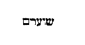

114
PATROLOGIAE CURSUS COMPLETUS
SIVE BIBLIOTHECA UNIVERSALIS, INTEGRA, UNIFORMIS, COMMODA, OECONOMICA, OMNIUM SS. PATRUM, DOCTORUM SCRIPTORUMQUE ECCLESIASTICORUM QUI AB AEVO APOSTOLICO AD INNOCENTII III TEMPORA FLORUERUNT; RECUSIO CHRONOLOGICA OMNIUM QUAE EXSTITERE MONUMENTORUM CATHOLICAE TRADITIONIS PER DUODECIM PRIORA ECCLESIAE SAECULA, JUXTA EDITIONES ACCURATISSIMAS, INTER SE CUMQUE NONNULLIS CODICIBUS MANUSCRIPTIS COLLATAS, PERQUAM DILIGENTER CASTIGATA; DISSERTATIONIBUS, COMMENTARIIS LECTIONIBUSQUE VARIANTIBUS CONTINENTER ILLUSTRATA; OMNIBUS OPERIBUS POST AMPLISSIMAS EDITIONES QUAE TRIBUS NOVISSIMIS SAECULIS DEBENTUR ABSOLUTAS DETECTIS, AUCTA; INDICIBUS PARTICULARIBUS ANALYTICIS, SINGULOS SIVE TOMOS, SIVE AUCTORES ALICUJUS MOMENTI SUBSEQUENTIBUS, DONATA; CAPITULIS INTRA IPSUM TEXTUM RITE DISPOSITIS, NECNON ET TITULIS SINGULARUM PAGINARUM MARGINEM SUPERIOREM DISTINGUENTIBUS SUBJECTAMQUE MATERIAM SIGNIFICANTIBUS, ADORNATA; OPERIBUS CUM DUBIIS TUM APOCRYPHIS, ALIQUA VERO AUCTORITATE IN ORDINE AD TRADITIONEM ECCLESIASTICAM POLLENTIBUS, AMPLIFICATA; DUOBUS INDICIBUS GENERALIBUS LOCUPLETATA: ALTERO SCILICET RERUM, QUO CONSULTO, QUIDQUID UNUSQUISQUE PATRUM IN QUODLIBET THEMA SCRIPSERIT UNO INTUITU CONSPICIATUR; ALTERO SCRIPTURAE SACRAE, EX QUO LECTORI COMPERIRE SIT OBVIUM QUINAM PATRES ET IN QUIBUS OPERUM SUORUM LOCIS SINGULOS SINGULORUM LIBRORUM SCRIPTURAE TEXTUS COMMENTATI SINT. EDITIO ACCURATISSIMA, CAETERISQUE OMNIBUS FACILE ANTEPONENDA, SI PERPENDANTUR: CHARACTERUM NITIDITAS CHARTAE QUALITAS, INTEGRITAS TEXTUS, PERFECTIO CORRECTIONIS, OPERUM RECUSORUM TUM VARIETAS TUM NUMERUS, FORMA VOLUMINUM PERQUAM COMMODA SIBIQUE IN TOTO OPERIS DECURSU CONSTANTER SIMILIS, PRETII EXIGUITAS, PRAESERTIMQUE ISTA COLLECTIO, UNA, METHODICA ET CHRONOLOGICA, SEXCENTORUM FRAGMENTORUM OPUSCULORUMQUE HACTENUS HIC ILLIC SPARSORUM, PRIMUM AUTEM IN NOSTRA BIBLIOTHECA, EX OPERIBUS AD OMNES AETATES, LOCOS, LINGUAS FORMASQUE PERTINENTIBUS, COADUNATORUM.
SERIES SECUNDA,
IN QUA PRODEUNT PATRES, DOCTORES SCRIPTORESQUE ECCLESIAE LATINAE A GREGORIO MAGNO AD INNOCENTIUM III. Accurante J.-P Migne, BIBLIOTHECAE CLERI UNIVERSAE, SIVE CURSUUM COMPLETORUM IN SINGULOS SCIENTIAE ECCLESIASTICAE RAMOS EDITORE. PATROLOGIA BINA EDITIONE TYPIS MANDATA EST, ALIA NEMPE LATINA, ALIA GRAECO-LATINA.—VENEUNT MILLE FRANCIS DUCENTA VOLUMINA EDITIONIS LATINAE; OCTINGENTIS ET MILLE TRECENTA GRAECO-LATINAE.—MERE LATINA UNIVERSOS AUCTORES TUM OCCIDENTALES, TUM ORIENTALES EQUIDEM AMPLECTITUR; HI AUTEM, IN EA, SOLA VERSIONE LATINA DONANTUR.
PATROLOGIAE TOMUS CXIV.
TOMUS SECUNDUS.
1852
SAECULUM IX.
FULDENSIS MONACHI
OPERA OMNIA
EX EDITIONE DUACENSI ET COLLECTIONIBUS MABILLONII, DACHERII, GOLDASTI, ETC. NUNC PRIMUM IN UNUM COADUNATA. ACCURANTE J.-P. MIGNE, BIBLIOTHECAE CLERI UNIVERSAE, SIVE CURSUUM COMPLETORUM IN SINGULOS SCIENTIAE ECCLESIASTICAE RAMOS EDITORE.
TOMUS SECUNDUS.
VENEUNT 2 VOLUMINA 14 FRANCIS GALLICIS.
1852
Sequitur Glossa ordinaria
Col.
9
Expositio in viginti primos psalmos.
751
Epitome Commentariorum Rabani in Leviticum.
795
Homilia in initium Evangelii S. Matthaei.
849
Expositio in quatuor Evangelia.
861
Picturae historiarum novi Testamenti.
915
De ecclesiasticarum rerum exordiis et incrementis.
919
De subversione Jerusalem.
965
Vita S. Galli abbatis.
975
Vita S. Othmari abbatis Sangallensis.
1029
Vita S. Blaitmaici abbatis.
1043
Vita S. Mammae monachi.
1047
De visionibus Wettini.
1063
De singulis festivitatibus anni.
1083
De Natali Domini.
1085
De Agaunensibus martyribus.
1085
De Maria virgine.
1089
Versus in Aquisgrani palatio editi.
1089
Versus de rebus diversis.
1108
Walafridi Hortulus.
1119
Carmen de S. Michaele.
1130
Epitaphium Geroldi comitis.
Ibid.
Vita metrica S. Leodegarii.
Ibid.
Prophetia Jeremiae
(Vide Operum ejus tomo IX, col. 847.)
Haec interpretatio Hieronymi est. Si quid in ea moverit, secundum Hebraeos codices exploretur. Alia est Septuaginta interpretum Ecclesiis usitata: quae, quamvis nonnulla aliter habeat quam in Hebraeis codicibus invenitur, tamen utraque, id est secundum Septuaginta et secundum Hebraeam, apostolica auctoritate firmata est. Non errore neque reprehensione superiori, sed certo consilio Septuaginta nonnulla aliter dixisse vel contexisse intelliguntur. Quod ideo praemonemus, ne quisquam alteram ex altera velit emendare: quod singulorum in suo genere veritas observanda est.
Jeremias Anathotites, qui est viculus tribus a Hierosolymis distans millibus, apud Thamnas in Aegypto a populo lapidibus obrutus occubuit. Jacet vero in eo loco sepultus, quo dudum Pharao rex habitaverat. Et quoniam postulatione sua defugatis ab eodem loco serpentibus, Aegyptios a tactu aspidum facit esse securos, magna eum ibi religione Aegyptii venerantur.
VERS. 1.— Verba Jeremiae. (HIER.) LXX: Verbum Dei, quia verba Jeremiae verbum Domini est.
VERS. 2.— In diebus, etc. (ID) . Mirabilis Dei clementia. Jam captivitate vicina, et Babylonio exercitu [Col. 0009C] vallante Jerusalem, nihilominus populum ad poenitentiam vocat, mallens servare conversos quam perdere delinquentes.
VERS. 5.— Priusquam te. Non quod ante conceptionem fuerit, ut haeretici suspicantur; sed quia praescivit eum Dominus futurum, cui facienda jam facta sunt; qui vocat ea quae non sunt tanquam ea quae sunt.
[Col. 0010A] VERS. 6.— A, a, a, Domine Deus. Detestatur officium quod pro aetate non potest sustinere. Eadem verecundia, qua Moyses gracilis et tenuis vocis se esse dicit; sed ille quasi magnae et robustae aetatis corripitur, quasi puero huic venia datur, qui verecundia et pudore decoratur.
VERS. 9.— Et misit, etc. (ID.) Notandum quod hic manus Dei mittitur, etc., usque ad ut confidentiam accipiat praedicandi.
(ID.) Quatuor tristibus duo laeta succedunt, etc., usque ad et propinare jubetur omnibus nationibus.
VERS. 11.— Virgam vigiliarum. (ID.) Virga vigiliarum, etc., usque ad resurrectione Domini floruisse narratur.
VERS. 13.— Et factum est. Gradatim peccantes [Col. 0010B] corripiuntur; qui noluerunt, percutiente virga, corrigi vel emendari, mittuntur in ollam succensam, de qua plenius Ezechiel.
Ollam succensam. Hinc Dominus ad Job dicit, etc., usque ad sed haec violenta et prava interpretatio est.
VERS. 14.— Habitatores terrae. De quibus in Apocalypsi, etc., usque ad et Petrus: Electis advenis Ponti, Galatiae, Cappadociae, Asiae et Bithyniae.
VERS. 17.— Tu ergo accinge, etc. (ID.) Job quoque praecipitur, etc., usque ad sed civitatem totam quae super montem posita latere non potest.
VERS. 18.— Et in columnam. De qua Apostolus: Columna et firmamentum veritatis (I Tim.) . Et Petrus et Jacobus et Joannes qui putabantur esse columnae [Col. 0010C] Ecclesiae, et Paulo et Barnabae dederunt dextras communionis.
Regibus Juda. (ID.) Si quando reges Juda, etc., usque ad in Domino speret ut vincat.
VERS. 2.— Adolescentiam. (HIER.) Plenius hoc in Ezechiele legitur ubi sibi Dominus Jerusalem matrimonio [Col. 0011A] copulat, et sub persona uxoris, suis jungit amplexibus. Sive ut ardentiorem monstret affectum, puellam eam et desponsatam vocat. Quo enim nondum potiti sumus, ardentius appetimus.
VERS. 3.— Omnes qui devorant. (HIER.) Sicut qui primitias devorant, etc., usque ad primitiae debentur sacerdotibus, non hostibus.
VERS. 4.— Israel. (ID.) Utrumque nomen ponitur, Jacob et Israel, non secundum duas et decem tribus, sed juxta omnem populum, cum ipse Jacob postea dictus sit Israel.
VERS. 5.— Quid invenerunt patres. Offensam dicit Deus a patribus factam, non quod peccata patrum filiis imputentur, sed quia filii habentes similitudinem patrum, et suo et parentum scelere puniuntur. Propter [Col. 0011B] sanctos patres filiorum miseretur Deus.
VERS. 6.— Neque habitavit homo. (ID.) Qui semper ad majora festinat, etc., usque ad sed certamen et incertus exitus futurorum.
VERS. 7.— Et induxi vos, quasi diceret: Pro labore durissimi itineris, etc., usque ad et haereditatem illius abominabilem facimus.
VERS. 10.— Cethim. (ID.) Cethim, vel Italiae scilicet, vel occidentalium partium, quia Judaeae Cyprus insula, in qua urbs hujus nominis vicina est, de qua Zeno princeps Stoicorum.
Et considerate. (ID.) Possumus contra eos hoc dicere, qui majori studio sequuntur vitia quam virtutes, quibus dicitur: Humanum dico propter infirmitatem carnis vestrae; sicut exhibuistis membra vestra [Col. 0011C] servire immunditiae et iniquitati ad iniquitatem (Rom. VI) , etc.
VERS. 11.— Populus meus. Velut anthropophormitae, qui occasione hujus testimonii: Faciamus hominem ad imaginem et similitudinem (Gen. I) , immensam et simplicem divinitatis substantiam lineamentis nostris et humana figuratione compositam pertinaciter contendunt.
VERS. 12.— Obstupescite, coeli. (ID.) LXX: Obstupuit coelum, etc., usque ad et tam coeli quam coelum eodem dicuntur nomine, ut Thebae, Athenae.
VERS. 13.— Me dereliquerunt. Qui praeceptum dedi dicens: Ego sum Dominus Deus tuus qui eduxi te de terra Aegypti. Et secundum quod in eodem loco scriptum [Col. 0011D] est: Non sint tibi dii alieni in conspectu meo, pro quo secutus est daemones.
Fontem aquae vivae. (ID.) Fons perpetuus est et vitales habet aquas. Cisternae et lacus de torrentibus et aquis turbidis complentur impluviis.
VERS. 15.— Nunquid servus. (ID.) Ex hoc loco Judae in superbiam elati, etc., usque ad Maledictus Chanaam, servus erit fratribus suis (Gen. IX) .
Leones. Secundum anagogen, leones intelligimus, etc., usque ad Omnes adulterantes quasi clibanus corda eorum (Osee VII) .
VERS. 16.— Usque ad verticem. Secundum illud: A planta pedis usque ad verticem, etc., usque ad qui puritatem Ecclesiae sua polluunt turpitudine.
[Col. 0012A] VERS. 19.— Arguet te malitia tua. (ID.) Nota quod malitia et praevaricatio, etc., usque ad quia dereliquit Dominum Deum suum.
VERS. 20.— A saeculo confregisti. (ID.) Potest hoc ad eum dici, etc., usque ad et faciunt divaricare pedes suos omni transeunti.
VERS. 21.— Vineam electam. In Hebraeo, soreth, quod genus est vitis optimae, de cujus sarculo plantavit Israel, et miratur quomodo semen verum et electa vinea in amaritudinem versa facta sit aliena.
Quomodo ergo conversa es? Nullus securus sit si plantatio, etc., usque ad si permanserit in eo quod plantata est.
VERS. 22.— Borith. (ID.) Ipsum Hebraeum. LXX vero herbam fullonum, quae in Palaestina in humidis et virentibus nascitur locis, et ad lavandas sordes [Col. 0012B] eamdem vim habet quam et nitrum.
VERS. 23.— Vide vias tuas, id est respice convallem filiorum Ennon, quae Siloe fontibus irrigatur, ibi cernes delubrum Baal, quem relicto Deo coluisti.
VERS. 25.— Prohibe pedem tuum. Pascha facturi, etc., usque ad quae deberent evangelico pede calcari et conteri.
VERS. 27.— Verterunt. Projicientes sermones meos retrorsum. Quando enim magister praecipit, etc., usque ad sed tumorem animi indicant gestu corporis.
VERS. 28.— Secundum numerum. Vel eosdem, vel diversos, singulae civitates colebant deos, ut nec in impietate viderentur habere consensum; sed pugnans contra se superstitio, errorem sequeretur diversum.
[Col. 0012C] VERS. 29.— Quid vultis? Prona est ad excusationem sui humana perversitas: et quod merito sustinet, sibi injuste videtur sustinere.
VERS. 30.— Filios vestros. Ut plagis filiorum disceretis, quod austeriori curandi essetis medicamine, et ne forsitan diceretis, peccantes corripere noluisti.
VERS. 31.— Videre verbum Domini. Moyses videbat vocem Domini. Et Joannes apostolus verbum Dei se vidisse et attrectasse dicit.
VERS. 32.— Nunquid obliviscetur? (ID.) Ornamentum suum perdit qui a Domino recedit, et intelligentiam doctrinae, quae significatur in pectore: Unde, Joannes supra pectus Domini in coena recubuit (Joan. XIII) , et sacerdotibus inter caetera servatur pectusculum [Col. 0012D] victimarum.
VERS. 34.— In omnibus. Istis, sive sub omni quercu alia littera; Hebraeum enim et quercum et ista significat. In amoenis autem locis, umbra et frondibus immolabant.
VERS. 35.— Et dixisti. His utendum est apud eos, etc., usque ad non lugere, sed excusationes praetendere.
Ecce ego judicio. (ID.) Audiat haeresis nova ex veteri, iram Dei esse vel maximam, nolle peccatum humiliter confiteri, sed impudenter jactare justitiam.
VERS. 36.— Et ab Aegypto. Ut Aegyptiorum impetum, etc., usque ad increpantur ergo quia, relicto Deo, spem in hominibus ponunt.
VERS. 37.— Super caput tuum. (ID.) More lugentium, [Col. 0013A] ut Thamar ab Amnon corrupta cinere caput sparsit, et manus supra posuit, et ita reversa est in domum suam.
VERS. 1.— Vulgo dicitur: si dimiserit. Ecce de fornicata et relicta muliere, etc., usque ad quanto contemptus adhuc vocare non dedignatur.
Si dimiserit vir. (HIER.) Hoc dicere possumus adversus eos, qui fidem Domini relinquentes et haereticorum erroribus irretiti post multas fornicationes et deceptionem suarum animarum, simulant se reverti ad pristinam veritatem, non ut deponant venena pectoris, sed ut insinuent aliis.
Tu autem fornicata es. Sive: Habuisti pastores multos in offensionem tui, ut Deum scilicet offenderes; [Col. 0013B] et qui magistri esse debuerant, ut alios ab omni errore prohiberent, auctores impietatis exstiterunt.
Tamen revertere. Si revertebaris ad me, dicit Dominus. Arguit impudentiam meretricis, quae post adulterium audet reverti ad virum.
VERS. 2.— Leva oculos tuos. Juxta anagogen: His qui haereticos errores deserere se promittunt, praecipitur ut levent oculos in directum. Nisi enim recta viderint, pristinam pravitatem damnare non possunt.
Quasi latro. Sicut solent latrones ad vesperam, etc., usque ad et descendentibus de Jerusalem in Jericho obsidet vias.
VERS. 3.— Frons mulieris. (ID.) Hoc possumus [Col. 0013C] dicere de haereticis qui in erroribus suis gloriantur. Quia supra dixit: non peccavi, arguit eam ut mulierem procacem quae ad nullum declinare erubescit.
VERS. 4.— Dux virginitatis meae tu es. Nunquid irasceris in perpetuum, etc., usque ad tanto miserior meretrix quae non vult recipere sanitatem.
VERS. 6.— Nunquid vidisti quae fecerit? (ID.) Facit comparationem, etc., usque ad et hoc est quod dicit: Nunquid vidisti quae fecerit?
Adversatrix Israel. (ID.) Sub figura duarum sororum loquitur quae de una stirpe Abrahae, Isaac et Jacob, sunt generatae. Priorem adversatricem vocat, quae statuit in Dan et in Bethel vitulos aureos.
VERS. 7.— Et vidit. (ID.) Aliorum tormenta, aliorum remedia sunt, etc., usque ad et ad zelum [Col. 0013D] et aemulationem Domini collocatum.
VERS. 11.— Justificavit animam. Justificata est Sodoma soror tua ex te. Et alibi: Descendit hic justificatus in domum suam ab illo (Luc. XVIII) .
VERS. 12.— Et non avertam faciem. Unde: Averte faciem tuam (Psal. L) , etc., usque ad de quibus vere dicitur: Qui devorant populum meum sicut escam panis.
VERS. 13.— Verumtamen scito. Quasi dicat, cum misertus fuero tui, non te justum putes; sed semper memento iniquitatis tuae et superbiae colla dimitte, ut qui per arrogantiam offendisti, per humilitatem placare Deum possis.
VERS. 14.— Convertimini. (HIER.) Judaei putant [Col. 0014A] hoc completum esse, etc., usque ad Nisi Dominus sabaoth reliquisset nobis semen, sicut Sodoma essemus, et similes Gomorrhae fuissemus (Rom. IX) .
VERS. 16.— Cumque multiplicati fueritis. (ID.) Alii hoc ad finem temporum referunt, etc., usque ad sed spiritualem cibum sectabuntur.
VERS. 17. Vocabunt. Qui olim dicebant, Qui sedes super Cherubim, manifestare (Psal. LXXIX) , etc. Inter duo Cherubim in propitiatorio Domini majestas apparebat, et loquebatur Moysi et sacerdotibus, sed modo aliter tempore fidei.
VERS. 18.— In diebus illis. Hoc proprie in Christi adventu completur, cum duodecim tribus simul Evangelio credunt, et terram aquilonis relinquunt et diaboli imperium.
[Col. 0014B] VERS. 19.— In filios. (HIER.) i In numero filiorum qui de gentibus crediderunt. Quotquot enim receperunt eum, dedit eis potestatem filios Dei fieri (Joan. I) .
VERS. 20.— Mulier amatorem. (ID) Semel mista, videns eum, etc., usque ad contempsit Dominum Salvatorem, in perniciem suam.
VERS. 21.— Vox in viis audita est. Libenter suscipit Dominus poenitentem, occurrit filio inopia et squalore confecto, pristinis vestibus induit, gratiam reddit revertenti, si tamen cum ploratu et ululatu redeat ad patrem.
VERS 22.— Aversiones vestras. Alii conversiones: quamvis propria voluntate ad eum convertamur, nisi tamen ille nos traxerit, et cupiditatem nostram suo praesidio corroboraverit, non possumus esse [Col. 0014C] salvi. Intelligimus, et de populo Judaeorum ad eum revertente, et de haereticis qui Dominum dereliquerunt.
VERS. 25.— Dormiemus. Vox Israel, qui Deum suum non audivit et haeretici poenitentis. Pars enim est salutis peccata nosse et confiteri; unde: Dic tu prius iniquitates tuas, ut justificeris (Ibid.) .
VERS. 1.— Si reverteris. (HIER.) Septuaginta: Si conversus fuerit Israel, ait Dominus, ad me convertatur. Alia littera, converteris, id est, si salutem desideras, et te peccasse dicis, plene convertere, id est, quem negasti crede. Si abstuleris. Patet, quia quando movemur et dicimus: Mei autem pene moti sunt pedes, pene effusi sunt gressus mei (Psal. LXXII) . [Col. 0014D] Non ex imbecillitate naturae hoc patimur, sed quia contra Deum offendicula et idola nostra ponimus.
VERS. 2.— Et jurabis, vivit, etc. (ID.) In suggillationem, scilicet mortuorum deorum, per quos jurat omnis idololatra.
Novate. (ID.) Eradicando vepres et sentes, etc., usque ad non potest animus aerumnis mundi plenus semen Dei suscipere et fructum facere. Circumcidimini. (ID.) Viro Juda et habitatoribus Jerusalem praecipitur, ut deserant occidentem litteram, et sequantur vivificantem spiritum. Ne forte. (ID.) Monet et praedicit, ne facere compellatur quae in Ninivitis probamus, quibus est praedicta sententia, ut imminentem furorem declinarent poenitentia.
[Col. 0015A] VERS. 7.— Ascendit leo. (HIER.) Si quis fautor est aut auctor perversorum dogmatum, de eo potest dici, ascendit leo de cubili suo, etc.
Et praedo. De quo dicitur, Omnium inimicorum suorum dominabitur (Psal. IX) . Qui gloriatur dicens: Circumivi terram et perambulavi eam (Job II) . Quis est enim quem diaboli venena non tangunt, nisi ille qui ait: Venit enim princeps mundi hujus, et in me non habet quidquam? (Job. XIV.) De loco suo. De abysso, in qua est religandus, in quam ne mittatur exorat.
VERS. 8.— Super hoc. Sine poenitentia saevissimam bestiam vitare non possumus, et nisi ad Deum non solum mente, sed etiam corpore convertamur. Dum enim vastatur Ecclesia, ira Dei est aperta.
[Col. 0015B] VERS. 9.— Principum. (HIER.) Qui legem docere debuerunt, et subjectos a leone defendere.
Sacerdotes. Qui putantur esse sapientes: Stultam enim fecit Deus sapientiam hujus mundi, quia per illam non cognoverunt Deum. Prophetae consternabuntur, etc. Aquila, amentes erunt. Quis enim non insaniat, non perdat cor, cum principes et reges et sacerdotes quondam suos sub leone conspexerit.
VERS. 10.— Et dixi: Heu, heu, heu, Domine Deus. Quia supra dixit, in tempore illo vocabunt Jerusalem solium Domini, etc., et nunc dicit, peribit cor regis, etc., turbatur propheta, et in se putat Deum mentitum, nec intelligit illud longe post, hoc in proximo futurum tempore.
VERS. 11.— Ventus urens. (HIER.) Quando scilicet [Col. 0015C] pervenerit gladius usque ad animam, etc., usque ad nequaquam populo, sed mihi veniet, ut meum triticum dissipetur.
VERS. 12.— Spiritus plenus. Quidam hunc locum sic exponunt, ut postquam purgata fuerit area, reliquiae salvae fiant. Unde scriptum est: Spiritus plenitudinis veniet mihi; unde evangelista, De plenitudine ejus omnes accepimus (Joan. I) . Et nunc ego. Aposiopesis, sicut ait Virgilius (AENEID.) :
VERS. 13.— Ecce quasi, etc. Ventura cernit ut praesentia; et babyloniorum describit exercitum, [Col. 0015D] cujus curruum rotarumque strepitus tempestati saevissimae comparatur, et equorum velocitas aquilis. Exercitus diaboli, currus scilicet et equites Pharaonis, quod intelligens vir ecclesiasticus dicit, Vae nobis quoniam vastati sumus. Credens illi sententiae. Cum conversus ingemueris, salvus eris. Vae nobis, quia propheta quasi digito demonstravit, populus ingemiscit. Et non futura, sed jam facta sentit dicens: Vae nobis.
VERS. 14.— Lava a malitia. Respondet propheta imo in propheta Dominus, Lava. Unde: Lavamini, mundi estote (Isa. I) , scilicet aqua baptismi, aqua poenitentiae salutaris.
VERS. 15.— Vox enim annuntiantis. Juxta situm [Col. 0016A] Judaeae loquitur. Tribus enim Dan juxta Libanum montem et urbem quae nunc Paneas dicitur, aquilonem respicit, unde venturus Nabuchodonosor. De monte. Post tribum enim Dan succedit terra Ephraim per quam venitur in Jerusalem. Allegorice. (HIER.) Venit judicium Domini in terram Domino delinquentem cum omni ubertate supplicii.
VERS. 16.— Custodes. Adversarios scilicet qui tam diligentes obsideant, et munitionibus urbem claudant, ut magis vinearum agrorumque custodes, quam adversarios putes. Vult Dominus nationes omnes in circumitu suam nosse sententiam, et flagellata Jerusalem cunctos recipere disciplinam.
VERS. 18.— Viae tuae. (HIER.) Quidquid mali nobis accidit, etc., usque ad quanto minus in homines [Col. 0016B] quondam civitatis Dei?
VERS. 19.— Ventrem meum. (ID.) Loquitur hoc Dominus, cum seditionem et discordiam cernit in Ecclesia, et in conventiculis suis clamare perdicem, et in bella converti Dei requiem. Unde sequitur:
VERS. 21.— Usquequo videbo. Vox prophetae, et per prophetam Dei, dolentis super contritionem populi sui, cujus viscera ad instar hominis lacerantur, Salvator in morte Lazari, et super Jerusalem flevit. Nec dolorem celat silentio, et clangor buccinae et strepitus praeliorum illius turbat affectum, dum mala malis cumulantur, et universa duarum tribuum terra vastatur.
VERS. 22.— Quia stultus populus. (HIER.) Quia [Col. 0016C] principes populi mei non cognoverunt, etc., usque ad quem semper cupiebat videre? Sapientes sunt, etc. (ID.) Sapientes malitiosi, etc., usque ad non sapientia, sed versutia et calliditas vocatur.
VERS. 23.— Aspexi terram. Propheta cernit in spiritu quae ventura sunt, ut audiens populus terreatur et poenitentiam agat, ut non sustineat quae formidat. Quidquid secundum historiam de Judaea et Jerusalem dicitur, ad Ecclesiam Dei referamus: quae cum Deum offenderit, et vitiis et persecutione vastata fuerit, ubi quondam virtutum cohors et laetitia, ibi multitudo peccatorum et moeror versetur.
VERS. 27.— Haec enim dicit. (HIER.) Mista est Domini clementia irae: terra deseritur, sed non consumitur, ut remaneant qui intelligant clementiam [Col. 0016D] ejus.
VERS. 28.— Cogitavi et non poenituit me, etc. Ut praedictam auferrem sententiam, et ira saevientis non perveniret ad finem; minatus est Dominus per Jonam, sed impendentem gladium lacrymarum et gemituum magnitudo superavit.
VERS. 29.— A voce equitis. Describit furentium exercitum a cujus timore populus civitatem reliquit, et ardua conscendit: sed tamen iram Dei declinare non potuit. Hoc totum ad Ecclesiam potest referri, cum Deum offenderit, et adversariis tempore persecutionis, vel vitiis atque peccatis tradita fuerit.
VERS. 30.— Tu autem vastata. (HIER.) Hoc idem dicendum contra eos, qui conjugales affectus, et [Col. 0017A] verae fidei pudicitiam perdiderunt. Cum vestieris. Haec enim et tuis amatoribus praeparas, et lectus angustus utrumque capere non potest. Nec Deus ornamenta suscipit, quibus ante amatoribus tuis placuisti.
VERS. 31.— Vocem enim quasi, etc. (HIER.) Duo exempla posita sunt, et parturientis et lugentis, ut quidquid mulier patitur, vel in fetu, vel in morte filiorum, Jerusalem patiatur in populis.
VERS. 1.— Circuite vias. (HIER.) Grandis amor justitiae ut non juxta interrogationem Abrahae, et responsionem Dei, quod pro decem viris justis liberet Deus civitatem, jamjamque perituram; sed si unum [Col. 0017B] invenerit, qui faciat judicium, et quaerat fidem.
VERS. 3.— Domine, oculi tui. (ID.) Damnantur opera Judaeorum (in quibus juxta legis caeremonias exsultabant) per fidem Christianorum, per quam gratia salvi facti sumus. Percussisti eos. (GREG.) Omnis divina percussio, etc., usque ad et est unum flagellum quod temporaliter incipit, et aeternis consummatur suppliciis.
Et non doluerunt. Inferuntur supplicia ut corrigantur vitia, sed non emendatur Jerusalem nec per tormenta.
VERS. 4.— Forsitan pauperes sunt. (HIER.) Sicut illud, Mittam filium meum, forsitan ipsum verebuntur (Matth. XXI) . Utitur Deus sermone dubitantis, ut ex ambiguitate sententiae et verborum suspensione [Col. 0017C] liberum hominis monstretur arbitrium.
VERS. 5.— Ecce magis, etc. Juxta tropologiam. Qui magni putantur in Ecclesia, quia solvunt jugum et rumpunt vincula, traduntur in ignominias passionum, ut faciant quae non conveniunt. Vincula. (HIER.) Praeceptorum Dei, non Pharisaeorum, de quibus dicitur: Dirumpamus vincula eorum et projiciamus a nobis jugum ipsorum (Psal. I) .
VERS. 6.— Pardus vigilans. Alexandri impetum significat, qui subditis sibi variis gentibus, quasi variatus pardus contra Medos Persasque arma corripuit. Quia vero non de futuro, sed de praeterito, vel jamjamque de futuris historiam texit, ideo de Romano tacet imperio.
[Col. 0017D] VERS. 7.— Saturavi eos. (HIER.) Audiat hoc qui acceptis divitiis luxuriae serviunt.
VERS. 8.— Equi amatores. (ID.) Equis, cum non vident jumentum, etc., usque ad Assimilatus est jumentis insipientibus et similis factus est illis (Psal. XLVIII) .
VERS. 10.— Et dissipate. (ID.) Audiat Ecclesia quam cito muri, etc., usque ad propter clementiam judicis, non propter meritum peccantium.
VERS. 12.— Negaverunt Dominum, etc. (ID.) Audiat hoc Ecclesia negligens: et providentiam Dei refutans, quod et gladium et famem sustineat, nisi ventura crediderit quae dicuntur.
VERS. 14.— Ecce ego do, etc. (ID.) Ut increduli [Col. 0018A] sermone tuo crementur, etc., usque ad si supra fundamentum Christi aedificaverimus.
VERS. 15.— Ignorabis linguam, etc. (ID.) In Hebraeo: Non intelliges quid loquatur. Est enim malorum solatium, si habeas hostes, quos rogare valeas, qui intelligant preces tuas.
VERS. 17.— Et comedet segetes, etc. Vastitatem terrae describit, interfectionem multorum, abactionem pecorum, subversionem urbium et murorum, quod gladio hostili cuncta capiantur.
VERS. 18.— Verumtamen, etc. (HIER.) Reliquiae scilicet salvae fient, vel eorum qui in Babylonem ducti sunt, vel relicti ad culturam terrae Judaeae; vel eorum qui post persecutionis ardorem, vel fuga, vel confessione fidem Deo servaverunt.
[Col. 0018B] VERS. 19.— Quod si dixeritis. (ID.) Tropologice. Potest hoc super haereticis accipi, etc., usque ad habitate, imo servite his quorum deos colitis.
VERS. 21.— Audi, popule stulte. Proprie ad Judam loquitur et ad domum Jacob. Israel enim multo jam tempore exsulabat in Assyriis. Qui non habes cor. Dat intelligi quod absque praecepto naturaliter debemus intelligere quae recta sunt. Qui habentes, etc. Cui simile: oculos habent, et non videbunt, etc., Similes illis fiant qui faciunt ea, et omnes qui confidunt in eis (Psal. CXIII) .
VERS. 25.— Iniquitates vestrae, etc. (HIER.) Si quando mare transcendat terminos, etc., usque ad in quibus operariis vineae unum aeternae praemium promittitur.
[Col. 0018C] VERS. 27.— Sicut decipula. Dum invicem se venantur ad mortem, et aliorum damnis atque dispendiis domos suas complent, secundum illam philosophorum sententiam, Omnis dives, aut iniquus, aut haeres iniqui. Atque utinam haec tantum ab eis fiant qui foris sunt, et non a nobis, et venientium ad nos, non manus contemplentur, sed ora.
VERS. 28.— Incrassati sunt, etc. Cui simile: Incrassatus, impinguatus, dilatatus, dereliquit Deum factorem suum (Deut. XXXII) . Et: Incrassatus est dilectus et recalcitravit (Ibid.) . Et impinguati, etc. In divinis confisi: quasi dicat: Anima, multa bona habes posita in annos plurimos: requiesce, comede et bibe (Luc. XII) .
[Col. 0018D] VERS. 1.— Confortamini, etc. (HIER.) Quia jamjamque ab aquilone Nabuchodonosor venturus est, etc., usque ad inter hos alius vicus est qui lingua Syra et Hebraea Betacaren nominatur in monte positus.
VERS. 2.— Speciosae. Describitur pulchritudo Jerusalem, quae est ipsa Sion ut aliud totam urbem, aliud arcem urbis sonet. Sion enim arx, id est specula, interpretatur et speciosae mulieri comparatur.
VERS. 3.— Pastores. (HIER.) Satis eleganter ponitur hic verbum, etc., usque ad quorum alii manifestant ad polluendum scortum, alii ad urbis excidium.
[Col. 0019A] VERS. 4.— Vae nobis, etc. (HIER.) Illis dicentibus: Surgite et ascendamus, isti respondent: Vae nobis, etc. Et est hic sensus: Si per diem hoc patimur, quid per noctem patiemur?
VERS. 5.— Surgite. Qui dixerunt, consurgite et ascendite, etc., sese illis verbis provocant ad bellum: Surgite et ascendamus in nocte, ut sciant adversarii non temporis esse victoriam, sed virtutum.
VERS. 7.— Sicut frigidam. Sine calore fidei: Ecclesia, spiritu ferventes: mali autem, frigida; unde: Refrigescet charitas multorum (Matth. XIV) . Et illud: Assimilabor descendentibus in lacum (Psal. XXVIII) . Semel sufficiat dixisse lacum, non stagnum sonare, secundum Graecos, sed cisternam, quae Syro et Hebraeo [Col. 0019B] sermone Gab dicitur.
VERS. 8.— Erudire. (HIER.) Per hoc discimus, quod flagellet Deus, etc., usque ad per omnem dolorem et flagellum erudieris, Jerusalem.
VERS. 9.— Usque ad racemum. (ID.) Quasi cum vastata fuerit Jerusalem, etc., usque ad quasi in cartallum vel in torcular.
VERS. 10.— Incircumcisae aures, etc. Notandum quod circumcisio in Scripturis dicitur tribus modis: in praeputio, in corde, in auribus, unde: Qui habet aures audiendi audiat (Matth. XI) .
VERS. 11.— Idcirco furore. (HIER.) Quasi dicat: Venientem iram Dei prospicio, et furore ejus et iracundia plenus sum, et ultra sustinere non possum: [Col. 0019C] nec pro peccatoribus audeo deprecari Deum.
VERS. 12.— Extendam. (HIER.) Septuaginta: Elevabo: utrumque autem percutientis habitus est; unde: Et adhuc manus extenta sive, excelsa (Isa. V) .
VERS. 14.— Et curabant contritionem. (ID.) Quasi dicat: Cum tanta facerent mala, etc., usque ad magis illos supplicio et Dei iracundiae praeparantes.
VERS. 15.— Confusi sunt. (ID.) Expressius hoc legendum est, etc., usque ad quin potius peccatum auxere contemptu.
Nescierunt. Noluerunt; sed nimio contemptu et vitio violenti mali nec intelligere quidem potuerunt. Grandis impietas, non solum non cavere, sed nec intelligere velle peccata, et nullam habere distantiam [Col. 0019D] bonorum malorumque operum.
VERS. 16.— State super vias. Legamus Evangelicam parabolam, in qua negotiator bonus omnes vendidit margaritas, ut unam emat pretiosam: ut scilicet per patriarchas et prophetas veniamus ad eum qui dicit: Ego sum via, veritas et vita (Joan. XIV) , unde, State super vias, etc.
VERS. 17.— Vocem tubae. (HIER.) Vocem tubae, mandata Evangelii vel doctrinam apostolorum: unde, In montem excelsum ascende tu qui evangelizas Sion, exalta sicut tuba vocem tuam, qui annuntias Jerusalem.
VERS. 20.— Ut quid mihi thus. (ID.) Quasi dicat: Frustra mihi ad unguenta conficienda, etc., usque [Col. 0020A] ad cum Scriptura dicat, Redemptio animae viri propriae divitiae ejus (Prov. XIII) .
VERS. 21.— Patres et filii. (ID.) Filii patrum sequuntur blasphemias, quotidie illam imprecationem suscipientes: Sanguis ejus super nos et super filios nostros (Matth. XXVII) .
VERS. 22.— Ecce populus, etc. Proprie hoc dicitur de Babyloniis, qui venturi sunt contra Jerusalem. Et omnis armaturae ordo describitur, et praeliantium impetus, ut terrore commoti agant poenitentiam et Deum clementissimum placent.
VERS. 23.— Vox ejus quasi, etc. Allegorice. (HIER.) Possumus hoc testimonio abuti, etc., usque ad et quasi vehementissimi maris fluctus, ita opprimunt resistentes.
[Col. 0020B] VERS. 25.— Nolite exire, (ID.) Evangelium quoque docet, etc., usque ad sed firmissime se tueantur munitionibus.
VERS. 27.— Et probabis. (ID.) Quasi dicat: Ut cum probaveris et scieris viam, etc., usque ad qui sicut aspides surdae obturant aures suas, ne audiant vocem incantantium.
Omnes isti. (GREG., Moral., l. XVIII, c. 14) . Principes sunt a Domino recedentes et inobedientes, etc., usque ad qui ab Ecclesiae unitate discordat, proximum non amat.
VERS. 2.— Sta in porta domus Domini, etc., (HIER.) Per quam multitudo populi ad rogandum Dominum ingreditur, etc., usque ad et per occasionem [Col. 0020C] et celebritatem loci audire coguntur verbum Domini.
VERS. 4.— Templum Domini. (ID.) Potest hoc convenire illis virginibus, etc., usque ad in quo fides vera, conversatio sancta et omnium virtutum chorus.
VERS. 8.— Ecce vos confiditis in vobis. (ID.) Frustra eos in templo habere fiduciam haec peccata demonstrant, etc., usque ad et in tantam prorumpunt amentiam, ut liberatos se jactent, quia a cultu Dei recesserunt.
VERS. 11.— Spelunca latronum, etc. (ID.) De hoc loco sumptum puto quod dicitur in Evangelio, etc., usque ad oculi mei contemplati sunt quod vos putatis occultum.
[Col. 0020D] VERS. 12.— Ite ad locum meum in Silo, etc. (ID.) Ubi scilicet fuit primum tabernaculum meum, etc., usque ad Cum venerit Filius hominis putas inveniet fidem super terram (Luc. XVIII) .
VERS. 13.— Ad vos mane consurgens, etc. (ID.) Non quod ei tempus absque diluculo sit, etc., usque ad filii lucis dicuntur et non noctis neque tenebrarum, nec dormientes, qui scilicet mandata Dei conservant.
VERS. 14.— Sicut feci Silo. Abjeci Silo, abjecturus et templum: abjeci decem tribus, abjecturus et duas tribus. Quidquid illi populo minatur, timeamus et nobis, ne similia faciamus.
VERS. 16.— Tu ergo noli, etc. (HIER.) Ne videatur [Col. 0021A] propheta rogans non impetrare quod postulat, praecipit Dominus, etc., usque ad haec impoenitentia, haec blasphemia, vel verbum in Spiritum sanctum remissionem non habet in aeternum.
VERS. 17.— Nonne vides. Ne putemus crudelem Deum: qui nec rogari patiatur, causam reddit quare non audiat, Nonne vides?
VERS. 20.— Conflatur. (HIER.) Quasi dicat: Quod diu facere nolui, vestrorum peccatorum multitudine facere compellor super viros et super jumenta. Cum irascitur Deus, etiam homines, et quae sunt hominis, similem severitatem sentiunt.
VERS. 22.— Quia non sum locutus. (ID.) Manifeste ostendit, quia primum decalogum dederit, etc., usque ad necessaria ergo fuit gratia evangelica, quae [Col. 0021B] eos non merito suo, sed Dei misericordia conservaret.
VERS. 27.— Et loqueris ad eos. (ID.) Ne dubitetis indurare cervices, etc., usque ad nunc saltem loquere eis verbis meis.
VERS. 28.— Haec est gens. Hoc in tempore prophetarum factum est, et in umbra praecessit. In Christo plene completum est, cujus disciplinam noluerunt audire, unde eleganter infertur: Periit fides et ablata est. Quae proprie Christianorum est.
VERS. 29.— Tonde capillum. Apud veteres consuetudo fuit lugentium tondere caesariem, nunc e contra comam dimittere luctus indicium est.
VERS. 31.— Excelsa Tophet. (HIER.) Tophet Hebraice, latitudo Latine, qui locus est, etc., usque ad [Col. 0021C] neque enim si canis aut asinus aut immundum quod tibet animal primum occurrisset domino, offerre debuisset.
VERS. 32.— Ecce dies venient. (ID.) Quando recessit a fidelitate Domini sui, tunc incoepit obsidio. Sed cum rex Aegypti veniret et liberaret Jerusalem, Nabuchodonosor illum fugavit. Postea Nabuzardan obsedit eam, et cepit, et duxit Sedeciam in Antiochiam, et ibi orbatus.
VERS. 34.— Et quiescere faciam. Cum locus idololatriae versus fuerit in sepulcra, ut ubi Deum offenderant, ibi cadavera eorum inhumata jacerent.
VERS. 1.— In tempore illo, etc. (HIER.) Omnia [Col. 0021D] quae prophetalis sermo describit, etc., uque ad aurum et argentum quae in sepulcris more antiquo ponebantur.
VERS. 4.— Et dices. Post tanta mala ad poenitentiam provocat eos qui remanserunt. Sive, priusquam veniant, quae minatus est, hortatur ad conversionem, et poenitentiae locum indicat. Aversus est, sive avertit. Quasi dicat: Conversus potest irae Dei precibus resistere et avertere.
VERS. 5.— Quare ergo, etc. (HIER.) Quanto eos ad poenitentiam provocavi, tanto magis recesserunt, non tam studio peccandi, quam me superandi.
VERS. 6.— Nemo quod bonum, etc. (ID.) Omne g enus hominum pronum est ad malum (Gen. VIII) . In [Col. 0022A] tempore Salvatoris, omnes declinaverunt, simul inutiles facti sunt, non est qui faciat bonum (Psal. XIII) . Unde ipse: Salvum me fac, Domine, quoniam defecit sanctus (Ibid. XI) . Ubi sunt ergo qui dicunt in nostra positum potestate omni peccato carere?
VERS. 7.— Milvus in coelo. (ID.) Quasi dicat: Etiam aves sua norunt tempora, ut sciant quando ad calida festinantes loca rigorem hyemis declinare debeant, et veris principio ad solitas redire regiones.
VERS. 10.— Propterea dabo. (ID.) Receperunt mercedem suam, et qui verbum Domini abjecerunt, ipsi abjecti sunt.
VERS. 11.— Et sanabant contritionem. (ID.) Quasi dicat: Boni medici aliena vulnera verbis sanare cupiebant, etc., usque ad et ignominiam eorum qui decipiunt [Col. 0022B] dicentes, pax, pax, etc.
VERS. 12.— Idcirco cadent. (ID.) Ut quorum dignitas excellebat, etiam ruinae populi misceantur, quia scilicet a minimo usque ad maximum omnes avaritiae student (Jer. VI) .
VERS. 13.— Non est uva, etc. Quasi dicat: Cum tempora praetereant, et aestati succedat autumnus, et hyeme arborum cadant folia: de longe cuncta videbitis nec ex eis cibum capietis.
VERS. 14.— Quare sedemus. Vox populi inducitur respondentis, et vitia sua confitentis, et sese mutuo cohortantis. Convenite et ingrediamur civitatem munitam. Vel unam civitatem Jerusalem: jam enim aliae captae fuerant.
VERS. 16.— A Dan auditus est. Ubi Jordanis fluvius [Col. 0022C] oritur: Nabuchodonosor describitur a Dan veniens per Phoenicem cum exercitu suo.
VERS. 17.— Mittam vobis serpentes. (ID.) Ut insanabiliter percutiant vos, etc., usque ad qui eloquia Domini contemnunt traduntur adversariis potestatibus.
VERS. 18.— Dolor meus. (ID.) Ex persona Domini haec legenda, eversionem Jerusalem plangentis, et ejus miseriam non ferentis.
VERS. 19.— Et ecce vox. Describit fletum et ululatum urbis ingressis hostibus. Hostes venientes de terra longinqua clamant contra civitatem vel cives contra hostes.
VERS. 20.— Transiit messis. Verba populi in Jerusalem longa obsidione conclusi, quia mutata sunt [Col. 0022D] tempora, anni circulus revolutus. Spes autem nostra irrita.
VERS. 21.— Super contritione. Domini responsio, qui in afflictione Jerusalem videtur afflictus.
VERS. 1.— Quis dabit. (HIER.) Rex Jerusalem obsessa civitate ab hostibus, etc., usque ad hoc autem tam ex persona Domini, quam ex persona prophetae intelligi potest.
VERS. 2.— Quis dabit me, etc. Quasi dicat: Melius est habitare in solitudine, quam inter tanta scelera hominum commorari. Unde in Evangelio: Usquequo sustinebo vos? (Matth. XVII.) Et alibi: Oui [Col. 0023A] intelligit sedebit, quoniam tempus pessimum est (Thren. III; Mich. II) .
VERS. 3.— Quia de malo, etc. (HIER.) De malo in malum transeunt peccatores, etc., usque ad et lingua armantium in blasphemiam.
VERS. 4.— Unusquisque, etc. (GREG.) Callidus hostis cum a bonorum cordibus expelli se conspicit, eos qui ab illis valde diliguntur exquirit, et per eorum verba blandiens loquitur, qui plus caeteris amantur, ut dum vis amoris cor perforat, facile persuasionis gladius ad intimae rectitudinis intima irrumpat. A proximo suo. (HIER.) Quia et inimici hominis domestici ejus (Mich. VI) . Fratrum quoque gratia rara. Et tradet pater filium, et filius patrem. Et duo in tres, et tres in duo dividentur (Luc. XII) .
[Col. 0023B] VERS. 5.— Ut inique agerent laboraverunt. (GREG.) Ac si aperte diceretur: Qui amici esse veritatis sine labore potuerunt, ut peccent, laborant: cumque vivere simpliciter renuunt, laboribus exigunt ut moriantur.
VERS. 7.— Et probabo eos. (HIER.) In fornace tribulationis. Vasa figuli probat fornax (Eccli. XXVII) : ut quidquid in nobis adulterinae materiae est, excoquatur. Argentum enim Domini igne examinatum, probatum terrae, purgatum septuplum (Psal. XI) .
VERS. 9.— Nunquid super his (ID.) Saepe versiculum istum repetit, ut malis eorum enumeratis inferat se juste facere quod facit.
VERS. 10.— Super montes. (ID.) Tropologice. Super [Col. 0023C] montes fletus assumitur, etc., usque ad qui possunt in sublime ascendere usque ad simplices, recesserunt a Deo.
VERS. 11.— Et dabo Jesusalem. (ID.) Cum ecclesiastici doctores deficiunt, etc., usque ad et qui dicit, Inhabitabo et inambulabo in eis (Lev. XXVI) .
VERS. 14.— Cordis sui. Non in corde nostro, sed in Domino confidendum est. Pravum est cor hominis, de quo exeunt pravae cogitationes.
VERS. 15.— Idcirco haec dicit Dominus. Potest de vicino tempore prophetari, quo capti sunt a Chaldaeis: et proprie de hoc, quo in omnibus gentibus sunt dispersi et toto orbe divisi.
VERS. 16.— Gladium. (HIER.) Vel materialem vel spiritualem, quo dividuntur, ne in malum consentiant, [Col. 0023D] sed in eo, quod mali sunt, dispereant.
VERS. 17.— Et vocate. Vocate lamentatrices propter futuram captivitatem, etc., usque ad voce modulata populum transfundant in lacrymas.
VERS. 18.— Oculi nostri. Propterea: vel ipse Deus adjungit se compatientis affectui, ut quod populus sustinet, sustinere et sentire ipse dicatur.
VERS. 19.— Quomodo vastati. Dicant hoc in persecutione credentium turbae, quae idcirco vastatae sunt atque confusae, quia dereliquerunt legem Domini, et deseruerunt tabernacula sua.
VERS. 20.— Audite ergo. Superius dixit: vocate lamentatrices, etc. Nunc quasi praesentes alloquitur, in suggillationem sacerdotum, atque doctorum, et [Col. 0024A] virorum omnium: ut illis a doctrina cessantibus, mulieres audiant verbum Domini.
VERS. 21.— Quia ascendit. Quia tanta erit fortitudo, et velocitas hostium, ut non exspectent ostium, sed per fenestras, et tecta conscendant.
VERS. 22.— Loquere: Haec dicit, etc. (HIER.) Verbum Hebraicum quod tribus litteris scribitur, etc., usque ad ut non sit qui sepeliat corruentes.
VERS. 24.— Qui facio misericordiam. (ID.) Etsi quaedam videantur injusta, omnia tamen, etc., usque ad Qui gloriatur, in Domino glorietur (II Cor. X) .
VERS. 25.— Ecce dies venient. (ID.) Multae gentium, et maxime Judaeae et Palaestinae confines, etc., usque ad circumcisio enim non prodest, nisi legem observes.
VERS. 1.— Audite verbum, etc. (HIER.) Proprie adversus eos loquitur, etc., usque ad et ex causis coelestium moderentur terrena.
VERS. 3.— Lignum. (ID.) Quod de idolis diximus, etc., usque ad propria est et eorum qui ignorant Deum.
VERS. 4.— Argento et auro. (ID.) Ut fulgore materiae simplices occupet et decipiat. Hic error usque ad nos pervenit, ut religionem in divitiis arbitremur.
VERS. 5.— Nolite ergo timere. Solent plerique gentium daemones colere ne officiant, et alios exorare, ut proficiant: unde Virgilius, Aeneid. III:
VERS. 6.— Non est similis tui. Non est similis tui [Col. 0024C] Domine, deorum, scilicet qui ab haereticis finguntur.
VERS. 7.— Tuum est enim. (HIER.) Quamvis haeretici juxta sapientiam mundi, etc., usque ad Perdam sapientiam sapientium, et prudentiam prudentium reprobabo (I Cor. I) .
VERS. 8.— Involutum. (ID.) Aliter non decipit; falsitas involvitur, veritas, etc., usque ad dum coeli sibi colorem ostendunt, et coelestia promittunt.
VERS. 11, 12.— Coelos et terram. Quae cooperatores Christi, qui dii vocantur et domini, per doctrinam ecclesiasticam partim fecerunt.
Qui facit. (ORIG., Homil. in Jer.) Dominus qui facit terram in fortitudine, etc. Tres quodammodo virtutes Dei assumens propheta, etc., usque ad si vero coelestia, thesaurizatorem suum ad propinquam [Col. 0024D] sibi regionem subvehunt.
VERS. 13.— Nebulas. (HIER.) Quae noverunt scilicet quibus pluvias suspendant et quibus impendant: Moyses quasi nubes loquebatur, qui dicebat, Exspectet terra, ut pluviam verba mea (Exod. IX) . Et Isaias: Audi, coelum, et auribus percipe, terra, quia Dominus locutus est (Isa. I) . Ab extremitatibus. Qui vult in vobis primus esse, sit omnium novissimus. Aliter enim nemo fit nubes.
Fulgura in pluvias. (ORIG.) Fertur quod fulgura ex nubium vel imbrium collisione generantur, etc., usque ad Jeremias quoque et Baruch sibi colloquentes rutilantia fulgura mittunt.
Et educit ventum de thesauris. (ID.) Venti qui terras [Col. 0025A] perflant in thesauris Dei non sunt, etc., usque ad inde oritur ut alius sit sapiens, alius fidelis et hujusmodi.
VERS. 14.— Stultus. (HIER.) Stultus comparatione Dei, etc., usque ad omnia enim contraria assumpsit Deus, ut contraria dissolvat.
Falsum est. (ORIG.) Quod ordine suo fingit. Falsum est enim quod conflavit, sicut stultus est omnis homo a scientia, stultum etiam est quod facit.
Non est spiritus. (HIER.) Notandum quod in hoc capite ventus et spiritus uno nomine apud Hebraeos appellantur ruah.
VERS. 15.— Vana sunt. Aut enim rustica sunt, ut lignum, aut pulchro sermone tinnientia, ut argentum; aut de proprio sensu simulata mentiuntur, ut [Col. 0025B] aurum. In tempore visitationis. Ad tempus valet haeresis, ut qui probati sunt manifesti fiant (I Cor. XI) . Cum autem visitatio Dei venerit, et oculus ejus cuncta respexerit, omnia conticescent.
VERS. 17.— Congrega. (HIER.) Praecipitur Jerusalem ut quidquid substantiae foris habet, in urbem munitissimam congreget, et longe obsidioni praeparet alimenta. Non enim Deus, sicut prius, longe post futura minatus, sed statim futura.
VERS. 19.— Vae mihi, etc. (ID.) Conqueritur Jerusalem quod vehementer afflicta sit et plaga insanabili.
VERS. 20.— Tabernaculum. (ID.) Plangit Jerusalem tam facilem factam subversionem suam, etc., usque ad magna pars eorum interfecta atque deleta [Col. 0025C] est.
VERS. 21.— Grex. (ID.) Septuaginta: pecora. Quod juxta historiam stare non potest: in tam longa enim obsidione pecora non durassent.
VERS. 22.— Vox auditionis. (ID.) Haec omnia quae praeteritus et praesens sermo describit, etc., usque ad qui stulte egerunt, et Dominum non quaesierunt.
Draconum. Vel Struthionum. Symmachus, Syrenarum, ut pro hominibus habitent scilicet dracones, et omnia venenata: vel struthiones, quae solitudini familiares in desertis nascuntur et nutriuntur. Aut Syrenes, scilicet quaedam monstra et daemonum phantasmata.
VERS. 23.— Scio, etc. Erubescant, qui aiunt unumquemque suo regi arbitrio. Non est enim hominis [Col. 0025D] via ejus, etc.; unde David: A Domino gressus hominis dirigetur (Psal. XXXVI) .
VERS. 24.— In judicio, et non in furore. (HIER) . Quasi, quae patimur, justa sunt, etc., usque ad gentes autem, quae non cognoverunt te, non judicium, sed indignationem merentur.
VERS. 1.— Verbum. (ORIG., Hom. in Ezech.) Quod scilicet in principio apud Deum, etc., usque ad et discipulis ait: Vobiscum sum usque ad consummationem saeculi (Matth. XXVIII) .
Verbum quod factum est. (HIER.) Non est positum in titulo, quo tempore, etc., usque ad ad viros Juda et Jerusalem sermo dirigitur.
[Col. 0026A] VERS. 2.— Audite, etc., Viros Juda, etc. Alleg. Christianos scilicet, Christus enim de Juda ortus est. De quo vere dicitur: Juda, te laudabunt fratres tui: manus tuae super dorsum inimicorum tuorum (Gen. XLIX.) , etc. Jerusalem. Ecclesiae, quae est civitas regis magni, et visio pacis. Pax enim in ea multiplicatur et cernitur.
VERS. 3.— Maledictus. (ORIG.) Judaei enim maledicti sunt, qui non audierunt testamentum Dei, quando eduxit eos de terra Aegypti. Nos autem qui in Christo credimus, testamento ejus obedimus quod per Moysen traditur: et nobis hoc dicitur ne maledicti simus.
VERS. 4.— Eduxi eos. (HIER., ORIG.) Nos quoque eduxit Deus de Aegypto et fornace ferrea, etc., [Col. 0026B] usque ad in lege obedientia mandatorum, hic similitudo Dei.
Et eritis. Non est Deus omnium, sed eorum tantum quibus se largitur; unde: Ego sum Dominus Deus tuus sanctus Israel (Ezech. XIV) . Et alibi quoque inquit, Ero Deus eorum (Exod. III.) Et, Ego sum Deus Abraham, Deus Isaac et Deus Jacob. Quod exponens Salvator ait: Deus autem non est mortuorum, sed vivorum (Luc. XXIX) . Mortuus est, scilicet peccator.
VERS. 5.— Lacte et melle. (HIER.) Melle et lacte rerum omnium abundantiam significat, etc., usque ad vel, fiat, Domine, id est, semper maneat quod dedisti.
VERS. 7.— Quia contestans, etc. Usque, ut facerent [Col. 0026C] haec, in Septuaginta non habentur. Quod sequitur: Et non fecerunt, ab ipsis: in fine superioris capituli positum est. Audite verba pacti hujus, etc.
VERS. 9.— Inventa est conjuratio. (ORIG.) Inventa est colligatio in viris Juda, etc. Si peccaverimus, etc., usque ad et efficieris filius Dei in Christo Jesu.
VERS. 11.— Clamabunt. In necessitatibus, et non exaudiam, quia me audire noluerunt. Quod et Saul passus est, etc., usque ad quod nunc dicitur ad Judam et Jerusalem pertinet quibus instat captivitas.
VERS. 13.— Secundum numerum. (ID.) In libro Regum et Paralipomenorum invenimus Judam et Jeremiam multo pejora, etc., usque ad tot in confusionem suam aras haberent, quibus idolis immolarent.
VERS. 14.— Tu ergo. (ID.) Praecipitur prophetae, [Col. 0026D] ne pro eis oret in quos, etc., usque ad ex his discimus, frustra pro aliquo rogari, qui non meretur accipere.
VERS. 15.— Quid est, etc. (ID.) Dicamus hoc principibus ecclesiarum et divitibus, cum aliena rapiant et malitias cordis sui non auferant, putant se Dei mereri clementiam. Nunquid carnes sanctae. At nunc publice offerentium nomina recitantur, et redemptio peccatorum in laudem mutatur: nec evangelicae viduae memoria celebratur, quae plus omnibus in gazophylacium misit.
VERS. 16.— Ad vocem loquelae. (HIER.) Quasi dicat: Exaltatus per superbiam, non humiliter creatorem et dominatorem tuum intellexisti, sed contra [Col. 0027A] Dominum granditer locutus, igne ejus succensus redigeris in nihilum.
VERS. 17.— Et Dominus. Quasi: Olivam uberem, pulchram, fructiferam vocavit te dominus tuus atque plantavit: sed propter vocem loquelae grandis flamma ejus descendit in te.
VERS. 18.— Tu autem. (HIER.) Judaei et nostri judaizantes ad personam Jeremiae hoc referunt, etc., usque ad nisi forte dicant populum cogitasse, et non fecisse? (ORIG.) Tu autem, Domine, etc. Vel notum fac mihi, Domine, et cognoscam (Psal. CXLII) . Juxta Psalmistam, Dominus docet hominem scientiam (Ibid. XCIII) . Unde: Nolite vocari magistri super terram, unus quippe est magister vester qui in coelis est (Matth. XXIII) , qui, scilicet erudit homines, etc., usque ad [Col. 0027B] cum autem venit lignum Jesu Christi, et sermo Salvatoris in eam descendit, dulcoratur.
VERS. 20.— Tibi enim. (HIER.) Quia non merito meo, sed eorum scelere crucifigor. Venit princeps mundi hujus, et in me non habet quidquam (Joan. XIV) .
VERS. 22.— Propterea haec dicit Dominus. Videtur hoc superiori sententiae contrarium, in qua, etc., usque ad et quod in praesenti in Jeremia completur, hoc in futurum de Domino prophetatur.
VERS. 1.— Justus quidem, etc. (HIER.) Contra omnes inique agentes disputatio est, sicut in illo Psalmista: Quam bonus Israel Deus his qui recti sunt (Psal. LXXII) , etc. Sed praecipue contra haereticos.
[Col. 0027C] VERS. 3.— Et tu, Domine. (ID.) Ac si dicat: Non est scandalum, si impii vel haeretici pro tempore florent, etc., usque ad cum fuerint, scilicet, ecclesiastico jugulati mucrone.
VERS. 5.— Si cum pedibus. Quasi dicat: Si captivitas vicinarum gentium te fatigavit, Moabitarum scilicet, Philisthiim, Ammonitarum, Idumaeorum, qui propter difficultatem locorum non tam pugnae quam latrocinio apti sunt. Quomodo. Id est, quid facies, cum ad captivitatem in Chaldaeam veneris? Chaldaei enim et Persae equis gaudent.
VERS. 6.— Nam et fratres, etc. (HIER.) Potest hoc de Christo intelligi, contra quem fratres clamaverunt: Crucifige eum: Non habemus regem nisi Caesarem (Joan. XIX) .
[Col. 0027D] VERS. 7.— Reliqui domum. Unde, Relinquetur vobis domus vestra deserta (Luc. XIII) : Et: Surgite, eamus hinc (Joan. XIV) .
VERS. 8.— Haereditas mea, etc. (ORIG.) Non est mirandum si tunc truci belluae comparata sit haereditas, cum usque hodie sint leones in sylva anathematizantes Christum, et blasphemantes et fidelibus insidiantes.
VERS. 9.— Nunquid avis discolor? Septuaginta: Nunquid spelunca hienae haereditas mea mihi? (HIER.) Hiena nocturna bestia mortuorum devorat cadavera, et de sepulcris effodit corpora et cunctis vescitur sordibus, cujus immunditiae Israel comparatur.
[Col. 0028A] VERS. 10.— Pastores multi, etc. (HIER.) Audiant haec, qui principes volunt esse, etc., usque ad qui populum Dei dissipaverunt.
VERS. 11.— Desolatione. (ORIG.) Quoniam Judaei compleverunt mensuram patrum suorum et addiderunt ad prophetarum occisionem, etiam Salvatoris, etc, usque ad Seminamus non in carne, sed in spiritu, ut non metamus corruptionem de carne, sed de spiritu vitam aeternam (I Cor. XVII) .
VERS. 12.— Non est pax, etc. (HIER.) Caro pacem Dei in se recipere non potest. Sapientia enim carnis inimica est Deo, et qui in carne sunt, Deo placere non possunt (Rom. VIII) .
VERS. 13.— Seminaverunt. Hoc quoque ecclesiasticis dicitur, etc., usque ad et: Cui plus committitur, [Col. 0028B] plus ab eo exigitur (Sap. VI) .
A fructibus. Septuaginta. A gloriatione vestra. (HIER.) Vestibus, scilicet, pretiosis, domibus exornatis, possessionibus multis, saeculari sapientia: Qui autem gloriatur, in Domino glorietur (I Cor. I) . Et, in cruce Domini nostri Jesu Christi (Gal. VI) . Et, in infirmitatibus suis ut inhabitet in eo virtus Christi (II Cor. XI) .
VERS. 14.— Vicinos. (HIER.) Ad litteram, Idumaeos, Philistiim, Moab, et Ammon. Allegorice. Haereticos qui Christiani dicuntur, et magis terrae sanctae fiunt affines quam habitatores.
VERS. 1.— Haec dicit Dominus. (HIER.) Vir sanctus [Col. 0028C] lumbare Dei dicitur, qui de limo terrae assumptus est, etc., usque ad multitudine innumerabilium gentium quodammodo absorptus et nihil reputatus.
VERS. 5.— Et abscondi, etc. (ORIG.) Judaei indigni exstiterunt Deo, et projecti sunt ab eo, etc., usque ad si non adhaerens Domino, uno spiritu fuerit in Christo.
VERS. 7.— Et tuh lumbare. (HIER.) In captivitate. Significat autem quod propheta, etc., usque ad ideo aeterna perditione contabescit.
VERS. 12.— Omnis laguncula. (ID.) Haec est ebrietas, qua obliviscimur praeceptorum Dei, et vitiis atque peccatis, etc., usque ad Miser ego homo, quis me liberabit de corpore mortis hujus? (Rom. VII.)
VERS. 14.— Et dispergam. (ID.) Rationabili ira, [Col. 0028D] ut reducam ab errore, doloribus et tormentis, etc., usque ad et omnis populus Jerusalem calice Babyloniae sit inebriandus et captivitate obruendus.
VERS. 16.— Date Domino, etc. (ID.) Ad poenitentiam provocat, antequam ducantur in Babylonem, etc., usque ad et Sophonias: Dies tenebrarum et turbinis (Soph. I) .
VERS. 17.— Quod si hoc non audieris. (ID.) Dicamus Judaeis et nostris Judaizantibus, qui litteram, etc., usque ad plorabit anima prophetae a facie superbiae eorum.
Captus est. A diabolo vel Nabuchodonosor, vel contritus. Aliquando Israel fuit grex Domini. Sed quia indignos se judicaverunt salute, conversus est [Col. 0029A] sermo ad Gentes. Caveat oleaster in bonam olivam contra naturam insertus, ne et ipse conteratur.
VERS. 18.— Dic regi et dominatrici. (HIER.) Verbum Haebraeum Gebira, Aquila et Symmachus Dominatricem et dominam interpretati sunt, etc., usque ad et quod quidam angeli passi sunt pro redemptione daemonum, et post judicium portas inferni claudi et nullum ibi puniri, quod Origenes sentire videtur, quod frivolum est.
VERS. 21.— Tu enim docuisti eos, etc. (ID.) Quando Ezechias ostendit thesaurum nuntio regis Babyloniae. Tu enim, etc. Audiat hoc Ecclesia negligens, quae docet adversarios suos quomodo possint eam spirituali captivitate comprehendere, et pecus ejus bestiali crudelitate lacerare.
[Col. 0029B] VERS. 22.— Propter multitudinem, etc. (ID.) Hinc discimus, quandiu peccata sunt minora, etc., usque ad Isti resurgent in vitam aeternam, et illi in opprobrium et confusionem sempiternam (Dan. XII) .
VERS. 23.— Si mutare potest, etc. (ID.) Hoc testimonio utuntur, qui diversas naturas asserere conantur, etc., usque ad Non igitur glorietur sapiens in sapientia sua, vel fortis in fortitudine sua (Jer. IX) , et hujusmodi, quae in omnibus operatur virtus Christi.
VERS. 26.— Nudavi. (ID.) Rogemus Christum, ut nec in praesenti, nec in futuro revelet posteriora nostra, sed deleat iniquitates nostras, et scelera nostra apparere non sinat.
VERS. 27.— Super colles. Allegorice. In collibus et in agris fornicatur, et nunquam mundatur, qui [Col. 0029C] erecta cervice per superbiam, non humiliatur sub potenti manu Dei, sed confidit in sceleribus suis.
VERS. 1.— Et portae ejus, etc. (HIER.) Sensus, scilicet, per quos animo concipitur disciplina, etc., usque ad et usque in praesentem diem sterilitas pluviarum non solum frugum, sed et bibendi facit inopiam.
VERS. 4.— Agricolae. Quorum unus ait: Dei agricultura estis (I Cor. III) . Et alibi: Dei cooperatores sumus.
VERS. 5.— Nam et cerva, etc. (GREG.) Nam et cerva (vel cervae) in agro peperit (vel pepererunt). Haec sententia de doctoribus genitos filios incaute deserentibus dicitur, etc., usque ad scriptum est, Invicem [Col. 0029D] onera vestra portate, et sic adimplebitis legem Christi (Gal. VI) .
VERS. 6.— Traxerunt ventum. (ID.) Perversi quasi dracones trahunt ventum, cum malitiosa superbia inflantur.
Defecerunt oculi. (HIER.) Claram lucem cernere non valentes, etc., usque ad sunt qui discant, non qui doceant.
VERS. 8.— Exspectatio Israel. (ID.) Dicamus et nos in tempore siccitatis et aquae penuria, Tibi peccavimus, et malum coram te fecimus (Psal. L) , tuum praestolamur adventum, qui salvas Israel, non suo merito, sed tua gratia.
Quasi colonus. (GREG.) Qui enim ut Dominus auditus [Col. 0030A] non est, non possessor agri, sed colonus, etc., usque ad et viatoris praetereuntis, qui negligit ea quae occurrunt in viis.
Et quasi viator. (HIER.) Judaei hunc locum sic exponunt: Quare segregas te, etc., usque ad relicto Israel tendat ad gentes, ut de loco ad locum, de populo ad populum, de templo ad Ecclesiam.
VERS. 10.— Movere pedes suos, etc. (ID.) Notandum in Scripturis sanctis quod semper peccatorum pedes moveantur, etc., usque ad et qui turrim Babylonis aedificaverunt, ab Oriente moverunt pedes suos.
VERS. 11.— Noli orare. (ID.) Stultum est orare pro eo qui peccaverit ad mortem, etc., usque ad qui enim semel gladio et fami et pesti destinatur, [Col. 0030B] nullis precibus eruitur: unde, Noli orare, etc.
VERS. 13.— Prophetae dicunt eis, etc. Audiant haec magistri qui peccantibus et in vitiis permanentibus prospera pollicentur. Multi tales hodie sunt, qui non curant undecunque sit oblatio, consulentes suae avaritiae; ut quidam fecisse dicitur, qui persuadebat ut secreta confiterentur peccata coram Deo ante altare, et ipse ex adverso sedebat: et audiebat, et hanc securitatem dabat. Tantummodo largas eleemosynas facite et sufficit.
VERS. 15.— Haec dicit Dominus. (HIER.) Caveat pseudoprophetae, ne qui decipiendo lactant populum Dei, et ipsi pereant cum deceptis, et jaceant insepulti, et non sit qui operiat ignominiam eorum pulvere poenitentiae.
[Col. 0030C] VERS. 17.— Deducant oculi mei. (ID.) Dupliciter hic locus intelligitur. Quod vel ipse Deus, etc., usque ad virgo contrita, filia percussa, populus deletus.
VERS. 18.— Si egressus, etc. (ID.) Audiant hoc prophetae nostri et sacerdotes, quod nec foris nec intus, etc., usque ad qui prophetabant prospera, et legis mandata aperire debebant, abierunt in terram quam ignorabant. Id est, captivati sunt.
VERS. 19.— Nunquid projiciens, etc. (HIER.) Ut ubi fuerat cultus Dei et tranquillitas, ibi sit seditio et hostilis fremitus. Si quando nostra Sion nosterque Judas abominabilis abjicitur, nequaquam miremur, sed dicamus quod sequitur.
VERS. 20.— Cognovimus, Domine, etc. (ID.) Quasi: Et nos et patres nostri eadem dementia Dei praecepta [Col. 0030D] negleximus, etc., usque ad nondum venerant ad iniquitatis cumulum: quod in Christi morte completum est.
VERS. 21.— Solii gloriae. Templi, vel cujuslibet sancti, in quo, sicut scriptum est, Thronum ejus in terra allisisti. Tunc alliditur atque destruitur, cum ab eo multitudine peccatorum Deus offenditur. Sed quia culpa perditur, Domini clementia sustentatur, quae mutatur severitate sententiae, si irritum faciat Dominus pactum suum quo nobis pollicitus est salutem.
VERS. 22.— Nunquid sunt in sculptilibus, etc. (HIER.) Post multos variosque sermones redit ad titulum prophetiae, etc., usque ad tu solus es qui populum [Col. 0031A] tuum potes instruere, et divisiones gratiarum exspectantibus te.
VERS. 1.— Et dixit Dominus. (GREG., Moral., lib. IX, c. 12.) Omissis tot patribus, soli Moyses et Samuel ad medium deducuntur, etc., usque ad alter ex principatu ejicitur, et ait: Absit a me hoc peccatum, quia cessem orare pro vobis (I Reg. XII) .
VERS. 3.— Et visitabo super eos. (HIER.) Quatuor plagas, quibus populus Judae traditus est, etiam Ezechiel propheta demonstrat, gladium, etc., usque ad ut Creatore neglecto non universa creatura consurgeret in peccatores.
VERS. 4.— Et dabo eos in fervorem, etc. (ID.) Hoc [Col. 0031B] sub Babyloniis ex parte completum est, etc., usque ad si liberi nepotesque similia gesserint ad posteros perveniunt. Iste Manasses nequissimus fuit, Isaiam serta lignea secuit, Amon filium suum per ignem traduxit ad honorem idolorum et Tophet.
VERS. 5.— Quis enim miserebitur tui? Nullus offenso Deo potest rogare pro flagitiis peccantium, quia nec tam clemens potest esse creatura quam Creator, nec tam alienus externis, quam Dominus suis misereri.
VERS. 6.— Retrorsum abiisti, etc. (HIER.) Cum juxta Apostolum posteriora obliviscens ad priora se extendere debuit, Aegyptias carnes desideravit.
VERS. 8.— Multiplicatae sunt mihi. (HIER.) Diversis medicaminibus cupit Deus salvare peccantes, ut [Col. 0031C] qui contempserant blandientem, timeant minantem.
VERS. 9.— Septem. (ID.) Verbum Hebraicum Saba, vel septem, vel juramentum, vel plurimos sonat. Unde, etc., usque ad confusa est in aeternum spirituali gladio perdens populum suum.
VERS. 10.— Vae mihi, mater mea, etc. (ID.) Potest hoc Synecdochicos de Jeremia intelligi, qui non in toto orbe terrarum, etc., usque ad sed et Jeremiam deprehendimus saepe in hoc volumine rogasse pro populo.
VERS. 11.— Si non reliquiae. Responsio Domini ad id quod Jeremias supradixerat: Vae mihi, mater mea, etc. Quasi: Noli considerare praesentia tantum, sed futura. Reliquiae enim tuae in bonum, etc. In praesenti [Col. 0031D] quoque cum te cuperent inimici opprimere, occurri tibi, et protexi te. Si non reliquiae tuae in bonum. De Christo quoque secundum humanitatem possunt haec dici, Si non reliquiae. Possunt haec de Jeremia accipi, qui pessimo tempore, imminenteque captivitate prophetare compulsus est, et dura perpeti a populo non credente.
VERS. 12.— Nunquid foederabitur ferrum ferro. (HIER.) Quasi: Nec doleas quod populus tuus inimicus sit, etc., usque ad qui in tantam pervenit malitiam, ut duriori metallo, id est, aere circumdatus sit.
VERS. 13.— Et thesauros. (ORIG.) Unus thesaurus est Jeremias, alius Isaias, vel Moyses et caeteri. Hos [Col. 0032A] thesauros abstulit Deus Judaeis, et dedit nobis: unde, Auferetur a vobis regnum Dei, et dabitur genti facienti fructus ejus (Matth. XXI) . Primum credita sunt illis eloquia Dei (I Cor. I) , et postea data nobis. Habent quidem legem et prophetas, sed non intelligunt.
In omnibus peccatis tuis. (HIER.) Id est, propter peccata tua, quae in omnes terminos tuos pervenerunt, etc., usque ad et resurgens Christus non apparuit ultra interfectoribus suis, sed tantum credentibus.
VERS. 14.— Ardebit. Non potest exstingui, quia materiam praebuisti ardoris, ut meus ignis tua quae in te sunt ligna consumat et fenum et stipulam. Non est ergo causa ardoris in Domino, sed in his qui fomenta ministrant incendio.
[Col. 0032B] VERS. 15.— Noli in patientia tua suscipere me. Vox Christi. Quasi: Longanimis fuisti semper huic populo delinquenti, sed quia etiam contra me erexit temeritatem suam, noli jam esse longanimis. Si autem consideres tempora Dominicae passionis et ruinae Jerusalem, videbis, quia omnino patiens fuit. A quintodecimo anno Tiberii Caesaris usque ad subversionem templi numerantur anni quadraginta duo. Quia spatium poenitentiae oportebat dari propter eos qui per apostolos erant credituri.
VERS. 17.— Non sedi, etc. (HIER.) Hebraei arbitrantur haec ex persona Jerusalem dici, quod sola sederit amaritudine repleta, etc., usque ad quae opere monstrabit omnem amaritudinem instar fuisse fluentium aquarum.
[Col. 0032C] A facie manus tuae. (ORIG.) Facies manus Dei est ipsa percussio justi judicii, quae superbientem, etc., usque ad et si peccare non desistimus, aeternis adhuc suppliciis adjicit.
Solus sedebam. (GREG., Moral., lib. IV, c. 35.) Quasi: Dum considero quid jam per judicii experimentum patior a tumultu desideriorum temporalium, trepidus mentis secessum peto, quia adhuc acrius illa, quae minaris, aeterna supplicia formido.
VERS. 19.— Si separaveris, etc. (ID., Moral., lib. XVIII, c. 23.) Vilis quippe est Deo praesens mundus, pretiosa est ei, etc., usque ad qui ab amore praesentis saeculi loquendo quae potest, humanam animam evellit.
Quasi os meum. (HIER.) Consideremus quantam mercedem habeat sermo doctoris, si ab errore [Col. 0032D] quempiam liberare voluerit, et de peccantium numero revocare.
VERS. 1, 2.— Et factum est verbum, etc. (HIER.) Instante captivitate, ne super proprium dolorem, uxoris quoque et liberorum miseriis torquearis. Bene ergo Apostolus jubet, Quia tempus breve est et consummatio imminet, ut qui exores habent, sint quasi non habentes (I Cor. VII) .
VERS. 4.— Mortibus aegrotationum. (ID.) Nota quod longa infirmitate tabescere, ira Dei est: unde Joram filius Josaphat infirmitate consumitur. Et Apostolus ait: Ideo inter vos multi infirmi et imbecilles (I Cor. XI) , etc.
[Col. 0033A] VERS. 5.— Ne ingrediaris domum. (HIER.) Unde: Cum hujusmodi nec cibum sumere (I Cor. V) . Nec debes dicere ei ave. Apostolis quoque interdictum est, etc., usque ad aliud enim est mori communi lege naturae, aliud Dei occubuisse sententia. Jeremias juvenis ad praedicandum missus est a Domino, unde ait, A a a Domine, nescio loqui. Et virgo fuit et castus, et sine liberis, ut expeditius praedicaret.
VERS. 6.— Neque plangentur. (ID.) Modus fuit apud veteres, et usque hodie permanet, etc., usque ad et quotidie deceptorum funera prosternunt in Ecclesia?
VERS. 9.— Ecce ego auferam. Sic quoque peccanti Ecclesiae aufert Deus omne gaudium et omnem laetitiam. De quo dicitur: Gaudete in Domino semper, iterum dico gaudete (Philip. IV) .
[Col. 0033B] VERS. 12.— Sed et vos, etc. (ID.) Ne forte dicerent: Injusta sententia est, patrem comedisse uvam acerbam, et dentes filiorum obstupescere.
VERS. 14.— Ecce dies veniunt, etc. (ID.) Praedicuntur miracula, quae juxta litteram sub Zorobabel et Jesu pontifice partim completa sunt, etc., usque ad reduxit eos in terram suam, id est, ecclesiam quam dedit patribus eorum, id est, apostolis et apostolicis viris.
VERS. 16.— Ecce ego mittam piscatores. Judaei putant piscatorum nomine significari Chaldaeos, et per venatores Romanos, qui de montibus collibusque, et de cavernis petrarum venati sunt infelicem populum.
Cavernis petrarum, etc. (HIER.) Apostolis et apostolicis [Col. 0033C] viris: Petra enim Christus (I Cor. X) , sed et Petro donavit, etc., usque ad et recepisse duplices iniquitates suas.
VERS. 18.— Duplices iniquitates, etc. (ID.) Quia servus sciens et non faciens voluntatem Domini, vapulabit multis (Luc. XII) . Dignum est enim eos qui de gentibus sunt, simplicia peccata recipere, et nos duplicia. Unde: Voluntarie nobis peccantibus non relinquitur hostia pro peccatis (Hebr. VI) .
VERS. 19.— Ad te gentes venient, etc. (ID.) Postquam ejectus est Israel, et a piscatoribus venatoribusque translatus, gentium multitudo consequenter vocatur, et pristinum confitetur errorem.
Ab extremis. Primi terrae sunt sapientes saeculi, nobiles, divites, optimates. Sed extrema, id est, [Col. 0033D] stulta mundi elegit Deus, ut fortia quaeque confundat. Venient gentes, id est, ab his, qui sunt novissimi super terram, fatui et ignobiles et abjecti.
VERS. 20.— Deos. (HIER.) Non solum de corporeis simulacris faciunt sibi homines deos, etc., usque ad et adoraverunt opus manuum suarum, putantes vera esse quae finxerunt.
VERS. 1.— Peccatum Juda scriptum est, etc. (HIER.) Quasi dicat: Gentium peccata deleta sunt, de quibus ad Moysen dicitur, Dimitte me, etc., usque ad Quiescite ab homine cujus spiritus in naribus ejus (Isa. II) .
(ORIG.) Forsitan peccatum Juda, peccatum nostrum, [Col. 0034A] qui credimus in Christum de tribu Juda, etc., usque ad si de Juda proditore volueris intelligere: Peccatum Juda scriptum est, repugnat quod sequitur eorum, etc.
VERS. 3.— Excelsa. (HIER.) Quae Hebraice Ramoth. Et significantur haeretici, qui ponunt in coelum os suum, etc., usque ad et servitus daemonum, qui inimici et ultores.
VERS. 5.— Maledictus homo. (ID.) Maledictus ergo Paulus Samosetanus et Photinus qui quamvis sanctum, etc., usque ad ut fieret utrumque unum, et non adoremus creaturam, sed Creatorem.
VERS. 7.— Benedictus vir, etc. (ID.) Quasi: Judaei maledicti et haeretici, qui non habent spem in Domino, etc., usque ad qui semel pro nobis mortuus [Col. 0034B] est, et ultra non moritur: et dicit, Ego sum vita (Joan. XIV) .
VERS. 8.— Quod ad humorem. (ID.) Quasi diceret: de siccitate Judaica transit ad baptismi gratiam.
VERS. 11.— In dimidio dierum. (ID.) Dies ejus hujus saeculi sunt. Eruit nos Christus de hoc saeculo nequam, et derelinquimus per diem. Novissimum ejus erit insipiens, cum omnia subjecta fuerint Christo. Novissimus inimicus destruetur mors.
VERS. 14.— Sana me, Domine. (ID.) Multi medici curaverunt, etc., usque ad curari et sanari cupit, cujus vera laus et vera medicina.
VERS. 15.— Ecce ipsi dicunt ad me: Ubi est verbum, etc.
[Col. 0034C] VERS. 16.— Ego non sum turbatus te pastorem sequens. (ID.) Quanto plus Christum sequeris, etc., usque ad dies judicii malus his qui tormenta patiuntur.
VERS. 19.— Vade et sta, etc. Quasi diceret: Quia verba tua audire contemnunt, etc., usque ad quasi non audierint, sed audiant velint nolint.
VERS. 21.— Custodite animas. Ne praeceptum sabbati instauratum per Jeremiam discerpamus, totum simul ponimus, simul omnia cognoscamus.
Ut non inferatis onera per portas civitatis hujus in die sabbati. (ID.) Si nostri judaizantes, etc., usque ad sed et patrem suum dicebat Deum.
VERS. 27.— Si autem non audieritis me, ut sanctificetis [Col. 0034D] diem sabbati, et ne portetis onus, et ne inferatis per portas Jerusalem, etc. Quasi dicat: Haec sunt praemia eorum qui sanctificant sabbatum, et nullo pondere gravantur. Si autem, etc.
VERS. 1.— Verbum quod factum est ad Jeremiam a Domino dicens. (HIER.) Per omnes sensus ad judicium, etc., usque ad et ibi audire praecepta Domini.
VERS. 4.— Et dissipatum est, etc. Dissipatum divina providentia, ut nescius artifex errore suo parabolam figuraret.
VERS. 7.— Repente loquar. (ID.) Liberum arbitrium [Col. 0035A] significat, etc., usque ad ut in omnibus excellat gratia largitoris.
VERS. 11.— Ecce ego. (HIER.) Implet parabolam quam et aspectu docuit et sermone.
VERS. 12.— Post cogitationes. (ID.) Ubi est absque gratia Dei, etc., usque ad omnes in circumitu ejus nationes.
VERS. 14.— Nunquid de petra: quasi diceret: Sicut de Libani summitatibus, etc., usque ad populus meus oblitus est mei.
VERS. 16.— Ut fieret terra. (ID.) Hoc plenius post adventum Domini videtur esse completum, quando nullus Judaeorum terram et urbem sanctam ingredi ege permittitur. Sed cum ad planctum venerint, mirantur et deflent vaticinia prophetarum completa.
[Col. 0035B] VERS. 17.— Sicut ventus. (ID.) Usque hodie haec sententia permanet, etc., usque ad tunc omnis Israel salvus fiet.
VERS. 18.— Venit. (ID.) Ista tunc Judaeorum contra Jeremiam vel Christum, etc., usque ad prophetiam omni verborum et sensuum confidentia persequentes.
VERS. 19.— Attende, Domine, ad me, et audi vocem adversariorum meorum. (ID.) In typo Salvatoris, etc., usque ad sanguis ejus super nos et super filios nostros (Matth. XXVII) .
VERS. 23.— Ne propitieris iniquitati eorum, etc. Non est contrarium superiori sententiae, etc., usque ad ne inultum peccatum illis fieret in exemplum.
[Col. 0035C] VERS. 1.— Haec dicit Dominus: Vade et accipe lagunculam. (HIER.) Vult divina Scriptura non solum auribus docere populum, sed etiam oculis. Magis enim mente retinetur quod visu percipitur quam quod auditu.
Lagunculam figuli pro laguncula figuli, etc., usque ad et pro Hierihoh Chiricho.
VERS. 4.— Eo quod. (ID.) Omnis haereticus derelinquit Deum, etc., usque ad et comburunt idolis filios suos quos in haeresi genuerunt.
VERS. 5.— Quae non praecepi. Non praecepi vel cogitavi, etc., usque ad haec de Deo accipienda sunt, sicut alia.
VERS. 6.— Topheth, et vallis filii Ennom, etc. [Col. 0035D] (ID.) Quae sit vallis filii Ennom, etc., usque ad vel historialiter Babylonio vastante.
VERS. 7.— Et dabo cadavera. Quamvis haec in Babylonica captivitate populo acciderint, etc., usque ad ventres suos sepulcra facerent liberorum.
VERS. 11.— Sic conteram populum istum. Sub Aelio Adriano civitas, et nomen perdidit, et statum, ad frangendam superbiam habitatorum. Sanctae autem crucis et resurrectionis vocabula non urbem significant, sed locum.
(ID.) Judaei auream atque gemmatam Jerusalem, etc., usque ad et vero judici cuncta reserventur.
Et in Topheth sepelientur, etc., usque ad quae huic imminet loco, fiat sicut Topheth.
[Col. 0036A] VERS. 13.— Et erunt domus Jerusalem et domus regum. Omnis domus regum Juda sicut locus Topheth. Hoc in Hebraeo non habetur, sed a LXX interseritur.
VERS. 1.— Et audivit Phassur. (HIER.) Hic erat pontifex templi, etc., usque ad sed considerat imperantem.
VERS. 3.— Cumque illuxisset. Notanda prophetae patientia atque prudentia. Missus in carcerem tacet, et silentio vincit injuriam, nec tamen dissimulat quod scit esse venturum, ut saltem Dei pontifex peccare desistat, et Dei clementiam deprecetur.
Non Phassur. Juxta superiorem interpretationem, etc., usque ad huc illucque circumspicias et venientes adversarios reformides.
[Col. 0036B] VERS. 7.— Seduxisti me, Domine. (ID.) Dicit se propheta a Domino deceptum, etc., usque ad persecutiones et angustias sustineat.
Factus sum in derisum. (ID.) Propheta putaverat statim futurum quod Dominus minabatur; et populus aestimabat quod statim non venerat, non esse venturum.
VERS. 12.— Et tu, Domine exercituum, etc. (ID.) Solus Deus est, etc., usque ad ergo in peccatis mortuus.
Videam. Cum sciat justus se Deum habere propugnatorem, in patientia tamen fragilitatis humanae quod novit esse venturum, jam nunc videre desiderat.
Tibi enim. Qui dicis: Mihi vindictam et ego retribuam [Col. 0036C] (Heb. X) , etc. Felix conscientia, cujus causa Domino revelatur: Unde apostolus: Omne quod manifestatur lux est (Ephes. V) .
VERS. 13.— Quia liberavit. (ID.) Pauper spiritu vindictam a Domino consecutus laudat, et se de manu pessimorum erutum gloriatur. Hoc autem non fit merito, sed ejus gratia qui pauperem liberavit, qui non amat divitias superbiae corruentis, sed humilitatem pauperis liberati.
VERS. 14.— Maledicta. In quinto mense, id est Augusto natus est Jeremias, etc., usque ad et vaticinium futurae subversionis templi autument?
VERS. 15.— Maledictus vir, etc. Qui putant animas fuisse in coelestibus, etc., usque ad et, Redimentes [Col. 0036D] tempus, quoniam dies sunt (Ephes. V), etc.
VERS. 1.— Verbum quod, etc. Quando misit. (HIER.) Notandum quod in prophetis, etc., usque ad de quibus dicitur in sequentibus.
Phassur filium, etc. Supra pontifex Phassur sive Phascor qui percussit Jeremiam, patrem habuit Emmer: hic autem Phassur filius est Melchiae, non est enim idem.
VERS. 4.— Ecce ego, etc. Quasi diceret. (ID.) Frustra repugnare vultis, et arma bellica praeparatis, quorum in media urbe usum tantum habebitis, ut armati esse videamini. Non enim habuerunt hostes quos vincerent, sed tantum quos caperent.
[Col. 0037A] VERS. 7.— Dabo Sedeciam. Primum de universa urbe prophetatum est, etc., usque ad nec ullam speret misericordiam, cum foedus perjurio violaverit.
In manu. In manu Nabuchodonosor regis Babylonis et in manu inimicorum ejus.
VERS. 8.— Et ad populum. Nuntiis regis, qui venerant, etc., usque ad dicens: Maledicta dies in qua natus sum.
Ecce ego do coram vobis. Sunt qui hunc locum secundum tropologiam sic exponunt: Melius est se tradere saecularibus disciplinis, maxime philosophicis, quam in Ecclesia illa permanere; in qua fames sit sermonis Dei, et omnis populus haereticorum gladio et doctrinae penuria, et peste haeretica moriatur.
[Col. 0037B] VERS. 12.— Judicate mane. (HIER.) In hoc loco clementia Dei demonstratur, etc., usque ad vitio suo accideret eis, non duritia comminantis.
VERS. 13.— Ecce ego ad te habitatricem. Loquitur contra Jerusalem, quae obsessa est: vel sicut Tyrus mari, ita Babylonio cingitur exercitu, et evadere non potest; vel quasi petra durissima se inexpugnabilem et robustam putat, pro soliditate et magnitudine murorum.
VERS. 14.— In saltu. (ID.) Jerusalem et adjacentem regionem (quae fructiferas arbores bonorum operum non habebat, et ideo incendio digna) quam pulchre vallem campestrem appellat, quasi perviam hostibus; non montem excelsum, qui difficile ascendatur.
VERS. 1.— Haec dicit. (HIER.) Hic sermo Domini factus est, etc., usque ad fugiat Dei sententiam.
VERS. 3.— Facite judicium. Quidquid regiae domui dictum est intelligant, etc., usque ad et in Ecclesia composito incedunt gradu.
VERS. 6.— Si non posuero. (ID.) Comminatur domui regiae, etc., usque ad et eorum qui ministrant Domino.
VERS. 10.— Nolite flere mortuum, etc. (ID.) Mihi proprie dici videtur de Sedecia, etc., usque ad omnia de Sedecia intelligamus.
VERS. 11.— Ad Sellum, etc. (ID.) Josias rex justus tres filios habuit, etc., usque ad ideo quod in eis regnum Juda finitum sit.
[Col. 0037D] VERS. 13.— Vae qui aedificat, etc. (ID.) Joachim filio Josiae, quem substituit Pharao, etc., usque ad narrat mortuum et non sepultum, de quo dicemus in posterioribus.
VERS. 18.— Non plangent eum, etc. (ID.) Quod de Hebraeo posuimus, etc., usque ad tandem latrunculi interfecerunt eum.
VERS. 24.— Vivo ego dicit, etc. (ID.) Supra dixerat domui regis, etc., usque ad intelligere de Domino majestatis.
Quia si fuerit, etc. (ID.) Miserabiliter Grunius, etc., usque ad si voluerit legere legat ut philosophum, non ut ecclesiasticum.
VERS. 28.— Nunquid? (ID.) Cum hoc de Jechonia [Col. 0038A] dicatur, etc., usque ad qui projiciatur de manu Domini et tradatur Babylonio regi?
Vir iste. (ID.) Jechonias interpretatur Domini praeparatio, cui in praesenti loco prima syllaba ie, id est nomen Domini aufertur, et dicitur Chonias, ut subaudiatur perditioni et interitui praeparatus.
VERS. 30.— Scribe. (ID.) Christus de hujus semine natus est, etc., usque ad imo regni simulacrum, penitus fuisse deletum.
Sterilem, etc. Aquilae prima editio, sterilem, secunda, non crescentem. Symmachus vacuum, LXX et Theodotio, abominabilem et abdicatum.
VERS. 1.— Vae pastoribus, etc. (HIER.) Quia omnis [Col. 0038B] spes Judaici regni defecit, transit ad principes Ecclesiae; et synagoga cum suis pastoribus derelicta atque damnata, ad apostolos sermo fit, de quibus dicitur, Super eos suscitabo pastores (Ezech. XXXIV) , etc.
VERS. 5.— Ecce dies veniunt, dicit, etc. (ID.) Abjectis pastoribus synagogae, Scribis, scilicet et Pharisaeis, et apostolis in loco eorum substitutis, inducitur Christus pastor pastorum.
VERS. 7.— Propter hoc, etc. (ID.) Hoc totum caput in LXX non habetur, cujus hic sensus est: Quia non per Moysen populus Dei de Aegypto liberatur, sed per Christum de toto orbe; quod ex toto complebitur, quando ab oriente et occidente et septentrione et meridie venient et recumbent cum Abraham, Isaac et Jacob, ut postquam intraverit, plenitudo [Col. 0038C] gentium, tunc omnis Israel salvus fiat (Rom. XI) .
VERS. 9.— Quasi homo madidus a vino. Nullius intelligentiae, nullius sapientiae, etc., usque ad Jeremias enim interpretatur excelsus Domini.
A facie Domini, etc. (ID.) Considerato vultu omnipotentis Dei, id est, Patris et vultu Filii, qui est splendor gloriae, et figura substantiae ejus, propheta et anima et corpore perhorrescit, et se nihil esse intelligit, unde: Ut jumentum factus sum apud te.
VERS. 10.— Luxit terra. Quidquid de terra Judaea juxta litteram intelligis, ad congregationem credentium referre poteris. Propter adulteria enim, et mendacia, et perjuria, virtutum et gratiarum sterilitas consequitur.
[Col. 0038D] VERS. 11.— Propheta namque, etc. Quando in Ecclesia Dei et maxime in principibus ejus, inveniuntur mala, scimus esse completum, Propheta namque et sacerdotes polluti sunt.
Afferam super eos mala. Non quod mala sint, etc., usque ad dicitur correctio et cruciatus peccantis.
VERS. 14. Et in prophetis. Quomodo prophetae Samariae, quidquid loquuntur, prophetant in Baal; sic haeretici in Ecclesia, sive extra, ut supplantent populum Israel, qui prius cernebat Deum, loquuntur in daemonibus.
VERS. 15.— A prophetis. (ID.) Utimur enim hoc testimonio, etc., usque ad conantur infamare et ubique blasphemias seminare.
VERS. 18.— Quis enim? Nolite credere falsis prophetis [Col. 0039A] haec dicentibus: unde scire possunt consilia Domini, quis vidit et annuntiavit eis?
VERS. 19.— Ecce turbo. Quasi dicat per contrarium patet prophetas nescire, quod dicunt: pro pace enim et securitate quam promittunt, venit tempestas Babylonia.
VERS. 25.— Audivi quae dixerunt. (HIER.) Sunt multa genera prophetandi, etc., usque ad et corda indomabilia tyrannorum propria conscientia Domini majestatem sentirent.
VERS. 27.— Somnia eorum quae. Sunt hodie somniatores in Ecclesia, qui errores suos Domini prophetias faciunt, crebro dicentes, somniavi: contra quos dicitur, usquequo istud, etc.
VERS. 28.— Quid paleis? Pulchre doctrina haereticorum [Col. 0039B] paleis comparatur, quae medullam non habent, nec refectionem praebent.
VERS. 29.— Nunquid non verba mea? Quod in priori populo prophetae mentiebantur, etc., usque ad minatur ergo Dominus contra hujusmodi magistros se esse venturum.
Quasi ignis. De ecclesiasticis viris scriptum est, quod malleus et securis non sunt audita in domo Domini.
VERS. 30.— Qui furantur. Semper enim mendacium imitatur veritatem, aliter enim non potest decipere.
VERS. 39.— Et derelinquam. Hoc in tempore Babylonicae captivitatis factum esse novimus, etc., usque ad quod proprie mysterium Trinitatis significat.
VERS. 1.— Ostendit. (HIER.) Notandum hanc visionem factam esse tempore Sedeciae postquam Jechonias ductus est in transmigrationem, non in captivitatem, quia ultro se tradidit.
Duo calathi. Duos calathos vel cophinos malarum et bonarum ficorum, etc., usque ad ad bonas ficus et calathum optimum referantur.
Positi ante templum. Non foris etc., usque ad et ficus malas malas valde.
VERS. 2.— Et calathus unus, (ID.) Nos simplices quaerentes historias, etc., usque ad et in Babylonem ductus et ibi mortuus.
[Col. 0039D] VERS. 4.— Et factum est. (ID.) Delirat hoc loco allegoricus interpres, etc., usque ad in terra hac et in valle lacrymarum esse morituros.
VERS. 6.— Et ponam oculos meos. In captivitate posuit oculos suos super illos, etc., usque ad magna pars reversa est in Jerusalem.
VERS. 1.— Verbum. (HIER.) Haec priora sunt praeterita visione, etc., usque ad quod non observat carmen lyricum.
Anno quarto. Quarto anno regis Joachim, etc., usque ad Joachim autem interfectus est undecimo anno regni sui.
VERS. 3.— A tertio decimo anno. A tredecimo [Col. 0040A] anno regni Josiae, etc., usque ad nisi assidue Domini admonitione revocetur.
VERS. 4.— Et misit Dominus ad vos omnes servos. Non per unum prophetam, sed per omnes, populum suum admonuit, et quasi in vigiliis et excubiis constitutus, surrexit diluculo, ut commoneret, et non audierunt; ut quanto crebrior admonitio, tanto contemptus major.
Neque inclinastis. (ID.) Tanta fuit duritia, etc., usque ad quae non supplicium pro scelere irrogat.
VERS. 6.— Post deos, etc. Quasi dicat: Haec cum superioribus monebam, ne diis alienis serviretis, nec me ad iracundiam provocaretis et nolentem ad poenam vestram cogeretis.
VERS. 9.— Et assumam, etc., Nabuchodonosor servum [Col. 0040B] meum. Non sicut prophetae et alii sancti, qui Deo serviunt; sed quia in eversione Jerusalem Domini serviat voluntati.
Et adducam eos, etc. Haec sunt praemia contemptorum et Deum audire nolentium. Quidquid ergo mali super nos adducitur, nostra peccata merentur; et sicut gentes contra Jerusalem adductae sunt, sic hodie contra negligentem Ecclesiam serviunt.
VERS. 10.— Perdamque, etc. Hoc in conciliabulo malignantium comprobatur, ut magistri eorum non doceant verbum Dei, sed sibilent ad instar colubri: in quibus vox gaudii et laetitiae periit ut non audiant illud Apostoli: Gaudete in Domino semper, iterum dico, gaudete (Phil. IV) .
VERS. 11.— Et servient. Sicut Jerusalem, etc., [Col. 0040C] usque ad prophetico sermone describit.
VERS. 12.— Cum impleti. Nota quod non solum contra Babylonem prophetat Jeremias, sed contra omnes gentes quae in exercitu Babylonis fuerunt et contra populum Dei dimicaverunt.
VERS. 15.— Sume calicem vini furoris, etc. (ID) . Propinatio calicis dominici furoris indicium est, etc., usque ad calix propinatur, sed pro poena.
VERS. 18.— Jerusalem et civitatibus Juda, etc., Quasi dicat: Putabam quod solis gentibus propinarem, et ideo huic ministerio me laetus obtuleram, sed inter caeteras gentes, imo ante caeteras, propinavi Jerusalem et civitatibus Juda, etc.
VERS. 19.— Pharaoni regi Aegypti, etc. Post Jerusalem bibit Pharao rex Aegypti, et servi ejus, et principes, [Col. 0040D] et universus populus, et qui non quidem est Aegyptius, sed in ejus regionibus commoratur.
VERS. 20.— Philisthiim et Ascalonis, etc. Generali nomine terram Palaestinorum significat, etc., usque ad Palaestinos autem a Babyloniis captos atque vastatos scribit Isaias.
VERS. 22.— Tyri et universis regibus, etc. Tyrus et Sidon sunt in littore Phoenicis, etc., usque ad lingua Hebraica magna ex parte confinis est.
VERS. 25.— Regibus Elam et cunctis, etc. Quia sequitur, Elam et reges Medorum arbitrantur Zambri esse Persidis regionem: nisi forte quia praecessit Arabia, intelligantur esse reges solitudinis.
Et rex Sesach, etc. Quasi dicat: Omnes in circumitu, [Col. 0041A] etc., usque ad ante Antichristum secundum Danielem destruendum.
VERS. 31.— Judicium Domino. Quia sunt gentium diversa merita, qui non credit jam judicatus est, in eo scilicet quod non credit; sed qui non credunt diversis afficientur suppliciis.
VERS. 32.— Ecce egredietur, etc. Erubescant qui, vim Scripturae sanctae facientes, in bonam partem accipiunt Domini comminationes.
VERS. 34.— Ululate, pastores. (HIER.) Ululatus optimatum gregis, etc., usque ad conticescent bona pacis et auferentur in furore. Domini.
VERS. 1.— In principio regni, etc. (ID.) Haec [Col. 0041B] prophetia superiore prior est, quamvis sub eodem rege. Illa enim facta est in anno quarto, haec in ejusdem regis principio. Non igitur in prophetia historiae ordo texendus cum priora posterius, et posteriora prius dicantur.
VERS. 2.— In atrio domus. Ut etiam exteris civitatibus loquaris. Pulchre autem in atrio stat, et in vestibulo templi, ut qui ad orandum conveniunt sermones ejus audire cogantur.
VERS. 3.— Si forte audiant, etc. (ID.) Quasi dicat: Forsitan audient, etc., usque ad Forsitan verebuntur Filium meum.
VERS. 4.— Si non audieritis. In nostra positum est voluntate, etc., usque ad nec semel et a saeculo, sed semper et sollicito?
[Col. 0041C] VERS. 6.— Dabo domum istam sicut Silo. Sicut exstructo templo in area, etc., usque ad factus pro nobis maledictum.
VERS. 10.— Portae domus. Nova dicitur, quia qui in ea sedebant, et judicio praeerant, sacerdotum et pseudoprophetarum calumniae resistebant.
VERS. 11.— Et locuti sunt. Sedentibus urbis principibus in porta templi, etc., usque ad sed futura bona cogitantes.
VERS. 12.— Et ait. Jeremias illis accusantibus et crimen, etc., usque ad: In veritate enim misit me Dominus ad vos.
VERS. 13.— Nunc ergo bonas. Quasi dicat: Si irascimini, etc., usque ad ut nihil subtrahatur de veritate.
[Col. 0041D] VERS. 16.— Et dixerunt. Principes civitatis, et populus intellexerunt, etc., usque ad quas mutatione sententiae possumus liberare.
VERS. 20.— Fuit quoque. Quaeritur cum Urias eadem, etc., usque ad Christus quoque de manibus persequentium lapsus est.
VERS. 22.— Et misit rex. Quaeritur quomodo Joachim rex, etc., usque ad et hanc prophetiam factam esse cum coepisset regnare.
VERS. 24.— Igitur manus Ahicam. Quamvis Jeremias Domini auxilio liberatus sit, in mercedem tamen deputatur illi, per quem prophetam suum liberavit.
VERS. 1.— In principio regni, etc. (HIERON.) [Col. 0042A] Multi putant hoc sequentis esse principium; sed superiori est jungendum, ut quidquid dictum refertur vel factum, in principio regni Joachim credamus fuisse.
VERS. 2.— Haec dicit Dominus. Praeterita visio in principio regni Joachim: haec autem sub Sedecia, qui extremo regnavit in Jerusalem, sub quo urbs capta est et eversa.
VERS. 5.— Terram et homines. Ordo contrarius, in Genesi prius fiunt animantia, homo postea; hic autem prius hominem nominat, postea quae sunt ei subjecta.
In fortitudine. Christus Dei virtus et Dei sapientia.
Et dedi, etc. Significat quod humano generi omnia per gratiam sunt tributa.
[Col. 0042B] VERS. 6.— In manu Nabuchodonosor. (ID.) Quantae infelicitatis est Israel, cujus comparatione Nabuchodonosor servus Dei appellatur?
Insuper et. Omne genus animalium; cum homine enim omnia traduntur, quae ipsi subjiciuntur; vel feras gentes, ut illi serviant qui servire non noverant.
VERS. 7.— Donec veniat, etc. Ne putetur regnum Nabuchodonosor esse perpetuum, significat ipsum a Medis et a Persis esse capiendum.
VERS. 12.— Et ad Sedeciam. Post universas gentes, transit ad Sedeciam et eadem comminatur, neque enim Judaei privilegium merentur, qui aut similia, aut graviora, aut majora gentibus peccaverunt; et qui audire dedignantur, peste et fame consumuntur.
[Col. 0042C] Nolite audire. In hoc loco allegoricus interpres, etc., usque ad et sedem pristinam non recepturos.
VERS. 14.— Non servietis. Melius est sponte servire, et amicum Deum habere, et gentilem terram colere, quam necessitate captivum servire.
Verba prophetae. Notandum in Scripturis sanctis pseudoprophetas vocari prophetas.
VERS. 16.— Et ad sacerdotes. Post gentes et reges, sacerdotibus loquitur, et populo, qui jam interitum prophetis annuntiaverat, dicens: Et ejiciam vos, etc. Loquitur autem eadem quae supra.
VERS. 17.— Ut vivatis. Nota Dei clementiam, etc., usque ad In quo ostenditur posse retineri Deum precibus sanctorum.
[Col. 0042D] VERS. 18.— Occurrant Domino. (ID.) Occurrant, et quae praedicunt opere completa demonstrent, et tunc veritate vaticinium probabitur.
VERS. 19.— Ad columnas. (ID.) Enumerat vasa quae translata fuerunt in Babylonem, capto Sedecia, civitate incensa, temploque subverso.
VERS. 1.— Et factum est. (HIER.) Nondum Ezechiele vaticinante in Babylone ad eos qui cum Jechonia fuerant translati.
In domo Domini. In qua fiducialiter loquitur, quia prospera populo pollicetur; et mendacia libenter audiuntur, praecipue quae optata promittunt.
[Col. 0043A] VERS. 3.— Omnia vasa, etc. Jeremias dixerat etiam reliqua vasa apportanda, hic affirmat asportata esse reportanda.
VERS. 6.— Amen, sic, etc. Optat fieri, quod ille mentitus, etc., usque ad sub aliorum exemplo veritatem asserit.
VERS. 7.— Verumtamen. Potuit dicere mentiris, etc., usque ad ut qui audiunt exspectent exitum.
VERS. 10.— Et tulit. (HIER.) Consideranda Jeremiae prudentia, etc., usque ad quorum notitia solius Dei est.
VERS. 13.— Ananias. Putative propheta dicitur. Multa enim in Scripturis sanctis dicuntur juxta opinionem illius temporis, quo gesta referuntur, non juxta veritatem rei.
VERS. 14.— Et facies. Cum abiisset Jeremias [Col. 0043B] et silentio devorasset injurias, factus est sermo Domini ad eum non ut suis verbis ad Ananiam mendacio gloriantem loqueretur et diceret: Haec dixit Dominus; quod tamen ille Ananias dixerat, sed mendacium semper veritatem imitatur.
Catenas. Ostendit quod minorem poenam retinens, etc., usque ad in brutorum animalium corpora sunt relegatae.
VERS. 15.— Et dixit. (ID.) Notandum quod Jeremias passus injuriam, nondum facto ad se sermone Domini, silet, postea vero missus a Domino, audacter arguit, mentienti denuntians propinquam mortem.
VERS. 16.— Hoc anno. (ID.) Si quando morimur, de carceribus corporum liberamur, secundum illud [Col. 0043C] quod male interpretantur haeretici: Educ de carcere animam meam; quomodo pro supplicio mors irrogatur?
VERS. 17.— Mense septimo. Forsitan in mense septimo, qui requiem significare solet, ideo mortuum mentiuntur, ut de malis corporis liberetur, juxta illud: Mors viro requies est; nos autem novimus corpora credentium esse templa Dei, si Spiritus sanctus habitet in illis.
VERS. 1.— Et haec. (HIER.) Intendit persuadere ne acquiescant pseudoprophetis, qui eis post breve tempus reditum in Jerusalem promittebant. Sed sciant se in Babylone multo tempore moraturos.
[Col. 0043D] Verba libri. (ID.) Hic libellus Jeremiae, etc., usque ad quae a Domino sibi imperata fuerant populo suaderet.
Ad reliquias seniorum. Primo ad senes, deinde ad sacerdotes, tertio ad prophetas, quarto ad omnem populum Dei sermo dirigitur, secundum ordinem aetatis epistola prophetae mittatur.
VERS. 6.— Accipite uxores, etc. Jeremiae (quia prope est captivitas Jerusalem) imperatur ne accipiat uxorem, nec faciat filios. Si autem, propter angustiam temporis, habentibus usus uxorum tollitur, quanto magis non habentibus ne accipiant imperatur.
VERS. 8.— Non vos seducant. (ID.) Falsos prophetas, [Col. 0044A] etc., usque ad qui idem erat regni Sedeciae.
VERS. 10.— Cum coeperint. Nolite credere pseudoprophetis, qui vicinum reditum pollicentur vobis: prius enim vobis explebuntur septuaginta anni quam redeatis.
Septuaginta anni. Tandiu in saeculi confusione versamur, etc., usque ad et tunc est finis laboris nostri atque patientiae.
VERS. 14.— Et reverti. Ut certius sciatis quod hunc reditum tanquam propinquum sperare non debeatis, sed domos aedificare, pomeria plantare, filios generare, et tempus exspectare promissum.
VERS. 17.— Quasi ficus. Theodotio suarinas, id est, secundas, Symmachus novissimas, quae Hebraice suarim ( 
[Col. 0044B] VERS. 19.— De nocte. (ID.) Non cessavi monere, ut vos imitarentur qui in transmigratione securo otio fruimini, donec compleantur promissa Dei.
VERS. 21.— Ad Achab. Aiunt Hebraei hos esse presbyteros, etc., usque ad ut acta poenitentia post verum sabbatum pristinum locum possiderent.
VERS. 24.— Ad Semeiam. Semeias de loco Nehelami, etc., usque ad Discretio vero spirituum spiritualis gratia est.
VERS. 27.— Quare non increpasti. (ID.) Mendacio praevenit veritatem quod ipse merebatur aliis imponit, quia prudentiores sunt filii tenebrarum filiis lucis, et quod timent sibi inferunt aliis.
VERS. 31.— Haec dicit. Semeias vere Nehelamites, etc., usque ad contra quos subditur, Ecce ego visitabo.
VERS. 1.— Hoc verbum. (HIER.) Jeremias reversionem promittebat, etc., usque ad Sed cum Israel et Judas in terram suam revertentur.
VERS. 7.— Vae quia magna. (ID.) Prius tristia nuntiantur, etc., usque ad nec manibus arma, sed lumbos quasi parturientes tenebunt.
VERS. 9.— Et David. Christo, scilicet; quomodo enim primus Adam et secundus scribuntur juxta corporis veritatem sic et David. Christus enim de David secundum carnem.
VERS. 10.— Serve meus. (ID.) Familiariter vocat, sicut Abraham, Isaac, Jacob vocantur servi Dei. Moyses quoque et alii prophetae, et Paulus in principio [Col. 0044D] Epistolarum hoc titulo gloriantur.
VERS. 12.— Plaga. (ID.) Aliter amicus, aliter percutit inimicus; aliter pater, aliter hostis: ille enim ut corrigat, iste percutit ut occidat.
VERS. 16.— Propterea. (ID.) Sub Zorobabel haec facta cognoscimus, etc., usque ad sed plenius atque perfectius in Christo complentur.
VERS. 18.— Ecce ego convertam. (ID.) Quoniam typus praecessit, etc., usque ad plenius atque perfectius in Christo et in apostolis complentur.
VERS. 19.— Ludentium, et multiplicabo eos, etc. Non secundum illud, Sedit populus manducare et bibere, et surrexerunt ludere (Exod. XXXII) ; sed sicut David ludebat ante arcam Domini (I Par. XIII)
VERS. 1.— In tempore. (HIER.) Opere completo, cognoscitur artifex; adepta sanitate, medici industria. Sic eversa Jerusalem, et abjecto priori populo, intelligitur quod repulsio Judaeorum salus sit gentium.
VERS. 3.— Longe Dominus apparuit. Quia offenderat Dominum Israel, etc., usque ad non merito salvatus est.
VERS. 5.— Plantabunt, etc. (ID.) Qui post captivitatem Israel ab alienis possessi sunt, quibus dicitur: Plantate plantaria et vindemiate (Deut. XXVIII) .
VERS. 7.— Reliquias Israel. Quae secundum electionem salvantur.
VERS. 8.— Ecce ego adducam, etc. Per apostolos et apostolicos viros qui sunt custodes, clamantes in [Col. 0045B] monte Samariae, quibus praecipitur: Personate, canite (III Reg. XVIII) , etc.
Claudus. (ID.) Qualibus per Eliam dicitur: Usquequo claudicatis utroque pede? Sed in Christo postea cucurrerunt; et, qui ambulabat in tenebris, vidit lucem magnam.
In fletu venient et in, etc. (ID.) Judaei hoc putant esse completum, etc., usque ad haec fuisse completa possunt probare.
VERS. 9.— Et Ephraim. Ephraim, qui est typus gentilis populi, etc., usque ad in Samaria primus regnum obtinuit, etc.
VERS. 11.— De manu potentioris, etc. (ID.) Adversariae potestatis, quae natura fortior: nos autem fide fortiores, si tamen liberamur ab eo qui alligat fortem, [Col. 0045C] et domum ejus diripit.
VERS. 14.— Animam sacerdotum. Qui habent scientiam Dei, de quorum ore interrogant legem, qui credunt in eum qui est sacerdos in aeternum.
Pinguedine, et populus meus bonis meis adimplebitur, ait Dominus, etc. Unde Dominus in valle Gethsemani, id est pinguedinis, comprehensus est.
VERS. 15.— Vox in. (ID.) Quidam Judaeorum hunc locum sic exponunt, etc., usque ad Hebraeos, quod legebant Hebraice, suis sermonibus expressisse.
Rachel plorans. Rachel mater Joseph, etc., usque ad flere dicitur pueros juxta se interfectos.
VERS. 16.— Et revertentur. (ID.) Melius hoc de parvulis intelligimus, etc., usque ad et infantes resurgent in virum perfectum.
[Col. 0045D] VERS. 18.— Eruditus sum. Quasi dicat: Correctio proficit in salutem, et quae ad praesens videtur esse tristitiae, post reddit fructum pacis.
VERS. 19.— Quoniam sustinui. (ID.) Per ignorantiam aetatis dicit se peccasse, ut facilius veniam consequatur, unde: Delicta juventutis meae et ignorantias meas ne memineris. Et in sequentibus, Deus parvulum eum vocavit et deliciis affluentem, propter divitiarum scilicet magnitudinem et terrae fertilitatem (Psal. XXIV) .
VERS. 20.— Si filius honorabilis, etc. Poenitentiam agente Ephraim et dicente: Erudisti me, Domine, et eruditus sum, etc., respondit Dominus, et plene conversum tali sustentat oraculo, Si filius honorabilis, etc.
[Col. 0046A] Idcirco conturbata. Quasi dicat: Avido animo suscepit verba mea, et servavit, sed tamen miserebor ejus; quia et hominum justitia Dei indiget misericordia.
VERS. 21.— Statue tibi, etc. Provocat ad satisfactionem, ut consideret in quantis deliquit, et agens poenitentiam ad pristinam gratiam revertatur, secundum illud, Memento unde excideris, et age poenitentiam, et prima opera fac (Apoc. II) .
Dirige cor tuum. (ID.) Dirigit cor suum in viam rectam, etc., usque ad nec per luxus saeculi declinare consentit.
Revertere, virgo, Israel, revertere ad civitates tuas istas. (ID.) Licet haec quidam juxta historiam, etc., usque ad et desinat vagari per luxus saeculi.
VERS. 23.— Adhuc dicent. (ID.) Christianis, scilicet [Col. 0046B] temporibus, quibus captivitatem populi sui Dominus convertit.
Benedicat tibi. Haec sub Zorobabel ex parte videntur, etc., usque ad juxta Judaeos et nostros judaizantes carnaliter.
VERS. 25.— Quia inebriavi. Mutatio personarum, etc., usque ad respondet populus de captivitate reversus: ideo expergefactus sum, etc.
VERS. 26.— Ideo quasi. Ut imitarer dicentem, etc., usque ad et diem resurrectionis exspectat.
VERS. 27.— Ecce dies veniunt dicit Dominus. Omnes hujuscemodi repromissiones, etc., usque ad sed sit Deus omnia in omnibus.
VERS. 30.— Obstupescent dentes. (ID.) Dentes comedentium non possunt suavitatem sentire, etc., [Col. 0046C] usque ad non austeritate ciborum, sed vitio dentium.
VERS. 31.— Ecce dies. Hoc testimonio Paulus, etc., usque ad et circumcisio et sabbatum spiritualiter complerentur.
VERS. 34.— Et non docebit. Ut non quaerant Judaicos magistros et mandata hominum, sed doceantur a Spiritu sancto, si tamen templum Dei fuerint, et spiritus Dei habitaverit in ipsis, qui spirat ubi vult, et diversas habet gratias: Notitia tamen unius Dei omnium virtutum possessio est.
Omnes enim cognoscent. (HIER.) Quia omnes erunt etc., usque ad non in natura qua in semetipso etiam cum videretur latuit.
VERS. 35.— Qui dat solem. (ID.) Secundum Genesim [Col. 0046D] sol in coelo positus est in lumine diei, luna et stellae in lumine noctis. In psalmo quoque legitur: Dies diei eructat verbum, et nox nocti indicat scientiam, quia invicem sibi dies et noctes succedunt.
VERS. 36.— Si defecerint, etc. Si coeli peribunt, et sic vestimentum veterascent, quomodo semen Israel potest esse perpetuum? Coeli autem peribunt.
VERS. 37.— Si mensurari. Quasi dicat: Quomodo rerum, etc., usque ad nec aliquando cessabit.
VERS. 38.— Ecce dies. Qui mille annorum regnum, etc., usque ad, ibi autem Ananehel per men litteram.
VERS. 39.— Usque ad anguli portam. (ID.) Nulla [Col. 0047A] enim vera justitia, etc., usque ad haec aedificatio manebit in aeternum.
VERS. 1.— Verbum quod, etc. (HIER.) Non solum verba, sedet opera prophetarum, sunt nobis in exempla virtutum. Poterat Jeremias nuntiare prospera et frui regis amicitia, sed maluit Deo obedire, qui potest et animam et corpus perdere in gehennam.
VERS. 2.— In atrio carceris. (ID.) Notanda ex parte regis clementia, qui non in carcere, sed in vestibulo prophetarum recludi jusserat, in libera scilicet custodia, ne posset effugere; quasi non omnis Jerusalem clausa munitionibus fuerit communis carcer.
VERS. 3.— Clauserat enim eum. Jam vicina captivitate, [Col. 0047B] jam peste et fame consumpta civitate, et tamen perstat Sedecias in sententia.
Quare vaticinaris. Gravior est terror ante increpationem verborum, quam poenarum sustinere cruciatum, et videre quem timeas.
VERS. 5.— Visitem eum. Temperavit sententiam, ut ad bonam et malam partem possit referri, visitatio enim et consolationem, et supplicium significat.
VERS. 7.— Ecce Hanameel, filius. Helchias et Sellum, etc., usque ad voluminis hujus monstrat exordium.
Eme tibi agrum. Ager iste sacerdotalis, cujus emptio atque possessio Jeremiae defertur, est in Anathot in terra Benjamin. Quorum primum obedientiam, secundum filium dextrae sonat; et convenienter appetit ejus emptionem, in quo obedientia et virtus Domini [Col. 0047C] versabatur.
VERS. 8.— In terra Benjamin. (ID.) Hoc est de suburbanis, etc., usque ad Audiant qui falsa adhibitis testibus vendicare conantur.
VERS. 13.— Et praecepi Baruch. (ID.) Baruch, qui interpretatur benedictus, etc., usque ad hoc legere cupientibus exhibeat apertum volumen.
VERS. 14.— In vase fictili, etc. Ne foris positi paterent rapinae, etc., usque ad commoventur tamen Dei sermone.
VERS. 15.— Adhuc possidebuntur domus et agri. Hoc est quod Jeremias supra dixit se intellexisse verbum Dei, et idcirco emisse agrum.
VERS. 18.— Qui facis misericordiam. Grandis [Col. 0047D] misericordia Creatoris, etc., usque ad diu dilata poena reddatur.
Fortissime, magne, etc. (ID.) Haec nomina potentiam Creatoris indicant, sed proprie nomen Dei. Pater est, unde: Pater, manifestavi nomen tuum hominibus (Joan. XXVII) .
VERS. 19.— Magnus consilio, etc. Nemo ergo secretis Dei se inferat, et de illius judiciis judicare praesumat.
Ut reddas unicuique. Significat quod interdum, etc., usque ad tandem Rubri maris fluctibus obrutus est.
VERS. 20.— Qui posuisti signa. De generali transit ad speciale, et quod proprie praestiterit Israel, brevi sermone percurrit.
Et portenta, etc. Quibus afflicta est usque ad diem [Col. 0048A] hanc, etc., usque ad Et notandum quod Israel ab omnibus separat.
VERS. 21.— Et eduxisti populum tuum. Pulchre dixit populum tuum: eo enim tempore quo eductus est, Domini imperio serviebat.
VERS. 23.— Et ingressi sunt. (ID.) Nihil medium inter possessionem et inobedientiam: ubertas enim securitatem, securitas negligentiam, negligentia contemptum parit.
Et non obedierunt. Id est, Frustra ergo promiserunt, dicentes: Quaecunque praeceperit Dominus faciemus; non enim in responsione, sed in opere praemium est.
VERS. 24.— Ecce munitiones exstructae. Decimus annus Sedeciae erat, et civitas obsessa, ut supra dictum [Col. 0048B] est, et Jeremias in atrio carceris. Unde subditur: Ecce munitiones.
Ne capiatur. Quasi dicat: Non habent quos vincant, sed quos capiant, jam fame et peste consumptos.
Et quaecunque locutus es. Ex creaturis praedicat Creatorem, etc., usque ad Haec autem universa praemittit, ut inferat quasi in reprehensionem divinae sententiae: Et tu dicis mihi, Domine Deus, eme agrum.
VERS. 25.— Et tu dicis. Non reprehendit, sed interrogat, etc., usque ad et agrum emat quem non possideat.
VERS. 27.— Ecce ego Dominus. Non omnium gentium vel populi Israel tantum, etc., usque ad quia alia propter se, alia in usum hominum sunt facta.
VERS. 28.— Ecce ego tradam civitatem. Quia mihi est curae omnia regere, universa disponere, singulis [Col. 0048C] reddere juxta vias suas.
Civitatem istam. Primum vallata exercitu Chaldaeorum, absente Nabuchodonosor, capta est; et Sedecias in Rablatha regi traditus est.
VERS. 29.— Et venient Chaldaei. Aquila melius, ingredientur: non enim absentes erant, ut venirent qui obsiderent civitatem; verbum autem Hebraeum et venient, et ingredientur sonat.
Et domos in quarum domatibus. Quomodo periturus scribitur mundus, juxta illud: Coelum et terra transibunt, eo quod in maligno positus sit, sic et domus ipsa, et loca, in quibus flagitia facta sunt, irae Dei subjacebunt.
VERS. 30.— Jugiter facientes malum. Sine fine, [Col. 0048D] etc., usque ad in conspectu tuo.
VERS. 33.— Et verterunt ad me terga. Unde alibi: Vertunt contra me scapulam recedentem (Zach. VII) . Qui enim precatur, inclinata cervice in terra pronus funditur; qui vero tergum vertit, gestu corporis indicat, se negligere comminantem.
Cum docerem eos. Fugatis tenebris erroris et idolorum cultura, illuminare eos cupiebam, et docere quae recta sunt.
VERS. 34.— Et posuerunt idola sua, etc. Non solum tunc Judas posuit idolum in templo Dei, sed usque hodie in Ecclesia, vel in corde credentium ponitur idolum, quando novum dogma constituitur et in abscondito adoratur.
[Col. 0049A] VERS. 35.— Et aedificaverunt, etc. Proprie tribus Juda et Benjamin in phano Baalis et Moloc daemonum simulacra venerabantur; vitulos aureos in Dan et in Bethel decem tribubus, quod tam exsecrabile est, ut Dominus nunquam se cogitasse testetur.
In valle filii Ennon. (HIER.) Quae Siloe fontibus subjacet et amoenitate sua populum ad luxuriam provocavit, quam sequitur cultus idolorum.
VERS. 37.— Ecce ego congregabo. Multi putant hoc in tempore Zorobabel, etc., usque ad et electio reliquiarum salvatur.
Et reducam eos ad locum istum, et habitare. Sicut sperantibus auxilium, etc., usque ad et desperatio atque humilitas Dei mereatur auxilium.
VERS. 38.— Erunt mihi in populum, et ego, etc. [Col. 0049B] Tristibus laeta subjungit, et captivis reditum promittit; sed primum ostendit causam offensae et justi furoris; et quanto major culpa, tanto in peccatores amplior clementia.
VERS. 39.— Et dabo eis. (CASS.) Manifeste prodit initium nobis, etc., usque ad et per hoc vel remunerationem, vel supplicia promeriri.
VERS. 40.— Et timorem meum dabo in corde eorum. (ID.) Sic liberum donat arbitrium, ut timor qui tribuitur ex gratia sit largitoris.
VERS. 41.— In toto corde meo, et in tota anima mea. Si verba sunt Salvatoris, etc., usque ad sicut illud: festivitates vestras odi (Amos. V) , etc.
Quia haec dicit Dominus, etc. Haec juxta litteram, etc., usque ad Sed spiritualiter in Christo et apostolis [Col. 0049C] plenius completa sunt.
VERS. 1.— Et factum est. Praedicit quod sicut peccatoribus vindicta, etc., usque ad donec a Romanis per totum orbem dispersi sint.
VERS. 3.— Clama ad me, et ego exaudiam eum. Ostendit quod per orationes prophetarum et sanctorum, qui fuerunt in plebe, Dominus placatus sit et revelaverit eis reversionem in terram suam, quae adhuc occulta latebat.
Nunc autem dicitur: Clama ad me, et exaudiam te. Quia imminentem captivitatem Dominus avertere noluit, ut primum solverent poenam peccati sui; postea vero reversionem non negavit, quam modo [Col. 0049D] promittit.
VERS. 10.— Adhuc audietur in loco isto, etc. Ne desperent Judaei propter minas et captivitates futuras, restaurationis bona promittit, ut locus, qui desertus fuerat propter scelera habitatorum, propter correctionem et emendationem habitetur.
VERS. 12.— Accubantium gregum. Greges Ecclesiae, scilicet de gentibus congregatae, etc., usque ad multi sunt qui ad fidem Christi et ovium suarum numerum pertinent.
VERS. 14.— Ad domum Israel: De quibus Isaias: erit in novissimis diebus praeparatus mons domus Domini in vertice montium, etc.
VERS. 17.— Haec dicit Dominus. Supra dixerat [Col. 0050A] de creatione solis et lunae et stellarum, etc., usque ad Christi regnum et sacerdotium in aeternum manebit.
VERS. 1.— Verbum quod factum, etc. (RAB.) Licet rex nequissimus, etc., usque ad finem capitis.
VERS. 1.— Verbum quod factum est. (RAB.) Cum propheta in proximo capite de Sedecias, etc., usque ad finem capitis.
VERS. 3.— Si forte audiente domo Juda, etc. Immensa clementia, etc., usque ad ut per misericordiam Dei veniam consequantur.
VERS. 4.— Vocavit ergo. Prompta obedientia prophetae [Col. 0050B] concordat, etc., usque ad qui soluti et liberi verbum Dei proximis expendere negligunt?
VERS. 9.— Praedicaverunt jejunium in conspectu Domini, etc. Ut qui per luxum peccaverunt, etc., usque ad quae deliquerunt in maximis.
VERS. 16.— Igitur cum audissent, etc. Etiam auditoribus necessaria est, etc., usque ad verba Dei audire poterant aure corporis, sed non cordis.
VERS. 18.— Ex ore suo loquebatur, etc. Significat quod apostoli et prophetae nullam necessitatem tractandi vel penuriam loquendi patiebantur; sed prompte et facile omnia proferebant.
VERS. 23.— Et projecit in ignem. Stupenda indurati cordis nequitia, etc., usque ad ne crederent et poeniterent.
[Col. 0050C] VERS. 26.— Abscondit autem, etc. Contra quem frustra nititur humana praesumptio. Custodit enim Dominus omnes diligentes se, et omnes peccatores disperdet.
VERS. 30.— Propterea, etc. Digna ultio, etc., usque ad aestu solis et gelu noctis ureretur.
VERS. 1.— Et regnavit rex Sedecias, etc. Quod Sedecias post Joachim, etc., usque ad sed omnes iniqui fuerunt et idololatrae, et ideo perierunt.
VERS. 3.— Ora pro. Nequaquam pro se orare postulavit, quia divinis mandatis obtemperare noluit: Qui enim avertit aurem suam ne audiat legem, oratio ejus erit exsecrabilis.
VERS. 4.— Igitur exercitus. Quomodo Chaldaei [Col. 0050D] solverunt, etc., usque ad Jeremias vero contraria et vera prophetavit.
VERS. 5.— Et dicit rex Sedecias, etc. Pater Sedeciam sine puro affectu, etc., usque ad Postea vero flagellatum tradidit eum Judaeis, ut crucifigeretur.
VERS. 7.— Audivit autem Abdemelech. Sicut illi principes, qui prophetam miserunt, etc., usque ad quanto nos districtius reos tenemus.
VERS. 17.— Si profectus exieris, etc. Propheta, praevidens civitatem esse tradendam in manus Chaldaeorum, consilium dedit regi ut se traderet in manus regis Babylonis, ut sic furibundum ejus animum mitigaret, [Col. 0051A] et leviorem sententiam susciperet; sed mens indurata corrigi non poterat.
VERS. 22.— Ecce. Significat quod fluxa cogitatio, etc., usque ad et animam igne comburet inexstinguibili.
VERS. 17.— Et liberabo te. Qui sperant in Domino non confundentur (Sap. XIX) . Confundentur omnes iniqua agentes (Psal. XXIV) . Ecce principes qui animam Jeremiae quaerebant, captivantur. Eunuchus qui eum liberaverat perfecta potitus est libertate. Sic quoque liberatis sanctis praedicatoribus, persecutores aeterna ultione punientur.
VERS. 1.— Sermo qui factus est, etc. Quaeritur [Col. 0051B] quomodo hic sermo Domini, etc., usque ad juxta sermonem Domini liberatus est.
VERS. 2.— Tollens ergo. Descripta vastatione urbis, et interitu, et captivitate populi, et perfidia regis, sequitur quid de Jeremia factum sit, et de reliquiis populi, quas propheta monuit ex verbo Domini sedere in terra sua, et servire regi Babylonis, ipsi vero maluerunt ire in Aegyptum, ubi eos postea Nabuchodonosor trucidavit, et ipsam Aegyptum vastavit.
VERS. 3.— Et factus est vobis. Ex hoc etiam loco manifestum est Deum, etc., usque ad Dei vero sententiam justam praedicabant.
VERS. 8.— Decem viri reperti sunt inter eos, etc., habemus thesaurum. Thesaurus enim in agro, etc., usque ad Per calcaneum enim, qui finis est corporis, terminus significatur actionis.
VERS. 16.— Tulit ergo Johanan filius Careae et omnes principes bellatorum qui erant cum eo, etc. Hanc fugam reliquiarum et transitum contra verbum Domini in Aegyptum quem Jeremias longa narratione hic retexuit, longe ante Isaias praedixit, centum scilicet quinquaginta annis, qui fuerunt inter Isaiam et Jeremiam, dicens: Vae filii desertores, dicit Dominus, ut faceritis consilium, et non ex me (Isai. XXX) , etc.
( Textus sacer sine expositione. )
[Col. 0051D] VERS. 15.— Responderunt autem Jeremiae, etc. Stulta responsio. Confitentur eum loqui in nomine Domini, et non acquiescunt, sed sequuntur pravitatis suae consilium. Mystice. Omnes haeretici in Aegypto hujus mundi. Id est, in tenebris erroris constituti, sacrificia non Deo vero, sed daemonibus offerunt, cum figmenta et prava dogmata ad decipiendos homines et fidem subvertendam scribunt. Ideo venient super eos mala, et erunt in desolationem et in stuporem.
VERS. 26.— Vivit Dominus, etc. Contradicit propheta ex sermone Domini ne nomen ejus vocetur ore Judaeorum in terra Aegypti, quoniam qui contra Dei praeceptum illuc pertransierant, protectionem [Col. 0052A] Domini ibidem habere non debebant. Mystice autem non vocatur nomen Domini ore haereticorum in terra Aegypti: quia nec sermo eorum nec oratio, dum in errore sunt, accepta est Deo. Non enim est pulchra laus in ore peccatoris (Eccl. XV) . Qui ergo in errore perseveraverint, peribunt gladio districti judicii. Qui autem, relicto errore, de Aegypto in terram Juda redierint poenitentes: et deinceps catholicam fidem tenentes salvabuntur.
VERS. 1.— Verbum quod locutus est Jeremias, etc. Rudis adhuc in tolerantia passionum quas exsperturus erat Baruch, expavit captivitatis calamitatem quae tempore Joachim filii Josiae regis Juda imminebat, unde conqueritur dolorem additum dolori suo, [Col. 0052B] cui responsum est a Domino quia superflue quaerat sibi pacem, cum totus populus laboret sub fasce tribulationum. Significat autem eos qui in pressura tribulationum vel persecutionum, quibus in praesenti Ecclesia gravatur, pusillanimitate titubant, quaerentes consolationem, quae in futuro promittitur. Unde: Vos autem contristabimini, sed tristitia vestra vertetur in gaudium (Joan. XVI) .
VERS. 1.— Quod factum est verbum, etc. (RAB.) Hactenus propheta mistim de Juda et Israel, de Chaldaeis et Aegyptiis pro convenientia narrationis egit, etc., usque ad anno Joachim filii Josiae quando Pharao Nechao rex Aegypti in Charchamis cum [Col. 0052C] Nabuchodonosor pugnavit, et superatus est.
VERS. 9.— Ascendite equos. (ID.) Haeretici et schismatici ex diversis provinciis orti, frustra disponunt contra civitatem Dei bella, etc., usque ad cum traduntur in manus ejus qui solium suum posuit ad Aquilonem, ut mittat eos in stagnum ignis et sulphuris.
VERS. 11.— Ascende in Galaad. (HIER.) Mons est ad quem septima die venit Jacob, de Charram fugiens: est autem ad tergum Phoenicis et Arabiae collibus Libani copulatus, extenditurque per desertum usque ad trans Jordanem ubi habitavit Seon rex Amorrhaeorum. Cecidit autem in sortem filiorum Ruben et Gad, et dimidiae tribus Manasse.
Tolle resinam. (RAB.) Graeci, ῥητίνην vocant; ῥέω [Col. 0052D] enim dicitur de eo quod manat, etc., usque ad quia non accipient ab eis sanitatem, sed confusionem.
VERS. 12.— Audierunt gentes. (ID.) Quia frustrato solatio idolorum, etc., usque ad non victoriam veritatis accipiunt, sed errore captivi pariter in foveam perditionis cadunt.
VERS. 14.— Annuntiate Aegypto. Quasi dicat: Vos qui audistis vaticinium meum, nuntiate Pharaoni quia prope est tempus et tumultus belli.
VERS. 18.— Quoniam sicut Thabor. Hoc est ex comparatione locorum frugiferorum, quasi in mari submersorum, grandem Aegyptiorum potestis intelligere ruinam. (HIER.) Thabor terminus est Zabulon, mons in medio Galilaeae campo, mira rotunditate [Col. 0053A] sublimis: distans a Diocaesaraea decem millibus contra orientalem plagam. Qui confinium quoque inter tribus Issachar et Nephthalim fuit Carmelus, ubi Nabal Carmelus fuit et nunc villa est Carmela nomine, decimo lapide oppidi Chebron, vergens ad orientalem plagam ubi Romanorum praesidium est.
(RAB.) Mystice autem, quia Thabor, etc., usque ad in hujus saeculi mare demersi, et in damnatione perpetua.
VERS. 20.— Vitula. Quia Aegyptia plebs in deliciis nutrita, indomita, lasciva, jugum disciplinae recusavit.
VERS. 21.— Mercenarii. (RAB.) Principes Aegyptiorum non pastores, sed mercenarios vocat, etc., usque ad Mercenarius autem, et qui non est pastor, cum videt lupum venientem, dimittit oves, et fugit [Col. 0053B] (Joan. X) .
VERS. 26.— Et post haec, etc. (ID.) Licet videatur intimare regnum Aegyptiorum non irreparabiliter a Nabuchodonosor esse destructum, etc., usque ad: Percutiet Dominus Aegyptum plaga et sanabit eam (Isa. XIX) , etc.
VERS. 27.— Et tu noli timere, etc. Haec promissio non bene convenit Judaeis: qui toto orbe dispersi, etc., usque ad: Quia ex parte caecitas contigit in Israel, et cum plenitudo gentium subintraverit, tunc omnis Israel salvus fiet (Rom. XI) .
VERS. 1.— Quod factum est verbum, etc. Jeremias sicut Isaias et Ezechiel vicinis nationibus plagas [Col. 0053C] venturas praedicit, quia populum Dei infestabant, et in illius adversitate gaudebant. Palaestinis ergo, sicut ante Aegyptiis, praenuntiat captivitatem venturam.
VERS. 4.— Et dissipabitur. Ostendit Tyrum et Sidonem ad Palaestinos attinere, licet Tyrus in sortem Nephthalim ceciderit, et Sidon terminus Chananaeorum in sortem Aser: sed non eam possedit, quia hostes expellere non valuit. Reliquias insulae Cappadociae. In qua habitabant Cappadoces pristinis cultoribus interfectis. Haec est terminus Chananaeorum juxta Aegyptum, ceciditque in sortem Judae: sed eam non obtinuit, quia Enachim, id est, gigantes allophylorum fortissime restiterunt: et est usque hodie insignis civitas Palaestinae, quamvis de ea prophetatum sit Gaza futura est in tumulum sempiternum: [Col. 0053D] sed ubi prius fuit vix ulla remanent vestigia, in alio enim loco aedificata est.
VERS. 5.— Venit, etc. (RAB.) Haereticis et schismaticis et omnibus Ecclesiae hostibus plagam venturam significat, etc., usque ad Per libidinem enim carnalium mentes exurit: sed novissimo praecipitabitur.
VERS. 7.— Quomodo quiescet, etc. Quasi dicat: Non potest gladius quiescere, nisi Domino jubente cujus vindictam exercet, vel: Quasi ex persona afflictorum ad gladium Domini locutus erat, sed hic respondet in persona sua.
VERS 1.— Ad Moab haec dicit Dominus, etc. (RAB.) Sicut est circumcisio carnalis et spiritualis: sic Moab carnalis et spiritualis. Moab interpretatur, etc., usque ad Est autem Moab provincia Arabum, Nabo civitas nobilis, in qua erat Chamos idolum, quod et Beelphegor.
VERS. 6.— Salvate animas vestras. Qui volunt salvare animam suam fugiant versuram doctrinam philosophorum et haereticorum, ubi certus est interitus: et per humilitatem confessionis agant poenitentiam erroris in deserto districtae abstinentiae maneantque in simplicitate et veritate catholicae doctrinae.
VERS. 9.— Date florem, etc. Qui inventione humana et in saeculari scientia florere videbatur, in [Col. 0054B] desertum et in solitudinem redigetur. Quia vero displicet Deo omnis hypocrisis, ut sequens sententia ostendit:
VERS. 10.— Maledictus qui facit, etc. Necesse est enim ut non solum intueamur quod agimus, sed etiam qua discretione agimus.
Maledictus. (RAB.) Desidia per torporem nascitur, fraus per privatam dilectionem, etc., usque ad saepe desidia interveniente deficiunt, et frigescente amore tabefiunt.
Et maledictus. Potest haec maledictio omnibus convenire qui fluxum saeculi sequuntur, et corpora sua castigare et servituti subjicere negligunt, secundum illud: Qui autem sunt Christi carnem suam crucifixerunt (Galat. V) , etc. Quia sine sanguinis effusione non [Col. 0054C] fit remissio peccatorum. Caro enim et sanguis regnum Dei non possidebunt (II Cor. XV) . Maledictus ergo qui prohibet gladium, id est, verbum Dei a sanguine: quo scilicet animatur materia peccatorum; fundendum est quidquid in membris nostris carnale et terrenum inolevit et resecandum gladium verbi Dei.
(GREG.) Gladium a sanguine prohibere, est praedicationis verbum a carnalis vitae interfectione retinere, de quo dicitur: Gladius meus devorabit carnes (Isa. I) . Hinc Paulus ait, Contestor hodie quia mundus sum a sanguine omnium. Non enim subterfugi, quominus annuntiarem omne consilium Dei vobis (Act. X) .
VERS. 11.— Fertilis. Ostenditur Moab ex abundantia in odium et elationem venisse, et populum Dei [Col. 0054D] afflictum despexisse, quia nihil afflictionis vel captivitatis patiebatur.
VERS. 12.— Mittam ei, etc. (RAB.) Quicunque in humana philosophia confidunt despicientes Ecclesiae fidem et doctrinam simplicem, etc., usque ad tunc ibunt cum diabolo et angelis ejus in ignem aeternum. Justi autem in vitam aeternam.
VERS. 17.— Consolamini. Ironice vel ad poenitentiam provocat, ut per satisfactionem congruam evadant miseriam. Mystice. Sapientes hujus mundi et haeretici, quos Moab significat, si stultitiam non correxerint ad fidem catholicam conversi, veniet illis ruina et vastatio omnibus urbibus eorum, id est, diversis [Col. 0055A] sectis. Quae enim longe vel prope a veritate distant, lucente Evangelio subvertentur.
VERS. 25.— Abscissum. (HIER.) Sicut contra Babylonem et Philisthiim vaticinatus est, etc., usque ad quidquid ad terrenam scientiam pertinet et putatur robustum, subvertitur, ut nihil probetur quod fortissimum putabatur.
VERS. 29.— Audivimus. Quia in priori commate errantes ad poenitentiam provocabat, et ad Christum converti monebat; ut in ejus fide perpetuo manerent; nunc incorrigibiles plurimos et obstinatos agnoscens, ex persona eorum, qui de Moab salvati sunt, et experimento suo ejus superbiam didicerunt, ait: Audivimus superbiam Moab, etc. Et Moab superbiae arguit, quia plus effertur quam possit, vel poscat ejus [Col. 0055B] fortitudo.
VERS. 31.— Ideo super Moab ejulabo. Potentiam pristinae felicitatis et plagam repentinae subversionis ostendit. Moab universam clamabo. Quae interpretatur fortitudo eorum, et significat fortissima haereticorum dogmata dialectice constructa, in quibus videbatur esse fortitudo erroris.
VERS. 32.— Plorabo tibi, vinea Sabama. Tempestatem hujus saeculi. Videtur enim significare aliquos de Moab ad Dominum converti velle. Sabama enim conversio aliqua interpretatur. Vinea Sabama, etc. Attollens altitudinem, quia superbia turrim ad coelum conatur erigere.
VERS. 34.— A Segor usque ad Oronaim. Segor urbs quae Mortuo mari imminet, ubi terminus Moabitarum. [Col. 0055C] Indicat ergo, quia usque ad extremos fines provinciae ululatus personabit. De quo Isaias: Vectes ejus usque Segor vitulam consternantem (Isa. XV) , id est, perfectae aetatis. Sicut enim in hominibus tricesimus annus, ita in pecudibus et jumentis annus tertius robustissimus est. Aquae quoque Nemrim. Isaias: Aquae enim Nemrim desertae erunt (Isa. XV) , etc. Et quae hic minus dicuntur, in Isaia plene exponuntur. Est enim Nimrim oppidum super mare Mortuum.
VERS. 35.— Et auferam de Moab. Intereunte secta humanae sapientiae, cessavit pompa et clamor verborum, ut philosophi nec haeretici de Ecclesia egressi aliquid inveniant in doctrina sua quod humanae vitae utile sit.
VERS. 37.— Omne enim caput calvitium. (RAB.) [Col. 0055D] Apud antiquos barbae capitisque rasura luctus indicium fuit, etc., usque ad hinc Isaias: In cunctis capitibus ejus calvitium, omnis barba radetur (Isa. XV) .
VERS. 38.— Quoniam contrivi Moab. Omnis doctrina philosophorum et haereticorum, quia fragilis est et inutilis, a veritate conteritur et dissipatur.
VERS. 41.— Et erit cor fortium Moab. Bene cor Moab cordi mulieris parturientis comparat; quia de magna luxuria ad magnam pervenitur tristitiam.
VERS. 45.— In umbra Hesebon steterunt. Quia in ejus munitione sperabat sibi solatium, sed frustra: quia ignis vindictae verticem tumultus filiorum Moab justo judice retribuente oppressit.
VERS. 46.— Vae tibi, Moab. Quia nec munitio urbium, [Col. 0056A] nec virtus idolorum valuit te defendere: sic erit perpetuum vae his qui confidunt in sapientia humana, et serviunt erroribus diversis.
VERS. 47.— Et convertam captivitatem Moab. Videtur tempus gratiae significare, in quo quicunque invocaverit nomen Domini, salvus erit (Joel. II) .
VERS. 1.— Ad filios. Post Moab ad filios Ammon verba vertuntur, et increpantur, quod ausi sunt terram Israel invadere, unde et eis ultio digna praenuntiatur, et Israel possessores suos praedicitur possessurus.
VERS. 2.— Filiae Rabbath. Metropolis Moabitarum, quae nunc Ariopolis dicitur, composito nomine ex Hebraeo et Graeco, quod ἄρκος, id est, Martis civitas vocetur.
[Col. 0056B] VERS. 6.— Et post haec. Quia post conversionem haereticorum ad fidem rectam, captivitas peccati dissolvetur, recipientur in communionem Ecclesiae, unde exierant. Et captivos. Possumus per filios Ammon, qui de Loth in spelunca, et in ebrietate, et incestu generati sunt haereticos accipere, secundum illud, Ex nobis exierunt, sed ex nobis non erant (Joan. II) .
VERS. 7.— Ad Idumaeam. (RAB.) Tropologice Idumaea terrena et carnea delectatio, quae consurgit adversus spiritum, ut non faciamus ea quae sunt spiritus, et animam, etc., usque ad Cum enim spiritui caro subjecta fuerit, Idumaea transibit in Judaeam, et caro serviet rationi.
VERS. 9. Si fures. Haeretici qui furantur sufficientiam sibi, et quotidie aliquos de Ecclesia rapiunt, [Col. 0056C] ingredientes vineam Domini, quam de Aegypto transtulit, cupiunt universa populari, ut vix racemum in ea relinquant. Sed Dominus e contra omnia secreta eorum, et patriarcharum Esau (qui primas scilicet haereses invenerunt) viros ecclesiasticos et doctores profert in medium. Et prima illius victoria est patefacere quae tegebantur.
(HIER) . Contra Judaeos factus est sermo, qui Christianis invident, etc., usque ad ut mortificantes membra nostra (fornicationem, scilicet immunditiam, et hujusmodi) aeternam in Christo victoriam consequamur.
VERS. 14.— Audivi. Haec sententia in Abdia pene eisdem verbis continetur, et multa hujus capituli.
[Col. 0056D] VERS. 15.— Ecce enim. (RAB.) Quasi dicat: O Edom, qui minor es inter omnes in circuitu nationes, etc., usque ad inde te detraherem, et ad terram reducerem caeterarum gentium.
Parvulum dedi te in gentibus. O haeretice, licet magnus tibi videaris, et contemnas parvitatem Ecclesiae, parvus tamen es et contemptibilis.
VERS. 16.— Cum exaltaveris, etc. (RAB.) Quia haeretici altitudinem et similitudinem aquilarum pollicentur sibi, quae ad cadaver Dominicum congregantur, etc., usque ad Quod autem contra haereticos et carnem dictum est, contra Judaeos quoque intelligi potest.
VERS. 19.— Ecce quasi leo. (ID.) Sicut Dominus castigavit superbiam Judaeorum, quos per Jordanem, [Col. 0057A] etc., usque ad sed leo saevissimus in tartarum eos perpetuo cruciandos detrudet.
VERS. 21.— A voce ruinae, etc. Veniente vastatore, strepitus ruinae eorum longe lateque resonabit, terrorem incutiens vicinis provinciis.
VERS. 23.— Confusa est. (RAB.) Post Philisthaeos, Moabitas, Ammonitas quoque et Idumaeos, ad Damascum, id est, Arabiam, etc., usque ad cum enim captus est populus Judaeorum, Damascus, cui imperabat Aretha, similiter capta est.
VERS. 24.— Dissoluta. Damascus interpretatur poculum sanguinis, aut sanguinem bibens, aut sanguis cilicii; quae omnia ethnicis conveniunt, etc., usque ad Quomodo enim acervus lapidum de dispersis lapidibus cumulatur: sic de omnibus nationibus [Col. 0057B] acervus credentium congregatur in ruina Judaeorum cadentium dum gentes surgunt.
VERS. 28.— Ad Cedar. Hi Agareni sunt, sed usurpato nomine Saraceni vocantur, et habitant per solitudinem totam, de quibus poeta dicit: Lateque vagantes Agi.
(RAB) . Mystice. Cedar, quod interpretatur tenebrae, et Asor, etc., usque ad qui se simulant filios Orientis, cum sint tenebrarum filii.
VERS. 29.— Tabernacula. Haec omnia Saracenorum proprie gentem significant, qui in tentoriis manent, et ubi nox coegerit sedes habent, et armenta multa, et pecora, camelorumque greges; sed non habent ostia, nec vectes, non enim versantur in urbibus, sed in solitudine. Hi omnes a Babyloniis [Col. 0057C] sunt deleti.
VERS. 35.— Ecce ego confringam, etc. (RAB.) Elam regio Persidis, unde Elamitae. Praedicit enim propheta, etc., usque ad Elamitae quoque despicientes vel tentantes interpretantur, et significant persecutores Ecclesiae.
VERS. 1.— Verbum. Expleto vaticinio contra Aegyptum, Palaestinos, Moab, filios Ammon, Damascum quoque et Cedar, contra Babylonem et Chaldaeos sermo dirigitur; ut quos ante latenter arguit, nunc palam scelera eorum manifestando, vastationem et desolationem subsequi aperte pronuntiet, Isaias quoque et Ezechiel similia contra Babylonios [Col. 0057D] et Chaldaeos prophetaverunt.
VERS. 2.— Confusa sunt. Similia dicit Isaias: Ecce ego suscitabo super eos Medos, qui argentum non quaerant, neque aurum velint (Isa. XIII) .
VERS. 4.— Venient filii Israel. (RAB.) Haec promissio reversionem populi Dei de captivitate significat, etc., usque ad ut jungantur illi foedere sempiterno.
VERS. 6.— Grex perditus. Hac sententia notantur reges Israelitarum, qui errare fecerunt populum et declinare ad idololatriam: quorum fuit primus Jeroboam filius Nabath, qui fecit adorari vitulos aureos: deinde caeteri praevaricatores legis.
VERS. 8.— Recedite, etc. Secundum historiam [Col. 0058A] monet Israelitas, qui captivandi erant in Babylonem, ut non stabilem possessionem arbitrentur se ibi habituros, sed spem revertendi haberent, et cum captivitas laxaretur, fugerent inde: quia venturum erat ut a Medis et Persis vastaretur.
(ORIG.) Quomodo corpus nostrum in aliquo terrae loco consistit, sic anima, secundum statum suum in aliquo terrae loco nuncupative est. Corpus nostrum, etc., usque ad sic in Aegypto, alius est in Taphnis, alius est in Memphis, alius in Sienni, alius in Bubastis habitat.
VERS. 12.— Confusa est mater vestra nimis, etc. Isaias dicit similia, Et erit Babylon illa gloriosa, in regnis inclyta, in superbia Chaldaeorum, subvertetur sicut Dominus subvertit Sodomam et Gomorrham [Col. 0058B] (Isa. XIII) . Ecce novissima erit, etc. In fine mundi, vel in morte cujusque, omnis gloria et superbia Chaldaeorum, et confusio mundi recedet a nobis, et ita omnia subvertentur, sicut subvertit Deus Sodomam et Gomorrham, nec ultra voluptatis vel mundi futurus est status.
VERS. 15.— Sicut fecit, facite ei. Id est, sicut illa per Nabuchodonosor gentes circumquaque vastavit, ita ei retributionem reddite.
VERS. 16.— A facie gladii columbae. Columba stulta dicitur, quia nutrit pullos alienos; ita Nabuchodonosor alios opprimendo et fovendo. Etiam Nabuchodonosor columbam vocat, non pro simplicitate, sed pro stultitia superbiae.
VERS. 17.— Leones ejecerunt, etc. Teglathphalasar [Col. 0058C] qui partem magnam Judaeorum in Assyrios transtulit, et Sennacherib qui decem tribus in montes Medorum traduxit, hi leones appellantur.
VERS. 18.— Ecce ego visitabo. (RAB.) Visitat Dominus regem Babylonis, id est, confusionis, sicut visitavit regem Assur, qui interpretatur, etc, usque ad sed novus populus in nova civitate in perpetuum exsultabit.
VERS. 21.— Super terram dominantium. Praedicatoribus Christi praecipitur, ut regnum diaboli studeant evertere: et opera ejus maligna et consilia pessima, ut interficiant omnes peccatores terrae, et disperdant de civitate Domini omnes operantes iniquitatem.
[Col. 0058D] VERS. 23.— Quomodo confractus, etc. (ORIG.) Malleus universae terrae diabolus est. Sed est qui non curat de malleo universae terrae, vir scilicet, stans super muros Adamantinos, etc., usque ad legi enim Dei non subjicitur, neque enim potest, et inventa est Babylon, et comprehensa: quia Domino restitit.
VERS. 25-27.— Aperuit Dominus thesaurum, etc. (ID.) Alia editio: Aperite apothecas ejus, etc., ut ait Apostolus (Rom. VI) : Pertulit in multa patientia vasa irae praeparata in perditionem super vasa misericordiae, etc. Alii ergo vasa misericordiae, alii vasa irae, etc., usque ad qui asserit sidera non esse causas eorum quae fiunt super terram, praecipue eorum [Col. 0059A] quae Christianis accidunt: praeceptum Domini exsequitur.
VERS. 28.— Vox fugientium. (ORIG.) Utinam haec esset nostra vox, o catechumeni, fugientium de Babylone, et fugientium, etc., usque ad interfice omnes peccatores terrae, qui in te sunt, et omnes Babylonios, ut possis mundatus in Jerusalem transgredi civitatem Dei.
VERS. 31.— Ecce ego ad te. (RAB.) Mystice praenuntiat Antichristo, qui extolletur super omne id quod dicitur Deus, etc., usque ad quia non timuerunt calumniam et captivitatem populo Dei inferre.
VERS. 37.— Et erunt quasi mulieres. (ID.) Imbelles quasi mulieres, per Medos et Persas destruxit eos, etc., usque ad quia synagoga eorum terra sculptilium [Col. 0059B] est, et in portentis, id est falsis figmentis gloriantur.
VERS. 44.— Ecce quasi leo. (ID.) Videtur significare quod Nabuchodonosor, postquam regnum Judaeorum, etc., usque ad et ut demonstret non Cyri potentia, sed Domini judicio factum esse, subditur: Quis enim similis mei?
VERS. 5.— Quoniam non fuit, etc. Quia Dominus misit eos in vindictam populi sui, quem non corripiendo castigavit, sed saeviendo contrivit: unde, Vae Assur, virga furoris mei (Isa. X) .
VERS. 6.— Fugite de medio, etc. Post plagas Babylonis, ad Judaeos historice, ad fideles mystice exhortationem [Col. 0059C] convertit, ut fugiant de medio Babylonis, id est mundanae confusionis.
(ORIG.) Non gradatim scilicet, non pedetentim, sed velociter exite, quicunque confusam habetis animam, etc., usque ad Similiter, quando sunt minora peccata, ministris utitur Deus: quando vero graviora, tunc ad retributionem ipse festinat.
VERS. 7.— Calix aureus, etc. Non est semper calix aureus Babylonis vel in manu Domini; cum enim ad vindictam venerit et in manu Domini posita fuerit, efficietur terra quae facta est in Job. Nec jugiter in manu Domini continetur; sed tunc tantum cum restituet ei Dominus quod meretur.
(ORIG.) Calix aureus. Nabuchodonosor volens decipere homines per calicem Babylonis, non miscuit [Col. 0059D] in vase fictili, etc., usque ad saepe vidi aureum calicem in pulchro sermonis ornatu, et dogmatum venena considerans, deprehendi calicem Babylonis.
Inebrians, etc. (ID.) Vide omnes homines ebrios; inebriamur ira et tristitia: inebriamur, etc., usque ad ab eo omnes inebriamur quandiu terra sumus.
De vino. (ID.) Sicut in his, qui vinum corporale bibunt supra mensuram, videmus ebrii corporis motum, etc., usque ad biberunt gentes, ideo commotae sunt.
VERS. 8.— Subito cecidit. Significat consummationem mundi subito futuram, quae non per partes sed repente fiet, sicut Jericho corruens cito vel subito periit. Si autem veneris ad adventum Christi, et [Col. 0060A] videris magnum ejus opus, quomodo subvertit omnia dogmata gentium, ut credentes de erroris jugo eximeret, videbis quia in passione ejus Babylon subito corruit et contrita est; videat quisque Babylonem in pectore suo corruisse. In cujus enim corde non cecidit, Christus ei nondum advenit: Babylon ruit, aedificatur Jerusalem civitas sancta Dei.
Ululate. (HIER.) Quia nulla anima apud Deum insanabilis, consilium dat eis qui possunt, etc., usque ad sed quia noluit curari, satisfaciunt boni medici et dicunt:
VERS. 9.— Curavimus. (ORIG.) Vide ne quando angelis praecipiat Deus languenti animae tuae medicamina conficere, etc., usque ad profert Deus judicium suum ad humiliandum quod exaltatum est.
[Col. 0060B] VERS. 16.— Qui levat nubes, id est praedicatores et prophetas, qui nos a calore futuri judicii defendunt imbre eloquii sui, cum futura depromunt. Fulgura. Praedicatores prophetarum fulgura sunt, cum inimicos percutiunt: pluviae, cum devotos a peccatis abluunt, et imbrem salutis infundunt: unde spirituales germinent fructus, et in maturam messem coalescant. Et producit ventos de thesauris. Venti sunt apostoli, quorum praedicatio percurrit mundum tanquam ventus celerrimus: de quibus alibi dicitur: Sagittas suas ardentibus effecit (Psal. VII) . Ipsis enim ventis pennae propter discursus celeritatem tribuuntur; unde: Volavit super pennas ventorum (Ibid. XI) .
VERS. 17.— Stultus factus est. Bene post subversionem Babylonis reprehendit fabricatores idolorum, [Col. 0060C] quia per stultitiam humanae mentis facta sunt opera vana et risu digna: quia nec spiritus in eis, nec vox, nec ulla efficacia: unde nec se, nec cultores suos in die visitationis liberare possunt.
Confusus est. (RAB.) Demonstrata subversione Babylonis, redit propheta ad auctorem tanti judicii: quia non est potestas nisi a Deo, qui dominatur in regno hominum, et cui voluerit dabit illud.
VERS. 25.— Ecce ego, etc. Mons pestifer, Nabuchodonosor, et regnum Chaldaeorum; vel diabolus, qui alibi mons caliginosus, propter tenebras erroris, dicitur. Et dabo te. Ad hunc montem pertinent Judaei, haeretici, blasphemi, et omnes impii, qui perdurant in malitia, nec convertuntur ut fiant lapides vivi in aedificio Dei.
[Col. 0060D] VERS. 30.— Cessaverunt, etc. Veniente Cyro et Dario cessavit robur Babylonis et principum ejus.
VERS. 33.— Filia Babylonis, etc. Fuit plebs Babylonis, quando per potentiam regni et divitiarum abundantiam triturabat et conterebat gentes: sed tempus messionis ejus venit cum cogitur recipere quod gessit, de qua ex persona Judaicae plebis consequenter dicitur: Comedit me et devoravit me Nabuchodonosor, rex Babylonis.
Et desertum faciam mare, etc. (RAB.) Mystice mare hujus saeculi significat turbulentiam, quod Dominus desertum ponit. Faciet enim cessare luxum ejus, et dissipabuntur iniqui, qui confusioni errorum vitiorumque deserviebant.
[Col. 0061A] VERS. 41.— Quomodo capta est Sesach. (RAB.) Sesach, byssus sacci, vel manus sacci interpretatur: sicut Babylon confusio, etc., usque ad ut egrediantur de societate eorum, ne cum illis pereant.
VERS. 45.— Egredimini de medio ejus. (ID.) Qui vult animam suam salvam facere, etc., usque ad sed in meditatione legis ejus et exercitio virtutum strenui.
VERS. 52.— Propterea, etc. (ID.) Enumerat plagas Babylonis superventuras et optimatibus ejus, ducibus et magistratibus, et omni populo, etc., usque ad Exite de illa, populus meus, ne participes sitis delictorum ejus, et de plagis ejus non accipiatis (Apoc. XVIII) , etc.
VERS. 64.— Sic submergetur Babylon. Nam secundum [Col. 0061B] historiam Babylon in Euphraten mersa est, quamvis in solitudinem redacta. Sed spiritualis Babylonis aeternum interitum praedicit, quae in profundum inferni cum principe diabolo demergetur. Unde Joannes: Sustulit unus angelus fortis lapidem quasi molarem magnum, et misit in mare, dicens: Hoc impetu mittetur Babylon (Apoc. XVIII) .
VERS. 1.— Filius viginti. Historia quae captum refert Sedeciam, et Jerusalem a Chaldaeis vastatam, in libro Regum plene tota continetur.
VERS. 4.— Factum est autem. Novenarius minor denario imperfectionem legis significat, etc., usque ad tenebris peccatorum vallati fugiunt, et videntes lupum venientem oves dimittunt.
[Col. 0061C] VERS. 7.— Per viam portae. Latenter arguit inertiam doctorum, qui inter muros duorum Testamentorum constituti, non bellum gerere, sed effugere quaerunt, et deliciis magis affluere (quas hortus signat) quam scuto fidei hostibus resistere.
VERS. 8.— Persecutus est, etc. (RAB.) In libro Regum ita legitur: Fugit Sedecias per viam, etc. Malignis spiritibus populum circumdantibus, rector non fugit, etc., usque ad Apprehensum ergo regem duxerunt ad regem Babylonis in Reblatha, etc.
VERS. 11.— Et adduxit eum rex, etc. Quia anima in confusione peccatorum vincta compedibus vitiorum, per malignos spiritus ducitur in domum carceris usque ad diem mortis, et in angustia mentis [Col. 0061D] includitur, ut mortis sententiam exspectet.
VERS. 12.— In mense autem quinto, etc. Congruit ordo temporis cum ratione vindictae: Mense quinto vastatur civitas, quae Pentateuchum despexit, decima die mensis, quia decalogo legis contraria fecit, blandiens sibi de securitate pro sanctorum locorum habitatione; unde supra: Nolite confidere, etc.
(GREG.) Dum Scriptura Sedeciae captivitatem narrat, [Col. 0062A] ordinem captivitatis internae denuntiat, etc., usque ad Quandoque enim et lumen totius rationis clauditur, quia pravo usu et iniquitatis suae multitudine gravatur.
Venit Nabuzardan, etc. (RAB.) Justo judicio Dei venit Nabuzardan, princeps exercitus regis Babylonis, super Jerusalem, et succendit, etc., usque ad omnem domum comburit igni, id est, cujusque conscientiam flamma illiciti amoris.
De pauperibus, etc. (ID.) Eos, qui utiles verbo et exemplo esse poterant, etc., usque ad sed spinae et tribuli vitiorum.
VERS. 20.— Columnas quoque, etc. Per diversa vasa, diversa officia in Ecclesia significantur, quae maligni spiritus de servitio Dei auferunt, et in usum [Col. 0062B] suum convertunt.
VERS. 21.— De columnis, etc. (RAB.) Quod facturam columnarum describit cum capitellis, et retiaculis atque malis granatis, ostendit, etc., usque ad legat opus nostrum super librum Regum, ubi quid de his sancti Patres senserint, explanatum est.
VERS. 24.— Et tulit magister, etc. Etiam fortes in Ecclesia diabolus decipit et captivat; unde: Escae ejus electae (Habac. I) , etc.
VERS. 25.— De civitate tulit, etc. Continentes, scilicet, oleum gratiae et misericordiae (sicut fatuae virgines) in pectore suo non habentes, qui frustra super viros bellatores constituuntur, cum arrogantiam vitare non praemeditantur.
VERS. 26.— Septem viros, etc. Septiformi Spiritu, [Col. 0062C] scilicet, sanctificatos. Sed quia gratiam perdiderunt, septem spiritibus nequioribus traditi, non regis coelestis mandata intuuntur, sed regis inferni voluntati obsequuntur. Et scribam, etc. Quem liber Regum Sophar, qui interpretatur dissipans vel dividens, et significat eos qui rudes in Ecclesia, quos ad militiam Christi nutrire debuerant, pravis exemplis dissipant, et a coetu fidelium per errorem sequestrant.
Et sexaginta viros, etc. Stultos, scilicet, cooperatores, qui merito vulgi nomine appellantur, qui utilitatem divini consilii discernere et implere neglexerunt.
VERS. 27.— Et percussit eos rex Babylonis, etc. Hoc ambit rex Babylonis, ut quos ab Ecclesia evellit, perducat ad interfectionem perpetuae mortis.
[Col. 0062D] VERS. 28.— Iste est populus, etc. (RAB.) Tertio vastavit Nabuchodonosor Judaeam. Primo, cum Joachim, etc., usque ad et retrudit in carcerem inferni, ubi gemunt in perpetuum damnati.
VERS. 31.— Et factum est. (ID.) Significat admirandam Dei potentiam per bonos et malos aeque sua, etc., usque ad correctum misericorditer respexit, et de poenis liberans quieti restituit et honori.
Threni
Editio Duacensium theologorum libro Lamentationum Expositionem annectit Paschasii Ratperti, qui circa annum Domini 880 floruit. Hanc certe, ut annis quadraginta Ratperto senior, non novit Walafridus, et ideo nunc omittendam censuimus, mox inter Opera Paschasii Ratperti suo loco daturi. (EDIT.)
Prophetia Baruch
PRAEFATIO.
Liber iste, qui Baruch nomine praenotatur, in Hebraeo canone non habetur, sed tantum in Vulgata editione [Col. 0063] Vulgata editio, de qua fit mentio in prologo super Baruch, exponitur in prologo super Ezechielem. Caetera plana sunt. , similiter et epistola Jeremiae. Propter [Col. 0064] notitiam autem legentium hic scripta sunt, quia multa de Christo novissimisque temporibus indicant.
( Antiqua exemplaria Glossae ordinariae textum tantummodo Baruch exhibent, nulla comitante expositione. )
Prophetia Ezechielis
( Vide Expositionem B. Hieronymi in Ezechielem et homilias B. Gregorii in eumdem. Quae ex aliis auctoribus exhibet editio quam sequimur, cuncta expositorum Walafrido juniorum sunt. )
Prophetia Danielis
( Vide Commentarium B. Hieronymi, Operum ejus tomo V, col. 493.)
De duodecim prophetis
( Vide B. Hieronymum, ubi supra. )
Machabaeorum libri duo
( Vide Expositionem Rabani Mauri in eosdem libros [Operum ejus editionis nostrae tomo III], quam ad verbum mutuatus est Walafridus Strabus. )
Evangelium secundum Matthaeum
Matthaeus cum primo praedicasset Evangelium in Judaea, volens transire ad gentes, primus Evangelium scripsit Hebraice: quod fratribus a quibus ibat, ad memoriam reliquit. Sicut enim necesse fuit ad confirmationem fidei Evangelium praedicare, sic et contra haereticos scribi. Cum autem plures Evangelium scripserint, quatuor tantum habent auctoritatis [Col. 0063B] testimonium: quia per quatuor mundi partes fidem nuntiant Trinitatis, et sunt quasi quatuor rotae in quadriga Domini, quae vehit eum per praedicationem Evangelii, et genus humanum quadrifida [Col. 0064A] morte peremptum eorum erat praedicatione vivificandum: unde et aliorum evangelia deciderunt, nec recepta sunt: quia nolebant praefinitum numerum cessari propter virtutem sacramenti. Designantur etiam evangelistae quatuor figuris, quae non sunt deceptoriae, sed jucundi mysterii sibi consciae. Matthaeus in homine intelligitur: quia circa humanitatem Christi principaliter immoratur. Marcus in [Col. 0064B] leone, quia agit de resurrectione. Lucas in vitulo, agens de sacerdotio. Joannes in aquila, scribens sacramenta Divinitatis. Christus vero quem describunt, homo fuit de virgine natus: vitulus in immolatione, [Col. 0065A] leo in resurrectione, aquila in ascensione. Vel in homine humanitas, in vitulo sacerdotium, in leone regnum, in aquila exprimitur Divinitatis sacramentum.
Incipit Evangelium secundum Matthaeum.
VERS. 1.— Liber generationis. (HIER.) Hebraei voluminibus suis a principiis nomen imponunt, ut liber Genesis, etc., usque ad sed hic mos est in multis, maxime in prophetis, ut visio Isaiae, subaudis haec est.
Filii David. Ordo praeposterus ne praemisso Abraham, generationis contextio interrumperetur. Horum [Col. 0065B] duorum specialiter dicitur Filius: quia unus primus inter patriarchas, alter inter reges ad quos facta est de Christo promissio, ut Judaeis Christum ex lege venturum aperiret, in quo viderent vaticinia impleri.
Filii David filii Abraham. Hos duos de omnibus elegit quorum Filius dicitur Christus, ut Judaeis quibus scribit, scientibus ex lege Christum venturum, appareret hic esse qui diu erat promissus, in quo viderentur impleri omnia vaticinia; his enim solis in Veteri Testamento legitur facta promissio Abrahae, et benedicentur in semine tuo omnes gentes terrae (Gen. XXII) .
Abraham et David sunt duae columnae versantes in lege quasi in vestibulo ante ostium quod est Christus: [Col. 0065C] quas ambit funiculus duodecim cubitorum, id est fides apostolorum. Amplectitur hos in genealogia patres, de quorum medio ostium Christus aperitur credentibus.
VERS. 2.— Abraham genuit Isaac: Isaac autem genuit Jacob. Ab eo congrue sit generationis exordium cui promissus est primum, in quo est benedictio omnium.
Matthaeus generationem incipit ab exordio promissionis. Et etiam usque in finem libri haec agitur, ut qui ex hac generatione natus est, Deus et homo intelligatur.
Ab initio ab eo cui primum facta est promissio fidei incipit, ut in hoc patre discant cui primum facta est promissio, qui et quales esse debeant qui [Col. 0065D] volunt in ejus semine benedici. Matthaeus generationem descendendo incipit vel computat: quia humanitatem Christi ostendit, per quam Deus ad homines descendit. Lucas ascendendo referens formam sacramenti aperit. A baptismo enim incipiens usque ad Deum ascendit, ostendens baptizatos ascendere ad hoc, ut sint filii Dei.
Genuit. Matthaeus ponit, genuit: qui naturae filios tantum numerat. Lucas: Qui fuit: qui aliquos secundum legem vel per adoptionem filios interponit. Matthaeus ponit genuit, et non generavit, forsitan ut ille cognosceretur in fine ostensus de quo dicitur: Ego hodie genui te (Psal. II) .
Judam et fratres. Ideo solus Judas nominatim exprimitur, [Col. 0066A] ut eum cognosceres qui ex ejus stirpe fuerat promissus.
Fratres Judae memorat praetermissis fratribus Isaac et Jacob: quia illi a populo Dei quasi alieni sunt repulsi: hi velut haeredes in libro vitae scripti, et quasi patriarchae duodecim, in quibus et numerus apostolorum signatur. Sed nominatim non exprimuntur, ne ultra numerum sacramenti generatio extendatur.
In semine praedictorum patrum Christus intravit in Aegyptum quod praesagiens inimicus populum premebat, et non feminas, sed mares interimebat, ut eum exstingueret.
De Juda Christus quem omnes gentes susceperunt: quo veniente jam Herodes alienigena principabatur.
[Col. 0066B] VERS. 3.— Judas autem. Judas genuit Phares et Zaram antequam intraret Aegyptum in quam ambo postea cum patre transierunt.
Phares autem genuit Esrom. In Aegypto genuit Phares Esrom, et Esrom Aram, et Aram Aminadab, et Aminadab Naasson: et tunc Moyses eduxit eos de Aegypto. Naasson fuit dux sub Moyse in tribu Juda per desertum, in quo genuit Salmon. Iste Salmon fuit princeps in tribu Juda, qui cum Josue in terram promissionis intravit. Iste Salmon in terra promissionis genuit Booz de Raab.
Christus est Phares, id est divisio, quia separabit oves ab haedis. Ipse est Esrom, id est sagitta vel atrium, quia penetrat corda auditorum. Habet etiam [Col. 0066C] latitudinem charitatis, qua et inimicos dilexit.
VERS. 4.— Aram autem. Aram Christus electus vel excelsus interpretatur: Electus de quo propheta: Ecce puer meus quem elegi (Ose. XI) . Et alibi: Excelsus super omnes gentes Dominus (Psal. CXII) . Ipse est Aminadab, id est voluntarius, qui dicit: Voluntarie sacrificabo tibi (Ibid. XXXIII) . Idem est Naasson, id est augurium, qui novit praeterita, praesentia et futura. Vel Naasson serpentinus, quia Christus more serpentis omnes cavit insidias.
VERS. 5.— Salmon autem genuit Booz. Christus est Salmon, id est, sensibilis, quia omnia sentit. Ipse accepit Raab, id est Ecclesiam de gentibus. Raab, fames, vel beatitudo, vel impetus: quia Ecclesia gentium esurit et sitit justitiam, et dilatata per [Col. 0066D] orbem terrarum impetu doctrinae philosophos et reges convertit. Raab ostendit coccinum in fenestra, id est in ore per confessionem Christi passionem declarat. Raab meretrix quae nuntios Josue suscepit, quam Salmon princeps tribus Judae sibi copulavit, significat Ecclesiam de gentibus, quae principi ex Juda, id est Christo copulatur. Et sola cum suis salvatur, dum Jericho, id est praesens saeculum, septem muris vitiorum vallatum, septem dierum tempore tubis praedicationum circumvallatur, donec in novissima tuba omnes muri corruant, et novissima mors destruatur.
Booz autem. Booz Christus de quo dicitur: Ecce Dominus Deus in fortitudine veniet (Isa. XL) . Nota [Col. 0067A] nullam de sanctis feminis in genealogia Christi assumi, sed quas Scriptura reprehendit. Debuit enim de peccatoribus nasci, qui pro peccatoribus venerat, ut discerent sui peccata patrum sibi non obesse. Unde agnus in Pascha immolandus jussus est assumi ex capris et ovibus id est ex justis et peccatoribus generandus
Ex Ruth. Moabitide, ut ostendat impletum vaticinium Isaiae: Emitte agnum, Domine, dominatorem terrae (Isa. XVI) . Per hanc semen Abrahae ad Christum deducitur. Ecclesia de gentibus per Ruth significata, priusquam ad Booz, id est ad Christum veniret, ex patre diabolo erat.
Ruth significat Ecclesiam quae est de Moab, id est de gentibus, quae ex patre diabolo et petra deserti [Col. 0067B] propter idololatriam de qua Deus suscitavit filios Abrahae: oblita prioris gentis venit ad Booz, qui fortis dicitur, id est ad Christum, qui suscitat semen fratris sui, id est Moysi qui obiit sine liberis, quia nihil ad perfectum adduxit lex (Hebr. VII) . Ruth videns vel festinans; quia Ecclesia puro corde Deum videt quae festinat ad bravium supernae visionis et diffinit perseverare in fide et dilectione.
Jesse autem. Pater David saepius nominatur Isai, sed binomius fuit. Hic autem ideo dicitur Jesse: ut sciret eum venisse; de quo Isaia: Egredietur virga de radice Jesse (Isa. XI) , etc. Hic est flos quem odorat Isaac, dicens: Ecce odor filii mei sicut odor agri pleni (Gen. XXVII) , quia Spiritus eum abundantissime replevit.
[Col. 0067C] Regem. Non quod solus in hac genealogia rex, sed quia primus rex de Juda et regum principium, propter quem et caeteri in solio regni servantur: et per istum ordo generationis decurrit ad Christum qui habet regnum David.
VERS. 6.— David autem rex. Mystice David, id est Christus qui Goliam, id est diabolum superavit. Ipse est manu fortis, vel visu desiderabilis. De eodem dicitur: Dominus fortis et potens (Psal. XXIII) , etc. Et iterum: Speciosus forma prae filiis hominum (Ibid. XLIV) .
Uriae. Uria, lux mea Dei scilicet, id est, diabolus, qui dixit: Similis ero Altissimo (Isa. XIV) : cui Ecclesiam conjugatam Christus de solario paternae majestatis adamavit, et pulchram factam sibi matrimonio [Col. 0067D] copulavit. Urias qui est figura diaboli, lux mea Deus interpretatur, qui adhuc transformat se in angelum lucis, et lucem Dei se facit.
VERS. 7.— Salomon autem. Christus est Salomon, id est pacificus, quia ipse est pax nostra qui fecit utraque unum. Ipse est Roboam, id est impetus populi, qui velociter populos convertit ad fidem. Roboam. De isto dicitur: Dabo ipsi Roboam tribum Judam, ut remaneat lucerna David cunctis diebus in Israel (III Reg. XI) . Quod ad litteram non potest accipi, quia nec Israel cunctis diebus exstitit, nec de David post Christum dux aliquis in Israel fuit. Sed Christus lucerna est aeterna in coelesti Israel, et ideo servatur semper. Super solium autem David dicitur [Col. 0068A] sedere Christus, quia regnum David temporale figuravit aeternum Christi regnum. Abias. Pater Dominus, id est, Christus, qui dicit: Ego ero illi in Patrem, quia tanquam Dominus omnia quaecunque voluit fecit (Psal. CXIII) . Qui etiam est Asa, id est, attollens, quia ipse abstulit peccata mundi.
VERS. 8.— Josaphat, etc. Judicans vel judicium Dei, scilicet Christus qui judicat orbem terrae in aequitate. Joram autem genuit. Christus est Joram, id est excelsus, qui ait: Nemo ascendit in coelum nisi qui descendit de coelo filius hominis qui est in coelo (Joan. III) .
VERS. 9.— Ozias autem. Sub Ozia, Joathan, Achaz et Ezechia, prophetavit Isaias de Christo. Propter peccata principum claudebantur ora prophetarum. [Col. 0068B] Ezechias. Fortis Dominus, ipse est qui dicit apostolis: Nolite timere. Ezechiae cum esset sine liberis dictum est: Dispone domui tuae, quia morieris tu et non vives (Isa. XXXVIII) . Ideo flevit non propter longiorem vitam, cum sciret inde placuisse Deo Salomonem, quia non petiisset ampliores annos: sed quia dubitabat ne promissio Dei impleretur cum se sciret esse de genere David per quem oportebat venire Christum: et ipse erat sine liberis unde et dicebat (Ibid. XXXVIII) : Non videbo Dominum Deum, item, non aspiciam hominem ultra, etc. E contra credebat, quia fidelis est qui promiserat. Deus autem sententiam quam dederat, ad probationem fidei immutat, et spatium generandi dat.
VERS. 10.— Manasses. Obliviosus. Iste est qui [Col. 0068C] quasi converso peccatori dixit: Omnium iniquitatum ejus non recordabor (Ezech. XVIII) . Amon, id est fidelis vel nutritius, significans Christum de quo dicitur: Fidelis Dominus in omnibus viis suis, qui convocat filios, ut gallina pullos suos (Psal. CXLIV) .
VERS. 11.— Josias, id est salus Domini vel incensum. Ille est qui dicit: Dirigatur oratio mea sicut incensum (Psal. CXL) , etc.
Josias, rex justus, quod non filii ejus quos genuit, non in transmigratione, quia nunquam transmigravit: sed secundum praedestinationem Dei ad transmigrandum, Jechoniam et fratres ejus simul ponit, ut quorum est communis iniquitas similis sit et miseria. Jechonias praeparatio Domini, quia tam patrem quam filium Dominus ad transmigrandum praeparavit.
[Col. 0068D] (ISID.) Veritas historiae habet, quod duo fuerunt Jechoniae, ut unus scilicet pater sit in fine praecedentis tesseradecadis, alter in principio sequentis Sed mystice secundum Augustinum unus et idem est in fide praecedentis et in principio sequentis. Sed quare praetermissus est Joachim pater Jechoniae? forsitan ut typum Christi faceret Jechoniam bis numeravit, et Joachim ne numerus augeretur praetermisit.
Omnes qui a David usque ad transmigrationem Babylonis numerantur, reges fuerunt.
Jechonias. Prior Jechonias, resurrectio Domini, sequens Jechonias praeparatio Domini dicitur. Utrumque [Col. 0069A] congruit Christo, qui est resurrectio et vita (Joan. XI) .
VERS. 12.— Salathiel. Petitio mea Deus, Christo convenit qui dicit: Pater sancte, serva eos quos dedisti mihi, ut sint unum sicut et nos (Joan. XVII) .
VERS. 13.— Zorobabel autem genuit Abiud. Magister Babylonis, id est confusionis. Illi convenit qui mundum ab errore idololatriae ad viam veritatis revocavit. Fuerunt viri studiosi ex Judaeis dicti Heriles propter propinquitatem generis Christi, erantque Nazaraei, qui ordinem genealogiae Christi partim memoriter, partim ex libris Dierum, partim ab avis et proavis retinentes secundum ordinem scripserunt. Abiud, id est, pater meus. Iste Christo convenit, de quo dicitur: Ipse invocavit me: pater meus es tu [Col. 0069B] (Psal. LXXXVIII) , etc. Eliachim. Dominus resuscitans. Ille qui dicit: Omnis qui videt Filium et credit in eum, habebit vitam aeternam, et ego resuscitabo eum (Joan. VI) , etc.
VERS. 14.— Azor. Adjutus. Ille est qui dicit: Ecce Deus adjuvit me, Dominus susceptor est animae meae (Psal. LIII) . Sadoch. Justus, id est Christus, de quo dicitur: Justus Dominus et justitias dilexit (Ibid. X) . Achim, id est, frater meus iste. Quis alius quam ille qui homo fieri voluit, ut possit habere fratres, de quibus diceret: Nuntiabo nomen tuum fratribus meis (Ibid. XXI) . Eliud, id est, Deus meus convenit Christo qui dicit: Deus meus ut quid dereliquisti me (Matth. XXVII) ?
VERS. 15.— Eleazar, id est, Deus meus adjutor. [Col. 0069C] Ille est qui ex persona hominis dixit: Deus meus sperabo in eum (Psal. XC) . Mathan. Donans vel donatus. Ille est qui dedit bona hominibus, et de quo dicitur: Sic Deus dilexit mundum, ut Filium suum daret (Joan. III) .
Per hos patres Christus in mundum, et omnium horum in se gerebat officium. Et dignum est ut per eamdem lineam sanctitatis ad eum ascendamus, per quam ad nos descendere est dignatus.
VERS. 16.— Joseph. Apponens Christus qui Judaeis gentes apposuit, qui et pater Christi dicitur, quem de sua conjuge natum adoptive suscepit: sed et putative pater dicitur. Joseph Matthaeus dicit filium Jacob, et Jacob filium Mathan. Lucas Joseph filium Heli, et Heli filium Mathat, sed Mathan et [Col. 0069D] Mathat de eadem uxore Hesta nomine singulos genuerunt. Mathan qui per Salomonem descendit, eam prius duxit, et relicto uno filio Jacob obiit, et postea Mathat qui per Mathan descendit de David, eamdem duxit et genuit Heli, sic Jacob et Heli fratres sunt uterini. Jacob autem uxorem Heli fratris sui sine liberis defuncti, ad suscitandum semen ejus, accipiens, genuit Joseph natura suum, sed secundum legem Heli filium. Quod dicitur filius nomine ejus vocari cui suscitatur, non est verum cum Booz eum quem genuit ex Ruth, non Elimelech cui suscitatur, sed Obeth vocavit.
Virum Mariae. Quid ad Christum generatio ex David deducta ad Joseph, cum Christus non ex semine [Col. 0070A] Joseph? Sed non est consuetudo Scripturarum, ut ordo mulierum in generationibus texatur; et ideo non per Mariam, sed per Joseph inducitur, cum de una Joseph et Maria tribu fuerint. Unde et eam quasi propinquam cogebatur accipere, ne tribus in aliam se confunderet: unde etiam simul tanquam de una stirpe profitentur in Bethlehem redire cum singulis in suam civitatem.
Exemplo Mariae liquet fidelibus conjugatis servato pari consensu continentiam posse permanere, conjugiumque vocari non permisto corporeo sexu, sed custodito mentis affectu. Unde et Joseph vir Mariae dicitur, quia conjugium verum est ubi conservatur amoris effectus, et in Maria fructus nuptiarum invenitur.
[Col. 0070B] VERS. 17.— Omnes itaque. Decurso ordine generationis tandem, in fine concludendo, evangelista recapitulat sub mystico numero.
VERS. 18.— Christi autem generatio. Sine additamento, Jesu, ponit, ut eum intelligas de quo propheta: Unxit te Deus tuus. Jesus, quod substantialiter illi convenit, angelo reservat, ut qui post dicturus est conceptum de Spiritu sancto, nomen ei proprium ex salvationis officio sublimius declaret. Sic erat. Sicut dictum est, ut ex Joseph, origo Mariae, quae et de David claresceret: et Christus, non ex ejus semine, ut Deus et homo, per genealogiam homo, per hoc, de virgine de Spiritu sancto Deus ostenditur. Sic, inquam, erat ut praescripta est et mox dicetur, sicut postea signis et prodigiis manifestatur, [Col. 0070C] ut totus liber Deum et hominem natum demonstret: quod est credendum ut possit intelligi. Hic enim sensus deficit humanus, ubi non est natura, sed virtus: qui non credit non intelligit quod virgo peperit, quod verbum caro factum est.
Cum esset desponsata. (ORIG.) Ideo desponsata ut significaret Ecclesiam, quae virgo est et sponsa: et ut per Joseph, etc., usque ad desponsatio fiebat per aliquot dies ante assiduam cohabitationem, et interim erat uxor sub custodia viri.
Antequam convenirent. Non quod postea convenerint: ut si diceremus antequam poenituerit, morte praeventus est. Non quod postea convenerint; sed ostendit proximum tempus nuptiarum, in quo nuptiarum solemnia celebrantur.
[Col. 0070D] Inventa est in utero habens. Invenit Joseph in utero habere, sed non de Spiritu sancto sciebat esse: cum postea ut dubius deliberaret dimittere eam, apostolus autem hoc addit ne interim surreperet suspicio lectori. Quomodo hoc factum sit, et quo ordine, vel in qua civitate Christi conceptio sit celebrata, hoc praetermissum a Luca exponitur.
VERS. 19.— Justus. Per fidem, qua credebat Christum de virgine nasciturum, et voluit se humiliare ante tantam gratiam.
Quod justus erat, hoc est testimonium castitatis Mariae, ut qui servat innocentem, justus dicatur: sed et pius dum nollet propalare, ex conscientia castitatis justus, ex timore pius. Sciebat illam esse [Col. 0071A] inculpabilem: sed unde vel quid esset ignorabat: et ideo mediam elegit viam effugiendi, ut neque innocentem proderet, neque rei incognitae consentiendo se reum faceret coram Deo. Vera virtus est, cum nec pietas sine justitia, nec sine pietate justitia, quae separatae ab invicem dilabuntur.
Et nollet eam. Quam desponsaverat in conjugium ducere, ne videretur quod ignorabat celare. Vel traducere ad poenam in qua noverat non esse infamiam, quia sciebat se eam virginem accepisse, intactam servasse.
VERS. 20.— Haec autem eo cogitante. Hic docemur diu deliberandum esse in incertis, ne peccetur temeritate levitatis. Ecce angelus Domini. Quia sic pie cogitat, consolari meretur, et consilium suum [Col. 0071B] meliori consilio mutatur. Fili David. Recognosce quod promissum est domui David, de qua tu es et Maria, et vide impletum in ea. Noli timere. Quamvis tantum sit quantum credis, et ne timeas pro reatu, sed amplectere charitatis intuitu. Conjugem. Conjux erat non concubitu, sed affectu, non conjunctione corporis, sed copulatione animorum.
Nota conjugem dici a prima fide desponsationis. Igitur dispensationis est, si quis permittitur aliam ducere post sacramentum sponsionis, et si nunquam debitum solvere possit.
Bene Joseph vir, et Maria conjux dicitur, cum in eo servatur affectus amoris, quod verum conjugium, et in ea sine coitu est fructus nuptiarum.
In ea natum est. De ea nasci, est in lucem produci. [Col. 0071C] In ea vero nasci, est concipi, vel secundum praesentiam angeli quam habet ex Deo: cui futurum quasi praeteritum, natum dicitur. De Spiritu sancto est. Spiritus sanctus dicitur Deus, et donum Dei, et charitas, et sola charitas eum incarnari fecit.
VERS. 21.— Pariet. Ne videretur Joseph non esse necessarius ei, subdit: Pariet. Et ita eris necessarius procurationi. Et vocabis nomen ejus Jesum. Idem dicit isti quod praedixerat Mariae ut promissum Salvatorem jam venisse tam viris quam feminis repraesentet ex voce. Ipse enim. Nomen interpretatur.
VERS. 22.— Hoc autem, etc. Quod propinquo est desponsata: quod inventa est in utero habens: quod peperit virgo: quod Jesus vocatus est: quod salvat. Hoc enim ait Evangelista, quando jam omnia impleta [Col. 0071D] erant.
Ut adimpleretur. Isaiae prophetia, signum est praescientiae Dei, quia quod dicit certum est a Deo praesciri: et ideo ab homine debet timeri. Nullum autem signum quod designat, efficit: sed tantum signat quod ostendit, sic prophetia non necessitatem oerum facit quae praedicit, sed signum est praescientiae Dei.
(HIER.) Non est necessitas rerum ex eloquio prophetarum, sed sola exhibitio veritatis. Prophetia non fecit necessitatem eorum quae dicit, sed signum est praescientiae Dei.
Prophetia alia est ex praedestinatione Dei, quam necesse est omnibus modis evenire, ut sine nostro [Col. 0072A] impleatur arbitrio: ut haec de qua hic agitur. Alia est ex praescientia Dei cui nostrum admiscetur arbitrium. Alia est, quae comminatio dicitur, quae fit ob signum animadversionis divinae, ut fugiant a facie arcus electi, et juste pereant incauti, et non ex praescientia: quia longe aliter scitur, quam futurum comminetur.
VERS. 23.— Ecce virgo. Admiratur propheta Isaias, et quasi omnes de somno suscitans, ait: Ecce virgo in utero habebit (Isa. VII) . Spiritui sancto praesens erat quod in tempore nondum erat. Ecce virgo, etc. Dicunt Judaei quod non est hoc nomen integritatis, sed aetatis puella. Sed quomodo tunc est signum? Sensum Isaiae sequitur, non verba. Pro concipiet, ponit: In utero habebit: et vocabunt, pro vocabis, [Col. 0072B] vel vocabitur.
Emmanuel. Proprium est Christi, ut Jesus, quia cum his quos salvat, semper adjuvando perseverat.
Tribus de causis de Veteri Testamento astruit ea quae ponit in Evangelio: pro testificatione, ut habeat testimonium a lege et prophetis: pro confirmatione fidei, quia facilius credimus cum videmus impleta quae sunt praedicta: pro conjunctione Novi et Veteris Testamenti.
VERS. 24.— Exsurgens autem Joseph, etc. (BEDA.) Moraliter. Quisquis a Deo movetur, solvat moras, surgat a somno: faciat quod jubetur. Fecit sicut praecepit. Perfecta obedientia. Fecit non tantum quod praecepit angelus, sed etiam sicut praecepit. Exhibitione servitutis, et effectu amoris obediens recte dicitur [Col. 0072C] fecisse sicut praecepit ei. Angelus Domini. Non relinquitur mentiendi locus, ubi officium angelorum celebratur. Et accepit conjugem, etc. Ad vitandam virginis infamiam, ad celandum Salvatoris adventum, ad necessarium pueri nascentis obsequium.
VERS. 25.— Donec peperit. Non quod post, quod magis constat: cum multis modis cognovit Deum esse qui natus est.
Non quod postea cognoverit: sed ponitur donec, pro et, vel pro aeterno, ut: Donec ponam inimicos tuos scabellum pedum tuorum (Psal. CIX) . Dicitur quod Joseph Mariam facie ad faciem videre non poterat, quam Spiritus sanctus a conceptione impleverat penitus. Et ideo non cognoscebat facie ad faciem quam desponsaverat, donec uterus evacuaretur: [Col. 0072D] de quo hic non agitur. Primogenitum, etc. Primogenitum dicitur omne quod aperit vulvam, sive aliud sequatur sive non. Vel primogenitus inter omnes electos per gratiam. Proprie autem unigenitus Dei Patris vel Mariae dicitur.
VERS. 1.— Cum ergo natus, etc. Quamvis Matthaeus nativitatem praetermittat, tamen adventum magorum referens, breviter eam commemorat, sic dicens: Cum ergo. (RAB.) Quatuor hic ponuntur a prophetis roborata, nativitas, nomen, locus et tempus, etc., usque ad de adventu magorum Lucas tacet, et Matthaeus exponit.
[Col. 0073A] Bethehem Judae. Ad differentiam illius quae est in Galilaea, in tribu Zabulon. Duae enim sunt Bethlehem: Bethlehem prius dicta est Ephratha, Bethlehem domus panis, quia ibi nasciturus erat Panis vivus qui de coelo descendit, qui ponitur in praesepio: ut irrationabiles pastos, faciat socios angelorum. Significat autem Ecclesiam, quae est domus in qua panis vivus comeditur.
In diebus. (HIER.) Hoc non ponit tantum pro tempore, sed ut videatur impletum, etc., usque ad Judaei locum insinuant: tempus adventus non cognoscunt.
(AUG.) Manifestatus est Jesus non doctis nec justis: praevalet namque, etc., usque ad ut nullus magnus superbiret, nullus infirmus desperaret.
[Col. 0073B] Venerunt. Magi, non post annum: quia tunc non inveniretur in praesepio, sed in Aegypto, sed decima tertia die. Fuerunt autem de terra Persarum ubi et Saba fluvius a quo regio nominatur, juxta quam et Arabia est, ubi Magi fuerunt reges. Qui etsi tria munera obtulisse dicuntur, non ideo non plures quam tres fuisse probantur, sed ut per eos gentes quae ex tribus filiis Noe natae sunt, venturae ad fidem praefigurentur: vel tot fuerunt principes, qui multos duxerunt in suo comitatu. Ideo Magi apud Jerosolymam praecipue rogant: quia per Balaam de Israel nasciturum audierunt. Nova enim stella novum hominem indicabat. Stella, Christus quem sequi debemus, qui nisi in cordibus oriatur, rex Judaeorum in Oriente non quaeritur.
[Col. 0073C] VERS. 2.— Ubi est, qui natus est rex, etc. Confusio Judaeorum est, ubi Christi nativitatem a gentibus discunt, et si non credunt, inexcusabiles sunt. Vidimus enim stellam. Haec stella Dominicae nativitatis nuntia nunquam prius apparuit, sed eam tunc puer creavit, et Magis deputavit: quae mox peracto officio esse desiit. Christum nondum loquentem muta stella praedicat, postea loquentem apostoli nuntiaverunt Judaeis, tanquam ratione utentibus; substantia rationalis, id est, angelus ortum Christi nuntiavit. Magos vero primitias gentium nondum ratione utentium irrationalis, id est stella, perduxit. Pastoribus angeli, Magis stella, utrisque tamen loquitur lingua coelorum, quia jam cessabat lingua prophetarum. Utrum stella orta sit in oriente, an [Col. 0073D] ipsi ibi positi natam ad occidentem viderint, ambiguum est. Potuit enim nasci in oriente, et eos in Jerusalem perducere. Sed dum humanum quasi ex lege quaerunt auxilium, divino deseruntur. Per stellam intellexerunt eum in Judaea natum, et ideo Jerusalem veniunt, ubi locum discentes tunc aggressi iter primum habent stellam praeviam quam recognoscunt.
Allegorice. Stella est illuminatio fidei quae ad Christum ducit. Dum divertunt ad Judaeos, eam amittunt: quia dum a malis consilium quaerunt, veram illuminationem perdunt.
(LEO.) Sequuntur tres viri superni luminis ductum et praevii fulgoris indicium intenta contemplatione [Col. 0074A] comitantes, ad agnitionem veritatis, etc., usque ad ut eos tantae visionis mysterium non lateret, et quod oculis ostendebatur insolitum, animis non esset obscurum.
VERS. 3.— Audiens autem Herodes, etc. Rex dicitur, ut collatione ejus qui quaeritur, hic intelligatur extraneus, quia jam defecerat proprius.
Audiens autem Herodes. Alium regem Judaeorum quam se quaeri, volebat enim cum esset alienigena legitimus rex videri: et ideo codices quibus genealogia texitur cremavit.
Turbatus est, etc. Vel quia exitum regni sui timet, vel propter iram Romanorum si hoc pateretur, qui decreverant ne quis rex vel dominus sine eorum consilio diceretur. Nato rege coeli, rex terrae [Col. 0074B] turbatus est, quia nimirum terrena altitudo confunditur cum coelestis celsitudo praedicatur.
Cum illo. Propter favorem: quia saepe populus plus eis injuste favet, quos crudeles sustinent. Unde Salomon: Rex injustus omnes ministros impios habet (Prov. XXIX) .
VERS. 4.— Et congregans omnes principes sacerdotum. Nota diligentiam inquirentis, ut si invenerit faciat quod post se velle ostendit: sin autem, excusatus sit Romanis. Explorabat etiam, si rex eorum tristes vel laetos faciat Judaeos. Ubi Christus nasceretur. A Judaeis quaerit locum, a Magis tempus, ut de utroque fiat certus.
VERS. 5.— In Bethlehem Judae. Locum nativitatis exprimunt, quem testimonio Scripturae [Col. 0074C] didicerunt, ut ipsa eorum scientia illis fieret ad testimonium damnationis, nobis ad adjutorium fidei.
Ex hoc patet, quia non ex ignorantia, sed ex cordis duritia credere noluerunt.
VERS. 6.— Et tu, Bethlehem. Hoc sic ponit, ut ab eis dictum est, quia etsi non verba, veritatem sensus quodammodo ponunt.
VERS. 7.— Clam vocatis Magis. Remotis sacerdotibus et scribis; timebat enim ne Judaei quasi ex Dei oraculo promissum occultarent, si se velle eum perimere sentirent. Ideo etiam promisit se adorare, ne quis sentiret dolum ejus: sed sine suspicione ob gratiam favoris ei renuntiarent.
VERS. 8.— Adorem eum. Herodes devotionem pro [Col. 0074D] mittit, sed gladium acuit: malitiam cordis depingens colore humilitatis. Finxit se vultu et verbis adorare eum, quem invida mente cogitabat occidere. Cujus personam repraesentant hypocritae, qui ficte Deum quaerunt, nunquam merentur invenire.
VERS. 9.— Et ecce stella quam viderant. Ingressi Judaeam deseruntur indicio stellae, ut cogantur ex lege inquirere. Vel divino deseruntur auxilio qui quaerunt humanum. Nec decebat signum infidelibus datum apparere domesticis legis et prophetarum; quia, si Moysen et prophetas non audiunt: neque si quis ex mortuis, etc. Non tenuit aethereas vias: sed multum domui vicina, aliter non discernerent domum.
[Col. 0075A] Moraliter. Stella est bona exhortatio ducens ad Christum. Vel potius fides quae est mentis illuminatio, per quam ingrediens Christum videt qui est stella matutina: et eo viso gaudet gaudio et adorare non desinit.
VERS. 10.— Gavisi sunt gaudio magno, etc. Gaudio gaudet, qui propter Deum (qui verum gaudium est) gaudet. Addit et magno, quo nihil est majus. Et valde gavisi, quia de magno potest alius plus, alius minus gaudere.
VERS. 11. Et intrantes domum, etc. Tres Magi uno itinere Deum veniunt adorare: quia in uno Christo (qui est via) inseparabilis Trinitas ab eis erat adoranda. Puerum cum Maria matre ejus, etc. Saepe puer nominatur, ut eum agnoscant, de quo [Col. 0075B] dictum est: Puer natus est nobis.
Cur non et Joseph cum Maria inventus est a Magis? Ne aliqua inde malae suspicionis occasio daretur gentibus, quae primitias suas statim nato Salvatore ad eum adorandum miserunt.
Adoraverunt eum. Sic confitentes Deum, quem actum esse hominem intelligunt, et moriturum quod per myrrham ostendunt.
Et apertis, etc. Fidem suam mysticis protestantur muneribus: Munera clausa, fides est cordis; munera aperta, etc., usque ad vel per haec tria in eodem Christo intimantur, regia potestas, divina majestas, humana mortalitas.
VERS. 12.— Et responso accepto. Sicut Moyses tacens [Col. 0075C] clamabat, sic isti pio affectu interrogabant quid divina juberet voluntas. Haec responsio non fit per angelum, sed per ipsum Deum, quia nullus alius viam reversionis instituit, nisi ille qui dicit: Ego sum via, veritas, et vita. Non loquitur puer ad eos, ne divinitas ante tempus revelaretur, et vera humanitas habeatur. Unde et mox in Aegyptum mittitur: quia et fides nutrienda erat ad praemium, et vita doctrinae praeparanda est ad eundum. Per aliam viam, etc. In hoc forma datur credentibus, ut devoti ad Deum veniant: et quod jubeat intendant, scilicet, ne ad diabolum redeant: sed per semitas virtutum ad patriam veniant, et qui ceciderunt contemnendo resurgant obediendo.
(LEO.) Adorant in carne Verbum, in infantia sapientiam, [Col. 0075D] in infirmitate virtutem, et in hominis veritate Dominum majestatis, etc., usque ad quia quod erat in substantiis proprium, non erat in persona diversum.
VERS. 13.— Accipe puerum, etc. (HILAR.) Cum desponsatam eam justo significabat, conjugem nuncupavit, sed post partum mater tantum Jesu ostenditur, ut quemadmodum justo Joseph deputaretur Mariae in virginitate conjugium, ita venerabilis ejus ostenderetur in Jesu matris virginitas.
VERS. 14, 15.— Qui consurgens. Joseph figura praedicatorum, qui Christum, cum matre, id est, fidem Christi, et Ecclesiae tulerunt ad gentes, relicto Herode, id est Judaeorum infidelitate. Nocte. Quia [Col. 0076A] occulte per fugam ad illustrandam Aegyptum descendit, relicta nocte Judaeis.
Nocte tulit in Aegyptum, quia nocte ignorantiae his a quibus ipse recessit reliquit incredulis. Quando redit, noctis non fit mentio, quia in fine mundi, Judaei fidem tanquam Christum ab Aegypto revertentem suscipientes illuminabuntur.
In Aegyptum, et erat ibi, etc. Omnigenum Deum monstrat venerantem: quia Christus a Judaeis non receptus, per praedicationem transit ad gentes. Fugit in Aegyptum sicut natus est, ut corruptam reparet naturam. Sic fugit, ut fugaces revocaret. Quod fugit, sacramenti fuit non timoris, ut exemplum fugiendi daret suis. Non fugit mortem qui mori venerat: nec insidias expavit qui venerat aperire versutias [Col. 0076B] diaboli. De hac fuga praedixit Isaias: Ecce Dominus ascendet super nubem levem, id est, carnem sine peccato: ingredieturque Aegyptum (Isa. XIX) . Septem autem annis in Aegypto latuit.
Ex Aegypto vocavi. In Osaea juxta Hebraicam veritatem hoc invenitur: vel in libro Numerorum, ut quidam asserunt: quia totum dispositione Dei factum est.
VERS. 16.— Tunc Herodes videns. Verisimile est, quod cum Herodi nihil renuntiatum esset a Magis, credidit illos fallaci stella deceptos esse, et ideo ad se non esse reversos: unde et tandiu quievit a pueri inquisitione. Deinde vulgatis his quae in templo facta dictave fuerant, se a Magis sensit illusum, et in mortem Christi properans pueros occidit.
[Col. 0076C] Verisimile est per annum et quatuor dies a nativitate Christi Herodem in pueros desaevisse: quod forsitan ideo distulit, quia Romam profectus est, vel ibi accusatus, vel ut Romanos consuleret super his quae de Christo dicebantur. Ideo forsitan tandiu ab inquisitione pueri se continuit, ut sollicitius eum deprehenderet, neque elabi aliquo modo posset.
Occidit omnes pueros. Quam cito Christus apparuit mundo, incepit in eum pesecutio: quae figuravit persecutionem sanctorum: et dum infans quaeritur, infantes occiduntur; in quibus forma martyrii nascitur, ubi infantia Ecclesiae dedicatur.
Figurat mors parvulorum passionem omnium martyrum, qui parvuli, humiles et innocentes occisi sunt: qui non in Judaea tantum, sed ubique passi [Col. 0076D] sunt ab impiis, quos significat Herodes. Quod bimi: quia doctrina et operatione perfecti. Illis occisis Christus evasit: quia corpora possunt perimi, divinitas non contingi.
Et in omnibus finibus ejus. Non est contentus vastatione Bethlehem, sed adjacentia loca vastavit; nec ullam misericordiam aetatis habuit a filio unius noctis usque ad filium duorum annorum, quin omnes occideret.
A bimatu. Ideo a bimatu, ut sicut praeoccupaverat Herodes fines civitatis, ita et praeoccuparet alium annum. Ideo etiam a bimatu: quia timebat, ne puer cui famulabantur sidera, paulo supra aetatem vel infra speciem sibi conformaret.
[Col. 0077A] VERS. 17.— Tunc adimpletum est. Adimpletum dicitur: quia antequam fieret legentibus erat semiplenum, quia quod in littera sonabat, aliquid futurum occulte promittebat.
(CHRYSOST.) Dicit quod stella per annum apparuit, sicut in destructione Romanorum signa apparuerunt in coelo, quando vox angelorum audita est: Transeamus ab his sedibus.
VERS. 18.— Vox in Rama. Id est, in excelso longe lateque diffusa est.
Allegorice. Vel, vox Ecclesiae de nece membrorum gementis usque ad solium superni ascendit judicis. Vox in Rama. Propter uxorem Levitae fornicatione peremptam, secundum numerum tribuum in duodecim partes divisam, omnis Israel [Col. 0077B] tribum Benjamin praeter trecentos viros delevit: eorum qui superfuerunt ploratus et ululatus auditus est usque Rama, qui est locus juxta Gabaa duodecimo milliario a Bethlehem. Audita. Exaggerat, ut hyperbolice Rachel jam mortua, dolentis affectu filios jam flere dicatur. Unde per hoc de Chaldaeis historia texitur quod similis esset ab eis cladi priori populo Judaeorum futura vastatio. Sed verius revelante per evangelistam spiritu, prophetia de nece puerorum accipitur. Dicit ergo, quod tunc completum sit quod dictum est, quia etsi ad imminentem captivitatem sermo prophetiae respicit, tamen in eo sicut in umbra, futura veritas caedis infantium pronuntiatur.
Rachel. Quia sepulta est juxta Bethlehem, et ex [Col. 0077C] terreno corporis hospitio matris nomen accepit. Vel quia multi de Benjamin et Joseph occisi sunt. De Rachel natus est Benjamin, ad cujus sortem non pertinet Bethlehem, sed ad tribum tantum Juda. Sed quia contiguae tribus sunt Juda et Benjamin in finibus Bethlehem, multi quoque de tribu Benjamin occisi sunt.
Nota quod melius per Rachel (quam si per Bethlehem plorasse diceretur) figura sacramenti innuitur, quia per eam in omnibus schema Ecclesiae commendatur, quae plorat non tam morte translatos, quam supplicio peremptos. Rachel. Id est Ecclesia, suos teneros agnos plorat peremptos: neque vult consolari in praesenti, quia non sunt: sed omnem spem et consolationem ad aeternam transmittit vitam.
Plorat Ecclesia, et non vult consolari hic: quia [Col. 0077D] filii sui non sunt de hoc mundo. Vel plorat: quia dum parit, justitiam habet unde dicitur: Vos plorabitis, etc., sed additur consolatio: Tristitia vestra vertetur in gaudium (Joan. XVI) .
VERS. 19.— Defuncto autem Herode, ecce, etc. Quia sopita Judaeorum perfidia, et Helia et Enoch praedicantibus, Judaea verbum Dei recipiet.
Defuncto rege illico complices ejus pereunt, sic cessante persecutione Ecclesiae ad coelestia invitatur.
VERS. 20.— In terram. Non determinat in quam partem, ut dubitante Joseph angelus revertatur: et frequenti ejus allocutione Joseph certior reddatur. Quia non distinxit in quam partem, ideo Josephus intellexit Judaeam quae dignior pars regni erat. Defuncti. [Col. 0078A] Tradunt quidam quia fecit Herodes super funus suum nobiliores Judaeorum occidere, ut sic cogeret Judaeos mortem suam flere.
VERS. 21.— Qui consurgens. Allegorice. Joseph gerit figuram apostolorum, quorum officio Christus circumfertur. Apostoli primum venerunt in terram Israel: quia primum praedicaverunt Judaeis. Sed pro Herode, id est, manente haereditaria infidelitate, metuunt et recedunt admoniti gratiam gentibus praedicare, et ad eas Christum transferre.
Nominata terra Israel visum est Joseph non alicubi talem puerum debere habitare, nisi in Jerusalem ubi erat templum et celebratio prophetarum. Tamen angelus intelligi voluit Galilaeam, quam et Judaei incolebant, quod ostendit sic fuisse praedestinatum, [Col. 0078B] quia Nazareus vocabitur.
VERS. 22.— Timuit illo ire. Si timuit Judaeam pro Archelao haerede paternae crudelitatis, cur non et Galilaeam, ubi Herodes alius frater ejus regnabat? Quia Archelaus post patrem monarchiam totius regni obtinuit: sed insolescens a Tiberio Caesare dejectus est Lugdunum in exsilium, et tunc divisum est regnum in quatuor tetrarchias, quarum unam, id est Galilaeam, Herodes frater ejus obtinuit.
Quaeritur: quare non timuit Joseph ire in Galilaeam sicut in Judaeam, cum et ibi regnaret Archelaus? Sed melius potuit in Nazareth (quae remota erat) latere quam in Jerusalem, ubi erat caput regni et assiduus Archelaus.
Secessit in partes. Quod Christus illuc non transfertur [Col. 0078C] ubi regnabat Archelaus, significat, quia illis abscondetur Christus, in quibus regnabit Antichristus.
VERS. 23.— Nazareth. Nazareth, germen novellum vel flos campi interpretatur, de cujus radice germinis sanctus sanctorum ad significandum aeternitatis suae substantiam ascendisse legitur. Sicut ergo eligit tempus quo nasceretur et locum, ita et civitatem in qua coalesceret: cujus nomen indicio est, quod ipsa sanctitas, in sanctitate nutritus, sanctus sanctorum recte dicitur: unde et discipuli ejus prius Nazaraei dicti sunt, sed postea a Christo Christiani vocati sunt.
Nazareth Galilaeae quo transfertur, partem ejusdem gentis quae fidem susceptura erat, significat: unde flos interpretatur: quia Ecclesia quo ardentius a terrenis ad coelestia transmigrat, eo magis virtutum [Col. 0078D] flore et germine abundat.
Per prophetas. Prophetas pluraliter dicit, quia non habemus fixum de Scriptura exemplum: ostendit sensum non verba se sumpsisse. Vel eisdem verbis in Isaia juxta Hebraicam veritatem: Nazaraeus de radice ejus ascendet (Isa. XI) .
VERS. 1.— In diebus autem. Praeterit multa, et transit ad praedicationem Joannis. In diebus. Non solum pueritiae annos, sed omnes usque ad praedicationem Joannis comprehendit, id est, cum fere esset triginta annorum. Lucas significantius tempora exprimit: Anno quintodecimo imperii Tiberii Caesaris. Praedicans. Manifestavit se qui prius siluerat, baptizando, viam [Col. 0079A] praeparans Domino. In deserto Judaeae. Quia Judaei a Deo deserti erant, quibus necessaria est poenitentia, ut redeant.
VERS. 2.— Poenitentiam. Hoc praeco nuntiat, quod post per seipsam Veritas; poenitentia praecedit, sequitur promissio regni: qui vere poenitet, in se praeteritos errores, deinde erigit animum ad coeleste regnum. Si gratis in baptismo fit remissio, cur praedicatur poenitentia? Sed triplex est modus poenitentiae. Primus, errores et omnia mala ante baptismum abrenuntiare et condemnare: quod necesse est ad Christum venturis. Secundus, post baptismum lapsos per poenitentiam revocari. Tertius, quo sancti quotidie a talibus purgantur peccatis sine quibus vita non agitur.
[Col. 0079B] Poenitere est ante acta deflere, et deflenda non committere. Poenitentibus regnum coelorum adesse dicitur. Non terrena, ut in veteri lege: et hoc per obedientiam Christi. Et hoc regnum coelorum primus Joannes praedicavit: Poenitentiam agite. Prima virtus est, per poenitentiam perimere veterem hominem, et vitia odisse: quod qui non facit, non modo virtutes non comprehendit, sed nec etiam supplicia fugit. Poenitentiae virtus timore concipitur, qui est initium sapientiae. Poenitentia a puniendo, qua quisque punit quod illicite commisit.
Poenitentiam agere est dignos fructus poenitentiae facere. Regnum coelorum. Id est Christus, per quem sancti regnant in coelestibus. Vel Evangelium, quo invitat ad regnum.
[Col. 0079C] Appropinquavit enim, etc. Nisi appropinquaret, nemo redire posset: quia infirmi et caeci via (quae est Christus) carebant: quam parans Joannes poenitenti anteponit.
VERS. 3.— Vox clamantis. Joannes vox, Christus verbum, qui clamat in Joanne: Nullum verbum sine voce auditur, nec vox sine intelligentia verbi valet. Vox viam verbo praeparat, ut recipiatur. Unde: Paravi lucernam Christo meo (Psal. CXXXI) .
In deserto. Forma poenitentibus: locus conversationis, non frequentia hominum, sed desertum. Vestitus non mollis ad fluxum, sed asper: victus tenuis et inusitatus.
Typice, desertum significat sanctorum vitam a mundi illecebris segregatam.
[Col. 0079D] Viam Domini. Via Domini ad cor dirigitur, cum sermo ejus diligenter auditur.
VERS. 4.— Ipse autem Joannes. Qui poenitentiam praedicat, habitum poenitentiae praetendit. In eo vilitas vestis et cibi laudatur, quorum usus in divite arguitur.
Ipse autem Joannes in semetipso erudit poenitentes, et formam vitae exhibet in deserto habitans, de locustis vivens, pilos cameli vestiens.
Servus Dei non debet habere vestimentum ad decorem vel ad delectationem, sed tantum ad tegendam nuditatem. Inde Joannes pilis vestiebatur.
VERS. 5.— Tunc exibat ad eum, etc. Quia nisi quis a malis exeat, non abluitur. Unde apte sequitur: Baptizabantur ab eo in Jordane: qui descensio interpretatur, [Col. 0080A] quia de superbia veteris hominis ad humilitatem confessionis et emendationis descendebant. Jam tunc enim baptizandis exemplum dabatur confitendi peccata et promittendi meliora.
VERS. 6.— In Jordane. Quia in eo figura baptismi praecessit, et ex nomine descensum de superbia exigit, quod congruit baptizatis. Confitentes. Confessio peccatorum, conscientiae est testimonium timentis Deum. Qui enim timet judicium Dei, peccata non erubescit confiteri. Perfectius timor solvit omnem pudorem. Confessio peccati pudorem habet, et ipsa erubescentia est gravis poena. Ideoque jubemur confiteri peccata, ut erubescentiam patiamur pro poena. Nam hoc ipsum pars est divini judicii.
VERS. 7.— Multos Pharisaeorum, etc. Hi sunt ex [Col. 0080B] haereticis Judaeorum, et Pharisaei observationum et traditionum praeferunt justitiam. Unde et Pharisaei, id est, divisi a populo per privatam justitiam dicuntur. Sadducaei, id est justi: vindicant enim sibi quod non sunt: hi negant resurrectionem, dicentes animam interire cum corpore: quinque libros Moysi recipiunt, prophetas respuunt. Hos venientes ad baptismum Joannes increpat: quia maxime indigebant correctione et poenitentia.
Progenies viperarum, etc., id est, venenati venenatorum filii: quia bonis invident eosque persequuntur, proximos laedunt ut patres eorum.
Vipera patrem suum occidit, sic Judaei prophetas qui erant patres eorum.
VERS. 8.— Facite ergo fructus dignos. (BEDA.) [Col. 0080C] Quasi diceret: Quare prius venena non deponitis, ut sic ad baptismum, etc., usque ad gratia est quae sentit, sentiens quaerit sanctitatem.
VERS. 9.— Dico enim. A carne retrahit, ut cogitent opera praedestinationis Dei. Prima sunt rudimenta fidei, credere Deum posse quidquid voluerit, ut omnia qui de nihilo creavit, possit de lapidibus vel de pulvere filios Abrahae formare. De lapidibus. Demonstrative ad illos lapides quos Josue de Jordane transferre fecit, ad quos quasi digitum extendens ait.
Josue duodecim lapides de medio Jordanis in terram transportari fecit, et alios ex terra in eodem alveo restitui: per quos excaecatio Judaeorum et gentium ad lucem transformatio praesignatur.
[Col. 0080D] Vel gentiles lapides vocat: et est sensus: Ne gloriemini de semine carnis: quia hi tantum sunt filii Dei, qui per gratiam sunt illuminati et interius suscitati. Suscitare signanter dicit, quia Christus Saram, id est Ecclesiam, accepit, et suscitat per gratiam filios Abrahae defuncto sine liberis, ne tantus patriarcha privaretur promissis. In cujus rei praesagium olim Deus de Sara genuit filium.
VERS. 10.— Jam enim securis. Ne autem viderentur immunes, si se a talibus sacramentis separarent, comminatur. Securis. Christus, qui ex manubrio constat et ferro, id est, humanitate qua tenetur, et divinitate quia incidit. Posita est: quia etsi per patientiam exspectat, videt tamen quid est facturus. [Col. 0081A] Ad radicem. Id est, finem Judaici populi, ut auferat de terra viventium eos qui in Christo non credunt. Vel, securis, sententia judicii, vel praedicatio Evangelii. Ad radicem. Nota non ad ramos, sed ad radicem. Cum enim filii malorum tolluntur, quid aliud quam rami infructuosae arboris abscinduntur? Cum tota progenies simul cum parente tollitur, arbor radicitus abscinditur, ne quid remaneat unde iterum aliquid germinis oriatur. Radices sunt cogitationes, quibus plantati, vel sursum coelo sustolluntur, vel ad ima inferni mittuntur. Arbor humanum genus: hujus rami, alii sunt aridi, id est, pagani incendio apti. Alii virides, sed sine fructu: ut hypocritae, qui speciem sanctitatis praetendunt, sed intus vacui: alii fructuosi, sed venenosi, id est, haeretici: qui praedicando [Col. 0081B] fructum pariunt, sed mortalem. Alii, id est, catholici, qui bonum fructum ferunt. Omnis ergo arbor, ut gentiles, hypocritae, qui nullum, et haeretici, qui malum.
VERS. 11.— Ego quidem. Ne videatur sua auctoritate minari, incipit aperire quantae sit dignitatis: cujus praesentia comminatur, vel cujus beneficii persuadet: Ego quidem baptizo vos in aqua. Tantum corpora lavo, quia peccata solvere nequeo, ut sicut nascendo, praedicando, praecurro sic baptizando: ut poenitentes, quos ego hoc signaculo ab impoenitentibus discerno, ad baptismum Christi dirigam. Post me venturus est. Et si moneo dignos fructus poenitentiae facere, superbiam abjicere: non tamen possum a peccatis solvere. Fortior me est. Quia ego baptizo in [Col. 0081C] poenitentiam, ille in remissionem. Ego spiritum habeo, ille dat. Ego regnum coelorum praedico, ille dat.
Cujus non sum, etc. Alii scribunt: Cujus non sum dignus corrigiam calceamenti solvere. Potuit autem Joannes utrumque dicere, vel contextim vel diverso tempore: ut alius evangelista hoc, alius illud assumere. Omnes tamen verum narraverunt. Intendit autem in hoc ostendere excellentiam Christi et suam humilitatem.
Vel secundum allegoriam. Calceamentum est incarnationis mysterium; corrigia, mysterii ligatura. Non ergo valet Joannes corrigiam solvere, quia incarnationis mysterium non sufficit investigare. Vel, Non sum dignus solvere corrigiam calceamenti [Col. 0081D] ejus, id est, nomen sponsi mihi non usurpo, nec sponsus credi vel dici, sed amicus sponsi volo. Mos enim erat ut si quis eam quae sibi competeret accipere in uxorem nollet, ille ei calceamentum solveret qui ad hanc sponsus jure propinquitatis accederet. Joannes ergo, qui non sponsus, ait: Non sum dignus, etc. Ac si dicat. Ego redemptoris vestigia non valeo denudare: quia nomen sponsi non mihi usurpo.
Vel simpliciter se humiliat, vel Evangelii sacramenta non est dignus circumferre praedicando, quod non sibi deputatum, apostolis est commissum. Non sum dignus explicare naturam Divinitatis ad humanitatem. Vel, non sum dignus Evangelii praedicationem [Col. 0082A] portare, vel nomen sponsi usurpare. Joannes ut purus homo spiritum dare non poterat, quo remittitur culpa. Christus vero dat, quia Deus: et baptizat in verbo, de quo dicitur: Et vos mundi estis propter verbum quod locutus sum vobis (Joan. XV) ; et alibi: Mundans eos lavacro aquae in verbo vitae sanctificatae (Ephes. V) .
In Spiritu sancto. Vel spiritu sanctificationis, et igne, id est probatione tribulationis. Vel spiritu in praesenti abluit: post, si quae macula surrepit, igne purgatorio ad purum exuret: quod de levioribus credendum est peccatis. Unde in Levitico, super altare semper ignis missus de coelo ardebat, id est, ignis divini amoris, qui omnes in Christo (id est, qui super altare offeruntur), quasi rebaptizat et exurit [Col. 0082B] carnis eorum vitia.
VERS.12.— Cujus ventilabrum. Ventilabrum in manu est examen judicii quo discernuntur leves et vacui a fructu boni operis. In manu, quia Pater non judicat quemquam, sed omne judicium dedit Filio. Permundabit, id est, quotidie a variis tentationibus mundat. Vel, Permundabit, dum ob manifesta peccata perversus de Ecclesia ejicitur, vel post mortem damnatur. Paleas autem. Paleae de origine unde et triticum oriuntur, id est de semine, zizania vero de diversa. Paleae ergo sunt qui fidei sacramentis imbuuntur, sed solidi non sunt: zizania vero qui et opere et professione secernuntur ab electis. De his dicitur: Qui non credit, jam judicatus est, et ideo non fit hic mentio de illis. Inexstinguibili. Quia non [Col. 0082C] exstinguetur neque exstinguet cruciatos, sed aeternaliter puniet. Dicitur autem ad differentiam illius de quo dicitur: Igne nos examinasti (Psal. LXV) , etc.
VERS. 13.— Tunc venit. Quando Joannes praedicabat et baptizabat, scilicet quando Jesus triginta erat annorum, ostendens nullum debere sacerdotem vel praedicatorem fieri nisi utilis aetatis. Sicut Joseph tricenarius regnum Aegypti suscepit. David regnum ea aetate inchoavit: Ezechiel prophetiam promeruit. Venit Jesus his de causis ut baptisma Joannis comprobaret, et ut (quia homo erat) omnem impleret justitiam et legis humilitatem: et ut aquas sanctificans, per columbam in lavacro, adventum Spiritus sancti ostenderet. Venit enim non necessitate [Col. 0082D] ablutionis, sed ut nemo quantumlibet sanctus baptismi gratiam superfluam judicaret. A Galilaea in Jordanem. Galilaea, transmigratio: Jordanis, descensus. Qui ergo vult baptizari transmigret a vitiis, et descendens humilietur.
VERS. 15.— Sine modo. Sine modo me a te baptizari, ut postea quod a me quaeris in spiritu baptizeris. Sicut enim decet dare exemplum implendae omnis justitiae, ut discant omnes neminem sine unda baptismi esse perfectum.
Tunc dimisit. Cum tali ordine cognovisset implendam justitiam. Dimisit, quia vere est humilitas, quam non deserit comes obedientia.
Spiritus in momento eum docuit, quod prius nescivit [Col. 0083A] et ideo quod prius timuit humiliter, devotus implevit.
VERS. 16.— Baptizatus autem. Christus aquas baptismi sanctificavit: quia cujus est creare, ejusdem est et sanctificare.
Sicut homo constat duobus, id est, corpore et anima, ita duobus renascitur: aqua quae purgat sordes et consepelit Christo: et igne spiritus quo conflagranti ad coelum rapimur. Sic Ecclesia post baptismum culmen virtutum quibusdam incrementis appetit, ut Christus baptizatus de aqua ascendit. Sic post baptismum ascendunt, qui ad virtutes proficiunt: et qui prius carnales et filii Adae, fiunt spirituales et filii Dei.
Aperti sunt, etc. Et hoc ad impletionem justitiae. [Col. 0083B] Non enim tunc primum sibi patuere coelestia vel Spiritus sanctus est datus: sed nobis per acceptum baptismum aditum coeli patere, et Spiritum sanctum dari monstravit. Quod enim coeli aperti, quod Spiritus sanctus venit, quod vox Patris insonuit, etc., haec mystica insunt nobis.
Patet renatis aditus in coelum per Christum, qui per Adam clausus fuit.
Sicut columbam. Verum corpus formatum ad horam habuit in specie columbae: quia aliter spiritus ab hominibus videri non posset sicut columba, non quia vera columba esset, sed quia spiritus in corporali specie, non tamen ipse corpus. Ita de hac figura sentitur sicut de aliis in quibus Deus apparuit: quae expleto officio resolvebantur. Bene spiritus in columba [Col. 0083C] quae simplex et mansueta descendit, ut et suae naturae simplicitatem, et eum in quem descendebat, mitem misericordiae praeconem datoremque indicaret. Similiter omnes baptismo renati septem virtutibus in columba significatis debent repleri. Columba a malitia fellis est aliena, in quo prohibemur ab ira. Nullum ore vel unguibus laedit, in quo notatur innocentia. Nec minimas aviculas invadit, in quibus aliae aves se et pullos suos nutriunt: in quo prohibemur a rapina. Puro pascitur grano: in quo notatur abstinentia, alienos tanquam pullos suos fovet, ecce charitas. Gemitum dat pro cantu, ecce compunctio. Super aquas sedet ut accipitrem praevisa in aquis umbra declinet: ecce sollicitudo. In columba super Dominum spiritus apparuit: quia venit nos per mansuetudinem [Col. 0083D] colligere. Super discipulos in igne quos ad consumendam rubiginem peccati contra seipsos veniebat accendere. Adam peccando coelum amisit, Christus a Spiritu sancto per columbam glorificatus apparuit: flammam vibrantem quae viam prohibuit aqua baptismi exstinxit: quia aqua est contraria igni.
Complacui. Id est, bene placitum meum constitui, ut tu in quo nihil nisi bonum placeas, et per te alii non in se, sed in te, id est, tibi fide et claritate uniti placeant.
VERS. 1.— Tunc Jesus. Post baptismum, quia nulla est mora a tentatione: Ut mox doceat baptizatos [Col. 0084A] de mundo exire, in quiete Deo vacare: sic filii Israel post transitum maris per desertum ascendunt, et manna comedunt donec veniant ad terram promissionis. Tunc Jesus ductus est, etc. (RAB.) Hic est ordo rectae conversationis, ut post acceptam Spiritus sancti gratiam contra diabolum arctius accingamur: ea via Samaritanus descendit, quia carne indutus easdem tentationes sustinuit.
Spiritui Sancto, qui quos replet ad pugnam mittit fortes. Sine hoc spiritu qui ad pugnam vadit, cito cadit. Ut tentaretur a diabolo. Non tentatur a diabolo, nisi quia ad desertum exierit, id est, bono studere coeperit.
VERS. 2.— Et cum jejunasset. (BEDA.) Jejunat ut tentetur, tentatur quia jejunat, et exemplum jejunandi [Col. 0084B] nobis dat, etc., usque ad et sic quandiu hic sumus, semper peccata ploremus: quia hoc numero praesens vita ostenditur.
(LEO.) Dum per varias actiones vitae hujus sollicitudo distenditur, necesse est de mundano pulvere, etc., usque ad ut in cujus sumus resurrectione conresuscitati, in ipsius inveniamur passione commortui.
Postea esuriit. Hoc est vere humanitatis: et per hoc est occasio tentandi. Latet potestas, patet infirmitas.
VERS. 3.— Et accedens. Quia esuries est signum infirmitatis. Et sic nobis in abstinentia non deest tentatio. Per exteriorem infirmitatem Christum tentat in quo nullam legem peccati inveniebat. Si Filius [Col. 0084C] Dei es. Aliud horum explorantis est, aliud tentantis, dum Deum confiteri videtur, et hujusmodi illudere conatur. Sic enim tentat ut exploret quod veretur. Sic explorat, ut tentando decipiat. Si Filius Dei es. Noverat Filium Dei venisse in mundum, seu per prophetas seu per angelos nuntiantes, seu per Joannem demonstrantem: sed quia humilia in eo videbat, quod de Deitate suspicatus est, ex superbia ei in dubium venit. Unde et callide exquirit: Nec indignum fuit Christum tentari qui venerat occidi, ut tentationes superando nobis potestatem daret superandi tentationes, sicut sua morte abstulit nostram mortalitatem.
(RAB.) Christus non nisi post baptismum se tentari permisit, insinuans ad se euntes graviores passuros, [Col. 0084D] etc., usque ad Christus vero sola suggestione tentatus fuit: quia delectatio peccati mentem ejus non momordit.
VERS. 4.— Scriptum est. Non utitur potestate, sed Scripturarum auctoritate, docens nos magis doctrina quam miraculis pugnare. Non in solo pane vivit homo. Quasi: Persuasio tua tentatio est: quia agis de cibo corporis, et non de cibo mentis. Inferior pars hominis pane sustentatur, alia verbo Dei reficitur: quia vero agis de inferiori, patet quod tentator sis. Sed in omni verbo, etc. Omne verbum charitas, in qua complentur omnia quae procedunt de ore Dei, quia cujuscunque ministerio dicantur, non ejus sunt, sed Dei: sed si adversum quid inseritur, hoc non est [Col. 0085A] Dei. De uno verbo, id est, sapientia Dei procedit quidquid loquuntur sancti qui sunt os ejus.
VERS. 5.— Tunc assumpsit. Prima et ultima tentatio in deserto, media quoque historialiter, ultima fuit postquam regressus est Jerusalem. Quia Matthaeus non secundum ordinem historiae, sed secundum tentationem Adae prosequitur: Lucas vero ut res gesta est.
Quia ex responsione Christi victus et incertus remansit: post primam ad secundam accessit tentationem.
Quod permisit se assumi, non infirmitas fuit, sed patientia: in diabolo vero non virtus, sed superbia.
Nota haec omnia corporeis sensibus esse completa. Nec mirum si se permisit circumferri: si sic [Col. 0085B] accipitur assumptio, qui permisit se crucifigi.
Supra pinnaculum. (RAB.) In Palaestina desuper plana erant tecta, et ibi erat sedes doctorum, unde, etc., usque ad ostendit ut cuicunque bona et alta imperanti obediamus, sed praecipitare volenti contraeamus.
Si filius. (BEDA.) In omnibus tentationibus hoc agit, ut intelligat, etc., usque ad in specie hominis diabolum apparuisse verisimile est.
Mitte. Haec vox convenit illi, qui omnes praecipitare satagit: in quo infirmus ostenditur, quod nulli nocere possit, nisi prius ille se deorsum miserit. Suggerebat enim, ut aliquo signo exploraret quantum apud Deum posset. Sed nemo debet tentare Deum, quando habet ex humana ratione quid faciat. [Col. 0085C] Unde quamvis omnia posset, ait tamen suis: Si persecuti vos fuerint in civitate ista, fugite in aliam. Et ipse idem fugit et abiit et latuit. Nunc autem poterat aliter de templo descendere, quam per jactantiam se praecipitare. Postquam deficit humana ratio, commendet se homo Deo, non tentando, sed devote confitendo.
Quia angelis suis mandavit de te. (BEDA.) Quod bene dicitur de corpore, diabolus male interpretatur de capite, etc., usque ad sed de auxilio angelorum quasi ad infirmum loquitur, de sua conculcatione tacet.
VERS. 8.— Iterum assumpsit. Haec tentatio ordine praecessit, sed narratur praepostero, secundum quod [Col. 0085D] factum est Adae.
Ostendit, etc. Non quod visum ejus qui omnia videt ampliaverit, sed vanitatem mundanae pompae quam amabat, quasi speciosam, etc., usque ad Non quod eam concupiscentiae oculo intueretur sicut nos, sed sic haec ostensio fuit in mente, sicut medici vident morbos sine laesione.
VERS. 9.— Haec omnia tibi dabo. Haec de arrogantia dicit: non quod totus mundus suus sit.
A principio quod Dei erat ut sibi usurparet diabolus laboravit: unde ut in eis coleretur, idola invenit. In his tribus notantur gula, avaritia, superbia.
(RAB.) Lucas avaritiam mediam ponit, ultimam superbiam, [Col. 0086A] etc., usque ad in his tribus omnia genera tentationum comprehenduntur.
VERS. 10.— Scriptum est. David Goliam tribus lapidibus de torrente prostravit, et Christus diabolum tribus testimoniis de lege. Dominum Deum tuum. Hoc vel ad diabolum dicitur: non quia ex devotione sit impleturus sed ut, econtra, quam ipse moliebatur scriptum ostendatur quod non ipse, sed Deus sit adorandus: vel, non diabolo, sed sibi secundum humanitatem et cuilibet homini hoc praeceptum esse insinuat. Similiter, et illud: Non tentabis Dominum Deum tuum, scilicet Filium et Patrem et Spiritum sanctum, qui est unus Deus. Deus adoratur, et specialiter ei propter se servitur.
Hic ostenditur, quod homo Christus, ut Deus et [Col. 0086B] Dominus sit adorandus ex debito.
Servies. Graece λατρεύσεις : λατρεία enim servitus dicitur. Servitus communis Deo et homini et cuicunque, Graece δουλεία dicitur. Illa vero quae soli Deo debetur, latria dicitur: unde idololatria, quae quod soli Deo debet, idolis dat.
Nota diabolum in his vinci in quibus Adam vicit. Quem de gula tentavit, dum de ligno vetito gustare rogavit. De vana gloria, cum dixit (Gen. III) : Eritis sicut dii. De avaritia, cum ait: Scientes bonum et malum.
VERS. 11.— Accesserunt. Non quasi tunc primum adeuntes, sed agonem Domini procul aspicientes, ne videatur eorum praesidio eguisse vel vicisse. Sed ut ille victus abiit, parati ad obsequium venerunt. Sicut [Col. 0086C] in hoc agone militia nostra praestruitur, ita in obsequium angelorum gloriosa remuneratio docetur.
VERS. 12.— Cum autem audisset. (RAB.) Hic Matthaeus, sicut Marcus et Lucas, praetermittit primum adventum Domini in Galilaeam, postquam, etc., usque ad, Hoc fecit initium signorum Jesus. Et iterum: Nondum Joannes missus erat in carcerem.
Joannes, etc. Quod erat propter Evangelium. Jesus hoc idem perfectius praedicans ad tempus cedit et fugit, ut sit exemplum suis. In Galilaeam. Duae sunt Galilaeae: una dicitur Judaeorum, altera gentium propter inhabitationem gentium, quam partem dedit Salomon regi Tyri qui gentes ibi posuit.
[Col. 0086D] VERS. 13.— Nazareth. (RAB.) Unde Christus Nazaraeus dicitur, vicus est in Galilaea juxta montem Thabor, etc., usque ad quia in medio gentium ad dilatandum verbum Dei fortiter consistit, ut credentibus refugium periclitantibus ostendat fidei portum.
VERS. 15.— Terra Zabulon. (ID.) Quod primo positum est praetermittit evangelista; scilicet: Primo tempore alleviata est terra Zabulon et terra Nephtalim (Isa. IX) : sicut et quod in medio est, etc., usque ad sed pro figura eorum qui vocandi sunt de gentibus, ea quae gentium est hic memoratur.
VERS. 16.— Populus. (AUG.) Populus iste qui prior ductus est in captivitatem, et in tenebris vitiorum erat, prior lucem praedicationis Christi vidit. Deinde [Col. 0087A] in omnes Evangelium disseminatum est. Unde sequitur: Habitantibus in regione.
Umbrae mortis. Mors est in inferno. Umbra hujus mortis sunt peccata, quae nunquam sine morte. Qui ergo vult fugere mortem, vitet umbram.
VERS. 17.— Exinde. Postquam baptizatus est. Baptismus idoneos facit ad praedicandum. Exinde, id est, tradito Joanne: quia lege desinente sequitur Evangelium, ut auroram sol. Humilis magister qui doctrinam discipuli non impedit, sed exspectat donec consummet cursum suum. In quo docet, ne quis ab inferiore persona sermonem contemnat. Unde Apostolus. Si cui revelatum fuerit, prior taceat.
Poenitentiam agite. Eadem quae praeco praedicat: [Col. 0087B] ut ostendatur non alius quam qui in voce clamaverat. Christus enim verbum quod clamat in Jordane organo et in omnibus qui ab initio aliquid divinitus dixerunt: et tamen iste solus vox, quia per eum praesens verbum ostenditur quod alii longe nuntiaverunt. Inter enim vocem et verbum nihil est medium, sed ut vox sonuit, mox verbum percipitur: sicut Joannes clausus destitit: Christus virtutibus claruit. Unde Joannes est figura prophetarum et legis, qui vere sunt vox clamantis sapientiae Dei, quorum Joannes est finis, quibus cessantibus solum verbum, quod in eis sonuerat, per se ostenditur.
(RAB.) Haec praedicatio Christi in Capharnaum coruscantibus miraculis incepta, dicitur, etc., usque ad Baptista incarcerato praedicare incepit.
[Col. 0087C] VERS. 18.— Qui vocatur Petrus. Vel quando primum Andraeas adduxit eum, hoc nomen inditum est ei, dum dicitur: Tu vocaberis Cephas (Joan. I) , quod interpretatur Petrus: quanquam hic videtur de futuro promittere. Vel quando confessus est: Tu es Christus Filius Dei vivi, dictum est ei: Tu es Petrus et super hanc petram aedificabo Ecclesiam meam (Matth. XVI) .
(BEDA.) Petrus, agnoscens: Andraeas, virilis: quod doctoribus convenit: quia hi soli, etc., usque ad quia vero primus homo inobediens exivit, secundus obediens ingressus est (RAB.) Matthaeus dicit post habitationem Capharnaum discipulos vocasse. Joannes dicit, etc., usque ad ante autem quam veniret Jesus in Cana Galilaeae, Andraeas Petrum adduxit, sed [Col. 0087D] nondum discipuli.
Mittentes rete. Quia quos saepe terrenis lucris inhiare considerat, coelestibus desideriis advocat, et per eos retibus Evangelii, alios de profundo iniquitatis eripit, unde subdit: Venite post me, et faciam vos fieri piscatores hominum (Joan. I) .
VERS. 19.— Piscatores. Piscaturus per piscatoria vadit loca.
Mystice. Cum incarnatus carnem suscepit, divinitus vidit in mari mundi spirituales piscatores: et aliis quid essent ostendit, quos ab aeterno praevidit.
VERS. 20.— Continuo. Perfecta obedientia est sua imperfecta relinquere. Relictis retibus: quia et [Col. 0088A] si postea resumunt, non cupiditate et proprietatis amore. In his datur forma volentibus sequi. Mutatur intentio non piscatio, mutantur retia in doctrinam, cupiditas in amorem animarum: fit mare saeculum, navis Ecclesia, pisces boni et mali homines.
VERS. 21.— Vidit alios duos. Ecce in his quatuor numerus evangelistarum praefiguratur, qui animas a mundo extrahunt de quatuor partibus mundi.
Bini et bini vocantur, quia charitas non nisi inter duos est. Vocatio dicitur: Vel secundum electionem gratiae. Unde dicitur: Quos vocavit (Rom. VIII) , etc. Vel secundum illud: Multi sunt vocati (Matth. X) .
(AUG.) Quaeritur quomodo Matthaeus et Marcus dicant binos vocasse Jesum: primo Petrum et Andraeam, etc., usque ad ideo autem piscatores illitteratos [Col. 0088B] misit praedicare, ut fides in virtute Dei, non eloquentia hominum putetur.
Zebedaei et Joannem. Zebedaeus fugitivus, id est, diabolus. Jacobus, supplantator qui adjuvatur a Joanne, id est, a gratia Dei. Et vocavit eos. Illi autem, etc. Vocavit et alios, sed sufficit nominare istos.
VERS. 23.— Et circumibat Jesus totam Galilaeam. Coadjutoribus vocatis praedicationi insistit, docens impigrum esse debere doctorem. Docens in synagogis. Docens de moribus, vitae activae subditos. Praedicans de futuris vitae contemplativae perfectis. Docens naturales justitias, castitatem scilicet et humilitatem et similia quae homo naturaliter habet. Praedicans Evangelium regni. Ad Evangelium pertinet [Col. 0088C] mysterium justitiae, bonum initium, beatitudinis promissio, peccatorum remissio, adoptio, resurrectio, coelestis haereditas, angelorum societas.
In synagogis. Nec otiosus doctor in vacuum discurrat, sed ubi sunt plures praedicet.
Evangelium. Quia justitia est molestia viventi in carne, labor justitiae non suscipitur, nisi merces operis exspectetur. Ideo Christus evangelizat beatitudinem, ut excitet ad boni operis patientiam.
Et sanans. Curare languorem et infirmitatem non fuit magnum, cum postea morituri. Sed ideo factum, ut sic erigerentur ad regnum. Moraliter instruens praedicatores etiam terrena subsidia subditis ministrare, et sic ad regnum trahere.
VERS. 24.— Et abiit opinio. (BEDA.) Opera salutis [Col. 0088D] sine fama boni odoris non satis relucent auditoribus, nec fama sine opere proficit: sine quibus, etc., usque ad curat corpora, ut paratius audiant invisibilia. Aliter parum erat mox morituris curam impendere.
VERS. 25.— Secutae sunt. (AUG.) Quadripartitae turbae, scilicet. Alii, etc., usque ad alii, per invidiam volentes eum accusare et in aliquo capere.
VERS. 1.— Videns autem Jesus. (AUG.) Huic rei consentit Lucas dicens: Factum est autem in illis diebus, exiit in montem orare (Luc. VI) , etc. Sed Lucas dicit, etc., usque ad non enim omnes omnia possunt: [Col. 0089A] quod verius putatur quamvis idem utriusque simul possit videri factus.
Ascendit. Docens suos ascendere nec in turba remanere: altiorem docturus justitiam, quam illam quae est Scribarum et Pharisaeorum. Ascendit ipse mons in montem, ut altiora virtutum culmina doceret, et Ecclesiam supra quam sedet praedicans praeceptum Domini sublimius erigendam ostenderet quam eadem doctrina usque ad finem saeculi plenius erudiret. Apostolos praeeminentius abducit, ut a monte prius suscipiant montes pacem populo. Sedisset. Sessio humanitatis per quam cognoscitur. Unde: Et mundus eum non cognovit, ante incarnationem. Accesserunt. Ut vicinius audiant, qui ad implendum animo properant.
[Col. 0089B] VERS. 2.— Et aperiens. Apertio oris profunditatem significat sacramenti. Quasi abyssum, quasi thesaurum aperuit, quasi fluvium paradisi. In hoc monte Novum Testamentum in cordibus filiorum scribit, incipiens a beatitudine qui in monte Sinai Vetus Testamentum in lapidibus servis dedit incipiens a terrore.
(AUG.) Sermonem quem locutus est Dominus noster in monte, sicut in Evangelio, etc., usque ad, Omnis qui audit verba mea haec et faciat, assimilabo eum viro sapienti (Matth. VII) .
VERS. 3.— Beati. (GREG. NYSS.) Beatitudo, ut mea fert opinio, comprehensio est omnium earum rerum quae, etc., usque ad miseria enim est in acerbis et tristibus nostraque voluntate non occidentibus casibus [Col. 0089C] et calamitatibus aerumna.
Beati pauperes. Sententiarum numerus diligenter est attendendus. Incipit enim beatitudo ab humilitate.
(HIER.) Beati pauperes spiritu. Quia non necessitas sed fides, et devotio paupertatis beatos facit, etc., usque ad sicut initium sapientiae timor Domini, sic paupertas est principium beatitudinis.
(CHRYSOST.) Pauperes spiritu sunt humiles et contriti corde. Spiritum autem hic animam et voluntatem dixit. Quoniam autem multi sunt humiles non spontanei, sed astricti necessitate, primos vocat beatos.
VERS. 4.— Beati mites. Mites sunt qui malis moribus dominantur: perfecta virtus est morum possessio.
[Col. 0089D] (THEOPH.) Mites sunt, non qui prorsus non irascuntur, etc., usque ad sic doctrina viri per patientiam dignoscitur.
Possidebunt terram. (AUG.) Illam terram ego credo de qua in Psalmo dicitur: Spes mea es tu, portio mea in terra viventium (Psal. CLXI) .
VERS. 5.— Beati qui lugent. Pro suis vel aliorum peccatis, qui est ab irriguo inferiori, sed qui fit ab irriguo superiori est ex desiderio coelestis patriae. Ille lavat praesentes sordes, hic accendit acrius aeternorum amatores. Qui autem peccata deposuit, mores mansuetudine correxit, flevit etiam, jam potest esurire et sitire justitiam, quod prius non poterat. Haec [Col. 0090A] virtus sine spiritu fortitudinis non impletur: quia per eum esuriendo ad satietatem quandoque veniemus. Beati qui lugent. Restat post praedicta ruinarum colluvionem luctu purgare. Luctus pro peccatis vel pro desiderio coelesti consolationem meretur et non alius.
Hi scientiae spiritu illustrantur, ut sciant quibus malis involvantur.
(HILAR.) Lugentibus non orbitates, aut contumelias, aut damna moerentibus, sed peccata vetera flentibus, et criminum quibus obsordescimus conscientia aerumnosis, haec sedula in coelo consolatio praeparatur.
VERS. 6.— Beati qui esuriunt. Amatores verbi boni, quibus non satis est quod justi sunt, sed semper sitiunt opus justitiae.
[Col. 0090B] Justitia est sua cuique tribuere, sibi, et proximis, et Deo. Haec justitia non plene implebitur, donec Deus sit omnia in omnibus: ideo hic possumus esurire, non saturari. Justitiae lumen est misericordia, misericordiae virtus justitia; haec misericordia eget spiritu consilii, sine quo nemo circumspecte miseretur. Initium est sui misereri, finis est pro alio mori. Ordo enim est miserendi ut unusquisque incipiat a se. Finem Christus insinuat, pro peccatoribus mortuus ex misericordia.
VERS. 7.— Beati misericordes. Misericordia nascitur de praecedentibus, quia si praecesserit vera humilitas et animus mansuescat, et suos et aliorum casus fleat, et justitiam esuriat, post nascitur vera misericordia. Tunc enim miserias alienas faciet suas [Col. 0090C] et pro viribus juvabit: et si juvandi facultas deest, compassio non deerit: Estote misericordes sicut et Pater vester misericors est (Luc. VI) , id est, ad hoc misereamini ad quod et Deus, ut bonitas redundet in omnibus: misericordia sine justitia remissio et tepiditas; justitia sine misericordia severitas et austeritas dicitur.
VERS. 9.— Beati pacifici. (RAB.) Pacifici sunt qui omnes motus animi componunt et rationi subjiciunt, quia his nihil repugnat qui similes patri, etc., usque ad cum autem Deus erit omnia in omnibus, tunc beatitudo adoptionis dabitur.
VERS. 10.— Beati qui persecutionem. In praedictis septem est perfectionis ostensio et probatio. Qui praedicta habent, pati possunt persecutionem: et [Col. 0090D] recte tenet praedicta quae accepit qui pro eis paratus est mori.
VERS. 11.— Beati estis cum maledixerint. Hucusque generaliter sententias posuit quasi ad absentes, cum et ad praesentes pertinerent, nunc ad eos verba convertit (quamvis et hoc aliis conveniat), praedicens quanta pro nomine ejus essent passuri: quia dignitatem gradus eorum eis intimare volebat dicens: Vos estis sal terrae, vos estis lux mundi; ut ex tristibus humilitatem, ex laetis acciperent consolationem.
Maledixerint. Antiqua translatio habet: Cum oderint vos homines, et dixerint omne malum, et expulerint. Idem tamen sensus in nostra, cum maledieta ex odio cordis fiant. Qui gloriam coeli optat, non [Col. 0091A] timet opprobrium in terra; quantum quisque de laude hominum laetatur, tantum de opprobrio tristatur. Quem laus extollit, vituperatio deprimit: ubi quis quaerit laudari tantum apud Deum, non timet confundi in conspectu hominum. Mentientes. Hoc addit ne glorietur de quo vere mala dicuntur. Etiam addit: Propter me, quia aliquando falsa dicuntur, quod accedit temeritate hominum, non tamen propter Christum hoc patiuntur, quem non sequuntur.
VERS. 12.— Quoniam merces vestra copiosa est in coelis. Non in volubilibus, cum non in rebus volubilibus merces aeterna esse debeat, sed in spiritualibus firmamentis, ubi habitat sempiterna justitia. Jam ergo sentiunt hanc mercedem qui spiritualibus bonis gaudent. Sed perficietur cum mortale hoc induet [Col. 0091B] immortalitatem. Sic enim persecuti, etc. Temperat exemplo rigorem passionis. Tribus modis fit persecutio: odio cordis, dictis, factis.
VERS. 13.— Vos estis sal terrae. Hic jam ostenditur apostolorum officium, scilicet quod sunt sal terrae et lux mundi. Hoc specialiter ad apostolos, qui praedictis virtutibus, paupertate scilicet et aliis, debent ornari, ut sint sal optimum condientes alios doctrina, et vitae suae exemplo. Sal, salus a corruptione. Unde propheta: Posui te in lucem gentium, ut sis salus mea usque ad extrema terrae.
Quod si sal, etc. Id est, si vos, per quos alii condiendi sunt, adversis vel prosperis cesseritis: per quos a vobis error auferetur, cum vos Deus tollere [Col. 0091C] aliis elegerit? Ad nihilum valet: quia (ut alius evangelista ait) nec terrae utilis est quam suo injectu germinare prohibet, nec sterquilinio quod non fecundare sinit. Sic qui retro vadit, nec ipse fructum fert, nec alios valet excolere, sed ab Ecclesia ejicitur, et in haec verba ridetur: Hic homo coepit aedificare, et non potuit consummare. Si sal evanuerit (Luc. IV) . Id est, si timore vel cupidine doctor saporem sapientiae omiserit, per quem fatuitas ejus emendabitur? Hoc solis apostolis convenit: Quod sequitur, omnibus magistris: Ad nihilum valet ultra, etc. In fine de omnibus concludit sic: Nisi abundaverit justitia, etc.
Et conculcetur ab hominibus. Sanctus et verus minister Christi, etsi a malis ridetur, conculcari non [Col. 0091D] potest, quia mente fixus in coelo manet.
VERS. 14.— Vos estis lux mundi. Prius sal quam lux, quia prius vita quam doctrina: vita ducit ad scientiam veritatis. Qui Deum timet, scientia non caret.
Lux mundi. Alia causa est quare non debent deficere: quia illuminati a Christo verbo et exemplo: quocunque illati mundanis lucem fidei et scientiae debent ministrare. Et sicut (quia sunt sal) debent corruptionem pellere: sic et tenebras (quia lux sunt) fugare.
Non potest civitas, etc. Quia apostoli fundamenta sunt, apte civitas dicuntur. Supra montem. Locus montem justitiae innuit, qui excelsus est, quo propalamini [Col. 0092A] ne vos abscondatis. Non enim facultas subterfugiendi vel clam aliquid faciendi; ideo subditos misericorditer intus consilio regite, et extra contra adversarios pro justitia pugnando defendite: quod pertinet ad spiritum consilii et fortitudinis.
VERS. 15.— Neque accendunt lucernam. Domesticis exemplis docet, ne celent lucem verbi sibi commissam. Non accendunt, id est, non ideo data est doctrina praedicationis ut celent eam et subjiciant servituti corporis, dum aliqua timent. Sed corpus suum ministerio Dei subjiciant, ut per vocem et caetera corporis officia lux excellentior caeteris appareat. Unde dicitur (I Cor. IX) : Castigo corpus meum, etc. Vel, Christus lucernam accendit, dum testam humanae naturae flamma suae divinitatis implevit: [Col. 0092B] quam nec credentibus abscondit, nec modio, id est mensura legis, vel terminis unius gentis inclusit. Sed super candelabrum, id est, Ecclesiam fidem suae incarnationis affixit, ubi omnes possint intueri, qui in domo, id est, Ecclesia sunt vel mundo. Unde subdit: Sic luceat, etc. Candelabrum. Sicut lucerna Christus, candelabrum crux est, super quam erat levandus. Candelabrum Ecclesia, quae verbum vitae praesentis bajulat.
VERS. 16.— Sic luceat, etc. Et haec omnia ita agite, ut non finem boni operis in laudibus hominum constituatis. Ut videant, etc. Opera requiro, ut videantur, et sic doctrina confirmetur: et hoc non ad gloriam vestram.
VERS. 17.— Nolite putare. Postquam hortatus est [Col. 0092C] omnia pati pro veritate, et non celare, et gloriam Dei facere, incipit docere quid docturi sint. Quasi diceret: Quid est quod vetas abscondi, pro quo jubes omnia pati? an est aliquid contra legem? Non veni solvere legem, sed adimplere, vel faciendo quod dicit, vel supplendo quod deerat et imperfectum erat.
VERS. 18.— Iota. (BEDA.) Hic ostenditur, quod quae minima putantur in lege, sacramentis spiritualibus plena sunt, et omnia, etc., usque ad quia iota decem significat, id est decalogum, cujus apex est Evangelii perfectio.
Omnia fiant. Spiritualiter impleantur, vel imperfecta perficiantur, et significantia, id est impletione, consummentur.
[Col. 0092D] VERS. 19.— Qui ergo solverit, etc. Minima sunt crux Christi et passio, quam qui erubescit minimus est; qui confitetur magnus. Vel Pharisaeos notat, qui mandata Dei dimiserunt pro suis traditionibus, quae nihil valent, dum vel minimum, quod in lege est, praetereunt. Moraliter autem solvit qui non implet, sed tenet sicut infirmis data sunt. Vel qui non intelligit spiritualiter. Solvere, non est agere, quod recte intelligit, vel non intelligere quod non depravat, aut minuere integritatem superadditionis Christi.
Minimus vocabitur, etc. In regno coelorum minimus vocabitur qui erit in eo indignus, in quo nullus minimus sed omnes magni.
[Col. 0093A] Qui autem fecerit. Qui non solverit, et sic docet, non minimus, non tamen magnus: sed facit quod docet. Soli enim factores legis justi sunt apud Deum (Rom. II) .
VERS. 20.— Dico autem vobis. Cum ait, dico, magnam vim et profundam intelligentiam cogitandi incussit: ostendit quomodo superaddit. Et non quae prius mandaverat, absolvit. Plus etiam est diligere inimicos quam non odisse: non cupere, quam non adulterari: non irasci, quam non occidere.
Nisi, etc. Id est, non solum minima legis praecepta impleveritis, sed et ea quae addo: quia dum fiunt addita ad perfectionem, etiam haec plenius aguntur quae praemissa sunt ad inchoationem: [Col. 0093B] quia qui non videt mulierem ad concupiscendum eam, nec fornicatur: nec occidit qui non irascitur.
Justitia vestra. Justitiam Pharisaeorum vocat omnia illa ad cultum Dei actualiter praecepta: seu figurarum mystica tantum ad litteram instituta.
VERS. 21.— Audistis, etc. Exponit quae est justitia Pharisaeorum, quam qui adimplet non statim magnus, sed aliquem gradum conscendit.
VERS. 22.— Ego autem, etc. Perfectionem quam venit implere incipit explanare, et quomodo justitia eorum debeat superabundare.
Omnis qui irascitur. Quia nesciebant homicidium esse nisi peremptionem: aperit omnem motum animi ad nocendum, in homicidium computari. Mandatum Christi non est contrarium legi, sed latius [Col. 0093C] legem in se continens. Qui non irascitur, non occidit. Sed non econtra, licentia irascendi causa homicidii. Tolle iram, et homicidium non fit.
VERS. 23.— Si ergo offers munus tuum. Explanat ampliorem justitiam ostendendo quod si non licet fratri irasci, multo minus in animo retinere quod in odium quaerat converti. Si quidquam mali contra proximum in animo habemus, Deo placite offerre non possumus. Si ergo offers. Secundum litteram hoc absurdum est. Est ergo in interiori templo altare, id est fides, cui quodlibet munus, id est, psalmus, hymnus, oratio, et hujusmodi, nisi sit innixum non est Deo placiturum. Et ibi, etc., id est, cum in corde (quod est templum interius) tale munus oblaturus es, si in mentem [Col. 0093D] venerit quod frater tuus habet aliquid adversum te, quem tu laesisti. Si enim ipse te laesit, non ipse, sed tu habes adversus eum: nec tunc oportet te veniam petere, sed dare sicut vis tibi dimitti.
VERS. 24.— Relinque ibi, etc. Non ait refer: quia quod recte offertur immutari non licet. Sed relinque, donec placabilius offeras: non enim munus repellit, sed charitatem proximi quaerit, sine qua nemo ad charitatem Dei pervenit. Unde: Prius charitatem proximo exsolvat qui munus suum Deo placere optat. Vade. Non pedibus, sed animo humiliter ei prosternas in conspectu illius cui oblaturus es. Vel petendo veniam si praesens est. Offeres. Hoc ex spiritu pietatis quo mitis fit, et divinum verbum [Col. 0094A] pie intelligit, intelligendo obedit, et ad implendum cor erigit.
VERS. 25.— Esto consentiens. Sicut jam praecepit fratri reconciliari et post jubet inimicos diligi, ita hic dum currimus in via hujus saeculi, ad pacem et concordiam hortatur, sicut dicitur: Si fieri potest quod ex vobis est cum omnibus hominibus pacem habentes (Rom. XII) . Et pro consentiens ex Graeco habetur benignus vel benevolus. Cito, ne differas in crastinum: Dum es in via, dum adhuc licet operari.
Si fratrem laesisti, reconciliare ei. Si adversarius exstiterit, esto benevolus, ut fiat amicus.
In via cum eo. Sermo divinus, nobiscum est in Christi via. Adversarius nobiscum in via saeculi. [Col. 0094B] Sermo divinus nobis via est qua currimus. Unde: Viam mandatorum tuorum cucurri, cum dilatasti cor meum (Psal. CXVIII) .
Ne forte tradat. Sic temperavit, ut poenitentiae locum non afferret: putaretur enim, quod si obiisset adversarius et non posset ei in via esse benevolus, necessario judici traderetur. Sed et locum poenitentiae reliquit, et impoenitentem judici tradidit, dicens: Judex tradat te ministro. Tradat, id est, causa sit cur tradaris in manus Christi, cui Pater omne judicium dedit. Christus ministro, id est angelo, qui colliget zizania.
VERS. 26.— Novissimum quadrantem. Id est, minuta peccata, quia nihil erit impunitum. Vel per quadrantem novissimum, significantur terrena peccata, [Col. 0094C] quia prima pars mundi coelum; secunda, aer; tertia aqua; quarta, novissima terra. Ergo donec reddas novissimum quadrantem, id est, donec luas peccata quae de terra contraxisti.
VERS. 27.— Audistis. (RAB.) Adhuc qui dixit: Non veni solvere legem, sed adimplere (Marc. XI) . Addit: quantum debeat abundare, etc., usque ad quando anima relicta superiori lege, turpi voluntate inferiorum prostituta corrumpitur.
Viderit mulierem. (BEDA.) Magna superadditio. Visus ponitur pro omni motu qui est, etc., usque ad quia non secundum quod quisque potuit et non licuit, sed secundum quod voluit et proposuit ex conscientia accusatur vel defenditur.
Ad concupiscendum. Ut transeat in affectum cordis, [Col. 0094D] ut facere disponat, ubi non deest voluntas, sed occasio: quod passio dicitur, quae est mors in domo. Propassio est animi subitus affectus vel irae, vel amoris. Passio est animi forma vel deliberatio ex consensu. Unde dicitur aliquis iracundus vel amator.
(ISID.) Si contemplatio vertitur in taedium vel in arrogantiam, dimitte eam, et transi ad activam: quia melius est per activam salvari, quam per contemplativam perire.
VERS. 29.— Erue eum. Ad litteram nullum membrum erui praecipitur, sed interior visus qui dexter, et exterior qui sinister dicitur, per studium pii laboris si nocet est revocandus vel removendus: et [Col. 0095A] etiam longe faciendus, ut scilicet nec in memoria habeatur. Eruitur oculus cum frangitur malus usus. Projicitur, cum ex toto annihilatur, nec intrare permittitur.
VERS. 30.— Dextera manus tua. Prospera operatio, vel aliquis adjutor strenuus intra vitae negotia: qui si scandalum est in lege Dei, melius est illo praeciso salvari, quam cum illo damnari. Abscinde eam, etc. Si quis hoc praedicat de membris, affectu pietatis non debet audiri. Sed ut improbitas morum et pravitas actionum inde resecetur, ut quidquid in oculo mentis de via justitiae et morum probitate nos subvertit, et quidquid contra operationem virtutum extra pulsat, procul pellatur. In gehennam. Nomen gehennae in veteribus non invenitur: sed prius a [Col. 0095B] Domino ponitur. Cujus nominis occasio est. Idolum Baal fuit juxta Jerusalem ad radicem montis Moria ubi Siloe fuit. Haec vallis irrigua fuit et nemorosa et plena deliciis, et locus in ea idolis consecratus: populus autem Israel adeo insanivit, ut relicto templo ibi immolarent, et filios suos incenderent daemoniis. Et dicebatur locus iste Gehennon, id est, vallis Ennon. Comminatur autem Deus se impleturum locum illum cadaveribus, ut vocetur polyandrum, id est, tumulus mortuorum: hujus ergo loci nomine futura supplicia designantur.
VERS. 31.— Det illi. (AUG.) Scripsit Moyses in Deuteronomio, quod si uxor non placet viro propter aliquam foeditatem, dimittat eam. Quod Christus exponit, etc., usque ad sicut diligit inimicum, non in [Col. 0095C] hoc quod inimicus et malus, sed quod homo ut secum sit salvus.
(CHRYSOST.) Permisit Moyses dari libellum repudii, ne propter odium funderetur sanguis. Permisit fieri mala, etc., usque ad quia malas hominum voluntates ad plenum prohibere non possumus.
VERS. 32.— Causa fornicationis. Quia in hoc fides castitatis et connubii rumpitur: et ille non facit eam moechari, sed ipsa causa est reatus sui. Si autem pro fornicatione dimittit, a fornicatione debet esse immunis, nec aliam ducere licet dum illa vivit. Fornicationis causa. Feminae, quae fornicata est, vel viri ne fornicetur, scilicet si uxor cogat ad idololatriam, vel ad avaritiam, vel ad alias illicitas concupiscentias. Non enim fornicatio est tantum stupri, [Col. 0095D] sed generaliter quae a lege Dei aberrare facit. Et qui, etc. (CHRYSOST.) Non dicas quoniam vir suus eam dimisit, quia etiam postquam dimissa est, remanet dimittentis uxor.
VERS. 33.— Reddes autem. Si jurare contigerit: per Creatorem jurabis: non per creaturam. Hoc enim per quod jurat quilibet veneratur: hoc amat, hoc timet. Ideo lex praecipit ut non juretur nisi per Deum.
Ego autem, etc. Docet nil tam vile in creaturis quod quis pejerare debeat, dum a summo usque ad imum, juramentum vetat, id est, a coelo usque ad capillum. In Deum pejerare convincitur, cujus thronus est coelum, et cujus est quidquid est.
[Col. 0096A] Per coelum. Illi vel coelum plus aliquid suspicabantur, vel per illud jurantes non putabant se juramento teneri: ideo sententiam sic temperat, ut et coelum creatura Dei credatur, non plus aliquid: et quia thronus ejus est perjurium timeatur. Sic et de terra, quia scabellum pedum ejus. Qui ergo per creaturam jurat, illi debet juramentum qui eam creavit et regit, nec alii recte putatur reddi.
Non juremus per creaturas ut veneremur eas ultra quam debemus per eas, ut viles existimemus, ut scilicet cum per eas juremus nihil jurare putemus.
Neque per terram. Alii per salutem Pharaonis, qui Dei judicio positus est in infimis. Non est potestas nisi a Deo (Rom. XIII) : et in hoc Deum juras.
[Col. 0096B] Neque, etc. Quod non est tuum opus, sed Dei: et ita in minimis Deum jurando perjurium incurrere potes.
Qui per caput jurat, illi debet cujus figura et potestas in eo manet.
VERS. 36.— Quia non potes, etc. Haec praedicta cum sint ardua et difficilia, nemo sine spiritu fortitudinis servat. Compellit ad perfectionem, dum tollit jurandi occasionem.
VERS. 37.— Est, est; non, non. Ideo bis dicit, ut quod ore dicis, operibus probes. Quod verbis negas, factis non comprobes vel confirmes.
Non penitus jurare prohibuit, sed occasione perjurii. Quod perfectius est docuit ostendens quod ulterius est a malo esse. Apostolus jurat, ut fidem [Col. 0096C] persuadeat: Ecclesia etiam pro foedere pacis ac fidei suos jurare concedit. Sed Christus quod perfectius est docuit, quod infirmitatis indulsit, quod superstitiosum resecavit.
Veritas Evangelii juramentum non recipit, sed alterius infirmitas id cogit, dum veritati non credit.
A malo est. Non quidem malum, quia etsi non bonum, tamen necessarium, sed a malo est, non tuo sed illius a quo cogeris jurare, id est, ab infirmitate illius quae malum est.
VERS. 38.— Audistis. (AUG.) Lex modum ultionis instituit: oculum pro oculo. Quod si dici potest, etc., usque ad sed pro dilectione justitiae, justum pro injusto, quod est bonum pro malo, quod etiam judex facit.
[Col. 0096D] Quod dicit, oculum pro oculo, dentem pro dente: non alterum vult tollere, sed utrumque conservare, dum minatur talionem. Quam etiam cum modo facit, ut injuriam vindicta non transeat: et haec est pacis inchoatio, et quasi justitiae incoeptio.
VERS. 39.— Non resistere. Justitia legis rudes instruit in initio justitiae, id est, non plus quam est illatum reddere. Justitia Evangelii (quae ducit homines ad regnum) est non resistere malo: Non resistere: ut ipse idem: Discite a me, quia mitis sum, et humilis corde (Matth. XI) . Et David: Si reddidi retribuentibus mihi mala (Psal. VII) . Jerem. Et maxillam dedi percutienti (Thren. III) . Ecce idem Dominus legis et Evangelii.
[Col. 0097A] Praebe illi. Non tantum non repercutias, sed si vult alteram ferire, patienter feras: hoc de injuria corporis. De necessariis autem si perdideris unum, sine tolli et reliquum. Quid ergo de superfluis?
Alteram. (CHRYSOST.) Primum indigna res est ut nomo fidelis stet in judicio ante conspectum judicis infidelis. Nam et si infidelis, etc., usque ad Si semel in judicium ingressus fueris, non jam desideras ut veritas causae appareat, sed ut quocunque modo victor exsistas.
VERS. 40.— Et ei qui, etc. Consilium est antequam contendas. Licet quidem infirmis sua repetere, sed non contendere. Lucas econverso: Qui aufert vestem, etiam tunicam noli prohibere. Quod non de his solis, sed de omnibus temporalibus faciendum est. Tunicam [Col. 0097B] tuam. Vel, tunica est anima, quam si quis perdere noluerit, dimittat pallium, id est, corpus ad martyrium. Spiritualiter, doctor tunicam tollit, cum interiora vitia facit confiteri, ut est invidia, superbia, et hujusmodi. Ille addit: Et pallium; qui et exteriora, ut furtum et fornicationem, non erubescit confiteri.
VERS. 41.— Mille passus. Hoc est iter sabbati, quo designatur perfectio spiritualis: quia non licet in sabbato servile opus facere. Alia duo. Vadit et alia duo qui dum corpore tantum in servitutem redigitur, spiritu et anima, id est ratione et voluntate, redigi est paratus.
VERS. 42.— Da ei. Quae honeste et juste possunt dari. Si deest facultas, da affectum verbo vel obsequio. [Col. 0097C] Da ei. Ita, scilicet, ut nec tibi noceat, nec alii: pensanda est enim justitia. Ita enim omni petenti dabis, et si non id quod petit, sed melius cum injuste petentem correxeris. Et volenti. Duo genera praestandi complectitur. Vel enim benevole damus, vel reddituro commodamus. Et quandoque qui donat, non vult commodare, quasi nihil mercedis in eo sit cum rem acceptam debitor persolvit. Sed vere ille qui etiam hoc jubet, retribuit. Dicit ergo: Ne avertaris, id est, nec alienes voluntatem tuam. Hilarem enim datorem diligit Deus (II Cor. IX) , sic et spiritualis doctor verbi divini foenus auditoribus debet accommodare, ut boni operis retributionem ab illis possit accipere, et a Deo mercedem sperare.
VERS. 43.— Audistis. Qui legem implere venit, in [Col. 0097D] fine ad charitatem plenam perducit, quae est impletio legis.
Odio habebis. Forsitan intelligendum est juxta hoc quod supra: Oculum pro oculo, etc. Vel subtrahendo officia humanitatis.
VERS. 44.— Diligite. Contra Ecclesiam pugnatur tribus modis: odio, verbis, cruciatu corporis. Ecclesia econtra diligit, benefacit, orat. Hoc est novum mandatum, hoc de filiis irae facit filios Dei; unde sequitur: Ut sitis fiili. Adoptio filiorum sola charitate acquiritur.
Benefacite. Ministrando cibum mentis vel corporis. Quod facit etiam qui dicit eum hujusmodi nec cibum sumere. Omnia enim ea spectant, ut fratres fiant. [Col. 0098A] Singulis singula opponuntur, ut omnes partes malitiae bonitate vincantur. Videntur contra esse imprecationes prophetarum quae non dicuntur voto optantium, sed spiritu praevidentium.
Orate. (AUG.) Non ait hoc pro fratribus in quibus sunt aliquando peccata persecutione inimicorum graviora, etc., usque ad cum etsi peccasse fateantur, et fecisse mala vehementer eos poeniteat, tamen hujusmodi affectiones mentis habent ut se non humilient ad petendam veniam.
Movere autem potest, quod Joannes in Epistola de dilectione Dei et proximi tantum monere videtur, ut fratres diligamus, cum Dominus dicat et pro inimicis orandum. Sed fratres intelliguntur non solum qui jam credunt, sed qui credituri sunt, pro quibus [Col. 0098B] orandum est, ut fraterno foedere nobis socientur.
VERS. 45.— Filii. Non degeneres. Quasi diceret: Accepta potestate operibus agite ut sitis filii renascendo per charitatem. Patris. Jam dicitur pater. Videte ut sitis filii renati ex Deo qui est charitas. Qui solem. Hunc visibilem. Nam inquiunt in libro Salomonis, Sol justitiae non illuxit nobis (Sap. V) . Et de pluvia doctrinae propheta dicit: Super unam civitatem pluit, et non super alteram. Solem suum (Amos. IV) , etc. Quasi dicat: Quem fecit, cujus proprie sunt omnia quae de nihilo creavit. Quid ergo nos faciemus de his quae de munere ejus accepimus?
VERS. 46.— Publicani. Exactores Romanorum, quos Judaei sic vocant, quia de republica curam gerebant. Dicuntur et nomen traxisse a Publio Romano [Col. 0098C] rege, qui prius eos ordinavit.
VERS. 47.— Et si salutaveritis. Si pro his tantum oraveritis, qui aliqua affinitate vobis sint conjuncti, quid amplius habet beneficium vestrum quam infidelium? Oportet fratres diligere, et humiliter salutare: sed parum est.
VERS. 48.— Perfecti. In charitate Dei et proximi. Cumulus perfectionis diligere etiam inimicos, et orare pro illis, sicut et Christus fecit.
VERS. 1.— Attendite, etc. Qui hucusque praecepit de misericordia, nunc praecipit de cordis munditia qua Deus videtur. Si enim non simplici intentione sed pro hominum laude, non probantur a Deo opera [Col. 0098D] misericordiae. Laus hominum non debet appeti, sed subsequi, ut exemplo alios invitet. Hactenus de justitia Evangelii, quae est super justitiam Scribarum et Pharisaeorum. Nunc qua munditia cordis eadem justitia debeat impleri: quod in eleemosyna servatur et oratione. Non enim monet hic vel orare vel eleemosynam facere: sed quo animo debemus facere. Agitur enim hic de mundando corde. Apud Patrem vestrum. Cujus gloriam filii quaerere debent, et omnia bona ad hoc ut placeant ei, referre.
VERS. 2.— Cum ergo, etc. A toto in partes, ut exponat quae bona non sint pro hominum laude facienda. Tuba canere. Forsitan convocandi gratia hoc fecerunt: ut omnes irent quasi ad spectaculum. [Col. 0099A] Ante te. Ante se tuba canit qui ante alios vult laudari: ut appareat major illis. Receperunt. A Deo cordis inspectore fallaciae supplicium de quibus dicitur: Recedite a me, operarii dolosi: nomen enim meum habuistis: sed opera mea non fecistis.
VERS. 3.— Nesciat. Sinistra, vitia: dextera, virtutes. Quod ergo agit virtus, nesciat elatio, vel vana gloria, seu aliquod vitium: sed lux rectae operationis fuget tenebras peccati.
VERS. 4.— In abscondito. In abscondito eleemosyna fit, quae nullis miscetur tenebris: lux intus est, tenebrae extra. Videt in abscondito. Videre Dei est approbare. Illa autem tantum approbat quae sunt abscondita, quae extra sunt non placent ei neque approbat.
[Col. 0099B] VERS. 5.— Et cum oratis. Ad superiora conjungitur haec sententia. Supra dixerat: Attendite ne justitiam vestram faciatis coram hominibus; hic subdit: Et cum oratis. Non prohibet orare, sed in orando hypocritis similes esse. In angulis. Quasi absconsores precum, et tamen in plateis ut videantur, et per hoc amplior gloria. Allegorice. In angulo orat qui in abscondito se orare simulat: et tamen in platea cum famam captat. Anguli platearum sunt ubi via per transitum viae ducitur, et quadrivium reddit. Non enim nefas est videri, sed appetere videri. Receperunt. In his non solum vera merces prava intentione evacuatur: sed vitium simulationis et irrisionis contra Deum augetur.
VERS. 6.— Tu autem. Hoc simpliciter intellectum, [Col. 0099C] docet vanam gloriam mundi fugiendam. Sed magis videtur praecipi, ut, inclusa pectoris cogitatione labiisque compressis, oret Deum. Cubiculum autem est cordis secretum. Ostium, carnalis sensus per quem haec exteriora improbe se ingerunt, et turbae phantasmatum orantibus obstrepunt. Parum est ergo cubiculum intrare, si importunis cogitationibus ostium patet. Sed resistendum est carnali sensui, ut oratio spiritualis ex intimis cordis dirigatur ad Deum. Clauso ostio. Sensibus clausis, ne turbae phantasmatum exteriorum occurrant. Vel ostium vocat amorem vel timorem hujus saeculi. Sicut enim omne bonum ex timore et amore est Dei, sic omne malum ex amore et timore saeculi. His clausis, id est ablatis, ora.
[Col. 0099D] (CHRYSOST.) Quid ergo, inquis? in Ecclesia non oportet orare? Et valde quidem, sed cum hac voluntate ut illum unum intuearis, qui habet donandi quod petieris potestatem. Ubique enim Deus, quo aliquid facias intuitu, spectat.
Patrem. Quem intus habes per fidem; unde: Apud me oratio Deo vitae meae (Psal. XLI) .
VERS. 7.— Orantes autem. Sicut hypocritarum est ostendi et placere hominibus, ita gentilium est multiloquium, a quibus et coepit. Hi enim exercendae linguae magis operam dant, quam menti mundandae: ut hoc nugatorii officii genus, etiam ad Deum prece flectendum transferant, putantes quod sicut orator judicem, ita et ipsi Deum flectere queant.
[Col. 0100A] (CHRYSOST.) Si paucis orandum est, cur parabolam proposuit Lucas ad montem semper esse orandum, etc., usque ad Si quidem et Christus et Paulus jussit breves, sed crebras fieri orationes ex paucis intervallis.
(CASS.) Utilius censent (Patres) breves quidem orationes, sed creberrimas, etc., usque ad succincta brevitate vitemus.
Putant enim. Putantes quod persuasibilibus verbis Deus mulceatur. Vel si absens est vocetur: et quod nescit, verborum ambagibus doceatur.
VERS. 8.— Nolite ergo assimilari eis. Non enim apud Deum agendum est verbis, sed rebus, intentione cordis, affectu simplici. Quae cum dicimus, non eum docemus, sed nos tempore orandi recordamur. [Col. 0100B] Scit enim pater. Cur ergo scienti loquimur? Non ut nostrae faciamus indicium voluntatis, sed ut excitemus piae devotionis obsequium.
VERS. 9. Pater noster. (BEDA.) Inter caetera salutaria monita et divina, quibus consulit credentibus, formam orandi proposuit, etc., usque ad et hi sunt veri adoratores, qui Filii per gratiam adorant Patrem in spiritu et veritate.
Nulla oratio magis spiritualis est quam illa quae ex ore Filii, qui est Veritas, processit. Pater noster. Cui non timore, sed amore haereditatis servimus. Dum Pater dicitur, de adoptione cogitemus, ut Patri pium affectum rependamus. Dum dicitur noster, fraternitatis admonetur, cum sit communis adoptio omnibus. Nemo dicat meus, quod proprie filio convenit, [Col. 0100C] cui pater est per naturam. Unde alibi. Vado ad Patrem meum (Joan. VII) , specialiter per naturam: et vestrum, conjunctum per gratiam. Pater noster dicitur, quod commune omnibus, nemo dicat meus: quod solum Christo convenit, qui filius est per naturam; aliis conceditur communis gratia adoptionis.
(RAB.) Monetur nobilis et dives non superbire, etc., usque ad Quid negabit filiis, qui jam dedit quod pater est?
(AUG.) Nusquam invenitur praeceptum populo Israel, ut diceret: Pater noster, aut oraret, etc., usque ad si ab ejus mandatis non aberrarent. Sicut est illud: Filios genui et exaltavi (Isa. I) , etc
In coelis. Spiritualibus, ut ad spiritualitatem in qua [Col. 0100D] habitat, festinare discamus, et coelestia ab eo quaeramus.
Sanctificetur nomen tuum. Videnda est harum distinctio septem petitionum. Nam cum vita nostra temporaliter agitur speraturque aeterna, priora sunt, etc., usque ad liberatio enim facit liberos, id est, filios, ut dicamus spiritu adoptionis, Abba Pater.
Amen, significat in omnibus his petitionibus indubitanter a Domino tribui quod petitur, si ultimae conditionis pactum servare non negligimus. Unde subdit: Si dimiseritis, etc. Sanctificetur, etc. Hic spiritum sapientiae oramus, ne a sanctificatione nominis primus in aliquo discrepemus: sed patris nomen in filiis moribus et vita ostendatur.
[Col. 0101A] Nomen patris in nobis est, qui filii dicimur: quod petimus sanctificari. Non ut ipse sanctior sit, sed ut in nobis operetur augmentum suae sanctificationis: nam sanctificatio filiorum nomini ejus attribuitur. Ita dicitur sanctificari sicut clarificari, et magnificari in nobis: Sanctificetur, id est, ita sicut est sanctum, habeatur hominibus: et ita innotescat illis Deus, ut non putent aliquid sanctius.
VERS.10.— Adveniat regnum tuum. Hic spiritus intelligentiae petitur, quo mundatur cor ut Deus videatur. Duritia et potestas diaboli excluditur, et in futuro perfectius, cum evacuaverit omnem principatum et potestatem, et tradetur regnum Deo Patri. Congrue sequitur, ut post adoptionem filiorum regnum petamus quod filiis debetur.
[Col. 0101B] Regnum Dei semper est: sed veniat, id est, manifestetur hominibus a quibus ut lux caecis non videtur, quod nullus ignorare poterit, cum Filius judicare venerit. In quo regnabunt et sancti, ut dicitur, Percipite regnum quod vobis paratum (Matth. XXV) , etc.
Spiritu intelligentiae regnum futurum ingredientibus declaratur, et munditia cordis attribuitur, per quam Deus ibidem regnans sicut est videbitur, ubi spiritus sapientiae complebitur septima sanctificatio nominis ejus. In perfectione senarii adventus regni poscitur, ut curramus omnes in virum perfectum: deinde in eo quiescentibus sanctificetur ipse in nobis dum nos in illo sanctificamur. Ejus requiem jure poscimus in nobis sanctificari, ut perenniter in eo sanctificati requiescamus, in qua sanctificatione pax [Col. 0101C] beatitudinis firmatur et plena sapientia donatur.
Fiat voluntas tua. Hic petitur spiritus consilii, per quem voluntas Dei inquiritur, ut a nobis impleatur.
Voluntas Dei in terris sicut in coelo spiritu consilii regitur. Nobis etiam opus est spiritu consilii: ut voluntas Dei dirigatur in nobis, ut misericordes in re esse possimus. Voluntas Dei semper fit: sed oramus ut libertas nostri arbitrii societur per gratiam suae voluntati, quae est sanctificatio nostra et vita aeterna. Voluntas Dei est praeceptorum ejus custodia.
Sicut in coelo. Sicut in angelis, ita in hominibus. Vel sicut justis, ita in peccatoribus conversis. Vel [Col. 0101D] sicut in Christo, ita in Ecclesia. Vel sicut mente servio legi Dei, ita et in carne.
Secundum spiritum coelum, secundum carnem terra sumus. Oramus ergo ut sicut in coelo, id est in spiritu, ita in terra fiat voluntas: ut caro et spiritus sit homo spiritualis de quo dicitur: Cor meum et caro mea exsultaverunt in Deum vivum. Nec tantum oratur ut bona velimus, sed fiat voluntas in nobis, ut vivamus tibi, non nobis. Haec tria perfectius habentur in futuro, sed hic interim ex parte oramus, ut postea perfectius habeantur. Quatuor sequentia praesentis vitae sunt praesidia.
VERS. 11.— Panem. Esuries justitiae ut ad saturitatem pertingat, fulcitur spiritu fortitudinis. Ideo [Col. 0102A] oramus: Panem nostrum quotidianum da nobis: sine quo fame moreremur.
Panis, corpus Christi est, vel verbum Dei, vel ipse Deus, quo quotidie egemus, vel qui est super omnes substantias. Hic est panis vivus qui de coelo descendit (Joan. VI) , cujus naturae sublimitas super omnes substantias est.
Nostrum. Quia Christus noster est factus, et Deus Pater cum Christo omnia nobis donavit. Ideo oramus ut quod nostrum est per donum, quotidie detur per effectum.
Supersubstantialem. Vel quotidianum. Quia qui edunt me adhuc esurient (Eccl. XLIV) . Hic quotidianus, in patria aeternus. Hic panis assidue per fidem et charitatem interius reficere debet: quia sine eo [Col. 0102B] nemo vivere potest. Vel panis dicuntur spiritualia praecepta, quae semper sunt exercenda vel conservanda.
VERS. 12.— Et dimitte, etc. Post cibum petit veniam peccatorum, ut qui a Deo pascitur, in Deo vivat, et ad vitam aeternam perveniat.
Cum dicimus: Dimitte nobis debita nostra: spiritum scientiae rogamus, quo delicta intelligimus, quae sine spiritu scientiae non intelliguntur. Scientia quippe ad usum temporalium pertinet, quae virtus est, in vitandis malis et petendis bonis, ut nostra et aliorum contagia ploremus, bona cupiamus.
Sicut. Ecce qua cautione constringimur, in qua etiam nos adinvicem ad misericordiam inflectit, et peccantibus in se veniam promittit, et nobis et per [Col. 0102C] nos aliis veniam promittit.
Culpae veniam non debemus negare; unde: Cum oratis, remittite si quid habetis adversus aliquem: aliter enim Pater vester non dimittet vobis peccata vestra.
Pecuniam alicui repetere conceditur, sed debita peccatorum petenti veniam nunquam juste negamus.
VERS. 13.— Et ne nos inducas. Sed spiritu scientiae illustra, ut sciamus quibus malis involvimur, et ut lacrymae prosint rogamus: Dimitte nobis debita nostra. Et ne nos, etc. Non quod ipse inducat, sed quia deserit et ire permittit. Non vero precatur non tentari, sed nec ad modicum vinci. Tentatio enim est necessaria ad coronam. Et ne nos, etc., deserens [Col. 0102D] in tentatione sinas vinci: etsi sinas tentari, sine qua nullus probatus est.
Sed libera nos a malo. Haec una petitio, tantum continet quantum omnes superiores.
Ut spiritu timoris Dei omnia noxia intus et exterius pellantur: et sub paupertate beate vivamus. Sed libera nos. In illam quae nondum est ne sinas induci, et ab ea in qua sumus ducti, libera: quo facto nihil est metuendum, nihil restat orandum.
A malo, omni, visibili et invisibili. Haec liberatio quotidie necessaria est, dum sine malo animae et corporis non vivitur, sed in fine complebitur, quando immortales et impassibiles erimus. De imis ad summa gradatim sic ascenditur. A malo per spiritum timoris [Col. 0103A] liberamur: inde liberati pauperes spiritu et rebus esse cupimus, dum dicimus, Ne nos inducas in tentationem. Spiritum pietatis rogamus, ut homo interior mansuescat et mitis fiat, ne tentatione moveatur.
VERS. 14.— Si enim dimiseritis. Formam imposuit qualiter velimus judicari. Unde indulgentibus coram Deo fiducia respondet impetrandi: exigentes vero, poena remordet ultionis vel damnationis.
VERS. 15.— Si autem non dimiseritis. Nulla excusatio relinquitur, quia unusquisque secundum hanc sententiam in futuro judicabitur. Ex hoc patet, quod unusquisque in sua infidelitate condemnatur.
VERS. 16.— Cum jejunatis. Postquam docuit quomodo [Col. 0103B] orandum sit, docet de jejunio quod iterum pertinet ad munditiam cordis, ne non sit simplex ad Deum, dum ad exteriora rapitur. Nolite fieri. Non prohibet virtutem, sed fictam virtutis speciem.
Bonum est jejunio pro peccatis tristes esse ad poenitentiam, et humiliare animam nostram; unde: Cor contritum et humiliatum, Deus, non despicies (Psal. L) . Sed tristitiam quae pro laude est, prohibet. Unde non ait simpliciter: Nolite jejunare, sed addit: sicut hypocritae, tristes.
Exterminant. Id est, extra terminos humanae conditionis obducunt. Sicut de nitore vestium jactantia est: sic de nimio squalore et macie. Demoliri est quasi dissipare: et venustatem vultus quasi ad nihilum redigere. Facies suas. Luctuosis sordibus in [Col. 0103C] quibus etiam jactantia est: et magis sub specie religionis decipiunt.
Nota non debere oves pelles suas deponere, sed vestiri, si aliquando lupi eis se contegunt.
VERS. 17.— Unge caput tuum. Spirituali laetitia mentem refice diebus abstinentiae: ut dilectionis odor fragret in operibus misericordiae. Conscientiam lava lacrymis: ut sit munda coram Deo. Non enim sufficit opus misericordiae sine munda conscientia: nec hoc sine illo. Palaestinis mos erat in festis caput ungere: ergo caput unge, id est, festivum et hilarem te exhibe: et mentem spirituali oleo refice: et de jejunio non quaeras laudem exterius. Sed quia sic a saeculo averteris, coram Deo gaudeas: et sic faciem, id est cor, mundabis a sordibus: quibus remotis, [Col. 0103D] Deum videre licebit. Unge caput tuum. Ecce nondum omnia in Novo Testamento ad litteram. Ridiculi enim essent in jejunio oleo delibuti: sed de spiritu amoris ejus, cujus passionibus debemus participare nos macerandum, mens debet inungi et non oleo adulationis: aliter vana sunt jejunia.
Christus factus est unguentum nobis: quod effusum per passionem mortis Ecclesiam suam suo odore implevit. Ideo non alterius causa jejunare debemus: sed ejus perfusi spiritu per abstinentiam macerantes carnem ejus passioni participemus. Illo ergo ungamur: ut opera misericordiae cumulentur: et charitas interius diffundatur: quia sine illo calix nostri jejunii non inebriatur affectu pietatis.
[Col. 0104A] Deo jejunat qui pro amore ejus se macerat et quod sibi subtrahit alteri largitur.
VERS. 18.— Et Pater tuus. Pater per fidem intus est: et remunerat in abscondito facta. Ibi ergo jejunandum quo ipse videat. Et necesse est ut jejunans sic jejunet, ut ei placeat quem in pectore portat.
VERS. 19.— Nolite thesaurizare. Ad munditiam cordis terrena erogari praecipit.
VERS 20.— Thesaurizare autem. Quasi: Cum jejunatis aut aliquid boni operis agitis: ibi recondite ubi corruptio non possit accedere.
In coelo. Id est, omnem spem in coelestibus ponite: fide gradientes, charitatem amplectantes. In coelo, id est, in spirituali firmamento: quod non transit: [Col. 0104B] Coelum et terra transibunt: verba autem mea non transibunt. Si ergo cor est in coelo, mundum est, quia munda sunt coelestia. Si autem in terra volutatur, quomodo mundum est? id est, si quid agit ut terrena consequatur, quomodo mundum est? Si etenim illa in genere suo munda tamen sordescit res dignior dum inferiori miscetur: ut aurum argento, argentum plumbo.
VERS. 21.— Ubi enim est thesaurus. Si in terra, cor est deorsum; si in coelestibus, cor est in Christo fixum.
VERS. 22.— Lucerna. Prosequitur munditiam cordis. Sicut oculus membra ad operandum dirigit, sic intentio et lux fidei omnes virtutes. Lucerna est lumen in testa, sic charitas in fide. Cum fides cessabit, [Col. 0104C] sola charitas lux erit. De exteriori, docet officium interioris hominis, intentione mentis et luce fidei omnes virtutes illustrantur, ut reddant lucidum corpus.
Item ad munditiam cordis per se hoc capitulum est, vel gratia priorum operum quae palam apparent.
Si fuerit oculus, etc. Si pura intentione, quae potes bona agis, opera sunt lucis, etiamsi non ita hominibus videatur. Si perversa intentio est, pravum est quidquid agitur, etsi videatur rectum.
Oculus unus et simplex est, scilicet charitas, quae modo lucet in fide sicut in testa.
VERS. 23.— Si autem oculus. Si intentio non est ex fide, totus homo interior tenebrosus est. Quia [Col. 0104D] quod non est ex fide, peccatum est. Tenebrosum erit. Quandoquidem intentio sequens opus informat. Ergo si bona quae agis, quia mala intentione fiunt, tenebrae sunt, quid ea quae per se mala sunt, et mala intentione fiunt? Si ergo lumen. Intentio qua facimus quodcunque, quae in nobis est nota, lumen dicitur; exitus vero rei incertus est, ut cum quid alicui do vel ago nescio utrum cedat ei bono an malo: et ideo tenebras vocat. Dicit ergo: Si intentio qua facis (quae tibi nota est) appetitu temporalium sordidatur: quanto magis ipsum factum cujus dubius est exitus? quia etsi bene cedat alii, quod non bona intentione facis, nihil tibi proderit: quia quomodo feceris tibi imputatur, non quomodo illi evenerit.
[Col. 0105A] VERS. 24.— Nemo potest, etc. Quasi: non poteritis ad oculum hominum bona agere, et ex his Deo placere. Non simul in coelo et in terra thesaurizare, nec et vitiis et virtutibus deservire. Quidquid facis, vel ex amore Dei, vel servitute diaboli.
Cum regnum Dei et diaboli dissideant inter se, in utroque nemo potest simul militare: unde qui baptizantur, diabolo abrenuntiant et operibus ejus.
Aut enim unum odio. Nihil est medium. Quidquid enim facis, aut ex amore Dei, vel ex servitute diaboli.
(AUG.) Diabolus enim semper est odio habendus: Deus vero, etc., usque ad sed contemnunt, victi concupiscentia sua et persuasione diabolica.
Aut unum sustinebit. (ID.) Non quidem diligit: [Col. 0105B] nemo enim diabolum diligit, sed sua cupiditate implicatus, etc., usque ad etsi non amet illum cujus ancillam diligit.
Alterum contemnet. Non quidem odio habebit: nullius enim conscientia Deum potest odisse, quod retractavit idem Augustinus, dicens: Non video fuisse dicendum. Multi enim sunt de quibus scriptum est: Superbia eorum qui te oderunt (Psal. III) , etc.
Et mammonae. Mammona, Syra lingua, divitiae, quibus servire Deum negare est. Non dicit habere: quod fieri licet ut bene dispenset, sed servire, quod est avari. Dicitur hoc nomen esse daemonis qui praeest divitiis, non quod in ejus ditione sunt: sed quod his utitur ad decipiendum, irretiendo laqueis divitiarum.
[Col. 0105C] VERS. 25.— Ideo dico vobis, etc. Quia non potestis Deo servire et mammonae. Ne sitis solliciti, quod est servire divitiis. Contemptum saeculi et fiduciam futurorum toto sermone praecepit, dum et mala sustinere et non ulcisci, et inimicos diligere jussit, et humanam gloriam fugere. Nunc vult confirmare per fidem in spe aeternorum, quia plures sunt quos amor praesentium et desperatio futurorum torpentes facit.
In sudore vultus paratur panis, sed labor est exercendus, sollicitudo tollenda est, quae mentem perturbat: dum timet ne aut possessa dispereant aut eleborata non contingant.
Animae vestrae. Id est animalitati cui haec necessaria sunt. Totam spem Deo committite, quia nihil, [Col. 0105D] nisi quod decrevit ille, potestis acquirere vel retinere.
Anima hic ponitur pro vita, quae cibo sustentatur, ut ibi: Qui amat animam suam, perdet eam (Joan. XII) .
Animalitas cibo alitur: et ponitur hic pro vita: vivit cum pecoribus. Quam qui perdit propter Christum, inveniet eam spiritualem in vitam aeternam.
Nonne anima? etc. Non vita propter escam, nec corpus propter vestimentum, sed econtra. Ideo non sit sollicitus animus, ut percipiat quod propter se creatum est.
Quasi dicat: Qui dedit majora, id est vitam et corpus, dabit et minora, id est victum et vestes. [Col. 0106A] In his promissis veritatis nemo dubitet: Sit homo quod esse debet, mox adduntur ei omnia propter quem sunt facta.
VERS. 26.— Respicite. Hoc ad escam. Sancti merito comparantur avibus, quia coelum petunt, et quidam ita remoti sunt a mundo, ut jam in terris nil agant, sed sola contemplatione jam in coelo degunt. De quibus dicitur: Qui sunt hi, qui ut nubes volant? (Isa. LX) , etc.
Haec exempla non prohibent providentiam ne laboret, sed sollicitudinem, ut tota fiducia vestra sit in Deo, cum et aves sine cura vivant.
Et Pater vester. Exaggerat fiduciam filiorum et confirmat: quia si bonitas Patris etiam ad illa se extendit, quanto magis ad filios adoptionis?
[Col. 0106B] VERS. 27.— Quis autem vestrum, etc. Illi autem curam regendi corporis relinquite, qui illud ad hanc mensuram fecit pervenire.
VERS. 28.— Et de vestimentis. Non quod laborare et providere hoc non deceat, sed omnis sollicitudo abjicienda est, et spes in Deo habenda est. Considerate lilia agri. Exhortationem de indumento satis congruo confirmat exemplo.
VERS. 29.— Quoniam nec Salomon, etc. Quae purpura regum, quae pictura textricum potest floribus comparari? Ipse color dicitur operimentum florum, sicut dicimus: operuit istum rubor.
VERS. 30.— Si enim fenum agri. Si ista quae ad usum sunt temporis tantum, et cito decidua igne cremabuntur, Deus tam venuste adornat.
[Col. 0106C] Cras pro futuro ponitur in Scripturis, dicente Jacob: Exaudiet me cras justitia mea (Gen. XXX) .
In clibanum mittitur. Alii libri habent: in ignem vel in acervum qui habet speciem clibani. Quanto magis vos, scilicet vestiet; et ideo omnis fiducia in eo habenda; quod si nec de his fidentes sumus, quomodo invisibilia speramus? Permodica fides est, quae nec de minimis certa est. Ideo et de aeternis ingerit fiduciam, et condemnat infidelitatem. Modicae fidei. Quicunque in aliqua promissione dubitat, modicus est fidei, et quanto plus dubitat, tanto minus invenit ea pro quibus sollicitus fuit.
VERS. 31.— Nolite ergo solliciti, etc. Plenius inculcat [Col. 0106D] et revolvit, quod a principio sermonis docuit, ut absque sollicitudine vivamus. Nolite, etc. Hic videntur argui hi qui, spreto victu vel vestitu communi, lautiora sibi vel austeriora prae his cum quibus vivunt, alimenta quaerunt vel indumenta. Solliciti esse. Sollicitudo suffocat verbum Dei, ne fructum referat, et facit similem gentili, id est infidelem.
VERS. 32.— Haec enim omnia. Quid ergo amplius habet a gentili: cujus infidelitas animum sollicitat, et curis vitae hujus fatigat? Gentes. Quibus de futuris cura non est, sed filiorum est quaerere regnum. Scit enim. Provisa sunt haec a Deo, qui novit nobis haec in via sua esse necessaria. Pater vester. Sic filios de [Col. 0107A] bonitate et providentia patris securos reddit, absque cura scilicet.
VERS. 33.— Quaerite ergo. Hic aperte ostendit ista non esse petenda tanquam bona nostra, etsi necessaria. Regnum autem Dei petendum est, et in eo finis noster est ponendus, propter quem omnia faciamus: verbi gratia: Manducemus ut evangelizemus, non evangelizamus ut manducemus. Cum dicit primum, significat hoc posterius, non tempore, sed dignitate. Illud enim petendum est, hoc propter illud necessarium: ergo primum quaerite regnum Dei, id est, praeponite omnibus rebus caeteris.
Et haec omnia. Quia omnia sunt filiorum: et ideo haec omnia adjicientur, etiam non quaerentibus, quibus si subtrahuntur, ad probationem est; si [Col. 0107B] dantur, ad gratiarum actionem; quia omnia cooperantur in bonum.
VERS. 34.— Solliciti. Timore, moerore, et anxietate curarum, quae mentem perturbant.
In crastinum. (AUG.) In futurum, de praesentibus concedit: unde Apostolus: Nocte ac die operabamur ne quem gravaremus (I Thes. II) . De futuris quae divina procurat ordinatio, non convenit, etc., usque ad quia ille qui hoc praecepit cui ministrabant angeli, propter hoc exemplum dandum loculos habuit: unde necessaria usibus praeberet, quorum custos erat Judas.
Dies. Non quem fecit Dominus, sed cui maledixit Job et Jeremias, scilicet quem diabolus invenit. Sufficit. Et quia cura praesenti mentes obruitur, non debet germinari malitia Dei.
VERS. 1.— Nolite judicare. De dubiis, quia de manifestis judicatur, et non de illis de quibus incertum est quo animo fiant: de quibus nemo sine periculo judicat.
Judicium temerarium est quando, quibus commissum non est, judicant, sive sit de manifestis, sive de occultis. Committitur autem judicium vel magistris Ecclesiae vel principibus terrae. Hi ergo si de manifestis judicent, quae scilicet sunt convicta, vel confessa, non temere judicant; si autem de incertis, temere judicant haec judicia prohibet.
VERS. 2.— In quo enim. Quasi diceret: In qua voluntate benefeceris, in ea liberaberis; et in qua [Col. 0107D] male, in eadem punieris. De his enim agitur in quibus vel temere judicantes offendimus, vel recte agentes excusamur; et ideo addit: In qua mensura. Et juste quorum voluntas non habuit finem peccandi, quamvis cum fine peccaverint, non habent finem ultionis; et quibus judicium fuit sine misericordia, sine misericordia judicabuntur.
In qua mensura. Potest in hac mensura in qua aliud mensuratum est, ut triticum, aliud mensurari, ut hordeum: et alia quantitas, ut si unus modius de uno, centum de alio. Ita facit Deus, et non inique ut illi in aeternum.
Et ipsa infamia, vel malum quod tuleris, causa est cur poenam debitam incurras.
[Col. 0108A] Juste qui aeternaliter peccato perfrui volunt, aeternam poenam et inveniunt: quorum voluntas non habuit finem peccandi, nec habebit finem torquendi.
VERS. 3.— Quid autem vides. Ecce moderamen judicii, et praeventus majoribus, alium non judicet de minoribus. Multi enim praeventi majoribus, leviora in fratre magis volunt vituperare et damnare quam emendare. Ut si pleni odio vel invidia, vel malitia, damnent in eo quod delinquit ira; quae est ut festuca, odium, ut trabs. Iratus alicui vult aliquando eum corrigi; qui odit hoc velle nequit: et ideo impossibile dicitur ut festucam fratri demat, qui trabem gestat; prius ergo trabs odii, invidiae, simulationis et totius malitiae rejicienda est, ut sic misericorditer respectu Dei, non nostri, fratrem possimus [Col. 0108B] increpare: ut, sive prosit illi correctio, sive non, nos tamen de simplicitate nostri oculi simus securi.
Vix invenitur aliquis ab hoc vitio alienus, quia unusquisque suis favens, aliena facile reprehendit: et aliena gravius tolerando quam sua, sumit auctoritatem arguendi sine exemplo suae emendationis.
Salutem in eo quod temere judicant in oculo habent trabem.
VERS. 4.— Aut quomodo dicis fratri tuo. Id est, non poteris minus (ut iram) in fratre emendare, donec majus, id est odium, vel invidiam pepuleris de corde tuo.
VERS. 5.— Hypocrita, ejice. Hi enim odio et livore suscipiunt omnia accusare, et volunt videri consultores sine exemplo emendationis suae. Non [Col. 0108C] enim est idoneus doctor alii mederi, qui nondum se sanaverit.
VERS. 6.— Nolite sanctum, etc. Purgato oculo, possunt dispensatores Ecclesiae alios castigare, sed non sanctum canibus dare; quia sicut periculosum est abscondere, ita prodigum est canibus dare. Talibus mystica non sunt aperienda, sed velo tegenda sancta sanctorum: apertiora vero et quasi viliora dici possunt. Nolite. Eadem dicitur sanctum et margarita, id est Evangelium et sacramenta ecclesiastica. Sanctum, quia natura inviolabile, nec debet ab aliquo corrumpi. Margarita, quae in abscondito latet: et de figuris, quasi apertis conchis eruitur, gemma est pretiosa quae non potest corrumpi. Canes vere sunt qui oblatrant, et quod integrum est [Col. 0108D] dilacerant; porci qui vilipendunt et conculcant: vel canes ad vomitum reversi, porci nondum conversi, sed in luto vitiorum versati.
Et conversi. Ne forte adhuc aliquid audire disrumpant, non margaritas quas conculcant, sed vos indignatione. Non enim facile potest inveniri quod talibus gratum sit.
VERS. 7.— Petite. His gradibus via, veritas, et vita legitime certantibus, praestatur: Christus est via qua ambulatur, veritas qua invenitur, ostium ad quod pulsatur, ut ad ipsum per ipsum ingrediamur.
(AUG.) Operose quidem quod ista tria inter se differant exponendum putavi, sed longe melius, etc., [Col. 0109A] usque ad non enim dixit petentibus, et quaerentibus, et pulsantibus.
VERS. 8.— Omnis enim, etc. Ut praebeat constantiam perseverandi, diligentiam quaerendi, fiduciam impetrandi, addit. Omnis, etc. Supra docuit quid petamus, regnum scilicet. Hic confidentiam, ut nihil haesitantes petamus. Non denegat se petentibus qui sponte obtulit se non petentibus: et quaerentes invenient eum qui non quaerentibus dedit ut invenirent, et pulsantibus aperiet, qui clamat: Ecce ego sto ad ostium et pulso (Apoc. III) .
VERS. 9.— Aut quis. Explanat quid petendum sit, et ex humana circa filios benevolentia diligentiam Patris circa nos commendat. Petentibus Christum, recta fide non datur lapis offensionis nec duritia [Col. 0109B] cordis. Ita si petieritis patrem vestrum charitatem, sine qua nil sunt caetera, ut sine pane inops est mensa cui contraria est cordis duritia.
VERS. 10.— Si piscem. Per piscem, fides quae sub fluentis Spiritus sancti nutritur.
Piscem dicit invisibilium fidem: vel propter aquam baptismi, vel quia de invisibilibus locis capitur, vel quia fluctibus hujus mundi non frangitur. In Evangelio Lucae sequitur comparatio ovi et scorpionis. In ovo et spes accipitur, quia in eo nondum est foetus persecutus; sed fovendo speratur. In scorpione, cujus aculeus retro timendus est, accipitur contrarium spei, scilicet retro aspicere, cum spes se debeat in anteriora extendere.
VERS. 11.— Si ergo vos. Quandoquidem patres [Col. 0109C] bona tribuunt filiis, ergo multo magis Pater noster, qui bonus est incomparabiliter, bona dabit petentibus se filiis. Nostis bona. Secundum sensum eorum bona qui ea pro bonis habent, quanquam et in rerum natura bona sunt, et in vitam istam pertinentia, quae malus non de suo dat. Domini enim est terra (Psal. XXIII) , etc. Vel apostoli mali dicuntur, quantum ad se respectu Dei qui solus bonus, ex quo omnes boni. Dabit bona. Id est Spiritum sanctum. Vel bona scilicet aeterna, quae non dantur nisi filiis. Petentibus se. Omnium bonorum spiritualium distributorem ut opera charitatis impleantur.
VERS. 12.— Omnia ergo, etc. Quia amare amantem naturae est; non amantem vero cogi beneficiis ad amorem, perfectionis Christi est. Cum nos priores, [Col. 0109D] ut nobis fieri velimus aliis facere juberet, mox eumdem sensum astruit dicens: Omnia ergo quaecunque, etc., id est, bona quae vultis accipere ab aliis, eadem facite illis ut charitas proximi impleatur, quae sine dilectione recte non potest perfici. Et ideo addit: Haec est lex et prophetae, etc.; quia nec Deus sine proximo, nec proximus diligitur sine Deo, quia non ex odio vel ex invidia judicandus est proximus: ergo qua charitate velletis moneri, facite aliis. Ut faciant vobis homines. Quia addit, homines, dicit tantum de dilectione proximi. Unde nec subdit, tota lex, relinquit vero de dilectione Dei. Quod si dixisset: Omnia quaecunque vultis fieri vobis, facite aliis: utrumque complexus esset, in quibus [Col. 0110A] tota lex, propter salutem hominum scriptum est in prophetis et lege.
VERS. 13.— Intrate. Etsi difficile sit ut aliis facias quod tibi vis fieri, tamen sic faciendum est ut intremus. Per angustam. Angusta quaeritur, nec ab omnibus invenitur. Nec omnes qui inveniunt per eam ingrediuntur, quia capti saeculo retroeunt. Et spatiosa. Hanc etsi non quaerant, omnes tamen inveniunt, quia in ea nati. Voluptas, ut meretrix importuna, suis oblectamentis omnes invitat: et ideo multi intrant per eam.
VERS. 14.— Quam angusta. Satis angustum est omnia praetermittere, unum solum diligere, unum quaerere, ad unum quotidie pulsare, prospera non ambire, adversa non timere. Et pauci. Si pauci inveniunt, [Col. 0110B] pauciores per eam intrare contendunt. Nemo intrat sine labore, et sine animi puritate.
VERS. 15.— Attendite. Cum dixisset arctam viam a paucis inveniri, ne forte sui implicarentur erroribus pseudo-prophetarum, adjecit: Attendite: Attendite. Quod supra latam portam dixit, falsos prophetas apertius dicit. Attendite. Licet hoc de omnibus qui aliud habitu et sermone, aliud opere ostendunt, possit accipi; tamen specialiter de haereticis qui quadam pietatis veste tecti, venenato animo et intentione nocendi lupi sunt rapaces, vel exterius si copia datur persequendo, vel interius corrumpendo.
Ad vos in vestimentis ovium. In conspectu hominum similes ministris justitiae dum jejunant, orant, eleemosynas dant: sed non sunt eorum fructus, quia [Col. 0110C] pro vitio eis reputatur.
A fructibus eorum. (HIER.) Non a veste, sed ab operibus quod de manifestis, etc., usque ad sed non debent oves pelles suas deponere, etsi aliquando eis lupi se contegant.
VERS. 16.— Nunquid. Allegorice. Spinae et tribuli sunt haeretici a quibus nullus sapientum sanctitatem vel veritatem poterit invenire: sed conscindunt et cruentant approximantes. Vel spinae et tribuli, curae sunt saeculi, punctionesque vitiorum. Uva et ficus, dulcedo novae conversationis quam Christus in nobis esuriit, et fervor dilectionis, qui laetificat cor hominis. Non ergo de spinis et tribulis uva et ficus: quia mens adhuc veteris hominis consuetudine pressa, potest simulare non ferre fructus [Col. 0110D] novi hominis. Quod si aliquando dicta vel facta malorum prosunt bonis, non hoc faciunt mali, sed fit de illis consilio Dei: quia non eorum fructus est, sed vitis quae super spinas aliquando exuberat. Sed carpendus est botrus, spina cavenda. Vitis Christus. Sui, palmites qui ferunt uvas, id est opera spiritus quae inebriant mentem.
VERS. 17.— Sic omnis arbor. Id est secundum praedictam impossibilitatem: quia de mala radice non potest fructus suavitatis erumpere. Exspectandi sunt boni fructus de bona arbore. Arbor bona vel mala non natura quae in omnibus bona a Deo est creata, sed voluntas bona vel mala. Fructus, opera quae nec bona malae voluntatis possunt esse, nec [Col. 0111A] mala bonae voluntatis. Fructus bonae arboris gaudium, pax, patientia, longanimitas, etc.; quos fructus non nisi bona voluntas parturit. Sic econtrario malos mala intentio nutrit.
VERS. 18.— Non potest. Non ait: Non potest mala arbor bona fieri, vel bona mala; quia Paulus de persecutore factus apostolus, et anima manente integra natura, affectu voluntatis corrumpitur, vel in melius mutatur.
Voluntas uniuscujusque arbor bona vel mala. Et sicut arbor radicatur in terra, sic voluntas in anima.
Fructus malae arboris sunt opera carnis, scilicet fornicatio immunda, luxuria.
VERS. 19.— Omnis arbor. Hac sententia hypocritas [Col. 0111B] et pseudoprophetas damnat, et quod supra docuit de cordis munditia, hoc exemplo confirmat, quod nemo de mala intentione fructum bonum percipit, nec de bona nisi bonum metit.
VERS. 20.— Igitur ex fructibus. Quasi dicat: A falsis prophetis attendite, et ex fructibus eos cognoscite.
VERS. 21.— Non omnis qui dicit. Sicut cavendi sunt qui habent speciem bonae vitae propter dogma nequitiae, sic et hic econtrario qui, cum integrae fidei et doctrinae sint, turpiter vivunt. Utrumque enim necesse est, ut et opus sermone et sermo operibus comprobetur.
Qui dicit: Domine, Domine. Iter regni Dei est obedientia, non nominis nuncupatio. Non est hoc illud [Col. 0111C] vere et proprie dicere ubi prolatio discordat a voluntate. De quo Apostolus ait: Nemo potest dicere: Dominus Jesus, nisi in Spiritu sancto (I Cor. XII) .
VERS. 22.— Multi dicent. Maxime autem cavendum est ab his qui propter nomen Christi etiam miracula habent, quae cum propter infideles Dominus fecerit, monuit tamen ne a talibus decipiamur: putantes ibi esse invisibilem sapientiam, ubi est visibile miraculum; unde adjungit: Multi dicent. Quam mundo ergo et simplici oculo opus est, ut inveniatur via sapientiae inter tot deceptiones.
VERS. 23.— Nunquam novi vos. Non novit lux tenebras, id est, non aspicit, quia si aspiceret, tenebrae non essent. Qui operamini iniquitatem. Non qui operati estis, ne tollat poenitentiam, sed qui in judicio; [Col. 0111D] licet non habeatis facultatem peccandi, tamen habetis affectum.
VERS. 24.— Omnis ergo. Quasi dicat: Omnia praedicta bene tenenda sunt, quia qui tenet assimilabitur Christo; qui non tenet, diabolo. Qui autem, quae in monte habita sunt: quod dicit ut ostendat sermonem in monte habitum, omnibus praeceptis quibus Christiana vita informatur, esse perfectum. Assimilabitur. Quia sicut Christus de personis variis unam Ecclesiam construit, erudit, regit in vitam dedicaturus aeternam, sic iste variis virtutibus perpetuam mansionem sibi aedificat, et in futura dedicatione cum Christo laetabitur. Viro. Illi qui dicit: Ut sapiens architectus, fundamentum posui in Christo. [Col. 0112A] Qui aedificavit. Ille aedificat in Christo, qui quod audit ab illo facit. Supra petram. A qua Petrus nomen accepit pro firmitate fidei, id est, super seipsum aedificavit Ecclesiam.
VERS. 25.— Et descendit. Tribus modis diabolus impugnat: carnis concupiscentia, exterioribus mundi oblectamentis, vel per se, cum universos ventus impulsionum laxat. Pluvia. Concupiscentia, a qua quisque tentatur, quae sensum rigorem fidei emollit, quae si non proficit, majora flumina eveniunt.
VERS. 26.— Qui audit verba mea, etc., exterius. Et ideo non habet excusationem, sed est ruina ejus magna: quia monita salutis contempsit. Viro stulto. De quo dicitur: Inimicus homo hoc fecit, cujus opera omnia instabilia sunt, et ruinae patent. Super arenam. [Col. 0112B] Qualiacunque sint quae super concupiscentiam vitiorum fundantur, non stabunt.
VERS. 27.— Et cecidit fuitque ruina ejus magna. Omnis conscientia quae fixa in Deum spe non permanet, in tentationibus non valet subsistere; et tanto amplius agitur, quanto plus in his quae mundi sunt a superioribus disjungitur: et vere omnes mali vel ficte boni, ingruente qualibet tentatione pejores fiunt.
VERS. 28.— Turbae. Vel aliqui in turba, quia infideles, vel potius omnes de excellentia sapientiae.
VERS. 1.— Cum autem descendisset. Post descensionem Domini de monte, etc., usque ad ostendit [Col. 0112C] post quantum temporis intervallum. Cum autem descendisset. Secundum Lucam, et in campestri loco sermonem quem jam forsitan supra habuerat ei fecisset. Secutae sunt. Alii propter charitatem, alii propter doctrinam, alii propter admirationem et curationem.
VERS. 2.— Adorabat eum dicens: Domine. Priusquam peteret, cultum divinitatis ostendit. Si vis, potes me mundare. De voluntate non quasi pietatis incredulus, dubito; sed quasi meae colluvionis conscius non praesumo.
VERS. 3.— Extendens. Post sermonem et miracula facit, quibus sermo apud auditores confirmatur. Tetigit. Non quia sine tactu sanare posset, sed ut indicet se non subjectum esse legi, sed Dominum legis, [Col. 0112D] qui non timet contagium. Tetigit. Propter humanitatem, ut nos doceret nullum spernere pro aliqua corporis maculatione. Apparet supra legem (quae leprosum excludit) esse gratiam, quae sanat eum; ut ait: Non veni solvere legem, sed adimplere, etc. Volo. Eo sanavit genere quo fuerat obsecratus, deinde imperat: Mundare. Ecce potestas.
VERS. 4.— Vide, nemini, etc. Tacere jussit, nec tamen tacere potuit. Non quod aliquid voluit et non potuit, sed dat exemplum, ut sui in magnis quae faciunt latere velint: sed ut prosint aliis, prodantur inviti. Nemini dixeris (Marc. I) . Hunc tamen Marcus ubi quod hoc praedicasse dicit quasi Evangelista factus sit. Vade. Mittit ad sacerdotes propter humilitatem, [Col. 0113A] ut sacerdotibus deferat honorem quibus lex jubet mundatos munera offerre, et ut videntes credant ei: vel si non credunt, inexcusabiles sint, et ne legem frangere videretur. Ostende te sacerdoti. Ut sacerdos non legis ordine, sed gratia Dei supra legem curatum esse intelligat. Offer, etc. Quia legem non solvo, quia nondum coepit verum sacrificium. In testimonium. Id est, Domino credant, si impietatis lepra discendat. In testimonium. Spiritualis curationis, offerendum est munus spirituale homo ipse.
VERS. 7.— Ego veniam et curabo eum. Et respondens centurio ait, etc. Magna humilitas, etc., usque ad ob impotentiam virium corporaliter ire putaretur.
VERS. 8.— Non sum dignus. Propter conscientiam [Col. 0113B] vitae gentilis, magis timet gravari praesentia quam juvari, quia et si erat fide praeditus, nondum tamen erat sacramentis imbutus. Sed quod nec infirmitas nostra praesumit gratia dare novit.
VERS. 9.— Nam et ego, etc. Si ego homo, etc., usque ad ut Cornelius dicitur vir justus et timens Deum (Act. X) .
VERS. 11.— Ab oriente et occidente venient et recumbent. Vel oriens, qui illuminati statim transeunt; occidens, qui passiones usque ad mortem tolerant. Per istas duas partes mundi ex quibus gentes vocandae erant designantur.
VERS. 12.— Filii autem regni ejicientur. Quia in hoc mundo fruuntur beneficiis Dei; secundum illud: Pluit super justos et injustos. Nunc videntur in [Col. 0113C] facie Domini, sed tunc minime. In tenebras exteriores. Quia a Domino foras expellentur, etc., usque ad poenitet quod deliquit pertinaciter. Fletus. Per hoc ostenditur magnitudo tormentorum. Per fletum, tormentum animae; per stridorem dentium, corporis.
VERS. 14.— Et cum venisset, etc. Quando hoc sit factum non expressit Matthaeus, etc., usque ad narranda recordationi ejus suggerere. Et febricitantem. Febris Graece, fervor Latine dicitur: et si quando haec passio faciat tremere, naturae est humanae.
VERS. 15.— Et tetigit, etc. Lucas dicit, quod rogaverunt, etc., usque ad ut Delicta quis intelligit: ab occultis meis munda me (Psal. VIII) . Et surrexit, etc. [Col. 0113D] Naturale est febricitantibus incipiente sanitate lassescere, etc., usque ad ministrat in spiritu.
VERS. 16.— Vespere autem facto, etc. Occasus solis, mors est Christi, per quam plures sanavit daemoniacos, quam ante vivens in carne aegrotos.
VERS. 18.— Videns autem Jesus. Manifestum est alium esse diem, etc., usque ad amaros saeculi fluctus transeamus.
VERS. 19.— Et accedens. Quod Matthaeus dicit hoc factum quando jussit ire trans fretum: Lucas vero ambulantibus illis in via: non est contrarium: quia via ambulabant ut venirent ad fretum. Magister. Quasi unus sit de pluribus. Et ipse litterator erat, non spiritualis auditor. Magister. Non dixit, [Col. 0114A] Domine, sed magister: unum de pluribus magistris aestimans.
VERS. 20.— Vulpes foveas habent. Quasi dicat: Quid me propter lucra saeculi, etc., usque ad divinitati Christi non est locus. Filius autem hominis non habet, etc. Cum homines vocent eum Filium Dei, ipse seipsum vocat Filium hominis, humilitatis causa.
VERS. 21.— Alius autem. Nota hunc vocatum esse a Jesu. Domine. Ille qui ingessit se vocat eum magister, ut elatus Pharisaeus, alter qui receptus est, Dominum vocat humiliter, sicut publicanus.
VERS. 22.— Mortuos suos. Qui culpa exierunt, ut ipsi cum culpa vivunt. Mortuos sepelire, est peccatores in peccato fovere.
[Col. 0114B] VERS. 23.— Et ascendente. Qui magna fecit in terra, transit ad mare, ut et ibi faciat, et Dominus terrae et maris appareat.
VERS. 24.— Ecce motus. Non ex se orta est tempestas, sed ejus imperio: ut discipuli magis timeant et rogent: et rogantibus ostendat potentiam. Dormiebat. Dormit in nobis Dominus, id est fides Domini, cum negligentius agimus, et ideo tempestas. Si vero fides resurgit, imperat ventis et fluctibus.
VERS. 25. Suscitaverunt. Primum est Jesus in tribulationibus orationibus excitandus, ut post increpationem surgens imperet ventis et mari, et sit tranquillitas magna.
VERS. 26.— Modicae, etc. Si novistis potentem [Col. 0114C] in terra, cur non creditis etiam in mari? Qui parum credit, arguitur: qui nihil, contemnitur. Imperavit, etc. Cui imperatur, imperantem sentit. Nota quod omnis creatura creatorem sentit. Quae apud nos insensibilia, isti sunt sensibilia.
VERS. 27.— Qualis est hic, etc. (ORIG.) Qualis est iste, major Moyse, etc., usque ad non habent auditum obtemperant.
VERS. 28. In regionem Gerazenorum. Geraza urbs est Arabiae, etc., usque ad a Christo visitata per praedicatores. Duo habentes. Marcus et Lucas dicunt unum, etc., usque ad foeditatem corporum ostendebant. Saevi. Marcus dicit quod nullus jam daemoniacum, etc., usque ad impugnant aliquem transire.
VERS. 29.— Jesu fili Dei. (HILAR.) Magis suspicati [Col. 0114D] quam nosse credendi sunt. (AMBR.) Jesu fili Dei. Tantum eis innotuit quantum voluit, etc., usque ad videbant in eo, non credebant. Ante tempus. Sciebant enim sibi futuram in Dei judicio, etc., usque ad fuerunt enim duo millia, ut Marcus ait. Torquere nos. Praesentia Christi tortura est eis; vel, torquentur dum de corporibus ejiciuntur, in quorum tortura delectabantur, sicut praesentia Dei refectio angelorum.
VERS. 31.— Mitte nos. Nota multo minus eos sua potestate nocere hominibus, qui nec pecoribus possunt. Nisi quis more porci vixerit, diabolus in eum potestatem non accipit, nisi forte ad probandum.
VERS. 32.— Et ecce magno. Dignior homo bestiis, [Col. 0115A] cum propter salutem duorum hominum duo millia porcorum perierunt. Liberato populo gentium, increduli agunt malos ritus in abditis: caeca et profunda curiositate submersi.
VERS. 33.— Pastores autem fugerunt. Quia etiam quidam principes impiorum, et, si fugiunt fidem Christi, tamen potentiam ejus mirando nuntiare non cessant.
VERS. 34.— Exiit obviam. (BED.) Prodeuntes, signant quosdam consuetudine ligatos, mirari quidem et venerari legem Christi, sed nolle pati: unde transire rogant. Et invenerunt hominem (ut Lucas ait) vestitum et sana mente sedere ad pedes Jesu (Luc. VIII) . Rogabant eum. Rogant non de superbia de humilitate judicantes se indignos, ut Petrus fecit, [Col. 0115B] et vidua de Elia. Timebant ne destrueret eos praesentia sanctitatis ejus propter peccata sua, sicut destruxerat porcos.
VERS. 1.— In civitatem. Ne putes hanc esse Nazareth, etc., usque ad Capharnaum quasi metropolis.
VERS. 2.— Offerebant. Doctores sunt, qui sublevant et offerunt Christo monendo et intercedendo. Fidem. Quantum valet apud Deum fides propria, apud quem sic valuit aliena, ut intus et extra sanaret hominem. Confide, fili, remittuntur tibi. Lucas dicit: Homo, etc., usque ad tollens causam morbi, post curat corpus.
VERS. 5.— Quid est. Nota infirmitates aliquando [Col. 0115C] contingere propter peccata, etc., usque ad unde: Duplici contritione conteret eos Dominus. (BED.) Quid est facilius, sed quoniam hoc spirituale non creditis, probetur signo visibili quod non minoris constat esse potentiae, ut in Filio hominis latentem cognoscatis potentiam majestatis, quae potest dimittere peccata ut Deus.
VERS. 6.— Tunc ait paralytico. Ecce per remissionem poenae, dimissionem culpae intellige. Surge. Surgere, est animam a carnalibus desideriis abstrahere. Lectum tollere, est carnem a terrenis desideriis ad voluntatem spiritus attollere. Domum ire, est ad paradisum redire, vel ad internam sui custodiam, ne iterum peccet. Tolle lectum tuum et vade in domum tuam. Ut quod fuit testimonium infirmitatis, [Col. 0115D] sit probatio sanitatis.
VERS. 7.— Et surrexit. Magna virtus, ubi sine mora imperium salus comitatur. Unde merito, qui aderant relictis blasphemiis stupentes, ad laudem convertuntur tantae majestatis.
VERS. 9.— Vidit hominem. Hic probabilius videtur, quod praetermissa memoret, cum duodecim elegit ante sermonem. In telonio. Τέλος Graece, Latine vectigal. Matthaeus Hebraice, Latine donatus, qui tantum munus gratiae accepit: Levi, additus vel assumptus, quia divina electio eum assumpsit, et numero apostolorum addidit. Matthaeum. Caeteri Evangelistae propter verecundiam, etc., usque ad sermo supradictus fuit. Surgens. (BED.) Lucas plenius dicit: [Col. 0116A] relictis omnibus, secutus est eum tam corpore quam mente. Non levitate ductus, sed veritate operum, et divina potentia intus operante tractus, perfecta obedientia, et perfecta abrenuntiatio, et lucra reliquit, cupidus sequendi Christum.
VERS. 10.— In domo. Non dicit cujus, sed Lucas exprimit, etc., usque ad conversione poenitentium ostenditur. Ecce multi publicani. Bonum praesagium: jam ejus exemplo multi convertuntur. Jam post se multos trahit, Apostolus et doctor gentium futurus. (HIER.) Publicanis et peccatoribus. Tertullianus dicit hos fuisse ethnicos, etc., usque ad praecepit: In viam gentium ne abieritis. Peccatores venientes discumbebant. Poenitentes, exemplo Matthaei, veniam sperantes: unde Marcus dicit hic: quia multi sequebantur [Col. 0116B] eum (Marc. II) .
VERS. 11.— Quare cum publicanis. Omnis quaestio, etc., usque ad et omnia quae gessit, saluti serviunt.
VERS. 12.— At Jesus audiens, ait. Et susceptos poenitentes amplius in fide confortat, et superbos ad humilitatis et pietatis gratiam provocat. Non est opus valentibus medicus, sed male habentibus. Medicus est Christus, etc., usque ad Dei verbum recipiunt, esurire non possunt.
VERS. 13.— Euntes autem dicite. Tumentibus de falsa justitia consilium correctionis dat, etc., usque ad ove, et drachma, et duobus filiis. Non enim veni vocure justos. Nonne Nathanael, et Petrum, et Andream, etc., usque ad jam non justi sibi videntur.
[Col. 0116C] VERS. 14.— Discipuli autem tui non jejunant. Joannes, Marcus et Lucas, etc., usque ad gratiam et potestatem intelligas.
VERS. 15.— Nunquid possunt. Quasi dicat: Facturi estis, ut lugentes, etc., usque ad sed ab omnibus terrenis. Lugere quandiu cum illis est sponsus. Hoc verbo exprimit illud jejunium, etc., usque ad postea jejunabunt, non lugebunt. Et tunc jejunabunt. Luctus de absentia sponsi, nec ante incarnationem defuit in patribus, nec post passionem, nisi quandiu in carne cum discipulis conversatus est. Jejunabunt. A mundi amore, non solum a cibis. Spirituale enim jejunium cum sit pars vitae novae, nondum eis convenit, qui per alia dediti sunt veteri vitae.
VERS. 16.— Nemo autem. Quasi dicat: Carnales [Col. 0116D] nondum fide passionis et resurrectionis solidati, etc., usque ad ipsi vetustati non convenit. Tollit enim. Id est perfectio novae vitae quae una est dividitur, et veteri fides quam habet aufertur, cui perfectio novae debebatur.
VERS. 17.— Neque mittunt. Eosdem discipulos veteribus utribus comparat, etc., usque ad in novitate sensus intus reformamur.
VERS. 18.— Ecce princeps unus accessit. Marcus et Lucas dicunt archisynagogum, etc., usque ad coepit remedium sperare et quaerere.
VERS. 20.— Mulier quae. Salutem Judaeis paratam, spe certa praeripuit gentilitas. Duodecim annis. Duodecim annis fluxit, sicut et illa filia creverat [Col. 0117A] duodenis: quia ex quo Synagoga coepit Deo famulari, coepit gentilitas idololatria et peccato pollui. Accessit. Credidit, dixit, quia his tribus fide et opere omnis salus acquiritur.
VERS. 21.— Si tetigero. Fimbriam, non vestem. Quia non vidit in carne Dominum, sed suscepit per apostolos incarnationis verbum. Beatus qui vel extremam partem verbi fide tangit.
VERS. 22.— Confide, filia. Credidit utique quae petiit, sed inculcat robur et perseverantiam in fide.
VERS. 23.— Vidisset. Tibicines sunt carmen lugubre canantes. Hi sunt magistri moerore suo subditos demulcentes, et turbam Judaeorum adversus doctrinam Christi calcitrantium. Et turbam. Quia Synagoga laetitiam Dominicae inhabitationis, etc., [Col. 0117B] usque ad paruit in susceptione.
VERS. 24.— Non est. Vobis mortua est. Deo autem qui suscitare potest, dormit, tam in anima quam corpore.
VERS. 25.— Et cum ejecta esset. Id est, cum reprobati essent irrisores, intravit in electorum mentes. Et tenuit manum. Nisi prius manus Judaeorum, etc., usque ad secreta potest deleri poenitentia.
VERS. 27.— Transeunte. Id est, de domo principis in tuam domum. Domus principis Synagoga est, sua domus coelestis Jerusalem. Duo caeci, etc. Duo caeci, duo populi inscii, etc., usque ad idem factum, sed aliud simile.
VERS. 32.— Hominem. Significat gentilem populum: vel omne genus hominum, quo ducto per praedicationem [Col. 0117C] ad Christum, et ablata idololatria, confessus est Christum. Κωφὸς Graece usitatius, sed tamen indifferenter, et mutus et surdus dicunt.
VERS. 34.— Pharisaei autem. In Pharisaeis infidelitas Judaeorum signatur.
VERS. 1.— Et convocatis. A curatione socrus Petri, etc., usque ad curatum centurionis servum. Duodecim. Hi sunt operarii qui mittendi erant, et quadrati orbis partes ad fidem Trinitatis vocaturi. Quorum praedicatio ut pondus haberet auctoritatis, datur eis potestas curandae omnis infirmitatis.
VERS. 2.— Petrus et Andreas. Apostolorum paria jugaque sociat, etc., usque ad Christus in quem credebat.
[Col. 0117D] VERS. 3.— Thomas. Abyssus: quia altitudinem divinae virtutis in resurrectione certa fide penetravit. Vel, Thomas geminus, quod est Graece didymus, propter dubium cor in credendo.
VERS. 4.— Et Judas Scariothis. Magnum in nobis exemplum doctrinae, cum qui omnia noverat non dubitaret proditorem in discipulum eligere, atque apostolum ordinare. Habet enim Christus conscium munditiae testem, cum suum non dubitet eligere proditorem.
VERS. 5.— In viam. Post resurrectionem dicit: Docete omnes gentes. Sed hoc ante: quia prius oportet Judaeis praedicari, ne causam habeant non recipiendi, quia ad gentes apostolos misit.
[Col. 0118A] VERS. 7.— Appropinquabit regnum coelorum. Per fidem prope est regnum. Sicut enim sit peccans terra, ita justus sit coelum, in quo Deus praesidet; unde dicitur: Regnum Dei intra vos est (Luc. XVII) , etc. Ecce quid debeant praedicare: Appropinquabit regnum coelorum.
VERS. 8.— Infirmos curate. Ecclesia infirmos statu boni operis confortat, mortuos in peccatis, vel sine fide, suscitat; leprosos erroribus aspersos mundat, daemones per exorcismos fugat. Gratis accepistis. Ne Judas, qui loculos habebat, de praedicta potestate pecuniam congregare vellet, neguitiam ejus supprimit Dominus, dicens: Gratis accepistis, etc. Damnat etiam hic perfidiam Simoniacae haereseos. Dona spiritualia pretio vilescunt.
[Col. 0118B] VERS. 9.— Aurum neque argentum. Qui haec haberent, viderentur non causa salutis praedicare, sed lucri. Neque pecuniam in zonis vestris. Duo sunt genera necessariorum: unum quo emuntur necessaria, aliud ipsa necessaria. Per pecuniam in zonis, illud unde emuntur: per peram quod emitur, quod ibi reponitur. De hoc in passione: Quando misi vos sine sacculo et pera, nunquid defuit vobis aliquid? At illi dixerunt: Non.
VERS. 10.— Neque calceamenta. Et Plato dicit duas corporum summitates non esse velandas, nec assuetam fieri debere mollitiem capitis et pedum: Cum autem haec habuerint firmitatem, caetera robustiora sunt. Neque virgam. Matthaeus et Lucas dicunt neque virgam; Marcus non nisi virgam: quo [Col. 0118C] nomine, etc., usque ad iter praedicationis pergere debeat, ostendatur. Dignus est. Unde ergo necessaria? Tantum accipite, quantum ad necessitatem sufficit, ut inde securi aeternis melius vacetis.
VERS. 11.— Interrogate quis. Testimonio vicinorum eligendus est hospes, ne hujus infamia praedicatio laedatur. Dignus sit. Ut sciat se magis accipere gratiam quam dare. Ibi manete. (AMBR.) Dat constantiae generale mandatum ut hospitalis necessitudinis jura custodiant: ideo domus eligenda, ut mutandi hospitii necessitudinisque violandae causa non suppetat.
VERS. 14.— Excutite pulverem de pedibus. Per excussionem pulveris, intelligitur amissio itineris. Excutite pulverem, ad contestationem terreni laboris [Col. 0118D] quem pro eis inaniter susceperant, etc., usque ad per ipsum Salvatorem narrantur abluti.
VERS. 16.— Ecce ego mitto. Illis sua poena servabitur in futurum, etc., usque ad mala inferre non debet, sed tolerare. Sicut serpentes. Serpentis astutia est, etc., usque ad veterem exuit hominem.
VERS. 18.— In testimonium. Ut inde perversi pereant, etc., usque ad testimonium ipsorum innocentiae.
VERS. 19.— Dabitur enim vobis in illa hora quid loquamini. Voluntatem vestram pro Christo offerte; Christus vero loquetur pro se.
VERS. 21.— Tradet autem frater, etc. Minorem dolorem ingerunt mala quae ab extraneis: majorem [Col. 0119A] quae ab illis patimur, de quorum mentibus praesumebamus: quia cum damno corporis, mala nos cruciant amissae charitatis.
VERS. 22.— Qui autem, etc. Docet virtutem longanimitatis et patientiae, etc., usque ad hoc ipsum incipimus possidere quod sumus.
VERS. 23.— Cum autem. Hoc ad illud tempus pertinet, quo dictum est.: In via gentium ne abieritis, quod persecutiones non debeant timere, sed declinare: ut tribulationis occasio sit Evangelii seminarium.
VERS. 24.— Non est discipulus, etc. Ne indignemini tolerare quod tolero qui Dominus sum, faciens quod volo, et magister docens quod utile scio.
VERS. 25.— Si patrem familias. Ostendit calumnias [Col. 0119B] suas, ut suo exemplo ferant injurias. Unde dixit: Sufficit diei malitia sua. Beelzebub. Beel ipse est Bel, Zebub, musca. etc., usque ad vir muscarum, sive habens muscas.
VERS. 26.— Ne ergo timueritis eos. Eorum saevitiam vel blasphemias, quia veniet dies cum Deus judicabit occulta hominum, ubi et nequitia discooperietur, et vestra intentio, nunc soli Deo cognita, ab omnibus scietur.
VERS. 27.— Quod dico. Hoc est, in quo volo vos constantes esse, etc., usque ad calcato carnis domicilio praedicate.
VERS. 29.— Super. Loquitur juxta morem Palestinae, etc., usque ad in toto mundo dicite. Nonne duo passeres? Lucas: Nonne quinque passeres veneunt [Col. 0119C] dipondio (Luc. XII) ? Nec multum distat, ut duo asse et quinque dipondio. Dipondio enim est ex duobus assibus. Quod autem in numeris est unus, hoc in pondere as: et quod duo, hoc dipondius. Et unus ex illis. Quomodo ergo Apostolus: Nunquid de bobus cura est Deo (Luc. IX) ? Sed aliud est cura, aliud scientia.
VERS. 30.— Numerati. Hoc est, scientia Dei, etc., usque ad parva otiosaque dicta eum lateant.
VERS. 32.— Qui confitebitur. Vel confitetur quis Jesum ea fide, quae per dilectionem operatur: negat qui praeceptis Dei non obedit.
VERS. 33.— Qui autem. Negatur a Filio apud Patrem, cui non manifestatur in divinitatis potentia [Col. 0119D] Filius et Pater. Confitetur a Filio apud Patrem, qui per Filium habet accessum ad Patrem.
VERS. 34.— Pacem. Missum est bellum bonum, ut rumperetur pax mala.
VERS. 35.— Veni enim. Hic Lucas ait: Erunt quinque in una domo divisi, tres in duo et duo in tres dividentur. Quomodo ergo, etc., usque ad circumcisionem caeterasque carnales observantias. Separare. Id est, privatos carnis affectus exstinguere, quibus ita invicem diliguntur, ut Deo minus serviant. Vel penitus avertantur, non quod non sint honorandi pater et mater, sed post Deum; hic est ordo charitatis.
VERS. 37.— Qui amat patrem. Post Deum amandi [Col. 0120A] sunt, sed si utrumque non potest servari, odium in suos, pietas est in Deum.
VERS. 38.— Et qui non accipit, etc. Crux duobus modis portatur, etc., usque ad amor Christi ostendatur. Et sequitur me. Aliquis enim carnem macerat pro inani gloria, vel proximo carnaliter compatitur ut culpae faveat: Hic crucem ferre videtur, sed Dominum non sequitur.
VERS. 39.— Qui invenit, etc. Nomine animae vita praesens designatur.
VERS. 40.— Qui recipit, etc. Cum ad praedicationem mittit, etc., usque ad debere stipendia accipere.
VERS. 42.— Et quicumque. Qui periculum non suscipientium testimonio excussi pulveris denuntiavit, meritum [Col. 0120B] recipientium ultra speratum commendat. Nota Deum magis ad pium affectum respicere quam ad quantitatem rei exhibitae. Uni ex minimis. Minimi sunt qui nihil penitus habent in hoc mundo, et judices erunt cum Christo.
VERS. 2.— Joannes autem. Et dum Christus praedicaret, etc., usque ad quis ordinem rei gestae teneat, non apparet.
VERS. 3.— Tu es. Non ait qui venisti, quasi dicat: Cum ad inferna descensurus sum: debeo te nuntiare inferis, qui nuntiavi superis. An conveniat Filio Dei mori, an alium ad haec sacramenta missurus [Col. 0120C] es?
VERS. 6.— Qui non fuerit. Qui de divinitatis potentia non dubitaverit, hoc non contra Joannem dixisse putandus est quem mox adeo commendat.
VERS. 7.— De Joanne. Praecursor Christi de Christo certificare discipulos voluit, quia sensit eos dubitare. De praecursore, Christus turbas dubitantes ne dubitent docuit, mollem eum levemque putantes.
VERS. 8.— Ecce qui mollibus, etc. Qui ponunt pulvinaria sub cubito, qui vitam peccantium palpant, non pungunt.
Rigida vita et praedicatio debet declinare mollium palatia, quae frequentant mollibus indutis adulantes.
(CLEM. ALEX.) Beatus Joannes, despectis quoque ovium pilis, qui delicias redoleant, pilos camelorum, [Col. 0120D] etc., usque ad ab omni inani studio, vanaque boni specie, sordidoque ac illiberali decore, se removit.
VERS. 9.— Plusquam propheta. (BEDA.) Quia angelus non natura sed officio.
VERS. 11.— Major Joanne. In hoc non praefertur patriarchis, et cunctis hominibus, sed aequalis caeteris sanctis ostenditur. Qui autem. Id est, omnis sanctus qui jam est cum Deo, major est eo qui adhuc in mundo. Vel ego quem minorem facit multorum opinio, in Ecclesia sanctorum illi praelatus sum. Vel novissimus angelus coeli melior est quovis homine. In regno. Regnum coelorum duobus modis accipitur: aut supernum, in quo nondum sumus: [Col. 0121A] aut praesens Ecclesia, in qua adhuc vivimus, et jam quodammodo regnamus.
VERS. 12.— A diebus Joannis. Apostolos Dominus ad oves quae perierunt domus Israel ire jusserat, ut ad regnum reducerentur. Sed haec praedicatio ad profectum publicanorum et peccatorum versa est qui crediderunt. Caeterum Joanni a plebe non creditur, Christi opera non auctorisantur, quia crux est scandalo. Jam prophetia cessat, jam lex expletur; Christus aliis praedicatur, et ab aliis recipitur: sui respuunt, inimici accipiunt. Itaque regnum coelorum vim patitur, quia gloria Israel patribus debita, a prophetis nuntiata, a Christo oblata, fide gentium occupatur et rapitur. Vel a diebus Joannis, qui praesentiam praedicavit, qua peccator reviviscit: [Col. 0121B] et non ante, quia lex poenam intulit et non per poenitentiam vivificavit. Patria coelestis vim patitur dum peccator ad eam quasi in alienum locum intrat per poenitentiam. Grandi violentia est in terra nasci et coelum capere, et habere per virtutem quod non possumus per naturam.
VERS. 13.— Omnes enim. Non quod post Joannem non fuerint aliqui, ut Agabus, sed quia quidquid prophetaverunt, de Domino vaticinati sunt. Omnes enim. Quia quidquid illi dixerunt, de venturo locuti sunt, hic vero venientem ostendit.
VERS. 14.— Et si vultis recipere. Ut minus excusabiles sitis, quia eum non recepistis. Ipse est Elias in virtute, non in persona, par in vitae severitate, mentis rigore praecedens Christi primum adventum, [Col. 0121C] ut ille secundum.
VERS. 16.— Cui autem, etc. Laudato Joanne transit ad increpandum illos, qui nec praedicatione Joannis moti sunt: vel ipsius Christi praedicationem despiciunt. Joannes talis ac tantus ut dixi, et adeo dignus, ut ei debeat credi: sed vos cui estis assimilandi, qui noluistis credere ei? Similis est pueris. Pueri doctores sunt humiles spiritu. Horum synagoga, vel ipsa Jerusalem, ubi jura praeceptorum Dei recondebantur. Coaequales contribules quos solebant exprobrare, quod ad laudes Dei non assurrexerunt corde devoto, membrorum agilitate quod notat saltus. Nec per lamenta prophetarum pro excidiis jam factis vel faciendis ad poenitentiam conversi sunt.
[Col. 0121D] VERS. 17.— Cecinimus vobis. Ut David: Exsultate Deo adjutori nostro, jubilate Deo Jacob (Psal. LXXX) , et hujusmodi. Lamentavimus. Ut: Convertimini ad me in toto corde vestro in jejunio et fletu et planctu (Joel. II) , et hujusmodi
VERS. 18.— Venit enim. Sicut tunc ita et nunc utramque viam salutis respuitis. Lamentavimus ad Joannem, cecinimus ad Christum. Haec est summa. Generatio ista nec plorat cum Joanne plorante, neque gaudet cum Christo gaudente. Nec mirum si duplicem viam salutis contemnunt, cum et jejunium et saturitatem petitur spernunt; si jejunium placet, cur Joannes displicet? si saturitas, cur Filius hominis?
[Col. 0122A] VERS. 19.— Et justificata est sapientia, etc. Ostendit filios sapientiae intelligere, nec in abstinendo, nec in manducando esse justitiam: sed in aequanimitate tolerandi inopiam, et temperantiam non se corrumpendi per abundantiam. Non est regnum Dei esca et potus: quorum non usus sed concupiscentia reprehenditur, in quibusdam libris habetur: Justificata est sapientia ab operibus suis, quia sapientia non quaerit vocis testimonium, sed operum.
VERS. 20.— Tunc. Qui hactenus Judaeos communiter increpavit, nunc nominatim civitates exprimit, quae frequenter audita doctrina et visis tot signis credere noluerunt, quibus non optat mala, sed praedicit ventura
[Col. 0122B] VERS. 21.— Vae tibi, etc. Supra ubi legitur, quia circumibat Jesus civitates et omnes vicos, curans omnem languorem: intelligendum est inter alias etiam in Corozaim et Bethsaida Dominum fecisse virtutes. Corozaim interpretatur mysterium meum; Bethsaida domus fructuum vel venatorum. Si in Tyro, etc. Hoc impletum modo videmus, quia Corozaim et Bethsaida praesente Domino credere noluerunt. Tyrus et Sidon postea praedicantibus Apostolis crediderunt: adeo devoti, ut Paulum Tyro abeuntem omnes cum uxoribus et liberis usque ad naves prosequerentur. Cur ergo non credituris praedicavit, credituros evitavit: ipse scit cujus viae sunt misericordia et veritas. Proposuit tamen fines Judaeae non excedere, ne justam Pharisaeis et sacerdotibus [Col. 0122C] persecutionis occasionem daret. Et erant tunc qui in Corozaim essent vocandi: nec tamen de contemptu gravius puniendi.
Tyrus, angustia. Sidon, venatio.
VERS. 23.— Et tu, Capharnaum. Non solum Corozaim et Bethsaidae vae erit, sed et tibi Capharnaum. Nunquid usque in coelum exaltaberis? Nonne tu es quae fama hospitii mei, et signorum in te factorum famosa efficeris, et contra praedicationem meam superbissime restitisti? Capharnaum interpretatur villa pulcherrima, in qua condemnatur perfida Jerusalem, cui dicitur: Justificata est Sodoma soror tua ex te, id est, ex tui comparatione cum illa, quae non est exemplo Loth correcta, tu Filii Dei verbis et miraculis semper exstitisti ingrata.
[Col. 0122D] VERS. 25.— Respodens Jesus. Respondens tacitae objectionis quasi quaereretur, quae ratio quod Judaicus populus Dei cultor, Dei Filium in carne venientem tam obstinatus rejecit, quem gentilitas tam prona recepit? Domine coeli et terrae. Qui facis coelos, et relinquis in terrenitate quos vis, vel ad litteram. Parvulis. Sapientibus et prudentibus non opponit insipientes et hebetes, sed parvulos, ut probet se tumorem damnare, non acumen.
VERS. 26.— Ita pater. Blandientis affectu loquitur ut inceptum in apostolis beneficium compleatur. Hic exemplum humilitatis accipimus, ne temere discutere praesumamus superna consilia de vocatione horum, et repulsione illorum; cum enim utrumque [Col. 0123A] attulisset, non mox rationem reddidit, sed sic Deo placitum dixit, ostendens quia injustum esse non potest quod justo placet. In omnibus ergo quae exterius disponuntur, apertae causa rationis est, occultae justitia voluntatis. Quoniam sic fuit placitum ante te. Ne quis iterum quaerat cur humiles eligat, sapientes reprobet.
VERS. 27.— Omnia mihi, etc. Tradentem Patrem, accipientem Filium, mystice intellige. Alioquin, si juxta fragilitatem nostram accipis, cum coeperit habere qui accepit, incipiet non habere qui dedit per omnia coomnipotentem nota, per tradita, Filium, cui per naturam omnia pro unius substantiae jure sunt propria, non data per gratiam. Tradita autem omnia non coelum et terra et caetera quae fecit: sed hi qui [Col. 0123B] per Filium accessum habent ad Patrem, et ante rebelles, Dominum postea sentire coeperunt.
Et nemo novit Filium, etc. Seipsum revelare. Et nemo novit Patrem nisi Filius, et cui Patrem voluit revelare. Ad utrumque enim illud subditum refertur. Verbo enim suo Pater se declarat. Et Verbum seipsum declarat, quia mentis nostrae lumen est.
Nisi Filius, et cui Filius voluerit, etc. Mutua cognitio, quae est aequalitate naturae. Illa autem tantilla quae in nobis est, dignatione revelantis est.
VERS. 29.— Tollite jugum, etc. Jugum Christi, Evangelium est, quod Judaeos et gentes in una fide conjungit. Tollite super vos. Id est, in honore habete: non subtus, ut contemnatis. Qui laboratis, difficultate legis, et onerati peccatis, scilicet, reficiam, [Col. 0123C] si jugum tollitis, id est, praecepta mea. Et quid jugo ejus suavius? quid onere levius? probabilem fieri, abstinere a malo, bonum velle, amare omnes, aeterna sequi, praesentibus non capi, nolle alii facere quod pati non vis.
Discite a me. Docente verbo et exemplo, ut sitis humiles mentibus, mites moribus. Humiles, ut neminem contemnant; mites, ut nullum laedant. Corde, ut idem extra in opere sit et in corde, ne lateat serpens in specie columbae.
VERS. 30.— Jugum enim meum. Quomodo Evangelium lege levius est, cum ibi opera, hic et concupiscentia damnatur? Sed in lege multa jubentur, quae Apostolus impleri non posse dicit: hic voluntas quaeritur quae in arbitrio nostro est, et quae sola sufficere [Col. 0123D] potest et praemium habere. Item quomodo jugum Christi suave, cum supra dicitur: Arcta via est quae ducit ad vitam. Sed angusta, quia non nisi angusto initio incipitur, processu vero temporis ineffabili dilectionis dulcedine dilatatur.
Onus meum. Quia illud momentaneum nostrae tribulationis aeternum pondus gloriae operatur in coelis (I Cor. IV) .
VERS. 1.— In illo tempore. Narrata praedicatione et miraculis unius anni ante quaestionem Joannis factis, transit ad illa quae facta sunt alio anno, scilicet, post mortem Joannis, quando jam in omnibus Christo contradicitur. Esurientes, etc. Quia, ut alius [Col. 0124A] ait evangelista, nec locum vescendi habebant pro turbis: propter nimiam importunitatem eorum. Alii Evangelistae addunt: manibus confricasse (Luc. VI) . Unde et Petro dicitur: Macta et manduca (Act. X) .
VERS. 2.— Non licet. Secundum praeceptum legis. Sed quia alia scriptura dicit: Misericordiam malo quam sacrificium (Ose. VI) , melius fuit hominem de famis periculo liberare, quam sacrificium Deo offerre, quia hostia placens est salus hominum. De vastatione frugum non arguunt, quia licet per legem inde edere.
VERS. 3.— At ille dixit, etc. In hoc facto nihil aliud instruimur, nisi ut sabbatum non ad litteram, sed spiritualiter intelligamus. Non legistis. Si David et Abimelech non reprehenditur, quorum uterque [Col. 0124B] mandatum legis probabili necessitate transgressus est, et hic similis causa famis est, cur non idem probatis in apostolis?
VERS. 4.— Panes propositionis. Quod significavit sacerdotalem cibum transiturum in usum populorum. Vel quia omnes sacerdotes debemus imitari. Vel quod omnes sacerdotes sumus.
VERS. 5.— Quia sabbatis sacerdotes. Hic sine necessitate ostendit sabbatum violari ab ipsis qui calumniantur. Unum exemplum datum est regiae potestatis de David: aliud sacerdotalis, de his qui per ministerium templi sabbatum violant, ut multo minus ad ipsum pertineat crimen spicarum sabbato vulsarum, qui verus rex et sacerdos est et dominus sabbati.
[Col. 0124C] VERS. 6.— Dico autem vobis. Quasi dicat: Si figurale templum potuit defendere sacerdotes sibi servientes, cur spirituale non potest defendere discipulos sibi credentes?
VERS. 7.— Si autem. Et vos ostenderet omnia futuri temporis speciem continere, adjecit: Si autem sciretis, id est, quia Deus per gratiam disposuit liberare populum, et non per exteriores observantias, non reprehenderetis meos, si vetera omittunt.
VERS. 8.— Dominus est enim. Si David pastus et sacerdotes templi ministerio sabbatum violantes sine crimine sunt, quanto magis Filius hominis, qui verus est rex et sacerdos et dominus sabbati?
VERS. 10.— Et ecce homo. Iste homo dicitur [Col. 0124D] caementarius fuisse, quia manus cui spiritualis aedificii cura commissa fuit, arida erat usque ad tempus Christi. Ecce homo manum, etc. Significat humanum genus in foecunditate boni operis arefactum pro manu ad pomum extensa, quam sanavit manus innocens in cruce extensa. Bene manus in Synagoga erat arida, quia ubi majus donum scientiae, ibi transgressor majori subjacet culpae.
Interrogabant. Quia discipulos de violatione sabbati probabili exemplo excusaverat, ipsum volunt calumniari, ut si non curet, crudelitatis, vel imbecillitatis: vel si curet, transgressionis arguant.
Sabbatis, etc. Praecipue sabbatis docet et operatur Jesus, non solum propter speciale sabbatum, [Col. 0125A] sed et propter celebriorem populi conventum, quaerens salutem omnium.
VERS. 11.— Quis erit. Competenti exemplo solvit quaestionem, ut eos ostendat sabbatum violare in opere cupiditatis, qui eum violare arguunt in opere charitatis. Arguit eos qui legem male interpretantur, qui dicunt in sabbato a bonis operibus feriandum. Sed a malis tantum feriandum est; unde dicitur: Omne opus servile non facietis in eo (Levit. XXIII) . Id est, peccatum. Sic et in aeterna requie a malis tantum feriabuntur, non a bonis.
VERS. 13.— Extende. Quia nil plus valet curationi eleemosynarum largitate, unde dicitur: Non sit manus tua ad accipendum porrecta, sed ad dandum collecta (Eccl. IV) . Quia frustra pro peccatis rogaturus [Col. 0125B] manus ad Deum expandit, qui has ad pauperes pro posse non extendit.
Sicut altera. Homo ante adventum Christi dexteram habuit languidam, quia ab eleemosynis torpebat: sinistram sanam quia suae utilitati intendebat: sed veniente Christo dextera sanatur ut sinistra: quia quod congregaverat avide, modo distribuit charitate.
VERS. 15.— Recessit inde. Nota exemplum: Si vos persecuti sunt in una civitate, fugite in aliam (Matth. X) . Secuti sunt. Docti visis virtutibus persequuntur, indocti opinione ejus ducti amando sequuntur, unde et curari merentur.
VERS. 16.— Et praecepit. Non timore, ne proditus occideretur, sed parcendo Judaeis, ne invidia trucidarentur [Col. 0125C] in ejus innocentia et mansuetudine. Hic mystice nos instruit, ne cum aliquid magnifacimus, laudem foris quaeramus.
VERS. 18.— Animae meae. Per animam omnis affectus demonstratur.
VERS. 20.— Arundinem. Judaeos, omni vento cedentes, qui ab invicem discrepando dissipati sunt, non mox damnabit, sed supportabit. Arundinem quassatam. Qui peccanti non porrigit manum, nec portat onus fratris, quassatum calamum confringit. Et qui fidei modicam scintillam contemnit in parvulis, linum fumigans exstinguit: quod Christus non fecit, qui potius venit quaerere quod perierat; patientiam namque servavit, donec judicium quod in eo agebatur, ad victoriam perveniret, et expulso [Col. 0125D] mundi principe ad regnum rediret, in dextera Patris sedens, donec ponat inimicos sub pedibus. Linum fumigans. Gentes, quas naturalis legis ardore fere exstincto fumus erroris amarissimus, et odoris noxius involvit: quas non exstinxit, sed de parva scintilla in magnum ardorem ignis Dei suscitavit. Donec. Tandiu praedicatio ejus nullis insidiis superata mundo lucet, donec ponat in terra judicium, et impleatur: Fiat voluntas tua, sicut in coelo et in terra.
VERS. 22.— Et curavit. Tria signa simul facta sunt quae et quotidie in conversione hominum fiunt, ut expulso daemone lumen fidei videant et Deum laudent.
[Col. 0126A] VERS. 24.— In Beelzebub. Beel, id est, Baal: muscarum, ob sordes immolatitii sanguinis: deus est Accaron, quo nomine vocant principem daemoniorum.
VERS. 25.— Omne regnum. Necessaria complexione eos arguit. Vel enim Christus virtute Dei daemones ejicit, vel in principe daemoniorum. Si virtute Dei, frustra calumniantur. Si in principe daemoniorum, regnum ejus divisum est, nec stabit: et ideo a regno ejus recedant: quod innuit eos sibi elegisse, dum in se non credunt.
VERS. 26.— Et omnis civitas. Eadem ratio est civitatis et domus, quae regni. Civitas Jerusalem semper gloriosa, postquam in Christum et in Apostolos exarsit, facta divisione, excidio cecidit.
[Col. 0126B] VERS. 27.— Et si ego in Beelzebub. Si expulsio daemonum in filiis vestris Deo non daemonibus deputatur, quare in me idem opus eamdem non habet causam?
Ipsi, etc. Contemptibilia mundi in quibus sancta simplicitas meae virtutis apparet. Vel ita potius: Filii, id est, Apostoli qui bene sibi conscii erant, nihil malae artis ab eo didicisse: ideo ipsi testes mei judicii, judicantes duodecim tribus Israel.
VERS. 28.— Si autem ego. Illa pars: Si ego in Beelzebub ejicio daemones, ad plura inconvenientia perducta est, modo agitur de alia parte complexionis. Si autem ego in spiritu Dei. Hic Lucas ait: in digito (Luc. XI) . Digitus dicitur Spiritus sanctus pro partitione donorum. Regnum Dei, vel seipsum dicit. [Col. 0126C] Unde alibi: Medius inter vos stetit, quem vos nescitis (Luc. XI, Joan. I) . Vel, regnum quod Joannes et ipse Jesus praedicavit. Poenitentiam agite: appropinquabit enim regnum coelorum (Matth. XXI) . Est et tertium regnum Scripturae sanctae, quod aufertur a Judaeis et datur genti facienti fructum ejus. Vel regnum, id est, omnes mundi partes, Apostolis et successoribus eorum ad convertendum distribuit.
VERS. 29.— Aut quomodo potest. Ostendit ergo Dominus per manifestam parabolam, quod non concordat in fallaci operatione cum daemonibus sicut calumniabantur, sed virtute divinitatis homines a daemonio liberaret; ideoque grande scelus committunt, qui quod Dei esse cognoverant, diaboli esse clamabant. Neque enim possunt esse concordes: [Col. 0126D] quorum opera diversa sunt. Unde addit: Qui non est mecum, etc.
Domum illius. Vel domum, id est, omnes mundi partes Apostolis et eorum successoribus ad convertendum distribuit.
VERS. 30.— Qui non est mecum, etc. Id est, qui dissimilia meis facit opera, contrarius mihi est: ille trahit ad vitia, ego ad virtutes.
VERS. 31.— Omne peccatum et blasphemia. Quod humana fragilitate contrahitur, remissibile est, si congregatio non deseratur. Si vero diabolica obstinatione de dispersione ad congregationem nunquam reditur, peccatum insolubile judicatur.
(HIER.) Omne peccatum. Non omnia peccata omnibus [Col. 0127A] remittuntur, sed his, etc., usque ad omnes veniam consecuturos post universale judicium, transactis licet multis saeculis, asserens.
Spiritus autem. Qui manifeste opera Dei intelligit, cum de virtute negare non possit, si stimulatus: invidia calumniatur, et dicit esse Beelzebub, isti non dimittetur. Non quod et ei negetur remissio si poeniteret: sed quia hic blasphemus, exigentibus meritis suis malis, sicut nunquam ad remissionem, ita nec ad poenitentiam perventurus sit. Sicut Joannes evangelista de quibusdam blasphemiae suae merito excaecatis ait: Propterea non poterant credere (Joan. X) . Quod iterum dixit Isaias: Excaecavit oculos eorum (Isa. VI) . Qui Spiritum sanctum non esse, vel minorem Patre credunt, et dicunt: quia non invidia [Col. 0127B] diabolica, sed humana ignorantia hoc faciunt, irremissibili crimine non tenentur. Sed qui in similitudine diaboli contra conscientiam suam majestatem Dei oppugnant, non habent remissionem in aeternum, sicut Marcus aperte declarat: qui posito hoc testimonio Domini subjunxit: Quoniam dicebant, spiritum immundum habet (Matth. III) .
VERS. 32.— Et quicunque. (AMBR.) Etiam qui scandalizatus infirmitate carnis meae, purum hominem vel voratorem suspicatus fuerit, remissibile erit.
Qui autem. Gratiam sancti Spiritus qua poenitentia inspiratur et ad congregationem reditur, non cognoscens impoenitenti corde permanserit: cum hoc jam non sit humanum, sed diabolicum, irremissibile [Col. 0127C] erit. Neque in hoc saeculo. Quaedam enim culpae in hoc saeculo laxantur: quaedam vero (parvae scilicet) etiam in futuro. Quae quidem post mortem gravant, sed et dimittuntur, si homo bonis actibus in vita, ut ibi dimittantur, promeruit. Neque in futuro. Quia sunt quaedam levia, quae si in hac vita nondum sunt remissa, post mortem gravant, sed et remittuntur, si digni sunt.
VERS. 33. Aut facite. Nihil enim medium quin boni auctoris bona tantum sint opera, et mali mala. Coarctat eos hinc inde complexione, et utroque cornu premit. Si malus est diabolus, non facit bona; si bona sunt, non sunt diaboli.
Aut facite, etc. Mystice arbor bona, Christus; fructus, praedicatio Evangelii; curationes, redemptio. [Col. 0127D] Arbor mala diabolus et sui, id est, Scribae et Pharisaei: et caeteri mali fructus, invidia, detractio, blasphemia, haeresis et hujusmodi.
VERS. 34.— Progenies viperarum, etc. Ostendit eos malam arborem: et fructus afferre blasphemiae. Ex abundantia. Homo saepe fallitur, qui pensat cor ex ore, et opere. Sed Deus opus et verba ex corde quod novit judicat. Illi ergo ex abundantia cordis os loquitur qui scit ex qua intentione exit.
VERS. 35.— Bonus homo. Thesaurus cordis intentio est, ex qua Deus judicat opera, ut et aliquando minora majorem, majora minorem habeant mercedem. Hoc in loco, vel Judaeos ostendit de quali thesauro proferant blasphemiam. Vel cum superioribus [Col. 0128A] haeret, quod sicut bonus homo non potest proferre mala, vel malus bona, sic nec Christus mala, nec diabolus bona opera potest facere.
VERS. 36.— Verbum otiosum. Si de otioso verbo reddet homo rationem in die judicii, quanto magis vos qui opera sancti Spiritus dicitis esse Beelzebub.
(GREG.) Otiosum verbum est, quod aut utilitate rectitudinis, aut ratione justae necessitatis caret, quod scilicet, etc., usque ad hic non otiosi verbi sed criminosi tenebitur reus.
VERS. 37. Ex verbis. Mors et vita in manibus linguae.
VERS. 38.— Tunc responderunt. Cum Scribae et Pharisaei verba nullatenus possent improbare, in operibus quaerunt tentare, quaerentes signa videre, [Col. 0128B] quasi non fuerint signa quae viderant.
VERS. 39.— Nisi signum Jonae. Ostendit Judaeos ad instar Ninivitarum criminosos, et nisi poeniteant subversioni proximos. Sed sicut illis et denuntiatur supplicium, et demonstratur remedium: ita Judaei non debent desperare veniam, si saltem postquam Christus resurrexit a mortuis, commoniti egerint poenitentiam: quia mors Christi reconciliatio est mundi.
VERS. 40.— Sicut enim fuit Jonas. Jonas, id est, dolens, significat illum qui dolores nostros portavit. Vel columba: Piscis qui voravit in pelago, mors quam passus est in mundo. Sicut ejectus est in aridam, sic Christus surrexit in gloriam.
Tribus diebus. More antiquorum, qui diem cum [Col. 0128C] nocte praecedente computabant. Partem diei qua sepultus est cum praeterita nocte, pro nocte et die accipe, hoc est pro toto die per synecdochen. Sabbati noctem et diem integre. Noctem Dominicam cum eadem die illucescente, partem pro toto, et ita habes tres dies et tres noctes. Primi dies propter futurum hominis lapsum a luce in noctem. Isti propter hominis reparationem a tenebris ad lucem computantur.
Mystice. Tres dies, tria tempora, ante legem, sub lege, sub gratia. Tres noctes, tres mortui quos suscitavit Dominus.
VERS. 41.— Viri Ninivitae. Et est sensus: Jonas paucis diebus et sine signis praedicavit genti incredulae, et profecit: ego longo tempore, et populo [Col. 0128D] Dei, et compluribus signis, in vanum praedico. Eo magis indigni sunt venia, qui ex lege sunt infideles, quo plus est fidei in his, qui legem nescierunt. Ninive, speciosa: signat gentilitatem quam Christus amavit foedam, ut faceret pulchram. In Ninivitis et regina Austri, fides Ecclesiae signatur, quae non minus per poenitentiam peractae insipientiae quam per industriam discendae sapientiae Deo conciliatur. Duae enim partes sunt Ecclesiae, quae peccare nescit, et quae peccare desistit, poenitentia enim peccatum abolet, sapientia cavet.
VERS. 43.— Cum autem, etc. Quasi dicat: Vos non estis similes Ninivitis vel reginae Austri: quia me praedicante poenitentiam non poenituistis, et me [Col. 0129A] docente sapientiam non didicistis. Sed estis similes homini a quo diabolus exclusus iterum ingreditur.
Distat inter opera mea qui polluta mundo, et Satanae, qui mundata gravius contaminat.
Ambulat per loca. Explorat corda fidelium a mollitie fluxae cogitationis purgata, si quos gressus ibi figere possit quod, quia nequit, ad humida redit.
VERS. 44.— Revertar in domum. Sub umbra dormit, in secreto calami, et locis humentibus. Umbra tenebrosa, conscientia: calamus foris nitidus, intus vacuus, simulator: locus humidus, lasciva mollisque mens.
VERS. 45.— Septem alios spiritus. Septem vitia, septem virtutibus spiritualibus contraria. Nequiores. [Col. 0129B] Quia non modo habet vitia, sed et bona simulat. Tanto nequiores, quanto callidiores. Septem, quia tot erant gratiae cum Christo destinatae.
Septem vitia, septem daemonia septem spiritibus contraria spiritui sapientiae et intellectus, etc.
Sic erit, etc. Quod de una sola re dixit, hoc in hac tota gente fit. Immundus Spiritus a Judaeis exivit, quando legem acceperunt. Ambulavit ad gentes, quae cum postea Domino crederent, non invento loco in eis dixit: Revertar in Judaeos vacantes praesidio Dei et angelorum, increpationibus et correptionibus mundatos, ornatos superfluis observationibus. Adduntur septem, quia multo majore numero daemonum possidentur blasphemantes Jesum quam in Aegypto possessi fuerunt. Contra septem spiritus [Col. 0129C] virtutum est numerus vitiorum.
VERS. 46.— Ecce mater ejus. (RAB.) Mystice. Mater et fratres populus est Judaeorum qui Jesu intus docente non possunt intrare, quia spiritualiter ejus verba, etc., usque ad Fratres Domini sunt consobrini ejus, filii Mariae materterae ejus: quae dicitur mater Jacobi minoris et Joseph, et Judae et Simonis.
VERS. 47.— Dixit autem ei. Insidiose, utrum spirituali operi carnem praeferat: et ideo se nosse dissimulat matrem et proximos per cognitionem, sed per conjunctionem spiritus esse sibi proximos dicit.
VERS. 48.— Quae est mater mea? Non recusat obsequia matris, sed praefert ministeria Patris: fratres [Col. 0129D] non contemnit, sed opus spirituale praefert cognationi, ut et nos carni spiritum praeferamus. Unde: Qui amat patrem aut matrem plus quam me, non est me dignus (Matth. X) . Ecce mater mea, etc. Hi sunt mater mea, qui me in credentium cordibus generant. Hi sunt fratres, qui faciunt opera Patris mei. Fratres et soror credendo, mater praedicando.
VERS. 1.— In illo die. Per hoc indicat hoc gestum consequenter, nisi forte dies ponatur pro tempore, more Scripturae. Marcus eumdem tenet ordinem. Lucas in aliud transit, sed nec repugnat huic. (RAB.) Non solum facta et dicta Domini, sed et [Col. 0130A] itinera, etc., usque ad ad quae Judaei non intraverunt, foris in littera fixi.
VERS. 2.— Turba stabat. Hi sunt qui nuper audire venerunt, qui et a fluctibus maris secreti sunt, necdum coelestibus mysteriis quae desiderant imbuti cum Christo ascendunt.
VERS. 3.— Locutus est multa. Quia turba non unius est sententiae sed diversarum voluntatum, loquitur eis multis parabolis, ut juxta varias voluptates, diversas recipiant disciplinas. Qui seminat. Ipse Christus, qui verbum veritatis quod apud Patrem vidit, hominibus per se vel per suos seminavit. Qui discipulis sacramenta loquebatur, exiit seminare Dei verbum in turbas.
VERS. 4.— Secus viam. Via est, mens malarum [Col. 0130B] cogitationum sedulo meatu trita et arefacta. Ubi dupliciter perit semen, quia et transitu cogitationum conculcatur, ut Lucas ait, et a volucribus rapitur. Daemones dicuntur volucres, seu quia coelestis spiritualisque naturae, seu quia per aera volitant. Et venerunt. Secundum Lucam ab hominibus conculcatum est, quia prava persuasione impiorum sublatum est. Et comederunt. Quia a mentibus hominum illud surripuerunt.
VERS. 5.— In petrosa. Petrosa cito quaerunt germinare, sed non figitur radix, quia non est alta terra, id est, quia parum inest desiderii salutaris. In hac expositione Domini discimus, quia res non semper in eadem significatione ponuntur. Nam petra hic pro duritia, terra pro lenitate mentis, sol pro fervore [Col. 0130C] persecutionis. Cum sol alibi in bono: Fulgebunt justi sicut sol (Matth. XIII) , et petra in fundamento, pro fortitudine fidei, et terra pro terrenis cogitationibus. Altitudinem terrae. Altitudo terrae est probitas animi disciplinis coelestibus eruditi, et in tentationibus probati.
VERS. 8.— Scaagesimum. Quia in numero senario mundi ornatus expletus est, per hunc bona operatio signatur.
VERS. 9.— Qui habet aures audiendi. Quoties haec admonitio in Evangelio vel in Apocalypsi Joannis interponitur, mysticum quod dicitur insinuatur.
VERS. 10.— Et accedentes discipuli, etc. Quomodo accedunt discipuli cum Dominus in navi sederet? Sed forte intelligendum, quod dudum cum ipso navem [Col. 0130D] conscenderint: et ibi stantes quaerunt.
VERS. 11.— Vobis datum est. Nota non solum verba Domini, sed et facta, parabolas esse: id est, signa mysticarum rerum, quae non intelligebant multi qui foris sunt.
VERS. 12.— Qui enim habet. Id est, apostolis habentibus fidem, si quid minus virtutum habent, conceditur Judaeis, qui non credunt in Filium Dei, etiam si quid boni per naturam habent, tollitur. Nam nihil possunt sapienter intelligere qui caput non habent sapientiae. Auferetur ab eo. Nulla verae sapientiae dulcedine gaudebit.
VERS. 13.— Ideo in parabolis. Dicitur quod ideo excaecati sunt, et sententiae Domini per parabolas [Col. 0131A] eis occultatae sunt, ut post salubrius converterentur. Nam quia obscure dicta non intellexerunt, ideo non crediderunt in eum, et sic crucifixerunt, et sic post resurrectionem miraculis territi, majoris criminis reatu compuncti sunt. Unde accepta indulgentia ampliori flagrant dilectione. Sed Joannes hunc locum ita dicit: Propterea non poterant credere, quia iterum dixit Isaias: Excaevavit oculos eorum, ut non videant (Joan. XI) . Ubi aperte dicit non ideo factam excaecationem, ut ea commoniti, et dolentes se non intelligere, converterentur aliquando: non enim hoc possent nisi crederent, sed potius ideo excaecati, ut non crederent, quod aliis peccatis meruerunt. Videntes non vident. Sicut avarus multas habet opes et nullas, quia inutiles sunt ei.
[Col. 0131B] VERS. 14.— Auditu audietis. Haec de turbis prophetata sunt, quia stant in littore, et Domini non merentur audire sermonem.
VERS. 15.— Oculos suos. Id est, ipsi sibi causa fuerunt ut Deus eis oculos clauderet.
Ne quando. Id est, ideo, quia oculos et aures aperire noluerunt, non meruerunt aliquando converti: quod tamen misericorditer factum est eis.
VERS. 16.— Beati. Vere beati, quia hoc etiam praesentialiter videre et audire meruerunt, quod nullus priorum quantivis meriti meruit, quamvis multum desideraverit.
VERS. 17.— Et justi. Lucas justos reges dicit, quia motus suos bene regunt
VERS. 18.— Vos ergo audite. Primam parabolam [Col. 0131C] exponit, ut idem attendant in caeteris. Exponit non secundum singula verba, sed summam sententiae.
(AUG. sup. Gen.) Proinde quod narravit evangelista (etiam factum est) Dominum scilicet talia fuisse locutum. Ipsius autem, etc., usque ad illud quippe scripsit narrator rerum praeteritarum, hoc praenuntiator tantummodo futurorum.
VERS. 20.— Super petrosa. Super petram et in spinis seminantur, qui bene accipiunt: sed vel adversa terrendo, vel prospera blandiendo, retardant eos ne perficiant. Divitiis jungitur sollicitudo custodiae, quae affligit, et voluptas, quae effluere facit.
VERS. 22.— Fallacia divitiarum. (CHRYSOST.) Suffocantur spinis quae audivimus, non quidem ipsarum spinarum culpa, sed ejus qui illas, etc., usque ad [Col. 0131D] duo quippe vitia inter se opposita in divitiis sunt, unum quod incendit sollicitudinem, et offuscat curis: alterum quod molliores deliciis reddit.
VERS. 23.— Aliud quidem centesimum. (RAB.) Tres differentiae sunt in bona terra, sicut fuere in mala. Triginta enim refertur ad nuptias. Sexaginta ad, etc., usque ad tricesimum conjugatorum, quia haec est aetas praeliantium, et his est major conflictus ne libidine superentur.
VERS. 24.— Aliam parabolam. Quasi dives paterfamilias invitatos diversis reficit cibis, ut unusquisque secundum naturam stomachi sui varia alimenta susciperet. Unde et dixit aliam parabolam et non alteram, ut plures sequi intelligantur. Haec parabola [Col. 0132A] proponitur, dimissis turbis, domi rogantibus discipulis exponitur. Et docet hic bonam voluntatem, et cautelam, et patientiam, et discretionem, et longanimitatem, et justitiam.
VERS. 25.— Homines. Qui aliis ad tutelam et custodiam deputati sunt praelati in Ecclesia: vel cum dormitionem mortis accipient apostoli.
VERS. 28.— Vis, imus. Cum spiritualis homo audit hoc esse a diabolo qui nihil valet contra voluntatem Dei, potest ei voluntas suboriri, ut tales auferat de mundo si facultatem habeat. Sed consulit justitiam Dei, an facere debeat, et an Deus velit esse hoc officium hominum. Sed Veritas respondet: Non nosse hominem in hac vita qualis futurus sit qui modo errat, et quid bonis conferat ejus error: et [Col. 0132B] ideo eos non esse tollendos, ne forte interficiantur, qui forte futuri sunt: vel ne bonis obsit, quibus prosunt, etc. Tunc vero opportune fieri, cum jam non est commutandae vitae tempus et proficiendi aliis: et tunc non ab hominibus, sed ab angelis dicit fieri.
VERS. 29.— Et ait: Non, etc. Ecce patientia. Non enim audito dolore exarsit in iram, nec mox ulcisci voluit, ita et nos laesi patienter feramus.
Ne forte. Hic datur locus poenitentiae et monemur non cito amputare: quia qui errat hodie, cras forte defendet veritatem. Si ergo modo avelleretur, triticum quod futurum erat eradicaretur. Vel necesse est ut mali permisti sint bonis per quos exerceantur. Vel quorum comparatione nitantur ad melius, quibus [Col. 0132C] sublatis altitudo charitatis marcescit quod est eradicari.
Ibi patienter tolerandi sunt mali, ubi aliqui inveniuntur quibus adjuventur boni.
(AUG.) Multitudo non est excommunicanda, nec princeps populi.
VERS. 30.— Sinite. Hoc videtur contrarium illi apostolico: Auferte malum ex vobis (I Cor. V) . Sed sicut inter lolium et triticum quamdiu herba est, parum distat: ita monet Dominus ne de ambiguo judicemus, quod Dominus in die judicii non suspiciose, sed manifeste damnabit.
In patiendo justitiam meditemur: in judicando justitiam non negligamus.
Et in tempore. Qui longanimiter tulit per justitiam, [Col. 0132D] digna retribuit: discretae enim sunt virtutes, sed non contrariae. Et alligate. In hac vita non est alligatio, alioquin non tot ab errore resipiscerent.
VERS. 31.— Simile est regnum, etc. Regnum coelorum, praedicatio est Evangelii, de qua alibi: Auferetur a vobis regnum Dei, et dabitur genti facienti fructum ejus (Matth. XXI) . Vel notitia Scripturarum. Grano sinapis. Grano sinapis comparatur pro fervore fidei, quia dicitur venena expellere, id est, omnia dogmata pravitatis. Potest in grano sinapis humilitas Dominicae incarnationis intelligi. Quo accepto homo misit in hortum suum, quia corpus crucifixi Salvatoris accipiens Joseph in horto sepelivit. Expandit ramos in quibus volucres coeli requiescent, [Col. 0133A] quia praedicatores dispersit in mundum, in quorum dictis et consolationibus fideles ab hujus vitae fatigatione respirarent.
VERS. 32.— Cum autem creverit. Toto mundo vel in animo singulorum: quia nemo repente perfectus. Crevit et factum est in arborem, quia surrexit et ascendit in coelum. Vel creverit, id est, mentibus hominum quantae sit virtutis innotuerit. Caetera apparent olera, quae cito crescunt et corruunt: non vivida, sed marcida: illa non olus, sed arbor fit, ubi folia cum fructu, et in ejus diversis sententiis spirituales quiescunt.
Oleribus et fit arbor. Id est, dogmatibus philosophorum, quae cito crescunt et corruunt, nil vitale promittentia.
[Col. 0133B] VERS. 33.— In farinae satis. Ut spiritus, anima, et corpus in unum redacta non discrepent inter se. Vel tres animae virtutes in unum rediguntur, ut in ratione possideamus prudentiam, in ira odium vitiorum, in cupiditate desiderium virtutum. Vel, mulier, Ecclesia, fidem hominum farinae tribus satis miscet, credulitati Patris et Filii et Spiritus sancti. Cumque in unum fuerit fermentatum, non nos ad triplicem Deum, sed unius deitatis notitiam perducit, quia non est diversa natura in singulis.
Donec fermentatum. Tandiu charitas in mente recondita crescere debet, donec mentem totam in sui perfectionem commutet, ut nihil praeter Deum diligat vel recolat, quod hic incipitur, in alia vita perficitur.
VERS. 34.— In parabolis ad turbas. Quia quidquid [Col. 0133C] ibi dicitur de exercitu Israel, et omnia signa occulta sunt sacramenta.
VERS. 44.— Thesauro abscondito in agro. Thesaurus potest accipi verbum Dei, qui in carne Christi absconditur. Vel Scriptura, in qua reposita est notitia Salvatoris. Vel, duo Testamenta in Ecclesia, pro quorum intelligentia omnibus renuntiatur ut in otio discantur.
Terrenis regnum coelorum similatur, ut per cognita surgat ad incognita animus, et diligat.
Abscondit et prae gaudio illius. Ut servetur a malignis spiritibus et laudibus hominum. Sic sit opus in publico, ut intentio maneat occulta.
VERS. 45.— Negotiatori. Beatitudinem qua exuti sumus culpa primi hominis, debemus omnes, intelligendo [Col. 0133D] recte et operando bene, negotiari. Bonas margaritas. Bonae margaritae, lex et prophetae. Una pretiosa, scientia Salvatoris, pro qua homo, ut Paulus, omnibus mysteriis legis et observationibus renuntiavit.
VERS. 46.— Inventa autem. Id est, Christo, qui praeest omnibus hominibus, vel spirituali praecepto dilectionis. Vel intellecto verbo, quod erat apud Deum penetrata carnis testudine. Vel coelestis vitae dulcedine, pro qua omnia vilescunt.
VERS. 47.— Sagenae missae. Impletur Jeremiae vaticinium: Ecce ego mitto ad vos piscatores multos (Jer. XVI) . Postquam audierunt Petrus et Andreas, Jacobus et Joannes: Sequimini me, faciam vos piscatores hominum: contexuerunt sibi sagenam ex Veteri [Col. 0134A] et Novo Testamento, et in mare saeculi miserunt, quae usque hodie trahitur, et in fluctibus tenditur: capiens quidquid incidit, bonos et malos, quos ad littus trahit, id est, ad finem mundi, ut tunc fiat divisio. Unde sequitur: Sic erit in consummatione saeculi, etc. Sagenae comparatur Ecclesia vel praedicatio evangelica, quae a fluctibus saeculi ad, coelum trahit.
VERS. 48.— Et secus littus. Littus, finis saeculi, in quo boni ad coelum, mali ad tenebras mittentur: in praesenti enim erant permisti.
VERS. 52.— Ideo omnis Scriba doctus, etc. Quia intelligitis mysteria quae vobis revelo: ideo faciam vos praedicatores, et eritis mihi similes qui de thesauro scientiae meae, nova et vetera profero, ut vos [Col. 0134B] similiter faciatis.
Apostoli sunt scribae et notarii Christi, verba ejus signantes in tabulis cordis, et pollent opibus patrisfamilias, ejicientes de thesauro doctrinarum suarum nova et vetera, quia quidquid in Evangelio praedicatur, legis et prophetarum vocibus comprobant.
VERS. 54.— Ut mirarentur. Magna caecitas, quem verbis et factis Christum cognoscunt, ob generis notitiam contemnunt.
VERS. 55.— Fabri filius. Non sine re voluit dici fabri filius, non illius quem putant, sed fabricatoris omnium. Sed hujus sacramenti Judaei ignari divinae virtutis opera carnalis prosapiae contemplatione contemnunt. Non enim considerant praesentia ejus opera, sed fragilem recordantur infantiam.
[Col. 0134C] VERS. 57.— Propheta. Christus dicitur propheta. Unde Moses dicit: Prophetam suscitabit vobis Dominus de semine vestro (Deut. XVIII) . In patria. Id est, in populo Judaeorum: majora autem facit in gentibus.
VERS. 58.— Et non fecit. Fecit virtutes aliquas, sed non multas, ne incredulos condemnaret. Vel despectus pauca facit, ne penitus excusabiles sint, majora autem in gentibus facit.
VERS. 1.— In illo tempore audivit Herodes. Lucas vero ita: Audivit autem Herodes tetrarcha (Luc. IX) , etc. Quod ergo ait; Hic est Joannes (Joan. IV) . Vel confirmatus quorumdam sententia post haesitationem dixit, vel adhuc dubius: haec enim verba ad utrumque se habent.
[Col. 0134D] VERS. 2.— Et ait. Nota invidiam Judaeorum. Hic alienigena dicit resurrexisse Joannem, qui nullum signum fecit. Illi Jesum tot virtutibus approbatum non resurrexisse contendunt. Et ideo. Senserunt enim quod majoris virtutis sunt futuri sancti a mortuis resurgentes, quam fragili carne gravati.
VERS. 3.— Herodes enim. Quia dixit de opinione resurrectionis cum nihil de morte dixisset, revertitur et narrat qualiter et cur obierit. Herodes iste et Philippus fratres fuerunt filii Herodis, sub quo Dominus fugit in Aegyptum. Herodiadem uxorem. Herodias filia Arethae regis, quam ipse pater tulit Philippo, et in dolorem ejus dedit Herodi inimico illius.
VERS. 4.— Non licet. Herodes forsitan legem Judaeorum [Col. 0135A] tenebat, et ideo Joannes eum ab adulterio prohibebat.
VERS. 5.— Timuit populum. Populum timebat, sed amor superabat, pro quo et Deum postponebat. Timor Dei corrigit, timor hominum differt, sed voluntatem non aufert: unde et avidiores reddit ad crimen quos aliquando suspendit a crimine.
VERS. 7.— Cum juramento. Ad hoc forte juravit ut occasionem pararet, qua videretur facere invitus quod faciebat spontaneus. Non enim hoc implesset de aliquo amato, quod implevit de propheta: quod et ante fecisset, si excusabiliter posset.
(BEDA.) Si quid nos forte incaute jurasse contigerit, etc., usque ad nec aliquid culpae se tali perjurio contraxisse doluit.
[Col. 0135B] (ISID.) Non est conservandum sacramentum quo malum incaute promittitur, velut si, etc., usque ad tolerabilius enim est non implere sacramentum, quam manere in stupro.
VERS. 9.— Constristatus. Ut discumbentibus videbatur. Talis quippe erat tristitia Herodis, qualis poenitentia videlicet Pharaonis.
VERS. 10.— Et decollavit. Minutus est Joannes capite, exaltatus est in cruce Christus: quia illius fama decrevit, istius crevit; unde: Illum oportet crescere, me autem minui (Joan. III) . In truncato capite Joannis, ostenduntur Judaei Christum (qui est caput omnium prophetarum) perdidisse.
Moraliter. Mors Joannis finem significat legis, qua finita merito migratur ad Christum, qui est finis [Col. 0135C] legis ad justitiam omni credenti.
VERS. 13.— Quod cum audisset Jesus. Postquam apud Judaeos lex et propheta caput perdit et vocem: Jesus transit ad desertum Ecclesiae locum, quae ante non habebat virum. Secessit. Non fugit timore, sed secessit parcens inimicis ne homicidium homicidio jungerent, dans exemplum vitandae temeritatis. Vel secessit, ut probaret fidem credentium; unde: Et cum audissent turbae, etc. Pedestres. Proprio labore, ut ardorem mentis ostenderent. Relinquunt civitates, id est, pristinas conversationes. Habent voluntatem, sed non vires perveniendi. Ideo Jesus obviam exit, et misertus curat, ut plena fides statim praemium habeat. Ecce quantum delectatur devotione credentium.
VERS. 15.— Vespere autem facto, etc. Recedit [Col. 0135D] Jesus de Judaea, vadit in desertum, turbae sequuntur, quibus obviat et curat. Hoc non mane vel meridie, sed vespere quando sol justitiae occubuit et finis mundi appropinquavit.
Discipuli ejus. Carnales, et de futuro miraculo refectionis ignari, quibus dictum erat: In viam gentium ne abieritis (Matth. X) .
Mystice. Fastidiunt Judaei gentes recipi et murmurant: quorum voce utitur Isaias (Isa. XL) : Ecce gentes quasi stilla situlae. Iterum: Omnes gentes quasi non sint, sed sunt coram eo. Sed Dominus per apostolos reficere decrevit; unde subdit: Jesus autem, etc.
Dimitte turbas. Diu est quod idola sequitur, ideoque non est a nobis pascenda pane verbi Dei.
[Col. 0136A] VERS. 16.— Date illis. Provocat ad dandum, ut illis se non habere testantibus notior sit magnitudo signi, ubi etiam innuit, quod per eos sunt pascenda jejuna corda.
VERS. 17.— Quinque panes et duos pisces. Per quinque panes et duos pisces, totum Vetus Testamentum significatur. Per quinque panes, quinque libri Moysi, qui bene hordeacei, qui cibus est jumentorum, rudibus enim aspera et grossa danda. Animalis enim homo non percipit ea quae sunt spiritus Dei (I Cor. I) . Intus tamen latet medulla suavissimi sensus. Per duos pisces, prophetae et psalmi: unde et post resurrectionem ait: Quae scripta sunt in lege et prophetis plurimis de me (Luc. XXIV) .
VERS. 19.— Acceptis quinque, etc. Accepit quinque [Col. 0136B] panes, non novos creavit, quia veniens in carne non alia quam praedicta erant praedicavit, et opere implevit. Benedixit. Cum aperiens sensum, ut intelligerent Scripturas, dono internae suavitatis multiplicavit. Fregit cum mysteria legis in medium protulit.
VERS. 20.— Reliquias. Secretiora quae a rudibus capi nequeunt, non sunt negligenter habenda, sed a duodecim apostolis qui per cophinos duodecim significantur, et ab eorum successoribus diligenter inquirenda. Cophinis servilia opera geruntur. Et infirma mundi elegit Deus, ut confundat fortia (I Cor. I) .
VERS. 21.— Exceptis mulieribus et parvulis. Sexus fragilis et minor aetas sunt numero indigni. Significat infirmos in fide nondum idoneos pugnae.
VERS. 22. Et statim compulit, etc. (RAB.) Qui, [Col. 0136C] ut ait Joannes, venturi erant ut facerent eum regem (Joan. VI) , qui miraculum panum viderant, etc., usque ad pro quibus ne nos emolliant, oremus.
VERS. 23.— Ascendit. Pavit turbam ut Deus, ascendit orare ut homo. Non quod omnia non habens in potestate, sed ut formam hominis impleret. In hoc officium pietatis est, sequitur insigne potestatis miraculum. Vespere autem. Merito dicitur haec tempestas esse in vespere, quia dum Ecclesia in tribulatione est, dicitur esse quasi in nocte, et sol justitiae se abscondisse videtur.
VERS. 24.— Navicula autem. Navis in medio mari, solus Jesus in terra: quia aliquando ita est Ecclesia non modo afflicta, sed et foedata ut prorsus videatur derelicta a Deo: sed Deus eam non [Col. 0136D] relinquit. Unde Marcus ait: Vidit eos laborantes remigando (Marc. VI) . Etsi non praesens, et si differt, tamen videt et corroborat.
VERS. 25.— Quarta autem. Tota nocte periclitantur, quia cum se homo considerat, nihil invenit nisi tenebras angustiarum et aestus hostium.
Venit ad eos. Marcus ait: Volens praeterire eos, pro quibus tamen liberandis venit. Quod fit ut ad horam turbati, sed mox liberati amplius stupeant, et gratias agant, quod idem saepe fit in passionibus sanctorum.
VERS. 26.— Et videntes, etc. Quia saepe fit ut cum aliqua subito diutinae tribulationis oritur sedatio, non statim credatur vera liberatio. Ideoque permanente [Col. 0137A] priori formidine intensa, ad liberationem dirigitur oratio.
VERS. 27.— Ego sum, nolite timere. Non supponit quis, quia ex voce sibi nota poterant eum cognoscere. Vel quia ipse est qui dixit: Qui est misit me ad vos (Exod. III) .
VERS. 28.— Domine, si tu es. Si tu es ille liberator, jube me venire ad tuam imitationem superando pressuras.
VERS. 29.— Et descendens. De humano desperans adjutorio, mente calcat pressuras, ut Jesu sit conformis. Ambulabat, etc. Ecce homo super aquas ambulat. Ne ergo dubites Christum verum corpus esse, quia super aquas ambulavit.
Super mare ambulare fecit, ut ostendat divinam [Col. 0137B] potestatem. Mergi facit, ne infirmitatem obliviscatur, ne putet se aequalem Deo, et ne superbiat.
VERS. 30.— Et cum coepisset, etc. Paululum relinquitur tentationi, ut augeatur fides; ut enim credidit se ejus imperio posse fluctibus sustentari, sic dum mergitur, posse ejus virtute salvari.
VERS. 32.— Cessavit ventus. In quocunque Deus per gratiam adest, mox universa bella quiescunt.
VERS. 33.— Et adoraverunt, etc. Viso signo Filium Dei confitentur: cur ergo Arius creaturam esse perducat?
VERS. 34.— In terram Genesar. Allegorice. Genesar interpretatur hortus principum. Per typum ergo apostolorum et navis, intelligendum est Ecclesiam de persecutionibus liberatam a Domino duci [Col. 0137C] ad littus, id est quietem, ubi paradisi restituetur haereditas et primae stolae jucunditas.
VERS. 36.— Fimbriam vestimenti, etc. Id est, minimum mandatum, vel caro qua ad verbum Dei venimus, quem qui credendo tangit, ab omni morbo impietatis sanatur.
VERS. 1.— Tunc accesserunt. Homines Genesar, minus docti, credunt, sed qui sapientes videntur ad pugnam veniunt.
(CHRYSOST.) Tunc, inquit, quando scilicet innumera signa operatus est, quando, etc., usque ad ut magnam eorum malitiam ostenderet.
VERS. 2.— Non enim lavant. Intus nihil arguunt, [Col. 0137D] qui intus livore polluti sunt. In vanum quidem sua baptismata servant, qui suorum cordium et corporum sordes abluere negligunt.
VERS. 3.— Quare et vos. Si vos mandata Dei contemnitis propter traditiones hominum, quare arguitis discipulos, qui mandata hominum dimittunt, ut scita Dei custodiant?
VERS. 4.— Honora patrem. (HIER.) Honor in Scripturis, non tantum in salutationibus et officiis deferendis, quantum, etc., usque ad ut filii honorarent etiam in vitae necessariis ministrandis parentes suos.
VERS. 5.— Vos autem dicitis, etc. Vestra autem traditio contraria est. Hoc filios dicere parentibus [Col. 0138A] compellitis: quod Deo oblaturus eram in tuos consumo cibos, tibique prodest, o pater, ut timeat consecrata comedere. Vel quod Deo offero, tibi ipsi prodest. Quicunque dixerit. Scilicet, vita aeterna dignus erit. Vel dixerit, id est, dicere proderit. Proderit. Quasi dicat: Non, imo sacrilegus esses, si acciperes, quia Deo devovi, Vel tibi proderit: si Deo dedero.
VERS. 7.— Bene prophetavit, etc. In spiritu simulationem Judaeorum, quod in dolo repugnarent Evangelio.
VERS. 8.— Labiis me honorat. Magister, scimus quia verax es (Marc. XII) . Vel exteriorem munditiam commendando, interior et quae vera est, in eis non est.
[Col. 0138B] VERS. 11.— Non quod intrat. Nihil est extra hominem quod interius inquinet, nec idolothitum in hoc quod Dei creatura est; uno sermone omnis superstitio observationum eliditur, cum in discernendis cibis religio putetur.
VERS. 12.— Tunc accedentes. Pharisaeorum magna est religio in cibis, qui audito verbo hoc scandalizati sunt, id est, indignati sunt. Scandalizati sunt. Σκάνδαλον Graece, nos offendiculum vel ruinam vel impactionem pedis possumus dicere. Unde: Qui scandalizaverit aliquem, id est, occasionem ruinae dederit.
VERS. 14.— Sinite, etc. Permittite suo arbitrio, quia irrevocabiles sunt. Unde Paulus: Haereticum hominem post primam et secundam correctionem devita [Col. 0138C] (Tit. III) .
VERS. 15.— Edissere. Quod aperte est dictum, putant apostoli per parabolam dictum. Vitiosus est auditor, qui vel obscura manifeste, vel manifeste dicta obscure vult intelligere.
VERS. 19.— De corde, etc. Non enim a diabolo immittuntur, sed ex propria voluntate nascuntur. Diabolus enim incentor est non auctor, quia nec interiora nisi per habitus et gestus novit.
VERS. 20.— Non lotis. Spiritualia dicta prophetarum, de cordis et corporis castigatione, ut haec: Lavamini, mundi estote (Isa. I) . Pharisaei carnaliter de solo corpore accipiebant, quod vanum est fieri.
VERS. 21.— Et egressus, etc. Relictis calumniatoribus [Col. 0138D] intra fines Tyri et Sidonis, ut filiam liberaret, et per fidem gentilis feminae perfidiam Scribarum argueret. Relictis calumniatoribus significat quod post resurrectionem relicturus esset perfidiam Judaeorum, per praedicationem iturus ad gentes.
VERS. 22.— Clamavit, etc. Per fidem clamat, unde, novit vocare filium David, Christi incarnationem confitens. Rogat pro filia, id est, pro populo suo nondum credente, ut ipsa fraude diaboli absolvantur. Vel, filia est anima vel conscientia cujuslibet intra Ecclesiam diabolo mancipata, pro qua mater Ecclesia rogat, vel ipse homo pro foedata conscientia.
VERS. 23.— Qui non respondit. Non de superbia, sed ne sit contrarius sententiae suae: In viam gentium [Col. 0139A] ne abieritis (Matth. X) . Unde vitat calumniam Judaeorum, gentium autem salus, passionis et resurrectionis tempori servatur.
VERS. 24.— Non sum missus. Quasi dicat: Prius oportet me sacramentum mei adventus complere in Judaeis, et sic adducere alias oves, et hoc de signo petitionem hujus differendo.
VERS. 26.— Panem filiorum. Verbum salutis, quod prius debetur Judaeis, non est bonum dare canibus vel gentibus, canina rabie latrantibus semper.
VERS. 27.— Etiam, Domine. Sub persona mulieris, mira fides Ecclesiae, et patientia, et humilitas praedicatur. Fides, quia credit posse sanari filiam. Patientia, quia toties despecta in precibus perstat. [Col. 0139B] Humilitas, quia se non canibus, sed catellis comparat.
Nam et catelli. Mensa, est sacra Scriptura; micae puerorum, sunt interna mysteria quibus humiles reficiuntur sub mensa: quia Scripturae humiliter subditi, catelli gentes humiles. Parvuli edunt non panes, non crustas, id est, non litterae superficiem, sed medullam.
VERS. 28.— Magna est fides. Sic superius de centurione: Non inveni tantam fidem in Israel (Matth. VIII) , qui similiter (ut haec Chananaea) fidem gentium praesignabat. Magna est fides gentium, quae in auditu auris obediunt: et in Deo salutem sibi suisque impetrat. Quod puerum centurionis et filiam Chananeae non veniens ad eos sanat, significat gentes, [Col. 0139C] ad quas non venit per praesentiam, salvandas per verbum suum.
Et sanata est. Ubi datur exemplum catechizandi et baptizandi infantes, qui nec sapere, nec facere aliquid possunt, sed per fidem et confessionem parentum liberantur a diabolo.
VERS. 29.— Et cum transisset. Cum in filia Chananitidis salutem gentium praesignasset, revertitur in Judaeam, quia cum plenitudo gentium intraverit, tunc omnis Israel salvus fiet. In montem. Dominus in monte, verbum in alto sedet: quia in sua majestate non posset intelligi.
VERS. 30.— Caecos. Caeci sunt qui non intelligunt, etiamsi obediant jubentibus. Surdi, qui non obediunt, etiamsi intelligant.
[Col. 0139D] VERS. 32.— Jesus autem. Convocat discipulos, ut doceat magistros cum minoribus communicare consilia sua. Vel ut ex locutione intelligant signi magnitudinem. Misereor turbae. Turba triduo sustinet Dominum, quia fideles poenitentes se ad Dominum in opere et sermone et cogitatione convertunt, qui in praesentis vitae via deficerent, si in sua conscientia sine doctrinae pabulo dimitterentur. In superiori signo propinqui memorantur, et vicini quinque sensuum et eorum non recordatur Dominus, sed discipuli in vespera jam inclinato sole. Hic Dominus se misereri dicit, et quare, quia triduo jam perseverant mecum. In toto saeculo tertium tempus est, quo gratia datur, primum ante legem, secundum sub lege, [Col. 0140A] tertium sub gratia, quartum est in futuro: ubi dies erit sine nocte, ad quod tendens reficitur in via.
VERS. 33.— In deserto panes. Panes praedicatores, desertum sese, id est, infecundos dicunt. Quasi dicat: Unde nobis tanta facundia ut possimus tam avidis auditoribus sufficere?
VERS. 36.— Et accipiens. Ut ostendat se congaudere de salute hominum et nos ad agendas gratias informat etiam de temporalibus. Septem panes. Septiformi Spiritu pascit, adjuncta apostolica auctoritate, quasi paucorum piscium sapore qui nos reficiunt exemplo suae vitae vel mortis. Septem panes, Scriptura Novi Testamenti in quo gratia Spiritus sancti et revelatur et datur. Nec sunt hordeacei, [Col. 0140B] ut supra, quia hic non (ut in lege) vitale alimentum animae figuris, quasi tenacissima palea tegitur. Hic non duos pisces (ut in lege duo ungebantur, rex et sacerdos), sed pauci, id est, sancti Novi Testamenti, qui de fluctibus saeculi sunt erepti, et sustinent turbulentum mare, et exemplo suo nos reficiunt, ne in via deficiamus.
(BEDA.) Ibi supra fenum, ut desideria carnis comprimantur, hic super terram ubi et ipse mundus, etc., usque ad utraque refectio in monte celebrata est, quia utriusque Testamenti Scriptura altitudinem coelestium praeceptorum mandat et praemiorum: utraque altitudinem Christi praedicat.
Et quod superfuit. Altiora mysteria quae non capit communis turba, apostoli sustollunt et implent [Col. 0140C] septem sportas, id est, perfectorum corda septiformi Spiritus gratia ad intelligendum illustrata. Septem sportas. Sportae junco et palmarum foliis solent contexi, et significant sanctos, qui radicem cordis in ipso fonte vitae collocant, ne arescant, ut juncus in aqua: et palmam aeternae retributionis in corde retinent.
VERS. 39.— Et dimissa turba. Hic docet quod praedicatores ministrato turbae verbo, ipsi intra cubiculum cordis virtutum debent refici pomis. In fines. Magedan quae alio nomine dicitur Dalmanuta, quae est regio circa Gerasam. Et interpretatur poma vel nuntia, et significat hortum de quo dicitur: Hortus conclusus, fons signatus, ubi crescunt poma virtutum. Et ibi nuntiatur nomen Domini.
VERS. 1.— Et accesserunt, etc. Ut signum de coelo, etc. Ut qui pavit multos paucis: manna plueret quo omnes reficeret. Unde Joannes post edulium panum: Quod signum facis, ut videamus et credamus tibi? quid operaris? Patres nostri manducarunt manna in deserto (Joan. VI) . Petebant tentando ut in morem Eliae ignem de sublimi mitteret, vel in similitudinem Samuelis aestivo tempore mugire tonitrua faceret, quasi non possent et illa calumniari, et dicere ex occultis et variis aeris passionibus accidisse.
VERS. 2.— Facto vespere. Increpat eos, quod ex ordine elementorum discernant dies, sed signa temporum [Col. 0141A] ignorant, cum omnis lex et prophetae, adventus sui indicia ex operum quae gereret admiratione significent.
VERS. 3.— Rutilat enim. Patiuntur apostoli post resurrectionem, per quos me judicare in futuro scire potestis, quia cum non parco meis bonis quin patiantur, non parcam aliis in futuro.
VERS. 4.— Signa. Ad tempus gratiae pertinentia prophetis praedicta, non possunt vobis fidem facere de meo adventu. Signa autem. Signa temporum dixit de adventu suo vel passione cui simile est roseum coelum vespere. Et item de tribulatione ante adventum futurum, cui simile est roseum coelum cum tristitia. Non dabitur ei. Sed datur fidelibus de coelo quando videntibus apostolis in coelum ascendit, [Col. 0141B] et Spiritum sanctum misit.
VERS. 5.— Obliti sunt panes accipere. Quomodo panes non habent qui modo impletis sportis navem ascenderunt et navigantes audiunt ut caveant a fermento Pharisaeorum. Sed tamen ait Scriptura quod obliti sunt tollere panes secum unius veri et interni panis (qui cum eis erat) dulcedine capti, parum se curare judicantes de cura corporis et necessariis, cum et ipsa naturalis refectio a mente excesserat.
VERS. 6.— A fermento. Fermentum est perversa doctrina, quae vel modica totam massam corrumpit, et in suum saporem trahit.
VERS. 8.— Quid cogitatis. Quid cogitatis me dixisse de terrenis panibus de quibus non est vobis dubitandum, cum de tam paucis tantas feci abundare [Col. 0141C] reliquias?
VERS. 11.— Cavete a fermento Pharisaeorum. A superstitiosa doctrina, quae more fermenti veri panis simulat se substantiam habere. Per hoc innuit, quid significant quinque panes vel septem. Si enim fermentum dicit haeretica dogmata, panes sunt vera doctrina.
VERS. 13.— In partes Caesareae Philippi. Iste locus est, ubi Jordanus oritur ad radicem Libani, ex Jor et Dan duobus fontibus. Homines esse. Homines sunt qui de Filio hominis loquuntur: dii enim qui Deitatem intelligunt. Filium hominis? Dominus de se humilitatem humanitatis profitetur, discipuli Deitatem intelligunt.
VERS. 14.— Alii Joannem Baptistam. Sic poterant [Col. 0141D] errare in Elia vel in caeteris aliis, sicut Herodes erravit in Joanne cum ait: Joannes quem ego decollavi surrexit a mortuis: et ideo virtutes operantur in eo (Marc. VI) . Ideo vult exponi errores eorum, ut eis repulsis discipuli veritatem proferant, non ex vulgi opinione, sed ex Domini revelatione.
VERS. 17.— Respondens Simon Petrus. Ideo unus respondens, et uni respondetur pro omnibus ut unitas in omnibus observetur. Dei vivi. Ad distinctionem falsorum deorum, quos gentes vel de mortuis hominibus, vel de sensibili materia sibi instituerunt.
Barjona. Bene filius columbae, quia Dominum pia simplicitate sequebatur, vel quia plenus spirituali gratia erat. Filius Spiritus sancti dicitur, [Col. 0142A] qui ostensus est in columba ab eo quem Filium Dei vivi vocaverat, et filio columbae pater revelat, quia una est operatio Patris et Filii cum sancto Spiritu. Revelat, inquam, mysterium fidei, quia caro et sanguis non revelare potuit, id est, homines carnali sapientia inflati, qui non columbae filii, et ideo a sapientia Spiritus alieni; de quibus supra: Alii Joannem Baptistam, alii autem Etiam, etc.
VERS. 18.— Tu es. Non dico vocaberis, sed tu es Petrus ob fortitudinem fidei et confessionis constantiam. Petrus. A me petra, ita tamen ut mihi retineam dignitatem fundamenti: tu super me ordinabis lapides mundos, et abjicies leprosos.
Sicut lumen et caetera nomina, ut: Vos estis sal terrae, a Domino sortiti sunt, apostoli, sic Simoni a [Col. 0142B] se nomen Petri dedit.
Et portae. Portae inferi sunt peccata, minae, blandimenta, haereses, quibus infirmi ruunt in mortem, qui non vere supra petram, sed super arenam domum professionis suae credendi sunt aedificavisse, id est, non simplici et vera intentione Christum sequi, sed ob terrenam quamlibet causam habitum praetendisse. Qui enim in intimo cordis amore fidem Christi percipit, quidquid ingruit extra, facile vincit.
VERS. 19.— Et quodcunque ligaveris. Id est, quem in peccatis persistentem aeternis poenis adjudicaveris: vel quem humilem et vere poenitentem absolveris, sic erit et in coelis.
Et quodcunque ligaveris super terram. (HIER.) Habent [Col. 0142C] quidem eamdem judiciariam potestatem alii apostoli, quibus post resurrectionem ait: Accipite Spiritum sanctum (Joan. XX) , etc., usque ad unde in Levitico ostendere se sacerdotibus jubentur leprosi, quos illi non faciunt leprosos, sed discernunt qui mundi vel immundi sunt, ita et hic.
VERS. 20.— Ut nemini, etc. Supra adventum suum praedicare praecipit, hic ne dicant eum esse Jesum. Sed aliud est praedicare Christum, quod est commune nomen dignitatis: aliud Jesum, quod est proprium Salvatoris. Quasi dicat: Non prodest publice praedicari majestatem populis: qui visuri sunt me multa pati, quod tunc demum licebit, cum resurrectio potentiam Deitatis ostenderit. Jesus Christus. Salvator, ne scandalizarentur in eo quem paulo [Col. 0142D] post visuri sunt conspui et crucifigi.
VERS. 21.— Exinde, etc. Ecce causa prohibitae praedicationis, quasi dicat: Tunc me praedicate cum ista passus fuero, quia non ante prodest.
VERS. 22.— Absit. Non vult Petrus destrui confessionem suam: nec putat Filium Dei posse occidi.
VERS. 23.— Vade. Supra: omnia illa gloriosa in futurum promissa sunt, non in praesenti data. Aedificabo Ecclesiam meam, et tibi dabo claves, etc. Quae si statim dedisset, nunquam postea locum error invenisset in eo. Quia non. Non placet tibi, ut per mortem meam mundum redimam, quae est voluntas Patris: sed carnaliter haec sapis.
[Col. 0143A] VERS. 24.— Si quis vult. Praedicta apostolis passione et resurrectione, hortatur ad sequendum tam eos quam turbas. Abneget semetipsum. Quod per vetustatem est, ut capiat quod ultra se est. Remotis vitiis, virtus sequatur: tollat crucem suam, et sequatur me. Quod erat per vetustatem, abnegaverat ille qui dicebat: Vivo autem ego, jam non ego. Quod vero ultra se erat, coeperat: vivit vero in me Christus (Gal. II) . Tollat crucem. Scilicet: Crux tollitur vel cum per abstinentiam corpus, vel cum per compassionem proximi animus affligitur. Crucem abstinentiae habuit Paulus, dum dicebat (II Cor. XI) : Castigo corpus meum et in servitutem redigo. Compassionis quoque cum ait: Quis infirmatur, et ego non infirmor?
[Col. 0143B] VERS. 26.— Quid enim prodest. Ecclesia habet tempus persecutionis: habet et tempus pacis. Haec tempora designat in praeceptis. Nam tempore persecutionis ponenda est anima, et tempore pacis frangenda sunt terrena desideria.
Aut quam, etc. Nec lucra, nec timor, nec aliquid aliud retrahat a salute: quia quam commutationem dabit homo, etc. Calicem salutaris accipiam, et nomen Domini invocabo (Psal. CXV) . Vel nihil terrenum pro anima perdita poterit homo dare.
VERS. 27.— Filius enim. Nec durum videatur hoc pati: Quia non sunt condignae passiones hujus temporis ad futuram gloriam, quae revelabitur in nobis (Rom. VIII) .
VERS. 28.— Sunt quidam. Quia rudes erant apostoli, etiam in praesenti vita promittitur eis aliqua [Col. 0143C] consolatio, ut certius credant de futuro. In regno. In regno beatitudinis aeternae, vel ostendendo suam potestatem in praesenti Ecclesia.
VERS. 1.— Et post dies, etc. Idem Marcus dicit, sed Lucas octo. Hi ergo ponunt medios, Lucas addit, etc., usque ad et in futuro omni modo separabuntur, cum abscondet eos in abscondito faciei suae a conturbatione hominum.
Petrum. Nomina istorum conveniunt. Quisque debet esse Petrus, id est firmus in fide. Inde Jacobus, id est supplantator vitiorum. Inde Joannes, id est, omnia gratiae divinae ascribens contra superbiam [Col. 0143D] vitae, quae solet oriri ex virtutibus.
VERS. 2.— Transfiguratus est. Speciem quam habebat per naturam, ostendit non amittens carnem quam assumpserat voluntate. Illud autem corpus quod habuit per naturam, dedit discipulis suis in coena, non mortale, non corruptibile. Resplenduit facies. In exemplum futurae beatitudinis et claritatis, quam videbunt justi, prius sublatis impiis. Vestimenta autem, etc. Facta sunt alba quod non ante, quia nondum apparuit quod enimus, sed cum apparuerit, similes ei erimus. Marcus ait, qualia fullo super terram non potest facere. Id est, Deus in hac vita tam claras nequit facere, quia nullus sine peccato. Nullus mundator sui in terra faciet, quod Deus in coelo, [Col. 0144A] mundans vestem suam ab omni inquinamento. Fullo est doctor animarum, vel mundator sui corporis.
VERS. 3.— Et ecce. Quales vel quid locuti, Lucas dicit: Visi in majestate, et dicebant excessum ejus quem completurus erat in Jerusalem (Luc. IX) , id est, passionem et resurrectionem. Significant oracula, etc., usque ad quod si Petrus, videns glorificatam humanitatem, tanto afficitur gaudio, ut nunquam velit ab ejus intuitu secerni, quid putandum est de his qui Divinitatem videre meruerunt.
VERS. 5.— Adhuc eo loquente. Ut discat qui tabernaculum quaesivit, in resurrectione non tegmine domorum, sed Spiritus sancti gratia protegendos esse. Ecce nubes lucida, etc. Sicut baptizato Domino, [Col. 0144B] sic et clarificato mysterium sanctae Trinitatis ostenditur: quia gloriam ejus quam in baptismo confitemur credendo, in resurrectione laudabimus videndo. Spiritus sanctus ibi in columba, hic in nube lucida. Quia qui modo simplici corde fidem servat, tunc aperta visione quod crediderit contemplabitur, et ea gratia qua illustrabitur, protegetur. Et ecce vox, etc. Quia imprudenter quaesivit, responsionem Domini non meruit: sed vox Patris de Filio testatur, docetque Petrum, et in eo caeteros veritatem. Hic est Filius. Moyses et Elias sunt servi, et nobiscum debent in cordibus Domino praeparare tabernaculum. Ipsum audite. Hoc jam Pater praecipit, quod Moyses incarnationi testimonium dans praedixit: Prophetam suscitabit (Deut. XVIII) , etc. Quasi diceret: [Col. 0144C] Iste est quem Moyses promisit.
VERS. 6.— Et audientes discipuli ceciderunt in faciem. Altiorem enim sensu unam utriusque intellexerunt Deitatem. Timuerunt, vel quia se errasse cognoverunt, vel quia nubes operuit eos, vel quia vocem Patris audierunt.
VERS. 7.— Surgite, etc. Pulso metu, doctrina datur, quo manente non audiretur.
VERS. 8.— Levantes autem oculos, etc. Ablata nube vident Jesum, et Moysen et Eliam evanuisse: quia postquam legis et prophetarum umbra discessit, quae velamento suo apostolos texerat, verum lumen in Evangelio reperitur. Nisi solum Jesum. Si enim Moyses et Elias cum Jesu perseverassent, vox Patris videretur incerta, cui potius dedisset testimonium.
[Col. 0144D] VERS. 9.— Nemini dixeritis nisi, etc. Ne gloria futuri regni praeostensa incredibilis esset, et apud rudes sequens crux scandalum faceret.
VERS. 10.— Quod Eliam oporteat, etc. Traditio Pharisaeorum est juxta Malachiam prophetam, quod Elias veniet ante adventum Salvatoris, et reducet corda patrum ad filios et filiorum ad patres, et restituet omnia in antiquum statum. Aestimant ergo apostoli transformationem gloriae ultimam hanc esse quam viderant et dicunt. Si jam venisti in gloria, quomodo praecursor tuus non apparet, maxime quia et Eliam viderant recessisse.
VERS. 13.— Tunc intellexerunt, etc. Ex indicio [Col. 0145A] passionis suae quam saepe dixerat, et praecursoris sui quam completam videbant.
VERS. 14.— Et cum venisset. Loca rebus congruunt, etc., usque ad infirmos confortat, docet, castigat. Quia lunaticus est. Hunc Marcus surdum et mutum dicit, etc., usque ad per creaturam infamet creatorem.
VERS. 15.— Et obtuli, etc. Latenter accusat discipulos, cum saepe impossibilitas curandi non vitio curantium, sed eorum qui curandi sunt, proveniat.
VERS. 16.— Respondens. Non taedio superatus, qui mitis est in verba erumpit, sed sicut medicus aegroto contra sua praecepta agenti.
VERS. 17.— Et increpavit. Quia iratus est non homini, sed vitio: et per unum hominem Judaeos arguit [Col. 0145B] infidelitatis. Unde addit: Afferte illum huc ad me. Et exiit ab eo daemonium. Marcus dicit, etc., usque ad quam prius quando possidebat quietus.
VERS. 19.— Propter incredulitatem. Ecce quando non exaudimur, non est impossibilitas praestantis, sed culpa deprecantis. Nam ex opposito si fides vestra tam fervens esset quam tribulata, magis et magis calesceret. Sicut granum sinapis. Fidem perfectam grano sinapis comparat, quae sit in facie humilis, et in pectore fervens: vilis videntibus, et nullarum virium apparens, sed pressuris trita, quod intus habet ostendit.
VERS. 20.— Hoc autem genus. Quomodo protervitas diaboli superetur ostendit, ut graviora quaeque sciamus jejuniis et orationibus superanda: et iram [Col. 0145C] Dei in nos hoc remedio posse placari. Nisi per orationem. Ista carnalium voluptatum mutabilitas non mutatur, etc., usque ad unde dicitur: Sine intermissione orate (I Thess. V) .
VERS. 21.— Filius hominis. Semper laetis miscet tristia, ut cum venerint quasi praevisa minus moleste ferantur.
VERS. 22.— Et contristati. Hoc non de infidelitate provenit, sed de dilectione: quia nihil humile de eo patiuntur audire.
VERS. 23.— Et cum venissent Capharnaum. Per Augustum Caesarem Judaea facta est tributaria, etc., usque ad utrum reddat tributa, an contradicat Caesari.
VERS. 24.— Quid tibi videtur. Antequam Petrus [Col. 0145D] suggerat, Dominus interrogat ne scandalizentur discipuli ad postulationem tributi, cum videant eum nosse quae eo absente gesta sunt. Reges terrae. Dominus noster, et secundum carnem filius regis erat ex David natus, et omnipotentis verbum: ergo ut filius regum tributa non debebat, sed pro humilitate carnis decet eum implere omnem justitiam.
VERS. 25.— Ergo liberi, etc. Liberi sunt filii regni in omni regno, tunc multo magis liberi sunt filii illius regni, sub quo sunt omnia regna in quolibet terreno regno.
VERS. 1.— Quis putas, etc. Ex aequalitate pretii [Col. 0146A] qua in tributi redditione Domino fuerat comparatus, arbitrati sunt Petrum omnibus apostolis praelatum. In regno coelorum. Vel regnum Dei, doctrina est Evangelii, cui obedire simpliciter et sine ulla retractatione debemus, sicut puer non contradicit doctoribus.
VERS. 2.— Et advocans. Secundum Marcum puerum Jesus complectitur, significans humiles dignos suo complexu et dilectione. Parvulum, etc. Parvulum aetate, ut similitudinem demonstraret. Vel se statuit in medio qui non venit ministrari, sed ministrare. Vel parvulum, id est, Spiritum sanctum posuit in cordibus eorum, ut humilitate superbiam vitarent.
VERS. 4.— Quicunque ergo humiliaverit, etc. Invitat [Col. 0146B] discipulos suos, et omnes alios Dominus, ut quod puer habet per naturam, id est innocentiam et humilitatem, hoc habeant discipuli et omnes alii per virtutem. Sicut parvulus iste. Innocens erit sicut iste parvulus, qui non perseverat in ira: Jesus non meminit: visam mulierem non cupit.
VERS. 6.— Qui autem scandalizaverit. Etsi hoc generaliter dicitur contra omnes, etc., usque ad nos oportet consulere expedit, etc. Expedit. Quia multo melius est pro culpa brevem suscipere poenam quam aeternis servari cruciatibus. Non enim judicabit Deus bis in idipsum.
VERS. 7.— Vae homini. Quia non judicatur secundum utilitatem quae inde provenit, sed secundum exitum quem intendit.
[Col. 0146C] VERS. 8.— Si autem manus tua. Docuit supra ne scandalizemus credentes, etc., usque ad per occasionem pietatis pateas scandalis. Bonum tibi est, etc. Melius est vitam solitariam ducere, quam ob vitae praesentis necessaria vitam aeternam perdere.
VERS. 10.— Videte ne contemnatis. Sic praecipio vobis severitatem dimittendi omnes amicitias, etc., usque ad salutem infirmorum quantum potestis. Quia angeli eorum. Cur non sunt contemnendi? quia pro eis quotidie mittuntur angeli. (HIER.) Magna dignitas animarum, ut unaquaeque habeat ab ortu nativitatis in custodiam sui angelum delegatum. Semper vident, etc. Visione Dei manifesta perfruuntur, etc., usque ad intra ipsum currunt qui ubique est.
VERS. 12.— Si fuerint alicui centum, etc. Dominus [Col. 0146D] centum oves habuit, etc., usque ad quibus ad perfectionem unitas deest. Nonne relinquet, etc. (GREG.) Quia seipsum exinanivit formam servi accipiens, etc., usque ad cum tantum sit si quod male gessit damnat injustus.
VERS. 13.— Gaudebit, etc. Magis Dominus gaudet de nostra reparatione (quia magis nos gaudere facit) quam de angelorum immutabilitate. Major enim Dei virtus et humilitas in nostra reparatione cognoscitur quam in nostra creatione.
VERS. 15.— Si autem peccaverit in te, etc. Si enim in Deum, non est nostri arbitrii. Hoc ordine scandala vitare debemus ne quem laedamus: et peccantem [Col. 0147A] zelo justitiae corripiamus, et poenitenti misericordiae viscera pandamus. Corripe eum, etc. Non passim jubet peccanti dimittere; sed poenitenti. Ita peccat qui videns fratrem peccare tacet: sicut qui poenitenti non indulget. Nam quod dixit: si poenitet dimitte, praemisit, si peccaverit increpa. Nec difficilis sit venia nec remissa indulgentia.
VERS. 17.— Dic Ecclesiae. Ut detestationi eum habeat, etc., usque ad damnantur humanam sententiam divina sententia corroborari. Sicut Ethnicus. Detestabilior est qui sub nomine fidelis agit, etc., usque ad per furta et per perjuria.
VERS. 18.— Amen dico, etc. Adeo vestra sententia confirmatur divina vel ad recipiendum poenitentem, vel ad abjiciendum contumacem.
[Col. 0147B] VERS. 20.— Si duo. Typice. Ubi spiritus anima et corpus consenserint, ut non sit inter eos bellum, carne cupiente contra spiritum et spiritu contra carnem, quidquid petunt fiet. Quia si corpus vult quae spiritus vult, tantum bonarum rerum est petitio. Ibi sum in me. Omnis sermo scilicet ad concordiam provocat et pacem quam adeo commendat, ut dicat Deum in medio esse eorum, quia pax et charitas sedem sibi in pacificis constituit, et unitatis merito omnia petenda impetranda esse confirmat.
VERS. 23.— Ideo assimilatum. Ut sciatis dimittendum esse conservis, ostendam per similitudinem, quia si ille rex et dominus dimisit servo, multo magis homo conservis suis.
VERS. 25.— Et uxorem. Eum non solum populum, [Col. 0147C] sed etiam praelatos et subditos simul cum tota familia vel substantia eorum pro magnitudine delictorum tradidit exteris nationibus: ut quod noluerunt voto, solvant tormento. Jussit pro cupiditate et operibus quasi uxore et filiis poenas solvere.
VERS. 27.— Misertus autem. Misericors Dominus non solum captivitatem Judaicam absolvit, sed etiam peccatorum omnium veniam in adventu Christi se dare promisit, si persisterent in incepto. Dimisit ei. Id est, pondere carnalium observationum absolvit, et debitum dimisit, id est priores transgressiones.
VERS. 28.— Invenit unum. Gentilem populum, quasi sibi debitorem fatigabat: gratiam Christi non esse eis ad salutem dicens, carnales observantias ab eis non modo persuasionibus, sed etiam tormentis [Col. 0147D] exspectabat.
VERS. 32.— Serve nequam. Saepe debita dimisi tibi, quando in angustiis rogasti; sed liberatus compassionem non habuisti, quin potius prophetas et apostolos persequeris, et ingratus et de justitia praesumens spernis gentes, indignas tua societate in Christo judicans.
VERS. 3.— Et accesserunt. Quasi complexione capiatur. Si diceret: Dimittenda est quacunque ex causa, et ducenda alia: pudicitiae praedicator contra se facit. Si dicit non est dimittenda, contra doctrinam Moysi et Dei facit. Ideo responsum temperat naturalem legem, primamque Dei sententiam secundo [Col. 0148A] opponens, quae non voluntate Dei, sed peccantium necessitate concessa est.
VERS. 4.— Et feminam. Non ait feminas, ut unum conjugium sit non plura, quod ex repudio priorum quaerebatur.
VERS. 5.— Adhaerebit uxori. Si malum moribus, si luxuriosa, seu quidlibet hujusmodi sit uxor, velimus nolimus sustinenda est. Cum enim liberi essemus, volentes nos subjecimus servituti. Si ancilla libero, vel servus liberae supponitur, non reputatur conjugium postquam detectum fuerit: sic et de consanguineis. Et erunt duo in carne. Praemium nuptiarum est ex duobus una caro: Castitas conjuncta spiritui unus spiritus efficitur. Salubri consilio Dei factum est, ut portionem sui corporis vir amplecteretur [Col. 0148B] in femina, ne a se putaretur diversum esse, quod de se cognosceret fabricatum.
VERS. 6.— Homo non separet. Homo separat, quando pro desiderio secundae primam dimittit: Deus separat (qui et conjungit) quando ex consensu propter cultum Dei, eo quod tempus in arcto sit, sic habemus uxores quasi non habentes.
VERS. 7.— Quid ergo Moyses, etc. (CHRYS.) Displicet peccatoribus doctrina, etc., usque ad veritatis interpretatio taceatur.
VERS. 9.— Et aliam duxerit maechatur. Et qui dimissam. Quia poterat accidere, ut aliquis calumniam faceret innocenti, et ob secundam crimen impingeret primae uxori: sic priorem dimittere jubet, ut ea vivente secundam non habeat. Et ne uxor [Col. 0148C] idem faciat viro eadem cautela praecipitur ne secundum habeat virum. Et quia adultera non timet opprobrium, viro dicitur, quod si talem ducit, sub adulterii crimine sit, dicit Scriptura: Qui adulteram tenet stultus et impius est (Prov. XVIII) .
VERS. 10.— Non expedit. Videbant grave pondus uxorum, quod iracundae, ebriosae et hujusmodi, quae quidem sunt sustinendae, quia, cum essemus liberi, subjecimus nos servituti.
VERS. 12.— Sunt enim. Tria sunt genera eunuchorum, duo carnalia, eorum qui sic nascuntur, et qui captivitate et deliciis dominarum abscissi sunt. Tertium spirituale, qui, eum possent esse viri, propter Christum continent. Qui facti sunt. Inter hos computantur etiam hi qui specie religionis simulant [Col. 0148D] castitatem. Qui potest. Vox est hortantis non jubentis, quasi unusquisque vires suas consideret, an queat virginitatis et pudicitiae implere praecepta.
VERS. 14.— Sinite parvulos. Si sancti sunt futuri, cur vetatis venire ad patrem? Si mali, cur sententiam profertis ante culpam. Talium. Nam quales sunt modo, meum quidem est, quod honorate: quales post futuri sunt, ipsorum est, quod miseremini. Non ait istorum sed talium: ut ostendant non aetatem regnare, sed mores: et his qui similem habent innocentiam et simplicitatem, praemium promittit.
VERS. 15.— Et cum imposuisset. Imponit manus parvulis, quando humilibus auxilium gratiae tribuit.
VERS. 16.— Et ecce unus. (BED.) Audierat ille [Col. 0149A] similes parvulo condignos esse regno, vultque certius non per parabolas sed aperte exponi, quibus meritis vitam possit consequi. (HIER.) Iste adolescens et dives et superbus erat. Et secundum alium evangelistam eum non voto discentis sed tentantis interrogat.
VERS. 17.— Quid me interrogas de bono? Quia bonum dixit magistrum, et non Deum, vel Dei Filium confessus est: dicit quemlibet sanctum hominem comparatione Dei non esse bonum. Christus autem non renuit testimonium bonitatis, sed magistri absque Deo excludit errorem. Non se magistrum bonum esse negat, sed magistrum absque Deo nullum bonum esse dicit. Serva mandata. Iste quaesierat, quid faciam? contra non ait, disce: quia Deus eum docuerat factor rationalis creaturae: ostendens [Col. 0149B] quia ille non est bonus qui quaerit de bono, sed qui facit quod bonum est.
VERS. 20.— Dicit ei adolescens. (BED.) Non putandus iste (ut quidam aiunt) vel Dominum tentasse, vel de sua vita mentitus esse, sed simpliciter ut vixit, confessus est: alioquin (ut alius Evangelista ait) non, intuitus arcana cordis ejus, diligere eum diceretur Jesus. Diligit enim eos qui mandata legis custodiunt, sed quod ibi minus est his qui perfecti volunt esse, adjungit; unde sequitur: Si vis perfectus esse. Omnia haec. (HIER.) Mentitur. Si enim diligeret proximum suum sicut seipsum, opere complesset, non esset tristis cum sua pauperibus dare juberetur.
VERS. 23.— Dives difficile. Divites non manentes, sed qui esse desierunt intrabunt. De omnibus tutius [Col. 0149C] est, nec habere nec amare divitias.
VERS. 24.— Quam divitem. (ISID.) Nullus dives intrabit, id est, confidens in divitiis, ut Jesus secundum Marcum exponit.
VERS. 25.— Mirabantur. Quia in numero divitum deputabant omnes qui amant divitias, etsi non habeant. Aliter enim cum sit major turba pauperum, non dicerent: Quis poterit salvus esse?
VERS. 26.— Deum. Qui ab amore terrenorum ad charitatem aeternorum convertit: non quod cupidi et superbi intrent.
VERS. 28.— In regeneratione. Duae sunt regenerationes, prima ex aqua et Spiritu sancto, secunda in resurrectione. Ita duae adoptiones et duae resurrectiones. Filius hominis. Id est, cum servi forma [Col. 0149D] quae judicata est judiciariam exercuerit potestatem, eritis et vos mecum judices. Super sedes duodecim. Per duodecim sedes, universitas judicantium. Per duodecim tribus, universitas judicandorum intelligitur. Qui reliquerunt omnia, et secuti sunt Dominum, hi judices erunt: qui licita habentes recte usi sunt, judicabuntur, quibus dicetur: Venite, benedicti Patris mei: Esurivi enim et dedistis mihi manducare. Duo enim sunt ordines bonorum.
VERS. 29.— Centuplum. Id est, qui carnalia pro Domino dimiserit, spiritualia accipiet quae comparatione et merito sui ita erunt, quasi parvo numero centenarius comparetur. Marcus ait: Centies tantum nunc in tempore hoc cum persecutionibus fratres et [Col. 0150A] sorores, et in futuro vitam aeternam (Marc. X) , id est, in hac vita persecutionibus plena gaudium regni degustant, et omnium electorum sincera dilectione fruuntur. Sed quia multi tepescunt vel retrocedunt, subdit: Multi autem erunt primi (Luc. XV) , etc.
VERS. 1.— Simile est regnum. Ostendit per parabolam, quia primi erunt novissimi, et novissimi primi. Pater iste familias conditor noster est, qui habet vineam, universalem Ecclesiam, quae ab Abel usque ad ultimum electum qui in fine nasciturus est quotquot sanctos protulit, tot palmites misit. Hic pater exiit ad excolendam vineam mane hora tertia, sexta, nona, undecima operarios conduxit a mundi hujus initio usque ad finem: ad erudiendam fidelium [Col. 0150B] plebem praedicatores mittere non desistit. Simile est regnum. Non homini solum, sed toti negotio ab homine gesto, et in similibus similiter. Primo mane. Manifeste coepit a primo justo aeterna mercede praedicatores ad plantandam Ecclesiam invitare.
VERS. 2.— Conventione. Id est, confirmata promissione quod ad imaginem Dei reformandi essent, si Ecclesiam aedificando mandatis decalogi insisterent.
Ex denario. (HIER.) Denarius habet imaginem regis, etc., usque ad vel in ultimis resipiscite.
A novissimis usque, etc. Quia qui in adventu Domini vocati sunt ad regnum, sine aliqua tarditate perveniunt, aequales his qui ab initio mundi coeperunt, omnes quidem idem coelum, sed stella differt a stella in claritate. A novissimis incoepit, dum prius [Col. 0150C] latronem quam Petrum in paradisum introduxit. Quia prius aliquando remunerantur sero venientes, quia prius de corpore exeunt, quam qui in pueritia vocati sunt.
VERS. 15.— Aut non licet. Stulta quaestio contra bonitatem Dei. Quaerendum esset, non si daret quod non deberet: sed si non quod deberet. An oculus tuus, etc. Vere Judaei pravam intentionem habuerunt qui prohibuerunt apostolos gentibus loqui, ut salvae fierent.
VERS. 16.— Sic erunt novissimi primi. (AUG.) Id est, Judaei de capite vertentur in caudam: et gentes de cauda in caput. Unde Moyses in Deuteronomii libro: Advena qui tecum moratur, ascendet super te: ille erit in caput, et tu eris in caudam. Sed tamen [Col. 0150D] nec omnes primi nec omnes novissimi ad numerum electorum pertinent.
VERS. 18.— Ecce ascendimus, etc. (HIER.) Hoc saepe eis dixerat, etc., usque ad resurrecturum non dubitent.
VERS. 19.— Ad illudendum, etc. Ideo Dominus in mundo noluit prosperari sed gravia pati, ut ostenderet nos qui per delectationem cecidimus cum qua amaritudine redire debeamus.
VERS. 20.— Tunc accessit ad eum. Audita resurrectione putavit eum illico (immemor secundi adventus) regnaturum, et aviditate feminea praesentia cupit, immemor futurorum.
VERS. 21.— Dic ut, etc. Bonum desiderium, sed [Col. 0151A] inconsiderata petitio. Et ideo non voluntas, non propositum culpatur, sed ignorantia: et si impetrare non debet simplicitas, non meretur confundi.
VERS. 22.— Nescitis. Qui sedem gloriae petitis vel quaeritis, quam nondum meruistis, delectat culmen honoris quos nondum exercuit via laboris. Potestis. Et hoc sciebat, quod ejus passionem poterant imitari; sed hoc dicit, ut eo interrogante, et illis respondentibus, omnes audiamus: quia nemo potest cum Christo regnare, nisi passionem ejus sit imitatus.
VERS. 23.— Calicem. Ut Jacobus ab Herode truncatus, et Joannes in ferventis olei dolium missus, et in Pathmos relegatus, animo non defuit martyrium. Non est meum dare. Hoc est regnum coelorum non est dantis sed accipientis. Non enim personarum acceptio [Col. 0151B] est apud Deum: sed quicunque dignus est accipit, quod non paratum personae est, sed vitae. Si itaque tales estis qui consequamini, quod victoribus pater paravit, accipietis. Vel, non est meum dare superbis, quod adhuc estis, sed aliis quibus paratum est. Ergo et vos nolite esse quod estis, sed estote alii, id est, humiliamini qui jam vultis exaltari, et est paratum vobis.
VERS. 24.— Et audientes decem. Ut illi carnaliter petiverunt esse super omnes, sic et isti carnaliter contristati sunt esse aliquem ante se.
VERS. 30.— Et ecce duo caeci. De istis unum commemorat Marcus, quia fuerat in illa civitate famosissimus: qui ex magna felicitate ejectus notissimae erat miseriae. Caecus nempe et mendicus, unde et nomen [Col. 0151C] ejus memorat, et nomen patris ejus Barthimaeus Thimaei filius, quod in aliis non facile occurrit, nisi in Jairo, qui et in illo loco nobilis fuit. Famositas autem illuminati, magnam famam miraculo comparavit. Veniens Jericho unum illuminat quod Lucas ait, quia morti propinquans lumen Evangelii praedicavit Judaeis, exiens duos, quia post resurrectionem Judaeis, et gentibus. De quibus Marcus unum ponit, qui gentibus scribit.
VERS. 1.— Et cum appropinquassent. Hic praetermittit Matthaeus ea quae facta sunt antequam intraret Jerosolymam, quae alii prolixius tractant. Et cum appropinquassent. Dominus spiritualiter Jerusalem [Col. 0151D] appropinquavit quando incarnatus, Ecclesiam in qua est visio pacis visitavit, quam per confessionem sibi reconciliavit. Bethphage enim domus buccae dicitur. Bethphage. Bethphage erat viculus sacerdotum in monte Oliveti, in cujus montis latere est civitas Bethania. Bethphage, domus buccae. Bethania, domus obedientiae. Has Dominus pergens, Jerusalem sua praesentia sublimat, quia multos ante passionem docendo donis piae confessionis et obedientiae implevit. Sitae autem sunt illae civitates in monte Olivarum, id est, in Christo Domino, a quo unctio et lux omnibus venit; unde: Non potest civitas abscondi super montem posita.—Ad montem Oliveti: tunc Jesus, etc. Ad sublimitatem misericordiae respiciens, [Col. 0152A] ἔλεος misericordia interpretatur. Olei natura lucis ministra est, et laborum et dolorum solamen, et excellit caeteris liquoribus. Misit. Quia lucernam quam accepit, non vult sub modio abscondi. Duos discipulos. Duo propter scientiam veritatis et munditiam operis, et sacramentum geminae dilectionis praedicaturi. Quidam dicunt hos duos Petrum et Philippum, qui primum gentiles ad Christum adduxerunt, Philippus Samariam quam asinam interpretantur, Petrus Cornelium quasi Samariae pullum.
VERS. 2.— Et pullum. Pullus est populus gentium cui nullus doctorum frenum correctionis imposuit, liber et lascivus, qui et ipse vinculis peccatorum irretitus erat. Omnes enim peccaverunt et egent gratia Dei (Rom. III) . Alii de solo pullo: Matthaeus [Col. 0152B] qui Hebraeis scribit, et de asina dicit docens non desperari salutem Hebraeis si poeniteant. Marcus dicit pullum ante januam in bivio inventum. Janua Christus, extra quam populus gentium stabat ligatus: non in una via fidei, sed in diversis erroribus.
VERS. 5.— Dicite filiae Sion. Filia Sion, est Jerusalem sita in monte Sion. Mystice. Ecclesia pertinens ad supernam Jerusalem quae est mater omnium nostrum, cujus non minima pars tunc erat in populo Israel. Rex. Ne dicatis: Non habemus regem, nisi Caesarem (Joan. XIX) . Tibi. Si credis; contra te si non credis. Super asinam, etc. Non ad litteram super utrumque sedit, sed in praecordiis utriusque populi. Potuit Dominus super utrumque ascendere, descendens de uno, et ascendens super [Col. 0152C] alium.
VERS. 7.— Et adduxerunt. Sic et apostoli mundum virtute Christi a potestate diaboli solverunt, et imposuerunt vestimenta super eum. Sed caetera turba, id est, Judaei vestimenta, id est, legis mandata sternunt, quia a Christianis erant conculcanda, in via, id est, in Christo. Super eos. Vestes apostolorum sunt praecepta divina, et gratia spiritualis, quibus turpitudo carnis nostrae tegitur. His prius nudi populi, sed modo per apostolos ornati Christum habent sessorem. Minor turba non ponit vestes super asinam, sed in via nec ubi offendat: quia sancti martyres carnem exuentes, simplicioribus viam per exemplum suo sanguine parant.
VERS. 8.— Ramos de arboribus, etc. Ramos vel [Col. 0152D] frondes caedunt, quia verba et sententias de libris Patrum excerperunt vel exempla.
VERS. 9.— Osanna. (HIER.) Osi, id est, salva, salvifica. Anna interjectio deprecantis, quasi salva obsecro. Osanna totum Hebraicum est, et significat quod adventus Christi salus mundi sit: unde sequitur: Benedictus. Osanna, id est salva. In excelsis. Quia adventus Christi non tantum hominum sed totius mundi salus est, terrena conjungens coelestibus, ut in nomine Jesu omne genu flectatur coelestium, terrestrium et infernorum (Phil. II) . In excelsis. Quia et angelorum salus quorum numerum implet.
VERS. 10.— Cum intrasset. Frequenter ingressus est civitatem Jerusalem, sed non cum his laudibus: [Col. 0153A] non rex vocatur, quod semper fugerat, nisi modo cum ascendit passurus. Quod ideo factum est, ut amplius illorum adversum se excitaret invidiam, quia jam tempus passionis instabat.
VERS. 12.— Et ejiciebat. (AUG.) Ejecerat et ante alia vice, quod Joannes solus dicit: sed de hac ultima ejectione dicunt et alii. Mensas numulariorum. Quia de omnibus partibus ad templum veniebant, vendebant sacerdotes non habentibus omnia animalia, etiam columbas quas pauperes offerrent, ut vendita postea reciperent oblationes. Sed quia aliqui nihil habebant unde emerent, posuerunt numularios, qui mutuo darent: et quia lex vetat usuram, pro ea varias species, id est, poma, uvas et hujuscemodi accipiebant; hos ejicit. Sic et mystice quotidie de [Col. 0153B] Ecclesia ejicit. Et habet unius oriminis reos vendentes et ementes ecclesiastica officia. Et cathedras vendentium. Quae magistrorum sunt, id est, sacerdotium eorum destruit qui de impositione manus, per quam Spiritus sanctus datur, pretium accipiunt. Hinc est, quod haeresis Simonis damnatur. Ad litteram autem absurdum est dicere institores columbarum in cathedris sedere.
VERS. 13.— Latronum. Latro est qui lucra sectatur, qui et non dantes corporaliter persequitur, et dantes necat spiritualiter, et dum laesionem proximi cogitat, quasi latro sedet in spelunca.
VERS. 14.— Et accesserunt. Mystice. Simplices peccatores ad se per poenitentiam accedentes, prius caecos [Col. 0153C] in cognitione et claudos in operatione illuminando, et in vitam rectitudinis dirigendo quotidie sanat.
VERS. 15.— Mirabilia quae, etc. Ut flagello unius et vilis tot ejici, mensas subverti, quo nihil mirabilius egit. Igneum et sidereum aliquid radiat ex ejus oculis, lucet in facie majestas deitatis.
VERS. 16.— Dixit eis. Non patet calumniae, non, ait, bene faciunt vel male, vel aetati parcite, sed temperat, et se tacente verba puerorum testimonio Scripturae confirmat. Infantium et lac. Testes miraculorum. Christi infantes dicuntur, non aetate, sed simplicitate. Lactentes quasi lacte, id est, miraculorum suavitate delectati, quae dicuntur lac, panis vero doctrina perfecta.
VERS. 17.— Abiit foras. Quia pauper, nullique [Col. 0153D] adulatus, nullum in tanta urbe invenit hospitem, sed apud Lazarum receptus est.
VERS. 19.— Fici arborem. Sicut multa dixit in parabolis, ita et fecit. Cur enim in ficu fructum quaereret, cujus tempus nondum esse quilibet sciret, et ob id aeternae sterilitati damnaret, nisi quia plebem quam docebat verbo terruit hic facto; ne quis habens folia, id est verba justitiae sine fructu operum, mereatur excidi. Folia. Traditiones Pharisaeorum sine fructu veritatis, unde alius evangelista: nondum erat tempus salvationis Israel, eo quod populus gentium nondum subintrasset, vel quia praeteriit tempus fidei, cum spretus ad gentes transiit. Nunquam ex te fructus. Non facit injuriam creator [Col. 0154A] possidenti, si creatura sua ad arbitrium suum utitur, et ad utilitatem aliorum.
VERS. 20.— Et videntes. Passurus Dominus et scandalum crucis portaturus, discipulorum animos debuit signi anticipatione signare, unde et mirabantur, quod ficus aruit: potuit eadem virtute inimicos siccare nisi per patientiam eorum exspectasset salutem.
VERS. 21.— Fidem. Perfectam fidem habet, qui per dilectionem operatur: hic potest montes transferre. Alii de peccato veniam obtinent si ipsi aliis dimittunt.
VERS. 22.— Accipietis. Et si differatur ad tempus opportunum, et si non his quibus petitur tamen qui digne petunt.
[Col. 0154B] VERS. 24.— Interrogabo, etc. Poterat aperte confutare eos: sed ideo interrogat, ut suo vel silentio vel sententia damnentur, et in qua potestate hoc facit cognoscant per se, secundum illud: Deus conteret dentes eorum in ore ipsorum.
VERS. 27.— Nec ego dico vobis. Duabus de causis occultatur veritas, vel quia non sunt capaces auditores, unde: Habeo multa vobis dicere, sed non potestis portare modo; vel quia sunt contemptores, unde Nolite sanctum dare canibus.
VERS. 28.— Homo quidam habebat duos filios, et accedens, etc. Facta sacerdotibus cauta responsione, statim infert parabolam, quae et illos impietatis arguat, et ad gentes regnum Dei transferendum doceat.
[Col. 0154C] VERS. 31.— Dicunt ei. In quibusdam codicibus habetur, pro primus, novissimus. Intelligunt enim veritatem, sed tergiversando nolunt dicere quod sentiunt, ut de baptismo Joannis.
VERS. 32.— Joannes in via justitiae. Joannem Judaei contemnentes, nec viam justitiae comprehenderunt, nec de operibus malis poenitentiam egerunt. Vos autem. (GREG.) Quia aperte nolebant respondere sapientiae, in parabolis capiuntur.
VERS. 33.— Vineam. De qua Isaias (cap. IV) . Vinea Domini saba, etc. Fodit in ea torcular. In fossione timor notatur, quia praecepta illa legalia non amore sed timore servabant.
VERS. 34.— Tempus fructuum appropinquasset, [Col. 0154D] etc. Bene tempus fructuum, non fructus: quia nullus fuit in illo contumaci populo.
VERS. 37.— Novissime, etc. Vide patrisfamilias patientiam qui exspectat ad poenitentiam. Verebuntur. Quasi faciam quod meum est, ipsi videant quod suum est.
VERS. 38.— Hic est haeres. Patet principes sacerdotum non per ignorantiam, sed per invidiam occidisse Jesum, cum scirent eum esse, cui dicitur: Postula a me, et dabo tibi gentes haereditatem tuam (Psal. II) ; unde et consulentes sibi aiebant: Si dimittimus eum sic (Joan. II) , etc. Habebimus haereditatem. Haereditas Christi quam resurgens possedit, Ecclesia est, quam moliebantur praeripere Judaei: [Col. 0155A] dum fide ejus exstincta justitiam quae ex lege est, gentibus persuadere conabantur.
VERS. 39.— Ejecerunt extra vineam. Marcus mutat hunc ordinem, dicens: Occiderunt et ejecerunt extra vineam (Luc. XX) , quasi vile cadaver. In quo notat pertinaciam, quia occiso Domino et resuscitato, a suis finibus eum excluserunt, et gentibus miserunt.
VERS. 42.— Aedificantes. Qui de subdita plebe quasi Deo domum struere videbantur.
Et qui ceciderit, etc. Qui credit, et tamen peccat: cadit super illum lapis et non conteritur: sed constringitur, quia per patientiam ad salutem reservatur, sed cui lapis irruit, id est, qui negat, penitus conteritur, ut nec testa remaneat; vel cadit super [Col. 0155B] eum qui modo contemnit et injuriis afficit, necdum penitus interiit, sed quassatur ut non ambulet rectus. Cadit super illum lapis, quando veniens in judicio opprimit, cum dicit: Ite in ignem aeternum.
VERS. 2.— Simile factum. Iterum arguit per parabolas: non tacet quia exasperati sunt, sed pejorem iram Dei per aliam parabolam dicit eis esse venturam. Nuptias. Nuptiarum thalamus est virginis uterus. De invitatis ad nuptias solus Matthaeus narrat. Aliud simile ex parte Lucas dicit de coena, id est, aeterno convivio, de quo nemo ingressus repellitur, sicut de praesenti Ecclesia.
[Col. 0155C] VERS. 4.— Tauri. Quia prius prophetae, et post apostoli ab infidelibus passi sunt: qui vobis modo sunt in exemplum quid sit vobis credendum. Venite, fide, caeteris concordando. Tauri sunt patres Veteris Testamenti, quibus indulta est licentia inimicos quasi cornu feriendi. Altilia ab alendo, id est pinguia interna charitate praecones Novi Testamenti, contemplationis penna superna petentes. Occisa, vel ab eo quod fuerant, vel per mortem carnis jam in requie positi.
VERS. 5.— Alius in villam. In villam ire est terreno labori immoderate incumbere. Negotiari vero, terrenis lucris inhiare.
VERS. 7.— Rex autem. Supra homo dum invitabat et opera clementiae agebat, nunc in ultione rex tan [Col. 0155D] tum. Et missis, etc. Missis exercitibus, id est, angelis per quos judicium exercebit, persequentes perdit: et civitatem, id est, carnem in qua habitaverunt cum anima in gehenna cremabit.
VERS. 8.— Nuptiae quidem paratae. Omne sacramentum incarnationis peractum est, nativitas et passio.
Ad exitus, etc. Actiones sunt viae: exitus, defectus actionum: quia plerumque facile convertuntur quos in terrenis actibus prospera nulla comitantur.
VERS. 11.— Ut videret discumbentes. Id est, videri faciat judicandorum merita, et discernat. Non restitum veste nuptiali. Confutatis autem Pharisaeis [Col. 0156A] supponit non omnes qui sunt in Ecclesia, esse dignos regno, ne torpeant sui.
VERS. 12.— Amice quomodo huc intrasti non habens vestem nuptialem? Amicus, quia ad nuptias invitatus. Quomodo, impudentiae arguit.
VERS. 13.— Ligatis manibus et pedibus. Ligantur poena qui hic a malo noluerunt ligari, id est, cohiberi. Manus quae non extensae ad eleemosynam. Pedes tardi ad bonum. Ibi singula membra poenis subjicientur, quae hic singulis vitiis servierunt. Exteriores, etc. Quia hic interiores habent tenebras cordis.
VERS. 14.— Multi autem sunt vocati, pauci vero electi. Repulso uno, in quo omne corpus malorum exprimitur, generalis sententia infertur. Multi autem [Col. 0156B] sunt vocati. Quasi dicat: Et si de uno dixi, de multis est intelligendum.
VERS. 16.— Cum Herodianis dicentes. Tanquam ignotis, ut facilius deciperent, quia timebant turbas. Quod per se non audent, praesidis manibus attentant. Cum Herodianis. Id est, militibus Herodis. Sub Caesare Augusto quando descriptio facta est, Judaea facta est tributaria. His tributis praepositus est Herodes Antipatris filius alienigena et proselytus, rex Judaeis ab Augusto constitutus. Erat ergo seditio in populo, aliis dicentibus debere dari tributa, pro securitate et quiete, cum Romani pro omnibus militent. Pharisaeis contra nitentibus, non debere populum Dei qui decimas solvit, et caetera quae lex dicit, humanis legibus subjacere. Mittunt igitur Pharisaei [Col. 0156C] si possent decipere.
Non est tibi cura, etc. Illuc provocant, ut Deum magis timeat quam Caesarem: et ideo non debere solvi tributa dicat, ut Herodiani quasi auctorem seditionis teneant.
VERS. 18.— Hypocritae. Quia aliud sunt, et aliud simulant.
VERS. 21.— Reddite ergo. Vel sicut Caesar exigit impressionem suae imaginis, sic et Deus animam lumine sui vultus signatam.
VERS. 23.— Sadducaei, etc. Duae erant haereses in Judaeis. Pharisaeorum qui praeferebant justitiam traditionum et observationum: et Sadducaeorum, qui et ipsi vindicabant sibi, quod nondum erant, id est [Col. 0156D] justi. Sadducaei namque justi interpretantur, qui resurrectionem corporum non credunt, et animas interire putant cum corpore, turpitudinem fabulae fingunt, quae deliramenti eos arguat qui resurrectionem asserunt. Potest autem fieri ut in gente eorum hoc aliquando acciderit.
VERS. 29.— Erratis. Ideo quia nescitis Scripturas, Unde sequitur, ut nesciant virtutem Dei.
VERS. 30.— In resurrectione. Resurgent quidem corpora, quae possent nubere et nubi: quod de his dicitur, qui habent membra genitalia: sed alia ratione non nubent.
VERS. 31.— Non legistis. In Moyse quem recipitis, alioquin posset apertiora de resurrectione testimonia [Col. 0157A] prophetarum dare: sed prophetas Sadducaei non recipiunt.
VERS. 32.— Deus Abraham, etc. Qui jam mortui erant, quando haec dicebat, ergo per hoc animas probat permanere post mortem: non enim diceretur Deus non exsistentium. Et sic introducitur et corporum resurrectio, quae cum animabus bona vel mala gesserunt: Deus Abraham, Deus Isaac et Deus Jacob. Per hoc probat aeternitatem animarum, et statim infert: Non est Deus mortuorum, etc., ut cum probaverit animas permanere post mortem, consequenter introduceretur etiam corporum resurrectio, quae cum animabus bona vel mala gesserunt.
VERS. 34.— Silentium. Nota venena invidiae superari posse, sed difficile conquiescere. Convenerunt. [Col. 0157B] Ut multitudine vincerent quem non poterant ratione. In tentando conveniunt qui in doctrina contrarii sunt. Jam confutati erant in ostensione denarii, jam viderant etiam Sadducaeos obmutescere, sed tamen malevolentia et livor nutrit impudentiam.
VERS. 35.— Tentans eum. Marcus ait, quod ei sapienter respondenti Dominus dixerit: Non longe es a regno Dei. Potuit enim fieri, ut qui tentans venit, responso Dominico conversus sit. Vel tentatio non est mala quasi volentis decipere, sed causa volentis amplius experiri ignotum.
VERS. 37.— Diliges Dominum Deum tuum. Fictam conscientiam interrogantis Dominus primo responso percutit. Deus tuus unus est. Non assumes nomen Dei tui in vanum. Observa diem sabbati. Haec tria ad dilectionem [Col. 0157C] Dei pertinent: Cujus cogites unitatem, veritatem, voluntatem. Ex toto corde. Integritas fidei exprimitur. In tota anima, perfecta obedientia, exigitur. In tota mente, perseverantia ostenditur.
VERS. 42.— De Christo. Sive venit, sive futurum creditis, quem purum hominem asseritis.
VERS. 44.— Dixit. Istud dicere est aequalem sibi filium generare. Domino. Non secundum quod de eo natus, sed quod de patre semper fuit.
VERS. 45.— Quomodo. Repugnantia sunt haec secundum vestrum intellectum.
VERS. 46.— Et nemo poterat, etc. Nota venena invidiae superari posse, sed difficile conquiescere.
[Col. 0157D] VERS. 1.— Tunc locutus est. Illis confutatis qui dolosi sunt, instruit eos qui idonei sunt, nihilominus hortans eos subjici illis propter sacerdotium et nominis dignitatem: non opera, sed doctrinam considerantes.
VERS. 4.— Onera gravia. Legis mandata permistis suis traditionibus, secundum ea suadentes vivere: et non venire ad facilem et delectabilem gratiam Christi; unde supra: Venite ad me qui laboratis et onerati estis.
VERS. 5.— Omnia vero. Dixit tales doctores audiendos esse, non imitandos: nunc ostendit causam propter quam non possunt credere Christo, id est quia omnia faciunt ut videantur ab hominibus. Non [Col. 0158A] potest enim Christo coelestia praedicanti credere, qui gloriam terrenam cupit.
VERS. 8.— Vos autem. Duplici ratione ab his attendere jubet, ne eorum simulatione seducamur, vel ne aemulatione inflammemur.
VERS. 9.— Unus est. Qui illuminat hominem, quod non alius homo, sed tantum exercet, docendo non intellectum praestat. Pater vester. Deus dicitur Pater et Magister natura, homo indulgentia. Pater, ut honor aetati deferatur, non ut auctor vitae habeatur. Magister, ex consortio veri magistri tanquam ejus nuntius: et pro reverentia ejus a quo mittitur, honoratur.
VERS. 13.— Clauditis. Vel malo exemplo, vel mysteria Scripturarum tollendo. Exemplo enim et [Col. 0158B] doctrina eorum qui magistri sunt, alii quidem Christum non recipiunt.
VERS. 15.— Circumitis. In toto orbe Evangelio detrahitis: et si quis vobis adhaeret, duplae poenae filius est: quia neque remissionem peccatorum accipit, et in eorum societatem incidit qui Christum sunt persecuti. Quisquis ejus Filius dicitur cujus opera agit. proselytum. Proselyti sunt de gentibus in Synagogam recepti, quorum raritas per unum significatur, quia vix aliquis post Christum.
VERS. 16.— Quicunque. Pharisaei qui omnia fecerunt propter lucrum dicebant esse etiam sanctiora oblata quam templum vel altare: ut homines promptiores essent ad offerenda dona, quam ad preces fundendas in templo vel justitias faciendas. In quo [Col. 0158C] non Dei timorem, sed suam cupiditatem attendebant. Ideo arguit eos Dominus stultitiae et fraudulentiae.
VERS. 22.— In coelo. Per creaturam: ubi non putatis perjurium esse, jurat in coelo, id est, per subjectam creaturam jurat, et per divinitatem praesidentem creaturae.
VERS. 23.— Vae vobis. Et hic arguit eos avaritiae: quia nihil praetermittunt de his quae ad commodum suum sunt. Qui decimatis. Quia Deus praeceperat omnium rerum decimas offerri propter alimoniam sacerdotum. Nota quod per eleemosynam aliqua impunitas non emitur in iniquitate manentibus.
[Col. 0158D] Haec oportuit. Ne eleemosynas fructum terrae videretur respuere, haec addidit.
VERS. 24.— Duces caeci. Opinione religionis in minimis quae lucrum habent diligentiam ostenditis: sed magna praecepta de judicio, fide et misericordia devoratis et negligitis. Excolantes. Mystice. Culicis nomine seditiosus homicida Barabbas signatur: quia hoc animal strependo inquietat et sanguine delectatur. Cameli nomine propter humilitatem ad subeunda onera, Dominus intelligitur. Colunt ergo Judaei culicem, in est, minima observant, quia Barabbam qui non solverat sabbatum, dimiserunt, et camelum glutiunt, id est, majora contemnunt: quia Christum spiritualiter sabbatum insinuantem per judicium et [Col. 0159A] misericordiam et fidem (quae illi contemnunt) occiderunt.
VERS. 25.— Vae vobis. Diversis similitudinibus simulationis et mendacii arguit pharisaeos qui aliud hominibus ostendunt, aliud domi agunt. Qui mundatis. Frustra sanctitatem exterius praetenditis, sicut si quis calicem mundet exterius, intus autem relinquat sordes: cum ejus usus sit interior. Lucas ita. Stulte, qui fecit quod deforis est etiam id quod intus est, fecit (Luc. XI) , id est, qui utramque naturam hominis fecit, utramque mundari voluit. Nemo igitur putet fornicationem et hujusmodi corporalia vitia solummodo gravia esse, et avaritiam, et superbiam, et iram, et caetera spiritualia levia esse.
VERS. 26.— Calicis. Per similitudinem, non quod [Col. 0159B] in calice et paropside sit eorum superstitio.
VERS. 29.— Qui aedificatis. Extruitis memoriam occisorum propter favorem vulgi, ut justi videamini, arguitis etiam facinora patrum vestrorum.
VERS. 31.— Itaque. Quia scelera patrum detestamini pro specie quidem sanctitatis; dum Christum persequendo et apostolos eadem facitis, facto probatis vos esse filios non solum carne, sed imitatione iniqua: et patet eos scientes peccare. Id est contra vos loquimini dum patres damnatis: similiter enim facitis.
VERS. 32.— Et vos. Probato quod filii sunt homicidarum, ponit id ad quod tendebat: Et vos implete, quod illis defuit implete, illi prophetas, vos Dominum prophetarum occidite. Non jubet, sed quod [Col. 0159C] facturi sunt ostendit.
VERS. 33.— Quomodo fugietis. (HIER.) Sepulcra sanctorum aedificando, an potius corda a malitia mundando. Liberabunt vos sancti, quorum sepulcra ornatis? Non certe. Sancti non sunt amici inimicis Dei: frustra sanctos honorant, qui sanctitatem spernunt.
VERS. 34.— Sapientes. Qui sciunt quem proferant sermonem. Scribas. In lege peritos.
VERS. 35.— Ut veniat super vos. Non hos tantum praesentes dicit, sed omnem generationem malorum praecedentem et futuram: quia omnes una civitas sunt, unum corpus diaboli. Abel justi. Justitia Abel approbata est per munerum acceptionem. Usque ad sanguinem. Cur usque adhuc, cum multi post hunc [Col. 0159D] occisi ante natalem Christi, et Christo nato mox pueri ab hac generatione sunt perempti? Sed quia Abel pastor ovium fuit necatusque in agro: Zacharias sacerdos necatus est in atrio templi: utriusque gradus martyres et laicos et officio altaris mancipatos, sub eorum voluit intimare vocabulis. Zacharias qui occisus est a rege Joas inter templum et altare, ut historia Regum narrat, filius fuit Joiadae, et in Evangelio quo utuntur Nazaraei, pro filio Barachiae legitur filius Joiadae. Sed ut justitia Joiadae sacerdotis praedicetur, ipse Barachias vocatur, id est, benedictus Domini. Iste Zacharias de duodecim prophetis unus erat, sicut pater Joannis de prophetis unus erat.
[Col. 0160A] VERS. 36.— Super generationem. Quae a primo parricida usque ad ultimum perditionis filium computatur: quasi, similes erunt in poena sicut sunt et in culpa.
VERS. 37.— Jerusalem. Quasi dicat: Rei estis sanguinis, et merito, quia multoties misi ad vos congregandos, et noluistis. Quoties. Ac si dicat: Ego volui, et tu noluisti, et quotquot congregavi mea voluntate semper efficaci te nolente feci, quia semper ingrata fuisti. Gallina. Hoc animal magnum affectum habet in filios, ita ut eorum infirmitate affecta infirmetur, et eos alis protegens contra milvum pugnet. Sic Dei sapientia per carnem infirmata, protegit nos et defendit a diabolo.
VERS. 38.— Relinquetur. Civitas auxilio Dei nudata [Col. 0160B] suae ditioni relinquetur, quae bene derelicta est, cum a Deo derelinquitur.
VERS. 39.— Benedictus qui venit. Hoc turbae dixerunt Domino venienti Jerusalem. Quod autem his transactis hic Dominus dicit, cogit mystice intelligi de adventu charitatis suae, ubi confitebuntur Filium quem crucifixerunt.
VERS. 2.— Non relinquetur hic lapis super lapidem. Mystice. Recedente Domino de templo omnia legis aedificia et compositio mandatorum ista destructa est, ut nihil possit a Judaeis impleri. Divinitus autem provisum est, ut crescente Evangelii gratia templum illud cum suis caeremoniis tolleretur, ne [Col. 0160C] quis infirmus in fide illis stantibus Judaismi occasionem haberet. Idem qui comminatus est verbo, ostendit signo, dum egreditur ab illis facta comminatione.
VERS. 3.— Sedente autem. Ubi Marcus ait, contra templum. Sedet contra templum cum de ruina ejus et excidio gentis disputat ut et corporis situs verbis suis congruat. Mystice. Sedet in monte Oliveti, id est in Ecclesia quietus manens superborum detestatur arrogantiam. Dic nobis. Quia dixit omnia destruenda, tempus et signa destructionis quaerunt. Tria quaerunt: quo tempore destruenda Jerusalem sit? quo venturus Christus? quo consummatio saeculi ventura sit?
VERS. 4.— Videte. Cum haec fient, ne putemus [Col. 0160D] instare diem Domini, cujus signum perspicue ponitur in sequentibus. Praemunit ne turbentur vel deficiant per deceptionem, ut per Simonem Magum, vel per tribulationem et persecutionem, ut per Neronem. Nota haec venientia ante excidium Jerusalem similia sunt et eadem fere cum his quae fient in consummatione saeculi, et loquitur ita de uno quasi de alio.
VERS. 5.— multi. Imminente Jerusalem excidio multi fuerunt principes qui se dicerent esse Christos, et tempus libertatis prope esse. Multi in Ecclesia temporibus apostolorum, qui praeter alia falsa dicerent instare diem Domini.
VERS. 6.— Audituri. Haec in Judaea a passione Domini [Col. 0161A] abundaverunt: quibus ne territi apostoli Jerusalem et Judaeam deserant admonentur, quia non statim finis, sed post quadraginta duos annos.
VERS. 8.— Haec autem. Haec autem omnia sunt initia, non consummatio quasi praeconia Antichristi, vel excidii urbis. Haec partim ad eversionem Judaeorum, partim ad diem judicii pertinent, quia ita apostoli interrogaverunt de utroque.
VERS. 9.— Tunc tradent. Quo merito haec Judaeis eveniant subdit, qui post occisionem Christi, nominis et fidei ejus praecones persecuti sunt.
VERS. 11.— Et multi pseudoprophetae. Quidam hoc ad eversionem Judaeorum referunt. Sed tunc inter eos, quia nullus erat fidelis, ad quem fieret exhortatio; melius hoc accipitur de haereticis, quorum [Col. 0161B] primus Simon Magus fuit. Extremus major omnibus, Antichristus est. Diligenter intuendum est, quod signorum ad excidium urbis, quod ad diem Domini referatur. Respondit enim Dominus, quae ex illo tempore erant secutura sive de excidio Jerusalem sive de adventu suo.
VERS. 14.— Et praedicabitur. Quia noverat Dominus corda discipulorum de excidio et perditione suae gentis contristanda, haec solatio relevat ut scirent multo plures socios gaudii aeterni de toto orbe colligendos. Adhuc tenete hoc signum, quod non instet dies Domini vel desolatio Jerusalem antequam apostoli toto orbe dispersi sint, praeter duos Jacobos, qui primitus in Judaea interfecti sunt. Dispersi, inquam, ut si dolerent de perditione suae gentis, solatium [Col. 0161C] habeant plures socios de omni gente collectos.
VERS. 15.— Abominationem, etc. Vel si de excidio urbis, abominatio, id est idolum. Pilatus enim posuit imaginem Caesaris in templo desolato. Vel hoc dicitur de statua Adriani equestri, quae in ipso sanctorum loco longo tempore stetit.
VERS. 16.— Tunc qui in Judaea. Haec ad litteram facta sunt, cum, appropinquante exterminio Judaeorum, oraculo moniti omnes Christiani fugerunt in regnum Agrippae qui parebat Romanis.
VERS. 22.— Et nisi. Quae ergo spes electis, nisi gratia Dei, quae dat patientiam piis, ut citius demat potentiam impiis? Quanto enim erit haec tribulatio gravior, tanto erit brevitate moderatior. Vel dierum [Col. 0161D] nomine, ipsa mala significantur. Breviati fuissent. Non mensura, sed numero, ne mora temporum fides concutiatur credentium. Erunt enim haec mala tribus annis, et dimidio tantum. Ecce hic Christus. Habet unaquaeque haeresis, vel certas mundi partes, unde dicitur: Ecce hic et ecce illic. Vel in occultis aut in obscuris conventiculis curiositatem hominum decipit, unde dicitur: Ecce in cubilibus, ecce in deserto. Multi erunt qui non credent Christum esse communem salutem omnium, sed quorumdam, unde dicitur: hic aut illic.
VERS. 24.— Si fieri posset. Id est, si aliquo modo fieri posset, ut Dei praefinitio mutaretur, et ideo non de veris intelligi potest electis. Electi. Non quod divina [Col. 0162A] electio frustretur, sed qui judicio humano videntur electi.
VERS. 26.— Ecce in deserto. Multi etiam credunt non venire in publicum, sed in deserto. Multi credunt Christum dedisse secretiora praecepta fidei aliis, non omnibus, unde dicitur, in penetralibus. Nolite credere, quod Christus in deserto vel in penetralibus, sed quod fides ejus ab Oriente in Occidentem in catholicis fulget clara et manifesta. Ne ergo credatur schismaticis. Nomine Orientis et Occidentis totum orbem designat.
VERS. 31.— A summis coelorum. Ne quis putaret a quatuor plagis terrae, et non a cunctis finibus ejus, simul et mediterraneis regionibus electos esse congregandos, subditur: A summo terrae usque ad [Col. 0162B] summum coeli, id est, ab extremis terrae finibus per directum usque ad ultimos terminos ejus: ubi longe aspicientibus circulus coeli terrae videtur insidere.
VERS. 32.— Ab arbore. Mystice. A populo Israel, in quo caecitas ex parte contigit: et fuit ficus damnata. Sed cum de arido ligno ramus fidei et charitatis in eo viruerit, et folia, id est, verba praedicationis exorta fuerint, prope est aestas, quae exspectatur, id est, aeterna serenitas et renascentium desiderata novitas. Cum enim tandem ablata perfidia Israel omnis salvus fiet, prope esse diem judicii non dubitandum est.
VERS. 35.— Coelum et terra. Innovabuntur, deposita priori forma, permanente autem substantia, [Col. 0162C] unde dicitur: Terra in aeternum stabit.
VERS. 36.— De die. Ne forte auditis signis, quaererent etiam illius diei certum terminum, ait: De die novissima, post quot annos vel dies ventura sit, nolite esse solliciti, nulli diffinitum est, quod vel in die vel in nocte judicium futurum sit, sed pro manifestatione dicitur dies, vel pro occultatione nox. Nemo scit, etc. In quibusdam codicibus additur, neque Filius. Qui quidem omnia scit cum Patre, sed non facit homines scire, sicut Apostolus ait: In eo esse absconditos thesauros sapientiae et scientiae (II Col. II) . Non facit scire, quia inutiliter sciretur. Sed semper simus incerti de adventu judicis, ut sic quotidie vivamus quasi in alia die judicandi simus. Neque electi angeli quemquam scire fecerunt. Vel [Col. 0162D] nulli sanctorum angelorum concessit Deus notitiam diei hujus, neque filio adoptivo, id est, neque ulli sanctorum hominum.
VERS. 37.— Sicut autem. Subitum adventus sui diem plurimis affirmat exemplis: nam et fulguri cito omnia transvolanti comparavit et diebus Noe, vel Loth secundum alium evangelistam aequiparat.
VERS. 38.— Comedentes et bibentes, nubentes, etc. Non alimenta et nuptiae, sed immoderatus licitorum usus arguitur. Post bella, fames, terraemotus, etc., tunc brevis sequetur pax, ut fidelis probetur, an transactis malis speret judicem venturum, unde dicitur: Cum enim dixerint pax et securitas, tunc repentinus eis superveniet interitus (I Thess. V) .
[Col. 0163A] VERS. 40.— Tunc, etc. Lucas, in illa nocte, id est, in illa tribulatione qua probantur, in qua alii permanent, alii cadunt. Duo erunt. Duae differentiae praedictorum sunt in Ecclesia, quasi in agro laborantium, eorum qui sincere Christum annuntiant, et eorum qui verbum Dei adulterant.
VERS. 41.— Duae molentes. Duae differentiae sequentium orbem rerum mobilium, qui feminino genere designantur, quia majorum consilio reguntur feminae a viris. Duo in lecto. Qui otium eligunt et quietem, quae significantur nomine lecti, nec saecularibus, nec ecclesiasticis negotiis occupati. Unus assumetur. Qui propter Deum continere studet, ut sine sollicitudine vivens cogitet quae Dei sunt. Qui autem humana laude vel aliqua vitiorum corruptione monasticam [Col. 0163B] vitam elegerit, relinquetur a Deo. Non sunt alia genera hominum, quam haec tria in Ecclesia. Unde Ezechiel tres viros liberatos vidit, Noe, Daniel et Job, id est rectores ut Noe, continentes ut Daniel, conjugatos ut Job. Et secundum haec tria genera hominum, tres supponit parabolas. In prima agit de laborantibus in agro, quod est ubi dicit: Vigilate ergo. In secunda agit de exsistentibus in lecto, quod est ubi dicit: Simile est regnum coelorum decem virginibus. In tertia agit de molentibus in mola, quod est ubi dicit: Sicut enim homo peregre proficiscens, etc.
VERS. 42.— Vigilate ergo. (HIER.) Non dixit quia nescimus, sed quia nescitis, ut ostendat se diem judicii non ignorare.
[Col. 0163C] VERS. 43.— Si sciret, etc. Nesciente patrefamilias fur domum perfodit, quia dum a sui custodia spiritus dormit, improvisa mors carnis habitaculum irrumpit, et ad supplicium trahit. Furi autem resisteret si vigilaret, quia adventum judicis occulte venientem praecavens occurreret poenitendo.
VERS. 45.— Quis putas est fidelis servus. Tribus similitudinibus, fulguris, furis, et submersionis Pentapolis, terrorem judicii introduxit communiter ad omnes, ut vigilarent et parati essent. Nunc specialiter ad praelatos loquitur qui humiles, prudentes, non appetentes bonum propter lucrum temporale, sed verbo et exemplo et opere debent pascere oves. Quis putas, quasi dicat: Admonendi estis. Nam quam rarus est Domino propter Dominum serviens, oves [Col. 0163D] Christi non ad lucrum, sed amore Christi pascens. Prudens. In futuro sibi providens. Quem constituit. Quam rarus qui sit vocatus a Deo tanquam Aaron et non magis se ingesserit, et qui non magis se pascat quam oves.
VERS. 46.— Beatus ille. Aeterna autem beatitudine glorificandus est qui Domino veniente ad judicium repertus fuerit fideliter annonam verbi ministrans et in cura gregis vigilans. Rarus invenitur fidelis vel prudens, sed qui talis invenitur beatus est.
VERS. 47.— Super. Id est, super omnia coelestis regni gaudia, caeteros, id est, bonos auditores faciet discumbere, et transiens ministrabit eis.
VERS. 49.— Percutere conservos. Injuriis afficere [Col. 0164A] vel infirmorum conscientias pravo verbo vel exemplo vitiare. Unde Lucas ait servos vel ancillas (Luc. XII) , quorum quanta infirmior est aetas vel sexus, tanto facilior est ruina.
VERS. 51.— Cum hypocritis, etc. Cum illis scilicet qui erant in agro et qui molebant, et nihilominus derelicti sunt. Qui dicuntur hypocritae, et in agro, et in mola, id est, qui bona videbantur facere, sed exitus diversae voluntatis apparuit. Fletus Per similitudinem membrorum magnitudo ostenditur tormentorum.
VERS. 1.— Decem virginibus. Virgines sunt omnes qui se a luxu saeculi continent. Et sponsae. Omnes simul sunt sponsa quae modo desponsata est virgo a corruptione saeculi. Nubet, cum mortalis immortali [Col. 0164B] conjungetur.
VERS. 2.— Quinque. Quia quinquepertita est continentia in carnalibus illecebris, videlicet ut in quinque sensibus contineant se a voluptatibus.
VERS. 5.— Moram autem faciente sponso. Quia non est parum temporis inter priorem et secundum adventum Christi. Dormitaverunt omnes et dormierunt. Quia postea suscitandi.
VERS. 6.— Media autem nocte clamor factus est. Id est, nullo sciente vel sperante. Unde Dies Domini sicut fur in nocte veniet (I Thess. III) .
VERS. 8.— Date nobis de oleo, etc. Quorum facta aliena fulciuntur, laude eadem subtracta deficiunt, et de consuetudine id semper inquirunt, unde gaudere animus solet. Itaque hominum qui corda non [Col. 0164C] vident, testimonium volunt habere apud Deum, qui cordis inspector est.
Exstinguuntur. Id est, adventu judicis intus obscurantur, et a Deo non habent mercedem, quia receperunt laudem.
VERS. 9.— Ne forte. Quia quisque pro se rationem reddet, nec alieno testimonio juvatur quis apud Deum, cui secreta patent, et vix sibi quisque sufficit ut ei perhibeat testimonium conscientia sua. Ne forte unusquisque pro suis operibus mercedem suscipiet, nec possunt in die judicii aliorum virtutes, aliorum vitia sublevare. Ad vendentes. Vendentes sunt adulatores, quia dant laudem et accipiunt aliquam mercedem.
VERS. 10.— Dum autem. Inclinantibus se illis in [Col. 0164D] ea quae foris sunt, et solita gaudia requirentibus, cum interna non noverunt, venit ille qui judicat. Clausa est. Post judicium magna est ejus severitas, cujus est ante ineffabilis misericordia.
VERS. 11.— Novissime vero. Per veram poenitentiam, per infructuosas lacrymas pulsant foris relictae. Non dicitur quod emerunt oleum: quia nullo jam remanente gaudio de alienis laudibus, in angustiis redeunt ad implorationem Dei.
VERS. 13.— Vigilate. Videlicet ut testimonium bonae conscientiae nobis praeparemus, ne cum fatuis virginibus foris remaneamus. Nescitis diem neque horam. Non solum diem judicii, sed diem mortis cujusque, vel horam in qua qui paratus invenitur, [Col. 0165A] et tunc paratus invenietur. Et quia paratos nos invenire desiderat, subjicit aliam de eadem re parabolam.
VERS. 14.— Peregre proficiscens vocavit servos suos, etc. Locus carnis terra est, ergo Christi carnem nostram ad peregrina duxit, quando coelum ascendit.
VERS. 15.— Et profectus est statim. Non locum mutans, sed liberam eis potestatem operandi permittens.
VERS. 16.— Operatus est in eis. A visibilibus se custodiendo, alios pro posse exhortando, ut de visibilibus ad invisibilia transeant. Vel utrique sexui praedicando, et de bonis moribus informando geminavit accepta talenta.
[Col. 0165B] VERS. 19.— Posuit autem. Coepit singulorum actus discutere accusante conscientia unumquemque vel excusante.
VERS. 20.— Ecce alia quinque. Quotquot ab errore convertit, tot Domino obtulit, testimonium sibi dante conscientia, quod per gratiam sibi datam non tantum sibi profuit, sed etiam quos potuit lucrifecit.
VERS. 21.— Super pauca. Pauca sunt bona praesentis vitae quamvis multa videantur, quia non sine alicujus molestiae admistione sunt. Multa autem bona aeterna, quae sunt sine omni corruptionis molestia. Intra in gaudium Domini tui. Admistus choris angelorum: sic intus laetare de munere, ut jam non sit quod exterius doleas de corruptione.
[Col. 0165C] VERS. 22.— Qui duo talenta acceperat. Iste viribus suis quidquid in lege Dei didicerat, in Evangelio duplicavit. Sive conscientiam et opera praesentis vitae futurae beatitudinis typos intellexit.
VERS. 24.— Durus es. Quia ardua est via quae ducit ad vitam, et quia quanto gradus altior, tanto casus gravior.
VERS. 25.— Et timens abii, etc. Et timens aggredi altioris vitae gradum, ne alterius salutem quaerens ipse periclitarer. Abscondi talentum tuum. Non praedicavi quod te donante intellexi.
VERS. 26.— Sciebas quia, etc. Quare ista cogitatio non incussit tibi timorem ut scires me mea diligentius quaesiturum? Quod dixit pro excusatione vertitur in culpam.
[Col. 0165D] VERS. 27.— Nummulariis. Vel caeteris doctoribus, ut apostolis et episcopis. Vel, cunctis credentibus qui possunt pecuniam duplicare.
VERS. 28.— Et date ei, etc. Hoc in Ecclesia fieri plerumque videmus, quia plerique dum bene ministrant exteriora quae accipiunt per adjunctam gratiam ad intellectum quoque mysticum perducuntur.
VERS. 29.— Omni enim, etc. Multi enim natura licet sapientes et acuti, si sint desides, perdunt bonum naturae, et praemium quod erat eis promissum, videtur transire ad alios qui quod habent minus, per naturam acquirunt per industriam. Vel qui habet fidem et bonam voluntatem, etiam si minus habet in opere dabitur ei a bono judice. Sed qui in fide non [Col. 0166A] habet etiam virtutes quas naturaliter habet, perdit sine qua non sunt virtutes. Vel qui habet amorem verbi, datur ei sensus intelligendi. Qui vero non habet, etiam si naturali studio callet, deficit. Vel qui non habet charitatem, amittit omne bonum quod habet. Nota quod hoc quod cuique datur in rebus mundanis vel spiritualibus, pro talento imputatur de quo est rationem redditurus.
VERS. 31.— Cum autem. Tradendus in proximo cruci praemisit gloriam triumphantis, ut secutura scandala hac promissione compensaret. Post parabolas de fine mundi nunc exsequitur Dominus modum futuri judicii.
VERS. 32.— Oves ab, etc. Duo ordines erunt in judicio electorum scilicet et reproborum: sed electorum [Col. 0166B] alii judicabunt, quibus dicitur: Sedebitis et vos super sedes duodecim judicantes tribus Israel. Alii judicabuntur quibus dicitur: Esurivi et dedistis mihi manducare. Item reproborum alii qui extra Ecclesiam sunt, non judicabuntur: alii qui judicabuntur, quibus dicitur: Esurivi, et non dedistis mihi manducare, etc.
VERS. 33.— Haedos. Haedus est animal petulcum et olidum, qui pro peccatis offerebatur in lege, et significat peccatores: nec dicit capras quae possunt habere fetus.
VERS. 34.— Benedicti Patris. Beneficio Patris mei promoti ad obtinendam gloriam, in qua sine corruptione regnetis, ad quam praedestinati estis a constitutione mundi.
[Col. 0166C] VERS. 37.— Tunc respondebunt. Non diffidentes de verbis Domini, sed vel stupentes pro magnitudine majestatis regis; vel quia parum videtur illis omne bonum quod fecerunt, unde dicitur: Non sunt condignae passiones hujus temporis ad futuram gloriam (Rom. VIII) , etc.
VERS. 40.— De his fratribus. Fratres mei et mater sunt qui faciunt voluntatem Patris mei.
VERS. 42.— Non dedistis, etc. Quid meretur qui aliena rapuit, si aeternaliter damnatur quid de suo non dedit?
VERS. 44.— Domine, quando, etc. Excusare se satagunt quasi Deum fallere possint qui homines fallebant. Sed non habent excusationem qui converti a malis et agere eleemosynas noluerunt; unde subdit: [Col. 0166D] Quandiu non fecistis uni, etc.
VERS. 46.— In supplicium aeternum. Frustra ergo Origenes spondet liberationem post multos annos malis hominibus et ipsis daemonibus. In supplicium aeternum. (AUG.) Qua in re misericordior profecto fuit Origenes qui et ipsum diabolum atque angelos ejus post graviora pro meritis et diuturniora supplicia ex illis cruciatibus eruendos atque sociandos sanctis angelis credidit. Sed illum et propter hoc et propter alia nonnulla, et maxime propter alternantes sine cessatione beatitudines et miserias et statutis saeculorum intervallis, ab illis ad istas itus ac reditus interminabiles non immerito reprobavit Ecclesia.
VERS. 1.— Et factum est cum consummasset. De consummatione saeculi et discretione judicii: vel ab initio Evangelii usque ad passionem omnia faciendo et praedicando compleverat. Post sermonem quo se venturum in claritate praedixit, passurum se ostendit, ut sacramentum crucis admistum esse gloriae aeternitatis admoneat.
VERS. 6.— Cum autem. Habito consilio ordo narrationis illuc transit, tunc abiit unus de duodecim, ut factum Judae conjungatur ad consilium sacerdotum. Redit autem ad eum diem, qui erat ante sex dies paschae dicens: Cum autem, etc. Simonis. Permanet pristinum nomen ut virtus curantis appareat. Per eam domum accipe illam partem populi quae credidit [Col. 0167B] Domino et curata est. Simon, id est obediens.
VERS. 7.— Accessit. (HIER.) Diligenter observa, quae de duabus super caput. Siquidem peccatrix, super pedes, et ea quae dicitur non fuisse peccatrix, super caput. Mulier habens. Maria Magdalena soror Lazari modo justa et familiaris, quae quondam peccatrix venit et pedes lacrymis lavit, nunc caput et pedes unxit, pedes nunc, ut Joannes dicit. Unguenti pretiosi. Marcus: nardi spicati, id est, de spicis et foliis confecti, quod pretiosius est. Joannes nardi pistici, id est, fidelis, non adulterati aliis herbis: πίστις Graece, fides Latine. Mystice. Haec devotio Mariae fidem significat Ecclesiae, quae dum deitatem Christi praedicat, caput ungit: dum humanitatem, pedes. De hoc unguento in domo Simonis leprosi in [Col. 0167C] Bethania dicunt, et Matthaeus et Marcus et Joannes. Lucas vero aliud dicit simile huic factum ante in domo alterius Simonis pharisaei non leprosi, neque in Bethania, sed de eadem muliere quae tunc accessit peccatrix.
VERS. 8.— Discipuli indignati. Joannes dicit haec Judam locutum, et hoc gratia cupiditatis: alii potuerunt verbis ejus consentire, vel etiam idem dicere, sed propter curam pauperum.
VERS. 11.— Me autem, etc. Corporali praesentia, alioquin dicit alibi: Ecce ego vobiscum sum omnibus diebus usque ad consummationem saeculi.
VERS. 12.— Mittens enim. Officium est sepulturae quod vos perditionem esse putatis. Nec mirum, si mihi dat fidei odorem, pro qua mox fusurus sum sanguinem.
[Col. 0167D] VERS. 15.— Quid vultis. Quasi vile mancipium tradens, ponit in potestate ementium quantum velint dare.
VERS. 17.— Ubi vis, etc. Non erat eis certa domus: in quo improbatur aedificatio superfluorum.
VERS. 18.— Ad quemdam. Eumdem significat, quem Marcus et Lucas dicunt patremfamilias. Qui ergo ait ad quemdam, tanquam ex persona sua (et non Domini) studio brevitatis illum compendio insinuavit. Ad quemdam. Non ad quemlibet, sed ad aliquem certum, quem ex persona sua loquens recte posuisset. Modo autem cum verba Domini posuit, Ite in civitatem: interponit ipse, ad quemdam: non [Col. 0168A] quia Dominus hoc dixerit, sed ut ipse nobis insinuaret tacito nomine proprio fuisse ibi quemdam ad quem mittebantur.
VERS. 19.— Et fecerunt discipuli sicuti. In alio Evangelio scribitur: Invenerunt coenaculum grande stratum. Coenaculum, lex spiritualis est, quae de angustiis litterae egrediens in sublimi loco recipit Salvatorem. Nam qui litteram sequitur in imo pascha facit. Sed qui aquae bajulum, id est praeconem gratiae, in domum Ecclesiae sequitur, hic per spiritum litteram transcendens in alto mentis Christo refectionem parat.
VERS. 21.— Quia unus. Qui praedixit de passione, praedicit de proditore, ut videns se non latere poeniteret facti. Mittit crimen in numero, ut agat conscius [Col. 0168B] poenitentiam, non tamen designat specialiter, ne impudentior fieret.
VERS. 22.— Coeperunt singuli. Quia plus credunt magistro quam sibi: et timentes etiam fragilitatem suam, quaerunt de peccato cujus non habent conscientiam.
VERS. 23.— Qui intingit. Aliis contristatis et a cibo manum retrahentibus, ea impudentia qua tradidit, manum cum magistro mittit, ut audacia bonam conscientiam mentiretur. Ecce humilitas et patientia, qua proditorem ad mensam admittit. In paropside. Marcus: in catino. Paropsis est vas escarum quadrangulum a paribus absidibus, id est, ab aequis lateribus dictum: catinum vas fictile aptum ad immittendum liquorem, et potuit fieri ut mensa fictile vas [Col. 0168C] et quadrangulum contineret. Poena praedicitur, ut quem pudor non vicerat, corrigant denuntiata supplicia.
VERS. 24.— Bonum erat ei. Multo melius esset omnino non esse quam male esse, usitate et simpliciter hoc dicit. Non potest enim ei bene esse qui non est. An diabolo dicit non nasci ad peccatum: an etiam bonum illi erat ut Christo non nasceretur per vocationem, ne esset apostata per proditionem? Vel solemus dicere simpliciter, melius esset non esse quam male esse.
Rabbi. Alii dicunt, Domine, iste, rabbi. Quasi minus peccatum habens prodere magistrum quam Dominum, vel blandiendo.
VERS. 25.— Tu dixisti. Nec hic aperte dicitur an [Col. 0168D] ipse esset: potest enim intelligi, quasi dicat, non ego dixi.
VERS. 26.— Coenantibus autem, etc. Finitis solemnibus gaudiis veteris paschae quae in memoriam liberationis populi Dei de Aegypto agebantur, transit ad novum quod in sui memoriam Ecclesiam frequentare volebat. Ut videlicet pro carne agni ac sanguine, sui corporis et sanguinis sacramentum substitueret, ipsumque esse monstraret, cui juravit Dominus et non poenitebit eum: tu es sacerdos (Psal. CIX) , etc. Accepit. (HIER.) Postquam typicum pascha fuerat impletum, et agni carnes cum apostolis comederat, assumit panem. Et benedixit ac fregit. Quia hominem assumptum ita morti subdidit, ut ei immortalitatis [Col. 0169A] potentiam inesse, et ideo cito resurrecturum esse monstraret. Fregit, ut ostendat corporis sui fractionem non sine sua sponte fore. Benedixit prius, quia naturam quam assumpsit cum Patre et Spiritu sancto, gratia divinae virtutis implevit. Ideo post coenam corpus suum dedit, quia necesse erat pascha typicum prius consummari, et sic veteri paschae sacramenta post substitui. Nos vero pro reverentia tanti sacramenti prius reficimur Dominicae passionis sacramentis, quam corporalibus escis.
VERS. 27.— Gratias egit. Ostendit quod quisque facere debet in flagello culpae propriae, cum ipse aequanimiter tulit alienae: quia panis corpus confirmat, vinum sanguinem operatur.
VERS. 29.— Non bibam. Non delectabor caeremoniis [Col. 0169B] hujus populi, in quibus sacra paschalis agni praecipua sunt. Post passionem non assumam carnem, donec assumam eam novam quae modo mortalis est.
Novum in regno Patris. Dicens illud novum, hoc vetus, ostendit corpus: scilicet, de veteri Adam quod immortalitate immutabitur. Vobiscum, per hoc et suis immortalitas promittitur, etsi non eodem tempore. De hoc genimine, quia eadem corpora resurrectura. Erit autem dies meae resurrectionis, cum in regno Dei, id est, immortalitatis gloria sublimatus, de salute ejusdem populi spirituali gratia regenerati, novo vobiscum gaudio perfundar.
VERS. 30.— Et hymno. Hoc est quod psalmus dicit: Edent pauperes et saturabuntur (Psal. XXI) , etc. Vel hymnum secundum Joannem Patri gratias agens [Col. 0169C] cantabat, in quo pro se et discipulis et credituris precabatur. Exierunt in montem, etc. Ut per sacramentorum perceptionem et suam intercessionem ad altiora charismata quibus corde perungamur nos conscendere doceat: ubi laboris refectio, doloris solatium.
VERS. 31.— Omnes vos scandalum pati. Praedicit illis quid passuri sunt, ut post eum tum non desperent, sed poenitentia liberentur.
VERS. 32.— Postquam. Sicut praedixit locum passionis, sic praedicit locum resurrectionis, ut sicut sunt tristes ex passione, sic laetentur glorificati resurrectione vel visione. Praecedam vos, etc. Ut infirmitatem eorum sponsione reditus sui consolaretur.
[Col. 0169D] VERS. 33.— Etsi omnes. Non est mendacium nec temeritas, sed fides et ardens dilectio, intantum ut imbecillitatem suam et fidem verborum Dei non contueretur.
VERS. 36.— Et orem. Proxima morte apte orat in valle pinguedinis, quia per humilitatem et charitatis pinguedinem pro nobis subiit mortem.
VERS. 37.— Coepit contristari. Non timore passionis, qui ad hoc venerat, sed pro scandalo apostolorum et perditione impiorum. (HIER.) Coepit contristari, ut veritatem assumpti hominis probaret. Vere contristatus est, sed non passio ejus animo dominatur: verum propassio est, unde ait: Coepit [Col. 0170A] contristari. Contristatur autem non timore patiendi, qui ad hoc venerat, sed propter infelicem Judam et scandalum apostolorum et ejectionem Judaeorum et eversionem Jerusalem.
VERS. 38.— Tristis. Anima est quae timet et tristatur. Petrus inferior non timet, dicens: Animam meam ponam pro te: quia ut homo vim mortis ignorat. Christus timet, quia, ut Deus in corpore constitutus, fragilitatem carnis exponit: qui corpus suscepit omnia debuit subire quae corporis sunt.
Usque ad mortem. (HIL.) Non propter mortem, sed donec apostolos sua liberet passione. Non mors, sed tempus mortis in metu est, quia post virtutem resurrectionis, fides est firmanda credentium.
VERS. 39.— Si possibile est. Hoc non pro timore, [Col. 0170B] sed pro misericordia, ne Judaei, qui excusationem ignorantiae non habent, non occidant; unde ait: iste, id est populi Judaeorum non simpliciter calix: Si possibile est, ut sine interitu Judaeorum credant gentiles, passionem recuso. Sin autem illi excaecandi sunt ut gentes intrent, fiat non mea, sed tua voluntas. Non sicut ego volo. (AUG.) Transfigurat in se suos, qui nihil aliud vult quam Pater, ut ibi: Esurivi et dedistis mihi manducare. Et quid me persequeris? Docet autem eos privatam voluntatem corrigere et dirigere juxta divinam. (AMBR.) Hominem quem veritate corporis demonstrabat, aequabat affectu, ut diceret: Sed non sicut ego volo, sed sicut tu. Suscepit voluntatem meam, suscepit tristitiam meam. [Col. 0170C] Confidenter tristitiam nomino qui crucem praedico.
VERS. 41.— Caro autem. Non de se utique hoc dicit, sed de his qui dixerunt se nunquam negaturos.
VERS. 42.— Iterum secundo. Secundo orat, id est, si non potest Ninive salvari aliter, nisi aruerit cucurbita, id est populus Judaeorum, qui prius fuit ejus tabernaculum, ut me occidat.
VERS. 44.— Oravit tertio. Tribus vicibus oravit, ut et nos a praeteritis peccatis veniam, et a poenitentibus malis tutelam, et a futuris periculis cautelam oremus, et ut omnem orationem ad Patrem et Filium et Spiritum sanctum dirigamus. Item sicut est trina tentatio cupiditatis, ita et timoris. Est enim concupiscentia carnis, concupiscentia oculorum et ambitio saeculi. Est et timor mortis, et timor utilitatis, [Col. 0170D] et timor doloris, contra quae omnia docet nos debere muniri oratione. Unde et propter trinam tentationem passionis potest intelligi Dominus ter orasse.
VERS. 47.— Cum gladiis et fustibus. Factum congruit mutatae menti. Jam enim venit cum fustibus qui quandiu cum pace fuit tranquillius se egit.
VERS. 48.— Dedit eis signum. Putabat signa quae viderat non divinitus, sed magice facta: et quem in monte transformatum audierat, timebat ne tali modo nunc de manibus eorum laberetur: et ideo dabat signum. Quemcunque osculatus. Habebat adhuc aliquid de verecundia discipuli, cum non eum palam tradidit persecutionibus, sed per signum osculi.
[Col. 0171A] VERS. 49.— Et osculatus est. Suscepit Dominus osculum non quo simulare nos doceat, sed ne proditionem fugere videatur, unde: Cum his qui oderunt pacem, eram pacificus (Psal. CXIX) .
VERS. 52.— Gladio peribunt. Gladio illo quo igneus vertitur ante paradisum, id est, divinae vindictae, et gladio spiritus, id est, verbi Dei.
VERS. 53.— An putas quia, etc. Quasi dicat non indigeo auxilio apostolorum duodecim qui possum habere duodecim legiones angelorum, in quibus sunt septuaginta duo millia quibus omnium gentium lingua exprimitur. Innuit autem non esse verendum, si contra Jesum omnes nationes insurgant, cum multo fortiores ipse habeat exercitus angelorum. Aliter: Hic numerus significat omne genus hominum [Col. 0171B] cum Romano imperio contra Judaeos certaturum. Hi sunt angeli Dei, qui post resurrectionem anno quadragesimo secundo, cum Tito et Vespasiano perdiderunt, homicidas illos, et civitatem illorum succenderunt.
VERS. 55.— Existis cum gladiis. Stultum est cum gladiis et fustibus quaerere eum qui ultro se tradit, et in nocte per proditorem investigare quasi latitantem, qui quotidie in templo docebat. Sed in tenebris congregamini, quia potestas vestra in tenebris.
VERS. 57.— Ad Caipham. Convenit nomen actioni. Caiphas, id est, investigator vel sagax ad implendam, scilicet doli sui nequitiam. Vel vomens ore, quia impudens ad proferendum mendacium et ad petendum homicidium.
[Col. 0171C] VERS. 58.— A longe. Merito a longe, qui in proximo fuerat negaturus, significat Ecclesiam imitaturam passionem Christi longe differenter, quia Ecclesia patitur pro se, sed Christus pro Ecclesia.
VERS. 64.— Tu dixisti. Marcus: Ego sum: quod idem est: Et est similis contra Pilatum et Caipham responsio, ut a propria sententia condemnentur. Filium hominis. Me in forma quam judicatis exaltatum et habentem nomen quod est super omne nomen.
VERS. 65.— Scidit vestimenta. Furor qui fecit de solio surgere, facit et vestem scindere. Magno mysterio: cum vestis Domini nec a militibus scindi potuit. Significat enim sacerdotium eorum pro sceleribus pontificatum esse penitus solvendum: sed soliditas [Col. 0171D] Ecclesiae (quae vestis Dei dicitur) usque in finem saeculi indirupta manebit. Mos est Judaeorum cum aliquid blasphemiae audiunt, scindunt vestimenta.
Quod Paulus et Barnabas fecerunt in Licaonia, cum dicti sunt Jupiter et Apollo.
VERS. 67.— Tunc exspuerunt. Sicut tunc consputus est salivis infidelium, ita nunc opprobriis exhonoratur falsorum fidelium, et colaphis, id est, blasphemiis eorumdem caeditur.
VERS. 68.— Prophetiza. Dicunt contumeliam ei qui se prophetam haberi voluit a populis. Velaverunt enim faciem ejus secundum Marcum, non ut eorum scelera non videat, sed ut a seipsis gratiam [Col. 0172A] cognitionis ejus abscondant. Sicut velum fuit super faciem Moysi, quod usque hodie manet.
VERS. 69.— Una ancilla. Cur prima ancilla prodit cum viri magis poterant cognoscere, nisi ut iste sexus ostendatur in necem Domini peccasse: et per passionem redemptus. Et ideo, mulier prima rerurrectionis mysterium accepit: et mandata custodivit, ut veterem praevaricationis aboleret errorem. Sicut per feminam hostis antiquus primum parentem seduxit, ita per mulierem ad magistrum negandum quem Christum Filium Dei confessus fuerat, principem Ecclesiae compellit.
VERS. 72.— Non novi hominem. Quam noxia pravorum colloquia, quae cogunt Petrum negare Christum, vel hominem se nosse, quem confessus est [Col. 0172B] inter discipulos Dei Filium.
VERS. 73.— Qui stabant. Joannes et Lucas unum dicunt cognatum Malchi. Sed vel est plurale pro singulari. Vel unus erat qui eum viderat, et praecipue dicebat, quem secuti caeteri similiter arguebant.
VERS. 74.— Et continuo gallus cantavit. Post tertiam negationem sequitur galli cantus. Sacramenta rerum per statum temporum designantur. Media nocte negat, in galli cantu poenitet, post resurrectionem sub luce quem ter negaverat ter se amare professus est: quia quod in tenebris oblivionis erravit, speratae jam lucis rememoratione correxit: et ejusdem verae lucis praesentia plene quidquid mutaverat, erexit.
VERS. 75.— Recordatus est. In alio Evangelio dicitur, [Col. 0172C] Respexit Dominus Petrum (Luc. XXII) , et intuitu provocavit ad lacrymas, quasi in mentem ei reducens quoties negaverat, et quod ei praedixerat, nec potuit in tenebris permanere, quem lux mundi respexit. Et egressus. Ab impiorum consilio seclusus culpam lavat, quod non intus. Ob hoc haesitare permissus est ut in Ecclesiae principe remedium poenitentiae conderetur, et nemo auderet de sua virtute confidere.
VERS. 1.— Mane autem. Matthaeus et Marcus contexerunt narrationem de his quae cum Domino acta sunt usque ad mane, sed postea redeunt usque ad negationem Petri narrandam: qua terminata redeunt [Col. 0172D] iterum ad mane, ut inde caetera contexerent.
VERS. 4. Peccavi tradens, etc. Quasi in potestate sua esset mutare persecutorum sententiam: licet autem mutaverit voluntatem, tamen primae voluntatis exitum non mutavit. Quid ad nos. Quid ad nos pertinet de hoc? tu videris, tu scias quid fecisti. Vel quid videris pertinere ad nos. Quid ad nos pertinet pretium acceptum: tu istud probaveras, tu inde fac quod vis. Qui ad mortem peccant, tantam habent ignorantiam et caecitatem, ut nec turbentur in sceleribus suis, nec poenitentiae dolore crucientur.
VERS. 5.— Et projectis. Sicut poenitentia ejus fuit infructuosa, sic et haec oblatio in templo est exsecrabilis. Et abiens. (HIER.) Nihil profuit Judae egisse poenitentiam, per quam scelus corrigere non [Col. 0173A] potuit. Sed quando frater sic peccat in fratrem, ut emendare valeat quod peccavit, potest ei dimitti. Sin autem permanent opera, frustra voce assumitur poenitentia. Hoc est quod de eo dicitur: Et oratio ejus fiat in peccatum (Psal. CVIII) : ut non solum emendare nequiverit proditionis nefas, sed proprii homicidii scelus addiderit, unde scelestior.
VERS. 6.— Non licet eos. Vere colentes culicem et camelum glutientes: si enim ideo non mittunt pecuniam in corbonam, id est, in gazophylacium, id est, inter dona Dei, quia pretium sanguinis est, cur ergo ipse sanguis effunditur? Et quid praemii eis, si inde ager emitur in sepulturam pauperum?
VERS. 9.— Per Jeremiam. (HIER.) Hoc non in Jeremia, sed in Zacharia legitur: tamen aliis verbis. [Col. 0173B] Legi nuper Jeremiae apocryphum, in quo haec verba scripta reperi. Sed tamen magis mihi videtur hoc sumptum de Zacharia more apostolorum, qui verborum ordine praetermisso, sensus tantum de Veteri Testamento proferunt.
A filiis Israel, etc. A quibus minus oportuerat, qui magnificare debuerant.
VERS. 11.— Tu es rex Judaeorum. Secundum Lucam duo objecerant, scilicet quod prohibebat dari censum Caesari, et quod diceret se regem. De regno ergo Pilatus, quia nescit, interrogat. De tributis: quia audierat eum respondisse: Reddite quae sunt Caesaris Caesari (Zac. II) : quasi apertum mendacium invidorum negligit. Unde Marcus: Et non erant convenientia testimonia eorum (Marc. XXIV) . In [Col. 0173C] hoc quod Pilatus nihil aliud criminis interrogat, nisi an sit rex Judaeorum: arguuntur impietatis Judaei, qui nec falso invenire potuerunt quod objicerent Salvatori.
VERS. 16.— Qui dicebatur Barabbas. Barabbas in Evangelio secundum Hebraeos filius patris vel magister eorum interpretatur. Ipse est Antichristus, quem illi Christo praeferunt, quibus dicitur: Vos ex patre diabolo estis (Joan. VIII) . Pilatus qui os malleatoris interpretatur, diabolum significat, qui est malleus universae terrae, per quem Dominus vasa sua permittit probari: et ad ultimum conterit, quando in extrema damnatione confringet.
VERS. 17.— Quem vultis. Populo volens satisfacere dat optionem quamvis non dubitet Christum [Col. 0173D] eligendum sciens per invidiam traditum. Qui dicitur Christus. Idem quod Marcus ait: regem Judaeorum, quorum rex Christus vocabatur.
VERS. 19.— Pro tribunali. Tribunal sedes judicum, ut solium regum, cathedra doctorum. Uxor ejus. Uxor viri gentilis hoc in visione intelligit, quod Judaei vigilantes intelligere noluerunt. Nihil tibi. Nunc demum diabolus intelligens per Christum se spolia amissurum, sicut primum per mulierem mortem intulit; ita modo per mulierem vult Christum de manibus Judaeorum liberare, ne per mortem ejus mortis amittat imperium.
VERS. 21.— Barabbam, etc. Filium diaboli elegerunt pro Filio Dei, ut Salvatorem cum sua salute perderent, [Col. 0174A] et proditorem liberarent, quae sua petitio hodie etiam haeret eis, amissa gente et loco et libertate: quia datorem libertatis perdere voluerunt.
VERS. 22.— Quid igitur faciam de Jesu. Multas quaerebat occasiones, ut eum cum benevolentia populi liberaret. Primo, latronem justo conferens. Deinde: Quid ergo faciam de Jesu, qui dicitur Christus? Et cum dicerent: crucifigatur, non statim acquievit, sed juxta suggestionem uxoris ait: Quid enim mali fecit? Quo dicto Pilatus absolvit Christum.
VERS. 24.— Lavit manus. Gentilem populum ab impietate Judaeorum alienum designans, qui clamaverunt: Crucifige, crucifige eum.
VERS. 25.— Sanguis ejus. Perseverat usque hodie imprecatio, et sanguis Christi non aufertur [Col. 0174B] ab eis.
VERS. 26.— Tunc dimisit illis Barabbam. Barabbas latro seditiosus et homicidiorum auctor, dimissus est populo Judaeorum. (ISID.) Diabolus qui jam olim ob superbiam a patria lucis expulsus, et in tenebrarum carcerem fuerat missus. Et ideo Judaei pacem habere non possunt, quia seditionum principem eligere maluerunt. Vel Barabbas typum gerebat Antichristi.
Jesum vero flagellatum. Ideo credendus est Pilatus Jesum flagellasse et militibus ad illudendum dedisse, ut satiati poenis ejus et opprobriis, Judaei ejus mortem ultra non sitirent. Jesum vero. Serviens Romanis legibus, quae crucifigendos prius jubent flagellari.
[Col. 0174C] VERS. 28.— Chlamydem coccineam. (HIER.) In chlamyde coccinea opera gentium cruenta sustentat. In corona spinea, maledictum solvit antiquum. In calamo, venenata occidit animalia. Vel calamum tenet in manu, ut sacrilegium scriberet Judaeorum. In suis vestibus non illuditur, sed in his quae propter peccata nostra portavit. Cum crucifigeretur suum recepit ornamentum statim: quia elementa turbantur, et Creatori testimonium dat creatura.
VERS. 32.— Cyrenaeum. Ecce non Hebraeus, sed alienigena opprobrio Christi subditur, ut plenitudo sacramentorum transire a circumcisione ad praeputium ostendatur.
VERS. 33.— Golgotha. Syrum est, et interpretatur Calvariae, non ob calvitium Adae quem mentiuntur [Col. 0174D] ibi sepultum, sed ob decollationem damnatorum. Adam juxta Hebron in libro Jesu legitur sepultus.
VERS. 34.— Cum felle mistum. Alius evangelista dicit mirrhatum, id est, amarissimum. Et potuit utraque esse commistio fellis et myrrhae. Et cum gustasset noluit. Hoc Marcus tacet: noluit bibere. Hoc est quod Marcus ait: non accepit, scilicet ut biberet.
VERS. 35.— Diviserunt. Hoc Joannes distinctius: vestimenta in quatuor partes ut Ecclesia in quatuor partibus mundi signetur. Tunica sortita significat omnium partium unitatem vinculo charitatis, quae sorte, id est, gratia Dei provenit, non humano arbitrio.
VERS. 37.— Causam. Pro quam eum Judaei Pilato [Col. 0175A] tradiderunt. Rex per crucem non perdidit, sed confirmavit imperium, velint nolint Judaei.
VERS. 38.— Unus a dextris. Unus a dextris per quem mortificatio significatur carnis pro coelesti gloria: unus a sinistris, per quem iterum significatur mortificatio carnis pro aliqua mundi causa.
VERS. 39.— Blasphemabant. Praedictum erat in libro Sapientiae (Cap. II) : Morte turpissima condemnemus eum. Erit enim respectus in sermonibus illius. Si enim vere Filius Dei est, suscipiet illum et liberabit illum de manu contrariorum. Quia ergo crucifigebatur, et non liberabatur, credebant illum non esse Dei Filium: propterea pendenti in ligno insultant, et caput agitant:
VERS. 40.— Si Filius Dei es. Si insultantibus cedens [Col. 0175B] descenderet de cruce, virtutem patientiae non demonstraret.
VERS. 42.— Et credemus ei. Fraudulenta promissio: majus facit surgens de sepulcro, et non creditis: si ergo de cruce descenderet, non crederetis. Sed hoc daemones immiserunt; statim enim senserunt virtutem crucis, et suas vires fractas et hoc agunt ut de cruce descendat. Sed sciens hoc Dominus, permanet ut diabolum destruat.
VERS. 44.— Idipsum autem et latrones. Prius uterque blasphemavit, deinde visis signis unus credidit. Ita uterque populus Deum prius blasphemavit: sed alter signis territus poenituit, et nunc Judaeos arguit.
VERS. 45.— A sexta autem hora. Nota, sole a centro mundi recessuro crucifigitur Dominus, quia [Col. 0175C] propter peccata moritur, et Adam post meridiem cum peccasset vocem Domini audivit. Et ordo est rationis, ut quo tempore praevaricanti Adae clausit, eo tempore poenitenti latroni januam reseret paradisi. Quod Marcus ait hora tertia crucifixisse Dominum, ideo est, ut Judaeos qui se excusant, magis crucifixisse ostendat linguis, quam milites quorum manibus factum est: qui hora tertia ut crucifigeretur inclamaverunt. Quando enim crucifixus est, hora erat quasi sexta, id est non adhuc plene sexta.
VERS. 46.— Et circa horam nonam. Cum inclinata est dies ad vesperam et tepefactus est sol a fervore, passionem consummat, ostendens se mori propter peccata nostra quibus a divina luce et dilectione in hanc noctem cecidimus. Mane surrexit Dominus, [Col. 0175D] docens resuscitatos in anima se esse producturum in lucem aeternae felicitatis. Eli, Eli, lamma. Quorum suscipit naturam, eorumdem plorat miseriam. In quo ostendit quantum ipsi flere debent qui peccant. Ne mireris verborum humilitatem et querimonias derelicti, cum formam servi sciens scandalum crucis videas.
VERS. 47.— Quidam autem. Non omnes, forsitan Romani, Hebraei sermonis ignorantes proprietatem. Vel aliqui Judaei Christum minorem Elia reputantes, ut ejus auxilium deprecetur.
VERS. 49.— Sine videamus. Quia vocem Domini male intelligebant, frustra Eliae exspectabant adventum.
[Col. 0176A] VERS. 51.— Et ecce velum templi. Ut arca testamenti et omnia sacramenta legis quae tegebantur appareant, et ad gentes transeant. Josephus ait virtutes angelicas praesides quondam templi tunc pariter conclamasse: transeamus de his sedibus. Velum quod dicebatur exterius: quia nunc ex parte videmus; cum autem venerit quod perfectum est, tunc velum interius dirumpetur. Terra mota est. Omnia elementa suum Dominum crucifixum demonstrant. Terra movetur, Dominum suum pendentem ferre non sustinens. Petrae. Id est corda gentilium, vel vaticinia prophetarum, qui petrae dicuntur a petra Christo, ut quidquid in eis duro legis velamine clausum erat, scissum pateret gentibus.
VERS. 52.— Et monumenta. Et tamen cum monumenta [Col. 0176B] aperta sunt, non ante surrexerunt, quam Dominus resurgeret, ut esset primogenitus ex multis fratribus. Corpora sanctorum. Hi credendi sunt cum Domino ascendente similiter ascendisse cum corpore.
VERS. 53.— In sanctam civitatem. Jerusalem quae sancta dicitur propter templum, et Sancta sanctorum, quod nulla alia.
VERS. 54.— Centurio autem. Hi in scandalo crucis confitentur Deum. Arius in Ecclesia praedicat creaturam, quem caeci Judaei nec tot miraculis credunt. In centurione fides Ecclesiae designatur, quae velo coelestium mysteriorum per mortem Domini reserato, Jesum Filium Dei tacente Synagoga confirmat.
VERS. 55.— Mulieres multae. Matthaeus et Lucas dicunt Mariam Magdalenam a longe stetisse. Joannes [Col. 0176C] vero juxta crucem, quia tanto intervallo aberat, ut juxta diceretur: quia praesto erat in conspectu ejus, et longe comparatione turbae propioris. Possumus etiam dicere quod illae quae erant cum matre Domini postquam eam commendavit discipulo, abire coeperint jam, ut a densitate turbae eruerent se et caetera quae facta sunt longius intuerentur. Ministrantes ei. Consuetudinis Hebraicae erat, ut mulieres de substantia sua praeceptoribus suis ministrarent: quod Dominus accepit, ut exemplum daret apostolis.
VERS. 56.— Jacobi. Jacobus Alphaei minor dicitur ad differentiam Jacobi, qui inter primos apostolos vocatus est et electus a Domino.
VERS. 57.— Homo dives. Quia ad praesidem nisi dives accedere non poterat, non quod divitias commendet [Col. 0176D] evangelista. Dictus est et decurio, quia fuit de ordine curiae et officium curae ministrabat, per hoc potuit habere facultatem, per hoc quod discipulus, hoc ministerio dignus fuit. Discipulus erat Jesu. Hic accessit ad Pilatum. Etsi occultus, vitans prius inimicitias Judaeorum, in hoc extremo officio nihil curat de illis.
VERS. 59.— In syndone munda. Mystice. Sindone munda Jesum involvit, qui pura mente eum suscepit. Hinc etiam mos Ecclesiae habet, ut sacrificium altaris non serico, non panno tincto, sed puro lineo celebretur.
VERS. 60.— In monumento suo novo. Quia si in monumento, ubi alius positus esset, poneretur, alius [Col. 0177A] fortasse resurrexisse fingeretur. In petra, ne si ex multis lapidibus aedificatum esset, suffossis tumuli fundamentis ablatus furto diceretur.
VERS. 61.— Erant autem ibi. Aliis notis Jesu ad sua redeuntibus, solae mulieres quae arctius amabant, obsequium funeris inspiciebant, exspectantes quod promiserat Jesus: et ideo primae resurrectionem vident.
VERS. 63.— Post tres. A parte totum, sexti diei quo crucifixus est cum sua nocte pro uno die. Sabbatum integre. Tertius dies a parte prima, id est, nocte totius cum suo diurno, et sic est triduum.
VERS. 66.— Munierunt sepulcrum. Diligentia eorum nostrae profuit fidei. Nam quanto amplius servabatur, tanto magis virtus resurrectionis ostenditur.
VERS. 1.— Vespere, etc. (HIER.) Quod diversa tempora istarum mulierum, etc., usque ad adire non potuerunt, mane adeunt. Maria Magdalene, et altera Maria. Duae unius nominis et devotionis mulieres, duas significant plebes pari devotione Christi passionem et resurrectionem amplectentes.
VERS. 2.— Terrae motus. Sicut in passione et in resurrectione fit motus terrae: significat autem corda terrenorum per fidem passionis et resurrectionis ad poenitentiam movenda. Revolvit lapidem. Clauso potuit exire sepulcro, qui clauso natus est virginis utero. Revolutio lapidis significat reserationem sacramentorum Christi, quae velo litterae tegebantur: [Col. 0177C] quo ablato, resurrectio, mortis abolitio, vita aeterna coepit toto orbe praedicari.
VERS. 3.— Sicut fulgur. In candore vestis significabat blandum justis, in terrore fulguris, significat terribilem futurum reprobis.
VERS. 5.— Nolite timere. Quae vestros concives videtis. Illi timeant qui ad eorum societatem non pertinent.
VERS. 7.— Et cito euntes. Nec concessum est nobis hoc gaudium occulto cordis tenere, sed similiter amantibus pandere.
VERS. 8.— Cum timore et gaudio. Duplex est affectus in eis, timoris et gaudii. Alter de magnitudine miraculi, alter ex desiderio resurgentis, et uterque gradum femineum concitabat.
[Col. 0177D] VERS. 9.— Et ecce Jesus, etc. Sic omnibus iter virtutum inchoantibus adjuvando occurrit Christus. Et tenuerunt. Superius dictum est clauso exisse monumento, ut immortale corpus intelligeres: hic tenentur pedes, ut veram carnem comprobes. Et quia tantam visionem tremebant, primum pellitur timor: Nolite timere, ut mente placida possint audire quae dicuntur. Istae tenent pedes quae adorant resuscitatum: sed illa quae nesciebat adhuc resurrexisse [Col. 0178A] Filium Dei, audit merito: Noli me tangere, nondum enim ascendi ad Patrem meum (Joan XX) .
VERS. 10.— Nuntiate. Ut mulier mortifera serpentis verba narravit, ita modo verba vivificatoris, ut a qua tunc mors, modo ab ea vita. Fratribus meis. Ante etiam servos vocavit, modo fratres, ut post resurrectionem eamdem humanitatem resumpsisse, et illos idem sperare doceat.
VERS. 12.— Pecuniam copiosam. (HIER.) Qui rebus Ecclesiae abutuntur in aliis rebus quibus suam expleant voluntatem, similes sunt scribarum et Pharisaeorum et sacerdotum redimentium mendacium et sanguinem Salvatoris.
VERS. 13.— Furati sunt eum nobis dormientibus. (AUG.) Si dormierunt, quomodo viderunt? Si non [Col. 0178B] viderunt, quomodo testes esse potuerunt? Avaritia quae captivavit discipulum comitem Domini, decepit et milites custodes sepulcri: et sic Judaeos seduxit, unde subdit: Et divulgatum est.
VERS. 16.— Abierunt. A Jerusalem in Galilaeam. In montem: quia corpus de communi terra susceptum super omnia terrena erat elevatum. Et monet nos, ut si eum videre volumus, ad superna de infimis elevemur. Praecessit Christus primitiae dormientium, sequuntur alii in suo ordine, et videntes eum adorant, id est, sine fine laudant.
VERS. 17.— Quidam autem dubitaverunt, ut Lucas ait: existimantes se spiritum videre, quem moriendo tradidit.
VERS. 18.— Et accedens. Et ideo pius magister et [Col. 0178C] illos ad fidem confortat, et dubios ad fidem vocat intimans ad quantam pervenerit gloriam. Data est. Hoc non de coaeterna Patris divinitate, sed de assumpta dicit humanitate, in qua minor angelis, in qua etiam gloria et honore coronatus est et omnibus superpositus.
VERS. 19.— Euntes. Qui jam in lucem venit, quod hactenus quibusdam de causis dubium hominibus fuerat. Docete. Congruus ordo. Primo enim docendus est auditor. Deinde fidei sacramentis imbuendus, tunc ad servanda mandata instruendus. Quia nisi prius anima fidem recipiat, non est dandus baptismus, nec valet mundari, si post non insistat bonis operibus.
VERS. 20.— Et ecce ego vobiscum sum. Quae autem [Col. 0178D] merces piae conversationis, quodve pignus futurae beatitudinis etiam in praesenti sit fidelibus, subdit: Ecce ego vobiscum sum, etc. Quod apostolis per successiones universali Ecclesiae promittit. Nota quod usque in finem saeculi non sunt desituri qui divina mansione sunt digni.
(AUG.) Prima sabbati diluculo, etc., usque ad dicente eis angelo: Sic veniet quemadmodum vidistis eum euntem in coelum (Act. I) .
Evangelium secundum Marcum
( Vide Opera ejus. )
VERS. 1.— Initium Evangelii. (ISID.) Evangelium, bona annuntiatio, quod proprie ad regnum Dei et remissionem peccatorum pertinet. Unde: Poenitemini et credite Evangelio: et appropinquavit regnum coelorum.
(HIER.) Quatuor Evangelia unum sunt, et unum quatuor. Itaque et Marci liber dicitur Evangelium, et similiter aliorum: quia unum omnia, et omnia unum.
Jesu Christi. (HIER.) Jesus Hebraice, Soter Graece, Salvator Latine, Christus Graece, Messias Hebraice, unctus Latine, id est, rex sacerdos: dicitur [Col. 0179B] de genere David regis, et Levitico.
Filii Dei. (BEDA.) Matthaeus dicit: filii David filii Abraham (Matth. I) . Marcus dicit: filii Dei, ut paulatim a minoribus ad majora, etc., usque ad Joannes ab aeternitate Verbi Dei inchoat, in resurrectione Domini consummat.
VERS. 2.— Sicut scriptum est. Marcus prophetarum testimonia praemittit quibus haec vetera et non nova, sed a prophetis praescita et praedicta asserit, in quo et Judaeos qui legem et prophetas susceperant ad Evangelium invitat: et gentiles qui Evangelium tenebant ad venerationem legis et prophetarum provocat, ne quis juxta haereticos alterum sine altero suscipiat.
Ecce mitto. (BEDA.) Angelus dicitur Joannes non [Col. 0179C] societate naturae, ut mentitur Origenes, sed officii dignitate: sicut et sacerdotes, de quibus dicitur: Labia sacerdotis custodiunt scientiam, et legem exquirunt ex ore ejus, quia angelus Domini exercituum est (Mal. II) .
(ID.) Nota quod hoc testimonium: Ecce ego mitto angelum, etc., Malachiae est, utrumque tamen dicit Isaiae esse, quia, etc., usque ad omnes prophetae uno spiritu locuti sunt quasi uno ore.
VERS. 3.— Clamantis. (ISID.) Ad Judaeos surdos propter peccata longe positos, indignationis clamore dignos. In deserto. In deserto fit vox et clamor: quia deserta domus Judaea vacans scopata sine spiritu Dei, propheta, rege, sacerdote. Unde Jesus et Joannes quaerunt quod in deserto amissum [Col. 0179D] est. Ubi vicit diabolus, ibi vincitur: ubi cecidit homo, ibi resurgit.
Parate. (ISID.) Poenitentiam agite et praedicate. Unde Parasceve ante sabbatum, etc., usque ad ut possideamus quieti terram desiderabilem.
Viam Domini. (HIER.) Via Domini qua ad homines ingreditur, poenitentia est, per quam ad nos Deus descendit, et nos ad illum ascendimus. Unde angeli ascendentes descendentesque memorantur super Filium hominis.
Rectas facite semitas. (ISID.) Praecipit, ut regia [Col. 0180A] via euntes, proximos diligamus ut nos, et nos, etc., usque ad ut non separetur os ab opere, nec opus ab ore.
Semitae post viam, quia mandata moralia post poenitentiam secundum Marcum vel Matthaeum explanantur. Paratur via per fidem et baptismum et poenitentiam.
Rectae semitae per austera indicia vestis, zonae, cibi, potus, vocis humillimae.
VERS. 4.— Joannes. (ISID.) Gratia Dei. A gratia Dei incipit, unde sequitur: Baptizans, etc. Per baptismum peccata dimittuntur; unde: Quod gratis accepistis, gratis date (Matth. X) . Et Apostolus: Gratia salvati estis (Ephes. II) .
Baptizans. (HIER.) Baptismum poenitentiae dedit, baptismum in remissionem peccatorum praedicavit, [Col. 0180B] tamen non dedit. Sicut praedicatione, etc., usque ad nunc per amicum sponsi inducitur sponsa, ut Rebecca Isaac, per puerum pallio albo velata.
VERS. 5.— In Jordane (ID.) Jordanis aliena descensio, ubi peccata absolvuntur. Arca enim, etc., usque ad corpus Christi, non mundatis non proficit, sed in deterius mutat.
Confitentes, etc. (ID.) Confessio et pulchritudo in conspectu ejus (Psal. CXV) , id est sponsi. Unde desilit sponsa de camelo, cum se humiliat Ecclesia Christo, qui figuratur per Isaac, in cujus nativitate risum fecit Deus Sarae. Sicut ad Mariam dicitur, quae est princeps cum Deo: Benedicta tu in mulieribus (Luc. I) .
[Col. 0180C] (BEDA.) Confitentes peccata sua baptizantur. Debent enim melioris vitae novitatem promittere, qui baptismum, etc., usque ad et sic mundatos Christianam religionem promittentes in Ecclesiae membra commuta.
VERS. 6.— Et erat Joannes, etc. (HIER.) Vestis prophetae et cibus et potus, totam austeram vitam praedicantium significant, et gentes, etc., usque ad quia omnia a gratia Evangelii, in qua non est distinctio Judaei et Graeci.
(BEDA.) Vestitus pilis cameli. Quia peccata non fovit, sed aspere increpavit, dicens: Genimina viperarum, etc. Zona pellicea, etc., usque ad in melle enim dulcedo, in locusta alacer volatus, sed cito deciduus.
VERS. 7.— Fortior me. (HIER.) Quis fortior est [Col. 0180D] gratia qua abluuntur peccata? Ille qui, etc., usque ad et usque ad centum quadraginta quatuor millia pervenit.
Solvere corrigiam. (BEDA.) Modus fuit apud veteres, ut si quis eam quae sibi competeret, accipere uxorem nollet, ille, etc., usque ad Redemptoris vestigia nudare non valeo, quia sponsi nomen mihi non usurpo.
(HIER.) Corrigia calcamentorum, id est mysterium Incarnationis Dei. Calx enim, etc., usque ad sponsa in patriarchis, amica in prophetis, proxima [Col. 0181A] in Maria et Joseph, dilecta in Joanne Baptista, columba in Christo et apostolis.
VERS. 8.— Ego baptizavi vos aqua. (BEDA.) Nondum Joannes dicit Deum aut Dei Filium esse aperte, quia rudes erant auditores: sed paulatim per humanitatem glorificatam ad fidem divinitatis ducit, dicens: Ille vero baptizabit vos Spiritu sancto. Sed postea cum capaciores jam videret, Dei Filium jam aperte praedicat dicens: Testimonium perhibuit, quia hic est Dei Filius (Joan. III) .
(ISID.) Ego baptizo vos aqua, ille, etc. Dei fluvius semper plenus, semper aequalis, de quo: Fluminis impetus laetificat civitatem Dei (Psal. XLV) . Multum distat, etc., usque ad unctio Christi de amaritudine passionis pervenit ad gloriam resurrectionis; [Col. 0181B] unde Apostolus: Hoc sentite in vobis, quod et in Christo Jesu, etc., usque: Propter quod et Deus illum exaltavit (Phil. II) .
VERS. 9.— Et baptizatus est in Jordane. Tribus causis: Ut justitiam et humilitatem impleret; ut baptismum Joannis comprobaret; ut Jordanis aquas sanctificans per descensionem columbae Spiritum sanctum in baptismo adesse monstraret.
(HIER.) Marcus: Sicut cervus desiderans ad fontes aquarum saltus dat, culmina pratorum carpit, palmas in vertice portat, velut apis melliflua flores agri (cui odor veri Isaac similatur) summatim gustat. Unde a Nazareth Galilaeae venientem Jesum ad baptismum, etc., usque ad: Vincenti dabo edere de ligno vitae, quod est in paradiso Dei mei (Apoc. II) .
[Col. 0181C] VERS. 10.— Vidit apertos coelos, etc. (BEDA.) Mysterium Trinitatis in baptismo demonstratur: Filius baptizatur, Spiritus est in columba, Pater in voce sonat. Aperiuntur coeli, etc., usque ad apud nos manebit et in nobis erit juxta mensuram fidei Spiritus. De Christo autem dicitur: Plenum gratiae et veritatis (Joan. I) .
Manentem in ipso. Manet in eo Spiritus, non ex quo baptizatus, sed ex quo conceptus. Quod autem in baptismo descendit, significat nobis gratiam spiritualem in baptismo dari, quibus in remissionem peccatorum ex aqua et Spiritu regeneratis solet amplior Spiritus gratia per impositionem manus episcopi coelitus dari.
VERS. 11.— Tu es Filius meus dilectus. (BEDA.) [Col. 0181D] Non quod nesciebat docetur, sed nobis quod credere debeamus ostenditur, ipsum scilicet, etc., usque ad bene autem in specie columbae descendit Spiritus, quae simplex animal et sine felle: quia simplices quaerit, nec habitat in mentibus impuris.
VERS. 12.— Spiritus. (ID.) Ne dubium quis spiritus, Lucas consulte praemittit: Jesus plenus Spiritu sancto regressus est a Jordane; deinde intulit: et agebatur a Spiritu in desertum, ne putetur immundus spiritus quidquam contra eum potuisse.
VERS. 13.— Quadraginta diebus. (ID.) Totum tempus significat, quo membra ejus diabolus tentat. Quadripartitus enim mundus per observantiam decem praeceptorum contra diabolum certando Domino famulatur. [Col. 0182A] Quater vero decem quadraginta faciunt. Ubique et semper adest adversarius, qui iter nostrum impedire non cessat.
Eratque cum bestiis. Nos quoque si in eremo sanctae conversationis bestiales hominum mores impolluta mente toleramus, mysterium angelorum meremur, a quibus corpore absoluti in coelum transferamur
VERS. 14.— Postquam autem. (ISID.) Accepimus gratiam pro gratia, carnalia decollantur, spiritualia vivificantur. Cessante umbra, adest veritas. Joannes in carcere, lex in Judaea, Jesus in Galilaea, salus in gentibus.
Praedicans, etc. (HIER.) Beati pauperes spiritu, quoniam ipsi possidebunt (Matth. V) , etc. Regno terreno [Col. 0182B] succedit paupertas, paupertati Christianorum regnum sempiternum; unde: Regnum meum non est de hoc mundo (Joan. XVIII) : omnis enim honor terrenus, spuma, fumus, somnus.
VERS. 15.— Poenitemini. (HIER.) Amaritudinem radicis dulcedo pomi compensat: pericula maris spes portus delectat, dolorem medicinae spes salutis mitigat. Qui desiderat nucleum, nucem frangat: poenitentiam agat, qui vult aeterno adhaerere bono. Praeconia Christi narrare possunt, qui ad palmam indulgentiae pervenire meruerunt. Unde post poenitentiam praedicatores eliguntur.
VERS. 16.— Vidit Simonem. (HIER.) Simon, obediens; Andraeas, virilis; Jacobus, supplantator; Joannes, gratia. His nominibus, etc., usque ad per prudentiam [Col. 0182C] obedimus, per justitiam viriliter agimus, per temperantiam serpentes calcamus, per fortitudinem Dei gratiam meremur.
(ID.) Quem non inebriat eloquentia saecularis? Difficile homines potentes, et nobiles, et divites, et multo his difficilius eloquentes credunt Deo. Obcaecatur mens eorum divitiis et opibus atque luxuria, et circumdati vitiis non possunt videre virtutes, simplicitatemque Scripturae sanctae, non ex majestate sensuum, sed ex verborum judicant utilitate.
(ID.) Vocantur quatuor piscatores, Simon, Andraeas, Jacobus et Joannes: relictis omnibus sequuntur. Hac quadriga vehimur ad aethera, etc., usque ad pellibus Salomonis tegimur, quibus sponsa [Col. 0182D] se gloriatur formosam.
(BEDA.) Quaeritur quomodo primum Petrum et Andream et post pusillum Jacobum et Joannem vocaverit, sicut narrat, etc., usque ad tunc enim non subductis ad terram navibus tanquam cura redeundi, sed tanquam vocantem et jubentem secuti sunt.
Et ingrediuntur. (HIER.) Marcus dicta Evangelii in semetipso disponens, ordinem historiae non secutus, mysteriorum ordinem servat, unde in sabbatis primam virtutem narrat dicens: Et ingrediuntur, etc.
Capharnaum. (ID.) Capharnaum villa consolationis, sabbatum requies. Homo in spiritu immundo, [Col. 0183A] genus humanum, in quo immunditia, etc., usque ad Pharao dimissus ab Israel, persequimur eum, diabolus contemptus surgit in scandala.
(BEDA.) Quod sabbato maxime curat et docet, ostendit se non sub lege esse, sed supra: et docet nos verum sabbatum, ut saluti scilicet animarum studentes, ab omni opere servili, id est, ab omnibus illicitis abstineamus.
VERS. 22.— Erat enim, etc. (BEDA.) Scribae dicebant quae scripta erant in Moyse et prophetis; Jesus, ut Deus et Dominus, ipsius Moysi libere quae deerant legi addebat vel commutabat; unde in Matthaeo: Audistis quia dictum est antiquis, etc. Ego autem dico vobis.
VERS. 24.— Quid nobis, etc. (ID.) Non est hic voluntatis [Col. 0183B] confessio, sed necessitatis extorsio: sicut servus fugitivus visum dominum timet, et de verberibus deprecatur. Daemones enim in terris Dominum cernentes, se continuo judicandos credebant esse.
VERS. 25.— Obmutesce. (ID.) Congruo ordine lingua serpentina quae prima virus sparsit, ne ultra spargat primo obcluditur, deinde, etc., usque ad ut sit idem ordo restaurationis in Domino, qui perditionis in protoplasto.
VERS. 26.— Discerpens. (ID.) Vel convexans, sicut quidam codices habent. Lucas autem dicit quia nihil ei nocuit. Sed quod Marcus ait, discerpens, idem est quod Lucas: cum projecisset eum in medium. Quod [Col. 0183C] vero addidit, nihilque nocuit: intelligendum est quia illa jactatio non eum debilitavit: sicut exeunt daemones amputatis vel avulsis aliquibus membris.
(ID.) Virum a daemonio liberatum, animum ab immunda cogitatione purgatum intelligimus. Femmam vero a febribus consequenter curatam, carnem a concupiscentiae fervore per continentiae praecepta frenatam.
VERS. 27.— Quidnam est? Per ea quae vident ad inquisitionem eorum quae audierant excitantur. Ad hoc enim et ipse Dominus signa facit, et discipulis facere dedit, ut per hoc Evangelio certius credatur, dum qui coelestia promittunt terrenis, coelestia et divina opera operentur in terris.
VERS. 30.— Et statim dicunt ei, etc. Lucas dicit [Col. 0183D] quia rogaverunt pro illa. Modo enim Salvator rogatus, modo ultro curat, ut contra vitiorum quoque passiones, et se precibus fidelium semper adesse, et quae non intelliguntur, vel intelligenda dare, vel non intellecta, dimittere pie petentibus ostendat. Unde: Delicta quis intelligit? ab occultis meis munda me (Psal. XVIII) .
VERS. 31.— Apprehensa. Socrus Petri febricitans apprehensa manu levatur. Febris intemperantia est, de qua nos filii Synagogae per manum disciplinae et levationem desiderii sanamur, et hujus qui sanat nos ad vesperam declinantis a nobis ministramus voluntati.
Ministrabat eis. (BEDA.) Tropologice: Id est, [Col. 0184A] membra quae servierant immunditiae, serviant justitiae.
VERS. 32.— Vespere autem. (ID.) Occasus solis mors Christi. Afferebant ad eum omnes male habentes. Plures enim per apostolos post mortem suam sanavit, quam cum in carne vivens Judaeis praedicavit.
VERS. 33.— Ad januam. (HIER.) Janua regni moraliter poenitentia est cum fide, quae operatur salutem variis languoribus. Varia enim sunt vitia, quibus languescit civitas mundi.
VERS. 34.— Quoniam sciebant eum. (BEDA.) Lucas dicit apertius: Exibant daemonia a multis, etc., quia sciebant eum esse Christum. Daemonia ergo Christum esse sciunt et Filium Dei, etc., usque ad unde [Col. 0184B] Paulus: Nemo principum hujus saeculi cognovit. Si enim cognovissent, nunquam Dominum gloriae crucifixissent (I Cor. II) .
VERS. 35.— Et diluculo. (ID.) Sicut per occasum solis mors, sic per diluculum resurrectio Christi cujus manifesta luce abiit in desertum gentium et in fidelibus orabat, quia eorum corda ad orationem excitabat.
VERS. 38.— Ad hoc enim veni. (VICT. ANT.) Commode hoc subdit evangelista. Neque enim solo illius divinitatis auctoritas per hoc adumbratur, verum etiam spontaneae evacuationis humilitas. Lucas autem, quo verbi oeconomiam exprimat, ad hoc enim missus sum, scribit. Quare is Patris de Verbi incarnatione beneplacitum apostolatus nomine designat.
[Col. 0184C] VERS. 39.— Et erat praedicans in synagogis. (BEDA.) In hac praedicatione intelligitur etiam sermo ille habitus in monte quem refert Matthaeus; nam, etc., usque ad: Et ecce leprosus veniens adorabat eum, dicens: Domine, si vis, potes me mundare (Matth. VIII) .
VERS. 40.— Et genu flexo, etc. (BEDA.) Humilis pudibundus. Debet enim quisque de maculis vitae suae erubescere, sed confessionem verecundia non reprimat: ostendat vulnus, remedium poscat.
(HIER.) Leprosus genuflexo Domini voluntatem deprecans mundatur qui non vult mortem peccatoris, sed, etc., usque ad: Date eleemosynam: et ecce omnia munda sunt. (Luc. XI) .
[Col. 0184D] (BEDA.) Leprosus genus humanum significat, qui, secundum Lucam, lepra plenus fuisse perhibetur. Omnes enim, etc., usque ad et vero sacerdoti offerre corpora sua hostiam viventem, sanctam, Deo placentem (Rom. XII) .
Si vis potes. (ID.) In voluntate tribuit potestatem, nec dubitat ut incredulus de voluntate Domini, sed colluvionis suae conscius non praesumit.
(ID.) Qui exclusus a lege Domini se potestate curari postulat, supra legem judicat gratiam esse. Ut enim in Domino potestatis auctoritas, sic in illo fidei constantia.
VERS. 41.— Extendit manum. (ID.) Leprosum tangi lex prohibet, sed quia Dominus legis est, non [Col. 0185A] obsequitur legi, sed legem facit. Non ideo tangit, quia sine tactu curare non poterat, sed sic probat, quia legi subjectus non erat.
Volo, mundare. (ID.) Illud mirabile, quo rogatur eo sanat genere. Volo, mundare: et cum dixisset, statim discessit ab eo lepra. Nihil medium inter opus et praeceptum. Dixit et facta sunt (Psal. XXXII) . Vides quia voluntas potestas est. Itaque, etc., usque ad: Volo enim dicit propter Potinum, imperat propter Arium, tangit propter Manichaeum.
VERS. 44.— Vide, etc. (ID.) Non quia voluit quod non potuit, quia omnia quaecunque voluit fecit (Psal. CXIII) . Sed docet nostra beneficia reprimi, non tantum a mercede pecuniae, sed etiam gratiae.
Ostende te, etc. (ID.) Ut intelligat non legis ordine, [Col. 0185B] sed gratia quae super legem est esse curatum. Offerre jubet, ut ostendat quia non legem solvit, sed implet, dum secundum legem gradiens supra legem sanat, quos remedia legis non sanabant. Nec sacrificium significans cessare debebat, cum nondum significatum confirmatum erat constitutione apostolorum et fide credentium.
VERS. 45.— At ille egressus. (ID.) Unius salvatio multos ad Dominum cogit. Non potest tacere beneficium, etiam jussus ab eo qui dedit. Praecepit Dominus abscondi. Vult enim, ut in bonis quae agimus latere velimus, quod est humilitatis; et inviti prodamur ut aliis prosimus, quod magnae est sublimitatis, cum etiamsi ipsi velimus, opera non possunt taceri.
[Col. 0185C] Ita ut jam, etc. (HIER.) Non omnibus manifestatus est Jesus, qui latis atque plataneis serviunt laudibus et propriis voluptatibus, sed his, etc., usque ad quos nihil potest separare a charitate Dei.
VERS. 2.— Ita ut non caperet, etc. (BEDA.) Praedicante Domino, in domo non capiuntur, neque ad januam: quia praedicante in Judaea Christo gentiles ad audiendum nondum intrare voluerunt, ad quos tamen (etsi foris positos) doctrinae suae verba direxit per praedicatores suos.
VERS. 3.— Paralyticum. (HIER.) Paralysis typus est torporis, quo piger jacet in mollitie carnis, habens desiderium salutis: sed turbis, etc., usque ad [Col. 0185D] ut per aliam viam cum Magis in suam regionem redeat.
A quatuor portabatur. (BEDA.) Quia quatuor virtutibus ad Dominum fiducia mentis erigitur. De quibus dicitur in libro Sapientiae: Sobrietatem et sapientiam docet, et scientiam et virtutem (Sap. VIII) , quas alii prudentiam, fortitudinem, temperantiam et justitiam nuncupant.
VERS. 4.— Nudaverunt tectum ubi erat. Tectum domus in qua Christus docet, sublimitas est Scripturae, in qua corrigit adolescentior viam suam, in custodiendo sermones tuos (Psal. CXVIII) .
(BEDA.) Domus Jesu secundum alium evangelistam tegulis tecta dicitur, quia vilitate litterae sensus spiritualis [Col. 0186A] tegitur. Cum grabato ante Jesum deponitur, quia cognoscere Jesum debet etiam in carne hac constitutus.
VERS. 5.— Cum autem vidisset. (ID.) Multum valet apud Deum fides propria, ubi tantum valuit aliena: ut homo interius et exterius sanatus repente exsurgeret, aliorumque meritis sua ei relaxarentur errata.
Fili. Mira humilitas, despectum ab omnibus, dissolutum totis artubus, filium vocat. Aut certe ideo, quia dimittuntur ei peccata.
VERS. 6.— Dimittuntur tibi peccata. Ostendit propter peccata fuisse morbo percussum, et ideo non posse sanari nisi prius his dimissis. Sicut paralytico ad piscinam: Ecce sanus factus es, jam noli peccare, [Col. 0186B] ne deterius tibi contingat (Joan. V) . (BEDA.) Quinque de causis afficiuntur homines molestiis carnis. Aut propter merita augenda, ut Job et martyres. Aut propter humilitatem, etc., usque ad Lazarus, cujus infirmitas non fuit ad mortem, sed pro gloria Dei, aut ad initium aeternae damnationis, ut Herodes.
VERS. 7.— Quis potest dimittere. (ID.) Verum dicunt: Solus Deus hoc potest, solus etiam per eos dimittit quibus potestatem dimittendi peccata tribuit, ideo vere Deus. Verum testantur, sed personam Christi negando falluntur. Errant igitur, quia ut Deum esse, et peccata dimittere credunt, Christum tamen esse eum non credunt. Sed dementius Ariani, qui et Christum esse et peccata dimittere negare non audent: Deum esse negare non timent.
[Col. 0186C] VERS. 9.— Quid est. (ID.) Quasi dicat: Qua potentia cordis occulta intueor, eadem peccata dimitto. Quasi dicat: Ex vobis intelligite quid consequatur paralyticus.
VERS. 10.— Filius hominis. (ID.) Solus Deus dimittit peccata, et Filius hominis habet potestatem dimittendi peccata: ergo idem Deus et Filius hominis est. Ita homo Christus per divinitatem dimittit peccata, per humanitatem pro peccatoribus potest mori.
VERS. 11.— Vade in domum tuam. (ID.) Qui languerat, grabatum domum reportat, cum anima peccatorum remissione curata, se ad diuturnam sui custodiam cum ipso corpore refert: ne quid iterum unde feriatur admittat.
[Col. 0186D] VERS. 13.— Et egressus, etc. (ID.) Post curationem paralytici in Capharnaum ad mare egreditur, quia non solum cives, sed et maris habitatores instruit, et fluctivagos mundi motus fidei firmitate, etc., usque ad et ab undis cupiditatum separatos ad solitudinem, quiete conversationis quae est in spe coelestium, pertrahit.
VERS. 14.— Levi. (HIER.) Levi additus, quia a telonio negotiorum saecularium sequitur solum verbum quod dicit: quia qui non renuntiat omnibus quae possidet, non potest meus esse discipulus (Luc. XIV) .
(BEDA.) Marcus et Lucas verecundiae causa et honore evangelistae nomen vulgatum non ponunt. Ipse (secundum hoc quod scriptum est: Justus in primis [Col. 0187A] accusator est sui (Prov. XVIII) ; Matthaeum se et publicanum nominat: ut ostendat nullum conversum debere de salute diffidere cum apostolus et evangelista de publicano sit factus repente.
Secutus est eum. (ID.) Lucas plenius: Et relictis omnibus secutus est eum (Luc. V) . Sequitur, qui ut pauperem Christum non tam corporis gressu quam mentis affectu possit sequi, omnia relinquit, etc., usque ad merito ergo qui obediendo humana contempsit negotia, divinorum dispensator factus est talentorum.
VERS. 15.— Et factum est. (ID.) Lucas: Fecit eis convivium magnum Levi in domo sua (Luc. V) . Qui enim Christum intus recipit, voluptatum delectatur ubertate, et Dominus libenter ingreditur, et in ejus [Col. 0187B] recumbit affectu. Hoc est spirituale convivium bonorum pauperum, quo dives eget, pauper epulatur.
Publicani. Qui publica vectigalia exigunt, vel saeculi lucra sectantes, qui exemplo publicani conversi jam de salute praesumunt, nec ut Pharisaei calumniantur in vitiis permanentes, sed poenitentes.
(BEDA.) Ad convivium peccatorum vadit: ut docendi occasionem habeat, et spirituales cibos impertiat. Eundo ad peccatores, Domini humilitas ostenditur: in conversione poenitentium patet doctrinae ejus potentia.
(ID.) Per vocationem Matthaei fides gentium: quae, relictis lucris saeculi, epulis charitatis et operum bonorum cum Domino convivantur. Per pharisaeorum supercilium, de salute gentium Judaeorum invidia [Col. 0187C] designatur, quibus dicitur: Publicani et meretrices praecedent vos in regno Dei (Matth. XXI) .
VERS. 17.— Non necesse. (ID.) Si medicum dicit, qui miro medicandi genere vulneratus est propter iniquitates nostras, et livore ejus sanati sumus (Isa. LIII) .
VERS. 18.— Et erant discipuli. (ID.) Alii evangelistae dicunt pharisaeos et discipulos Joannis hoc quaesivisse. Hic videtur dicere, quod alii quaesierunt quos ejusdem rei cura movisset. Unde colligitur hoc a pluribus fuisse objectum, a pharisaeis, a discipulis Joannis, a convivis, vel quibuslibet aliis.
(ID.) Discipuli Joannis et Pharisaeorum jejunant, quia qui operibus legis gloriantur, vel (quod pejus est) traditiones sequuntur, etc., usque ad manducavit [Col. 0187D] cum peccatoribus, ut gratiam cernens potestatem agnosceres.
VERS. 19.— Nunquia possunt. Matthaeus ita: Nunquid possunt filii sponsi lugere quandiu cum illis est sponsus, etc. (Matth. IX.) Sponsus Christus, sponsa Ecclesia, de quo spirituali connubio apostoli creati sunt, qui lugere et jejunare non possunt, quandiu sponsum cum sponsa vident. Quando transierint nuptiae, ac passionis et resurrectionis tempus advenerit, tunc jejunabunt.
(BEDA.) Quandiu sponsus nobiscum est, in laetitia sumus, nec jejunare possumus, nec lugere; cum vero pro peccato recedit et avolat, tunc jejunium indicendum, tunc luctus multiplicandus.
[Col. 0188A] VERS. 21.— Nemo assumentum. (ID.) Discipulos, vestimenta vetera dicit, id est, adhuc carnales, necdum innovatos fidei firmitate, etc., usque ad vinum, fervor fidei, spei et charitatis, quo in conspectu Dei intus sensus novitate reformamur.
VERS. 22.— Sed vinum novum. Erant autem novi, cum post ascensionem desiderio consolationis ejus sperando et orando innovabantur: tunc Spiritum sanctum acceperunt, quo quasi novo musto novi utres repleti sunt.
VERS. 23.— Cum sabbatis. (BEDA.) Nota primo apostolos litteram sabbati aestruere contra Ebionitas, qui, cum alios discipulos recipiant, Paulum quasi transgressorem legis repudiant.
Et vellere spicas. Esuriunt ut homines, prae turba [Col. 0188B] manducandi spatium non habentes. Sed exemplum austerioris vitae praebent, non praeparatas epulas, sed simplices quaerunt.
(BEDA.) Discipuli per sata transeunt, cum praelati subditos pia sollicitudine circumspiciunt, et qualiter quemque ad fidem trahant, sedule, etc., usque ad hoc Dominus sabbati probat, stulti defensores sabbati improbant, qui solam litterae superficiem diligunt, mentis refectionem nesciunt, requiem animarum non norunt.
VERS. 25.— Nunquam legistis, etc. Prae caeteris in medium affert Davidem, qui legis sanctimoniae adversatus videri potuit. Facit autem hoc eo consilio quo per honorem et reverentiam quam Davidi deferebant, compescat impudentem sycophantiam, [Col. 0188C] quam apostolis maligne intentarunt. Quasi diceret: An non Davidem legis servitute obstrictum meministis? Ego autem, etsi Filius hominis dicar, sabbati Dominus sum.
VERS. 26.— Sub Abiathar, etc. Non te turbet quod alii dicunt Achimelech, ambo enim tunc illic aderant. Achimelech pater, et Abrathar filius: qui occiso patre a Saule, comes exsilii David factus est, et eo regnante summus pontifex majoris nominis quam pater: et ideo dignus cujus Dominus mentionem faceret, quasi summi sacerdotis, etiam patre vivente.
Panes propositionis. (BEDA.) Quasi dicat: Si David et Achimelech a nobis non reprehenduntur, sed pro [Col. 0188D] fame excusantur, cur in his causam improbatis quam in caeteris probatis? quamvis sit, etc., usque ad et omnes filii Ecclesiae sacerdotes sunt, juncti in sacerdotium sanctum, offerentes seipsos spirituales hostias Deo.
Et dedit eis. Hoc secutus. Misericordiam volo, et non sacrificium (Ose. VI) : melius judicavit a famis periculo homines liberare quam sacrificium offerre. Hostia Deo placabilis, hominum salus.
VERS. 27.— Homo propter sabbatum. (BEDA.) Ita sabbatum custodiri praeceptum est, ut si necessitas fuerit, non sit reus, etc., usque ad si quis jejunium fregerit aegrotus, reus non tenetur.
VERS. 28.— Itaque Dominus. Quasi dicat: Si David rex et sacerdotes (secundum alium evangelistam) [Col. 0189A] propter templi ministerium sabbatum violantes, crimine carent, quanto magis Filius hominis verus Rex et Sacerdos! et ideo Dominus sabbati in sabbato vulsarum spicarum crimine non tenetur reus.
VERS. 1.— Manum aridam. (BEDA.) Quae ad fructum vetitum extensa est, a bono opere aruit, per manus Christi in cruce extensas, bonorum operum succis restituta.
(HIER.) Homo iste significat avaros, qui, nolentes dare, volunt accipere, praedari et non largiri: quibus dicitur ut extendant manus suas, id est, qui furabatur jam non furetur, magis autem laboret operans [Col. 0189B] manibus suis quod bonum est, ut habeat unde tribuat necessitatem patienti (Ephes. IV) .
VERS. 2.— Et observabant. (BEDA.) Quia discipulos probabiliter excusaverat: ipsum observant, ut si in sabbato curet, transgressionis: si non curet, crudelitatis aut imbecillitatis arguant.
Licet sabbatis benefacere. (ID.) Arguit, quod legis praecepta prava interpretatione violant, aestimantes in sabbato a bono feriandum, cum lex dicat, etc., usque ad similitudinem praeposuit de ove, et conclusit quod licet sabbato benefacere.
Animam. (ID.) Hominem totum per partem significat. Vel quia propter animam hoc faciebat, vel quod haec manus sanatio animae salutem significat.
Perdere. (ID.) Non quod summe pius quemquam [Col. 0189C] possit perdere, sed ejus non salvare est perdere. Sicut dicitur indurasse cor Pharaonis, non quod obduravit, sed obduratum non emollivit.
VERS. 5.— Extende manum. (BEDA.) Infructuosa debilitas animae non melius curatur quam eleemosynae largitione; unde: Qui habet duas tunicas, det non habenti: et qui habet escas, similiter faciat (Luc. III) . Et in Ecclesiastico: Fili, non sit manus tua porrecta ad capiendum et ad dandum collecta (Eccl. IV) . Frustra enim in oratione manus ad Dominum expandit, qui eas ad rogantem viduam non extendit.
Et restituta est manus illi. Magnum studium nequitiae in crimen reputant., quod ad verbum illius sanata est manus. Neque et sabbato potest convinci [Col. 0189D] laborasse, qui dixit et facta sunt: cum ipsi in sabbatis cibos portent, calices porrigant, et caetera victui necessaria.
VERS. 6.— Exeuntes autem. Qui per se non possunt, socios iniquitatis quaerunt. Cum Herodianis. Ministri Herodis propter inimicitias quas ipse adversus hominem exercebat, Jesum insidiis et odiis persequebantur quem Joannes praedicabat.
VERS. 7.— Secessit. Fugit ut homo, quia nondum venerat hora ejus, et passionis ejus extra Jerusalem non erat locus.
(BEDA.) De synagoga secedit ad mare, etc. Judaeam relinquit, ad gentes venit cum discipulis, scilicet praedicantibus apostolis corda gentium adiit: et sic [Col. 0190A] multos ad se venientes suscepit, et desideratam salutem dedit.
Et multa turba. (ID.) Magistri plebis et ministri regis odio persequuntur: vulgus indoctum dilectione sequitur, et plurimi sanari merentur.
VERS. 9.— Navicula. Ecclesia de gentibus congregata fluctus saeculi mente transgressa: quae quanto sinum cordis gratiae recipiendae dilatat, tanto fluctus saeculi securius calcat. Ne comprimerent. Comprimunt, qui Ecclesiae pacem turbant. Tangunt, qui fidem vero corde et dilectione suscipiunt, qui tetigere sanati esse perhibentur: fugiens comprimentes naviculam ascendit.
VERS. 11.— Et spiritus immundi, etc. (BEDA.) Uterque et plagas habentes, et immundi spiritus. [Col. 0190B] Sed infirmi pia intentione salutis: daemoniaci, vel potius in eis daemones: non solum timore coacti ad procidendum, verum etiam ad confitendum majestatem ejus. Praesentia enim ejus perterriti, quem Filium Dei esse jamjamque noverant, celare non poterant. Saniores Arianis, qui etiam hodie negant Filium Dei esse.
VERS. 12.— Ne manifestarent. (ID.) Non solum daemones, qui inviti, vel ab eo sanati, qui sponte confitentur: sed et apostoli toto orbe post passionem praedicaturi, ante passionem tacere jubentur, ne divina majestate praedicata passio differretur, et sic salus mundi.
VERS. 13.— Et ascendens. (ID.) Postquam immundos spiritus se praedicare prohibuit, sanctos elegit, [Col. 0190C] qui eum praedicarent et nefandos spiritus ejicerent.
Mons iste significat altitudinem justitiae, qua instruendi, et quam praedicaturi erant, per locum admonet ad coelestia erigi, sic et legem in monte dedit.
(HIER.) Consuetudo divinae Scripturae est allegorice loqui: sed nos sic excelsa sensibus nostris applicemus, ut historiae veritatem, etc., usque ad in montem vocantur excelsi et merito et verbo, ut locus congruat meritis altis.
VERS. 14.— Ut essent duodecim. Speciem Jacob dilexit Deus cum videret excelsus gentes, et separaret filios Adam. Statuit terminos populorum juxta numerum filiorum Israel, ut sint super thronos duodecim, judicantes duodecim tribus Israel. Quibus [Col. 0190D] data est potestas, quam Filius accepit a Patre secundum carnem, ut opera quae ipse fecit et ipsi faciant, et majora horum faciant.
(BEDA.) Dedit etiam potestatem mortuos suscitandi, sicut Matthaeus dicit, ut virtus ostensa fidem, etc., usque ad quia linguae in signum sunt non fidelibus, sed infidelibus (I Cor. XIV) .
VERS. 16.— Et imposuit. (ID.) Non modo primum, sed cum adducto ab Andraea dixit: Tu vocaberis Cephas, quod interpretatur Petrus (Joan. I) . Sed hic evangelista te attentum reddit dicens, quod, etc., usque ad vel audiens tristitiam mortis, scilicet cum ei dicitur: Alius te cinget et ducet quo tu non vis (I Cor. IV) .
[Col. 0191A] VERS. 17.— Et Jacobum. Qui supplantata habet desideria carnis. Et Joannem, qui gratia accepit quod alii per laborem. Et imposuit eis nomen Boanerges, quod est filii tonitrui. Quorum sublime meritum in monte meretur audire tonitruum Patris per nubem de Filio tonantis: Hic est Filius meus dilectus (Matth. XVII) , ut per nubem carnis et ipsi Christi ignem ac fulgura in pluviam spargerent in terris. quoniam Dominus in pluviam fulgura fecit, ut exstinguat misericordia quod judicium exurit; unde: Misericordiam et judicium cantabo tibi, Domine (Psal. C) .
Jacobum. Qui curam carnis Domino vocante supplantavit, et ipsam carnem Herode trucidante contempsit.
[Col. 0191B] Joannem. (BEDA.) In quo est gratia, vel Domini gratia, qui ob amoris praecipui gratiam quam virginali gloria promeruit, supra Redemptoris sui pectus in poena recubuit.
Filii. (ID.) Quorum unus intonans, vocem theologam (quam nemo prius edere noverat) emisit: In principio erat Verbum, etc. (Joan. I.) Quam tanto pondere gravidam reliquit, ut si aliquanto plus intonare voluisset, nec ipse mundus capere potuisset.
VERS. 18.— Et Andream. (HIER.) Qui viriliter vim facit perditionis suae ut responsum mortis semper in se habeat et animam semper in manibus suis.
Et Philippum. (ID.) Qui os lampadis est, qui illuminat ore quod accepit, cui datum est opus oris [Col. 0191C] illuminati. Hoc locutionis genus saepe Scriptura commemorat, quando nomina propter mysteria sunt posita: quod nunc evangelista, ex Dei persona vehementer affectans interserit.
Et Bartholomaeum. (ID.) Qui est filius suspendentis aquas, illius scilicet qui dixit: Mandabo nubibus meis ne pluant (Isa. V) . Nomen vero filii Dei per pacem et dilectionem acquiritur: Beati enim pacifici, quoniam filii Dei vocabuntur (Matth. V) . Et: Diligite inimicos vestros ut sitis filii Dei (Luc. VI) .
Et Matthaeum. Qui est donatus: cui non solum remissio peccatorum, sed etiam in apostolorum numero esse datur, ut leo et bos simul comedant, et lupus cum agno (Isa. XI) .
Nota, quod alii evangelistae Matthaeum praeponunt, [Col. 0191D] et publicanum non dicunt. Ipse post Thomam se ponit, et publicanum se dicit.
Et Thomam. (ID.) Qui est abyssus. Multi enim profunda sciunt, sed non proferunt. Unde scio hominem in Christo, etc., usque: quae non licet homini loqui (II Cor. XII) .
(BEDA.) Thomas abyssus: quia altitudinem virtutis in resurrectione penetravit. Vel geminus, graece quod dicitur didymus, id est, dubius propter dubium cor, quia resurrectionem vix credidit.
Et Jacobum Alphaei. Id est, docti vel millesimi, cujus a latere cadent mille, et decem millia a dextris tuis (Psal. XC) .
(BEDA.) Jacobum Alphaei, qui et frater Domini dicitur: [Col. 0192A] quia Maria Alphaei fuit soror, etc., usque ad post resurrectionem statim Jerosolymorum ordinatur episcopus, tanquam doctus vel docti filius.
Thaddaeum. Custos cordis. Hunc Lucas in Evangelio, et in Actibus apostolorum Judam Jacobi nominat, quia frater Jacobi fratris Domini. Unde dicitur filius Mariae matris Jacobi et Joseph et Judae et Simonis.
(HIER.) Et Thaddaeum, qui est corculus, id est, cordis cultor qui servat cor suum omni custodia. Munditia namque cordis videtur Deus ut per vitrum mundum.
Et Simonem. (BEDA.) Simon Cananaeus a Cana vico Galilaeae, qui et Simon Zelotes, id est, aemulator. Cana, Zelus; Cananaeus, Zelotes.
[Col. 0192B] Et Simonem Cananaeum. Qui et Zelotes Simon ponens vel habens tristitiam. Beati namque qui lugent, quoniam ipsi consolabuntur (Matth. V) . Trinum luctum implet qui consolationem quaerit futuram. Deflet propria peccata cum David et Maria. Cum Paulo flet cum flentibus. Et flet multum cum Joanne qui dicebat: Et ego flebam multum: quia nemo dignus inventus est aperire librum et solvere signacula ejus (Apoc. V) . Zelotes autem dicitur quem comedit zelus domus Dei, ut Phinees: Et cessavit quassatio (Num. XXV) .
VERS. 19.— Et Judam Scariotem. Qui non delet peccatum suum per poenitentiam, nec illud deletur per memoriam. Unde: Et peccatum matris ejus non deleatur. Fiat contra Dominum semper (Psal. CVIII) .
[Col. 0192C] Judas confitens vel gloriosus; Scarioth memoria mortis. Confessores multi sunt in Ecclesia superbi et gloriosi quorum primus Simon Magus, et alii haeretici, quorum memoria mortalis in Ecclesia celebratur: ut deleatur.
(HIER.) Judas Scarioth a vico in quo ortus, aut a tribu Issachar. Issachar merces, pretium scilicet perditionis: Scarioth, etc., usque ad quos unius exemplum ad timorem humiliat, ut angelos luciferi casus, ut Non glorietur sapiens in sapientia sua (Jer. IX) , sed qui gloriatur, in Domino glorietur (I Cor. I) .
Et veniunt, etc. (BEDA.) Qui aliorum curam susceperunt, sollicite custodire debent conscientiae donum, ut se prius, inde alios regant.
[Col. 0192D] VERS. 20.— (HIER.) Domus in qua conveniunt, primitiva Ecclesia est. Turbae quae impediunt panem manducare, peccata et vitia sunt, quia qui manducat corpus Domini indigne, judicium sibi manducat et bibit, non dijudicans corpus Domini (I Cor. XI) . Unde Dominus in furorem vertitur cum dicit: Nisi manducaveritis carnem Filii hominis et biberitis ejus sanguinem, non habebitis vitam (Joan. VI) .
VERS. 21.— Et cum audissent, etc. Turba frequentat eum, sui tanquam furiosum despiciunt, in quo salus gentium notatur, et invidia Judaeorum reprobatur, de quibus: In propria venit, et sui eum non receperunt (Joan. VI) .
[Col. 0193A] VERS. 22.— Et Scribae. (BEDA.) Si qui tarditate mentis non intelligunt verbum Dei, remanet tamen spes salutis; si forte intelligant, nulla. Qui autem intelligere nolunt et invertunt quod intelligunt, nulla spes est. Unde, Scribae, id est sapientes, etc. Ab Hierosolymis. Quod significat eum a civibus suis esse persequendum usque ad mortem. Legimus supra quia secuta est eum turba a Galilaea et Jerosolymis, et trans Jordanem et circa Tyrum et Sidonem, quae sunt civitates gentilium: et Scribae ab Jerosolymis blasphemabant: quia turba populi Judaeorum illum cum palmis et laudibus perduxit; gentiles desiderabant; Scribae et seniores populi de nece ejus tractabant. Beelzebub habet. Vir muscarum sive habens muscas: quo nomine principem [Col. 0193B] daemoniorum cognominabant propter sordes immolatitii cruoris.
VERS. 23.— Quomodo potest Satanas, etc. (BEDA.) Eligant quod volunt. Si Satanas Satanam non potest ejicere, nihil contra Dominum dicunt. Si autem potest, recedant a regno ejus, quod divisum stare non potest.
VERS. 27.— Et tunc domum ejus diripiet. (ID.) Domum diripuit, quia omnes mundi partes a diabolo possessas, apostolis et eorum successoribus quasi divisas provincias, ut populos ad fidem converterent, distribuit.
VERS. 29.— Qui autem blasphemaverit. (HIER.) Quia non meretur poenitentiam agere ut recipiatur, qui Christum intelligens principem daemoniorum esse [Col. 0193C] dicebat, etc., usque ad: Qui enim fecerit et docuerit, hic magnus vocabitur in regno coelorum (Matth. V) .
(BEDA.) Matthaeus dicit (Matth. XII) : Qui blasphemaverit in Spiritum sanctum vel verbum, etc. Ubi ostendit quaedam revelari in futuro. Quod de minimis intelligendum est, ut de sermone otioso, de risu nimio; quorum etiam haec vita veniam promeruit.
In aeternum. Hoc contra Origenem, qui omnibus peccatoribus veniam promittit post judicium transactis innumeris saeculis.
Reus erit aeterni delicti. (BEDA.) Non quia spiritum non esse: vel quia esse, sed non Deum esse: vel Deum esse, sed minorem Patre et Filio: quia hoc non invidia diabolica, sed humana ignorantia, etc.
[Col. 0193D] VERS. 31.— Fratres. (HIER.) Non filii Mariae semper Virginis, ut mentitur Helvidius: vel Joseph ex alia uxore, sicut alii garriunt, sed cognati.
(BEDA.) Mater et fratres, populus Judaeorum ex quibus Christus secundum carnem, foris stant in litterali sensu. Turba in domo, gentes in spirituali mysterio. Foris volunt Judaei videre Christum, quia, spiritualem intelligentiam non quaerentes, potius ad carnalia docenda eum exire cogunt vel quaerunt.
VERS. 33.— Quae est mater. (ID.) Non refutat obsequi matri qui dicit: Honora patrem et matrem (Exod. XX) : sed ostendit se plus debere paternis mysteriis, quam maternis affectibus, idem exemplo monstravit, quod verbo ait: Qui amat patrem aut [Col. 0194A] matrem plus quam me, non est me dignus (Matth. X) . Nec fratres injuriose contemnit, sed opus spirituale praeficit cognationi, docens meliorem esse copulam cordium quam corporum.
VERS. 34.— Ecce mater mea, etc. (HIER.) Ut sciamus nos esse et fratres ejus et matrem si voluntatem Patris ejus fecerimus, ut cohaeredes simus, quia non in sexibus, sed in factis discernit. Soror et frater credendo, mater praedicando, dum per praedicationem amor Christi quasi ipse Christus in corde auditoris generatur.
VERS. 1.— Et iterum coepit docere. (BEDA.) Exiens de domo ubi daemonium habere dicitur, docet ad [Col. 0194B] mare, ut ostenderet se ob perfidiae culpam Judaeam relicturum et ad gentes transiturum. Unde apte praemittitur, quia praedicante eo in domo, mater et fratres foris steterunt.
(HIER.) Coepit docere ad mare, ut locus indicet auditores amaros et instabiles. Et ideo, etc., usque ad qui amara dulcificat, tristia convertit in gaudium, aegritudinem in salutem.
Navim ascendens, etc. (BEDA.) Ecclesiam, quae est in mari inter infideles, quam Deus gratia suae visitationis illustrat et dilectam sibi mansionem consecrat.
Et omnis turba circa mare. (HIER.) Hi sunt qui nuper ad audiendum verbum venerunt, et inde pietate animi, ab amaritudine reproborum tamquam a [Col. 0194C] mari secuti sunt: sed nondum cum Domino in navi sunt, quia nondum coelestibus mysteriis vel sacramentis quae desiderant imbuti sunt.
VERS. 2.— In parabolis multa. Parabola est rerum natura discrepantium sibi sub aliqua similitudine facta comparatio. More suae prudentiae loquitur, ut qui coelestia sapere non poterant, per similitudinem terrenam auditam percipere potuissent. Graece similitudo dicitur quando quod intelligi volumus, per aliquas comparationes indicamus, ut ferrum, aliquem durum, velocem, ventis comparamus et avibus. Idem fit in tricesimo sexagesimo et centesimo fructu, id est lege, prophetia et Evangelio, quod in ore trium testium mysterium regni in monte ostensum, id est, Moysi, Eliae et Jesu, consistit.
[Col. 0194D] VERS. 4.— Aliud cecidit secus viam, etc. Lucas: Et conculcatum est, et volucres coeli comederunt (Luc. VIII) . Via mens, metu carnalium cogitationum trita: unde semen perit nec fructum affert, et a volucribus rapitur, id est a daemonibus, qui volucres coeli dicuntur sive quia coelestis et spiritualis naturae, vel, quia in aere habitant.
VERS. 15.— Hi autem, etc. Differentias ponit eorum qui audiunt verbum. Sunt autem quidam, ut gentiles, qui nec audiunt.
VERS. 19.— Reliqua concupiscentiae, etc. Quod praeceptum est. Praecipitur enim: Concupisces sapientiam: serva mandata (Prov. VII) , etc. Et alibi: Beatus vir qui timet Dominum, in mandatis ejus volet [Col. 0195A] nimis (Psal. III) . Hae concupiscentiae bonae: qui reliqua concupiscit, aberrat.
VERS. 21.— Lucerna, etc. (HIER.) Lucerna verbum Dei. Modius aut lectus, auditus inobedientium. Candelabrum, apostoli, quos illuminavit verbum Dei. Absconditum et occultum, quod palam fit cum a Domino tractatur.
(BEDA.) Modius, vita nostra divina praescientia mensurata. Lectus, caro, in qua, etc., usque ad quia ei carnis concupiscentias praeponit.
Nonne ut super candelabrum ponatur? (ID.) Ut dominetur praedicatio veritatis, subsit servitus corporis, per quam tamen excelsior appareat doctrina tanquam per candelabrum lucerna.
VERS. 22.— Non est enim aliquid, etc. Quasi [Col. 0195B] dicat: Nolite erubescere Evangelium, quia nihil occultum modo, quod non fiat palam in judicio, quando illuminabit Deus abscondita tenebrarum, et manifestabit consilia cordium (Matth. X) ; ubi vobis a Deo laus, illis autem poena aeterna.
VERS. 24.— In qua mensura, etc. (HIER.) Etenim secundum mensuram fidei unicuique dividitur intelligentia mysteriorum, et adjicietur nobis donum scientiae, etiam adjicientur virtutes.
VERS. 25.— Qui enim habet, etc. Scilicet qui fidem habet, habebit virtutem, et qui habet opus verbi, habebit intelligentiam mysterii. Et econtra, qui non habet fidem, deficit virtute; et qui non habet opus verbi ejus intelligentia caret; et qui non intelligit, auditum perdit, ac si non audisset.
[Col. 0195C] VERS. 26.— Sic est regnum Dei. (HIER.) Scriptura divina per terrenas similitudines monstrat coelestia sacramenta, sicut per totum Evangeliorum corpus constat. Regnum Dei est Ecclesia quae, etc., usque ad: Quoniam adest messis, id est consummatio saeculi, in qua justi gaudebunt qui in lacrymis seminaverunt.
VERS. 29.— Mittit falcem. (VICT. ANT.) Messis quidem tempus consummationis, falx Dei verbum omni gladio ancipiti penetrabilius. Caeterum falx hoc loco non denotat, etc., usque ad omnes enim ferunt frumentum, etsi non aeque multum omnes.
VERS. 31.— Sicut granum. (HIER.) Hoc semen iterum comparat grano sinapis, quod minimum in timore est, magnum in charitate, quae major est [Col. 0195D] omnibus oleribus, quia Deus charitas est, et omnis caro fenum, et qui infirmus est, olera manducet. Et facit ramos misericordiae et compassionis. Cujus sub umbra pauperes Christi qui sunt coeli animalia delectantur habitare.
Seminatum fuerit. A Christo sive ab homine in terra, vel in agro, id est in corde suo. Hic homo est sensus noster et animus, qui fovens granum praedicationis humore fidei facit pullulare in agro pectoris sui. Minus est, etc. Quasi contemptibilia praedicans, et primo non creditur, quia praedicat Deum hominem mortuum, crucifixum, hoc eloquentiae et sapientiae philosophorum comparatum minus invenitur.
[Col. 0196A] VERS. 32.— Ascendit, etc. Quae altitudine, amplitudine, annositate transcendit herbarum naturam: Alta est, quia ad coelestia sustollit; ampla, quia totum mundum occupavit; annosa, quia non poterit finiri. Oleribus. (BEDA.) Philosophicis disciplinis, quae tanto apertius excrescunt, viliores fiunt: quia sicut olera herbarum cito decident.
VERS. 34.— Sine parabola. (ID.) Non quod nullum sermonem turbis apertum faceret, sed quia nullus sermo ejus invenitur in quo aliquid parabolae non inveniatur.
Seorsum autem discipuli. (HIER.) Illi enim digni erant audire mysteria in intimo penetrali sapientiae, qui, remotis cogitationum tumultibus, in solitudine virtutum permanebant. Sapientia enim est in tempore [Col. 0196B] otii discenda.
VERS. 36.— In navi. (BEDA.) Allegorice: Mare saeculi aestus. Navicula, crux qua mundi fluctus ascendimus et ad littus patriae coelestis pervenimus. Aliae naves, etc., usque ad erant enim forsitan illae naves nuper factae et in portum tantum deductae, vel post maris pericula ad portum reductae.
VERS. 38.— In puppi. (HIER.) Puppis mortuis pellibus vivos continet et fluctus arcet, et ligno solidatur, etc., usque ad: Tranquillitas magna; pax Ecclesiae post pressuras, sive theorica post activam vitam.
Dormiens. (BEDA.) Discipulis navigantibus Christus obdormit, quia fidelibus regni futuri quietem meditantibus et Spiritus sancti secundo flatu vel [Col. 0196C] remigio proprii conatus mundi fluctus post terga jactantibus, subito Christi passio advenit, quo ascendente, etc., usque ad sed ad gubernatorem recurramus, illum sedulo excitemus, qui non servit, sed imperat ventis, qui omnia sedabit, qui portum salutis indulgebit.
VERS. 39.— Tace, obmutesce. Nota quod omnis creatura sentit imperium Creatoris. Non quod omnia animata, ut mentiuntur haeretici, sed majestate conditoris quae nobis insensibilia, illi sunt sensibilia.
VERS. 40.— Quid timidi estis? (BEDA.) Quasi dicat: Quid me praesente timetis? Cui simile est, quod post resurrectionem exprobravit incredulitatem illorum, et duritiam cordis, quia hi qui viderunt eum resurgere, non crediderunt (Marc. XVI) . Et item: [Col. 0196D] O stulti et tardi corde ad credendum in omnibus quae locuti sunt prophetae! Nonne oportuit pati Christum et sic intrare in gloriam suam (Luc. XXIV) ?
Et timuerunt. Matthaeus: Porro homines mirati sunt, dicentes: Qualis est, etc. (Matth. VIII.) Non ergo discipuli, sed alii qui in navi erant mirabantur, de eo dubitantes, cui mare et ventus obedirent. Vel etiam ipsi discipuli recte homines dicti, quia necdum noverant potentiam Salvatoris.
VERS. 1.— Et venerunt, etc. (BEDA.) Gerasa urbs insignis Arabiae, trans Jordanem, juncta monti Galaad in tribu Manasse, non longe a stagno Tiberiadis, [Col. 0197A] in quo porci praecipitati sunt, significat, etc., usque ad et qui erat longe, factus est prope in sanguine Christi.
VERS. 2.— Homo in spiritu. (ISID.) Homo iste desperatissimus est populus gentium quem enumerat Apostolus. Elatus, superbus, immundus, sanguinarius, idololatra, ignominiosus, etc., usque ad flagellato enim stulto sapiens sapientior fit vel prudentior.
VERS. 3.— Et neque catenis, etc. (BEDA.) Catenis et compedibus graves, et duae leges gentium signantur, quibus peccata in re eorum publica cohibebantur. Ruptis catenis (ut Lucas scribit) subito agebatur a Domino in deserto, quia etiam transgressis illis legibus ad ea scelera cupiditate raptabantur, quae jam vulgarem excederent consuetudinem.
[Col. 0197B] VERS. 7.— Torqueas. (ID.) Magnum tormentum ei a laesione hominis cessare, et tanto dimittit gravius quanto possidet diutius.
VERS. 9.— Quod tibi nomen est? (BEDA.) Non quasi nescius interrogat, sed ut confessa publica peste quam toleraverat, virtus curantis gratior appareat. Sed etiam sacerdotes nostri temporis qui per exorcismum daemones ejiciunt solent dicere: non aliter patientes posse curari, nisi quantum sapere possunt, omne quod a daemonibus visu, auditu, vel quolibet sensu corporis aut animi vigilantes dormientesve pertulerunt, patenter confiteantur.
Legio mihi nomen est. (ID.) Significat populum gentilem innumeris idololatriae cultibus mancipatum: cui contra, est, etc., usque ad reprobos autem plures [Col. 0197C] sectae quam linguae dissociando confundunt.
VERS. 12.— Mitte nos. (ID.) Lucas: Et rogabant eum ne imperaret illis, ut in abyssum irent (Luc. VIII) . Sciebant ergo aliquando futurum ut per adventum ejus mitterentur in abyssum, non futura, etc., usque ad nam nisi quis porci more vixerit, in eum diabolus potestatem non accipit, nisi forte ad probandum, non autem ad perdendum.
VERS. 13.— Grex praecipitatus est. (BEDA.) Quia jam clarificata Ecclesia, et liberato populo gentium a daemonum dominatione, in abditis agunt sacrilegos ritus, etc., usque ad quoniam ob unius hominis salutem duo millia porcorum suffocantur.
VERS. 14.— Qui autem. Quia quidam primates impiorum, quamvis Christianam legem fugiant, potentiam [Col. 0197D] tamen ejus stupendo et mirando per gentes praedicant.
VERS. 15.— Et vident illum. (BEDA.) Lucas: Sedentem ad pedes ejus. quod signat eos qui a peccatis correcti sunt, fixa mentis intentione vestigia Salvatoris quae sequantur, intueri.
Vestitum. Virtutum studio, quod vesana mente perdiderat. Unde filius prodigus ad patrem rediens, mox stola prima cum annulo induitur: quia quisquis vero corde poenituerit potest donante Christi gratia pristina justitiae opera, de quibus ceciderat, cum annulo inviolatae fidei recuperare.
Et timuerunt. Multi enim antiqua suavitate delectati honorare se, sed pati nolle Christianam legem [Col. 0198A] dicunt, quia eam implere non possunt, admirantes tamen fidelem populum a pristina conversatione sanatum.
VERS. 17.— Et rogare coeperunt eum. (RAB.) Ut Petrus: Exi a me, Domine, quia homo peccator sum, etc. (Luc. V.) Ne tangant arcam Dei, ut Oza.
VERS. 19.— Vade in domum tuam. (BEDA.) Sic quisque post resurrectionem peccatorum in conscientiam bonam redeat et propter aliorum salutem Evangelio serviat: ut post cum Christo quiescat, ne dum praepropere vult jam esse cum Christo, negligat praedicationis mysterium fraternae redemptioni accommodatum.
(HIER.) Homo sanatus mittitur in domum suam, id est, in spiritualem legis observantiam: et praedicat, [Col. 0198B] etc., usque ad quia moralia ad litteram observanda sunt.
(BEDA.) Matthaeus duos, Marcus et Lucas unum a daemone curatum dicunt, quia unus eorum clarioris nominis, est famosioris: et ideo curatio ejus est famosior. Allegorice: Duo, gentes significant de duobus filiis Noe. Cum enim Noe tres filios genuerit, unus assumptus est in possessionem Dei, duo idolis dediti.
VERS. 22.— Et venit quidam, etc. (HIER.) Post haec Jairus archisynagogus venit, quia cum intraverit plenitudo gentium, tunc omnis Israel, etc., usque ad Abraham et Moyses et Samuel rogant pro plebe mortua, et sequitur Jesus preces eorum.
(BEDA.) Jairus illuminans vel illuminatus: quia [Col. 0198C] verbis vitae populum illuminavit: et ut hoc posset, a Spiritu sancto illuminatus est.
VERS. 23.— Quoniam filia mea. (BEDA.) Lucas: Quia filia unica erat illi fere annorum duodecim, et haec moriebatur (Luc. VIII) . Filia Archisynagogi est Synagoga sola legali institutione, etc., usque ad subito errorum languore consternata, spirituales vias desperabiliter omisit.
VERS. 24.— Et comprimebant. Dum ad puellam sanandam vadit, a turba comprimitur: quia Judaeis salutis monita praebens, quibus aegram eorum conscientiam erigeret, noxia carnalium populorum consuetudine gravatus est.
VERS. 25.— Et mulier, etc. Pergente Domino ad filiam archisynagogi, morbosa mulier annis duodecim [Col. 0198D] praeripit sanitatem, et post filia sanata est et suscitata est: quia sic dispensata est salus humani generis, ut primo aliqui ex Israel, deinde plenitudo gentium, et sic omnis Israel salvus fiet.
(BEDA.) Notandum quod puella duodenis et mulier duodecim annis sanguine fluxit, etc., usque ad haec dum Christus Judaeam sanare discerneret, jam paratam aliisque promissam salutem spe certa praevenit.
VERS. 26.— Multa perpessa, etc. (ID.) Falsis theologis, philosophis, legum saecularium doctoribus, qui se utilia vivendi praecepta dare promittebant. Daemones quoque, etc., usque ad coeperunt languoris sui et sperare et inquirere remedium.
[Col. 0199A] VERS. 27.— Venit in turba. (ID.) Si quis mihi ministrat, me sequatur (Joan. XII) . Et alibi: Post Dominum Deum ambulabis (Ose. XI) . Vel quia Deum praesentem in carne non videt, sed post ad fidei agnitionis gratiam, etc., usque ad sacramentis Evangelicis, quasi suis vestimentis, fontes obsceni sanguinis emundat.
VERS. 31.— Tetigit. (BEDA.) Sola fidelis mulier Dominum tangit, quem passim comitans turba comprimit. Quia qui diversis inordinate glomerantium haeresibus, vel perversis moribus gravatur, solo fideli Ecclesiae corde tangitur; unde: Noli me tangere: nondum enim ascendi ad Patrem meum (Joan. XX) . Quia veraciter tangere est eum aequalem Patri credere.
[Col. 0199B] (HIER.) Septima virtute suscitatur mortua, sed inter viam tangit fimbriam retro mulier sanguinaria, quae cum salute substantiam, etc., usque ad cymbalum confessionem; malum punicum, martyrii voluntatem significat et virtutum candorem.
VERS. 33.— Mulier autem. (BEDA.) Ecce quo tendebat interrogatio, ut mulier scilicet confiteatur veritatem diuturnae infirmitatis, et subitae credulitatis et sanationis: et ita ipsa confirmaretur in fide et aliis praeberet exemplum.
VERS. 35.— Adhuc, etc. (BEDA.) Muliere sanata statim nuntiatur puella mortua: quia Ecclesia gentium a labe vitiorum curata, et ob fidei meritum, etc., usque ad sed quod hominibus est impossibile, Deo est possibile.
[Col. 0199C] VERS. 36.— Archisynagogo. Archisynagogus coetus est doctorum legis de quibus: Super cathedram Moysis sederunt scribae et Pharisaei (Matth. XXVIII) . Qui si credere voluerint, etiam subjecta eis Synagoga salva erit.
VERS. 37.— Et non admisit, etc. (BEDA.) Blasphemis et irrisoribus non sunt revelanda mysteria, sed fidelibus qui honorent. Unde alibi: Justificata est sapientia ab omnibus filiis suis (Matth. XI) .
VERS. 38.— Flentes et ejulantes. (ID) . Laetentur omnes qui sperant in Domino, et in aeternum exsultabunt, et habitabis in eis (Psal. V) . Hanc laetitiam merito infidelitatis Synagoga amisit: et ideo inter flentes et ululantes mortua jacet. Sed Jesus eam funditus interire non patitur.
[Col. 0199D] VERS. 39.— Non est mortua. Mihi, in cujus dispositione et anima recepta vivit, et caro suscitanda quiescit. Hinc mos est Christianis, ut mortui qui resurrecturi non dubitantur, dormientes vocentur; unde: Nolumus vos ignorare, fratres, de dormientibus (I Thess. IV) .
(BEDA.) Cum anima quae peccaverit moriatur, ea tamen quam Dominus ad vitam aeternam praevidet, nobis quidem mortua fuisse, sed ei obdormisse non incongrue dici potest.
VERS. 40.— Ejectis omnibus. (ID.) Turba ejicitur ut puella suscitetur: quia nisi saecularium curarum multitudo a corde ejiciatur, anima quae intus jacet mortua non suscitatur. Dum enim se per universas [Col. 0200A] cogitationes spargit, ad considerationem sui sese nullatenus colligit.
VERS. 41.— Talitha cumi. In Syro sermone quem evangelista ponit, non plus est quam: Puella, surge. Sed forte ad vim Dominicae jussionis exprimendam hoc addidit: Tibi dico, surge, et magis sensum loquentis quam verba intimare curavit. Sic saepe apostoli et evangelistae cum aliquod testimonium assumunt, magis sensum quam verba ponunt.
(HIER.) Ad puellam dicitur Talitha cumi, id est, Puella, surge. Archisynagogo, etc., usque ad unde dicitur: Credidit Abraham Deo, et reputatum est ei ad justitiam (Jac. II) .
(BEDA.) Quod Christus tres mortuos suscitavit, tria genera animarum significat. Puellam suscitat, etc., [Col. 0200B] usque ad quartum mortuum annuntiante discipulo audivit: sed quia vivi qui pro eo precarentur defuerunt: Dimitte, inquit, mortuos sepelire mortuos suos (Matth. VIII) .
VERS. 2.— Unde huic, etc. Mira caecitas. In factis et dictis Christum cognoscere possunt, ob solam generis notitiam contemnunt.
VERS. 3.— Faber. (BEDA.) Qui operatur igni et spiritu; unde: Ipse baptizabit vos in igne et spiritu (Joan. I) . Faber est qui fabricatus est auroram et solem.
VERS. 4.— Non est propheta. Prope naturale est cives civibus invidere quia non opera, sed infantiam [Col. 0200C] quam viderunt recordantur.
(ISID.) Comitatur saepe vilitas originem. Ut, Quis est filius Isai (III Reg. XII) . Sed: Humilia Dominus respicit, et alta a longe cognoscit (Psal. CXXXVII) .
VERS. 5.— Et non poterat, etc. Ne cives incredulos pejus condemnaret faciens multas virtutes. Vel quia in patria sua despicitur, paucas ibi virtutes fecit et signa, ne penitus excusabiles sint. Majora quotidie in gentibus signa facit, non tam in corporum sanatione quam animarum.
VERS. 6.— Et mirabatur. (BEDA.) Non quasi de improviso, sed quasi mirandum ostendit, quia nec prophetis credunt, nec ipsi quem praesentem cernunt.
VERS. 7.— Et vocavit. (HIER.) Mittuntur duodecim [Col. 0200D] apostoli, et datur eis potestas praecepta docendi ut comitetur verbum simul et factum: et cum promissis invisibilibus virtutes misceantur, et sic cum ungunt aegros oleo, infirmitatem fidei virtute corroborant.
Et dabat illis, etc. Benignus Dominus et magister non invidet discipulis et servis potestatem suam. Sed ipse potestate sua agit, illi sua infirmitate, si quid agunt, et Domini virtutem confitentur dicentes: In Jesu nomine surge et ambula (Act. III) .
VERS. 8.— Ne quid tollerent, etc. Tanta sit in Domino fiducia, ut nihil deesse certissime sciant, ne dum sibi provident temporalia, minus aliis provideant aeterna.
[Col. 0201A] (BEDA.) Mattheus et Lucas memorant Dominum discipulis dixisse, ut nec virgam ferrent: Marcus ne quid tollerent nisi virgam. Sed illi realiter virgam accipiunt. Marcus per virgam potestatem accipiendi necessaria a subditis intelligit.
VERS. 9.— Calceatos sandaliis. (ID.) Ut pes neque tectus sit neque nudus ad terram, id est, nec Evangelium occultetur, nec terrenis commodis innitatur.
Ne induerentur duabus tunicis. (ID.) Quod est ut simpliciter ambulent, non dupliciter.
VERS. 11.— Excutite pulverem de pedibus. (ID.) Pulvis excutitur de pedibus in testimonium laboris sui, quod ingressi sunt civitatem, quod praedicatio usque ad illos pervenerit. Vel quod nihil ab eis acceperint [Col. 0201B] ad victum necessarium qui Evangelium spreverunt.
VERS. 13.— Et ungebant oleo. (ID.) Jacobus dicit: Infirmatur quis in vobis? inducat presbyteros Ecclesiae, et orent super eum ungentes eum oleo (Jac. V) , etc. Unde patet ab apostolis hunc morem esse traditum ut energumeni et alii aegroti ungantur oleo a pontifice consecrato.
VERS. 14.— Et audivit rex. (ID.) Lucas (Luc. IX) : Audivit Herodes tetrarcha omnia quae fiebant, etc. Unde intelligendum, aut confirmatum eum ex aliorum verbis credendo dixisse, aut adhuc haesitando, etc., usque ad non resurrexisse, sed sublevatum esse furtim credere maluerunt.
VERS. 17.— Philippi fratris sui. (BEDA.) Vetus [Col. 0201C] historia narrat Philippum majoris Herodis fuisse filium, et fratrem Herodis sub quo passus est Dominus, et duxisse Herodiadem, filiam Arethae, et postea Aretham ortis simultatibus filiam suam tulisse, et Herodi inimico Philippi in dolorem ipsius nuptiis copulasse. Egesippus vel Josephus tamen longe aliter.
VERS. 18.— Non licet tibi habere, etc. (ID.) Qui venerat in spiritu et virtute Eliae, Herodem arguit et Herodiadem, sicut, etc., usque ad homo enim ad laborem nascitur, et sancti per mortem transeunt ad requiem.
VERS. 23.— Et juravit. (BEDA.) Non excusatur a perjurio per juramentum. Ideo enim forte juravit, ut occasionem inveniret occidendi. Et si illa patris aut [Col. 0201D] matris interitum postulasset, non utique concessisset Herodes.
VERS. 26.— Et contristatus, etc. (ID.) Consueto more Scripturae contristatus, non re, sed multorum opinione. Sicut et ipse Joseph, etc., usque ad ut sub occasione pietatis impius fieret.
VERS. 27.— Caput ejus in disco. (ID.) Caput legis quod est Christus, a corpore abscinditur, etc., usque ad Christus autem, qui est lux mundi, cum incipiunt crescere dies.
VERS. 29.— Et tulerunt. (ID.) Josephus narrat Joannem vinctum, in castellum Macheronta adductum ibique truncatum. Ecclesiastica narrat historia, in Sebaste urbe Palaestinae, quae dicta est quondam Samaria. [Col. 0202A] Tempore vero Juliani, etc., usque ad expurgato a sordibus templo Serapis ossa eadem ibi posuit, et basilicam in honore sancti Joannis consecravit.
VERS. 30.— Et convenientes. (HIER.) Ad locum unde exeunt flumina redeunt. Deo gratias semper referunt super his quae acceperunt.
Omnia. Non solum quae ipsi egerant et docuerant apostoli Domino renuntiant, sed etiam quae Joannes eis docentibus passus sit. Vel sui vel ejusdem Joannis discipuli, sicut Matthaeus scribit.
VERS. 31.— Venite seorsum. (BEDA.) Non solum requisitionis causa, sed mystice significat quod, relicta Judaea, quae, etc., usque ad venit seorsum, ducit quos eligit, ut inter male viventes mala non attendant, [Col. 0202B] ut Loth in Sodomis, et Job in terra Hus, et Abdias in domo Achab.
Requiescite. Ut aves in ramis sinapis. Pusilla hic requies sanctis, longus labor: sed post dicitur illis ut requiescant a laboribus suis.
Erant enim, etc. (HIER.) In arca Noe animalia quae intus erant, foras mittebantur, et quae foris erant, intus erumpebant. Sic in Ecclesia Judas, etc., usque ad tunc cessabit ventus et procella, Jesu sedente et regnante in navi, quae est universalis Ecclesia.
VERS. 32.— Abierunt in deserto. (BEDA.) Petendo solitudinem fidem turbarum an se sequatur explorat, et exploratam digna mercede remunerat. Turbae autem non jumentis, non vehiculis, sed proprio labore [Col. 0202C] pedum, iter deserti arripiunt, et salutis desiderium ostendunt. Rursus ipse excipiendo fatigatos, docendo inscios, sanando aegrotos, recreando jejunos, quantum devotione credentium delectetur insinuat.
VERS. 33.— Et pedestres. Nota quia non in aliam maris ripam sine Jordanis navigio pervenerunt. Sed transito aliquo freto vel stagno, proximos ejusdem regionis locos adierunt, quo etiam pedestres indigenae pervenire potuerunt.
VERS. 34.— Et misertus est. (BEDA.) Quomodo misertus sit, Matthaeus plenius exponit hoc modo: Et misertus est eis, et curavit languores eorum. Hoc est enim pauperum et non habentium pastorem veraciter misereri, et viam veritatis aperire, et languidos [Col. 0202D] curare et jejunos reficiendo ad laudem supernae largitatis animare; quae sequentia eum fecisse declarant.
VERS. 35.— Et cum jam hora. Die declinata Salvator turbas reficit, quia vel fine saeculi propinquante, vel cum sol justitiae pro nobis occubuit, a diutina spiritalis inediae sumus liberati fame.
(BEDA.) Christum deserta gentium petentem multae. fidelium catervae relictis moenibus priscae conversationis, neglectoque variorum dogmatum praesidio, sequuntur, et cum primum notus in Judaea Deus, tunc exaltatus est super coelos et super omnem terram gloria ejus.
VERS. 37.— Date illis. Provocat apostolos ad fractionem [Col. 0203A] panis, ut illis se non habere testantibus, magnitudino signi notesceret. Et insinuans, quia quotidie per eos jejuna corda sunt pascenda, cum eorum exemplis vel verbis ad amanda coelestia suscitamur. Notandum, quod hoc panum miraculum Joannes scripturus praemisit, quod proximum esset Pascha. Matthaeus et Marcus hoc, interfecto Joanne, continuo esse factum dicunt: unde colligitur Joannem imminente Pascha fuisse decollatum, et alio sequente Pascha crucifixum Dominum.
VERS. 38.— Quinque. (BEDA.) Quinque panes, quinque Mosaicae legis libri, quibus divinae aeternitatis cognitio, mundi creatio, cursus habentis saeculi, et vera Deo serviendi religio, etc., usque ad ad ultimum vero magno munere dat electis ut edant et [Col. 0203B] bibant super mensam suam in regno suo.
VERS. 39.— Secundum contubernia. (ID.) Diversi discubitus, distincti ordines ecclesiarum qui unam catholicam faciunt.
VERS. 40.— Per centenos et quinquagenos. Per quinquaginta jubilaei requies. Quinquagenarius autem bis ductus centum facit; et ideo utriusque quietis perfectionem significat, scilicet, corporis et mentis. Qui enim quiescit ab actibus pravis, requiem habet corporis. Qui autem a cogitationibus etiam perversis, requiem habet mentis.
Bene autem super viride fenum discumbentes, Dei pascuntur alimentis, qui per studium abstinentiae, calcatis illecebris carnis, audiendis implendisque verbis Dei operam impendunt.
[Col. 0203C] Ideo alii quinquageni, alii centeni, quia requiescitur prius a malo opere, ut post sit etiam requies in mente.
VERS. 41.— Et acceptis. Non nova cibaria creat quia incarnatus, non alia quam quae scripta erant praedicat: sed legem et prophetas mysteriis gravida esse demonstrat.
Fregit. Et ante turbas ponenda distribuit discipulis suis, quia sacramenta sanctis doctoribus, qui haec toto orbe praedicent, patefecit.
VERS. 43.— Et sustulerunt, etc. (BEDA.) Secretiora mysteria quae rudes capere nequeunt, perfectiores diligenter inquirunt. Nam per cophinos, duodecim apostoli: et per apostolos sequentes doctores figurantur, foris despecti, intus salutaris cibi reliquiis [Col. 0203D] ad alenda humilium corda cumulati. In cophinis enim servilia geruntur opera: sed ille eos panis fragmentorum implevit, qui infirma mundi, ut frangat vel confundat, elegit.
VERS. 44.— Quinque millia. (ID.) Propter quinque sensus corporis. Hi Dominum secuti, significant eos qui in saeculari adhuc habitu positi, exterioribus quae possident bene uti norunt. Qui recte quinque panibus aluntur: quia necesse est ut tales legalibus adhuc praeceptis instruantur. Qui autem mundo omnino renuntiant, et quatuor sunt millia et septem panibus refecti, hoc est evangelica perfectione sublimes, et spirituali gratia intus eruditi.
VERS. 45.— Et statim coegit. Exemplum dat nobis [Col. 0204A] ut in omnibus bonis quae agimus humani favoris retributionem vitemus: ne nos operatio virtutum ad concupiscentiam flectat temporalium. Quod ipse Dominus nobis insinuans, cum hi qui virtutes ejus admirabantur, regem eum facere vellent, fugit in montem orare. Crucifixoribus promptus occurrit, ut scilicet parati simus ad adversa toleranda, cauti ad blandimenta si arriserint, et ne nos, si affluant, emolliendo decipiant, crebris a Domino precibus imploremus.
Ad Bethsaidam. (BEDA.) Bethsaida civitas est in Galilaea Andreae et Petri et Philippi prope stagnum Genesareth. Sed Marcus dicit, etc., usque ad quae ambae sunt civitates in Galilaea juxta stagnum Genesareth: quod etiam Tiberiadis a Tiberiade civitate [Col. 0204B] sic vocatur.
VERS. 46.— Abiit in montem. (ID.) Bene orat qui Deum orando quaerit, a terrenis ad superiora progrediens, verticem curiae sublimioris ascendit. Qui de divitiis, etc., usque ad omnia quae vult potest, quia advocatus et judex noster est; alterum pietatis officium, alterum potestatis insigne.
VERS. 47.— Et ipse solus, etc. Qui aliquando omnino in periculis Ecclesiam deseruisse videtur; unde: Ut quid, Domine, recessisti longe (Psal. X) etc. Sed quia differt auxilium, non aufert subsidium.
VERS. 48.— Et circa quartam. (BEDA.) Stationes et vigiliae militares, horarum spatio dividuntur: patet ergo eos, etc., usque ad Lucifer namque tres horas noctis, id est, totam vigiliam matutinam illuminare [Col. 0204C] dicitur.
Et volebat praeterire eos. (ID.) Ut ad horam, scilicet, conturbati: sed continuo liberati, plus liberationis suae miraculum stuperent, et ereptori suo, etc., usque ad Cum ambulaveris in igne, non combureris, et flamma non ardebit in te;
VERS. 49.— Putaverunt. (BEDA.) Adhuc haeretici putant phantasma esse, nec veram carnem de virgine assumpsisse. Theodorus enim, etc., usque ad et qualiter non infusis pedibus corporale pondus habentibus et materiale onus, deambulabat in humidam et instabilem substantiam.
VERS. 50.— Nolite timere. Prima subventio est pellere timorem; secunda, tempestatem praesentiae [Col. 0204D] suae virtute compescere. Nec mirum si Domino ascendente in navim cessat ventus: quia in quocunque corde per gratiam sui amoris adest, mox universa vitiorum et adversantis mundi et malignorum spirituum bella quiescunt.
VERS. 52.— Non enim intellexerunt. (BEDA.) Miraculo panum, quod esset rerum conditor ostendit. Ambulando super undas, quod totum corpus habebat liberum ab omni gravedine peccati. Placando ventos et undas, quod elementis dominaretur ostendit. Sed carnales adhuc discipuli magnitudine quidem virtutum stupebant, sed divinae majestatis veritatem non cognoscebant.
VERS. 54.— Cognoverunt. Rumore, non facie vel [Col. 0205A] magnitudine signorum: etiam vultu plurimis notus erat.
VERS. 56.— Fimbriam vestimenti. (BEDA.) Minimum mandatum quod qui transgressus fuerit, minimus vocabitur in regno coelorum: vel assumptionem carnis per quam venimus ad Verbum Dei.
VERS. 1.— Et conveniunt. (ID.) Patet quam vera sit confessio Domini ad Patrem qua dicitur: Quia abscondisti haec a sapientibus et prudentibus, et revelasti ea parvulis (Matth. XI) . Indocti veniunt, infirmos adducunt, ut vel fimbriam ejus contingant, et ideo cupita salute patiuntur. Pharisaei vero et Scribae, qui doctores populi esse debebant, non ad verbum [Col. 0205B] audiendum, non quasi ad medicum, sed ad quaestionum pugnas concurrunt.
VERS. 2.— Communibus manibus. (HIERON.) Immundis, vel communibus manibus communionem gentium significat. Munditia Pharisaeorum sterilis est, communio apostolorum non tota extendit palmites suos usque ad mare. Non lotis. De non lotis corporis manibus vituperant, cum in eorum operibus nihil immunditiae inveniatur. Ipsi aqua exterius loti, conscientiae livore intus sunt polluti.
VERS. 3.— Pharisaei. (BEDA.) Superstitiosa hominum traditio crebrius lavari, ob manducandum et hujusmodi. Sed necessaria doctrina veritatis eos jubet, qui panem vitae qui de coelo descendit manducare desiderant, crebro eleemosynarum, aliorumque [Col. 0205C] justitiae fructuum lamento sua opera purgare.
VERS. 4.— Baptismata. Frustra vasorum baptismata servant, qui cordium suorum et corporum sordes negligunt. Non enim hoc de materialibus manibus dictum est, sed pro mentium emundatione, et operum castigatione, et animarum sanctimonia et salute.
VERS. 5.— Quare discipuli tui, etc. Mira stultitia! Filium Dei arguunt, quia non servat praecepta hominum. Manus autem, id est, opera non corporis sed animae lavandae sunt, ut fiat in illis Verbum Dei.
VERS. 6.— Bene prophetavit. (HIERON.) Latratum Pharisaeorum reprimit furca rationis, id est, Moysi et Isaiae increpatione, ut et nos haereticos verbis [Col. 0205D] Scripturae vincere possimus.
VERS. 9.— Bene irritum. Falsam calumniam vera ratione confutat, quasi, Vos propter traditionem hominum praecepta Dei contemnitis et negligitis, quare ergo meos discipulos arguitis, qui jussa seniorum parvipendunt, ut custodiant mandata Dei?
VERS. 11.— Vos autem dicitis. (BEDA.) Consulens Dominus imbecillitati, vel aetatum vel penuriae parentum, praecepit, etc., usque ad qui verus Pater est, oblatio Domini praeponatur. Tibi profuerit. (ISID.) In tuos usus consumitur, quod sacrilegium est. Vel interrogative. Quasi dicat: Proderit tibi? Non debet: Hoc metuentes patres afficiebantur inedia.
VERS. 15.— Nihil est extra, etc. (BEDA.) Nec [Col. 0206A] idolothytum in quantum cibus est, in quantum Dei creatura est, sed daemoniorum invocatio hoc facit immundum. Unde: Non potestis bibere calicem Domini et calicem daemoniorum (I Cor. X) .
Judaei se partem Dei jactant, communes cibos vocant, quibus omnes homines utuntur, ut ostrea, lepores, et hujusmodi animalia, quae ungulam non findunt, nec ruminant, nec squamosa in piscibus sunt.
VERS. 18.— Et vos imprudentes. Corripiuntur, quia quae per se patent, mystica putant. Ex quo advertimus vitiosum esse auditorem, qui obscura manifeste, aut manifeste dicta obscure vult intelligere.
VERS. 19.— Et in secessum. (BEDA.) Hinc calumniantur quidam haeretici, quod Dominus physicae [Col. 0206B] ignarus putet omnes cibos, etc., usque ad per occultos meatus (quos Graeci poros vocant) ad inferiora dilabitur et in secessum vadit.
(AUG.) Quaedam sic accedunt ut etiam mutent et mutentur, sicut et ipse cibus amittens speciem suam, in corpus nostrum vertitur, et nos refecti in robur mutamur.
VERS. 21.— De corde hominum. (BEDA.) Animae locus principalis non juxta Platonem in cerebro, sed juxta Christum in corde est. Arguuntur etiam, etc., usque ad ut si pulchram mulierem nos crebro viderit inspicere, intelligit nos amare.
VERS. 24.— Et inde surgens. Relictis Scribis et Pharisaeis calumniatoribus, in partes Tyri et Sidonis secessit, ut Tyrios Sidoniosque curaret. Neminem. [Col. 0206C] (BEDA.) Quamvis latere non potuerit, non tamen factum est quod voluit. Sed exemplum, etc., usque ad ut filiam Syrophoenissae a daemonio liberaret et per fidem gentilis feminae Scribarum et Pharisaeorum perfidiam argueret.
VERS. 25.— Mulier enim. Marcus dicit Dominum fuisse in domo, cum venit ad eum mulier. Matthaeus dicit quod clamat post nos (Matth. XV) . Per quod innuit quod post ambulantem preces emiserit. Venit ergo ad eum mulier in domum, sed quia Matthaeus ait: Non respondit ei verbum, dedit intelligere quod ambo tacuerunt, et cum silentio ingressi sunt. Et ita caetera contexuntur, quae in nullo dissentiunt.
(HIER.) Mulier est mater nostra Romana Ecclesiae. Nata, daemoniaca occidentalis barbaries, cujus [Col. 0206D] fides fecit de cane ovem. Micas intellectus quaerit, non panem infractum litterae cupit.
(BEDA.) Mulier gentilis, sed cum fide ad Dominum veniens Ecclesiam significat de gentibus collectam, quae pro filia, etc., usque ad qui priscas suae perfidiae mansiones relinquunt, atque in domum Dei, id est Ecclesiam, pia se devotione transferunt.
VERS. 27.— Sine prius saturari filios. Quasi dicat: Futurum est ut et vos gentes salutem consequamini: sed prius oportet Judaeos, qui antiqua electione filii Dei nominantur, pane coelesti refici, et sic tandem gentibus vitae pabula ministrari. Filiorum. (BEDA.) Mira conversio: nam Israel quondam filius, nos canes. Pro diversitate fidei ordo nominum mutatur. [Col. 0207A] De illis dicitur: Circumdederunt me canes multi (Psal. XXI) . De nobis: Alias oves habeo, quae non sunt ex hoc ovili (Joan. X) .
VERS. 28.— De micis. Non integros cibos digna sum recipere, reliquiis catellorum contenta sum, ut sic veniam ad panem integrum. (BEDA.) De micis, etc. Mensa, scriptura, unde: Parasti in conspectu meo mensam, etc. (Psal. XXII) . Micae puerorum, etc., usque ad ut ad speranda superna quae a Domino promissa sunt praemia in coelo, merito se humilitatis erigant.
VERS. 29.— Propter hunc sermonem. (BEDA.) Hic datur exemplum catechizandi et baptizandi infantes, quia per fidem et confessionem parentum in baptismo liberantur a daemonio parvuli, qui necdum per se sapere vel aliquid agere boni possunt aut mali.
[Col. 0207B] VERS. 31.— Tyri. (HIERON.) Tyrus angustia significans Judaeam, cui Dominus: Coangustatum est stratum et pallium breve, utrumque operire non potest, ut transferat se ad alias gentes (Isai. XVIII) . Sidonem. (HIERON.) Sidon, venatio, fera indomita, nostra regio vel natio est. Decapoleos. (BEDA.) Regio decem urbium trans Jordanem ad Orientem. Quod autem dicitur: Venit ad mare Galilaeae inter medios fines Decapoleos, non ipsos eum intrasse significat, neque enim mare transnavigasse dicitur, sed usque ad mare venisse, atque ad locum qui medios fines Decapoleos longe trans mare positos respiciebat.
(HIERON.) Salvator ad salvandas gentes ab apostolis deducitur, et docet quod adolescenti interroganti respondit: Nosti mandata, haec fac et vives (Luc. XVIII) .
[Col. 0207C] VERS. 32.— Surdum et mutum. (BEDA.) Qui scilicet, nec aures verbis Dei audiendis, nec os pro loquendis aperit. Quales necesse est ut hi qui audire et loqui verbum Dei longo usu didicerunt, Domino sanandos offerant, ut eos quos humana fragilitas nequit, gratiae dextera salvet.
(HIERON.) Genus humanum tanquam unus homo varia peste absumptus in protoplasto, caecatur dum videt, surdus fit dum audit, dum odorat emungitur, obmutescit dum loquitur, mancus fit dum manus erigit, incurvatur dum erigitur, hydropicus fit dum concupiscit, claudus dum progreditur, lepra suffunditur dum mundatur, daemone impletur dum divinitatem appetit, moritur morte dum audacter excusat. [Col. 0207D] Et deprecabantur. Incarnationem Domini prophetae et patriarchae cupiebant.
VERS. 33.— Et apprehendens eum, etc. Seorsum a turbulentis cogitationibus et actibus inordinatis serminobusque incompositis educitur qui sanari meretur. Digiti qui in aures mittuntur, verba Spiritus sancti, de quo dicitur: Digitus Dei est hic (Exod. VIII) . Et: Opera digitorum tuorum sunt coeli (Psal. VIII) . Tetigit linguam, etc. Spuma de carne Domini, divina sapientia, quae solvit ignorantiam humani generis, ut dicat: Credo in Deum Patrem omnipotentem, etc. Seorsum. (BEDA.) Prima salutis via est de turba educi. De turba educit Dominus infirmum, cum mentem peccatis, etc., usque ad exspuens ergo [Col. 0208A] linguam muti ut loqui valeat, tangit, cum ora diu bruta ad verba sapientiae proferenda contactu suae pietatis informat.
VERS. 34.— Et suscipiens, etc. (HIERON.) Ingemuit. Gemere nos docuit, et in coelum thesaurum nostri cordis erigere, quod per compunctionem cordis a frivola carnis laetitia purgatur, ut dicitur: Rugiebam a gemitu cordis mei; Domine, ante te omne desiderium meum, etc. Et ait illi: Ephpheta, quod est Adaperire. Corde creditur ad justitiam (Rom. X) , etc. Et statim apertae, etc. Aures apertae sunt ad hymnos et cantica et psalmos. Solvitur lingua, ut eructet verbum bonum, quod non possunt nec minae nec verba cohibere vel prohibere. Unde Paulus: Ego vinctus sum, sed verbum Dei non est alligatum in me (I Tim. II) .
[Col. 0208B] VERS. 36.— Et praecepit illis ne cui dicerent. Non in virtutibus gloriandum esse docuit, sed in cruce et in humiliatione. Quanto autem eis, etc. Civitas in monte posita undique circumspecta abscondi non potest (Matth. XV) : humilitas semper praecedit gloriam.
Adaperire. Ad aures proprie. Aures enim ad audiendum aperiendae, lingua ut loqui possit erat solvenda. Unde sequitur: Statim apertae, etc.
VERS. 35.— Et loquebatur recte. (BEDA.) Ille solus recte loquitur vel Dominum confitendo, vel aliis praedicando, cujus auditum ut coelestibus possit auscultare et obsecundare mandatis divina gratia referat. Cujus linguam Dominus tactu sapientiae, quae ipse est, ad loquendum instruit. Hic talis dicere potest: [Col. 0208C] Domine, labia mea aperies (Psal. V) , etc.
VERS. 36.— Quanto autem eis praecipiebat, etc. Sciebat ille qui omnia novit antequam fiant, quod magis praedicarent, et hoc praecipiendo pigris voluit ostendere, quanto studiosius quantoque frequentius [ferventius] praedicare debeant, quibus jubet ut praedicarent: quando illi qui prohibentur tacere non poterant.
VERS. 2.— Misereor super turbam. Quia verus homo miseretur et compatitur affectu humanae fragilitatis. Quod de septem panibus et paucis pisciculis quatuor millia hominum satiavit, divinae potentiae opus est contra Eutichetis errorem.
Triduo sustinent. Quare triduo sustinerent Matthaeus [Col. 0208D] dicit sic (Matth. XV) : Et ascendens in montem sedebat ibi, et accesserunt ad eum, etc. Turba triduo Dominum sustinet propter sanationem infirmorum suorum, cum electi quique fide sanctae Trinitatis lucidi Domino, pro suis suorumque peccatis, animae peccantis, scilicet, languoribus instanter supplicant.
Turba multa triduo Dominum sustinet, cum multitudo fidelium peccata sua per poenitentiam declinans ad Dominum se in opere, in locutione et cogitatione convertit.
(BEDA.) Hoc miraculo designatur, quod viam praesentis saeculi, aliter incolumes transire nequimus, alimento verbi sui Christus nos reficiat. Hoc vero typice, etc., usque ad ipse ab infimis delectationibus [Col. 0209A] abstractam pane coeli reficit, atque ad appetitum supernae suavitatis cibi spiritualis dato pignore accendit.
VERS. 3.— Si dimisero eos. Quia conversi peccatores in praesentis vitae via deficiunt, si in sua conscientia sine doctrinae pabulis dimittantur.
De longe. Moraliter. Qui nihil carnalis corruptionis expertus, ad servitutem Dei festinat, de longinquo non venit; qui etiam nulla impudicitia, nullis flagitiis inquinatus, solum autem conjugium expertus, nec iste de longinquo. Alii post multa flagitia veniunt: et ideo de longinquo.
VERS. 5.— Septem. (BEDA.) Mysterium est Novi Testamenti, in quo septiformis Spiritus gratia plenius creditur et datur. Nec sunt panes hordeacei, [Col. 0209B] sicut illi quinque de quibus quinque millia hominum satiata sunt, ne, sicut in lege, vitalis animae alimentum corporalibus sacramentis tegeretur. Hordei enim medulla tenacissima tegitur palea.
(HIER.) Septem panes, septem dona Spiritus sancti. Quatuor millia, annus Novi Testamenti cum quatuor temporibus. Septem sportae, septem primae Ecclesiae. Fragmenta panum mystici intellectus primae septimanae sunt. Pisciculi benedicti: libri Novi Testamenti, quomodo piscis assi partem resurgens postulat, et piscem superpositum prunis discipulis in captura piscium porrigit.
VERS. 6.— Super terram. (BEDA.) In refectione quinque panum turba supra fenum discubuit; quae autem septem panibus reficienda est, super terram [Col. 0209C] discumbere praecipitur: quia per legem carnis, etc., usque ad hic autem remota omni cupiditate carnali convivas Novi Testamenti spei permanentis firmamentum tanquam ipsius montis soliditas nullo feno interposito continet.
VERS. 7.— Pisciculos. (ID.) Sanctos illius temporis, per quos eadem condita est Scriptura: vel quorum ipsa Scriptura, fidem, vitam et passiones continet; qui de fluctibus saeculi erepti, et divina benedictione consecrati refectionem nobis, ne in hujus mundi excursu deficiamus, vitae suae et mortis suae exemplo praebuere.
VERS. 8.— Manducaverunt. (ID.) Sunt multi qui quamvis omnia sua relinquere, et altiora hujus mundi nequeant implere, tamen esurientes et sitientes justitiam [Col. 0209D] saturantur, cum audientes mandata Dei ad vitam perveniunt aeternam.
Quod superaverat. (ID.) Altiora praecepta vel exhortamenta, et consilia, quae generalis fidelium multitudo nequit attingere, sicut hic: Si vis perfectus esse, vade et vende omnia quae habes (Matth. XIX) , etc.
Septem sportas. Septem sportae, Spiritus sancti gratia septiformi repleti. Fiunt enim sportae de junco, et palmarum foliis. Juncus nascitur super aquas, palma victorem coronat. Sancti quoque ne ab humore aeternitatis arescant, in ipso vitae fonte se collocant, et aeternae retributionis palmam exspectant.
VERS. 10.— Et statim. Pro hoc in Matthaeo habemus: Ascendit in naviculam, et venit in fines Magedan. [Col. 0210A] Sed non est dubitandum eumdem locum esse sub utroque nomine. Nam plerique codices habent Magedan etiam secundum Marcum.
VERS. 11.— Quaerentes, etc. Quasi ea quae viderant, non fuissent signa. Sed quid quaerant per hoc determinatur, de coelo, vel in morem Eliae ignem de sublimi, vel ad similitudinem Samuelis aestivo tempore mugire tonitrua, vel fulgura vel imbres, quasi non possent et haec calumniari qui ea calumniabantur quae oculis viderant, manu tangebant, utilitate sentiebant. Vel signa de coelo, manna, ut qui paucis panibus multa hominum millia satiavit, nunc sicut Moyses manna coelitus misso populum omnem passim reficiat. Unde Joannes post edulium panum turbas quaesisse dicit: Quid operaris? Patres nostri manducaverunt [Col. 0210B] manna in deserto (Joan. VI) , etc.
VERS. 12.— Si dabitur. (AUG.) De concordia evangelistarum. In Marco ita scriptum esse dicit: et signum non dabitur ei.
(BEDA.) Generationi isti, id est tentantium Deum et contradicentium verbis ejus, non dabitur signum de coelo, quod tentantes, etc., usque ad ad impositionem manuum apostolorum gratiam sancti Spiritus de coelo plurimis credentibus infudit.
VERS. 13.— Ascendit navim. (ID.) Septem sportis modo impletis, statim ascenderunt in naviculam, et venerunt in fines Magedan, et ibi navigantibus dictum est quod caverent a fermento Pharisaeorum et sadducaeorum. Sed Scriptura dicit quod obliti sunt panes tollere, in quo ostenditur quod modicam curam [Col. 0210C] carnis haberent intenti Domini praesentiae.
VERS. 17.— Quid cogitatis. (BEDA.) Accepta occasione, docet quid significent quinque panes et septem, et pauci pisciculi, quinque millia hominum aut quatuor. Si enim fermentum Pharisaeorum et Herodis traditiones perversas et haeretica significat dogmata, quare cibi quibus nutritus est populus Dei non veram doctrinam integramque significat?
VERS. 23.— Ex exspuens. (ID.) Sputum ab intus a capite Domini procedit. Manus vero membra corporis exterius posita. Exspuens ergo in oculos caeci, manus suas imponit, ut videat: quia caecitatem humani generis et per invisibilia divinae pietatis dona et per ostensa a foris sacramenta assumpta humanitatis abstersit.
[Col. 0210D] Quem uno verbo totum simul curare poterat, paulatim curat, ut magnitudinem humanae caecitatis ostendat: et quae vix et quasi per gradus ad lucem redeat, et gratiam suam nobis indicat, per quam singula perfectionis incrementa adjuvant.
VERS. 24.— Video homines, etc. (HIER.) Omnes aestimat sibi superiores, se indignum judicans: ut David se vocari hominem, sed canem mortuum et pulicem unum. Primo autem, etc., usque ad huic Dominus secunda impositione manuum, lucem omnia clara videndi restituit: scilicet quid credendum, quomodo vivendum, quae praemia sunt speranda.
VERS. 25.— Deinde iterum, etc. (HIER.) Ut clare videret omnia, id est per opera visibilia invisibilia [Col. 0211A] intelligeret, et quae oculus non vidit, et clarum, animae suae statum post rubiginem peccati mundi cordis oculo contemplaretur. Beati enim mundo corde, quoniam ipsi Deum videbunt (Matth. V) .
VERS. 26.— Et misit. (HIER.) Ut videret in se quod ante non vidit. Non enim putat desperans homo de salute omnino posse se quod facere illuminatus per spem potest perficere.
Mystice. Admonet Dominus omnes qui agnitione veritatis illustrantur, ut ad cor redeant, et quantum sibi donatum fuerat sollicita mente perpendant, et beneficiis Dei digna operatione respondeant.
Nemini dixeris. (BEDA.) Quod sanationem silere jubet, exemplum est suis, ne si miranda faciant, favorem quaerant, sed divinis aspectibus sint placere [Col. 0211B] contenti.
VERS. 27.— Quem me dicunt? Pulchre primo sententiam hominum interrogat, ne confessio eorum vulgi opinione, sed veritatis agnitione videatur infirmata: ne sicut Herodes de auditis haesitare putentur. Unde Petro secundum Matthaeum dicit: Caro et sanguis non revelavit tibi (Matth. XVI) , id est doctrina hominum.
Homines. Pulchre qui hominum more diversam de Domino sententiam ferunt, homines dicuntur. Nam qui veritatem potentiae ejus pia mente cognoscunt, non homines, sed dii appellari merentur. Unde dicit illis: Vos vero, etc. Quasi dicat: Illi, homines, humana opinantes; sed vos, dii, quem me esse dicitis?
VERS. 29.— Tu es Christus. (BEDA.) Omnia complectitur [Col. 0211C] qui et naturam et nomen exprimit, in quo summa virtutum. Paulus dicit, etc., usque ad non licet tamen nescire generationis fidem.
VERS. 30.— Et comminatus est. (BEDA.) Noluit se ante passionem et resurrectionem praedicari: quia completo sanguinis sacramento apostolis opportunius dicit: Euntes docete omnes gentes, baptizantes eos in nomine Patris et Filii et Spiritus sancti (Matth. XVIII) . Quia non prodesset eum publice praedicari, quem flagellatum sunt visuri, et crucifixum multa pati.
VERS. 31.— Quoniam oportet, etc. (HIER.) Sicut gubernator peritus tempestatem in tranquillitate praecavens, nautas paratos vult esse suos. Sicut alibi: Si quis vult venire post me, abneget se (Matth. XVI) , etc.
VERS. 32.— Et apprehendens. (BEDA.) Amantis affectu [Col. 0211D] dicens: Absit a te, Domine. Vel ut melius in Graeco habetur: Propitius esto, etc., usque ad apprehenditque eum in affectum suum, vel separatim ducit, ne praesentibus caeteris magistrum videatur arguere.
VERS. 33.— Vade retro. (ID.) Multi putant quod non Petrus, sed adversarius Spiritus sit correctus, quo suggerente hoc Apostolus dicebat: Sed mihi error Apostoli de pietatis affectu veniens, nunquam incentivum videbitur diaboli. Diabolo dicitur: Vade retro, Satanas. Petro: Vade retro me, etc., id est sequere sententiam meam.
Quae Dei sunt, etc. Mea est voluntas et Patris, ut pro salute hominum moriar: tu non vis granum frumenti [Col. 0212A] in terram cadere, ut multum fructum afferat.
VERS. 34.— Si quis vult, etc. (BEDA.) Postquam mysterium suae passionis et resurrectionis ostendit, hortatur omnes ad imitandum passionis exemplum, et omnibus salutem promittit animarum. Sed perfectioribus, quanta passurus quod a mortuis resurrecturus esset aperuit, formam tribuens praedicandi, ut scilicet, pro suo quisque modo instruatur, neque infirmis altiora committantur.
Deneget. Non valet apprehendere quod ultra ipsum est si nescierit mactare quod est. Nisi quis a semetipso deficiat, ad Deum, qui supra ipsum est, non appropinquat. Tollat crucem. Vel per abstinentiam macerando corpus, vel per compassionem animum. De corpore dicit Paulus: Castigo corpus meum, et in [Col. 0212B] servitutem redigo (II Cor. IX) , etc. Idem de compassione animi: Quis infirmatur, et ego non infirmor? (II Cor. XI.)
VERS. 38.— Qui enim. (BEDA.) Duo tempora Ecclesia significat, aliud persecutionis, quando ponenda est anima; aliud pacis, quando frangenda sunt desideria terrena.
Qui enim me, etc. Quia multi avaritiam vineunt, labentia despiciunt, sed fidei rectitudinem quam habent verecundia impediti, non exprimunt voce. Addit: Qui enim me, etc.
VERS. 39.— Amen dico. (BEDA.) Cum de futura vita loqueretur, ideo necessarium fuit ut hoc promitteret de poenitenti vita, ut rudes adhuc discipuli hac consolatione confortarentur, sicut de Judaico [Col. 0212C] populo dicitur: Dedit illis regiones gentium et labores populorum possederunt, ut custodiant justificationes ejus, et legem ejus requirant (Psal. CIV) .
Regnum Dei, etc. Id est, Ecclesiam contra mundi hujus gloriam erectam. Vel futuram in coelis beatitudinem quam in monte viderunt. Quod pia provisione factum est, ut aeternum gaudium, tametsi ad breve momentum praelibatum, ad adversa ferenda fortius animaret.
VERS. 1.— Et post dies, etc. (HIER.) Post comminationem crucis resurrectionis gloria ostenditur, unde sequitur:
Et post dies, etc. Ut non timerent opprobria crucis, qui oculis suis viderant gloriam futurae resurrectionis.
[Col. 0212D] (BEDA.) Et post dies sex. Lucas: Factum est autem post haec verba fere dies octo, etc., usque ad ne in octavo retributionis tempore ab irato judice corripiamur. In montem excelsum. In montem ut oraret, etc., usque ad tunc aeterna ejus visione merebuntur laetari.
Transfiguratus. Non veram substantiam carnis amisit, sed gloriam futurae suae, vel nostrae resurrectionis ostendit. Talis post judicium cunctis apparebit electis: in judicio, in forma servi et bonis et malis, ut impii quem sprevere, quem Judaei negavere, milites quem crucifixere, Pilatus Herodesque quem judicavere nequeant judicem agnoscere.
[Col. 0213A] VERS. 2.— Et vestimenta. Vestimenta Domini, sancti. Unde: Qui in Christo baptizati estis Christum induistis (Gal. III) . Haec Domino in mundo manente videbantur despecta, sed ipso montem petente novo candore refulgent. Quia nunc quidem filii sumus Dei, sed nondum apparuit quid erimus. Cum ergo apparuerit, similes ei erimus, quia videbimus eum sicuti est (I Joan. III) . Unde subditur.
VERS. 3.— Et apparuit, etc. Moyses sanctus mortuus, Elias vivus in coelum raptus, visi in majestate cum Domino (ut Lucas dicit) futuram in illo omnium sanctorum gloriam significant: qui tempore judicii vel vivi in carne reperientur vel mortui.
Elias cum. (BEDA.) Legislator et eximius prophetarum apparent: loquuntur cum Domino in carne [Col. 0213B] vivente, ostendentes ipsum esse quem lex et prophetae promiserunt; non in infimis, sed in monte cum illo, quia qui terrena desideria mente transeunt solvi majestatem Scripturae sanctae, quae in Domino impleta est, perspiciunt.
VERS. 4.— Rabbi. Quamvis stupefactus, etc., usque ad unum habentia tabernaculum, id est Ecclesiam Dei. Bonum est. Multo ergo melius choris sanctorum interesse, Deitatis perfrui visione: si sic delectat humanitas Christi transfigurata, et duorum societas ad punctum ostensa.
VERS. 6.— Nubes obumbrans. Unde quia quaesivit materiale tabernaculum, nubis accepit umbraculum, ut discat in resurrectione non tegmine domorum, sed Spiritus sancti sanctos esse protegendos. [Col. 0213C] Hic est. Quasi dicat: Hic vere est ille quem Moyses iste vobis promisit, etc., usque ad ipsaque illustrabitur gratia et in perpetuum protegetur.
VERS. 7.— Et statim. (BEDA.) Cum fieret vox super Filium hominis, inventus est ipse solus. Quia cum manifestaverit seipsum electis, erit Deus omnia in omnibus: imo ipse cum suis unus per omnia Christus, id est, caput cum corpore splendebit, unde: Nemo ascendit in coelum, nisi qui descendit de coelo, Filius hominis, qui est in coelo (Joan. III) .
VERS. 8.— Praecepit illis. Non vult gloriam regni futuri et triumphi quam in monte ostenderat publice praedicari: ne et incredibile esset pro magnitudine, et post tantam gloriam apud rudes animos sequens crux scandalum faceret.
[Col. 0213D] VERS. 9.— Verbum continuerunt. (HIER.) Id est, cum absorpta mors fuerit in victoria, non erunt in memoria priora, cum abstulerit Dominus sordem filiae Sion, auferens omnem lacrymam ab oculis sanctorum.
VERS. 10.— Quid ergo. Tradunt scribae, secundum Malachiam, quod Elias veniet ante adventum Salvatoris, et reducet corda patrum ad patres eorum, et restituet omnia in antiquum statum. Existimant ergo discipuli hanc adventus gloriam esse, quam viderant in monte, et dicunt: Si jam venisti in gloria, quare praecursor tuus non apparet? maxime quia vident recessisse Eliam.
VERS. 11.— Restituet, etc. Scilicet convertet cor [Col. 0214A] patrum ad filios, et cor filiorum ad patres. Restituet enim morti quod debet et diu vivendo sustulit, unde addit: Quomodo scriptum. Quasi dicat: Sicut de Christi passione prophetae multifarie scripserunt: sic et Elias multa passurus est. Restituet ergo omnia. Primo, corda hominum illius temporis ad credendum in Christo, resistendum Antichristo. Deinde, ponet animam pro Christo.
VERS. 13.— Turbam magnam. (HIER.) Non est requies sub sole: semper occidit parvulos invidia, magnos percutiunt fulgura montes, alii discentes cum fide, alii invidentes cum fastu, ad Ecclesiam veniunt. Conquirentes. (BEDA.) Quid conquirant Evangelista non dicit, sed potest intelligi de hoc quaestionem motam fuisse, quare discipuli daemoniacum [Col. 0214B] qui in medio erat, non possent liberare: hoc enim ex sequentibus concipi potest.
VERS. 15.— Et interrogavit. (ID.) Nota quod loca rebus congruunt. In monte orat, transformatur, discipulis arcana suae majestatis aperit, in imo a turba excipitur, miserorum fletu pulsatur. Sursum discipulis mysteria regni reserat, deorsum turbis peccata infidelitatis exprobrat. Sursum vocem Patris his qui audire poterant pandit, deorsum malos spiritus expellit. Nunc pro meritorum qualitate aliis ascendere, aliis non desistit descendere. Et interrogavit. (HIER.) Scit et interrogat, ut confessio pariat salutem, et murmur cordis nostri sermonibus solvatur prius ut est: Dic iniquitates tuas prius, ut justificeris.
VERS. 17.— Et dixi discipulis. Latenter culpam [Col. 0214C] obliquat in discipulos, cum saepe curatio non curantium, sed curandorum impediatur vitio.
VERS. 18.— O generatio. Non homini irascitur, sed vitio. Non taedio affectuum hoc dicit, sed ut medicus aegro contra praecepta agenti. Et arguit per unum Judaeos incredulitatis.
VERS. 19.— Statim spiritus. Quia dum post peccatum ad Dominum converti volumus, magis a diabolo impugnamur, ut vel excutiat virtutem, vel vindicet suam expulsionem.
VERS. 20.— Ab infantia. (HIER.) Significat gentilem populum cui nativitate increvit cultus idolorum, ut stulte immolaret filios suos daemoniis, unde sequitur:
VERS. 21.— Et frequenter eum, etc. Alii enim [Col. 0214D] ignem, alii aquam venerabantur. Adjuva. (HIER.) Credulitas nostra, ut rostrata lingua infirma est, nisi innixa adjutorio Dei. Fides cum lacrymis optata vota capit, ut est: Fiat tibi secundum fidem tuam (Matth. XV) .
VERS. 25.— Discerpens, etc. (HIER.) Discerpit diabolus appropinquantes ad salutem, quod est ei esca dilecta, quos in ventrem suum trahere desiderat per terrores et damna, ut Job: Factus, etc. (ISID., RAB.) etc. Sanatis enim dicitur: Mortui enim estis, et vita vestra abscondita est cum Christo in Deo (Col. III) . Unde infirmitas Christianorum non est mors, sed mortis similitudo.
VERS. 28.— Hoc genus nonullo. (HIER.) Stultitia [Col. 0215A] ad luxuriam carnis pertinet et jejunio sanatur. Ira et ignavia oratione depellitur. Medicina cujusque vulneris adhibenda est ei. Non sanat oculum quod calcaneum, jejunio passiones corporis, oratione sanantur pestes mentis.
VERS. 30.— Occident eum, etc. Prosperis miscet tristia, ut cum venerint, non impraemeditatis ferantur animis. Si contristat eos, quia occidendus est, debet laetificare quia die tertia resurrecturus est.
VERS. 31.— Ignorabant. Non tam ingenii tarditate quam amore, quia Deum verum cognoverunt, moriturum credere nequibant. Et quia eis in figuris loqui consueverunt, horrentes ejus mortem, in his quoque eum loqui figurate putabant.
VERS. 32.— Capharnaum. (HIER.) Villa consolationis: [Col. 0215B] congruit praedictae sententiae: Occisus die tertia resurget (Joan. XII) . Granum frumenti moritur, ut multiplicius colligatur: si non moritur, solum manet. Quid in via, etc. In via tractabant de principatu: similis tractatio loco. Principatus enim vi ingreditur, sic deseritur, et dum tenetur labitur: et incertum in qua mansione, id est, in qua die finiatur; unde dicit: Qui vult esse primus, etc.
VERS. 33.— Inter se disputaverunt. (BEDA.) Hinc exorta videtur disputatio, quia viderant Petrum et Jacobum et Joannem seorsum ductos in montem, et aliquod secretum ibi esse creditum eis, sed et Petro, sicut Matthaeus dicit, claves regni coelorum promissas, et Ecclesiam super petram fidei, a qua ipse nomen acceperit, aedificandam. Putabant ergo [Col. 0215C] vel illos tres caeteris, vel omnibus Petrum esse praelatum.
VERS. 34.— Et residens, etc. Illi euntes disputabant de principatu, et ipse sedens docet humilitatem. Principes enim laborant, humiles quiescunt. Desiderium gloriae vult humilitate sanare, et primo simplici monet imperio, mox innocentiae puerilis exemplo.
VERS. 35.— Complexus. Significat humiles dignos esse suo complexu, qui jure possunt gloriari et dicere: Laeva ejus sub capite meo, et dextera illius amplexabitur me (Cant. II) .
VERS. 36.— Quisquis unum. Vel simpliciter pauperes Christi ab his qui velint esse majores, pro [Col. 0215D] ejus honore ostendit esse recipiendos. Vel ipsos malitia parvulos esse suadet, ut tanquam parvuli simplices sint. Et quicunque. Quia in pueris se recipi docebat, ut caput in membris, ne putaretur hoc solum esse quod videbatur, adjunxit: Et quicunque me susceperit, etc.
VERS. 37.— Respondit illi. Quia dixerat: Quisquis unum ex hujusmodi pueris receperit, me recipit, intelligit Joannes quod in nomine ejus eos non recipiant, qui non sincere ambulant; unde ait: Magister, vidimus quemdam. Quasi dicat: Hic in nomine tuo non debet suscipi. Et prohibuimus eum. Putavit eum excludendum a beneficio qui non utitur officio, sed docetur neminem a bono quod ex [Col. 0216A] parte habet arcendum, sed ad hoc potius quod non habet provocandum: unde: Nolite prohibere.
VERS. 38.— Nolite prohibere. (BEDA.) Hinc Apostolus: Sed sive occasione sive veritate Christus annuntietur, etc., usque ad detestari et prohibere debemus.
VERS. 41.— Et quisquis scandalizaverit. Quanquam hoc generale sit, potest tamen secundum consequentiam sermonis contra apostolos dici, qui de primatu disputabant et eos quos ad fidem vocabant, exemplo suo perdere poterant. (BEDA.) Nota quod in bono opere nostro aliquando cavendum est scandalum proximi, aliquando pro nihilo habendum: in quantum sine peccato possumus, vitare proximorum scandalum debemus. Si autem pro veritate [Col. 0216B] scandalum sumitur, utilius nasci permittitur quam veritas relinquatur.
Mola asinaria. (HIER.) Secundum morem provinciae, etc., usque ad tolerabilior utcunque eum inferni poena cruciaret.
VERS. 42.— Et si scandalizaverit. Quia supra docuit, ne scandalizemus eos qui credunt in eum, admonet quantum debemus eos cavere qui scandalizant. Σκάνδαλον Graece offendiculum vel ruina vel impactio pedis. Vel, ut alii, scrupulus. Ille ergo scandalizat fratrem qui ei dicto vel facto occasionem ruinae praebet. Manus tua. Amicus, cujus ope et consilio indigemus quotidie. Sed si hic laedere in causa animae voluerit, excludendus est a nostra societate, ne si cum perdito in hac vita partem habere [Col. 0216C] volumus, simul cum illo pereamus.
Quam duas manus. (HIER.) Duae manus principatus, humilitas et superbia. Abscinde superbiam, tene humile principatum.
VERS. 43.— Ubi vermis. (BEDA.) Fetor vermium de corruptione carnis et sanguinis, ideoque caro recens sale conditur, ut exsiccato humore sanguineo, vermis esse nequeat. Caro ergo et sanguis vermes creant, quia delectatio carnalis cui condimentum continentiae non resistit, poenam luxuriosis generat aeternam. Debemus ergo corpus continentiae sale, et mentem condimento sapientiae ab erroris et vitiorum labe castigare.
VERS. 48.— Omnis enim igne. Quia tertio mentionem fecit ignis et vermis, ostendit quomodo utrumque [Col. 0216D] valeamus vitare. Omnis enim igne, mire dictum est: Quod enim sale salitur, vermis putredinem arcet. Quod vero igne, id est, in igne, asperso sale carnem quoque consumit. Haec secundum legem in hostiis fiebant quae in altari cremabantur, ubi in omni victima et sacrificio sal offerri praeceptum est. Omnis victima sale salietur. Ille enim vere Domini victima est qui corpus et animam, etc., usque ad dilectos et proximos nobis abnegare. Omnis victima sale salietur. (HIER.) Victima genus humanum, quod hic sapientiae sale vel ratione salitur, dum corruptio sanguinis, custodia putredinis, et mater vermium hic consumitur, et post purgatorio igne examinabitur.
[Col. 0217A] VERS. 49.— Quod si sal, etc. Id est, si quis semel condimentis veritatis refectus ad apostasiam redierit: quo alio doctore corrigitur, qui eam quam gustavit sapientiam, vel adversis territus, vel prosperis illectus respuit? Unde: Quis medebitur incantatori a serpente percusso? (Eccli. XII.) In hoc Judam et socios ejus significare creditur, qui phylargyria corruptus, et apostolatum perdere, et Dominum tradere non dubitavit. Quia autem sunt multi quos dum major scientia erigit, ab aliorum societate disjungit, et quo plus sapiunt, eo plus a concordiae virtute desipiunt. subjungit: Habete in vobis sal et pacem. (BEDA.) Habere sal sine pace, non virtutis est donum, sed damnationis argumentum. Quo enim quisque melius sapit, eo deterius delinquit.
VERS. 1.— Et inde exsurgens. Hucusque ea quae in Galilaea fecit et docuit: hinc narrat quae in Judaea fecit, et docuit, et passus est. Et primo quae trans Jordanem ad orientem: deinde quae cis Jordanem, quando venit Jericho, et Bethaniam, et Jerusalem. Cum enim omnis Judaeorum provincia generaliter ad distinctionem aliarum gentium Judaea dicta sit, specialius tamen meridiana plaga dicitur Judaea ad distinctionem Galilaeae Decapolis, et caeterarum in eadem provincia regionum.
VERS. 2.— Pharisaei interrogabant. Magna distantia inter turbas et Pharisaeos. Hae conveniunt, ut doceantur, et infirmi curentur, sicut Matthaeus [Col. 0217C] aperte dicit: Illi ut tentando decipiant. Has enim devotio pietatis: illos adducit stimulus livoris. Si licet viro. (BEDA.) Cornuto syllogismo tentavit, etc., usque ad sed peccantium necessitate concessa est.
VERS. 5.— Ad duritiam cordis. (ID.) Nunquid Deus contrarius sibi est, etc., usque ad per odia et homicidia perseverare nuptiarum copulam.
VERS. 8.— Et erunt, etc. Praemium nuptiarum est e duobus unam carnem fieri. Castitas juncta spiritui unus spiritus efficitur.
VERS. 9.— Homo non separet. Desiderio secundae uxoris. Deus separat: qui conjungit, quando ex consensu utriusque propter servitutem Dei (eo quod tempus breve sit), sic habent uxores quasi non habentes.
[Col. 0217D] VERS. 10.— Et in domo, etc. (HIER.) Non discipuli interrogaverunt prius, etc., usque ad ut panis cor hominis confirmet, ut est: Si quis vult post me venire (Luc. IX) , etc.
VERS. 11.— Quicunque dimiserit. (BEDA.) Matthaeus plenius: Quicunque dimiserit uxorem suam, nisi ob fornicationem, et aliam duxerit, maechatur (Matth. V) . Una ergo solummodo causa est carnalis, fornicatio: una spiritualis, timor Dei, ut uxor dimittatur, sicut multi religionis causa fecisse leguntur. Nulla autem causa est Dei lege praescripta, ut alia ducatur vivente ea quae est relicta.
VERS. 13.— Discipuli autem comminabantur offerentibus. Non quia nollent eis et manu et voce Salvatoris [Col. 0218A] benedici, sed nondum plenam fidem habentes putabant eum more hominum offerentium importunitate lassari.
VERS. 14.— Talium enim est regnum Dei. Talium significanter dicit, non istorum. Quasi dicat: Mores regnant, non aetas. His promittitur regnum coelorum qui similem habent simplicitatem et innocentiam, quibus congruit illud apostolis: Nolite effici parvuli sensibus, sed malitia parvuli estote (I Cor. XIV) .
VERS. 15.— Quisquis non receperit regnum. Qui non perseverat in ira, laesus non meminit, videns pulchram mulierem non concupiscit, non aliud habet in ore, aliud in corde. Quasi dicat: Si tales non fueritis, non intrabitis in regnum coelorum. Regnum Dei. Id est, [Col. 0218B] doctrinam Evangelii sicut parvuli accipere jubemur, id est, sicut parvulus doctoribus non contradicit, rationes adversus eos non componit, sed fideliter suscipit, cum metu obtemperat et quiescit: ita et nos obediendo simpliciter, et sine omni contradictione verba Domini debemus suscipere.
VERS. 17.— Procurrens quidam genu. (BEDA.) Audierat, credo, iste a Domino tantum eos qui volunt parvulis esse similes introitu regni coelestis esse dignos, et ideo certior esse desiderat, non per parabolas, sed aperte: quibus operum meritis vitam aeternam consequi possit.
VERS. 18.— Quid me dicis. (ID.) Quia magistrum vocaverat bonum, etc., usque ad sed absque Deo, nullum bonum esse testatur.
[Col. 0218C] VERS. 19.— Ne adulteres. (ID.) Haec est puerilis innocentiae castitas, quae nobis imitanda proponitur, si regnum Dei intrare velimus. Notandum sane, quod justitia legis suo tempore custodita, non solum bona temporalia, sed etiam vitam conferebat aeternam.
VERS. 20.— Magister. (ID.) Non putandus est voto tentantis, etc., usque ad unde addit: Vade, quaecunque habes vende, et da pauperibus (Matth. V) , etc.
VERS. 21.— Et veni, sequere me. (ID.) Quasi dicat: Post contemptas divitias Salvatorem imitare, id est, relictis malis fac bona. Facilius saccus contemnitur quam concupiscentia vel voluptas.
VERS. 23.— Quam difficile. (ID.) Qui multiplicandis divitiis incumbunt, etc., usque ad intrare possint [Col. 0218D] regnum Dei.
VERS. 25.— Facilius est camelum. Quomodo ergo in Evangelio Matthaeus et Zachaeus, et Joseph et in Veteri Testamento quam plurimi divites intravere? Forte quia divitias pro nihilo habuere vel ex toto contemnere didicerunt, unde David: Unicus et pauper sum ego (Psal. XXIV) . Et idem: Divitiae si affluant, nolite cor apponere (Ibid. LXI) . Non ait, nolite suscipere.
VERS. 26.— Et quis potest. Cum plures sint pauperes quam divites, non hoc dixissent nisi in divitum numero intellexissent cunctos qui divitias adipisci vellent.
VERS. 27.— Apud Deum. Qui a cupiditate terrenorum [Col. 0219A] ad charitatem aeternorum convertere potest, et superbos facere humiles.
VERS. 28.— Ecce nos dimisimus. Grandis fiducia: piscator erat, dives non erat, victum manu et arte quaerebat, et tamen confidenter dicit: Ecce nos reliquimus omnia. Et secuti sumus. Quia non sufficit sic dimittere, jungit quod perfectum est, et secuti sumus te. Quasi dicat: Fecimus quod jussisti: quid ergo dabis praemii?
VERS. 30.— Centies tantum. (BEDA.) Hac occasione quidam Judaicam mille annorum fabulam post resurrectionem justorum dogmatizant, etc., usque ad patriae coelestis, quae per dexteram significatur, omnium pariter electorum verissima dilectione fruuntur.
VERS. 31.— Multi autem. Quia multi incipiunt sed non perficiunt, terribilis sententia subditur: [Col. 0219B] Multi autem, etc. Latro in cruce confessor eodem die quo pro peccatis suis crucifixus est, gratia fidei cum Christo in paradiso gaudet. Quotidie quoque videmus multos laicos magis vitae meritis excellere, et alios a prima aetate spirituali studio ferventes, ad extremum otio torpescere.
VERS. 32.— Et stupebant. Ideo scilicet quia meminerant quod se passurum multa a summis sacerdotibus et scribis praedixerat, et occidendum. Metuebant ergo ne vel ipsi cum eo occiderentur, vel ille, cujus vita et magisterio gaudebant, occideretur.
Et assument. (BEDA.) Praevidens discipulorum animos ex passione sua perturbandos, etc., usque ad locum mortis quasi intrepidus adit.
[Col. 0219C] VERS. 35.— Et accedunt. Audita resurrectione, immemores secundi adventus putant eum more hominum regnare. Matthaeus dicit matrem postulasse, sed Marcus dicit ipsos, desiderium eorum volens aperire quorum consilio mater petebat.
VERS. 38.— Aut baptismo. Idem quod calix. Unde alibi de passione sua dicit: Baptismo habeo baptizari: et quomodo coarctor usque dum perficiatur.
VERS. 39.— Calicem quidem. (BED.) Jacobus ab Herode capite truncatur, Joannes in ferventis olei dolium missus. Inde ad coronam martyrii athleta Christi processit, statimque in Pathmos relegatus. Itaque et martyrio animo non defuit, et calicem confessionis bibit quem biberunt in camino tres pueri, licet persecutor sanguinem non fuderit.
[Col. 0219D] VERS. 40.— Sedere autem. Quasi, Vultis ut hoc tribuam vobis? Sed regnum coelorum non est dantis, sed accipientis. Non enim personarum acceptio est apud Deum (Act. X) , sed quicunque dignus fuerit, accipiet quod non personae sed vitae paratum. Vobis. Adhuc superbis, quasi dicat: Si vultis accipere, nolite esse quod estis: aliis paratum est, et vos alii estote, et vobis paratum est, quod est, prius humiliamini qui jam vultis exaltari.
VERS. 41.— Indignati sunt. Non de matre, sed de filiis, qui ignorantes mensuram suam immodica cupiditate ardebant.
VERS. 42.— Jesus autem vocans eos. Humilis magister, et pius et mitis, nec cupiditatis immodicae [Col. 0220A] duos arguit, nec decem indignationis increpat et livoris, sed docet majorem esse qui minor fuerit, et dominum qui servus sit. Frustra igitur, aut illi ad majora suspirant aut hi super desiderio eorum dolent, cum ad summitatem virtutum non potentia sed humilitas ducat. Suis denique proponit exemplum, ut si dicta parvipenderent, ad opera erubescerent. Nam et Filius hominis, etc.
VERS. 46.— Et veniunt Jericho. (HIER.) Jericho luna vel anathema, quod congruit appropinquanti passioni. Defectus carnis Christi, praeparatio est coelestis Jerusalem, unde Jericho deserentes, Jerusalem, id est visioni pacis, appropinquant. Et proficiscente eo. (BEDA.) Quia ascendente ad coelos Domino et fidelibus sequentibus, etc., usque ad eosque ad [Col. 0220B] illuminationem omnium populorum in mundum dispersit. Bartimaeus caecus. (HIER.) Caecitas Judaeorum quae illustrabitur in fine in adventu Eliae et Enoch.
VERS. 47.— Qui cum audisset. Populus gentium audita fama Christi, cujus particeps quaerebat fieri, contradicebant multi, primo Judaei post etiam gentiles, ne illuminandus sanandusque mundus Christum invocaret, nec tamen ad vitam praeordinatos aeternam poterat impugnantium furor prohibere.
Fili David. (HIER.) Per merita patriarcharum illuminatur Judaicus populus, cui adest misericors Deus et miserator illuminans caecos et erigens elisos.
VERS. 48.— At illo multo magis. Ingravescente bello vitiorum, manus levandae sunt ad lapidem adjutorii [Col. 0220C] cum clamore, id est, ad Jesum.
(HIER.) Conveniens ordo salutis, etc., usque ad apostolos in altis considerans.
VERS. 49.— Et vocant caecum. (BEDA.) Allegorice, caecum clamantem Dominus vocat, dum populo gentium scientiam veritatis desideranti, per sanctos praedicatores verbum fidei committit. Qui vocantes caecum animaequiorem esse et surgere, ad eumque venire, praecipiunt, cum praedicando spem salutis habere, de vitiorum torpore surgere, atque ad virtutum studia quibus illuminari mereatur, accingi jubent quasi dicat: Accedite ad eum et illuminamini (Psal. XXXIII) . Et, surge qui dormis (Ephes. V) , etc.
VERS. 50.— Qui, projecto vestimento suo. Id est, [Col. 0220D] abjectis mundi curis, expedito mentis gressu ad datorem lucis properat. Exsiliens. Promptam voluntatem completione desiderii remunerat, unde: Quodcunque petieritis in oratione credentes accipietis.
VERS. 51.— Rabboni, et videam. Non aurum quaerit, sed lumen. Caecus enim divitias habere potest, sed non videt quod habet. Exemplo hujus non falsas divitias quaeramus, sed lucem quam cum solis angelis videre possumus ad quam via fides est. Unde illuminato caeco dicitur: Vade, fides tua salvum te fecit.
VERS. 52.— Vidit et sequebatur. (BEDA.) Videt et sequitur qui quod bene intelligit operatur. Sequi, imitari. Unde: Si quis mihi ministrat, me sequatur (Joan. XII) .
[Col. 0221A] In via. Consideremus qua via graditur, et sequamur per humilitatem, per labores. Via quae dicit: Ego sum via, veritas et vita (Joan. XIV) . Haec est via angusta quae ducit ad ardua, Hierosolymae et Bethaniae ad montem Olivarum, qui est mons luminis et consolationis.
VERS. 1.— Bethaniae. (BEDA.) Bethania villa sive civitas in latere montis Oliveti, etc., usque ad duos propter veritatis scientiam et operis munditiam. Duos ex discipulis. (HIER.) Bini vocantur, bini mittuntur, etc., usque ad inter duo cherubim Dominum cognoscant, spiritu mente psallentes.
VERS. 2.— Et statim. (BEDA.) Introeuntes mundum praedicatores invenerunt populum nationum, etc., [Col. 0221B] usque ad qui autem mundus et sanctus est, solius Dei est.
VERS. 4.— Pullum ligatum. (HIER.) Pullus ligatus et indomitus, quem solvunt et domant, populus gentilis est. Ante januam fidei, cum vinculis peccatorum suorum in bivio stat: in libertate arbitrii dubitat inter mortem et vitam.
VERS. 6.— Et dimiserunt. (BEDA.) Qui in solvendo contradicebant, etc., usque ad quo Christo sessore fiant digna operiunt.
VERS. 7.— Et sedit. (HIER.) Coepit regnare ut non regnet peccatum in mortali vel lasciva carne: sed justitia et pax et gaudium in Spiritu sancto.
VERS. 8.— Multi autem straverunt. Quia multi martyres se propriae carnis amictu exuentes, simplicioribus [Col. 0221C] viam suo sanguine parant, ut inoffensi ad supernam civitatem, ad quam ducit Jesus, incedant.
(HIER.) Multi, etc. Pedes sunt extremi quos ad jungendum constituit Apostolus, qui etsi non sunt dorsum in quo sedit Dominus, tamen cum militibus a Joanne instruuntur.
Alii autem. (ID.) Justi ut palma florebunt, angusti in radicibus, lati in floribus et fructibus: quoniam bonus odor Christi sunt, et sternunt viam mandatorum Dei bona fama. (BEDA.) Alii autem frondes vel ramos de arboribus caedunt, qui in doctrina veritatis verba et sententias Patrum de eorum excerpunt libris. Et haec in via Dei ad animum auditoris venientis humili praedicatione submittunt.
VERS. 9.— Et qui praeibant. Praecessit Judaicus [Col. 0221D] populus, secutus est gentilis. Et quia omnes qui fideles sunt vel fuerunt in Christum crediderunt et credunt, et qui praeeunt, et qui sequuntur, hosanna clamant: quod Salva nos, Latine dicitur: ab ipso enim omnes priores etiam salutem quaesierunt.
VERS. 10.— Benedictus qui venit. Quoniam una fides, una spes omnium. Illi exspectabant et venturum credebant, et nos venisse credimus.
(BEDA.) Per hoc quod jungitur: hosanna in excelsis: quod est salus, significat quod adventum Christi non solum hominum salus est, sed totius mundi terrena jungens coelestibus, ut ei omne genu flectatur, coelestium, terrestrium et infernorum (Philip. II) .
(HIER.) Hoc Gabrieli consonat: qui ait: Hic erit [Col. 0222A] magnus, et filius Altissimi vocabitur, etc., usque ad per ipsum verbum obsecrationis.
VERS. 11.— Et introivit. (ID.) Jam appropinquante passione in loco passioni praefinito ante saecula vult esse, etc., usque ad jam sacramentum beatae immolationis inchoavit.
In templum. Exemplum dedit nobis, ut quocunque veniremus, primum ad domum orationis si ibi sit divertamus: et cum nos per orationis studium Deo commendaverimus, ad ea propter quae venimus agenda secedamus. Et circumspectis, etc. Non semel hoc fecit, sed per omnes quinque dies. Per diem in templo docebat, noctibus exiens in monte Oliveti morabatur, sicut Lucas ait. Docendo enim incredulis officium correctionis sedulus impendebat, manendo [Col. 0222B] apud fideles gratiam benignitatis propitius exhibebat.
Cumque vidisset. (BEDA.) Sicut per parabolas loquitur, ita facit, etc., usque ad miracula faciendo, et non invenit: ideo damnavit.
VERS. 14.— Jam non amplius. (ID.) Tu quoque si non vis audire in judicio a Christo, Discedite a me, mali, in ignem aeternum, quia esurivi et non dedistis mihi, manducandum (Matth. XXV) , arbor sterilis esse caveto, sed potius Christo pauperi et esurienti fructum pietatis quo indiget offer.
VERS. 15.— Coepit ejicere. In ipsa re ostendit quod per figuram in ficu fecit. Ficus enim non peccavit si ante tempus fructum non habuit, sed sacerdotes.
Vendentes. (BEDA.) Ea scilicet quae qui de longinquo [Col. 0222C] venerunt ab indigenis offerenda emebant, etc., usque ad semper privantur sacerdotio.
VERS. 16.— Et non sinebat. Futuri judicii exemplum praemittit, quando omnes reprobos ab Ecclesia repellit: et ne ultra ad eam turbandam intrent aeterno verbere compescit.
Vos autem fecistis. Ad hoc enim in templo erant, ut vel non dantes corporaliter persequerentur, vel dantes spiritualiter necarent. Templum et domus Dei mens est et conscientia fidelium, quae in laesione proximi perversas cogitationes profert, quasi in spelunca latrones resident, et simpliciter gradientes interficiunt: et sic mens jam non domus Dei, sed spelunca est latronum.
VERS. 20.— Aridam factam. (BEDA.) A radicibus [Col. 0222D] arefacta est ficus, ut ostenderetur gens impia non ad tempus, vel ex parte corripienda externorum incursibus, et per poenitentiam liberanda, sicut saepe factum est, sed omni et aeterna damnatione ferienda. Aliter. Arefacta est a radicibus, ut ostendatur non solum humano extrinsecus, sed divino intus favore funditus destituenda: nam et vitam perdidit in coelis et patriam in terris.
VERS. 21.— Recordatus Petrus. Petrus agnoscit aridam, et abscissam radicem cui succedit oliva pulcherrima fructifera vocata a Domino. Unde sequitur: Amen, dico vobis, etc.
VERS. 23.— Quicunque dixerit. (BEDA.) Solent quidam dicere, quod nostri nondum plenam fidem habuerunt, [Col. 0223A] etc., usque ad quanto a piorum laesione se expulsum gemit. (HIER.) Sed hoc factum est: quando dixerunt apostoli: Digne transferimur ad gentes, quia vos indignos judicatis (Matth. XXI) . (BEDA.) Notanda est distinctio deprecantium, etc., usque ad si tamen in se peccantibus primo dimittunt.
VERS. 25.— Et cum stabitis. (HIER.) Marcus suo more, septem versus orationis Dominicae una oratione comprehendit. Is namque cui dimissa sunt omnia, quid amplius rogabit, nisi quod perseveret in eo quod obtinuit?
VERS. 28.— In qua potestate. De Dei dubitant potestate, et volunt subintelligi diaboli esse quod facit.
VERS. 29.— Interrogabo. Poterat aperta responsione calumniam tentatorum confutare: sed prudenter [Col. 0223B] interrogat, ut vel silentio suo vel sententia condemnentur.
VERS. 31.— Si dixerimus. (HIER.) De lucerna mundi obscurantur, unde dicit: Paravi lucernam Christo meo: inimicos ejus induam confusione (Psal. CXXXI) .
Quare ergo, etc. Quasi dicat: Quem confitemini de coelo habuisse prophetiam, mihi testimonium perhibuit et ab illo audistis in qua potestate haec facio.
VERS. 32.— Si dixerimus. Quodlibet horum respondeant: vident se in laqueum ruituros, timent lapidationem: sed magis confessionem veritatis.
VERS. 33.— Neque ego dico vobis. (BED.) Duabus de causis scientia veritatis occultatur quaerentibus, cum aut hic cui quaerit minus intelligit, aut odio aut contemptu veritatis indignus est qui debeat aperiri. [Col. 0223C] Propter alterum dicitur: Adhuc multa habeo vobis dicere, quae non potestis portare modo. Propter alterum, Nolite sanctum dare canibus.
VERS. 1.— Lacum, sive torcular aut altare, aut illa torcularia quorum titulo quidam psalmi praenotantur. Peregre profectus. Dans liberum arbitrium operandi non mutatione loci, quia ubique Deus, et omnia complet.
VERS. 6.— Quia reverebuntur. Non hoc ignorando dixit, quia omnia novit, sed semper ambigere dicitur Deus, ut libera voluntas homini reservetur.
(BEDA.) Interrogamus Arium, et Eunomium, ecce pater dicitur ignorare, et sententiam temperat, et quantum in nobis est dicitur esse mentitus. Quidquid [Col. 0223D] pro patre responderint, hoc intelligant pro filio, qui se dicit ignorare consummationis diem.
VERS. 7.— Coloni autem. (ID.) Probat Judaeorum principes non per ignorantiam Christum crucifixisse, etc., usque ad et suam justitiam quae ex lege est, praeferre nitebantur.
VERS. 8.— Et ejecerunt. Notat pertinaciam eorum: qui nec crucifixo ac resuscitato Domino ad praedicationem apostolorum credere voluerunt, sed quasi vile cadaver projecerunt: quia quantum in se erat, a suis finibus excludentes gentibus suscipiendum dederunt.
(BEDA.) Cuicunque fidelium mysterium baptismi, etc., usque ad Dominum crucifigere et ostentatui habere gaudebit.
[Col. 0224A] VERS. 10.— Lapidem quem reprobaverunt. (HIER.) Lapis reprobus, quem gessit angulus, conjungens in coena agnum cum pane, finiens Vetus, Novum inchoans Testamentum, hic praestat mira in oculis nostris.
VERS. 13.— Et mittunt ad eum. (BEDA.) Turbam timebant, atque quod per se non poterant, etc., usque ad et regnum et omnia perdere maluerint, quam esse tributarii.
VERS. 14.— Magister, scimus. (ID.) Blanda et fraudulenta interrogatio ad hoc provocat respondentem, ut magis Deum quam Caesarem timeat, et dicat non debere tributa solvi, ut audientes Herodiani seditionis contra Romanos auctorem teneant.
VERS. 15.— Qui sciens versutiam. Qui putant interrogationem Salvatoris ignorationem esse, non dispensationem, [Col. 0224B] ex hoc loco discant, quod potuit scire cujus imago esset. Sed interrogat, ut ad sermonem eorum competenter respondeat. Denarium. Denarius genus nummi qui pro decem nummis computatur, et habet imaginem Caesaris.
VERS. 17.— Reddite ergo quae sunt Caesaris. Hoc ipse fecit: pro se et pro Petro solvendo tributa. Quae sunt Dei Deo. Hoc quoque fecit Patris implens voluntatem. Aliter: Reddite quae sunt Caesaris Caesari. Impressionem suae imaginis. Quae sunt Dei Deo. Animam lumine vultus ejus illustratam, Unde: Signatum est super nos lumen vultus tui (Psal. IV) , etc.
VERS. 18.— Sadducaei, etc. Duae haereses erant in Judaeis, Pharisaeorum et Sadducaeorum. Pharisaei traditionum et observationum (quas illi δευτερώσεις [Col. 0224C] vocant) justitiam praeferebant: unde et divisi vocantur a populo. Sadducaei autem, id est, justi, et corporis et animae resurrectionem negabant.
Sadducaei, etc. (BEDA.) Qui resurrectionem corporum esse negant, vel non credunt animas judicantes interire cum corporibus; recte hujusmodi fabulam fingunt, quae deliramenti arguat eos qui asserunt resurrectionem corporum. Potuit autem et in gente eorum aliquando hoc accidere.
VERS. 20.— Septem ergo, etc. (ID.) Turpitudinem fabulae opponunt, ut resurrectionem negent. Sed mystice, septem fratres sine filiis defuncti, omnibus reprobis congruunt: qui per totam vitam (quae septem diebus volvitur) a bono opere steriles sunt, quibus viritim morientibus ad ultimum et ipsa mundana [Col. 0224D] conversatio moritur, id est, transit, quasi uxor infecunda, quam illi sine fructu boni operis exegerunt. HIER. Mulier sterilis, nec relinquens semen ex septem fratribus, etc., usque ad quia initium sapientiae timor Domini.
VERS. 25.— Neque nubent, neque, etc. (BEDA.) Graeco idiomati Latina consuetudo non respondet: nubere enim proprie mulieres dicuntur: et viri ducere. Sed nos simpiliciter dictum intelligamus, neque nubent viri, neque nubentur mulieres.
VERS. 26.— Ego sum Deus, etc. (BED.) Cum multa apertiora testimonia de resurrectione posset proferre, etc., usque ad quae cum animabus vel bona vel mala gesserunt.
[Col. 0225A] VERS. 28.— Interrogavit eum. (HIER.) Quid sibi vult haec quaestio, cum hoc sciant omnes periti in lege? Sed diverse in Exodo et Levitico et Deuteronomio ordinantur mandata. De his enim duobus uberibus super pectora sponsae levatis alitur nostra infantia.
Primum omnium, etc. Maximum quod ante omnia debemus in corde, quasi unicum pietatis fundamentum locare, hoc est, scilicet cognitio atque confessio divinae unitatis cum exsecutione divinae operationis, quae in dilectione Dei et proximi perficitur: haec est fides quae per dilectionem operatur.
VERS. 32.— Bene magister. (BEDA.) Ostendit scriba in hac responsione inter scribas et Pharisaeos gravem quaestionem diu versatam esse, etc., usque ad nemo autem absque fide et dilectione in qua sententia [Col. 0225B] scriba iste declarat se fuisse.
VERS. 34.— Non longe es a regno Dei, etc. (ISID.) Quamvis ad tentandum venerit: longior namque est ignorantia quam scientia, ut Sadducaeis dicitur: Erratis nescientes Scripturas neque virtutem Dei (Matth. XXII) . (BEDA.) Matthaeus dicit, quia tentando quaerebat, etc., usque ad secundum illud: Qui facile credit levis est corde, et minorabitur (Eccl. XIX) .
Et nemo. Quia in sermonibus confutantur, ultra non interrogant; sed aperte comprehensum Romanae potestati tradunt, unde patet venena invidiae superari posse, sed difficile quiescere.
VERS. 36.— Sede a dextris. Nam in hoc infirmitatem filii, sed quia alter in altero operatur ostendit. Nam et filius subjicit inimicos Patri, et Deum Patrem [Col. 0225C] glorificat super terram.
VERS. 38.— Cavete. (BEDA.) Nota, quia non vetat eos qui hujus officii sunt, etc., usque ad simulatione seducamur, vel aemulatione ad idem inflammemur.
VERS. 40.— Qui devorant domos viduarum. Quasi patroni in judicio futuri, ab infirmis et peccatorum conscientia turbatis pecuniam accipere non dubitant: cum commendet Deo orationem manus porrecta ad dandum, non collecta ad accipiendum: quibus illud congruit: Oratio ejus fiat in peccatum.
VERS. 41.— Gazophylacium. (BEDA.) Φυλάττειν Graece, servare Latine. Gaza, Persice, divitiae, Gazophylacium locus quo divitiae servantur, et arca, scilicet, in qua populi donaria congregabantur ad usus templi. Unde in libro Regnum: Tulit Joiada pontifex [Col. 0225D] gazophylacium unum, aperuitque foramen desuper (IV Reg. XII) , etc., et porticus in quibus servabantur. Unde: Haec verba locutus est Jesus in gazophylacio, docens in templo.
Aspiciebat quomodo. Sicut appetitores primatus et vanae gloriae cavendos esse dixit, et simulatione orantibus prolixius judicium praedixit, sic etiam offerentes justo examine discernit, ut retribuat singulis, secundum cor et opera, quod et hodie facit in Ecclesia.
Divites. (BEDA.) Divites, Judaei de justitia legis elati, etc., usque ad cunctis superborum Judaeorum operibus, praestant.
VERS. 42.— Vidua pauper. (HIER.) Haec paupercula me et similes signat, qui mitto quod possum [Col. 0226A] et desidero quod non possum vobis explanare. Non quantum, sed ex quanto desiderat Deus. Unusquisque quadrantem potest offerre. Haec est torta panis in Levitico, quae est voluntas prompta. Quadrans, quia ex tribus consistit, cogitatu, verbo et facto.
Quadrans. Quadrantem vocant calculatores quartam partem cujusque rei, scilicet, loci, temporis, pecuniae. Forsitan ergo hic quartam partem sicli, id est, quinque obolos significat.
VERS. 44.— Omnes enim. (BEDA.) Judaeus ex abundante mittit in munera, etc., usque ad Deus meus misericordia ejus praeveniet me (Psal. LVIII) .
VERS. 1.— Et cum egrederetur. (BEDA.) Recedent de templo Domino, etc., usque ad erat luitura, et [Col. 0226B] aedificia ruitura.
Vides has, etc. Divinitus autem procuratum est, ut, patefacta per orbem fidei evangelicae gratia, ipsum templum cum caeremoniis tolleretur: ne forte aliquis parvulus adhuc, ac lactens in fide, si videret manere illa a prophetis facta a Domino instituta admirando sanctum saeculare, paulatim ad Judaismum relaberetur. Aufertur ergo umbra, et palmam tenet veritas per orbem declarata.
(HIER.) Praenuntiat cladem novissimi temporis, id est destructionem templi cum plebe et littera sua. De qua: Lapis super lapidem non relinquetur (Luc. XXI) : id est, testimonia prophetarum super eos in quos Judaei retorquebant ea ut in Esdram, in Zorobabel, in Machabaeos.
[Col. 0226C] VERS. 3.— Et cum, etc. (BED.) In sanctis quietus manet: dum superborum detestatur amentiam. Mons enim Olivarum fructiferam Ecclesiae celsitudinem significat: mons ille non infructuosas arbores, sed oliveta gignit, quibus lumen alitur, requies lassis tribuitur, infirmitas solvitur.
VERS. 5.— Et respondens. (ID.) A tempore Dominicae passionis in populo Judaeorum qui latronem seditiosum elegerunt, Christum Salvatorem abjecerunt, nec bella hostium nec seditiones civium cessaverunt; sed apostoli ne his adventantibus terreantur, et ne Hierosolymam Judaeamque deserant, admonentur, quia non statim finis. In quadragesimum enim annum desolatio provinciae et ultimum urbis ac templi excidium prolatum est.
[Col. 0226D] VERS. 6.— Multi enim venient. Imminente excidio multi venerunt qui se esse Christos, et jam tempus libertatis adesse mentirentur. Multi etiam in Ecclesia temporibus apostolorum inter caetera diem Domini instare minati sunt. Multi in nomine Christi venere Antichristi, quorum primus Simon Magus, cui auscultabant omnes qui erant in Samaria a minimo usque ad maximum dicentes: Hic est virtus Dei quae vocatur magna: eo quod multo tempore magicis artibus dementasset eos.
VERS. 8.— Exsurget enim. (BEDA.) Haec omnia ante ultimos et acerbissimos dolores, etc., usque ad qui contra se invicem dimicantes, Ecclesiae victoriam faciunt.
[Col. 0227A] VERS. 9.— Videte autem. (BEDA.) Quare haec omnia inferantur, dicit Videte, etc. Ea enim vel sola maxima causa est excidii, quia post occisionem Domini, nominis quoque ac fidei praecones similes et confessores impia crudelitate vexabant.
VERS. 10.— Et in omnes gentes. (ID.) Quia noverat Dominus corda discipulorum de perditione suae gentis tristanda, hoc modo consolatur, ut sciant amissis Judaeis se socios regni coelestis ex toto orbe habituros. Sicut enim ecclesiasticae historiae testantur multo ante excidium Judaeae, omnes apostoli ad praedicandum Evangelium per totum orbem sunt dispersi, exceptis Jacobo Zebedaei, et Jacobo fratre Domini, qui prius in Judaea pro verbo Evangelii sanguinem fuderunt.
[Col. 0227B] VERS. 14.— Cum autem videritis, etc. (ID.) Potest abominatio intelligi, vel Antichristus, vel imago Caesaris quam Pilatus in templo posuit, etc., usque ad semper parebat imperio Romanorum.
VERS. 17.— Vae autem praegnantibu., etc. Quia vel uteri pondere vel filiorum sarcina gravatae fugere non poterunt. Unde in libro Historiarum legitur uxorem Jonathae turbatam fuga, filium sinu suo lapsum recepisse perpetuo claudum.
VERS. 21.— Et tunc si quis. (BED.) Quidam hoc ad captivitatem Judaicam referunt, quando multi Christos se esse dicentes, populum post se deceptum trahebant. Sed ibi nullus erat fidelis, quem Deus exhortaretur, ne perversos magistros sequeretur. Omnes et obsidentes et obsessi alieni a Christo obdurabant, [Col. 0227C] unde melius de haereticis accipiendum, qui contra Ecclesiam venientes, se Christos esse mentiuntur: quorum primus Simon Magus; extremus Antichristus.
VERS. 24.— Sed in illis diebus, etc. (ID.) Sidera in judicio videbuntur obscura, etc., usque ad tunc fiet quod idem propheta alibi dicit: Et erit lux lunae sicut sol, et lux solis erit septempliciter sicut lux septem dierum (Isa. III) .
VERS. 25.— Decidentes. A lumine quando pene deerit semen Abrahae, cui assimilatae sunt stellae.
Et virtutes quae, etc. (BEDA.) Quid mirum tremere homines, cum aspectu judicii tremant angelicae potestates? Unde Job: Columnae coeli contremiscunt, et pavent ad nutum ejus (Job. XXVI) . Et quid patitur [Col. 0227D] virgula deserti, ubi concutitur cedrus paradisi? Movebuntur. (HIER.) Ad iram vindictae quando mittentur a Filio hominis veniente in nubibus coeli cum virtute, quae prius sicut pluvia in vellus descendit in humilitate.
VERS. 27.— A quatuor ventis. Ab oriente et occidente, austro, aquilone, et non tantum ab his; sed a summo terrae usque ad summum coelum, id est, ab extremis finibus terrae per directum usque ad ultimos terminos ejus, ubi longe aspicientibus circulus coeli terrae videtur insidere.
VERS. 28.— A ficu autem. Quasi dicat, quomodo cum fuerint in ficu teneri cauliculi, et gemma in florem erumpit, intelligitis adventum aestatis et veris [Col. 0228A] et favonii; sic cum haec quae scripta sunt videritis, non putetis jam adesse finem mundi, sed quasi praecursores venire, qui ostendant prope esse.
(BEDA.) Ficus Synagoga, quae quia ad se veniente Domino fructum justitiae non habuit, etc., usque ad et aestatem verae lucis et pacis.
(HIER.) Fici parabola, id est, prophetia. Folia nata, verba sunt praesentia, aestas vero proxima dies est judicii, in quo unaquaeque arbor manifestabit quod intus habuit an aridum ad comburendum, an viride ad plantandum in Eden cum ligno vitae cujus folia in salutem gentium, id est, verba quibus dicetur, Venite, benedicti Patris mei, etc.
VERS. 31.— Coelum et terra transibunt. Coelum aereum, a quo aves coeli et nubila coeli, unde Petrus: [Col. 0228B] Coeli autem qui nunc sunt, et terra eodem verbo repositi sunt et igni reservati (II Pet. III) , aperte docens, quia alii coeli sunt igne perituri quam aqua perditi, id est, inania et nebulosa. Aqua enim diluvii quae tantum quindecim cubitis cacumina montium transcendit ultra aeris aetherisque confinia non pervenit. Ecclesiastes (Cap. I) : Generatio praeterit, et generatio advenit: terra vero in aeternum stat. Sic ergo coelum et terra transeunt, secundum imaginem, manent in aeternum secundum essentiam.
VERS. 32.— Neque filius. — In eo enim sunt omnes thesauri sapientiae et scientiae absconditi. Ideo absconditi, quia nobis scire non expedit, unde ait: Non est vestrum nosse tempora vel momenta quae Pater [Col. 0228C] posuit in sua potestate (Act. I) . In quo ostendit quod sciat, sed nosse apostolis non expediat, ut semper incerti de adventu judicis, sic quotidie vivant quasi alia die judicandi. Scit ergo filius sibi, sed non nobis, ut semper simus solliciti, unde: videte, vigilate, etc.
(HILAR.) Filius et Spiritus sanctus, quia non sunt a se, de die illa nesciunt a se: Pater autem, quia a se est, scit a se.
VERS. 34.— Et janitori, etc. (HIER.) Ei, scilicet, qui praedicat. Cui dicitur: Si non annuntiaveris iniquo iniquitatem suam, sanguinem ejus de manu tua requiram (Ezech. III) .
Vigilate ergo. Praemisso patrisfamilias exemplo, cur consummationis diem reticeat, dicit: vigilate ergo. Qui dormit, non corpora, sed phantasias videt, [Col. 0228D] cum evigilat nihil habet de his quae viderat. Sic sunt quos mundi amor rapit in vita, deserit post vitam.
VERS. 36.— Quod autem vobis. Non solum rectores Ecclesiae, sed et omnes vigilare praecipimur, januas cordium custodientes; ne antiqui hostis mala suggestio subintret, ne nos Dominus dormientes inveniat, unde Paulus: Vigilate, justi, et nolite peccare.
VERS. 1.— Erat autem pascha. (HIER.) Pascha, transitus interpretatur, phase vero immolatio, etc., usque ad et armati virtute comedamus dicentes: Etenim Pascha nostrum immolatus est Christus (Matth. XXVI) .
(BEDA.) Pascha, quod Hebraice phase, a transitu, [Col. 0229A] non a passione, etc., usque ad iter scilicet admonet subire virtutum. Et quaerebant summi sacerdotes. (HIER.) A principibus egressa est iniquitas, qui templum parare, et vasa, et se purificare secundum legem ad esum agni debuerant.
VERS. 2.— Non in die festo. (ID.) Vitant diem festum, quod convenit illis: non est festivitas eis qui vitam et misericordiam perdiderunt.
VERS. 3.— Et cum esset Bethaniae. (ID.) Hinnulus cervorum semper ad lectulum suum redit, id est, Filius obediens Patri usque ad mortem: obedientiam a nobis petit. Simon enim obediens dicitur. Simonis leprosi. Simon leprosus mundum infidelem primo, postea fidelem significat. Et recumberet, venit, etc. Recumbente seipso, id est, humiliante se, ut eum tangeret [Col. 0229B] fides peccatricis: quae de pedibus ascendit ad caput, a capite descendit per fidem, id est, a Christo ad membra ejus.
Mulier. (BEDA.) Maria Magdalena soror Lazari quem suscitavit Dominus, etc., usque ad ut Matthaeus et Marcus perhibent, oleo sancto perfudit.
Alabastrum. Alabastrum marmor candidum variis guttis distinctum unguenta incorrupta servat. Nardi spicati. Pistica nardus dicitur mista, quia non solum de radice, sed de spicis et de foliis compositum erat: quod est pretiosius.
Et fracto. (HIER.) Domus impleta odore, coelum et terra est. Fractum alabastrum carnale est desiderium, quod frangitur ad caput: ex quo omne corpus compaginatum est. (BED.) Devotio Mariae, fidem et [Col. 0229C] pietatem designat Ecclesiae, etc., usque ad pia praedicatione et devotis veneratur obsequiis.
VERS. 4.— Erant autem quidam. (ID.) Per synecdochen plurale pro singulari posuit, etc., usque ad cujus hac de causa furandi consuetudinem intimare curavit. Ut quid perditio ista. (HIER.) Perditus de salute perditionem invenit, ut in ficu fructifera mortis laqueum nancisceretur.
VERS. 5.— Poterat enim unguentum. (ID.) Sub praetextu avaritiae mysterium loquitur fidei, etc., usque ad spolia dividamus ad vesperam.
VERS. 6.— Bonum opus operata. (ID.) Qui credit in Deum, reputatur ei in opus justitiae. Aliud enim est credere ei, aliud est credere in eum, id est, totum se injicere in illum.
[Col. 0229D] VERS. 7.— Me autem non semper. (BEDA.) Corporali praesentia et familiaritate conjunctum sicut nunc. Unde Apostolus: Etsi noverimus Christum secundum carnem, sed nunc jam novimus (II Cor. V) . Spiritualiter autem semper est nobiscum, unde: Ecce ego vobiscum sum usque ad consummationem saeculi omnibus diebus. (HIER.) Ita intelligendum est: Me autem non semper habebitis in corporali praesentia, ut prius in convictu et familiaritate.
VERS. 8.— Quod habuit. Quod putatis perditionem esse unguenti, officium sepulturae est. Nec mirum si mihi dedit odorem fidei bonum, cum ego pro ea fusurus sum sanguinem meum.
VERS. 9.— Amen dico vobis. (BEDA.) Nota in Christo [Col. 0230A] notitiam futurorum, passuros post paucos dies praescit Evangelium suum toto orbe praedicandum. Notandum, quod sicut Maria toto orbe quo est Ecclesia diffusa gloriam meruit de pio obsequio, quod Domino devote exhibuit: sic et Judas qui ei detraxit, perfidiae nota longe lateque infamatur. Sed Dominus bonum pia laude remunerat, futura impii contumelias tacet.
VERS. 10.— Uno de duodecim. (HIER.) Unus numero, non merito, nomine non numine, corpore non animo, unde sponsus ad sponsam: Vulnerasti cor meum, soror mea, in uno oculorum tuorum, et in uno crine colli tui (Cant. IV) . Oculus et crinis sapientia est et virtus, quoniam Judae cum caeteris dicitur: Vobis datum est nosse mysterium regni Dei (Matth. XIII) . Et: [Col. 0230B] Dedi vobis potestatem (Luc. X) , etc.
Abiit ad, etc. Ille abiit ad principes: et postquam exivit, intravit in eum Sathanas. Hic nox nocti indicat scientiam. Unumquodque animal ad sibi simile juugitur (Matth. XXVIII) . Maria currit ad apostolos ut dies diei eructet verbum; Judas ad Judaeos, ut nox nocti indicet scientiam.
VERS. 11.— Et quaerebat quomodo illum, etc. (HIER.) Promittit se tradere, ut magister ejus ante dicebat: Tibi dabo hanc potestatem universam. BEDA. Multi hodie scelus Judae exhorrent nec tamen cavent, etc., usque ad ut amotis arbitris mendacio veritatem, crimine mutent virtutem.
VERS. 12.— Et prima die azymorum. (Id.) Quarta [Col. 0230C] decima luna, quando abjecto fermento agnus occidebatur ad vesperum, etc., usque ad ipsius immolationis, id est, suae passionis exordium sacravit.
(ISID.) Cum amaritudine comeditur azyma, quae est redemptio nostra. Amaritudo enim est passio Domini.
VERS. 13.— Ite in civitatem. (BED.) Indicium est praescientiae divinitatis, etc., usque ad et ad tollenda mundi crimina vivifici fontis baptisma consecretur. (HIER.) Civitas est Ecclesia quae muro fidei cingitur: homo occurrens primitivus populus est, amphora aquae lex litterae. Homo lagenam aquae. (BEDA.) Consulte et aquae bajuli, et Domini domus tacita sunt vocabula, ut omnibus verum pascha celebrare volentibus, id est sacramentis Christi imbui, eumque [Col. 0230D] suae mentis hospitio suscipere quaerentibus, facultas danda signetur.
Sequimini. (HIER.) Qui ducit in altum ubi refectio Christi, unde Raab exploratoribus mandat, ut non per ima sed per excelsa irent.
VERS. 15.— Coenaculum grande. (ID.) Ecclesia magna, quae narrat nomen Domini, strata varietate virtutum et linguarum, unde: Circumamicta varietate (Psal. XLIV) virtutum, in qua paratur Domino pascha. Dominus domus Petrus apostolus cui Dominus domum suam credidit: ut sit una fides sub uno pastore. (BED.) Coenaculum lex spiritualis, quae de angustiis litterae egrediens in sublimi loco recipit Salvatorem, etc., usque ad quia cuncta paschae sacramenta [Col. 0231A] et caetera legis decreta ejus esse sacramenta cognoscit.
VERS. 17.— Vespere autem. (HIER.) Vespera diei vesperam indicat mundi. Circa undecimam namque horam veniunt novissimi: qui primi denarium accipiunt vitae aeternae: quia ante crucem Abraham erat in inferno, et post crucem latro in paradiso.
VERS. 18.— Amen dico, etc. Sicut de passione praedixerat: ita de proditore praedicit, dans locum poenitendi, ut cum intellexisset cogitationes suas praesciri a Deo, poeniteret eum facti sui. Non tamen ex nomine designat, ne aperte redargutus impudentior fiat. Mittit crimen in numerum: ut conscius poenitentiam agat. Unus ex vobis. Dum falsitas arguitur, veritas comprobatur et impletur. Qui edebat panes [Col. 0231B] meos, magnificavit super me supplantationem (Psal. XL) . Omnes tanguntur ut fiat harmonia in cithara. Omnes nervi bene suspensi consona voce respondent: Nunquid ego sum, Domine? Unus remissus et pecuniae amore affectus dixit: Nunquid ego sum, Rabbi?
VERS. 19.— Contristari. Sicut undecim quia nihil mali contra Dominum cogitaverant: sed plus credunt magistro quam sibi, et timentes fragilitatem suam, tristes de peccato suo interrogant, cujus non habebant conscientiam.
VERS. 20.— Unus ex duodecim. (HIER.) Separat seorsum ovem lupus quam cupit. Ovis quae de ovili egreditur, lupi patet morsibus. Qui intingit. (BEDA.) Mira Domini patientia. Prius dixit: Unus ex vobis tradet me, perseverat proditor in malo. Apertius arguit: [Col. 0231C] et tamen non proprie designatur. Judas aliis contristatis et manum retrahentibus a cibis temeritate et impudentia qua Dominum tradit; etiam manum cum magistro in catino mittit ut audacia bonam conscientiam mentiretur.
VERS. 21.— Vae autem. (ID.) In sempiternum vae homini illi qui ad mensam Domini indigne accedit, etc., usque ad poena praedicitur ut qui pudore non vincitur, timore corrigatur.
VERS. 22.— Manducantibus. (ID.) Finito veteri pascha quod in commemoratione liberationis populi Dei ab Aegypto agebatur, etc., usque ad ideoque velocius a morte resuscitandum. Accepit. (HIER.) Figurans corpus suum in pane, etc., usque ad exstinguuntur inimici quae sunt mysteria Ecclesiae Christi. [Col. 0231D] (BEDA.) Panis qui confirmat cor hominis, etc., usque ad vel nos sine illius passione salvari.
VERS. 23.— Gratias. Gratias egit et benedixit jam proximus passioni, qui poenam alienae iniquitatis suscipit: qui nihil dignum passione egit: ut ostendat quam aequanimiter unusquisque propriae culpae flagella sustinere debeat.
Biberant. (HIER.) Ebrietas felix: salutaris satietas, etc., usque ad sanguis enim Novi Testamenti qui pro multis effunditur non omnes emundat.
VERS. 25.— Jam non bibam. (ID.) Hic mutat sacrificium, sed non mutat tempus; ut nos nunquam coenam Jesu ante quartam decimam lunam faciamus. Qui facit in quarta decima resurrectionem, in [Col. 0232A] undecima coenam Domini facit, quod nunquam inventum est nec in Novo nec in Vetere Testamento. Vitis. (BEDA.) Vitis vel vinea Domini Synagoga, etc., usque ad de salute ejusdem populi baptismo regenerati novo vobiscum gaudio perfundar.
VERS. 26. Et hymno dicto. (ID.) Potest intelligi hymnus quem secundum Joannem Patri gratias agens decantabat, etc., usque ad et charismata sancti Spiritus quibus in corde perungamur, debere conscendere. In montem Olivarum. (HIER.) In monte Oliveti tenetur Jesus: et inde ascendit ad coelos: ut sciamus quia inde ascendimus ad coelos unde vigilamus, et oramus, et ligamur, nec repugnamus in terra.
Omnes scandalizabimini. (BEDA.) Praedicit quid passuri sint: ut cum passi fuerint non desperent, sed [Col. 0232B] poeniteant.
VERS. 27.— In nocte ista. Qui ebrii sunt, nocte ebrii sunt (I Thess. V) , et qui scandalizantur, nocte scandalizantur, id est, mente obscurati. (HIER.) Omnes cadunt, sed non omnes jacent. Nunquid quia dormit non adjiciet ut resurgat? (Zach. XIII.) Carnale est cadere: diabolicum est jacere. Percutiam pastorem. Percute pastorem. Propheta postulat passionem Domini: Pater respondet: Percutiam pastorem. Precibus sanctorum Filius a Patre mittitur: id est, incarnatur et percutitur, et patitur: disperguntur oves pastore capto. Resurrectio promittitur ut spes non exstinguatur.
VERS. 29.— Petrus autem. (ID.) Avis sine pennis in altum volare nititur: sed corpus aggravat animam ut, [Col. 0232C] timore humanae mortis, timor Domini superetur.
VERS. 30.— Bis gallus vocem. (BEDA.) Alii simpliciter: Priusquam gallus cantet, ter me negabis, etc., usque ad sicut et illud: Qui viderit mulierem ad concupiscendum, jam moechatus est eam (Matth. V) . (HIER.) Gallus cantat: Petrus negat ter, etc., usque ad et trinae negationis sordes lavit lacrymis.
VERS. 32.— Gethsemani. (ID.) Id est, vallis pinguium, ubi tauri pingues obsederunt eum et vituli multi circumdederunt eum. Sedete hic. (ISID.) Separantur in oratione qui separantur in passione: quia ille orat, illi dormiunt pinguedine cordis oppressi. Donec orem. (BED.) Cum Dominus in monte orat, etc., usque ad unde: Humiliavit semetipsum factus obediens usque ad mortem. Et majorem hac dilectionem [Col. 0232D] nemo habet ut ponat quis animam suam pro amicis suis (Phil. II; Joan. XV) .
VERS. 33.— Et coepit pavere. (HIER.) Pavere et tristari docemur ante judicium mortis, qui non possumus per nos dicere nisi per illum: Venit princeps hujus mundi et in me non habet quidquam (Joan. XIV) .
VERS. 34.— Tristis est, etc. (BED.) Non propter mortem tristis est, etc., usque ad sed a somno infidelitatis et torpore mentis.
VERS. 35.— Et orabat. (ID.) Haec vox est sonus infirmitatis nostrae, etc., usque ad sed quia aliter non fiet, Non quod ego volo, sed quod tu.
(HIER.) Hoc contra Eutychianos qui dicunt unam tantum in Christo operationem, unam voluntatem: [Col. 0233A] hic autem ostendit humanam quae per infirmitatem carnis recusat passionem, et divinam quae prompta est perficere dispensationem.
VERS. 36.— Sed non quod. (HIER.) Usque in finem non cessat docere nos patribus obedire: et voluntatem eorum voluntati nostrae praeponere.
VERS. 37.— Et ait Petro, etc. Qui dixerat: Et si oporteat me mori tecum, non te negabo: etsi omnes scandalizati fuerint, sed non ego (Matth. XXVI) ; nunc tristitiae magnitudine somnium vincere non potest.
VERS. 38.— Ut non intretis. Non ait ut non tentemini, sed ut non intretis in tentationem, id est, ut tentatio vos non superet, non teneat intra suos casses.
(HIER.) In tentationem intrat qui orare negligit. Ter discipuli dormiunt, ter Dominus orans [Col. 0233B] suscitat. Trina dormitio, tres mortuos quos Dominus suscitavit significat. Primus in domo, secundus ad sepulcrum, tertius de sepulcro. Trina Domini vigilia tres personas nos habere in orando docet, et de praeteritis et de praesentibus, et futuris veniam rogare. Caro autem infirma. (BEDA.) Caro namque pondere suo ad ima semper trahit.
VERS. 42.— Surgite. Postquam tertio oravit, apostolorum timorem poenitentia corrigendum docuit, securus ad passionem pergit, dicens: Surgite, eamus. Quasi dicat nos non inveniant timentes, sed ultro eamus obviam, ut passuri gaudium et confidentiam videant.
VERS. 44.— Signum. (HIER.) Dat signum osculi cum veneno diaboli: sicut Cain obtulit sacrificium [Col. 0233C] subdolum et reprobatum, unde vinum cum aceto in cruce ponunt.
VERS. 45.— Rabbi. (BEDA.) Impudens et scelerata confidentia magistrum vocat, etc., usque ad illud etiam complet: Cum his qui oderunt pacem (Psal. CXIX) , etc.
VERS. 47.— Unus. (ID.) Petrus secundum Joannem eodem ardore mentis quo caetera. Sciebat enim quod Phinees puniendo sacrilegos, mercedem justitiae et sacerdotii perennis acceperat. Lucas ait: Quod Dominus tetigit auriculam et sanavit eam (Luc. XXII) . Ipse enim pietatis nunquam obliviscitur, hostes etiam suos vulnerari non patitur. Mystice: Docens eos qui in suae mortis consensione vulnus animae contraxerunt, si digne poenituerunt salutem posse [Col. 0233D] mereri.
VERS. 48.— Tanquam ad latronem. (ID.) Quasi dicat: Stultum est cum gladiis et fustibus comprehendere, qui ultro se vobis tradit: et in nocte quasi latitantem investigare per proditorem, cum quotidie in templo doceat. Sed ideo adversum me congregamini in tenebris, quia potestas vestra in tenebris est.
VERS. 50.— Tunc, etc. (ID.) Impletur quod dixit, quod omnes scandalizarentur, etc., usque ad et a Deo revocandi, adversariis dare didicerunt.
VERS. 52.— At ille, etc. Sicut Joseph relicto pallio nudus de manibus impudicae dominae effugit. Qui autem vult effugere manus iniquorum, relinquens mente quae mundi sunt, post Jesum fugiat. [Col. 0234A] Ab eis. Quorum et praesentiam detestabatur et facta. Non a Domino, cujus amorem etiam absens corpore fixum servavit in mente.
VERS. 53.— Summum, etc. Caipham scilicet, qui secundum Joannem erat pontifex anni illius, de quo consentaneum scribit Josephus, quod pontificium sibi absque merito dignitatis emerat a principe Romano: quid ergo mirum, si iniquus pontifex inique judicat?
VERS. 54.— A longe. (BEDA.) Quia negationi proximus, si Christo proximus fuisset non negasset: in hoc tamen admirandus est, quod Dominum non reliquit etiamsi timeat. Quod timeat naturae est, quod sequitur devotionis est: quod negat obreptionis est, quod poenitet fidei est. Atrium. (HIER.) Atrium, saecularis [Col. 0234B] circumitus est. Ministri, daemonia sunt. Ignis desiderium carnale, cum quibus qui manet, flere peccata non valet. Et calefaciebat se. (BEDA.) Est ignis charitatis; de quo dicitur, etc., usque ad moxque sui cordis arcana prunis inflammavit amoris.
VERS. 56.— Falsum testimonium. (ID.) Falsus est qui non in eodem sensu dicta intelligit quo dicuntur, etc., usque ad ut proprie de templo Judaico videatur dixisse.
VERS. 60.— Et exsurgens, etc. Iratus, quia non invenit locum calumniae, motu corporis insaniam mentis demonstrat. Non respondens, etc. Ad responsum provocat, ut ex qualibet occasione sermonis locum accusandi inveniat. Jesus autem non respondit, [Col. 0234C] quia praevidit quidquid responderet in calumniam verti.
Tu es Christus. (HIER.) Quem exspectabat a longe non videbat prope: sicut Isaac caligantibus oculis, Jacob sub manibus non agnoscebat, sed longe post de eo futura canit.
VERS. 62.— Et videbitis. Sacerdos interrogat Filium Dei; Jesus respondit Filium hominis; ut intelligamus eumdem Filium Dei esse et Filium hominis, ne quaternitatem faciamus in Trinitate, et homo in Deo, et Deus in homine sit. A dextris virtutis. Quia humiliavit seipsum factus obediens usque ad mortem, mortem autem crucis: propter quod et Deus exaltavit illum, et dedit illi nomen quod est super omne nomen [Col. 0234D] (Phil. II) .
Cum nubibus coeli. (HIER.) Ascendit in nube, cum nube veniet: id est cum corpore solo suo quod assumpsit a virgine ascendit, et cum multiformi Ecclesia, quae est corpus ipsius et plenitudo ad judicium venturus est, sicut dicit Matthaeus: Cum autem venerit Filius hominis, et omnes angeli cum eo, etc.
VERS. 63.— Summus autem sacerdos. (BEDA.) Eadem rabies quae prius de sede excusserat, etc., usque ad cum in Lycaonia quasi dii honorarentur, fecerunt. Vestimenta sua, etc. (HIER.) Hoc est, ephod in quo Judaei habebant honorem, amiserunt, etc., usque ad ejus tamen inviolata permanet castitas [Col. 0235A] usque ad consummationem saeculi in illis, quos sors electionis invenerit.
VERS. 64.— Qui omnes, etc. (HIER.) Quo reatu suo nostrum reatum solveret, etc., usque ad hinc propheta: Quid retribuam Domino pro omnibus quae retribuit mihi? (Psal. CXV.)
VERS. 65.— Velare faciem, etc. Non ut scelera eorum non videat, sed, ut ipsi quondam Moysi fecerunt, a se gratiam cognitionis ejus abscondant. Hoc velamentum usque hodie manet super cor eorum, quod in Christum credentibus est ablatum. Unde eo moriente velut templum scissum est, et sancta sanctorum arcana patefacta.
Alapis eum caedebant. (BEDA.) Qui tunc caesus est alapis, et nunc caeditur blasphemiis falsorum Christianorum. [Col. 0235B] Qui consumptus salivis infidelium, nunc vesanis fidelium opprobriis exhonoratur.
VERS. 68.— At ille, etc. Nota, quod negat Christum qui se negat ejus esse discipulum. Dominus enim non dixit: Negabis te discipulum meum, sed me negabis. Negavit ergo eum cum se negavit ejus esse discipulum.
Et exiit foras, etc. (HIER.) Petrus sine spiritu, voci ancillae cessit, etc., usque ad et foras eximus extra quod fuimus.
VERS. 70.— Nam et Galilaeus. (BEDA.) Eadem lingua Galilaeis et Hierosolymitis est, sed tamen quaecunque provincia et regio habet proprium loquendi sonum quem mutare, etc., usque ad quia nomen illud aliter Hierosolymitae, aliter Galilaei [Col. 0235C] sonabant.
VERS. 72.— Et recordatus est. (ID.) Petrus nocte negat, ad galli cantum poenitet. In die quem tertio negaverat, se tertio amare professus est. Quod enim, etc., usque ad egreditur foras (ut alii Evangelistae narrant), ut ab impiis secretus, negationis culpam liberius abluat fletibus.
VERS. 1.— Et confestim, etc. Sequitur: Vincientes Jesum. Mos erat Judaeis, ut quem morte adjudicassent, vinctum judici traderent. Et notandum, quod non tunc primum ligaverant, sed mox comprehensum nocte in horto, ut Joannes dicit: Et sic adduxerunt eum ad Annam primum (Joan. XVIII) .
(HIER.) Adest Samson vinctus a Dalila. Samson [Col. 0235D] interpretatur, etc., usque ad et fontem perennis vitae sitientibus nobis, id est corporis sui, aperit.
VERS. 2.— Tu es rex Judaeorum? Cum Pilatus nihil criminis interrogat nisi an sit rex Judaeorum, arguitur impietas eorum qui nec falso quidem quod objiciant invenerunt. Tu dicis. Sic temperat responsum, ut verum dicat, nec tamen calumniae pareat. Et nota, quod Pilato qui invitus fert sententiam, aliqua in parte responderit: sacerdotibus autem et principibus respondere noluerit, indignosque sermone suo judicaverit.
VERS. 4.— Vide, etc. Ethnicus condemnat Jesum, sed causam refert in populum Judaeorum. Vide in quantis, etc.
[Col. 0236A] VERS. 11.— Ut magis Barabbam. (BEDA.) Adhaeret Judaeis usque hodie petitio sua, quam toto labore impetraverunt. Data enim optione sibi, pro Jesu latronem, pro Salvatore interfectorem elegerunt. Merito ergo salutem et vitam perdiderunt et latrociniis ac seditionibus in tantum se subdiderunt, ut regnum et patriam perderent, et libertatem corporis et animae nunquam reciperent.
VERS. 14.— Pilatus vero. Multas occasiones dedit Pilatus liberandi Salvatorem, primo justo conferens latronem, deinde inferens: Quid ergo vultis faciam regi Judaeorum? Cumque respondissent: Crucifigatur, non statim acquievit, sed secundum suggestionem uxoris quae mandaverat ei (ut Matthaeus dicit): Nihil tibi et justo illi (Matth. XXVII) , respondens ait: [Col. 0236B] Quid enim mali fecit? Quod dicendo, Jesum absolvit. At illi magis, etc. David: Circumdederunt me canes multi (Psal. XXI) , etc. Isaias: Exspectavi ut faceret judicium, et ecce iniquitas: et justitiam, et ecce clamor (Isa. V) . Jeremias: Facta est haereditas mea mihi sicut leo in silva: dedit contra me vocem (Jer. XII) .
VERS. 15.— Barabbam, et tradidit, etc. (HIER.) Hi sunt duo hirci, unus apompeius, id est emissarius, cum peccato populi in desertum inferni absolutus dimittitur. Alter pro peccatis absolutorum, ut agnus occiditur. Pars Domini semper mactatur, pars diaboli, qui est magister eorum, effrenata in tartara praecipitatur.
Jesum flagellis. Ut nos flagellis liberaret; unde: [Col. 0236C] Flagellum non appropinquabit tabernaculo tuo (Psal. XC) : cum prius diceretur: Multa flagella peccatoris (Psal. XXXI) .
(BEDA.) Jesum flagellis caesum. Caesus est ab ipso Pilato, unde Joannes: Apprehendit Pilatus Jesum et flagellavit: et post subjunxit: Et milites plectentes coronam de spinis (Joan. XIX) , etc. Et militibus illudendum praebuit. Quod ideo fecit, ut ejus poenis et opprobriis saturati ultra mortem non sitirent.
VERS. 17.— Et induunt. (BEDA.) Matthaeus ita: Et exuentes eum, chlamydem coccineam circumdederunt ei (Marc. XXVII) . Quod idem est. Pro regia enim purpura data est, etc., usque ad purpura vel cocco vestitur, cum triumpho gloriosorum martyrum [Col. 0236D] gloriatur.
VERS. 19.— Et percutiebant, etc. Caput Christi Deus est. Caput ergo Christi percutiunt qui eum denegant esse Deum. Et qui Scripturae auctoritate errorem suum defendunt (quia scriptura arundine solet fieri), quasi arundine caput ejus feriunt. In faciem ejus spuunt qui praesentiam gratiae ejus exsecrandis verbis ex interna caecae mentis insania conceptis respuunt, et eum in carne venisse negant.
Adorabant eum. Quasi falso se dixisset Deum. Sed hodie (quod est gravioris insaniae) quidam eum certa fide ut Deum verum adorant, sed perversis actibus mox verba ejus quasi fabulosa despiciunt, [Col. 0237A] ac promissa regni illius temporalibus illecebris postponunt.
Et educunt illum. (HIER.) Hic educitur Abel in agrum a fratre ut perimatur. Hic adest Isaac, etc., usque ad hic adest Jonas de ligno navis foris et in mare ventremque ceti triduo missus.
VERS. 20.— Ut crucifigerent. (HIER.) Ipsa crucis species quid est nisi forma quadrati mundi? Oriens de virtute fulget, arcton dextera tenet, auster laeva consistit, occidens sub plantis firmatur. Unde Apostolus: Ut sciamus quae sit latitudo, longitudo, sublimitas et profundum (Ephes. III) . Aves in forma crucis ad aethera volant, homo adorat, et natat in forma crucis, navis per maria antenna cruci assimilata sufflatur. Tau littera signum salutis et crucis [Col. 0237B] demonstrat.
VERS. 21.— Et angariaverunt. (BEDA.) Ipse Dominus primo crucem suam portavit, sicut Joannes dicit: Post iste Simon, de quo et alii dicunt, et hoc satis congruo ordine mysterii. Christus enim passus pro nobis, vobis relinquens exemplum ut sequamini vestigia ejus (Joan. XIX; I Petr. II) .
(HIER.) Simon qui portat crucem in angaria, hic est qui laborat pro laude humana. Cogunt eum homines huic labori quem non cogit timor vel dilectio Dei.
Patrem Alexandri. Magnae opinionis Simon iste videtur esse, cum et filii ejus tanquam noti omnibus ex nomine designantur.
(HIER.) Alii per merita patrum suorum commemorantur, [Col. 0237C] alii per merita filiorum. Hic autem Simon, etc., usque ad unde: per Jeremiam ad Judaeam dicitur: Olivam uberem, pulchram, fructiferam, speciosam vocavit Dominus nomen tuum.
VERS. 22.— Calvariae locus. (HIER.) Tradunt Judaei quod in hoc loco montis immolatus fuerit aries pro Isaac (Gen. XXII) , ut ibi decalvetur Christus, id est carne sua, scilicet Judaea carnali, separetur.
(BEDA.) Extra portam truncabantur capita damnatorum, et calvariae decollatorum loca dicuntur. Ideo ibi crucifixus Dominus ut ubi erat area damnatorum, ibi erigantur vexilla martyrum. Et quoniam pro nobis factum est maledictum crucis et flagellatus et crucifixus pro salute omnium, quasi noxius inter noxios voluit crucifigi.
[Col. 0237D] VERS. 23.— Et dabant. (BEDA.) Matthaeus, cum felle mistum (Matth. XXVII) , quod idem est. Fel enim pro amaritudine posuit. Myrrhatum enim vinum est amarissimum; quanquam fieri possit ut et felle et myrrha amarissimum redderent vinum.
(HIER.) Et dabant, etc. Hoc aceto succus lethalis pomi abstergitur. Et non accepit. Id pro quo patitur. Unde de eo: Quae non rapui tunc exsolvebam (Psal. LXVIII) .
Et non accepit. Matthaeus: Et cum gustasset, noluit bibere. Indicat Matthaeus quod pro nobis amaritudinem mortis gustaverit, sed die tertia resurrexit.
VERS. 24.— Et curcifigentes cum. (HIER.) Hic [Col. 0238A] figitur salus in ligno. Primo infixa est mors in ligno. Lignum primum, scientiae boni et mali; secundum boni tantum et vitae nobis lignum est. Extensio primae manus ad lignum mortem apprehendit; extensio secundae vitam quae perierat invenit. Ligno hoc vehimur per mare undosum ad terram viventium.
Vestimenta sua. (BEDA.) Quadripartita vestis Christi secundum numerum militum, significat Ecclesiam quatuor partibus orbis aequaliter, id est concorditer distributam.
(HIER.) Vestimenta Domini mandata sunt quibus tegitur corpus ejus, quod est Ecclesia, quia dividuntur inter milites gentium ut sint quatuor ordines cum sit una fides, id est conjugati, viduati, [Col. 0238B] praepositi, separati. Sortiti sunt tunicam indivisam quae est pax et veritas in cunctis in modum regalis amictus vel annuli. Mittentes sortem. (ID.) Super tunicam, scilicet quae erat inconsutilis. Hic sortita, etc., usque ad et sors solius Dei judicio venit vel cedit.
VERS. 25.— Erat autem hora ter. (HIER.) Hoc proprie Marcus, nam sexta hora tenebrae suffuderunt terram, ut non quis posset movere caput. A tricesimo namque, etc., usque ad qui magis dicendi sunt eum crucifixisse quamvis nitantur hoc dissimulare, quam milites qui secundum officium suum duci suo paruere.
VERS. 26.— Et erat titulus. (BEDA.) Titulus ostendit quod nec occidendo potuerunt efficere quod [Col. 0238C] non esset eis rex; unde: Ego autem constitutus sum rex ab eo, etc. Bene enim simul est rex et pontifex, cum eximiam Patri suae carnis hostiam offerret in altari crucis, et regis dignitatem titulo praetenderet, ut cunctis insinuaret quod per crucis patibulum non perdiderit, sed confirmaverit imperium.
VERS. 27.— Et cum eo crucifigunt. (BEDA.) Sicut dicit Apostolus: Vetus homo noster simul cum illo crucifixus est ut destruatur corpus peccati, ut ultra non dominetur super nos peccatum. Quandiu ergo agunt opera nostra ut evacuetur corpus peccati, quandiu, etc., usque ad unde Apostolus: Ut in charitate radicati et fundati possitis comprehendere cum omnibus sanctis quae sit latitudo, longitudo, sublimitas et profundum (Ephes. III) . Duos latrones. [Col. 0238D] (ID.) Latrones qui cum Domino crucifixi sunt signant eos qui fide et confessione Christi, vel agone sui martyrii, vel quamlibet arctam continentiam subeunt. Et qui hoc pro aeterna gloria gerunt, dextri latronis merito et fide signantur. Qui autem pro humana gloria vel qualibet minus digna intentione, sinistri latronis mentem imitatur et actus.
(HIER.) Cum iniquis veritas deputata unum relinquit sinistrum, alterum assumit dextrum; sic faciet in die judicii, ex simili crimine dissimiles sortiuntur vias. Alter praecedit Petrum in paradisum, alter Judam in infernum. Confessio brevis vitam acquirit longam, et blasphemia finita poena plectitur aeterna. Hic pullus Judae ligatur ad [Col. 0239A] vitem ἀναβόλαιον, id est, pallium tingitur in sanguine uvae, hic lacerant haedi vineam.
VERS. 29.— Moventes capita. (HIER.) Emittitur mors iniquorum quando excitantur vincula inferni usque ad cervicem, quae est cervix humani generis.
VERS. 31.— Alios salvos. (HIER.) Etiam nolentes confitentur quod alios fecit salvos, et se propria damnant sententia, quia alios salvos fecit et se si vellet salvare poterat.
VERS. 32.— Descendat nunc. Plus est de sepulcro surgere, et tamen non crediderunt. Hi omnes declinaverunt, simul inutiles facti sunt (Psal. XIII) .
Et qui cum eo. (BEDA.) Secundum Lucam (Luc. XXIII) unus latro blasphemabat dicens: Si tu es [Col. 0239B] Christus, salvum fac te et nos. Alter, etc., usque ad qui coelestia petunt, ad ea sine dubio Christo mediante et miserante perveniunt.
VERS. 33.— Et facta hora sexta. (BEDA.) Notandum quod hora sexta, id est sole recessuro a centro mundi, crucifixus sit, et diluculo, oriente sole resurrexit, etc., usque ad et qua hora primus Adam peccando mundo mortem intulit, eadem hora secundus Adam mortem moriendo destrueret.
Tenebrae. (HIER.) Hic adest Noe inebriatus ac nudatus coelo ac terra ebrioso pallio tectus, et ab homine irrisus hic stillavit de ligno sanguis.
VERS. 35.— Et quidam, etc. Non omnes. Forsitan milites Romani non intelligentes proprietatem Hebraei sermonis, ex eo quod dicitur Eloi, putaverunt [Col. 0239C] Eliam ab eo vocari. Vel Judaei solito sibi sermone verba Domini depravantes, imbecillitatis infamabant eum quod Eliae vocaret auxilium.
VERS. 36.— Currens autem, etc. (BEDA.) Joannes plenius dicit: Postea sciens Jesus, etc. Quasi: Hoc minus fecistis, date quod estis. Erant enim, etc., usque ad de quo: Dominus plantavit vineam Soreth: et quomodo conversa es in amaritudinem vitis alienae: et exspectavi ut faceres uvas, et fecisti spinas (Isa. V) .
VERS. 37.— Jesus autem, etc. (BEDA.) Quid dixerit Lucas aperit: Pater, in manus tuas commendo spiritum meum; et hoc dicens exspiravit (Luc. XXIII) . Quod autem dicit Joannes: Cum accepisset acetum, dixit: Consummatum est: et inclinato capite tradidit [Col. 0239D] spiritum (Joan. XIX) . Inter hoc quod ait: Consummatum est, et illud: inclinato capite emisit spiritum, emissa est vox illa magna, quam Joannes tacet, caeteri commemorant: In manus tuas, etc.
(HIER.) Infirmata etenim carne mox virtus divina invaluit quae dicit: Aperite mihi portas justitiae (Psal. CXVII) , etc. Nos autem cum nulla, vel una voce morimur qui de terra sumus; ille enim cum exaltata voce exspiravit qui de coelo descendit.
VERS. 38.— Et velum templi. Ut arcam testamenti, et omnia legis sacramenta quae tegebantur appareant, et ad gentes transeant. Ante dicebatur: Notus in Judaea Deus, in Israel magnum nomen ejus (Psal. LXXV) ; nunc autem: Exaltare super coelos [Col. 0240A] Deus (Ibid. LVI) , et in omni, etc.; et in Evangelio prius: In viam gentium ne abieritis (Matth. X) .; et post passionem: Ite, et docete omnes gentes (Ibid. XXVIII) .
VERS. 39.— Videns autem, etc. Ostenditur quare centurio miratur, quia vidit eum sic exspirasse, id est spiritum emisisse. Nullus enim habet potestatem emittendi spiritum, nisi conditor animarum.
Vere, etc. (HIER.) Nota quod centurio ante crucem in ipso scandalo passionis vere Filium Dei confitetur: et Arius, etc., usque ad et vere Filium Dei Synagoga tacente confirmat.
VERS. 40.— Erant autem. (ID.) Sicut non excluditur muliebris sexus a salute per Mariam virginem: ita non repellitur a mysterio crucis scientiae [Col. 0240B] et resurrectionis per viduam Mariam Magdalenam et caeteras matres.
Jacobi minoris et Joseph. (BEDA.) Minorem Jacobum dicit Jacobum Alphei, qui et frater Domini, eo quod esset filius Mariae materterae Domini. De qua Joannes: Stabant autem juxta crucem Jesu mater ejus (Joan. XIX) , etc. Cleophae videtur eam dicere a patre vel a cognatione.
VERS. 42.— Et cum jam sero esset, etc. (ID.) Παρασκευὴ Graece, praeparatio Latine. Hoc nomine Judaei inter Graecos morantes sextam sabbati appellabant, quia in eo quae sabbato erant necessaria praeparabant secundum quod, etc., usque ad donec octava veniente aetate et ipsa corpora resurrectione [Col. 0240C] glorificata cum animabus simul incorruptionem aeternae haereditatis accipiant.
VERS. 43.— Venit Joseph. (HIER.) Joseph venit sero parasceve ab Arimathia, quae interpretatur deponens, ad deponendum corpus Christi, etc., us que ad aspicientibus a longe electis qui sunt stellae maris, quando, si fieri potest, scandalizabuntur etiam electi.
VERS. 46.— Joseph autem, etc. (BEDA.) Ex simplici sepultura Domini, ambitio divitum condemnatur, qui nec in tumulis, etc., usque ad lineo terreno celebrat, sicut corpus Domini in syndone munda sepultum est: sic a papa Sylvestro statutum est.
Quod erat excisum. (BEDA.) Dicitur quod monumentum Domini domus rotunda fuit de subjacente rupe excisa tantae altitudinis ut homo rectus consistens [Col. 0240D] vix extenta manu culmen possit attingere. Et habet introitum, etc., usque ad color autem monumenti et loculi albo et rubeo dicitur esse permistus.
VERS. 47.— Maria autem, etc. (ID.) Lucas dicit: Quia astabant omnes noti ejus a longe, et mulieres quae secutae fuerant eum (Luc. XXIII) . Sed aliis deposito corpore ejus ad sua remeantibus, solae mulieres, etc., usque ad et si forte valeant imitari pia curiositate, quo ordine sit ejus passio amplectenda, perpendunt.
VERS. 1.— Et cum transisset. (BEDA.) Lucas dicit quia revertentes a monumento paraverunt aromata et unguenta, et sabbato siluerunt, quia mandatum [Col. 0241A] erat ut sabbati silentium, etc., usque ad illuminata facie decussis vitiorum tenebris odorem bonorum operum Domino et orationum suavitatem offerre.
(HIER.) Nunc cum aromatibus redolentibus cum sponsa et adolescentulis currunt, post eam conspergimus librum, id est cubile, etc., usque ad et Domino in eo cum triumpho resurgente et dicente: Haec est dies quam fecit Dominus, etc. (PSAL. CXVII) .
VERS. 2.— Et valde mane. (HIER.) Quod alius dicit diluculo. Diluculum est inter tenebras noctis et diei claritatem in qua salus venit in Ecclesia declaranda more solis, qui consurgens roseam praemittit auroram, ut tantus splendor praeparatis oculis possit videri, cum tempus Dominicae resurrectionis illuxit, ut tunc laudes Christi tota cantaret ecclesia sanctarum [Col. 0241B] feminarum, quando vitam praestitit et lumen credulitatis infundit.
VERS. 3.— Et dicebant ad invicem. (HIER.) Aquilae congregantur ad corpus, martyres et apostoli vident lapidem revolutum, qui est lex mortis, quasi dicat: Ubi est, mors, aculeus tuus (I Cor. XV) ?
VERS. 4.— Revolutum lapidem. (BEDA.) Quomodo lapis per angelum sit revolutus, Matthaeus dicit? Allegorice autem, lapidis revolutio resurrectionem sacramentorum Christi quae velamine litterae legis tecta erant, insinuat. Lex etenim in lapide scripta est cujus ablato tegmine, gloria resurrectionis ostensa est, et abolitio mortis antiquae, et vita nobis speranda perpetua toto orbe coepit praedicari.
[Col. 0241C] VERS. 5.— Juvenem. (HIER.) Non senem, non infantem, sed jucundum aetate, ut dicitur: Laetare, juvenis, in adolescentia tua (Eccle. XI) , quae non est hic vera dum senio mista.
(BEDA.) Mulieres angelos vident quae cum aromatibus venerunt, quia illae mentes supernos cives aspiciunt, quae cum virtutibus ad Deum per sancta desideria veniunt.
Sedentem in dexteris. (BEDA.) Ad meridianam partem loci illius, ubi positum fuerat, etc., usque ad intrantes in monumentum duos angelos ibi stantes invenerunt.
(GREG.) Per sinistram vita praesens, per dexteram vita aeterna, etc., usque ad et ad angelorum numerum restituens coelestis patriae damna reparavit.
[Col. 0241D] VERS. 6.— Nolite expavescere. (GREG.) Quasi: Paveant illi qui non amant adventum Domini vel supernorum civium, qui vitiis pressi de eorum societate desperant. Vos autem, quid timetis quae vestros concives videtis? Unde Matthaeus angelum apparuisse describens ait: Erat aspectus ejus sicut fulgur, et vestimenta ejus sicut nix (Matt. XXVIII) .
Jesum. Salutare. Sed quia multi non substantialiter sed nuncupative hoc nomine dicebantur, determinat per locum Nazarenum, et causam subdit: Crucifixum. Atque addit: Surrexit, non est hic. Per praesentiam carnis, qui tamen nusquam deest per praesentiam majestatis. Ecce locus. Ostenditur mortalitas mortalibus ad actionem gratiarum debitam, [Col. 0242A] ut intelligamus quid simus et fuerimus, et sciamus quid erimus.
VERS. 7.— Et Petro. (BEDA.) Petrus vocatur ex nomine, ne desperet ex negatione. Nisi enim, etc., usque ad ut qui futurus erat pastor Ecclesiae in sua culpa disceret quomodo aliis misereri deberet.
Et Petro. (HIER.) Qui se indignum discipulatu indicat, cum ter magistrum negat. Sed peccata praeterita non nocent, quando non placent.
Praecedit vos. Bene de Redemptore nostro dicitur: de Galilaea namque transmigratio facta interpretatur. Jam enim a passione ad resurrectionem, a morte ad vitam, a poena ad gloriam transmigraverat. Et bene post resurrectionem in Galilaea a discipulis videtur, quia resurrectionis ejus gloriam [Col. 0242B] post laeti videbimus, si modo a vitiis ad virtutum celsitudinem transmigremus. Qui ergo in sepulcro nuntiatur, in transmigratione ostenditur; et qui in mortificatione carnis agnoscitur, in transmigratione mentis videtur.
(BEDA.) Nota quod Marcus dicit: Praecedit vos in Galilaeam, etc. Nec tamen ibi visum retulit. Matthaeus autem, etc., usque ad sicut in illa aeternitate cognoscetur, quo et nos perducet propter formam servi, ut liberi contemplemur formam Domini.
VERS. 8.— Fugerunt. (HIER.) De futura vita dicitur: Fugiet dolor et gemitus. Imitantur mulieres ante resurrectionem omnium quod faciunt post, id est, quod facturae sunt fugiunt mortem et pavorem.
Et nemini. (HIER.) Quia illi soli mysterium resurrectionis [Col. 0242C] vident qui meruerunt, unde, secundum Joannem: Petrus autem surgens cucurrit ad monumentum, ut videret quae audivit.
VERS. 9.— Surgens autem. Mane surrexit, sero sepultus est, ut hoc adimpleret: Ad vesperum demorabitur fletus et ad matutinum laetitia (Psal. XXIX) . Sepultus ergo sexta sabbati quae vocatur parasceve circa ve peram sequenti nocte et die sabbati, cum sequenti nocte in monumento positus, die tertia, id est primo mane prima sabbati, surrexit. Et bene una die et duabus noctibus in sepulcro jacuit, quia lucem suae simplae mortis nostrae duplae mortis tenebris adjunxit. In morte enim animae et spiritus tenebamur, unde ad nos suam, id est carnis mortem attulit, [Col. 0242D] et duas nostras solvit: simplam suam duplae nostrae contulit, et duplam nostram moriens abstulit. Apparuit primo Mariae Magdalenae. Mariae Magdalenae primo ostenditur, de qua ejecerat septem daemonia: quia meretrices, et publicani praecedunt Synagogam in regnum Dei, ut latro praecessit apostolos. Apostoli flent et lugent, quia necdum viderunt, sed cito consolabuntur.
(BEDA.) In principio mulier auctor culpae viro fuit, exsecutor vir erroris, etc., usque ad ut ipsis evangelistis et apostolis resurrectionem evangelizaret.
VERS. 11.— Et illi audientes. (BEDA.) Quod discipuli resurrectionem tarde credunt, non tam est illorum infirmitas, quam nostra firmitas; dubitantibus enim [Col. 0243A] resurrectio per multa argumenta monstrata est, quibus et nos firmius solidamur.
VERS. 12.— Duobus ex his. (BEDA.) Hoc Lucas apertius (Luc. XXIV) : Oculi eorum, etc. Post cognoverunt eum in fractione panis. Et sicut Lucas ait: Surgentes eadem hora reversi sunt in Hierusalem, etc.
Ambulantibus. (HIER.) Fides hic laborat agens activam vitam, illic contemplativa, etc., usque ad oblitus carnis suae postulat in ista vita quod post illam speramus in futura.
VERS. 14.— Novissime, etc. (BEDA.) Quadragesimo die, quando erat jam ab eis recessurus in coelum, hoc eis maxime, etc., usque ad: Euntes in mundum universum, praedicate Evangelium.
Duritiam cordis, etc. (HIER.) Ut succedat cor carneum [Col. 0243B] charitate plenum: hinc quod catervae martyrum mortem hujus saeculi libenter affectant, quia norunt pro temporali interitu perpetuo se esse victuros.
VERS. 15.— Omni creaturae. Omni nationi gentium. Ante enim dictum erat: In viam gentium ne abieritis (Matth. X) : ut scilicet apostolorum prius a Judaea repulsa praedicatio, tunc gentibus in adjutorium fieret.
(HIER.) Omni generi humano, quod habet aliquid commune omni creaturae, angelis, pecoribus, lignis, lapidibus, igni et aquae, calido et frigido, humido et arido, quia minor mundus homo dicitur.
VERS. 16.— Qui crediderit, etc. Per alios parvuli credunt, sicut ex aliis ea quae in baptismo eis remittuntur, [Col. 0243C] peccata extraxerunt.
VERS. 17.— Signa autem, etc. Nunquid si signa [Col. 0244A] non faciamus, non credimus? Sed haec in exordio necessaria fuerunt, ut fides miraculis nutriretur, fide autem Ecclesiae jam confirmata non sunt necessaria. Daemonia ejicient, etc. Hoc hodie spiritualiter facit Ecclesia, cum per exorcismi gratiam manum credentibus imponit, et malignos spiritus expellit. Linguis loquentur novis. Hoc fit dum fideles veteris vitae saecularia verba relinquunt, et sancta mysteria insonant, et Dei laudes et potentiam quantum valent extollunt.
VERS. 18.— Si mortiferum, etc. Dum pestiferas persuasiones audiunt, nec ad operationes usque perducunt, quod inde eis non nocet si mortiferum bibunt. Super aegros manus, etc. Dum proximos in bono opere confirmatos roborant exemplo bonae operationis, [Col. 0244B] super aegros manus imponunt, et bene habebunt. Haec miracula tanto majora, quanto spiritualia; per hoc enim animae suscitantur, non corpora.
VERS. 19.— In coelum. (AUG.) Nota quod aliquando coelos pluraliter et aliquando coelum singulariter, etc., usque ad ubi fidelium credulitas plus actibus quam locutionibus eruditur.
Et sedet a dextris. (BEDA.) Et nunc omnia judicans, in fine omnium Judex venturus est. Stephanus autem vidit eum stantem, quia in certamine habuit eum adjutorem.
VERS. 20.— Illi autem, etc. (BEDA.) Nota quod Marcus Evangelium suum quanto inchoavit tardius, tanto, etc., usque ad quo apostoli idem Evangelii [Col. 0244C] verbum per totum orbem seminaverunt.
Evangelium secundum Lucam
( Vide inter ejus opera. )
VERS. 1.— Quoniam quidem, etc. (BEDA.) Lucas de omnibus quae fecit Jesus et docuit, etc., usque ad magis ordinarent narrationem quam historiae texerent veritatem.
[Col. 0243D] VERS. 3.— Omnia. (ID.) Non omnia quae assecutus, sed de omnibus quae ad fidem legentium confirmandam credit idonea. Ex consulto enim multa praeterit, quae alii dicunt, ut diversa in Evangelio gratia refulgeret, et propriis quibusdam libri singuli mysteriorum gestorumque miracula eminerent. Theophile. Theophilus, amans Deum, etc., usque ad fidem perpetuae divinitatis et temporaneae dispensationis illius debet ordinem nosse.
VERS. 5.— Fuit in diebus Herodis regis Judaeae. (AMBR.) Vitulus sacerdotalis hostia. Per vitulum ergo hoc Evangelium figuratur, in quo a sacerdotibus inchoatur, et in vitulo consummatur, id est in Christo, qui pro mundi vita immolatur.
Sacerdos quidam. Implevit ordinem, dixit regem, et regionem in qua fuit, sacerdotem et gentem ejus et uxorem illius indicat. Zacharias. Zacharias, memor Domini: cui apparet Angelus a dextris altaris, quia ei qui memor Domini est demonstratur mysterium.
De vice Abia. (BEDA.) Abia, Pater Dominus, etc., [Col. 0244D] usque ad sicut per septem Testamentum declaratur Vetus.
Elizabeth. Elizabeth, Dei mei saturitas, signat Mariam quae plena Deo fuit.
VERS. 6.— Erant autem ambo. (BEDA, AMBR.) Plena laudatio quae genus in majoribus, mores in aequitate, officium in sacerdotio, factum in mandatis, judicium in justificationibus comprehendit. Justi ante Deum. (AMBR.) Non enim omnis qui justus est ante homines justus est ante Deum; aliter enim vident homines, aliter Deus: homines in facie, Deus in corde. Ideoque fieri potest, ut aliquis affectata bonitate populari justus videatur mihi, justus tamen non sit ante Deum, si justitia non ex mentis simplicitate formetur, sed adulatione simuletur.
[Col. 0245A] VERS. 7.— Et non erat illis. (BEDA.) Divinitus procuratum fuit, ut de provectis diuque fructu conjugii privatis Joannes nasceretur, ut inopinato ortu prolis et ipsos donum Dei gratius afficeret, et caeteros stupor miraculi pararet auditui futuri prophetiae. Unde postea subditur: Posuerunt omnes qui audierant in corde suo dicentes: Quis putas puer iste erit?
VERS. 8.— Factum est autem. Cum ex praecepto Moysi uno sacerdote decedente, unus succedere jubeatur, tempore David statutum est ut vicissim ministrantes per octonos dies a sabbato usque ad sabbatum tempore vicis suae, singuli castimoniae studerent, nec interea domum tangerent.
VERS. 9.— Sorte. (BEDA.) Non nova tunc sorte electus, quando incensum erat adolendum, etc., usque [Col. 0245B] ad praedicitur dum ille promittitur praecursurus.
VERS. 12.— Et Zacharias turbatus est videns, et timor irruit super eum, etc. (AMBR.) Solemus turbari et a nostro affectu alienari quando perstringimur superioris potestatis occursu. Sed sicut humani defectus est terreri, ita angelicae benignitatis est paventem suo aspectu blandiendo solari; contra, daemones, si quos sua praesentia territos senserint, ampliore horrore concutiunt.
VERS. 13.— Quoniam exaudita est deprecatio tua: et uxor tua Elizabeth pariet tibi filium, et vocabis nomen ejus. Exaudita est magis quam petisti. Rogasti pro liberatione plebis, et donatus est tibi praecursor.
(AMBR.) Multa divina beneficia hic sunt congesta. Primum, deprecationis fructus, deinde sterilis partus. [Col. 0245C] Tum laetitia plurimorum, et magnitudo virtutis, Altissimi etiam prophetia promittitur. Quinetiam ne qua esset dubitatio, futuri nomen designatur. Tantis igitur supra votum fluentibus, non immerito diffidentia poena plectitur silentii.
VERS. 14.— Et erit gaudium, etc. (BEDA.) Singularis meriti est indicium quoties hominibus a Deo vel imponitur nomen, vel mutatur, etc., usque ad quia hic salutem multis praedicat, ille vero omnibus dat. (AMBR.) Gaudium et exsultatio. Monentur parentes non minus gratias agere, etc., usque ad matres quia honorantur praemiis conjugii.
VERS. 15.— Vinum et siceram, etc. (BEDA.) Magnae coram Deo virtutis est praedicare in deserto gaudia coelestia, etc., usque ad et jam erat spiritus gratiae.
[Col. 0245D] VERS. 16.— Et multos filiorum Israel convertet. (ID.) Cum Joannes Christo testimonium perhibens, in fide Christi baptizans, dicatur filios Israel ad Deum convertisse, patet Christum esse Dominum Deum Israel.
VERS. 17.— Praecedet ante. (ID.) Sicut Elias praeco judicis, etc., usque ad ille cum eo manifestatur in gloria. In spiritu et virtute. (AMBR.) Bene junguntur spiritu et virtute. Non enim sine virtute spiritus, nec sine spiritu virtus est. Elias virtutem habuit abstinentiae, et patientiae, et convertendi animos populorum a perfidia ad fidem, spiritum autem prophetandi habuit.
Convertat, etc., (BEDA.) Corda patrum in filios convertit, [Col. 0246A] etc., usque ad fere eadem verba quae angelus de Joanne, Malach, praedixit de Elia.
VERS. 18.— Unde, etc. (ID.) Si homo esset qui promittebat, impune liceret quaerere signum, etc., usque ad et infidelitatis esset poena quam meruit.
VERS. 19.— Ante Deum. (ID.) Cum ad nos veniunt angeli, sic exterius implent ministerium, ut tamen ante Deum interius per contemplationem assistant. Quia etsi angelus est spiritus circonscriptus, summus spiritus qui Deus est, incirconscriptus est, intra quem currit angelus quocunque moveatur vel mittatur.
VERS. 22.— Et ipse erat innuens illis, et permansit mutus, etc. Sine voce corporales actus indicare moliens, nec exprimens voluntatem. Cui similis populus Judaeorum, [Col. 0246B] actuum suorum impotens reddere rationem.
VERS. 23.— Ut impleti sunt, etc. Quia vicis suae tempore, pontifices templi tantum officiis mancipati, non solum a complexu uxorum, sed etiam a domorum ingressu abstinebant. Nostris autem sacerdotibus quibus non carnalis successio, sed spiritualis perfectio quaeritur, qui quotidie praesto debent esse altari, perpetua castitas indicitur.
VERS. 24.— Occultabat. (AMBR.) Occultat quia partus sui erubescit aetatem, etc., usque ad neque enim ea quae senilem non erubesceret coitum, erubesceret partum.
VERS. 25.— Quia sic fecit. (BEDA.) Gesta sunt haec, inquit Joannes Chrysostomus, etc., usque ad quia per ipsum afflictio poenitentiae erat praedicanda.
VERS. 26.— In mense autem sexto. (HIER.) Sicut sexto [Col. 0246C] mense missus est Gabriel angelus a Deo in civitatem Galilaeae, ita sexto millenario missus est Christus,
Gabriel. (BEDA.) Ideo angeli ex nomine aliquando signantur, ut ex ipso nomine quid ministraturi veniant, demonstretur. Gabriel fortitudo Dei, quia illum nuntiat qui ad debellandum diabolum veniebat.
VERS. 27.— Ad virginem. Mulier a diabolo seducta mortem intulit: contra mulier ab angelo edocta salutem edidit.
VERS. 28.— Dominus tecum. Quam novo castitatis amore ad coelestia sustulit, et post mediante humana natura, omni plenitudine divinitatis consecravit. Benedicta tu in mulieribus. Quae, sine exemplo muliebris conditionis, et virgo et mater est, et Deum genuit.
VERS. 29.— Turbata est, etc. Quia nesciebat si [Col. 0246D] praeteritum an futurum esset, quod angelus dixit.
VERS. 30.— Et ait angelus ei: Ne timeas, Maria. Turbatam insolita salutatione quasi familiarius notam vocat ex nomine. Ne timeat jubet, et quare gratia plenam vocaverit, plenius explicat.
VERS. 31.— Jesum. Jesus salvator, sive salutaris dicitur. Ipse enim salvum faciet, non populum Israel, sed suum populum, sive ex praeputio, sive ex circumcisione, in unum ovile sub uno pastore congregatum.
VERS. 32.— Sedem David patris ejus. (BEDA.) Id est Israeliticam plebem, etc., usque ad in his qui de oleastro incisi in olivam bonam sunt inserti.
VERS. 35.— Sanctum vocabitur Filius Dei. Jesus nascitur sanctus, qui conditionem naturae corruptibilis [Col. 0247A] vinceret, et commistione copulae carnalis conceptus non est. Nos conditione corruptibilis naturae constricti, per gratiam possumus sanctificari. Et congruit, ut quae contra morem virgo concepit, supra morem humanae consuetudinis Dei Filium generet.
VERS. 36.— Et ecce, etc. (BEDA.) Ne virgo desperet de partu, etc., usque ad praecursorem quoque de anu sterili nasciturum cognosceret.
Cognata tua. Quia de tribu Levi, id est de tribu Dei.
(BEDA.) Legimus, quod Aaron qui de tribu Levi erat, etc., usque ad quae secundum Deum spiritualis cognationis consortio non carebant.
VERS. 38.— Ecce ancilla Domini. Non de singularitate meriti se extollit, sed suae conditionis et divinae cognationis per omnia memor, se ancillam illius [Col. 0247B] esse fatetur, cujus mater eligitur, et cum magna devotione promissionem angeli optat impleri.
VERS. 39.— Exsurgens autem Maria in diebus illis, abiit in montana cum festinatione in civitatem Juda. (AMBR.) Non incredula de oraculo, etc., usque ad dum subditur: Et factum est ut audivit.
VERS. 40.— Et intravit in domum Zachariae. Hinc discant sanctae mulieres, quam sedulitatem praegnantibus debeant exhibere cognatis.
Et salutavit Elizabeth. (BEDA.) Prior salutat, quia decet ut quanto castior, tanto humilior sit.
VERS. 41.— Exsultavit, etc. Quia lingua non poterat, animo exsultante salutat, et suae praecursionis officium inchoat. Ecce apparet quod angelus dixerat: Spiritu sancto replebitur adhuc ex utero matris suae.
[Col. 0247C] VERS. 42.— Benedicta tu. (BEDA, AMBR.) Conveniunt verba Evangelii cum verbis psalmi in quo promittitur David: De fructu ventris tui ponam super sedem tuam (Psal. CXXXI) . Et eadem voce Maria benedicitur ab Elizabeth qua a Gabriele, ut et angelis et hominibus veneranda, et nostris feminis praeferenda monstretur.
VERS. 43.— Mater Domini. Sentio miraculum, mysterium cognosco, mater Domini verbo feta, Deo plena.
VERS. 44.— Ut facta. Ipso momento quo vox intrat ad aures corporis, virtus spiritualis cor intrat audientis, et non solum matrem, sed etiam sobolem amore advenientis accendit.
Exsultavit. (BEDA.) Revelante Spiritu quo impleta erat, etc., usque ad credidit virgo, ubi sacerdos negavit.
[Col. 0247D] VERS. 46.— Magnificat anima mea Dominum. (ID.) Primo dona sibi spiritualiter concessa profitetur, etc., usque ad in ejus praeceptis observandis impendo.
VERS. 47.— Et exsultavit. (ID.) (ID.) Quia terrena non curo, prosperitas non emollit me, adversitas non frangit, sed sola illius memoria delectat, a quo salus speratur aeterna, illius divinitate laetor cujus temporali conceptione mea caro fetatur.
VERS. 48.— Quia respexit. (ID.) Ecce quam vilia de se sentit, etc., usque ad et de parvis et infirmis magnos facit et fortes.
Quia fecit mihi magna. Quia in me carnem sumpsit, et me a peccatis mundavit, et dona Spiritus sancti mihi contulit.
[Col. 0248A] Et misericordia. (BEDA.) A specialibus donis ad generalia Dei judicia se convertit, etc., usque ad subdit quid contemptores mereantur.
VERS. 53.— Esurientes implevit bonis. (ID.) Qui aeterna toto studio desiderant; saturabuntur, cum Christus apparuerit in gloria. Sed qui terrenis gaudent, in ultimo inanes totius beatitudinis dimittuntur. In praesenti etiam videmus humiles divina gratia impleri, superbos lumine veritatis privari.
VERS. 55.— Sicut locutus est ad patres nostros. Memoriam patrum quibus haec salus revelata est faciens, Abraham nominatim exprimit, cui primo ipsa incarnatio manifestata est. Et semini ejus in saecula. Non tam carne genitis, quam fidei vestigia secutis, quibus adventus Salvatoris in saecula [Col. 0248B] est promissus, quia ipsa promissio haereditatis nullo fine claudetur. Nam et usque in finem saeculi credentes non deerunt, et beatitudinis erit gloria perennis.
VERS. 56.— Mansit autem Maria. (BEDA.) Tandiu mansit, donec videret praecursoris nativitatem, propter quam maxime venerat. Nec causa sola familiaritatis tandiu mansit, sed ut tanto tempore et Elizabeth et Joannis cresceret profectus. Nam si in primo adventu Mariae, Spiritu sancto sunt repleti, multum est illis superadditum tanta mora mansionis.
VERS. 59.— Die octavo. Per circumcisionem resurrectio Domini figuratur, quia et octava die, id est post sabbatum, facta est. Et sicut illa a [Col. 0248C] reatu mortis absolvere solebat, sic ista immortalis vitae nativitatem, et in auctore nostro exhibuit, et in nobis monstravit sperandam.
Et vocabant eum. (BEDA.) Joannis celebrata nativitas, est Novi Testamenti inchoata gratia, etc., usque ad gratiam Evangelii si recte intelligatur exprimit.
VERS. 62.— Innuebant autem patri ejus, etc. Qui innuunt patri de nomine pueri, significant illos qui testimonio legis intendunt astruere gratiam fidei.
VERS. 67.— Et prophetavit dicens. (BEDA.) Magna largitas divinae pietatis. Ecce loquela quae sola ablata est diffidenti, cum spiritu prophetiae restituta est credenti.
VERS. 68.— Benedictus. Qui dum bonitatem Dei [Col. 0248D] rogavit, pro liberatione praecursor donatus est.
Visitavit. Quod proxime faciendum cognoverat, prophetico more quasi jam factum narrat.
VERS. 69.— Cornu salutis nobis. (BEDA.) Per cornu quod carnem excedit, cum omnia ossa carne tegantur, regnum Christi significatur, quo mundus et gaudia carnis superantur. In cujus figuram David et Salomon cornu olei, sunt in regni gloriam consecrati, ut prius Saul lenticula.
VERS. 71.— Salutem ex inimicis nostris, et de manu, etc. Erexit nobis salutem ex inimicis, et est explanatio superioris versiculi, in quo breviter idem praemiserat: Et erexit cornu salutis nobis.
VERS. 72.— Ad faciendam misericordiam cum [Col. 0249A] patribus nostris, et memorari testamenti, etc. Locutus est, et erexit nobis salutem ad faciendam misericordiam, ut misericordiam quam patribus promisit impleat in nobis, et juramentum quod fecit patribus de liberatione nostra, in nobis per Christum compleatur.
VERS. 76.— Et tu, puer, propheta Altissimi vocaberis: praeibis enim ante faciem Domini parare, etc. (BEDA.) Non mirum si alloquitur infantem octo dierum, etc., usque ad quae agnoscebat se in filios suscepisse.
VERS. 79, 80.— Ad dirigendos pedes nostros in viam pacis. Puer autem crescebat, etc. Ut per omnia gressus nostrorum operum illuminatoris nostri gratiae concordent, donec ad mansionem perpetuae pacis intremus.
VERS. 1.— Exiit edictum a Caesare. (AUG., BED.) Augustus duodecim annis circa nativitatem Christi in pace regnavit, etc., usque ad hic primum Judaea facta est stipendiaria Romanis.
VERS. 2.— Prima. (BEDA.) Jam diversis temporibus, pleraeque partes terrarum leguntur descriptae, sed haec est prima earum quae totum orbem concluserunt, quae professio est mentium, quia nullus excluditur. Vel certe tunc primum coepit, quando Cyrinus a Caesare in Syriam missus est, censor patrimoniorum futurus.
VERS. 4.— Nazareth. (ID.) Quotidie Dominus in Nazareth concipitur, etc., usque ad quod instantia loquentis magistri nihil valet nisi augmentum superni [Col. 0249C] juvaminis ut audiatur acceperit.
VERS. 6.— Factum est autem. Alibi concipi, alibi nasci Dominus voluit, ut insidiantis Herodis furorem facilius evaderet. Humilitas Christi commendatur, quia non solum incarnari, sed etiam illo tempore nasci voluit, quo mox natus censui Caesaris propter nostram liberationem subderetur.
VERS. 7.— Pannis eum involvit. Vilibus induitur pannis, ut stolam immortalitatis reciperemus. Manus et pedes stringuntur; ut manus nostrae ad bene operandum, pedes in viam pacis dirigantur; parvulus factus, ut nos perfecti simus.
VERS. 8.— Et pastores. (BEDA.) Nato summo pastore, pastores ab insidiis noctis, etc., usque ad super quos divina gratia largius coruscat.
[Col. 0249D] VERS. 9.— Et ecce angelus Domini. (ID.) Et concipiendum, et conceptum, et natum Dominum, coeli cives testantur, ut et mortales sufficienter imbuant, et suum auctori servitium impendant.
VERS. 12.— Infantem pannis involutum. (ID.) Crebris infantia Salvatoris et angelorum testimoniis, et evangelistarum est inculcata, ut mentibus nostris altius infigatur quid pro nobis sit factus: In quo humilitas commendatur: Quia cum esset dives, pauper pro nobis factus est, ut inopia sua nos ditaret (II Cor. VIII) .
VERS. 14.— Et in terra pax. Quando peccando eramus a Deo extranei, extraneos nos angeli deputabant; sed quia cognovimus regem nostrum, recognoverunt [Col. 0250A] nos angeli cives suos. Et timet angelus adorari ab humana natura quam in suo rege considerat.
Hominibus bonae voluntatis. (BEDA.) Qui suscipiunt natum Christum, non his qui audita ejus nativitate sunt turbati et eum persecuti. Non est pax impiis, dicit Dominus (Isa. XLVIII) .
VERS. 16.— Et venerunt festinantes. (BEDA.) Non cum desidia Christi quaerenda est praesentia, etc., usque ad quasi in praesepio invenient.
VERS. 17.— Videntes autem. Visio vel cognitio Dei est, et haec est sola vita hominum ut cognoscant verum Patrem, et quem misit Jesum Christum esse unum Deum.
VERS. 18.— Mirati sunt. Mirantur et de mysterio incarnationis et de tanta pastorum attestatione, qui [Col. 0250B] fingere audita nescirent, sed simplici facundia vera praedicarent. Sed Dominus non rethores, sed piscatores ad evangelizandum destinavit. Sic et in Vetere Testamento suae dispensationis nuntios pastores ordinavit. Ideo non est parvipendenda pastorum attestatio.
VERS. 20.— Et reversi, etc. (BEDA.) Sic spirituales pastores modo dormientibus aliis contemplando coelestia subvehuntur, etc., usque ad dum dicunt: Gloria in altissimis Deo, et in terra pax hominibus bonae voluntatis.
VERS. 22.— Tulerunt illum. Parvuli qui de toto regno Judaeorum ad templum portabantur, si erant de tribu Levi, in ministerium domus perpetuo detinebantur. Si de alia tribu, pretio dato a parentibus primogeniti redimebantur ad propria referendi.
[Col. 0250C] VERS. 23.— Sicut scriptum. (BEDA.) Scriptum est in lege: Mulier quae suscepto, etc., usque ad cum bonorum operum fructibus supernae beatitudinis gaudia subit.
VERS. 24.— Par turturum. (ID.) Haec oblatio pauperum erat, qui non sufficerent offerre agnum, ut per omnia humilitas Domini pateat.
VERS. 25.— Et ecce homo. Non solum angeli, sed omnis aetas et sexus testimonium nato reddunt puero. Et sicut ab omnium saeculorum fidelibus praesagiebatur, ita veniens omnium sanctorum laude praedicatur.
VERS. 27.— Puerum. Cum pueritia post septem annos infantiae incipiat, Jesus frequenter puer dicitur, [Col. 0250D] non tam aetate quam pro servitio, unde Propheta: Ecce puer meus, quia Filius hominis non venit ministrari, sed ministrare (Isa. XLII).
VERS. 29.— Nunc dimittis servum tuum. (AMBR.) Qui vult dimitti, veniat in Hierusalem, etc., usque ad tunc dimittetur ut non videat mortem, quia viderat vitam.
VERS. 34.— Ecce positus est hic. In ruinam illorum qui steterant, et resurrectionem illorum qui ceciderant; vel in ruinam vitiorum, et in resurrectionem virtutum. Non in se tantum, sed in suis quoque praedicatoribus positus est in ruinam et resurrectionem, unde Apostolus: Christi bonus odor sumus Deo, in his qui salvi fiunt, et in his qui pereunt. Bono enim odore, alii salvantur, alii pereunt (II Cor. II) .
[Col. 0251A] VERS. 35.— Gladius. (BEDA.) Dolor Dominicae passionis, etc., usque ad zizania germinare conspicit.
Ut revelentur. Ante erat incertum qui Judaeorum Christi gratiam reciperent, qui conspuerent: sed audita nativitate revelantur cogitationes, et Herodes et alii turbantur, quidam ad Christi magisterium accedunt.
VERS. 36.— Et erat Anna, etc. Quia per virum et mulierem vita totius mundi perdita est, in testimonio vitae per Christum redeuntis Anna conjungitur Simeoni. Convenit mysteriis Ecclesiae, quod Anna gratia interpretatur, quae est filia Phanuel, qui facies Dei dicitur, unde supra: Signatum est super nos lumen vultus tui, Domine (Psal. IV) . De tribu Aser. Id est beati, descendit, qui inter duodecim [Col. 0251B] patriarchas ordine nascendi octavus est, propter mysterium resurrectionis. Quinque sunt Annae. Prima mater Samuel, secunda uxor Raguel, tertia mater Tobiae, quarta filia Phanuel, quinta mater Mariae.
Processerat in diebus. (BEDA.) Juxta historiam, Anna, et devotae conversationis, etc., usque ad multiplicantur propter apostolicam doctrinam.
VERS. 38.— Omnibus qui, etc. Omnibus fidelibus qui jugo Herodis alienigenae gravati, liberationem civitatis et populi exspectabant, promittebat per adventum Christi in proximo redemptionem a tyrannide alieni.
VERS. 40.— Puer autem. (BEDA.) In eo quod puer erat, etc., usque ad homo fieri coepisset, perfectus [Col. 0251C] esset ut Deus.
VERS. 41.— Et ibant parentes, etc. (ID.) Merito Lucas inter quatuor animalia vitulo comparatur, etc., usque ad discipulos Domini in templo laudantes in fine Evangelii sui concludit.
VERS. 45.— Et non invenientes. (ID.) Si quaeritur quomodo potuit a parentibus obliviscendo relinqui, etc., usque ad cum altero parente reversum.
VERS. 46.— In medio. (ID.) Quasi fons, medius doctorum sedet, sed quasi exemplar humilitatis, prius interrogat et audit quam instruat, ne parvuli a senioribus doceri erubescant, ne infirmus docere audeat.
VERS. 49.— Quid est quod me quaerebatis? (ID.) Non quod eum quasi filium quaerunt vituperat, sed [Col. 0251D] quis sit sibi verus Pater insinuat, et quid potius debeat ei cui est aeternus Filius, mentis oculos attollere cogit. Quia enim Deus et homo est, nunc excelsa Deitatis, nunc infirma praefert humanitatis. Quasi Filius Dei in templo commoratur, quasi Filius hominis cum parentibus quo jubent regreditur.
VERS. 51.— Et mater ejus conservabat omnia verba haec in corde suo. Omnia quae de Domino, vel a Domino facta cognovit, sive quae intellexit, sive quae nondum intelligere potuit, omnia in memoria recondebat, ut, quando tempus praedicandae seu scribendae incarnationis ejus adveniret, sufficienter universa prout essent gesta posset explicare quaerentibus. Sic nos crebra factorum et dictorum Domini meditatione [Col. 0252A] importunos cogitatus repellamus, et alios instruere laboremus.
VERS. 52.— Proficiebat sapientia. (BEDA.) Sicut est carnis aetate proficere, etc., usque ad utraque pariter salvaretur.
VERS. 2.— Factum est verbum, etc. (BEDA.) Congregaturus Ecclesiam, Dei Filius primum operatur in servulo, etc., usque ad unum itaque dixit, et omnia declaravit.
VERS. 3.— Praedicans baptismum poenitentiae, etc. (ID.) Joannes baptismum poenitentiae praedicavit, et quibusdam etiam dedit, etc., usque ad praecurretur suo baptismate quo peccata solvi non possunt.
VERS. 4.— Vox clamantis. Vox, quia praenuntius [Col. 0252B] verbi. In deserto. Quia desertae et destitutae Judaeae solatium redemptionis annuntiat. Nullum verbum sine voce auditur, nec vox sine verbi intelligentia valet. Parate viam Domini, etc. Qui fidem et bona opera praedicat, quid aliud quam venienti Domino? ad corda audientium viam parat, ut haec vis gratiae illustret, ut rectas Deo semitas faciat, dum mundas cogitationes in animo per sermonem praedicationis format.
VERS. 5.— Et erunt prava. (BEDA.) Prava, id est, malorum corda per injustitiam distorta ad regulam justitiae dirigentur.
VERS. 6.— Et videbit. (ID.) In hac vita omnis homo Christum videre non potuit, sed in die judicii, in sede majestatis et electi et reprobi pariter videbunt, ut [Col. 0252C] justi remunerentur, et mali in aeternum gemant. Unde et subditur:
VERS. 7.— Quis ostendit, etc.? (AMBR.) Quis ostendit in prudentia miseratione Dei infusa, etc.? usque ad quam ad gentes transferendam prophetat.
VERS. 8.— Dico enim vobis. (ID.) Qui amisso sensu rationis, etc., usque ad replentur fructibus, vestiuntur frondibus.
VERS. 11.— Qui habet duas. (BEDA) . Tunica plus sui necessaria quam pallium, etc., usque ad sed quod habet cum paupere partiat.
VERS. 12.— Publicani. (ID.) Qui vectigalia publica exigunt, etc., usque ad tandem ad propria cum proximis communicanda pertingerent.
VERS. 15.— Existimante autem. (ID.) Non solum [Col. 0252D] cogitabant, etc., usque ad per virginem venisse non credunt.
VERS. 16.— Veniet autem. Ideo baptizo aqua, quia ille venit qui baptizabit spiritu, et oportet, ut illi via praeparetur.
Cujus non sum dignus. (BEDA.) Non sum dignus mysterium incarnationis investigare, etc., usque ad evangelica praedicatio, qua calceati sunt apostoli.
VERS. 19.— Herodes. Antequam Lucas aliquid narrat de actibus Jesu, dicit Joannem ab Herode captum, ut ostendat se solummodo ea facta descripturum, quae eo anno gesta sunt, quo Joannes vel captus est, vel punitus.
VERS. 21.— Et Jesu baptizato. (BEDA.) Baptizatur [Col. 0253A] Dominus, non mundari indigens, etc., usque ad jam edoctus Dei Filium aperte praedicat.
VERS. 22.— In te complacui. Non aliena in filio, sed sua laudatur, quasi dicat: Quaecunque habes tu, mea sunt.
VERS. 23.— Annorum triginta. (BEDA.) Quod tricennalis baptizatur, etc., usque ad ut in Jeremia et Daniele.
VERS. 26.— Qui fuit Mathathiae, qui fuit Amos, qui fuit Nahum, qui fuit Hesli. (BEDA.) Mathath qui per Salomonem descendit, etc., usque ad qui per carnalem generationem ostenditur factus Filius hominis.
VERS. 29.— Qui fuit Levi. Non autem hi quatuor qui hoc loco inferuntur Jacob filii fuerunt, sed quod eorum nominibus participabant.
[Col. 0253B] (BEDA.) Quasi nominibus alludens quod in illis figuratum est, etc., usque ad genera virtutum diversa praecederent.
VERS. 31.— Nathan. (ID.) Quod Matthaeus per Salomonem, etc., usque ad cui judicium a Deo rege defertur: Sacerdos est in aeternum secundum ordinem Melchisedech.
VERS. 37.— Mathusale. (AMBR.) Anni Mathusale ultra diluvium numerantur, significat Christum, cujus vita aetatem nescit.
Qui fuit Enoch. (BEDA.) A baptizato Dei Filio usque ad Deum Patrem ascendens, septuagesimo gradu Enoch ponit, etc., usque ad quos in resurrectione immutabili Dei sapientiae contemplandae per saecula [Col. 0253C] monstrat esse jungendos.
VERS. 38.— Seth. Seth posterior Adae filius, non siletur, ut cum duae populi sint generationes, significet Christum in posteriore potius quam in priore generatione numerandum.
Qui fuit Dei. A Filio Dei generatio incipit, terminatur in Filium Dei, praecedit creatus in figura, ut sequatur natus in veritate; praeit factus ad imaginem, ut propter eum imago descendat.
VERS. 1.— Et agebatur. (AMBR.) Agebatur in desertum, hoc consilio, ut diabolum provocaret; nam nisi ille certasset, iste mihi non vicisset; mysterio, [Col. 0253D] ut Adam de exsilio liberaret; exemplo, ut ostenderet nobis diabolum ad meliora tendentibus invidere.
In desertum. Historialiter: in illo deserto quod est inter Hierusalem et Hiericho, ubi figuraliter dixerat Adam a diabolo victum fuisse.
VERS. 2.— Esuriit. (BEDA.) Non est scriptum de Moyse vel Elia, etc., usque ad esurit autem non tam cibum corporis quam salutem animae.
VERS. 3.— Si Filius Dei es. (AMBR.) Noverat Dei Filium venturum, sed venisse per infirmitatem corporis non putabat, etc., usque ad qui hoc verbo non vescitur, non vivit.
VERS. 4.— Scriptum est. Docet magis doctrina quam miraculis pugnare, humilitati quam potentia, [Col. 0254A] nihil pro diaboli arbitrio, nec declarandae virtutis consideratione faciendum.
VERS. 5.— Et duxit. Lucas sicut res gesta est exsequitur, mediam ponens avaritiam, ultimam superbiam, secundum mores praesentis temporis, quia superbia post omnes virtutes saevit. Matthaeus non sequitur ordinem historiae, sed tentationum Adae.
VERS. 6.— Tibi dabo. Haec de arrogantia dicit, non quod totus mundus sit suus, sunt enim aliqui boni. Mihi traditur. Non a diabolo est potestas, sed obnoxia tamen insidiis diaboli. Nec ideo mala ordinatio potestatum, quia malo sunt obnoxiae potestates.
VERS. 7.— Tu ergo. (BEDA.) Dicens diabolus Salvatori: Si procidens adoraveris me, econtrario audit, quod ipse magis adorare eum debeat, Dominum et [Col. 0254B] Deum suum.
VERS. 8.— Si Filius Dei. In omnibus tentationibus hoc agit, ut intelligat si Filius Dei sit. Sed Christus sic responsum temperat, ut ambiguum relinquat: Mitte te deorsum. Quem nec gula nec avaritia vicit, tentat vana gloria, si forte illum vel ipsa victoriae suae jactantia valeat dejicere. Mitte. Haec vox ei convenit qui omnes praecipitare satagit. In quo infirmus ostenditur qui nulli possit nocere, nisi prius ille se deorsum miserit.
VERS. 9.— Scriptum est. Quia Scripturarum exemplum praetulerat, Scripturarum vincitur exemplis. Utitur autem diabolus per haereticos testimoniis Scripturarum, non ut doceat, sed ut fallat.
VERS. 10.— Angelis. (BEDA.) Haec prophetia non [Col. 0254C] de Christo est, sed de sancto viro. Quae etiamsi de Christo esset, etiam quod sequitur debuerat meminisse: Super aspidem et basiliscum ambulabis, et conculcabis leonem et draconem (Psal. XC) . Sed de angelorum auxilio quasi ad infirmum loquitur, de sua conculcatione quasi tergiversator tacet.
VERS. 13.— Et consummata. (ID.) Tribus tentationibus victis, omnem tentationem dicit consummatam, etc., usque ad tamen formidat instare, ne frequentius triumphetur.
VERS. 14.— Et fama exiit. Non tantum a praesentibus propter visa miracula honoratur, sed apud absentes fama divulgabatur.
VERS. 15.— Docebat. Post miracula ecce sapientia, qua docet, qua doctrina per miracula praecedentia [Col. 0254D] magnificat.
VERS. 16.— Et surrexit legere. (BEDA.) Qui non venerat ministrari, sed ministrare, etc., usque ad vel prophetiae lectionis attestatione corrigeret.
VERS. 18.— Spiritus. (ID.) In superioribus prophetiae Salvator de gentium vocatione et Ecclesiae confirmatione loquens, etc., usque ad quia Spiritus Domini est super eum.
Evangelizare pauperibus, etc. Gentes intelligit quae erant vere pauperes. Neque enim Dei cognitionem, neque legem, neque prophetas, neque aliud quidquam in bonis habebant, et caeteris omnibus spiritualibus opibus erant destitutae.
VERS. 20.— Et cum plicuisset. (BEDA.) Audientibus [Col. 0255A] illis qui aderant legit, etc., usque ad sed pro capacitate audientium committit doctori dispensandum verbum.
VERS. 23.— Medice. Sicut fabri filium, ita eadem erroris dementia; medicum vocant, sed in errore illorum veritas latet. Vere enim erat filius fabri, qui per ipsum in principio omnia fecit, qui operatur in Spiritu sancto et igni, qui in magna domo hujus mundi facit vasa diversi generis. Est et medicus, quia per ipsum omnia quae in coelis et quae in terra sunt restaurata. Qui de se dicit: Non est opus valentibus medicus, sed male habentibus (Matth. IX) .
VERS. 24.— Amen dico vobis. (BEDA.) Non solum Dominus et caput prophetarum, etc., usque ad miracula suae virtutis avertit.
VERS. 25.— In diebus Eliae. (ID.) Quasi dicat: Non [Col. 0255B] est contrarium exemplo prophetarum, etc., usque ad quia nulla erat cognoscendae divinitatis ubertas.
VERS. 26.— Viduam. (ID.) Vidua ad quam Elias mittitur, gentium figurat Ecclesiam, etc., usque ad in qua nobis vitae aeternae praeparatur panis.
VERS. 27.— Naaman Syrus. (ID.) Naaman, qui decor interpretatur, populum significat nationum, etc., usque ad quia oportet baptizatos Dominici corporis participatione confirmari.
VERS. 29.— Et duxerunt. (ID.) Pejores Judaei discipuli, diabolo magistro, etc., usque ad veluti divini Sculptoris expressa manu servantur.
VERS. 31.— Et descendit, etc. (ID.) Nec indignatione commotus, nec scelere offensus, etc., usque ad nec solvitur lex, si sit renovatio hominis jam labentis.
[Col. 0255C] VERS. 33.— Et in Synagoga. (ID.) In Synagoga est homo habens spiritum immundum, quia Spiritum sanctum amiserat. Introierat enim diabolus, unde Christus spiritualiter exierat.
VERS. 34.— Scio te. Per opera potuit probari Filius Dei. Sed nonne dixit Apostolis: Majora facietis? Solutio, per opera, id est modum operationis. Alii dicebant: In nomine Jesu, etc. Ipse dicebat: Tibi dixi, etc.
VERS. 35.— Et cum projecisset. (BEDA.) Curandus permittitur a daemone in medium projici, ut virtus patefacta plures ad salutem invitet.
VERS. 36.— Et virtute. Non ut homines qui in verbo Dei daemonia ejiciunt, sed propria potestate [Col. 0255D] virtutes operatur.
VERS. 38.— In domum Simonis. Domus Petri, circumcisio est ejus apostolatui commissa. Socrus, est Synagoga quae quodammodo mater est Ecclesiae Petro commissae. Haec febricitat, quia invidiae aestibus laborabat, persequens Ecclesiam. Sed Jesus stans super eam sanat, quia ubi timor Dei incipit esse, talis aestuatio solet recedere.
VERS. 40.— Cum sol autem occidisset. (BEDA.) Solis occubitus, passio Christi, per quam plures sanantur daemoniaci, quam ante vivens in carne aegrotos sanaverat, quia in carne vivens paucos Judaeorum docuit, post resurrectionem gentibus apparuit.
VERS. 41.— Tu es Filius Dei. (ID.) Cum jejunio fatigatum [Col. 0256A] diabolus videret, etc., usque ad quia, si cognovissent Dominum gloriae, nunquam crucifixissent (Matth. I) .
VERS. 42.— Facta autem die. Mystice: manifesta luce resurrectionis a credentium turmis requiritur: et in gentium deserto inventus, ne abeat, retinetur.
VERS. 1.— Factum est autem. Nec tempore, nec loco turba a studio sanandi cohibetur; vesper incumbit, et tamen sequitur; stagnum occurrit, et turba urget, et ideo ascendit in navim Petri.
Secus stabat. (BEDA.) Stagnum, praesens saeculum designat. Dominus autem jam non in stagno quasi jam non in carne passibili, sed secus stagnum, quia in ea carne in qua passus est stabilitatem perpetuae [Col. 0256B] quietis adiit.
VERS. 2.— Vidit duas naves. (ID.) Duae naves, mystice, circumcisionem et praeputium significant quas vidit, quia in utroque populo novit qui sunt ejus, quorum corda a fluctibus saeculi ad futurae vitae tranquillitatem, quasi ad littus misericorditer vivendo, provenit.
VERS. 3.— Rogavit eum. (ID.) Quod primo rogat navim a terra reduci pusillum, etc., usque ad ad remotiores gentes quibus postea praedicatum est pertinet.
VERS. 4.— Duc in altum. (AMBR.) Etsi aliis imperatur ut laxent retia, etc., usque ad vel de Spiritu sancti profluentibus donis instruitur Ecclesia, et armatur.
VERS. 5.— In verbo, etc. (BEDA.) Nisi verbo gratiae [Col. 0256C] laxata fuerint instrumenta disputationum, etc., usque ad etiam inter persequentium scandala.
VERS. 7.— Et impleverunt. (ID.) Haec impletio usque in finem saeculi crescit, etc., usque ad et talis humilitas meretur piam Domini consolationem.
VERS. 10.— Ex hoc jam. (ID.) Hoc ad ipsum Petrum specialiter pertinet, cui exponitur quid captura significet piscium. Sed sicut tunc per retia pisces, sic per verba aliquando capiet homines, in quo Petro est typus totius Ecclesiae.
VERS. 12.— In una civitatum. Hic duo adventus in Capharnaum notantur. Primus, incarcerato Joanne, quando fecit continue illa tria miracula; secundus, quando descendit de monte electis apostolis, quando fit istud miraculum de leproso.
[Col. 0256D] VERS. 13.— Tetigit. Propter humilitatem, ut nos doceret nullum spernere pro aliqua corporis maculatione. Tangit non dedignatus, imperat non diffisus, adhibet operis testimonium. Volo. Dicit propter Fotinum, imperat propter Arium, tangit propter Manichaeum.
VERS. 14.— Praecepit illi. (BEDA.) Taceri jubet, nec taceri potest. Non quod aliquid voluerit et non potuerit, sed dat exemplum ut sui in magnis quae faciunt latere velint, sed ut prosint aliis, prodantur inviti.
VERS. 15.— Et conveniebant turbae, etc. (BEDA.) Sanatio hujus multas ad Dominum cogit turbas. Ut enim ipse interius et exterius se sanatum doceret: perceptum beneficium etiam jussus non tacet. Sed [Col. 0257A] et Marcus ait, evangelico functus officio: Mox egressus, coepit praedicare et diffamare sermonem (Marc. I) .
VERS. 16.— Et orabat. Quando orat, theoricam vitam, quando sanat activam informat.
(BEDA.) Sanat ut Deus, orat ut homo. In urbe, etc., usque ad per interna desideria silenter loquatur.
VERS. 17.— Et factum est. etc., (ID.) Ubi sedens docuerit Lucas breviandi gratia praeteriit, etc., usque ad quam non nascendo, sed virtutibus illustrando suam fecerat.
Et erant. (AMBR.) Inter caeterorum remedia debilium, convenientibus, etc., usque ad actuumque nostrorum clauda vestigia verbi coelestis remedio reformentur.
VERS. 18.— Viri portantes. Allegorice: id est, erigentes ad superiora animum hominum, quamvis [Col. 0257B] exterioris hominis debilitate torpentem; quorum rursus adminiculis, et attollere et humiliare se facilius ante Jesum docetur, Dominico dignus videri aspectu. Humilitatem enim respicit Deus.
Et quaerebant, etc. (BEDA.) Desiderant offerre, sed turba interposita recluduntur, quia saepe anima, etc., usque ad quia ad Christi humilitatem fidei pietate descenditur, et ad Christi notitiam venitur.
VERS. 19.— Et per tegulas. (ID.) Domus Jesu tegulis tecta describitur, quia sub contemptibili litterarum velamine, si adsit doctor, qui reseret divina, spiritualis gratiae virtus invenitur. Quod cum lecto deponitur, significat ab homine adhuc in ista carne constituto Christum debere cognosci.
[Col. 0257C] VERS. 20.— Quorum fidem. (BEDA.) Multum valet fides propria cujusque, cum per alienam fidem homo interius et exterius sit salvatus.
(ID.) Haec curatio paralytici significat salvationem animae suspirantis ad Deum, etc., usque ad quae sunt prudentia, fortitudo, temperantia, justitia.
Homo, remittuntur, etc. Tu homo peccator, ego Deus qui peccata remitto, qui aliorum merito tibi peccata relaxo. Qui ergo peccatis gravatur, adhibeat Ecclesiam quae pro eo precetur.
Quia pro culpa animae etiam corpus infirmabatur, ideo sanaturus corpus, prius sanat animam.
VERS. 21.— Quis potest dimittere? Nemo dimittit peccata nisi Deus, qui per eos quoque dimittit quibus potestatem dimittendi dedit. Cum ergo Christus [Col. 0257D] dimittat, vere Deus probatur. Verum testimonium Deo reddunt, sed personam Christi negando falluntur. Perfidia enim confiteri potest, credere non potest. Itaque testimonium non deest Divinitati, fides deest saluti. Deus autem volens salvos facere peccatores, et occultorum cognitione se Deum esse demonstrat, et admiratione factorum illis respondens: Quid cogitatis mala in cordibus vestris? Eadem majestate et potentia qua cogitationes vestras intueor, possum hominibus delicta dimittere. Ex vobis intelligite quid paralyticus consequatur. Sed quia spiritualem gratiam non cognoscitis, nec creditis quod interius factum est, probetur signo visibili quod non minoris constet esse potentiae, ut in Filio hominis [Col. 0258A] latentem cognoscatis potentiam majestatis qua potest peccata dimittere ut Deus.
VERS. 22.— Ut autem cognovit, etc. (AMBR.) Magnus sacerdos lepram videbat in cordibus Judaeorum, et pejores ostendit illo leproso cui purgato jussit se offerre sacerdoti. Sed hos summus sacerdos repudiat ne alios quoque eorum lepra contaminet.
VERS. 24.— Tibi dico, surge. (BEDA.) Surgere, est animam a carnalibus desideriis abstrahere. Lectum tollere, etc., usque ad per missionem poenae, remissionem culpae intellige.
VERS. 26.— Et stupor. (AMBR.) Spectant surgentem increduli, mirantur abeuntem, et divini operis miracula malunt timere quam credere; nam si crederent, non timerent, sed diligerent. Perfecta enim [Col. 0258B] dilectio foras mittit timorem (I Joan., IV) .
VERS. 27.— Levi. (BEDA.) Idem Levi qui et Matthaeus. Sed Lucas, etc., usque ad de telonario in evangelistam sit mutatus.
(BEDA, AMBR.) Reliquit propria, qui rapiebat aliena. Nec solum lucra reliquit vectigalium, sed et periculum contemnit, quod poterat venire a principibus saeculi, quia rationes vectigalium incompositas reliquerit. Et quia in nullo prorsus hujus vitae respectum vel cogitationem sibi reservavit, dominicorum talentorum fidelis dispensator esse meruit.
(BEDA.) Per Matthaei electionem, fides gentium, quae prius mundanis inhiabant, sed nunc corpus Christi sedula devotione reficiunt, exprimitur. Per superbiam Pharisaeorum insinuatur Judaeorum invidia, [Col. 0258C] quae de gentium salute torquetur.
VERS. 30.— Quare, etc. (AMBR.) Omnis quaestio ex lege quae tenax justitiae, non habet, etc., usque ad et ambulatio et omnia quae gessit, saluti serviunt.
(AMBR., BEDA.) Qui domicilio Christum recipit interno, maximis exuberantium pascitur delectationibus voluptatum. Itaque Dominus ingreditur, et in ejus qui credidit recumbit affectu. Sed rursus accenditur invidia perfidorum, futurae poenae species praefiguratur. Epulantibus enim fidelibus et in regno coelorum recumbentibus, perfidia jejuna torquebitur. Ostenditur etiam quantum intersit inter aemulos legis et gratiae, quia qui legem sequuntur, mentis famem patientur aeternam. Qui vero in interioribus verbum receperint, alimenti coelestis et fontis ubertate [Col. 0258D] recreati, esurire et sitire non possunt, et ideo qui animo jejunant murmurant, dicentes: Quare cum publicanis, etc.? Filii diaboli, venenum serpentis diffundunt. Serpens primam vocem emisit, dicens Evae: Quid utique Deus dixit: Nolite manducare ex omni ligno? (Gen. III.) Hunc imitantur isti.
VERS. 31.— Medico. Christus medicus qui, miro medicandi genere, vulneratus est propter iniquitates nostras. Hoc medicamine serpentis venenum excluditur. Qui hoc medicamento utitur, non remanet ejunus.
VERS. 32.— Vocare justos. (BEDA.) Justos vocat eos qui, Dei justitiam ignorantes et suam volentes constituere, justitiae Dei non sunt subjecti; et de lege [Col. 0259A] praesumentes, gratiam Evangelii non quaerunt; peccatores qui sua mala attendentes, nec per legem se posse justificari putantes, Christi se gratiae poenitendo submittunt.
VERS. 33.— Quare discipuli. (BEDA.) Matthaeus dicit ipsos discipulos hoc quaesisse. Sed sciendum, quia utrique quaesierunt.
(ID.) Spiritualiter: discipuli Joannis et Pharisaeorum jejunant, quia qui opera legis, etc., usque ad manducat cum peccatoribus, ut gratiam et potestatem intelligas.
VERS. 34.— Nunquid enim potestis. (ID.) Quandiu sponsus nobiscum est et in laetitia sumus, nec jejumare possumus, etc., usque ad tunc filii sponsi jejunabunt, desiderantes Judicis adventum.
[Col. 0259B] VERS. 35.— Venient autem. (ID.) Quasi dicat: Facturi estis, ut lugentes jejunent, quia estis, etc., usque ad quandiu cum discipulis Dominus in carne conversatus est.
Tunc jejunabunt, etc. De utroque jejunio quod est in tribulatione vel gaudio respondet: Cum ablatus fuerit sponsus, tunc erunt in moerore et luctu, donec per Spiritum sanctum consolatio tribuatur; quo dono percepto, jejunium quod fit per laetitiam, jam renovati in vitam spiritualem celebrabunt. Et hic prius agit de jejunio quod pertinet ad humilitatem tribulationis. Illud autem quod ad gaudium mentis pertinet (quando mens ad spiritualia suspenditur, et ideo a cibis corporeis alienatur) sequentibus similitudinibus significat, ostendens quod [Col. 0259C] carnalibus et ob hoc adhuc veterem sensum trahentibus, hoc genus jejunii non congruit.
VERS. 36.— A vestimento novo. (BEDA.) Veteri vestimento comparantur discipuli, qui adhuc sunt vetus homo. Quibus novus pannus, etc., usque ad unde Apostolus: Exuite veterem hominem cum actibus suis, et induite novum (Ephes. IV) .
VERS. 37.— Vinum. Vino intus reficimur, veste foris tegimur. Vestis ergo sunt bona opera quae foris agimus, quibus coram hominibus lucemus. Vinum, fervor fidei, spei et charitatis, quo in conspectu Dei in novitate sensus intus reformamur.
In utres. (BEDA.) Veteribus etiam utribus comparantur, qui novo vino, id est, spiritualibus praeceptis, facilius dirumpuntur quam contineant. Erunt autem [Col. 0259D] novi utres, cum post ascensionem, accepto Spiritu, desiderio consolationis ejus orando innovabuntur.
Aliter: animae nondum innovatae, sed in vetustate malitiae perseveranti novorum mysteriorum sacramenta non debent committi. Aliter: veteres utres sunt scribae et Pharisaei; novus pannus et novum vinum, praecepta Evangelii, quae non possunt sustinere Judaei, ne major scissura fiat, cum quibus Galatae praecepta legis miscebant in utres veteres vinum novum. Conveniunt autem apostolis non his qui traditionibus majorum depravati, sinceritatem praeceptorum Christi nequeunt custodire; unde subditur: Et nemo, quia Judaeis veteris vitae salivis imbutis novae gratiae praecepta sordebant, quia majorum traditionibus [Col. 0260A] accumulati, dulcedinem spiritualium verborum percipere non valebant.
VERS. 38.— Sed vinum. Fragilitas humanae conditionis aperitur, cum corpora nostra exuviis defunctorum animalium comparantur. Sed renovatis utribus, nova vina conducuntur, cum sacramenta quae accepimus inviolata servamus. Hos utres, si pleni sunt, gratia servat, si vacui, tinea et aerugo consumit: semper ergo sint pleni.
VERS. 1.— Factum est autem, etc. (BEDA.) Dicit quod sabbati littera solvi coeperat, etc., usque ad post secundum, ab eo quo praecedentia sunt dicta vel facta.
[Col. 0260B] Per sata, etc. Mystice: ager mundus; agri seges, humani generis fecunditas; spicae, fructus Ecclesiae, quibus saturantur apostoli nostro se alentes profectu.
Vellebant discipuli, etc. Non habentes discipuli spatium manducandi, propter importunitatem turbarum, esuriebant ut homines, sed vellentes spicas inediam consolantur, quod est indicium austerioris vitae, non praeparatas escas, sed cibos simplices quaerere. Et nota quod apostoli litteram sabbati jam destruunt adversus Ebionitas, qui alios apostolos recipiunt, Paulum quasi legis transgressorem repudiant.
(BEDA.) Mystice: discipuli esurientes salutem hominum transeunt per sata, id est per regiones quae, etc., usque ad arguens doctores legis nescire [Col. 0260C] legem.
VERS. 2.— Dicebant illis, etc. Alii dicunt ipsi Domino haec fuisse objecta. Sed a diversis et ipsi Domino, et discipulis potuerunt objici, et cuicunque objectum sit ad ipsum maxime respicit. In sabbatis. Sabbata significant feriationes; vel quae in hoc saeculo aguntur a vacantibus superstitionibus Judaeorum; vel quae in futuro agentur, quando in perpetua solemnitate manducabimus bona terrae.
VERS. 3.— Nec hoc legistis, etc. (BEDA.) Quomodo Domino ad crimen objicitur, quod in servo pro crimine non tenetur? Verus rex, etc., usque ad omnes filii Ecclesiae sunt sacerdotes, uncti Spiritu sancto ut seipsos offerant.
VERS. 4.— Intravit in domum Dei. Magna hospitalitatis [Col. 0260D] gratia, proposito mortis periculo, non declinat hospitem animus sacerdotis. Et sic nos debemus aliena pericula in nos transferre. Sed et verum David hospitio mentis nec pro periculo mortis veri excludunt sacerdotes.
VERS. 6.— Homo. (BEDA.) Mystice homo iste humanum genus significat in fecunditate boni operis arefactum, per manum in primo parente ad lignum extensam, quam sanat manus innocens in cruce extensa. Et bene manus in Synagoga erat arida, quia ubi majus donum scientiae, ibi majori transgressor subjacet culpae.
VERS. 7.— Observabant. (ID.) Quia destructione sabbati, quam in discipulis arguebant, probabili magistri [Col. 0261A] excusavit exemplo, nunc ipsum observando magistrum, calumniari volunt, ut si non curet, crudelitatis vel imbecillitatis, si curet, transgressionis arguant.
VERS. 9.— Interrogo vos. (BEDA.) Praeveniens calumniam quam sibi parabant, arguit eos, etc., usque ad non est auctor mali Deus, sed quos non salvat, perdere dicitur.
VERS. 10.— Extende. (ID.) Infructuosae debilitas animae nullo melius ordine curatur, quam eleemosynarum largitate; unde dicitur: Non sit manus tua ad accipiendum porrecta, et ad dandum collecta (Eccles., IV) . Quia frustra pro peccatis rogaturus, manus ad Deum extendit, qui has ad pauperes pro posse non extendit.
VERS. 11.— Insipientia. Quia solo livore permoti [Col. 0261B] sunt, non enim in culpa fuit vel hominis manum extendere, vel Jesum sanare. Magna insipientia erat de nece ejus tractare cujus beneficiis plurimum indigebant.
VERS. 12.— Exiit in montem orare. Mons in quo apostolos eligit et docet, altitudinem significat justitiae, quia instituendi erant et praedicaturi, ne infirmis remaneant, sed ad superna erigantur. Sic et lex in monte data fuit. Apostolos praeeminentius adducit, ut a monte prius montes suscipiant pacem populo annuntiandam. Sic et Moyses, solus legem spiritualiter intelligens, montis verticem in quo Deus erat ascendit.
VERS. 13.— Discipulos. De quibus elegit duodecim quos apostolos, id est suo loco missos, nominavit; unde: Sicut misit me Pater, et ego mitto vos (Joan. XX) . In montem ascendens ad se vocat, elegit quos vult, [Col. 0261C] quia non illorum est studii sed divinae gratiae, ut in apostolatum vocarentur; unde: Non vos me elegistis, sed ego elegi vos (Ibid., XV) . Non sapientes, non divites, non nobiles elegit, ne duxisse pro prudentia, ne redemisse divitiis, ne potentiae nobilitatisque auctoritate aliquos ad gratiam traxisse videretur.
VERS. 14.— Cognominavit. Non modo primum, sed longe prius cum ab Andraea adductus dicitur: Tu vocaberis Cephas, quod interpretatur Petrus. Sed volens Lucas nomina duodecim apostolorum nominare, cum necesse haberet Petrum dicere, breviter voluit innuere, quod non antea vocaretur; sed ita Dominus cognominavit, ut non casu factum putetur, sed ex commutatione sacramentum petrae audientibus commendaretur.
[Col. 0261D] VERS. 15.— Matthaeum. Matthaeus compari suo Thomae, in ordine causa humilitatis se supponit, cum a caeteris evangelistis praelatus sit.
VERS. 17.— Et descendens, etc. Electurus apostolos Dominus in montana subiit; turbas docturus ad campestria redit, quia non nisi in humili turbae Christum videre sufficiunt, et raro invenitur quod vel turba Dominum ad altiora sequatur, vel quispiam debilis in monte curetur, sed exstincta febre libidinum et succensa luce scientiae, pedetentim quisque subiit culmen virtutum.
Maritima. Non a proximo mari Galilaeae, quia hoc non miraculi loco ponunt, sed a mari magno cognominatur. In quo etiam Tyrus et Sidon comprehendi [Col. 0262A] poterant. Sed quia sunt civitates gentium, consulte nominatim ponuntur, ut quanta sit virtus Christi intimetur, quae etiam exteras civitates excitat.
VERS. 18.— Ut audirent. Si dicamus duos esse sermones, ascendit in montem, et habuit ibi discipulos; et post, descendit et fecit istum ad turbam. Si dicimus unum fuisse, ita intelligendum est, quod ascendit in montem, et post aliquantulum descendit, et ibi fecit sermonem, ubi erat planities.
VERS. 19.— Eum tangere. Tangit Christum qui fideliter credit in eum. Tangitur a Christo qui firmatur in illo. Qui sic tangit et tangitur, spiritus ipsius virtute sanatur.
VERS. 20.— Et ipse elevatis, etc. Etsi generaliter omnibus loquitur, specialiter in discipulos oculos levat, [Col. 0262B] ut qui intenta cordis aure verbum Dei percipiunt, latius saporis intimi lumen accipiant, quibus os in monte sedens aperit, ut magna proferret in eos, stans in campo oculos dirigit, ut audita patienter intelligant. Beati pauperes, etc. Qui nondum consummatae virtutis arcem conscendere possunt, generalis interim perfectionis sunt beatitudine perfovendi, ut paulatim ad meliora progressi, dum Domino in planitie stante libenter auscultant, ad hunc quandoque in monte sedentem sublimiter ascendant. Nam quorum cordibus adhuc edomandis insistit, hos quasi stans affatur. Quos longo studio exercitatos et jam dociles invenit, his quasi quietus residens mystica intimat.
(BEDA.) Quod apud Matthaeum plenarie per octo [Col. 0262C] beatitudines dicitur in sermone perfectionis ad apostolos in summo montis, hoc apud Lucam, etc., usque ad sed quia fide praestitit, fide prae caeteris meruit principatum.
VERS. 21.— Qui nunc esuritis. Qui esurit esurienti compatitur: compatiendo largitur, largiendo fit justus; aequalem se inferioribus praestat, dolum excludit, veritatem requirit. Qui nunc fletis. Qui propter divitias haereditatis Christi, propter panem vitae aeternae, propter spem coelestium gaudiorum fletus, esuriem, paupertatemque desiderat, beatus est; multo beatior, qui has virtutes inter adversa servare non trepidat.
VERS. 23.— Gaudete et exsultate. Inter odia cordium, inter probra linguarum, inter manus persequentium, [Col. 0262D] laetiori corde versamini, intuitu supernae mercedis. Secundum haec. Exemplo prophetarum confortat illos, quia vera dicentes persecutionem solent pati.
VERS. 24.— Verumtamen vae, etc. Matthaeus in monte, beatitudines solummodo proborum; Lucas vero in campo, etiam vae describit improborum, quia rudes adhuc auditores minis et terroribus ad bona sunt compellendi, perfectos satis est praemiis invitari. Verumtamen vae. Cum supra regnum coelorum pauperum esse dicatur: ex opposito apparet, quod ab hoc regno se alienat qui consolationem quaerit in temporalibus. Nec tam divitiae quam amor divitiarum in culpa est.
[Col. 0263A] Mystice: dives populus Judaicus, vel haereticus, vel philosophus mundi, qui, ubertate verborum et facundiae patrocinio delectati, simplicitatem verae fidei supergressi thesauros inutiles condiderunt, secundum usum saeculi de generatione Christi disputantes, qui in futuro egestatem fidei suae recognoscent, cibumque perfidiae quae in praesenti eructant, aeterno macerati jejunio causam tanti supplicii esse scient. Eritque tempus cum risus suos lugeant. Quibus bene dicitur: Vae, cum benedixerint vobis homines; quia dum hic placent potentibus, maledicto perpetuo se subdunt, quia sicut pauperes esurientes, flentes, improbitate malorum probantur, sic divitiis, epulis, risuique vacantes, mala obsequentium clientela, majorem foventur ad poenam.
[Col. 0263B] VERS. 25.— Qui saturati estis, etc. Qui inter divites amplius abundatis, sicut dives qui induebatur purpura, et bysso, et epulis, qui de digito Lazari quaerit guttam aquae.
Vae vobis, qui nunc ridetis, etc. Salomon: Cor sapientis ubi est tristitia, cor stultorum ubi est laetitia (Eccl. VII) ; docens stultitiam ridentibus, prudentiam flentibus ascribendam.
VERS. 26.— Benedixerint vobis, etc. Magna pars poenae est peccatorum sua scelera non modo non argui, sed insuper quasi bene gesta laudari.
VERS. 27.— Diligite inimicos. Dicto quid ab inimicis possint pati, supponit qualiter ad ipsos se debeant habere inimicos. Et hic Ecclesia non lacte imbuitur, sed validiore charitatis cibo roboratur. Non [Col. 0263C] sufficit non odisse, sed quod ultra humanam naturam est, praecipitur diligere. Et cum lex vicissitudinem imperet ultionis, Evangelium inimicitiis charitatem, odiis benignitatem, maledictis vota, persequentibus patientiam, esurientibus etiam gratiam remunerationis impertit.
VERS. 28.— Orate pro calumniantibus vos. Quod prophetae videntur imprecari, non vota sunt optantium sed praenuntiationes futurorum: ipsi enim pro inimicis orabant.
VERS. 29.— Et qui te percutit. Cum charitas patiens sit, debet patientiam verberantis sustinere, cum benigna sit, non debet respondere maledictis. Si non quaerit quae sua sunt, non debet resistere rapienti, si non aemulatur (I Cor. XIII) , non debet [Col. 0263D] odisse inimicum. Praebe illis, etc. Medicus animarum quos ad curandos proximos instruit, omnia quae ad salutem proximorum valere possunt tolerare praecipit. Et pertinet ad misericordiam, ut tanquam a filiis aegrotantibus et phreneticis, si salus illorum hoc exigat, multa patiantur, donec infirmitas transeat. Quid tam mirum quam percutienti maxillam praebere? Imo omnis indignantis impetus frangitur, ira sedatur; et per patientiam ille invitatur ad poenitentiam. Vestimentum. Quod de vestimento et tunica dicitur et in aliis est faciendum, quae aliquo jure temporaliter nostra esse dicimus. Si enim de necessariis hoc imperatur, multo magis superflua contemnere praecipitur.
[Col. 0264A] VERS. 30.— Ne repetas. Quia charitas est patiens, benigna est (I Cor. III) ; non tantum injurias inimici fortiter sustinet, sed etiam amici quoque gratiam benigne praevenit, ut beneficiis aliis trahantur.
VERS. 31.— Et prout vultis. Ne videatur legem dissolvere, in beneficiis vicem servat, quam negligit in injuriis. Nec ait prout faciunt, sed prout vultis ut faciant vobis homines, et vos faciatis illis, ut vicissitudo sit cumulatior, cum votis actus aequatur. Et non tantum jam ad amicos opera charitatis extendite, sed etiam ad inimicos, ut amici esse incipiant, et prius affectum dilectionis, et postmodum opera extendite charitatis.
VERS. 32.— Et si diligitis. Quantum vobis gradus professionis eximior, ita necesse est ut cura [Col. 0264B] virtutis sit uberior, ut etiam non amantes charitatis sinu amplectamini.
Duo sunt genera beneficii: vel cum benevole donamus quod damus, vel cum reddituro commodamus.
VERS. 35.— Verumtamen, etc. Postquam dilectionem et mutuum beneficium peccatorum quasi infructuosa redarguit, nunc qualiter haec a fidelibus fructuose fieri debeant ostendit, quasi dicat: Quamvis peccatoribus non prosit talis dilectio et mutuum beneficium, tamen vos diligite, non tantum ductu naturae, sicut illi amicos, sed altiori gradu virtutis inimicos. Philosophi in tres partes dividunt justitiam: unam in Deum, quae pietas dicitur; alteram in parentes, vel reliquum humanum genus; tertiam [Col. 0264C] in mortuos, ut his exsequiarum justa solvantur. Sed Dominus legis oraculum et prophetiae fastigium supergressus, in eos quoque qui laeserint pietatis porrexit officium.
Nihil inde sperantes: et erit. Non in hominem spem mercedis figentes. Qui sive reddat quod commodastis, reddet tamen et Deus quo jubente fecistis, sive non reddat, haereditas vestra in aeternum erit.
VERS. 36.— Estote ergo misericordes, etc. Pluit super malos, proventus terra non negat, idem sol bonos et malos illuminat.
Mystice: populum Judaeorum propheticis pluviis irrigat, et non merentibus radius aeterni solis refulsit. Si ergo illi crediderint, estote eis misericordes, docendo, et extollendo, et nolite temere judicare, [Col. 0264D] ne quis sui conscius delicti, in alterum cogatur ferre sententiam.
VERS. 37.— Nolite judicare. Sunt quaedam media et incerta quo animo fiant, quia bene et male possunt fieri. Nescimus etiam qualis futurus est, qui nunc apparet malus, de cujus correctione desperare, eumque quasi abjectum reprehendere temerarium est.
De apertis quae bono animo fieri non possunt, permittitur nobis judicare.
VERS. 38.— Eadem quippe mensura. Generaliter de omnibus potest accipi, quae mente, manu, lingua, aguntur, quia secundum opera singulorum reddet Deus.
[Col. 0265A] Eadem quippe, (AMBR.) Non iniqua mensura rependet Deus, sed est ac si dicat: Ipsa temeritas judicandi et iniqua mensura tibi nocet, te punit, et saepe non illum de quo hoc agis. Vel si recte judicas et metiris, tibi prodest, te salvat, etsi aliquando non illum cui haec impendis.
VERS. 39.— Dicebat. Per quam invitat ad eleemosynam dandam et ad dimittendam injuriam. Nunquid potest. Si contra violentum ira te caecaverit: si contra petentem avarus eris, nunquid vitiata mente tua, vitium ejus curare poteris? Nec solum qui tibi injuriam fecit, sed etiam tu qui ferre nescis, reus eris. Sed si improbitas illius te tranquillum invenit, et ille poenitebit, et tu de patientia coronaberis, quia caecum vidente oculo, id est, sereno corde [Col. 0265B] ad lumen ducere curasti.
VERS. 40.— Sicut magister. Deus non suas ulciscitur injurias, sed tolerando persecutores mitiores reddere voluit; discipuli, qui homines sunt, hanc regulam perfectionis debent imitari.
VERS. 41.— Quid autem vides, etc. Vere peccans peccantem castigare non valet, quia qui superbia, vel odio, vel alio vitio praeventi, levia haec vel nulla judicantes, graviter increpant illos quos a statu mentis vident, vel ira vel aliquo levi peccato perturbatos, hi tales amant magis vituperare et condemnare, quam corrigere et emendare. Non consideras. Apertus oculus male videt, scilicet jactantiam sui, dum aliis vult mederi, sed caecus se non valet intueri dum in hoc deterius cadit.
[Col. 0265C] VERS. 42.— Hypocrita. Si quem vis reprehendere, primum vide si similis ei sis. Quod si es, pariter ingemisce et noli eum tibi obtemperare, sed pariter conari mone. Quod si non es similis, tamen quia olim fuisti, vel esse potuisti, condescende, et non ex odio sed misericordia argue. Raro ergo non sine magna necessitate sunt objurgationes adhibenda, et nonnisi respectu Dei, remota ab oculo trabe.
Hi enim odio vel livore omnia accusare suscipiunt et volunt videri consultores, sine exemplo suae emendationis. Sed prius debent auferre trabem invidiae, vel malitiae, vel simulationis de occulto sui cordis, ut valeant ejicere festucam irae vel alicujus livoris culpae de oculo fratris.
[Col. 0265D] VERS. 43.— Non est arbor, etc. Arbor bona vel mala, non natura, quae a Deo in omnibus bona creata est, sed bona vel mala voluntas. Fructus, opera, quae nec bona malae voluntatis possunt esse, nec mala bonae voluntatis. Neque arbor. Si veram vis habere justitiam et non fictam, quae verbis ostendis, factis imple, ut sis bona arbor, et bonis fructibus orneris. Quia etsi fingat hypocrita, non est bonus qui facit opera mala, et si reprehendit insontem, non ideo malus est qui facit opera bona. Et nota quod de manifestis hic agitur.
VERS. 44.— Unaquaeque enim arbor. Mali suo fructu noscuntur, dum bonos opprimunt, et Deum si non verbis, blasphemant factis: et maxime per impatientiam [Col. 0266A] dignoscuntur in tempore adversitatis. Jejunia enim et oratio, et hujusmodi sunt simulatis ut et bonis: sed non debent oves pelles suas deponere, etiam si aliquando lupi eis se contegant. Cognoscitur. Non a veste, sed ab operibus quae fiunt ab eis, cognoscuntur. Quia ut spina non facit uvam, sic bona arbor bonum, mala malum, et non e converso. Neque enim de spinis. Non de spinis, id est sollicitudinibus mundi, ficus, id est dulcedo resurrectionis, neque de rubo, id est punctione vitiorum, uva, id est fructus animae. Quae sicut uva proxima terrenis, corrumpitur, in superioribus maturatur. Vel de carne quae generat spinas et tribulos, non vindemiamus Christum, qui sicut uva pependit in ligno.
Spina et rubus, haereticis, a quibus nullus sapientium [Col. 0266B] sanctitatem vel virtutem poterit invenire, sed conscindunt et cruentant approximantes. Vel spinae et rubi, curae saeculi et punctiones vitiorum. Uva et ficus, dulcedo novae conversationis quam Christus in nobis esurit, et fervor dilectionis qui laetificat cor hominis.
Non de spinis et rubis uva vel ficus, quia mens adhuc hominis veteris pressa consuetudine, potest quidem simulare, sed non ferre fructum novi hominis. Quod si quando facta vel dicta malorum prosunt bonis, non hoc faciunt mali, sed fit de illis consilio Dei.
VERS. 45.— Profert bonum. Diligit inimicum. Omni petenti tribuit, et hujusmodi.
Profert malum, etc. Odit amicum, aufert aliena, [Col. 0266C] non dat sua, et hujusmodi, quae Deus judicat secundum intentionem cordis. Et vere, quia de bono vel malo corde procedit, bonus vel malus debet judicari fructus, quia ex abundantia cordis quod interius latet loquitur os, id est procedit exterius effectus, tam in verbis quam in factis. Hoc est quantum ad divinum examen cui loquitur os cordis, quia ex qua intentione verba procedunt, non ignorat. Quia etiam verba quae exterius bona videntur, quia ex mala radice procedunt, non bona esse judicat; unde subdit: Quid autem vocatis me Domine? Quasi dicat: Quid folia rectae confessionis vos germinare jactatis, qui nullos boni operis fructus ostenditis? Ex abundantia. Per oris locutionem, universa quae actu vel cogitatu de corde proferuntur, Dominus significat. [Col. 0266D] Nam et verbum pro facto solet poni; unde: Non fuit verbum, quod non ostenderet eis (Isa. XXXIX) .
VERS. 46.— Quid autem, etc. Haec vocatio videtur fructus bonae arboris, sed quia non procedit de pinguedine charitatis, Deus non bonum judicat. Quae autem bonorum malorumve fructuum vera discretio sit, sub alia figura supponit:
VERS. 47.— Omnis qui venit, etc. Postquam de aperte malis, de vere et simulatis bonis diu disputavit, bonos auditores verbi sibi ipsis, malos diabolo assimilat. Quia sicut Christus variis hominum personis unam Ecclesiam construit, erudit, gubernat, in vitam aeternam perducturus; sic bonus auditor variis virtutibus supernam sibi mansionem aedificat [Col. 0267A] in futuro cum Christo de dedicatione laetaturus. Et sicut diabolus obedientes sibi de coelis ad terrena et ad peccata trahit, ubi non est fundamentum, quia malum est sine substantia, et semper in deteriora praecipitat: sic malus auditor, sive sit initiatus mysteriis Christi, sive ex toto alienus, quasi in puteum sine fundo praecipitatus, non invenit ubi se retineat, sed cum venerit in profundum malorum, contemnit.
VERS. 48.— Fodit in altum. Fodit in altum qui praeceptis humilitatis terrena omnia de suorum cordibus funditus eruit, ne propter aliquod fluxibile Deo serviat, ut inconcussam in eis habeat mansionem. Posuit fundamentum. Fundamenta pluraliter, doctores; singulariter fundamentum, doctor doctorum [Col. 0267B] Christus.
Moraliter. Fundamenta domus, intentiones bonae conversationis, quas per humilitatem Christianam exhaustis supervacuarum cogitationum ruderibus perfectus auditor in se inserit, hoc in se spiritualiter agens, quod Christus in universa Ecclesia generaliter agit.
Inundatione. Hanc inundationem alibi portas inferi appellat. Et portae inferi non praevalebunt adversus eam (Matth. XVI) . Haec inundatio tribus modis fit, quia tentatur quisque a propria concupiscentia, vel falsorum fratrum improbitate, vel aperta exteriorum impugnatione. Illisum. Potest per impetum fluminis, extremi judicii discrimen intelligi, quando Ecclesia utraque est consummata. Omnis qui se exaltat [Col. 0267C] humiliabitur, et qui se humiliat exaltabitur (Luc. XIV) . Domui illi. Singulae nostrae domus, quotidie, vel immundorum spirituum, vel improborum hominum, vel suae ipsius mentis, vel carnis inquietudine pulsantur. Et quantum propriis viribus fidunt, inclinantur: quantum invictissimae petrae adhaerent, labefactari nequeunt.
VERS. 49.— Supra terram, etc. Diabolus mundum qui in maligno positus est super terram aedificat, quia ad terrenorum amorem trahit. Sine fundamento aedificat, quia peccatum in propria natura non subsistit, quia malum substantia non est, quod tamen ubicunque fit in bona natura coalescit vel sine fundamento, id est sine fundo. Sicut ergo qui in puteo mergitur, putei in fundo retinetur, sic [Col. 0267D] anima lapsa quasi in quodam loco fundi consistit, si in aliqua peccati mensura se retinet. Sed cum peccato in quo labitur non potest esse contenta, dum ad deteriora quotidie ducitur, quasi in puteo quo concidit fundum quo figatur non invenit. Concidit et facta est ruina, etc. Omnis conscientia, quae spe fixa in Deum non permanet, in tentationibus non valet persistere, et tanto plus agitur, quanto plus in illis quae mundi sunt a superioribus disjungitur. Et vere omnes mali vel ficte boni ingruente qualibet tentatione, pejores fiunt.
VERS. 1.— Cum autem implesset. Pulchre ubi praecepta [Col. 0268A] complevit, formam docet suorum exsequendi praeceptorum. Nam statim gentilis centurionis servus Domino sanandus offertur, in quo gentiles qui mundana servitute aegri tenebantur, beneficio Dei salvandi exprimuntur. Intravit Capharnaum. Centurionis, etc. Non ante intravit quam verba terminasset, etsi statim post haec verba non intravit. Priusquam enim intraret, in ipso intervallo mundatus est leprosus, ut Matthaeus ponit.
VERS. 3.— Misit ad eum seniores, etc. Divina providentia seniores Judaeorum mittuntur, et eis praesentibus languidus sanatur, ut inexcusabiles sint si credere noluerint.
Centurio amicos mittit, ne praesentia sua verecundiam Domini gravare videretur, et officium officio [Col. 0268B] provocasse. Significat autem, quia nos qui de gentibus credimus ad Dominum, non ipsi venire possumus quem in carne videre non possumus, sed ad residentem in dextera Patris. Gentilis populus quasi centurio stipatur milite virtutum et spiritualium perfectione, quae in centum significatur. Sublimis, nihil terrenum a Domino sibi suisque requirens, sed sola aeternae salutis gaudia: et hi pro servis, id est, pro his qui adhuc spiritu servitutis in timore premuntur, Domino supplicant, ut eis paulatim ad superiora provectis, perfecta dilectio foras mittat timorem (I Joan. IV) .
Matthaeus dicit centurionem accessisse, quod per fidem intelligendum est. Per fidem enim vere ad Deum acceditur, quae in centurione a Domino commendatur: [Col. 0268C] Non inveni tantam fidem in Israel. Porro Lucas ordine quo gestum est exsequitur, ut intelligere cogeremur, quomodo eum accessisse dicit Matthaeus.
VERS. 5.— Gentem nostram. Mystice. Gentilis populus (cujus figuram gestat centurio) non longe habet a domo Jesum, tametsi sub tecto invitare non audet, quia, prope timentes eum salutare ipsius. Qui naturali lege recte utitur, ut bona quae novit operatur, eo illi qui vere bonus est appropiat. At illis quos errore gentilitatis crimina vinxerant, aptari potest, quod alibi dicitur: Quidam enim ex his de longe venerunt (Marc. VIII) .
VERS. 6.— Jesus autem ibat. Solo verbo potenter curaturus, ad humilitatis commendationem visitare [Col. 0268D] dignatur languentem; et qui ad sanandum reguli filium ire noluit, ne divitias honorasse videretur, ad servum vadit, ne servilem conditionem sprevisse putaretur. Elucet fides in operibus dum sanat, sed plus operatur humilitas in affectibus dum vadit. Non sum dignus. Propter vitae gentilis conscientiam, gravari se magis dignatione putavit Domini quam juvari, nec posse habere hospitem Christum, cujus etsi fide praeditus, nondum tamen sacramentis imbutus. Sed quia quod infirmitas humana non praesumit, divina gratia dare novit in figuram gentilis populi, et suam fidem nondum catechizatus a Domino laudari et famulum sanari promeruit.
VERS. 8.— Nam et ego, etc. Si ego homo sub alio [Col. 0269A] possum imperare minoribus, quanto magis tu, qui super omnia habens famulantes angelos, potes per eorum ministeria sine corporis praesentia dicere infirmitati ut recedat, et recedet, et sanitati ut veniat, et veniet.
VERS. 9.— Nec in Israel. Fides istius etiam electioribus et Deum videntibus antefertur. Etiam in isto uno fides gentium praefertur Israeli.
VERS. 10.— Et reversi sunt. Matthaeus planius explicat, quod dicente Domino: Sicut credidisti fiat tibi, sanatus sit puer (Matth. VIII) . Sed mos est beato Lucae ab aliis plane exposita breviare, vel etiam de industria praeterire quae breviter dicta ab aliis, vel omissa solertius dilucidare. Invenerunt servum. Credente Domino sanatur servus, quia potest meritum Domini [Col. 0269B] etiam servis suffragari, non tantum fidei merito, sed etiam studio disciplinae.
VERS. 11.— Et factum est, etc. Post sanatum infirmum suscitat mortuum, quia infirmitas praecedit mortem.
Quae vocatur Naim. Naim est civitas Galilaeae in secundo milliario a Thabor contra meridiem juxta Endor, qui est vicus grandis. Naim autem interpretatur fluctus vel commotio.
VERS. 12.— Cum autem appropinquaret, etc. (BEDA.) Cum Verbum caro factum, gentilem populum per portas fidei, etc., usque ad quod et interim in paucis Judaeorum conversis, et tandem in plenitudine imperat.
[Col. 0269C] Ecce defunctus efferebatur, etc. Defunctus, qui coram multis extra portam effertur, significat criminaliter peccantem, et peccatum non cordis cubili tegentem, sed indicio operis vel locutionis, quasi per ostia suae civitatis aliis propalantem. Quem sicut unicum deflet mater Ecclesia, quae licet ex multis collecta personis, una est tamen virgo mater Ecclesia, singuli autem filii. Porta qua effertur, aliquis est de sensibus quo aliquis in peccatum corruit. Ut qui videt ad concupiscendum, qui autem otiosis vel turpibus audiendis, qui linguam commodat litigiis.
Filius unicus matri suae. (AMBR.) Adam de terra portatur a quatuor elementis, unde homo constat. Tangitur loculus, etc., usque ad quando avaritiam [Col. 0269D] cogitat, vel quando pro nimia febre tangi non potest.
VERS. 13.— Et turba. Multi cum Domino, multi cum vidua, ut viso miraculo multi Dei laudatores et testes fiant.
VERS. 15.— Et resedit. Tres mortuos suscitavit Dominus: filiam archisynagogi in domo, id est, cogitatione; filium unicum matris in porta, id est in verbo; Lazarum in monumento, id est in opere.
VERS. 16.— Visitavit. Dum et Verbum semel incorporari constituit, et quotidie Spiritum sanctum in corda hominum, ut suscitentur mittit.
VERS. 18.— Et nuntiaverunt. (AMBR.) Non simplici corde, sed invidia stimulante, etc., usque ad [Col. 0270A] et correcti credant in Jesum et magistro interrogante sibi dicant: Tu es qui venturus es.
(BED., GREG.) Non ait, qui venisti, etc., usque ad quia lapsus amoris fidem non impedit, talis enim lapsus est religiosus.
VERS. 22.— Et respondens dixit illis: Euntes renuntiate Joanni quae vidistis, etc. Sciens Jesus neminem sine Evangelio plene posse credere, quia sicut fides a Veteri incipit Testamento, ita impletur in Novo. Interrogatus de se, non verbo aliquo, sed factis se esse signavit, non respondens ad ea quae interrogabantur, sed ad scandalum nuntiorum.
VERS. 23.— Beatus. Quasi dicat: Mira quidem facio, sed abjecta pati non dedignor, et cavendum est hominibus ne in me despiciant mortem, qui [Col. 0270B] signa venerantur.
Qui non. (GREG.) Qui de potentia divinitatis non dubitaverit. Hoc non contra Joannem, quem mox adeo commendat, sed non credentes a perfidia revocat, et Joanni exponit quod quaerebat, quia Deus salvos faciendi, et Domini Domini exitus mortis (Psal. LXVII) . Visis tot signis et virtutibus, fidelis non potuit de morte ejus dubitare, sed admirari, sed infidelium mens scandalum in illo pertulit, cum et post miracula morientem vidit.
VERS. 24.— Quid. Ubi monuit discipulos Joannis in crucem Dominicam esse credendum: conversus ad turbas, ad virtutem pauperes provocat, ne exaltati corde, mente instabiles, consilio infirmi, speciosa utilibus aeternis caduca praeferrent, sed crucem potius [Col. 0270C] quam mundi phaleras tollant. Et ideo laudat personam Joannis, qui posthabito amore vitae etiam justitiae formam nec mortis timore mutavit. Deserto mundus comparatur, quia adhuc incultus et sterilis in quem non est ita prodeundum, ut homines mente carnis inflatos et virtutis vacuos, et de fragilis mundi gloria jactantes, putemus esse imitandos.
Arundinem vento. (BED.) Per arundinem carnalis animus, qui cum favore vel detractione tangitur, in quamlibet partem inclinatur. Sed Joannes non est arundo vento agitata, quia illum nec gratia blandum nec cujuslibet ira faciebat asperum, nec prospera erigebant, nec adversa inclinabant.
VERS. 25.— Mollibus vestimentis indutum. Per [Col. 0270D] vestem, corpus humanum intelligitur. Prophetico ergo exemplo ad virtutem subeundae virtutis hortatur. Ecce quae in veste pretiosa. Quibus fluida divitiis membra solvuntur, exteros coelestis regni, sub jure daemonum (qui sunt reges tenebrarum) intra habitacula hujus mundi consenescunt.
VERS. 26.— Plusquam prophetam. Quia angelus: non natura, sed officio, qui supernum judicem nuntiare mittitur.
VERS. 28.— Dico autem. In hoc non praefertur patriarchis et cunctis hominibus, sed aequalis caeteris sanctis ostenditur. Qui autem. Omnis sanctus qui jam est cum Deo, major est eo qui adhuc est mundo. Vel, ego quem minorem facit multorum opinio, [Col. 0271A] in Ecclesia sanctorum illi praelatus sum. Vel novissimus angelus coeli melior est quovis homine.
VERS. 29.— Et omnis populus. Si hoc a Domino dictum esse intelligitur: audiens Joannem, populus intelligitur esse designatus. Si ab evangelista dicitur interpositum: audiens ipsum Dominum, de Joannis magnitudine disputantem, restat intelligi.
VERS. 31.— Cui ergo, etc. Laudato Joanne, transit ad increpandum illos qui nec praedicatione Joannis moti sunt, vel ipsius Christi praedicationem despiciunt.
VERS. 32.— Similes sunt pueris. Pueri, doctores sunt spiritu humiles. Forum, synagoga, vel ipsa Jerusalem, in qua jura praeceptorum Dei condebantur, quia contribulibus solebant exprobrare quod nec [Col. 0271B] psalmis allecti ad laudes Dei assurrexerunt corde devoto, membrorum agilitate (quod notat saltus) nec threnis (id est lamentationibus prophetarum pro excidiis jam factis vel faciendis) ad poenitentiam sunt conversi.
VERS. 34.— Venit Filius hominis manducans et bibens. Venit sicut tunc, ita et nunc, utramque viam salutis respuitis. Lamentavimus ad Joannem, cantavimus ad Christum.
VERS. 35.— Justificata est sapientia. Ostendit filios sapientiae intelligere, nec in abstinendo, nec in manducando esse justitiam, sed in aequanimitate tolerandi inopiam et temperantiam, non se corrumpendi per abundantiam. Non est regnum Dei esca et potus (Rom. XIV) . Quorum non usus, sed concupiscentia [Col. 0271C] reprehenditur. Justificata, etc. Quidquid me putetis, ego tamen Dei virtus et Dei sapientia juste facere intelligor ab apostolis, quibus Pater revelavit quae prudentibus abscondit.
VERS. 36.— Rogabat. Sicut proposuerat verbis, ita factis etiam astruit justificatam sapientiam ab omnibus filiis, quia etiam a Maria poenitente post culpam.
VERS. 37.— In domo. In cujuscunque domo interiore cognoveris sapientiam et justitiam recumbentem, recurre ad pedes, id est, ad extremam sapientiae partem, inquire lacrymis, confitere peccata, expande capillos, id est, sterne ante eum cunctas corporis tui dignitates, osculare, id est, nihil nisi sapientiam loqueris. Attulit. Quot habuit in se oblectamenta, [Col. 0271D] tot de se invenit holocausta.
(HIER.) Alabastrum unguenti, id est, corpus cum fide, etc., usque ad id est, peccata Judaeorum.
VERS. 38.— Coepit rigare. Maria soror Lazari bis eodem functa est officio: semel in Galilaea cum primo accedit cum humilitate et lacrymis, ubi remissionem peccatorum accepit. Secundo, in Bethania, non jam peccatrix nominata, sed casta, et ideo devota: ibi pedes, hic caput inungit.
VERS. 43.— Is cui plus. Secundum homines plus fortasse offendit, cui plus debuerit. Sed per misericordiam Domini causa mutatur, ut amplius diligat qui amplius debuit, tamen gratiam consequatur. Recte judicasti. Sua sententia Pharisaeus convincitur, [Col. 0272A] quia sicut phreneticus funem portat ex quo ligetur.
VERS. 44.— Intravi in domum. Intravi carne assumpta in populum Judaeorum.
VERS. 46.— Oleo caput meum non unxisti. Et si populus ille in Deum se credere et non in hominem fatebatur, tamen ipsam potentiam divinitatis quae per miracula apparebat, digna laude praedicare neglexit. Sed gentilitas dum mysterium incarnationis credit, summa laude etiam infirma ejus praedicat.
VERS. 47.— Remittuntur ei peccata. In domo Pharisaei, id est, in custodia legis et prophetarum, non Pharisaeus incredulus, sed peccatrix poenitens glorificatur, quia ardor charitatis in ea rubiginem [Col. 0272B] delictorum combussit.
VERS. 49.— Et coeperunt qui simul. Sanata aegra, de salute ejus aliis aegrotant.
VERS. 50.— Fides tua te salvam fecit. Fides salvam fecit, quia quod petiit, posse accipere non dubitavit, quia jam spem ab illo acceperat, a quo salutem quaerebat.
VERS. 1.— Et factum est. More aquilae provocantis ad volandum pullos suos, paulatim Dominus discipulos suos in nido fidei plumis virtutum induit, quibus postea sublimius volare, et alios instruere valeant. Prius docet in synagogis, miracula facit, famam ubique dispergit, turbas suscipit, curat, instruit, hic discipulos facit, ex quibus duodecim elegit, [Col. 0272C] quos primo praesente turba docet, et miseris solita praestat beneficia, jam vero solos ipsos secum retinet, ut eum familiarius audiant solis illis occultiora exponit mysteria, et sic demum virtutum suarum ostensione quasi alarum protectione firmatis, dat ipsis potestatem curandi, et mittit praedicare regnum Dei.
VERS. 2.— Maria quae vocatur Magdalene. Cum Maria iter faceret cum Domino, et ei ministrare commemoratur, celebri eam vocabulo Magdalenam vocat: ubi eamdem peccatricem describit, reverenter eam generali nomine mulierem dicit, ne nomen tantae famae quod hodie veneramur, prisci erroris nota fuscaret. Maria, amarum mare, propter insitum poenitentiae rugitum, quo ipsa vel nos singula [Col. 0272D] mala deflemus. Daemonia septem. Eamdem Ecclesiam de gentibus a sordibus vitiorum mundatam, quam Maria significat, significat et Joanna prius cultibus idolorum deditam, sed jam Christi pietate redemptam, et gratia impletam, quae quasi uxor erat prius diaboli.
VERS. 3.— Et Joanna, etc. Joanna, Dominus gratia ejus, vel Dominus misericors. cujus est omne quod vivimus. Procuratoris Herodis. Cum quilibet malignus spiritus pro regno diaboli ad decipiendum laborat, quasi Herodis impiissimi procurator existit. De facultatibus, etc. Antiquus mos erat Judaeorum, nec ducebatur in culpam, ut mulieres sua substantia pascerent et vestirent doctores. Hic quia hoc in [Col. 0273A] gentibus scandalum poterat facere, Paulus se memorat abstinuisse. Ministrabant ergo Domino carnalia, cujus metebant spiritualia, ut formam daret praedicatoribus quod victu et vestitu deberent esse contenti accipiendo a plebibus.
VERS. 4.— Cum autem turba, etc. Quotiens in Evangelio turbae vocabulum interseritur, sicut diversitas hominum, ita etiam diversitas intimatur voluntatum. Non enim omnes eadem voluntate, sed diversis ex causis Christum sequebantur: quidam pro bono, quidam pro malo, omnibus tamen Dominus beneficia praestat, docendo, alendo, sanando. Exiit qui seminat, etc. Exiit Filius Dei de sinu Patris, quo creaturae non erat accessus, ut seminaret semen suum, venit in mundum, ut testimonium [Col. 0273B] perhiberet veritati. Unde secundum alios evangelistas hanc parabolam dicturus de domo exiisse, mare adiisse, navem conscendisse memoratur, id ipsum situ corporis quod processu sermonis insinuans.
VERS. 5.— Secus viam. Via, est cor sedulo malarum cogitationum transitu attritum et arefactum, ne semen verbi possit accipere vel germinare, sed a pessimis cogitationibus conculcatur, et a daemonibus rapitur. Qui ideo volucres coeli dicuntur, quia coelestis et spiritualis sunt naturae, vel quia per aerem discurrunt.
VERS. 6.— Supra petram. Petra indomitum cor nullo verae fidei vomere penetratum, in quo non est verus amor et perseverantiae virtus.
[Col. 0273C] VERS. 8.— Centuplum, etc. Cum denarius pro perfectione soleat accipi (quia in decem legis praeceptis custodia continetur), centenarius qui per multiplicatum denarium surgit, pro magna perfectione ponitur: cor igitur centuplum facit fructum quod per amorem proximi activam, et per amorem Dei contemplativam adipiscitur vitam, et spiritualium ornatur perfectione virtutum.
VERS. 9.— Haec parabola. Nota hanc esse primam parabolam quae cum interpretatione sua posita sit. Et cavendum est ubicunque Dominus rogatus a discipulis intrinsecus sermones suos disserit, ne vel aliud vel plus vel minus intelligere velimus, quam ab eo expositum est. Ideo autem hanc parabolam per seipsum dignatur ostendere, ut se figurate [Col. 0273D] loqui innotesceret, et rerum significationes etiam in his quae exponere noluit, quaerendas esse doceret.
VERS. 10.— Videntes. Doctores Judaeorum qui cum merito perversitatis suae excaecati sunt, mendaciter se videntes putant.
VERS. 12.— Quod autem secus viam. Secus viam seminantur, qui nulla fide, nullo intellectu, nulla saltem tentante utilitatis occasione, percipere dignantur. Porro super petram et in spinis seminantur, qui audiunt quidem et utilitatem verbi probant et desiderium gustant, sed ne perveniant ad id quod gestiunt: vel per adversa terrendo, vel prospera blandiendo retardant. His tribus generibus [Col. 0274A] quicunque verbum auditum non faciunt designantur.
VERS. 13.— Ad tempus credunt. Multi audientes disputationem contra avaritiam vel luxuriam, dicunt contemptores saeculi et castos homines esse beatos: sed ubi species concupiscibiles eorum obtutibus praesentantur, mox recedunt ab eis quidquid recte cogitaverant.
VERS. 14.— Suffocantur. Quia voluptates et divitiae suis importunis cogitationibus guttur mentis, ne bonum desiderium ad cor possit intrare quasi aditum vitalis strangulant flatus.
VERS. 15.— In terram bonam, etc. In bonos auditores qui verbum audire satagunt, et in ventrem memoriae recondunt, et sic opportuno tempore fructum [Col. 0274B] operationis proferunt, inter prospera et adversa saeculi patientes. Et bona terra cum patientia fructum reddit, quia bona agit, et mala proximorum aequanimiter tolerat, et dum humiliter flagella suspiciunt, post flagella in requiem suscipiuntur.
VERS. 16.— Nemo autem. Haec verba ponuntur secundum similitudinem humanae consuetudinis.
VERS. 17.— Non enim, etc. Quasi dicat. Timor carnalium non vos retardet, sed nec mala opinio, quae de vobis modo habetur apud incredulos quia etsi viles apparetis, quandoque claritas vestra apparebit, cum Dominus illuminabit abscondita tenebrarum, tunc et vos coronabimini, et punientur vestri adversarii.
[Col. 0274C] VERS. 18.— Qui enim habet, etc. Haec specialiter apostolis, quibus ex charitate nosse mysteria datur, et perfidis Judaeis (qui per parabolas quod non intelligunt audiunt) dicta videntur. Potest et generaliter accipi, quia et ingeniosus, negligendo, sapientia vera se privat et simplex studiosus laborando degustat. Quia qui amorem verbi habet, dabitur et sensus intelligendi quod amat. Sed qui non habet amorem audiendi, etiamsi naturali ingenio vel labore studioso se intelligere putat, nullam tamen verae scientiae dulcedinem gustabit. Et quicunque non. Ideo desidiosus ingenium accipit saepe, ut de negligentia jutius puniatur, qui scire contempsit quod sine labore assequi potuit, et aliquando studiosus tarditate intelligentiae premitur, ut eo majora [Col. 0274D] praemia inveniat, quo studiosius elaborat.
VERS. 24.— Et cessavit, et facta est tranquillitas. Nota quod omnis creatura sentit Creatorem. Imperat, increpat, sentiunt imperantem, non quod secundum haeresim quorumdam sint animantia, sed majestati conditoris sunt sensibilia, quae apud nos sunt insensibilia.
VERS. 25.— Mirati sunt ad invicem. Non discipuli, sed nautae et alii qui in navi erant mirantur. Unde Matthaeus: Porro homines illi mirati sunt, dicentes: Qualis est hic? (Matth. VIII.) Quod si discipulos dicimus miratos fuisse, merito et ipsi homines sunt appellati.
Ad regionem Gerasenorum. Gerasa civitas Arabiae [Col. 0275A] juxta montem Galaad in tribu Manasse, non longe a stagno Tiberiadis, significat gentes quas post passionem et resurrectionem Dominus per praedicatores visitavit, unde Gerasa sive Gergesi colonum ejiciens, id est diabolum a quo prius incolebatur vel advena propinquans, qui longe erat in tempore.
VERS. 27.— In monumentis. Quid aliud sunt perfidorum corpora, nisi quaedam defunctorum sepulcra, in quibus non habitant Dei verba?
VERS. 28.— Jesu Fili Dei. Arius contendit esse creaturam, quem daemon confitetur esse Filium Dei. Judaei dicunt: In principe daemoniorum ejicit daemonia, quem daemonia negant aliquid secum commune habere. Tormentum est diaboli ab hominis laesione cessare, et quantum diutius possederat, tantum [Col. 0275B] difficilius dimittit. Caveat ergo aliquis laesus a diabolo, ut cito ejus jugum dirumpat, quia tanto facilius quanto citius ejus dominium evitatur.
VERS. 29.— Vinciebatur catenis. Catenae et compedes, durae et graves sunt gentium leges, quibus, et in eorum republica cohibebantur peccata. His tamen legibus ruptis, ad ea scelera cupiditate ducebantur, quae vulgarem consuetudinem excedebant.
VERS. 30.— Quia intraverunt daemonia multa, etc. Multa daemonia quae unum premunt, signant multos cultus idololatriae in uno gentium populo. E contra dicitur: Multitudinis credentium erat cor unum et anima una (Act. IV) . Unde bene in Babylone unitas linguarum scissa, in Jerusalem est adunata.
[Col. 0275C] VERS. 31.— Et rogabant. Sciebant daemones per adventum Domini se aliquando in abyssum mergendos: non ipsi futura praedivinantes, sed prophetarum de se dicta recolentes.
VERS. 32.— Grex porcorum. Porci sunt homines vocis et rationis expertes, lutulentis actibus dediti, in monte superbiae pascentes. Et nisi quis more porci vixerit, diabolus in eo potestatem non accipit, vel ad probandum tantum, non autem ad perdendum accipit.
VERS. 34.— Fugerunt et nuntiaverunt in civitatem, et in villas. Pastores fugerunt, quia nec philosophi gentium, nec principes Synagogae pereuntibus possunt conferre medicinam, et licet Christianam fugiant legem, potentiam tamen ejus stupendo et mirando praedicant.
[Col. 0275D] VERS. 35.— Exierunt autem videre quod factum est, et venerunt ad Jesum, et invenerunt hominem, etc. Significat multitudinem sua venusta vita delectatam, honorare quidem, sed nolle pati religionem Christianam, dum dicunt quod eam implere non possunt. Mirantur et fidelem populum a pristina conversatione sanatum, et sedere ad pedes Domini, id est, sano mentis examine vestigia Salvatoris quae sequatur intueri, et vestitum studiis virtutum, quae deceptus amiserat.
VERS. 37.— Et rogaverunt. Conscii fragilitatis, praesentia Domini se indignos judicant, non capientes verbum Dei, et in firma mente pondus sapientiae non sustinentes, et ideo diutius molestus non fuit, sed [Col. 0276A] regreditur quia non dignatur curare invitos, sed cito deserit infirmos, quibus oneri videt esse suam praesentiam.
VERS. 39.— Redi in domum, etc. Allegorice. Post remissionem peccatorum redeundum est in bonam conscientiam, et serviendum Evangelio, propter aliorum etiam salutem, ut deinde cum Christo requiescat, ne cum jam prope vult esse cum Christo, negligat mysterium praedicationis accommodatum fraternae liberationi, unde Apostolus: Cupio dissolvi, et esse cum Christo (Philip. I) , multo melius, manere autem in carne necessarium propter vos.
VERS. 43.— In medicos. Medici, daemones, qui quasi consulentes hominibus, pro Deo se coli exigunt, quibus servierat gentilitas.
[Col. 0276B] VERS. 44.— Tetigit fimbriam. Fimbriam tangit, qui Incarnationis mysteria perfecte amat et credit, donec ad majora capienda perveniat. Si consideremus quanta sit fides nostra, et intelligamus quantus sit Filius Dei, videmus quia, comparatione ejus, fimbriam tantummodo tangimus, superiorem vestimenti ejus partem nequimus attingere.
Et confestim, etc. Suscitaturus mortuam rediit ad fidem faciendam, prius curat hemorroidam. Sic Elisabeth sterilis paritura indicatur ut conceptura virgo credatur.
VERS. 45.— Quis est. Non quaerit ut doceatur quae nesciat, sed ut fides mulieris appareat.
VERS. 46.— Nam et ego novi. Non latet quicunque [Col. 0276C] tangit: Deus non indiget oculis ut videat, nec corporaliter sentit, sed in se habet cognitionem omnium. Etiam virtus quae propitiatur omnibus iniquitatibus nostris, et sanat omnes infirmitates nostras, non ex nobis, sed ex Deo exit.
VERS. 47.— Videns autem mulier. Haec mulier verecunda fimbriam tangit, fidelis accessit, religiosa credidit: sapiens se esse sanatam cognoscit: sic plebs gentium quae Deo credidit, peccatum erubuit ut desereret, fidem detulit ut crederet, devotionem exhibuit ut rogaret, sapientiam induit ut sanitatem suam et ipsa sentiret, fiduciam sumpsit ut fateretur quod praeripiebat alienum.
VERS. 51.— Patrem puellae. Pater puellae, coetus doctorum legis, scilicet Scribae et Pharisaei, qui si [Col. 0276D] credere voluerint etiam subjecta Synagoga salva erit.
VERS. 52.— Flebant autem. Flent qui Synagogam a Deo, qui vita est, vident alienam et dolent, nec amplius posse vivificari putant, et illa quae sponsi praesentiam qua vivere debet, amisit, quasi inter plangentes mortua jacens, nec hoc ipsum quidem quare plangatur, intelligit. Nolite flere. Fleant mortuos suos, qui putant mortuos, ubi est fides resurrectionis non est mors, sed spes quietis. Non est mortua, etc. Mortua est puella hominibus qui suscitare non possunt: non Deo, cui anima vivit, et caro suscitando quiescit.
VERS. 53.— Deridebant, etc. Merito exclusi sunt, [Col. 0277A] qui deridere quam credere malebant, indigni videre resurrectionis miraculum.
VERS. 54.— Tenens manum. Tenet manum, quia nisi manus Judaeorum (quae sanguine plenae) prius fuerint mundatae, Synagoga non surget. Puella, surge. Quisquis a morte animae, a Christo manum sibi confortante resipiscit, a sordibus vitiorum debet exsurgere, et (sicut Marcus ait) in bonis operibus ambulare, et coelesti pane necesse est ut mox satietur, id est, verbi Dei et altaris.
VERS. 56.— Quibus praecepit. Sicut publica noxa publico eget remedio, ita levia peccata leviori et secreta queunt deleri poenitentia. Unde puella in domo jacens, paucis arbitris exsurgit, eisdemque ne miraculum vulgarent interdicitur.
VERS. 1.— Convocatis autem Jesus. Concessa primum potestate signorum mittuntur praedicare regnum Dei, ut magnitudini promissorum attestetur etiam magnitudo factorum, et fidem verbis daret virtus ostensa, et nova facerent qui nova praedicarent.
VERS. 3.— Nihil tuleritis. In Marco legitur, ut nihil tollerent in via nisi virgam tantum (Marc. VI) . Sed sciendum est, quia utrumque praeceptum est a Domino, ut nihil nisi virgam ferrent, et ut nec virgam ferrent. Non ferre virgam, est non esse sollicitum de his quae necessaria sunt humanae sustentationi, quia haec debentur praedicatoribus ab his quibus praedicant, quando sine scandalo possunt accipi. Nihil [Col. 0277C] ferre nisi virgam, est uti illa potestate accipiendi necessaria quae data est praedicatoribus. Duas tunicas. Simplex vestimentum est quidquid est necessarium alicui secundum qualitatem loci vel temporis. Duplex est, quod ultra necessitatem est. Allegorice, in duabus tunicis, duplicitatem prohibet.
VERS. 4.— Ibi manete. Ne excursetis per domos et inviolabilis hospitii jura mutetis. Unde secundum Matthaeum, domus in qua manere debeant prius eligenda est, ut mutandi hospitii necessitas auferatur.
VERS. 5.— Pulverem pedum vestrorum. Pulvis excutitur in testimonium laboris sui quod ingressi sunt in civitatem, et usque ad illos praedicatio pervenit. [Col. 0277D] Vel, excutitur, ut nihil ab eis accipiant qui Evangelium spreverunt, nec etiam necessaria vitae.
VERS. 8.— Joannes surrexit. Qui Joannem, cujus nullum signum viderant, resurrexisse dicebant, per summam malitiam Jesum resurrexisse negabant, multa mirabilia opera viderant, in cujus passione multa miranda contigerant.
VERS. 10.— Narraverunt. Narrant apostoli Domino quae fecerint, et quomodo docuerint, quomodo Joannes dum ipsi docerent passus sit. Unde sequitur: Et assumptis. Non otiosis, non in civitate Synagogae, id est, saecularis dignitatis residentibus, sed inter deserta Christum quaerentibus coelestis gratiae alimonia impertitur. Qui enim non fastidiunt, a Christo suscipiuntur, et spiritualiter et corporaliter, [Col. 0278A] etiam si indigent curantur. Et nota, quia postquam perfecta est mentio passionis Joannis, Christus reficit, quia post defectum legis, evangelicus cibus incipit. Denique postquam curata est mulier quae gestat figuram Ecclesiae, et postquam apostoli ad praedicandum sunt missi, fit mentio refectionis, quia per apostolos in Ecclesia vera refectio fit.
VERS. 11.— Secutae sunt illum. Non jumentis, non vehiculis, sed proprio labore pedum, ut ardorem mentis ostenderent. Sanabat. Nemo cibum Christi accipit nisi antea sanatus fuerit, quia post remissionem peccatorum tribuitur alimonia coelestis.
VERS. 12.— Dies autem coeperat. Declinata die reficit, quia vel fine saeculorum propinquante, vel cum sol justitiae occubuit, a spirituali fame sumus [Col. 0278B] salvati. Et nota ordinem mysterii: prius per remissionem peccatorum vulneribus medicina tribuitur, postea alimonia mensae coelestis expenditur.
VERS. 13.— Nisi forte. Nondum intellexerant apostoli fidem populi credentis non esse venalem, sed noverant nos potius esse redimendos per suas escas gratuitas.
VERS. 14.— Quinque millia. Per quinque millia significantur, qui in saeculari adhuc habitu per quinque sensus corporis exterioribus quae possident, bene uti noverunt. Qui quinque panibus aluntur, quia tales necesse est legalibus adhuc praeceptis institui, et legali timore comprimi. Nam qui mundo integre renuntiant et quatuor sunt millia propter evangelicam [Col. 0278C] doctrinam, et septem panibus, id est, septiformis spiritus reficiuntur gratia.
VERS. 15.— Et discumbere omnes. Secundum alium evangelistam quinque millia super fenum discumbunt, quia illi quibus adhuc sunt corporales sensus, melioribus delectantur. Omnis enim caro fenum. Quatuor millia super terram recumbunt, plus est enim terra premere quam super feno jacere.
VERS. 16.— Distribuit discipulis suis. Provocat apostolos ad fractionem panis, ut illis non habere testantibus magnitudo signi notior fiat. Insinuat quod per eorum doctrinam, jejuna corda quotidie sunt pascenda.
VERS. 17.— Et saturati sunt. Quod manducans [Col. 0278D] populus satiatur, significat famem in perpetuum ab electis repellendam, quia non esuriet qui acceperit Christi cibum. Quod apostoli ministrant, futuram divisionem Dominici corporis et sanguinis pronuntiat. Cophini duodecim. Cur quinque millibus hominum plus redundat, quatuor millibus minus? Quia quatuor millia triduo cum Christo fuerunt, et ideo amplius coelestis pabuli receperunt.
VERS. 18.— Et factum est. Post miraculum cum turbae vellent eum facere regem, dimissa turba, fugit et ascendit in montem solus orare, et antequam discipuli ascenderent in naviculam, aderant cum ipso. Ipse autem solus orat Patrem. Possunt enim sancti fide et amore Domino conjungi, et eum hominibus excellentiorem intueri, et conversationem [Col. 0279A] ejus in carne passibus humilitatis subsequi, sed incomprehensibilia paternae positionis arcana solus penetrat, et solus quod orandum novit, orat. Cum discipulis autem non reperitur orasse, sed solus obsecrat, quia Dei consilium humana corda non capiunt, nec quisquam potest interiorum particeps esse cum Christo. Quem me dicunt esse turbae? Exploraturus fidem discipulorum, prius vulgi sententiam inquirit, ne apostolorum fides firmata videatur vulgari opinione, sed veritatis agnitione. Merito turbae nominantur quae diversas de Domino ferunt sententias, quorum sermo et sensus instabilis est et vagus, a quibus suos distinguens ait. Vos autem quem me esse dicitis?
VERS. 19.— Joannem Baptistam. Opinio de Joanne [Col. 0279B] ideo forte erat, quia in utero matris positus, Domini praesentiam sentiebat. De Elia, quia raptus est in coelum, et venturus creditur. De Jeremia, quia in matris utero sanctificatus est.
VERS. 20.— Vos autem. Qui tractat debet audientium considerare personas, ne prius irrideatur quam audiatur. Christum Dei. Complexus est omnia, qui et naturam et nomen expressit. In nomine enim Christi et divinitatis et incarnationis est expressio et fides passionis. Haereticus etsi nomen Christi non negat Christum tamen negat, qui non omnia quae Christi sunt confitetur.
VERS. 21.— Praecepit ne, etc. Jubet tacere discipulos ut fallat principem mundi, et ut declinet jactantiam, doceat humilitatem. Simul ne adhuc rudes [Col. 0279C] et imperfecti discipuli majoris praedicationis mole opprimerentur.
VERS. 23.— Dicebat autem. Quae ad fidem Dominicae nativitatis vel passionis pertinent, solis seorsum discipulis aperuit, sed haec ad omnes. Abneget semetipsum. Nisi quis a seipso deficiat, ad eum qui super se est non appropinquat: et novitatem ad quam vocatur, non apprehendit, nisi mactet vetustatem, in qua natus fuit; et cum cessat a vitiis exquirat etiam virtutes, unde subjungitur:
VERS. 24.— Nam qui. (GREG.) Sicut persecutionis tempore ponenda est anima, ita in pace frangenda sunt desideria terrena, ut quanto videtur homo securior, tanto sit ad sui custodiam sollicitior.
VERS. 26.— Hunc filius hominis. Non sufficit ad [Col. 0279D] probationem fidei vox professionis, quam defendit a verecundia professio generalitatis.
VERS. 27.— Aliqui hic stantes. Qui stat cum Christo non gustat mortem, quia nec tenuem mortis aeternae sensum habebit, qui Christi consortia meruerit, cui nec in morte interrumpitur ordo vivendi. Donec videant regnum. Quia arduum erat animam periculis, corpus morti offerre, sustentat infirmitatem humanae mentis remuneratione praesentium, ne frangatur desperatione vel taedio. Visa enim aeterna gloria, etsi transitu et ad breve momentum, fortiores tamen contra mundi adversa redduntur. Promittit itaque futuram gloriam in transitu videndam in terra, ut certius in coelo speretur aeterna. Vel [Col. 0280A] promittit aliquos de discipulis visuros dilationem Ecclesiae antequam per mortem recedant de mundo, ut in praesenti contra mundi gloriam erecti, certius credantur in coelo regnaturi.
VERS. 28.— Post haec verba. Alii qui sex dies tantum numerant post sex aetates saeculi sanctis a labore quiescendum signant. Lucas qui et primum quo promittitur, et ultimum quo promissio impletur connumerat, octava innuit resurgendum. Nam sicut Christus post sextam sabbati qua crucem ascendit, et post septimam sabbati, qua in sepulcro quievit, octava die resurrexit: sic nos post sex saeculi aetates quibus pro Domino patimur et laboramus, et post septimam quietis animarum quae interim in alia vita geritur, octava aetate resurgemus. Assumpsit Petrum. [Col. 0280B] Tres tantum dicit, quia multi vocati, pauci electi (Matth. XX) , et qui fidem Trinitatis inviolatam servant, aeterna merentur visione laetari. Scit meritorum cognitor perfectiores fuisse caeteris tres apostolos. Signant illos qui habent fidem, spem, charitatem. Vel per Petrum, praepositi sive conjugati, per Jacobum poenitentes vel actuales, per Joannem, virgines vel theorici.
VERS. 29.— Et factus est. Transfiguratus non substantiam verae carnis amisit, sed gloriam, vel suae vel nostrae resurrectionis ostendit, qui qualis tunc apostolis, talis post judicium cunctis apparebit electis. Nam in ipso judicio et bonis et malis in forma servi apparebit ut videant in quem pupugerunt. [Col. 0280C] Et vestitus ejus. Vestes Domini sancti sunt qui Christum induerunt. Quae vestis Domino in terris consistente despicabilis, et aliorum similis visa est, sed Domino montem ascendente fulget, quia nondum apparuit quid erimus, sed tandem similes ei erimus, quando videbimus eum sicuti est. Vel vestimenta verbi sermones sunt Scripturarum, et quaedam indumenta divini intellectus. Quia sicut illis apostolis in altera specie apparuit ipse et vestis ejus refulsit, ita et oculis mentis tuae jam divinarum sensus albescit lectionem.
VERS. 30.— Ecce duo viri. Notandum est, non corpora vel animas Eliae vel Moysi apparuisse, sed ex aliqua subjecta creatura illa corpora formata fuisse: potest etiam credi angelico ministerio illud [Col. 0280D] factum esse, ut angeli eorum personas assumerent. Mortuus et vivus apparent, ut significent Christum moriturum et post victurum, et ut vivamus Christo, et moriamur mundo. Etiam apostolis dat signum de coelo, ut fides eorum augeatur. Sed scribis tentantibus dare noluit, ut indurarentur. Erant autem Moyses, et Elias visi. Per Moysen, infernales; per Eliam, coelestes; per apostolos, terrestres ad judicium venturi significantur.
VERS. 31.— Dicebant excessum. Moyses, id est legislator, et Elias prophetarum eximius apparent cum verbo, ut ostendant ipsum esse qui locutus est in lege et prophetis, et quem lex et prophetae promiserunt. Qui non in infimis, sed in monte visi sunt, [Col. 0281A] quia soli mente excelsi majestatem Scripturae, quae in Domino impleta est, perspiciunt.
VERS. 32.— Gravati erant somno. Somno gravantur, quia splendore incomprehensibilis deitatis premitur sensus humani corporis. Vel somno gravantur, ut resurrectionis gloriam post corporis quietem viderent, et sancti eo verius majestatem Domini videbunt, quo carnis suae in qua mortem vicerant immortalitate gaudebunt. Tunc Moysen et Eliam speculabuntur in gloria, quia melius intelligent quomodo unum iota aut unus apex non praeteribit a lege (Matth. V) , et quomodo Dominus legem et prophetas non solverit, sed adimpleverit.
VERS. 33.— Bonum est nos hic esse. Qui ad montana conscenderat non vult ad terrena descendere, [Col. 0281B] sed semper in sublimi perseverare, et est Petrus in persona ingredientium regnum Dei. Bonum est nos hic esse. Bonum est in regno Dei esse. Quasi dicat: Nos soli hac luce fruemur, non Judaei invidi. Tria tabernacula. Id est, verba, cogitationes, opera. Unum Moysi. Quomodo noscunt quos antea non viderunt? Per majestatem super eos venientem, sicut in futura resurrectione unusquisque alterum cognoscet, et desiderata in altero alter per charitatem intelliget.
VERS. 34.— Facta est nubes, et obumbravit eos. Etsi Petrus ex infirmitate ignorat, placet tamen obsequii devotio. Unde et nubes obumbrat, divini Spiritus est ista obumbratio quae non caligat affectibus hominum, sed revelat occulta, cujus perfectus [Col. 0281C] ostenditur audita voce dicentis: Hic est Filius meus. Quia materiale quaesivit tabernaculum, nubis accepit obumbraculum, ut discat in resurrectione, non regimine domorum, sed Spiritus sancti gloria sanctos esse protegendos. Et timuerunt. Timent, quia humana fragilitas conspectum majoris gloriae ferre non sustinet, et quanto quis ampliora quaesierit, tanto magis ad inferiora collabitur, si mensuram suam ignoraverit.
VERS. 36.— Et vox. Vox Patris Petrum sublato terrore docet veritatem. Et nota quod, sicut Domino baptizato, sic et transfigurato mysterium Trinitatis declaratur, quia gloriam quam in baptismate confitemur, in resurrectione videbimus. Spiritus in columba, [Col. 0281D] hic in nube lucida, quia qui nunc simplici corde fidem servat, tunc aperta luce visionis contemplabitur quod credidit, ipsaque qua illustrabitur gratia, protegetur. Inventus est Jesus solus. Non Elias, non Moyses, sed quem solum videtis, huic figendum est tabernaculum in corde. Recedunt ergo illi ubi Dominus coepit designari, ne ad servos vox Patris missa putetur.
VERS. 37.— Factum est autem in sequenti die, descendentibus illis de monte. Pro qualitate meritorum, quotidie Dominus aliis ascendit, dum perfectos, quorum conversatio in coelis est, sublimius extollendo glorificat, et de aeternis instruit et docet quae a turba non audiri valeant. Aliis descendit, dum terrenos et incipientes confortat et docet et castigat. Occurrit [Col. 0282A] illis turba. In monte orat, docet, majestatem suam demonstrat, Patris vocem apostolis aperit, descendens a turba excipitur, miserorum fletu pulsatur, infidelitatis peccata exprobrat, malos spiritus expellit.
VERS. 39.— Et ecce spiritus apprehendit. Matthaeus lunaticum, Marcus surdum et mutum describit. Significat autem illos qui ut luna mutantur, nunquam in eodem statu manentes, sed per diversa vitia crescunt et decrescunt, qui nec fidem confitentur, nec ipsius fidei audire volunt sermonem.
VERS. 42.— Et cum accederet. Dum puer ad Dominum accedit, eliditur, quia conversi ad Dominum plerumque a daemonio gravius pulsantur, ut vel ad vitia reducantur, vel de sua expulsione diabolus se vindicet. Sicut in principio nascentis Ecclesiae multa [Col. 0282B] et gravia opposuit certamina illis quos suo regno subtrahi videbat.
VERS. 43.— Et increpavit. Non puer vim patiens, sed diabolus vim inferens increpatur, quia qui peccantem vult sanare, vitium debet arguere et depellere, sed hominem amando refovere donec sanatum spiritualibus reddat patribus Ecclesiae.
VERS. 44.— Ponite vos. Vos qui meo discipulatui adhaeretis, quibus arcana mea manifestius aperui, pretiosi sanguinis quo mundus redimendus est, eventum mente recondite, dum caeteri mirantur tanta facta divinae altitudinis. Futurum est ut tradatur. Inter magnalia potentiae divinae saepius replicat abjecta passionis humanae, ne subito veniens terreat, sed levius feratur praecogitata.
[Col. 0282C] VERS. 45.— At illi ignorabant. Haec ignorantia non tam de tarditate, quam de amore nascitur, quia adhuc carnales, et mysterii crucis ignari, quem Deum cognoverunt, moriturum credere nequeunt, sed sicut per figuras loquentem audire solebant, sic etiam quod de sua traditione loquebatur, figuraliter aliud significare putabant.
VERS. 46.— Intravit autem cogitatio. Quia viderant Petrum et Jacobum et Joannem in montem seorsum ductos, secretumque aliquod eis esse traditum. Sed et Petro superius claves regni coelorum esse promissas, Ecclesiamque super eum esse aedificandam rati sunt; vel, istos tres caeteris, vel, omnibus apostolis Petrum esse praelatum: vel quia in tributi solutione Petrum ipsi Domino parificatum viderant, [Col. 0282D] ipsum caeteris praeferendum arbitrabantur. Sed sciendum est istam quaestionem et ante tributum et post tributum solutum esse factam.
VERS. 48.— Quicunque susceperit puerum. Vel simpliciter: pauperes Christi ab his qui volunt esse majores, pro ejus docet esse honore suscipiendos. Vel parvulos malitia docet esse, ut puerilis innocentiae simplicitatem conservent, ut formam virtutis quam natura duce puer observat, ipsi pro nomine Christi sequantur ex industria. Me recipit. Qui imitatorem Christi recipit, Christum recipit, et qui imaginem Dei recipit, Deum recipit.
VERS. 49.— Joannes dixit. Joannes diligens Deum et a Domino dilectus, excludendum putat a beneficio [Col. 0283A] qui non utatur obsequio, ideo docetur neminem a bono quod ex parte habet, esse arcendum, sed ad hoc potius quod nondum habet esse provocandum. Tales etiam ob aliorum salutem admittendi censentur. Igitur in haereticis vel in malis catholicis, non sacramenta communia in quibus nobiscum sunt, et adversum nos non sunt, sed divisionem paci veritatique contrariam, qua adversum nos sunt, et Dominum non sequuntur nobiscum, detestari et prohibere debemus.
VERS. 50.— Nolite prohibere. Qui enim. Non reprehenditur Joannes quia amore faciebat, sed docetur ut noverit infirmorum esse firmorumque distantiam, quia Dominus, etsi remunerat fortiores, non excludit infirmos.
[Col. 0283B] VERS. 54.— Domine, vis. (BED.) Apostoli adhuc rudes et modum vindicandi ignorantes, etc., usque ad talis potestas sanctis viris a Deo collata est.
Dicimus ut ignis descendat de coelo. Ad sermonem istorum ignis de coelo descenderet, quia sunt filii tonitrui. Et consumat illos? Et conversus increpavit illos et dixit. In similitudine Eliae, qui et propria manu et igne divinitus impetrato, presbyteros Baal morte affecit. Et in hoc quod apostoli potestatem talis prophetae sibi praesumunt, ostenditur in ipsis fuisse meritum prophetarum.
(AMBR.) Non peccant apostoli, qui legem sequuntur, etc., usque ad vindictam non quaerit qui non timet.
VERS. 55.— Nescitis cujus spiritus estis. Cujus [Col. 0283C] spiritu signati estis, cujus acta imitamini, nunc pie consulentes, sed in futuro juste judicantes.
VERS. 56.— Filius hominis non venit animas perdere, sed salvare, etc. Perfecta virtus non habet studium ultionis, nec ulla est iracundia, ubi est charitatis plenitudo.
(BED.) Non semper in eos qui peccant est vindicandum, etc., usque ad a quibus hoc loco ignis arcetur.
VERS. 57.— Dixit quidam. (ID.) Iste signorum magnitudine motus vult sequi, etc., usque ad et finxit obsequium discipuli, quae fictio per vulpem figuratur.
VERS. 58.— Vulpes foveas habent. (ID.) Vulpes animal fallax, insidiis intentum, rapinas fraudis exercens, [Col. 0283D] etiam inter ipsa hominum hospitia habitans in foveis: ita haereticus domum fidei non habens alios in suam fraudem trahit et a fide seducit.
VERS. 59.— Ait autem ad alterum. Attende Dominum non culpas aspernatum, sed fraudes, quia qui repudiavit fraudulentum, elegit innocentem, sed eum cujus patrem sciebat mortuum, illum patrem de quo dicitur: Obliviscere domum patris tui (Psal. XLIV) , etc.
VERS. 60.— Sine ut mortui. (BED.) Mystice. Non revocatur ab officio patris filius, etc., usque ad diaboli perfidias in se sepelire non debet.
VERS. 61.— Renuntiare his. Si discipulus Deum secuturus arguitur, quod renuntiare domui velit, quid [Col. 0284A] fiet illis qui nulla utilitate saepe visitat domos suorum quas dereliquerunt.
VERS. 1.— Post haec autem, etc. (BED.) Sicut in apostolis est, forma episcoporum, etc., usque ad sicut sol triduanum suae lucis ambitum per septuaginta duas horas efficere solet.
Misit illos binos. Per hoc quod binos mittit, innuitur quod nemo praedicationis officium debet suscipere, qui erga alium charitatem non habet. Vel bini mittuntur, secundum quod bina animalia missa sunt in arcam, id est masculus et femina, immunda prius in carnali generatione, sed mundata Ecclesiae sacramento per spiritualem gratiam in discipulorum praedicatione.
[Col. 0284B] VERS. 2.— Messis quidem multa, operarii autem pauci. Messis, turba credentium, operarii apostoli et sequaces eorum. Et licet messis verbo Dei sit sata, tamen culturae laborem et sollicitum munus operarii requirit, ne aves coeli sparsa semina dissipent.
VERS. 3.— Sicut agnos inter lupos. Sicut lupus ovibus, sic haereticus insidiatur fidelibus. Et sicut lupus ovile circumit nocte, non audens intrare, canis somnum pastoris absentiam vel desidiam explorans, sic haereticus nocte suae interpretationis fideles decipere conatur Ecclesiam non intrans, pastores Ecclesiae vel vitare, vel necare, vel in exsilium mittere contendit. Lupus natura corporis rigidus, se inflectere facile non potest, sic haereticus intentionem [Col. 0284C] duri cordis non solet ab errore revocare.
VERS. 4.— Nolite ergo portare sacculum neque peram. Tanta praedicatori debet esse fiducia in Deo, ut praesentis vitae sumptus etsi non praevideat, tamen sibi non defecturos certissime sciat, ne dum occupatur mens ad temporalia, minus praedicet aeterna. Neminem per viam salutaveritis. Festinare jubet contendere, ne alicujus obvii confabulatione reflectantur ab injuncto itinere. Nec simpliciter ait: Neminem salutaveritis cum sit usus humanitatis alios salutare, sed addidit, in via, quia non salutationis sedulitas aufertur, sed obstaculum impediendae devotionis aboletur, ut quando divina mandantur, paulisper sequestrentur humana.
VERS. 7.— In eadem autem domo. Si pax vestra [Col. 0284D] recipitur, dignum est ut in ea maneatis, carnalia stipendia ab eis accipientes, quibus coelestia offertis. Ecce qui saccum et peram prohibuit, sumptus ex praedicatione concedit, sic tamen ut oblato cibo et potu sint contenti. Manete. Non est de domo in domum vaga facilitate demigrandum, ut in hospitali amore servetur constantia, ne coalita amicitiae necessitudo facile resolvatur. Dignus est enim. Nota quod uni operi praedicatorum duae mercedes debentur: una in via, quae nos in labore sustentat; alia in patria, quae nos in resurrectione remunerat.
VERS. 8.— Et in quamcunque civitatem. Descripto diverso domus hospitio, quid etiam in civitatibus agere debeant docet, piis scilicet, in omnibus [Col. 0285A] communicare, ab impiorum per omnia societate secerni.
VERS. 11.— Etiam pulverem. Pulverem excutere jubet: vel ad contestationem terreni laboris, quem pro illis inaniter susceperunt; vel ut ostendant usque adeo se ab ipsis nihil terrenum quaerere, ut etiam pulvere de terra eorum non sibi patiantur adhaerere.
VERS. 12.— Quia Sodomis in die illa. Sodomitae, etsi in vitiis exardebant, et inhospitales erant, tamen apud illos nulli hospites tales quales apud Judaeos prophetae, quales apostoli reperti sunt. Loth inter eos etsi justus, non tamen aliquid docuit, nulla signa fecit. Et ideo cui multum donatum est, multum ab eo quaeritur, et potentes potenter tormenta [Col. 0285B] patientur (Sap. VI) .
VERS. 13.— Vae tibi, Corozaim. Corozaim, Bethsaida, Capharnaum, et Tyberias civitates sunt Galileae, in littore laci Genesareth. Has plangit Dominus, quia post tanta miracula et virtutes non poenituerunt: et sunt pejores gentilibus, naturale solummodo jus dissipantibus, quia post descriptae legis contemptum, Filium quoque Dei conculcare, gratiamque ingrati spernere non timuerunt. Et cinere sedentes. Impleta videmus verba Salvatoris, quia cum illae civitates praedictae, Domino praesente credere noluerunt, Tyrus et Sidon olim fuerunt amicae David et Salomoni, et postea evangelizantibus Christi discipulis, devote fidem susceperunt. Quare autem sit praedicatum non credituris, et non praedicatum [Col. 0285C] credituris, novit ille qui omnia novit.
VERS. 16.— Qui vos audit me audit. In audiendo vel spernendo Evangelii praedicatorem, quisque sciat se non viles personas, sed ipsum Salvatorem spernere vel audire, quia in discipulo magister auditur, et in Filio Pater honoratur.
VERS. 17.— Domine, etiam. Bene confitentur deferentes honorem nomini Christi: sed quia infirma adhuc fide, gaudent in virtutibus, et de signorum operatione efferuntur, exemplo terrentur, et ad humilitatem revocantur. Quia si diabolus propter superbiam de coelo est praecipitatus, multo magis isti de terra editi, si superbierunt, humiliabuntur.
VERS. 19.— Supra serpentes et scorpiones. Serpentes [Col. 0285D] sunt mali homines vel daemones qui inchoandis virtutibus venena pravae persuasionis objiciunt. Scorpiones, qui consummandas virtutes ad finem vitiare contendunt.
VERS. 20.— Nolite gaudere, quia spiritus vobis, etc. Malos spiritus ejicere et alias virtutes facere, aliquando non est meritum illius qui illa operatur, sed invocatio nominis Christi hoc agit ad condemnationem eorum qui invocant, vel ad utilitatem eorum qui vident et audiunt: ubi licet homines despiciant signa facientes, Deum tamen honorant, ad cujus invocationem miracula fiunt. Prohibet gaudere de humiliatione diaboli, qui propter superbiam cecidit, sed gaudeant de sua sublimatione: [Col. 0286A] ut unde illi ceciderunt sublevati, isti ascendant humiliati. Gaudete autem. Si quis coelestia sive terrestria opera gesserit, per haec quasi litteris adornatus apud Dei memoriam aeternaliter est affixus.
VERS. 21.— In ipsa hora. Cum de subjectione immundorum spirituum, de nominibus scriptis in coelo loqueretur, ostendit per quid haec tanta celsitudo data sit hominibus, scilicet per humilitatem fidei Christianae. Confiteor tibi, Domine. Gratias ago, quia apostolis adventus mei aperuisti sacramenta, quae ignorant scribae et Pharisaei, qui sibi sapientes videntur. Revelasti ea. Non ait, insipientibus et hebetibus, sed parvulis, id est humilibus, ut probet se tumorem damnasse, non acumen. Quia sic. Non rationem reddit cur hos [Col. 0286B] elegit, illos reprobaverit, sed sic Deo placitum dicit. In quo accipimus exemplum humilitatis, ne temere discutiamus de supernis consiliis.
Omnia mihi, etc. Commendata humilitate, per quam ad fidem venitur, pulchre de ipsa fide locus connectitur, cum omnia sibi tradita dicit, non elementa quae ipse creavit, sed illos parvulos, quibus Pater sacramenta Filii revelavit. Cum audis omnia, agnoscis omnipotentem, non decolorem, non degenerem Patris. Cum audis tradita, confiteris Filium cui per naturam unius substantiae omnia jure sunt propria, non dono collata per gratiam.
VERS. 24.— Quod multi prophetae. Prophetae et justi a longe Domini gloriam viderunt per speculum [Col. 0286C] et in aenigmate; sed apostoli praesentem Dominum habentes, et ab ipso quae volebant interrogantes, non per angelos vel varias visionum species docebantur.
VERS. 25.— Legisperitus surrexit. Legis doctor qui sine fide in lege jacebat, surgit ut stet: stat dum magistrum vocat, sed et stando tentat Deum tacendo quod erat.
VERS. 27.— Ille respondens dixit. Dixit quod legerat, sed non implevit quod scriptum erat, quia in praesentia habebat Dominum quem diligere debebat, sed hunc magistrum, non Deum, vocat.
VERS. 29.— Ille autem volens. Legisperitus ut sapienter respondisse dicatur, primum se legis fatetur ignorare mandatum, quia humiliari recusans, et seipsum justificare volens, arcana non potest videre [Col. 0286D] quae revelantur parvulis Christi; cui Christus ita responsum temperat, ut et omnis qui misericordiam facit proximus intelligatur, et specialiter ipse Dei Filius qui nobis per humanitatem proximus factus est designetur. Quis est meus. Nemo proximior homini quam Deus, qui intrinsecus et extrinsecus novit, et omnia curare potest, sed omnis incredulus vel tentator nec Deum nec hominem proximum habet.
Homo quidam, etc. (AUG.) Homo iste Adam intelligitur in genere humano, etc., usque ad proximior fuit quam sacerdos vel Levita ejusdem gentis.
VERS. 31.— Accidit autem, etc. Sacerdos Dei legem annuntiat: descendit quidem lex per Moysen [Col. 0287A] in mundum, et nullam sanitatem contulit hujusmodi. Descendit Levita, qui typum ostendit prophetarum, sed et hic nullum sanat, quia lex peccata arguit, sed pertransit, quia indulgentiam non largitur.
VERS. 33.— Misericordia motus. Hoc de sacerdote et Levita non est dictum, quia lex non habet misericordiam, sed judicium et vindictam.
VERS. 34.— Duxit in stabulum. Non domum, sed stabulum vocat, quo nomine miserias, et fetores hujus vitae signat, ne homo in hoc exsilio tanquam in patria gaudeat.
VERS. 37.— Qui fecit. Cognatio non facit proximum, sed misericordia, quae misericordia est secundum naturam. Nihil enim tam secundum naturam quam naturae juvare consortem.
[Col. 0287B] VERS. 38.— Factum est, dum, etc. Habito sermone de dilectione Dei et proximi, supponitur exemplum utriusque dilectionis, non tam in solo verbo, quam in operis exhibitione. Per istas enim duas sorores, duae significantur vitae spirituales. Per Martham, operibus actuosa devotio, qua proximo in charitate sociamur. Per Mariam religiosa mentis intentio in Dei verbo, qua in Dei amore suspiramus. Activa panem vel corporalem esurienti, vel doctrinae ignoranti tribuit, errantem corrigit, superbum ad humilitatem revocat, quae singulis expediant dispensat: contemplativa, charitatem Dei et proximi retinet, sed ab exteriori actione quiescit, soli conditoris desiderio inhaeret, et calcatis omnibus curis ad videndum faciem Creatoris inardescit, et desiderat misceri [Col. 0287C] supernis civibus, de aeterna in conspectu Domini incorruptione gaudentibus. In domum suam. Intrante Jesu in domum, vita iniqua, etsi aliquando fuerat, aufugit, remanent duae vitae innocentes, laboriosa et otiosa, inter eas medius est ipse fons vitae.
VERS. 39.— Sedens secus. Quanto humilius sedet, tanto amplius cadit. Aqua confluit ad convallem de tumoribus collis. Maria sedet, quia contemplativa pacatis vitiorum tumultibus, optata jam in Christo mentis quiete fruitur. Martha stat, quia activa laboriosa desudat in certamine.
VERS. 40.— Martha autem. Intenta erat Maria quomodo pasceretur a Domino, intenta erat Martha: quomodo pasceret Dominum: haec convivium parat Domino, in convivio Domini illa jam jucundatur.
[Col. 0287D] VERS. 41.— Et respondens. Maria non respondet, sed causam suam tanquam otiosa committit judici. Si enim pararet respondendi sermonem remitteret audiendi intentionem. Martha, Martha. Repetitio indicium est dilectionis, vel forte monendae intentionis, ut audiret attentius.
VERS. 42.— Porro unum est. Praeponitur unum multis. Non enim a multis unum, sed multa ab uno, et tamen multa sunt necessaria tendentibus ad unum. Maria optimam. Non reprehenditur pars Marthae, quia et ipsa bona, sed laudatur pars Mariae, quae quare sit optima, subinfertur.
VERS. 1.— Et factum est. Post historiam sororum [Col. 0288A] (quae duas vitas significant) inducit Dominum orasse, et discipulos ad orandum informasse, quia et oratio quam docuit utriusque vitae in se continet mysterium, et ipsarum perfectio vitarum non nostris viribus, sed precibus est obtinenda. Ut cessavit. Ideo saepe Salvator orans inducitur, ut discipulos ad orationis studium inducat. Unde finita oratione, a discipulis sciscitatur, ut doceat qualiter debeant orare.
VERS. 5.— Quis vestrum habet amicum. Postquam formam orationis rogantibus proposuit, instantiam etiam et frequentiam orandi illis injungit, ut non solum diebus, sed etiam noctibus oratio deferatur, qui enim media nocte panes ab amico petit, et in petendi intentione persistit, non fraudatur orans.
VERS. 7.— Noli mihi. Non aufert spem impetrandi, [Col. 0288B] sed vehementius accendit desiderium orandi, ostensa difficultate consequendi. Jam ostium. Ostium quod Paulus sibi aperiri petit ad loquendum mysterium Christi, et quod Joannes sibi apertum vidit, intelligentia est divini sermonis, quod est clausum tempore famis verbi Dei, cum intelligentia non datur. Et pueri, id est, illi qui evangelicam sapientiam tanquam panem erogantes per orbem terrarum praedicaverunt, jam cum Domino sunt in aeterna quiete, et tamen orando efficitur, ut orans accipiat intellectum ab ipso Domino, etiamsi homo desit per quem sapientia praedicetur. Non possum surgere. (AMBR.) Nemo timet ne excitet dormientem, quem scit semper orare vigilantem.
VERS. 8.— Propter improbitatem tamen ejus, etc. [Col. 0288C] Multae sunt insidiae, et gravis corporis somnus, quia si dormire mens incipit, vigorem suae virtutis amittit. Excita ergo somnum tuum, ut pulses Christi ostium, ut cum intraveris aperiantur tibi thesauri absconditi, et tenebrosi in Christo Jesu.
VERS. 9.— Petite et dabitur vobis. Si amicus homo surgit, et dat non amicitia, sed taedio compulsus, quanto magis dat Deus qui sine taedio largissime donat quod petitur. Ne ergo animus ab erroris vanitate conversus spirituali inopia diutius tabescat, petamus epulas verbi, quaeramus amicum qui det, pulsemus ostium ubi servantur abscondita. Magnam enim spem tribuit, qui promittendo non decipit. Omnis enim qui petit accipit. Opus est perseverantia, ut consequamur. Quod si petenti datur, et quaerens [Col. 0288D] invenit, et pulsanti aperitur, cui ergo non datur, et qui non invenit, et cui non aperitur, apparet quod non bene quaesierit, petierit et pulsaverit.
VERS. 10.— Quaerite et invenietis.—Prope est Dominus omnibus invocantibus eum in veritate, et voluntatem timentium se faciet (Psal. XLIV) . Alios qui non ita petunt redarguit Jacobus dicens: Petitis et non accipitis, eo quod male petatis (Jac. IV) , quia perseveratis in peccatis.
VERS. 11.— Quis autem ex vobis patrem petit panem, nunquid lapidem, etc. (BED.) Mystice. Panis signat charitatem propter majorem appetitum et necessarium usum, etc., usque ad in ea quae ante sunt se extendat.
[Col. 0289A] VERS. 13.— Quanto magis. Aperta comparatio. Si enim homo peccator adhuc fragili carne gravatus, petentibus filiis temporalia dare non abnegat, multo magis Pater coelestis filiis suo timore et amore praeditis, non deficientia bona largitur in coelis.
VERS. 14.— Et erat ejiciens. Post praedicationis verba quae humilibus proposuit etiam miracula operatur, ut qui praedicanti non credunt, visis miraculis credant. Matthaeus hunc daemoniacum etiam caecum fuisse dicit. In quo tria miracula a Domino fiunt: videt, loquitur, a daemone liberatur. Quod autem tunc in uno carnaliter factum est, quotidie fit in conversione gentium, ut primum expulso daemone, et omni spurcitia idololatriae, fidei lumen videant, deinde tacentia prius ora ad laudem Dei laxarentur.
[Col. 0289B] VERS. 15.— In Beelzebub. Ninus rex, conditor Ninive, Belo patri suo statuam consecravit, eique divinos honores instituit, cujus simulacri similitudinem suscipientes Chaldaei Bel vocabant. Palaestini suscipientes, Baal dicebant, Moabitae Beelphegor. Judaei autem unius Dei cultores propter derisionem gentilium Beelzebub appellabant. Baal enim vir dicitur, Zebub musca, inde Beelzebub, id est, vir muscarum, sive habens muscas, propter sordes cruoris, qui in templo ejus immolabatur. Asserebant etiam Judaei in hoc simulacro principem daemoniorum habitare, per cujus potestatem dicebant Jesum daemonia pellere.
VERS. 18.— Ipse autem ut vidit cogitationes eorum. Hoc sibi proprium Dominus reservavit, ut cogitationes [Col. 0289C] intueatur et judicet. Proprium est Judaeorum quaerere signa, unde Paulus: Judaei signa petunt, gentes sapientiam (I Cor. I) . Ipse autem ut vidit. Non ad verba, sed ad cogitata respondet: in quo dat certum potentiae suae signum qua secreta cordium rimatur. Juxta litteram patet, quod omne regnum solidum, et firmum si per partes dividitur, in solitudinem redigitur, vacuatum ab habitatoribus, et domus supra domum cadet cum habitatoribus unius domus ab alterius domus familia vel opprimuntur vel puniuntur. Quo autem haec spiritualiter tendant, exponit cum adjungit: Si autem et Satanas in seipsum divisus est. Si ego, ut vos dicitis, in principe daemoniorum ejicio daemonia, ergo regnum diaboli est divisum contra se, et ita potestas malitiae ejus [Col. 0289D] stare non potest. Si autem daemon daemonem non potest expellere, falso dicitis me in principe daemoniorum daemonia ejicere. Si vero potest sicut dicitis, prospicite vobis, ut de regno ejus quod divisum est exeatis, ne in ruina ejus pariter involvamini. In quo autem Dominus ejiciat daemones, ne daemoniorum principem existiment, attendant quod sequitur.
VERS. 19.— Si autem ego in Beelzebub ejicio daemonia, filii. Filios Judaeorum apostolos vocat, qui inter alia miracula quae a Domino acceperant, etiam daemones pellebant. Quam expulsionem non diabolo, sed Deo assignabant, qui sibi conscii erant nihil malarum artium a Domino didicisse. Ideo ipsi ignobilia et contemptibilia mundi eligentes, in quibus [Col. 0290A] nulla malitia artificiosa fuit, sedebunt super sedes duodecim judicantes duodecim tribus Israel. Vel, filii, id est, exorcistae illius gentis, qui invocato nomine Domini daemones expellebant. Quasi dicat: Si expulsio daemonum in illis, non diabolo sed Deo deputatur, cur idem opus in me non habeat eamdem causam? Ideo ipsi judices vestri erunt. Non potestate, sed comparatione, dum illi expulsionem, non diabolo sed Deo assignant. Si autem. Quasi dicat: Regnum divisum stare non potest, sed regnum Satanae est divisum, ut vos dicitis, quod Satanas Satan expellat, ergo, etc.
VERS. 20.— Porro, si in digito. Filius dicitur manus vel brachium Patris: Spiritus sanctus dicitur digitus propter differentiam variorum donorum, quae per [Col. 0290B] Spiritum sanctum hominibus dantur, sicut digiti inter se discreti sunt: nec nocet inaequalitas membrorum. Licet enim brachium majus sit digito, tamen brachium cum digito unum est corpus. Hoc digito scripta est lex in tabulis. Hunc digitum magi confessi sunt in Aegyto. Profecto pervenit, etc., regnum. Id est, judiciaria potestas Dei: qua bonos a malis secernet in die judicii. Vel, Regnum, id est, superna beatitudo. Quasi dicat: Si in Spiritu Dei ejicio daemonia, sine dubio sciatis aditum regni coelestis patefactum credentibus.
VERS. 21.— Cum fortis atrium. Quasi dicat: Si ego in Beelzebub, sicut dicitis, ejicerem daemonia, tunc in aliquo operibus diaboli consentirem, sed nullo modo cum illo consentio, sed potius illum superare et ejicere [Col. 0290C] a meis fidelibus festino. Cum diabolus, fortis. Ad nocendum, armatus, multis spiritualibus nequitiis: custodit, in sua servitute, atrium suum, id est mundum, qui in maligno positus est, in quo usque ad adventum Filii Dei diabolus sine contradictione principabatur, et male pacato utebatur imperio in cordibus infidelium.
VERS. 22.— Si autem fortior. Fortiorem se vocat, qui non concordi pace et operatione, sicut calumniabantur, sed fortiori potentia ipsum stravit, mundumque ab ipsius dominatione liberavit. Arma diaboli quae abstulit, calidissimae sunt versutiae spiritualis nequitiae. Spolia, sunt animae ab eo deceptae, quae victor Christus distribuit, quod est insignium triumphantis, quia captivam ducens captivitatem, dedit dona hominibus, [Col. 0290D] quosdam quidem apostolos, alios evangelistas (Ephes, IV) , etc.
VERS. 23.— Qui non est, etc. Et vere opera mea non conveniunt cum operibus Satanae, quia ego ipse in nullo convenio cum illo, sed omnino contrarii sumus, quia ego humilis, benignus, animas volens salvare: ille superbus, invidus cupit perdere. Ego praedicatione mea virtutes congrego; ille spargit et separat ab unitate Ecclesiae. Et qui non colligit. Haec de omnibus haereticis vel schismaticis ex superfluo possunt intelligi, qui omnes excluduntur a regno Dei.
VERS. 24.— Cum immundus spiritus. Quia subtrahitis vos a meo regno, attribuentes opera mea diabolo, [Col. 0291A] ideo diabolus habitat in vobis, sicut in suo regno gravius quam in principio. Exierit. Exivit diabolus a Judaeis, quando legem et cultum unius Dei populus iste suscepit, et transivit ad gentes quae erant a pinguedine Spiritus sancti et dilectione proximi aridae et steriles. In quibus jam non invenit requiem, quia jam a cordibus gentium suscepta fide Christi expellitur, quando dicit: Repetam Judaeos quos ante dimisi. Et invenit scopis mundatam illam plebem, id est superfluis observationibus Pharisaeorum et caeremoniis legis, quae jam nihil valent post adventum Christi. Et ut firmius possideat, assumit universitatem daemonum. Et modo deteriores Israelitae sunt, blasphemantes Christum in suis conventiculis, quam olim fuissent in Aegypto ante perceptam legem, quia major infidelitas [Col. 0291B] est venientem non suscipere, quam venturum non credere.
Quaerens requiem et non invenit. Quia qui in pravis cogitationibus et actibus pascitur, in mentibus fidelium omnia sua tentamenta cessare perpendit. Tunc dicit: Revertar in domum meam unde exivi. Revertar ad illius conscientiam, unde in baptismo ejectus fueram, et pristinam possessionem consueto dominio mihi subjiciam.
VERS. 25.— Et cum venerit invenit eam scopis mundatam. Quia cum hujusmodi reprobum delictis cogentibus repetierit, invenit conscientiam peccatoris a vitiis in baptismo mundatam, sed nullo bono opere cumulatam.
VERS. 26.— Tunc assumit septem. Plenitudinem [Col. 0291C] omnium vitiorum. Qui scilicet tales spiritus, nequiores, diabolo dicuntur, quia cum diabolus malus sit, illi tamen qui suis meritis impellentibus, vitiis mancipantur, non solum mali sunt, sed etiam speciem bonitatis affectatis virtutibus per hypocrisim ostentare nituntur. Et fiunt novissima hominis. Melius erat viam veritatis ignorare, quam post agnitionem converti retrorsum.
VERS. 27.— Beatus. Hic Maria laudatur quae Dominum portavit. Et pravitas tam praesentium Judaeorum quam futurorum haereticorum qui veram Christi humanitatem negant, confutatur, quia verum Dei Filium adversus blasphemos Judaeos confitetur, et verum hominis filium testatur, matri consubstantialem. Nisi enim esset una caro cum matre, frustra [Col. 0291D] venter ille virginis et ubera beatificarentur. Et ubera. Secundum physicos ex eodem fonte et lacte nutriendis et semen procreandis pueris emanat, ergo de semine virginis potuit concipi, qui ejus lacte potuit nutriri.
VERS. 28.— Quinimo. Quasi dicat: Non solum laudanda Maria, quia Verbum Dei portavit in utero, sed maxime beata est, quia praecepta Dei servavit in opere. Sic etiam omnes beati sunt qui verbum Dei auditu fidei concipiunt, et boni operis custodiam in suo vel proximorum corde pariunt et nutriunt. Qui audiunt. In laude Ecclesiae. E contrario damnantur Pharisaei, qui verbum Dei nec audire nec implere, sed blasphemare quaerebant.
[Col. 0292A] VERS. 29.— Coepit dicere. Quidam calumniabantur opera ejus, quibus hucusque respondit. Alii tentantes, signum quaerebant de coelo, et illis hic respondet. Signum quaerit et signum non dabitur illi, etc. Discipulis signum dedit divinitatis, et prius transfiguratus in monte, et postea ipsis videntibus sublevatus in coelum. Sed incredulis de inferiori humanitatis passione.
VERS. 31.— Regina austri surget. Hic condemnata plebe Judaeorum, Ecclesiae mysterium exprimitur, quae in Ninivitis per poenitentiam (quae peccatum abolet) in regina austri studium percipiendae sapientiae (quae peccatum cavet) de totis finibus orbis congregatur, ut veri Pacifici verba cognoscat. Ex duobus enim constat Ecclesia, ut aut peccare desistas, [Col. 0292B] aut peccare nescias. In judicio. Non mille annis ante judicium sicut Judaei fingunt, sed in ipso judicio surget. Cum viris. (BED.) Ecce communis ostenditur resurrectio, tam bonorum quam malorum. Condemnabit. Non potestate judicii sed comparatione melioris facti, quia, relicto imperio, venit in Judaeam audire hominem sapientia famosum, sed Judaei veram Dei sapientiam cum ipsis conversantem, non audiunt sed blasphemant.
In praedicatione. Jonas paucis diebus, Christus longo tempore praedicavit. Ille peregrinis, Christus suis civibus. Ille signum non fecit, Christus multa fecit.
VERS. 33.— Nemo. (BED.) Qui in figura reginae et Ninivitarum Ecclesiam praetulit Synagogae, etc., usque ad apertam lucis januam nolunt ingredi credendo.
[Col. 0292C] VERS. 35.— Vide ergo ne, etc. Post institutionem rectae fidei etiam de bonis operibus et bona intentione instruit, ut non tantum opera, sed etiam cogitationes et cordis intentiones mundentur, quasi dicat: Ego lucernam fidei in vestris sensibus accendo, et in Ecclesiam pono. Vos autem, quantum ex vobis est, lucernas vestras accendite, id est intentiones cordis vestri mundate, ut ex intentione munda placeant etiam opera. Haec contra hypocrisim Pharisaeorum subdole signa quaerentium specialiter dicta, nos juxta moralem sensum generaliter instruunt.
VERS. 37.— Et cum loqueretur. Non ait, cum loqueretur haec, sed cum loqueretur. In quo innuitur, non statim finitis his verbis, sed aliis interpositis ad Pharisaeum divertisse, quia finito hoc [Col. 0292D] sermone adhuc eo loquente, ecce mater et fratres quaerebant loqui ei. De quibus postquam nuntianti sibi respondit: Qui facit voluntatem Patris mei, hic frater meus et soror et mater est, postea intravit ad convivium Pharisaei.
Quare non baptizatus. Judaei frequenter lavant manus antequam manducent, tenentes traditionem seniorum, et a foro revertentes nisi baptizentur non comedunt.
VERS. 39.— Calicis. Marcus refert, Judaeos baptismata calicis et urceorum lectorumque et aeramentorum solitos observare. Calix, vas vitreum; catinus, fictile de terra. Per hoc figuratur fragilitas humani corporis, in quo exterius praetendunt sanctitatem [Col. 0293A] et simulant justitiam, quod foris erat lavabant, intus nequissimi. Quod autem intus est vestrum. Nemo putet fornicationem et hujusmodi corporalia vitia solummodo gravia esse, et spiritualia vitia esse levia, sicut avaritiam, iram, superbiam, etc., sicut Pharisaei putabant.
VERS. 41.— Verumtamen quod superest. Jam bonus doctor, quomodo contagium corporis mundari debeat, docet. Et hic latius explicatur quod supra breviter dixerat de mundando cordis oculo. Totus enim hic locus ad hoc dirigitur, ut nos ad studium simplicitatis invitet, et superflua Judaeorum et terrena condemnet, qui secundum corpus intelligendo legem vitro et catino propter fragilitatem comparantur. In quo etsi graviter peccant, ipsis tamen [Col. 0293B] absolutio peccati promittitur, si misericordiam facere nitantur. Quod necessario victui et vestimento superest, date pauperibus. Vel do consilium, quod restat solummodo post tanta scelera, date eleemosynam. Prima eleemosyna est mederi animabus vestris credendo in me qui corda mundo, et per fidem mundatis cordibus omnia etiam exteriora erunt munda. Qui ordinate vult dare eleemosynam, a semetipso incipit, et eam sibi primum dat. Est enim eleemosyna opus misericordiae, unde dicitur: Miserere animae tuae placens Deo.
VERS. 42.— Praeteritis judicium. Breviter multa eorum vitia perstrinxit, qui ad vilia decimanda intendentes, futuri judicii metum, et Dei charitatem non habent. Praetereunt judicium, quia non omnia [Col. 0293C] quae agunt in judicium referunt. Charitatem praetereunt, quia non ex affectu Deum diligunt. Sed rursus, ne fidei vos studiosos faciat operum negligentes, perfectionem fidelis viri supponit, ut post fidem operetur.
VERS. 44.— Qui estis ut monumenta. Hic superstitionem ipsorum doctorum redarguit, qui foris speciem rectae doctrinae praetendunt, foeditatem vero quam intus gerunt, occultant.
VERS. 45.— Repondens autem. Audito verbo Dei Pharisaeus ex mala conscientia sibi contumeliam fieri putat, et commemorata poena perfidorum, intelligit se dammandum.
VERS. 47.— Vae vobis. Non arguuntur quod exornant monumenta prophetarum, sed quia interfectores [Col. 0293D] prophetarum imitantur, aedificando sepulcra, accusant paterna facinora. Sed persequendo Christum et apostolos imitantur scelera patrum, et sententiam damnationis quam in patres proferebant, in seipsos retorquent.
VERS. 48.— Profecto. Propter vulgi favorem captandum aedificatis, quasi exhorreatis scelera eorum, sed ipso opere ostenditis, quod perfidiae eorum, consentitis, quia hoc bonum non bene facitis sed pro vana gloria. Vos autem. Propterea quia estis imitatores illorum, ut impleatis quod patribus defuit, scilicet ut me et meos persequamini, quem illi persecuti sunt in prophetis.
VERS. 49.— Prophetas et apostolos, et ex illis occident, [Col. 0294A] et persequentur. Mentiuntur haeretici, qui alium Veteris, alium Novi Testamenti dicunt institutorem.
VERS. 50.— A generatione. Omnes mali una generatio sunt, una civitas, unum corpus diaboli, sicut omnes boni una generatio, et unum corpus sunt dicti.
VERS. 51.— Usque ad sanguinem Zachariae. Cur usque ad hunc, cum post hunc multi occisi ante natale Christi, et nato Christo mox pueri ab hac generatione sunt perempti? Sed quia Abel pastor ovium fuit, necatusque in agro, Zacharias sacerdos necatus in atrio templi, duos ordines martyrum signant, laicos, et eos qui altaris officio mancipantur.
[Col. 0294B] VERS. 52.— Quia tulistis clavem. Clavis, humilitas Christi, quam qui habent, Scripturas intelligunt. Hanc legisperiti, nec ipsi lege et prophetis intelligunt, nec ab aliis intelligi volunt. Intrare clavem, est non esse contentum superficie litterae sed usque ad arcana intelligenda penetrare. Vel doctor si illos quos verbo aedificat exemplo scandalizat, nec ipse regnum Dei intrat et illos qui intrare poterant excludit.
VERS. 53.— Cum autem haec ad illos diceret, coeperunt Pharisaei, et legisperiti. Quam vera perfidiae simulationis et impietatis suae crimina audierint, ipsi testantur qui tanto intonante turbine non resipiscunt, sed doctorem veritatis aggrediuntur.
[Col. 0294C] VERS. 1.— Attendite. Ad hoc fermentum pertinent omnia quae superius in domo Pharisaei disputavit, unde et Apostolus: Non in fermento veteri neque in fermento malitiae (I Cor. V) , etc. Attendite a fermento. Pulcher locus tenendae simplicitatis et aemulandae fidei, ne more Judaeorum aliud promamus affectu, aliud voce simulemus, cum sciamus in die judicii non posse esse latebram fraudis.
VERS. 2.— Neque absconditum quod non sciatur. Ideo ne aemulemini simulatores, quia profecto veniet tempus in die judicii in quo et vestra virtus et illorum hypocrisis omnibus revelabitur, unde sequitur. Quoniam quae in tenebris dixistis, in lumine dicentur. Non solum in futuro omnia patebunt, sed etiam in praesenti tempore in tota Ecclesia per orbem terrae [Col. 0294D] publice praedicabuntur, quae in tenebris, id est, in umbra pressurarum et carcerum locuti estis, quando actus vestri legentur in excelsis. Quoniam quae in tenebris dixistis, in lumine dicentur. (AMBR.) Quod in tenebris, id est in timore dixistis, dicetur in lumine, id est in fiducia veritatis accepto Spiritu sancto. Et quod in aure, id est secreto locuti, super tecta, id est calcato carnis domicilio praedicabitur.
VERS. 4.— Dico autem vobis. (ID.) Cum gemina sit causa perfidiae, etc., usque ad ita fidei fundamentum est fortitudo.
VERS. 5.— Ostendam autem vobis. Quia duo sunt genera persecutorum, unum aperte persequentium, alterum fraudulenter blandientium. Sicut supra [Col. 0295A] contra hypocrisim, ita hic armat contra carnifices. Totus hic locus ad subeundam pro confessione Domini passionem vel contemptu mortis, vel spe praemii, vel mansuros in denuntiatione supplicii instruit.
VERS. 6.— Nonne quinque. (AMBR.) Quinque passeres, quinque corporis sensus; vel duo secundum Matthaeum, corpus et anima, etc., usque ad non dubium fidelium contemplationem apud illum valituram.
Veneunt dipondio. Dipondius est pondus ex duobus assibus compositum. Quod autem in numeris est unum, hoc in ponderibus as: quod duo, hoc dipondius est. Et unus ex, etc. Simplicitatis affectum inspiraverat, virtutem mentis erexerat, sola fides nutabat, hanc de vilioribus roborat. Quomodo dicit [Col. 0295B] Apostolus: Nunquid de bobus cura est Deo? (I Cor. IX.) Sed aliud est cura, aliud est scientia.
VERS. 7.— Sed et capilli. Non actu computationis, sed facultate cognitionis, a similitudine pecuniae quae numeratur ut servetur. Ubi magna providentia Dei, quod nec parva nec otiosa dicta eum lateant.
VERS. 8.— Omnis quicunque. Ne quis tempore persecutionis sufficere sibi putaret fidem cordis, dicit: Omnis quicunque confessus fuerit. Confitetur quis Jesum ea charitate quae per dilectionem operatur, negat qui praeceptis non obedit. Filius hominis. Confitetur Filius apud Patrem illum, qui per Filium habet accessum ad Patrem. Negatur a Filio apud Patrem, cui non manifestatur in divinitatis potentia Filius et Pater. Et ne putetur una conditio omnium [Col. 0295C] et eorum qui studio et eorum qui infirmitate vel ignorantia negant, subdit: Et omnis qui dicit verbum in Filio hominis remittetur.
VERS. 10.— Ei autem. Ei etiam qui scandalizatus in infirmitate carnis me purum hominem vel voratorem suspicatus fuerit, remissibile erit, sed qui gratiam Spiritus sancti (qua poenitentia inspiratur, et ad congregationem reditur) non cognoscens impoenitenti corde permanserit, cum hoc jam non sit humanum sed diabolicum, irremissibile erit.
VERS. 11.— Cum autem inducent vos in synagogas, et ad magistratus, et potestates. Terror talium conventuum solet auferre libertatem loquendi. Nolite solliciti esse. Voluntatem vestram pro Christo offerte. Christus vero loquetur pro se.
[Col. 0295D] VERS. 13.— Magister. Commendanti gratiam supernae pacis et unitatis, vult iste ingerere molestiam terrenae divisionis, unde et homo dicitur, id est terrenus. Inter quos enim hujusmodi zelus et contentio est, homines sunt et secundum hominem ambulant. Inter fratres, patrimonium, non judex medius, sed pietas debet sequestra dividere, quamvis immortalitatis patrimonium non sit pecunia hominibus petendum.
VERS. 14.— Quis me constituit. Non sum dissensionis Deus, sed pacis et unitatis, qui veni homines pacificare cum angelis, ut multi unum cor et unam animam habeant. Non ut dividantur, sed ut habeant omnia communia, nec sit aliquis egens inter eos. [Col. 0296A] Ille qui non colligit mecum, est divisor fraternitatis et dissensionis auctor.
VERS. 15.— Ab omni avaritia. Nemo putaret crimen esse, haereditatem dividere, fructus in horrea congregare, sed et hoc avaritiam indicat supernus judex, unde et subjungit: hominis cujusdam divitis. Sicut supra contra Pharisaeos et hypocritas, ita hic occasione stultae petitionis contra avaritiam disputat. Non in abundantia. Non in solo pane vivit homo, sed in verbo Dei (Deut. VIII) , nec temporalis vita multitudine divitiarum protenditur.
VERS. 16.— Dixit autem, etc. Post praeceptum subdit exemplum ad declinandam avaritiam temporalium. Hominis cujusdam divitis uberes fructus. Non reprehenditur dives quod terram coluerit, vel fructus [Col. 0296B] condiderit in horrea, sed quod fiduciam vitae posuerit in illis, nec pauperibus erogaverit, ut ab eis reciperetur in aeternis tabernaculis.
VERS. 17.— Quid faciam, etc. Fructus suos, et sua bona esse computans non erogat pauperibus quae supersunt, sed suae luxuriae reservare in futurum studet, et ignarus quis congregatis sit usurus.
VERS. 19.— Bona mea et dicam. (AMBR.) Non sunt hominis bona, quae secum auferre non potest. Sola enim misericordia comes est defunctorum.
Requiesce. Ecce cum pesti avaritiae jungitur pestis desidiae, ut nec pro temporalibus Deum interpellaret.
VERS. 20.— Dixit autem. Dicere Dei, est ad hominem pravas ejus machinationes subita animadversione compescere. Stulte. Quia longa tibi tempora [Col. 0296C] divitiarum promittebas, hac nocte praereptus aliis congregata relinques. Repetunt, etc. In nocte aufertur anima, quae in obscuritate cordis quod poterat pati, praevidere noluit.
VERS. 21.— Et non est in Deum dives. In Deum dives est qui transitoria contemnens pauperibus distribuit, cujus exspectatio Dominus est, cujus substantia, id est conscientiae possessio qua sustentatur et pascitur, est apud Deum, non in sacculis terrae.
VERS. 22.— Dixitque ad discipulos suos. Apostolos per fidem in spe aeternorum confirmat, quia plures sunt quos torpentes facit amor praesentium et desperatio futurorum. Nolite solliciti. Perfectius esset pauperibus omnia dare, et de mammona iniquitatis amicos facere; sed quia plerumque devotio fidei infirmitate [Col. 0296D] revocatur, non prohibet providentiam, per quam in sudore vultus panis praeparatur, sed vetat sollicitudinem quae mentem perturbat et ab aeternis revocat.
VERS. 24.— Considerate. Sancti merito avibus comparantur, qui nihil in mundo habentes, nec laborantes, sola contemplatione aeterna petunt, jam similes angelis. Quanto magis. Si volatilibus non laborantibus, nec communes fructus aliquo sibi dominatu specialius vindicantibus providentia Dei necessaria largitur, verum est causam inopiae nostrae avaritiam indicare, qui communia quasi propria vindicamus et aliis invidemus.
VERS. 26.— Si ergo neque. Si nec in augmentatione [Col. 0297A] corporis vestri operari potestis, quae operatio est Deo minima ad comparationem spiritualis creaturae, quid solliciti estis de caeteris majoribus, id est de animae conservatione.
VERS. 27.— Considerate lilia. Aperta comparatio. Lilia non sicut caeteri fructus aliquem agricolarum cultum requirunt. Solet etiam per lilium coelestis beatitudo significari, ad quam nos invitat Dominus. Lilia non silvis sed in hortis nascuntur, sic et nos in hortis virtutum nasci debemus. Nec Salomon. (AMBR.) Salomon et hic vestitus, et alibi coopertus gloria dicitur, qui infirmitatem corporeae naturae veluti quadam virtute mentis adopertam, operum gloria vestiebat.
Vestiebat sicut unum. Quae purpura regum, quae [Col. 0297B] pictura textricum potest floribus comparari? Ipse color dicitur vestimentum floris, sicut dicitur: Operuit istum rubor.
VERS. 28.— Cras in clibanum. Cras in Scripturis pro futuro ponitur, dicente Jacob: Exaudiet me cras justitia mea (Gen. XXX) .
VERS. 29.— Nolite quaerere quid manducetis, aut quid bibatis. Non ait: Nolite quaerere vel solliciti esse de cibo vel vestimento, sed expressius quid manducetis aut quid bibatis. In quo videntur argui hi qui, spreto victu vel vestitu communi, lautiora vel austeriora prae his cum quibus vivunt, alimenta vel indumenta requirunt. Nolite in sublime. Prohibita sollicitudine victus vel vestitus, quae sunt ad necessitatem, prohibet etiam superbiam quae solet de istis superabundantibus [Col. 0297C] consequi: ideo haec ne requiratis, quia talis sollicitudo facit infidelibus similes.
VERS. 30.— Et haec omnia. Quia omnia sunt filiorum, ideo haec omnia adjicientur vobis, etiam non quaerentibus, ut nec in praesenti nec in futuro desit aliqua gratia fidelibus, quibus si haec subtrahuntur, ad probationem est, si dantur ad gratiarum actionem, quia omnia cooperantur in bonum bonis.
VERS. 32.— Nolite timere. Regnum quaerite, et de regno ne diffidatis; quia Pater complacita bonitate dabit vobis regnum, non vestris meritis. Pusillus. Vel ob comparationem majoris numeri reproborum, vel potius ob humilitatis devotionem, per quam humilitatem crescit Ecclesia, per quam pervenitur ad regnum.
[Col. 0297D] VERS. 33.— Vendite. Non tantum non timeatis ne propter regnum militantibus vitae necessaria desint, sed etiam possessa vendite propter eleemosynam, quae est via ad regnum, dum per eam peccata redimuntur. Non tantum cibos vestros communicate pauperibus, sed etiam vendite vestras possessiones, ut omnibus vestris semel pro Domino spretis postea labore manuum vestrarum operemini, unde vivatis vel eleemosynam faciatis. Date eleemosynam. Qui pro coelo omnia mundana spernit vendat quae habet et distribuat: qui non est tantae virtutis, de his quae habet eleemosynam det. Non deficientem. Temporalia, vel ex sua fragilitate deficiunt, vel si quid solidum superest, ut lapides pretiosi, a furibus possunt [Col. 0298A] tolli. Sed data pro Christo aeternum fructum conferunt in coelis.
VERS. 34.— Ubi enim thesaurus. Universaliter, et de pecunia et de omnibus voluptatibus. Gulosi thesaurus est venter, ubi habet cor, sic et de aliis. Nam si in terra, cor est deorsum; si in coelestibus, est in Christo fixum. Necesse est enim, ut quo praecesserit dilectionis thesaurus, illic et cogitationis sequatur affectus.
VERS. 35.— Sint lumbi, etc., et lucernae. Deo non placet unum sine altero cum quis vel bona agit nondum refrenata luxuria, vel caste vivit, non exercens se per bona opera. Et ut ab amore temporalium possitis removeri, et bona quae agitis, simplici intentione aeternorum agatis, cingite lumbos, id est motus [Col. 0298B] carnalium desideriorum refrenate, et habete lucernas ardentes, ut in operatione vestra solo Dei amore ardeatis et aliis exemplum praebeatis.
VERS. 36.— Exspectantibus. Sive vitatis mala sive facitis bona, nihil mundamini, sed solum adventum Redemptoris exspectetis. Quando revertatur. Ad nuptias Dominus ivit, cum post resurrectionem novus homo angelorum multitudinem sibi copulavit: a quibus revertitur, cum nobis per judicium manifestatur. Unde et bene de exspectantibus subdit: Ut cum venerit, confestim aperiant ei. Non vult aperire judici pulsanti, qui timens videre iratum quem contempsit, de corpore exire metuit. Aperit qui judicem laetus et securus sustinet, et de propinqua morte gaudet, unde subditur: Beati servi illi, quos cum [Col. 0298C] venerit, etc.
VERS. 37.— Vigilantes. Vigilat qui oculos apertos in vero lumine tenet, ut tenebras negligentiae evitet; qui etiam quod credidit operatur, qui sollicitus est in cura gregis sibi commissi. Quid vero vigilantibus debeatur subdit: Amen dico vobis.
VERS. 38, 39.— Et si venerit in secunda, etc. Vigilias vocat a similitudine excubantium. In nocte hujus mundi semper debemus esse contra hostem solliciti, et exspectare lucem venturam, id est adventum judicis. Prima ergo vigilia custodia pueritiae est, secunda juventutis, tertia senectutis. Si quis vero in pueritia vigilare neglexerit, non tamen desperet, sed etiam in juventute vel saltem tandem in senectute resipiscat, quia pius judex moras nostras [Col. 0298D] patienter exspectat. Qui ad excutiendam mentis desidiam exteriorum damnatorum similitudinem inducit, ut per hoc animus ad custodiam sui suscitetur. Unde, Hoc autem scitote quoniam si sciret paterfamilias. Nesciente patrefamilias fur domum perfodit, quia dum a sui custodia spiritus dormit, improvisa mors carnis habitaculum irrumpit, et ad supplicia trahit. Furi autem resisteret si vigilaret, quia adventum judicis occulte venientem praecavens, poenitendo occurreret.
VERS. 40.— Qua hora non putatis Filius hominis veniet? Ultimam horam semper ignorari voluit Dominus, ut semper sit suspecta, et ad eam semper praeparetur.
[Col. 0299A] VERS. 41.— Ait autem ei Petrus. Cum Dominus duo proposuerit, scilicet et se subito venturum, et illos exspectando paratos esse debere, quaerit Petrus si illa sublimia instituta coelestis vitae, quae sunt necessaria se praeparantibus, ad apostolos solum et similes eorum, an ad omnes salvandos pertineant.
VERS. 42.— Dixit autem Dominus. Respondens ad interrogata Dominus, primum et secundum judicium cunctis affuturum, et singulos pro meritis vel remunerandos vel damnandos dicit. Deinde, quod maxime quaesierat, supponit scilicet gratiam virtutum quam mundo attulerat, a singulis quantum potest esse sectandam, quod est ibi: Ignem veni mittere in terram. Quis putas esse fidelis dispensator? Quasi dicat: Vobis, qui dispensatores estis instituti, hoc [Col. 0299B] specialius convenit de custodia et praeparatione, ut et vos et alios praeparetis in adventum judicis, quia pauci sunt qui commissam sibi bene administrant dispensationem. Et prudens quem constituit Dominus super familiam suam, ut, etc. Quam rarus est Domino propter Dominum serviens, oves Christi non ad lucrum, sed amore Christi pascens, prudens in futuro, sibi providens quem constituit; id est, quam rarus qui sit vocatus a Deo tanquam Aaron, et non magis se ingesserit, et qui non magis se pascat quam oves!
VERS. 43.— Beatus. Quasi dicat: Pauci sunt fideles. Iste autem qui repertus fuerit fideliter annonam verbi ministrat, et in curam gregis vigilans, aeterna beatitudine glorificabitur.
[Col. 0299C] VERS. 44.— Super omnia quae possidet. Quanta inter bonos auditores et bonos doctores est distantia meritorum, tanta et praemiorum. Auditores bonos facit discumbere et transiens ministrat, dispensatores constituit super omnia quae possidet, non ut soli, sed ut prae caeteris habeant aeterna, tum pro sua vita, tum pro gregis custodia.
VERS. 45.— Quod si dixerit servus. Nota inter vitia servi ascriptum, quod tardum putat domini reditum. In virtutibus boni non annumerantur, quod hunc cito speraverit, sed tantum quod fideliter ministravit. Nihil ergo est melius, quam ut patienter sustineamus ignorare quod sciri non potest, sed tamen laboremus ut idonei inveniamur.
Et edere. Id est, cunctis sceleribus et illecebris [Col. 0299D] saeculi, quae mentem errare faciunt, occupari, vel ad litteram, si sit deditus gulae et ebrietati.
VERS. 46.— Partemque. Mali cum infidelibus punientur, sed differenter. Illi enim qui scienter peccant, gravius punientur. Minus graviter, qui peccant ex ignorantia. Et inter injustos tanto quisque tolerabiliorem habebit damnationem, quanto minorem habuit iniquitatem.
VERS. 48.— Paucis. Mitissima omnium poena est eorum qui praeter originale nullum insuper addiderunt delictum.
(AMBR.) Multi existimantes se minus vapulaturos, si nesciant, etc., usque ad sed contemptores judicantur.
[Col. 0300A] Omni autem. Merito malus cognoscens plus, et non cognoscens minus vapulabit quia illi plus, isti minus, commissum est: et ab omni cui plus committitur, plus exigitur.
VERS. 49.— Ignem, etc. Quasi dicat: Tu quaerebas, an omnes moneam accinctis lumbis, ardentibus lucernis adventum Domini praestolari? Sed ego qui tantum ob hoc veni in mundum ut a cupiditatibus mundi ad coelestia homines accenderem, nil aliud volo, nisi ut incendii hujus jubar usque ad finem saeculi cunctas mundi partes illustret, et ut in cordibus fidelium ita ignescat, ne aliquo impetu fluctuum vel flatuum exstinguatur.
Baptismo autem habeo, etc. Et ut ignis iste in fidelium cordibus queat accendi, ita ut omnia temporalia [Col. 0300B] perfecte et seipsos possint despicere, prius habeo baptismo baptizari, hoc est unctione proprii sanguinis perfundi: non enim daretur spiritus, nisi Jesus primum glorificaretur. Et quomodo. Tanta est dignatio Domini, ut infundendae nobis devotionis et consummandae perfectionis in nobis, et maturandae pro nobis studium passionis sibi inesse testetur, qui cum in se nil haberet unde doleret, nostris tamen angebatur aerumnis, et tempore mortis moestitiam praetendebat, quam non ex metu mortis suae, sed mora redemptionis nostrae assumpserat. Usque dum perficiatur. Qui usque ad perfectionem angitur de perfectione est securus, nec de ipsa angitur, sed potius mors corporis absolutio est anxietatis, non coacervatio doloris.
[Col. 0300C] VERS. 51.— Putatis. Quomodo post baptisma passionis, et post adventum ignis terra sit arsura, dicit: Quia ad fidem Christi totus orbis contra se est divisus, unaquaeque domus habuit fideles et infideles, his contra fidem, illis pro fide pugnantibus.
VERS. 52.— In domo una. Unusquisque homo, domus una est, vel Dei, vel diaboli. Itaque homo spiritualis domus spiritualis est. Divisi. Prima causa est religionis ad Deum, secunda pietatis ad proximum. Oportet enim ut divinis humana posthabeas. Non est ergo pignoribus renuntiandum, sed Deus omnibus praeferendus. Etenim naturae pignora sunt Dei beneficia, nec debet plus amari beneficium quod accipitur, quam Deus a quo beneficium acceptum servatur. Tres in duos. Id est, filius et filia et nurus, in patrem et [Col. 0300D] matrem, et duo in tres, id est, pater et mater, ubi etiam socrus intelligitur, in filium et filiam et nurum.
VERS. 54.— Dicebat autem. Cum apostolos etiam de suo primo adventu informasset, insinuans quid in eo factum sit, et de futuro, qualiter eum exspectare debeant, admonuisset, vertit sermonem ad turbas, in quibus Pharisaei erant, ut Matthaeus indicat: Quia nec primum adventum factum credentes, nec secundum recte exspectantes, signum de coelo quaerebant tentantes. Hos ergo arguit, quia si vellent attendere, possent ex verbis prophetarum certum utriusque adventus habere indicium. Cum videritis. Mystice. Nubes ab occasu oriens, carnem [Col. 0301A] Christi a morte resurgentem significat, ex quo tempore imber Evangelicae praedicationis omnibus terris est infusus. Auster flans ante aestum, leviores tribulationes ante judicium significat.
Nimbus venit. Ad litteram manifestus est sensus: Qui ex elementorum immutatione aurarum statum possunt praenoscere, possent etiam tempus utriusque adventus scire, tum ex dictis prophetarum, tum ex magnificentia operum.
VERS. 56.— Hypocritae, etc. Et ne aliqui rudes in turba de imperitia sua sibi blandientes se excusarent, dicentes se legem et prophetas ignorare, supponit eos per naturalem rationem posse discernere, vel eum qui opera facit quae nullus alius fecerat, supra hominem et Deum esse: vel post tot saeculi injustitias, [Col. 0301B] justum Creatoris judicium esse venturum.
VERS. 58.— Cum autem vadis. Cum in hac vita praeparas te ad placatam faciem judicis videndam, quamvis sermo Dei sit contrarius tuae carni, tamen eo utere sicut custodia data tibi in hoc itinere, ne contemptus te accuset. Cum adversario. Adversarius noster in via est sermo Dei, contrarius nostris carnalibus desideriis in praesenti vita, a quo liberatur qui praeceptis ejus humiliter subditur: alioquin ex sermonis contemptu reus, in examine judicis tenebitur peccator, quem judex exactori, id est diabolo, tradet; quia permittet ut diabolus animam ejus ad poenam trahat, et ipse exactor qui poenam exigit pro reatu quem suggessit, eam retrudet in gehennam.
[Col. 0301C] Da operam, etc. Haec etiam ad calcandas mundi illecebras et ad judicis adventum praestolandum pertinent. Quasi dicat: Quandoquidem constat districtum judicem esse venturum, ergo hic ita vivite, ne in illo judicio damnemini.
VERS. 59.— Reddas. Reddit semper poenas pro peccatis patiendo, sed nunquam veniam consequendo.
VERS. 1.— Aderant autem. Dum magister veritatis praesentes instrueret qualiter se praeparare deberent ad adventum judicis, et qualiter qui se non praeparant sunt damnandi, nuntiatur ei de Galilaeis, quod quasi juste ideo petierunt, quod non bene se praeparaverunt: et respondet Dominus, et illos vere [Col. 0301D] fuisse peccatores et juste periisse, et similiter alios peccatores perituros, si se peccatores non attendunt. Nuntiantes. Quasi dicant: Apparet istos fuisse peccatores et damnandos in aeternum, qui tam scelerata morte ab impio praeside inter sua sacrificia occisi sunt. De Galilaeis. Galilaei impias scelerata morte scelerum suorum poenas solvunt, quibus tamen non ipsa mors obfuit, ut in secundam mortem mitterentur, sed improba vita. Puniti sunt autem ad correctionem viventium, ut flagellato pestilente stultus sapientior fiat, vel ad exemplar corrigi nolentium, ideoque pessime periturorum.
VERS. 3.— Omnes, etc. Hoc impletum est post passionem Domini quando Romani impoenitentes [Col. 0302A] Judaeos incipiendo a Galilaea adeo devastaverunt, ut non solum atria templi, sed etiam interiora domus, quo Galilaeorum accessus non erat, humano sanguine foedarentur.
VERS. 4.— Sicut illi decem. Isti Hierosolymitae sicut et Galilaei non soli peccatores fuerunt, sed in terrorem reliquorum puniti sunt; qui ruina turris pressi significant Judaeos qui poenitere noluerunt, cum suis moenibus esse perituros. Nec frustra decem et octo, qui numerus apud Graecos ex iota et ita exprimitur, hoc est ex eisdem litteris quibus nomen Jesus incipit. Significat autem Judaeos hinc maxime perituros, qui nomen Salvatoris recipere noluerint. Illa turris significat illum qui est turris fortitudinis, quae merito in Siloa, quia Siloa, quod interpretatur [Col. 0302B] missus, significat eum qui missus a Patre venit in mundum, qui omnes super quos ceciderit conteret.
VERS. 6.— Arborem fici. In origine humani generis Adam et Eva cum peccassent de foliis ficulneae succinctoria sibi fecerunt. Per folia ergo ficulneae intelliguntur peccata. Erant autem sub arbore fici, tanquam sub umbra mortis, de quibus dictum est: Qui sedebant sub umbra mortis lumen ortum est eis (Isa. IX) .
VERS. 7.— Quaerens fructum. Vinea Domini sabaoh, domus Israel est, in qua domo Synagoga condita est sicut ficus in vinea. Sed qui in vinea peccantem a viatoribus permisit diripi, hanc etiam ficum jussit excidi. In qua quaerit fructum, non qui adesse nesciret, sed ostendit in figura, quia in Synagoga [Col. 0302C] jam fructum habere deberet. Nec ante tempus quaerit qui per triennium venit. Qui per Moysen Synagogam instituit, ipse in carne apparens in Synagoga crebris docet, fructum fidei quaerit, sed in Pharisaeis non reperit.
Dixit autem ad cultorem vineae. Cultor vineae, doctores sunt et apostoli quorum precibus et monitis assidua Dei cura suggeritur, quibus Dominus saepe de infructuosa gente Judaeorum conqueritur, quod per tres annos suae visitationis, id est, in legalibus edictis, propheticis contestationibus, Evangelii gratia, negligens exstiterit.
Ut quid etiam terram, etc. Potest per terram sterili ficu occupatam Judaica plebs signari, quae noxia praepositorum umbra premitur, ne lumen veritatis [Col. 0302D] videat et exemplis eorum impeditur, ne sole dilectionis calescat; unde (Matth. XXIII) : Vae vobis, Scribae et Pharisaei, etc. Terram occupat, qui locum quem tenet bonis operibus non exercet, qui exemplo pravitatis impedimentum praestat caeteris.
VERS. 8.— Usquedum fodiam, etc. Donec radicem infructuosae mentis humilem, et praesentium pressurarum, et aeternae damnationis incutiendo metum. Fossa quippe in imo est, et increpatio, dum mentem sibi demonstrat, humiliat. Novit cultor terram excolere, qui novit vitia reprehendere. Intellexit duritiam et superbiam Judaeorum causam esse sterilitatis. Pollicetur itaque dura corda apostolicis ligonibus esse fodienda, et superbientia ad humilitatem [Col. 0303A] revocanda. Mittam stercora. Id est, malorum quae fecit abominationem ad animum reducam, et compunctionis gratiam cum fructibus boni operis quasi de pinguedine stercoris exsuscitem. Peccata enim carnis stercora dicuntur, quae immittuntur ad radicem arboris, quando pravitatis conscientiae tangitur cogitationis memoria, et dum inde poenitet quasi per tactum stercoris redit ad fecunditatem operis.
VERS. 9.— Et si quidem. Cum poenitentiae ordo exigeret, ut apponeret, reservabitur vel aliquid tale, nihil tamen subjunxit, sed suspendit sententiam.
Sin autem. Scilicet, non fecerit fructum, continue judicium venturae damnationis annexuit, quia procliviores [Col. 0303B] ad negandum quam ad credendum videbat.
VERS. 10.— Erat autem docens. Hanc similitudinem de ficulnea dicitur Dominus docuisse in Synagoga, ut intimetur ad ipsam Synagogam pertinuisse parabolam. Quod enim fructum quaerit in ficulnea nec invenit, significat quod verbum commodat Synagogae, nec illa recipit, quam tamen non ex toto exstirpandam, sed reliquias per fidem salvandas intelligens, mox ibidem primitivae Ecclesiae sanatio sub specie incurvae mulieris subsequitur. Idem enim significat ficulnea reservata quod mulier erecta. Sabbatis. Sabbatis docet et curvam erigit, quia per verbum praedicationis a temporalibus ad aeterna erectos ad quietem resurrectionis perducit.
[Col. 0303C] VERS. 11.— Ecce mulier, etc. Haec mulier non nisi post decem et octo annos erigi potuit, quia humana natura hanc corruptionem deponere et ad induendam incorruptionem aeternae beatitudinis erigi non poterit, nisi prius impleverit legem quae in decem praeceptis continetur, et gratiam in qua Christi resurrectio facta est et nostra exspectatur.
Annis, etc. Senarius in quo mundi creatura perfecta est, operum perfectionem signat, qui per tres multiplicatos decem et octo reddit, et signat eos qui in tribus temporibus Dominicae visitationis, scilicet ante legem et sub lege et sub gratia, perfectionem operum habent. Hoc ergo tempore Judaea a suae mentis rectitudine curvata fuit, quae magis terrena quam coelestia noverat, operatur.
[Col. 0303D] VERS. 14.— Quia Sabbato. Deus ab operibus mundi Sabbato requievit. Unde et Moyses Sabbato a servili et noxia actione feriandum praecepit, praefigurans tempus quo nostra saecularia opera, non vero religiosa, id est laudandi Deum cessabunt. In signum hujus rei etiam Sabbato Dominus curat. Hoc autem non intelligens archisynagogus fallitur et fallit, quia lex in Sabbato non hominem curare, sed servilia opera facere, id est peccatis gravari prohibuit.
VERS. 15.— Hypocritae. Merito hypocritas, id est simulatores vocat, qui cum magistri plebium videri appetant, sanationem hominis non reverentur postponere curae pecoris. Non solvit bovem. Mystice. Bos qui cognovit possessorem suum et asinus qui novit [Col. 0304A] praesepe domini sui, Judaicum et Gentilem populum significant, qui uterque peccati vinculis absolutus, sitim aestumque hujus mundi per haustum Dominici fontis deposuit. In his ergo duobus animalibus vocationem duorum populorum, adversantibus Judaeis, praenuntiat Dominus.
VERS. 16.— Hanc autem, etc. Filia Abrahae, quaeque fidelis anima filia Abrahae, Ecclesia de utroque populo ad fidem collecta, quae tempore legis et Dominicae resurrectionis impleto, per septiformem gratiam Spiritus sancti vincula longae captivitatis erupit: et sic idem est bovem vel asinum a praesepio solutos ad potum agi, quod est filiam Abrahae a vinculo noxiae inclinationis erigi
VERS. 17.— Erubescebant omnes. Qui de dictis [Col. 0304B] Salvatoris erubescunt, ficulneae sterili se similes ostendunt. Qui ergo gaudent de miraculis, pertinent ad filiam Abrahae, id est Ecclesiam, Deum de sua erectione glorificantem. Adversarii. Scribae et Pharisaei, qui nec aperte veritati contradicere possunt, nec propter invidiam credere volunt. Omnis populus gaudebat. Simplices, humiles verba veritatis et miracula amantes, et isti sunt figura gentium, quae excaecatis Judaeis congregandae sunt ad fidem per humilitatem. Unde et Salvator fidem eorum commendat sub comparatione grani sinapis.
VERS. 18.— Dicebat ergo. Quandoquidem aderant gaudentes et glorificantes, dicebat ad commendationem et instructionem illorum qui per humilitatem et fidei fervorem exaltandi sunt in Ecclesia.
[Col. 0304C] VERS. 19.— Simile est, etc. Granum sinapis, res vilis et simplex, sed, si teritur, vim suam fundit. Regnum ergo coelorum, id est fides per quam venitur ad regnum, comparatur grano sinapis: quia primo humilis et quasi abjecta et amari saporis propter infirmitatem Christi et scandalum crucis; sed trita adversis, gratiam suae virtutis effundit et odore suo circumstantes adimplet, dum gloriam resurrectionis et ascensionis etiam post mortem praedicavit toto orbe terrarum. Vel corpus Christi granum sinapis, quod accipiens Joseph in horto sepelivit, quod postea in resurrectione et ascensione crevit. Expandit ramos, praedicatores per totum mundum mittens, in quorum dictis et consolationibus fideles a fatigatione mundi respirant.
[Col. 0304D] VERS. 21.— Quod acceptum, etc. Mulier Ecclesia, cujus farina sumus, quotquot timoris et spei exercitio quasi mola superiore et inferiore conterimur, ut unus panis multi simus in Christo. Abscondit ergo Ecclesia fermentum dilectionis in farinae sata tria, quia praecipit ut diligamus Deum toto corde, tota anima, tota virtute.
VERS. 22.— Et ibat, etc. Ubique indifferenter praedicabat, non personas discernens, sed salutem credentibus quaerens.
VERS. 24.— Contendite intrare, etc. Quasi diceret: Vere pauci, et illi cum magnis laboribus, quia nisi mentis intentio ferveat, unda mundi non vincitur, per quam anima ad ima semper revocatur.
[Col. 0305A] VERS. 25.— Cum autem, etc. Paterfamilias Christus, cum ubique ex Divinitate sit, illis jam intus esse dicitur, quos in coelo praesens sua visione laetificat, sed quasi foris est his quos in hac peregrinatione certantes occultus adjuvat. Intrabit ergo cum totam Ecclesiam ad sui contemplationem perducet. Claudet ostium, cum reprobis locum poenitentiae tollet, qui foris stantes pulsabunt, id est a justis segregati, misericordiam quam contempserunt frustra implorabunt. Incipietis foris stare. Modo tempore misericordiae contendite, quia tempore judicii reprobis tollitur locus poenitentiae, qui nunc aperitur cunctis pie quaerentibus.
Nescio vos. Non novit lux tenebras, id est non aspicit, quia, si aspiceret, tenebrae non essent.
[Col. 0305B] VERS. 26.— Manducavimus, etc. Non festivitatum epulatio juvat, quae fidei pietas non commendat. Non scientia Scripturarum notum Deo facit, quem operum iniquitas indignum ostendit. Vel de Judaeis simpliciter intelligendum est, qui respuentes mysteria fidei, gratos se Deo arbitrantur, quod in templo victimis oblatis coram Domino epulantur, et lectionem prophetarum auscultant. Vel mystice: Manducat coram Domino et bibit, qui verbi pabulum avide suscipit.
In plateis, etc. Scriptura in obscurioribus cibus est, quia quasi exponendo frangitur, et manducando glutitur. Potus enim in apertioribus, ubi ita absorbetur sicut invenitur. Et occulta ergo et aperta se [Col. 0305C] intellexisse testantur, qui, reprobante judice, quod manducaverunt conqueruntur.
VERS. 28.— Ibi erit fletus, etc. Fletus de ardore, stridor dentium de frigore solet excitari, quia ibi transibunt ab aquis nivium ad calorem nimium. Vel stridor prodit indignantis affectum, quod sero poenitet, quod deliquit pertinaciter. Vel stridebunt dentibus, qui hic de edacitate gaudebunt. Flebunt oculi qui hic per concupiscentias vagabuntur. Et nota per fletum qui est oculorum, et stridorem dentium, veram impiorum resurrectionem.
VERS. 29.— Et venient. Multi prius ferventes postea torpent. Multi prius frigidi, subito ardescunt. Multi in saeculo despecti, in futuro sunt glorificandi. Alii apud homines gloriosi, in futuro sunt damnandi. [Col. 0305D] Vel gentiles, qui diu sine fide vixerant, ad fidem sunt vocandi, Judaei exsecrandi.
VERS. 32.— Dicite vulpi, etc. Vulpis animal dolosum, in fovea ad insidias latens, odore fetens, nunquam rectis itineribus incedens. Haec omnia haereticis (quorum typum tenet Herodes) congruunt, qui Christum, id est humilitatem Christianae fidei, in credentibus conantur exstinguere. Ecce ejicio daemonia, etc. Quasi diceret: Nec Herodes, nec haeretici quorum ipse figura est, poterunt perturbare quod intendo facere. Intendo autem ejicere daemonia de cordibus hominum, ut relictis vanitatibus in me credant; et perficere sanitates, ut secundum mea praecepta vivant; postea consummor in meo corpore, [Col. 0306A] quod est Ecclesia, quam in die resurrectionis glorificatam ad consortium angelorum perducam.
VERS. 33.— Verumtamen oportet. Non poterit perturbare Herodes quin ita agam et ita consummar, sed nec mortem corporis mei poterit operari, quam in Jerusalem oportet fieri, ubi non ipse sed Pilatus dominatur. Hodie et cras, etc. Prima dies, est per Dei gratiam abrenuntiare vanitatibus. Secunda, concordare veritati moribus et vita. Tertia, est ultima glorificatio.
VERS. 34.— Jerusalem, etc. Ubi prophetae mei, ibi ego caput prophetarum debeo immolari, pro quo peccato juste ipsa destruetur, cui destructioni eorum sicut pius pater condoleo. Quoties volui congregare. Ac si dicat: Ego volui et tu noluisti: et quotquot [Col. 0306B] congregavi mea voluntate semper efficaci, te nolente feci, quia ingrata semper fuisti. Filios tuos. In hoc quod dicit: Quoties volui congregare filios tuos, etc., omnes retro prophetas a se missos testatur. Quemadmodum avis, etc. Pulchre qui Herodem de sua nece tractantem vulpem vocaverat, se avi comparat, quia fraudulenta vulpes semper avibus insidias tendit.
VERS. 35.— Domus vestra. Templum vel civitas, quia, occiso Domino, Romani quasi vacuum nidum diripientes, tulerunt locum et gentem. Non videbitis me, etc. Nisi poenitentiam egeritis et confessi fueritis me Filium omnipotentis Patris, in secundo adventu faciem meam non videbitis. Cum dicetis, etc. Hoc quidem turbae dixerunt Domino veniente in Jerusalem. [Col. 0306C] Sed quia Lucas non dicit Dominum ad Galilaeos postea reversum, ut ab illis hoc ei decantaretur, cogit mystice hoc de adventu claritatis intelligi.
Et factum est, etc. Ὕδωρ , aqua, inde hydropis, morbus aquosus subcutaneus, de vitio vesicae natus cum inflatione turgente et anhelitu fetido. Et est proprium hydropici, quanto plus bibit, tanto plus sitit, et ideo comparatur ei quem fluxus carnalium voluptatum exuberans aggravat, comparaturque diviti avaro.
VERS. 3.— Si licet, etc. Sabbatis praecipue docet et operatur Jesus, non solum propter spirituale sabbatum, sed et propter populi celebriorem conventum, [Col. 0306D] quaerens salutem omnium.
VERS. 4.— At illi tacuerunt. Merito tacent, qui contra se dicturum quidquid dixerat vident. Si enim licet, cur observant? Si non licet, cur pecora curant? Ipse vero. Ideo ante Pharisaeos hydropicum sanat, et mox contra avaritiam disputat, ut ipsos avaritiae arguat per quam sabbatum violant, et legem male interpretantur. In sabbato enim non a bonis, sed a malis operibus feriandum est, unde dicitur: Omne opus servile non facietis in eo (Lev. XXIII) , id est peccatum. Sic in aeterna requie a malis tantum feriabitur, non a bonis.
VERS. 5.— Cujus vestrum. Competenti exemplo solvit quaestionem, ut ostendat eos sabbatum violare [Col. 0307A] in opere cupiditatis, qui eum violare arguunt in opere charitatis. Bos in puteum. Congrue animali quod decidit in puteum hydropicum comparat, quia noxio humore peribat. Et bene bovem et asinum nominat, ut vel sapientes vel hebetes, vel utrumque populum signat, scilicet Judaeum pressum jugo legis, et gentilem nulla ratione domitum, sed stolidum et brutum, quos omnes a puteo concupiscentiae demersos extrahit: Omnes enim peccaverunt, et egent gratia Dei (Rom. XXXV) .
VERS. 7.— Dicebat autem. Postquam convicerat illos de avaritia et violatione sabbati, incipit docere de Evangelica gratia illos qui aderant idonei, invitans illos ad humilitatem contra tumorem quem habebant in lege Pharisaei, vel intendens in doctrina [Col. 0307B] sua quomodo debeant accubitus in Ecclesia eligere.
VERS. 8.— Cum invitatus fueris: Cum per gratiam fidei vocatus a praedicatore, membris Ecclesiae te junxeris, non te de meritis gloriando, quasi caeteris sublimior extollas. Ne forte honoratior. Honoratiori post invitato locum dat, qui de suae conversationis confidentia securior factus, cito illorum qui se in Christo secuti sunt agilitate praeitur. Et cum rubore novissimum locum tenet, etc., cum de aliis meliora cognoscens, quidquid de sua operatione altum senserat, humiliat, dicens cum Propheta: Exaltatus autem humiliatus sum et confusus (Psal. LXXXVII) .
VERS. 9.— Et tunc incipias, etc. Et tunc, erubescens quod de te aliquando majora praesumpsisti, incipies ad poenitentiam humiliari, et te minoris [Col. 0307C] cognoscere meriti, ne nunc incipias quaerere quod tibi servatur in fine, quia haereditas ad quam festinatur in principio, in novissima benedictione deficiet.
VERS. 10.— Tunc erit tibi gloria, etc. Quotidie Dominus, dum convivas suos visitat et dijudicat, tanta spiritus sui humilibus dona praestat, ut eos coetus fidelium cum admiratione glorificet; stupensque in auctoris sui laudem prosiliat, dicens: Mihi autem nimis honorificati sunt amici tui, Deus (Psal. CXXXVIII) .
VERS. 12.— Dicebat autem. Secundum ordinem litterae. Postquam monuit invitatos qualiter debeant accumbere, monet et invitatorem quos debeat invitare, ne temporalis expensio bonorum quam facit [Col. 0307D] cedat in vacuum, vel forsitan augmentet peccatum: sed ita expendat temporalia, ut per haec pateat via ad aeterna. Et ei qui se invitaverat. Principi Pharisaeorum loquitur, qui forsitan superbire poterat, quia tot ad convivium quasi ex misericordia vocaverat; vel sicut ex verbis Domini potest concipi, ideo potius invitaverat, ut ab illis iterum invitaretur, et sic nulla specialis retributio sequeretur. Noli vocare amicos. Fratres, amicos, et divites alterutrum convivia celebrare, non quasi scelus interdicit, sed ostendit non valere ad praemia vitae. Sunt autem et quaedam talium divitum convivia, quae non solum in praesenti retributiones, sed etiam damnationem percipiunt futuro; unde Apostolus: Non in comessationibus [Col. 0308A] et ebrietatibus (Rom. VIII) , id est in luxuriosis conviviis, quae aut collatione omnium celebrantur, aut vicibus contubernalibus solent exhiberi, ubi neminem pudeat aliquid inhonestum facere vel dicere. Ne forte. Quasi dicat: Si intendis invitare, ut inviteris, ibi potes falli; sed si distribueris pauperibus, de mercede non falleris.
VERS. 13.— Voca pauperes. Qui pauperes vocat in futuro praemium percipiet. Qui amicos et fratres et divites vocat, recepit mercedem suam. Sed si hoc propter Deum facit, in exemplum filiorum Job, sicut caetera fraternae dilectionis officia, ipse qui jussit remunerat. Qui luxuriosos propter lasciviam vocat, poena non carebit.
VERS. 14.— In resurrectione. Cum omnes resurrecturi [Col. 0308B] sint, tamen singulariter et quasi propria dicitur resurrectio justorum, qui in ea sunt immutandi.
VERS. 15.— Haec cum audisset, etc. Illectus dulcedine auditae resurrectionis in laudem ejus prorumpit, et in ea vere beatos fore asserit, etsi non bene intelligat quibus meritis ad illam beatitudinem possit attingi. Beatus, etc. Si quis manducaverit ex hoc pane, vivet in aeternum (Joan. VI) . Si quis incarnationis sacramento perfecte incorporatus, divinae majestatis visione frui meruerit, hic aeterna beatitudine gaudebit. Sed quia multi fide tenus quasi orando percipiunt, dulcedinem vero ejus veraciter attingere fastidiunt, torpor eorum redarguitur.
VERS. 16.— Homo quidam, etc. Verbum incarnatum [Col. 0308C] satietatem internae dulcedinis multis praeparavit, sed pauci veniunt, quia multi qui per fidem ei subjiciuntur male vivendo ei continuo contradicunt. Coenam magnam. Hoc convivium, non prandium sed coena dicitur, quia post prandium de quo Matthaeus agit, coena restat, post coenam nullum convivium restat: de prandio multi, et de coena nullus ejicitur.
VERS. 17.— Et misit servum. Hora coenae finis saeculi; unde Apostolus: Nos scimus in quos fines saeculorum devenerunt (I Cor. X) . In hoc fine mittitur servus, id est ordo praedicatorum ad invitatos per legem et prophetas, ut repulso fastidio ad gustandam coenam se praepararent, quia omnia jam sunt parata. Christo enim immolato, introitus regni [Col. 0308D] patet.
VERS. 18.— Et coeperunt, etc. Ideo excusant, quia nemini intercluditur regnum, nisi quem suae vocis professio excluserit. Excusat autem se omnis qui plus terrena quam coelestia diligit, etiamsi ad coelestia se tendere dicat. Villam emi. Villa, id est terrena substantia. Exit ergo videre villam, qui sola exteriora cogitat propter substantiam, et hoc est quod ab amatoribus mundi prius quaeritur, scilicet substantia corporis.
(AUG.) In empta villa, dominatio notatur et superbia. Habere enim villam, etc., usque ad amor rerum terrenarum viscus est spiritualium pennarum.
[Col. 0309A] Rogo te. Dum dicit: Rogo te, habe me excusatum, humilitas sonat in voce dum venire contemnit, superbia in actione.
VERS. 19.— Juga boum. Quinque juga boum, quinque corporis sensus, qui recte juga dicuntur, qui in utroque sexu geminantur; qui quoniam non interna, sed sola exteriora cognoscunt et tangunt, recte per eos curiositas designatur, quae dum exterius investigat vitam proximi, sua intima nescit. Et curiosi animus quanto est peritus alieni, tanto ignarus sui. Nec discrepant verba excusantis a significatione sui vitii, dum dicit: Eo probare illa. Quia probatio ad curiositatem solet pertinere.
VERS. 20.— Uxorem duxi. Quia multi non propter fecunditatem, sed propter desideria carnis uxores [Col. 0309B] ducunt, ideo per rem istam carnis voluptas designatur, propter quam ad coenam Dei fastidiosus venire recusat.
VERS. 22.— Factum est, etc. Multos tales ex Judaeis ad coenam tuam collegimus, sed isti locum convivii tui non implent, superest locus ubi gentium numerositas suscipiatur.
VERS. 23.— Exi in vias et sepes, etc. Nota quod in hac tertia invitatione non dicitur: Invita, sed Compelle intrare. Qui enim hujus mundi adversitatibus fracti ad Dei amorem redeunt, atque a praesentis vitae desideriis corriguntur, illi non nisi compulsi intrant. Quidam autem vocantur et contemnunt, qui domum intellectus accipiunt, sed opere non implent. Quidam vocantur et veniunt, qui acceptam [Col. 0309C] intelligentiam opere adimplent.
VERS. 25.— Ibant autem turbae, etc. Turbae quae sequuntur Jesum iter facientem in Jerusalem, signant eos qui ad coenam invitati vel compulsi veniunt, et tota intentione Jesum imitantur, praecedentem ad aeternae pacis visionem. Hos ergo instruit qui sincero amore patriam illam debeant appetere, et pro ea carnalis pietatis affectibus renuntiare.
VERS. 26.— Si quis venit. Simul et odisse et diligere possumus: ut et cognitione conjunctos, et divino praecepto diligamus, et quos adversarios in via Dei patimur, odiendo et fugiendo nesciamus. Adhuc. Tunc bene animam odimus, cum ejus carnalibus desideriis non acquiescimus, sed reluctamur et frangimus.
[Col. 0309D] VERS. 27.— Et qui non bajulat. Crux duobus modis bajulatur: cum vel per abstinentiam caro afficitur, vel per compassionem proximi affligitur animus. Et venit post me. Aliquis enim carnem lacerat pro inani gloria, vel proximo carnaliter compatitur ut culpae faveat, hic crucem ferre videtur, sed Deum non sequitur.
VERS. 28.— Quis enim ex vobis. Postquam Dominus sequentibus se in Jerusalem dedit sublimia praecepta de contemptu mundi, et de abjectione corporis, supponit praeceptum de perseverantia, ad quam necessaria est cum humilitate patientia. Et hoc per simile aedificantis. Turrim aedificare. Quia sublimia praecepta dedit, aedificandae sublimitatis [Col. 0310A] comparationem subjungit. Computat sumptus. Ille computat sumptus, qui discernit esse erogandam temporalem pecuniam, et cor avertendum a cupiditatibus mundi, et animam praeparandam contra adversa mundi.
VERS. 29.— Omnes qui vident. Sicut ait Apostolus: Facti sumus spectaculum mundo, angelis et hominibus (II Cor. IV) . Et in omni quod agimus, considerare occultos adversarios debemus, qui nostris operibus insidiantur, et nisi contra eos vigilemus, patimur irrisores quos habemus ad malum suasores.
VERS. 31.— Aut quis, etc. Post similitudinem de turre aedificanda, supponit similitudinem majoris rei, de rege pugnaturo. In quo ostenditur per impletionem praecedentium mandatorum nullum ad gloriam [Col. 0310B] posse pertingere, nisi severi judicis sententia temperetur per misericordiam. In conspectu enim Dei omnis homo imperfectus. Si possit. Quasi cum decem millibus occurrit Deo, qui offert opera decem mandatorum quae exterius gessit. Sed Deus quasi cum duplicato numero contravenit, cum vix illum praeparatum in solo opere, discutit simul de opere et cogitatione. Et ideo, dum adhuc longe est per dilationem judicii, nos fragilitatis nostrae insufficientiam attendentes, ad impetrandam severi judicis pacem debemus praemittere legationem lacrymarum, bonorum operum, piorum affectum.
VERS. 33.— Sic ergo, etc. Infert a praemissis similitudinibus. Quandoquidem non bene potest aedificare qui non computat sumptus, nec secure potest occurrere [Col. 0310C] qui non praemittit legationem, ergo nec meus potest esse discipulus qui non renuntiat omnibus.
VERS. 34.— Bonum. Vere qui vult meus esse discipulus oportet ut renuntiet omnibus, quia ita erit bonum sal, id est dignus constitui in numero apostolorum, ad condienda corda auditorum spiritualia sapientia.
VERS. 35.— Neque in sterquilinium. Sal sterilem facit terram. Unde ira victorum destructas urbes sale seminabat, ne in eis germen oriretur. Ita apostoli, destructo peccati regno, germen vitiorum compescunt. Sal cibos condit, carnes siccat. Praedicatio a vermibus et putredine vitiorum illaesam servat suo Creatori humanam naturam.
VERS. 4.— Qui ex vobis, etc. Didiceras in superioribus abnegare negligentiam, vitare arrogantiam, devotionem sumere, saecularibus occupationibus non teneri, caduca non praeferre perpetuis. Sed quia fragilitas humana firmum nequit in tanto saeculi lubrico tenere vestigium, etiam adversus errorem remedium ibi medicus demonstrat, scilicet, judex spem veniae non negat. Centum oves. Quia centenarius numerus perfectus est. Deus centum oves, id est perfectum numerum habuit, cum angelorum et hominum substantiam creavit; sed una periit, quando homo pascua vitae peccando dereliquit: ergo quia [Col. 0311A] rationalis creaturae numerus pereunte homine erat diminutus, quaerit in terra hominem ut summa integretur.
Nonne dimittit. Quasi dicat: Murmuratis, quia peccatores recipio, sed ego non veni nisi ut aberrantes colligam, sicut unusquisque vestrum aberrantem ovem reducere laborat.
VERS. 5.— Imponit in humerum. Ovem in humeris posuit, qui, humanam naturam suscipiens, peccata nostra ipse portavit: unde humeri Christi crucis brachia sunt, illic peccata nostra deposuit, in illa nobilis patibuli cervice requievit.
VERS. 6.— Et veniens. Reparato homine ad coelum redit pastor, ibi angelorum choros invenit. Qui amici, quia in stabilitate sua voluntatem ejus continue [Col. 0311B] custodiunt; qui et vicini, quia claritate visionis ejus fruuntur. Et nota, quod non dicit: Congratulamini ovi inventae, sed mihi, quia gaudium ejus est vita nostra.
VERS. 7.— Dico vobis. In nonaginta novem, justorum numerus intelligitur; in una ove, peccatorum. Gaudium. Angeli, quia rationales, gaudent de reconciliato sibi homine, quod incendit nos ad probitatem: agamus quod illis gratum sit, quorum et affectare patrocinium, et offensam timere debemus. Quam super. Si in nonaginta novem justis qui non erraverunt nec indigent poenitentia, angeli intelliguntur, majus videtur impios justificare quam justos creare et conservare, quia etsi utrumque aequalis potentiae, hic majoris misericordiae et majoris gaudii.
[Col. 0311C] VERS. 8.— Aut quae mulier. Mulier, id est Dei sapientia, decem drachmas habuit, cum homines et angelos ad imaginem suam creavit. Sed unam perdidit, cum homo a similitudine Creatoris recessit. Sed Dei sapientia lucernam ad quaerendum accendit, cum in carne apparuit, quia lucerna est lux in testa, id est verbum in carne. Quod ubi inter homines claruit, domum evertit, quia conscientias hominum de reatu suo perturbavit, et sic drachma reperitur, dum in homine similitudo Conditoris reparatur. Habens drachmas decem. Angelorum et hominum naturam, quam ad aeternitatem Dominus consistere voluit, ad suam similitudinem creavit. Decem ergo drachmas mulier habuit, cum novem ordinibus angelorum additus est homo, ut compleretur decimus [Col. 0311D] electorum numerus. Qui nec post culpam a Creatore periit, quia eum sapientia Dei per carnem miraculis coruscans, ex lumine testae reparavit. Convocat. Amicae et vicinae supernae potestates, quae tanto Deo juxta sunt, quanto eum vicinius contemplantur. Quas vocat, dum per exhibitionem gratiae hominibus impensae ad amorem sui vehementius accendit.
VERS. 11.— Homo quidam. Duabus praemissis parabolis, quantum ipse cum angelis gaudeat de poenitentium salute insinuat. In hac tertia non solum gaudium ostendit, sed etiam murmur invidentium reprehendit.
VERS. 12.— Et dixit, etc. Sicut Deus non habet alium a quo formetur, a quo negatur, sic iste vult [Col. 0312A] sua potestate uti, ut nullo formante, nullo regente vivat. Pater, da. Dimidium patrimonium petentibus datur, nec est culpa patris qui dat adolescentiori. Nulla in regno Dei infirma aetas, nec fides gravatur annis, nisi ipse certe se judicaverit inidoneum qui poscit. Si iste non recessisset a patre, impedimentum nescisset aetatis, sed peraegre profectus merito patrimonium vastat. Et divisit. Fidelibus suae gratiae protectionem, quam desiderabant, impertiendo: infidelibus vero naturalibus solum ingenii quo contenti erant, beneficium concedendo.
VERS. 13.— Non post multos. Non multo post institutionem humani generis, placuit animae liberum arbitrium ferre secum, quasi quamdam potentiam naturae suae, et deserere eum a quo condita est, [Col. 0312B] confidens viribus suis. Et has vires tanto citius consumat quanto datorem deserit. Haec est prodiga vita, quae amat fundere et spatiari in pompis exterioribus, relinquens eum qui sibi est interior
VERS. 14.— Et ipse coepit. Quia nihil satis est prodigae voluptati, quia voluptas semper habet famem sui; merito ergo eget, qui thesauros sapientiae, divitiarumque coelestium altitudinem reliquit.
VERS. 15.— Uni civium. Unus civium ille est qui concupiscentiis terrenis merito pravitatis suae praepositus princeps mundi vocatur. Qui in villam mittit, quia cupiditati mundialis substantiae subjugat. Porcos pascit, cum ea quibus immundi spiritus gaudent, operatur. Ut pasceret porcos. Porcus immundum animal, quod sordibus delectatur; sic diabolus, [Col. 0312C] qui in idolis cruore pecudum pascitur, et morte ipsius hominis. Misit ergo in villam, id est suum fecit famulum, ut pasceret porcos, immolans ei animam suam.
VERS. 16.— Et cupiebat. Cibus daemonum est ebrietas, fornicatio et hujusmodi, quae blanda sunt et ad sui usum provocant. Neque alia cura est luxuriosis nisi ut ventrem suum impleant, quorum deus venter est (Philip. III) . Sed eis non potest saturari, quia voluptas semper habet famem sui. Nemo illi dabat. Quia diabolus cum aliquem suum facit, ultra ad vitiorum abundantiam non procurat, sciens esse jam mortuum.
VERS. 17.— Quanti mercenarii. Qui futurae mercedis intuitu digna operari satagunt, quotidianis [Col. 0312D] supernae gratiae reficiuntur alimentis. Sed fame perit, qui extra domum patris, id est sine fide vivens, vitam beatam in inani philosophia inquirit.
VERS. 18.— Pater, peccavi. Etsi Deus omnia novit, vocem tamen exspectat confessionis. Sine periculo prodas quod scis jam esse cognitum: habes causam ut pro te interveniat Christus, nec pro te gratis mortuus sit; habet et causam ignoscendi Pater, quia quod vult Filius vult et Pater.
VERS. 19.— Fac me, etc. Ad Filii affectum, qui omnia quae Patris sunt sua esse non ambigit, aspirare non praesumit, sed mercenarii statum jam pro mercede serviturus desiderat, sed nec hunc etiam nisi paterna dignatione se promereri posse testatur.
[Col. 0313A] (AMBR.) Distat inter servum, mercenarium et filium. Servus, etc., usque ad quod post osculum patris generosissime dedignatur.
VERS. 20.— Cum autem adhuc longe esset, etc. Antequam intelligeret Deum, sed tamen cum jam pie eum quaereret, tamen nondum dignus operibus rediret, per Verbum incarnatum anticipat filii reditum. Ante ad terras venit quam ille ad domum confessionis, ipsum verbum non deserens, sed in verbo usque ad peregrinationem nostram condescendens. Brachium, id est filium in amplexum revertentis humiliavit. Pater super filii collum cecidit, dum leve jugum suae dilectionis sibi imposuit, et osculatus est eum, ut ostenderetur quod alibi dicitur: Osculetur me osculo oris sui (Cant. I) . Rediens, [Col. 0313B] osculum charitatis a patre accipit, dum per gratiam certificatur de indulgentia.
VERS. 22.— Cito proferte, etc. Stola prima, vestis innocentiae, in qua primus homo conditus, sed post culpam se nudum novit, et pellicium, id est mortale sumpsit indumentum. Annulum. Id est signaculum fidei, quo signantur promissa in cordibus credentium. In manu. Id est operatione: ut per opera fides clarescat, et per fidem opera firmentur. Et calceamenta. Id est exempla priorum munite in officio praedicandi, ut et opus ornetur bene vivendo, et cursus ad aeterna praeparando.
VERS. 23.— Adducite vitulum. Praedicate Christum et mortem ejus insinuate, ut et corde credat, [Col. 0313C] occisum imitando, et ore percipiat passionis sacramentum ad emendationem.
VERS. 24.— Et coeperunt epulari. Non solum filius pro quo vitulus occisus est, reficitur, sed et pater et servi ejus, quia refectio Dei et sanctorum est salus peccatorum. Et nota, quod post datam stolam, annulum, calceamentum, vitulus immolatur, quia nisi quis spem primae immortalitatis induerit, nisi annulo fidei opera praemunierit, nisi ipsam fidem confitendo praedicaverit, coelestibus non potest interesse sacramentis.
VERS. 25.— Erat autem filius, etc. Filius, id est populus Israel, qui nec ad colenda idola elongaverat. Neque in domo erat, quia interiora legis non penetrabat: litterali sensu, contentus, terrena operans, [Col. 0313D] terrena exspectans. Hic est qui agrum emit, et quinque juga boum, legis onere pressus, terrenis sensibus fruitur, et uxorem duxit in affectu carnis. Et cum veniret. Appropinquat filius domum cum aliquis in populo illo spiritualiter legem intelligens, labores servilis operis improbat, et Ecclesiae libertatem considerat. Audit symphoniam et chorum, id est spiritu plenos vocibus consonis Evangelium praedicare. Vocat unum de servis, cum sumit ad legendum aliquem de prophetis. Et eum interrogat, dum in eo scrutatur quae sint haec festa Ecclesiae in quibus se esse non videt.
VERS. 26.— Interrogavit. Et nunc quaerit Israel cur Deus laetetur in assumptione gentium, et propter [Col. 0314A] invidiam nescit patris voluntatem, et foris stat, quamvis per praecones rogetur.
VERS. 28.— Indignatus. Indignabantur Judaei et conquerebantur, quia Jesus cum gentibus epularetur. Et adhuc de gentium salute indignantur nec volunt introire. Sed cum plenitudo gentium introierit, egredietur pater ad rogandum Israel, quando manifesta erit vocatio Judaeorum.
VERS. 29.— Ecce tot annis. (HIER.) Justitiam legis secutus, justitiae Dei non est subjectus. Quae enim major est justitia Dei quam ignoscere poenitentibus?
Mandatum tuum, etc. Quasi non sit praeterire, saluti alterius invidere, vel de justitia se jactare.
VERS. 30.— Occidisti illi vitulum. Confitentur venisse [Col. 0314B] Christum, sed invidia non vult salvari. Sic de Judaeo et gentili. Generaliter autem de justo et peccatore potest accipi. Devoravit substantiam, etc. Meretrices sunt superstitiones gentilium, cum quibus substantiam dissipat, qui, relicto connubio verbi Dei, cum daemone feda cupiditate fornicatur. Filii, tu semper, etc. Non quasi mentientem redarguit, sed secum perseverantiam ejus approbans, et ad perfruitionem potioris exsultationis invitans. Omnia mea, etc. In aeterna beatitudine, et omnium singula, et singulorum omnia.
VERS. 1.— Ad discipulos. Quia Pharisaei superbi et avari sicut petentibus veniam, ita egentibus pecuniam [Col. 0314C] negabant; ideo Salvator nunc ad illos, nunc illis audientibus, ad discipulos de pietate verba facit. Homo quidam. Villicus proprie, villae custos, sed ponitur hic pro oeconomo, id est dispensatore, qui universam substantiam domus dispensat. In hoc quippe dispensatore non omnia ad imitandum debemus sumere, scilicet ut fraudulenter erga Deum agamus. Sed econtrario istae similitudines dantur, ut intelligamus si laudari potuit a Domino qui fraudem faciebat, quanto magis placet Deo qui secundum ejus praeceptum opera illa facit.
VERS. 6.— Centum cados. Cadus Graece, amphora dicitur Latine, continens tres urnas. Chorus modiis triginta impletur. Simpliciter sic potest accipi; quisquis [Col. 0314D] indigentiam pauperis, vel ex dimidia, vel ex quinta parte alleviat misericordiae suae mercede donandus est.
VERS. 8.— Et laudavit Dominus. Si dispensator iniqui mammonae Domini voce laudatur quod de re iniqua sibi justitiam praeparavit, et passus dispendium, tamen laudat prudentiam ejus, non quod adversum Dominum fraudulenter egerit, sed quod pro se prudenter fecerit: quanto magis Christus qui nullum damnum sustinere potest, et pronus est ad clementiam, laudabit discipulos, si in sibi creditos misericordes fuerint. Filii hujus saeculi. Cujus quisque opera agit, ejus et filius dicitur; unde: Filii hujus saeculi, id est tenebrarum; et filii lucis, aeternae vitae.
[Col. 0315A] VERS. 9.— Facite vobis. Mammona lingua Syrorum divitiae iniquitatis, quia de iniquitate collectae sunt. Si ergo iniquitas bene dispensata vertitur in justitiam, quanto magis epulae divini sermonis, in quo nulla est iniquitas, bonum dispensatorem levant in coelum.
VERS. 10.— Qui fidelis. In pecunia cum paupere participanda. Et in majori. Adhaerens Creatori, et cum eo spiritus unus effectus. Sed qui temporalia quae possidet non bene dispensat, aeternorum sibi gloriam de qua tumet evacuat.
VERS. 11.— Si ergo, etc. Qui non dat fratribus ad utendum quod a Deo pro omnibus est creatum, iniquus erit in spirituali pecunia dividenda, ut non pro necessitate, sed pro personis doctrinam Domini [Col. 0315B] dividat.
VERS. 12.— Et si in alieno. Si carnales divitias quae labuntur non bene dispensatis, veras et aeternas divitias quis dabit vobis?
VERS. 13.— Nemo servus. Corripiens avaritiam dicit amatores pecuniae Deum amore non posse; qui ergo Deum amat pecuniam contemnit: non valet enim simul transitoria et aeterna diligere.
Aut uni adhaerebit. (AUG.) Non quidem diliget. Nemo enim diligit, etc., usque ad et de bonitate ejus et impunitate sibi blanditur.
Non potestis, etc. Non ait habere divitias, sed servire. Servit qui custodit ut servus; sed qui servitutis excussit jugum, distribuit ut Dominus. Qui servit mammonae, illi utique servit qui merito suae perversitatis [Col. 0315C] rebus istis praepositus princeps mundi a Domino dicitur.
VERS. 14.— Audiebant autem. Monebat Dominus scribas et Pharisaeos non superbe sapere, non de sua justitia praesumere, sed peccatores poenitentes suscipere: et sua quae forte inciderent peccata, eleemosynis redimere. Sed illi praeceptorem misericordiae, humilitatis, et parcimoniae, derident, quasi minus utilia et nunquam facienda noxius imperaret, vel certe utilia, sed a se jam perfecta superfluus ingereret.
VERS. 15.— Et ait, etc. Dum peccatores quasi infirmos et desperatores contemnitis, et vos perfectos in omnibus cunctaeque fragilitatis expertes, eleemosynarum remedio non egere creditis. Sed haec tumoris [Col. 0315D] altitudo quam juste damnanda sit, videt ille qui illuminat abscondita tenebrarum, et manifestat consilia cordium.
VERS. 16.— Lex et prophetae. Disputantem contra philargyriam deridebant, quasi contrarium legi et prophetis: cum in lege multi divites Deo placuerunt, et cum lex suis observatoribus bona terrae promittat, quibus occurrit docens distantiam esse inter legem et Evangelium: quia in lege carnalibus propter terram praecipiuntur minora, et in Evangelio spiritualibus propter coelum praecipiuntur majora.
Et omnis. Magna vis est cum de terra genitu coelum quaerit possidere per virtutem, quod non potuit tenere per naturam, cum linguas etiam deridentium [Col. 0316A] contemnit, sicut Dominus irritus est a Pharisaeis. Omnis qui vim facit, vehementi studio properat, non torpenti lentescit affectu. Est ergo fidei religiosa violentia, segnities criminosa. Faciamus ergo vim naturae, ut non ad terrena demergat, sed ad superna se erigat.
VERS. 17.— Facilius est. Quamvis dicam, Lex et prophetae usque ad Joannem, tamen non praedico legis destructionem: quia facilius est maxima mundi elementa quam minima legis praecepta transire, quia etiam illa quae levia vel superstitiosa videntur, non vacant a sacramentis spiritualibus quando omnia et in Evangelio recapitulatur.
VERS. 18.— Omnis etc. (AMBR.) Non omne conjugium est a Deo. Non enim gentilibus Christianae [Col. 0316B] copulantur, cum lex prohibeat. Ubi est impar conjugium, lex Dei non est.
VERS. 19.— Homo quidam. Contra derisores avaros quod proposuit exemplo astruit, scilicet quod dives apud inferos torquetur, qui Lazarum non fecit sibi amicum, a quo posset recipi in aeterna tabernacula, et magis videtur narratio quam parabola.
Qui induebatur purpura, etc. (GREG.) Purpura color regii habitus est, conchis marinis, etc., usque ad quia viscera pietatis ignoravit, quia praecepta pretio redimere noluit.
VERS. 20.— Et erat quidam. Si qua reprehensibilia in pauperibus videmus, despicere non debemus, quia fortasse quos morum infirmitas vulnerat, medicina paupertatis curat. Ulceribus plenus. Hujus [Col. 0316C] ulcera dives fastidiosus exhorret, ne inter pretiosas epulas, unguentatosque convivas, fetorem ulcerum lambentibus canibus sustineat.
VERS. 21.— Cupiens. In una re duo judicia Dei explentur: ex visione pauperis diviti non miserenti cumulus damnationis infertur; et rursum ex visione divitis, tentatus quotidie pauper probatur, quem ad majorem ipsius probationem paupertas simul et aegritudo, et visa divitis copia, et nulla sibi adhibita consolatio, afficiunt. Canes. Potest in lingua canum lingua significari adulantium qui vulnera lingunt, dum mala quae in nobis reprehendimus improbo favore laudant.
VERS. 22.— In sinum Abrahae. Sinus Abrahae est requies beatorum pauperum, quorum est regnum [Col. 0316D] coelorum, in quo post hanc vitam recipiuntur. Sepultura inferni poenarum profunditas est, quae superbos et immisericordes post hanc vitam vorat. Et sepultus est. In lege non tenacia, sed rapina damnatur; in Evangelio dives quod sua non dedit torquetur.
VERS. 23.— Elevans autem. A longe vident infideles, dum in imo positi ante diem judicii fideles super se in requie attendunt, quorum gaudia post contemplari non possunt. Longe est quod conspiciunt, quia illuc per meritum non attingunt.
Vidit Abraham. (GREG.) Credendum est, quod ante retributionem extremi judicii injusti in requie, etc., usque ad et de illorum poena torquentur quos inutiliter amaverunt.
[Col. 0317A] VERS. 24.— Ut intingat. Qui micas cadentes de mensa Lazaro non dedit, de extremo ejus digito aquam distillari in ore suo cupit, et qui minima in vita non dedit, in inferno minima quaerit.
VERS. 25.— Quia recepisti. (AUG.) Nota quod dives iste aliquid boni habuit, ex quo bonum transitorium in hac vita recepit, et Lazarus aliquid mali habuit, sed ignis inopia purgavit.
VERS. 26.— Et in his omnibus. Sicut reprobi a poenis ad gloriam sanctorum transire volunt, ita justi per misericordiam mente ire volunt ad positos in tormentis, ut eos liberent; sed non possunt, quia justorum animae etsi in naturae suae bonitate misericordiam habent, jam tamen auctoris sui justitiae conjunctae, tanta rectitudine constringuntur, ut nulla [Col. 0317B] ad reprobos compassione moveantur.
VERS. 27.— Rogo ergo. Postquam ardenti de se spes tollitur, animus ad propinquos recurrit, quia reproborum mentem poena sua quandoque inutiliter erudit ad charitatem, ut jam tunc etiam suos spiritualiter diligant, qui hic dum peccata diligerent, nec se amabant. Servatur ergo diviti ad poenam, et cognitio pauperis quem despexit, et memoria fratrum quos reliquit, ut de visa despecti gloria, et de poena inutiliter amatorum amplius torqueatur. Ut mittas. Serius dives iste magister incipit esse, cum jam nec discendi tempus habeat, nec docendi.
VERS. 31.— Si Moysen. Qui verba legis despiciunt, Redemptoris praecepta qui ex mortuis surrexit, quanto subtiliora sunt, tanto haec difficilius implebunt, [Col. 0317C] et cujus dicta implere renuunt, ei procul dubio credere recusant.
VERS. 1.— Et ait ad discipulos. Sciendum cum Dominus de misericordia loqueretur, Pharisaei avari in irrisione perseverabant, in quo infirmis auditoribus scandalum, ne attenderent, faciebant. Hos ergo increpat loquens apostolis, scilicet quod illi suo vitio faciebant, ut evenirent scandala per se quae non poterant non evenire in mundo aerumnis et erroribus plenissimo.
VERS. 2.— Si lapis molaris, etc. Secundum ritum provinciae ubi erat ista criminum poena, ut alligato saxo in profundum demergerentur. Et vere utilius [Col. 0317D] innoxium poena gravissima vitam finire, quam laedendo fratrem mortem moereri perpetuam. De pusillis. Non aetate, sed fide et animo, qui occasiones quaerunt quomodo scandalizentur, ideo consulere oportet vos his ne occasione vestri recedant a fide et a salute.
VERS. 3.— Attendite vobis. Quo ordine, scandala declinare et vae perpetuum evitare possimus, insinuat. Sed si nos attendimus ne quem laedamus, si poenitentem zelo justitiae corripimus, si ex corde poenitenti dimittimus, nec jubemur passim peccanti, sed poenitentiam agenti dimittere. Primum ergo est peccantem increpare, ut postea poenitenti possimus dimittere. Ita enim peccat qui peccantem videns [Col. 0318A] tacet, sicut qui poenitenti non indulget. Et si poenitentiam. Aliter fratri poenitenti, aliter inimico persequenti veniam dare praecipimur. Fratri concessa remissione socia charitate communicamus, persecutori malum nobis volenti, vel si potest facienti, bona volumus et facimus quod possumus.
VERS. 4.— Septies. Solet universitas septenario designari. Praecipitur ergo ut omnia peccata dimittantur, vel semper poenitenti dimittatur.
VERS. 5.— Adauge. Cum supra dixisset (Luc. XVI) : Qui fidelis est in minimo, etc. Apostoli qui in alieno et in minimo, id est in terrenorum contemptu fuerant fideles, in suo et majori fidem postulant augeri, ut qui ex fide jam habent exordia virtutis, in eadem proficiant, donec ad perfectionem veniant.
[Col. 0318B] VERS. 6.— Arbori moro. Per morum colore sanguineo cujus fructus et virgulta rubent, Evangelium crucis exprimitur, quae per fidem apostolorum de gente Judaeorum (in qua velut in stirpe generis tenebatur verbum praedicationis) est eradicata et in mare gentium transplantata, cui etiam convenit subjecta parabola de ministris verbi. Folia mori serpenti subjecta necem inferunt, et verbum crucis ut cuncta salutaria confert, cuncta noxia tollit. Fructus mori in flore albet, formatus irrutilat, maturitate nigrescit: sic diabolus, flore angelicae naturae et potestate rutilantis praevaricando terror inhorruit odore, qui per fidem excluditur.
VERS. 7.— Quis autem, etc. Servus arans aut pascens doctor est Ecclesiae, de quo dicitur: Nemo [Col. 0318C] mittens manum ad aratrum et aspiciens retro, aptus est regno (Luc. IX) Dei. Et Dominus Petro dicit: Pasce oves meas (Joan. XXI) . Qui servus de agro regreditur, cum intermisso opere praedicandi, quasi ad curiam conscientiae rediens sua dicta vel facta pertractat, cui Dominus non statim jubet ab hac vita transire, et aeterna quiete refoveri, sed domi parare quod coenet, id est post laborem apertae locutionis, humilitatem propriae conversationis exhibere, in tali enim conscientia Deus coenat.
VERS. 8.— Et ministra mihi. Ministrat conditori qui ejus naturam considerans, et ejus judicia pertimescens, de suis se virtutibus humiliat. Minister enim a minori statu dicitur.
VERS. 10.— Sic et vos. Postquam ad perfectionem [Col. 0318D] fidei exhortatus est, per quam fiunt mirabilia opera, etiam contra rerum naturam monet, ne quis de suis operibus glorietur, sed quanto fides est foris virtutibus excellentior, tanto conscientia intus sit humilior, quia Domino jure debemus obsequium. Servi inutiles. Si homo ab homine servo non uniforme, sed multiplex ministerium exigit, nec gratiam habet, quanto magis vos qui sine me nihil potestis, non unius usum operis vel laboris exercere debetis, sed semper novis studiis augere priora, nec vos jactetis, quia bene servitis.
Quod debuimus facere. Qui venit ministrare non ministrari, nos debitores sibi fecit, ne nostris operibus confidentes, sed ejus examen paventes, omnibus [Col. 0319A] impletis quae praecepta sunt, nos imperfectos esse recognoscamus, quandiu peregrinamur a Deo.
VERS. 11.— Et factum est. Post parabolam qua invitat ad humanitatem et perseverantiam in diversis officiis Dei, reprehenduntur ingrati de impensis beneficiis.
VERS. 12.— Occurrerunt, etc. Leprosi sunt haeretici, qui quasi varios colores habentes in eodem corpore, varias sectas, nunc falsitatis, nunc veritatis, permiscent in eadem praedicatione. Hi autem quia vitantur et ab Ecclesia removentur longe, necesse habent ut magno clamore interpellent.
Qui steterunt, etc. Qui contra Decalogum peccaverunt, nec amando Deum (de quo male sentiunt), nec proximum, a quo dividuntur, sub denario ad Deum [Col. 0319B] clamant et sanantur, dum in Ecclesiae societate doctrinam integram veramque assequuntur, et omnia secundum Catholicae fidei regulam disserunt, et varietate mendaciorum quasi lepra carent. Sed unus gratias agit, id est qui in unitate Ecclesiae per humilitatem remanent; qui vero per superbiam elati mundatori sunt ingrati, novem sunt, quia per unitatem a perfectione denarii deficiunt.
VERS. 13.— Et levaverunt vocem. Quia in verbis Salvatoris se errasse cognoscunt, salvandi praeceptorem vocant, et per cognitionem praeceptoris redeunt ad formam salutis.
VERS. 14.— Ite, etc. Quisquis haeretica pravitate, vel gentili superstitione, vel Judaica perfidia, vel fraterno schismate per Dei gratiam mundatus caruerit, [Col. 0319C] necesse est ut ad Ecclesiam veniat, coloremque fidei verum aliis similem ostendat.
VERS. 15.— Unus autem. Unus autem regressus significat unius Ecclesiae devotam in Christo humilitatem, qui cadens ad pedes ejus gratias agens, quia repressis praesumptionis cogitationibus, quam sit infirmus videt, nihil virtutis sibi tribuit; bona quae agit de misericordia intelligit.
VERS. 16.— Et cecidit in faciem. Cadit in faciem, qui de perpetratis malis erubescit. Ibi enim cadit homo, ubi confunditur. Qui in faciem cadit, videt quo cadat; qui retro cadit, non videt. Boni ergo in faciem cadunt, quia humiliant se in his visibilibus, ut ad invisibilia erigantur; mali retro cadunt, quia cadunt in invisibilibus, ubi non vident quid eos sequatur.
[Col. 0319D] VERS. 19.— Surge. Qui infirmitatem suam agnoscens humiliter ante Deum jacuit, divina consolatione surgere ad fortiora opera, et ire crescendo usque ad perfectiora jubetur. Fides tua. Fides quae ad agendas gratias inclinavit, econtra perfidia illos damnat qui de acceptis beneficiis sunt ingrati. Te salvum fecit. In superiori parabola decernitur fidem per humilitatem debere augeri. In ista rebus ipsis manifeste ostenditur, non fidei tantum agnitam rationem, sed fidei exsecutam operationem esse, quae salvum faciat credentem.
VERS. 20.— Interrogatus. Ideo interrogant, quia, sicut Lucas inferius aperuit, existimabant quod, [Col. 0320A] veniente Domino Hierosolymam, confestim regnum ejus manifestaretur.
Non venit regnum Dei, etc. Quia, quando veniet, neque ab angelis, neque ab hominibus potest observari, sicut Dominicae incarnationis tempus, et prophetarum vaticiniis praefixum, et angelorum est praeconiis manifestatum, adeo ut conceptus est, natus, baptizatus, praedicans, moriens, resurgens, ad coelos ascendens, comitantibus indesinenter, vel angelorum, vel hominum, vel certe miraculorum sit declaratus indiciis.
VERS. 21.— Ecce enim regnum. Non poterit observari, quia regnum meum non est corporale, ut putatis, sed spirituale, quod fide jam incepit.
Regnum Dei. Vel sic potest accipi responsio Domini: [Col. 0320B] Regnum Dei intra vos est, qui quandoque venturus Judex omnium, nunc etiam regnat in cordibus fidelium. Sed cum haeretici turbant Ecclesiam pravis dogmatibus, desiderant fideles ut Dominus, una die ad terras rediens, si fieri posset, veritatem fidei intimaret. Sed non videbunt, quia quod semel Evangelico fulgore est exhibitum, non est opus corporali visione Domini firmari.
VERS. 22.— Venient dies. Noluit dicere quando veniret, sed venturum dixit, ut incuteret omnibus terrorem imminentis judicii, nec securitatem afferret dilationis.
Desideretis. Post meam ascensionem, quando vos in hoc exsilio mundi ingemiscentes desiderabitis me videre in gloria mea, quae voluntas laudanda, non [Col. 0320C] tamen in hoc mundo implenda. Unum diem. Bene unum dicit, quia in illa gloria, de qua propheta ait: Melior est dies una in atriis tuis super millia (Psal. LXXXIII) , nulla est tenebrarum interruptio, nulla saltem memoria miseriae vel doloris. Hujus diei praesentiam bonum est desiderare, non tamen magnitudine desiderii nobis fingere somnia, quasi instet dies Domini, quod ab aliquibus faciendum praedicit.
VERS. 23.— Et dicent, etc. Fuere quidam qui computantes curricula aetatum, consummationis saeculi, certum annum, diem et horam se dicerent invenisse.
VERS. 24.— Nam sicut, etc. Nolite illis credere, quia secundus adventus repentinus erit, et ita manifestus, quod nullus poterit ignorare de sub coelo, [Col. 0320D] quia discrimen judicii sub coelo, hoc est, in aeris medio geritur.
VERS. 25.— Primum autem, etc. Loquens de gloria adventus, inserit etiam de passione, ut cum morientem viderent quem regnaturum audierant, dolorem passionis, spe promissae claritatis mitigarent.
VERS. 26.— Et sicut factum est. Subitum adventus sui diem pluribus astruit exemplis, et quem fulguri (cito omnia transvolanti) comparaverat, diebus Noe, vel Loth aequiparat, quando repentinus mortalibus supervenit interitus.
VERS. 27.— Edebant, etc. Non connubia vel alimenta damnantur, cum in his successionis, in illis naturae posita sint subsidia, sed immoderatus licitorum [Col. 0321A] usus arguitur. Quia enim his se totos dando, Dei judicia contemnebant, igne vel aqua perierunt. Usque in diem. Allegorice: Noe arcam aedificat, cum Dominus fideres in Ecclesia congregat. Quam et consummatam ingreditur cum hanc in die judicii praesentia sua illustrat. Sed dum arca aedificatur, iniqui luxuriantur, et dum intratur, aeterna damnatione plectuntur.
VERS. 28.— Similiter, etc. Praetermisso maximo Sodomitarum scelere, sola ea commemorat quae vel levia, vel nulla esse putarentur, ut intelligas quali poena feriantur illicita, si licita et ea sine quibus vita non ducitur, immoderatius acta, igne et sulphure punientur.
Loth. Allegorice: Loth, qui interpretatur declinans, est populus electorum, qui dum in Sodomis, [Col. 0321B] id est inter reprobos ut advena moratur, quantum valet scelera eorum declinat. Exeunte Loth, Sodoma perit, quia in consummatione saeculi exibunt angeli, et separabunt malos de medio justorum, et mittent eos in caminum ignis (Matth. XIII) .
VERS. 30.— Filius hominis. Qui interim apparens omnia videt, tunc apparens omnia judicabit, quando cunctos judiciorum suorum oblitos huic saeculo conspexerit mancipatos, ut merito debeant cum ipso quem inhabitant orbe deleri.
VERS. 31.— In illa die. Hucusque de hoc quod regnum, id est Christus, non cum observatione, sed insperatus adveniat: nunc a qualibus ipse adventus exspectari debeat. In tecto est, qui carnalia excedens velut in aura libera spiritualiter vivit. Vasa ejus [Col. 0321C] in domo, sunt concupiscentiae carnales, quas prius amaverat, sed superna petens in mundo reliquerat, quas imminente judicio necesse est ne repetat.
Et qui in agro. Quod dixerat: Eum qui in agro est retro non debere redire, ne de his tantum dictum videretur, qui aperte de agro redituri sunt, id est Dominum palam negaturi; ostendit multos qui cum faciem in anteriora videntur tenere, animo tamen retro respiciunt.
VERS. 32.— Memores estote. Uxor Loth significat illos qui in tribulatione retro respiciunt, et se a spe divinae promissionis avertunt, et ideo statua salis facta est, quia admonendo homines ne similia faciant, corda eorum condit ne sint fatui.
VERS. 33.— Quicunque. Qui vitam carnalem (negando [Col. 0321D] Christum) in mundo salvare voluerit, in futuro perdet eam; vel qui aeternam salutem animae quaerit, non dubitet eam dare ad mortem hujus temporis.
VERS. 34.— In illa nocte. Id est in illa tam tenebrosa tribulatione ut in errorem inducantur, si fieri potest, etiam electi (Matth. XXIV) . Duo in lecto. Illi scilicet qui otium eligunt, neque saecularibus, neque ecclesiasticis negotiis occupati.
VERS. 35.— Altera relinquetur. Qui vel humana laude, vel qualibet corruptione statum vitae qua imbutus est, deserit. De quo Jeremias: Viderunt eam hostes, et deriserunt sabbata ejus (Thren. I) . Duae erunt, etc. Duae differentiae, sequentium orbem rerum mobilium. Quae femineo genere designantur, [Col. 0322A] quia majorum consilio reguntur, ut feminae a viris, quae tamen in unum molunt inquantum de suis negotiis Ecclesiae usibus deserviunt. Sed quidam tantum propter aeterna, qui habent tanquam non habentes, quidam propter temporalia, qui in incerto divitiarum sperant (I Tim VI) .
VERS. 37.— Qui dixit illis. Duo quaerentibus unum respondet, sanctos scilicet secum assumendos, aliud subjiciendo innuit, malos scilicet a se repulsos cum diabolo damnandos. Ubicunque, etc. Ubicunque fuerit Dominus corporaliter, illo congregabuntur electi, qui ejus passionem humiliter imitando tanquam de carne ejus saturantur, quorum per resurrectionem renovabitur ut aquilae juventus.
[Col. 0322B] VERS. 2.— Judex quidam. Haec parabola ad orandum et credendum, et non de nobis, sed de Deo praesumendum hortatur.
VERS. 3.— Vidua autem. Haec vidua potest habere similitudinem Ecclesiae, quae desolata videtur donec veniat Dominus, qui tamen in secreto etiam nunc curam ejus gerit. Vindica me. Cum justi pro persecutoribus orare moneantur, tamen de malis salva justitia hanc vindictam expetunt: ut pereant omnes mali, vel conversi ad justitiam, vel amissa per supplicium potestate quam nunc contra bonos quandiu hoc ipsum bonis expedit vel temporaliter aliquid possunt. Quem finem cum justi venire desiderant, quamvis pro inimicis orent, tamen non absurde vindictam desiderare dicuntur.
[Col. 0322C] VERS. 8.— Verumtamen. Dico me facturum vindictam justorum, sed illi erunt valde pauci, quia cum in die judicii in forma Filii hominis apparuero, tanta erit raritas justorum, ut non tam ob clamorem fidelium injuste damnatorum, quam ob eorum torporem juste damnandorum totius jam mundi sit acceleranda ruina. Putas. In verbo increpatur dubitationis infidelitas, non opinatur Divinitas. Scit enim omnia per quem sunt omnia, sed dubitando increpat infidelium corda.
VERS. 10.— Duo homines. Quia parabola qua ad orandum invitavit, ita conclusit, ut diceret, veniente Judice, difficile fidem in terra reperiendam. Ne quis sibi de supervacua fidei cognitione, vel etiam confessione blandiretur, in hac parabola, diligentius [Col. 0322D] ostendit a Deo non fidei verba, sed opera examinanda, inter quae maxime regnat humilitas, quam quia non habent superbi de sua justitia praesumentes, et infirmos despicientes, quasi vacui fide, cum orant non exaudiuntur.
VERS. 11.— Deus, gratias, etc. Quatuor sunt species tumoris: cum vel quis bonum quod habet, a se habere aestimat: aut si datum a Deo credit, pro meritis datum putat; aut cum jactat se habere quod non habet; aut cum despectis caeteris appetit singulariter videri habere quae habet. Hac Pharisaeus peste laborabat, qui ideo non justificatus descendit, quia merita bonorum operum sibi singulariter tribuens, publicano se praetulit.
[Col. 0323A] VERS. 12.— Jejuno bis. Ecce Pharisaeus ad exhibendam abstinentiam, ad impetrandam misericordiam, ad referendas Deo gratias oculum habet, ad humilitatis custodiam non habet. Et quid prodest si tota civitas custodiatur, et unum foramen per quos hostes intrent relinquatur?
VERS. 13.— Et publicanus. Sicut humilis, non audet appropinquare, ut ad eum Deus appropinquet: non aspicit ut aspiciatur; premit conscientiam, sed spem sublevat; percutit pectus, poenas de se exigit ut Deus parcat; confitetur ut Deus ignoscat; ignoscit Deus quod ille agnoscit. Deus, propitius. Publicanus humiliter orans ad illos pertinet de quibus dicitur: Deus non faciet vindictam electorum ad se clamantium. Pharisaeus merita jactans, ad illos de quibus subditur: [Col. 0323B] Filius hominis veniens, putas inveniet fidem in terra?
VERS. 14.— Quia omnis, etc. Posita Pharisaei et publicani controversia, ponitur judicis sententia, ut caveatur superbia.
VERS. 15.— Afferebant autem. Post dictam controversiam, post datam sententiam humili magistro, offeruntur infantes, ut ostendatur quod innocens et simplex aetas ad gratiam pertineat. Increpant apostoli, non quod nollent infantes manu et voce Salvatoris benedici, sed quia nondum perfecti in fide, putabant eum in similitudinem hominum lassari importunitate offerentium.
Increpabant. Hoc fortasse ideo, quia prius populum Judaeorum ex quo secundum carnem erant, salvari volebant, sed et pro Chananaea muliere supplicaverunt. [Col. 0323C] Sciebant ergo mysterium, quod utriusque populi vocatio deberetur, sed fortasse adhuc nesciebant ordinem.
VERS. 16.— Sinite pueros. Nemo prohibeat languidos venire ad medicum. Isti in ramo nihil adhuc commiserunt, sed in radice perierunt. Qui pro se agere non possunt, causam suam majoribus commiserunt. Tangat medicus, et benedicat pusillis cum majoribus (Psal. CXIII) . Talium est enim. Non ait istorum, sed qui habent ex studio innocentiam et simplicitatem quam isti habent per naturam, quia non aetas regnat, sed mores. Non enim est virtus non posse peccare, sed nolle. Sicut puer non perseverat in ira, laesus non meminit, non concupiscit mulierem, non cogitat vel loquitur malum, sic vos nisi talem innocentiam et animi puritatem habueritis, [Col. 0323D] non intrabitis in regnum coelorum.
VERS. 17.— Regnum Dei. Id est doctrinam Evangelii sicut puer jubemur accipere. Puer in discendo non contradicit doctoribus. Non rationes et verba componit ad resistendum, sed fideliter suscipit, obtemperat et quiescit.
VERS. 18.— Et interrogavit eum. (BEDA.) Audierat hic princeps similes puerorum dignos esse, etc., usque ad his qui perfecti esse volunt, adjungit: Omnia vende et da pauperibus (Marc. X) .
Magister bone. Quia bonum magistrum dixit, et non Deum vel Dei Filium confessus est dicit quamvis sanctum hominem comparatione Dei bonum non esse. Christus autem non renuit testimonium bonitatis, [Col. 0324A] sed magistri absque Deo excludit bonitatem.
VERS. 19.— Dixit autem. (AMBR.) Versuta interrogatio, et ideo arguta responsio. Tentator enim, etc., usque ad cum his verbis definiatur contra naturam esse dives misericors.
Mandata nosti. Haec est puerilis innocentiae castitas, quae nobis imitanda proponitur, si regnum Dei ingredi volumus.
VERS. 23.— Dives erat. Nullus dives, id est confidens divitiis suis, intrabit, ut Jesus secundum Matthaeum exponit. Non ergo divites manentes, sed qui esse desierunt intrabunt.
VERS. 25.— Facilius est enim. Mystice. Facilius est Christum pati pro dilectoribus saeculi, quam dilectores saeculi ad Christum converti. Camelus dicitur [Col. 0324B] Christus, quia sponte humiliatus, infirmitatis nostrae onera sustulit. Acus punctio, per quam angustias passionis significat, qua passione velut acu, naturae nostrae quasi scissa vestimenta resarcire dignatus est, id est reparare post lapsum. Aliter: facilius est gentilem populum gibbo peccatorum deformem per angustam vitae viam ingredi, quam Judaeum de meritis gloriantem, et ad subeundum leve onus Christi se humiliare nolentem.
VERS. 26.— Quis potest? Intelligunt in numero divitum deputandos omnes qui amant divitias, etsi non habent: aliter enim, cum sit turba major pauperum, non dicerent: Quis potest salvus fieri?
VERS. 29.— Nemo. Qui carnalia pro Domino dimiserit, spiritualia accipiet. Marcus ait: Centies tantum [Col. 0324C] nunc, etc. (Marc. X) , id est, in hac vita persecutionibus plena gaudium regni degustant, et omnium electorum sincera dilectione fruuntur.
VERS. 30.— Recipiat, etc. Qui pro Domino omnes divitias dimiserit, et carnis affectus contempserit, multo plura recipiet in praesenti, et a fratribus et sororibus propositi sui glutino spirituali colligatis, multo gratiosiorem in hac vita recipiet charitatem.
VERS. 31.— Assumpsit. Praevidens ex passione sua discipulos perturbandos, praedicit et passionis poenam, et resurrectionis gloriam, ut cum morientem cernerent, resurrecturum non dubitarent. Et consummabuntur. In hoc ostendit quidquid prophetae praedixerunt ad suae dispensationis mysterium intendisse. In quo percutit haereticos, qui dicunt [Col. 0324D] Christum legi et prophetis contrarium praedicasse, et alium Veteris, alium Novi esse Deum Testatamenti. Confutat etiam paganorum dementiam, quia ejus crucem derident cum proximae suae passionis, et tempus quasi futurorum praescius ostendit, et locum quasi mortem non timens adiit.
VERS. 34.— Et ipsi, etc. Discipuli sermonem Dominicae passionis toties replicatum ideo intelligere non valent, quia quem maxime videre desiderant, ejus mortem audire non possunt, et quem non solum hominem innocentem, sed etiam verum Deum esse sciunt, mori posse non putant.
VERS. 35.— Caecus. Caecus significat humanum genus, quod a superna claritate exclusum damnationis [Col. 0325A] suae patitur tenebras, sed a Domino appropinquante Jericho curatur. Jericho luna interpretatur, per quam defectus mortalitatis intelligitur. Dum ergo Verbum Dei infirmitatem nostrae carnis suscipit, homo ad cognoscenda redit. Caecus sedet juxta viam dum incipit credere in ipsum, qui dicit: Ego sum via (Joan. XIV) . Mendicat, dum rogat.
VERS. 39.— Et qui praeibant, etc. Qui Jesum praeeunt venientem, significant caecum carnalium vitiorum, quae dissipant cogitationem hominis et perturbant vocem orationis, ne Jesus ad illuminandum venire possit cor hominis, sed jam sentiens se gravari phantasmate priorum vitiorum, et vocem orationis suae impediri, ne pro se exorari possit, ardentius clamat.
VERS. 40.— Stans autem, etc. Transiens, caecum audit, stans illuminat, quia per humanitatem suam nostrae [Col. 0325B] caecitatis vocibus compatitur, sed per potentiam Divinitatis lumen nobis gratiae infundit. Adduci ad se. Qui praetereuntem aliquatenus sentiebat, dum in oratione patitur phantasmatum turbas, vehementius insistens orationi ducitur ad stantem, et recipit lumen, quia Deus in corde firmo figitur, et sic lux amissa reparatur.
VERS. 41.— Quid tibi, etc. Non ex ignorantia quaerit, sed ideo ut rogetur, ut mentem ad orationem excitet. Quod intelligens, caecus subjungit: Domine, ut videam. Non petit caecus aurum vel aliquid temporale, sed tantum lumen. Imitemur ergo eum, quem mente et corpore audivimus sanatum; petamus a Domino lucem aeternae visionis, et dicet nobis: Respice, fides tua salvum te fecit.
VERS. 43.— Et confestim vidit. Videt et sequitur, [Col. 0325C] qui bonum quod intelligit operatur, et Jesum praesentem vel praetereuntem imitatur. Et hic talis non solum pro impetrato in Deum proficit, sed etiam alios ad laudem Dei accendit. Et omnis plebs. Laudat plebs Deum non solum pro impetrato munere lucis, sed et pro merito fidei impetrantis, quia non solum laudat quod potenter et misericorditer illuminat, sed quia clamorem fidei firmiter clamantis exaudit.
VERS. 1, 2.— Et ingressus, etc. Ecce camelus deposita sarcina gibbi per foramen acus transit, dum contempto censu fraudium, angustam portam quae ducit ad vitam ascendit. Et quia devotione fidei ad videndum Salvatorem, quod natura minus habebat, [Col. 0325D] ascensu arboris supplet, juste quod rogare non audebat, Dominicae susceptionis benedictionem accipit quam desiderabat. Mystice, Zachaeus, qui interpretatur justificatus, significat credentes ex gentibus qui per occupationem temporalium depressi erant, et minimi, sed a Domino sanctificati.
Et ipse dives. Quis de se desperet, cum venit iste ad Deum cui census ex fraude? Per hunc apparet, quia non omnis dives avarus.
VERS. 3.— Prae turba. Quae turba, nisi imperitae confusio multitudinis, quae verticem sapientiae videre nequit? Zachaeus ergo non in turba, sed plebem transgressus Messiam quem desiderat aspicit.
VERS. 4.— Sycomorum. Sycomorus arbor est, [Col. 0326A] moro foliis similis, sed altitudine praestans, et interpretatur ficus fatua, id est crux. Quae credentes ut ficus pascit, ab infidelibus irridetur ut fatua. Quam pusillus ascendit, dum quilibet humilis et propriae infirmitatis conscius, in virtute crucis gloriatur, et per hanc laudabilem fatuitatem transeuntem prope Dominum cernit, quia si nondum ita solide ut est jam, tamen raptim, et quasi in transitu luci sapientiae coelestis intendit.
Quia inde erat transiturus. (ISID.) Illa parte ubi sycomorus, vel ubi crediturus, etc., usque ad velut in fecunda altitudine operis eminebat.
VERS. 5.— Et cum venisset. Per praemissos praecones verbi sui, in quibus erat Jesus et loquebatur, venit ad populum nationum, qui passionis ejus fide jam sublimis, etiam divinitatem ejus agnoscere ardet, [Col. 0326B] suspiciens videt, quia per fidem a terrenis elevatum elegit eligentem se, et amat amantem se. Descende. Quod descendere de sycomoro, et sic in domo parare mansionem jubetur, hoc est quod Apostolus ait: Etsi cognovimus secundum carnem Christum, sed jam non novimus. Si enim mortuus est ex infirmitate, sed jam vivit ex virtute Dei (II Cor. V, XIII) . Manere. Manebat aliquando Dominus in domo principis Pharisaeorum, id est id est in Judaeorum Synagoga docebat.
VERS. 7.— Murmurabant. Manifestum est Judaeos semper gentium odisse, vel non intellexisse salutem. Unde et adversus Petrum dicitur: Quare introisti ad gentes praeputium habentes (Act. IX) ?
VERS. 8.— Stans autem, etc. Aliis calumniantibus hominem peccatorem, ipse et Zachaeus stans, [Col. 0326C] id est in ea quam coeperat fidei veritate persistens, non solum se ex peccatore conversum, sed etiam inter innocentes probat conversatum, cum etiam ante conversionem innocenter vixit, et qui ante conversionem dimidium, post conversionem potest dare et totum. Si quid, etc. Primum est secundum legem reddere, deinde quod remanet pauperibus erogare. Hunc fructum vitae publicanus de sycomoro per sapientem stultitiam legit quod rapta reddit, propinqua relinquit, visibilia contemnit, ejus quem nondum videt sequi vestigia concupiscit.
VERS. 9.— Filius sit. Non carne, sed fide, quia sicut Abraham jussu Dei patriam ob spem futurae haereditatis deseruit, sic et iste qui thesaurum in coelis acquirit spe.
[Col. 0326D] VERS. 10.— Venit, etc. Etiam murmurantibus sua mysteria non dedignatur exponere, quod propter poenitentiam peccatorum suspiciendam maxime ipse in terram venerit, ubi et se appellat Filium hominis, ut insinuet nobis dispensationem suae pietatis.
VERS. 11.— Haec illis, etc. Suscepta et commendata poenitentia publicani divitis, per parabolam docet sibi magis poenitentiam peccatorum, quam justitiam placere superborum, latiusque in gentibus de ignorantia legis humilibus, quam in Judaeis de justitia legis superbientibus se esse regnaturum.
Eo quod. Non solum qui justi perseverant, sed etiam qui de injustitia convertuntur ad filios promissionis pertinent.
[Col. 0327A] VERS. 12.— Nobilis abiit. Hic est nobilis cui caecus clamabat: Miserere mei, fili David, et cui tubae clamabant: Hosanna filio David: benedictus qui venit in nomine Domini rex Israel, qui constitutus est a Patre rex, cui datae sunt gentes in haereditatem. Longinquam. Excaecatos Judaeos relinquens, transit ad illuminandas gentes, quae longe (quia a finibus terrae) clamant ad Dominum, vel quia longe a peccatoribus salus (Psal. CXVIII) : Deus, qui ubique praesens, longe ab his qui idola colunt, sed et ipsi prope facti sunt in sanguine.
VERS. 13.— Vocatis autem decem. Vocat decem servos, dum elegit discipulos littera Decalogi imbutos. Dat decem mnas, dum post resurrectionem surgit, et aperit sensum, ut spiritualiter intelligat [Col. 0327B] legis dicta Mna decem drachmas appendit. Et omnis Scripturae sermo, quia vitae coelestis perfectionem suggerit, quasi centenarii numeri pondere fulget. Negotiamini. Verba legis mystica interpretatione discussa populis offerte, et ab eis confessionem fidei, morumque probitatem recipite.
VERS. 15.— Et factum est. Quotidie Christus accepto regno a Patre redit, quia peregrinantis in terra Ecclesiae semper statum conspicit. Huic servo pecuniam negotiaturo commodat, in altero modum consummati operis examinat. Hunc prudenter laborantem ampliori gratia donat, illum luxuriosa sectantem, etiam quod dederat privat. In judicio vero multi qui ad docendum idonei videbantur, ob negligentiam [Col. 0327C] suam inter indoctos reputabuntur. Quidam simplicioris observationis devotionem inter apostolicos summa praemia percipient. Qui enim recipit prophetam in nomine prophetae, mercedem prophetae accipiet (Matth. X) .
VERS. 16.— Venit autem. Primus servus, ordo doctorum in circumcisione missus, qui unam mnam negotiaturus accepit, quia unum Deum, unam fidem, unum baptisma missus est praedicare. Sed decem acquirit dum populum sub lege constitutum docendo sibimet associat.
VERS. 17.— In modico fuisti fidelis. Modicum est quidquid in praesenti percipimus donorum ad comparationem futurorum. Ex parte enim cognoscimus, et ex parte prophetamus (I Cor. XIII) . Decem [Col. 0327D] civitates. Decem civitates sunt animae, per legis verba ad gratiam Evangelii pervenientes, quibus tunc glorificandus praeponitur, qui eis pecuniam verbi digne Deo commendaverit; unde Apostolus: Quae est spes nostra, aut gaudium, aut corona gloriae? Nonne vos ante Dominum Jesum (I Thes. II) ?
VERS. 18.— Et alter, Bonus ordo, vocaturus gentes, et Judaeos missurus interfici, qui noluerunt super se Christum regnare, hanc praemisit comparationem, ne diceretur: Nihil dederat populo Judaeorum unde melior possit fieri, ut quod exigeretur ab eo qui nihil recipit? Ex una mna quinque facit, qui moralia habet propter quinque sensus.
VERS. 20.— Et alter, etc. Qui ad praeputium missus [Col. 0328A] est, cui Dominus mnam unam eamdemque fidem, quae circumcisioni credita est, ad praedicandum commisit. Quae quinque mnas facit, quia gentes quinque sensibus corporis mancipatas, ad gratiam fidei evangelicae convertit. In sudario, etc. In sudario pecuniam reponit, qui ad praedicandum idoneus, officium praedicandi vel suscipere renuit, vel susceptum non bene gerit, sed percepta dona sub otio temporis abscondit secum, dicens: Sufficit mihi ut de me rationem reddam, cur aliis praedicem, vel de aliis cogar reddere rationem? cum etiam apud Deum illi sunt inexcusabiles quibus lex data non est, neque audito Evangelio dormierunt, quia per creaturam poterant Creatorem cognoscere.
VERS. 21.— Metis quod. Metit enim Deus ubi non [Col. 0328B] seminavit, id est etiam eos impietatis reos tenet quibus legis verbum vel Evangelii non ministravit. Timens ergo periculum judicii, requiescam ab administratione verbi.
VERS. 22.— Sciebas, etc. Quod putaverat pro excusatione dixisse vertitur in culpam. Si me ita durum et crudelem noveras, quare ista cogitatio non incussit tibi timorem, ut scires me mea diligentius quaesiturum?
VERS. 23.— Pecuniam. Id est evangelicam praedicationem paratisque fidelium cordibus non intimasti. Meam ad mensam. Non tuam. Unde Apostolus: Si quis loquitur, quasi sermones Dei (I Petr. IV) . Cum usuris. Qui verbi pecuniam a doctore emit credendo, necesse est ut cum usuris solvat operando. Vel, [Col. 0328C] de accepto verbi fenore usuras solvit, qui ex eo quod audit, etiam alia studet intelligere.
VERS. 24.— Auferte, etc. Collatam gratiam amittit, qui praedicando aliis communicare neglexit. Augetur vero illi qui in ea laboravit. Sicut regium chrisma quod superbiendo Saul amisit, David obediendo promeruit. Spiritus enim Domini qui a Saul recessit, directus est a die illa et deinceps in David.
VERS. 26.— Et abundabit. Mystice: cum omnis Israel salvus erit, tunc plenitudo spiritualis gratiae quam modo torpenter exercemus, doctoribus illius temporis abundanter conferetur.
VERS. 28.— Et his dictis. Finita parabola, vadit Hierosolymam, ut ostenderet de ejusdem maximae civitatis eventu parabolam fuisse praemissam, quae [Col. 0328D] non longe post, et ipsum occisura ob odium regni ejus hostili clade sit peritura.
VERS. 29.— Ad Bethphage. Bethphage, viculus sacerdotum in monte Oliveti, et interpretatur domus buccae. Bethania villa vel civitas in latere ejusdem montis, et dicitur domus obedientiae. Has Dominus Hierosolymam venturus praesentia sua sublimavit, quia multos ante passionem suam docendo piae confessionis donis et obedientiae spiritualis implevit. Quae bene in monte Oliveti sunt positae, id est in ipso Domino qui nos unctione spiritualium chrismatum, et conscientiae pietatisque luce refovet. Et quia non vult abscondi civitatem supra se positam, mittit discipulos in castellum, quod est contra eos, ut per [Col. 0329A] eos totius contra positi orbis munitiones penetret.
VERS. 30.— Introeuntes invenietis. Introeuntes in mundum praedicatores inveniunt populum nationum, perfidiae vinculis irretitum, liberum et lascivum. Cui nemo, etc., id est, nullus rationalis doctor fraenum correctionis posuit, qui vel linguam a malo prohiberet, vel in arctam viam vitae ire cogeret. Nemo indumenta salutis quibus calefieret, utilia suadendo contulit. Nemo sedit, quia nullus stultitiam ejus deprimendo correxit. Alligatum. Alligatus vinculis perfidiae, in quo addictus vel astrictus Domino errore famulabatur, sed dominatum sibi vindicare non poterat, quem Dominum fecerat non natura, sed culpa. Et ideo cum Dominus dicitur, unus agnoscitur. Nam, [Col. 0329B] etsi multi dii et domini, generaliter tamen unus Deus et unus Dominus.
VERS. 33.— Solventibus autem, etc. Non despicias hunc asellum, quia sicut in vestitu ovium sunt lupi rapaces, ita sub exuviis corporis (quod nobis est commune cum belluis) mens Deo plena vegetatur. Dixerunt. Multos habebat dominos qui non uni superstitioni deditus, sed pro libitu immundorum spirituum raptabatur ad varios errores. Quid solvitis. Qui solvendo pullo contradixerant, audito nomine quiescunt, quia magistri errorum qui doctoribus ad salutem gentium venientibus obsistunt, suas tenebras defendunt, donec miraculis attestantibus veri possessoris virtus emineat. Sed postquam Dominicae fidei potestas apparet, cedentibus adversariorum [Col. 0329C] querelis, coetus qui Deum corde portet adducitur.
VERS. 35.— Vestimenta. Vestimenta apostolorum doctrina virtutum, vel discretio Scripturarum, et gratia spiritualiter, quibus illi corda hominum prius nuda et frigida contegunt, ut mereantur habere sessorem Christum. Imposuerunt. Dum populus gentium portat Christum, discipuli in via vestimenta sternunt, quia corporis sui exuentes amictum simplicibus sanguine suo viam parant, ut inoffenso gressu mentis, Hierosolymam, quo Christus ducit, tendant, id est ad veram pacis visionem.
VERS. 37.— Ad descensum. Descendente Domino de monte Oliveti, id est, humiliante se ad infirmitatem nostrae carnis illo qui erat in forma Dei, cum eo [Col. 0329D] descendunt turbae, id est, humiliatur qui ejus misericordia indigent, ut ab eo exaltentur. Gaudentes. Frequenter ingressus est civitatem Hierusalem, sed non rex vocatus, quod semper fugerat, nisi modo cum ascendit passurus. Quod ideo factum est, ut amplius eorum adversum se excitaret invidiam, quia jam tempus passionis instabat. Super. Maxime de resurrectione Lazari, quae nuper facta erat. Nam et propterea obviam venit ei turba, quia hoc signum factum audierant ab eo. Laudant etiam de signis et doctrina, quae fecit cum ascendit ad diem scenopegiae, quod Joannes narrat.
VERS. 38.— Benedictus. Turba post modicum crucifixura, regem appellat, exspectatum secundum [Col. 0330A] carnem David filium venisse declarat, ut adversum se testimonium extorqueatur invitis. Pax. Sicut nascente Domino hominum et angelorum agmina coelestia decantabant: Gloria in excelsis Deo. Et in terra pax hominibus, etc. Sic eidem mox triumphaturo homines concinunt: Pax in coelo, et gloria in excelsis.
VERS. 39.— Magister. Mira invidentium dementia, quem vera docentem noverant, cum magistrum appellari audiunt, discipulos ejus quasi melius edocti redarguendos aestimant, quos ille instituerat, quem Deum apparet esse per miracula.
VERS. 40.— Lapides. Crucifixo Domino apostolis prae timore tacentibus, petrae quae scissae sunt, apertis monumentis Deum et mundi Dominum aperte [Col. 0330B] clamabant.
Mystice: si caecitas contigerit in Israel, ut a laude Dei conticeat, populus gentium mollito corde lapideo Creatorem suum credet et annuntiabit.
VERS. 44.— Et non relinquent. Perversus enim cum perversionem adjicit, quasi lapidem super lapidem struit. Sed cum anima ad ultionem rapitur, talis cogitationum constructio dissipatur, et hoc ideo, quia non cognoveris tempus. Perversam enim animam Deus visitat, aliquando praecepto, aliquando miraculo. Sed quia superbiens contemnit, nec de malis suis erubescit, in extremo inimicis tradetur, cum quibus in aeterno judicio damnationis societate colligitur. Ad pacem, etc. Dum carnem das voluptatibus mala ventura non prospiciens, habes bona praesentia [Col. 0330C] quae ad pacem possunt esse temporalem. Et cur hoc, subdit, scilicet, quia non praevidet mala quae ei eventura sunt. Si enim praevideret, in praesentibus prosperis laetata non fuisset.
VERS. 45.— Et ingressus. Post enumerata mala, ingressus templum ejecit vendentes et ementes, per hoc innuens, quod ruina populi, maxime ex sacerdotum culpa fuit; dum enim vendentes et ementes percutit, ostendit unde radix perditionis processit.
VERS. 47.— Et erat docens. Domus Dei est conscientia fidelium, quam facit speluncam latronum qui, relicta simplicitate sanctitatis, illud meditatur agere, unde proximum innocentem possit laedere. Sed econtra Dominus mentes fidelium ad cavenda mala erudit. Quaerebant illum perdere. Ideo non poterant [Col. 0330D] illum perdere, quia timebant tumultum populi, vel ideo volebant perdere, quia, neglecto, suo magisterio, totum populum videbant ad ejus doctrinam confluere.
VERS. 2.— In qua potestate. De Dei potestate dubitant, et subintelligi volunt diaboli esse quod facit. Unde addunt: Aut quis est, etc. In quo plane negant Dei Filium, quem non suis viribus, sed alienis signa facere credunt.
VERS. 3.— Interrogabo vos, etc. Poterat aperta responsione tentatorum calumniam confutare, sed prudenter interrogat, ut vel suo silentio vel sua sententia condemnentur.
[Col. 0331A] VERS. 4.— Baptismus Joannis, etc. Quem confitemini de coelo habuisse prophetiam mihi perhibuit testimonium, et ab illo audistis in qua potestate ego faciam. Quod illi intelligentes, dubitant quid debeant respondere.
Neque ego, etc. Propter duas causas veritas quaerentibus est abscondenda. Vel, quia minus capaces sunt ad audiendum; unde dicitur: Multa habeo vobis dicere, sed non potestis portare modo (Joan. XVI) . Vel quia ex odio et contemptu quaerunt; unde dicitur: Nolite sanctum dare canibus (Matth. VII) .
VERS. 9.— Coepit autem. Principibus sacerdotum et scribis de sua interrogatione confutatis, Dominus quod coeperat, exsequitur, et illis audientibus plebem, quod sua verba libentius audiat alloquitur, inferens [Col. 0331B] parabolam qua et illos impietatis arguat, et regnum Dei ad gentes transferendum ostendat.
Vineam. Moraliter: Vinea Domini sabaoth, domus Israel (Isa. V) : coloni, operarii, qui ad excolendum prima hora, tertia, sexta et nona sunt conducti. Et ipse peregre, etc. Qui ubique est, diligentibus se praesentior est, negligentibus abest, et longo tempore abfuit, ne perperam videretur exactio. Nam quo indulgentior liberalitas eo inexcusabilior pervicacia.
VERS. 10.— Et in tempore. Primus servus qui mittitur, Moyses legislator. Qui per quadraginta annos fructum legis quam dederat, a cultoribus inquirebat, sed caesum dimittunt inanem.
VERS. 11.— Et addidit, etc. Alter servus David [Col. 0331C] propheta, qui post Moysem colonos vineae psalmodiae modulamine et citharae dulcedine ad exercitium boni operis invitavit, sed et hunc contumelia affectum, dimittunt inanem, dicentes: Quae nobis pars in David, aut quae haereditas in filio Isai (Reg. XII) ? Qui tamen pro hac vinea, ne penitus exstirpetur exorat: Domine Deus virtutum, converte et respice de coelo, et vide et visita vineam istam (Psal. LXXVII) . Tertius servus chorus prophetarum. Qui populum corripiebant, et mala quae vineae imminerent praedicabant, sed et illos persecuti sunt et occiderunt.
VERS. 14.— Quem cum vidissent. Aperte probat Judaeos, non per ignorantiam crucifixisse Filium Dei, sed per invidiam. Intellexerunt enim hunc esse cui dictum est: Postula a me, et dabo tibi gentes haereditatem [Col. 0331D] tuam, et possessionem tuam terminos terrae (Psal. CXVII) . Et ideo consulentes sibi dicunt: Ecce mundus totus post eum abiit (Joan. XII) , etc. Haereditatem ergo Ecclesiae quam non moriens Pater reliquit, sed ipse sua morte emptam resurgendo possedit, hanc Judaei eripere volunt, dum fidem, quae per eum est, exstinguere conantur, justitiae Dei non subjecti, sed suam constituere volentes. Hic est haeres: Christus haeres, quia morti propriae supervixit, et testamentorum quae ipse condidit, quasi haereditaria in nostris profectibus emolumenta consequitur.
VERS. 15.— Et ejectum illum. Marcus ordinem mutat: Occiderunt et ejecerunt extra vineam (Marc. XII) . In quo pertinacia eorum notatur, qui post resurrectionem praedicantibus apostolis credere noluerant, sed quasi utile cadaver projicientes, gentibus suscipiendum dederunt.
VERS. 16.— Absit. Contradicunt sententiae quam contra perfidiam suam dictam esse cognoscunt. Quod enim in mente gerebant, in parabola contineri intelligunt. Negantibus ergo Judaeis justum fore, divinae scientiae legis (quam ipsi spernebant) ad gentes transferri, quid Salvator respondeat attende.
VERS. 17.— Quid est, etc. Quomodo implebitur haec prophetia? Nisi quia Christus a vobis reprobatus, credituris gentibus est praedicandus, ut in se uno angulari lapide duos condat parietes. Aedificantes. Qui supra coloni, hic aedificantes dicuntur, [Col. 0332B] quia qui plebem ad ferendos fructus excolere, hanc ipsi Domino inhabitatore dignam quasi domum constituere jubebantur.
VERS. 18.— Omnis qui ceciderit. Qui credit et tamen peccat, cadit super lapidem, et non conteritur, sed confringitur, quia per patientiam ad salutem reservatur. Sed cui lapis irruit, id est, qui negat penitus, conteritur, ut nec testa remaneat. Vel cadit super eum, qui modo contemnit, et injuriis afficit, necdum penitus interit, sed quassatur, ut non ambulet rectus. Cadit super eum lapis, quem veniens in judicio opprimit.
VERS. 19.— Et quaerebant, etc. Quasi mentientem quaerunt interficere in quo vera probantur quae dixerat. Ipse est enim haeres, illi pravi coloni qui [Col. 0332C] solo humano terrore retardantur donec veniret hora ejus.
VERS. 20.— Et observantes. Quod prae timore populi, per se non possunt, inanibus praesidiis efficere volunt, velut immunes a morte ipsius videantur.
VERS. 22.— Licet nobis, etc. Cum nuper sub Augusto Judaea Romanis stipendiaria facta esset, Pharisaei qui de justitia sibi applaudebant, qui decimas et primitiva Deo dabant, tributa homini solvenda negabant, pro qua seditione postea regnum et tota patria destructa sunt.
VERS. 24.— Cujus habet, etc. Alia imago Dei, alia mundi. Si ergo Christus non habuit imaginem Caesaris, cur censum dedit? Non de suo dedit, sed mundo reddidit quae erant mundi. Et tu si non vis [Col. 0332D] esse obnoxius Caesari, noli habere quae sunt mundi. Si habes divitias, obnoxius es Caesari. Si vis terreno regi nihil debere, omnia tua relinque et Christum sequere. Et bene prius quae Caesaris sunt reddenda decernit. Non enim potest quis esse Domini, nisi prius mundo renuntiaverit.
VERS. 25.— Reddite ergo. Sicut Caesar exigit impressionem suae imaginis, sic et Deus animam lumine vultus sui signatam.
VERS. 27.— Accesserunt autem, etc. Duae haereses erant in Judaeis: Pharisaeorum, qui praeferebant justitiam traditionum et observationum, unde et divisi vocabantur a populo, et Saducaeorum, qui et ipsi vindicabant sibi quod non erant, id est justi.
[Col. 0333A] VERS. 28.— Magister. Qui resurrectionem corporum non credunt, et animas putant interire cum corporibus, turpitudinem fabulae fingunt, quae deliramenti arguit eos qui resurrectionem asserunt. Potest autem fieri, ut in gente eorum hoc aliquando acciderit. Ut accipiat, etc. In lege litterae cogebatur nubere in vita. Sed in lege spiritus commendatur castitas.
VERS. 35.— Illi vero, etc. Cum omnes boni et mali sint resurrecturi et absque nuptiis mansuri, Dominus tamen ut ad gloriam resurrectionis incitet, de solis electis disserit. Si autem in resurrectione neque ducent uxores, resurgent ergo corpora quae possunt nubere et ducere. Quod dicitur de his qui habent membra genitalia, sed nulla voluptate vel necessitate [Col. 0333B] nubendi mancipabuntur. Et nota quod cum insidiatoribus et conculcatoribus secreta mysteria loquatur, non tamen sanctum dat canibus, sed aderant multi idonei quos propter aliorum immunditiam non oportebat negligi. Neque nubent, etc. Cum connubia propter filios, filii propter successionem, successio propter mortem, ubi ergo non est mors, neque connubia.
VERS. 37.— Quia vero resurgent mortui. Postquam propositae quaestioni de resurrectionis conditionibus satisfecit, de ipsa resurrectione contra eorum infidelitatem agit.
VERS. 40.— Et amplius, etc. Confutati in sermonibus non amplius interrogant, sed aperte comprehensum Romanae potestati tradunt, ex quo intelligimus [Col. 0333C] venena invidiae posse quidem superari, sed difficile conquiescere.
VERS. 41.— Quomodo dicunt, etc. Consummaturus praecepta Dominus, in fine testamenti sui fidem concludit ut Dominum Jesum verum Deum et verum hominem ad dexteram Patris sedere credamus.
VERS. 43.— Donec ponam. Quod a Patre subjiciuntur inimici, non infirmitatem Filii, sed unitatem naturae, qua in altero aliter operatur, significat. Nam et Filius subjicit inimicos Patri, quia Patrem clarificat super terram.
VERS. 46.— Attendite a scribis. Duplici ratione jubemur attendere a vanae gloriae cupidis, ne vel eorum simulatione decipiamur, vel eorum exemplo ad amorem temporalium inflammemur. Et amant salutationes [Col. 0333D] in foro. Non salutari in foro, nec primas sedes vetat eis quibus debentur ex ordine officii, sed eis qui indebite amant. Animum enim, non gradum redarguit. Nec vero caret culpa, si is fori litibus interesse velit, qui desiderat sedere in cathedra Moysi.
Qui devorant, etc. Marcus: Sub obtentu prolixae orationis, qui ut religiosiores appareant, prolixius orant, ubi ab infirmis quibuslibet, et peccatorum suorum conscientia turbatis, quasi patroni laudes et pecunias accipiant, quorum oratio fit in peccatum, ut non solum pro aliis non possint intercedere, sed nec sibi ad salutem proficere, imo pro ipsis orationibus magis damnabuntur. Hi accipient damnationem. In hoc insinuat illos etiam, qui in angulis stantes [Col. 0334A] orant, ut videantur ab hominibus, damnationem quidem mereri, sed istos majorem.
VERS. 1.— Respiciens autem, etc. Qui appetitores primatus, et vanae gloriae cavendos esse monuerat, etiam dona ferentes in domum Domini certo examine discernit, ut retribuat singulis secundum intentionem cordis.
VERS. 4.— Ex abundanti. Judaeus ex abundantia mittit, qui de justitia praesumens, ita orat apud se (Luc. XVIII) : Deus, gratias ago tibi, quia non sum sicut caeteri hominum. Omnem victum Ecclesia in munera Dei mittit, quae omne quod innuit, non sui meriti, sed divini muneris intelligit, dicens: Deus, [Col. 0334B] propitius esto mihi peccatori.
VERS. 5.— Et quibusdam. Post oblationem viduae in qua Ecclesia de gentibus signatur, destructio templi supponitur, ut velamento litterae occultantis, recondita sacramenta Ecclesiae incipiant patescere. Curavit enim Deus civitatem et templum et omnia figuralia subvertere, ne quis post adventum Christi ad illa recurreret.
VERS. 7.— Interrogaverunt. Quia laudantibus aedificationes templi praedixerat omnia destruenda, discipuli (sicut Marcus ait) Petrus, Jacobus, et Joannes et Andraeas separatim quaerunt tempus, et signa praedictae destructionis.
VERS. 8.— Multi enim. Imminente Hierosolymorum excidio, multi fuere principes qui se Christos [Col. 0334C] esse, et tempus libertatis appropinquare dicerent. Temporibus quoque apostolorum haeresiarchae multi prodierunt, qui inter caeteras falsitates diem Domini instare praedicabant, quos et Apostolus redarguit.
VERS. 9.— Praelia et seditiones. Haec a passione Domini in Judaea abundaverunt, quibus ne territi apostoli Jerusalem et Judaeam deserant, admonentur, quia non statim finis, sed post quadragesimum secundum annum.
VERS. 10.— Tunc dicebat. Horum alia a coelo, alia e terra, alia ab elementis, alia ab hominibus. Mystice. Regnum adversus regnum, et pestilentia eorum quorum sermo, ut cancer serpit, et fames, audiendi verbum Dei, commotio terrae, a vera fide separatio in haereticis intelligi debet, qui contra se [Col. 0334D] invicem dimicantes, Ecclesiae victoriam faciunt. Et signa magna. Haec etiam eo tempore impleta apud Josephum inveniuntur, qui narrat stellam gladio similem per annum supra Hierosolymam pependisse, et currus equitesque armatos quadraginta diebus in aere debellasse, et vitulam inter manus immolantium agnam peperisse.
VERS. 13.— Continget autem, etc. Eorum qui vel persequuntur, vel vivendo non mutantur. Mors enim justorum bonis est in adjutorium, malis in testimonium damnationis ut inde perversi sine excusatione pereant, unde electi exemplum capiunt, ut vivant.
VERS. 16.— A parentibus, etc. Majus tormentum, cum aliquis ab illis patitur, de quibus praesumebat, [Col. 0335A] quia cum damno corporis mala cruciant amissae charitatis. Et quia dura sunt quae praedicuntur de afflictione mortis, subditur consolatio de gaudio resurrectionis.
VERS. 18.— Et capillus. Quasi dicat: Cur timetis ne pereat, quod incisum dolet, quandoquidem nec illuc potest perire in vobis, quod incisum non dolet? Caro enim incisa dolet, capillus non dolet.
VERS. 19.— In patientia vestra. Patientia radix et custos est omnium virtutum. In hac ergo animas, quae corpus possident, possidemus, cum ipsas animas ad patiendum ratione regimus. Vera autem patientia est aliena mala aequanimiter perpeti; contra eum qui mala irrogat, nullo dolore moveri.
VERS. 21.— Et qui in regionibus. Ecclesiastica [Col. 0335B] historia narrat Christianos qui in Judaea erant, imminente excidio ab angelo monitos fuisse, et trans Jordanem in civitate Pella, donec desolatio Judaeae impleretur, habitasse.
VERS. 23.— Erit enim pressura, etc. Haec pressura et ira usque hodie populo illi per omnes gentes disperso durat. Non tamen in aeternum durabit.
VERS. 24.— Donec impleantur, etc. Id est, Donec plenitudo gentium intraverit, et sic omnis Israel salvus (Rom. XI) , et quasi ad solium propriae nativitatis gavisurus redeat. Quid enim impletis temporibus nationum, et omni Israel salvato sequatur, Dominus ex ordine ponit. Nam et haec secundum Matthaeum apostoli quaesierunt, non solum tempus evertendi templi, sed et signum adventus ejus, et [Col. 0335C] consummationis saeculi.
VERS. 25, 26.— Et erunt signa. Haec de ipso adventu, cum omnes virgines prudentes et fatuae, insolito clamore suscitatae, lampades ornant, id est, opera secum numerant, pro quibus maximo cum timore jam instantem aeterni discriminis exspectant eventum. Appropinquante extremo judicio, sonitus maris et fluctuum confunditur, terrarumque orbis prementibus undique colonis inficitur: maxima coeli luminaria novo horrore percussis radiis, turbatam faciem velant, quia, appropinquante termino suo, elementa quasi paventia nutant et fremunt.
VERS. 27.— Et tunc videbunt. Quem in humilitate positum audire noluerunt, ut virtutem ejus tanto tunc districtius sentiant, quanto nunc corda ad ejus [Col. 0335D] patientiam non inclinant. Quia vero contra reprobos haec dicta sunt, mox ad consolationem electorum supponit.
VERS. 28.— His autem fieri incipientibus. Id est, cum plagae crebrescunt, cum terror judicii commotis virtutibus ostenditur. Levate capita. Exhilarate corda vestra, quia, dum finitur mundus cui amici non estis, prope est redemptio quam quaeritis. Quod vero mundus despici debeat, provida comparatione manifestatur.
VERS. 29.— Videte ficulneam. Regnum Dei aestati comparat, quia tunc moeroris nostri nubila transibunt, et aeterni dies vitae sub claritate solis fulgebunt. Sicut enim ex fructu arborum vicina aestas [Col. 0336A] cognoscitur, ita et ex ruina mundi prope esse cognoscitur regnum Dei. Ex his verbis ostenditur, quia fructus mundi ruina est. Ad hoc enim crescit ut cadat, ad hoc germinat ut quaecunque germinaverit, cladibus consumat.
VERS. 33.— Coelum et terra. Nihil in corporum natura coelo et terra durabilius est. Nihil transit velocius quam sermo. Verba quousque imperfecta sunt verba non sunt, si perfecta sint jam omnino non sunt: neque enim perfici nisi transeundo possunt. Ait ergo: Coelum et terra transibunt. Quasi dicat: Omne quod apud vos durabile, et sine mutatione est, ad aeternitatem durabile non est, et omne quod apud me transire cernitur, fixum et sine transitu tenetur, quia sermo meus, qui transit, sententias [Col. 0336B] manentes exprimit. Verba autem mea non transibunt. Et cum verba mea ita absque dubio sint implenda, videte ne contra contestationem verborum meorum sitis dediti crapulae, et ebrietati, et saecularibus curis, sicut quidam erunt tempore imminentis judicii: De quibus dicitur: Cum dixerint: Pax et securitas, superveniet repentinus interitus (I Thess. V) .
VERS. 37.— Erat autem, etc. Quod verbo docuit exemplo astruit. Qui ante universale judicium, et singulorum incertum exitum voluptatibus et curis saeculi renuntiare, et vigilare monuit et orare, ipse imminente sua passione, doctrinae, vigiliis, precibusque instat, et eos pro quibus passurus erat, verbo provocat, et oratione Patri commendat. Sic et nos cum inter prospera juste et pie conversamur, inter [Col. 0336C] adversa de divina misericordia non desperemus. Diebus docemus in templo, quia fidelibus boni operis formam praebemus; noctibus in monte Oliveti moramur, quia in tenebris angustiarum gaudii spiritualis consolatione respiramus.
VERS. 1.— Appropinquabat, etc. Qui dicitur Pascha, etc. Pascha non a passione, sed a transitu nominatur, quod illa die transivit exterminator per Aegyptum, vel Dominus liberans populum suum, quo nomine significabatur Agnum in hac die de mundo ad Patrem transiturum. Inter Pascha vero et azyma hoc distat, quod Pascha vocatur solus dies, in quo agnus occidebatur ad vesperam, id est decima quarta luna [Col. 0336D] primi mensis. Dies azymorum erant a quinta decima luna usque ad vigesimum primum diem ejusdem mensis. Sed evangelistae indifferenter ponunt, et diem Azymorum pro Pascha, et Pascha pro diebus Azymorum, unde hic Lucas: Dies festus Azymorum, qui dicitur Pascha (Luc. XII) , quia et Paschae dies in azymis panibus celebrari praecipiebantur. Et nos quasi perpetuum Pascha facientes, semper ex hoc mundo transire praecipimur: uno die immolato agno ad vesperam sequuntur septem dies Azymorum, quia Christus in plenitudine temporum semel pro nobis passus, toto tempore saeculi (quod septem diebus agitur) in azymis sinceritatis et veritatis praecepit esse vivendum.
[Col. 0337A] VERS. 2.— Et quaerebant, etc. Haec ante biduum Paschae congregatis principibus sacerdotum et scribis in atrium Caiphae Matthaeus gesta testatur.
VERS. 3.— Intravit. Dicit Joannes, quod post buccellam a Domino traditam intravit Satanas in Judam. Sed et ante buccellam invaserat eum Satanas, et quem prius intraverat ut deciperet, postmodum intravit, ut jam sibi traditum plenius possideret.
VERS. 7.— Venit autem dies. Licet sequenti die, id est quintadecima luna sit crucifixus, hac tamen nocte qua Agnus immolabatur, et carnis sanguinisque suis discipulis sacramenta celebranda tradidit, et a Judaeis tentus, ligatus, ipsius immolationis, id est passionis suae, sacravit exordium.
[Col. 0337B] VERS. 10.— Ecce introeuntes. Sicut Deus cunctorum praescius, cum discipulis loquitur de his quae alibi geruntur. Et bene paraturis Pascha amphoram aquae portans occurrit, ut ostendatur, quod hujus Paschae mysterium pro ablutione mundi per aquam baptismi sit celebrandum ubi veri Paschae cultoribus typicus de limine fervor aufertur, et ad tollenda peccata vivifici fontis baptisma consecratur. Amphora significat perfectam mensuram expleti temporis, quo dignum erat haec geri. Homo amphoram. Sine nomine designatur, ut pauper et ignobilis aestimetur, qui a Domino eligitur. Cujus sanctitas in hoc apparet, quod in strato ejus Dominus cum discipulis, cum sublimium virtutum delectatione requiescit. Sequimini. Consulte praetermittuntur nomina, [Col. 0337C] vel bajuli aquae, vel Domini domus, ut omnibus volentibus imbui sacramentis Christi (quod est Pascha celebrare) Christum suae mentis hospitio suscipere quaerentibus, facultas danda signetur.
VERS. 12.— Coenaculum magnum. Spiritualis est lex, quae de angustiis terrae egrediens in sublimi loco recipit Salvatorem. Qui in littera remanet, intimis Pascha facit, sed qui aquae bajulum, id est, gratiae praeconem in domum Ecclesiae sequitur, transcendens litterae superficiem, in mentis solio refectionem parat Christo, dum cuncta vel Paschae sacramenta, vel caetera legis decreta de eo intelligit scripta.
VERS. 15.— Desiderio desideravi, etc. Desiderat primo typicum Pascha manducare, et sic passionis [Col. 0337D] suae mysteria mundo declarare, ut et antiqui Paschae probator exsistat, et hoc ad suae dispensationis figuram pertinuisse demonstrans, jam adveniente veritate umbra cessare debeat. In cujus rei figura defecit manna, postquam comederunt filii Israel de frugibus terrae, nec usi sunt ultra cibo illo.
VERS. 16.— Non manducabo. Non ultra Mosaicum Pascha celebrabo, donec in Ecclesia quod est regnum Dei spiritualiter intellectum compleatur. In hoc regno usque hodie manducat Christus, cum ea quae Moyses rudi populo carnaliter observanda praecepit, in membris suis spiritualiter exercet.
VERS. 17.— Et accepto calice. Hic calix ad vetus Pascha, cui finem imponebat, pertinet. Quo accepto [Col. 0338A] gratias agit, ideo scilicet, quia vetera transierunt et nova omnia erant ventura. Gratias egit. Ostendit quid quisque facere debet in flagello culpae propriae, cum ipse aequanimiter flagella tulit alienae.
VERS. 18.— Dico enim vobis. Sicut typicum esum agni, sic et typicum Paschae potum negat se bibiturum, donec ostensa resurrectionis gloria, regnum Dei, id est fides mundi adveniat, ut per horum duorum immutationem sacramentorum, caetera legis sacramenta vel jussa ad spiritualem observantiam doceat transferenda. Potest tamen simpliciter accipi, quod ab hora coenae usque ad tempus resurrectionis quo in regno Dei erat venturus, vinum non erat bibiturus. Post resurrectionem enim cum discipulis manducavit et bibit.
[Col. 0338B] VERS. 19.— Et accepto. Finitis veteris Paschae solemniis transit ad novum, quod in suae redemptionis memoria in Ecclesiam frequentare desiderat, ut pro carne et sanguine agni, suae carnis et sanguinis sacramentum in panis et vini figura substituat. Frangit et porrigit, ut ostendat sui corporis fractionem non sine sua sponte futuram. Agit gratias de veteribus terminatis, et novis incipiendis. Pane, etc. Quia panis corpus confirmat, vinum operatur sanguinem.
VERS. 21.— Verumtamen, etc. Sicut de passione praedixit, sic praedixit et de proditore, ut videns se latere non posse, poeniteat facti. Nec designat ex nomine, ne manifeste correctus impudentior fiat. Mittit ergo culpam in numero, ut conscius poenitentiam [Col. 0338C] agat praedixit et poenam, ut quem pudor non convicerat, denuntiata supplicia coerceant. Manus tradentis me. Exemplo Judae Filium hominis tradit, qui illud inviolabile Dominici corporis sacramentum violare praesumit. Vendit, qui ejus timore et amore neglecto caduca amare convincitur et criminosa
VERS. 24.— Facta est, etc. (BEDA.) Causa contentionis nobis incognita, sed non est incredibile, etc., usque ad quid spiritualis magister jusserit videamus.
(AMBR.) Caveamus ergo impendio, etc., usque ad ut non de praelatione jactantia sit, sed de humilitate contentio.
VERS. 25.— Dixit autem eis. Pius magister non [Col. 0338D] initae contentionis arguit, sed formam humilitatis quam sequantur, describit; quasi dicat: Vos more saecularium per praelationem pervenire vultis ad regni possessionem, sed ad summam virtutum non potentia venitur, sed humilitate. Necesse est autem ut correctionem subditus et matrem pietas, et patrem exhibeat disciplina, aut ne districtio rigida, aut pietas sit remissa.
VERS. 27.— Nam quis, etc. Ad verba exhortationis explendae exemplum de se exponit. Hinc Joannes scribit (Joan. XIII) : Si ego lavi pedes vestros Dominus et magister, etc. Possunt et in verbo ministrandi omnia quae Dominus in carne gessit, non tantum praedicando vel miraculis admovendo, sed [Col. 0339A] etiam animam quam pro nobis accepit, ponendo, ut et nos pro invicem ponere animas discamus.
VERS. 28.— Permansistis mecum. Infirmitas mea non conturbavit vos, sed in bono coepto perseverastis. Sicut ergo mihi perseveranti usque ad mortem dedit Pater nomen quod est super omne nomen (Phil. III) : sic et ego perseverantes vos mecum ducam ad aeternum regnum. Intelligendum est Judam jam recessisse, et multos alios jam retro abisse, auditis verbis incomprehensibilis sacramenti quando haec loquebatur Dominus.
VERS. 30.— Et sedeatis super thronos. Haec mutatio dextrae Excelsi, ut qui humiles nunc gaudent ministrare conservis, tunc sublimes super mensam Domini perpetuis dapibus alantur, et qui in tentationibus [Col. 0339B] injuste judicati cum Domino permanent, illic cum eo super tentatores suos justi judices veniant. Quanto enim hic despectiores, tanto illic majori culmine potestatis excrescent. Judicantes duodecim. Per duodecim, non duodecim personae, sed multitudo judicantium significatur, propter duas partes septenarii, quo universitas significatur, id est tria et quatuor per quas duodecim multiplicantur.
VERS. 31.— Ait autem Dominus. Ne glorientur duodecim quod soli de tot millibus cum Domino in tentationibus permansisse dicerentur, admonet eos eadem procella potuisse conteri, nisi divina gratia fuissent protecti. Cum vero Satanas expetit tentare, et velut qui triticum purgat ventilando concutere, [Col. 0339C] docetur nullus a diabolo, nisi Deo permittente tentari. Ecce Satanas, etc. Satanas bonos ad cribrandum petit, cum ad eorum afflictionem aestibus anhelat malitiae. Quo enim invidens eorum tentationem appetit, eo illorum quasi probationem deprecans petit.
VERS. 32.— Ego autem rogavi. Non ut tenteris, sed ne deficiat fides tua, ut post lapsum negationis ad pristinum statum poenitendo resurgas. Utile est enim sanctis et tentationibus examinari, ut vel tentati quam fortes fuerint appareat, vel cognita per tentationem sua infirmitate fortiores fieri discant, et sic cum probati fuerint accipiant coronam vitae.
VERS. 33.— Qui dixit ei, etc. Quia Dominus dixerat se pro Petro orasse, conscius ille praesentis affectus [Col. 0339D] et ferventis fidei, sed nescius casus futuri, non credit se ab eo posse deficere. Sed ille qui novit quid sit in homine, ne quis de suo statu incaute confidat, vel de casu incautius diffidat, sicut Deus modum, tempus, numerum negationis ejus praedicit, et sicut misericors auxilium suae defensionis promittit.
VERS. 35.— Quando misi vos. Non eadem regula vivendi persecutionis tempore qua pacis discipulos informat. Missis siquidem discipulis ad praedicandum, ne quid tollerent in via praecepit; ordinans scilicet, ut qui Evangelium nuntiat, de Evangelio vivat. Instante vero mortis articulo, et tota illa gente pastorem simul et gregem persequente, congruam tempori [Col. 0340A] regulam decernit, permittens necessaria victui, donec sopita persecutorum insania tempus evangelizandi redeat.
VERS. 36.— Sed nunc, etc. In hoc nobis quoque datur exemplum, ut nonnunquam causa instante, quaedam de nostri propositi rigore sine culpa possimus intermittere. Verbi gratia: si per inhospitales regiones iter agimus, plura viatici causa licet portare quam domi habeamus. Et qui non habet. Gladium vel habitum sumere, vel non habitum jubet emere, ut sciant legentes non facultatem resistendi deesse discipulis, sed amorem magistro potius inesse patiendi, ubi etsi nulla alia causa esset evaginandi gladium, sufficere potest illa ut, amputata servi auricula, tactu Domini sanaretur. In quo admonemur, [Col. 0340B] ne iram percussi sustineamus, sed fidem resurgentes suscipiamus.
VERS. 38.— Ecce gladii duo. Duo gladii promuntur, unus Novi, alter Veteris Testamenti, quibus adversus diaboli munimur insidias. Et dicitur: Satis est. Duo gladii sufficiunt ad testimonium sponte passi Salvatoris. Unus qui et apostolis audaciam certandi pro Domino et evulsa ictu ensis auricula Domino etiam morituro pietatem virtutemque medicandi inesse doceret. Alter qui nequaquam exemptus vagina, ostenderet eos non totum quod potuere, pro ejus defensione facere permissos.
VERS. 39.— Et egressus. Tradendus a discipulo Dominus consuetum locum adit, ubi facile posset inveniri, ne mortem putaretur timuisse. Et bene [Col. 0340C] discipulos sanguinis et corporis sui mysteriis imbutos, in montem Oliveti educit ut omnes in morte ipsius baptizatos designaret, altissimo sancti Spiritus charismate confirmandos.
VERS. 40.— Orate. Impossibile est hominem non tentari, nec ait, ut non tentemini, sed, ne intretis in tentationem. Orate, id est, ne tentatio vos superet, et intra casses suos teneat.
VERS. 41.— Et ipse, etc. Dato apostolis praecepto orandi, et ipse avulsus est ab eis. Solus orat pro omnibus qui solus pro omnibus passurus erat, innuens orationem suam, tantum quantum et passionem a nostra distare. Jactus est lapidis, etc. In hoc mystice innuit, ut in idipsum dirigant lapidem, id est [Col. 0340D] usque ad ipsum perducant intentionem legis, quae scripta erat lapide: usque ad illum enim potest pervenire ille lapis, quoniam finis legis est Christus omni credenti ad justitiam (Rom. X) .
VERS. 42.— Orabat dicens. Orat non tam timore patiendi, quam misericordia prioris populi, ne ab illo bibat calicem propinatum. Unde et signanter dicit: Istum, id est, populi Judaeorum qui non habent excusationem ignorantiae in meam mortem, quia quotidie annuntior illis in lege et prophetis. Si ergo fieri potest, ut sine interitu Judaeorum credat multitudo gentium, recuso passionem. Si vero illi excaecandi sunt, ut alii videant, non mea, sed tua fiat voluntas.
Pater, si vis, etc. (AMBR.) Pro me doluit cum pro [Col. 0341A] se nihil habuit quod doleret. Suscepit enim tristitiam meam ut mihi largiretur suam laetitiam. Confidenter ergo tristitiam nomino, qui crucem praedico.
Verumtamen, etc. Appropinquans Dominus passioni, infirmantium vocem et timorem ut abstraheret, in se suscepit: et rursus per obedientiam fortitudinem mentis ostendit, ut cum nobis imminet quod fieri nolumus, sic per infirmitatem petamus ne fiat, ut tamen per fortitudinem parati simus ad implendum conditoris voluntatem potius quam nostram.
VERS. 44.— Et factus est sudor. Appropinquante morte certamen mentis nostrae in se expressit, qui merito quamdam vim terrori patimur, cum post pusillum sumus inventuri quod in aeternum duret. [Col. 0341B] Sanguinis decurrentis in terram. Per terram sanguine irrigatam declaratur, quod effectum suae precis jam obtineret, ut fidem scilicet discipulorum quam terrena adhuc fragilitas arguebat, suo sanguine purgaret, et quidquid illa scandali de morte ejus pertulisset, hoc totum ipse moriendo deleret, sed et totum mundum peccatis mortuum ad vitam resuscitaret.
VERS. 47.— Ut oscularetur. Suscipit Dominus osculum, non quod simulare nos doceat, sed ut nec proditorem refugere videretur, et plus afficeret proditorem, cui amoris officia non negaret. Unde dicitur: Cum his qui oderunt pacem eram pacificus (Psal. CXIX) .
VERS. 49.— Domine, si percutimus in gladio. [Col. 0341C] Ordo: Cum interrogassent dicentes: Domine, si percutimus in gladio, tunc respondit: Sinite usque huc. Id est, non vos moveat quod futurum est. Permittendi sunt hucusque progredi, ut me apprehendant, et impleantur quae de me scripta sunt. Sed inter moras verborum interrogantium et respondentis, Petrus, aviditate defensionis majore commotus, pro Domino percussit. Sed non potuerunt simul dici, quae potuerunt simul fieri. Non ergo dicitur: Sinite usque huc, quasi Domino placuerit factum Petri, cum apud Matthaeum legatur dixisse: Converte gladium tuum in locum suum, quod post factum apparet dixisse Jesum.
VERS. 50.— Servum, etc. Mystice: Servus est populus Judaeorum, principibus, scilicet indebite [Col. 0341D] mancipatus, qui in passione Domini dexteram aurem, id est, spiritualem intelligentiam perdidit. Sinistra, id est, vilitate litterae contentus, non Petro tollente, sed divino judicio ablatam pandente. Quae auris in his qui credere maluerunt, pietate Domini restituitur.
VERS. 52.— Venerant ad se, etc. Juxta alios evangelistas non venerant ad Jesum principes sacerdotum et magistratus, sed in atrio Caiphae exspectaverant. Sed quia illi de nece Domini ita agebant, ut quasi innoxii viderentur, cum per discipulum traditus, a tribuno et turbis comprehensus, a praeside damnatus, a Romanis crucifixus, a populis etiam Barabbas est electus, volens evangelista eos maxime [Col. 0342A] esse reos, quorum consilio cuncta gerebantur, dicit eos venisse ad comprehendendum Salvatorem qui suae jussionis potestate venerunt. Quasi ad latronem, etc. Stultum est cum gladiis et fustibus quaerere, qui ultro se eorum offert manibus, et in nocte quasi latitantem et vestros oculos declinantem investigare per proditorem, qui quotidie in templo docet. Sed ideo adversum me in tenebris congregamini, quia potestas vestra qua contra lucem armamini, in tenebris est.
VERS. 54.— Principis sacerdotum. Caiphae, qui pontificatum unius anni pretio sibi emerat a Romano principe: prius tamen ad Annam, ut Joannes ait: Sequebatur a longe. Merito a longe qui in proximo fuerat negaturus. Significat Ecclesiam imitaturam [Col. 0342B] Christi passionem longe differenter, quia Ecclesia patitur pro se, Christus pro Ecclesia.
VERS. 55.— Igne in medio. Ignis cupiditatis instinctu maligni spiritus accensus, in atrio Caiphae ad negandum et blasphemandum Deum linguas perfidorum armabat. Quod enim intus in domo principis sacerdotum maligna synodus gerebat, hoc ignis inter frigora noctis foris accensus typice demonstrabat. Hoc frigore ad horam torpens Petrus, quasi prunis ministrorum calefieri cupiebat, quia temporalis commodi solatium perfidorum societate quaerebat. Sed hanc infidelitatem Domino respiciente reliquit et post resurrectionem in captura piscium, cum prunas positas, et piscem superpositum vidisset, cor suum prunis amoris inflammavit.
[Col. 0342C] VERS. 56.— Ancilla quaedam. Cur prima ancilla prodit, cum viri magis poterant cognoscere? Nisi ut iste sexus ostendatur in nece Domini peccasse, per passionem redempturus. Et ideo mulier prima resurrectionis mysterium accepit, et mandata custodit, ut veterem praevaricationis errorem aboleret.
VERS. 57.— At ille negavit. Non in monte, non in templo, non in domo sua Petrus negat, sed in praetorio Judaeorum, in domo principis sacerdotum ubi non est veritas, ubi Christus captus et ligatus. Quid nisi erraret, quem intromisit ostiaria Judaeorum? Eva male induxit Adam, Petrum male introduxit femina.
VERS. 59, 60.— Homo, nescio quid dicis. Non solum negat Christum, qui dicit illum non esse Christum, [Col. 0342D] sed etiam qui cum sit, negat se esse Christianum, et ita impletur quod dicit Dominus: Tu me negabis. Galliaeus est. Hierosolymitae et Galilaei aeque sunt Hebraei et unius linguae, sed unaquaeque provincia habet suas proprietates, vernaculum loquendi sonum mutare non potest. Et continuo. Post tertiam negationem sequitur galli cantus. Sacramenta rerum per statum temporum designantur. Media nocte negat, galli cantu poenitet. Post resurrectionem sub luce quem ter negaverat, ter se amare professus est, quia qui in tenebris oblivionis erravit speratae jam lucis rememoratione correxit et ejusdem verae lucis praesentia plene quidque putaverat erexit.
[Col. 0343A] VERS. 61.— Et conversus Dominus. Intuitu provocavit ad lacrymas, quasi in mentem ei reducens quoties negaverat, quod ei praedixerat, nec potuit in tenebris remanere quem lux mundi respexit.
VERS. 62.— Et egressus foras. Ab impiorum concilio seclusus culpam lavat, quae non intus ob hoc permissus est haesitare ut in Ecclesiae principe conderetur remedium poenitentiae, et nemo auderet de sua virtute confidere.
VERS. 63.— Illudebant, etc. Impleta est prophetia: In virga percutietur maxilla judicis Israel. Et item: Dedi maxillam meam alapis. Sed qui tunc caedebatur colaphis Judaeorum, nunc caeditur blasphemiis falsorum Christianorum. Velaverunt faciem, non ut eorum scelera non videret, sed ut a se (sicut quondam [Col. 0343B] Moysi fecerunt) gratiam cognitionis ejus abscondant: Si enim crederent Moysi, crederent et Domino (Joan. VIII) . Hoc velamen usque hodie manet super corda eorum, sed credentibus est ablatum: cum illo moriente velum templi scissum est.
VERS. 64.— Prophetiza. Contumelia in eum qui se prophetam dicebat. Sed et haeretici et Judaei, qui usque hodie Christum negant, et mali Christiani qui reprobis actibus exacerbant, dum suas cogitationes et opera tenebrarum ab illo videri non putant, quasi illudentes aiunt: Prophetiza: Quis est qui te percussit?
VERS. 66.— Si tu es Christus. Non veritatem desiderant, sed calumniam parant. Intelligebant Christum purum hominem de David nasciturum. [Col. 0343C] Secundum hoc ergo quaerunt, ut si diceret, Ego sum Christus, calumniarentur quod sibi arrogaret regiam potestatem.
VERS. 67.— Si vobis dixero. Saepe dixerat se esse Christum. Interrogaverat etiam eos quomodo dicerent Christum filium David cum eum David Dominum vocet, ut per hoc ad credendum Deum provocaret: sed illi nec dicenti credere, nec interroganti respondere, nec eum qui innoxius erat dimittere volebant.
VERS. 69.— Ex hoc autem erit. Qui semen David calumniari quaerebant plus etiam audiunt, quod per contemptum sit venturus ad gloriam.
VERS. 70.— Vos dicitis. Ita temperat responsionem [Col. 0343D] ut et verum dicat, et sermo calumniae non pateat. Maluit se Christum Filium Dei probare, quam dicere, ut condemnandi causa tolleretur his qui fatentur quod objiciunt.
VERS. 71.— Ipsi enim audivimus. Ubi dixit: Erit Filius hominis sedens ad dexteram virtutis Dei. Sua se sententia damnant qui eum morti tradunt quem oris et operis sui testimonio Deum esse cognoscunt.
VERS. 1.— Duxerunt illum. Tradiderunt Romanae potestati, ut eo modo Judaei ab ejus interfectione alienos se esse ostenderent, in quo non eorum innocentia, sed insania monstratur.
VERS. 3.— Pilatus autem. etc. Cum duo objecta [Col. 0344A] fuerint, scilicet quod attributa reddi prohiberet, et se Christum diceret, Pilatus potuit audire quod de tributis dixerat: Reddite quae sunt Caesaris Caesari, et inde hoc quasi apertum mendacium nihilipendens, solum quae nesciebat quaesivit.
Tu dicis. Eodem verbo quo principibus sacerdotum, respondet et praesidi, ut propria sententia ambo condemnentur.
VERS. 4.— Nihil invenio. Pridie quam pateretur Dominus, ait discipulis: Venit princeps mundi hujus, et non habet in me quidquam (Luc. XX) . Sed quia princeps, id est Pilatus, eum absolvit, in quo nihil damnationis invenit, vide quid agant Judaei qui non aequitatis amore verum investigant, sed invidiae stimulo justum damnare laborant.
[Col. 0344B] VERS. 5.— Commovet populum. Non illum, sed se accusant. Docuisse enim populum, et a pristina corporis ignavia docendo commovisse, talique actu a Galilaea usque ad Judaeam, id est totam promissionis terram, a fine usque ad finem pertransisse, non criminis, sed judicium est virtutis. Denique Pilatus nec interrogandum Salvatorem de hoc ratus, sed magis nacta occasione, liberum ab eo judicando cupit reddere.
VERS. 7.— Et ut cognovit. Ne contra insontem, et quem traditum per invidiam noverat, sententiam dare cogeretur, Herodi mittit audiendum, ut a suo tetrarcha vel absolveretur vel damnaretur, sed ne qua Judaeis excusatio remaneret, Herodes quoque qui natu et religione Judaeus erat, quid de Christo [Col. 0344C] senserit, ostendere permissus est, ut utraque regio, et Judaea in qua Christus natus, et Galilaea in qua nutritus erat, in ejus necem conspirasse monstrentur.
At ipse nihil respondit. Tacuit et nihil fecit, quia et Herodis incredulitas non merebatur videre divina, et Dominus jactantiam declinabat. Significantur autem in Herode omnes impii, qui non credunt legi et prophetis, et in Evangelio Christi opera videre non possunt. Principibus ergo sacerdotum accusantibus, apud Pilatum pauca, apud Herodem nulla respondet, ne crimen diluens dimissus a principe crucis utilitatem differret.
VERS. 11.— Et illusit. Quod in alba veste spernitur et illuditur, significat quod pro totius mundi [Col. 0344D] peccatis in carne casta immolatus agnus est passus et sepultus: quod hic alba, juxta alios Evangelistas purpurea vel coccinea veste illuditur, indutus, signat geminum martyrii genus, quo in passionibus Ecclesia adornatur, ut sit candidus actione, rubicundus sanguine. Ipse enim membrorum flosculis vernans, in pace lilia gignit, bello rosas. Et remisit ad Pilatum. Ad Herodem mittitur, ad Pilatum remittitur, et si uterque reum non pronuntiat, alienae tamen iniquitatis stimulis obsequitur.
VERS. 12.— Et facti sunt amici. Nefandum foedus, quod Herodes et Pilatus in occidendo Christum pepigerunt, successores eorum haereditario jure custodiunt, dum Judaei et gentiles, sicut genere et religione, ita mente quoque dissidentes, in Christianis tamen [Col. 0345A] persequendis, et fide Christi perimenda consentiunt. In typo Herodis et Pilati qui per Jesum amici facti sunt, Judaeorum gentiumque figura servatur, ut per passionem Christi utriusque populi concordia facta sit ventura, ita tamen ut Gentilis prius capiat regnum Dei, et ad Judaeum fidei suae devotionem transmittat, ut illi quoque gloria majestatis suae corpus vestiant Christi, quem antea despexerant.
VERS. 14.— Obtulistis. Quantum studium dimittendi Jesum Pilatus habeat, attende. Primo illis accusantibus dicit se nihil causae in eo invenisse, deinde tamen in incoepto persistentibus mittit ad Herodem, ut exploret an ille aliquid sceleris in eo invenire possit, an dimittendum decernat. Denique Herodis agnita voluntate, nec invento in Jesu facinore, [Col. 0345B] plebis sententiam quaerit, cui unum in Pascha oportet dimitti. Iterum etiam tertio volens dimittere, interrogat. Sed quanto curiosius dimittere quaerit, tanto criminosiores ad mortem ejus invenit.
VERS. 15.— Sed neque Herodes. Ad exprobrandam duritiam Judaeorum vel Gentilium fatetur Pilatus, nec se, nec Herodem aliquid in occidendo Christo et illudendo invenisse, sed alienae crudelitatis clamoribus obtemperasse.
VERS. 16.— Emendatum ergo, etc. Pilatus absolvit Jesum quem probat insontem, sed ut implerentur Scripturae, absolvit quidem judicio, quem tamen crucifigit mysterio.
VERS. 18.— Tolle hunc, etc. Quia pro Jesu latronem, pro Salvatore interfectorem, pro datore vitae [Col. 0345C] ademptorem elegerunt, merito salutem perdiderunt et vitam, et latrociniis et seditionibus in tantum se subdiderunt, ut et patriam regnumque quod Christo praetulerant, perderent, et hactenus libertatem animae vel corporis quam vendiderant, non reciperent. Barabbam, etc. Barabbas, qui filius magistri vel patris eorum interpretatur, ipse est Antichristus, quem illi Christo praeferent, quibus dicitur: Vos ex patre diabolo estis. Pilatus os malleatoris interpretatur, diabolum significat, qui est malleus universae materiae, per quem Deus vasa probare permittit, et tandem conterit, cum in extrema damnatione confringit.
VERS. 21.— Crucifige, crucifige eum. Magna crudelitas: non solum occidere, sed crucifigere quaerunt, [Col. 0345D] ut manibus et pedibus ad lignum confixis producta morte necaretur, ne dolor citius finiretur, et ut in cruce diu videretur.
VERS. 22.— Corripiam, etc. Hanc correptionem deridendo et flagellando nefandorum desideriis exhibuit, ne usque ad crucifigendum saevirent. Quod et verba Joannis evangelistae, et ipsa columna testatur ad quam ligatus fuit Dominus, quae usque hodie Dominici sanguinis cernentibus certa signa demonstrat. Sed licet Pilatus hoc agat, insatiabilis tamen sacrilegorum furor non cessat, sed magis instat quia accusationem, quam contra Dominum detulerant, sollicita Pilati interrogatione viderant evacuatam. Tandem impudici ad solas preces se convertunt, [Col. 0346A] ut quod criminando vel quasi ratiocinando nequiverant, jam postulando et vociferando et perficiendo perficiunt.
VERS. 25.— Dimisit autem, etc. Auctor seditionis et homicidiorum Judaeis dimittitur, id est diabolus, qui ob culpam a lucis patria depulsus, et in tenebrarum carcerem fuerat missus, et ideo pacem habere non possunt, quia pacis auctorem non elegerunt.
VERS. 26.— Apprehenderunt quemdam, etc. Primo Dominus crucem portavit, sed postea imposita est Simoni, quem exeuntes obviam habuerunt, et hoc congrue: Christus enim passus est pro nobis ut sequamini vestigia ejus (I Petr. II) . Qui vero eum vult sequi, tollat crucem suam et sequatur. Quia vero Simon [Col. 0346B] non Israelita, sed Cyrenaeus erat, per eum Gentiles designantur, prius peregrini et hospites testamentorum, sed nunc in fide cives et domestici Dei et cohaeredes Christi, unde Simon obediens Cyreneae haeres interpretatur. Sed Simon venit de villa, id est de pago, a quo pagani, qui a civitate Dei alieni urbanae sunt conversationis ignari. Sed Simon pago egrediens crucem portat post Jesum, cum populi gentium paganis ritibus derelictis obedienter amplectuntur vestigia Dominicae passionis.
VERS. 27.— Sequebatur, etc. Sed non eadem mente crucem sequitur: Mali sequuntur ut morientem laeti aspiciant. Mulieres, ut quem vivere desiderabant, moriturum, morientem, et mortuum plorarent. Nec ideo inducitur solus mulierum planctus, [Col. 0346C] quando et multi viri dolerent, sed quia femineus sexus quasi contemptibilior, liberius poterat praesentibus principibus sacerdotum, quod contra eos senserit ostentare. Quia vero novit Dominus qui sunt ejus (II Tim. II) , praetermissa furentis populi turba, ad amantes et plangentes se feminas oculos et ora convertit. Quae plangebant. Tristabantur de vita mortali, quae morte erat finienda, non de caecis qui medicum occidebant.
VERS. 28.— Filiae Hierusalem. Nota cum filios Hierusalem vocat, quod non solae quae cum eo venerant a Galilaea, sed etiam ejusdem urbis cives ei multae mulieres adhaeserant. Nolite flere. Ne lamentemini me moriturum, cujus cito resurrectio mortem solvere potest, cujus mors mortem et ipsum mortis [Col. 0346D] auctorem destruet. Vos potius vestramque progeniem dignis lacrymarum fontibus abluite, ne cum perfidis damnemini in ultionem meae crucis.
VERS. 29.— Ecce venient dies. Dies Romanae obsidionis et captivitatis. Naturale est imminente captivitate, hostilique per agros urbesque clade fervente, cunctos qui evadere queant, alta quaeque vel abdita refugia quibus abscondantur, requirere.
VERS. 30.— Cadite super nos. Potest hoc ex superfluo intelligi de his qui utrolibet sexu seipsos castraverunt propter regnum coelorum.
VERS. 31.— Quia si in viridi ligno. Viride lignum Christus et sui electi, aridum impii et peccatores, unde ait: Si ergo ego qui peccatum non feci, qui [Col. 0347A] lignum vitae merito appellatus duodenos fructus gratiae per singulos menses affero, sine igne passionis de hoc mundo non exeo, quae tormenta manent illos qui fructibus sunt vacui, insuper et lignum vitae flammis dare non timent? Et si nunc est tempus, ut incipiat judicium de domo Dei, et omnes qui volunt pie vivere Christo persecutionem patiuntur, qui finis eorum qui non credunt Evangelio? (I Petr. IV; I Tim. III) .
VERS. 32.— Ducebantur autem. Impletur quod dictum est: Et cum iniquis deputatus est (Isa. LIII) . In morte deputatur cum iniquis, ut in resurrectione vivificet iniquos qui propter homines homo factus, hominibus dedit potestatem filios Dei fieri.
VERS. 33.— Calvariae locum. Extra portam Hierusalem [Col. 0347B] erant loca in quibus truncabantur capita damnatorum, et dicebantur loca Calvariae, id est decollatorum. Ibi crucifigitur, ut, ibi erat area damnatorum, erigantur vexilla martyrii. Et latrones, etc. Exsecrabilis in facto iniquitas Judaeorum, quae quasi latronem crucifigit omnium Redemptorem, bonus tamen in mysterio latro, qui insidiatus est diabolo, ut vasa ejus auferret. Per illum qui a dextris significatur mortificatio carnis pro coelesti gloria, per illum qui a sinistris mortificatio carnis pro aliqua mundi causa.
VERS. 34.— Jesus autem, etc. Quia Lucas Christi sacerdotium scribere disposuit, recte Dominus apud Deum pro persecutoribus jure sacerdotis intercedit, et latroni confitenti paradisum pandit, nec frustra [Col. 0347C] orat, sed pro eis qui post passionem ejus crediderunt, impetrat. Non pro eis orat, qui per invidiam et superbiam Filium Dei intellexerunt, negant et crucifigunt, sed pro eis qui zelam Dei habentes, sed non secundum scientiam, nescierunt quid fecerunt.
Dividentes. De his Joannes latius. Quadripartita vestis significat Ecclesiam toto orbe, quae quatuor partibus constat, diffusam, omnibus partibus aequaliter, id est, concorditer distributam. Tunica sortita, omnium partium significat unitatem, quae charitatis vinculo continetur. Sortes. In sorte Dei gratia commendata est. Sic quippe in uno ad omnes pervenit, cum sors omnibus placuit, quia et Dei gratia in unitate ad omnes pervenit, et cum sors mittitur, non personae cujusquam vel meritis, sed occulto Dei [Col. 0347D] judicio creditur.
VERS. 35.— Alios salvos fecit. Sua se sententia damnant, qui etiam nolentes quod alios salvos fecerit, confitentur. Poterat quidem se salvare, sed quia ipse Christus Dei electus, de cruce descendere noluit. Nam qui ideo venit, ut pro nobis crucifigeretur, ideo, se de cruce salvare neglexit, quia cum caeteris peccatoribus etiam crucifixores moriendo curavit salvare.
VERS. 36.— Illudebant autem ei, etc. Nota quod Judaei vocabulum Christi et Filii Dei auctoritate Scripturae sibi traditum irrident. Milites vero Scripturarum inscii non Christo Dei electo, sed regi Judaeorum insultant. Et acetum offerentes. Acetum [Col. 0348A] erant Judaei, a vino patriarcharum degenerantes. Hoc aceto milites potant Dominum, quem illorum suggestione morti tradunt.
VERS. 38.— Erat autem, etc. Hae tres linguae prae caeteris eminebant. Hebraea, propter Judaeos in lege gloriantes: Graeca propter Gentilium sapientiam: Latina propter Romanos imperantes. Ergo velint nolint Judaei, omne regnum mundi, omnis mundana sapientia, omnia divina legis sacramenta testantur, quod Jesus est imperator credentium et confitentium. Hic est rex Judaeorum. Titulus qui Christum regem testatur, non infra, sed supra crucem ponitur, quia licet in cruce hominis infirmitate dolebat, super crucem tamen regis majestate fulgebat, et ideo immolato titulus est supra positus, ut cunctis legere, [Col. 0348B] id est, credere volentibus pateat, quia per crucem non perdidit, sed corroboravit imperium.
VERS. 40.— Increpabat eum. Ipsa increpatio futurum crucis scandalum etiam circa credentes revelat, quorum alii a dextris, alii a sinistris.
VERS. 42.— Domine, memento mei. Magna gratia in hoc latrone eminet. Nullum membrum a supplicio liberum habet, praeter cor et linguam, totum quod liberum habet, offert. Corde credit, ore confitetur. Fidem habuit qui regnaturum credidit quem secum morientem vidit. Spem habuit, qui aditum postulavit. Charitatem firmiter tenuit, qui latronem et de sua iniquitate arguit, et vitam quam cognoverat ei praedicavit. Magna virtus, confitetur quem videt humana infirmitate morientem, quem negabant apostoli, [Col. 0348C] quem viderant miracula divina virtute facientem.
VERS. 43.— Amen dico tibi. Pulcherrimum affectandae conversionis exemplum, quod tam cito latroni venia relaxatur, et uberior gratia quam precatio. Semper enim Dominus plus tribuit quam rogatur; Ille rogabat: Memento mei, etc. Dominus ait: Hodie mecum eris, etc. Cito ignoscit Dominus, quia ille cito convertitur.
VERS. 44.— Et tenebrae, etc. Sol retraxit radios ne aut pendentem videret Dominum, aut ne impii blasphemantes sua luce fruerentur. Et nota quod sexta hora, id est sole recessuro a centro mundi, crucifigitur; diluculo, id est oriente sole, resurgit, quia mortuus est propter peccata nostra, et resurrexit propter justificationem nostram (Rom. XVIII) . Adam [Col. 0348D] peccante post meridiem, id est inclinata luce fidei, vox Domini auditur, eodem igitur temporis articulo, quo tunc peccanti Adae obcluserat, nunc latroni poenitenti Dominus paradisum reserat.
VERS. 45, 46.— Velum templi, etc. Hoc exspirante Domino gestum est, sed Lucas praeoccupat, volens miraculum solis conjungere miraculo veli. Scinditur autem velum, ut arca testamenti et omnia sacramenta legis quae tegebantur appareant, et ad gentes transeant. Josephus ait: Virtutes angelicas praesides quondam templi tunc pariter conclamasse: Fugiamus ab his sedibus. Pater, etc. Patrem invocans, se Filium Dei declarat. Spiritum commendans, non defectum virtutis, sed confidentiam ejusdem [Col. 0349A] cum parte potestatis insinuat. Amat enim dare gloriam Patri, in quo nos informat, ut gloriam demus Creatori.
VERS. 47.— Videns autem centurio. Videns quod ita haberet potestatem mittendi spiritum, quod non habet nisi conditor animarum, ipse qui crucifixerat in ipso passionis scandalo, confitetur Dei Filium, quem Judaei post tot miracula credere renuerunt. Unde per centurionem fides Ecclesiae designatur, quae, velo mysteriorum coelestium per mortem Domini reserato, mox justum et Dei Filium tacente Synagoga confirmat.
VERS. 48.— Percutientes pectora. Quod percutiunt pectora in signum poenitentiae et luctus dupliciter potest intelligi. Sive enim cujus vitam dilexerant, [Col. 0349B] injuste occisum dolebant: sive cujus mortem se impetrasse meminerant, hunc in morte amplius glorificatum tremebant. Sed quaecunque causa pectus tundere coegerit, videamus distantiam gentis et gentis. Gentiles, moriente Domino Deum timentes, apertae confessionis voce glorificant: Judaei percutientes solum pectora, silentes domum redeunt.
VERS. 50.— Nomine Joseph. Joseph per nobilitatem potentiae saecularis corpus accipere, per justitiam meritorum dignus est sepelire.
VERS. 52.— Hic accessit, etc. Non apostoli, sed Joseph justus et constans, et Nicodemus, in quo non erat dolus, sepeliunt. Talis est etiam sepultura Christi, quae fraudem iniquitatemque non habet, in quo obstruitur tergiversatio Judaeorum. Nam si [Col. 0349C] apostoli sepelissent, dicerent non sepultum quem dixerunt raptum.
VERS. 53.— Syndone. Ex simplici sepultura Domini ambitio divitum condemnatur, qui nec mortui carere possunt divitiis.
Mystice: In syndone munda Jesum involvit, qui pura mente eum suscipit. Hinc etiam mos Ecclesiae habet, ut sacrificium altaris non serico, non panno tincto, sed puro lineo celebretur.
Et posuit eum. Bene ergo Christus in monumento justi conditur, ut habeat Filius hominis ubi reclinet caput, et justitiae habitatione quiescat. Bene novo, ut in novitate vitae qui Christum suscipit ambulet. Non sepelit Christum, nisi qui credit in Christum.
In monumento exciso. Solus Dominus tumulo includitur, [Col. 0349D] ut sepultura illius et resurrectio a nostrae fragilitate naturae dissimilis monstretur. Sepultus est, sed quandiu voluit: resurrexit, sed quando voluit. In quo nondum. Si in monumento ubi alius positus fuisset, poneretur, alius resurrexisse fingeretur. In petra exciso, ne si ex multis lapidibus aedificatum esset, fossis tumuli fundamentis, furto ablatus diceretur.
VERS. 54.— Et dies erat, etc. Sexta die factus homo, sabbato quievit Deus. Sexta ergo crucifixus praeparationis implet arcanum. Sabbato sepulcro quiescens, resurrectionis exspectat eventum. Sic nos in sexta mundi aetate debemus pati pro Domino. In septima, id est, quando morimur, corpus in tumulo, [Col. 0350A] anima cum Domino post opera manet in quiete, donec in octava resurgant corpora.
VERS. 55.— Mulieres. Aliis notis Jesu post depositum corpus recedentibus, solae mulieres, quae arctius amabant, officium funeris inspiciebant, ut congruo tempore munus devotionis suae offerrent, exspectantes quod Jesus promiserat, et ideo primae viderunt.
VERS. 56.— Et revertentes. Inspecta Domini sepultura revertentes parant aromata et unguenta, qui lecta, audita, recordata, passione Domini, ad opera virtutum quibus Christus delectetur se convertunt, et sabbato silent. Post sabbatum cum muneribus venturi ad Dominum, cum finita praesentis vitae parasceve in beata quiete gaudentes exspectant tempus [Col. 0350B] resurrectionis, quo Christo occurrunt cum redolentibus actionum aromatibus. Et sabbato, etc. Mandatum erat, ut sabbati silentium a vespera usque ad vesperam servaretur. Ideo mulieres sepulto Domino, quandiu licebat operari, in unguentis praeparandis occupantur parasceve usque ad solis occasum, et transacto sabbato occidente sole, ut mane venientes ungerent eum, quia vespere sabbati, praeoccupante jam noctis articulo, monumentum adire non poterant.
VERS. 1.— Una autem sabbati, etc. Una sabbati idem est quod prima sabbati, id est, una dies a die sabbati vel sabbatorum, quae nunc Dominica dicitur. Quod valde mane mulieres ad monumentum venerunt, [Col. 0350C] magnus fervor charitatis quaerendi et inveniendi Dominum ostenditur.
Mystice: Exemplum datur, ut, illuminata fide, decussisque vitiorum tenebris, ad sacrum corpus Domini accedamus. Nam sepulcrum figura est altaris, in quo celebratur mysterium corporis et sanguinis Domini. Aromata quae deferunt odorem virtutum, et suavitatem orationum, cum quibus altari propinquare debemus, significat.
VERS. 2.— Lapidem revolutum. Revolutio lapidis significat reserationem sacramentorum Christi, quae velo litterae tegebantur. Lex in lapide scripta est, cujus ablato tegmine Domini corpus mortuum non invenitur, sed vivum evangelizatur: quia etsi cognovimus Christum secundum carnem, sed jam non novimus [Col. 0350D] (II Cor. V) . Potuit autem clauso exire sepulcro, qui clauso exivit utero.
VERS. 4.— Mente consternatae. Mente consternantur, quia et lapidem immensae magnitudinis revolutum stupebant, et corpus tam venerabile non inventum dolebant. Sicut tentato in solitudine Domino, expleta victoria angeli ministrabant ei, ita modo post devictam mortem venerunt angeli, qui non solum verbo, sed etiam fulgenti habitu gloriam annuntiant triumphantis. Et sicut corpori in sepulcro astiterunt, sic etiam corpori consecrato in altari quotidie assistunt.
VERS. 5.— Declinarent vultum. Nota quod nec sanctae mulieres in terram cecidisse, nec aliquis [Col. 0351A] sanctorum in resurrectione Domini prostratus in terram adorare legitur; unde mos coepit in Ecclesia paschali tempore non flecti genua in oratione, sed vultu in terram declinato orare.
VERS. 6.— Recordamini. Die tertia, sicut ex hoc loco habemus, inter discipulos etiam feminis quae eum sequebantur, Dominus resurrecturum se praedixit. Parasceve hora nona exspiravit, mane prima sabbati resurrexit. Merito autem una die et duabus noctibus in sepulcro jacuit, quia lucem suae simplae mortis (quae tantum in carne erat) tenebris duplae nostrae mortis quae in corpore erat et anima, apposuit, et utramque nostram curavit. Si enim utramque suscepisset, nos a neutra liberasset.
VERS. 8.— Et recordatae sunt. Sicut mulieres in [Col. 0351B] monumento Domini stantes, recordantur verborum quae de sua dispensatione praefatus erat, sic nos inter Dominicae passionis mysteria celebranda, non solum passionis, sed et resurrectionis debemus recordari.
VERS. 9.— Nuntiaverunt. Sicut in principio mulier auctor culpae viro fuit, vir exsecutor fuit erroris, ita nunc quae mortem prior gustaverat, resurrectionem vidit, et ne perpetui reatus opprobrium apud viros sustineret, quae culpam viro transfuderat, transfudit et gratiam. Et quia constantiam praedicandi non habet inferior sexus ad exsequendum infirmior, mandatur viris officium evangelizandi.
VERS. 11.— Et non crediderunt. Quod discipuli tarde credunt, non tam illorum infirmitas quam [Col. 0351C] nostra futura firmitas fuit, nam illis dubitantibus resurrectio multis argumentis monstratur, quae dum legentes agnoscimus, quid aliud quam de eorum dubitatione solidamur?
VERS. 12.— Petrus autem surgens. Joannes commemorat, quod et ipse et Petrus simul cucurrerunt, et quod Petro intus introeunte in monumentum, et vidente linteamina et sudarium, ipse Joannes inclinans se, vidit linteamina, nec introivit. Sed intelligendum est Petrum primo procumbentem vidisse quod Lucas commemorat, Joannes tacet: post vero ingressum, ut diligentius interiora dignosceret, ingressum tamen antequam Joannes intraret.
VERS. 13.— Nomine Emmaus. Emmaus ipsa est metropolis civitas insignis Palaestinae, quae post expugnationem [Col. 0351D] Judaeae sub Marco Aurelio Antonio principe restaurata, cum statu mutavit et nomen.
VERS. 15, 16.— Dum fabularentur. Loquentes de se Dominus appropinquans comitatur, ut et fidem resurrectionis eorum mentibus incendat, et quod se promiserat facturum, impleat: Ubi sunt duo vel tres congregati in nomine meo, ibi sum in medio eorum (Matth. XXVIII) . Appropinquans, etc. Oculi, etc. Apparuit quidem in specie propria, sed speciem quam recognoscerent, non ostendit. Sicut et ipsi et intus amabant, et tamen dubitabant, sic ipse foris et praesens adest, et quis sit, non ostendit. De se ergo loquentibus praesentiam exhibet, sed de se dubitantibus speciem cognitionis aufert.
[Col. 0352A] VERS. 18, 19, 20.— Peregrinus es, etc. Quibus, etc. Peregrinum putant, quem non agnoscunt. Et vere peregrinus erat eis, a quorum fragilitate per gloriam resurrectionis jam longe stabat, a quorum fide resurrectionis nescia extraneus manebat. Vir propheta, etc. Et quomodo tradiderunt, etc. Prophetam et magnum fatentur, Filium Dei tacent, vel quia nondum perfecta credunt, vel si credunt timent tradi in manus Judaeorum, nescientes cum quo loquuntur.
VERS. 21.— Nos autem, etc. Quodammodo redarguunt seipsos, quod in illum redemptionem speraverint, quem mortuum viderant, nec resurrecturum credebant, et maxime dolent eum sine culpa occisum, quem innocentem noverant, et ex hoc tristes [Col. 0352B] incedebant.
VERS. 22.— Terruerunt nos, etc. Merito dicuntur teruisse eos quibus de non invento corpore plus moestitiam addiderunt, quam de nuntiata resurrectione gaudium quo recrearentur, afferunt.
VERS. 24.— Abierunt quidam, etc. Cum supra dixerit Petrum cucurrisse ad monumentum, et modo dicat Cleophas: Quidam ex nostris abierunt ad monumentum, etc. Intelligendum est, quod duo simul ierunt. Sed Petrum solum primo commemoravit, quia primitus illi nuntiavit Maria.
VERS. 25.— O stulti et tardi corde. Hic gemina humiliandi necesitas incumbit, qui nec in Scripturis quantum oportet edocti, nec ad implenda quae novimus quantum decet, sumus intenti. Nam si [Col. 0352C] Moyses et prophetae de Christo locuti sunt, et eum per passionem et gloriam intraturum praedixerant, quomodo gloriatur se esse Christianum, qui neque in Scripturis qualiter ad Christum pertinent investigat, neque ad gloriam quam cum Christo habere cupit, per passiones attingere desiderat?
VERS. 28, 29.— Et ipse, etc. Mane nobiscum, etc. Talem se exhibuit in corpore, qualis apud illos erat in mente. Probandi erant, si hunc quem nondum ut Deum diligebant, saltem ut peregrinum diligerent. Sed quia extranei a claritate esse non possunt, cum quibus veritas gradiebatur, ad hospitium vocant, imo cogunt. Quo exemplo colligitur, quia peregrini non solum ad hospitium sunt vocandi, sed etiam trahendi.
[Col. 0352D] VERS. 30.— Fregit, etc. Quem in expositione Scripturae non cognoverunt, in fractione panis noverunt, quia non auditores legis, sed factores justificabuntur, et veritas melius operando quam audiendo intelligitur.
VERS. 31.— Aperti sunt, etc. Subtrahitur carnalibus oculis species infirmitatis, ut mentibus incipiat apparere gloria resurrectionis.
VERS. 32.— Et dixerunt, etc. Mystice: Ideo in Christo illis ostensa est alia effigies, ne eum nisi in fractione panis cognoscerent, ut omnes intelligant se Christum non agnoscere, nisi fiant participes corporis ejus, id est Ecclesiae, cujus unitatem commendat Apostolus in sacramento panis, dicens: [Col. 0353A] Unus panis, unum corpus multi sumus (I Cor. X) . Cum ergo panem benedictum porrigit, aperiuntur oculi ut eum cognoscant, et removetur impedimentum quod a Satana in oculis erat, ne agnosceretur Jesus. Et hoc impedimentum permittit inesse Dominus donec ad sacramentum panis veniatur. Sed participata unitate corporis, aufertur impedimentum inimici, ut possit Christus agnosci.
Ardens. (GREG.) Exaudito sermone, cor prius torpore incredulitatis et timoris frigidum igne sancti Spiritus est accensum, ut jam superno desiderio ardeat, et ad credendam veritatem se extendat. Quot praeceptis instruitur homo, quasi tot facibus inflammatur.
VERS. 34.— Surrexit Dominus. Jam fama erat [Col. 0353B] quod resurrexerat Jesus ab illis mulieribus facta, et a Simone Petro cui apparuerat, haec loquentes invenerant isti duo, sed et ipsi prius audierant quod resurrexerat, sed timuerunt dicere in via quando tantummodo angelos dixerunt visos mulieribus. Ignorantes enim eum cum quo loquebantur, poterant timere ne inciderent in manus Judaeorum, si quid passim dicerent de Christi resurrectione.
VERS. 36.— Stetit Jesus, etc. Haec ostensio est illa, de qua Joannes ait (Joan. XX) : Cum sero esset die, etc., et dixit eis: Pax vobis. Quod vero dicit Joannes Thomam non fuisse cum illis: cum Lucas dicat istos duos invenisse undecim congregatos, et eos qui cum eis erat, intelligendum est quod Thomas inde exisset antequam Dominus eis hoc loquentibus [Col. 0353C] appareret.
VERS. 37, 38.— Spiritum videre. Et dixit eis. Noverant discipuli fuisse verum hominem, sed postquam mortuus est, non credunt tertia die potuisse veram carnem de sepulcro resurgere. Putant ergo se videre spiritum quem emisit in passione, sed hunc errorem aufert Dominus.
Quid turbati estis. (AMBR.) Credebant apostoli, sed tamen turbantur, etc., usque ad quod clausis januis, Dominus cum corpore suo se improvisus infuderit.
Cogitationes, etc. Falsae non desuper descendentes, sed sicut mala herba in corde ascendentes, fidem quam in vobis plantavi exigo, quod ex vobis ortum est condemno, si non est veritas resurrectionis, [Col. 0353D] perditus est fructus passionis.
VERS. 39.— Palpate et videte. Multis documentis persuadet resurrectionem praebendo se, et oculis videndum, et manibus contrectandum, qui dum palpando ossa carnemque monstrat, statum suae vel nostrae resurrectionis signat, in qua corpus nostrum, et subtile erit per effectum spiritualis potentiae, et palpabile per veritatem naturae. Post resurrectionem Dominus in corpore suo duo contraria ostendit, et palpabile ejusdem naturae ut informet ad fidem, et incorruptibile alterius gloriae, ut invitet ad praemium.
VERS. 40.— Ostendit eis manus, etc. Ut ostensa vulnerum cicatrice infidelitatis vulnus sanaret, quas [Col. 0354A] cicatrices et tunc servavit, et in judicio servaturus est. Primo ad fidem resurrectionis astruendam: deinde ut Patri pro nobis supplicans, quale genus mortis pro homine pertulerit semper ostendat: tertio, ut sua morte redemptis quam misericorditer sint adjuti, propositis ejusdem mortis insinuat indiciis. Sed postremo, ut in judicio quam juste damnentur impii denuntiet, ostensa quam ab illis accepit cicatrice. Non ergo ex impotentia curandi cicatrices servavit, sed ut perpetuum victoriae suae circumferat triumphum.
VERS. 41.— Habetis hic aliquid. Ad insinuandam veritatem resurrectionis, non solum tangi, sed convesci voluit, non quod vel ipse vel nos post resurrectionem cibo debeamus indigere, sed ut corpus, [Col. 0354B] non spiritum esse manifestaret, manducavit potestate, non necessitate. Aliter absorbet aquam terra sitiens aliter solis radius calens: illa indigentia, iste potentia.
VERS. 42.— Piscis assi. Piscis assus, ipse mediator passus, in aquis humani generis captus laqueo mortis, assatus tempore passionis. Ipse et favus mellis nobis est in resurrectione. Favus mellis in cera, id est Divinitas in humanitate. In hujus mellis comestione signatur, quia illos in corpore suo ad aeternam quietem suscipit, qui cum tribulationes pro Deo sentiunt, ab amore internae dulcedinis non recedunt. Qui hic assantur, illic vera dulcedine satiabuntur.
VERS. 43.— Et cum manducasset. Omnes ambages [Col. 0354C] aufert: visus est, tactus est, manducavit, et ne in aliquo sensus humanos ludificasse videretur, mittit manus ad Scripturas, ut etsi magicis artibus videatur potuisse quod voluit, sicut dicunt pagani, saltem videant prophetare non potuisse antequam natus fuit.
VERS. 45.— Tunc aperuit. Post visum, post contactum, post commemoratam legem aperuit sensum, ut quod vident et legunt, intelligant, deinde post sui corporis commendatam veritatem commendat Ecclesiae unitatem: Et praedicari in nomine ejus.
VERS. 46.— Oportebat, etc. Oportebat ut ministri qui poenitentiam et remissionem erant praedicaturi [Col. 0354D] in omnes gentes, inciperent ab Hierosolymis. Non solum quia illis credita sunt eloquia Dei, et quia eorum est adoptio filiorum, et gloria testamenta, et legislatio; sed ideo etiam ut gentes variis erroribus et facinoribus implicitae, hoc maxime indicio divinae pietatis ad spem veniae provocentur, quod eis qui Filium Dei crucifixerunt, veniam relaxat.
VERS. 49.— Vos autem sedete. Postquam discipulos de virtute praedicationis perfecte instruxit, cum repente si vellet posset eos roborare, distulit, dicens: Vos autem sedete. Ut exemplum sequentibus daret, ne imperfecti praedicare ante tempus praesumant. In civitate sedet, qui intra mentis claustra se constringit, ne loquendo exterius evagetur, ut cum [Col. 0355A] divina virtute perfecte fuerit indutus, tunc quasi a seipso foras exeat, alios instruendo.
VERS. 50.— Eduxit autem eos. Praetermissis omnibus quae per quadraginta dies gesta sunt, primo resurrectionis diei tacite conjungit novissimum quo ascendit in coelum. Et pulchre benedicturus discipulos, educit in Bethaniam, quae domus obedientiae dicitur, quia qui propter inobedientiam perversorum descendit, propter obedientiam conversorum ascendit.
VERS. 53.— In templo. Ut in loco orationis inter laudum devotiones, promissum sancti Spiritus adventum, paratis per omnia cordibus exspectent. Sic [Col. 0356A] nos post celebrata in Hierosolymis, id est visione pacis, passionis et resurrectionis solemnia, Domino duce petamus Bethaniam, ut mente quieta corporis et sanguinis ejus sacramentis imbuamur, et domus obedientiae esse curemus.
Laudantes et benedicentes. Lucas qui sacerdotium Christi caeteris amplius exponendum suscepit, et ideo Evangelium suum a ministerio templi per sacerdotium Zachariae coepit, pulchre hoc in templi devotione complevit, cum apostolis ibi ministros, scilicet, novi sacerdotii futuros, non in victimarum sanguine, sed in laude Dei et benedictione concludit.
Evangelium secundum Joannem
Omnibus divinae Scripturae paginis, Evangelium excellit, quia quod lex et prophetae futurum praedixerunt, hoc completum dicit Evangelium. Inter ipsos autem evangeliorum scriptores Joannes eminet in divinorum mysteriorum profunditate, qui a tempore Dominicae Ascensionis per annos sexaginta quinque verbum Dei absque adminiculo scribendi usque ad ultima Domitiani praedicavit tempora. Sed occiso Domitiano, cum permittente Nerva de exsilio redisset Ephesum, compulsus ab episcopis Asiae de coaeterna Patri divinitate Christi scripsit adversus haereticos, qui eo absente irruperant in ejus ecclesias, qui Christum ante Mariam fuisse negabant. Unde merito in figura quatuor animalium aquilae volanti comparatur, [Col. 0355C] quae volat altius caeteris animalibus, et solis radios irreverberatis aspicit luminibus. Caeteri quippe evangelistae, qui temporalem Christi nativitatem et temporalia ejus facta, quae gessit in homine sufficienter exponunt, et de divinitate pauca dixerunt, quasi animalia gressibilia, cum Domino ambulant in terra. Hic autem pauca de temporalibus ejus gestis edisserens, sed divinitatis potentiam sublimius contemplans, cum Domino ad coelum volat. Qui enim supra pectus Domini in coena recubuit, coelestis haustum sapientiae caeteris excellentius de ipso Dominici pectoris fonte potavit. Legerat siquidem evangelia trium evangelistarum, et approbaverat fidem eorum et veritatem in quibus deesse vidit aliqua gestarum rerum historiae, et ea maxime quae Dominus [Col. 0355D] gessit primo praedicationis suae tempore, scilicet, antequam Joannes Baptista clauderetur in carcere. Haec ergo quasi dimissa ab illis, scribit Joannes quae fecit Jesus antequam Joannes traderetur, sed maxime divinitatem Christi et Trinitatis mysterium commendare curavit. Tres siquidem alii evangelistae, dicta et facta Domini temporalia, quae ad informandos mores vitae praesentis maxime valent, copiosius consecuti, circa activam vitam sunt versati. In qua laboratur, ut cor mundetur ad videndum Deum. Joannes vero pauca Domini facta dicit, verba vero [Col. 0356B] Domini quae Trinitatis unitatem, et vitae aeternae felicitatem insinuant, diligentius conscribit, et sic in contemplativa vita virtute commendanda, intentionem suam et praedicationem tenuit. In qua contemplativa vacatur, ut Deus videatur. Iste siquidem est Joannes quem Dominus de fluctivaga nuptiarum tempestate vocavit, et cui matrem virginem virgini commendavit.
VERS. 1.— In principio erat Verbum. Contra eos qui propter temporalem Christi nativitatem dicebant Christum non semper fuisse, incipit de aeternitate Verbi dicens: In principio erat Verbum.
VERS. 3.— Omnia per ipsum facta sunt. (AUG.) Non est creatura per quem omnis creatura facta est, etc., [Col. 0356C] usque ad quae concordant cuncti potentiae Divinitatis.
Et sine ipso factum est nihil. (ORIG.) Ita distinguit: Et sine ipso factum est nihil. Ordo: Nihil est quod factum est sine ipso.
VERS. 4.— Quod factum est, erat vita in ipso. (AUG.) Joannes Chrysostomus: Et sine ipso factum est nihil. Quod factum est. Hilarius: Sine ipso factum est nihil, quod factum est in ipso.
VERS. 6.— Fuit homo missus. Postquam sublimi volatu ultra omnem naturam in altitudinem theologiae ascendit, quia Verbum apud Patrem semper fuisse contemplatus est, mox ad humilitatem humanae naturae, et specialiter praecursoris Verbi descendit contra illos qui dicebant humanam naturam in [Col. 0356D] primo parente ex toto perditam et ad nihilum redactam. Homo missus. Homo, non angelus, ut haeretici volunt, missus a Deo. Ideo potuit dicere de Deo.
VERS. 9.— Erat lux vera. Omnis homo dicitur illa natura in homine, quae ad imaginem et ad similitudinem Dei facta est. Alia omnia quae sunt in homine inferiores partes hominis sunt, et quodammodo extra hominem sunt. In illa scilicet, anima velut in quodam mundo superiori vera lux lucet, et in illum mundum venientes, et per gratiam renascentes illuminat, quia [Col. 0357A] quorum vita et conversatio in coelis est, quasi in alio mundo sunt.
VERS. 11.— Et sui eum non receperunt. Ab initio mundi nullum tempus erat in quo receptores divini verbi non essent, unde addit: Quotquot autem receperunt.
VERS. 12.— Filios Dei fieri. Mirabilis potestas ut qui filii diaboli erant, et filii Dei et fratres Christi per eum liberati dicantur, quo autem ordine filii Dei fiant, et quomodo haec generatio distat a carnali, subditur: Qui non ex sanguinibus.
VERS. 14.— Et Verbum caro factum est. Ut autem secure credamus homines nasci ex Deo, subdit Deum nasci ex homine, ex hac susceptione infirmitatis sanatur nostra infirmitas, ut possimus filii Dei fieri. [Col. 0357B] Et hoc est: Et Verbum caro factum est. Quod superius erat, inferius descendit. Quid mirum: si quod erat inferius, in id quod superius est ascendit? Nec mirum, si homines nascuntur ex Deo, quia Deus ex homine est natus. Plenum gratiae et veritatis. Homo Christus plenus fuit gratia, quia nullis praecedentibus meritis ex quo conceptus est, fuit Deitas in eo implens hominem illum omni plenitudine redundante, in omnes sanctos, unde et mater ejus non tantum dicitur mater hominis, sed et mater Dei. Nec mirum, si dicitur, homo etiam Deus, cum Deus dicatur etiam homo, haec autem gratia dicitur et veritas, quia sic olim promissum est, et modo exhibitum, scilicet, ut Deus sit in homine implens eum omni bono, et per eum suos.
[Col. 0357C] VERS. 15.— Hic erat quem dixi. Per demonstrativum pronomen innuitur Christum affuisse in illo loco. Saepe enim ipse Dominus adhuc ignotus antequam baptizaretur et praedicaret, ad Joannem solitus erat venire. Qui post me venturus est. Qui post me natus, post me praedicaturus, baptizaturus, moriturus. Non quod jam non esset natus, quando haec dixit, quia etiam baptizatus: sed venturus in praedicatione, in morte, sed non in resurrectione. Ante me factus est, quia prior me erat. Ex Graeco, coram me factus est, id est, apparuit mihi quidem, scilicet, quia prior me erat.
VERS. 16.— Et de plenitudine. Exposito testimonio praecursoris, redit evangelista ad testimonium [Col. 0357D] suae assertionis. Quasi dicat: Verbum caro factum est: vidimus gloriam ejus plenam gratiae et veritatis, et de plenitudine ejus nos omnes accepimus. Gratiam, ut ipsum credamus, et veritatem qua illum intelligemus. Accepimus. (AUG.) Non solum gratiam, quae plane gratis datur, non pro merito ut fidem quae per dilectionem operatur, ex qua justus vivit, sed pro ista, gratiam, id est beatitudinem aeternam, quae et merces justitiae dicitur, et etiam gratiam, quia meritum ex gratia. Gratiam pro gratia. Gratia in conceptione boni per gratiam datur. Gratia simpliciter quae non est meriti, si postea cum illa operamur, in bonis consuescimus, et tunc datur gratia pro gratia priori.
[Col. 0358A] VERS. 17.— Per Moysen. Per Moysen servum praenuntiatio, per Dominum Jesum salutis impletio.
VERS. 18.— Deum nemo vidit unquam. Id est, nullus purus homo vivens in hoc corpore vidit Deum ut est, unde dictum est Moysi: Non videbit me homo et vivet (Exod. XXXIII) , id est, nemo vivens in corpore videbit divinitatem meam. Unde ista adjecit Deus Moysi: Sta in foramine petrae, et cum pertransiero videbis posteriora mea (Ibid.) . Petra, id est, Christus, foramen, crucis patibulum, pertransiero, id est, transiero de mundo ad Patrem. Posteriora, ortus ejus, passio, resurrectio, ascensio, per quae credita ad ejus beatitudinem et visionem pervenimus. Quod legitur Deum apparuisse hominibus sive visibiliter [Col. 0358B] carnalibus oculis, sive invisibiliter propheticis visionibus per subjectam creaturam, intelligendum est, visiones enim prophetarum quadam spirituali creatura factae sunt, quibus Deum vidisse perhibentur.
Unigenitus Filius, etc. Quae sit summa gratiae et veritatis, breviter subdit, scilicet cognitio ipsius Trinitatis, unde: Haec est vita aeterna, ut cognoscant te unum verum Deum, et quem misisti Jesum Christum. Quae in hac vita non plene est, quia nemo in carne vidit Deum ut est. Unde nec ipse Moyses nedum per eum data sit gratia, sicut etiam ipse post omnia visa in typo Dei dixit: Ostende mihi teipsum (Exod. XXXIII) , sed Filius qui est in secreto Patris narravit, quia nemo novit Patrem nisi Filius, et cui voluerit Filius [Col. 0358C] revelare (Luc. X) . Ipse narrat suis quid de Trinitate deitatis sentiendum sit, quomodo ad eam perveniendum, et ad ipsam introducit.
VERS. 19.— Et hoc. Et haec et caetera sequentia testimonia Joannis, exhibita sunt post baptizatum Christum, cum jam Jesus veniret invitare discipulos, quos Joannes suis testimoniis mittit ad eum. Testimonium contra hoc, quod occultus Christus: occultus quia humilis: humilis ut possit sperni et occidi, ut redimeret mundum. Tu quis es. Putabant Judaei Joannem esse Christum, qui in lege promittebatur. Alii putabant eum esse Eliam, propter nimiam abstinentiam et castitatem, et solitariam vitam, et asperrimam delictorum reprehensionem, et durissimum futurae vindictae terrorem. Alii dicebant eum esse unum de [Col. 0358D] prophetis resuscitatum, propter prophetiae gratiam.
VERS. 20.— Confessus est. Confessus est, ut postea dicit, non quod erat Christus. Non negavit quod erat, id est, quod esset praecursor, ut post interrogatus dicit: Ego vox clamantis. Ordo verborum, et confessus est et non negavit quando miserunt.
VERS. 21.— Elias es tu? Cum omnes scirent nomen Christi, sciebant etiam quod Elias praecessurus sit eum. Sed ipse Elias praecessurus, in potestate judicaturum, Joannes figuraliter Elias eumdem judicandum, ut sint duo praecones sicut duo adventus ejusdem, unde: Non sum Elias, id est, non praeco: potentiam indicans; sed in quam offenditis ostendo [Col. 0359A] humilitatem: quasi dicat: Servite humili antequam excelsus judicet. Ecce nec ego Christus, nec a parte potentiae judex.
VERS. 23.— Ego vox clamantis in deserto. Non dicit, Ego sum homo, vel Joannes, vel filius Zachariae. Non considerat humanam subsistentiam vel generationem, sed ultra haec omnia exaltatus praecursor Verbi, deserit omnia quae intra mundum continentur. Ascendit in altum factus vox Verbi, nullam in se substantiam fatetur praeter abundantiam gratiae, qua excedit omnem creaturam, ut sit vox Verbi. Vox est interpres animi, animus autem, id est intellectus omnium est Filius Dei. Joannes ergo vox est et interpres hujus animi, quia primo mundo eum demonstravit: Ecce agnus Dei. Isaias, Hoc de [Col. 0359B] Joanne prophetavit: Ego vox clamantis in deserto, in qua verbum sonat, id est prophetia, et ostensio et lucerna verbi praesentis.
VERS. 24.— Ex Pharisaeis. Id est, ex principibus Judaeorum, qui doctrinam non quaerunt, sed invident. Qui tamen ad Joannem ideo veniunt, quia audiunt eum praedicasse communem omnium resurrectionem, quam et ipsi credebant, unde et ipsi in multis Christo consentiunt. Paulum quoque apostolum in multis audierunt.
VERS. 25.— Quid ergo baptizas. Audiebant Pharisaei in prophetis Christum venturum et baptizaturum, scientes Jordanem figuram baptismi gessisse, eumque Eliam et Elisaeum siccis pedibus transisse, figuramque baptismi in Elia et Elisaeo non dubitabant [Col. 0359C] praecessisse, unde et nunc eos surrexisse putabant et baptizasse, unde nec interrogant, Es tu unus prophetarum? sed solummodo: Es tu propheta? ille videlicet qui praefiguravit baptismum.
VERS. 26.— Ego baptizo in aqua. Non imputetur audaciae quod ago, quia corpora abluo aqua, non aufero peccata, ut sicut nascendo et praedicando praecursor sum, sic et baptizando, sed iste medius inter vos est qui peccata tollit.
VERS. 27.— Cujus ego non sum dignus, etc. Non ait non solvam. Solvit enim, quoniam ipsum manifestavit et de divinitate et humanitate ipsius multa aperuit; sed, Non sum dignus, quia indignum ad hoc agendum se reputat, in quo simpliciter indicatur humilitas.
[Col. 0359D] VERS. 28.— Haec in Bethania. Duae sunt Bethaniae. Una trans Jordanem, altera circa non longe ab Hierusalem, ubi Lazarus suscitatus est. Illa quae trans Jordanem est significat humanam naturam sub lege naturali ante fluenta gratiae, quae gratia post incarnationem Christi abundans fuit, quae natura ad hoc creata erat; ut legi naturae obediret in qua Joannes baptizat, quia a peccato non liberat. Baptizat ultra fluenta divinorum donorum, quae nondum in Christo inchoaverant in humanam naturam descendere. Illa quae est citra Jordanem significat eamdem humanam naturam obedientem sub lege gratiae, quae est proxima Hierusalem, id est visioni pacis, per charitatem, [Col. 0360A] in qua Christus mortuum suscitat quia a peccato liberat.
VERS. 29.— Altera die vidit Joannes Jesum. Typice. Joannes, id est populus gratiae, altera die, id est post legem, cognoscit agnum quo redimitur. Venientem ad se, et ait. Non solum gressibus corporis, sed etiam interioris suae contemplationis accessibus, quia dignatus est a Joanne cognosci secundum divinitatem et humanitatem. Ecce agnus Dei, etc. Tria ministrat agnus possidentibus se, lac simplicis doctrinae quo parvuli nutriuntur, lanam, id est incrementa virtutum, esum carnis suae. Peccata mundi. Peccatum mundi dicitur originale peccatum quod est commune totius mundi quo tota humana natura simul et semel condita leges divinas per inobedientiam [Col. 0360B] transgressa est in paradiso, quod originale, singulaque superaddita gratia relaxat.
VERS. 30.— Post me venit vir. Christus est vir in quo nobis congruit et pro nobis solvit, et Filius Dei in quo Patri congruit et peccata dimittendo reconciliat nos ei.
VERS. 31.— Ut manifestetur. Hic est agnus qui tollit peccata, quod non ego quem etiam melius modo novi, sed propterea baptizo ut manifestetur Israeli. Ne enim propter insolentiam minus baptizarentur a Christo in spiritu, usu baptizandi ei viam paravit, unde postquam ad ipsum, qui via est, ventum est, baptismus ejus cessat. In baptismo etiam Joannis manifestatur humilitas Christi, quae est impletio totius justitiae; sicut enim opus est Christum [Col. 0360C] nasci et mori, sic et baptizari. Si enim ipse qui non eget a servo baptizatur, non dedignentur quantumcunque sapientes et sancti a Domino baptizari, sine quo permanent in peccatis. Baptizans. Christus a Joanne baptizatur, ut indicetur omnis humilitas quae est omnis justitia. Sed non solus, ne baptisma Joannis sanctius et majus, in quo Deus homo baptizatus est, videretur baptismo Christi, in quo homines baptizantur. Baptizantur autem alii a Joanne, ut usus baptizandi praeparet viam baptismo Christi.
VERS. 32.— Et testimonium. Sicut dixit se venisse ut manifestaret Christum, ita perhibuit testimonium, scilicet vidit spiritum. In quo didicit, quod prius nescivit: venerat etiam praedicare poenitentiam, id [Col. 0360D] est, facere praeparationem praedicationis Christi, sed tantum de praeparatione baptismi ponit singulariter, quia baptismus Christi est summum sacramentum inter alia. Spiritum descendentem. Non quod modo primum descenderit, sed ut per hoc descendere ostendatur, et manere in baptizatis aqua et non aliter, et ut Joannes per eum de Christo excellentius intelligeret.
VERS. 33.— Et ego nesciebam. (AUG.) Visa columba, dicit se per eam didicisse, quod prius nesciebat, etc., usque ad unde Apostolus: In labore et mente sunt differentes, in operatione indifferentes.
(HIER.) Ostendit Joannem non scire per baptismum Christi, id est mundum esse redemptum, nam sciebat [Col. 0361A] bat eum Filium Dei esse, et natum in carne. Aug. dicit Joannem ignorasse hoc tantum utrum sibi retineat vim baptizandi, an alicui suorum tribuat. Et manentem. (AUG.) Spiritualiter dicitur spiritum manere in Christo, a quo nunquam per peccatum recessit, in quo semper mirabiliter vixit et mirabiliter operatus est; in sanctos venit, et per peccata recedit. Manet tamen semper in eis ad aliquid, ut Christus eis promisit, scilicet ut bonis semper insistant. Ad aliquid non manet, scilicet ut ex eo prophetent, vel miracula faciant, et ideo hoc quod dicit est primum signum agnoscendi Christum.
Qui baptizat. Baptizat Christus in spiritu, non solum remittendo peccata in aqua, sed et post purgando, et amorem accendendo, et donis implendo.
[Col. 0361B] Hic est Filius Dei. Hic testatur Filium Dei quem superius virum vocabat: ut ab eo habeatur testimonium utriusque naturae.
VERS. 35.— Altera die iterum stabat Joannes. Typice. Stat Joannes, cessat lex, tamen testimonium perhibens Christo. Ambulat Jesus, id est gratia hinc inde colligens.
VERS. 37.— Secuti sunt Jesum. Secuti sunt, ut eum jam potius quam Joannem audirent, non tamen adhuc ei penitus adhaerentes, sed ut videant ubi habitat, ut assidue ad eum veniant, et ab eo erudiantur, et postea perfecte sunt secuti, quando eos de navi vocavit. Duo sequuntur, quia qui sequuntur gemina charitate debent accendi.
VERS. 38.— Conversus. Quasi a tergo viderant, sed [Col. 0361C] quasi faciem praebuit illis dum de majestate descendit, ut posset videri, dum pro umbra legis Evangelii lucem exhibuit. Quid quaeritis? Interrogat non ignorans, sed ut mercedem habeant respondentes, qui rem, non personam, quid, non quem, ne se videatur ostendere, illi personam respondent. Ubi habitas? Mystice. Volunt ostendi sibi in quibus Christus habitet, ut se illis assimilent. Vel, qui incarnationem vident, pie quaerunt ostendi sibi aeternam mansionem quomodo sit apud Patrem.
VERS. 39.— Venite. Quasi sermone non potest explicari, sed opere demonstratur, venite credendo et operando, et intelligetis; venite testimonio Joannis et a lege recedite, et gratiam recipietis. Die illo. Ostendit Novum Testamentum, sive praesentem vitam. Hora [Col. 0361D] autem erat quasi decima. Quia ex lege venerant, decalogus ad Christum misit, hora decima quaerunt ab eo doceri, quia non alius docet legem, nisi qui dedit eam. Docet autem cum misericordia et implentur quae implere non poterant, vel hora decima vesperam mundi indicat.
VERS. 40.— Frater Simonis Petri, unus ex duobus qui audierant a Joanne, et secuti fuerant. Frater junior natu prior credit, non enim est ordo fidei inanis. Forte ad dignitatem Andreas dicitur esse frater Petri, super quem, id est super cujus fidem fundanda erat Ecclesia.
VERS. 41.— Invenit hic primum. Vera pietas statim inventum thesaurum nuntiat fratri, ut sicut est [Col. 0362A] sanguine, sit et germanus in fide. Invenimus Messiam, etc. Christus Graece, Messias Hebraice, unctus Latine, vere enim unctus est a Spiritu sancto specialiter, a qua unctione Christiani appellantur. Quod Jacob erexit lapidem post visionem in titulum quem olei superfusio unxit, jam divinitus per illam petram, futuram petram, scilicet Christum Spiritu sancto ungendum figuraliter intellexit, in qua petra sic fundari Ecclesiam praefigurabat, etc.
VERS. 42.— Tu es Simon filius. Prius dicit nomen ut habet a parentibus, ut significetur mutatio, dum de Simone Petrum dicit. In mutatione autem notatur vivacitas mysterii, sed nec prius nomen caret virtute. Est enim Simon obediens filius gratiae vel columbae, dum venit ad Jesum, sequens fratrem, [Col. 0362B] unde a petra Christo dicitur Petrus, infirmus in illo, in figura Ecclesiae quae in petra fundatur.
Tu es Simon. (CHRYS.) Ideo nomen mutavit ut ostendat quia ipse est qui Vetus Testamentum dedit, et nomina transmutavit, quia Abram Abraham vocavit, et Sarai Saram, et Jacob Israelem. Igitur multis quidem et a nativitate nomina imposuit, ut Isaac et Samson, aliis autem post eam quae a progenitoribus est nuncupationem, ut Petro et filiis Zebedaei. Nam quibus quidam a prima aetate debebat virtus clarescere, ex tunc nomina susceperunt: quibus autem postea debebat augeri, postea nuncupatio posita est.
Filius Joanna, etc. Jona dicitur et Joanna indifferenter. Jona columba, Joanna gratia interpretatur.
[Col. 0362C] VERS. 43.— In Galilaeam et invenit Philippum. Galilaea dicitur transmigratio, vel revelatio. Transmigrat enim homo de vitiis ad virtutes, et post de virtute in virtutem, et sic fit ei revelatio, ut videatur Deus deorum in Sion. Vocaturus ergo discipulum ad sequendum, id est ad imitandum exit in Galilaeam, ipso loco innuens, ut sicut ipse proficiebat sapientia, et sicut per passiones intravit in gloriam, sic et sequaces.
VERS. 44.— A Bethsaida civitate. Non frustra nominatur civitas, nec frustra dicitur Philippi, Petri et Andreae. Sonat enim domus venatorum, in quo notatur animus et officium istorum: sunt enim venatores in capiendis animabus, unde Philippus, antequam fiat apostolus, sponte vocat Nathanaelem.
[Col. 0362D] VERS. 45.— Invenit Philippus, etc. Nathanael peritissimus Scripturarum intelligit quod non alii, scilicet a Nazareth exire singularem Nazarenum: quia autem doctissimus, non est in apostolum electus: omnes enim apostoli primum de idiotis, ut confundantur sapientes. Quem scripsit Moyses. Ut cautus venator multis rationibus veritatem fratri astruit, scilicet quod Jesus est qui praenuntiatur in lege et prophetis. Filius Joseph, qui est de domo David, ut per eum (non quod de eo natus) cum Maria matre ejus (quam sciebat ex prophetis virginem peperisse) notetur esse ex David.
VERS. 46.— Et dixit ei Nathanael. Vel dubitando interrogat vel affirmat ut legisperitus, a civitate [Col. 0363A] tanti nominis posse esse aliquem bonum vel eximium doctorem, vel summum Salvatorem. Dicitur enim Nazareth, flos vel germen munditiae, vel sanctitas. Utrique autem pronuntiationi congrue subditur: Veni et vide, etc.
VERS. 47.— Ecce vere Israelita. Dolus, id est simulatio. Si enim habet peccata, confitetur. Non ergo negat peccatorem, sed in eo laudat confessionem. Pharisaei autem sunt dolosi qui se bonos praedicant cum sint mali.
VERS. 48.— Unde me nosti? Cognoscens Dominum loqui de sua conscientia, non ex indignatione quaerit, sed admirando, unde et ex qua virtute. Sub ficu vidi te. (AUG.) Nathanael, id est donum Dei, est verus populus Israel donum Dei, qui erat [Col. 0363B] sub ficu abditus, id est subditus sub consuetudine peccandi et umbra mortis, ut primi parentes sub fici foliis se texerunt, ubi prius visus esset a Domino et quaesitus, quam Dominum videret et quaereret, et ante etiam quam per apostolos vocaret.
VERS. 49.— Rabbi, tu es Filius Dei. Quia cognovit Nathanael Christum absentem vidisse quae ipse in alio loco gesserat, id est, quomodo et ubi vocatus sit a Philippo, quod est indicium Deitatis, fatetur non solum magistrum, sed et Dei Filium, et regem Israel, id est Christum in quo probatur esse Israelita, ut dicitur, id est videns Deum.
VERS. 51.— Videbitis coelum apertum. Nathanael Israelita, dicitur visurus apertum coelum, et angelos Dei descendentes et ascendentes, ut olim patriarcha [Col. 0363C] Jacob vidit scalam, et angelos ascendentes et descendentes, qui per benedictionem vocatus est Israel. Angelos Dei. Saepe hoc miraculum apparuit quod angeli ascendebant et descendebant super Christum. Super Filium hominis. Christus dicit se Filium hominis, affirmans quod minus est, scilicet humanitatem, Nathanael et Petrus Filium Dei, quod majus est, affirmantes divinitatem. Ecce confirmatio utriusque naturae in Christo. Isti confitentes deitatem, merentur ascendere, ille asserens humanitatem, testatur se ad redimendum venisse. Super Filium hominis. Confirmat se esse hominem ne aliqui errarent, credentes ipsum tantum esse Deum ut etiam Petrus cum dixit: Absit a te, Domine.
VERS. 1.— Et die tertia. (AUG.) Post ostensionem Christi per testimonia Joannis ipse se miraculo ostendit.
Et die. Significat tertia die, id est tempore gratiae, post tempus, id est ante legem et sub lege Christum ad nuptias Ecclesiae per carnem venisse.
VERS. 2.— Vocatus est autem. In quo ostendit non despiciendas nuptias quas fecit, et sacramentum nuptiarum insinuat.
VERS. 3.— Deficiente. Vinum deficit, ut mirabiliter vino de aqua facto, virtus latentis Deitatis appareat.
(AUG.) Major virtus est in creatione et gubernatione [Col. 0364A] coeli et terrae, etc., usque ad per quae virtus quae in majoribus etiam operatur, ad memoriam reducitur.
VERS. 4.— Quid mihi. (ID.) In his non negat matrem, ut haeretici dicunt, etc., usque ad intrationem ad Deum intelligit, vinum bibit.
VERS. 6.— Binas vel. (ID.) Aestimantis est hoc dicere, ut ipsas diceret binas quas et ternas, etc., usque ad tribus filiis Noe disseminatae.
VERS. 7.— Et impleverunt. Quod jussu ejus impletae sunt hydriae, significat quod etiam illa Scriptura a Domino est, sed dum in ea sub velamine, id est adopertione litterae, latet Christus, sapit aquam insipidam. Cum autem aufertur velamen, est vinum inebrians. Potuit quidem vacuas implere [Col. 0364B] vino, qui cuncta creat ex nihilo, sed maluit de aqua vinum facere, ut doceret se non solvere legem, sed implere, nec in Evangelio alia facere vel docere quam quae prophetia praedixit.
VERS. 9.— Ut autem gustavit. Triclinium, id est tres ordines discumbentium, altitudine distantes inter se, id est doctores, continentes, conjugati. Architriclinus aliquis legisperitus, qui bibit spiritualem sensum legis. Unde spiritualem sensum in Scripturis aperire discipulis est aquam in vinum convertere, ut quando post resurrectionem aperuit illis sensum, intelligerent Scripturas. Aquam vinum factam. Per aquam baptismus Joannis, per vinum passio Christi, unde et vinum prius fertur architriclino, id est Joanni qui ante bibit passionem quam Christus.
[Col. 0364C] VERS. 11.— Hoc fecit. (HIER.) In initio signorum quae mortalis mortalibus erat daturus, aquam vertit in vinum, sicut jam immortalis discipulis aperuit sensum, ut in lege et prophetis intelligerent Christum, ita carnales mentes prius sapore sapientiae imbuit, postea resuscitatos majori gloria completurus.
VERS. 12.— Post haec, etc. Post initium signorum de vino, subdit aliud indicium divinae majestatis in ejectione vendentium de templo. Typice. Filius Dei ut humilis, descendit Capharnaum, id est in mundum, secundum quod habet matrem et fratres.
VERS. 13.— Et prope erat Pascha. Pascha agimus, dum a vitiis ad virtutes transimus. Ad hoc Jesus venit dum Ecclesiam quotidie visitat, et actus [Col. 0364D] cujusque considerat, et eos ejicit qui inter sanctos, vel ficte bona, vel aperte mala faciunt. Per boves qui arant, praedicatores doctrinae coelestis significantur, hos vendunt qui non amore Dei, sed pro quaestu temporali praedicant. Oves innocentes sua vellera vestiendis praebent, per has signantur opera munditiae et pietatis, quae venduntur, dum pro humana laude geruntur. Spiritus ut columba apparuit, unde per columbam spiritus accipitur, quam vendunt Simoniaci. Nummos dant mutuo in Ecclesia, qui non simulate coelestibus, sed aperte terrenis serviunt. Hi omnes ejiciuntur de parte sortis sanctorum, qui vel ficte bona, vel aperte mala faciunt, et funiculis peccatorum modo flagellantur ad correctionem; [Col. 0365A] qui, si incorrecti permanserint, in fine ligabuntur. Oves quoque et boves ejicit, quia talium vitam et doctrinam ostendit reprobam. Et mensas subvertit, quia in fine ipsae res quas dilexerunt, destruuntur. Et ascendit. Si ipse qui dedit decreta Dei, custodit, docet quanta cura hominibus debet esse vacare orationibus et Dei solemnitatibus. Bis legitur ad Pascha ascendisse. Semel primo anno praedicationis, nondum incarcerato Joanne, unde hic agitur. Secundo cum ad passionem iret, et in utroque vendentes ejecit de templo.
VERS. 14.— Et invenit in templo. Si in figurali templo quod est domus orationis, prohibet negotiationem quae honesta putatur, cum sit de his quae in templo offeruntur, quanto magis prohibet [Col. 0365B] potationes et caetera graviora?
VERS. 15.— De funiculis. Funiculi quibus ejiciuntur sunt incrementa actionum malarum, unde Isaias: Vae qui trahitis iniquitatem in funiculis vanitatis (Isa. V) . Et Salomon: Funiculis peccatorum suorum quisque constringitur (Prov. V) .
VERS. 16.— Qui columbas. Non solum vendentes columbas, sed etiam alii domum Dei faciunt domum negotiationis, id est omnes qui quaerunt quae sua sunt, non quae Jesu Christi.
VERS. 17.— Zelus domus tuae. (AUG.) Bonus zelus est fervor animi, quo mens, abjecto humano timore, pro defensione veritatis accenditur. Ab eo comeditur, qui quaelibet prava quae viderit, corrigere satagit; si nequit, tolerat et gemit.
[Col. 0365C] VERS. 18.— Quod signum ostendis nobis, quia haec facis? Respondit. Quia signum quaerunt quare solita commercia de templo ejicit? et ait: Solvite. Quasi dicat: Quia hoc templum significat templum corporis in quo nulla est macula et merito hoc figurale purgo, qui illud ab hominibus morte solutum divina potentia suscitare queo.
VERS. 20.— Dixerunt ergo. Carnales carnaliter sapiebant, ille spiritualiter loquebatur. Quod Evangelista nobis aperit: Ille autem dicebat de templo corporis sui.
Quadraginta et sex. (AUG.) Anatole Graece oriens, dysme occidens, arctos septentrio, etc., usque ad qui senarium numerum quadragies sexies habent.
Aedificatum. (AUG.) Aedificatio Salomonis septem [Col. 0365D] annis perfecta est, etc., usque ad unde dicitur electos esse congregandos a quatuor ventis.
VERS. 23.— Cum autem. Conventus adibat, ut verbis et signis plures converteret. Et quia aliqui solis signis moti credebant in eum, vere quidem, sed tamen ita, ut possent postea in passione ejus scandalizari, et quia nondum erant renati ex aqua et spiritu, non erant digni quibus se crederet Jesus, et familiariter cohabitaret. Sciebat enim quid esset in illis, melius quam ipse homo de se. Haec fides convenit catechumenis, qui credunt in eum, sed quia non sunt renati, non creditur eis communio corporis et sanguinis Christi. De talibus erat Nicodemus, qui credens dicit eum a Deo venisse, propter [Col. 0366A] signa quae viderat, sed nondum renatus erat, et ideo nocte venit, non die, quia nondum illuminatus coelesti lumine.
VERS. 1.— Erat autem homo, etc. Hic erat unus ex his, qui per signa crediderant. Nicodemus nomine. Nicodemus, victoria populi, vel victor populi gestans figuram omnium qui ex Judaico populo in Christum credentes per fidem vincunt mundum.
VERS. 2.— Hic venit, etc. Nox significat litteram legis, vel ignorantiam cordis, vel timorem. Et nocte ideo forsitan venit, quia magister in Israel palam dicere erubesceret, vel pro metu Judaeorum. Hic quia prudenter aperta signa notavit, plenius mysteria [Col. 0366B] fidei requirit, et ideo meruit doceri de deitate Christi et ipsius utraque nativitate, de passione, de resurrectione et ascensione, de secunda generatione, et ingressu regni coelorum, et de aliis pluribus.
VERS. 3.— Amen, amen dico. Non interroganti secundam nativitatem exponit, ne credat Nicodemus solam fidem, quapropter visa signa crediderat in Jesum sufficere ad salutem absque spiritualis regenerationis virtute, et absque sacramentis. Etiam quia hominem purum intelligebat eum Nicodemus ut Joannem Baptistam, vel quemlibet ex prophetis, ideo incoepit eum instruere Jesus de secunda regeneratione, qua intelligit eum Filium Dei, et se posse Filium Dei fieri.
(AUG.) Secunda nativitas de qua docet Jesus spiritualis [Col. 0366C] est, quae est ex Deo et Ecclesia ad vitam, sed ille solam carnalem sapit quae est ex Adam et Eva ad mortem. Sed sicut carnalem dicit iste non posse iterari, sic et spiritualis a quocunque facta non potest iterari. Ex semine enim veri Abrahae sunt nati, sive per liberam sive per ancillam.
Nisi quis. Necessarium est visibile sacramentum aquae ad ablutionem visibilis corporis, sicut est necessaria doctrina invisibilis fidei, et ad sanctificationem animae invisibilis.
Renatus fuerit. (CHRYS.) Hoc est, si tu non natus fueris desuper, et dogmatum susceperis certitudinem alicubi, extra erras et longe es a regno coelorum, seipsum hic ostendens et indicans, quoniam non est hoc tantum quod videtur, sed aliis oculis [Col. 0366D] opus est ad videndum Deum.
VERS. 5.— Ex aqua. Ex aqua visibili sacramento, et spiritu, invisibili intellectu, ut symbolum baptismi visibiliter accipiat, et spiritualem intellectum ipsius symboli perficiat. Vel ex aqua visibili et Spiritu sancto.
VERS. 6.— Quod natum. Hanc spiritualem nativitatem distinguit a carnali, dicens: Quod natum est. Ex carne. Id est, ex primo homine per carnis successionem carnale est. Nomine carnis, non solum carnem, sed totum carnalem hominem significat. Sic econtra totus homo spiritualis anima et corpore spiritus dicitur. Et quod, etc. Verbo et sacramento spiritus invisibiliter adest quo natus [Col. 0367A] ex Adam ad mortem nascitur, Filius Dei ad vitam, qui non tantum spiritualis dicitur, sed spiritus, quia sicut substantia spiritus est invisibilis, ita invisibiliter per visibile sacramentum efficitur Dei Filius. Spiritus est. Non autem mireris, si sic natum dico spiritum, quia sicut spiritus ubi vult spirat, et nescis unde venit, aut quo vadat, sic est omnis qui natus est ex spiritu.
VERS. 8.— Spiritus ubi vult. Qua in potestate habet cujus cor illustret. Vocem ejus audis in Scripturis, vel dum loquitur aliquis plenus Spiritu sancto, quae et si audis, nescis unde venit, id est, quomodo cor illius intravit, vel quomodo redierit, quia natura ejus est invisibilis. Sic est omnis qui natus est ex Spiritu sancto, quia ipse invisibiliter [Col. 0367B] agente Spiritu incipit esse quod non erat, ita ut infidelis nesciat unde veniat, et quo vadat, id est, qua gratia venit in adoptionem Filii, et vadit in regnum Dei. Quae quia incognita sunt carnali, iterum quaerit? Quomodo possunt haec fieri, non habens spiritualem intellectum in littera legis; impossibile putat quod dicitur de nativitate per spiritum, unde redarguitur a Domino: Tu es magister, etc. Et vocem ejus, etc. Vox spiritus est vox Christi, quam audivit Nicodemus, sed quia nondum est natus de spiritu, nescit unde veniat, aut quo vadat, id est, qua occasione velit nasci hominem in spiritu, aut quo vadat, id est, ad quam perfectionem dicat ipsum nascentem ex se. Nam qui ex eo nascitur, unus cum ipso spiritus per gratiam efficitur, [Col. 0367C] sicut etiam ipse spiritus unus est per naturam.
VERS. 10.— Tu es magister, etc. Non insultat ei, ut superior eo habeatur qui omnibus praeest, sed quia vult eum nasci ex spiritu, quod nequit nisi humilis, tumidum ex magisterio humiliat. Quasi dicat: Superbus princeps, nil nosti, humiliare ut ille qui seipsum exinanivit, et natus est ex spiritu, scies quod modo nescis.
VERS. 11.— Quod scimus loquimur. Id est quia ipse est scientia, locutio et sermo Patris. Et quod vidimus testamur. Quia ipse visio, et verum testimonium et veritas Patris. Quod pluraliter mysterium Trinitatis innuit.
VERS. 12.— Si terrena dixi vobis. (AUG.) Et quia non accipitis terrena, quomodo potestis capere coelestia, [Col. 0367D] id est coelestem spiritus nativitatem? cum non solum non credatis, sed nec intelligatis terrena, quod de templo corporis mei (quod de terra accepi) dixi a vobis solvendo, a me suscitando.
VERS. 13.— Nisi qui descendit. Hoc pertinet ad secundam nativitatem in spiritu, quia nemo in Christo ad Patrem ascendit, nisi qui ex spiritu nascitur. Nemo salvatur per mortem Christi, nisi qui ex spiritu nascitur. Nemo nascitur ex spiritu, nisi in morte Christi. Et cum dicit Filius hominis, dat nobis certitudinem ascendendi, cum filii hominum simus.
VERS. 14.— Et sicut Moyses exaltavit serpentem in deserto. Supponit de morte sua quae est origo [Col. 0368A] et causa habendi praedicta, in cujus fide eum instruit. Et quia carnalis erat, et notus in lege, ideo quamdam legis partem adducit, quam ostendit esse figuram et mortis suae significativam, ut etiam sic pateat de aliis partibus legis, quod sint in figura. Et quia mors intelligitur per serpentem, et Christus mortuus serpens dicitur, quem qui fide intuetur, liberatur, sicut intuitu illius in figura ab ignitis serpentibus liberantur qui significant incentiva vitiorum. Ita exaltari oportet Filium hominis, etc. Magistrum legis ad significationem legis invitat. Et quia dixerat de Filio hominis, ne hoc solum putet Nicodemus, subdit eumdem etiam esse Filium Dei. Sic enim dilexit Deus. Aperit causam humanae salutis, scilicet dilectionem Dei Patris, ex quo omnis [Col. 0368B] restauratio est per Filium suum in Spiritu sancto.
VERS. 16.— Mundum. Cosmos Graece, quod Latine mundus interpretatur, ornatus dicitur. Per mundum igitur humana natura significatur, non quod secundum corpus ex quatuor elementis constet, sed quia secundum animam a Deo est ornata, et ad imaginem Dei est facta, qua ad hoc diligit Deus ut eam aeternam faciat.
Ut Filium suum unigenitum daret, ut omnis qui credit, etc. Ecce idem dicit de Filio Dei quod supra de Filio hominis, ut per quem in deitate conditi sumus, per eumdem in homine restauremur.
VERS. 19.— Hoc est autem judicium. Cur qui non credit judicatur? quia lux venit quae excitat [Col. 0368C] homines et admonet cognoscere sua mala, in quibus omnes sunt, sed alii oderunt admonentem lucem, et fugiunt, ne arguantur eorum mala quae diligunt. Alii admoniti per lucem accusant sua mala, quod est facere veritatem et sic illuminantur. Erant enim eorum. Qui est in tenebris, et diligit lucem, non est malus, sed ille dicitur malus, et opera ejus mala, qui postquam lux venit, odit lucem et diligit mala Et hoc est quod dicit: Erant enim opera eorum mala. Opera, id est impietas, et incredulitas, et odium aeternae lucis, et nolle eam aspicere, sed velle in tenebris peccatorum remanere.
VERS. 21.— Qui autem facit. Ostenso qua justitia damnetur qui non credit, ostendit qua justitia [Col. 0368D] salvetur qui credit. Qui autem facit. Id est, cui displicent mala sua et accusat, non sibi ignoscit, non sibi parcit, sed venit ad lucem. Et incipit agere cum Deo qui mala accusat, quia initium boni est accusatio mali, ergo opera ejus, haec scilicet, quod se accusat sicut Deus accusat, manifestat, quia in Deo sunt facta, nisi enim Dei lux sibi luceret, sibi non displiceret.
VERS. 22.— Post haec. Non continuo post disputationem cum Nicodemo quae facta est in Hierosolymis, sed peracto spatio temporis de Galilaea in Judaeam rediit. In terram Judam, et illic demorabatur, etc. Moraliter. Ubi est confessio peccatorum vel divinarum laudum, illuc venit Jesus, et discipuli [Col. 0369A] ejus, id est doctrina et illuminatio ejus, ubi moratur purgando a delictis, unde sequitur, et ibi morabatur et baptizabat.
Erat autem. Christo jam baptizante adhuc baptizat Joannes, quia adhuc permanet umbra. Nec debet praecursor cessare donec manifestetur veritas.
VERS. 24.— Nondum enim missus fuerat Joannes in carcerem. Ecce aperte notat facta Christi ante Joannem incarceratum quae alii praeterierunt, incipientes ab his quae facta sunt post Joannem missum in carcerem, quando, cessante baptismo praecursoris, aperte incoepit baptismus Christi.
VERS. 25.— Facta est autem quaestio ex discipulis Joannis, etc. Dum Joannes praedicat, et schola ejus durat, Christus latenter praedicat et operatur, [Col. 0369B] sed palam baptizat, ut oriatur quaestio de baptismo Joannis, et de baptismo Christi, et illa solvatur testimoniis Joannis.
VERS. 26.— Et venerunt ad Joannem et dixerunt ei: Rabbi, etc. Volentes accusare Christum quem paulo ante viderant a Joanne baptizatum.
VERS. 27.— Respondit Joannes, et dixit, etc. Quia ultra consuetudinem humanae naturae sum natus ex parentibus provectae aetatis, putatis me esse ultra homines. Sed scitote quia purus sum homo, ille Deus, a quo habeo quidquid habeo. Ex me infirmitas, ex illo gratiae sublimitas. Putatis ut aliquid dicam contra meum testimonium? Ego non baptizo in remissionem peccatorum, sed ille. Non potest. Quasi dicat: Ego purus homo, nil habeo [Col. 0369C] nisi quod datum est a Deo, id est baptizare in poenitentiam non in remissionem, quia non ego Christus, sed ille ut scitis me testatum fuisse vobis, ideo ad illum currite.
VERS. 28.— Non sum ego Christus. Non sum unctus a Patre plenitudine spiritus, sed de plenitudine illius accepi, ut illum praecurrerem.
VERS. 29.— Hoc ergo gaudium. In hoc gaudium meum est plenum, quod factus sum amicus sponsi, et quia sto et gaudeo.
VERS. 30.— Illum oportet crescere. Gaudeo ad vocem sponsi. Ille sponsus crescet, id est invenietur esse Christus, qui putabatur propheta. Ego minuar, quia ejus propheta inveniar, qui Christus putabar. Illum oportet crescere. Id est exaltari, id est dum [Col. 0369D] peccata dimittit, gratiam dat, in quo gloria ejus quae in se semper est perfecta, crescit in hominem, dum eam homo plus videt et habet. Homo minuitur qui ante in se gloriabatur, dummodo peccata confitetur, et accipit quod ille dat. Cui rei attestatur passio utriusque: Christus in cruce exaltatur, Joannes capite minuitur. Attestatur et creatura. Joannes natus est decrescentibus diebus, Christus vero crescentibus.
VERS. 31.— Me autem minui. Joannes figura legis est, Christus, veritas, lex minuitur, apparente veritate.
Qui desursum venit, super omnes est, etc. (ALC.) Id est, de altitudine humanae naturae ante peccatum [Col. 0370A] primi parentis, etc., usque ad secundo juxta altitudinem Patris, cui est aequalis.
De terra. Id est, qui est de terrenis parentibus natus, a quibus peccatum et poenam peccati contraxit, ex se nihil est nisi terra.
Et quod vidit. Cum ipse Filius Dei sit verbum Patris, non aliud verbum Patris audit vel hominibus testatur, sed se verbum quod Pater locutus est, id est, edidit et genuit ex se, scit et indicat hominibus esse ex Patre. Hoc Evangelista dicit, ut potuit, quod plene dici vel intelligi nequit.
VERS. 33, 34.— Signavit quia Deus. Hoc est, signum posuit in corde suo quasi speciale aliquid, scilicet hunc esse verum Deum, qui missus est ad salutem hominum. Verax est. Quem enim misit Deus. [Col. 0370B] Omnis homo ex se mendax; non enim vera dicere potest, nisi illuminatus a Deo. Quem enim misit Deus Pater, verba Dei loquitur, quod est? Quem misit Deus, Deus est: ideo verba Dei loquitur, ergo verba Filii de se testimonium perhibentis quod Deus sit, verba Dei sunt. Verba Dei loquitur. In hoc se distinguit a Christo, sed quia missus et verba Dei loquitur, apertius addit: Non enim ad mensuram dat Deus spiritum. Pater diligit Filium et omnia dedit in manu ejus. Hominibus dat ad mensuram, filio non dat ad mensuram, sed sicut totum ex seipso toto genuit Filium suum, ita incarnato Filio suo totum spiritum suum dedit, non particulatim, non per subdivisiones, sed generaliter et universaliter, et non ob aliud dat nisi quia Pater diligit Filium.
[Col. 0370C] VERS. 36.— Qui credit in Filium habet vitam aeternam: qui autem, etc. Ac si diceret, qui credit in Filium habet ipsum Filium, et per hoc habet vitam. Sed ira Dei manet super eum. Ira cum qua natus est, permanet, et ideo non ait, venit, sed manet, quia per Filium missum, qui est vita, non tollitur effectus illius irae, scilicet mors, corruptio, etc., quae omnia manent.
VERS. 1.— Ut ergo cognovit. Sciebat Jesus scientiam eorum et invidiam, quod non ideo didicerant de eo ut eum sequerentur, sed persequerentur, et ideo fugit, docens suos cedere malis, non timens, vel evadere eos impotens. Et baptizat. Quod vere dicitur, ipse enim semper mundat in spiritu invisibiliter [Col. 0370D] et dono, sed ejus baptismus fit etiam in corpore, qui est in duobus, scilicet in aqua et verbo vitae; unde Paulus: Mundas eam lavacro aquae et verbo vitae (Ephes. V) .
VERS. 2.— Sed discipuli. In quorum baptismo dabatur spiritus, licet non ita manifeste, ut post Ascensionem datus est ineffabili et inexcogitabili modo.
VERS. 3.— Reliquit Judaeam. Id est Pharisaeos incredulos, qui cogitabant eum persequi, propter baptisma ipsius quod crescebat, et quia per doctrinam ejus, legem evacuari intelligebant. Et abiit. Postquam paucos de Judaico populo suscepit, reliquit incredulos legis litteram sequentes, quae neminem [Col. 0371A] ad perfectum ducit. Et abiit in Galilaeam, id est in spiritualem ipsius litterae intelligentiam. In Galilaeam. In Galilaea transformatio Domini creditur facta, per quam significatur transmutatio humanae naturae in pristinam gloriam. In Galilaea dedit discipulis in monte doctrinam per quam ad vitam transituri sunt credentes.
VERS. 4.— Oportebat. Inter Judaeam et Galilaeam Samaria est, id est, inter legem litterae, quae per Judaeam et divinas leges circa Deum revolutas, quarum figura est Galilaea, est lex naturalis in medio constituta, quia ergo ex lege sumpsit fundamenta Ecclesiae, oportebat eum ad gentes transire constitutas sub lege naturae, ut cum utrisque in Galilaeam aeternae beatitudinis rediret.
[Col. 0371B] VERS. 5.— Venit ergo. Ut agnoscerent et converterentur ad eum Samaritani, vindicantes sibi haereditatem patriarchae Israel.
Quae dicitur Sichar. Sichar, id est conclusio, vel ramus, id est gentilis populus conclusus sub peccato, qui est ramus de oleastro excisus et olivae insertus.
VERS. 6.— Erat autem, etc. Quia naturalis ratio non aliunde surgit nisi a causa omnium bonorum, ideo pulchre dicitur fons esse Jacob, id est ratio infinita Patris altitudine procedens.
Jesus ergo fatigatus, etc. Allegorice. Iter Jesu carnis est assumptio in qua est fatigatio, id est infirmitas, relevans hominem quem creavit potentia: sessio est humilitas. Sexta hora, sexta aetas qua venit, [Col. 0371C] puteus profunditas hujus saeculi. Samaritana Ecclesia venit non jam justa, sed justificanda. Aqua putei voluntas hujus saeculi, quae quasi de profundo extrahitur submissis et inclinatis ad eam hominibus, praemissa cupiditate quasi hydria. Sedebat. Quasi lassitudinem relevans in quo indicatur magister docturus accedentes et possessurus. Supra. Fons dicitur ubicunque manat aqua de terra, sed si in superficie fons tantum, si in profundo etiam dicitur puteus.
VERS. 7.— Venit. In figura Ecclesiae de gentibus, quae prius hauriebat aquam, id est voluptatem de profundo saeculi cujus fidem sitit Jesus et petit ab ea potari.
(GREG.) Vel mulier, id est Synagoga, quae venit [Col. 0371D] haurire aquam, etc., usque ad primitivam Ecclesiam.
Da mihi. Jesus sedens supra fontem petit a primitiva Ecclesia quam de gentibus elegerat potum fidei, qua in eum credatur, petit a natura potum rationis, qua conditor et redemptor investigetur. Apostoli missi in civitatem, id est in mundum, emere spirituales escas, id est fidem, et actionem, et cognitionem, quibus magistri satiantur Ecclesiae. Da mihi. Licet Jesus post fatigationem sitire posset, tamen hunc potum non exigit, sed ut cor Ecclesiae gentium pro laboris ejus cognitione potus ei efficiatur, desiderat.
VERS. 8.— Discipuli enim. In civitatem discipuli abierunt, scilicet ad Judaeos, qui legis valle muniti, [Col. 0372A] et prophetiae sunt telis armati, ut cibos emerent ipsorum, scilicet corda praedicatione fidei Deo praeparantes.
VERS. 9.— Dicit ergo. Nesciens quem potum petit ab ea, putans quod de aqua opponit se esse de alienigenis vasculis, quorum etiam conversatione non utuntur Judaei, sed Jesus qui fidem petebat, ei spiritum dare cupiebat, et eam admonet ut petat, spiritus est autem et donum Dei et viva aqua.
Non enim, etc. Samaritanos Judaei exsecrantur et supplantatores vocant, quia eos haereditate patris sui Jacob privaverunt abstinendo a cibis et vasis eorum.
VERS. 10.— Respondit Jesus. Pedetentim et simplicibus verbis instruit, ut tandem donum Dei, id est spiritum possit accipere.
[Col. 0372B] VERS. 11.— Dixit ei mulier. Aqua viva dicitur non alia, nisi quae ubi oritur, excipitur, de qua mulier carnaliter sapiens dixit: Cum hauritorium non habeas, et puteus altus sit, quomodo habes aquam vivam? Sed ne forte alium fontem promittere videretur, subdit: Nunquid tu melior es, id est potes melior esse Jacob qui cum suis usus est isto? Contra quod ergo aperte Christus ostendit se non carnaliter, sed spiritualiter loqui, dicens non sitire eum qui suam aquam biberit.
VERS. 12.— Nunquid tu. Alienigena Jacob patrem suum vocat, quia ipsa sub lege Moysi vixerat, et praedium quod Jacob filio suo dederat, possidebat.
(AUG.) Vasculum cupiditas, aqua voluptas, reficitur, non exstinguitur.
[Col. 0372C] Et ipse ex eo. De puteo bibunt homines et pecora, et similiter de ratione, quasi depravata et obscurata magno labore foditur et exercetur: bibunt autem quidam ut homines qui ea ratione ad bonum utuntur, ut sancti. Quidam ut pecora, qui utuntur ea ad malum ut philosophi.
VERS. 13.— Qui autem. Quicunque meae praedicationi cor accommodaverit et gratiae donum cognoverit, fides quae per dilectionem operatur in eo nascitur, et sic tandem in vitam transibit aeternam.
VERS. 14.— Aqua. Aqua corporalis deorsum fluit, aqua spiritualis sursum salit et secum eos qui eam bibunt in aeternam gloriam subvehit.
VERS. 16.— Vade, voca virum tuum, etc. Ut eo [Col. 0372D] duce ad contemplationem spiritualis intelligentiae ascendas: vade, voca virum tuum. Tu sensualis voca rationalem intellectum, quo ut viro regaris, tu quae modo carnaliter sapis, hunc ego lux et caput viri illuminabo. Quasi dicat: Haec quae dico non carnaliter, ut tu animalis facis, sed spiritualiter sunt intelligenda et ductu rationis accipienda, et ideo tu para intellectum mihi et veni, intelligendo haec spiritualia quae dico.
VERS. 17.— Respondit mulier. Revera haec mulier tunc non habebat virum, sed utebatur quodum non legitimo, de quo respondet adhuc carnaliter sapiens, qui nondum vocaverat virum, id est intellectum. Dicit ei Jesus. Paulatim ea attollens adhuc [Col. 0373A] mysteria loquitur, ut paulatim perduceret eam ad cognoscendum quis cum ea loqueretur. Et non opus bonum, non prudentem mulieris laudat responsionem, sed veritatis laudat confessionem.
VERS. 18.— Quinque enim viros. Quinque viri sunt quinque leges humanae naturae datae. Prima, in paradiso ante peccatum in prohibitione ligni. Secunda, post praevaricationem et expulsionem de paradiso, de multiplicatione humanae propaginis. Tertia, Noe ante diluvium de fabricanda arca. Quarta, post diluvium de divisionibus gentium. Quinta, Abraham de circumcisione et immolatione filii. His quinque legibus quasi quinque viris humana anima ab initio mundi usque ad Moysen subjecta fuit: postea data est lex litterae, quae nullam salutem contulit, [Col. 0373B] unde dicitur: Quem nunc habes, non est tuus vir. Dimitte litteram, vade ad spiritum litterae ad Novum Testamentum, a quo spiritualem virtutum prolem concipias.
(AUG.) Quinque viri, id est quinque sensus corporis te rexerunt, nunc in tempore discretionis non te regit vir, id est intellectus sapientiae, sed adulter, id est error corrumpit, dum carnaliter quae dico accipis, et ideo voca virum, ut (sicut dico) spiritualiter intelligas. Ideo quinque sensus in minori aetate dicuntur viri, quia sunt legitimi. Post lapsum enim hominis et decreto Dei naturaliter regitur illa aetas, non ad aeterna, sed ad ista temporalia appetenda si mulcent, vitanda si offendunt.
VERS. 19.— Quia propheta tu es. Mulier ex auditis [Col. 0373C] proficiens, jam coeperat aliquatenus habere intellectum, unde et prophetam vocat, sed non plenum, quia non credit venisse Christum.
VERS. 20.— Panes nostri, etc. Propheta es tu, et ideo judica de hac contentione, quae me movet. Judaei se praeferebant Samaritanis pro templo quod aedificavit Salomon, in quo adorabant. Econtra Samaritani adversum Judaeos pro monte, in quo et non in templo patres adoraverunt, qui Deo placuerunt. Et sic patriarchae in montibus, Judaei in templo adoraverunt, praefigurantes modum bene orandi.
VERS. 21.— Mulier. In hoc loco Dominus jactantiam Samaritanorum reprimit, qui putabant se non minoris religionis fuisse quam Judaeos. Loquitur ergo in persona prophetarum et omnium qui in Christum [Col. 0373D] credunt; unde ait: Vos adoratis Patrem quem nescitis, quia nullus adorat Patrem nisi Filium adoret, per quem ad notitiam Patris venitur, sed nos scimus Filium, et per Filium Patrem, unde sequitur: Quia salus ex Judaeis est, etc., id est. quia Christus, qui est salus, ex Judaeis est, non solum origine carnis, sed etiam ex eis orta est fides et primitiva Ecclesia. Crede mihi. Quia jam est in te vir qui potest credere et ideo crede: Quia nisi credideris non intelliges (Isa. VII) . Quando neque in monte. Ecce pariter mons vester et templum Judaeorum reprobabitur, sed in hoc estis impares, quod vos Samaritani adoratis quod nescitis, sed nos Judaei non omnes, sed electi adoramus quod scimus, quia nobis cognitio [Col. 0374A] Dei testamentum; prophetia promissa: de nobis Christus, et hoc est, quia salus ex Judaeis est, sed quamvis ita simus differentes, tamen non praefero locum Judaeorum loco Samaritanorum, et hoc est.
VERS. 23.— Sed venit hora, et nunc est, quando. Priusquam venirem in carne, nemo potuit adorare Patrem in spiritu et veritate, praeter patriarchas et prophetas, quibus mea incarnatio revelata fuit, sed per meam praesentiam in carne fient veri adoratores.
In spiritu et veritate. Non in templo, non in hoc monte, sed interius in intimo templo cordis et in veritate cognitionis Patrem esse adorandum.
VERS. 24.— Spiritus est Deus. Cum Deus sit spiritus et non corpus, non quaerit corporeum locum, [Col. 0374B] montem vel templum in quo oretur, sed spiritus purus est ejus templum, in quo oretur, non de visibilibus quae transeunt, sed de aeternis quae veritas sunt.
VERS. 25, 26.— Scio quia Messias venit, qui dicitur, etc. Jam per verba docentis amplius provecta, scit a quo perfecte debeat instrui, id est a Messia. Ille nobis annuntiabit omnia. Dicit ei Jesus. Qualiter spreto templo vel monte in spiritu et veritate adoremus ostendet, et abjectis umbris veritate illustremur. Ego sum qui loquor. Quem venturum exspectas, venisse cognosce: et adducto tecum viro qui te regat, quae fidei sunt necessaria discere labora. Et quia sciebat jam quis eam posset docere cum eum jam docentem non agnosceret, digna erat cui ipse se [Col. 0374C] manifestaret, unde dicit: Ego sum Messias, qua manifestatione accepta non habet quid ultra quaerat, unde sequitur: Reliquit ergo hydriam, etc. Sed Evangelista interserit de discipulis.
VERS. 27.— Et mirabantur quia. Non mirabantur quod cum muliere loquitur, cum quibus loqui consueverat, sed quia cum alienigena, ignorantes mysterium Ecclesiae de gentibus futurae. Et non malum suspicantur, sed clementiam mirantur, quia gentilem erroneam docet sicut qui venit quaerere quod perierat.
VERS. 28.— Reliquit ergo. Audito ego sum, jam habens in intellectu mulier Christum caput viri, reliquit hydriam, id est cupiditatem, et cucurrit evangelizare. Hic discant evangelizaturi prius deponere [Col. 0374D] curam, et onus hujus saeculi.
VERS. 29.— Venite et videte. Pedetentim inducit ad veritatem illos rudes; nec statim affirmat Christum, ne irascerentur et indignarentur.
VERS. 33.— Nunquid aliquis attulit. Non ausi sunt interrogare Dominum timentes ne ab eo reprehendantur, si incaute interrogaverint.
VERS. 34.— Meus cibus est. Non intellexerunt escam, sicut mulier supra non intellexit aquam, unde magister eos instruit non per circuitum ut illam, sed jam aperte dicens: Meus cibus est ut faciam, etc. Voluntatem ejus. Patris. Voluntas Patris est ut credatur in eum, id est in Filium quem ipse misit. Opus Patris est nostra salus. Christi ergo cibus, nostra [Col. 0375A] fides et nostra salus. Facit ergo voluntatem docendo credere in se, facit opus maturando mysterium redemptionis.
VERS. 35.— Nonne vos dicitis. Cum quaerat fidem et salutem populorum, fervet in opus, et operarios mittere disponit. Levate oculos vestros. Intellectu mentis considerate quod, transacta hieme, id est infidelitate, adest calor fidei et parata sunt corda, ut opera justitiae ex eis colligatis, quasi dicat: Juvate ad implendum voluntatem Patris. Et bene potestis, quia parata est messis, id est, videte gentes facile credentes.
VERS. 36.— Ut et qui seminat. Utroque opus erat, seminatore et messore, quia in hoc apparet probabile verbum, quia alius seminat, alius metit; [Col. 0375B] nisi enim parati essent per prophetas, non audirent apostolos.
VERS. 38.— Ego misi vos. Vos facio messores ibi ubi alii seminaverunt, id est in Judaea, ubi prima seges collecta est, unde aliqui exeuntes in toto mundo seminaverunt, unde alia messis quasi de granis surgit colligenda in fine saeculi messoribus angelis. Laboraverunt, et vos in labores eorum introistis. Multi enim labores fuerunt patriarchis et prophetis, in quibus omnibus erat prophetia Christi, et multa passi sunt quasi in frigore seminationis.
VERS. 40.— Cum venissent. Prius audierunt famam, post conspexerunt praesentem, nec satis est eis, sed apud se manere faciunt, ut ipsius verbis instruerentur, quae praeferunt verbis mulieris. In [Col. 0375C] quibus omnibus econtrario arguitur duritia Judaeorum, qui nec miraculis credunt. Et mansit ibi duos. Moraliter. Sic quotidie apud illos qui foris sunt, nuntiatur Christus per mulierem, id est Ecclesiam, et credunt per istam famam. Inde apud eos manet per duos dies sine mentione noctis, ut lux eorum duobus praeceptis charitatis instruatur.
VERS. 42.— Et mulieri dicebant. Postquam Dominus carnis praesentia Judaeis spiritualiter edoctis gratiam suae cognitionis infudit mulieri, id est legi, dicebant, jam non propter tuam loquelam credimus.
VERS. 43.— Ipsi enim audivimus. Quia sibi primum moratus miracula fecerat, nec nisi pauci in eum crediderunt, unde super viso signo crediderunt in eum discipuli ejus, non alii: et ideo a Samaritanis [Col. 0375D] qui facile nullo signo viso crediderunt, revertitur ad istos, ut qui per priora non crediderunt, modo credant. Significat quod a gentibus facile conversis, in fine saeculi revertetur ad Judaeos qui sunt sua patria, quia prius in eis honorem non habuerat.
VERS. 44.— Quia propheta. Allegorice. Patria Christi est populus Judaeorum, ubi sine honore est, quia pauci de his credunt quod de Galilaeis civibus Christi dicitur. Ecclesia gentium facile credens similis est Samaritanis, et hi multi solo verbo praedicationis, illi per miracula et pauci. Ecce cur venit, ideo revertitur, quia testatus est quod propheta non habet honorem in patria; alioquin videtur non debuisse ad hos reverti, ubi honorem non habet, [Col. 0376A] sed manere apud illos ubi bene receptus est.
VERS. 46.— Et erat quidam regulus cujus filius. Iste regulus potest figurare aliquem gentis Judaicae doctorem, qui tandem post plenam Ecclesiae gentium conversionem ad quam Dominus a Judaeis expulsus per discipulos transmigravit, pro filio, Judaico populo, quem non nisi in fine saeculi fidem accepturum cognoscit, orat, ut de longa perfidiae infirmitate sanetur.
VERS. 47.— Et rogabat. Jam credens quod posset sanare filium ejus, sed quia per deitatem, quae ubique est, non credit filio adesse, rogat ut descenderet et praesens corpore sanaret, unde infidelitatis arguitur: Nisi signa et prodigia, etc. Econtrario centurio laudatur, qui dicit: Dic verbo et sanabitur puer [Col. 0376B] meus (Matth. VIII) ; unde: Non inveni tantam fidem in Israel. Vel forsitan cupiebat tentare qualis esset Christus, unde arguitur: Nisi signa et prodigia. Propter salutem filii credidit ipse et domus ejus tota.
VERS. 48.— Nisi signa. In hoc redarguitur de incredulitate, quod non ubique credebat eum esse, et per hujus duritiam significatur duritia Judaeorum, qui nec visis miraculis credunt. Vere econtra per Samariam signatur fides gentium, quae solo verbo credidit, hoc autem, quantum ad allegoriam, a primo Christi adventu usque post regnum Antichristi in perfidis Judaeis durabit.
Et prodigia. Prodigium quasi porro dictum, quasi quod aliquid significat. Vel, prodigium quasi procul a digito, quia praefigurat aliquod remotum et futurum.
[Col. 0376C] VERS. 49, 50.— Descende. Quasi aliter non posset sanare, nisi praesens esset. Unde Dominus indicans se non deesse ubi invitatur, solo jussu sanat, unde: Vade, filius tuus. Ad filium reguli non vadit, ne divitias honorare videatur, ad servum centurionis ire promittit qui naturam hominis non despicit: in quo superbiam destruit quae in hominibus non pensat naturam, sed quae extra patent. Credidit ipse. Non alii cives, in quo paucitas fidei Judaeorum signatur, quamvis signa viderint, unde infert: Hoc iterum secundum signum fecit Jesus. Sicut supra multitudo gentium solo verbo convertendarum in Samaritanis signabatur.
VERS. 54.— Hoc iterum secundum signum fecit [Col. 0376D] Jesus cum venisset a Judaea in Galilaeam. De omnibus miraculis quae fecit Jesus in anno ante mortem Joannis, non facit Joannes mentionem nisi de istis, et de disputatione Christi cum Judaeis, quae supra ponitur. Caeteri enim Evangelistae quae hic reticet, dixerunt plane.
VERS. 4.— Angelus autem. Ecce duo miracula: unum invisibiliter per angelum in piscina, alterum visibiliter a Domino. In utroque unus sanatus, ut unitas commendetur. Alioquin nec in potestate ideo magnum et in benignitate parum fuit, unum de tot sanari ab eo qui omnes uno poterat erigere verbo. [Col. 0377A] Sed in his corporalibus plus intendit aeternam salutem animarum.
VERS. 5.— Triginta et octo. Id est duobus minus quadraginta, qui numerus constat ex quater decem, et significat perfectionem operum, in decem praeceptis legis et quatuor Evangeliis, a quo duo minus habet qui charitate Dei et proximi caret.
VERS. 6.— Vis sanus fieri. Non nescit quid velit, sed accendit ad amorem sanitatis, de qua jam desperabat, unde jam conquerebatur, quod non haberet qui eum mitteret in aquam.
VERS. 8.— Tolle grabatum tuum. Dilige proximum infirma ejus tolerando, qui te infirmum patienter tulit, et non solum aetate de tua erectione, sed etiam de proximorum sollicitus esto salute. Ecce angelus [Col. 0377B] magni consilii latens in carne, turbata aqua Judaeorum sanum fecit unum.
VERS. 9.— Et ambulabat. Diligendo Deum festina usque ad visionem ejus, nec fratrem propter amorem ejus ad quem pergis deserens, nec propter fratrem ab illo quaerendo cessans.
VERS. 10.— Dicebant ergo. Judaei observatores litterae nescientes gratiam qua lex impletur, quae ab omni servili opere, id est a peccato cessare jubet, unde hic dicitur: Tolle grabatum, etc. Non licet. Non calumniantur de salute qui in sabbato curant animalia, sed de lecti portatione.
VERS. 11.— Respondit eis. Non cedit objicientibus, sed sanatoris mandatis obediens, auctoritatem sanationis suae objicit calumniantibus.
[Col. 0377C] VERS. 13.— Nesciebat quis esset. In turba positus non agnovit Jesum, sed post in templo. In quo docemur, ut quisquis vult ad visionem Dei pervenire, fugiat turbam suorum affectuum et nequitiam hominum, et adeat templum internae orationis.
VERS. 14.— In templo. Non in turba, sed in templo, quia si gratiam conditoris cognoscere volumus, oportet ut conventicula fugiamus, et templum efficiamur. Noli peccare. Innuit quod propter peccata languebat, sed ipse Jesus illum sicut exterius, ita intus sanavit, unde praemonet ne iterum peccando gravius judicetur.
VERS. 16.— Quia haec faciebat in sabbato. Quasi solutor legis agens contra Deum qui requievit in sabbato, sex diebus primo operatus. Contra quod [Col. 0377D] ait Jesus: Non sex diebus tantum ut putatis operatus est Deus, sed usque modo operatur, quia qui sex diebus condidit nova, a quibus requievit die septimo, postea operatur usque in finem gubernando, sustentando, renovando, propagando, ut permaneant condita. Et cum semper operatur Deus, constat sacramentum esse quod de requie sabbati legitur.
VERS. 17.— Jesus autem respondit. Quasi dicat caeci in lege cur mihi invidetis, si hominem in sabbato sano, qui Deus cum Patre semper operor.
VERS. 18.— Respondit itaque Jesus. Quia commoti sunt de audita aequalitate ejus quem putant hominem purum cum Deo Patre, subdit se esse Filium aequalem Patri, ejusdem voluntatis, ejusdem potestatis, [Col. 0378A] ejusdem operationis. In his autem disserendis hoc genere loquendi utitur, quo mentes parvulorum possit excitare, et si non implere, et quo mentes adultorum exerceantur et pascantur. Dicit enim de deitate Filii. Non potest a se facere, nisi quod videt Patrem facere, et demonstrat ei Pater, quae omnia non secundum litteram ut in hominibus fieret accipienda sunt, sed mystice. Ille autem haec secreta dicit, ut conturbentur, vel ut forte turbati medicum quaerant. Propter nos etiam ut nobis scriberentur, quae non bene intellecta in errorem, bene intellecta in veritatem ducerent.
VERS. 19.— Amen, amen dico vobis. Agit hic de identitate sua cum Patre, et minoritate sua secundum hominem, et quid in his faciat, scilicet utramque [Col. 0378B] resurrectionem, corporis scilicet et animae. Non potest filius. Ita sum aequalis Patri, ut non ipse a me, sed ego sim ab eo. Non facit a se, nec potest a se, qui non est a se, sed ab eo facit et potest a quo est. Haec et Filius. Videtur corpus omne facere quod animus, sed non similiter, cum animus imperet corpori; Pater vero et Filius eadem et similiter operantur, quia una natura, una substantia Patris et Filii, et una voluntas, et una potestas, et una operatio.
VERS. 20.— Omnia demonstrat. Demonstrare Patrem Filio est cuncta operari per Filium, ut aeque habeantur in fide nostra, Pater et Filius. Et ne aliquo modo minus sentiatur de Filio, addit: Et majora his demonstrabit ei, hoc est, per eum majora faciet. [Col. 0378C] Quae? Sicut enim Pater suscitat mortuos et vivificat. Majus est suscitare mortuos quam languidum sanare, unde agebatur. Majora his. Suscitat Pater animas per Filium, ut animae vivant ex substantia Patris et Filii, et ei Filio homini facto in tempore demonstrabit majora, id est resurrectionem corporum, ut miremini eam fieri per Filium.
VERS. 21.— Sicut enim Pater suscitat. Incipit ostendere quod Filius secundum quod aequalis est Patri, faciat, scilicet animas a morte resuscitat. Et est prima resurrectio a vitiis. In sequenti vero ostendit etiam resurrectionem mortuorum corporum secundum quod Filius hominis est et potestatem dedit ei, id est Filio.
Sic et Filius. (AUG.) Quia Pater et Filius sunt eadem [Col. 0378D] vita. Judicat autem et suscitat corpora, etc., usque ad haec causa redditur, quia Filius hominis est.
VERS. 23.— Ut omnes honorificent. Honorat Deum qui commendat Creatorem, omnipotentem, aeternum. Honorat Patrem, qui credit eum habere Filium aequalem sibi. Honorat Filium, qui credit eum esse aequalem Patri.
Qui non honorificat. (AUG.) Si enim minor crederetur Filius, Pater inhonoraretur, quod vel invidus nollet eum genuisse aequalem, vel infirmus non posset, et sic non esse Deus convinceretur, quia impotens.
VERS. 24.— Quia qui, etc. Quia aequalis sum [Col. 0379A] Patri et uno honore cum eo honorandus, ergo qui audit verbum meum, id est, qui credit me Filium, et credit eum Patrem, habet vitam aeternam, quia haec est vita aeterna, ut post dicet, ut cognoscant te quem misi Jesum Christum esse unum verum Deum. Audit et credit. Cur ait: Audit verbum meum et credit, non mihi, sed ei qui me misit: quia verbum ejus est in me, imo ego sum verbum ejus. Qui ergo ei credit, credit verbo ejus, id est mihi. Sed transiit. Hic a morte infidelitatis ad vitam fidei et justitiae, post a corruptione ad aeternitatem. De prima autem resurrectione apertius subdit: Amen, amen dico vobis, quia venit hora et nunc est, etc.
VERS. 25.— Quia venit. Dixi quia Filius suscitat et vivificat, quod verum est, quia venit hora, etc., [Col. 0379B] et ostensio Patris sui, hic enim de suscitatione animae a peccatis agitur. Vocem Filii. Hoc solum justis convenit, qui sic audiunt de incarnatione ejus, ut credant quia Filius Dei est.
Sicut enim Pater. (AUG.) Vita quae est ipse Pater et Filius pertinet ad animam, non ad corpus, etc., usque ad vita et ipsa est vita corporis.
In semetipso. Non aliunde, sed ipse est vita, sic et Filius in semetipso est vita. Sed differunt, quia Pater est vita non nascendo, Filius est vita ex Patre nascendo, unde ait: Dedit, non quod aliquando Filius fuerit sine vita, sed nascitur ex eo vita, dedit ergo, id est, vita genuit vitam.
VERS. 27.— Et potestatem. Postquam dixit de resurrectione animae, subdit de resurrectione [Col. 0379C] carnis. Et potestatem quam habet Filius cum Patre in occulto, dedit Pater ei, quia Filius hominis est, in qua forma judicans bonis et malis videbitur. Visio enim formae Dei solis mundis corde promittitur, unde: Beati mundo corde, quoniam ipsi Deum videbunt (Matth. V) . (AUG.) Christus in eo quod est Filius Dei, etc., usque ad per verbum factum in carne Filium hominis fit corporum resurrectio.
VERS. 28.— Quia veniet hora. Sicut supra auctor de resurrectione mentis in vitam aeternam, ita etiam hic est auctor de resurrectione carnis, aliter nemo crederet.
VERS. 30.— Non possum ego a meipso facere. Dedit mihi potestatem judicii, non tamen possum a me, id est, qui non est a se, non facit a se, et ita [Col. 0379D] qui culpat eum de opere sabbati, culpat Patrem. Sicut autem. Audio per unitatem substantiae, id est, scio quia non est aliud audire, quam scire vel esse. Vel, ego Filius hominis nihil a me possum, sed sicut audio a Deo judico, et hoc judicium meum de quibuscunque est justum, ideo quia non quaero voluntatem meam, id est hominis, sed Patris, quae est de salute hominum, qui ad hoc me misit, id est, incarnari fecit. Non quaero. Loquitur nunc secundum quod aequalis est Patri, ut probetur in eo vera deitas, nunc secundum quod minor, ut probetur vera humanitas.
VERS. 31.— Si ego testimonium. . Dico de identitate essentiae suae cum Patre, ex qua vivunt non [Col. 0380A] corpora quae non sentiunt, sed animae rationales mediae inter Deum et corpora: dicto etiam de minoritate humanitatis, in qua scilicet moritur, resurgit, suscitat corpora et judicat: supponit de testimoniis suis quae non indiget habere ab homine, quia habet ab operibus quae Pater dedit et ab ipso Patre. Habet tamen et ab hominibus, sed ut a lucernis, id est a Joanne et a Moyse, qui si non possunt conjungere animas Deo, possunt tamen confutare inimicos.
VERS. 34.— Sed haec. Sed tamen testimonium Joannis induco, ut per Joannem vos homines ad veritatem ipsam ducamini, et credentes salvi sitis.
VERS. 35.— Ille erat, etc. Qui me exterius oculis hominum visibilem exhibuit, interius corda hominum [Col. 0380B] ad me cognoscendum accendit. Etiam omnes prophetae et apostoli sunt lucernae: Christus verum lumen, quod illuminat omnem hominem venientem in hunc mundum.
VERS. 37.— Neque vocem. Et si in Sina vocem ejus audisse et speciem vidisse putetis.
VERS. 41.— Claritatem. Nec ideo hoc loquor, ut quaeram gloriam meam, sed vobis errantibus condoleo, qui non habetis dilectionem Dei, et ad viam veritatis reducere volo.
VERS. 42.— Quia dilectionem. Dilectio Dei non est in vobis, quia me non accipitis, id est non creditis, quia veni ut per me Pater glorificetur.
VERS. 43.— Si alius. Antichristus, qui propriam gloriam quaerit non Dei, id est in nomine suo veniet, [Col. 0380C] hoc est quod Apostolus ait, ut credant mendacio, qui non crediderunt veritati.
VERS. 1.— Trans mare. Tiberiadis et Capharnaum in eodem littore ex parte nostra, ultra in alio littore opposito, locus est ubi miraculum istud factum est. Nec proprie vocatur mare, sed quaedam magna Jordanis refluxio.
VERS. 2.— Et sequebatur. Viso hoc miraculo, gentium magna turba sequitur, quia sicut eos quos a corporis infirmitate sanabat, intus spiritus reintegrabat, sic ipsos a morbo incredulitatis sanabat.
VERS. 5.— Cum sublevasset. Exemplo suo nos admonet levare oculos cordis nostri, ut si forte eo [Col. 0380D] ducente ad altitudinem actionis et scientiae ascendere permittamur, turba sequentium carnalium cogitationum nos non perturbet, nec ab altitudine contemplationis dejiciat, sed eam spiritualibus escis, quantum capere possit, pascere curemus.
VERS. 7.— Ducentorum. Centenarius duplicatus significat perfectionem bonae actionis et rationalis scientiae, quae erudiendis in fide non sufficiunt, nisi eis altitudo theologiae addatur, quae animas per bonam operationem purgatas, et per scientiam rerum creatarum illuminatas, ad consummatam spiritualium refectionum plenitudinem perducit.
VERS. 9.— Est puer unus. Hic puer est Moyses legislator, cujus lex neminem ad perfectum perduxit. [Col. 0381A] Unus, quia vanitatem Ecclesiae futuram praefigurabat. Hic, id est, in Veteri Testamento quod quamvis Novo clarescente jam vilescit, adhuc tamen omnino non recessit. Sed haec, etc. Quasi dicat: Legis littera, vel corporei sensus quid prosunt ad multitudinem in te creditorum, qui spiritualia alimenta sunt petituri, quae omnem litteram omnemque corporeum sensum superant?
VERS. 10.— Facite homines. Magister veritatis prius in simplicitate litterae quasi in infimis locis, et in simplicitate visibilis creaturae auditores erudivit, ut sic in altitudinem contemplationis erigantur.
VERS. 14.— Illi ergo homines cum vidissent quod, etc. Illi nondum plena fide proficiebant, quare hunc Deum dicere nesciebant. Nos certiores illis dicimus: [Col. 0381B] Hic est Verbum, sine quo non est propheta vel angelus.
VERS. 15.— Jesus ergo. Qui volunt rapere et regem facere significant discipulos et alios credentes, qui volunt praevenire tempus regni ejus, putantes eum sic venisse, ut jam regnaret. Sed hoc tempore colligitur regnum, quod in fine erit manifestum, cum dicet: Percipite regnum quod vobis paratum est. Fugit ergo non timens teneri, qui postea eisdem colloquitur, sed signare volens quod altitudo ejus non potest intelligi. Fugit in montem, id est ascendit coelos, solus sacerdos interpellans pro populo foris constituto, qui interim jactatur fluctibus, unde subdit: Ut autem sero factum est. Sero mundi est post ascensionem Christi in quo discipuli descendunt ad labores [Col. 0381C] mundi, et regunt navem, id est Ecclesiam.
VERS. 19.— Timuerunt. Quod discipuli qui omnium in Ecclesia futurorum figuram gerebant, viso Domino super fluctum maris ad se venientem timuerunt, et ut alius evangelista apertius dicit, phantasma crediderunt eum, mysterio non vacat, quia adhuc hodie multi in Ecclesia, cum audiunt sibi persuaderi ut praesentia bona et caduca pro aeternis quaecunque habendis dimittant, timent et se deceptos credunt, quibus Dominus ait: Nolite timere, ego sum.
VERS. 22.— Altera die. Insinuatum est turbae hoc miraculum, quod super aquas Jesus ambulasset, quia non fuerit ibi nisi navis una, et in eam non intravit Jesus cum discipulis, unde ergo factus esset transitus, nisi super aquas ambulasset?
[Col. 0381D] VERS. 25.— Et cum invenissent. Ecce praesens est eis quos fugerat, ne eum regem facerent. Cur ergo fugerat, nisi pro praedicto sacramento? Iterum praesens loquitur eis, ut quorum satiavit ventres, eorum satiet et mentes, dicens: Amen, amen dico vobis, docens eos quos doctores instituit, fugere laudem et terrenum imperium, sed tamen insistere praedicationi.
VERS. 26.— Amen, amen dico vobis. Postquam de divinitate sua qua idem est cum Patre tractavit, et eodem honore honorandus, et de humanitate sua qua de morte liberat et suscitat grandi honore dignus, vult tractare de cibo vitae, id est verbo Dei. Et haec continuatio quantum ad sententiam. Ad litteram [Col. 0382A] vero sic: Vos quaeritis me, non propter me, sed propter panes qui pereunt. Ergo operamini, id est, quaerite me propter me, non propter aliud. Ipse est enim cibus ille qui permanet in vitam aeternam, ut post aperte dicet. Similiter quotidie quaerunt multi Jesum, non propter Jesum, sed ut bene sit eis in tempore.
VERS. 27.— Signavit Deus. Quasi proprio signo a caeteris discrevit, quia qui est Filius hominis, est et Filius Dei et ideo me nolite contemnere Filium hominis, sed petite a me cibum spiritualem.
VERS. 29.— Hoc est opus Dei. Fides per dilectionem operans, est opus, quia si desit facultas, non quaeritur nisi voluntas. Merito etiam fides quae per dilectionem operatur, opus dicitur, quae est initium et finis totius boni.
[Col. 0382B] VERS. 32.— Dixit ergo. Quod praeferebant opus Moysi suo operi, ostendit illud esse minus, quia non fuit panis de coelo, sed tantum figura illius et suum majus, qui est panis de coelo qui dat vitam, et hic est cibus quem supra dixit permanere in vitam aeternam.
VERS. 33.— Panis enim verus. Angeli purum verbum solidum cibum comedunt: nos vero verbum, sed in lac versum, quia si non possumus comedere, possumus sugere. Nisi enim incarnaretur, a nobis non cognosceretur, a nobis non gustaretur.
VERS. 34.— Domine, semper, etc. Sicut mulier Samaritana audiens: Qui biberit de hac aqua, non sitiet in aeternum, secundum corpus accepit, et tamen labore et indigentia carere volens, dixit: Da mihi [Col. 0382C] hanc aquam, sic isti quaerunt panem qui eos reficiat, et nunquam deficiat, propter quod eum regem facere voluerunt. Sed Jesus ad se revocat, et quem panem dixit evidentius aperit, Ego sum panis vitae. Potero dare vitam, quia sum panis vivificans, igne Spiritus sancti in clibano uteri virginalis coctus et formatus, et mundo ad pellendum famem ignorantiae Dei donatus.
VERS. 36.— Sed dixi vobis. Quasi dicat: Non dixi de hoc pane, qui sciam vos esse satiandos, sed ad improperium vestrae infidelitatis, quia videtis et non creditis.
VERS. 37.— Omne quod dat mihi Pater, etc. Id est, quaecunque Pater trahit ad me, Pater dat Filio. Pater trahit ad Filium illos qui ideo credunt in Filium, [Col. 0382D] quia credunt eum Patrem habere Deum.
Veniet. Mihi unitur humilis humili, et ideo non foras ejicitur, quod est tantum superbi, qui nihil habet in bono interiori, neque hic neque in futuro.
VERS. 39.— Haec est enim voluntas ejus qui misit me Patris, etc. Non est voluntas Dei ut pereat unus de pusillis, de tumentibus perit, de pusillis nihil.
Non perdam, etc. Id est, quia videt me et credit in me, qui sum vita sicut et Pater, et ideo modo habet vitam quae non est ei sola, sed et resuscitabo eum.
VERS. 40.— Ut omnis, etc. Supra dicebat: Qui audit verbum meum et credit ei qui me misit; hic dicitur: [Col. 0383A] Qui videt Filium et credit in eum. Non dicit: Qui credit in Patrem, quia hoc est credere in Filium quod et in Patrem, quia sicut Pater habet vitam in semetipso, sic et Filius habet vitam in semetipso.
VERS. 41.— Murmurabant. Nescientes hunc panem, nec Patrem ejus coelestem, quia inflati de sua justitia in qua de viribus suis praesumunt, justitiam Dei quae de coelo venit, non esuriunt.
VERS. 43.— Nolite murmurare. Quasi non sim panis qui de coelo descendi, quia vere sum, sed nemo potest venire ad me nisi a Patre tractus, et ideo vos non creditis me esse Patrem, quia non estis tracti a Patre.
VERS. 44.— Nisi Pater. (AUG.) Illum Pater trahit ad Filium, qui ideo credit in Filium, quia cogitat, etc., [Col. 0383B] usque ad in quo commendatur magna gratia.
Et ego resuscitabo, etc. Ego aequalis Patri faciam eum videre quod credit, manducare quod esurit, habere quod amavit et desideravit, quod non potest esse in praesenti, ubi tantum trahitur.
VERS. 45.— Est scriptum. Vere nemo venit ad me nisi Pater docuerit, quia ita testantur prophetiae. Omnes homines regni illius, id est Christianae fidei, erunt docibiles Dei, quia etsi homines foris loquuntur, tamen Deus solus intus sensum aperit, intus instruit veritatis cognitione et amore, ita quicunque audit et discit a Patre, venit ad me. In prophetis. Prophetis, dicit pluraliter, quia omnes prophetae uno et eodem spiritu repleti, licet diversa prophetarant, tamen ad idem tendebant.
[Col. 0383C] VERS. 46.— Non quia Patrem, etc. Id est ego novi Patrem, quia ab illo sum, et ideo credite, quia qui credit in me habet vitam aeternam. Potuit dicere, habet me, sed revelat quod ipse sit vita aeterna, quia verbum est vita hominum quod et carni suae quam susceperat, cui intervenit mors ut mortem tolleret, dat vitam in resurrectione, et aliis credentibus in se.
VERS. 48, 49.— Ego sum panis vitae. Patres vestri, etc. Manna de quo superbitis, patribus murmuratoribus quorum estis filii, murmurando non fuit panis vitae, quia non intellexerunt in eo spiritualem cibum, sic et vos qui me auditis, non spiritualiter intelligitis. Vixit autem Moyses et alii electi de manna, quia spiritualiter manducaverunt. Sic et qui modo verba [Col. 0383D] mea spiritualiter accipiunt. Ego sum panis vitae. Ecce sacramentum verbis tegit, ut Judaei et etiam aliqui discipuli non credentes verbis illius magis scandalizentur, et humiles apostoli humiliter credentes probentur; unde Petrus: Verba vitae aeternae habes.
VERS. 52.— Et panis, etc. Quomodo sit panis determinat non solum secundum verbum quo vivunt omnia, sed etiam secundum carnem assumptam pro mundi vita. Humana enim caro quae erat peccato obnoxia, et ideo mortua, carni ejus mundae unita, incorporata, unum cum illo effecta, vivit de spiritu ejus, sicut vivit corpus de suo spiritu: qui vero non est de corpore Christi, non vivit de spiritu Christi. [Col. 0384A] Quia autem Judaei non erant hujus unitatis, litigabant, nec talibus exponitur quomodo Dominus carnem suam det ad manducandum, sed audivit, unde magis moveantur.
VERS. 54.— Nisi manducaveritis carnem, etc. (AUG.) Hunc cibum et potum societatem vult intelligere, etc., usque ad ut ex multis granis unus panis sit, et ex multis acinis vinum confluit.
VERS. 55.— Qui manducat. Exponunt quidam sancti de comestione altaris, et bene dicunt, sed quaerunt quomodo fiat in vitam aeternam, cum quidam ad mortem, ut dicit Apostolus. Si quis comedit in altari cum hac comestione de qua agit hic, scilicet cum fide operante et dilectione, hic comedit in vitam aeternam. Si quis vero aliter, in mortem.
[Col. 0384B] VERS. 56.— Caro enim. Vere vivet anima et corpus ex hoc cibo, quia caro mea vere est cibus. Qui solus facit immortales, ut neque esurient neque sitient, alius cibus hoc non praestat, etiam si in eo hoc appetatur.
VERS. 57.— Qui manducat. Jam exponit quomodo fiat quod dixit, et quid sit manducare carnem, et bibere sanguinem, hoc est manere in Christo, et Christum habere in se manentem. Qui vero non manet in Christo, et in quo non manet Christus, non manducat spiritualiter, et sic sacramentum sibi sumit in judicium corporaliter.
VERS. 58.— Sicut misit me. Me aequalem sibi misit, id est, hominem fecit, et inde est ut ad eum referam vitam meam quasi ad majorem. Et ipse vivet. [Col. 0384C] Ut vivam ex Patre, mea exinanitio facit: ut homo vivat ex me, participatio facit quae me manducat.
VERS. 59.— Hic est panis. Et ita constat quod hic est vere panis de coelo, non manna, quia illud manducantes patres vobis similes mortui sunt in aeternum: hunc panem homo qui vitam non habebat manducans, vivet in aeternum. Supra dixerat, Ego sum panis qui de coelo descendi. Hic dicit: Hic, id est Filius hominis, ad esum cujus carnis invito, est ille panis qui de coelo descendit: ergo idem est Filius hominis et Filius Dei.
VERS. 61.— Multi ergo. Multi carnaliter sapientes, quasi particulatim carnem qua indutus erat se eis distributurum promitteret, contra naturam esse putant, ut cibum hominum humanam carnem daret.
[Col. 0384D] Durus est, etc. (AUG.) Sic oportebat dici ut ab hominibus non intelligeretur, sed secretum Dei verbis tegeretur: secretum Dei intentos debet facere, non adversos.
VERS. 63.— Si ergo, etc. Suspenditur oratio, Quasi dicat: Tunc intelligetis quod non eodem modo quo putatis erogo corpus, et quod haec gratia morsibus non consumitur, sed spirituali gratia me illis dando, ipsos in corpus meum converto; hinc plane solvit quod ipsos moverat; putabant enim quod corpus distribueret, ille dicit in coelum se ascensurum utique integrum. Quid ergo tenendum sit, aperte subdit:
VERS. 64.— Spiritus est qui vivificat. Caro, sicut [Col. 0385A] intelligitis; sicut quae in macello emitur, sicut alius cibus non prodest, ipsa tamen vas spiritus, qui in ea salutem operatur multum prodest, sicut sola scientia inflat, ipsa tamen non est mala, sed per charitatem aedificat.
Verba quae ego, etc. Quibus dixi manducandum me esse, manere in me et me in ipso. Ut autem aliquis maneat in Christo ut membrum, et Christus in ipso ut in templo, unitas facit. Unitas autem ex charitate est, charitas autem ex spiritu, ergo spiritus qui vivificat compaginata membra non separat.
VERS. 65.— Sed sunt quidam, etc. Propheta. Nisi credideritis, non intelligetis: per fidem copulamur, per intellectum vivificamur.
Et quis traditurus. Quia Judas inter scandalizatos [Col. 0385B] recedit, sed manet ad insidiandum, quem nec silet, nec aperte ostendit, ut omnes timeant dum unus perit.
VERS. 66.— Quia nemo potest, etc. Causam quare quidam non credant subdit: Quia non est a Deo datum; fides enim non est hominibus a se, quasi propria, sed a Deo quasi gratia.
VERS. 67.— Ex hoc, etc. Nota esse caute loquendum, sed si tamen ex verbis tuis aliquis scandalizabitur, habet consolationem in eo, ex cujus dicto multi scandalizati sunt, qui hoc fecit ut tibi esset exemplum.
VERS. 71.— Nonne ego vos, etc. Duodecim numerus sacratus est qui permanet, etsi Judas inde perit. Elegit undecim ad permanendum, elegit Judam [Col. 0385C] ut per eum divinae dispensatio misericordiae in salutem mundi impleretur, utens malo ad bonum, ut mali utuntur bonis Dei ad malum.
VERS. 1.— Post haec autem. Dominus in carne manens frequenter in Galilaeam ambulabat, ut eum imitari volentes, de vitiis ad virtutes transmigrare discant: quod illa figurabat. Vel ut illius temporis sancti de Judaea ad gentes verbi Dei transitum exspectarent.
VERS. 2.— Dies festus. Non quod unus, sunt enim septem, sed more eorum quotquot sunt, quasi unus dicuntur propter unam festivitatem scenopegia festivitas tabernaculorum, quia mense septimo [Col. 0385D] Judaei habitabant in tabernaculis: in memoriam illorum in quibus patres eorum habitaverunt in deserto.
VERS. 3.— Ut et discipuli. Opera quae veri discipuli sciebant, laudibus divinis et non populari favore efferenda.
VERS. 4.— Nemo. Gloriae ejus consulunt. Quasi: Mira facis, scilicet in abscondito, sed innotescere, ut ab omnibus lauderis.
VERS. 6.— Tempus. Ideo non est nunc tempus meum, sed vestrum, quia non sum amator mundi ut vos, sed accusator, et ideo non audit vos mundus suos falsos testes, qui dicitis bona mala et mala bona.
[Col. 0386A] VERS. 8.— Ego enim non ascendo. (AUG.) Quidam dicunt hoc ad passionem pertinere, quia non in festivitate scenopegiae, sed in paschali qua agnus occidi solet, crucem ascendit.
VERS. 10.— Non manifeste, etc. Typice: Christus occultus ascendit in festivitatem, quia in omnibus illis figuralibus latuit qui modo est manifestus nobis. Et quod latuit, exemplum est vitandi malos: quod palam loquitur et non tenetur ab his qui quaerebant, potestatis est.
VERS. 16.— Respondit eis: Mea doctrina, hominis, non est mea, sed Dei. Vel quia non est verbum nullius, sed alicujus doctrina ejus, id est ipse verbum, doctrina ejus non est sua, sed ejus a quo est: quod est - Ego non sum a meipso. Et quia hoc profundum [Col. 0386B] vidit non omnes intellecturos, dedit consilium: Si vis intelligere, crede. Hoc est: Si quis credit me Filium Dei, cognoscet de doctrina, id est, intelliget quod doctrina mea non est mea.
VERS. 18.— Qui a semetipso. Antichristus non est verax, et injustitia in illo est, quia quaerit gloriam suam, non Dei, a quo non est missus, sed venire permissus. Qui autem, etc. Id est, ego qui licet aequalis Patri, tamen in servi forma quaero gloriam Patris, non meam, in hoc exemplum humilitatis tribuit, ut omnia bona Deo tribuamus.
VERS. 19.— Nonne Moyses, etc. Ego ex Deo loquor et gloriam ejus quaero, verax, justus: sed vos qui gloriamini in lege, contra legem quae vetat occidere, quaeritis me interficere.
[Col. 0386C] VERS. 20.— Daemonium. Quaerunt occidere et, quod pejus est, dicunt eum daemonium habere, qui daemonia pellit.
VERS. 21.— Unum opus feci. De uno miramini, quid si omnia videretis? Unum opus fuit, quod totum hominem sanavit in sabbato, unde turbati sunt stulti observatores sabbati, sed convincit eos Moyses, jubens circumcidere octava die, quod aliquando occurrit in sabbato fieri. Et hoc est: Propterea ne quis turbetur, si salus semper fit etiam in sabbato. Et sciant omnes semper debere fieri quae salutis sunt.
VERS. 22.— Circumcisionem. (ALC.) Propter tres causas data fuit circumcisio. Primo, etc., usque ad et cor a cupiditatibus spoliatur.
[Col. 0386D] VERS. 23.— Si circumcisionem, etc. Quasi vos qui in lege gloriamini contra legem quae me nuntiat, de morte mea tractatis, sed non est contra legem, quod totum hominem sanum feci in sabbato ego Dominus sabbati. Custodia enim sabbati sicut caetera omnia propter salutem hominis sunt, sicut vos ipsi circumcidentes in sabbato, (quia ad salutem pertinet) non solvere vos sabbatum creditis.
VERS. 24.— Nolite judicare, etc. Non debetis mihi irasci de salvatione hominis in sabbato, sicut non irascemini de circumcisione in sabbato, quia non est judicandum secundum faciem, id est actionem personarum, ut quod licuit Moysi, mihi non liceat, sed justum judicium, id est, secundum veritatem [Col. 0387A] rerum: qua cognita, nec me nec Moysen damnabitis, nec me contrarium illi dicetis. In quo illos arguit, nos instruit, ne in judicandis causis personas accipiamus, non quod pro diversitate graduum diversimode personas non honoremus.
VERS. 25.— Dicebant ergo. Quia etsi occultus ad festum ascendit, palam loquitur, et apparet potestas quae putabatur timiditas. Mirantur aliqui, quia potentia non tenetur cujus mors tantopere quaerebatur, et nondum plene intelligentes ejus esse potentiam, putant esse scientiam principum, quia cognoverunt eum esse Christum, unde sibi ipsis objiciunt non esse hunc Christum, cum nemo sciat unde sit Christus, quia etsi per prophetas dicitur locus nativitatis et hujusmodi, tamen aeterna nativitas ejus ex [Col. 0387B] Patre nascitur, unde Propheta: Generationem ejus quis enarrabit (Isa. LIII) Unde Christus ad utrumque respondet, et de infirmitate, et de majestate.
VERS. 28.— Et me scitis. Id est, effigiem vultus mei, et unde sim nativitatem et parentes, quod est: secundum carnem me noscitis, sed non secundum Divinitatem, quia a me ipso non veni. Nesciebant eum Dei Filium esse, nec a Patre missum: nesciebant etiam Deum Patrem qui verus est genitor ipsius veritatis. Sed unde possunt scire, subdit: Ego scio. Ergo a me quaerite, in me credite, quia nemo novit Patrem nisi Filius, et cui Filius voluerit revelare (Marc. XI) .
VERS. 29.— Sed scio eum. Ideo scio eum, quia ab ipso sum ipse, etc. Breviter utrumque complectatur, [Col. 0387C] ab ipso sum, quia Filius de Patre, Pater non de alio, et in carne me videtis, quia ipse me misit. In quo ei magna generantis auctoritas et sibi communis cum hominibus natura.
VERS. 30.— Hora ejus. Non quod necessitas sit facti, sed opportunitas voluntatis. Voluit enim opportuno tempore nasci, praemissa longa serie praeconum. Similiter praedicator Evangelii voluit opportuno tempore mori.
VERS. 32.— Audierunt Pharisaei. Principes insani, audito murmure quo Christus a turba glorificabatur, quaerunt occidere, quem tamen nondum volentem apprehendere non potuerunt, sed docentem audierunt.
[Col. 0387D] VERS. 33.— Adhuc modicum tempus. Quasi dicat: Quod modo vultis, post facturi estis, sed non modo, quia adhuc modicum tempus vobiscum sum, quo dispensationem meam implere debeo, et tunc vado ad eum qui me misit, tunc pati debeo. Et qui modo non vultis audire praesentem et miracula facientem, quaeretis me post resurrectionem et assensionem cum tanta miracula fient per apostolos mea virtute, et cum tanta credet multitudo. Tunc enim compuncti de tanto scelere mortis Christi dixerunt Petro: Quid faciemus? Vobiscum sum et vado. Non ait ero, sed sum, quia et si secundum quod homo mutat loca, secundum quod Deus non mutat, cum ubique sit. Unde alibi: Filius [Col. 0388A] hominis qui est in coelo, quasi dicit, loquens in terra.
VERS. 34.— Non potestis venire. Non ait poteritis, sed potestis. Tales enim tunc erant qui non possent, sicut et alibi dicit Petro: Non potes me sequi modo, sequeris autem postea (Joan. XIII) , sic nec de istis datur desperatio.
VERS. 35.— Ad semetipsos, etc. Unde Domino dicere nescierunt, et tamen illud quod futurum erat nescientes pronuntiaverunt. Quod etsi non praesentia per apostolos, tamen iturus est ad gentes credituras.
VERS. 36.— Quis est hic? Cum ignorantes prophetassent veritatem, replicantes eamdem quaestionem, ostendunt se prophetasse ex ignorantia, ut potius [Col. 0388B] ignorasse videantur quam prophetasse.
VERS. 37.— In novissimo autem. Post dissensiones Judaeorum de Jesu, et post verba quae dixit, quibus alii conderentur, alii docerentur, in ultimo die scenopegiae vocat non solum loquendo, sed et clamando, ut qui sitit veniat ad eum.
Si quis sitit. Bibat spiritum, ut post exponit, et cum biberit, flumina de ventre ejus fluent aquae vivae. Venter est conscientia cordis, quae bibito spiritu purgata vivit, et habet fontem. Et ipsa est fons vel fluvius, qui manat benevolentia, dum proximo vult consulere, qui bona sua putat sibi soli sufficere, non fuit ille fons.
(HIER.) Audacter et tota libertate pronuntio, ex eo tempore, etc., usque ad quamobrem cum duceretur [Col. 0388C] Jesus ad passionem negant, et Christum se nescire jurant.
VERS. 39, 40.— Nondum enim, etc. Et si prophetae acceperunt eumdem spiritum: et Joannes et alii ante resurrectionem Christi; tamen erat alius modus donationis futurus apertior et plenior: post resurrectionem enim, quando primum apparuit apostolis, insufflavit in faciem eorum, qui flatu primo homini animam indidit, et de limo erexit. Significans ergo se esse eumdem, insufflavit spiritum apostolis, ut de luto exsurgerent. Deinde post ascensionem plenius Spiritum misit in igneis linguis, ut omnes gentes docerent, sicut illi tunc omnibus linguis: sic nunc unitas Ecclesiae loquitur omnibus linguis, a qua unitate praecisus non habet spiritum.
[Col. 0388D] Quia Jesus nondum erat glorificatus, etc. Ex illa ergo turba, etc. Postquam autem baptizantur Spiritu sancto, et effunditur gratia Spiritus sancti in eis; tunc libere loquuntur ad principes Judaeorum: Oportet obedire magis Deo quam hominibus (Act. V) : mortuos suscitant, inter flagella laetantur, sanguinem fundunt, et aliis suppliciis coronantur. Nondum ergo erat Spiritus in apostolis, nec de ventre eorum fluebant gratiae spirituales: quia nondum fuerat Dominus glorificatus.
VERS. 45.— Venerunt ergo. Missi ad capiendum eum redierunt immunes a crimine, pleni admiratione divinae doctrinae testes.
VERS. 47.— Nunquid et vos, etc. Laudabiliter [Col. 0389A] seducti erant qui dimisso malo infidelitatis transierant ad fidem.
VERS. 48.— Nunquid ex principibus aliquis, etc. Qui docent legem contemnunt eum qui misit legem, sed qui non noverant legem, credunt in eum qui dedit legem, ut impleatur quod dicitur: Ut non videntes videant, et videntes caeci fiant (Joan. IX) .
VERS. 51.— Nunquid lex. Quia illi perversi volebant prius esse damnatores quam cognitores, iste vero putabat quod si patienter eum praesentem audirent, forsan essent similes ministris qui maluerunt credere quam tenere. Auctoritate ergo legis vult eos inducere, ut eum prius velint audire.
VERS. 52, 53.— Et tu Galilaeus es, etc. Et reversi sunt, etc. Galilaeus dicebatur Jesus, quoniam de [Col. 0389B] Nazareth erant parentes ejus.
VERS. 1.— Jesus autem. Quia mos ei erat die docere in templo, vespere reverti in Bethaniam, quae est in monte Oliveti.
Mystice: Signat altitudinem misericordiae, unde nobis chrisma, id est unctio. Mane redit ad templum. Mane est ortus novae lucis post tenebras legis, quo fidelibus, id est, in templo ejus misericordiam venit pandere et dare. Sessio est humilitas Incarnationis, qua miseretur et docet, unde libentius populus venit ad eum, sed inimici Pharisaei de justitia tentant, an contra eam dicat. Sciebant mansuetum et misericordiae praedicatorem, unde placebat populo, [Col. 0389C] unde putabant dicturum dimittendam esse adulteram, et in hoc diceretur hostis legis contrarius Moysi et Deo auctori et cum adultera reus mortis. Quod si secundum legem diceret lapidandam, deriderent, quasi non haberet mansuetudinem quam praedicabat pro qua amabatur. Ipse autem neutra capitur calumnia, sed servata mansuetudine respondet quod est verae justitiae: Qui sine peccato est, primus in illam lapidem mittat. Non autem statim judicat, sed inclinans se digito scribit in terram.
VERS. 3.— Adducunt. Mystice: Mulier in adulterio deprehensa signat Synagogam, quae adulteravit legem Moysi, sequendo traditiones patrum. Vel quae dimissa lege Moysi, jam sequitur fidem Christi, unde Judaeus jam quasi adulteram accusat. Vel signat [Col. 0389D] Ecclesiam, quae relinquens Deum, fornicata erat cum daemonibus, quam Judaeus accusat, quod ad Christum accedat, et quasi novum idololatriae genus reputata est.
VERS. 6.— Jesus autem inclinans se deorsum. Quid scriberet in terra, sive verba illorum, sive quid aliud, non est diffinitum, secundum quod se inclinat, et digito scribit. Docet tamen ut antequam judicium fiat, nos debere inclinare, id est, condescendere in judicio aut faciendo uti discretione.
VERS. 8.— Et iterum se inclinans. Data sententia justitiae qua illi conscii malorum, percussi sunt, iterum scribit in terram ex more, vultum alio vertens: ut illis sit liberum exire, quos praevidebat [Col. 0390A] citius exituros quam plura interrogaturos. Docet autem nos sicut et ante correctionem alterius, ita et post nos ipsos humiliter investigare, ne idem vel aliud simile in nobis sit.
VERS. 11.— Nec ego te condemnabo. Sed quia poterat timere ne iste qui sine peccato est eam puniret, dicit ei, ut misericors praeterita peccata dimittens: Nec ego te condemnabo, ut justus ne amplius peccet interdicens.
VERS. 12.— Iterum ergo. Repulsis tentatoribus, sanata culpa mulieris, apertius subdit quid possit ex Divinitate, ne ambigant de eo homine an possit peccata dimittere. Ego sum lux mundi. Quae nube carnis tegitur, et sic toleranda hominibus efficitur, unde et peccata possum dimittere et etiam hominem [Col. 0390B] illuminare.
VERS. 13.— Testimonium. Putant non credendum ei. Quasi: Solus de se testatur obliti praemissarum lucernarum, et ipsius Joannis Baptistae, qui de eo evidenter ostendit.
VERS. 14.— Verum est testimonium. Meum testimonium ideo verum est habendum, quia scio unde venio, hoc est, quia testimonio Patris confirmatur. veni missus a Patre, non tamen eum deserens, et impleto ministerio ad Patrem redeo, nec tamen mundum relinquo.
VERS. 15.— Vos secundum carnem judicatis. Quia illud nescitis, ideo vos secundum carnem judicatis, hoc est, hominem putatis, cui in laude sua credendum non sit, et etiam damnatis.
[Col. 0390C] Ego non judico quemquam. Ego non judico, quasi, secundum carnem, ut nos, vel penitus non judico hoc primo adventu, sed salvo, sed quia secundo adventu judicabit, subdit hoc: Et si judico ego, etc.
VERS. 16.— Quia solus (AUG.) Ideo verum, quia non solus, sed ego et Pater. Ecce ergo duo in personis, licet unum in substantia; quod est: Ideo verum est judicium meum, quia verus Dei Filius sum, unde probatur quod Filius, quia non solus, sed Pater mecum.
VERS. 17.— Et in lege vestra scriptum est. (ID.) Dicto de judicio quod suum et Patris testimonium verum sit, probat ab auctoritate legis. Dicitur enim, etc., usque ad ut accusata Susanna habuit.
VERS. 19.— Dicebant ergo ei. Secundum carnem [Col. 0390D] judicantes, Patrem Christi carnaliter acceperunt; sed erat homo in aperto, Verbum Patris in occulto. Ubi est Pater tuus. Quasi dicant: Te videmus sed non Patrem tecum. Quibus econtra dicitur: Sed nec me scitis, quia si hominem quem videtis, non quod in occulto sum scitis, et ideo nec Patrem scitis. Sed si me sciretis, quod est prius, me cognoscite, et sic Patrem sciretis, quia unum sumus. Forsitan et Patrem, etc. Non dubitat, sed dubitantes quasi irridet et increpat; ut et dominus servo, forsitan Dominus tuus sum.
VERS. 20.— Haec verba, etc. Gazae divitiae, Phylaxe servare. Typice: Gazophylacium est mysteria Scripturarum, quae sunt in templo, id est in Christo. [Col. 0391A] Haec secreta post resurrectionem aperuit apostolis, sed in his modo loquitur per parabolas non intelligentibus Judaeis. Et nemo apprehendit eum. Id est, loquentem de Deitate.
VERS. 21.— Ego vado. Quasi sponte, et ideo frustra laboratis. Vadit illo unde venerat, et unde non discesserat. Quaeretis, ideo persequentes assumptum in coelis non ut amici habere cupientes. Unde eis poenam praedicit: In peccato vestro moriemini.
VERS. 22.— Nunquid interficiet semetipsum? Stulta verba quasi si de morte diceret, non possent eum sequi ad mortem. Dicebat ergo non de morte, sed de gloria ad quam ibat per mortem, unde illis carnalibus subdit:
VERS. 23.— Vos deorsum estis. Et ideo terram [Col. 0391B] sapitis, sicut serpens terram comeditis.
VERS. 24.— Dixi ergo vobis. Hic exponit quid sit esse de mundo, id est, esse peccatores infideles terrena sapientes, unde hoc eis exponit. Si enim. Sed econtrario spem dat credituris. Credideritis. Credideritis dicit, non perceperitis, quia nemo nunc capit immutabilem essentiam. Ego sum, moriemini, etc. Non dicit quid, vel Christus, vel Filius Dei, vel aliud hujusmodi, sed ad istos utitur verbo aeternae essentiae, sicut olim ad Moysen quem mittebat ad liberandum Israel. Quasi dicat: Qui misi Moysen ad liberandum filios Israel, ego per meipsum veni liberare perditos. Caetera vero omnia quae mittuntur, non vere sunt.
VERS. 25.— Principium. (AUG.) Credite me principium, [Col. 0391C] etc., usque ad ipse manus dextera, fortitudo, sapientia, et Verbum est Patris.
(ID.) Ecce quid est esse, quia principium in se manet, innovat omnia, et mutari non potest.
Loquor vobis. Et habeo vobis multa loqui, docendo, si credideritis, accusando si non credideritis, et qui modo non judico, sed salvo, habeo post judicare. Habeo dico, sed totum ex Patre qui verax est ex se, ex quo ego sum veritas quam genuit ex se, et ideo vera dico, et judico. Ecce quomodo dat gloriam Patri cui aequalis est, ut doceat nos minores dare gloriam Deo.
VERS. 27.— Et non cognoverunt. Cum dicit, qui misit me, verax est, non intellexerunt quod de Patre diceret, quia adhuc habebant clausos oculos, et ideo [Col. 0391D] subdit eis: Cum exaltaveritis Filium, etc., ubi ostendit aliquos ibi esse, qui post passionem suam essent credituri et cognituri quis ipse esset.
VERS. 29.— Quia ego sum. Esse est immutabile divinae substantiae. Sed ne ipse qui loquitur, intelligeretur esse Pater, subdit: Et a meipso facio nihil; quia a meipso non sum, sed a Patre.
Quia ego, etc. Semper ipsa aequalitas est. Semper non ex quodam initio et deinceps, sed sine initio et fine. Dei enim generatio non habet initium temporis, quia per Unigenitum facta sunt tempora.
VERS. 30.— Multi crediderunt in eum. Fides est credere quod non vides, veritas est videre quod credidisti. [Col. 0392A] Non cognoscimus ut credamus, sed credimus ut cognoscamus: ideo Christus homo in terra fidem jacit, post se videndum dabit, quod est merces fidei.
VERS. 31.— Vere discipuli. Ad hanc altitudinem pervenietis ex fide quae est humilis, et contemnitur, et est granum sinapis.
VERS. 33, 34.— Liberi. Hoc verbum Dominus posuit a libertate, non ut plerumque Latine dici solet, liberari aliquis ab infirmitate. Et non dixerat Dominus: liberi eritis, sed: Veritas liberabit vos, in quo tamen verbo non intellexerunt nisi libertatem carnalem. Respondit eis, etc. Non illi qui crediderunt, sed alii in turba qui non crediderunt, qui audito liberabit vos, indignati sunt se vocari servos, putantes dixisse de carnali libertate. Et nemini servivimus. [Col. 0392B] Mentiuntur. Joseph servivit in Aegypto, patres in Aegypto servierunt in luto, isti eidem tributis Caesaris.
Amen, amen dico, etc. Amen Hebraice, verum dicitur Latine, quod nullus interpres mutavit, ne vilesceret nudatum, sed honorem habeat secretum, et est quasi juramentum, unde Hieronymus super Isaiam: Jurat Dominus per semetipsum, quoniam sententiam oris sui et verbum quod semel protulit, nequaquam irritum facit, hoc est, per semetipsum juravit.
VERS. 35.— Servus autem, etc. In hoc terruit nos. Quae ergo spes est libertatis his qui non sunt sine peccato?
VERS. 37.— Scio, etc. Exposito a Domino contra [Col. 0392C] gloriantes de vana libertate carnis, et vera servitute peccati, et vera libertate per se filium, concedens istis, scilicet quod filii Abrahae sunt per carnem, tales liberos ostendit non esse filios Abrahae, per imitationem fidei et justitiae, sed esse filios homicidae diaboli, quaerentes se occidere, et ita esse vere servos.
VERS. 39.— Responderunt et dixerunt ei. Quia arguit eos facere mala patris, fatentes patrem suum esse Abraham, provocant aliqua maledicere contra Abraham, ut sit eis occasio faciendi quod volebant, sed Dominus Abraham laudat et istos degeneres damnat, dicens: Si filii Abrahae, etc.
VERS. 40.— Nunc autem quaeritis, etc. Non dicit (quod poterat) se esse dominum Abrahae, ne sit occasio [Col. 0392D] calumniae, nec filium Dei, sed quod invident, et quod possunt occidere.
VERS. 41.— Vos facitis opera. Jam innuit alium patrem quam Abraham, cujus filii sunt, non natura, sed imitatione. Dixerunt, etc. Nos, etc. Jam intelligentes non de origine carnis, sed de vita Dominum loqui, et ex usu Scripturarum scientes fornicationem spiritualiter dici, cum anima falsis diis subjicitur, mutant responsionem et tacent jam de patre Abraham, ne eis dicatur: Cur de eo gloriamini, cujus vitam non imitamini? et dicunt patrem Deum, volentes videre quid ad hoc posset eis dicere.
VERS. 42.— Dixit ergo. Sicut praeostendit de Abraham, ita nunc ostendit Deum non patrem eis esse [Col. 0393A] eorum, quia non cognoscunt Filium quem misit nec eum diligunt. Ego enim. Processio ex Patre aeterna est, in qua est Filius unigenitus Patri aequalis; venit homo factus, in quo frater hominibus.
VERS. 43.— Quare loquelam. Ita res est ut dico, sed non potestis quod dico cognoscere, quia non potestis audire, cum non velitis credendo corrigi. Et hoc quare? Quia ex diabolo estis: filii diaboli perseverare elegistis.
VERS. 44.— Vos ex patre, etc. Ecce jam determinat quis sit pater eorum, cujus filii sunt non nascendo, ut Manichaei dicunt, sed imitando; unde et Judaeis dicitur: Pater tuus Amorrhaeus est, mater tua Cethaea (Ezech. XVI) .
Et desideria. Ideo filii diaboli quia desideria patris [Col. 0393B] vestri vultis facere, et occidere me in carne, quia non potestis in mente. Ille homicida. Nota homicidam non solum qui ferro, sed etiam qui verbo occidit, ut diabolus primos parentes, unde in psalmo: Lingua eorum gladius acutus (Psal. LVI) . Et in veritate non stetit. Quare non stetit? Quia non est in eo veritas. Id est, Verbum et sapientia Patris. Cum dicitur, in Christo est veritas, ita dicitur, ut ipse sit veritas. Si ergo diabolus stetisset in veritate, in Christo stetisset, sed non stetit in ea, quia non est ipsa in eo. Ex propriis loquitur, quia mendax est. Et hoc non sufficit, quia et homo mendax est qui non habet de proprio, sed ab alieno coepit, id est a diabolo, ideo addidit: Et pater ipsius. Scilicet mendacii quod invenit. Ex propriis. Quia non aliunde habet, [Col. 0393C] sed a se postquam cecidit a veritate; unde subditur esse pater mendacii quod ex se genuit, ut Deus ex se veritatem.
VERS. 46.— Quis ex vobis, etc. Non dedignatur ex ratione ostendere se non esse peccatorem, etc.
VERS. 48.— Nonne, etc. Quia convicti sunt non esse filii Abrahae vel Dei, sed diaboli, ingerunt convicia, quia non poterant resistere.
VERS. 49.— Honorifico. Non me (ne arrogans vobis videar) facio quod debeo, sed vos non facitis quod debetis, quia non honorastis me, quem si cognosceretis, sicut ego honorifico Patrem, sic vos me honoraretis
VERS. 50.— Ego autem. Audito convicio, Daemonium habes, econtra de gloria sua hoc solum dicit: [Col. 0393D] Honorifico Patrem, omnia tribuendo ei, et ego non quaero gloriam meam ut homines, qui illatis contumeliis aliquid reddunt, sed Patri reservo, et est qui quaerat et judicet. Duae sunt tentationes. Una probationis, de qua: Tentat vos Deus (Deut. XIII) . Alia deceptionis, de qua: Deus intentator malorum est (Jac. II) . Sic et duo timores: unus quem charitas foras mittit, alter qui permanet in saeculum saeculi. Sic et duo judicia: unum damnationis, quo non judicat Pater, sed omne judicium dedit Filio: alterum discretionis; unde: Judica me, Deus, et discerne causam meam (Psal. XLII) . Secundum hoc dicitur: Est Pater qui quaerat gloriam meam, et discernat a gloria vestra, quia vos secundum saeculum gloriamini, [Col. 0394A] ego non, sed ea gloria quam habui apud Patrem antequam mundus esset, quae est ab humana inflatione discreta.
VERS. 51.— Amen, amen dico vobis. Non ego, sed Pater quaerit gloriam meam; ego autem dico, Si vos dicitis, Daemonium habes, ego vos ad vitam voco. Hinc discat homo Jesus, non malum, sed bonum reddere. Non videbit. Quod dicitur, videbit vel gustabit, nihil aliud est quam experietur.
VERS. 52.— Nunc cognoscimus. Sicut accepta contumelia bonus fit melior, ita malus de beneficio pejor.
VERS. 53.— Quem teipsum facis? Secundum illos se faciebat Filium Dei, aequalem sibi, quasi non esset, sed non faciebat, imo vere erat; unde Apostolus: [Col. 0394B] Non rapinam arbitratus est esse se aequalem Deo (Philip. II) . Ideo non qui es, sed quem teipsum facis?
VERS. 54.— Respondit Jesus. Contra hoc quod dicunt: Quem te facis? refert gloriam suam ad Patrem, de quo est quod Deus est.
VERS. 55. Est Pater meus. Aperte dicit Patrem suum esse Deum qui annuntiatus est Judaeis: non recentem Deum vobis annuntio, sed illum de cujus cognitione soletis gloriari. Qui glorificat. Vox Patris glorificat Filium in baptismo, in monte, et in aliis hujusmodi. Et non cognovistis. Non cognovistis spiritualiter, dum pro terrenis servistis. Ecce videt aperte eos sibi resistere, sed tamen non desinit se eis praedicare. Et si dixero, etc. Ne in hoc arrogans [Col. 0394C] videatur gloriari, addit, et si dixero. Arrogantia sic caveatur, ut veritas non relinquatur.
VERS. 56.— Abraham. Credens exsultavit sperando, ut videret intelligendo tantum mysterium.
Diem meum. (AUG.) Incertum est in diem temporalem, etc., usque ad et quod ipsum caro factum est?
VERS. 59.— Et exivit. Exiens de templo, id est, de figuris Judaeorum, videamus quid fecerit in templo gentium.
VERS. 1.— Et praeteriens. Non stans in via peccatorum, sed secus viam nostrae mortalitatis. Caecum. Caecus significat humanum genus, in quo caecitas [Col. 0394D] naturalis, quia peccante primo homine, vitium propter naturam inolevit, unde secundum mentem omnis homo caecus natus est.
VERS. 3.— Neque hic peccavit. Peccaverunt quidem, sed non illo peccato factum est, ut caecus nasceretur, sed haec est causa, ut manifestentur opera Dei in illo. Ut eum illuminando et per eum quid in caecitate humani generis facturus sit significando, Filius Dei manifestetur; unde subdit: Me oportet operari.
VERS. 5.— Quandiu sum in mundo. Non solum tunc Christus lumen erat in mundo, sed et semper usque ad consummationem saeculi per fidem est cum electis, et est tempus operandi. Nox illa est infernalis, [Col. 0395A] in qua nulli licet operari, ut nec ardenti diviti licuit, sed tantum est tempus recipiendi.
VERS. 6.— Et fecit lutum. Sicut primum hominem de limo terrae formavit, ita per idem genus luti genus humanum reformavit. De saliva lutum fecit, quia Verbum caro factum est. Saliva est sapientia quae ex ore Altissimi prodiit. Terra est caro Christi. Unxit oculos. Id est, catechumenum fecit, qui credit Verbum carnem factum. Unctus nondum videt, sed mittitur ut lavet, id est, baptizetur in Misso, id est in Christo, propter quod nomen piscinae interpretatur. Baptizatus a peccatis lumen recepit.
VERS. 7.— Et venit videns, etc. Quaeritur quomodo istum sine fide sanaverit, cum legatur neminem sine sanatione interiore, exterius sanasse? Sed hoc dicitur [Col. 0395B] de illis qui propter peccata infirmabantur: iste non propter peccatum, sed propter gloriam Dei languebat.
VERS. 16.— Non est hic homo a Deo, etc. Ille spiritualiter custodit sabbatum, qui est sine peccato; illi non, qui servi sunt peccati.
VERS. 17.— Tu quid dicis, etc. Quaerunt calumniam, ut ille de synagoga pelleretur, sed a Christo inveniretur. Ille autem dixit, etc. Adhuc inunctus in corde, qui confitetur, non tamen mentitur.
VERS. 18.— Donec vocaverunt, etc. Mystice: Parentes, id est diabolus vel vitia, qui dicunt. Aetatem habet, ipse de se loquatur, qui nolunt hominem confiteri Christum.
Da gloriam Deo: Nos scimus, etc. Dare gloriam Deo, est veritatem de aliquo quasi praesente Deo dicere, [Col. 0395C] hoc est: Confiteri istum non esse Deum sicut nos, sed peccatorem.
VERS. 27.— Quid iterum, etc. (AUG.) Stomachatur contra duritiam eorum, de caeco factus videns, et caecos jam non ferens.
VERS. 28.— Maledixerunt ergo ei. Secundum cor eorum maledictio est. Sed quod dicitur optabile est omnibus, ut discipuli Christi sint.
VERS. 29.— Hunc autem nescimus. Superius dixerant: Hunc scimus: unde hinc dicunt se nescire, sed nescire nos dicimus quae abjicimus. Ille nescitur, latet humilitate, proditur signorum virtute: nescitur unde sit, et ut Deus caecos illuminat.
VERS. 33.— Nisi esset hic a Deo, etc. Spreta eorum ira, libere veritatem confitetur. Haec enim non [Col. 0395D] nisi a Domino, nec a discipulis fierent, nisi Deus in eis.
VERS. 34.— In peccatis natus est totus. Id est, cum clausis oculis, quod dicunt esse pro peccatis parentum, sed Christus totum sanat, extra oculos, intus cor aperit. Et tu doces nos? Et ejecerunt eum foras. Toties interrogando ut discerent, magistrum fecerant, sed ingrati docentem projecerunt. Sed quia expulsus, magis factus est Christianus.
VERS. 36.— Quis est, etc. Adhuc inunctus his verbis ostendit se jamdudum cor ad credendum habuisse paratum, sed in quem credere debeat, ignorasse.
VERS. 37.— Et vidisti. Jam Dominus lavat faciem [Col. 0396A] inuncti, jam cordis oculos illuminat et ille non tantum Filium hominis, sed etiam confitetur Filium Dei.
VERS. 39.— Ut qui non vident. Id est, qui se videre putant, quaerunt ut videant, et qui vident, id est, qui se videre putant, et medicum non quaerunt, et hoc est judicium, id est discretio quod discernit causam credentium a superbis. Judicium enim damnationis non modo, sed in fine faciet; unde: Ego non judico quemquam.
VERS. 1.— Amen, amen dico vobis. Quia Pharisaei jactabant se videre, quod possent, si oves Christi essent, Dominus contra eorum arrogantiam de grege suo, et de ostio quo intratur in ovile similitudinem proponit, ostendens quod nec sapientia, nec observatio legis, nec bona vita quidquam valet nisi [Col. 0396B] per eum: sine eo nihil sunt in quocunque Judaeo, vel gentili et philosopho vel Pharisaeo qui docent beate vivere: vel haeretico sub nomine Christi: nec tamen in Christo praedicante, sed omnes sine eo rapiunt et occidunt. Per ostium. Id est per me, ut post exponit. Haec janua est humilis: qui per hanc vult intrare, oportet ut se humiliet, ne, si erectus est, offendat in humilem januam. Fur. Quia quod alienum est suum dicit, id est, oves Dei suas facit. Latro, quia quod furatus est occidit. Sed omnes qui veritatem tenent et docent in Christo pastore, sunt unus pastor.
VERS. 2.— Pastor est ovium. Christus proprie pastor est secundum officium pascendi oves, ut ipse [Col. 0396C] post exponit, qui per se ostium intrat in ovile ovium. Sed quia alii comparticipes sunt ei pastoralis officii, quae de eo proprie dicuntur, etiam eis suo modo congruunt. Ostium est quo intratur, Christus ergo pastor per se ostium, et quicunque sub eo pastor, per ipsum ostium intrat in corda ovium; quia si aliud, praedicat, non audiunt oves, si Christum, oves Christi hanc vocem agnoscunt.
VERS. 3.— Huic ostiarius aperit. Ostiarius, id est Christus qui se aperit, vel Scriptura quae ducit ad Christum, vel Spiritus sanctus qui docet omnem veritatem.
Et oves, etc. (AUG.) Aliqui sunt verae oves, quia novit Dominus, etc., usque ad hanc nullus proprius contemnit, nullus alienus audit.
[Col. 0396D] VERS. 6.— Illi autem non cognoverunt. Praedestinatae oves ad tempus se nesciunt, nec vocem pastoris audiunt, sed in fine perseverant, e contra lupi ad tempus audiunt, sed in fine perseverant.
VERS. 8.— Omnes, etc. Fur est qui per simoniam vel aliquo alio modo contra Christum intrat, et postquam intraverit malo exemplo occidit et sic aperte latro. Nec talis dicendus est mercenarius, ideo lupo veniente non resistit, sed pro mercede cedit. Si lupo violenter distrahente non resistit, mercedem hanc recipit, quod non distrahitur cum ovibus, sed postea male vivendo oves corrumpit, et jam in aliam partem relapsus fit fur vel latro, nomen mercenarii amittens.
[Col. 0397A] VERS. 9.— Si quis. Hic evidenter ostendit, non solum pastorem, sed et oves intrare per ostium. Et ingredietur. Intus bene cogitando, egredietur extra exemplo aliorum bene operando. Vel ingredietur in Ecclesiam, ut hic vivat per fidem. Unde post dicit: Ut vitam habeant. Et egredietur de ista vita, ut in aeternum vivat. Unde post et abundantius habeat vitam et pascua inveniet ingrediens et egrediens.
VERS. 10.— Nisi ut furetur, etc. Furetur alienam rem sibi usurpando, mactet, a fide retrahendo, perdat in aeternam damnationem.
VERS. 12.— Mercenarius autem, etc. Mercenarius est qui quaerit quae sua sunt, non quae Christi, qui servit Deo non propter Deum, sed pro aliqua mercede; qui culpabilis est, et non est filius, sed tamen [Col. 0397B] necessarius et tolerandus. Fur vero semper est cavendus. Praepositi vero qui filii sunt, sunt et pastores, et tamen unus est pastor, quia illi omnes sunt membra illius cujus sunt oves propriae. Et lupus rapit. Lupus est vel violentus qui corporaliter vastat, vel diabolus qui spiritualiter dissipat, cui qui non animas ovium, sed sua quaerit, non occurrit resistendo vel mala arguendo, quod est fugere, quia timor est fuga animi: fugit ne perdat quod diligit, unde reddens causam fugae subdit: Quia mercenarius est, et non amat oves, sed sua: pastores autem non dicuntur fugere si cedunt persecutioni, et servant se ovium utilitati, quibus etiam corpore absentes, sunt spiritu praesentes.
VERS. 14.— Ego sum pastor. Post culpam ficti, [Col. 0397C] iterum formam veri pastoris opponit. Ego sum pastor bonus et animam pono pro ovibus. Quod non ipse unus fecit, nisi quod omnes sui et ipse unus sunt, quia ipse sine illis hoc potuit, illi non sine eo sine quo nihil possunt.
VERS. 15.— Et ego. Filius per se agnoscit Patrem, nos per illum, sicut alibi, Deum nemo vidit unquam, nisi Unigenitus qui est in sinu Patris, ipse enarraverit (Matth. XI) . Item nemo novit Filium nisi Pater, neque Patrem quis novit nisi Filius, et cui Filius voluerit revelare (Matth. XI; Luc. X) . Et animam meam pono. Hoc est probatio dilectionis ad Patrem, et ad oves. Sic et Petrus tertio confitens amorem, jubetur pascere oves, et pro eis mori. Pro ovibus. Pro ovibus domus Israel quae perierant, ad quas corporaliter [Col. 0397D] missus, a quibus non sunt dissimiles illae quae sunt de gentibus, unde dicit:
VERS. 16.— Oportet me. Quamvis per suos, quia in illis ipse. Et vocem meam. Non dicit meorum, quia in ipsis ille loquitur.
VERS. 17.— Quia ego, etc. (AUG.) Verbum ex quo suscepit hominem, id est carnem et animam, etc., usque ad non potestate sua, sed potestate inhabitantis carnem Deitatis, scilicet.
VERS. 22.— Facta sunt autem encaenia, etc. Caenon, id est novum. Inde encaenia, id est initiare. Encaenia festa dedicationis templi, quae facta est a Juda Machabaeo tempore hiemis. Hiems autem hic commemoratur, ut significet Judaeos frigidos, qui [Col. 0398A] non accedunt ad ignem, id est, non credunt in Christum. Salomon autem facto templo in autumno illud dedicavit (III Reg. VIII) . Zorobabel, et Jesus sacerdos post captivitatem reaedificatum templum, in vere dedicaverunt (II Esdr. VI) . Judas Machabaeus pro profanatione Antiochi in hieme (I Machab. IV) .
VERS. 23.— In porticu. Porticus quibus templum cingebatur, solent significari nomine templi.
VERS. 24.— Circumdederunt ergo eum Judaei. Domino patienter inter opprobria veritatem praedicante excaecati non obsequuntur, sed tentant, Quousque animam nostram tollis? Calumniantur illum tollere animas qui salvat, quem purum hominem putabant, sed prae omnibus regnaturum. Si tu es Christus, dic nobis palam. Non veritatem desiderant, sed parant [Col. 0398B] calumniam, ut si dixerit se regem, contra Augustum facientem potestati tradant. Sed Dominus sic temperat responsum, ut nec illis sit locus calumniae, et fidelibus propter quos haec referuntur manifeste appareat quod ipse sit Christus, non homo tantum, ut illi putant, sed Filius Dei.
VERS. 29.— Et nemo potest rapere de manu Patris mei. Quia ex hoc quod sum ex Patre, major sum ad protegendum, quam illi ad impugnandum.
VERS. 30.— Ego et Pater unum sumus. His verbis non solum Judaeorum solvit quaestionem, qui ut tentarent accesserunt, sed etiam futurorum haereticorum damnat insaniam.
VERS. 31.— Sustulerunt ergo lapides. Hoc jam non ferunt qui caetera tulerunt, sed duri ad lapides [Col. 0398C] currunt. Sed quia Jesus non patitur nisi quod vult, adhuc loquitur.
VERS. 33.— Facis teipsum. Intellexerunt non posse dici. Ego et Pater unum sumus, nisi ubi est aequalitas Patris et Filii, quod Arius non intellexit; Christus autem, quia vidit illos tardos non ferre splendorem veritatis, temperavit eum in his verbis: Nonne scriptum est, etc.
VERS. 34.— Quia ego. Tribus modis dicitur Deus, natura, adoptione, ut Ego dixi: Dii falso, ut daemones et idola.
VERS. 35.— Si illos dixit deos. Si per sermonem Dei participando fiunt homines dii, quomodo ille qui per naturam est Filius quo participant, non est Deus?
[Col. 0398D] VERS. 38.— Operibus credite. Fidem adhibete operibus, ut merito fidei amplius cognoscendo opera, veniatis ad fidem deitatis.
VERS. 39.— Quia in me est Pater. Pater est in Filio, Filius in Patre, ut aequalis in eo cui aequalis est; unde et potest dicere: Ego et Pater unum sumus. Et qui videt me, videt et Patrem; et hoc est ei proprium. Munus autem est homini per participationem quod dicitur esse in Deo continente et Deus in eo, ut in vase.
VERS. 41.— Et multi venerunt. Isti apprehendunt permanentem, non quomodo iniqui apprehendere volebant discedentem. Quia Joannes, etc. Nullum in Hierusalem fecit ut iste, et quidquid dicebat testimonium [Col. 0399A] huic perhibebat, quasi per lucernam veniamus ad diem.
VERS. 1.— Erat autem. Dum moratur trans Jordanem, infirmatur Lazarus, et mittunt ad eum sorores illuc. Istae sorores Lazari figura sunt Judaeorum in aeterna beatitudine jam receptorum, qui pro fratre sanando, id est pro reliquis in tenebris ignorantiae adhuc errantibus, Domino supplicant ex notissima actione. Languens Lazarus. Lazarus figura est Judaeorum qui infirmi erant in fide Christi: Martha et Maria significant doctrinam bonorum Judaeorum.
VERS. 3.— Ecce quem amas, etc. Lazarus, per quem peccator significatur, qui a Domino amatur, quia non venit vocare justos, sed peccatores. Sorores, [Col. 0399B] peccatoris sunt bonae cogitationes, quae pro peccatis dissolvendis orant.
VERS. 4.— Pro gloria Dei, etc. Id est, ut glorificetur Filius Dei. Ecce se Deum dicit, contra illos qui dicunt Filium Dei non esse Deum.
VERS. 5.— Diligebat. Diligebat languentium Salvator et mortuorum suscitator Lazarum, quia languens et mortuus.
VERS. 6.— Duobus diebus. Ut quatriduum impieretur. Prima enim die quo nuntiatum est ei, mortuus est languidus trans Jordanem; per duos dies mansit, ecce tres: quarto autem die venit.
VERS. 7.— Eamus in Judaeam. Mystice: Significat fidem redituram ad Judaeos in fine per Eliam et Enoch.
VERS. 8.— Dicunt ei discipuli. Territi, volentes [Col. 0399C] consilium dare magistro ne moreretur, sicut et alibi Petrus: Absit a te, Domine, non fiet tibi istud. Sed sicut Petrus laudatur de alieno: Beatus es, Simon Barjona, quia Pater revelavit tibi, culpatur de suo. Redi post me, Satana, quia sapis non quae Dei, sed quae hominis sunt. Ita et hos corripuit dicens se diem in quo debent ambulare ne offendant, et sine eo ambulantes offendant, ut modo nolentes eum mori qui pro hominibus venit mori. Illos autem dicit esse horas quae diem sequuntur, non dies eas, sed dies eas illuminat. Duodecim est sacratus numerus qui permanet plenus: dejecto enim Juda, qui non lucebat inter horas, alius subrogatur.
VERS. 9.— Nonne duodecim sunt horae. (HIER.) Dies Christus, et aliter dies apostoli, quomodo Christus, [Col. 0399D] etc., usque ad ipsi intelliguntur duodecim apostoli.
VERS. 15.— Ut credatis. Non quod modo inciperent credere, sed ut robustius crederent. Semper enim fides eorum miraculis augebatur.
VERS. 17.— Et invenit. (AUG.) Mystice: Quatuor sunt dies mortis. Nascitur homo, etc., usque ad sed nec tales relinquit misericordia.
VERS. 22.— Sed et nunc scio. Hoc scio, quia potes suscitare si vis, quod tuo relinquo arbitrio, non autem praesumo, neque rogo ut suscites, quae nescio an sit utilis fieri resurrectio.
VERS. 25.— Etiam si mortuus fuerit. Tres mortuos suscitavit Jesus, unum in domo, id est in [Col. 0400A] corde; secundum in porta, id est in ore; tertium in monumento, id est in opere et consuetudine peccandi. Vivet. Ut vivit Abraham, Isaac et Jacob, quorum Deus dicitur sicut vivorum. Credens etiam mortuus vivit, sicut non credens etiam vivens mortuus est.
VERS. 28.— Silentio. Quia si audissent Judaei eam vocatam fuisse a Jesu, non sequeretur, et ita non viderent miraculum. Sed quia putaverunt eas ad sepulcrum fratris ituras, secuti sunt. Et vocat te. Causa brevitatis in verbis Marthae ostendit non prius dictum, id est quod Dominus Mariam vocaverit.
VERS. 31.— Secuti sunt. Haec ideo evangelista narrare curavit, ut videamus quae occasio fecerit ut plures haberet testes resurrectio quatriduani.
[Col. 0400B] VERS. 33.— Infremuit spiritu. Nota potestatem: Ipse fremuit et turbavit se, quem alius turbare non potuit, sicut omnia hujusmodi suscepit, quia voluit. Significat autem quantum homo turbari debeat, pressus tanta mole peccati. Quando autem peccator computans quae bona Dei accepit, quae mala reddidit, fremit in spiritu et turbatur: Christus fremit in eo et turbatur, quia fides de Christo, Christus est in corde. Fremit vero fides in homine dum de peccatis increpat se.
VERS. 34.— Ubi posuistis eum? Qui absens scivit mortuum, scit et ubi sit sepultus, sed sic dicens, se quasi nescire perditum hominem significat; unde dicitur: Non novi vos (Matth. VII) . Et: Ubi est Adam? (Gen. III.)
[Col. 0400C] VERS. 38.— Jesus ergo, etc. Difficultatem ostendit vivificationis talis peccatoris. Erat autem spelunca. Moraliter: Unusquisque peccator mole peccatorum pressus et sua lege gravatus, et consuetudine sua mala jam fetens, alios exemplo suo malo aperte corrumpit: sorores, cogitationes aliquae, quia quandoque cogitans se male fecisse, dolet.
VERS. 39.— Domine, jam fetet. Timebat remoto lapide potius fetorem excitari, quam fratrem resuscitari.
VERS. 42.— Sea propter populum, etc. His verbis se gloriam Patris quaerere, sicut in aliis operibus ostendit. Nam quia secundum hominem minor erat Patre, ab eo petit suscitationem Lazari, et ideo se exauditum dicit, et hoc propter circumstantes, ut sic [Col. 0400D] crederent Dei Filium.
VERS. 43.— Voce magna. Fremuit, lacrymavit, clamavit, quia difficile surgit quem moles malae consuetudinis premit, sed tamen post magnam vocem surgit, id est, per magnam Dei gratiam vivificatur dum poenitet.
VERS. 44.— Et statim prodiit. Dum peccator contemnit, sepultus jacet; quando poenitet, surgit; quando confitetur, prodit, quasi de occultis exeundo manifestus. Solvite eum. Christus per se vivificat intus, ministris tribuit potestatem solvendi.
VERS. 48.— Credent in eum. Et venient Romani. Et quia sentiebant doctrinam ejus esse contra templum et paternas leges, timebant ne si omnes crederent [Col. 0401A] in Christum, nemo remaneret qui contra Romanos civitatem Dei et templum defenderet. Et venient Romam. De temporalibus timent, non de aeternis, et utraque perdiderunt. Locus est Hierusalem quem perdiderunt, gentem suam perdiderunt ubique dispersi.
VERS. 51.— Hoc a semetipso. (AUG.) Nota etiam malos per spiritum prophetiae praedicere futura, etc., usque ad quod non licet nisi summo sacerdoti, ut de Zacharia legitur.
VERS. 52.— Pro gente. Judaeorum, scilicet in qua erant oves, hoc tantum Caiphas. Sed quia noverat evangelista esse alias oves, addidit: Sed ut filios Dei qui erant dispersi congregare. Filii praedestinatione, sicut et oves in Israel, nondum enim erant, quia [Col. 0401B] nondum crediderant.
VERS. 55.— Proximum autem. Imminente Pascha figurali in quo jam verus agnus immolandus est, consilium erat inter Judaeos de eo occidendo, et ipse appropinquat passionis loco.
VERS. 1.— Venit in Bethaniam. Ideo prius Bethaniam venit, ut resuscitatio Lazari altius memoriae omnium traderetur, et inexcusabiles Judaei confunderentur, tractantes de morte tanti suscitatoris.
VERS. 3.— Maria ergo. Pretiosum unguentum fit de nardo maxime de spicis, hic autem dicitur pistici a loco unde erat. Et interpretatur fidelis, non alia admixtione corrupti. Dixit ergo unus. Judas etsi malus [Col. 0401C] tamen inter apostolos numeratur, ut doceamur malos tolerare, ne corpus Christi dividamus, et malos bonis non obesse.
VERS. 6.— Non quia, etc. Quantum ad suam intentionem ad eum non pertinebat de egenis, quia non curabat de ipsis, non quia commissum esset ei dispensare pauperibus.
Loculos habens, etc. Cui ministrant angeli, loculos habet in sumptus pauperum, condescendens infirmis.
VERS. 7.— Sinite illam. Novit furem, sed non prodit, docens tolerare malos. Tantum obsequium Mariae commendat, ostendens quod esset moriturus, et ad sepeliendum aromatibus ungendus. Ideo Mariae cui non licuit mortuum ungere, datum est viventem officio funeris donare, unde secundum Marcum dicitur, [Col. 0401D] quod habuit, id est potuit, hoc fecit, praevenit ungere corpus meum in sepulturam.
VERS. 8.— Me autem non semper habetis. Corporali praesentia. Vel non habebitis, tu Juda et qui sunt hujusmodi, quia si mali jam communicant sacramentis, postea tamen non habent Dominum ut boni.
VERS. 9.— Et venerunt. Curiositas hos, non charitas adduxit. Nos econtra, si cognoscimus Jesum obedientis animae domum in qua habitet invenisse, veniamus illuc contemplatione, non propter hominem tantum quem in anima suscitatum videmus, sed ut bonam vitam imitemur, et per hoc ad visionem Jesu perveniamus.
VERS. 10.— Cogitaverunt. Quia non poterant occultare [Col. 0402A] vel negare miraculum, stulte volunt occidere, quasi non possit suscitare occisum qui suscitavit defunctum.
VERS. 12.— In crastinum. Ecce oves ex Israel veniunt ad pastorem. Rami sunt laudes significantes victoriam superaturi diabolum et mortem.
VERS. 13.— Clamabant. (AUG.) Osanna vox obsecrantis magis indicans affectum quam rem aliquam significans, sicut interjectiones.
Rex Israel. Rex non terreno more, quod parum est, sed quia regit, et ad mentes, et ad regna coelorum ducit, et est miserationis non indignationis.
VERS. 15.— Noli timere, filia. In reprobo populo erat filia Sion, id est, Jerusalem, scilicet oves quae devote occurrunt venienti, quibus divinitus dicitur: [Col. 0402B] Agnoscite quem laudatis, et ne timeatis cum patitur qui est vestra redemptio. Pullus in quo nemo sederat, populus est gentium qui legem Dei non acceperat.
VERS. 19.— Ecce totus. Per passionem et resurrectionem totum mundum redemit, et secutus est eum. Et quid mirum si mundus post eum vadit per quem factus est mundus?
VERS. 21.— Hi ergo accesserunt. Ostendit gentes per praedicationem apostolorum conversas.
VERS. 23.— Jesus autem. De Judaeis erant, qui clamabant: Benedictus qui venit in nomine Domini; modo gentiles quaerunt videre, ecce duo parietes concurrentes. Dicit itaque angularis lapis. Venit hora ut clarificetur. Haec non est clarificatio de istis volentibus [Col. 0402C] videre, sed occasione horum annuntiat venturam plenitudinem gentium eo in coelis glorificato. Sed hanc altitudinem glorificationis praecedit humilitas passionis, unde: Amen, amen dico vobis, etc. Ubi se dicit granum mortificandum et multiplicandum, ad quam passionem jam exhortatus subdit: Qui amat animam suam, etc.
Nisi granum frumenti. (AUG.) Ipse est frumentum quo vivere debet fidelis anima. Granum, de quo spiritualis seges debet surgere. Cum sint multa grana seminum, nulli se comparat nisi frumento, unde mos coepit Ecclesiae de hoc solo grano confici corpus Domini.
VERS. 25.— Qui amat. (AUG.) Qui amat in hac vita, perdit in futuro quod magis congruit, unde [Col. 0402D] subdit: Qui odit animam, etc. Non amat, sed odit animam in hoc mundo, qui diligendo Deum, potius quam in eum peccet eligit occidi.
VERS. 26.— Si quis mihi ministrat. Pretium operis quo illi ministratur est esse cum illo, sine quo nusquam bene est esse, et cum quo nusquam male est esse, unde et apertius subdit, si quis mihi ministrat.
VERS. 27.— Nunc anima mea turbata est. Et quid dicam? Praedicta passione et ad eam supposita exhortatione quasi data voce fortitudinis suae subdit affectum infirmitatis nostrae quam vere suscepit, sed ex voluntate pro nobis ne de hac infirmitate desperemus: in qua etiam docet quid dicere debeamus, et quo [Col. 0403A] confugere. Quasi dicat: Conturbatur anima mea, quid dicam? quo confugiam? quem invocem? in quem sperem? in Patrem qui salvat, cui voluntatem meam propono, quia propterea ut haec patiar veni in hanc horam, unde et clarificatio mihi sic fit et in membris meis.
VERS. 28.— Pater, clarifica. Salvationem quaero, sed passionem non recuso, propter quam passionem clarifica me quod est gloria tui nominis.
VERS. 30.— Non propter me vox. Ostendit hanc vocem non sibi indicasse quod sciebat, sed eis quibus indicari oportebat.
VERS. 31.— Nunc judicium est. Discretionis scilicet, quod est ante ultimum damnationis, quia nunc per passionem jure diaboli destructo multi liberabuntur, [Col. 0403B] unde exponendo subjungit: Patior, turbor, et per haec, etc. Ejicietur. A redemptis expelletur, praedicantibus apostolis plene expelletur qui olim a paucis etsi extra tentetur, non laedit intus.
VERS. 34.— Et quomodo tu, etc. Quomodo in cruce morietur? Hoc enim eum dixisse putabant quod facere cogitabant. Filium hominis. Quia hoc memoriter tenebant, quod saepe dixerat se Filium hominis, non quod hic dixisset, si exaltatus fuerit Filius hominis. Quis est iste Filius hominis? Si enim Christus est, manet in aeternum. Si manet in aeternum, quomodo exaltabitur a terra, id est, morietur in cruce?
VERS. 35.— Ambulate. Id est, totum intelligite, et moriturum Christum ut redimat victurum in aeternum [Col. 0403C] in coelo quo perducat. Vel dum Christum vobiscum habetis ne tenebrae ignorantiae et mortis perpetuae vos comprehendant. Nescit quo vadat. Qui non credit mortem Christi, nescit quo vadit, sed offendit in petram scandali, quod est Christus, Judaeis contemnentibus et irridentibus mortuum.
VERS. 36.— Dum lucem habetis. Id est, dum aliquid veri intelligitis de aeternitate Christi, credite in veritatem addendo de humilitate, ut renascamini in veritate. Ab eis. Non ab his qui credere incoeperant, sed ab his qui invidebant. Quod abscondit se, nostrae infirmitati consuluit, non suae potestati derogavit.
VERS. 38.— Ut sermo Isaiae impleretur. Quem omnibus modis impleri necesse est, non tamen necessitate faciendum, sed voluntate, praescivit enim [Col. 0403D] Deus et praedixit, non credituros et peccaturos, non tamen coegit ad hoc, sed ut fit sic praescivit et praedixit.
VERS. 39.— Non poterant. (AUG.) Non quod non possunt homines mutari in melius, sed quandiu tales non possunt credere.
VERS. 43.— Gloriam Dei. Ideo crux in fronte credentium, ubi est sedes verecundiae, figitur, ut de nomine Christi nullus erubescat, et magis gloriam Dei quam hominum quaerat.
VERS. 44.— Jesus. Aliis non credentibus, aliis vero credentibus, vel palam cum palmis et laudibus, vel in occulto jam appropinquante sua passione, clamat Jesus qui latebat quandiu passio non erat complenda. [Col. 0404A] Qui credit in me. Quia homo apparebat, et Deus in homine latebat, ne putarent eum hoc tantum esse quod videbant, vult se credi talem et tantum qualis et quantus pater est.
VERS. 45.— Et qui me videt, videt et eum qui, etc. Usque adeo nihil distat inter me et eum, ut qui videt me videat eum. Haec visio non carnalis, sed intellectualis est mundo corde. Qui videt me. Non ait non videt me, sed eum qui me misit, sicut dixit, qui credit in me, non credit in me, sed in eum qui misit me, quia illud dixit, ne sicut videbatur crederetur tantum Filius hominis; hoc autem dixit, ut crederetur aequalis Patri. Neutrum horum diceret alius missus, id est apostolus, quia tantum servus. Potest autem dicere alia Filio communia, ut qui audit vel [Col. 0404B] recipit me audit eum et recipit qui me misit, quia Dominus honoratur in servo et Pater in Filio.
VERS. 46.— Ego lux. De alio non dicitur: Lux venit in mundum, nisi de eo qui illuminat, caeteri ut illuminati sunt lux, quia vita eorum lucet hominibus.
Sermo quem locutus sum. Manifeste dicit se judicaturum in novissimo die, quia ipse est sermo Patris qui seipsum locutus est, seipsum annuntiavit.
VERS. 49.— Mandatum. Non dedit Pater Filio mandatum per angelum vel aliam creaturam. Nec mandatum quod aliquando nescisset: sed dum verbum et sapientiam in qua sunt omnia mandata, genuit, dedit: sicut Filio qui est vita, eo dedit vitam quo genuit vitam, quia gignendo vitam, dedit esse [Col. 0404C] vitam, quae sine vitio fuit.
VERS. 50.— Et scio. Cum dicat mandatum esse vitam aeternam, et ipse sit vita aeterna, aperte dicit se mandatum Dei. Quae ergo ego loquor sicut dixit mihi Pater, sic loquor. Intelligentibus mentibus, ut est nata veritas ex Pater, sed sic loquitur veritas intus sine sono, sicut dixit ei Pater ut crederent homines quod nondum possunt intelligere, ex ore carnis verba sonuerunt, quae prolata et litteris signata, nos ad ipsam veritatem aliquatenus erigunt.
VERS. 1.— Ut transeat. Interpretatur nobis evangelista nomen paschae, id est transitus et significationem, quia sicut illi de Aegypto, sic Christus de [Col. 0404D] mundo. Sic et nos, sanguine Agni insigniti, de vitiis ad virtutes, de mundo ad coelum. In finem dilexit. In finem, id est in Christum qui est finis consummans, id est, ut ejus dilectione transeant quo ipse transit. Vel in finem, id est in mortem, non quod morte terminetur ejus dilectio, sed in tantum dilexit quod usque ad mortem dilectio eum perduxit, in quo exemplum dedit ut omnes in Dei veritate permaneant usque in finem.
VERS. 2.— Et coena facta. Coena significat passionem. Sicut enim post coenam non fit prandium, sic et Christus postquam semel passus est, non iterum patitur. Surgit a coena, post passionem ponit vestimenta, secundum priorem infirmitatem linteo [Col. 0405A] praecinxit se, eadem carne jam immortali, mittit aquam in pelvim, id est gratiam baptismi, lavat pedes et tergit a peccatis in baptismo, accepit vestimenta, id est Judaeos in fine saeculi, quos prius excaecatos deposuit.
VERS. 4.— Surgit a coena. Ab illa coelesti refectione, qua cum angelis reficiebatur, deponit vestimenta, gloriam aeternae beatitudinis. Et ponit vestimenta. Praetermisit altitudinem, suppositurus ejus humilitatem, ut perfecte commendetur humilitas homini cum tam altus sic se humiliaverit, ut et pedes traditoris lavaret.
VERS. 5.— Deinde mittit. Sanguinem in terram fudit, ut vestigia credentium mundaret, quae terrenis peccatis erant sordida.
[Col. 0405B] VERS. 8.— Dicit ei Petrus, etc. Pro altitudine promissi mysterii nondum permittit fieri, nondum potest sustinere Deum ad pedes humiliari, pavore perterritus. Respondit. Qui non lavatur per baptismum et confessionem poenitentiae, non habet partem cum Jesu.
VERS. 9.— Dicit ei Simon. Error Petri hic nobis profuit. Erravit enim ne nos erraremus. Erravit, cum se totum lavandum Deo obtulit, quem Deus correxit, ostendens semel baptizatum non esse baptizandum.
VERS. 10.— Qui lotus. Ex his verbis intelligimus baptizatos apostolos, etsi non legimus ubi vel quando. Qui lotus. Baptismo lotus est mundus. Sed quia iterum pulvere terrenae habitationis inquinatur, [Col. 0405C] iterum opus est pedes lavare, quos lavat Dominus interpellans pro nobis, et nos ipsi orando. Ille etiam qui in otio studet veritati, dum in aliis pulsanti sponso aperire pergit, pedes inquinat, quia veritas humiliter auditur, sed sine periculo non potest praedicari, sed hos pedes Dominus discipulis lavat.
VERS. 12.— Et cum recubuisset, iterum dixit eis: Scitis quid fecerim vobis? Vos vocatis me, etc. Sicut prius exemplo, sic etiam nunc verbo instruit eos magister veritatis. Et quod dicit magna de se non est arrogantia, sed veritas quae prodest auditoribus, sicut facit et Paulus.
(GREG.) Incauti sunt humiles qui se mendacio illaqueant dum arrogantiam vitant, quia contra veritatem se erigunt quam relinquunt. Qui enim necessitate [Col. 0405D] cogente vera de se et bona loquitur, tanto magis humilitati jungitur, quanto veritati sociatur.
VERS. 18.— Non de omnibus. Non omnes facietis hoc unde beati sitis, sed qui manducat meum panem, non ut proficiat, sed ut lateat, levabit contra me calcaneum suum, id est me calcabit, ut impleatur Scriptura quae hoc praedixit, non quod cogat, sed quia quod futurum erat non tacuit.
VERS. 19.— Amodo dico vobis. Quasi dicat: Hucusque toleravi et tacui, sed jam noto proditorem antequam fiat quod mox faciendum est, uti cum factum fuerit credatis quia ego sum ille de quo Scriptura illa praedixit.
VERS. 20.— Amen, amen dico vobis. Postquam [Col. 0406A] exemplo suo eos docuit humiliationem et calcanei passionem, supponit quo consoletur eos honore, quod ipse et Pater in eis recipitur.
VERS. 21.— Cum haec dixisset Jesus Nostra infirmitas in eo vere turbata est, non sua potestas, sicut et vere passa. Voluntarie autem accepit turbationem, ne desperet servus turbatus necessitate. Quod autem turbatur significat turbandos spirituales ex charitate, cum urgens causa et zizania a tritico ante messem cogitur separare.
VERS. 26.— Et cum intinxisset panem. Panis intinctio significat fictionem Judae, qui fictus amicus venit ad coenam. Quae enim tinguntur, non mundantur, sed inficiuntur. Si autem bonum aliquid significat intinctio, eidem bono ingratum, non immerito [Col. 0406B] secuta est damnatio. Dedit Judae Simonis Scariothis, etc. Non, ut quidam putant, nunc Judas corpus Christi accepit. Sciendum est enim, quod jam omnibus Dominus distribuerat sacramentum corporis et sanguinis, inter quos et Judas fuit, deinde per buccellam intinctam, exprimitur ipse traditor, etc.
VERS. 27.— Quod facis. Non praecepit, sed praedicit Judae malum, nobis bonum, quia hoc vult cito fieri, non tam festinando in illius poenam quam in salutem fidelium.
VERS. 29.— Quia loculos habebat. In quibus oblata scrutabantur suorum necessitatibus et aliis indigentibus. In quo datur forma Ecclesiae servandi necessaria, quae jubetur non cogitare de crastino, ne pro terrenis serviat, vel timore inopiae justitiam [Col. 0406C] deserat.
VERS. 30.— Erat autem. Nox congruit sacramento. Erat enim qui exivit filius tenebrarum faciens opera tenebrarum.
Nunc clarificatus est Filius hominis. (AUG.) Exeunte Juda pro quo dicebatur: Non estis mundi omnes, etc., usque ad quasi sit factum quod mox est futurum.
VERS. 33.— Filioli. (ID.) Quia dixerat quod Deus est cito clarificaturus eum, etc., usque ad non potest hoc accipi; quia non conveniret quod sequitur.
Quo ego vado vos non potestis venire. Nunc non poterant apostoli nondum spiritu confirmati sequi Dominum, id est mori pro Domino et justitia, vel venire ad vitam immortalem ad quam ipse ibat, secuturi autem erant postea. Quomodo autem idonei [Col. 0406D] possint esse et pergere quo ille antecedit, docet.
Mandatum novum do. (AUG.) Non quod hoc non sit in antiqua lege, Diliges proximum tuum sicut teipsum, etc., usque ad quae dilectio facit mori saeculo.
VERS. 34.— Ut diligatis invicem sicut dilexi vos. Non putetur haec praetermissa dilectio Dei quae est in dilectione proximi, in proximo enim non nisi Deus diligitur, sicut et Christus in nobis diligit Deum, et non quod hoc habeamus, sed ut haberemus sicut medicus in aegro, non morbum, sed salutem quam venit dare.
VERS. 36.— Domine, quo, etc. Audito, quo ego vado, et intellecta via qua sequi potest, id est dilectione, [Col. 0407A] dicit Petrus ut sequi paratus. Et quia hunc ejus animum novit Dominus, dixit non modo eum posse, in quo non abstulit spem futuri, sed confirmavit. Sequeris autem postea.
VERS. 37.— Animam meam. Multum praesumit qui animam pro eo ponere promittit, qui nondum pro Petro animam dedit, quasi praeire possit.
(AUG.) Voluntatem suam, sed non vires suas cognoscens, ut infirmus voluntatem suam jactat, sed inspiciebat invalitudinem medicus. Ille promittebat, ille praenoscebat, et qui nesciebat audiebat, qui praesciebat docebat.
VERS. 38.— Non cantabit gallus, etc. Petrus ante primum galli cantum trinam negationem incipit, totam autem perficit ante secundum galli cantum.
VERS. 1.— Non turbetur cor vestrum, etc. (AUG.) Ne autem mortem tanquam hominis timerent, et ideo turbarentur, etc., usque ad alia claritas lunae, alia claritas stellarum.
VERS. 2.— In domo, etc. Domus Dei, templum Dei, regnum Dei. Regnum coelorum, sunt homines justi, in quibus sunt multae differentiae inter se. Et hae sunt mansiones ipsius domus.
(AUG.) Modo justi sunt regnum Dei et regnum coelorum, etc., usque ad quod eratis in spe, sitis in re.
Si quo minus, etc. Id est, si non praedestinassem mansionem, quod est inconveniens quantum ad Deum qui omnia bona ante omnia tempora praedestinavit, tunc modo praepararem, id est, praedestinarem, [Col. 0407C] quod iterum est inconveniens, quantum ad Deum praesentialiter aliquid praedestinare.
(ID.) Confirmat esse, quia si non essent dixisset, ibo et parabo, etc., usque ad et haec multitudo mansionum est.
VERS. 3.— Et si abiero. (ID.) Abiit latendo, venit apparendo, sed manet regendo, ut proficiamus bene vivendo, et sic paratur locus.
(ID.) Fides quae non videt credit, nam si videret, etc., usque ad desiderium dilectionis, praeparatio est mansionis.
VERS. 4.— Et quo ego vado. Hoc dictum est secundum quosdam qui sciebant et Filium et Patrem. Thomas vero etsi putaret se nescire, convincitur per hoc quod ipsum novit, et viam scire et vitam, [Col. 0407D] id est, Filium et Patrem. De istis scientibus subditur: Amodo cognoscetis eum per me cognitum, et vidistis eum in corde, dum me per omnia similem ei vidistis.
VERS. 5.— Dicit ei Thomas, etc. Quo et qua itur, dixit eos scire qui non mentitur, sed Thomas dicit eos utrumque nescire, nesciens eos scire, sed Christus convincit eos scire, quia si eum sciebant, et ipse est via, viam sciebant, et si ipsum sciebant, et ipse est veritas et vita, tunc sciebant veritatem et vitam ad quam vadit: ipse ergo per se viam, ad se veritatem et vitam et ad Patrem, quia cum Patre unum est, vadit.
VERS. 7.— Si cognovissetis me. Quia dixerat, nullum [Col. 0408A] venire ad Patrem, nisi per se, qui est inseparabiliter idem cum Patre, ne quaererent quis est Pater, ostendit ex se noto nosci Patrem, quod nondum quidam cognoverant, quos arguit dicens: Si cognovissetis, etc. Et vidistis eum. Ut de duobus omnino similibus dicitur: Si istum vidisti, illum vidisti; viderant ergo quam simillimum Filium, sed monendi erant, ut talem etiam Patrem intelligerent, et non dissimilem.
VERS. 9.— Quomodo tu dicis. Et cum omnino similis. Quomodo tu dicis, etc. Quasi diceret: Video quo animo dicas, non quaeris alterum similem, sed putas meliorem. A meipso. Quia non sum a meipso qui loquor: ei tribuit quod facit, de quo est ipse qui facit.
[Col. 0408B] VERS. 12.— Qui credit in me. Ego et Pater indifferenter operamur. Et quicunque credit in me (ne de solis apostolis hoc acciperetur) opera quae ego facio per me, ipse faciet, id est, ego facio in eo vel per eum, et etiam majora. Opera quae ego facio. Non tamen ex se, sed ex me. Non est servus major domino. Ipse enim sine eis multa, illi sine eo nihil, nisi peccatum.
Majora horum. (AUG.) Quia si ipse fimbria, Petrus umbra sanavit. Vel opus ejus, etc., usque ad quia si utrumque aequalis potentiae, hoc est majoris misericordiae.
VERS. 15.— Si diligitis me. Quomodo monet diligere et servare mandata, ut accipiant spiritum, quem nisi habeant non possunt diligere et servare? Sed [Col. 0408C] quod habebant minus occulte, accepturi erant amplius manifeste, ut eis innotesceret quod habebant.
VERS. 16.— Et ego rogabo Patrem. (THEOPH.) Rogabo, hoc est, obsecrabo Patrem et alium Paracletum mittet vobis, etc., usque ad quod omnino superveniat eis Spiritus paracletus ejusque gratia condescendens, illis dicit: Rogabo Patrem.
VERS. 17.— Quia non videt, etc. Non habent spirituales oculos mundi amatores quibus Spiritum sanctum videant. Nec vero carnalibus oculis possunt videre, quia Spiritus sanctus non apparuit indutus humanitate. Et in vobis. Erit in vobis, non manebit ut sit, quia prius est esse alicubi quam manere. Ne quis ergo putet sic manere, ut hospes apud alium visibiliter, sed in eis cognosci potest, non ab aliis.
[Col. 0408D] VERS. 18.— Non relinquam. Non ita dabitur Spiritus pro me, ut ego etiam non sim vobiscum. Orphani Graece, pupilli Latine est.
VERS. 19.— Adhuc modicum et mundus. Sed mundus qui modo videt oculis carnis, post modicum non videbit, quia resuscitatus se eis non ostendit, sed totum tempus modicum est, quo finito auferetur impius ne videat gloriam Dei, quam justi videbunt. Quia ego vivo, et vos vivetis. Praesenti utitur quia mox futura est ejus resurrectio. Ad illos utitur futuro quorum in fine futura resurrectio.
VERS. 20.— Et vos in me et ego in vobis. Hoc modo est, et cognoscitur quodammodo per fidem; [Col. 0409A] sed tunc cognoscetur per speciem, quando haec conjunctio perficietur quae modo inchoatur.
VERS. 21.— Qui habet, etc. Non solum vos apostoli vivetis et cognoscetis, sed et quicunque habet in memoria et servat in vita. Vel, habet faciendo, servat perseverando. Vel qui habet in sermonibus servat in moribus. Vel, habet audiendo, servat faciendo. Et ego diligam eum. Ad hoc diligam, ut manifestem, quia et nunc diligit, sed non ad hoc, sed potius ut credamus et mandata servemus, ut mereamur quod post capiamus. Et manifestabo ei. Qui habet meum mandatum, ille me cognoscit, et hoc est ibi: Manifestabo ei meipsum. Sed praemittit causam mandati, quia diligit me, et qui me diligit, Pater meus diliget eum, et quia Pater, tunc ego diligam [Col. 0409B] eum, et inde est manifestatio.
VERS. 22.— Dicit ei Judas, etc. Audito quod mundus modo videbit eum, sed ipsi videbunt, pro omnibus quaesiturus quaerit Judas causam hujus discretionis. Haec autem causa est secundum responsionem Domini, dilectio, per quam solam et non per aliam discernitur gens sancta a non sancta.
VERS. 23.— Ad eum veniemus. Venit Deus ad hominem, dum homo venit ad Deum. Venit homo credendo, obediendo, intuendo, capiendo; Deus venit subveniendo, illuminando, implendo. Et mansionem, etc. Charitas facit habitare in domo in qua Pater et Filius facit mansionem, unde et dabit manifestationem de qua ille quaesierat.
VERS. 25.— Haec locutus sum vobis. Haec de mansione [Col. 0409C] in dilectoribus suis in quo significatur Ecclesia futura spiritualis, in qua beati, a quibus non recedit. Apud vos manens. Hic Ecclesia praesens corporalis in qua visitat liberando, et redit.
VERS. 26.— Paracletus. Consolari cum sit opus Trinitatis, ad personam tamen maxime Spiritus sancti pertinet, quia in Scriptura nomine bonitatis Spiritus sanctus designatur: per bonitatem ergo Deus nos consolatur, per eam omnia bona sua nobis tribuit.
Ille vos. Quia etsi Filius doceat nos et revelet Patrem, hoc totum facit per suam bonitatem. Ille vos docebit omnia. Docebit quae dixero, non quod dicat Filius et Spiritus doceat, quia quod dicit et docet, et ipsa Trinitas dicit et docet. Sed quia Trinitas est, [Col. 0409D] oportet singulas personas insinuari, quos nos distincte audire, inseparabiliter intelligere debemus. Cum ergo dicimus, Pater et Filius et Spiritus sanctus, non eos simul dicimus, cum non possint esse non simul.
VERS. 27.— Pacem relinquo vobis. Iturus ad Patrem. Pacem, etc. Et repetens de eodem. Pacem meam do. Et hoc est quod Propheta dicit: Pacem super pacem (Isa. XXVII) . Pax est in hoc saeculo, in qua manentes hostem vincimus, invicem diligimus, et de occultis invicem non judicamus. Pax erit in futuro cum sine hoste regnabimus, ubi alter ab altero non poterit dissentire, ubi omnia aperta et laus unicuique (I Cor. IV) . In illo autem et ab illo est utraque pax. Ipse enim est pax nostra (Ephes. II) , et eum [Col. 0410A] credimus, quia est, et eum videbimus sicuti est. Unde quod dicit meam, a posteriori, etiam ad prius subaudiendum est. Vel pax in hoc saeculo est nostra, quae est aliqua et non plena, et ab illo in futuro sua est pax ubi nihil repugnat qualiter ipse habet.
Non turbetur. Quia in pace vos relinquo, non turbetur cor vestrum de eo quod dixi, Vado, quasi pastoris absentia lupus invadit, quia sicuti homo vado, ut Deus praesens sum.
VERS. 28.— Si diligeretis. (AUG.) Hoc erat ire ad eum, et recedere a nobis, etc., usque ad ut incorruptibilis pulvis sederet ad dexteram Patris.
Gauderetis, etc. Quia humanae naturae congratulandum est, quae levatur ad dexteram Patris, in quo idem sibi sperant caeteri.
[Col. 0410B] VERS. 28.— Credatis. Non quod factum videritis quia non est laus vel meritum fidei, imo nec fides est de eo quod, videtur, sed de eo quod non videtur. Sed credatis me Filium Dei, non nova fide, quia etiam prius crediderant, sed aucta fide et refecta, quia et modo cum haec diceret parva erat, et cum moreretur, nulla.
VERS. 30, 31.— Et in me, etc. Noluit Dominus habere quod perderet; pauper venit ne haberet diabolus quod auferret.
VERS. 1.— Ego sum vitis vera. Et me praecedentem ad passionem debetis sequi, quia ego sum vitis, id est caput vestrum ejusdem naturae vobiscum, ut in me possit fructificare humana natura. [Col. 0410C] Et Pater, etc. Ego etiam agricola cum Patre, quia sum mundator palmitum, quod est agricolae, non vitis officium, qui etiam palmites operarios facit, licet non de suo, nec per ipsos, sed per meipsum.
VERS. 3.— Propter sermonem, etc. Non ait: propter aquam baptismi, quia et ipsa sine verbo est solum aqua, per verbum fit sacramentum.
VERS. 5.— Ego sum, etc. Qui se a se ferre fructum existimat, non est in vite. Unde cum repetitione et superiorum explanatione supponit: Ego sum vitis, vos palmites. Mihi quasi viti adhaerentes. Qui manet in me. Et ideo quicunque (non solum vos) manet in me credendo, obediendo, perseverando. Et ego in eo. Illuminando, subveniendo, perseverantiam dando. Hic fert. Et si secundum hominem Christus [Col. 0410D] est vitis. tamen hanc gratiam palmitibus non daret, nisi etiam Deus esset.
VERS. 6.— Si quis. Sarmenta praecisa caeteris liguis sunt viliora, quia nullis usibus deputantur, sed igni, vel in vite sunt vel in igne.
VERS. 7.— Et verba. Verba Dei tunc dicuntur manere in nobis, quando facimus quae praecipit et diligimus quae promittit. Qui autem hoc non facit, tangit, non cohaeret, et ideo non sunt ei in beneficium sed in testimonium damnationis. Petetis. Si quid petit fidelis et non fit, non petit hoc quod habet mansio in eo, nec quod habet verba ejus quae sunt in eo, sed quod habet cupiditas et infirmitas carnis.
[Col. 0411A] VERS. 8.— In hoc clarificatus, etc. Qui manet in me fructum multum fert, quod est ex gratia Dei, et ita est gloria ejus non hominis, et hoc est: In hoc, etc. Ut fructum plurimum. Sicut non aequalitatem ostendit nostrae naturae et suae, sed gratiam qua Mediator est, nam Pater diligit nos, sed in Filio. Efficiamini. Quomodo? Si me dilexeritis. Ex qua dilectione? ex praeceptorum observatione. Si me dilexeritis sicut dilexit me Pater, non quantum. Non enim notatur aequalitas, sed similitudo dans eis aeternam aeternitatem.
VERS. 11.— Ut gaudium. Gaudium Dei de nobis qui praescivit et praedestinavit semper est plenum, in nobis incipit ex fide, crescit imo et perficietur in resurrectione.
VERS. 12.— Hoc est praeceptum, etc. Et supra de [Col. 0411B] dilectione proximo, sed repetitio est confirmatio: ibi tamen dicit: Mandatum do, quasi non ante fuerit; hic autem, hoc est quasi non aliud sit. Ibi Novum, ne in vetustate remaneamus, hic, Meum, ne contemnatur.
VERS. 13.— Majorem hac. Diffinit plenitudinem mutuae dilectionis quam habere praecipit.
VERS. 15.— Jam non dicam. Commendata dilectione addit quod dignationis est, ut bonos servos (qui sciunt faciendo quae praecipit) dicat amicos, et eis tollit nomen servi, qui est ex timore foras mittendo, qui nescit quid faciat Dominus. Quia cum aliquid facit, sic extollitur quasi ipse faciat, non dominus.
[Col. 0411C] VERS. 17.— Haec manao, etc. Hic ostendit quis sit fructus quem dixerat, pro quo et dabit Pater quod petimus, qui et hoc dedit, ut diligamus.
Ut diligatis. (AUG.) Merito saepe dilectionem commendat, quasi sola praecipienda sit sine qua non possunt caetera, quae sine caeteris non potest haberi. Pro hac autem patienter debemus sustinere etiam omnia adversa mundi. Unde subdit:
VERS. 18.— Si mundus. Nomine mundi aliquando boni, aliquando mali designantur, quia una massa est quae tota in Adam periit, de qua sunt alia vasa in honorem, alia in contumeliam.
VERS. 19.— Mundus quod suum. Si malus punit scelus mali, ex parte odit mundus quod suum est; dum punit ex parte amat, quia malus favet [Col. 0411D] malis.
VERS. 20.— Sermonis mei. Hoc scilicet: Non est. Et illius superioris: Scitote, quia me priorem vobis odio habuit. Et subdit causam: Non est servus major, etc. Quia exemplo sui (quo aliud melius non est) monuit ad ferenda odia mundi, subdit quare debeant, eum in hoc imitari, quia ipse Dominus, illi servi.
VERS. 22.— Si non venissem. Hic expressius Judaeos ostendit, ad quos venit, de quibus sub nomine mundi superiora dixerat. Et quia ad eos venit, hic inexcusabiles de omnibus malis ostendit. Excusationem, etc. Illi quibus non venit nec locutus est, habent excusationem non de omni peccato, sed de [Col. 0412A] hoc quod in Christum non crediderint. Hi vero quibus in apostolis venit et locutus est, non excusantur. Priores vero qui sine lege peccaverunt, sine lege peribunt (Rom. II) . De peccato. Quod non credunt me sed oderunt, et persequentur in meipso et in meis, sed hoc peccatum in me, etiam redundat in Patrem, quia qui me odit et Patrem meum odit. Et quod est gravissimum, non solum veni et locutus sum, sed opera feci, quae videntes oderunt et me et Patrem.
VERS. 24.— Quae nemo, etc. (AUG.) Quod pavit tot millia de paucis, quod super aquas ivit, etc., usque ad et quia ipse per seipsum fecit, nemo sine eo.
Oderunt, etc. Judaei dicunt se diligere Deum et [Col. 0412B] tamen nescientes oderunt, quia qui volunt esse mali nolunt esse veritatem qua damnantur. Et sicut oderunt suam poenam, oderunt veritatem quae irrogat poenam, nescientes eum esse veritatem. Et si oderunt veritatem, oderunt eum de quo nata est veritas, et ita Patrem nescientes de eo natam veritatem oderunt.
VERS. 25.— Quia odio. Gratis odit, qui nullum ex odio commodum quaerit vel incommodum fugit. Sic impii oderunt Christum. Sic justi diligunt gratis, non propter aliud sed propter ipsum.
VERS. 26.— Cum autem. Nunc videntes opera oderunt gratis et me et Patrem. Sed cum venerit Paracletus, manifestiore testimonio convincet eos qui viderunt et oderunt, sed et quosdam eorum compunctos [Col. 0412C] de tanto scelere convertet. Quem ego mittam. Die Pentecostes venit Spiritus sanctus in centum viginti homines congregatos, cum quibus erant omnes apostoli in domo ubi coena fuerat. Qui a Patre. Spiritus procedit a Patre et Filio, sed Filius dicitur a Patre procedere, quia ad Patrem solet referre, et quod ipsius est de quo ipse est. A quo ergo habet ut sit, ab illo habet ut de illo procedat Spiritus.
VERS 1.— Haec locutus sum, etc. Postquam exemplo suo docuit ferre odia in quo sciunt quid debeant facere, sed non possunt postquam etiam promisit Spiritum quo poterunt resistere, etiam addit: Haec locutus sum, etc. Quod est exemplum de Spiritu qui [Col. 0412D] confirmabit, ut, ita charitate diffusa in cordibus vestris, sit vobis multa pax et non scandalum.
VERS. 2.— Sed venit hora. Quasi dicat: Si pulsi ab eis tot acquiretis mihi (unde vobis gaudendum) ut non satis sit eis vos pellere. Sed non sinant vivere, ne omnes acquiratis, ut a Judaismo avertatis, in quo Deum Israel credunt deseri et sancta sua.
VERS. 4.— Haec autem. Postquam dixit futuras eorum passiones et consolatorem Spiritum eis esse dandum, subdit: Haec non dixi, etc. Quod si de passionibus accipimus, non solummodo post coenam sed et ante proximum Pascha, et ab initio missionis duodecim apostolorum praedixerat; sed de consolatione Spiritus eis ventura non praedixerat, quia ipse [Col. 0413A] cum eis corporali praesentia advocatus vel consolator erat; sed quia jam iturus est, opus erat ut illum diceret venturum qui confirmaret eos contra abjicientes et interficientes.
VERS. 5.— Vado ad eum. Ita palam ut nemo interroget quod visu corporali cernat, viderunt eum in nube ascendentem certi de gloria qui prius praedicta passione quaesierant: Domine, quo vadis?
VERS. 7.— Si enim, etc. Non quod positus in terra non posset dare, sed quia illi non sunt idonei accipere, nisi eum secundum carnem desistant nosse.
Si autem. Mentibus vestris sic raptis ad coelestia aderit Spiritus simul Pater et Filius. Spirituales enim ex carnalibus facti, capacius fuerant Trinitatem habituri, sicut promissum erat.
[Col. 0413B] VERS. 8.— Ille arguet. Non quod Filius non arguat, sed quia Spiritus dabit eis charitatem et pellet timorem, ut sit eis libertas arguendi.
(AUG.) Arguitur de peccato qui in Christum non credit. Arguitur, etc., usque ad ne cum mundi principe judicentur quem judicatum imitantur.
Et de justitia. Non de sua, sed de credentium justitia mundus arguitur, quorum comparatione damnatur. Unde non ait: Non videbit me mundus, sed Non videbitis me, vos apostoli. Contra infideles qui dicunt, Quomodo credemus quod non videmus? Est vera justitia credere quod non videtur, ut qui viderunt hominem crediderunt Deum. Et cum per ascensionem forma hominis subtracta est visibus, tunc ex omni parte impletum est: Justus ex fide vivit.
[Col. 0413C] VERS. 10.— Et jam, etc. Id est, nunquam videbitis me talem ut modo, id est mortalem judicandum, sed glorificatum judicem. Et hoc est justitia fidei, de qua Apostolus: Et si novimus Christum secundum carnem, sed jam non novimus (II Cor. V) , quam quia mundus ab istis non vult accipere arguitur.
VERS. 11.— De judicio. Quia si damnatum illum sequuntur cum eo damnantur, et ne sibi credant parci terrentur supplicio illius superbi.
VERS. 13.— Omnem veritatem, etc. Promittit quod totum facturus est Spiritus, non quod in hac vita totum compleatur.
A semetipso, etc. (AUG.) Quia non est a seipso, quia solus Pater, etc., usque ad semper scivit, scit [Col. 0413D] et sciet.
VERS. 14.— Ille me clarificabit. Quia spirituales faciendo vos declarabit quomodo Patri Filius est aequalis quem secundum carnem ut hominem noverant, vel timorem tollendo faciet vos gloriam meam annuntiare toti mundo, quae non mihi, sed hominibus prosit.
De meo. Non quod Spiritus sit minor Filio. Cur autem hoc dixit, explanat: Omnia quaecunque habet Pater mea sunt. Propterea dixi quia de meo accipiet. Ergo de Patre accipit Spiritus, unde accipit Filius, quia in hac Trinitate de Patre natus est Filius, de Patre procedit Spiritus. Qui autem de nullo natus est de nullo procedit, Pater est solus.
[Col. 0414A] VERS. 15.— Omnia, etc. (AUG.) De Spiritu dicit Christus. Spiritus Patris, etc., usque ad ita aperte ostenditur Patris et Filii esse Spiritus.
VERS. 16.— Modicum. Id est, parvum tempus restat usque ad hoc quod patiar et claudar sepulcro, et iterum parvum tempus usquequo me videatis resuscitatum. Vel parvum tempus est, id est triduum quo clausus non videbo. Et iterum parvum, id est quadraginta dies, quo resuscitatus videbor. Quia vado. Hoc est quia tempus est ut, deposita mortalitate, humanam naturam coelis inferam.
VERS. 20.— Quia plorabitis. Me occiso, de quo inimici gaudebunt. Similiter plorant omnes boni in aerumnis hujus saeculi; sed mundi amatores gaudent. Boni autem comparantur parienti quae genuit in [Col. 0414B] partu; sed laetatur de fructu, et plus gaudet de adventu futurae prolis quam tristis est de praesenti dolore.
VERS. 23.— Si quid petieritis. (AUG.) Ita sane intelligendum est, quod ait, dabit vobis, ut ea beneficia significata sciantur quae ad eos qui petunt proprie pertinent. Exaudiuntur enim sancti pro seipsis, non autem pro omnibus aliis amicis vel inimicis.
Dabit vobis. In futuro non rogabitis, sed modo petite et dabitur vobis quod ad vos pertinet, et si non omnibus illis quibus petitis, et ideo dicitur vobis.
VERS. 25.— Haec in proverbiis. Quae hucusque dixi quasi in proverbiis (quae solent homines audire sed non intelligere) dixi, quia animales estis. Animalis [Col. 0414C] autem qui non percipit quae sunt Spiritus Dei (I Joan. I) . Quaecunque dicuntur de incorporea et immutabili substantia, habet quasi proverbia. Sed venit hora. Qua dato Spiritu faciam vos spirituales, ut certissima intelligentia mentis (etsi non ut in futuro) Deum videatis, et tunc palam de Patre nuntiabo, ut ipsum et me ejusdem substantiae intelligatis, et tunc, In nomine meo petite. Quia tunc vere cognoscetis et scietis quod si ut homo rogo Patrem, ut Deus exaudio cum Patre; unde dicit: Et non dico vobis, quoniam ego rogabo Patrem.
VERS. 27.— Ipse enim. Amat nos Pater quia amamus Filium, cum a Patre et Filio accepimus ut amemus Patrem et Filium: data charitate per Spiritum, [Col. 0414D] quem et ipsum amamus cum Patre et Filio, prior amans facit in nobis quod ametur.
VERS. 28.— Iterum relinquo mundum. Reliquit mundum corporali praesentia. Vadit ad Patrem, quia humanitatem ad invisibilia paternae majestatis induxit. Reliquit mundum, quia ab aspectu amatorum mundi quod viderant abstulit. Redit ad patriam, quia amatoribus suis se aequalem credendum docuit Patri.
VERS. 29.— Dicunt ei discipuli ejus. Cum nondum venisset hora quam promisit: Ecce nunc palam loquitur. Illa quae Dominus scit non intelligentibus esse proverbia: illi usque adeo nobis intelligunt, ut nec saltem se non intelligere intelligant. De qua [Col. 0415A] eorum infirmitate admonens respondit: Modo creditis, etc.
VERS. 30.— Nunc scimus quia scis omnia. Aperte ostendunt, quia loquens de eis, ad eos maxime agebat quae illos delectabant audire: et quae ipsi interrogate volebant, haec ipse praeveniens ultro proferebat, et ideo illum, quia cogitationes noverat, confitentur scire omnia quasi Deum et Dei Filium. Et non opus est tibi, etc. Cum scias omnia, non est opus ut interroges aliquem a quo aliquid scias. Vel etiam interrogeris ab aliquo praesciens quid ille velit. Si autem aliquando interrogavit vel interrogatus est, non eis, sed aliis opus fuit.
VERS. 31.— Modo creditis. Ut parvuli, quibus quaecunque alta adhuc proverbia sunt, creditis, sed venit [Col. 0415B] hora passionis, et jam prope est, in qua ita perturbemini, ut quod modo creditis, relinquatis, non modo corpore, sed etiam mentis fide; unde: Sperabamus quod redempturus esset Israel.
VERS. 32.— Et non sum, etc. Ecce profecerunt, sed ad majus vult eos extendi, ut cum dixerint: A Deo existi, dicat: Pater mecum est, nec sic putent a Deo exisse, ut putent etiam recessisse. Quia Pater mecum est. Dixerat Relinquo mundum et vado ad Patrem, nunc dicit: Pater mecum est, quod intelligenti est verbum, non intelligenti proverbium. Cui si non est cibus, tamen lactis est alimentum. Ex quo est, quod sciebant eum nosse omnia.
[Col. 0415C] VERS. 1.— Haec locutus est. Non solum quae in coena, sed etiam quae ab initio. Sed maxime quae in coena hac de causa dicit dicta, ut in illo pacem haberent. Haec pax est pro qua Christiani sumus, pro qua sacramentis imbuimur, pro qua omnimodis erudimur, pro qua Spiritum in pignus accepimus, pro qua in eum credimus et speramus et amore ejus accendimur. Haec est pressuris consolatio et liberatio. Pater, venit hora. Potuit orare silentio, sed in orando est etiam doctor, et notam facit orationem quae et praesentium et futurorum aedificatio. Venit hora. Non urgente fato, sed disponente Deo, qui sine tempore ordinavit omnia quae fiant per tempora ordine congruo. Clarifica Filium. Humilitas in passione, claritas in resurrectione coepit. Venit hora [Col. 0415D] passionis, seminandae humilitatis, non differas gloriam resurrectionis, ut Filius tuus clarificet te. Et sic claritas Patris nec augeri nec minui potest in se. Apud homines minor erat dum in Judaea sola notus, sed per resurrectionem Filii ubique innotuit. Ut Filius tuus clarificet te. In cognitione hominum, sicut dedisti, usque ut cognoscant te, et quem misisti. Non enim potest cognitione hominem clarificari Pater, nisi ille cognoscatur per quem clarificatur, id est populus innotescat, et haec est clarificatio Patris, quae non circa solos apostolos sed etiam circa omnes credentes sit.
VERS. 3.— Haec est autem, etc. Ordo, Ut cognoscant te, et quem misisti, id est Christum cum Spiritu, [Col. 0416A] qui est amborum, esse unum et solum verum Deum. Si ergo eo modo te clarificat Filius sicut dedisti ei potestatem omnis creaturae, et sic dedisti, ut omne quod dedisti ei det eis vitam aeternam: Et haec est vita aeterna, ut cognoscant te. Sic te ergo Filius clarificat, ut omnibus quos dedisti ei te cognitum faciat. Ut cognoscant te. Quod hic est ex Patre, in futuro erit plene. Qui ergo proficit in cognitione, magis vivere tendit. Quando autem erit plena cognitio, erit sine fine laudatio. Et haec est illa clarificatio, sed prius hic clarificatur dum innotescit fidelibus; unde: Ego te clarificavi super terram.
VERS. 4.— Opus consummavi. Id est, si aperte futurum diceret, clarificabo, gentibus praedicando. Opus consummabo, quia jam factum praedestinatione; [Col. 0416B] et pro jam facto est habendum, quod certissime est futurum. Hanc praedestinationem in sua clarificatione manifestius aperit, dicens: Quam habui apud te priusquam mundus esset; id est, sicut tunc in praedestinatione habui apud te ante tempora, ita nunc in re fac in mundo in tempore. Dedisti mihi, etc. In quo notatur gratia. Nihil enim habet in homine quod non accepit.
VERS. 5.— Hominibus. Possunt haec omnia dici de omnibus fidelibus futuris. Et est haec clarificatio qua clarificatus Filius clarificat Patrem super terram, secundum quod est praeteritum pro futuro.
VERS. 6.— Tui erant. (AUG.) Patris erant hi sicut omnia, etc., usque ad quia nondum erat homo.
VERS. 7.— Cognoverunt. Ne putaretur cognitio [Col. 0416C] jam facta per speciem, addit: Crediderunt vere; non eo modo quo cum dixit: Modo creditis, venit hora ut dispergamini. Sed nec adhuc tales erant, sed praenuntiat quales sint futuri accepto Spiritu, sine quo nec servaverunt sermonem quem dixerat.
VERS. 9.— Ego pro eis rogo. Prima oratio fuit: Clarifica Filium, ut Filius clarificet te, et de his exsecutus est et conclusit in fide credentium. Jam pro eis rogat ut Pater servet eos quos ipse corpore reliquit.
VERS. 10.— Et mea omnia. Non enim quia Filio dedit Pater amisit, cum Filius adhuc addat: Mea omnia tua et tua mea sunt. Unigeniti Filii sunt omnia quae Patris, per hoc quod etiam Deus est ipse, etiam de Patre natus, Patri est aequalis.
[Col. 0416D] VERS. 11.— Serva eos. Ut sint unum in natura sua, sicut et nos in nostra sumus unum; et ideo non ait, ut sint unum nobiscum, aut ut simus unum ipsi et nos sicut nos unum sumus, quia non sunt ejusdem naturae cum Deo, sicut Filius, secundum quod Deus, unum est cum Patre.
VERS. 12.— Cum essem. Non debemus intelligere, quod Pater et Filius alternatim servent quasi alter post alterum. Simul enim servant Pater et Filius et Spiritus sanctus qui est unus Deus. Sed Scriptura nos non levat, nisi ad nos descendat. Cum ita loquitur, intelligamus distinguere personas, non separare naturam. Gaudium quod supra expressit, ut sint unum sicut et […] haec est pax illa et beatitudo in [Col. 0417A] futuro saeculo, propter quam omnia fiunt, propter quam se esse locutum dicit in mundo.
VERS. 17.— Sanctifica. Sicut ex gratia tua incaepta est sanctificatio per quam jam non sunt de mundo, eadem gratia fac sanctiores, ut perseverent in veritate, cujus umbra fuerunt veteres sanctificationes; id est, in me qui sum veritas, quod subdendo aperit: Sermo tuus veritas est, quod est, ego sum veritas. Graece λόγος, Latine verbum vel sermo, qui est unigenitus Patris.
VERS. 19.— Et pro eis ego sanctifico. Id est, ut pro eis prosit, ego me hominem sanctificabo in me Verbo quod est ab initio Incarnationis suae quando Verbum factum est caro. Ita autem illis prodest, quia et ipsos, qui sunt ego, quia caput et corpus sunt unus Christus, [Col. 0417B] sanctifico in meipso, unde addit: ut sint et ipsi sicut ego, sanctificati in veritate et in me.
VERS. 20.— Non pro eis. Jam non de solis apostolis, vel de caeteris membris incipit: Non autem orat pro his qui jam sunt in fide ejus defuncti, sed pro his qui sunt in tentationibus. Sed et pro eis qui. Usque in finem mundi, vel jam credunt ubicunque sunt, non tamen tam perfecte, ut post credituri sunt post resurrectionem. Per verbum. Per verbum Evangelii, quod est eorum, non quod per eos tantum sit praedicatum, sed et per Paulum et alios quoslibet, sed quia eis primo et principaliter commissum sit ad praedicandum. Hoc est verbum fidei, verbum Dei, per quod credidit latro, credidit Paulus, et quicunque credit.
[Col. 0417C] VERS. 21.— Ut omnes unum sint. Non ait, Omnes unum sumus, sed ut illi omnes unum sint, sicut tu Pater in me et ego in te, subaudi unum sumus: Ita et Pater in Filio et Filius in Patre, ut unum sint, quia unius substantiae. Nos vero possumus esse in Patre et Filio et Spiritu sancto. Vel Pater et Filius et Spiritus sanctus in nobis esse possunt, unum tamen cum Deo esse non possumus, quia non unius substantiae. Deus vero in nobis est ut in templo, nos in illo ut creatura in Creatore. Ut et ipsi. In nobis dicit, ut quod unum sunt fide et charitate, gratiae Dei tribuant, ut nunc autem lux in Domino.
Ut mundus. Mundus hic accipitur pro omnibus illis qui unum sunt. Nec hoc quod sunt facit causam ut credant, quia potius credendo unum sunt quamvis [Col. 0417D] unum essent natura, dissentiendo tamen ab uno non erant unum, sed orando dixit ut mundus credat, sicut orando dixit ut omnes unum sint, acsi tertio subaudiatur, rogo ut mundus credat.
VERS. 24.— Quos dedisti. Id est, traxisti ad me, sic et ego elegi eos de mundo: alii non sunt dati ei, non sunt sui, etsi potestas sit ei omnium. Volo. Non potest non fieri quod vult Omnipotens, sed illa voluntas est hominis, de qua dicit: Non sicut ego volo (Matth. XXVI) . Videant. Cum in forma servi clarificata viderint judicantem bonum et malum, tolletur impius ne videat claritatem Dei qua Deus est, quam soli mundi corde videbunt quod erit eis vita aeterna.
[Col. 0418A] VERS. 26.— Ut dilectio. Dilectio qua Pater diligit Filium est in omnibus justis, quia membra ejus sunt et diliguntur in illo qui totus diligitur, ideo subdit: Et ego in ipsis sum. Quasi dicat: Quia ego sum in ipsis, aliter est in nobis ut in templo, nos in illo aliter; quia nos sumus ille, cum secundum hominem ejus capitis sumus corpus.
VERS. 1.— Ubi erat. In horto capitur ut deleret peccatum commissum in horto deliciarum, in quem hujus saeculi torrentem transiens discipulos introduxit.
VERS. 3.— Cohortem. Non Judaeorum, sed militum a praeside servato ordine legitimae potestatis, ut [Col. 0418B] illis tenentibus nullus auderet resistere; vel etiam si quis auderet, contra tot non posset. Venit illuc. Nocte traditur, ut sine turbis, quae in die frequentes aderant, inveniretur.
VERS. 5.— Ego sum. Hac una voce tot feroces et fortes moriturus prostravit virtute latentis Deitatis: quia volebat quidem comprehendi, sed non nisi quando voluit.
VERS. 6.— Abierunt retrorsum et ceciderunt in terram. Sic modo, per Evangelium ubique dicit Christus, Ego sum, et Judaei exspectantes Antichristum retro abeunt et in terrena, quae amant, cadunt.
VERS. 8.— Sinite hos abire. (AUG.) Faciunt quod jubet, sinunt eos abire quos non vult perire, non quin post sint morituri, sed quia sic nondum credebant [Col. 0418C] quomodo credunt qui non pereunt.
VERS. 11.— Mitte. Acsi diceret: Quiescat vindicta. Aliter: Converte gladium in locum suum, id est verbum praedicationis converte ad gentes, ubi secundum Paulum ostium apertum et ingens inveniatur. Aliter, postquam plenitudo subintraverit, dicit Petro, per quem totus ordo praedicatorum designatur: Mitte verbum praedicationis ad Israel. Omnes enim qui gladium acceperint gladio peribunt (Matth. XXVI) . Quo gladio? Illo qui igneus vertitur ante paradisum: et gladio spiritus, qui in Dei scribitur armatura.
VERS. 12.— Cohors autem. Mos erat Judaeis, ut [Col. 0418D] quem morte dignum judicarent vinctum praesidi traderent.
VERS. 13.— Et adduxerunt eum. Erant eo tempore duo sacerdotum principes (ut Lucas ait), Annas et Caiphas, qui vicissim annos suos agebant. Sed tunc erat annus Caiphae, et voluntate ejus primum ductus est Jesus ad Annam, non quia collega sed quia socer ejus erat. Vel domus sic erant positae, ut non deberet Annas a transeuntibus praeteriri.
VERS. 15.— Et alius discipulus. Quis sit iste, quia hic tacetur, non temere definiatur. Solet tamen iste Joannes sic se significare.
VERS. 17.— Dicit ille: Non sum. (AUG.) Non solum negat Christum qui dicit eum non esse Christum, sed qui etiam negat se esse Christianum, et [Col. 0419A] ita hoc impletur quod Dominus dixit: Ter me negabis (Matth. XXVI) .
VERS. 21.— Quid me interrogas? Id est, a quo veritatem audire non desideras. Interroga magis eos de quorum dictis non habeas invidiam. Ita temperat responsionem, ut nec veritatem taceret, nec defendere se videretur.
VERS. 22.— Haec autem. Objicitur, cur non fecerit quod docuit. Debuit non sic respondere, sed alteram maxillam praebere. Sed veraciter et mansuete et juste respondit, et non modo maxillam, sed totum corpus ferienti paravit. Et hinc potius ostendit praecepta patientiae, non ostentatione corporis, sed cordis praeparatione facienda, potest enim quis maxillam visibiliter praebere iratus. Melius ergo respondet [Col. 0419B] vere placatus, et ad ferenda graviora tranquillo animo paratus.
VERS. 23.— Si male locutus. Male loquitur qui contra veritatem loquitur. Si male locutus sum, da testimonium quo probes mendacem.
VERS. 25.— Erat autem. (AUG.) Dicto, quod Annas misit Jesum ad Caipham, redit ad locum narrationis ubi reliquerat Petrum, ut explicet quid in domo Annae de trina Petri negatione contigerat.
VERS. 28.— In praetorium. Id est, ubi praeses Pilatus habitabat. Sed si ad Caipham, quomodo in praetorium? forsitan, aliqua causa urgente, de domo Annae ad audiendum Jesum ambo convenerant. [Col. 0419C] Caiphas perrexit ad praetorium praesidis, et socero suo Jesum reliquit ad audiendum; vel in domo Caiphae Pilatus acceperat praetorium, et tanta erat domus, ut seorsum habitaret dominus, seorsum Pilatus. Ut non contaminarentur. Quia diebus azymorum, contaminatio erat illis in alienigenae habitaculum intrare.
VERS. 31.— Nobis non, etc. Hoc dicunt propter diei festi sanctitatem. Lex enim praecipit, ne parcant malefactoribus, praesertim seducentibus a Deo suo, qualem istum dicebant esse; et contra seipsos dicunt, quia interficiebant quem interficiendum offerebant, sicut et Pilatus interfecit, non tamen manibus suis. Cum Pilatus vellet Jesum tradere Judaeis, ut secundum legem suam judicarent eum, [Col. 0419D] noluerunt recipere, dicentes: Nobis non licet interficere quemquam; et sic impletur sermo Jesu quem de sua morte praedixit, ut eum a Judaeis traditum gentes interficerent, quasi sic essent alieni a scelere qui magis peccant, in quo non eorum innocentia, sed dementia monstratur.
VERS. 34.— A temetipso hoc dicis, etc. Scit Jesus quid ipse interrogat et quid ille responsurus est, sed tamen dici voluit non ut sciret, sed ut scriberetur quod scire voluit.
VERS. 35.— Quid fecisti. Quasi: Si haec culpa non est, quod te regem dixeris, quid aliud fecisti? Quasi non est mirum si judici traderis puniendus qui te regem dicis. Sed si haec causa non esset, tunc [Col. 0420A] forte alia quaerenda esset; quasi: confirma si haec causa est quae objicitur, an alia.
VERS. 36.— Regnum. Hoc est quod nos scire voluit, sed prius vicissim interrogando voluit ostendere quae esset de regno suo hominum opinio, Judaeorum vel gentilium, qua ostensa utrisque aptius respondet: Regnum meum non est de hoc mundo. Quasi, decepti estis; non enim impedio dominationem vestram in hoc mundo, ne vane timeatis et serviatis, sed ad regnum coeleste credendo venire.
VERS. 37.— Tu dicis. Non se regem timet confiteri, sed ita liberatum est, ut neque se regem neget, nec de mundo se fateatur esse, ut ille sentiebat qui dixit: Ergo rex es tu? Cui respondit: [Col. 0420B] Tu dicis, quia rex sum ego. Quasi dicat, carnalis carnaliter dicis.
VERS. 38.— Iterum. Non exspectat responsum, ne cum vellet dimittere mora fieret, subito enim venit in mentem consuetudo qua posset per Pascha dimitti.
VERS. 39.— Est autem. Quia in Pascha a servitute liberati sunt, in Pascha haec consuetudo dimittendi eis fuit.
VERS. 40.— Erat autem Barabbas latro. Id est filius magistri, id est diaboli, qui latroni in suo scelere Judaeis in perfidia magister fuit. Vel Barabbas, id est filius patris, id est diaboli.
[Col. 0420C] VERS. 1.— Tunc ergo. Hoc fecit Pilatus, id est, milites facere permisit, vel etiam jussit ut Judaei satiati de poenis a morte desisterent.
VERS. 2.— Coronam de spinis imposuerunt. In spinea corona nostrorum notatur susceptio peccatorum, pro qua mortalis fieri voluit. Unde praecursor: Ecce Agnus Dei, ecce qui tollit peccata mundi. Spinae namque in peccatorum significatione ponuntur. Unde Dominus: Terra tua spinas et tribulos germinabit (Gen. III) . Id est, conscientia tua punctiones, et aculeos vitiorum procreare non desistet.
VERS. 4.— Exivit ergo. Ecce implentur quae de se praedixerat Jesus occulta potentia, commendatur patientia qua informantur martyres.
[Col. 0420D] VERS. 5.— Et dicit eis. Hic apparet non ignorante Pilato haec a militibus esse facta, sive jusserit, sive permiserit, ut satiatis Judaeis haec sufficerent, sed magis inardescunt et clamant: Crucifige, crucifige.
VERS. 7.— Filium Dei. Ecce altera major invidia, quia parva videbatur illicita affectatio regni, et tamen utrumque vere erat Christus, et rex et Filius Dei.
VERS. 9.— Jesus autem. Hic et in aliis locis legitur siluisse Christus ut prophetia impleatur: Sicut agnus coram tondente sine voce, sic non aperuit os suum (Isa. LIII) . Quae similitudo de agno data est, ut in suo silentio non reus sed innocens habeatur. [Col. 0421A] Non enim ut conscius convincitur, sed ut mansuetus pro aliis immolatur.
VERS. 12.— Et exinde. Id est, ex hac causa, ne haberet peccatum occidendi innocentem (et si minus illis invidis) quaerebat dimittere, non quod tunc primum quaereret, sed si prius volebat modo quaerebat.
Si hunc dimittis, non es amicus. Supra legem proposuerunt, secundum quam deberet mori, quia Filium Dei se fecit: sed quia ille legem gentis alienae non timet, sed magis timet occidere Filium Dei, terrent eum a Caesare, quem non potest ut auctorem potestatis suae contemnere.
VERS. 14.— Erat autem parasceve. (AUG.) Parasceve quod interpretatur praeparatio, etc., usque [Col. 0421B] ad et eadem est sexta praeparationis.
VERS. 15.— Regem vestrum crucifigam? Adhuc terror quem de Caesare ingerunt superare conatur, dicens: Regem vestrum crucifigam? De ignominia eorum volens eos frangere, quos de ignominia Christi non poterat mitigare.
VERS. 16.— Tunc ergo. Quia profitentur Caesarem aperte contra eum esse si alium regem velit eis ingerere, dimittendo impunitum quem propter hos ausus tradiderant occidendum. Victus ergo timore, tradidit eis Jesum ut crucifigatur. Tradidit eis Jesum ut crucifigeretur. Eis, non quod ipsi manibus eum acciperent, qui supra hoc excusaverant, sed ut crimine impliciti videantur a quo alieni esse conantur, cum non nisi pro eis hoc faceret Pilatus, [Col. 0421C] unde nec ait ut crucifigerent, sed ut crucifigeretur judicio et potestate Pilati.
VERS. 17.— Bajulans. Portabat crucem suam Jesus. Grande ludibrium impiis, grande mysterium piis gloriantibus, quasi in sceptro regni, et est crux candelabrum lucernae quae non erat sub modio ponenda. Primo Dominus crucem portat, quia prior passus est; postea imposita est Simoni Cyrenaeo, quia debemus sequi vestigia.
VERS. 18.— Et cum eo. Latro qui permansit in perfidia significat Judaeos; qui confitetur, gentes significat.
VERS. 19.— Et erat scriptum. Hae tres linguae caeteris eminebant: Hebraea propter Judaeos in lege [Col. 0421D] Dei gloriantes; Graeca propter gentium sapientes; Latina propter Romanos tunc pene omnibus gentibus imperantes.
VERS. 23.— Milites ergo cum crucifixissent eum. Ecce quae gesta sunt juxta crucem, cum jam crucifixus esset.
Quatuor. Quadripertita vestis signat Ecclesiam toto orbe, qui quatuor partibus constat diffusam omnibus partibus aequaliter, id est concorditer distributam. Tunica sortita omnium partium significat unitatem, quae charitatis vinculo continetur. Desuper. Quia charitas supereminet omnibus per totum, quia nemo est ejus expers qui pertinere videatur ad totum, a quo toto, sicut Graeca indicat [Col. 0422A] lingua, catholica vocatur Ecclesia, quae in sorte Dei gratia commendatur.
VERS. 26.— Cum vidisset ergo Jesus matrem et discipulum stantem quem diligebat. Qui divina facturus, quasi repulit ignotam matrem; jam ostendit venisse horam, quam tunc praedixit, in qua agnoscit de qua fuerat mortaliter natus. Et docet ut a piis filiis impendatur cura parentibus, unde et Apostolus: Si quis suorum curam non habet, fidem negat (I Tim. V) , etc.
VERS. 27.— Et ex illa hora accepit eam discipulus. Qui etsi jam non haberet propria, in illa societate centupliciter acceperat, ubi erant omnia communia, nihil habens et omnia possidens.
VERS. 4.— Currebant autem. Joannes significat Synagogam, quae prior venit ad monumentum sed non intravit, quia prophetias de incarnatione et passione audivit, sed et mortuum credere noluit. Petrus Ecclesiam, quae cognovit carne mortuum, viventem credidit Deum, post quem et in Judaea in fine intrabit.
VERS. 7.— Separatur. Quia sacramenta Divinitatis incomprehensibilia a nostrae infirmitatis cognitione remota sunt. In involuto, nec finis nec initium aspicitur. Sic celsitudo Divinitatis nec coepit esse, nec desinit. In unum locum. Quia in scissura mentium Deus non est, sed in unitate. Vel, sudarium capitis passio Christi, cujus sacramenta infidelibus [Col. 0422C] sunt occultata seorsum, quia longe a nostra, quia ille sponte et sine culpa passus, nos inviti cum culpa.
VERS. 9.— Nondum enim. Scilicet, usque adeo, ut cum ab ipso Domino aperte diceretur propter consuetudinem ab eo audiendi parabolas, non intelligerent.
VERS. 11.— Plorans. Jam plus de sublato quam de occiso plorat, quia tanti magistri cujus vita subtracta fuerat, nec memoria remanebat et iste dolor ibi eam tenebat. Dum ergo, etc. Cum eum sciret ibi non esse, sed quia nimis dolet, nec suis oculis, nec oculis illorum duorum credentium putavit. Vel potius divino instinctu hoc factum est.
VERS. 12.— Vidit duos. Angeli, id est nuntii, significant [Col. 0422D] Evangelium Christi a capite usque ad pedes, id est ab initio usque ad finem esse nuntiandum. Et ille ex passione sua erat nuntiandus, quia Deus est ante saecula, et homo in fine saeculi. Sedet ergo angelus ad caput, cum dicit: In principio erat Verbum. Ad pedes, cum dicit: Verbum caro factum est. Vel duo angeli duo Testamenta, unum prius, aliud sequens. Conjuncta dum pari sensu incarnatum, mortuum, resuscitatum nuntiant.
VERS. 13.— Quid ploras? Quasi dicat: Noli peccare. Prohibent lacrymas quodammodo nuntiantes gaudium. At illa putans eos interrogare nescientes, prodit causam lacrymarum: Quia tulerunt Dominum meum, id est corpus Domini mei.
[Col. 0423A] VERS. 14.— Et non sciebat quia Jesus, etc. Quia tergum ad eum habebat quem non resurrexisse credebat; quia amabat et dubitabat, videbat et non cognoscebat.
VERS. 15.— Quem quaeris? Illa existimans quia hortulanus esset, dicit ei. Non quod dubitet quem requireret, sed quia illa quem quaerit ignoret, non enim quaerit Christum, sed quem putat raptum. Domine. Quem putat hortulanum dicit Dominum, ut honorificaret hominem a quo rogabat beneficium. Nec sic dicit eum Dominum, sicut illum quem quaerit sublatum. Jesum vero agnoscens vocat magistrum, quia recolit eum a quo discernere humana et divina discebat. Si tu sustulisti eum. Non dicit quem, quia hoc in animo agit vis amoris, ut quem semper cogitat [Col. 0423B] nullum alium ignorare credat.
VERS. 16.— Maria. Conversa illa dicit ei: Rabboni, quod dicitur magister. Dicit ei Jesus. Postquam communi nomine vocavit, et non est agnitus, vocat ex nomine, ac si dicat, Recognosce eum a quo recognosceris.
VERS. 18.— Venit Maria Magdalenae annuntians discipulis, quia vidit Dominum, etc. Ibi culpa abscinditur undet processit. Mulier mortem viro propinavit, modo mulier vitam nuntiat viris, et quae tunc verba serpentis modo narrat verba vivificatoris, ac si ipsis rebus dicat Deus: De qua manu illatus est potus mortis, de ipsa suscipite potum vitae.
VERS. 19.— Cum ergo, etc. Hoc ipso in die resurrectionis factum est, in quo quinquies Jesus apparuit. [Col. 0423C] Primo Mariae Magdalenae, secundo eidem cum aliis currenti nuntiare discipulis volentibus, tertio Petro, quarto Cleophae et socio ejus, quinto discipulis januis clausis praedictis duobus jam reversis.
VERS. 20.— Ostendit eis manus et latus. Post resurrectionem in corpore suo Dominus duo contraria ostendit, et palpabile ejusdem naturae ut formet ad fidem, et incorruptibile alterius gloriae ut invitet ad praemium.
VERS. 21.— Dixit ergo eis iterum. Pax vobis, etc. Pacem offert, qui propter pacem venit, iterat, ut monstret per suum sanguinem esse pacificata quae in coelis sunt, et quae in terra.
VERS. 22.— Accipite Spiritum sanctum. (AUG.) In terra datur spiritus ut diligatur proximus, e coelo [Col. 0423D] datur Spiritus, ut diligatur Deus.
VERS. 23.— Quorum remiseritis peccata. Ecce charitas, quae per Spiritum sanctum infunditur cordibus eorum. Qui participes sui sunt, peccata dimittit; eorum qui non sunt, tenet. Et ideo postquam dixit: Accipite Spiritum sanctum, continuo subjecit: Quorum remiseritis peccata.
VERS. 24.— Thomas autem unus. Non casu, sed divina dispositione defuit Thomas et audita non credidit; unde palpandum se ei Dominus praebuit, quia ejus dubitatione et facta sibi probatione nulli relinquitur jam dubitare. Qui dicitur Didymus. Didymus, id est geminus, quia dubius Thomas, id est abyssus: quia dubitando profundius novit.
[Col. 0424A] VERS. 28.— Respondit. Videbat et tangebat hominem, et super hoc Deum credebat jam remota dubitatione, et confitebatur quem non videbat.
VERS. 29.— Quia vidisti me, Thoma, credidisti. Non ait tetigisti, sed vidisti: quia visus quodam modo generalis sensus est qui de aliis quatuor dici solet. Forsitan non fuit ausus tangere; sed aspiciendo tantum, seu etiam tangendo credit.
Beati. Commendat fidem gentium, sed praeterito utitur, ut qui quod erat futurum, in sua praedestinatione noverat jam factum.
VERS. 1.— Postea manifestavit. Relictis omnibus secuti fuerunt Jesum. Quod si post mortem Jesu antequam [Col. 0424B] redderetur eis vivus, repetissent priorem artem, possent videri ex desperatione hoc fecisse; sed post redditum vivum, post acceptum ejus insufflationis spiritum, post verba ejus: Sicut misit me Pater, et ego mitto vos, subito fiunt quod fuerunt, piscatores, non hominum sed piscium. Sed sciendum est non prohibitos fuisse sua arte licita victum quaerere, apostolatus integritate servata, cum unde viverent non haberent, et sic illis laborantibus adjecit Deus necessaria quae promisit, hic autem penuria eorum disposita est, ut in piscatione tanta exhiberentur sacramenta.
VERS. 14.— Hoc jam. Non quod ter tantum manifestatus sit, sed ad dies, refert, primo die quo resurrexit, post octo dies, hoc die quando hoc fecit de [Col. 0424C] piscibus. Secundum dies ergo manifestationes numerantur. Prima, quotiescunque sit facta, uno die resurrectionis. Secunda, post octo dies, et haec est tertia. In hac tertia manifestatione hoc Evangelium terminatur.
VERS. 15.— Cum ergo prandissent. Jesus scit quod interrogat an plus diligat, Petrus quod de se novit, dicit, id est quod amat. Et quia de aliis quantum diligant, nescit, ideo utrum plus illis diligat, tacet. Ecce docet, non temere definire de occultis, et priori periculo negationis cautius de se respondit.
Pasce agnos meos. Si me diligis, pasce agnos meos. Non ut tuos gloriam meam in eis quaere, non tuam; mea lucra, non tua, quia dilectio Dei probatur in dilectione proximi. Qui vero opus [Col. 0424D] pietatis negat proximis, minus Deum diligit. Haec autem charitas ex divina datur gratia. Quod tacite innuit Joannes dum interrogans de amore dicit hic quod non alibi: Simon Joannis, id est obediens Dei gratia, quia quod ardentius caeteris diligit et obedit, non est nisi Dei gratia.
VERS. 17.— Dicit ei tertio. Interrogat quod sciebat non semel, sed iterum et tertio; et tertio audit a Petro se diligi, et tertio jubet pascere oves. Trinae negationi redditur trina confessio, ne minus amori lingua serviat quam timori. Et sicut fuit judicium timoris negare pastorem, sic officium amoris pascere Domini gregem. Contristatus est Petrus. (AUG.) Etiam remissis peccatis tolerat homo miseriam, in quam tamen [Col. 0425A] ex peccato venit. Productior enim poena est quam culpa, nec parva videretur culpa, si cum illa auferretur poena. Est ideo vel ad demonstrationem debitae miseriae, vel ad emendationem labilis vitae, vel ad exercitationem necessariae patientiae temporaliter tenet hominem poena, etiam quem jam reum non tenet culpa, et haec est horum dierum flenda, sed non reprehendenda conditio. Pasce. Pascere oves est credentes ne deficiant confortare, terrena subsidia, si necesse est, subditis providere, exempla virtutum praebere, adversariis obsistere, peccantes corrigere.
VERS. 18.— Cum autem senueris. Passurum praedicit qui negaturum praedixerat, hoc jam poterat resurrectione firmatus, quod immature pollicebatur [Col. 0425B] infirmus. Jam non metuit hujus vitae interitum, quia resurgente Domino vitae alterius praecessit exemplum.
VERS. 19.— Et cum hoc dixisset. His dictis, coepit Jesus abire, et nondum intellecto quod audivit, Sequere me, coepit Petrus incessu pedum sequi, secutus est et Joannes qui sciebat se diligi.
VERS. 20.— Quem diligebat Jesus. Diligebat et alios, sed familiarius istum donavit potiore dulcedine sui amoris, quia virgo electus ab ipso virgo permansit, unde et matrem ei commendavit.
(AUG.) Tacito nomine discernitur Joannes a caeteris, etc., usque ad qui virgo est Joannes convenit futurae vitae, ubi neque nubent neque nubentur.
[Col. 0426A] Super pectus. In pectore Jesu sunt omnes thesauri sapientiae et scientiae absconditi, super quod recubuit quem majori caeteris sapientiae et scientiae singularis munere donat, in quo figurabatur quanta arcana divinitate prae caeteris esset scripturus.
VERS. 21.— Domine, hic autem quid? Quia audierat Petrus se crucifigendum, voluit etiam fratris cognoscere exitum.
VERS. 22.— Sic eum volo manere, donec veniam. Nolo eum per martyrium consummare, sed exspectare eum placidam carnis suae absolutionem, quando ego veniens recipiam eum in aeternam beatitudinem.
VERS. 23.— Et non dixit ei. Non est intelligendum quod Joannes non sit mortuus in carne, sed quidquid ante passus, quod ultimum in pace senium [Col. 0426B] finiret. Non enim magnum erat dare dilecto non mori, cum dissolvi et esse cum Christo sit multo melius.
VERS. 24.— Hic est, etc. Hic aperte suam designat personam ex officio, quod noluit designare ex vocabulo.
VERS. 25.— Nec ipsum arbitror mundum. (AUG.) Non spatio locorum, credendum est mundum capere non posse, etc., usque ad sicut alii tropi, hoc est locutionum modi.
Nec ipsum. Non dicit spatio non posse capi, sed capacitate legentium, quamvis salva fide rerum plerumque verba videantur excedere fidem per hyperbolen.
Actus Apostolorum
Vide inter opera ejus.
VERS. 1.— Sermonem feci. Id est, scripsi: quia scribere est operari. Vel hoc ita dicit, quia factis meruit esse scriptor Evangelii. Feci. Totus liber Evangelii unus sermo dicitur, eo quod habeat unum sensum: aut singulare pro plurali. Evangelium est bona annuntiatio, qua annuntiatur requies post laborem, regnum post servitium, vita post mortem. De omnibus. Dictis et factis Christi quae judicavit officio digna vel idonea suae dispensationi. Theophile. Theophilus idem est quod Dei amicus, vel Dei amator: et si tu sis amicus Dei, tibi scribitur. [Col. 0425D] Quae coepit Jesus facere. A baptismo Joannis quo Jesus baptizatus est, usque in diem quo assumptus est in coelum: quia de toto illo tempore Lucas sermones texuit, qui in fine Evangelii ita scripsit: Cum benedixisset, recessit ab eis et ferebatur in coelum. Facere. Bonum doctorem instituit vel instruit, qui faciat quod docet.
VERS. 2.— Praecipiens apostolis praedicare Evangelium per Spiritum sanctum, per quem praedicatum est Evangelium, quia verba inspirabat, et fiduciam tribuebat. Vel, praecipiens per Spiritum sanctum, id est, quod Filius praecipit, praecipit et hoc Spiritus [Col. 0426C] sanctus. Vel, propter Spiritum praecepit, quia non praeciperet nisi Spiritus venturus esset. Elegit. Hoc ad laudem apostolorum, quorum actus scribere proponit, vertitur. Assumptus. A Divinitate, vel a nube assumptus, quasi verus homo.
VERS. 3.— Vivum. Corpus vivum et proprium, non phantasticum quod et apostoli cognoverunt tanquam notissimum. Aut vivum, eo quod post mortem vivebat. Vel vivum, id est amplius non moriturum. Per dies. Non tamen eis per quadraginta dies continuos apparuit: post diem enim resurrectionis alios quatuor dies intervenisse Joannes dicit. Post quos rursus apparuit per quadraginta: quia quadraginta horis mortuus fuerat, quadraginta diebus se vivere confirmat. Et per quadraginta [Col. 0426D] typus praesentis saeculi, quo Christus in Ecclesia versatur, potest intelligi: sive quia homo quatuor constans elementis, eruditur contra transgressionem Decalogi.
VERS. 4.— Convescens. Signa veri corporis annuntiat, quia non uno corporis sensu, sed visu, auditu, tactu, apparendo, loquendo, convescendo probavit se resurrexisse. Promissionem, quam promisit per Joel, ut habetur in sequentibus: et si a Christo facta, a Patre tamen complebitur. Vel Patris dicitur, quia in ejus Verbo, id est Christo, promittitur.
[Col. 0427A] VERS. 5.— Quia Joannes. (BEDA.) Cum diceret Dominus: Quia Joannes baptizavit aqua, vos autem, etc., usque ad quod in baptismo Joannis non fiebat.
Baptisma datur in duabus naturis, corporali scilicet et spirituali: quia homo qui baptizatur, duobus constat: corpore scilicet et anima, tamen unum est baptisma, sicut unus homo.
Vos autem, etc. Quando Petrus negavit, non erant apostoli baptizati; non aqua, sed spiritu: post resurrectionem enim dictum est: Vos vero baptizabimini Spiritu sancto. Nondum enim resurrectione Christi et missione Spiritus confirmati erant. Sicut autem justis circumcisio non fuit necessaria, antequam imperaretur Abrahae et posteritati suae: sic [Col. 0427B] postquam sacramentum Novi Testamenti, id est baptisma, circumcisionis loco datum est a Domino dicente: Nisi quis renatus fuerit ex aqua et Spiritu sancto (Joan. III) , etc., certum est nullum ad corpus Christi pertinere, nisi baptizatum, praeter eos quibus passio deputatur pro baptismo. Item scriptum est, quando Paulus baptizatus est: et non est scriptum quando alii apostoli baptizati sunt: sed debemus intelligere baptizatos esse propter illud: Nisi quis renatus fuerit, etc.
VERS. 7.— Non est vestrum nosse. Non ait, non erit, sed non est: notans adhuc esse infirmos, et ideo ad secretum cognoscendum non esse idoneos: Cum vero ait: Non est vestrum nosse, ostendit [Col. 0427C] quod ipse sciat, cujus sunt omnia quae Patris, sed eis non expedit nosse, sed ita vivant quasi quotidie judicandi. Quae Pater. Illius, inquit, regni tam secretum est tempus, ut tantum scientiae Patris pateat, sed accipietis virtutem Spiritus sancti, ut quod propter infirmitatem carnis non potestis, possitis ex virtute Spiritus sancti. In sua potestate. Hoc ut verus homo excusabiliter dixit, sed tantum una est Patris et Filii et Spiritus sancti potestas: Filius etiam potestas Patris est.
VERS. 8.— Sed accipietis. Tollitur scientia temporum, sed divinum, quo indigent, adhibetur auxilium: hoc modo, cum pueris aliquid tollitur, aliud datur ne penitus tristentur. Supervenientis Spiritus sancti. Cum superveniet Spiritus in vos, non regnum [Col. 0427D] Israel, sive regnum Dei in Israel, ut putatis, afferet, sed virtutem testificandi de me vobis praestabit, tantumque illius regni tempus longe est, ut prius non solum Hierosolymam, sed omnes fines Judaeae et Samariae, mundi etiam terminos per circuitum fama Evangelii percurrat. In Jerusalem et in omni Judaea. Consequentia ordinis in vocabulis locorum conservata est: Jerusalem succedit proxima Judaeae provincia, cui Samaria situ conjungitur, dehinc omnis terrae communio subinfertur. In Jerusalem. Mystice: in visione pacis, in confessione verae fidei: custodia praeceptorum Dei: et in his qui se in alienos fecerint a terra praedicaturos eos praedixit, per quos quasi rotae radios de medio terrae ubi salutem [Col. 0428A] operatus est, gratia spiritualis et salutaris doctrina per totum orbem defluxit.
VERS. 9.— Et cum haec dixisset. Aliter Marcus commemorat dicens: Et Dominus quidem Jesus postquam locutus est eis, assumptus est in coelum (Matth. XXVIII) . Sed quia Lucas significantius adjecit: Cum haec dixisset, elevatus est, completis illis sermonibus quos commemoraverat Dominum ascendisse coelos ostendit.
VERS. 11.— Galilaei, quid statis aspicientes in coelum? In quibus debet esse prudentior sensus, quia Galilaei caeteris Judaeis in sapientia praecellebant. Vel, Galilaei volubiles, quia instabilitate sui sensus obliti erunt praecepta Dei.
VERS. 12.— Tunc reversi sunt, etc. Reversio [Col. 0428B] apostolorum de monte Oliveti Jerusalem, significat Ecclesiam quae de activa in contemplativam ascendens, iterum descendit in conversationem activalem. Mons enim Oliveti ab antiquis mons trium luminum vocabatur: lucernae scilicet de templo resplendentis, ac solis ex altera parte orientis, et olei in ipso monte naturalis lucis: quae tria conveniunt perfectioni propter divini Verbi lucem de Ecclesia fulgentem, propter solis justitiae fulgorem, propter purae conscientiae nitorem.
VERS. 13.— Et cum introissent. In Graeco ita ponitur: Cum introissent civitatem, in coenaculum ascenderunt, ubi erant manentes Petrus, etc. In Graeco sic est ordo nominum: Petrus et Andraeas, Jacobus et Joannes, Simon Zelotes et Judas Jacobi. Coenaculum, [Col. 0428C] etc. (BEDA.) Locus est in superiori, designans quod a terra sublati ad superiora scientiae et virtutis conscendunt.
Coenaculum dicitur tertium tectum, figura charitatis fidei superaedificatae et spei. Charitas autem diffusa est in cordibus nostris per Spiritum. Petrus et Joannes. Petrus primus ponitur, quia princeps et pastor. Petrus et Joannes merito primi ponuntur, qui simul cucurrerunt ad monumentum, quia plus caeteris amabant. Primus (si fas est dici) plus caeteris dilexit: alium, plurimum Jesus amavit. Catalogus apostolorum ideo ponitur, ne extra hos aliqui falsi recipiantur: paria et ponuntur loca singulorum, distinguentibus gradibus meritorum.
Hi sunt duodecim filii Jacob; duodecim fontes [Col. 0428D] deserti, quos Israel reperit in Elim; duodecim panes propositionis; duodecim lapides in veste pontificis; duodecim signa zodiaci; duodecim lapides altaris; duodecim lapides de Jordane elevati; duodecim boves sub aeneo mari; duodecim stellae in corona sponsae; duodecim fundamenta; duodecim portae; duodecim menses anni; duodecim horae diei; duodecim fructus ligni vitae.
Zelotes. (BEDA.) Zelotes ipse est qui in Evangeliis dicitur Chananaeus. Chana zelus interpretatur. Erat enim de vico Galilaeae ubi Dominus aquam convertit in vinum. Hic post Jacobum fratrem suum, rexit Ecclesiam Hierosolymorum.
Filio pereunte perditionis, imperfectus numerus [Col. 0429A] apostolorum remansit, juxta similitudinem enim lunae crescit et decrescit Ecclesia: sed vetera transeunt, et nova fiunt.
VERS. 14.— Maria, etc. Virgo a mulieribus distinguitur, quae tamen aliquando mulier non pro corruptione, sed pro sexu appellatur. Ecce principium nascentis Ecclesiae adornatur flore virginitatis. In medio fratrum. Id est filiorum, quorum unus est Pater in coelis.
In medio Petrus stetisse dicitur: quasi communi miseratione condescendens. Hoc exemplum sumendum est pastoribus Ecclesiae.
Hic numerus centum et viginti congruit aetati Moysi, ut sicut sub hoc numero, Moyse defuncto, Jesus successit, qui populum in terram promissionis [Col. 0429B] induxit, sic veteri legi in Ecclesia principatus Christi successit, ducens verum Israel ad regnum coeli.
VERS. 18.— Possedit agrum. Non quia agrum possederit, sed quia ipsius fuerat pretium agri qui Dominum vitae vendidit. Amissa terra viventium, agrum sanguinis et mortis, aeterna sceleris et nominis sui memoria possidet Judas. Emptum tamen pretio sanguinis agrum figuli non possedit, qui traditionis crimen in se protinus mulctavit, sed possedit dictum est pro possideri fecit. Quidam agrum a Juda possessum ridicule exponunt infernum. Alii possedisse agrum illum existimant, ex eo quod cum peregrinis in eo sepultus fuit. Viscera. Viscera quae sunt sedes fraudis, tanto scelere dirupta, se cohibere non [Col. 0429C] valuerunt. Merito autem per sedem doli viscera funduntur, non per locum osculi, id est os quo osculatus est Jesum, quamvis falsa superficie, sed per alium cui virus occultae malitiae inerat.
VERS. 19.— Eorum, id est habitantium Jerusalem, quia etsi utrique loquebantur Hebraice, distabat tamen proprietas linguae Hierosolymorum a Galilaeis, de quibus apostoli erant: quod in passione Domini ostenditur, ubi etiam Petrus nolens lingua sua proditus est esse Galilaeus.
VERS. 20.— Deserta, et non sit, etc. Donec electus pro eo assumatur Matthias. Vel, non sit ipse Judas, qui habitet in ea, sed alius assumatur pro eo qui poenitentia indignus judicatus est.
VERS. 23.— Duos. Clemens refert hos duos qui [Col. 0429D] ad sortem apostolatus statuti sunt, de numero septuaginta discipulorum fuisse. Qui cognominatus. In laude Barnabae immoratur: quia pro laude Matthaeus habet, quod sorte eligitur. Barnabae laus cumulatur, ne velut indignus repelli videretur: quod postea declaratum est; quia cum Paulo gentium apostolus ordinatur, illi officio reservatus. Justus. Aut Latinum est, aut Hebraeum: et interpretatur parcens, vel elevatus. Et Matthiam, qui donatus, vel donum Dei interpretatur: cui donum apostolatus a Domino collatum est, vel Dei pannus interpretatur. Merito parvi transcenditur ille laude hominum qui justus erat, inquit Arator.
VERS. 1.— In eodem loco. Coenaculo scilicet, in quod ascenderant. Qui Spiritum desiderat, carnis domicilium mentis contemplatione transcendens calcat.
VERS. 2.— De coelo. Datur Spiritus de coelo, ut diligatur Deus; in terra datur, ut diligatur proximus: bis enim post resurrectionem est datus ad duo praecepta charitatis commendanda. Sonus. Potest dici locutio linguarum de ore apostolorum sonans. Spiritus. Ante passionem datus est apostolis Spiritus ad gratiam doctrinae et sanitatum; post resurrectionem insufflavit Jesus spiritum, et ait: Accipite Spiritum sanctum; quorum remiseritis peccata, remittuntur eis (Joan. XX) , etc. Quod donum soli Petro [Col. 0430B] prius dederat: sed ut creditur tunc per anticipationem, nunc cum caeteris per completionem etiam Petro tribuitur: et potestas data est dimittendi illis quos ad officium mittebat praedicationis.
Vehementis. Comparatione praecedentium vehemens dicitur gratia apostolorum, vel in similitudinem venti vehementis Spiritus venit. Totam domum. In una domo sedentibus infunditur Spiritus, ut Ecclesiae unitas commendetur, in coenaculo tertia lege incipiente. In datione legis plebs longe stabat prae timore; hic veniente Spiritu congregati erant in unum ex amore. Sedentes. Ut compleatur quod dictum erat eis: Sedete hic in civitate. Sessio est indicium humilitatis et stabilitatis: quibus praeparatur sedes Spiritui sancto, qui super humiles requiescit.
[Col. 0430C] (GREG.) In igne apparuit Spiritus, sed per seipsum, etc., usque ad et voce sive sonitu docta sunt corda.
VERS. 3.— Dispertitae. Dispersio linguarum est facta in turre, sed quod dispersit superbia, recolligit humilitas: in superbia dispersio, in humilitate fit concordia. Ecce completur sententia Domini quae ait: Non vos relinquam orphanos, sed mittam Spiritum paracletum (Joan. XIV) , qui eorum advocatus, pro eis omnibus linguis locutus est. Linguas attulit, qui pro Verbo venit, cognationem enim habet lingua cum verbo, ut ab invicem non possint separari. Sic Verbum Patris, id est Filius, et Spiritus sanctus inseparabiles sunt, imo et unius naturae. Tanquam ignis. Idem in igne Spiritus venit: quia peccatores [Col. 0430D] Spiritus purgat, illuminat, accendit, urit. Ignis enim quatuor habet naturas, urit, purgat, calefacit, illuminat. Similiter Spiritus exurit peccata, purgat corda, torporem excutit, ignorantias illustrat. Ignis incorporeus et invisibilis est in sua natura; sed assumpto aliquo corpore videtur, diversi coloris apparens, propter materias in quibus ardet. Sic Spiritus videri non poterit, nisi per creaturas in quibus operatur.
VERS. 4.— Et coeperunt. Ecce signum plenitudinis: plenum vas erumpit. Ignis in sinu non potest occultari. Variis linguis. Quia linguis omnibus loquebantur, vel sua, id est Hebraea lingua, loquentes, ab omnibus ita intelligebantur, ac si propriis singulorum [Col. 0431A] loquerentur, secundum illud Prophetae: In aliis linguis, et labiis aliis, loquar populo huic, etc.
VERS. 5.— Ex omni natione, etc. (RAB.) Ac si diceretur: Ubicunque nati. Judaeos autem in omnibus gentibus nasci captivitas fecit, quae sub Antiocho facta est non multis temporibus ante.
VERS. 6.— Confusa. Confusio ista confusioni linguarum opponitur, a qua Babel vocabulum sortita est. Sic humilitas apostolorum humanae superbiae respondet. Unusquisque. Linguae omnes dicuntur esse septuaginta duae: unde et discipuli secundi ordinis sub hoc numero sunt electi, ut numerus praedicatorum concordaret numero linguarum.
VERS. 8.— Audivimus. In hoc significabatur unam Ecclesiam omnium gentium linguis locuturam.
[Col. 0431B] (BEDA.) Quaeritur utrum hi qui loquebantur, etc., usque ad magis videbatur audientium esse miraculum quam loquentium.
VERS. 9.— Cappadociam, etc. Istae quinque provinciae quae post Judaeam ponuntur, Graece quidem loquuntur: sed ex patria consuetudine est in sono diversitas. Unde mira fuit in apostolis gratia, quae non solum diversitatem eos docuit, sed etiam distantiam proprietatum in unaquaque linguarum juxta numerum provinciarum in eorum loquela fecit.
VERS. 10.— Advenae Romani. In Graeco, peregrinantes Romani, id est, Judaei qui peregrinam vitam Romae gerebant.
VERS. 14.— Viri Judaei. Id est, duae causae sunt prudentiae, nimirum quod Judaei, et quod habitarent [Col. 0431C] Jerusalem, quam decet sobrietas.
VERS. 17.— Effundam. Hoc verbo largitatem muneris ostendit, quia non ut olim prophetis et sacerdotibus tantum, sed omnibus passim in utroque sexu personis Spiritus erat dandus. De Spiritu. Ad diversa dona respicit dum hoc dicit, non autem ad subtsantiae imminutionem. Super omnem carnem. Quae sit omnis caro consequenter exponit ibi: Et prophetabunt filii, etc.
(RAB.) Super omnem carnem masculi et feminae, vel circumcisi et ethnici, secundum illud: Non est masculus et femina, circumcisio et praeputium, Barbarus et Scytha, servus et liber (Gal. III) .
Et prophetabunt. Lex et prophetae usque ad Joannem: ex eo regnum evangelizatur. Sed aliud est de [Col. 0431D] Christo prophetare, aliud ventura praedicere et docere.
VERS. 19.— Et dabo. Mystice prodigia in coelo, labores sunt in Ecclesia. Signa, super terram. Vindictae, in terrenos. Sanguis, in martyrio. Ignis, Evangelii vel Spiritus sancti. Vapor fumi, animae vel cordis compunctio. Prodigia in coelo. Etenim Christo nascente, novum sidus apparuit; eo ascendente crucem, sol obscuratus est et coelum tenebris obductum.
Sanguinem. Non solum vulneris, sed etiam sudoris, quando in oratione factus est sudor ejus sicut guttae sanguinis, quod inter signa Deitatis ponitur, quia in humana natura non invenitur. Ergo significat [Col. 0432A] orbem universum sanguine Christi abluendum, ut sicut tabernaculum sanguine victimarum fuerat consecratum, ita populus fidelis sanguine ejusdem dedicaretur: et ut non solum Hierosolymis locus esset orationis, sed in omni loco dominationis ejus levarent manus electi per orationes ad Dominum. Vaporem fumi. Compunctionis et fletuum, scilicet vaporem. Quia sicut fumus ab igne, ita compunctio a Spiritu sancti ardore.
Sol convertetur, etc. Hoc in passione Christi partim factum partim ante judicii diem creditur venturum. Tunc enim sol obscuratus est, sed luna in sanguinem versa hominibus apparere non potuit: quia tunc (utpote in Pascha) quintadecima exsistens, interdiu fuerat visibus humanis objectu terrae occultata.
[Col. 0432B] VERS. 23.— Definito consilio. (RAB.) In hoc solo Judaei fuere notabiles, quia non obedienti animo fecerunt.
Et praescientia Dei, etc. (ID.) In Graeco sic est: Praescientia sic traditum accipientes. Traditus est enim a praeside in potestatem illorum, ut ipsum sive latronem eligerent, sed latroni concessa vita, Jesum per manus militum occiderunt.
VERS. 24.— Suscitavit. Non usitata cum caeteris, atque communi resurrectione quae in finem differtur, sed quae die tertia celebraretur, ut assertio hujus resurrectionis testimonium esset Deitatis.
(RAB.) Suscitavit, secundum humanitatem, quam maxime oderant Judaei.
Solutis doloribus. Videtur esse sensus hujus sententiae, [Col. 0432C] quod Domino ad inferos descendente dolores poenarum soluti sint, quia eum tangere non potuerunt, sed juxta Graecum in quo scriptum est: Solvens per ipsum mortis dolores, juxta quod impossibile erat teneri illum ab eo, patet, quia per descensum ejus liberati sunt sancti a locis infernorum; qui licet in sinu Abrahae, id est in consolatione quietis essent, a dolore tamen mortis sive inferi non erant soluti ex toto, quia non meruerant gaudia coeli intrare, donec fieret illud Prophetae: In sanguine testamenti eduxisti vinctos tuos de lacu, in quo non est aqua (Zach. V) . Vincti enim erant antequam educerentur.
VERS. 25.— Providebam Dominum. Vox Christi post resurrectionem exsultantis ad dexteram. Sinistra, est praesens vita; dextera, aeterna. Ne commovear. [Col. 0432D] Post resurrectionem omnia erunt immobilia. Et exsultavit lingua. Quia requies post laborem data est: laboravit enim in spe vitae aeternae. Non derelinques. Non iterum movear corruptione iteratae crucis et mortis. Notas mihi fecisti. Scio me semper esse victurum. Replebis me plena laetitia, id est, iterum non moriar. Quoniam a dextris. Causa quare non moveatur, est quia Dominus a dextris opitulatur, sinistra non praevalente. Si enim a dextris non fuerit, illam partem diabolus occupat, sicut de Juda dicitur: Et diabolus stet a dextris ejus (Psal. CVIII) .
VERS. 26.— Et exsultavit. In passione dixit: Tristis est anima mea usque ad mortem (Matth. XXVI) : et coepit pavere et taedere: ut se verum hominem [Col. 0433A] in anima et corpore, et veraciter passibilem monstraret. Exsultavit vero postea anima et lingua, quia passione sua genus humanum salvandum erat.
VERS. 27.— In inferno. Constat animam non derelictam in inferno, quae, ablatis illis pro quibus descenderat, mox ad superna rediit, nec caro est corrupta, sed veloci resurrectione glorificata.
VERS. 28.— Notas mihi fecisti. Non solum haec de illo intelliguntur, qui semel accepta plenitudine divinae virtutis et sapientiae, per se mortem destruxit, resurgens ad vitam; sed et de justis qui per eum via veritatis inventa ad vitam redibunt et jucundabuntur videntes faciem ejus: quia ille visus est super omnia et beatitudo perfecta.
VERS. 33.— Promissione Spiritus sancti accepta. [Col. 0433B] Christus eam accepit sicut verus homo, et tanquam Deus effundit Spiritum, sicut Joel dicit: Effundam, etc. Item accipiunt apostoli ab ipso promissionem Spiritus qui dicitur a Patre mittendus in Evangelio. Effudit hunc, etc. Qui prius Jesum suscitatum a Deo dixit, nunc fidem auditorum altius erigens, hunc esse Dominum assignat, quem effudisse Spiritum confirmat: hoc enim est signum. Et pulchre verbo effusionis usus est: quod prophetam Joel posuisse supra memoravit, ut ex hoc etiam constet ipsum esse Dominum Jesum, qui ante assumptionem carnis loqui consuevit in prophetis, qui signa et prodigia dat in coelo et in terra, qui omnes invocantes se salvat. Et caetera quae propheta describit, quasi verus Deus, explet.
[Col. 0433C] VERS. 34.— Sede a dextris. (RAB.) Manifeste Petrus ex hoc psalmo regnum Christi non terrenum, sed coeleste, etc., usque ad in altera, ejusdem est Dominus.
VERS. 36.— Dominum eum. Ponens nomen majestatis et potestatis, ostendit eum esse cui omnis creatura debet subjici. Christus regiae sive pontificalis dignitatis nomen est. In lege ungebantur reges et pontifices, in figura illius. Et Christum. Ille vere est Christus omni plenitudine Spiritus sancti unctus, qui de eodem Spiritu potentialiter dedit quibus voluit. Jesum quem, etc. Jesus est Dominus et Christus, una in duabus naturis exsistente persona, quia in Divinitate aeternaliter ex Patre natus in humanitate temporaliter factus, cum operante Spiritu [Col. 0433D] sancto in utero virginis est incarnatus.
VERS. 37.— Compuncti. Impletur prophetia Joelis, quia post ignem Spiritus sancti sequitur vapor compunctionis. Fumus lacrymas excutere solet, incipiunt flere qui irriserant, tundunt pectus, dant Deo precem sicut sacrificium, ut sanguinem illum gustare valeant, per eum salvandi, quem super se et super filios suos prius fuerant imprecati.
VERS. 38.— In nomine. In honore, vel in hac forma, quia in uno trium fides continetur.
VERS. 39.— Et omnibus. Hoc ad illud testimonium prophetiae respicitur, quod ultimum posuit, scilicet Omnis quicunque invocaverit nomen Domini salvus erit: quod ad Gentium vocationem pertinet specialiter; [Col. 0434A] quae a filiis Israel longe factae, per invocationem nominis Domini salvandae erant.
VERS. 40.— Testificatus est, etc., id est testificatio et exhortatio. Salvamini. Haec est testificationis qualitas et exhortationis, sed Lucas plurima verba Petri brevi conclusit sententia. A generatione. Duae sunt generationes, una bonorum, alia malorum.
VERS. 2.— Portam templi, etc. Hanc portam aedificavit Joathan filius Oziae rex Juda, sublimissimam. Omnes siquidem portae templi in terra fuerunt, excepta Speciosa quae pendebat: quae ab Hebraeis vocatur Porta Joathan.
(BEDA.) Porta templi Speciosa Dominus est, per quam, etc., usque ad claves coeli sunt datae.
[Col. 0434B] VERS. 6.— Argentum, etc. Memor erat Petrus illius praecepti: Nolite possidere aurum et argentum. Pecuniam etiam quae ad pedes apostolorum ponebatur, non sibi recondebant, sed ad usus pauperum, qui sua patrimonia reliquerant, servabant.
VERS. 8.— Et exsiliens stetit, etc. Ordo perfectionis: primo surgit qui jacuerat, deinde iter virtutum arripit, et sic regni januam cum apostolis intrat.
VERS. 10.— Stupore et exstasi. Id est, pavore et excessu mentis. Dicitur etiam exstasis, cum mens a pavore non alienatur, sed inspiratione revelationis assumitur.
Cucurrit, etc. (BEDA.) Salvato Israele per apostolos, [Col. 0434C] cucurrit omnis mundus, etc., usque ad solus per orbem pacificum tenet imperium.
VERS. 13.— Deus Abraham, etc. (RAB.) Tres memorantur nullo impio intercedente, vel propter principatum justitiae, vel, etc., usque ad quod etiam in spiritali generatione similiter observatur.
VERS. 15.— Interfecistis, voluntate et verbo, et hoc contra legem, quae dicit: Qui occiderit hominem volens, et ipse occidetur.
VERS. 16.— Integram sanitatem. In duobus quae praedicta sunt.
VERS. 17.— Per ignorantiam. Duo cooperata sunt: ignorantia vestra, et praescientia Dei.
VERS. 18.— Per os omnium, etc. Ideo necesse erat impleri, quia non unus, sed omnes prophetaverant.
[Col. 0434D] VERS. 19.— Ut deleantur peccata. Tunc plene delebuntur peccata, cum virtute resurrectionis mors destruetur novissima.
VERS. 20.— Ut cum venerint, etc. Continuative ad praecedentia haec dicuntur, scilicet, ut cum venerint tempora refrigerii a conspectu Domini, tunc deleantur peccata vestra.
VERS. 21.— Quem oportet, etc. Id est, Ecclesiam per fidem, vel in coelo ad dexteram Patris sedere.
VERS. 22.— Moyses quidem. Exempla ponit, non de omnibus qui locuti sunt, vel quae, sed de aliquibus duntaxat.
[Col. 0435A] Quoniam prophetam, etc. Filius Dei de populo Israel carnem assumpsit, apparens in similitudine Moysi, ut sicut ille carnalem Israel caeremoniis et sacris legibus instructum et purificatum in terram promissionis introduxit, ita et Jesus per gratiam Evangelii spiritualem Israel ad coelum duxit. Et sicut contemptores legis Moysi de terra promissionis ab inimicis sunt ejecti, sic qui doctrinam Evangelii despiciunt per ultores spiritus de coetu sanctorum pellentur.
De fratribus vestris. (RAB.) Josue de Ephraim, Jesum de Juda Deus suscitavit.
VERS. 23.— Exterminabitur de plebe. Id est, a sorte sanctorum, et extorris reddetur. Vel, extra terminos beatitudinis ejicietur.
[Col. 0435B] (RAB.) Resistentes Josue, de carnali plebe projecti sunt; at resistentes Christo, de spirituali exterminantur. utramque inobedientiam mors sequitur sive carnalis sive spiritualis.
A Samuele et deinceps. Sub Samuele regum tempora coeperunt in Judaea.
VERS. 25.— Testamenti. (BEDA.) Ex illo testamento quod ad Moysen, etc., usque ad, in semine tuo benedicentur omnes gentes.
Patres. Posuit plurale patres, et non singulare patrem, quia non soli Abrahae, sed Isaac et Jacob promissum est. In semine tuo, etc. (BEDA.) Semen Abrahae Christus est - in fide cujus omnibus familiis, Judaeis scilicet et gentibus, benedictio promissa est.
[Col. 0435C] Omnes familiae. Non quod omnes, sed quia nulla benedicitur nisi in eo, sicut et illud: Illuminat omnem hominem venientem in hunc mundum (Joan. I) .
Benedicentur. In Adae peccato maledictae, in Christo benedictae sunt, in quo et illi benedicuntur qui incarnationem praecesserunt: quia idem homo Deus januam coeli aperuit, et in fine dicet omnibus electis: Venite, benedicti Patris (Matth. XXV) , etc.
VERS. 1.— Sacerdotes et magistratus, etc. Hi doctores et judices populi esse videbantur. Sadducaei. Hi negabant resurrectionem: et ideo in doctrina apostolorum qui annuntiabant resurrectionem, dolebant.
[Col. 0435D] VERS. 2.— Dolentes, quod ad audiendos apostolos conflueret multitudo.
Resurrectionem. Hoc est maxime contra Sadducaeos: utrique vero dolebant quod Jesum, quem ut hominem occiderant, apostoli a Deo Patre glorificatum affirmabant.
VERS. 4.— Et factus est, etc. Si in quinque millibus hominum quos in eremo Dominus pavit, populus legis a Christo liberatus accipitur, possunt et hic quinque millia ab apostolis instructa populum gentium designare: ejusdem legis spiritaliter mysteria secuturum. Et bene utique vesperi coelesti munere donantur, quia cum venit plenitudo temporis, misit Deus Filium suum in terris, etc.
[Col. 0436A] VERS. 11.— Hic est lapis. (RAB.) Hic respondens ad interrogata de Christo praedicat, et maxime de David, cui, veluti patriarchae suo, prae caeteris crediderent.
Reprobatus. (AUG.) De lapide reprobato historia non habetur.
VERS. 13.— Sine litteris, etc. Non quia litteras omnino nescirent, sed quia grammaticae artis peritiam non haberent, haec dicebantur. Idiotae. Idiotae dicebantur, quia proprium ingenium non exercuerant per doctrinam: ἶδίωμα Graece, Latine proprietas.
(BEDA.) Illitterati mittuntur ad praedicandum, ne fides credentium non Dei virtute, sed eloquentia fieri putaretur: secundum illud: Non in sapientia verbi, ut non evacuetur crux Christi (I Cor. I) .
[Col. 0436B] VERS. 19.— Petrus vero, etc. (RAB.) Qui estis judices, vestrum facite officium, non sermonem pravum proferendo, sed juste judicando. Ecce plenum frumentum in spica invenitur: quod ante quasi in herba flectebatur.
VERS. 20.— Non enim possumus. Id est, nolumus, vel in naturam versum est (ut angelis confirmatis) non peccare.
VERS. 21.— Clarificabant. In Graeco: Omnes clarificabant in eo, quod factum est: et non habetur in eo quod acciderat.
Clarificantur facta vel dicta, quando fama vulgante in notitiam plurimorum deferuntur. Deus autem glorificatur in factis hominum, quod est proprium Christianae pietatis et humilitatis, ipso dicente: [Col. 0436C] Videant opera vestra bona, et glorificent Patrem vestrum, qui in coelis est (Matth. V) .
VERS. 22.— Annorum enim, etc. Unde apparuit amplior gloria vel gratia virtutis, et ideo non aetatem hominis, sed tempus infirmitatis dicit.
VERS. 24.— Unanimiter, etc. Sine sono. Vel perfectione unanimitatis, secundum illud: Si duo vel tres convenerint in unum in nomine meo, de omni re quam petierint, fiet illis.
VERS. 25.— Fremuerunt gentes. Fremitus est vox leonis. Unde Jeremias: Facta est mihi haereditas mea quasi leo in sylva: dedit super me vocem (Jer. XII) . Meditati sunt inania. De Christo venturo, vel ut in morte detineretur.
VERS. 26.— Convenerunt. Herodes et Pilatus convenerunt [Col. 0436D] in amicitiam.
VERS. 27.— Unxisti. Nomen Christi exponunt. Christi, a chrismate, id est unctione, secundum illud: Unxit te Deus Deus tuus oleo laetitiae prae consortibus tuis (Psal. XLIV) .
VERS. 29.— Cum omni fiducia. Hoc Deum postulant, ut cum omni fiducia possint loqui verbum Dei.
VERS. 30.— Per nomen. In Graeco: Per nomen pueri tui Jesu, quod magis apostolorum votis congruit, qui satagebant, ut homo crucifixus a Judaeis clarescentibus miraculis, per nomen ejus, qui est in coelum assumptus, ipsemet Dei Filius innotesceret.
VERS. 31.— Motus est locus. Magna virtus orationis [Col. 0437A] fidelium, hoc autem ad suscitandas mentes factum est.
VERS. 32.— Erat cor unum. Qui mundum reliquerant, non de nobilitate generis gloriantes se aliis praeferebant, sed sicut unius ejusdemque matris Ecclesiae visceribus editi, eodem fraternitatis amore gaudebant. Nec quisquam eorum. Virtutes quas possident justi, non suas judicant esse, sed eorum quorum utilitati dispensant. Communia. Graece κοῖνα· unde coenobitae, id est communiter viventes. Coenobia habitacula eorum.
VERS. 33.— Reddebant apostoli. Discernit ordinem doctorum et auditorum. Nam multitudo credentium, rebus temporalibus spretis, copula charitatis invicem jungebantur. Apostoli vero, virtute fulgentes, [Col. 0437B] mysteria Christi pandebant.
VERS. 36.— Joseph. (RAB.) Auctus Barnabas filius consolationis interpretatur, actus incremento et profectu spiritualis boni.
Quod est interpretatum. Ubicunque Scriptura nomina rerum vel personarum cum interpretatione ponit, sensum sacratiorem eisdem inesse significat. Merito filius consolationis vocatur, qui, spretis praesentibus, spe futurorum se consolatur. Nam et Spiritus sanctus paracletus ideo vocatur, quia in mundo pressuram habentibus infusione sui, paraclesim, id est consolationem tribuit, sicut etiam Petrus propter gratiam Spiritus Barjona, id est filius columbae, vocatus est.
Filius consolationis. (RAB.) . Vel propter eleemosynam [Col. 0437C] qua pauperes consolatus est, vel pro mercedis consolatione quam meruit a Deo accipere, vel quia dignus habitus est qui pro Juda consolaretur apostolos.
VERS. 3.— Tentavit. (RAB.) Praeteritum tentavit ponit, quia perfecta erat tentatio. Tribus modis tentatio agitur, suasione, delectatione, consensu: quod totum impletum est in Anania. Et fraudare. (ID.) In hoc videtur mendacium fuisse, quia totum voverat. Melius est autem non vovere quam post votum non solvere Spiritui sancto.
VERS. 4.— Sed Deo. Supra dixerat: Spiritui sancto: patet ergo Spiritum sanctum esse Deum.
VERS. 5.— Cecidit. (RAB.) Legum initia semper [Col. 0437D] vindictis commendantur. Duo filii Aaron ignem offerentes consumuntur: Oza sustinens arcam mortuus est. Cecidit ille, ut caeteri praevaricatores exemplo ejus terreantur.
Et factus est timor, etc. (BEDA.) Anticipatio: quoniam solius viri morte ante uxoris exitum pauci audierant, quamvis de paucis dici potuerit, quod timuerunt.
VERS. 7.— Horarum, etc. (RAB.) Parvum tempus poenitentiae datur uxori, cujus culpa magis est venialis quam mariti, utpote quae consensit capiti.
VERS. 8.— Dic mihi, etc. (ID.) Culpam uxoris, interrogans, declarat ex ipsius confessione, quam maritus suam monstraverat in opere.
[Col. 0438A] VERS. 9.— Quid utique, etc. Increpative dictum? vel sic distinguendum: quid? quasi: Quid est hoc: deinde sibi ipse respondet et dicit: Utique convenit inter vos tentare Spiritum Domini?
Tentare, etc. (RAB.) Tentatio Spiritus in hoc erat quod probaverunt quanta sit ejus scientia.
Sepelierunt. (ID.) Ex hoc multi exemplum sumunt, ut uxores ad viros suos sepeliant. Alii indignum putant, ut de praevaricatoribus exempla capiant, quibus in crimine simul et morte et sepultura meritum, aequale fecerat consortium.
VERS. 11.— Et factus est. Prius Ananias a Saphira in conspectu Ecclesiae cito mortui sunt, ut apostolica auctoritas, quanta esset, ostenderetur: et quam magnum peccatum esset, quod oblatum est, [Col. 0438B] iterum ab Ecclesia retrahere monstraretur, et caeteri hujus exemplo castigarentur.
VERS. 12.— Apostolorum. Dicitur pluraliter apostolorum, quia non per manum solius Petri; licet enim pro honore ejus caeteri taceantur, non tamen facta eorum tacentur.
VERS. 13.— Caeterorum, etc. Exemplo Ananiae et uxoris: poena enim duorum qui fraudulenter eis se conjunxerant, caeteris tribuit exemplum.
VERS. 14.— Augebatur, etc. (RAB.) Tanta erat multitudo credentium, ut fidei crescente fortitudine, sola sufficeret umbra. Vel: Tot erant tunc infirmi a credentibus allati, ut omnes non possent contingere.
VERS. 17.— Haeresis. (RAB.) Haeresis scissio interpretatur, quia haereticus, spretis aliorum dictis, [Col. 0438C] quod sequendum putat eligit.
Sadducaeorum repleti, etc. Sadducaei interpretantur justi, dicti a Sadoch sacerdote, vel propter genus, vel propter mores; justificantes autem seipsos vindicabant sibi quod non erant: corporum resurrectionem negantes, animas cum carne perire dicebant: sed nec angelum, neque spirituum ullum esse credebant, omnes Scripturas praeter libros Moysi respuebant: et ideo maxime principibus in persecutione apostolorum consentiebant qui virtute et signis reddebant testimonium resurrectionis Christi.
VERS. 20.— Vitae hujus. (RAB.) Christianae, vel aeternae. Hoc autem ideo non additur, quia famosa erat secta Christianorum, pro qua traditi erant carceri.
[Col. 0438D] VERS. 23.— Carcerem quidem, etc. Insani Judaei qui stimulante invidia dicunt furantibus apostolis Jesu de monumento sublatum, cujus furto dicant apostolos de carcere clauso ablatos.
VERS. 24.— Magistratus. Secundum Graecum magistratus legendum est in singulari numero, sicut et in sequenti ubi dicitur: Tunc abiit magistratus cum ministris. Ambigebant. Nec sic credunt: malitia enim interior cor perfidum signis etiam manifestis obdurat.
VERS. 28.— Praecipiendo etc. In Graeco: Nonne praecipiendo praecepimus vobis? Nam sic loqui, magis convenit interroganti. Replestis Jerusalem. Principem civitatum, in qua etiam nos conversamur. In hoc ignoranter laudant apostolos, qui nec territi minis [Col. 0439A] cessant praedicare. Super nos sanguinem. (RAB.) Patet per antiphrasim dictum esse: Sanguis ejus super nos.
Temeraria interrogatio pontificis refutatur responsione prudenti.
(ID.) Interrogant, solet enim in verbis esse dubietas, cum in corde firma teneatur sententia.
VERS. 30.— Deus patrum. (RAB.) Non novus, nec a nobis nuper inventus: hoc autem dicit, ut eorum inobedientia sit inexcusabilis.
VERS. 32.— Spiritus sanctus. Nos Spiritus sanctus roboravit, ut vobis etiam resistentibus magnalia Dei firmiter praedicemus, in nobis loquens format verba quae auditis.
Omnibus. (RAB.) Non nobis solis, sed omnibus [Col. 0439B] obedientibus, etiam vobis, si velitis accipere. In hoc ad poenitentiam provocat.
VERS. 34.— Gamaliel. Hic erat discipulus apostolorum, ut putatur, remanens apud Judaeos consilio Apostolorum, ut pessima destrueret consilia, et furorem eorum mitigaret.
VERS. 36.— Theodas. (BEDA.) Theodas persuasit multis sublatis ex urbe facultatibus suis ripas Jordanis obsidere, et cum esset magus, prophetam se dicebat, et diviso fluvio se praebere transitum promittebat. Cui jussu Fadi procuratoris equitum turba superveniens, multis peremptis aut captis, ipsius caput Hierosolymam revexit.
VERS. 37.— Judas Galilaeus, etc. De hoc Josephus dicit quia cogebat populum ne tributa solvendo [Col. 0439C] Romanis libertatem amitteret: proferens ex lege soli Deo serviendum, et eos qui decimas dabant, tributa non dare debere. Quae haeresis intantum crevit, ut Pharisaei et multa pars populi Christum interrogarent, an liceret tributa dare Caesari.
VERS. 40.— Caesis, etc. (RAB.) Ecce fortitudo fidei patet, quae nec verbis cohiberi poterat, nec flagellis. Prius sunt sermone prohibiti, modo flagellis caesi.
VERS. 41.— Quoniam digni. Non putabant se laborare, sed maximum munus percipere: quia Beati qui persecutionem patiuntur propter Deum (Matth. VI) .
VERS. 42.— Omni autem die, etc. Saepe talia interponuntur capitula, breviter multa colligentia, ut quasi finis praeterito sermoni, et fundamentum statuatur [Col. 0439D] sequenti.
VERS. 1.— Graecorum. (RAB.) Sive advenarum gentilium in civitate conversantium: sive, etc., usque ad quotidiano ministerio gravabantur.
Despicerentur. (ID.) Ex defectu plus gravarentur.
VERS. 2.— Non est aequum nos, etc. Ostendunt Apostoli episcopos et doctores Ecclesiae non debere corporalibus rebus implicari.
VERS. 3.— Considerate, etc. (BEDA.) Hinc jam decreverunt apostoli, etc., usque ad non sine septenarii numeri mysterio.
[Col. 0440A] VERS. 4.— Nos vero, etc. De seipsis non interrogant, sed judicant.
VERS. 5.— Et elegerunt, etc. (RAB.) Hic ordo servandus est in ordinandis: eligat populus, ordinet episcopus.
Stephanum. Hic primus ponitur, et solus laudatur, ut in uno omnes laudentur, aut primo martyrii honor feratur.
VERS. 6.— Et orantes. Communis dispensatio exigebat ut ministri eligerentur, qui ut digni inventi sunt, crescente gradatim providentia consilii salutaris, placuit eosdem ipsos sacri altaris et Dominici sanguinis, sicut refectionis, et mensae communis ministros ordinari. Quod probatur inde, quia dictum est: Orantes imposuerunt eis manus: hoc est proprium [Col. 0440B] eorum qui ad sacrosancti altaris promoventur officium. Hoc exemplo orationes fiunt in ordinibus, licet oratio apostolorum non sit scripta.
VERS. 7.— Et verbum, etc. (RAB.) Quasi recapitulatio videtur, quia dixerat: Omni die non cessabant docentes, etc., et in hoc ipsum redit, dicens: Et verbum Domini crescebat.
(ID.) Saepe in hoc libro, et in Evangelio etiam talia interponuntur capitula, etc., usque ad quia prius crescente plebe zelus fuerat concitatus.
VERS. 8.— Stephanus, Graece; Latine, corona: qui quod praecepturus erat in re, praesagio nominis praeoccupabat: quia post crucem Christi primus martyrio coronatus est sublimiter, qui lapidatus est [Col. 0440C] humiliter. Hebraice interpretatur Stephanus norma nostra, qui primo passus, sequentibus martyribus factus est forma mori pro Christo.
VERS. 13.— Homo iste. Ex despectu, non vocant eum proprio nomine, sed hominem quasi carnalem et infimum appellant.
VERS. 2.— Viri fratres et patres. Quia Stephanus insimulabatur blasphemasse in Moysen et Deum, in principio sui sermonis illorum calumniae occurrit, dicens Deum qui loquebatur patribus et prophetis Deum esse majestatis et gloriae. Moysen etiam laudat: sed illos rebelles et semper inobedientes comprobat. Sed arte loquendi usus est ad rebelles, incipiens [Col. 0440D] quasi timeret eos: sic, Viri fratres et patres: lenis sermo et clemens conciliat auditorem, ut commendet actorem. Blande coepit, ut diu audiretur, et qui recusabat contra Deum, et legem loqui, verum Deum praedicat in principio orationis. Legem etiam sic exposuit, ut ejus esset praedicator cujus accusabatur destructor: in processu etiam sermonis errores eorum redarguens, vigorem animi, et quod liber erat a timore inimici perdocuit.
Deus gloriae, etc. Memor Stephanus praecepti illius: Diligite inimicos vestros (Luc. VI) , etc., persecutoribus suis salutem nuntiavit.
In Mesopotamia. Mesopotamia in capite Syriae constituta ad aquilonem.
[Col. 0441A] (RAB.) Mesopotamia et Charram in Chaldaea sunt, de Mesopotamia transmigravit in Charram.
VERS. 3.— Et dixit, etc. In Genesi videtur contineri quod post mortem patris sui locutus est Dominus Abrahae qui in Charra mortuus est, ubi cum eo filius habitavit. Sed priusquam in civitate habitaret, cum esset in Mesopotamia, dictum est ei:
Exi de terra tua, etc. Terram et cognationem Abrahae Chaldaeorum patriam, genusque appellat, unde jam exierat, degens modo in Mesopotamia; sed adhuc tenebatur spe et desiderio redeundi, et ideo audit: Exi de terra et de cognatione tua; non ut corpus extraheret (quod jam fecerat), sed amorem cordis evelleret.
(RAB.) Tertium Stephanus praetermisit, id est, et [Col. 0441B] de domo patris tui: quod factum est propter nimiam populi peritiam vel imperitiam.
VERS. 4.— Tunc exiit, etc. (RAB.) De Ur Chaldaeorum Abraham exivit. Ur, etc., usque ad mortuo patre dictum est ei: Exi de terra tua, etc.
Pater ejus, etc. (ID.) Redit ad originem generis Israel, et amicitiae divinae exordium, ut nihil praetermittat in quo blasphemare videatur.
Vos habitatis. Dixit vos, non vero nos, quia jam quodammodo apostoli terram reliquerant, et Stephanus, qui jam quasi in morte positus erat
VERS. 6.— Quia erit semen, etc. (BEDA.) Non ita intelligendum est, quasi male tractandum, etc., usque ad sive in terra Chanaan, sive in Aegypto.
Annis quadringentis. (RAB.) Sic est jungendum: [Col. 0441C] Accola, etc., usque ad ad distributionem terrae promissionis completus est.
VERS. 7.— Judicabo. (ID.) Judicium aliquando discretionem significat, ut ibi: Judica me, Deus, et discerne causam meam (Psal. XLII) . Aliquando poenam, ut: Judica illos, Deus (Psal. V) .
VERS. 8.— Testamentum circumcisionis. (ID.) Foedus sive signum ideo factum, ut populus Israel, etc., usque ad signatur vitandam esse jactationem gloriae in circumcisione spiritali.
Die octavo. (RAB.) Octo diebus mysterium circumcisionis nostrae ostenditur, qui per octavam Novi Testamenti (quae in resurrectione Domini, et octo beatitudinibus continetur) a vitiis octava die circumcidimur.
[Col. 0441D] VERS. 9.— Vendiderunt in Aegyptum. Breviter narrans transit ad finem, non enim primo Aegyptiis, sed Ismaelitis negotiatoribus, et Madianitis venditus est, et illi vendiderunt eum in Aegyptum Putiphar sacerdoti.
VERS. 14.— In animabus. Hoc secundum editionem Septuaginta interpretum dicitur. In Hebraeo septuaginta tantum reperiuntur.
(RAB.) Si Jacob et Joseph cum duobus filiis non numerantur, etc., usque ad quam pro Hebraica veritate sermonem suum suspectum facere.
VERS. 15.— Et descendit. Secundum situm locorum descensus est de terra promissionis in Aegyptum, [Col. 0442A] et quia libertati successerat servitus, Jacob cum progenie descendisse in Aegyptum dicitur.
VERS. 16.— Translati. (RAB.) Per synecdochen dicuntur translati propter Joseph, cui Jacob, etc., usque ad, Ferte ossa mea hinc vobiscum (Gen. L) .
(BEDA.) De solo Joseph Scriptura testatur, quod ossa ejus, etc., usque ad duodecim patriarchae non sunt sepulti in Arbe, sed in Sichem.
Et posili sunt, (RAB.) Docet Genesis Abraham ab Ephron filio Seor Ethaei, etc., usque ad nec Moysi, nec Domino servire voluerunt.
In sepulcro, etc. Hoc de solo Jacob, cujus corpus filii de Aegypto tollentes sepelierunt in spelunca duplici, ubi Abraham cum Sara sepultus est, et Isaac cum Rebecca: et ibi Lia condita est: unde civitas [Col. 0442B] illa vocatur Hebron, id est conjugium, quia patres ibi cum conjugibus sepulti sunt. Duas autem historias confundit, et alteram alteri implicat. Non enim a filiis Emor filiis Sichem emit Abraham, sed Jacob ab illis emit Sichem; ideo sic jungendum est: Translati sunt in Sichem a filiis Emor filii Sichem: quasi diceretur, in Sichem illam quam emit Jacob a filiis Emor filii Sichem. In Genesi legitur Sichem filius fuisse Emor, unde putant quidam duos fuisse Sichem, quorum alter a Luca dicitur pater Emor, alter a Genesi filius. Quidam jungunt principium et finem sermonis, dicentes, a filiis Sichem, et post inferunt, Emor filii, ut hic locus congruat Genesi.
VERS. 18.— Rex alius. Rex iste diabolus est, qui effeminatos diligit, masculos odit.
[Col. 0442C] VERS. 19.— Genus nostrum, etc. Patres nostros dicit, et, genus nostrum, ne patres blasphemare videatur.
VERS. 20.— Gratus Deo, etc. Ostendit beatus Stephanus quod Moyses non blasphemaverit.
VERS. 22.— Moyses. (RAB.) Moyses idem valet quod aquaticus, quia de aqua est assumptus, vel liniens, quia inventus est in fiscella, bitumine lita. Moyses typus est Salvatoris, qui, percusso diabolo, genus suum liberavit.
VERS. 24.— Vindicavit illum, etc. Ostendit illum qui injuriam faciebat non esse de genere suo.
VERS. 26.— Apparuit illis. (RAB.) Sic Christus post ascensionem apparuit per apostolos, litigantibus [Col. 0442D] Judaeis et infidelibus qui resistebant apostolis.
VERS. 27.— Quis te constituit, etc. Quasi respondeat Moyses: Nullus, sed: Solus Deus. Non est potestas nisi a Deo. Hinc tale a Christo responsum quidam acceperat: O homo, quis me constituit judicem aut divisorem super vos (Luc. XII) Quis te constituit, etc. In contentione sua illos redarguit jam tunc legi et Moysi fuisse contrarios.
VERS. 28.— Nunquid, etc. Quidam putant illum qui defensus est ex ira rem protulisse.
VERS. 29.— Fugit. Moyses fuit in Madian, id est, Christus in gentes.
VERS. 30.— In igne flammae, etc. Ignis in rubo Spiritus sanctus, peccata populi quasi spinae, quia ardor Spiritus sancti peccata illius populi non consumpsit [Col. 0443A] qui densas nequitiae spinas beneficiis Dei opposuit.
(RAB.) Ideo forma ignis (quae non est imitabilis) ostensa est illis, ne aliquam, etc., usque ad quam promptum homini calceamentum tollere.
VERS. 32.— Ego sum. Sum, proprium Dei verbum est, secundum illud: Ego sum qui sum, etc.: Qui est, misit me ad vos. Serpentes non sunt timendi, ubi Deus praesens loquitur.
VERS. 33.— Solve calceamentum. Hoc nos admonet, ut stantes in Ecclesia (quae est sancta terra), mortuis operibus renuntiemus.
VERS 34.— Videns, etc. (RAB.) Deus totus est visus, totus est auditus, omnia videt, omnia audit, sed videre et audire dicitur quando miseretur.
[Col. 0443B] Vidi afflictionem. (ID.) Qui licet aliquem tentari permittam, non tamen putandum est quod nesciam.
VERS. 35.— Quem negaverunt. Synecdoche. Multi dicuntur negasse, cum unus dixisset, vel forsan quia plures consenserunt uni neganti.
Principem. Magna laus, quod princeps et redemptor et eductor populi dicitur.
VERS. 37.— Hic est Moyses. In eos culpam retorquet, quam ipsi inobedientes et increduli in Moysen refundebant.
VERS. 38.— Verba vitae. (RAB.) Id est, duas tabulas cum Decalogo, et mandata caetera, de quibus dicitur: Qui fecerit ea, vivet in eis.
VERS. 40.— Ad Aaron. (ID.) Quasi ad principem. Quasi ignari Divinitatis loquuntur. Deus enim verus [Col. 0443C] non est factus, sed omnia fecit, nec creatura est, sed Creator omnium.
Fac nobis deos. (ID.) Deos dicunt, propter duas columnas, etc., usque ad columna ignis in nocte populum praecedebat.
VERS. 42.— Militiae coeli. Militia coeli aliquando dicitur exercitus angelorum, sed in hoc loco, sidera militiam coeli nominat, cum protinus addat, sidus Dei vestri. In libro, etc. Quamvis multi sint prophetae, unus tamen liber dicitur esse, et apud Hebraeos unus est liber.
Nunquid victimas. (RAB.) Quamvis necessitate serviendi Deo libarent, mente tamen, etc., usque ad semper corde in Aegyptum sunt reversi.
Quaeritur quomodo non obtulerint Deo, cum legatur [Col. 0443D] Deo eos quaedam obtulisse, non voluntate, sed metu poenarum? Deus autem non quae offeruntur, sed voluntatem offerentium accipit.
VERS. 43.— Figuras, etc. (RAB.) Sidus Dei vestri est Lucifer, cui assignaverunt figuras. Iidem dii in figuris et stellis adorabantur.
(ID.) Quidam sic dicunt sidus Dei vestri, ut ad Deum pertineat verbum, quia non ipsum Dominum, sed ejus sidus susceperunt.
Et transferam. Propter haec sacrilegia trans Babylonem ducemini captivi. Non est putandus primus martyr errasse, qui pro eo quod in propheta scriptum est, Trans Damascum ducti sunt, dixit, trans Babylonem: magis enim intelligentiam quam verbum [Col. 0444A] posuit, quia trans Damascum ducti sunt in Babylonem, sive trans Babylonem.
VERS. 44.— Tabernaculum. Quia dicebant eum contra sanctum locum agere, ostendit quod in sanctum locum non est locutus blasphemiam
Secundum formam. (RAB.) Quam ei in Sina ostenderat, quia et secundum formam factum, ostenditur ipsum tabernaculum formam fuisse.
(ID.) Historice cum Jesu dicitur, quia Moyses erat defunctus.
VERS. 46.— Ut inveniret tabernaculum. Id est verum templum, cujus illud figura, quod loco non mutaretur, id est Ecclesiam quam praevidebat futuram firmam et immutabilem, de qua Apostolus: Firmum fundamentum Domini stat (II Tim. II, 9) . Et alibi: [Col. 0444B] Fundamentum aliud nemo potest ponere praeter illud quod positum est, quod est Christus Jesus (I Cor. III) .
VERS. 48.— Sed non Excelsus. (RAB.) Ex sententia Salomonis Judaeos convincit, etc., usque ad non in solo templo Judaeorum eum habitare.
Sicut per prophetam, etc. De tabernaculo primo, quod fuit umbra et non veritas, prius dixit, postea testimonium posuit dicentis de tabernaculo quod verius fuit. Si introiero in tabernaculum Domini, etc., ad ultimam sententiam posuit Deum. Ut in ore duorum vel trium testium stet omne verbum.
VERS. 49.— Coelum mihi. Sic demonstrat se circumdare omnia; unde alibi, coelum se palmo metiri, et terram pugillo se concludere asserit.
Terra autem. Terrae exemplo designat omnem creaturam [Col. 0444C] Creatoris.
VERS. 51.— Dura cervice. (RAB.) Purgatus a crimine, de quo falsi testes eum arguebant, incipit Judaeos arguere, quia qui sine crimine est, dignus est doctoris officio.
Et incircumcisis, etc. Ostendit eis circumcisionem, de qua contra gratiam Evangelii gloriabantur, non valere ad salutem, iis qui cogitationem et auditum habebant immundum.
VERS. 52.— Patres vestri. (RAB.) Supra patres nostri dicebat, persuadendo loquens, nunc increpando, patres illorum tantum vocat, quibus similes sunt in malitia.
Et occiderunt. (RAB.) Tres gradus malitiae eorum [Col. 0444D] ponit: primus est, quod spiritui resisterent; secundus quod prophetas persecuti sunt; tertius, quod crescente malitia eos occiderunt.
VERS. 55.— Stantem. Immobiliter, quia non ite rum casurus, vel indicatur habitus auxiliantis, et injurias judicantis, et pro servo pugnantis.
Video coelos. (RAB.) Migraturus a terra, coelos vidit apertos, ut qui terrenam vitam pro Christo contempsit, mereatur haereditatem coeli, et ideo in ipsa passione videt praemium.
Filium hominis. Cum Christus sit Filius Dei, maluit tamen appellare Filium hominis, ut confundatur Judaeorum infidelitas, qui eum ut purum hominem crucifixerunt, quem Deum credere noluerunt.
[Col. 0445A] VERS. 57.— Et ejicientes. (RAB.) In hoc se implere legem glorificabant. Moyses enim de blasphemante dixit: Educ eum foras extra castra, et lapidet eum populus (Lev. XXIV) .
VERS. 58.— Domine Jesu, suscipe spiritum meum, in coelum quod video apertum. Christus dixit Patri: Pater, in manus tuas commendo spiritum meum. Stephanus, quasi servus Domino, Domine, etc.
Quia nesciunt. (RAB.) Multi eorum, occidendo Stephanum, aestimabant se implere legem, quia blasphemum eum credebant. Hoc et Christus praedixerat: Veniet, inquit, hora, ut omnis qui interficit vos arbitretur se obsequium praestare Deo (Joan. XVI) .
VERS. 59.— Obdormivit. Pulchre dictum est, Obdormivit, et non, Mortuus est, quia obtulit sacrificium [Col. 0445B] dilectionis, et obdormivit in spe resurrectionis. Sancti non moriuntur, quia in melius mutantur, et vita temporalis in aeternum vertitur.
Saulus autem, etc. Non quidem lapidavit, sed lapidantibus consensit. Unde periret, nisi gratia Dei et poenitentia ei subveniret; quia qui faciunt et consentiunt, digni sunt morte.
VERS. 1.— In illa die. (RAB.) Qua Stephanus occisus est, non quia tunc solum facta, sed quia ab illa die coepit persecutio magna, occiso uno de principibus Ecclesiae.
Ecclesia. Collectio vel congregatio, sive vocatio. Dispersi sunt. Hoc est quod Dominus praecepit: Cum [Col. 0445C] persequentur vos in civitate ista, fugite in aliam (Matth. X) . Ejus enim nutu gerebatur: ut occasione tribulationis fieret seminarium Evangelii.
VERS. 2.— Curaverunt autem Stephanum viri timorati, id est, Deum timentes, sive Christiani, qui postea sunt dispersi, sive Judaei timentes Deum etsi nondum Christiani.
VERS. 3.— Saulus. (RAB.) A Saule persecutore qui rex Israel fuit de tribu Benjamin, de qua et Paulus; etenim juxta antiquorum consuetudinem a majoribus posteri nomina trahunt.
Devastabat. (ID.) Quasi lupus gregem, juxta prophetiam Jacob: Benjamin lupus rapax mane comedet praedam, sero dividet spolia (Gen. XLIX) .
Trahens. Trahebat, non occidebat, quia fortasse manus ejus custodiebat Dominus, ne sanguine innocentum polluerentur.
Dispersi. (RAB.) Quamvis timore dispersi, tamen stabiles erant in praedicatione Evangelii.
VERS. 5.— Philippus. De numero disseminatorum fuit, qui primus Christum praedicavit Samariae. Diaconus secundus a Stephano. Secundus post ipsum narratur quasi haeres et ejusdem gradus.
VERS. 6.— Intendebant. (RAB.) Credebant audientes verba, et videntes signa. Duae causae fidei: Verba praedicationis, et signa virtutum. Ex praesenti capitulo et samaritanae mulieris historia probatur animos hujus gentis ad credendum promptos fuisse, ait Beda.
[Col. 0446A] VERS. 11.— Magis. (RAB.) Magi de singulis philosophantur, de natura mundi, cursu siderum, et motibus. Seducens. Seorsum et a veritate ducens, vel in excessum, sive stuporem et admirationem convertens, per praestigias suas. Dementasset. Dementare est rationalem mentem absentare.
VERS. 12.— Philippo. (RAB.) Dicunt quidam istum Philippum fuisse apostolum, et unum de duodecim, sed non videtur verum secundum seriem hujus libri.
Jesu Christi. (ID.) Cujus erant ignari vel (ut praedictum est) in nomine Jesu Trinitatem praedicavit, et qui tantum unam personam de Trinitate perfecte credit, credulitate aliarum duarum carere non potest.
[Col. 0446B] VERS. 13.— Tunc Simon. (ID.) Vel credidit Domino, verbis Philippi et virtute, etc., usque ad Ecclesiam fraudulenter ingressi, baptisma furantur.
VERS. 14.— Miserunt. Petrus Joannem sociat sibi, quia virginitas Ecclesiae grata est, et placet.
VERS. 16.— In nomine. Non est sic legendum, in nomine Jesu tantum, ut aliae personae excludantur, sed sic: tantum baptizati erant, etc., id est necdum confirmati. Jesu. Tamen ante, in Patrem credeban et in Spiritum sanctum, sicut alii Judaei. Vel, plena fides unius personae fidem Trinitatis confirmat.
VERS. 17.— Imponebant manus. (BEDA.) Philippus, qui Samariae evangelizabat, unus de septem, etc., usque ad cum tradit Spiritum paracletum baptizatis.
VERS. 19.— Potestatem. (RAB.) Non baptizandi [Col. 0446C] tantum in aqua et praedicandi, sive virtutes faciendi quam habebat Philippus, sed cuicunque imponendi manus, etc.
VERS. 20.— Pecunia tua. Non nostra, qui non cupimus, sed tua, quam Spiritui comparas, ut illam pro eo vendas, et illam Spiritu emas. Ideo Spiritum emere volebat, ut aliis vendens eum, plus accipere posset.
Pecunia. (RAB.) Ex hoc exemplum capitur, ut perditorum eleemosyna non recipiatur.
Apostoli nolentes pecuniam, dicunt, sit tecum, id est tuam retine, et hoc, in perditionem, ut, pecunia injuste congregata, poenam aeternam luas.
VERS. 22.— Poenitentiam age. Pro cupiditate, et pravo sensu quo putasti de Spiritu commercium [Col. 0446D] fieri posse.
(RAB.) Ut omnes videant id quod es. Non quod ignoret Petrus eum poenitentiam non acturum, sed quia omnibus justum est praedicare, suum facit officium, ut ille sit inexcusabilis. Coram omnibus etiam arguitur ne amplius ab eo fallantur.
Roga Deum. Cui patet cor, de quo Propheta: Quam bonus Israel Deus (Psal. LXXII) ; quem fallere nemo potest, quia Spiritus sanctus disciplinae effugiet fictum (Sap. I) .
VERS. 24.— Precamini. Causa desperationis non audet ipse precari, sed apostolos rogat, ut pro se precentur, nec pro se audet orare, qui non credit se exaudiendum esse. Apostolis etiam ficte loquitur. [Col. 0447A] Quae dixistis. Non quae credidi, sed quasi infidelis eis imputat quae ventura sunt.
VERS. 26.— Angelus autem. Post reditum apostolorum, de Philippo historia texitur. Ad viam, etc. Nam via descendit, et per viam descenditur ex natura loci.
VERS. 27.— Aethiops. Natura et merito. Aethiops enim tenebrosus. Unde: Aethiopia praeveniet manus ejus Deo (Psal. LXVII) .
Potens, etc. (BEDA.) Regina Aethiopum thesaurarium praemittens, etc., usque ad, Audi, filia, et vide et inclina aurem tuam (Psal. XLIV) , etc.
Candacis reginae. Mos erat illius regionis a feminis regi, et eas Candaces vocari.
VERS. 28.— Revertebatur. Incipiebat reverti legens [Col. 0447B] Isaiam. Ubicunque in Novo Testamento salutis narratur principium, de Isaia sumitur testimonium, qui interpretatur salus Domini.
VERS. 30.— Putasne intelligis, etc. (RAB.) Suas invicem linguas agnoscunt, vel per doctrinam eunuchi vel per spiritum Philippi.
VERS. 31.— Quomodo, etc. Hic arguit illorum audaciam qui existimant sine doctore Scripturam divinam intelligere.
VERS. 33.— In humilitate. (BEDA.) Etenim judex omnium, veritatem judicii non reperit, sed sine ulla sua culpa, seditione Judaeorum, et voce Pilati, damnatus est.
Humilitate. (RAB.) Passione qua humiliavit se factus obediens usque ad mortem (Philip. II) .
[Col. 0447C] Tolletur. Secundus homo de coelo coelestis, sanctitate segregatus a terrenis, vel, de vita in mortem transibit.
VERS. 35.— Aperuit. (RAB.) Thesaurum scientiae aperuit. Vel aperuit os, ut Spiritus loquatur in eo, secundum illud: Dilata os tuum, et implebo illud (Psal. LXXX) .
Mystice, os Ecclesiae Philippus aperuit, ut ex hoc Gentibus is praedicetur quem prius nesciebant.
Evangelizavit. Solvit quaestionem illius interrogantis: De quo propheta dixit? Demonstrat autem quod de Jesu prophetatum est.
VERS. 36.— Ad quamdam aquam. Ad hoc enim praedicatio duxerat, ut aqua indigeret, quae de baptismo in via audierat.
[Col. 0447D] VERS. 37.— Si credis. (RAB.) Non ignorabat ejus fidem, sed volebat manifestam confessionem, ut baptizaturis et baptizandis daretur exemplum interrogandi et confitendi.
VERS. 39.— Spiritus Domini. (RAB.) Vel Spiritus irruit in eum fortiter, sicut et in apostolos, etc., usque ad in quos Spiritus descenderat?
VERS. 40.— Inventus est. Ab hominibus qui in raptu non inveniebatur, quia ambulavit in solitudine, vel nimia velocitate.
Caesaream. (BEDA.) Caesaream Palaestinae dicit ubi infra domum habuisse describitur, quae usque hodie demonstratur, necnon et cubiculum filiarum quatuor ejus prophetantium virginum.
VERS. 1.— Saulus autem. Redit ad hoc quod supra dixerat: Saulus adhuc devastabat Ecclesiam. Minarum, etc. Minis terrens caede afficiebat praesentes: dubitatur utrum occideret seu flagellaret, vel utrumque faceret. Spirans. Spirat in modum ignis, non ab alio incitatus ipse alios accendebat.
VERS. 4.— Et cadens. Territus ad terram refugit, vel quasi adorans in faciem cadit.
Quid me, etc. (BEDA.) Non ait: Cur persequeris etc., usque ad, Quandiu uni ex minimis istis fecistis, mihi fecistis (Matth. XXV) .
VERS. 5.— Ego sum Jesus. Non Deum vel Dei Filium se vocat, sed humilitatis meae, inquit, infirma suscipe, et superbiae tuae squamas depone.
[Col. 0448B] VERS. 7.— Surge. Impiger operare ut bos, et esto doctor Ecclesiae. In lege scriptum est: Non alligabis os bovi trituranti (I Cor. IX) .
Ingredere. (RAB.) Ingressurus civitatem terretur, ne sanctis tristitiam inferat; dehinc Dominus jubetur ingredi, ut fidem discat quam impugnaverat.
Et dicetur. Exemplum discendi datur, et superbia increpatur, ut nullus alium indignum existimet a quo doceatur quod ignorat.
VERS. 8.— Apertis oculis. (RAB.) Ostenditur ei in corpore quod prius patiebatur in anima. Sicut enim apertus oculus sine visu, sic lex inutilis sine fide Christi.
(BEDA.) Oculis non posset rursus bene videre, nisi prius excaecatus, et propriam sapientiam, quae turbatur, [Col. 0448C] excludens, fidei se committeret.
VERS. 9.— Et erat. (RAB.) Hic datur forma poenitentibus, ut ex triduo incipiant, hoc etiam triduo catechumenorum gradus dedicatur.
Tribus diebus. Apparet quod per triduum caecatus lucem gratiae exspectabat, non torpens otio, sed illustratus a Deo coelestia rimabatur. Credibile est quod etiam eo tempore dispensationem Evangelii edoctus sit.
Non videns. Quia non credebat Deum tertia die resurgendo mortem vicisse, suo exemplo instruitur, qui tenebras tridui luce reversa mutavit.
Non manducavit. (RAB.) Hoc animae suae acciderat, quae cibum interiorem non habuerat et potum. [Col. 0448D] Ex inedia autem corporis et siti ostenditur animam indigentem satiari oportere.
VERS. 10.— Anania. (ID.) Indicium familiaritatis aliquem vocari suo nomine.
VERS. 11.— In vicum. (ID.) Vici dicuntur agri, aut civitatibus, aut sibi intrinsecus in civitate proximi.
VERS. 15.— Vade, etc. Non est timendus quasi persecutor, sed amplexandus ut frater: quia mala quae sanctis intulit, paratus est sustinere.
VERS. 17.— Introivit. Impleta est prophetia Isaiae dicentis: Habitabit lupus cum agno, id est, Saulus cum Anania.
VERS. 18.— Ceciderunt, etc. (BEDA.) Serpentis corpus [Col. 0449A] squamis tegitur, etc., usque ad quod lumen recepit in mente.
(RAB.) Quod cadunt squamae, similitudo est interioris visionis renovatae de legis velamine.
VERS. 20.— Et continuo. Implet sermonem Domini dicentis: Qui vult venire post me, abneget semetipsum (Luc. IX) , etc.
VERS. 21.— Nonne. (RAB.) Exemplum dat non erubescendi, ubi potest veritas mutare sententias suas.
VERS. 24.— Custodiebant. Non Judaei, sed cives cum rege suo Aretha, ut ipse scribit ad Galatas. Judaeis enim concordabant Gentiles in persecutione Christianorum.
VERS. 26.— Cum autem venisset. Non quam cito baptizatus est: venit in Jerusalem ad apostolos, sed [Col. 0449B] (sicut Galatis scribit) primo abiit in Arabiam, et inde reversus est Damascum; deinde post annos tres venit Jerusalem videre Petrum, etc. Deinde, ut Lucas testatur, venit in partes Syriae et Ciliciae.
VERS. 27.— Barnabas. (BEDA.) Hic fuit Cyprius genere, Levites, qui pretium agri ad pedes apostolorum supra memoratur attulisse.
VERS. 29.— Cum Graecis. Graeci Judaei dicuntur, quod inter Graecos dispersione sunt nati.
VERS. 30.— Caesaream. Caesarea Philippi civitas est Syriae. Tharsus civitas est Ciliciae.
VERS. 31.— Ecclesia. Talia, ut supra dictum est, in fine narrationum, et principio interseruntur saepe, ad laudem apostolorum et ecclesiasticae fidei. Et consolatione. Consolatio in labore datur, unde patet [Col. 0449C] quod Ecclesia tentabatur.
VERS. 33.— Nomine Aeneam. (RAB.) Aeneas signat genus humanum languens, etc., usque ad qui infirmatur voluptate carnis, et delectatione saeculi.
VERS. 34.— Surge. Quem de paralysi curaverat, surgere et sternere sibi praecepit, insinuans ut qui fidem in corde perceperat, non solum torporem discutiat, sed etiam opera paret in quibus quiescat.
VERS. 35.— Lyddae et Saronae. Duae civitates fuerunt conversae ad Deum, ideo enim fiebant virtutes in eis.
VERS. 36.— Nomine Tabitha. (RAB.) Tabitha de Hebraeo in Latinum Dorcas transfertur, vel Damula, ut in quisbusdam exemplaribus invenitur.
Dorcas. Allegorice: Dorcas est damula vel caprea: [Col. 0449D] significat autem animam studio virtutis sublimem, sed hominum opinione contemptibilem. Interpretationem autem nominis Lucas ponens, mysterium inesse significat. Haec animalia morantia in montibus, acute vident: unde ab acumine visus dorcades Graece vocantur. Sic meritis operum excelsi superius intendunt, et sibi circumspecte invigilant, simpliciter vivunt discreto gradu operis, quasi fissa ungula incedunt, verbum Dei assidua meditatione ruminant.
VERS. 39.— In coenaculo. (RAB.) In loco superiori ponitur, vel propter altitudinem meriti, vel propter sublimitatem miraculi, quod faciendum erat de ea.
VERS. 40.— Ejectis. (ID.) Juxta exemplum Christi [Col. 0450A] filiam archisynagogi principis resuscitantis hoc factum est, ad vitandam elationem, vel ne indigni signum viderent. Aperuit. (BEDA.) Rectus est ordo resurgentium, ut prius oculos mentis aperiat, postea agnita voce Petri resedeat, lumen suae circumspectionis amissum recipiat, ut ad doctrinam eorum qui adjuvant, vivat. Aperuit oculos. Isti sunt tres gradus resuscitationis.
VERS. 41.— Dans autem. Contacta manu Petri Tabitha resurgit, quia anima languens in peccatis, nullo melius ordine quam sanctorum exemplis convalescit.
VERS. 1.— Vir autem, etc. (RAB.) Merito perfectionis et opere virili hic centurio dicitur vir, secundum [Col. 0450B] illud: Vir erat in terra Hus, nomine Job.
Cornelius. (BEDA.) Non virtutibus ad fidem, sed fide pertingebat ad virtutes. (GREG.) Cornelius, cujus eleemosynae ante baptismum angelo testante, etc., usque ad in fide vero solidatur per opera.
VERS. 2.— Religiosus, etc. (RAB.) Haec omnia bono naturae, etc., usque ad sine virili semine, id est, doctrina magistri concepisse credatur.
VERS. 3.— Is vidit. (RAB.) Non in nocte, non in somnis, quia Gentiles grosso sensu, etc., usque ad sicut prius in Petri et Joannis exemplo ostensum fuit.
Angelum Dei. (ID.) Non Satanae. In hoc excusantur apostoli gentibus praedicantes et eas baptizantes: quomodo enim zelaretur ab homine quod manifestabatur [Col. 0450C] ab angelo? Introeuntem, ad se forsitan, vocantem cum, et datur excusandi occasio Petro Judaeis contra eum disceptantibus et dicentibus: Cur introisti ad viros praeputium habentes (Act. XI) , etc. Corneli. Familiaritas ostenditur, qua nomen gentilis hominis notitiae angelorum est insertum.
VERS. 5.— Et nunc mitte viros, etc. (RAB.) Hic incipit retributio, ut qui misericors est misereatur tui Deus, quia: Beati misericordes, quoniam misericordiam, etc. (Matth. V) .
Joppen. (ID.) Civitas est terrae promissionis mari Tyrrheno proxima, et in ipsius orientali littore sita, in quam Jonas descendens intravit navem, ut fugeret.
VERS. 6.— Hospitatur, etc. Hospitatur Petrus in [Col. 0450D] domo Simonis, id est, obedientis, qui est coriarius, quia doctor Ecclesiae ibi libenter habitat, ubi sunt obedientes, qui castigant corpus et servituti subjiciunt, transgressi fluctus saeculi libertate mentis. Constantia enim fidei fluxam gloriam mundi et terrores contemnunt.
VERS. 7.— Et cum discessisset. (RAB.) Non ait, cum evigilasset Cornelius, quia ei nec per somnium, nec in exstasi, sed manifeste angelus visus est.
Militem. (ID.) Non dicit domesticos metuentes Dominum, quia in principio dixerat eum religiosum fuisse, timentem Dominum cum omni domo sua.
VERS. 9.— Appropinquantibus, etc. Alia littera: Apparentibus illis, scilicet qui a Cornelio missi sunt, [Col. 0451A] id est, ita propinquantibus, ut videri possent a domo Simonis coriarii.
(RAB.) Pro, in superiora, alia littera habet, in coenaculum, et bene: quia gentilis populus est quasi superior domus: Synagoga vero est infra, quia mundo immersa.
Dicens in superiora, significavit Ecclesiam, relicta cupiditate terrenorum, conversationem in coelis habituram. Sexta hora Petrus inter preces esurit, salutem utique mundi, quem Jesus sexta aetate saeculi quaerere et salvare venit: quod indicavit cum eadem hora super puteum Samariae sedit.
VERS. 10.— Cum esuriret. (RAB.) Salutem gentium compatiendo esurit, quae nunc in visione ostenditur, quae ideo sexta hora est visa, quia sexta aetate [Col. 0451B] saeculi est facta.
VERS. 11.— Coelum apertum. (BEDA.) Apertio coeli revelatio est sacramentorum coelestium proxime futura gentibus. Designat autem in hoc coelos gentibus esse apertos, et introitum esse pandendum.
Vas quoddam. (ID.) Vas illud designat Ecclesiam, etc., usque ad per quos Ecclesia coelesti dono imbuta sublimatur.
Linteum. Pro Ecclesia, pro candore sanctitatis, et mortificatione carnis. De coelo in terram. (RAB.) Inde monemur, ut ubi caput nostrum est et radix (cujus rami sumus) illuc penetret anchora spei nostrae.
VERS. 12.— Omnia quadrupedia. Omnes gentes crediturae et in unitatem corporis Christi assumendae, ut omnes efficiantur membra ejus.
[Col. 0451C] VERS. 13.— Occide. Munda, mortifica, et macta, ut hostias Deo facias, ut eruti de vetustate in novitatem transeant.
VERS. 14.— Mundacavi, etc. (BEDA.) Qui manducat cibum foris positum in suum trajicit corpus. Praecepit ergo gentes per incredulitatem, foris positas, societati Ecclesiae (quam Petrus significat) inseri.
(ID.) Gentiles Petrus immundos putabat, etc., usque ad sed in sola Dei dilectione constringat.
VERS. 21.— Descendens. (BEDA.) Descendere de tecto, et ad praedicandum ire jubetur, etc., usque ad, Sanctorum vero conversatio est in coelis (Philipp. III) .
Ecce ego, etc. Ostendit se scire adventum illorum, humilitatis etiam dans exemplum, dimittens circuitum [Col. 0451D] verborum.
Quae causa est, etc. Spiritus adesse milites dixit, et qua de causa venerant tacuit, quia ad conservandam humilitatem aliquando prophetiae spiritus ex parte animum tangit, et ex parte non tangit.
VERS. 22.— Responsum accepit. Eleemosynis et orationibus ejus per angelum respondit Dominus. In domum. Per hoc suadent quia angelus jussit introire in domum ejus, quamvis gentilis esset.
VERS. 23.— Introducens, etc. Hic incipit communio apostolorum cum gentibus, quia descenderat ad eos, qui audierant ab angelo praeceptum ut intrarent in domum gentilis, ideo gentiles hospitio recepit.
VERS. 24.— Convocatis cognatis, etc. Duplex [Col. 0452A] causa convocationis; proximitas cognationis, et amicitia.
VERS. 27.— Et loquens, etc. (BEDA.) Communionem aequalitatis meruit sanctitas actionis, sicut in Ananiae et Sapphirae culpa zelus ultionis ejus aperuit potestatis.
VERS. 30, 31.— Et ecce vir, etc. Non dicit angelum, adeo alienus erat a fastu, et inquit: Corneli, exaudita est oratio tua, et eleemosynae tuae in memoria habitae sunt coram Deo.
In conspectu Dei. (RAB.) In Graeco, In conspectu Dei adsumus. Hoc recte dicitur ab eo qui Deo promptus erat obtemperare, credens eum ubique praesentem esse.
VERS. 34.— Non est personarum acceptor, etc. [Col. 0452B] (BEDA.) Patet Deum non esse personarum acceptorem, etc., usque ad sed omnes credentes acciperent.
VERS. 37.— Vos scitis, etc. (RAB.) Sic legendum: Scitis Jesum ut praedicavit Joannes: Jesum a Nazareth, quomodo unxit eum, etc. Vel: hoc praedicavit Joannes, quod unxit eum, non quidem terreno more, sed spiritu et virtute signorum.
VERS. 38.— Qui pertransiit, etc. In Graeco additur, per quadraginta dies, non quod quotidie cum illo manducarent et biberent, nam esset contrarium Joanni, qui octo dies interponit quibus eis visus non est, ut tertio manifestaretur, et totidem diebus jejunavit ante mortem, cibo indigens, quod manducavit post resurrectionem jam cibo non indigens. Jejunavit ante mortem, ut nos abstineremus a desideriis [Col. 0452C] hujus saeculi. Manducavit, docens per hoc quod nobiscum est usque ad consummationem saeculi. Jejunium est in certamine, quia qui in agone est, ab omnibus se abstinet. Cibus est in spe pacis, quae perfecta erit, cum mortale hoc induerit immortalitatem. Nos autem cum viam Domini carpimus, a vanitate saeculi jejunamus, et futura repromissione reficimur.
(RAB.) Per quadraginta dies, non assidue, sed quibusdam vicibus in illo quadragenario dierum numero factis.
VERS. 41.— Et bibimus. (BEDA.) Hic exponit Petrus quod in Evangelio tacetur, post resurrectionem se bibisse cum Christo, nisi forte illic credamus indicatum, ubi ait: Donec illud bibam vobiscum in regno Patris mei (Matth. XXVI) .
[Col. 0452D] VERS. 45.— Spiritus. Spiritus, domum Dei est, inquantum eis datur qui per eum diligunt Deum; apud se autem Deus est, etiamsi nulli datur, Patri et Filio coaeternus. Nec, quia illi dant, et ipse datur, minor est illis. Ita enim datur sicut donum Dei, ut seipsum det sicut Deus: Spiritus enim ubi vult spirat (Joan. III) .
VERS. 47.— Nunquid aquam, etc. Quasi Deus quod majus est, prius dedit, et ordinem praeposteravit, nunquid quod minus est, potest prohibere Vos venistis ad hoc ut testes sitis, ergo judicate.
VERS. 48.— In nomine Christi. Cum sit regula Ecclesiae, baptismum tradi in nomine Trinitatis. Lucas tamen testatur in nomine Jesu Christi illum dari. Quod Ambrosius solvens, dicit per unitatem nominis [Col. 0453A] mysterium plenum fieri, quia qui Christum dicit, et Patrem a quo Filius, et Spiritum sanctum etiam designat: qui etiam Patrem dicit, et Filium et Spiritum paritet ostendit: et qui Spiritum nominat, Patrem a quo procedit Spiritus, et Filium, cujus etiam Spiritus est, nuncupat. Unde, ut rationi copuletur auctoritas, etiam in Spiritu baptizatur, secundum illud: Vos autem baptizabimini in Spiritu sancto (Act. XI) , et Apostolus: In uno Spiritu baptizati sumus (I Cor. XII) .
VERS. 6.— Quadrupedia terrae, etc. (RAB.) Miror quosdam hoc interpretari super escis, etc., usque ad mysterium hujus visionis exposuit.
VERS. 18.— Ergo et gentibus, etc. Hoc est quod in [Col. 0453B] Job legitur: Ab Aquilone aurum veniet, et ad Deum formidolosa laudatio, quia prius frigido gentium in pectore splendor fidei exortus est, et pro eadem inopinata fide, Judaea Deum tremendo glorificat.
VERS. 19.— Et illi quidem, etc. Revertitur ad id quod dixerat: igitur qui dispersi erant, pertransibant evangelizantes verbum. Interserta est autem narratio de Philippo, Petro, Joanne, Paulo.
VERS. 20.— Erant autem quidam. (RAB.) Non de illis qui fuerant dispersi ab Jerusalem, sed, etc., usque ad inter Graecos conversati sunt in dispersione.
VERS. 21.— Multusque numerus. (BEDA.) Jam post revelationem evangelicae syndonis (in qua sancta animalia superna spe quiescerent) coepit Ecclesia crescere, cum per exteras provincias, insulas et civitates [Col. 0453C] non solum Judaeis, sed etiam gentibus Evangelium praedicatur.
VERS. 22.— Et miserunt Barnabam. (RAB.) Barnabas virilis in bonitate. Barnabas saepe in hoc libro laudatur, ne ob indignitatem meriti apostolatu caruisse credatur, qui postea ab apostolis gentium apostolus est ordinatus.
VERS. 23.— Et hortabatur, etc. Nihil mutavit vel addidit, sed perseverantiam docuit, quia vera et plena fides erat in eis.
VERS. 25.— Tarsum. Dictum est enim superius quod fratres deduxerunt eum nocte Caesaraeam et dimiserunt Tarsum. Ut quaereret Saulum. Ecce bonitas Barnabae, qui non solus praesumit docere plebem, sed apostolatus quaerit consortem.
[Col. 0453D] VERS. 26, 27.— Discipuli, Christiani. In his, etc. Videntur discipuli in hoc non servasse mandatum Dei dicentis: Nolite solliciti esse de crastino (Matth. VI) . Sed constat non hoc eum improbare, si quis humano more ista procuret, sed non pro eis Deo militet, ut in opere suo non regnum Dei, sed temporalia intueatur. Ad hanc ergo regulam hoc praeceptum redigitur, ut in horum provisione regnum Dei attendamus: sed in militia Dei ista non cogitemus.
Prophetae. (RAB.) De quibus dictum est: Et prophetabunt filii vestri (Joel. II) . Laus est Antiochiae quo multi perfecti conveniebant.
VERS. 4.— Quatuor quaternionibus. Quaternio [Col. 0454A] dicitur princeps quatuor militum. Sicut enim centurio centum, ita quaternio quatuor sub se milites habet.
Volens, etc. (RAB.) Amplior enim gratia esset, si ipsi eum occiderent Judaei, quia princeps erat, non ipse Herodes, sicut et Jacobus.
VERS. 6.— Milites, vinctus, etc. (RAB.) Quatuor difficultates cumulant custodiam: milites, catenae carcer, custodes.
VERS. 7.— Lumen. Signum praesentiae angeli Dei cujus praesentia soli Petro lumen praebebat, nec aliis refulgebat.
Percussoque. (RAB.) Tactum corporalem, corpore ex aere sumpto, potuit habere angelus.
VERS. 11.— Ad se reversus. A culmine contemplationis ad hoc reversus est, quod in intellectu communi [Col. 0454B] prius fuit.
VERS. 13.— Processit puella, etc. Et Dominum de tumulo egressum prima omnium mulier discipulis nuntiavit, ut ubi abundavit delictum, superabundaret et gratia.
VERS. 15.— Angelus ejus est. (HIER.) Magna dignitas animarum: ut unaquaeque ab ortu nativitatis habeat angelum in custodiam sui delegatum.
(ID.) Quod autem unusquisque nostrum habeat angelos, etc., usque ad isti sunt qui ascendunt et descendunt super Filium hominis.
VERS. 17.— Tacerent, etc. Donec narraret virtutem: vel tacere jubet, ne clamore gaudentium adventus ejus in civitate cognoscatur.
VERS. 23.— Confestim, etc. Dum impietatem illicitae [Col. 0454C] adulationis non exhorreret, respiciens paulo post imminentem et insistentem capiti suo vidit angelum, eumque sensit continuo exitii sui ministrum, quem prius noverat provisorem bonorum. Inde continuis septem diebus ventris dolore cruciatus, vitam violenter abrupit.
VERS. 1.— Erant autem in Ecclesia, etc. Iidem erant prophetae et doctores. Vel, alii eorum prophetae, alii doctores fuerunt.
Niger. (RAB.) A colore, si Latinum est. Vel, ascendens interpretatur, si Hebraeum.
VERS. 4.— Missi a Spiritu sancto. (RAB.) Ab hominibus dimissi, mox a Spiritu sancto mittuntur ad Seleuciam. Dux itineri eorum fuit, qui eos separavit [Col. 0454D] a caeteris.
Abierunt Seleuciam. (ID.) In quibusdam exemplaribus invenitur: Abierunt Seleuciam, quae est Salamina; duo autem sunt nomina unius civitatis.
VERS. 7.— Sergio Paulo. Duo unius nomina sunt, Sergius et Paulus.
VERS. 8.— Elymas. (RAB.) Elymas, secundum quosdam interpretatur, Dei mei mensura, vel Magus, et ideo resistebat.
Avertere. (ID.) Eum qui incoeperat converti, a fide ad transgressionem volebat convertere juxta nomen suum.
VERS. 9.— Saulus. (ID.) Saulus interpretatur Tentatio respicientis, vel securitas, vel mirabilis.
[Col. 0455A] Qui et Paulus. (BEDA.) A Sergio Paulo proconsule (quem fidei subegit) sortitus est nomen Pauli.
Apte gentium apostolus de gentili nomen sortitur.
(RAB.) A Sergio Paulo dictus est apostolus, Paulus, e c., usque ad, Ego sum minimus apostolorum (I Cor. XV) .
VERS. 11.— Et nunc, etc. Eris caecus, etc. Oportuit Paulum miracula agere ad consummationem apostolatus, quem diu contra stimulos calcitrantem Dominus elegerat.
VERS. 14.— Antiochiam Pisidiae. (RAB.) Ad differentiam alterius Antiochiae, ut creditur; sed a multis eadem esse putatur.
Sederunt. (ID.) Quasi audituri legem, non praedicaturi. Ecce exemplum humilitatis.
[Col. 0455B] VERS. 19.— Terra Chanaan, etc. (RAB.) Id est promissionis, quae ideo (ut plerisque videtur) Israeli est data, etc., usque ad et ideo maledici meruit.
VERS. 20.— Dedit, etc. Tempus judicum transit ad probandam patientiam Dei.
VERS. 26.— Vobis. (RAB.) Judaeis. Non veni nisi ad oves quae perierunt domus Israel (Matth. XV) . Vel vobis, qui estis dispersi, quia (ut sequitur) habitatores Jerusalem repulerunt illud.
VERS. 27.— Judicantes. (ID.) Jesum esse reum mortis. Vel, judicantes voces prophetarum, id est non credentes: qui enim detrahit fratri, detrahit legi, et judicat legem, quanto magis Christo detrahentes?
Sancta David fidelia. (BEDA.) Isaias Novi Testamenti mysteria praegustans, ait: Constituam vobis [Col. 0455C] testamentum aeternum sancta David fidelia. In Hebraeo: Et feriam vobiscum pactum sempiternum misericordias David fideles.
VERS. 35.— Non dabis, etc. (ID.) Post resurrectionem non moritur, mors illi ultra non dominabitur, et ideo dicit sancta fidelia, id est incorrupta et aeternaliter permansura.
VERS. 41.— Videte contemptores. In Graeco: Audite contemptores, et respicite et disperdimini.
Admiramini. (RAB.) Sic junge: Admiramini et dispergimini ab Assyriis et Chaldaeis, novissime a Romanis, quia opus operor utriusque vindictae. Non credetis, etc. Vel propter utriusque vindictae magnitudinem, non credere dicuntur donec completae fuerint.
[Col. 0455D] VERS. 43.— Et colentium. (ID.) Bene legitur colentium Deum, sicut in Graeco habetur. Significat autem eos qui natura gentiles erant, sed religione Judaei, Graece vocati proselyti.
VERS. 46.— Primum. (ID.) Primo filiam principis curare venit Jesus, sed mulier fluxum sanguinis patiens praeripuit sanitatem. Aeternae vitae. Non quia scirent vitam aeternam esse quam respuebant, sed ex suo sensu et fide sua locuti sunt apostoli.
VERS. 47.— Sic enim, etc. (ID.) Prophetia est praeceptum immobile nobis: primum dicitur, deinde infertur Prophetae testimonium ad personam Patris loquentis ad Filium.
Posui te. Non ait, Posui vos, quia quod Christo [Col. 0456A] dicitur, hoc ad apostolos, qui membra ejus sunt, pertinet. Posui te in lumen gentibus. (BEDA.) Hoc dictum est specialiter Christo, et tamen idem sibi dictum esse arbitrantur apostoli, quia membra ipsius sunt: sicut propter ejusdem corporis unionem dictum est, Saule, Saule, quid me persequeris? etc.
VERS. 48.— Praeordinati. Ordo hic est, ut post labores praesentes et mortificationem carnis, vita sequatur.
VERS. 50.— Religiosas mulieres. (RAB.) Sive de Judaeis qui legis religionem servabant, sive de gentibus religionem salvare incipientes.
VERS. 51.— Excusso pulvere, etc. Secundum praeceptum Evangelii, excutitur pulvis in testimonium quod inanem fecerunt laborem.
[Col. 0456B] (RAB.) Merito excutitur pulvis, quia in judicio sic a Christo ejicientur, sicut pulvis quem projicit ventus a facie terrae (Psal. I) . Si vero apostolos reciperent, pedes suos, id est sensus, a pulvere, id est vitiis, solverent.
VERS. 6.— Confugerunt. (RAB.) Fuga apostolorum non plus fuit ex timore, quam amore verbi Dei. Et universam, etc. Quod in Graeco sequitur: Deus autem pacem fecit, quidam Latini codices minus habent.
VERS. 10.— Levaverunt. (RAB.) In hoc notatur petulantia. Vel, altior erat sententia quam sua lingua barbara et unius Dei ignara.
VERS. 12.— Coronas. (ID.) Ut faciem templi juxta [Col. 0456C] ritum gentium ornaret, vel eis (quasi diis immolaturus) imponeret. Mos erat gentilium: ut deorum suorum honori sacrificantes sumerent coronas, victimis simul coronatis.
VERS. 16.— Implens cibo, etc. (ID.) De carnalibus loquitur, quia laetitia est de cibis et vino quod laetificat cor hominis.
VERS. 18.— Traxerunt. (ID.) Ad lapidandum sicut cadaver, de hoc ipse ad Corinthios: Semel lapidatus sum (II Cor. XI) , etc.
VERS. 21.— Ut permanerent in fide. (ID.) Contra multas tribulationes: quia multitudo tribulationum fidei poscit perseverantiam. Quoniam per multas tribulationes. Labor praemittitur, dehinc regni introitus praedicatur, quia spes praemii solatium est [Col. 0456D] laboris.
VERS. 2.— Seditione. A Paulo et Barnaba, contra illos, qui haec dicebant.
Statuerunt. (RAB.) Scilicet hi qui descenderant de Judaea, etc., usque ad ad fidem venisse probatur.
VERS. 6.— Conveneruntque apostoli. (ID.) Hic datur exemplum faciendi conventus, ad discernenda ea quae fidei sunt necessaria.
VERS. 7.— Per os meum. (ID.) Non alterius ex apostolis, quasi dicat: Qui primus praedicavi gentibus, primus ab eis jugum legis excutiam. Nam eunucho nullus apostolorum praedicavit: sed Philippus diaconus, et gratuito impletus est dono.
[Col. 0457A] VERS. 9.— Fide purificans. (CHRYS.) A sola fide, inquit, illa assecuti sunt, et non operibus vel circumcisione. Etenim haec non dicunt solum pro gentibus rationem reddentes, sed etiam illos a lege abducere cupientes: verum jam hoc nondum dicunt.
VERS. 12.— Tacuit autem omnis multitudo. Notandus ordo loquendi vel loquentium, quia singulis loquentibus tacent, primum Petro.
VERS. 13.— Et postquam, etc. (CHRYS.) Hic erat episcopus Ecclesiae Hierosolymitanae, etc., usque ad ubi scilicet et finem imponit operibus.
VERS. 16.— Revertar et reaedificabo, etc. Revertar ad gentes, quas prius dixerat ingredi vias suas, cui sensui firmando Jacobus testimonium intulit. [Col. 0457B] Hoc aperte testimonium concordat verbis Simonis.
(RAB.) Umbra legis, quae traditionibus Pharisaeorum corrupta, Domino revelante, id est Domino in carne apparente, per gratiam est erecta, ut non tantum Judaei, sed etiam gentes nomen ejus requirant.
VERS. 17.— Super quas invocatum. (ID.) Secundum illud: Invocabunt sacerdotes nomen meum super filios Israel (Num. VI) ; et alibi: Moyses et Aaron sacerdotibus ejus (Psal. XCVIII) , etc.
Invocatum est. Pro futuro, more prophetico.
VERS. 19.— Ego judico. (RAB.) Recte judicandum erat, quod trium testimonio firmatur, duorum apostolorum et prophetarum.
VERS. 20.— Et suffocatis. Suffocatum est morticinum, [Col. 0457C] de quo Ezechiel dicit: Omne morticinum et captum a bestia de avibus et pecoribus, sacerdotes non comedant (Ezech. IV) . Hoc praeceptum convenit servare illis, qui uncti sunt oleo spirituali, ne comedant illud, cujus sanguis non est effusus, quod epistola apostolorum servandum decrevit.
Et sanguine. (RAB.) Effusione humani sanguinis, etc., usque ad sed ut casti sint et abstineant.
VERS. 22.— Tunc placuit. (ID.) Dicente Petro narrantibus Barnaba et Paulo, judicante Jacobo Jerosolymorum episcopo, merito placuit sententia. Placuit mittere Antiochiam. Missi a Christo legati suos possunt mittere legatos.
VERS. 23.— Apostoli et seniores. Apostolorum [Col. 0457D] communis titulus praeponitur, ne aliqua dissensionis relinquatur occasio.
Fratribus ex gentibus. (RAB.) Primum styli beneficium est, quod apostoli gentiles vocant fratres, id est unius Dei filios. Salutem. Eclipsis, quia latitudine charitatis omne verbum angustius est, et ideo nullum verbum ponitur, ut omnia simul bona eis velle intelligantur.
VERS. 24.— Evertentes animas. In Graeco: Evertentes animas vestras, dicentes: Circumcidi oportet, et observare legem quibus non mandavimus.
VERS. 28.— Visum est. Id est placuit. Spiritui sancto. Qui arbiter suae potestatis, ubi vult spirat, et quae vult loquitur.
[Col. 0458A] Spiritui sancto. (RAB.) Et nobis humano quidem sensu, sed sano.
Et nobis. Non tamen solum voluntate nostra, sed instinctu ejusdem Spiritus.
Quam haec necessaria. (RAB.) Haec necessaria sunt sine quibus non est salus, sed circumcisio necessaria non est: verum ea quae vobis fieri non vultis, alii ne faciatis.
VERS. 29.— Ut abstineatis vos, etc. (TERT.) Propterea igitur quoniam utraque species, etc., usque ad quorum munditia magis ad Deum pertinet, quam intestinorum.
VERS. 34.— Visum est autem (RAB.) Materia est futuri sermonis: Solus autem Judas abiit Jerusalem.
VERS. 39.— Dissensio. Non in hoc delinquebant, [Col. 0458B] quia non omnis commotio est peccatum, sed irrationabilis, et quae juste non fit. Assumpto Marco. Hic erat affinitatis vinculo conjunctus Barnabae, unde et leguntur fuisse consobrini. Barnabas a Paulo dimissus, patriam insulam repetiit, et nihilominus opus Evangelii sibi injunctum exercuit.
VERS. 40.— Electo Sila. (RAB.) Ad hoc remanere eum fecit Dominus, juxta illud: Visum est autem Silae ibi remanere, ut Paulo cooperaretur sicut Marcus Barnabae. Fuit enim in hoc divinum consilium.
VERS. 1.— Viduae filius. (RAB.) Vel Judaeae. Eam vero fuisse genere Judaeam, apparet ex hoc quod ait patre gentili fuisse oriundum.
[Col. 0458C] VERS. 3.— Et circumcidit. (ID.) Timotheum circumcidit pro scandalo Judaeorum, ne legem Moysi videretur damnare, sed eam quasi non necessariam gentibus non imponere. Titum non circumcidit, ne occasionem circumcidendi acciperent gentes ab eo. Et quod est quod dicit: Sed propter subintroductos fratres falsos, etc.
VERS. 4.— Custodire dogmata, quae erant. (ID.) Non praedicabant quod ipsi fecerant, sed id quod propter voluntatem Dei apostoli decreverant. Et est exemplum recte docendi etiam quod non feceris. In figura hujus facti feminalibus induebantur sacerdotes, velut seminaturi opus non autem tanquam facturi.
VERS. 5.— Et ecclesiae quidem, etc. (ID.) Hoc es [Col. 0458D] superioribus capitulis saepius expositum, cum diximus hujusmodi sententia superiorem claudi narrationem, et initium fieri sequentis.
VERS. 7.— Tentabant ire. (ID.) Permittuntur apostoli velle, sed non ire, etc., usque ad Lucas in Bithynia, etc.
VERS. 9.— Vir Macedo. Angelus illius gentis assimilatus viro Macedoni, proprietate linguae, vel forma speciali, vel judicio verbi.
Adjuva nos. (RAB.) Hoc ex persona hominis dictum, non enim angeli humano auxilio indigent. Vel hoc dicit angelus propter illos quibus praesidet, ut baptizentur et salvi fiant.
Adjuva nos. Ostendit Macedones vel angelos a [Col. 0459A] Deo inspirari, vel aliquos doctores coepisse doceri.
VERS. 11.— Samothraciam. Thracia, Neapolis et Philippi, civitates sunt.
VERS. 12.— Aliquot, conferentes. In quibusdam libris invenitur: Conferentes verbum Domini die sabbati.
VERS. 14.— Purpuraria. Regina induta regali purpura vel purpurae textrix, vel purpuram vendens, significat Ecclesiam quae purpuram vendit, dum sanguinem pro Christo fundit, ut vita mercari possit. Purpura recte sanguinem colore et natura designat, quia de sanguine conchyliorum est confecta. Lydda apostolum, cum sociis suis domum intrare coegit: quia repulsam praedicationem a Judaeis Ecclesia devoto corde suscepit.
[Col. 0459B] VERS. 15.— Coegit nos. (RAB.) Hic datur exemplum vel duo exempla dantur: unum hospites cogendi, alterum ad nuper conversos intrandi.
VERS. 17.— Subsecuta Paulum. (ID.) Quamvis obviasset, non in facie, sed post eos clamat femina, servans pudicitiam.
VERS. 23.— Miserunt eos in carcerem. (ID.) Per hoc major virtus est liberantis. Ad idem spectat et quod sequitur: Misit in interiorem carcerem, et pedes eorum strinxit ligno.
VERS. 25.— Media autem nocte, etc. Orandum est media nocte et in periculis servanda diligentia orationis.
VERS. 26.— Terrae motus factus est magnus, etc. Devotio orantium et virtus orationis exprimitur, [Col. 0459C] quia illis in carcere hymnos canentibus, laus eorum terram movet: carceris fundamenta concutit, ostia aperit, catenas vinctorum solvit.
VERS. 29.— Procidit, etc. (RAB.) Propter potentiam et scientiam: potentia, quia terraemotu ostia sunt aperta: scientia, quia cognovit Paulus cur se vellet interficere: ideo prae omnibus Paulo et Silae procidit ad pedes.
VERS. 33.— Lavit plagas eorum. (BED.) Pulchra rerum varietas. Quibus plagas vulneris lavit, per eos plagas criminis amisit. Continuo. (RAB.) Velocitas obedientiae signatur. Nescit tarda molimina Spiritus sancti gratia.
VERS. 34.— Cumque perduxisset, apposuit eis mensam, etc. (ID.) Optimum utriusque exemplum: [Col. 0459D] ingressus domus, et mensae appositio.
VERS. 4.— Et de colentibus gentilibusque. Id est, et de his qui gentilem ritum Judaismo mutaverunt, et de his qui gentiles permanserant multi ad Christum confluebant.
(RAB.) Prima causa malitiae est quod ii sint de vulgo; secunda quod et mali erant prae vulgo.
VERS. 6.— Trahebant Jasonem. (BED.) in Graeco: Jasonem et quosdam alios fratres. Unde intelligendum est Jasonem fratrem et fidelem fuisse.
VERS. 7.— Regem alium. (RAB.) Praeter Caesarem. Hoc contra decretum Caesaris erat, unde in Evangelio: [Col. 0460A] Omnis qui se regem facit, contradicit Caesari (Joan. XVIII) . Apostoli vero contradicebant Christum regem esse Judaeorum, id est confitentium, unde et Judaei ipsum Christum accusabant.
VERS. 13.— A Paulo. Qui erat dux verbi: et ideo postea solus dimissus est, ut iret de Macedonia ad mare.
VERS. 15.— Profecti. (RAB.) Ab Athenis fratres illi qui duxerunt Paulum, profecti sunt. Quidam de Sila dictum putant et Timotheo, quod de Macedonia ad Paulum profecti sint.
VERS. 18.— Epicurei. (ID.) Vocantur sic ab auctore suo, qui dicitur voluptatis assertor. Stoici Graece, Latine elementa; qui contendebant paria esse peccata, id est omne peccatum uniforme esse.
[Col. 0460B] Quid vult seminiverbius. Seminiverbius est qui verbum seminat; vel seminiverbius, id est sermologus; quia semen est verbum Dei; unde: Si vobis seminavimus, etc.
(AUG.) Legimus Paulum apostolum dictum fuisse seminatorem verborum, quod dictum est ab irridentibus, sed non respuendum a credentibus; erat quippe seminator verborum, sed messor morum. Et nos, licet parvuli, nec illi comparandi in agro Dei (quod est cor vestrum) seminamus verbum Dei, exspectantes uberem frugem, vel fructum de moribus vestris.
Alii vero. (RAB.) A Judaeis audierunt vocabulum daemoniorum esse abominabile, et ideo huic abominationi comparant doctrinam Pauli; vel Judaei sunt [Col. 0460C] qui hoc dicunt, id est sadducaei.
VERS. 19.— Ad Areopagum. (RAB.) Nomen est curiae apud Athenas, dictum ab idolo Martis, quod apud eos Arios vocatur.
VERS. 22, 23.— Viri Atheniensis, etc. Quod ignorantes colitis, hoc annuntio. Respondet ad hoc quod dixerant vel praemiserant: Nova quaedam infers, quasi dicat: Nova quae infero inter vetera vestra habetis. Hoc autem dicit ad persuadendum, ne quasi nova refutent sua verba.
Ignoto Deo. (RAB.) Id est, vero Deo, quem nemo novit ut est, etc., usque ad quod tacetur, vel simpliciter scriptum erat: Ignoto Deo.
VERS. 24.— Deus, qui fecit mundum. Nota ordinem hujus disputationis, quia primo unum Deum auctorem [Col. 0460D] mundi omnium docet esse, in quo vivimus, movemur, et sumus, cujus et genus sumus: ut non solum pro luce et vita, sed etiam pro cognatione generis, diligendus ostendatur.
VERS. 26.— Ex uno omne genus hominum. In Graeco: ex uno sanguine, quia sanguis propaginem carnis designat, et per carnem homo intelligitur.
VERS. 28.— In ipso enim vivimus. (AUG.) Quia id operatur in nobis, quod vivimus, movemur et sumus, etc., usque ad quia quid non ex ipso de quo dicitur: Ex ipso, et per ipsum, et in ipso sunt omnia (Rom. II) ?
Sicut et quidam vestrorum poetarum. His qui prophetas non recipiebant, non Moysi, non Isaiae, vel alicujus prophetarum, sed auctorum suorum loquitur [Col. 0461A] testimonium, versum Arati ponens, et de falsis eorum quibus contradicere non poterant, suam veritatem conservat et confirmat. Ipsius enim, etc. De Arato poeta hoc sumptum est testimonium, non de divina pagina, ne nova videatur inferre.
VERS. 29.— Genus ergo, etc., non debemus. (RAB.) Homo in medio est, habens Deum superiorem, aurum ex argentum, cum caeteris hujusmodi inferiora, quae non debent ei comparari.
VERS. 30.— Despiciens Deus. (ID.) Id est, ignoscens ut venialia, et tunc despiciens, id est, indigna judicans sua notitia.
VERS. 31.— Fidem praebens omnibus. (ID.) Resurrectionis suae exemplo: vel statuit judicare, et post sic jungendum est, fidem praebens omnibus quod [Col. 0461B] resurgent.
VERS. 34.— Dionysius. (BED.) Hic est Dionysius qui, postea episcopus Corinthiorum ordinatus, bene rexit Ecclesiam, ad cujus utilitatem etiam multa reliquit volumina, cognomen a loco cui praeerat accipiens. Areopagus est Athenarum curia, nomen trahens a Marte, qui Graece Arios dicitur, pagus, villa.
VERS. 2.— Eo quod praecepisset Claudius discedere omnes. (BED.) Hoc Josephus nono anno Claudii factum narrat. Suetonius dicit quod Claudius Judaeos Roma expulit.
VERS. 3.— Sceno factoriae artis. (ID.) Quasi exsules et peregrini tentoria sibi quibus in via utantur aedificant, [Col. 0461C] etc., usque ad et a ventis insidiarum verbo et opere defendit.
VERS. 6.— Sanguis vester. (CHRYS.) Hoc facit, ut non solo verbo terreat, et vehementius disserit, utpote multis persuasis.
VERS. 7.— Titi Justi, colentis Deum. Titus Justus aut proprium nomen viro fuit, aut merito justitiae sic cognominatus est. Non fuit hic Titus discipulus Pauli cui ipse Epistolam scripsit, et Cretae episcopum ordinavit; cum quo et Barnabas ascendens Jerosolymam, contulit Evangelium cum apostolis, inquirens in concilio eorum an recte praedicaret per baptisma fidei gentes sine circumcisione salvari, non quia ipse de hoc dubitaret, sed ut mentes dubitantium apostolorum auctoritate confirmaret.
[Col. 0461D] VERS. 15.— Si vero quaestiones sunt de verbo. Nunc nimirum declarato et narrato, id est Evangelio: et nominibus (Jesus) et (Dei) vel (Dei Patris). In Graeco: Apprehendentes omnes Graeci Sosthenem, etc.
VERS. 18.— Qui sibi totonderat. (RAB.) Qui sibi totonderint caput est incertum, fuere tamen Paulus vel Aquila; vel timore Judaeorum, vel aviditate convertendi eos? Ambigue tamen hoc dictum est, sed secundum Hieronymum, de Paulo est intelligendum.
VERS. 22.— Caesaream. (ID.) Caesarea metropolis est Cappadociae. Nondum enim in Syriam Phoenicis venerat.
VERS. 27.— Contulit multum. Alia translatio: [Col. 0462A] Profuit multum credentibus, per gratiam, hoc est quod Apostolus scribit: Ego plantavi, Apollo rigavit (I Cor. III) , etc.
VERS. 4.— Joannes baptizavit. (BED.) Non peccata Joannes suo baptismate remisit, sed poenitentiam docuit. Nam sicut circumcisio in patriarchis signaculum fidei quam habebant fuit. ita et hoc lavacrum populus poenitens quasi signaculum suae devotionis accepit: quod Christi baptisma, in quo fit remissio, figurabat.
(RAB.) Non est baptisma, quod non datur in nomine Trinitatis. Baptizati a Juda non rebaptizantur, quia in fide Trinitatis; sed baptizati a Joanne, quia [Col. 0462B] Joannes in aqua tantum at Christus in Spiritu sancto baptizat. Cum ergo bonus vel malus minister baptizat, si plena est Trinitatis fides, Dominus baptizat; in aqua vero sola a Joanne baptizati, a Paulo sunt baptizati.
(BED.) Quaestio est, utrum ille qui per ignorantiam forte a non baptizato, sed tamen rectae fidei baptizatus est debeat rebaptizari? Quam hoc capitulo expositam reor. Quid enim differt, an tunc ante initium baptismi Christi, an nunc a quopiam sine susceptione ejusdem quisquam baptizaretur? cum quos Joannes in fide et nomine Christi venturi baptizavit, iterum baptizandos praedicavit, dicens: Ego baptizo in aqua, ille baptizabit in Spiritu sancto.
VERS. 7.— Erant autem omnes. (RAB.) Judicia [Col. 0462C] Dei abyssus multa. Ecce Asia apostolorum visitatione indigna, nunc apostolico numero sacrata et prophetiae munere est sublimata. Et notandum quod Spiritus sanctus hic in duodecim discipulos, et supra in centum et viginti (qui numerus perficitur duodenario decies ducto) adventus sui signa monstravit illud in Jerusalem, hoc in Epheso, quae est civitas Graecorum. In quo ostenditur illos tantum (sive de Judaeis, sive de gentibus) spiritum replere, qui sunt in catholica unitate.
VERS. 9.— Quotidie disputans in schola. (BED.) Ab hora quinta usque ad horam nonam et decimam: sicut traditur a quibusdam: quia horas operi quinque, alias quinque doctrinae, duas dabat cibo et orationi, quod nulla tamen auctoritate firmatur. In [Col. 0462D] schola tyranni. (RAB.) Tyranni nomen positum est pro dignitate, vel est proprium nomen, et interpretatur continens eos, vel confirmans.
VERS. 10.— Per biennium. Hoc tempore, Paulus in Epheso scripsit primam Epistolam ad Corinthios.
VERS. 12.— Semicinctia (RAB.) Vestes ex uno latere pendentes, vel zonae sive vestes nocturnae, vel genus sudarii, quo Hebraei utuntur in capite.
VERS. 13.— Exorcistis. Excogitavit Salomon, et docuit suam gentem modos exorcismi, id est conjurationis quibus immundi spiritus expulsi non audebant ad homines reverti. Fit autem hoc per reprobos ad condemnationem ipsorum et utilitatem eorum qui vident et audiunt: quia licet illos despiciant [Col. 0463A] qui signa faciunt, tamen Deum honorant, ad cujus invocationem fit.
VERS. 14.— Septem filii, etc. (BED.) Quoniam Satanas transfigurat se in angelum lucis, etc., usque ad ostendit de quibus custodibus Ecclesiae praecipitur: Capite nobis vulpeculas quae devastant vineas (Cant. II) .
VERS. 19.— Multi autem ex eis qui curiosa fuerant sectati. (BED.) Magicae artis industriam: cujus sectatores merito libros incendunt, licet pretio magno aestimatos, quia daemones (quibus servierant) Jesum appellare et apostolos ejus vident honorare.
VERS. 21.— His autem expletis, etc. (CHRYS.) Sat diu conversatus in civitate, etc., usque ad ita ubique contexit opera.
[Col. 0463B] Romam videre. (RAB.) Hanc prius non viderat forsitan, vel quia levem ducebat tribulationem quam ibi passurus erat; videre tantum dicit, non autem multa pati.
VERS. 22.— In Macedoniam. (RAB.) Transire volebat de Asia, in qua est Ephesus, in Europam, ubi Macedonia et Achaia sunt; et sic rursus ire in Asiam, id est Jerusalem cum eleemosyna, de qua scripsit Corinthiis.
VERS. 28.— Magna Diana Ephesiorum. (BED.) Quam Demetrius perituram dixit Dianam, illi econtrario magnam esse mirantur.
VERS. 32.— Alii autem aliud clamabant. Illud aliud quod clamabant erat, vel ut raperentur in theatrum, vel quod alius esset Deus magnus, vel [Col. 0463C] quod aliud idolum, vel etiam in Paulum opprobria jaciebant.
VERS. 34.— Vox facta est una omnium, quasi per horas duas clamantium: Magna Diana Ephesiorum. Merito extrahunt Judaei scribam Alexandrum de turba illa quae tota Dianam adorabat.
VERS. 37.— Neque sacrilegos, neque blasphemantes deam vestram. (RAB.) Sacrilegi dicuntur a profana diligentia. Sacrum enim mundum et profanum significat.
VERS. 40.— Et cum haec dixisset. Hoc loquitur quasi Judaeus, nolens Judaeos ab idolorum cultoribus occidi; aut quasi Christianus locutus est.
[Col. 0463D] VERS. 2.— Ad Graeciam. Graecia provincia Achaiae; ad hanc venit Paulus post Macedoniam: quia sic proposuerat, ut supra dictum est; transit autem a Macedonia et Achaia ire Jerusalem.
VERS. 4.— Sosipater. In Hebraeo Sosipater interpretatur idem esse quod narrans dispersionem, vel salvans dispersos.
VERS. 7.— Una autem sabbati. Nomen diei dicitur, ut sit praeparatio virtutis faciendae et dicendae.
(BED.) Coenaculum, altitudo charismatum. Nox, obscuritas Scripturarum, etc., usque ad subjunxit: Haec autem sunt duo Testamenta.
VERS. 9.— Eutichus, etc. (ID.) Hebraice amens, Graece fortunatus interpretatur, etc., usque ad memoria [Col. 0464A] etiam magistri jam discessuri arctius menti infigatur.
VERS. 10.— Cum descendisset Paulus, incubuit. (ID.) Descendit et incubuit, complexus est, etc., usque ad et sole justitiae afflante, redivivus adducitur. Anima enim ipsius in ipso est. (RAB.) Id est non ex toto discessit, vel rediit. Hoc propter incredulos dixit, ut: Non est mortua puella, sed dormit: sic enim desperatio tollitur.
VERS. 16.— Pentecosten. Constat Paschae tempus et Pentecostes temporibus apostolorum celebratum esse.
VERS. 31.— Memoria retinentes. (RAB.) Quod ipsis dixerat, vult illud esse memoria retinendum, non enim parva est custodia, divini praecepti memoria.
[Col. 0464B] VERS. 35.— Beatius est. (ID.) Hoc in Evangelio non legitur, non enim omnia scripta sunt, sed Paulus forsitan hoc ab apostolis audivit, vel a Spiritu sancto accepit, vel potest dici quod, si non verba, sensum istum Jesus indicavit, dicens: Omni petenti da; et alibi: Nolite accipere aurum, etc. (BED.) Non illis qui relictis omnibus secuti sunt Dominum, divites eleemosynarios praeponit, sed illos maxime glorificat, qui cunctis quae possident in semet renuntiantes, nihilominus laborant operando manibus ut habeant unde tribuant necessitatem patienti. Vos igitur episcopi, estote solliciti de alendis pupillis, etc.
VERS. 1.— Cum autem, etc. Coum, Rhodum, inde [Col. 0464C] Pataram. (RAB.) Cous et Patara insulae sunt.
VERS. 8.— Philippi evangelistae. Ob promptum praedicationis officium evangelista meruit vocari.
VERS. 9.— Huic autem erant filiae. (RAB.) Alibi filiae Philippi apostoli prophetissae leguntur fuisse, sed veritati hujus loci non est contradicendum, nisi fortasse uterque filias prophetissas habuisse intelligatur.
VERS. 11.— Haec dicit Spiritus sanctus. (BED.) Prophetas veteres imitatur, qui dicere solebant: Haec dicit Dominus Deus, quia Spiritus sanctus, aeque ut Pater et Filius, Dominus et Deus est, nec eorum separari operatio potest quorum natura et voluntas una est.
VERS. 21.— Dicens non debere. (BED.) Quasi dicerent: In doctrina Christi damnas velut sacrilega, [Col. 0464D] etc., usque ad sed Judaei non prohibebantur.
Neque secundum. Non sunt prohibiti eo tempore Judaei in Christum credentes, secundum legem ingredi, stante adhuc templo et sua religione, quamvis in sacramentis Novi Testamenti salutem habituri, sed credentes ex gentibus prohibebantur ad legem converti, qui tamen legis mandata ad mores et munditiam corporis pertinentia, ut est: Non concupisces, etc., diligenter observare jubebantur. Quadruplex synodus Jerosolymis habita est: prima fuit de electione alterius apostoli pro Juda; secunda de electione septem diaconorum; tertia de circumcisione non imponenda illis qui credebant de gentibus; quarta haec de Judaeis illo tempore non prohibendis [Col. 0465A] (ubi necessitas exigeret,) legalibus caeremoniis initiari propter scandalum eorum qui putabant apostolos legem Moysi sicut idololatrae dogmata damnare.
VERS. 24.— Quia quae de te, etc. Non enim ita reprobas legalia sicut dictum est, si autem ideo celebraret, ut actione simulata suam occultaret sententiam, non hoc diceret Jacobus.
VERS. 27.— Cum autem septem dies, etc. Nondum consummati erant, sed eorum cursus agebatur adhuc, etc., usque ad ne venirent Romani et tollerent locum et gentem.
VERS. 35.— Et cum venisset ad gradus. Gradus non descensionis de templo, sed ascensionis in castra significat.
[Col. 0465B] VERS. 37.— Graece nosti? (RAB.) Interrogatio est vel affirmatio, quia (ut putatur) tribunus Graeca lingua loquebatur, vel, ne Judaei cognoscerent.
VERS. 39.— A Tarso, etc. (ID.) Quo captus cum parentibus commigravit.
VERS. 3.— Natus in Tarso. (BED.) Natus in oppido Galilaeae Giscali nomine fuit Paulus, etc., usque ad sic Christus, in Bethleem natus, Nazarenus est appellatus.
Aemulator legis. In Graeco: Aemulator legis Dei existentis, secundum illud: Testimonium illis perhibeo, quod aemulationem Dei habent, sed non secundum scientiam (Rom. X) .
[Col. 0465C] VERS. 7.— Saule, Saule. (RAB.) Quaedam exemplaria habent: Saul, Saul, ut ostendatur de nomine Saulis Saulum nominatum esse.
VERS. 9.— Audierunt. (ID.) Intellexerunt, sed solum sonum vocis Pauli, vel ejus qui Paulo loquebatur.
VERS. 10.— Et ibi. (ID.) Exemplum humilitatis, contra doctores non disputandi, nec de nobis praesumendi, quasi a Deo simus edocti.
VERS. 13.— Saule frater, respice. (ID.) Duo erant in oculis Pauli, excaecatio et illuminatio: et ideo merito credidit.
VERS. 14.— Praeordinavit te. (ID.) Conveniens ordo: primo, praeordinatus in praescientia Dei; deinde cognoscit veritatem, videt Justum, audit ex ore [Col. 0465D] ipsius; postea fit testis eorum quae cognovit, vidit, audivit.
VERS. 17.— Fieri me in stupore mentis. Hoc non narrat ad elationem, sed propter necessitatem, ut videatur idoneus evangelizare gentibus.
VERS. 20.— Consentiebam. Confitendo quod consensit, notat quia non occidit, nisi caedens accipiatur pro occidens, vel occidere curans.
VERS. 28.— Ego multa summa. Alia editio manifestius insinuat quid dixerit tribunus. Dixit tribunus: tam facile dicis civem Romanum te esse? ego enim quanto pretio civilitatem possedi istam.
Civilitatem. Id est socialem inter cives conversationem, vel reipublicae administrationem. Non enim [Col. 0466A] tribunus civitatis Romanae civis esse non posset, sed consortium civitatis emerat, ut esset particeps. Paulus eo magis erat civis Romanus, quod non comparando, sed hoc nascendo habebat.
VERS. 3.— Percutiet te. (RAB.) Non dicit percutiat, quia prophetia est, non maledictio, etc., usque ad sed inspiratione divina dixit Apostolus.
VERS. 5.— Nesciebam, fratres. Id est non cognoscebam esse Ananiam; vel subtiliter dicit se nescire principem, quia sacerdotium Judaeorum reprobatum est.
VERS. 9.— Quid si spiritus? (RAB.) Hic apparet juxta Hieronymum sadducaeos spiritum non confiteri [Col. 0466B] et angelos, et ideo Pharisaei spiritum nominant et angelum, quia hoc noverant contrarium esse illis.
VERS. 10.— Ne discerperetur Paulus ab ipsis. (ID.) Sadducaeis volentibus eum rapere, vel ab utrisque simul contendentibus.
VERS. 12.— Devoverunt se dicentes. Graece, anathematizaverunt: hoc verbum quantae sit auctoritatis norunt qui anathemate sacerdotali a societate Christi et Ecclesiae alienantur.
VERS. 23.— Parate milites ducentos, etc. (RAB.) Hoc fieri jubet, ne eum Judaei auferrent, et ipse tribunus criminis accusaretur apud praesidem, tanquam accepturus pecuniam a Judaeis, et pretium mortis Pauli.
VERS. 14.— Patri et Deo meo. (RAB.) Cujus filius demonstror, non servus, ut in aliis codicibus habetur.
VERS. 21.— Nisi de una hac. (ID.) Hoc loquitur per antiphrasim, sciebat enim hoc eis placere: quasi dicat nihil commisi, nisi quia praedicavi quod et ipsi credunt.
VERS. 23.— De suis ministrare. (ID.) Discipulis et sociis; aliter, jussit non prohibere quemquam ministrare ei de suis rebus vel facultatibus.
VERS. 25.— Tremefactus, etc., et sperans. (ID.) Sic junge: tremefactus et sperans, pro his duobus dimisit eum liberae custodiae, prae timore Dei et spe pecuniae.
[Col. 0466D] VERS. 27.— Reliquit Paulum vinctum. (ID.) Utrum Felix vivens an moriens Paulum reliquerit, incertum est; sed tamen melius videtur, quod vivens Judaeis gratiam praestiterit.
VERS. 1.— Festus ergo cum venisset in provinciam, etc. (RAB.) Palaestinae provinciam intellige, sicut Palaestinae praesides alii semper aliis succedentes a Romanis mittebantur.
VERS. 18.— De quibus, etc. (ID.) His causis, vel rebus, sive verbis: de quibus ego suspicabar, id est ab accusatoribus exspectabam, vel mala de quibus suspicabar; aliter, de quibus, id est accusatoribus [Col. 0467A] suspicabar malum: quia nullam causam dignam morte deferebant.
VERS. 19.— Sua superstitione. (RAB.) Amborum, id est Pauli et Judaeorum legem vocabat superstitionem.
VERS. 23.— Cum multa ambitione. (ID.) Id est multa turba ambiente eos, vel cum multo desiderio Paulum audiendi. Pro ambitione in Graeco ponitur phantasia, id est multiplex apparatus et pompa regalis officii: qua illam ambiente undique stipabatur.
VERS. 8.— Quid incredibile? (RAB.) Vel sic: Rex quid dicis? incredibile judicatur apud vos? etc., [Col. 0467B] interrogando, quasi dicat: Non est incredibile. Suscitavit quidem ante mortuos in exemplum futuri, vel suscitat.
VERS. 10.— Cum occiderentur detulit sententiam. (ID.) Alia editio: Occidendisque detulit sententiam, id est qualiter occiderentur ipse sententiam dedi. Detuli sententiam. Judicavi illos occidendos: non ait occidi, nisi forte ad occisionem pertineat quod sequitur: Puniens eos, etc., et amplius insaniens, etc.
VERS. 14.— Contra stimulum. (ID.) Hucusque sine stimulo restitisti, sed nunc si resistis contra stimulum calcitrabis, quod satis durum est. Stimulus est ipsa correctio.
Insanis, Paule. (BED.) Insaniam putat, quod homo vinctus loco defendendi accepto, etc., usque ad et [Col. 0467C] Propheta: Non respexit in vanitates et insanias falsas (Psal. XXXIX)
VERS. 24.— Multae te. (RAB.) Philosophi gentium multa legendo sectas commutabant. Ad insaniam, subaudi mutabilitatis; vel insaniam dicit resurrectionem mortuorum, quam annuntiat.
VERS. 1.— Ut autem judicatum est eum navigare, etc. In Graeco: Ut judicatum est nos navigare in Italiam, tradiderunt Paulum et quosdam alios vinctos centurioni.
VERS. 2.— Adrumetinam. (RAB.) Id est ad Romam navigantem secundum quosdam, sed melius derivatur de nomine civitatis Africae quae Adrumetis dicitur.
[Col. 0467D] VERS. 5.— Venimus Lystram. (BED.) Pro Lystra, in Graeco Smyrna scriptum est. Hieronymus vero Myrrham ponit.
VERS. 9.— Jejunium. (RAB.) Fames magna in navigio infirmiores reddens nautas. Alii dicunt tunc fuisse quadragesimam ante natale Domini, quod non est probabile. Melius jejunium septimum putandum est, in quo occisus erat Godolias. Vel dies jejunii decimi in Januario, quando cognoverunt in Babylone captivi templum esse destructum.
VERS. 12.— Portum, etc. (ID.) Portus Cretae dicitur qui est in Phoenice e regione Cretae: portum autem Cretae petebant, quia Cretam navigabant.
[Col. 0468A] Ad Africum, etc. Africus stat inter meridianam plagam et occidentalem, magis vergens ad occidentalem; Corus inter septentrionalem et occidentalem, plus deflexus ad occidentem; et provincia Phoenicis Cretam habebat ad occidentem.
VERS. 13.— Asson. (RAB.) Nomen est loci sic vocati, quia inde solvebantur naves in mare progredientes.
VERS. 14.— Typhonicus. Alia translatio: ventus tempestuosus.
Euroaquilo. (RAB.) Id est Boreas, ventus inter aquilonem et orientem; hic ventus erat contrarius navi navigaturae in Phoenicen.
VERS. 17.— Syrtim. (ID.) Angustia sive tribulatio dicitur Syrtis.
[Col. 0468B] VERS. 21.— Oportebat quidem, etc. (ID.) Quasi dicat: Deum non audistis, quod supra hortabatur eos Paulus; vel oportebat me audito, id est ut audiretis me.
VERS. 26.— In insulam autem quamdam oportet nos devenire. (ID.) Quasi dicat: Pro signo est prophetia veritatis de insula, ut, cum ad illam venerint, de salute sua certi sint.
VERS. 27.— In Adria. Regio est ad quam navigabant; vel, nomen cujusdam freti in Tyrrhenc mari, seu potius videtur nomen illius terrae de qua Adriaticus sinus vocatur. Aliter, Adria pluraliter accipitur pro scopulis, et ideo putabant nautae regionem apparere. In libro Hebraeorum nominum, [Col. 0468C] Adria, continens mala, vel locus malorum dicitur.
VERS. 34.— Sumere cibum. (BED.) Nemo saeculi tempestates evadit, nisi qui pane vitae pascitur, et qui in nocte tribulationum, sapientiae, fortitudini, temperantiae et justitiae innititur, auxilio Domini coruscante portum salutis consequitur, ita ut saeculo expeditus, flammam dilectionis qua calefiunt interiora, quaerat.
VERS. 37.— Eramus universae animae. (RAB.) Non ait viri, quia fortasse erant et mulieres; vel, propter confusionem Christianorum, militum et nautarum ita dicitur.
VERS. 41.— Bithalassum. (BED.) Graeci Thalassan vocant mare, etc., usque ad et mare a Graecis dicitur Thelasson.
VERS. 2.— Pyra. (RAB.) Quidam dicunt pyram nomen ligni esse.
VERS. 8.— Dysenteria vel dysin. (BED.) Est passio intestinorum. Salvavit eum. Cur infidelem infirmum prece salvat, qui Timotheum, Trophimumque infirmos fideles sic tractat, ut unum curet, alterum relinquat? nisi quia ille per miraculum foris sanandus erat, qui interius non vivebat: hoc autem non indigebant, qui intus salubriter vivebant.
VERS. 13.— Puteolos. Puteoli locus est ultra Romam ubi Virgilius fecit balnea medicinalia, singula propriis inscripta titulis (ut dicitur) contra [Col. 0469A] quam, scilicet valerent aegritudinem. Unde Salernitani invidia ducti, supervenientes in manu forti, titulos destruxerunt, et aedificia mutilaverunt.
VERS. 15.— Audissent fratres. (RAB.) Christiani Romae habitantes unde? patet Paulum non primo praedicasse Romanis.
[Col. 0470A] VERS. 30.— Conductu. Id est in libera custodia per quam conducebatur, vel in sua concione qua contra Judaeos disputabat.
VERS. 31.— Sine prohibitione. (RAB.) Post passionem Domini vigesimo quinto anno, etc., usque ad Petrus et Paulus martyrio coronati sunt.
Epistola ad Romanos
Romani sunt partis Italiae. Hi praeventi sunt a falsis apostolis, et sub nomine Domini nostri Jesu Christi in legem et prophetas erant inducti. Hos [Col. 0469B] revocat Apostolus ad veram evangelicam fidem, scribens eis a Corintho.
VERS. 1.— Paulus. (BED.) Super Actus apostolicos Paulum anno secundo passionis et resurrectionis Christi ad fidem venisse dicit, etc., usque ad juxta condictum apostolorum ad magisterium gentium est profectus.
(AUG. lib. de Spiritu et litt., c. 7) . Non ob aliud hoc nomen elegit, etc., usque ad Saulus inquietudo et tentatio interpretatur.
(AMB.) Porro ex more sanctorum apostolorum illud fecisse perhibetur, qui virtutibus proficientes [Col. 0469C] mutato nomine sunt vocati, ut et ipso nomine essent novi, ut et Cephas et filii tonitrui.
(HIER. Com. in Ep. ad Philem.) Paulus a primo spolio quod Ecclesiae contulit, scilicet a Sergio Paulo proconsule quem apud Cyprum convertit, hoc sibi nomen assumpsit.
Servus. Ex servo et humili fecit Deus apostolum et sublimem, ita et vos humiles sitis: Qui enim se humiliat, exaltabitur (Luc.XIV) .
(AUG.) Utrumque ponendo, unam Dei hominis personam esse testatur. Alterum pro Judaeis, alterum pro gentibus ponit. Christus enim, hoc nomen Judaeis est cognitum, quo nomine Dei Filium designatum vident, et audiunt in lege promissum, quibus etsi alium praedicares, non crederent. Gentibus vero [Col. 0469D] quia in aliquo non legerant, praemittit Salvatorem, id est Jesum. Christus, quamvis non sit proprium, sed nomen sacramenti, sicut propheta et sacerdos, Judaeis tamen cognitum recte praeponitur: etsi pluribus indita haec nomina, tamen sola figura; hic enim solus verus Rex et Sacerdos.
Vocatus. Non a se, sed a Deo; vel vocatus, ab hominibus dictus privilegio nominis. Apostolus. Ecce de humili altus. Segregatus. A doctrina scribarum et Pharisaeorum: hoc contra Judaeos; vel, ab aliis apostolis, corpore et non mente unde: Segregate [Col. 0470A] mihi Barnabam et Paulum in opus ad quod assumpsi eos (Act. XIII) .
Evangelium. (HAYM.) Bona annuntiatio est, etc. Dei. Non ab homine inventum.
[Col. 0470B] VERS. 2.— [Col. 0469D] Quidquid ex Haymonis episcopi Halberstatensis in Epistolas Pauli expositione in hac sua expressit Glossa Walafridus, requirat Lector inter opera [Col. 0470D] ipsius Haymonis Patrologiae tom. CXVI, CXVII et CXVIII. EDIT. Quod ante completionem, non venit ut subitum, sed longe ante promissum. Unde in hoc verbum verum est: Quia alius est qui seminat, et alius qui metit.
VERS. 3.— Qui factus est ei. Qui factus secundum carnem, opere sancti Spiritus de virgine, id est natus. Impietati haereticorum occurritur, qui obtuso corde capitulum hoc intelligentes, Christum tantum hominem accipiunt. Addendo ergo, secundum carnem, divinitati suam dignitatem reservavit, in qua Christus Dei Verbum est, per quem facta sunt omnia.
(AUG.) Qui erat, etc., usque ad ut carnalibus congruenter appareret, indutum.
(ID. Expos. in hanc epist.) Christus ergo una persona est geminae substantiae: nec tamen Deus et [Col. 0470C] homo pars hujus personae dici potest: alioquin Filius Dei, antequam formam servi susciperet, non erat totus, et crevit cum homo divinitati ejus accessit.
VERS. 4.— Qui praedestinatus est. (AUG., Tract. 105 in Joan.) Praedestinata est ista humanae naturae tanta et tam celsa et summa subvectio, ut quo attolleretur, altius non haberet: sicut pro nobis ipsa divinitas, quousque se deponeret, humilius non habuit, quam suscepta natura hominis cum infirmitate carnis usque ad mortem crucis.
(AUG., lib. I de Praedest. sanct., c. 15.) Est etiam praeclarissimum lumen praedestinationis et gratiae ipse mediator Dei et hominum homo Christus Jesus, etc., usque ad ut qui futurus erat secundum carnem filius David, esset in virtute Filius Dei.
[Col. 0470D] Mortuorum Jesu Christi. Christi pro ejus vel suorum, proprium nomen pro pronomine posuit more Hebraico, quae locutio in Scripturis praecipue veteribus est usitatissima, ut: Fecit Moyses sicut praecepit Dominus Moysi.
(CHRYS.) Hoc est, non nos hoc virtute nostra praestitimus, quod apostoli simus, neque enim nostris multis sudoribus ac laboribus hanc dignitatem sortiti sumus, sed gratiam invenimus.
VERS. 5.— In omnibus gentibus. Non solum Judaeis, cum quibus (quia sine lege vocati) non debent [Col. 0471A] sub lege agere. Pro nomine ejus. Pro ejus gloria, non nostra sicut vos facitis.
VERS. 6.— Vocati Jesu Christi. Id est ab eo, scilicet Jesu Christo. Genitivus pro ablativo more Graeco.
VERS. 7.— Vocatis sanctis. Non ideo vocati sunt quia sancti, sed ideo sancti effecti quia vocati: et ideo vocati, quia dilecti.
VERS. 8.— Gratias ago. Gratias agere est sentire omnia a Deo data esse, et pro eo laudare corde, voce et opere.
Deo meo. (AUG., lib. de Ovibus.) Non enim vox ista esse potest nisi sanctorum, quorum Deus dicitur, sicut Deus Abraham, Isaac, et Jacob. Cum enim omnium unus sit Deus per naturam, eorum tamen proprie [Col. 0471B] per gratiam esse dicitur, qui merito fidei et justitiae ejus cultores esse probantur.
Pro omnibus vobis. Cum pro aliis, primum pro vobis, de quibus magna utilitas venit per Christum mediatorem, per quem vobis Deus dedit bona omnia.
Quia fides. (AMBR.) Congaudet de bono incepto eorum, per quod charitatem erga illos ostendit, et hortatur ad profectum. Haec autem omnia se agere dicit, quia multis proficit fides eorum.
VERS. 9.— Testis. Quod habetis fidem Domino imputo. Nam habenda oro ab eo; vel exponit quando gratias agat, in orationibus scilicet, quomodo? sine intermissione.
VERS. 11.— Desidero enim. Ut quae verbis suadere [Col. 0471C] non poterat, praesens suaderet virtute miraculorum.
VERS. 12.— Consolari. Modo ego sum desolatus, sicut et vos: etsi non sentitis, sed sic, consolaremur.
VERS. 13.— Fratres. Quia renati, et aliqui recti; vide supra: Vocatis sanctis.
VERS. 14.— Graecis. De Judaeis tacet, quia magister gentium. Graecis. Graecos praeponit, quia ab eis omnis philosophia mundana exordium habuit. Barbaris. Barbaros dicit, qui sunt quasi exleges, qui scilicet nec Hebraei, nec Graeci, nec Latini sunt. Nulli specialius debetur haec praedicatio. Debitor, quia missus ad omnes.
VERS. 16.— Virtus enim Dei, etc. Quia signis firmatur [Col. 0471D] incredibilis praedicatio: quod non est in falsis praeconibus.
VERS. 17.— Justitia enim Dei. (AMBR.) Est quae gratis justificat impium per fidem sine operibus legis, etc., usque ad qui negant hunc esse Christum quem promisit Deus. Revelatur. (AUG.) Aggreditur gentiles secundum priorem statum, etc., usque ad quod inflati per se in idola ceciderunt. Ex fide, etc., (AMBR.) Dei promittentis, in fidem hominis qui credit ei, etc., usque ad in fidem rerum et speciei.
(AUG.) Fides est qua creduntur ea quae non videntur, etc., usque ad in fidem rerum qua credita obtinebimus.
Sicut scriptum est. In Abacuc (cap. II) ita est: [Col. 0472A] Justus autem ex sua fide vivet. Sed hoc et talia plura testimonia quae ponit, ab Hebraicae veritatis translatione, qua nunc utimur, videntur discordare: quia aliquando sumit a LXX interpretibus, aliquando sicut loquens eodem spiritu quo prophetae sensum sumit tantummodo, suis utens verbis suaque dispositione.
VERS. 18.— Super omnem impietatem. Impietas est in Deum peccasse, iniquitas in homines; vel impius, infidelis sicut idololatra: iniquus, qui pravitate operis ab aequitate discordat. Eorum qui veritatem. Quasi dicat: Cur eis ira de impietate, cum non cognoverint Deum? Ad quod respondet: Poterant quidem cognoscere, sed ipsi nolunt, malentes morari injuste in sua voluptate. Veritatem Dei detinent. [Col. 0472B] Quia, ut dicitur, quod est de Deo noscibile est in illis; quasi dicat: in se habent unde noscant, scilicet naturalem rationem. In injustitia detinent. Bonum est quod tenent, sed malum est ubi tenent; veritatem enim tenent, sed in iniquitate. Invenisti Deum? invenisti veritatem, et ipsum detinens in injustitia; etiam quod per Dei opera cognovisti, per hominis opera perdidisti.
VERS. 19.— Notum est Dei. (GREG., lib. X Moral., c. 4.) Notum est quod ex hujus mundi dispositione et naturali ordine assequi possumus. Ignotum vero Dei, quod omnem latet creaturam: ut ratio substantiae ejus vel naturae, et mysterium humanae liberationis.
Manifestum est in illis. (AUG.) Quia non solum ratio [Col. 0472C] naturalis ad hoc profuit, sed et Deus quotidie adjuvit, ne sola natura sufficere videretur.
VERS. 20.— A creatura. (GREG., lib. XXIX Moral., c. 8.) Ab homine per excellentiam, quia excellit inter alias creaturas, vel propter convenientiam quam habet cum omnibus creaturis: est enim localiter in loco cum corporibus, sentit cum animalibus, intelligit cum angelis, unde: Praedicate Evangelium omni creaturae (Marc. XVI) .
Cum cognovissent, etc. (AUG., Serm. LV de Verb. Dom.) Viderunt quo veniendum esset, etc., usque ad quod enim Deus dederat gratis, tulit ingratis.
VERS. 21.— Obscuratum. (AMBR.) Nebula enim erroris texit cor illorum, quia cum Creatorem ex iis [Col. 0472D] quae fecit pulchra, amplius honorificare debuerint, obtusi sunt, relicto illo.
VERS. 22.— Stulti facti sunt. Ecce quomodo obscuratum est cor, quod est vindicta: sapientes in naturis rerum, stulti in Deo.
VERS. 23.— Et mutaverunt. (AUG., epist. CXIX, c. 6, ad Januarium.) Hic damnat simulacra impiorum. Alii terram, alii solem et hujusmodi venerabantur.
In similitudinem imaginis. Exaggerat stultitiam ad cumulum hebetudinis ostendendum.
Hominis et volucrum, etc. Mos fuit ab antiquo Romanis adorare simulacra hominum, ut Romuli, Jovis, et aliorum, maxime ab adventu Aenaeae in Italiam. Volucrum autem et quadrupedum et serpentium, [Col. 0473A] ex quo Alexandria ab Augusto victa est et Romae subjugata.
(AMBR.) Primi enim Babylonii Deum vocaverunt figmentum Belis, etc., usque ad et volucres quia coracina sacra habent pagani.
(AUG., lib. VII de Civit. Dei, c. 33.) Per hanc (Christi) religionem unam et veram, potuit aperiri deos gentium esse immundissimos daemones sub defunctarum occasionibus animarum vel creaturarum specie mundanarum, deos se putari cupientes.
VERS. 24.— Tradidit, etc. (AUG., lib. de Grat. et libero arbit., c. 21.) Manifestum est Deum operari in cordibus hominum, ad inclinandas eorum voluntates, sive ad bona, pro misericordia sua, sive ad mala pro meritis eorum, judicio utique suo aliquando [Col. 0473B] occulto, aliquando aperto, semper autem justo.
Afficiant. (GREG., Homil. 11 in Ezech.) Peccatum quod poenitentiae lamento non diluitur, etc., usque ad Deus permittit ut caecata mens etiam in alia labatur.
VERS. 25.— Quia commutaverunt. Exsequitur latius per partes culpam et poenam, ut comparet. Quia commutaverunt. Ostendit per partes mutasse gloriam Dei, scilicet quod Deum putaverunt, qui non erat, et coluerunt et servierunt creaturae potius quam Creatori. Et exsequitur partes immunditiae, quod feminae in feminas, masculi in masculos: in quibus comparat poenam culpae, ut sicut contra naturam creantem [Col. 0473C] peccaverunt, ita in natura propria punirentur, unde concludit: Et mercedem.
Commutaverunt veritatem. (AMBR.) Nomen Dei qui est verus, dederunt his qui non sunt dii.
(AUG.) Veritas creaturae a Deo est, sed non Deus, quam illi in mendacium converterunt, creaturas tanquam Creatorem colentes.
Et coluerunt, etc. Sed ne dicant, non colo simulacra, sed res eorum, ut solem, addit: Et servierunt creaturae. Hic damnat quae in simulacris intelligebant. Amen. Quasi dicat: Verum est, quod Deo vero benedictio est in saecula: diis autem gentium ad tempus impietas dat honorem. Ideo quod illi dicunt, est falsitas.
VERS. 26.— Passiones. Id est voluptates quae, etsi [Col. 0473D] delectent, sunt passiones tamen, naturae non nominandae.
Naturalem usum. (AUG., lib. III cont. Jul. Pelag., c. 20.) Putas Juliane Apostolum ex hoc laudasse libidinem, etc., usque ad contra naturam est et flagitiosum.
VERS. 27.— Et mercedem, etc. (AUG.) Sed istas poenas pauci vident, etc., usque ad peccata sunt et poenae. Oportuit. Hic causa propter quam traditi sunt, sine ulla ambiguitate monstratur.
VERS. 28.— Et sicut, etc. Item quia nondum resipiscunt, in alia cadunt pro eadem culpa. Per sicut, poenam peccato assimilat, quod sicut peccaverunt in sensu Dei, sic puniti sunt in proprio sensu. Non probaverunt. Quia non noverunt Deum habere in notitia [Col. 0474A] quod ratio probabat: vel quia putaverunt Deum nescire et negligere mala. Tradidit, etc.
VERS. 29.— Omni iniquitate. Enumerat partes, ut apertius accuset malitiam, quando quis damnum molitur alicui. Nequitia est temeritas quando audet quod nequit, vel intemperantia sui. Contentio est impugnatio veritatis per confidentiam clamoris. Malignitas est mala voluntas, cum ultra non potest vel de beneficiis gratiam non referre. Detractores: qui aliorum bona negant, vel invertunt.
Deo odibiles. Ne levis putetur susurratio vel detractio, quia in verbis sunt, addit de eis: Deo odibiles, ut intelligant se per solam susurrationem et detractionem aeternam incurrere posse damnationem. Elatos. Elati sunt qui nolunt pati priorem, vel parem.
[Col. 0474B] VERS. 31.— Incompositos. Incompositio corporis indicat qualitatem mentis.
VERS. 32.— Digni sunt morte. Ne putentur his tantum poenis affligi quibus delectantur, addit ultimam, mortem aeternam. Qui consentiunt facientibus, etc. Consentire est tacere, cum possis arguere; vel errorem fovere.
VERS. 1.— Propter quod, etc. Hoc communiter de gentibus et Judaeis. Judaeus judicabat gentilem, propter priorem statum: gentilis Judaeum: uterque homo, non spiritus. Si Judaeus judicat gentilem de idololatria, et ipsi idololatrae. Si gentilis Judaeum de legis praevaricatione, et ipse praevaricator naturalis legis. [Col. 0474C] Inexcusabilis. Quia tu ipse testis es damnationis tuae, dum alium judicas: quare hoc? quia eadem agis. Qui judicas. In quo ostendit se esse quod non est, id est justum. Eadem enim agis. Inanem excusationem gentium et Judaeorum sua auctoritate destruit Apostolus: posset enim excusationem peccati sui dicere Judaeus: Etsi agam eadem, tamen me Judaeum defendit genus et lex, me gentilem ignorantia. Contra Apostolus, Qui judicas, etc.
(THEOD.) Est autem manifestum iis qui sapiunt, quod qui se inique gerunt, divina sententia puniuntur.
VERS. 3.— Existimas autem. Communiter legitur hoc capitulum contra Judaeos et gentiles; potest tamen et specialiter legi contra superciliosum quemlibet [Col. 0474D] Ecclesiae praelatum. Quia tu effugies. Peccas, dum tibi impunitatem promittis, gravius: quia contemnis bonum Dei, et ignoras te contemnere, et hoc facis? Increpatio, quasi diceret: Mirum est.
VERS. 4.— An divitias bonitatis. (AMBR.) Copiosa est bonitas quae multa et multis, etc., usque ad sed ad impunitatem vertit.
VERS. 5.— Secundum autem. Sunt enim quidam quibus mala quae agunt displicent, et ducti poenitentia cordis, quatenus eis datur ex eis exire, laborant: de quibus hic non loquitur. Sunt alii quibus placent mala, et de misericordia Dei nimis praesumentes in eis pertinaciter perdurant, in quo illius ostendunt patientiam, et suam cumulant sarcinam deterius peccando. [Col. 0475A] Sunt et alii quibus displicent quidem mala, sed quoniam gravia esse intelligunt, putant sibi jam non posse ignosci, sicut ille qui dixit: Major est iniquitas mea (Gen. IV) , etc. Illi ergo nimia spe Deum non justum autumant: isti vero desperatione Deum non bonum aestimant. Ex utroque ergo periclitabuntur, et sperando et desperando, contrariis rebus et contrariis affectionibus laborantes, peribunt.
Justi judicii. (CYPR.) Justum judicium Dei dixit esse, etc., usque ad non potest poenitentia prodesse peccanti.
VERS. 6.— Qui reddet unicuique. Qui modo illis quos liberat, non reddit, quoniam erga iniquos modo larga est ejus bonitas. In futuro autem reddet mala pro malis, quoniam justus: bona pro malis, quoniam [Col. 0475B] bonus et justus. Tantum mala pro bonis non reddet, quoniam injustus non est.
(GREG.) Ad justitiam pertinet, ut nunquam supplicio careant, quorum mens, etc., usque ad aeternaliter puniri hominem.
VERS. 8.— Indignatio. Ne videatur irasci, et non vindicare: unde tribulatio et angustia.
VERS. 9.— Tribulatio et angustia. Interim in anima sola ante judicium, post judicium autem ira et indignatio. In omnem. Quod supra indefinite, ibi: His autem qui, hic universaliter, ut includat Judaeum et gentilem. Animam dicit, quia de incredulo agit anima, pro cujus perfidia arctabitur spirituali poena.
Judaei primum. (AMBR.) Judaeum semper anteponit: quia sicut credens honorificentior est propter [Col. 0475C] Abraham, ita diffidens pejus tractandus est, quia promissa patribus refutavit.
VERS. 11.— Non est enim, etc. Coaequat Judaeum et gentilem in poena et gloria: quia Deus judicat non secundum personas, sed secundum merita: quia utrosque secundum modum peccati damnat.
(AMBR.) Praerogativam generis non sequitur Deus ut suscipiat, causa patrum, diffidentem, vel abjiciat a se, propter indignitatem parentum, credentem, sed unumquemque proprio merito aut remunerat, aut condemnat.
VERS. 12.— Sine lege. (AUG.) Ideo Apostolus gentiles sine lege dixit, quia Moysi legem scriptam non acceperant, quam se accepisse gloriabantur Judaei.
In lege. (ID.) Qui noverunt divina mandata, aufertur [Col. 0475D] ab eis excusatio, etc., usque ad vel additamento propriae voluntatis.
Judicabuntur. Non ut quasi per ignem salvi fiant, ut quidam dicunt, sed prorsus peribunt. Dicit enim Christus quod tolerabilius erit Sodomae in judicio, quam Judaeis in Christum non credentibus. Et item dicit quod excusationem non habebunt de peccato infidelitatis, quia venit et locutus est eis: de quo habent excusationem illi, quibus nec per se nec per suos locutus est, qui tamen non effugient damnationem: quia qui sine lege, etc. Leviora tamen passuri quia cui plus committitur, plus ab eo exigitur.
VERS. 13.— Non enim auditores. Nonne sola lex sulvat? Non, quia non facit justos, et hoc est: Non [Col. 0476A] enim pro auditu, sed factores quicunque, quod quidem est per gratiam. Sed factores, id est, qui credunt in Christum, quem lex promisit, quicunque sint, quod non est nisi per gratiam.
(AUG., lib. de Spir. et lit., c. 26.) Factores legis justificabuntur, id est, justi deputabuntur, vel justi fient non qui ante erant factores justificabuntur, quia etiam gentes.
VERS. 14.— Cum enim, etc. Supra dixerat gentilem damnari, si male operaretur; salvari, si bene: sed cum legem non habeat, quasi nesciat quid sit bonum quidve malum, videtur sibi neutrum debere imputari. Contra Apostolus: Etsi non habeat scriptam legem, habet tamen naturalem: qua intelligit et sibi conscius est quid sit bonum et quid sit malum, [Col. 0476B] vitium quippe contra naturam est, quod utique sanat gratia. Non enim usque adeo in humana anima imago terrenorum affectuum labe detrita est, ut nulla in ea lineamenta remanserint. Non omnino deletum est quod ibi per imaginem Dei, cum homo crearetur, impressum est. Proinde vitio sanato per gratiam, naturaliter fiunt ea quae legis sunt. Non quod per naturam negata sit gratia, sed potius per gratiam reparata natura: qua gratia in interiori homine renovato lex justitiae rescribitur, quam deleverat culpa.
VERS. 15.— Opus legis. Est fides, quam ultro habent in cordibus, id est, intimo affectu, ubi fides per dilectionem operatur.
VERS. 17.— Si autem tu, etc. Hic Judaeos aggreditur, [Col. 0476C] gravius accusans eos de peccatis, eo quod plura haberent auxilia.
VERS. 19.— Decem esse. Caecos et in tenebris existentes dicit gentiles, qui et ratione privati caeci sunt; et si quid sciunt, tamen in tenebris sunt.
VERS. 20.— Habentem formam. Ut aliis exemplum scientiae legis sis et veritatis. Quidam enim scientiam et intellectum alicujus libri habent et ita sentiunt sicut auctor ipse sensit, non tamen habent inde veritatem: quia nesciunt quomodo sit verum, nec etiam esse verum: sed Judaeus jactat se habere sensum legis, et scire verum esse sensum illum legis, ita ut aliis scire volentibus sit exemplar.
VERS. 24.— Nomen enim Dei. Inter gentes blasphematur nomen Dei per Judaeos: quia credentibus [Col. 0476D] Judaei suadere nitebantur Christum non esse Deum dicendum. Vel quia olim gentes non animadvertebant Judaeos sibi traditos pro noxis suis, sed idolis suis dabant gloriam de victoria sua, quasi Judaeorum Deum vicissent in Judaeis.
VERS. 25.— Circumcisio quidem. Ostendit supra legem non juvare eos, modo circumcisionem non juvare ad obtinendam justitiam. Prodest, si legem, etc. Quia obediendo Deo, signum facit veritatis, dum populus rudis sub timore Dei custoditur.
Prodest. Quaeritur quomodo hic dicit circumcisionem prodesse, cum in sequentibus dicat: Si circumcidamini, Christus nihil vobis proderit? Respondetur: Secundum statum diversorum temporum hoc [Col. 0477A] vult intelligi. Nam secundum statum veteris legis olim profuit circumcisio, sed non profuit ad salutem sine spirituali legis observantia, de quo hic. Modo autem, scilicet tempore gratiae, postquam exhibita est veritas, non modo non prodest, sed etiam obest, de quo in sequentibus.
VERS. 26.— Nonne. Gentilis comparatione sui te, o Judaee, damnabilem ostendit, qui non per naturam, neque per circumcisionem, sed per legem novisti, quod ille per naturam, id est Christum?
VERS. 27.— Judicabit, etc. (ORIG.) In carne est circumcisio. Circumcidere est ex genitali membro, etc., usque ad in quibus non carnis circumcisio, sed legis observatio est.
VERS. 28.— Non enim. Quasi: bene potest fieri [Col. 0477B] Judaeus gentilis, et gentilis Judaeus, sicut dictum est. Judaeus. Interpretatur confitens: qui enim vere credit et recte confitetur, vere est Judaeus.
VERS. 29.— Circumcisio cordis. (ORIG.) Est quae purificat animam, et vitiorum maculas abscindit.
Cujus laus. (AMBR.) Laudat Deus credentem, etc., usque ad quod coram hominibus apparebat in opere.
Non ex hominibus. (AUG.) Circumcisionem autem cordis dicit, puram scilicet ab omni illicita concupiscentia voluntatem: quod non fit littera docente et minante, sed spiritu adjuvante atque sanante.
VERS. 1.— Quid ergo amplius. Objicit sibi quod videt posse objici, ut solvat. Quandoquidem Judaeus fit gentilis, et e converso. Ergo quid est plus Judaeo, [Col. 0477C] qui dicitur populus peculiaris Dei, quam gentili qui dicitur canis immundus? aut quid consecutus est de circumcisione? Ad hoc respondet: Valuit quidem olim, sed non ideo digniores sunt in fide, et hoc est: Multum est plus Judaeo secundum priorem statum, quam gentili, et hoc per omnem modum. Omnis modus est vel in administratione temporalium, vel reseratione spiritualium in quo utroque multa Judaeis Deus fecit, quae non gentibus: et ita secundum priorem statum digniores fuerunt.
VERS. 2.— Primum quidem, etc. Quasi: Ut alia minora de temporalibus praetermittam, hoc primum et praecipuum pono, quia eloquia Domini, id est lex et prophetae, eis ut amicis sunt credita: per quae intelligerent futuram redemptionem. Sed dices: [Col. 0477D] Non ideo plus factum est eis quia non crediderunt eloquiis, ut Christum promissum reciperent quidam eorum. Ad quod respondetur: Non ideo tamen minus profuit credentibus, et hoc est: Nam etsi quidam non crediderunt, non ideo tamen fides evacuata est.
VERS. 3.— Nunquid incredulitas. (AMBR.) Non, inquit, quia aliqui credere noluerunt, praejudicabitur caeteris Judaeis, ne digni dicantur accipere quod Deus promisit fidelibus, quippe cum sic facta sit promissio ut credentibus proficeret.
Fidem. (ORIG.) Eam intelligimus quam habet Deus cum his quibus credit eloquia sua, vel eam qua quidam credunt Deo.
[Col. 0478A] VERS. 4.— Omnis autem. Hoc addit, ut appareat promissionem Dei factam esse et completam, non propter aliquam hominis dignitatem, sed propter misericordiam: ut gratia detur indignis, et commendabilior sit gratia. Deus autem dicitur verax, id est invariabilis, tam in essentia quam in promissione. Homo mendax, id est nec verum esse habens naturae, et per peccata defluens.
Omnis homo mendax. Qui negat Deum implesse promissa: hoc maxime Judaeus, quem vincit Deus, cum dat promissa.
Omnis homo. Etiam Judaeus, ne dignior videatur in novo statu quam gentilis.
VERS. 5.— Si autem iniquitas. Dixit quod Deus verax et omnis homo mendax, et quod indignis dat [Col. 0478B] bona, in quo commendabilior apparet ejus justitia et gratia: unde carnalis dicens Deum uti malis, quasi instrumento ad gloriam suam, eo rem deducit, ut dicat iniquum Deum qui punit peccata quae sibi prosunt. Quod removet, dicens:
Nunquid iniquus. Deus verax et homo mendax. Si autem hoc est, et ita iniquitas nostra justitiam Dei commendat, quid sequi videtur? Quod Deus iniquus est. Sed nunquid iniquus Deus qui infert mala?
VERS. 7.— Si enim veritas. Interjecta remotione iniquitatis Dei redit Apostolus ad probationem carnalis nitentis probare quod Deus sit iniquus si punit malos, quia si inde gloriosior: quid etiam nunc et non solum in futuro judicor quasi peccator, quod non sum? Vel: Adhuc, id est post conversionem [Col. 0478C] postquam dedit dona indigno. Nam cum ante male mererer ex meis, non erat gloriosior: ac si diceret: Quod ante remissionem videri poterat, post videri non debet, scilicet quod ego peccator judicandus sim, quasi dicat: Certum est quod dimittendi veritas non abundasset in gloriam nisi peccassem.
VERS. 8.— Et non sicut. Quasi: Et si istud es quod veritas Dei in peccato abundet, cur. non facimus mala ut veniant bona, sicut imponitur nobis hoc sentire (quod est blasphemia) et etiam praedicare occasione hujusmodi verborum: ubi abundavit delictum, superabundavit gratia?
Vel: Propius jungatur cum praecedenti littera quam ante. Quasi: Quomodo judicabit Deus? Quasi: Non recte, quia nec modo juste judicaret me quasi [Col. 0478D] peccatorem, quod non sum, et vere non.
VERS. 9.— Quid ergo. Quasi: Plus fecit Judaeo in priore statu; et, quia bona eis implevit non ex aliquo eorum merito. Quid igitur? praecellimus eos? Vere, cum omnis homo sit mendax; ergo non praecellimus nos Judaei gentiles in hoc statu gratiae, quamvis praecellentiores in priori statu fuerimus per omnem modum.
Nequaquam. Quia non est personarum acceptio apud Deum, sed in omni gente qui timet Deum acceptus est illi (Act. X) .
VERS. 11.— Non est requirens. Ex operibus poterant quaerere et invenire quod Christus erat Deus.
[Col. 0479A] VERS. 12.— Omnes declinaverunt, etc. Non totam penitus plebem significat, sed alteram partem plebis. Semper enim duo populi sunt in una plebe: unde Jeremias: Tunc omnes insurrexerunt in prophetam Domini, volentes eum occidere. Et subjecit: Omnis autem populus non permisit illos (Jer. XXXVIII) . Omnes dixit insurrexisse, id est malos; omnem populum non permisisse, scilicet bonos.
Non est usque ad unum. Christus enim tantum facit bonum in se et in suis.
VERS. 15.— Veloces pedes eorum. De quibus Dominus: Jerusalem, Jerusalem, quae occidis prophetas (Matth. XXIII) . Et item: Generatio mala et adultera (Ibid. XVI) . Et de quibus Isaias: Vae genti peccatrici, semini nequam (Isa. I) , etc.
[Col. 0479B] VERS. 16.— Contritio. Talia faciunt, unde conterantur in hoc saeculo, per Titum et Vespasianum, et in futuro erunt infelices, puniti in anima et corpore.
VERS. 19.— In lege. Lex aliquando appellatur generaliter Vetus Testamentum, ut ibi: Aperuit Dominus discipulis sensum, ut intelligerent de eo quae scripta erant in lege et prophetis et psalmis (Luc. XXIV; Joan. X; Psal. LXXXI) . Nonnunquam psalmi lex vocantur. Sicut Dominus ait: In lege vestra scriptum est. Ego dixi: Dii estis et filii Excelsi omnes Et alibi: Ut impleatur sermo, qui in lege eorum scriptus est: Quia odio habuerunt me gratis (Joan. XV; Psal. XXXIV) . Ut omne os obstruatur, etiam Judaeorum [Col. 0479C] a sua gloria jactantium se pro meritis suis ad fidem venisse; vel ita obstruatur os Judaeorum, sicut superius gentilium qui de bona natura se jactabant.
VERS. 20.— Quia ex operibus. Sicut abstulit gloriam de circumcisione, ita et de caeteris operibus legis vult facere. Et est nova sententia, quamvis jungatur praecedentibus per: Quia ex operibus legis, etc. Opera legis dicuntur quae in lege instituta et terminata sunt, ut erant caeremonialia et figurativa, quae nunquam valuerunt conscientiam mundare, etiamsi cum charitate et devotione fierent, quia non fuerunt instituta in justificationem, sed in futurorum significationem et peccati infirmitatis ostensionem, quia lex non venit peccata tollere, [Col. 0479D] sed ostendere et punire.
Non justificabitur omnis caro, etc. Secundum caeremonialia intellige, non moralia, quae utique justificant et in Evangelio consummantur.
Coram illo. Qui intima videt, scilicet utrum ex amore justitiae quid agatur, vel timore poenae, quod non vident homines. Per legem enim. Hic incipit de lege, ut ostendat justitiam non esse ex ea. Per legem enim cognitio peccati. Hoc dicit, non quod prius peccata nescirentur, sed quod omnia non impune futura essent apud Deum cognita sunt per legem. Quaedam peccata ante legem cognoscebantur, ut cum apud Pharaonem Joseph accusatus de crimine adulterii missus fuit in carcerem. Et fratres ejus dixerunt: [Col. 0480A] Merito haec patimur, quia peccavimus in fratrem nostrum (Gen. XXXIX) . Quaedam autem cognita sunt per legem quae ante ignorabantur, ut concupiscentia et originale peccatum. Quaedam etiam graviora per legem cognita sunt quam ante putabantur.
VERS. 21.— Testificata, etc. Quia lex eam multis sacramentis figuravit, eo ipso perhibet testimonium justitiae Dei, quia in ea nemo justificatur. Prophetae perhibent testimonium, id praenuntiando uod Christi implevit adventus.
VERS. 22.— Justitia autem, etc. Non qua ipse justus est essentialiter, sed qua induit impium: quando misericorditer de infideli facit fidelem. Idcirco autem Dei justitia dicitur quae magis proprie videtur dici misericordia, quia de promissione originem habet: [Col. 0480B] et cum promissum Dei redditur, justitia Dei dicitur. Justitia enim est quia exsolutum est quod promissum est, et cum suscipit confugientes ad se justitia Dei dicitur quia non suscipere iniquitas est.
VERS. 23.— Egent gloria, id est, indulgentia et venia peccatorum.
VERS. 24.— Justificati gratis. Non per legem, non per propriam voluntatem, sed per gratiam Christi, non tamen quod sine nostra voluntate fiat. Sed voluntas nostra ostenditur infirma per legem: ut sanet gratia voluntatem, et sanata voluntas impleat legem, non constituta sub lege nec indigens lege. Gratis, id est nullis operum praecedentibus meritis, alioqui gratia jam non est gratia, quandoquidem ideo datur non quia bona opera fecimus, sed [Col. 0480C] ut ea facere valeamus.
VERS. 25.— Proposuit Deus, etc. Ad hoc ut ostenderet se veracem in promissis, quae ostensio necessaria fuit, non solum pro remissione praesentium, sed et eorum quae praecesserunt in sustentatione Dei, Deo scilicet patiente et non puniente, tum ut ostenderet in hoc tempore Christi quod nullo alio tempore fieri potuit, ut sit justus et justificans eum qui ex fide est Jesu. Fidem in sanguine, id est, fidem passionis, vel per fidem et per passionem: neutrum enim sine altero valet. Propter remissionem. Duplex effectus remissionis est, scilicet carere poena et frui gloria. Primum habuerunt ante Christi mortem justi, quia poenam actualem non sentiebant. Sed post Christi mortem data est eis gloria divinae visionis, [Col. 0480D] a qua differebantur Deo sustentante eorum delicta.
VERS. 26.— In sustentatione. Patienter sustinuit Deus peccata eorum qui fuerunt ante legem, et sub lege: non punivit, neque remisit, ita ut gloriam haberent, donec venit qui delicta tam praecedentium, quam subsequentium pretio sui sanguinis absolveret.
VERS. 27.— Exclusa est. Sive glorificationem dixerit laudabilem quae in Domino est, eamque exclusam scilicet non ut abscederet, pulsam, sed ut emineret, expressam. Unde et exclusores dicuntur artifices argentarii; unde Psalmista: Ut excludanturii qui probati sunt (Psal. LXVII) , etc. Sive gloriationem [Col. 0481A] vitiosam commemorare voluerit, eam per legem fidei dicit exclusam, id est ejectam et abjectam, quia per legem fidei quisque cognoscit, si quid bene vivit, Dei gratia se habere.
VERS. 28.— Justificari hominem. Non quin credens post per dilectionem non debeat operari, ut et Abraham filium immolare voluit. Sequuntur enim opera justificatum, non praecedunt justificandum, sed sola fide sine operibus praecedentibus homo fit justus, ut non magis sint justi, qui opera legis timore fecerant, cum fides per dilectionem operetur in corde, etiam si foris non exit in opere. Unde et non meritis priorum operum ad justitiam fidei venitur, in quo Judaei se praeferebant. Bona enim opera quae dicuntur ante fidem, inania sunt, ita ut videantur [Col. 0481B] esse magnae vires, et cursus celerrimus praeter viam. Ubi fides non erat, bonum opus non erat. Bonum enim opus intentio facit, intentionem fides dirigit. Sine operibus. Praecedentibus, non sequentibus, sine quibus est inanis fides, ut Jacobus ait: Fides sine operibus mortua est (Jac. II) ; et ipse Paulus: Si habuero omnem fidem (I Cor. XIII) , etc.
Per fidem. (AUG., Ench., c. 107) . Ipsa est fides Christi quam commendat Apostolus quae per dilectionem operatur.
VERS. 31.— Absit. Lex enim non destruitur, cum impleta secundum spiritum, cessat secundum litteram. Statuimus. Quia ostendimus completum quod lex dicit, vel statuimus, id est firmamus, quia haec gratia fidei est, qua lex impletur, lex quae sine fide [Col. 0481C] infirma esset. Legis enim status firmatur, quia mystica et caeremonialia spiritualiter implentur, et quod minus in moralibus pertinebat, in Evangelio additur. et quod lex venturum promittebat, fides Evangelii advenisse testatur. Mystica ergo et pro mittentia, in Evangelio impleta sunt secundum spiritualem intelligentiam, littera autem occidens tollitur.
VERS. 1.— Secundum carnem. Id est ex operibus legis. Quasi dicat: Dicemus quod fuit justus ex eis? non, quia si ex carnali observatione est justus, habet gloriam aeternam quae ex justitia sequitur: sed a se habet eam, non a Deo. Vel, haec justificatio est in opinione hominum, et non apud Deum. Ad Deum [Col. 0481D] autem habet gloriam: non ergo ex operibus justificatus est. Si ergo non ex operibus justificatus est, unde justificatus est? Sequitur et dicit unde, etc.
VERS. 3.— Credidit. Credere, sufficiens causa fuit ei justitiae, et est aliis, sed tamen qui habet tempus operandi, ei non dabitur merces secundum gratiam tantum, sed secundum debitum operationis suae; sed ei qui non habet tempus operandi, si credit, sola fides sufficit ad justitiam, et ita ad salutem secundum gratiam propositam omnibus, vel secundum quod Deus legem ante posuit.
VERS. 4.— Ei autem, etc. Quasi dicat: Abraham est justus ex fide: sed ei qui operatur illa carnalia, [Col. 0482A] vel aliqua bona ut gratiam mereatur, si merces est ei, non est ex gratia, sed ex meriti sui debito. Illi vero qui non facit haec carnalia vel aliqua bona, sed tantum credit, fides sufficit ad justitiam, et ita attribuit aliis quod dixit Abraham, scilicet quod si est justus ex operibus, habet gloriam, sed non apud Deum, et ideo ex fide.
Secundum gratiam. Si gratia est, gratis datur seu gratis constat. Nihil boni fecisti, et datur tibi remissio peccatorum. Attenduntur opera tua et inveniuntur omnia mala.
Sed secundum debitum. (AUG.) Non tibi blandiaris de meritis, etc., usque ad ipsius dono et largitione faciamus.
VERS. 5.— Credenti autem, etc. Non dicit ei. [Col. 0482B] Credit enim illi qui credit vera esse quae ille loquitur, quod et mali faciunt. Credere illum est credere quod ille sit Deus, quod et diaboli faciunt. Sed credere in eum, est illum credendo amare, credendo diligere, credendo in eum ire, et ejus membris incorporari.
Secundum propositum. Quasi dicat: Sine operibus praecedentibus justificatur impius, et hoc secundum propositum gratiae Dei, id est, secundum gratiam Dei propositam omnibus credentibus, vel secundum quod Deus longe ante posuit.
VERS. 7.— Remissae. Remittere, tegere, non imputare, ejusdem rationis et sensus sunt verba. Iniquitates. Intelligitur per iniquitates originale peccatum, scilicet fomes peccati, qui dicitur concupiscentia [Col. 0482C] vel concupiscibilitas, sive lex membrorum, sive languor naturae et aliis nominibus. Et illa ante baptismum culpa est et poena, post baptismum autem poena et non culpa, quae parvulum habilem concupiscere, sed, non concupiscere, facit: adultum vero etiam concupiscere, quae quidem in baptismo remittitur et transit secundum reatum, sed remanet secundum actum. Originale autem dicitur, quia ex vitiosa originis nostrae conditione trahitur, et quia ex vitiosa lege concipiendi ex peccato primi hominis accidenti concepti sumus, id est, carnis concupiscentia, ideo peccati rei sumus quod originale dicitur.
Tecta sunt peccata. (AUG.) Non sic intelligatis quod dixit: peccata cooperta sunt, quasi ibi sint et vivant. [Col. 0482D] Tecta ergo dixit, ut non viderentur, Dei autem videre peccatum, punire est.
VERS. 9.— In circumcisione, id est, tempore circumcisionis reputata est fides Abrahae ad justitiam.
VERS. 10.— Sed in praeputio, id est, tempore praeputii.
VERS. 13.— Non enim per legem promissio. Promissiones aliae sunt factae Christo quam Abrahae. Abrahae enim factae sunt ita, ut qui eum ita imitarentur, a Christo benedicerentur, Christo autem non sic, sed ita ut non tantum esset exemplar et forma institutionis morum et operum, sed quod benediceret benedictione aeterna imitantibus eum. Semini ejus. [Col. 0483A] Id est credentibus omnibus qui sunt semen Abrahae, non carne, sed imitatione. Vel Christo cui facta dicitur promissio, quia in eo implenda erat.
VERS. 14.— Si enim, etc. Quasi dicat: Vere Abraham non est haeres mundi per legem: quia filii ejus per legem, non sunt ii qui filii dicuntur haeredes, scilicet quod ipse habet possidentes. Nam si hoc esset, haec inconvenientia inde sequerentur: Quod fides esset frustrata, qua constat justum fuisse Abraham, quod promissio esset abolita, id est inexpleta, ut nulli sint haeredes: lex enim nullos facit haeredes, nam potius iram operatur, ita praevaricationem; nam ex ea est praevaricatio, quia sine ea non est. Ideo quia si ex lege ista sequerentur: tunc ex fide sunt haeredes, et sic est firma promissio.
[Col. 0483B] VERS. 15.— Lex iram operatur. Ut reos faceret delinquentes, non efficienti causa, sed non adjuvante gratia, vel reos faceret temporalibus poenis iram operaretur, quia praevaricationem, quod qualiter sit, aperit, dicens:
Ubi enim, etc. (ORIG.) Ostendit quod praevaricatio esse non possit nisi lex fuerit; non tamen si lex sit, omni genere praevaricatio erit: potest enim fieri ut sit lex, et praevaricatio non sit, at non e converso.
Nec praevaricatio. Non ait: Non est iniquitas. Omnis enim legem praeteriens iniquus, sed non e contra. Qui enim legem non acceperunt, iniqui dici possunt, praevaricatores autem dici non possunt.
VERS. 16.— Non ei qui ex lege. Quia hic talis a gratia excidit, et ideo causa fidei a lege recedendum [Col. 0483C] est, ut firma sit promissio: lex enim sine gratia promissionis non solum non aufert, verum etiam auget peccatum.
VERS. 18.— Qui contra spem. Incipit commendare fidem Abrahae, ut imitemur eum qui per fidem justitiam et talem promissionem accepit.
Sic erit semen, etc. Sciendum quoniam Abraham Deum prius trinum et unum cognovit, et per hoc fidei meritum, omnium peccatorum remissionem adeptus est. Post justitiam vero, ut multarum pater fieret gentium, a Deo promissionem accepit. Deinde facta fuit sibi rursus promissio quod ita fieret semen suum sicut stellae, etc.
VERS. 19.— Non est infirmatus. Aliqui ratione mundi inflati, Deum neglexerunt: ideo quae mundo [Col. 0483D] sunt impossibilia, Deus fecit, ut per haec credentes, salvarentur.
VERS. 20.— In repromissione. Isaac contra naturam humanae generationis promissus, in signum fuit Dei Filium contra humanam naturam nasciturum ex homine: filiosque hominum per spiritum regenerationis ex peccatoribus filios Dei, ex mortalibus immortales generandos.
VERS. 24.— In eum qui suscitavit Jesum, etc. Sermonem de Domino apte aggressus est, et ait, non propter peccata sua mortuus est, nam hoc modo non debuisset resurgere, sicuti neque quispiam ante illum, sed propter peccata nostra, ut nos ab eis liberaret. Quemadmodum et Abraham ac Sarae matricem [Col. 0484A] senectute ac sterilitate jam emortuos vitae restituit, filiorumque procreationi.
VERS. 25.— Qui traditus. Mors Christi sola interitum veteris vitae signat, et in sola resurrectione nova vita significatur, quae a justificatione incipit, et in immortalitate perficietur.
VERS. 1.— Ex fide. Superius dixit, justificati gratis per gratiam, ne ipsa fides superba sit. Non dicat fidelis: ut merear justificationem, habeo fidem: respondetur enim ei: quid habes quod non accepisti? Pacem habeamus, qui ei reconciliati per ministrum gratiae Christum.
VERS. 2.— Per quem. Enumerat beneficia quae a [Col. 0484B] Christo habentur.
VERS. 3.— Tribulatio. Quod tribulatio non tollit patientiam, facit charitas quae est proprium donum Spiritus sancti.
Spem. Id est certitudinem gloriae futurae, quae humanae rationi vana videtur: sed testimonio virtutis, id est patientiae vel miraculorum, firmatur.
VERS. 5.— Spes autem. Quia est in Deo qui non fallit, non in homine mendace, cujus spei pignus est Spiritus: legitur enim: Fons aquae tuae sit tibi proprius, et nemo alienus communicet tibi (Eccli. V) ; ipse est Spiritus, quem non possunt accipere mali, et charitas est, quam habere et malus esse non potest aliquis. Sed nomen Christi habere et baptismum, corpus Domini sumere, et caetera sacramenta [Col. 0484C] habere, et malus esse potest. Charitas ergo est proprium donum Spiritus, et singularis fons.
Charitas Dei. Vel Deus late nos diligit: et hoc habemus in cordibus nostris per Spiritum qui facit nos intelligere charitatem Dei erga nos.
VERS. 6.— Ut quid enim. Cum Deus nos diligat, vel nos eum per Spiritum, spes implebitur: quia nisi ita sit, frustra est passus Christus. Et hoc est cur Christus pro impiis, id est pro dilectione impiorum vel pro vice eorum, pro impiis, non qui olim fuissent, et non tunc, sed cum essemus infirmi in peccatis.
Secundum tempus, id est, per triduum tantum, ne desperes de ejus potentia cujus apparet in morte benevolentia: a quo tales arrhas accipimus, quod donavit [Col. 0484D] impiis mortem suam, qui servat justis vitam suam. Mortuus est pro te, o homo mortalis, ut vivas cum illo. Suscepit mortem nostram, ut donaret nobis vitam suam: accepit ex te, unde moreretur pro te. Induit se, ubi pro te moreretur: induet te, ubi cum illo vivas. Induit se carne mortali in virginitate matris: induet te vita perenni in aequalitate Patris.
VERS. 7.— Vix. Dicit, pro justo. Forsitan pro bono: ostendit utrumque difficile et rarum, sed alterum difficilius et rarius.
Pro justo, etc. Justus pro exercitio, qui et bonus; sed est et bonus qui non justus, id est qui natus est in simplicitate: innocens qui nondum laboravit, [Col. 0485A] ut amplificaret se bonis, ut sunt parvuli in baptismo mundati; et licet justus melior, causa tamen innocentiae miserabilior quam justitiae, quia non est hujusmodi justitia sine severitate.
VERS. 8.— Cum adhuc. Ecce dum oderat secundum peccata, amabat secundum quod opus ejus: quod et fecit ante mundi constitutionem. Dicendum erat quantum nos dilexit, ne desperaremus; et quales, ne superbiremus. Fuit et alius modus possibilis Deo qui omnia potest, sed nullus nostrae miseriae sanandae convenientior. Quid enim nos tantum erigit, et a desperatione immortalitatis liberat, quam quod tanti nos fecit, ut homo pro nobis moreretur?
VERS. 9.— Multo igitur. Gravius est pro peccato [Col. 0485B] mori et peccatum tollere, quam jam justos etiam cooperantes salvare. In sanguine. Quia sic superatur justitia diabolus, non potentia. Justitia, quia immeritum, scilicet Christum diabolus occidit: unde et alios jure perdit. Non potentia, quia diabolus amator potentiae, desertor justitiae est, in quo homines magis eum imitantur. Placuit igitur Deo ut non potentia, sed justitia vincens hominem erueret, in quo homo eum imitaretur: postea vero in resurrectione secuta est potentia, quia revixit mortuus, nunquam postea moriturus.
VERS. 10.— Inimici essemus. Non quoquomodo peccatores. Reconciliati sumus. Quia prius juste eramus sub potestate diaboli natura depravata peccato.
[Col. 0485C] VERS. 12.— Propterea. Dixit per Christum esse justitiam et vitam. Et quod possit esse per eum, per similitudinem in minori probare intendit.
Per unum. Adam scilicet non unam Evam dixit Apostolus: consuetudinem tenens, dum successionem posteritatis humanae (quae peccato et morti ex eo venienti succumbit) non mulieri, sed viro attribuit. Non enim ex muliere posteritas, sed ex viro nominari solet. Vel, quia mulier de viro est, et utriusque una caro. Sive ergo ab Eva, sive ab Adam dicatur, utrumque ad primum hominem pertinet: et per hoc Apostolus peccatum originale propagationis intelligi voluit cujus princeps Adam, non imitationis, cujus princeps diabolus; unde: Invidia diaboli mors intravit in hunc mundum.
[Col. 0485D] In omnes homines. Quia etiam ante legem, cum non ita videretur lege non docente; imputa batur quidem peccatum apud homines, sed non apud Deum ut putabant peccatores apud quem putabatur impune futurum, cum nesciretur judicaturus: sed ubi lex data est, noverunt Deum curare humana et judicare. Ante non imputabatur, sed regnavit mors secure, possidente homines diabolo pro impunitate credita usque ad Moysen per quem rediit cognitio unius Dei. Regnavit ergo mors (ut habet alia littera), non tamen in omnes, sed in similes praevaricatori Adae, qui, neglecto Deo, creaturae servierunt, sicut ille loco Dei, diabolo consensit. Tales erant fere omnes usque ad legem. Perpauci, [Col. 0486A] ut Abraham, uni Deo servierunt, et in eos non regnavit mors, imo sub spe servati sunt in adventu Christi liberandi.
VERS. 13.— Usque ad legem, etc. Id est quia nec lex potuit auferre peccatum, sed auxit, sive naturalis, sive scripta: sed non imputabatur, id est ignorabatur: regnavit tamen usque ad Moysen, id est legem: quia nec ipsa potuit regnum mortis auferre, quae regnat dum non sinit reatus peccati ad vitam aeternam venire, sed ad gehennam trahit. Hoc regnum sola gratia Christi destruxit etiam in antiquis: praeter quos in omnes regnavit: etiam in eos qui non sua propria voluntate peccaverunt, sicut Adam, sed originali vitio tenebantur ut pueri.
VERS. 14.— Sed regnavit. Non imputabatur, sed [Col. 0486B] effectus indicabat, quia mors corporalis regnavit quotidie per aliquas passiones, tandem dissolvendo usque ad Moysen, cum minus videretur.
Qui est forma. Adam est forma Christi: quia sicut ille est pater omnium secundum carnem, sic Christus secundum fidem; et sicut ex latere illius formata est Eva, sic ex hujus latere profluxerunt sacramenta, per quae salvatur Ecclesia. Ideoque sicut ille communicare potuit filiis suis peccatum et mortem, sic iste suis justitiam suam et vitam, et etiam iste plus boni suis confert, quam ille mali: et ideo magis potest salvare quam ille perdere.
VERS. 15.— Sed non sicut, etc. Forma est in hoc, quod unus emendat, unus peccavit, sed causa Adae non talis est qualis Christi: quia unum est [Col. 0486C] delictum Adae, quo multi, id est similiter praevaricantes mortui sunt, sed Christi gratia in plures: quia et in hos, et in non similiter praevaricantes.
VERS. 17.— Si enim. (AMBR.) Mors regnavit, non regnat, quia qui per legem, etc., usque ad non enim generalis damnatio vel justificatio in omnibus.
Per unum regnavit, etc. Quia quas vires in illo habuit, in omnes posteriores exercuit, quorum materia fuit: sicut et culpa, quae ejus solius fuit; in omnes transfusa est. Multo magis, etc. Quia aeternaliter, cum in eis regnaverit mors temporaliter et cum fine.
VERS. 18.— Per unius justitiam, etc. Non quod omnes geniti ab Adam regenerentur per Christum, sed sicut nullius carnalis generatio est nisi per [Col. 0486D] Adam, sic spiritualis nullius nisi per Christum. Si qui essent praeter Adam generati, et si qui praeter Christum regenerati, non diceret omnes et omnes. Sicut autem nullus homo praeter illam generationem, sic nullus justus praeter istam. Eosdem post dicit multos.
VERS. 19.— Sicut enim, etc. Determinat delictum unius et justitiam unius, ut sicut ille merito peccati perdidit, ita iste merito justitiae nos liberasse videatur. Ita et per unius, etc. Hominis ait, non, Dei vel Verbi fidem, ne putes antiquos justos in solo Verbo Dei, id est solius Verbi fide sine fide incarnationis liberari.
VERS. 20.— Lex autem, etc. Ostenderat Christum [Col. 0487A] dimittere omnia peccata tam originalia quam actualia: hic addit quod et a peccato legis liberat, id est praevaricatione, ut Judaei Christo magis sint obnoxii; quasi dicat: Prima est justificatio, lex autem latenter intravit.
(AMBR.) Dicit hic Apostolus quid provenerit data lege, etc., usque ad Deus omnia dimisit.
Lex autem subintravit. Natis in peccatis datur lex ad domandam superbiam quasi: Non deest qui jubeat, sed deest qui impleat, quia in peccato natus implere non potest: ideo natus est Christus, id est gratia quae sanaret. Ut abundaret delictum. Ut scilicet qui in sordibus erat praevaricando magis sordesceret, ut mediocris paedagogum haberet, perfectus signum, et durus sentiret [Col. 0487B] flagellum. Superabundavit. Quia et gratia Christi etiam his proficit quos diabolus vincere non potuit: et quia peccatum ad tempus regnavit, gratia in aeternum.
VERS. 21.— Sicut regnavit peccatum in mortem. Non addit, per unum vel per Adam: quia non de illo solum agit quod ex Adam traxerunt homines, sed et de eo quod sua voluntate addiderunt. Sed cum dicit: Gratia regnet, addit, per Jesum Christum, etc., quia per eum non tantum originalis, sed et voluntariorum fit remissio peccatorum.
VERS. 1.— Permanebimus. Hoc perversi accipiunt ex illo: Ubi abundavit delictum, superabundavit [Col. 0487C] et gratia. Hoc dicere est esse ingratos gratiae. Et quia gratia viget, ubi delictum abundavit, non est permanendum in peccato, ut quidam aestimant pro majori gratia. Non enim peccantis merito, sed subvenientis auxilio superabundavit gratia, ubi abundavit delictum. Non ergo permanendum in peccato, sed potius debemus et possumus esse peccato quasi mortui et sepulti per ipsam gratiam et resurgere in justitiam, et post, in vitam aeternam.
VERS. 2.— Mortui sumus. Id est liberati a peccato per baptismum, ut jam non dominetur in nobis per gratiam. Mori enim peccato, est liberari a peccato. Quomodo adhuc, etc. Cum enim hoc praestiterit gratia, ut moreremur peccato, quid aliud facimus si vivimus in eo, nisi ut gratiae simus ingrati?
[Col. 0487D] VERS. 3.— An ignoratis. Mortui peccato quod fit in baptismo, non debemus ei iterum vivere, ut iterum mori sit ei necesse: quia in morte Christi, id est, in similitudine mortis Christi ut sicut semel mortuus est carne, et semper vivit, ita nos semel mortui malo per baptismum, semper vivamus bono. Vel in morte dicit: quia mors est causa hujus purificationis.
VERS. 4.— Consepulti. Quidquid gestum est in cruce Christi, in sepultura, in resurrectione, in ascensione, in sedere ad dextram, ita gestum est, ut his rebus mystice non tantum dictis, sed etiam gestis configuretur vita Christiana. Attende singula Christi, qui vixerat vetus homo secundum poenam, famem, sitim [Col. 0488A] et hujusmodi, non secundum culpam: hoc modo vetustatem finivit et disposuit, ut dolorem crucis sustinens, sic haberet membra distenta et fixa, ne ad priores actus moverentur, a quibus etiam sepultus quievit, humanis subtractus aspectibus, exigens a nobis, ut vetustatem peccatorum cum dolore et gemitu poenitentiae deponamus: membra per continentiam et justitiam confixa sint, ne ad priora mala redeamus, a quibus ita perfecte quiescamus, ut nec eorum visio, nec memoria habeatur: et non solum hoc a nobis exigit in sacramento passionis, sed et eum si volumus imitari, efficit. Surrexit a mortuis. Mors et resurrectio Christi etiam sacramenta sunt.
VERS. 6.— Vetus homo. Id est, veteres actus sunt crucifixi, id est, mortui. Vetustas nostra et maledictio [Col. 0488B] in duobus consistit, scilicet, in culpa et poena. Christus autem sua simpla vetustate nostram duplam consumpsit. In sepulcro enim uno die et duabus noctibus quievit. Per unum diem simpla ejus vetustas signatur, per duas vero noctes gemina nostra; unde: Culpam nostram Christus delevit praesentem, praeteritam, et futuram. Praeteritam remittendo, praesentem ab ea retrahendo, futuram ut vitaremus gratiam conferendo. Poenam quoque similiter consumpsit, gehennalem prorsus delendo, ut eam vere poenitentes non sentiant. Temporalem vero non penitus quidem tulit: manet enim fames, sitis, mors et hujusmodi; sed regnum et dominium ejus dejecit, et in novissimo penitus exterminabit.
VERS. 9.— Scientes quod Christus. (AUG) . Unus [Col. 0488C] resurrexit jam non moriturus. Resurrexit Lazarus, sed moriturus; resurrexit filia archisynagogi, sed moritura; resurrexit filius viduae, sed moriturus: resurrexit Christus non moriturus. Audi Apostolum, Christus resurgens, etc. Talem spera resurrectionem, et propter hoc esto Christianus, non propter felicitatem terrae hujus.
VERS. 10.— Quod enim mortuus est peccato. (AUG.) Sacramentum baptismatis Apostolus commendat, ut quomodo ille semel moriendo similitudine peccati mortuus praedicatur, ita quicunque fuerit in illo baptizatus, eidem rei, cujus illa fuit similitudo, moriatur, id est, peccato; et vivat a lavacro renascendo, sicut ille a sepulcro resurgendo.
VERS. 11.— Ita et vos. Quidquid supra dixit [Col. 0488D] esse hominibus per gratiam Christi, hic Romanis attribuit.
VERS. 12.— Non ergo. Quia supra dixit nos mortuos esse peccatis, et non debere vivere in eo, cum nemo sine peccato: determinat a quibus maxime est cavendum, quasi concludat quod supra quaerebatur: Permanebimus in peccato.
Obediatis concupiscentiis. Concupiscentia aliquando nomen est fomitis, scilicet vitii innati; aliquando actus interioris, qui est etiam in primo motu, qui dicitur propassio, et in secundo qui dicitur delectatio, et in tertio qui dicitur consensus. Hic non prohibet concupiscentiam, quae est in primo motu, quia non est in potestate nostra quando surgat: sed [Col. 0489A] Dei gratia compescere possumus, ne usque ad delectationem et consensum perveniat, quod prohibet.
VERS. 15.— Quid ergo? Quia lex a Deo, peccat qui eam dimittit pro gratia. Quid ergo? Peccabimus. Quia non sub lege, quae terret, sed sub gratia, quae bene promittit? quid ergo? peccabimus? Hoc quidam, qui legem quasi cohaerentem vel coercentem praedicant, et tenendam.
VERS. 16.— An nescitis quoniam, etc. Ne Deum profitentes verbis, facti simus diaboli, praemonet nos esse servos ejus cujus voluntatem facimus.
VERS. 17.— Gratias autem Deo, etc. Et eorum mutationem ostendit, et quam sit ei hoc gratum aperuit, Deo hymnum offerens. Eratis enim, inquit, servi peccati: vestra autem sponte liberaque animi [Col. 0489B] voluntate illius dominium excussistis, et spiritualem doctrinam amplexati estis. Formam doctrinae. Nostra doctrina est forma, quae imaginem Dei deformatam restituit.
VERS. 19.— Humanum, etc. Hactenus ostendit Apostolus non esse peccandum. Hic dicit quid deinceps sit agendum ut scilicet serviatur justitiae, de qua nullus est qui possit se excusare, quia nullus est qui non possit bene operari, saltem voluntate: quod idem est per gratiam.
Sicut enim exhibuistis, etc. (AUG.) Si non plus, vel quantum tunc, ne fides quasi aspera et importabilis fugeretur.
Sicut tunc nullus timor coegit, sed libido voluptasque peccati duxit, sic modo delectatio justitiae [Col. 0489C] adultae, etsi nondum perfecta; unde dixit: Humanum.
Ita nunc. Quia plus etiam deberet amari justitia, quam tunc fuit iniquitas, ut pro justitia toleret homo dolores, et contemnat omnia, etiam mortem.
VERS. 20.— Liberi. Libertas servi est, quando eum peccare delectat, quod est ex libero arbitrio. Liberaliter servit, qui voluntatem Domini libenter facit; sic et justitiae libere servit, qui amat, qui laetatur.
VERS. 21.— Quem ergo fructum. Haec rememoratio facit priora abhorrere, et magis obnoxios gratiae. Erubescitis. Est enim quaedam temporalis confusio, scilicet, perturbatio animi respicientis peccata [Col. 0489D] sua, et respectione horrentis, et horrore erubescentis, et erubescendo corrigentis. Finis illorum, etc. Quia mors est digna retributio pro peccato: sed vita aeterna, quae est finis justorum, sola gratia datur per Christum, quia et merita ex gratia, et reddetur gratia pro gratia.
VERS. 22.— Nunc vero liberati. (AUG.) Liberos dixit justitiae, non liberatos: nunc a peccato non liberos, ne sibi hoc tribuant, sed dicit proinde liberatos, ad sententiam Domini: Si Filius vos liberaverit, vere liberi eritis (Joan. VIII) .
Stipendia. Merito stipendium, quia militiae diabolicae mors aeterna tanquam debitum redditur. Cui redderet coronam justus Judex, si non donasset gratiam [Col. 0490A] misericors Pater? quomodo ista debita redderetur, nisi prius illa gratia gratuito donaretur?
(AUG.) Cum genus humanum peccata longe separaverint a Deo, per mediatorem, qui solus sine peccato natus est, vixit et occisus est, reconciliari nos oportebat, ut et humana superbia per humilitatem Dei argueretur ac sanaretur, et demonstraretur homini quam longe a Deo recesserat, etc.
VERS. 1.— An ignoratis. Hactenus de vi gratiae: nunc, quod lex ultra non est tenenda, et agit de fine legis, et priori ejus inutilitate: non ergo mirentur Romani quia Apostolus dicit: Non estis sub lege, sed sub gratia: supra dicebatur non justificare, [Col. 0490B] hic debere cessare; quia data usque ad Christum. Ordo: An ignoratis hoc scilicet: quia lex naturalis in homine dominatur quanto tempore vivit, quod non debetis ignorare; quia legem scitis, et ego loquor scientibus legem? in qua quod dico manifestatur, si spiritualiter intelligatur, vel lex Moysi dominatur in homine, ut ei obediat; quia et vos scitis legem Moysi, scientibus enim, etc. Et sic dupliciter potest legi littera, vel de lege naturali, vel de lege Mosaica. Vivit. Mortua enim dicitur lex, cum cessat ejus auctoritas.
VERS. 2.— Nam quae sub viro. Ut firmet animos eorum, exemplo humanae legis utitur. Sciunt legem Romani, quia non sunt Barbari, sed naturalem justitiam comprehenderunt, partim ex Graecis, sicut Graeci [Col. 0490C] et Hebraei.
VERS. 3.— Igitur vivente marito, etc. Si servans legem mortuam, vult esse fidei, adulter est in utroque, nec prodest ei Christus. Si autem mortuus fuerit vir. Sic finita lege non praevaricatur, qui ad Christum transit dimissis figuris.
VERS. 4.— Per corpus Christi. Quia Christus fuit impletio et veritas: legalia vero figura et umbra Christi fuerunt, et eorum quae in Christo impleta sunt.
VERS. 5.— Cum enim essemus. Hic quatuor actus hominis ponit, ante legem, sub lege, sub gratia: deinde in alia vita ubi nullum bellum.
VERS. 6.— Nunc autem, etc. (AUG.) In praecedenti similitudine tria sunt: vir, etc., usque ad quod eum [Col. 0490D] non vincant.
A lege mortis. Aucta est enim concupiscentia cum lex prohiberet ubi non erat fides, et ad cumulum peccatorum, praevaricationis crimen adjectum est; quia ubi non est lex, nec praevaricatio.
In novitate spiritus. Operibus novi hominis, quae non nostris viribus vel lege attingimus, sed gratia, scilicet spiritus in quibus sic est immorandum, ut nihil addatur de legis operibus, quae vetusta sunt.
VERS. 7.— Quid ergo dicemus. Quandoquidem lex mortis est et auxit vires peccati, detinens a bona operatione; videtur ergo lex peccatum, id est docens peccare, vel talis pro qua donata peccavit auctor ejus, quasi malae rei. Non, sed potius bonum [Col. 0491A] est: peccatum fecit agnoscere, quia prius nesciebantur quaedam vel esse peccata, vel adeo esse gravia, vel esse punienda. Absit. Sed peccatum. Ostendit legem non esse peccatum, sed indicem peccati: ut sic anima reatus sollicitudine ad percipiendam gratiam converteretur.
(AUG.) Absit. Uno verbo legem absolvit, etc., usque ad magna est Apostoli defendentis auctoritas.
(THEOD.) Illud autem, Non cognovi, et Nesciebam, non hic ignorationem omnino significant, sed hoc dicit: Naturalis discretionis exactiorem cepi cognitionem per legem.
Nam concupiscentiam. Hoc legit Apostolus generale, unde omnia. Bona lex, quae dum hoc prohibet, omnia prohibet. Concupiscentiam. Aliqui generalem [Col. 0491B] intelligunt. Alii illam de qua in Decalogo: Non concupisces rem proximi tui vel uxorem (Exod. XX) . Generalem, quia ex ea omne malum. Nesciebam. In sua persona generalem agit causam.
VERS. 8.— Occasione autem accepta. Quia talis est nostra carnalitas, ut ardentius desideret prohibita: quibus non memoratis, jaceret quasi sopita. Et diabolus videns legem in auxilium hominibus datam, magis exarsit et magis institit, ut eam verteret illis in perniciem, cum prius quasi secure possidens minus tentaret, vel occasione accepta in ipsis rebus, ut visa muliere vel auro.
(AUG.) Minor erat concupiscentia quando ante legem securus peccabas, etc., usque ad omnis est, quando transcendit legem.
[Col. 0491C] (AMBR.) Omnem concupiscentiam, dicens, cuncta peccata signat. Erat enim ante peccatum, sed non omne, quando crimen praevaricationis adhuc deerat. Sed omne peccatum modo accessit, quia etiam praevaricatio.
(AUG.) Aucta est enim concupiscentia ex prohibitione legis, quando adhuc gratia deerat liberantis.
VERS. 9.— Ego autem vivebam. Patet: quia non ex sua, sed ex persona hominis generaliter loquitur. Ego autem vivebam. Nota duos homines in eodem, interiorem et exteriorem, id est rationem et fomitem, qui est in carne. Interiorem dicit consentire legi, et ejus testimonio bonam esse legem approbat. Exteriorem vero contra interiorem et contra legem repugnare et captivare et per legem majorem [Col. 0491D] potestatem peccandi habere. Sed cum venisset, etc. Hic secundus actus sub lege. Id est: Hic loquitur Apostolus in statu hominis positi sub lege. Revixit. Coepit apparere et rebellare. Revixit, ait, non vixit. Vixerat enim aliquando in paradiso, quando contra praeceptum datum satis apparebat admissum. Sed cum homines nati peccatores sine mandato viverent, tanquam mortuum latebat sine cognitione, quia sine cohibitione: sed data lege, in notitia hominis revixit, quod in notitia primi hominis aliquando vixerat.
VERS. 10.— Inventum. Ante erat sibi ignoratus peccator, sed modo factus manifestus sibi praevaricator.
[Col. 0492A] Nam. Quasi dicat: Quomodo mihi datum est ad mortem? Quia per illud seductus falsa dulcedine. Occasione accepta, etc. Quod concupiscitur, fit dulcius dum vetatur, et sic fallit peccatum per mandatum. Ex prohibitione, namque ubi charitas deficit desiderium mali crescit: quo acto dulcius fit quod prohibetur, et ita fallit falsa dulcedine. Fallax enim dulcedo est, quam plures atque majores poenarum amaritudines sequuntur. Seduxit. A bono ad malum traxit, et per hoc ad aeternam damnationem perduxit.
Occidit. (AUG.) Gladio tuo quem portabas, etc., usque ad esto ergo humilis et poteris vincere.
VERS. 12.— Itaque lex quidem. Ipsa est sancta, sane docens. Et mandatum, id est quod per eam [Col. 0492B] praecipitur.
Sanctum, in se. Et justum, id est justificans peccatorem. Et bonum. Id est utile, acquirens vitam. Et cum constet mihi quod lex bona, et tamen ex ea mihi mors, ut supra dictum est, ergo quod bonum est, factum est mors, id est datur mihi a Deo, ita ut sit efficiens causa mortis? Non: sed fomes est efficiens, qui bonam rem vertit in malum.
VERS. 13.— Ut appareat peccatum. Non dico, ut sit, quia etiam erat, quando non apparebat, ut supra. Concupiscentiam nesciebam. Non dixit, Non habebam.
Per bonum. Legem. Non utique efficientem peccatum, sed potius demonstrantem et prohibentem illud.
[Col. 0492C] Ut fiat supra modum. Quia per legem non defecit, sed magis solitis cupiditatibus crevit.
VERS. 14.— Ego autem. Hucusque legem excusavit, quod non debet refundi in eam culpa; hic dicit, quod nec in principalem naturam, id est rationem, secundum hic quod a Deo habet; et ita non in Creatorem, sed in homines, qui ex se vitiati sunt, ut pravis motibus resistere nequeant. Carnalis sum. Non indecenter hoc etiam de seipso dicit Apostolus, secundum carnem quandiu hic vivit, propter carnis motus. Et hoc bene dicit omnis sanctus. Venundatus sub peccato. Et hoc ex culpa primi hominis, qui pro delectatione cibi vetiti, se et omnes alios vendidit. Vel, sub peccato, id est servi peccati sint. Vel unusquisque vendidit se consuetudine propriae voluntatis.
[Col. 0492D] VERS. 16.— Quod enim operor. Probat, quod servus est peccati: quia quod operor secundum exteriorem dimittendo bona vel faciendo mala, intelligo secundum interiorem non esse operandum. Vere operor quod non intelligo, quia et dimitto bonum quod volo, et facio malum quod nolo. Non intelligo. Quia aliud video me per legem scire, et aliud agere. Non enim quod volo bonum, hoc ago; sed quod. Subjectus peccato, facit quod non vult. Facio. Concupisco, non quod post concupiscentiam Apostolus eat, et eum ad mala trahat: luctabatur, non subjugabatur: de se hoc tibi proponit, ne de hoc desperes in te.
[Col. 0493A] VERS. 17.— Nunc autem. Jam redemptus: jam accepta gratia Christi qui fuit ante sub peccato venundatus. Non ego. Libera est mens, caro captiva. Habitat, etsi non consentiendo ei, vivit ex fide. Sunt desideria, sed si non regnant ipse non facit, faceret autem si consentiret. Sed quod habitat in me. Quomodo habitat, cum non sit substantia sed privatio boni? Ecce primi hominis corpus corruptum est per peccatum. Ipsaque corruptio per conditionem offensionis manet in corpore, robur tenens divinae sententiae datae in Adam, cujus consortio anima maculatur peccato.
VERS. 18.— Nam velle. Velle non: quia velle bonum adjacet mihi, quia juxta carnem jacet et quiescit, impotens surgere ab bonum operandum. [Col. 0493B] Juxta: quia naturale est quodammodo bonum velle per rationem, sed tale est hoc velle, quod semper vi carnis superatur: velle autem Dei carnem superat. Velle. Bona sunt quae jubet lex, adeo ut naturaliter amet, et facere velit, sed deest virtus perficiendi.
Velle. (AUG.) Semper bonus vult penitus non concupiscere, sed nunquam hoc perficit in hac vita.
Perficere. Non ait facere, sed perficere, quia non nihil facit. Agit bonum: quia concupiscentiae non consentit; sed non perficit ut omnino non concupiscat, sic et hostis agit malum, dum movet desiderium, sed non perficit, quia non pertrahit ad malum.
VERS. 19.— Non enim quod volo. Bonum perficere non invenio, quia nec bonum illud quod volo. A [Col. 0493C] parte a qua minus videretur ostendit, sed econtrario malum, quia etiam illud quod nolo, etc. Vel, non invenio bonum, quia non est ibi. Multi enim stulti non inveniunt bonum in aliqua re, quod tamen est ibi.
(AUG.) Aliud est non concupiscere, aliud post concupiscentias suas non ire. Non concupiscere, omnino perfecti est; post concupiscentias suas non ire, pugnantis est, luctantis est. Ubi fervet pugna, quare desperatur victoria?
VERS. 20.— Si autem, etc. Concludit superiorem sententiam: ergo ego non operor illud, scilicet malum, ex quo prior quaestio concluditur, scilicet quod consentit legi Dei. Sed quod habitat in me peccatum. Pressus peccato ejus voluntatem facit quod tamen [Col. 0493D] est vitio hominis. Hoc dicit, ut notet de quantis Deus hominem eruit.
VERS. 21.— Invenio igitur. Dixerat legem bonam, naturam bonam quae idem vult et ei consentit: hic adjungit bonam legem bonae naturae adjutricem; et tamen exterior homo conjuncta illa duo vincit: ut homo per neutrum posse evadere videns, obnoxius sit gratiae. Volenti. Tantum: quia perficere non possum, quia malum rationi prope est, insidians in carne est quasi ad januas animae, et aliud cogit facere, quam vult homo et lex.
VERS. 22.— Secundum interiorem. (AMB.) Quia caro ex Adam traducitur peccatum in se habet, si anima traduceretur, et in ipsa habitaret peccatum: [Col. 0494A] quia anima Adae peccavit, si vero anima peccatum in se haberet, homo non se cognosceret.
VERS. 23.— Video autem. (AUG.) Ad corpus mortis pertinet, ut lex membrorum repugnet legi mentis dum caro adversus spiritum concupiscit. Sed lex peccati non regnat, cum non obeditur desideriis ejus. Legem in membris. Recte fomes peccati lex dicitur: quia legitime factum est, ut qui non obedivit suo superiori, ei non serviat suum inferius, id est caro. Captivum. Ex carne, ex parte: quia mens repugnat, et condelectatur legi Dei. Sic de ipso Apostolo legitur: mens non consentit peccato, mors contendit, mens non consentit. Est in me quiddam mortuum, quiddam vivum: quid inde sperandum?
[Col. 0494B] VERS. 24.— Infelix. Non in mente, sed in carne. Quis me liberabit? Liberabitur cum mortale hoc induet immortalitatem, ubi nulla concupiscentia permanebit.
VERS. 25.— Igitur ego ipse. Hic tertius actus in lege spiritus. Sed quia dicit gratia se esse liberatum, ne quis torpeat securus, quasi peccatum non ultra noceat, determinat quomodo sit liberatio si in gratia manserit. Alioquin peccatum iterum occupabit. Ego ipse. Ego in carne, ego in mente: non duo, sed unus ex utroque; mente non consentio, carne concupisco.
[Col. 0494C] VERS. 1.— Nihil igitur nunc. Etsi ante, non nunc: cum in Christo. Nihil damnationis. Quia per gratiam baptismatis et lavacrum regenerationis solutus est et ipse reatus, cum quo eras natus, et quidquid ante commisisti.
(AUG.) Etsi habent desideria carnis quibus non consentiunt, etc., usque ad sed hoc bonum fecit regeneratio.
VERS. 2.— Lex enim spiritus. Hic ostendit per quid gratia liberet, scilicet per Spiritum sanctum, quia lex spiritus. Est Spiritus sanctus qui docet quid sit agendum, et quid non qui est dator vitae, et hoc per Christum qui dat Spiritum: et quomodo in Christo exponit.
VERS. 3.— Nam quod impossibile. Quomodo in [Col. 0494D] Christo facta sit liberatio, ostendit. Per carnem. Per carnalitatem, quae rebellabat, et audita lege amplius est incitata; sic infirmata est lex litterae per carnem, et ideo erat ei impossibile liberare a lege peccati et mortis.
Filium suum mittens. (AUG.) Non ubi non erat: qui ubique est, etc., usque ad quia visibilis mundo apparuit.
In similitudinem, etc. Non in carnem peccatricem; quia non eum mater concupiscentia sed gratia concepit. Non peccatrix ergo fuit, quia nec in libidinis concupiscentia concepta, nec peccati causam in se habuit, nec in ea peccavit. In poena ergo similis nostrae, non in qualitate peccati.
[Col. 0495A] Et de peccato. (ORIG.) Hoc est: Per hostiam carnis suae quam obtulit in ara crucis, damnavit peccatum, et ad nihilum redegit in carne sua.
Damnavit. Id est destruxit diabolum, id est pro peccato quod facit in carne Christi. Vel peccatum, id est fomitem procedentem de peccato Adae damnavit, id est debilitavit.
VERS. 4.— Ut justificatio. Ita damnatur peccatum per Christum ut justitia quam lex Moysi promisit consummaretur.
VERS. 5.— Qui enim secundum carnem. Ambuans secundum carnem non est justus, quia nec qui est secundum eam. Cur non? quia carnalia pro summis bonis concupiscit, quod repugnat justitiae.
VERS. 6.— Nam prudentia. Qui haec quae carnis [Col. 0495B] sunt sapit, non est justus; nam prudentia carnis mors est. Vita et pax. Vita quidem ad id relatum, affectus carnis mors; pax autem ad id quod sequitur: affectus carnis inimicitia est ad Deum.
VERS. 7.— Quoniam sapientia carnis. Haec enumerando deterret a carnis obedientia.
Inimica est. Dum nil putat Deum posse, praeter quod in naturis rerum videtur.
VERS. 9.— Si tamen. Ambigue loquitur, quia nondum sunt perfectae fidei, sed spes est perficiendi. Spiritus Dei. Spiritus Christi, quia idem est Spiritus Dei et Spiritus Christi.
VERS. 10.— Corpus quidem. Nomine corporis hominem totum significat, sicut Ezechiel econverso [Col. 0495C] nomine animae, cum inquit: Anima quae peccavit, etc. Et sensus est: Si spiritus Christi in vobis est, licet corpus mortuum, id est homo mortuus fuerit propter peccata, id est in peccatis, spiritus tamen, id est anima quae fuerat impia, vivit: quia Deo, qui est vita, jungitur, et hoc propter justificationem, id est peccatorum remissionem, quae est ex Spiritu sancto. Mortuum, ait, non mortale. Ante peccatum enim corpus animale, id est mortale fuit, scilicet potens mori. Sed quod non necesse erat mori: modo mortuum dicitur propter peccatum, id est quod est necesse mori. Propter peccatum vitandum, reservatur haec infirmitas, ut exinde peccare magis timeat.
VERS. 11.— Quod si Spiritus. (AUG.) Attende quod Spiritus sanctus, etc., usque ad sicut et generationem [Col. 0495D] Filii quis enarrabit?
Vivificabit et mortalia. (ID.) Ecce quartus actus. In prima actione, etc., usque ad quia nos superiorem nobis Deum deserueramus.
Mortalia. Non mortua, quia in resurrectione cum mortale hoc induet immortalitatem, non solum necessitas moriendi, quam modo habet propter peccatum, sed nec mortalitas, quam habuit corpus animale ante peccatum, remanebit.
Propter inhabitantem. Evidentissime apparet non tantum Spiritus, sed etiam corporis morte propter peccatum hominem meruisse, et per Spiritum sanctum, utrumque liberatum a Christo.
VERS. 13.— Si autem Spiritu. Vel Spiritu sancto [Col. 0496A] vel nostro: quod tamen non est, nisi agente Spiritu sancto.
VERS. 14.— Aguntur. Aguntur dicit, non reguntur. Plus est enim agi quam regi: agi enim dicimus aliquem, quasi vix aliquid agentem; regi autem quasi jam aliquid agentem, qui ideo regitur, ut recte agat. Sed aguntur, non quod nihil per se, sed quod, ut aliquid agant, impetu gratiae impelluntur.
(AUG., lib. de Correp. et Grat., c. 2.) Non se itaque fallant qui dicunt: Ut quid nobis, etc., usque ad accepisse se gaudeant.
VERS. 15.— Non enim accepistis, etc. Filii esse debetis, non servi, quia non accepistis spiritum servitutis: qui invitos timore poenae servire faciat.
Sed accepistis spiritum adoptionis. Idem est spiritus, [Col. 0496B] sed propter diversa opera dissimiliter appellatur: Spiritus irae Aegyptiis dicitur, quibus aqua spiritu divisa nocuit. Filius Israel non dicitur irae, quibus aqua divisa profuit. Spiritus timoris est, his qui per legem, de peccatis et sua infirmitate convicti, gratiam spiritus non intelligebant. Spiritus libertatis ejus opere istis quibus regeneratio in vitam aeternam et fides, quae per dilectionem operatur, impertita est. Unus ergo spiritus qui duos timores facit. Qui et duo genera servorum faciunt. Est enim servus qui et filius, qui timet Dominum et honorat patrem, unde Malachias: Si Dominus sum, ubi est timor meus? Si pater, ubi est honor meus? (Malach. I) . Et est servus qui timet poenam, sed non diligit justitiam. Et quia de timoribus fit mentio, sciendum est [Col. 0496C] praeter naturalem timorem, qui omnibus inest, quatuor esse timores, scilicet: mundanum, qui malus est nec a Deo; et servilem, qui bonus est et a Deo, sed non est sufficiens; initialem, qui bonus est et sufficiens; et castum, qui bonus est et perficiens, de quo hic agitur: Ipse enim generat nos filios Dei. In quo clamamus. Hoc iterum ex dono Spiritus, quod ita nos facit clamare Abba, Hebraice, pater Latine. Abba pater. Propter sacramentum, utrumque posuit Apostolus. Et in passione dixit Christus, Abba pater, quia Ecclesia est de utroque populo, cui compatiens in se ostendit filios ejus (martyres scilicet) non debere desperare, si qua tempore passionis ex humana fragilitate tristitia irrepat.
VERS. 16.— Quod sumus filii Dei. Hoc recognoscere [Col. 0496D] facit Spiritus sanctus, dum in Ecclesia fit remissio peccatorum; quam etsi tota Trinitas faciat, ad Spiritum sanctum tamen intelligitur pertinere, quia communis est Patri et Filio, amborumque unio; per quam fit societas et unitas, qua efficimur unum corpus unici Filii Dei. Unitas enim nos compaginat, quam facit charitas, quae non est nisi a Spiritu sancto. Haec dicuntur, ut amemus unitatem, et timeamus separationem.
VERS. 17.— Haeredes. Etsi non decedat Deus, quod dicitur humanis legibus. Vel decedet, ut non videatur per speculum in aenigmate sicut nunc, sed facie ad faciem. Potest etiam dici, quod Christus caput nostrum ad passionem decedens, nobis reliquit [Col. 0497A] pacis ecclesiasticae possessionem, sicut ipse ait: Pacem meam do vobis, pacem meam relinquo vobis (Joan. XIV) . Christus etiam est haereditas nostra. Unde: Dominus pars haereditatis meae (Psal. XV) , etc.
Si tamen compatimur. Mortificare facta carnis, unde vita erit, nemo potest sine molestia, cui necessaria est patientia.
VERS. 19.— Nam exspectatio creaturae. Creatura, sunt boni, qui in creatione Dei manent, vel quia sunt causa omnium. Corruptio est vanitas, cui subjecta est creatura. Omnia enim quae nascuntur infirma et corruptibilia sunt, et per hoc vana: quia statum suum tenere non possunt.
(AUG.) Quod ait, nam exspectatio, etc. Sic intelligendum est, ut neque sensum, etc., usque ad laborat [Col. 0497B] et corruptioni subjacet.
VERS. 20.— Non volens, etc. Sponte peccavit, sed non sponte fert poenam, quod subjicitur fallaciae: sed propter justitiam et clementiam ejus qui et peccatum punit, et sanare intendit.
VERS. 21.— Quia et ipsa creatura. (AUG.) Modo creatura tantum cum nondum filiorum forma perfecta, etc., usque ad homo enim, signaculo imaginis amisso, remansit tantum creatura.
Liberabitur. Revelabitur, exspectat revela; subjecit liberabitur. Haec omnia per Spiritum.
VERS. 22.— Omnis creatura. (AUG.) Homo. Omnis creatura est vel corporalis, etc., usque ad etsi non in omnibus hominibus. Omnis creatura. (AMBR.) Omnia elementa cum labore sua explent officia, quod est [Col. 0497C] nostri causa: unde quiescent nobis assumptis; et ideo diligenter nos paremus.
Ingemiscit. Semper in hoc nova est, quod notatur per inchoativum verbum, et pro desiderio patriae coelestis. Parturit. Id est dolet.
Usque adhuc. (AUG.) Quia etsi aliquis in sinu Abrahae dolere destitit, tamen adhuc in his qui nondum sunt liberati, omnis creatura ingemiscit.
VERS. 23.— Non solum, etc. (AUG.) Id est, non solum in homine corporis, sed et nos in nobis ipsis praeter corpus, exceptis corporis molestiis.
Non solum. (AUG., in expos. propos. in 53. in epist. ad Rom.) Non solum ipsa quae tantummodo creatura dicitur in hominibus, etc., usque ad aut sollicitante molestia.
[Col. 0497D] Primitias spiritus. Id est, quorum jam spiritus quasi in sacrificium oblati sunt Deo, et divino charitatis igne succensi. Adoptionem. Ut corpus etiam beneficium adoptionis accipiat, et ex omni parte filii Dei sint.
VERS. 24.— Spe enim. Ideo dicit ut majus meriritum spei videatur et ideo debeat salvare.
Spiritus adjuvat infirmitatem. (AUG.) Quia ingemiscimus et petimus liberari, sed ne vel ante tempus vel contrarie petamus, Spiritus adjuvat. Quod oratio impetrat, donum Dei est evidenter, sed et orare est ex gratia.
VERS. 26.— Inenarrabilibus. Quommodo enim enarraretur, quando desideratur, quod ignoratur? [Col. 0498A] Non tamen omnino ignoratur. Nam si penitus ignoraretur, non desideraretur. Et rursus si videretur, gemitibus non quaereretur.
Scrutatur. (AMBR.) Non quasi quaerens quod nesciat cui nihil est occultum, cuique nota est precatio omnium spirituum.
VERS. 28.— Scimus autem quoniam diligentibus, etc. Quasi dicat: Non solum hoc facit Spiritus sanctus, sed etiam facit omnia diligentibus se provenire in bonum, prospera vel adversa; talis enim Deus consolatur prosperis, exercet adversis. Prosunt ergo mala quae fideles pie perferunt, vel ad emendanda sive demenda peccata, vel ad exercendam probandamque justitiam, vel ad demonstrandam hujus vitae miseriam. Quamvis enim mors carnis de peccato primi [Col. 0498B] hominis originaliter venerit, tamen bonus ejus usus gloriosissimos martyres fecit. Ideoque non solum ipsa, sed et omnia saeculi mala remissis peccatis remanere debuerunt, ut haberet homo cum quibus pro veritate certaret, et unde exercitaretur virtus fidelium.
Secundum propositum. Quasi dicat: Quod vocati sunt, non aliunde est quam a praedestinatione Dei. Et inde est, quod omnia cooperantur in bonum: non ex merito.
VERS. 29.— Nam quos, Deus, praedestinavit, id est, per appositam gratiam praeparavit ut verbo praedicationis crederent: illos praescivit, id est longe ante praenovit, fieri conformes Filii, qui est imago Patris, usquequaque eadem cum Patre. Unde dicitur: Qui [Col. 0498C] videt me, videt et Patrem (Joan. XIV) .
Imaginis. Ut portemus imaginem coelestis, sicut portavimus imaginem terreni. Vel primogenitus. Quia ante omnem creaturam non factus sed natus est, et quia primus sine peccato natus, et primus impassibilis resurgens, in quo habet fratres.
VERS. 30.— Vocavit. Vocatio exterior fit per praedicatores et est communis bonorum et malorum. Interior vero tantum electorum. De exteriori dicitur: Multi sunt vocati, pauci vero electi. Vocatione impletur praedestinatio. Vocare, est cognitionem de fide adjuvare vel compungere eum quem faciat audire, et hoc est electorum tantum. Magnificavit. Hoc de praescitis, de aliis non, qui etsi ad tempus credant et boni videantur, tamen quia non permanent, non magnificantur. [Col. 0498D] Magnificavit, vel magnificabit: hoc autem futurum est, sed dicitur praeteritum: quia dicitur Deus fecisse quae ab aeterno disposuit facere; unde Isaias: Qui fecit quae futura sunt (Isa. XLIV) . Talibus omnia in bonum, etiam quod deviant, ut inde cautiores sint, et in se non confidentes. Sunt hic quatuor memorata: praedestinatio, vocatio, justificatio, magnificatio. Unum est in Deo, et tria in nobis. Praedestinatio enim nostra non in nobis est, sed in occulto apud ipsum in ejus praescientia. Tria vero reliqua in nobis sunt.
VERS. 31.— Si Deus pro nobis. (AUG.) Deus pro nobis ut praedestinaret nos ante quam essemus, ut vocaret nos cum aversi essemus, ut justificaret nos [Col. 0499A] cum peccatores essemus, et glorificaret nos cum mortales essemus.
VERS. 32.— Tradidit. Dicitur hoc quia Pater tradidit Filium, verum auctor calicis hujus est etiam ipse qui bibit. Unde Apostolus: Christus dilexit nos, et tradidit semetipsum pro nobis (Ephes. V) . Si ergo Pater Filium tradidit, et Filius seipsum, Judas quid fecit? Pater tradendo Filium, bene fecit; Filius tradendo seipsum, bene fecit; Judas tradendo magistrum pro avaritia, male fecit. Non enim quod nobis praestitum est de passione Christi, malitiae Judae deputabitur; habebit ille mercedem malitiae, Christus laudem gratiae. Omnia. Minus est nobis omnia dare, quam nostri causa morti Christum tradere. Itaque omnia superiora, scilicet Deus trinitas, nostra [Col. 0499B] sunt ad videndum sive fruendum. Aequalia, scilicet angeli quibus aequabimur in futuro ad convivendum, modo vero sumus inferiores. Inferiora quoque nostra sunt ad dominandum. Et similiter quaedam etiam superiora, ut sublimes angeli, et universa ministeria coelestia Dei nostra sunt, non dominio, sed usu; sicut res Domini, famulorum sunt; ad victum, scilicet vel ornamentum vel aliud hujusmodi.
VERS. 34.— Ad dexteram Dei. In honore quo Deus cujus postulatio non potest contemni. Interpellat. Dum quotidie hominem quem assumpsit, et grave genus mortis quod pro nobis sustinuit, vultui paterno offert.
VERS. 35.— Quis nos separabit, etc. (CYPR.) Nihil [Col. 0499C] horum potest separare credentes, etc., usque ad ut et nos propter ipsum patiamur: Sed in his omnibus superamus.
VERS. 38.— Neque angeli, neque principes, neque virtutes. Hi ordines accipiuntur de malis angelis, et de bonis si fieri posset.
VERS. 39.— Neque altitudo, neque profundum. Id est nec prospera vel adversa, unde Salomon: Divitias et paupertates ne dederis mihi: ne repletus mendax fiam, vel pauper rapiam, et perjurem nomen Dei (Prov. XXX) . Multi peccant altitudine, multi necessitate. Contra hoc proponitur Achaz in Isaia, qui nolebat petere signum neque in alto neque in profundo. Remedium de Christo, qui neque elatus potestate qua aequalis Patri, nec turbatus de ejectione [Col. 0499D] mortis, qui est signum in alto, et in profundo: ne ille vel regia potestate extolleretur, vel aerumna turbaretur, sicut tunc erat pro bello Assyriorum.
VERS. 1.— Veritatem dico. Modo nihil me potest separare, sed olim fui separatus; unde modo doleo, et sic mala jam in bonum convertuntur.
Veritatem dico. (AMBR.) Quia contra Judaeos loqui visus est, etc., usque ad Job tamen fuit ex filiis Esau quintus, scilicet ab Abraham, hoc est nepos Esau.
VERS. 3.— Pro fratribus. Judaeis, vel etiam pro his retrahendis qui modo sunt fratres in fide, qui sunt et cognati mei: et ita gravius peccabam.
[Col. 0500A] (AUG.) Tam perfecta hic filii eminentia declaratur, etc., usque ad: Mediator Dei et hominum, homo Christus Jesus (I Tim. II) .
VERS. 6.— Non autem quod exciderit. Consolatur dolorem suum Apostolus. Quis enim plangat eum qui olim mortuus habebatur; hos olim Deus salvandos non decrevit praescius, non personarum acceptor. Nullum enim damnat antequam peccet, nullum coronat antequam vincat; sed praescientia definitum habet, qualis unicuique futura sit voluntas, ex qua damnetur vel coronetur. Quia dolebat de Judaeis, consolatur se, inveniens scriptum: non omnes esse salvandos, sed tantum similes Isaac. In his ostendit quod sola gratia Dei faciet filios Dei. Non autem quod exciderit verbum Dei. Ex hoc quod dixit quod promissio [Col. 0500B] aeternae haereditatis facta est Judaeis, qui ipsi ex magna parte non crediderunt, videbatur verbum Dei non esse impletum. Ad quod respondet: Etsi in quibusdam non est impletum, in aliis tamen, scilicet in gentibus credentibus impletum est, qui modo veri sunt filii Abrahae. Non autem exciderit. Quasi dicat: Etsi ita laboravit; etsi non omnes credunt, non tamen excidit verbum Dei; vel, non dico quod exciderit. Verbum Dei excidere, est promissa non impleri.
VERS. 7.— In Isaac. Id est in Christo, vocante gratia, congregantur. In Isaac promissione praefigurati sunt, non qui seipsos justos, sed quos Deus facit; hi sunt filii liberae quae sursum est, quae est mater nostra. Filii carnis sunt terrenae Jerusalem, quae [Col. 0500C] servit cum filiis suis. Sicut Isaac non meruit ut nasciturus promitteretur, sic et isti, sed sola gratia promissa est et eis data filiorum adoptio.
VERS. 10.— Non solum autem illa. Sara habuit promissionem, sed et Rebecca habuit promissionem, habens scilicet duos filios ex uno concubitu Isaac patris nostri. Ex uno concubitu dicit, ne videantur merita parentum differentia in generatis, sed patris, id est institutoris nostri, quem imitemur, si volumus esse filii Dei. Promissio facta Sarae ostendit quod propter genus nullus salvatur. Ista autem promissio facta Rebeccae, ostendit quod propter nullum meritum suum vel parentum aliquis eligutur, sed sola gratia.
[Col. 0500D] VERS. 11.— Cum enim nondum nati. Rebecca habuit promissionem hanc: Major serviet minori, id est Esau, persequendo Jacob, ei proficiet.
VERS. 12.— Non ex operibus. Futuris quae bona vel mala non erant futura, nisi apposita gratia vel subtracta.
(AUG.) Quod si futuros eorum mores dicitur divinum discrevisse judicium, etc., usque ad quomodo enim futura dicuntur, quae nulla erunt?
VERS. 13.— Major serviet minori. Hoc ad litteram: quia Idumaei qui de Esau (qui et Edom dicitur), subditi fuerunt filiis Israel; sed magis in hac prophetia intenditur, quod populus Judaeorum major, id est in cultu unius Dei prior, minori, id est posteriori Christiano esset serviturus.
[Col. 0501A] Jacob dilexi, etc. In Jacob nihil invenit amandum, nisi misericordiae suae donum. In Esau nihil odit, nisi originale peccatum. Sed quo modo hoc recte, cum nihil egissent? Quia res est stupenda, sibi objicit: Quid ergo dicemus? Ex misericordia, est velle et currere; quod apparet in aliis ex eadem massa cui debita est perditio.
VERS. 14.— Quid ergo. Quia sine merito hunc elegit, hunc reprobavit, dicetur iniquus Deus? Non quia hunc per misericordiam elegit, illum per justitiam reprobavit. In quo neutro est iniquitas; hunc per misericordiam, quia ita dicit Moyses; hunc per justitiam, quia ita dicit Scriptura inducens Deum loquentem Pharaoni.
Absit. Constat quod nullus liberatur, nisi gratuita [Col. 0501B] misericordia; nullus damnatur, nisi aequissima justitia. Sed cur potius hunc quam hunc liberet; scrutetur qui potest tam profundum judicium, verumtamen caveat praecipitium.
VERS. 15.— Miserebor cui misertus. Id est, cui praescio miserendum, et apud me mansurum: hoc est dare illi cui dandum est, non dare illi cui dandum non est; ut eum vocet, quem sciat obaudire; ut David qui post veniam tam bene perstitit. Saul non auditus in prece non perstitit, sed ad idola conversus est; unde juste reprobatus esse a praescio videtur.
VERS. 16.— Igitur non volentis, etc. Tanquam diceret: Non sufficit sola voluntas hominis, si non sit etiam misericordia Dei. Cui dicitur, econtra: [Col. 0501C] Non sufficit etiam misericordia Dei, si non sit voluntas hominis; ac per hoc si recte dictum est illud, cur etiam a contrario non recte dicitur: Non miserentis est Dei, sed volentis est hominis? Restat ergo ut recte dictum hoc intelligatur, ut totum Deo detur: qui hominis voluntatem bonam, et praeparat ad juvandam, et adjuvat praeparatam: volentem praevenit ut velit, volentem subsequitur ne frustra velit.
(AUG.) Quis porro tam impie desipit, ut dicat Deum malas hominum voluntates, etc., usque ad sicut ex misericordia sua gratiam praestat.
VERS. 17.— Excitavi. Vel suscitavi, vel servavi. (AMBR.) In hoc ipsum te servavi, etc., usque ad sed ut te indurato ostendam virtutem meam signis [Col. 0501D] Aegypti.
VERS. 18.— Ergo cujus vult. Meritum misericordiae nullum est, meritum obdurationis peccatum massae totius damnatae. Nec obdurat impartiendo malitiam, sed non impartiendo misericordiam, sicut nec digni sunt, quod facit aequitate occulta; et ab humanis sensibus remota, quia non aperit Apostolus, sed miratur: O altitudo divitiarum.
Indurat. (AUG., epist. CV.) Non quasi quemquam peccare cogat, sed tantum quia quibusdam peccantibus misericordiam justificationis suae non largitur, ob hoc eos obdurare dicitur, quia eorum non miseretur, non quia impellit ut peccent. Eorum autem non miseretur quibus gratiam non esse praebendam [Col. 0502A] aequitate occultissima, et ab humanis sensibus remotissima judicat.
VERS. 19.— Quid adhuc. Postquam constat ex voluntate Dei esse, quare inquiritur unde alius sit bonus, alius sit malus? Non est opus, quia talis erit quisque qualem vult Deus esse, et ideo injuste alium damnat, alium salvat: vel quid queritur, id est cur nititur aliquis bene agere, cum nihil possit, nisi quod Deus velit?
VERS. 20.— O Homo. Hoc non ex inopia rationis reddendae, sed hominem ad se revocat.
VERS. 21.— Ex eadem massa. Sic tota massa humani generis juste corrupta, et lutosa est: si inde vas in honorem, misericordia est; si in contumeliam, justum est, quia hoc erat ex natura: ecce justitia [Col. 0502B] in his qui non habent tempus operandi; de his autem qui habent tempus subdit: quid si Deus volens, scilicet quid respondeas Deo. Aliud in contumeliam. Vas in honorem, sed in contumeliam: si vile est; ex se lutum habet, non ex figulo.
Quid si Deus, etc. (AUG., lib. I, ad Simplicianum, quaest. II.) Quasi dicat: Jam ostensum est; quod etsi Deus nihil boni det, non tamen iniquus est, etc., usque ad sed abusi sunt hac gratia.
VERS. 22.— Sustinuit. Sustinet Deus malos ut ordinate disperdat; et utitur illis tanquam instrumento ad salutem bonorum. Nullum enim Deus, vel angelorum, vel hominum crearet, quem malum futurum esse praesciret, nisi pariter nosset eos, quibus bonorum usibus commodaret.
[Col. 0502C] VERS. 23.— Ut ostenderet. Quasi dicat: Ad hoc patitur malos, et praeostendit iram, et ad notitiam sui trahit, ut ostenderet in vasa misericordiae, id est in electis per misericordiam, divitias gloriae, id est quam dives, et quam magna sit et gloriosa misericordia; ob hoc tot bona dat malis, ut convincat eos juste damnari, ut fideles eum magis diligant quibus gratiam ipsam conservavit.
VERS. 25.— Sicut in Osee. Cum ostensum sit, quod ex sola gratia sint filii, incipit probare per prophetas quod hi sunt ex utroque populo.
VERS. 27.— Si fuerit. Ecce sic dicitur salus Judeorum, ut major pars sit excaecata.
VERS. 28, 29.— Verbum enim. Subdit propheta per [Col. 0502D] quid salvi fiant, scilicet per verbum Evangelii, ut gloria operum legalium excludatur. Verbum enim Evangelii quod dicitur consummans, ad perfectionem ducit, et omnia legalia in uno Christo abbreviat: tamen aequum est, priori verbo legis; unde additur, in aequitate, id est ut nihil desit ad justitiam de omnibus praefiguratis, vel quia quae aequa sunt retinet, ut moralia; et quae jus est tolli, ut sunt figurae, rescindit. Et abbrevians in aequitate. Ut compendio fidei per gratiam salvet, non per innumeras observationes. Ne quis autem dubitet, Propheta adjungit:
Nisi Dominus sabaoth. Dominus fecit verbum, quod tam necessarium erat, quod nisi esset semen, [Col. 0503A] id est verbum, etc. Vel per semen intelliguntur reliquiae salvandae, id est apostoli et alii boni, et nisi per illas praedicatum esset verbum Dei, gentes periissent. Et hoc est: Nisi Dominus exercituum, quando alios excaecavit, reliquisset nobis, id est ad nostram utilitatem, semen, id est apostolos, de quibus seges Christi crevit.
Et sicut Gomorrha similes. Utrumque posuit, ut notet similitudinem culpae et poenae, quasi dicat: Pares essemus in poena, quia similes essemus in culpa.
VERS. 31.— Israel. Israel vero secutus est legem quasi retro, quia nunquam attingit spiritualem intelligentiam. Sectando justitiam. Lex Moysi est lex justitiae, si bene sit intellecta. Vel sectando justitiam [Col. 0503B] legis, id est quae est ex timore poenae, non amore justitiae, non pervenit, etc.
VERS. 32.— Quia non ex fide. Non enim ex fide quaerebat justificari, et quia justitiam non petivit a Deo, non credidit in eum qui justificat impium, non credens Deum operari in homine quo justificetur. Unde vero contigerit ut non crederent, supponit. Offenderunt. Ad similitudinem parvi lapidis, a quo non cavetur, Christus habilis fuit offendere, latens in humilitate. Cui attestatur Isaias (cap. VIII) . Ecce in evidenti pono, id est nasci facio, in Sion, id est in Judaeis, Christum lapidem offensionis, a quo parvo non caveatur, et petram scandali, id est ex toto conterentem malos in futuro, et contristantem. Lapis autem offensionis dicitur Christus secundum statum [Col. 0503C] quo apparuit hic malis. Petra vero scandali, secundum quod in futuro faciet malis.
VERS. 33.— Et petram scandali. Petra dicitur ante politionem et lapis post politionem. Politio autem Christi, passio fuit, qua infirmitatis miseriam deposuit. Christus ergo ante passionem fuit petra scandali, quo tempore scandalizati sunt Judaei irascentes et indignantes, quia se Filium Dei faceret. Lapis per politionem, Christus in passione, quando iidem Judaei maxime offenderunt, et excaecati sunt; Deum non esse credentes quem mortuum videbant.
Non confundetur. (AUG.) Qui enim crediderit in eum, non habebit suam justitiam quae ex lege est, quamvis sit bona lex, sed implebit ipsam legem, [Col. 0503D] non sua justitia, sed data a Deo. Ita enim non confundetur.
VERS. 1.— Et obsecratio. Voluntas enim, ut ad vera credenda moveatur non sibi sufficit, nisi per gratiam Deus sibi opituletur, unde: Nemo venit ad me, nisi cui datum fuerit a Patre meo (Joan. IV) .
VERS. 2.— Testimonium enim perhibeo illis quod. (AMBR.) De his dicit, qui non ex invidia, sed ex errore Christum non receperunt, quibus Petrus: Scio quod per ignorantiam hoc egistis (Act. III) . Non secundum scientiam. Stultum enim est legem venerari, et Deum legis persequi.
VERS. 3.— Ignorantes enim Dei justitiam. Non [Col. 0504A] qua Deus justus, sed quae homini inest ex Deo. Justitiae Dei non sunt subjecti. Haec est justitia Dei, quae non in praecepto legis quo timor incutitur, sed in adjutorio gratiae Christi constituta est.
VERS. 4.— Finis. Non consumens, sed perficiens: perficit ergo justitiam per fidem sine operibus legis. Christus. Ex Christo est justitia; quia si per legem scriptam vel naturalem esset, et non fide Christi, ergo Christus gratis moreretur.
Ad justitiam. Non humanam, sed divinam. Est enim humana et divina: de humana ibi, Moyses; de divina ibi: Quae autem ex, etc.
Scriptura. In Numeris et Levitico ita habetur: Qui fecerit ea, vivet in illis.
VERS. 5.— Vivet in ea. Habet istud praemium, [Col. 0504B] scilicet ne ista morte puniatur. Non est autem magna justitia, timere, nec habet meritum apud Deum.
VERS. 6.— Id est Christum deducere. Id est negare Christum ascendisse.
VERS. 8.— Prope est verbum. Id est utile est, vel non est aliquid inconveniens vel dicere vel credere. Vel prope, quia non est longe a natura animorum: et loquendi ratione, quod nobis dicitur ut credamus.
Hoc est verbum. (AUG., Tract. 80, in Joannem.) De quo Dominus ait: Nam vos mundi estis propter verbum quod locutus sum vobis, etc., usque ad nam et in ipso verbo aliud est sonus transiens, aliud est virtus remanens.
[Col. 0504C] VERS. 9.— Quia si confitearis. (AUG.) Ecce lans fidei et merces. Laus fidei est, si credideris, quia Dominus est Jesus, etc., usque ad qui eam in resurrectione sibi congrua, hoc est in justificatione praecedit.
VERS. 10.— Corde creditur. Caetera potest nolens, sed credere non potest nisi volens.
Confessio. (AUG., in Psal. XXX, concione III.) Confiteri est dicere, quid sit in corde, etc., usque ad quia ita credit, ita et in ore debet, ut ita praedicet.
VERS. 12.— Qui invocant. Orans invocat; sed hoc certe non potest, nisi prius credat. Qui ergo invocant, non modo credunt, sed etiam orant, ut postquam crediderit alicujus animus, non desinat id [Col. 0504D] postulare, quod promisit Deus toto corde vigilantibus, quia credere dat remissionem peccatorum. Invocare autem impetrat promissa Dei.
VERS. 14.— Quomodo ergo invocabunt, etc. Probato, qoud de utroque assumitur populo, ostendit per quid, scilicet per missionem utrisque factam, quam qui non receperit, inexcusabilis est. Invocatio salvat, ergo oportet credere: quia, quomodo, etc. Aut quomodo credent, etc. Quasi dicat: Non credent, nisi audiant. Nec enim olim aliquis credidit qui non aliquo modo audivit vel interius vel exterius. Dicit autem quod credere ex auditu sit, audire ex praedicatione, praedicare ex missione Dei; ita ut totum descendat ex fonte gratiae. Praedicatio autem vere [Col. 0505A] est ex missione, quia et pseudo bene nuntiantes, misit Deus qui in bonum malo novit uti. Aliquando etiam malos malis mittit in iram, id est praedicare permittit malos malis ad eorumdem poenam, ut vicissim per se, sicut justum est, pereant.
(AUG.) Apostolus quod ait: Quomodo credent ei quem non audierunt? De gentibus dixit, etc., usque ad praedicatores Christi esse mittendos.
VERS. 15.— Quomodo vero praedicabunt nisi mittantur? Ecce apparet quod et ad gentes missi sunt praedicatores. Quam speciosi. Quia mundum illuminant, in quo apparet a Deo missos, alioquin hoc non poterant. Pacem. Reconciliationem inter populum et populum diruta maceria legalis ritus in Judaeis, et idololatriae in gentibus. Et inter Deum impios [Col. 0505B] per fidem justificantem, et homines in eum credentes. Evangelizantium bona. Pacem super pacem, quia et regnum Dei pax est.
VERS. 16.— Isaias enim dicit, etc. Praescius Deus praedixit infidelitatem Judaeorum, sed non fecit; neque praescisset mala eorum, nisi ea haberent. Sic etiam excaecat quod est deserendo, non autem faciendo et hoc meruit voluntas. Si dicitur non possunt Judaei credere quia Isaias praedixit, dico non possunt, quia nolunt. Quod Deus praescivit, praedixit; sed non fecit. Non possunt, dum superbi, dum tales, ut scilicet omnia suis viribus attribuerent, et negarent sibi necessarium esse divinum auxilium ad bene operandum.
VERS. 17.— Fides ex, etc. Etsi Deus intus doceat, [Col. 0505C] tamen praeco exterius annuntiat. Per verbum. Id est per gratiam Christi doctores verbi evangelici nobis mittentis. Nisi enim dicatur aliquid, nec audiri potest nec credi.
VERS. 18.— Et quidem. Vel equidem, id est certe, et ita inexcusabiles, sicut in Psalmis ostendit David dicens: In omnem terram exivit sonus eorum. (AUG., epist. 80, quae est ad Hesych.) Non hoc tempore Apostoli impletum est, etc., usque ad sic et illud: Testes mihi eritis usque ad ultimum terrae (Act. I) .
VERS. 19.— Sed dico: Nunquid Israel. Probavit omnes audiisse, et ita Judaeos audiisse. Sed quia possent et audisse et non cognovisse, affirmat eos etiam cognovisse. Cognovit. Israel dicitur cognovisse doctrinam Evangelii et adventum Christi, quia contradicere [Col. 0505D] non potuit ratione vel auctoritate; sed non vere cognovit, ut menti eorum bene sederet. Ad aemulationem. Invidia Judaeis est, dum gentes eorum Deum suum dicunt, et promissiones et legem eorum et prophetas ad se pertinere. In non gentem. Gentiles non prius dicebantur gens sancta, quia sine lege erant; vel modo non gens, quia non gentiliter vivunt. In gentem insipientem. In id est, contra gentem insipientem, id est contra gentiles qui Deum verum non noverant.
VERS. 21.— Tota die. Toto tempore quo cum eis commoratus sum, et mundum illuminavi, opera et affectus ample ostendi Judaeis; vel in parte diei totius, in cruce expandi manus meas, etc. Expandi manus. [Col. 0506A] Quasi dicat: Ampliora ostendi Judaeis. Etenim nullum eis beneficium negavit; nam mortuos illorum suscitavit, diversas eorum infirmitates curavit. Ille autem dicitur manus expandere, qui poscentibus beneficia largiter tribuit.
Vers. 1.— Dico ergo. Quia tot auctoritatibus confutavit Judaeos, insultare possent gentiles, dicentes eos ex toto repulsos esse.
VERS. 2.— Praescivit. Pro praedestinavit, posuit praescivit. Sic enim debet accipi, ut ex sequentibus patet; ideo autem dixit, praescivit, ne iterum Judaei superbiant ex eo quo dixit eos non repulsos, et plebem Dei.
(AUG.) An quisquam dicere audebit Deum non praesciisse quibus esset daturus ut crederent, aut [Col. 0506B] quos daturus esset Filio suo, ut ex eis non perderet quemquam? Quae utique si praescivit, profecto beneficia sua, quibus nos dignatur liberare, praescivit. Haec praedestinatio sanctorum nihil aliud est quam praescientia, scilicet et preparatio beneficiorum Dei, quibus certissime liberantur quicunque liberantur.
An nescitis. Quasi dicat: ita reliquias in hoc tempore non repulit Dominus, sed salvavit; sicut tempore Eliae multos sibi reservavit, cum Elias solus sibi videretur, qui si ignoravit et alios praeter se reservatos, non mirum si isti ignorent.
VERS. 4.— Septem millia. Per septenarium universitas, per millenarium perfectio designatur.
VERS. 5.— Sic ergo. Quasi dicat: Tunc erant [Col. 0506C] multi etsi nesciret Elias. Ergo sic, id est ita latenter; vel sic, id est per eamdem gratiam.
VERS. 6.— Alioquin gratia jam non est gratia. Hoc est, si aliter salvi facti sunt (quod non potest fieri nisi gratia Dei), ergo ipsa gratia jam non erit gratia, sed debitum.
VERS. 7.— Quid ergo? Audito quod reliquiae salvae factae sunt gratia, et non ex operibus, quid ergo dicendum est? Electio autem consecuta est. Electio gratiae est, non meritorum. Excaecatio vero meritorum est. Excaecati enim sunt, quia credere noluerunt, sicut illi quia voluerunt, crediderunt. Misericordia igitur et judicium in ipsis voluntatibus facta sunt a Deo, illis vel per misericordiam gratiam apponente, ipsos vero per judicium excaecari permittente. [Col. 0506D] Quicunque enim cum intellexisset credere noluit, id debet consequi quod vult, scilicet ne de caetero possit credere. In voluntate ergo sua adjuti sunt, non immissa malitia, sed deferente gratia; ut quia scientes verum, dicebant esse falsum, de caetero non intelligerent quod verum est. Hoc meretur invidia malae voluntatis, non ita est de his qui errore hoc agunt.
VERS. 8.— Dedit illis spiritum compunctionis. Malam compunctionem hoc signat, quia saepe fit ut etiam bonum sit homini molestum, ut Pharisaeis doctrina Christi; et sic spiritum compunctionis appellat mentem invidentem, qua inviderunt doctrinae Christi.
[Col. 0507A] Usque in hodiernum diem. Id est, quandiu poterit dici hodiernus dies, id est usque in praesentem diem, omnium ad quos hoc scriptum perveniet.
VERS. 9.— Mensa. Id est Scriptura: eorum, id est quae ipsis primo oblata est, et coram ipsis posita, quia in ejus carnalibus observationibus delectantur; vel, coram eis, quia si rationem vellent attendere, possent intelligere. In laqueum, etc. Sicut seipsos acetum mihi obtulerunt, sic fiat ipsis iniquitas laqueus, quia iniquitatem noverunt, et in ea perstiterunt. In laqueum, etc. Scriptura quae intelligentibus est panis, illaqueat dum male intelligitur et pro ea praedicatio Christi respuitur. Item Scriptura legis fuit causa captivitatis, dum zelo ejus Christum occiderunt, et in illa captivitate fuit causa eis scandali [Col. 0507B] et opprobrii, et post erit causa aeternae damnationis, quae specialiter retributio Dei dicitur.
VERS. 10.— Obscurentur oculi. Quia sine causa non viderunt, fiat eis non videre. Obscurentur oculi. Haec verba non optantis voto, sed praedicentis officio dicuntur.
VERS. 11.— Dico ergo, Nunquid. Quia dico excaecatos auctoritate prophetarum, putatis quod irrecuperabiliter et sine utilitate ceciderunt? quasi dicat, non. Sed casus eorum prodest, et possunt restitui, ne quis eos despiciat.
Nunquid sic offenderunt, ut caderent? (AUG.) Hoc non ideo dicit quia non ceciderunt, etc., usque ad sed magis caveant ne dum superbiunt, cadant.
Salus. Dum divisi per mundum in testimonium [Col. 0507C] sunt non fictas de Christo esse prophetias. Ut illos aemulentur. Potest sic accipi: ut Judaei imitentur gentiles in bono. Hoc saepe factum est, et plenius fiet in fine saeculi, quando Judaei Christianos sequentur in fine Christi. Tunc enim manus Moysi revocabitur in sinum, tunc Moyses noster revertetur ad matrem et ad fratres. Potest etiam intelligi, ut gentes Judaeos aemulentur, id est credant, sicut et ipsi credebant. Velut gentes Dei aemulatione circa opera Judaeorum mala moveantur.
VERS. 12.— Quod si, etc. Quasi dicat: Dixi delictum Judaeorum prodesse; quod si est, tunc magis conversio eorum proderit. Quanto magis. Id est, si malum eorum vertit Deus in bonum, id est in divitias mundi, multo magis bonum eorum, cum in fine plenitudo [Col. 0507D] eorum conversa ditabit gentes doctrina et exemplo. In quo ostendit nec inutilem, nec irrecuperabilem casum eorum.
VERS. 13.— Quandiu. (ANSELM.) Etsi apostolus sim gentium, tamen honorificabo ministerium superaddendo ultra hoc quod debeo, ut etiam de Judaeis laborem tentans; si hac non succedit via, aggrediar alia, quod non facerem, si de salute eorum desperarem.
(CHRYS.) Rursus mala suspicione seipsum liberare satagit. Videtur autem eos quidem qui ex gentibus erant, objurgare, mentesque illorum humiliare; sensim tamen Judaeum vellicat.
VERS. 16.— Quod si delibatio. Dixi quod assumptio [Col. 0508A] eorum erit multum utilis; quam ne dicatis gentiles non posse fieri, quasi totum genus sit repudiatum, dico quod si delibatio, id est pauci de illis assumpti, ut apostoli et alii discipuli sunt sancti. Et massa. Id est, genus potest sanctificari. Et si radix. Id est patriarchae, a quibus contrahunt sancti humorem fidei. Et rami. Qui de eorum genere excreverunt in eorum fide fundati.
VERS. 17.— Cum oleaster esses, insertus, etc. (ANSELM.) Videamus quemadmodum et ipse Dominus praenuntiet insertionem oleastri et fractionem ramorum, etc., usque ad quod Dominus praedixit faciendum
Socius. In spe promissionis: hoc contra morem. Bona enim arbor in non bonam inseri solet, hic non bona in bonam.
[Col. 0508B] VERS. 18.— Noli gloriari, etc. (ANSELM.) Gentes jam in Christum credentes erigebant se contra Judaeos, quia crucifixerant Christum, cum et de ipsis veniret alius paries ad angularem lapidem, et ideo reprimit illas Apostolus. Noli, inquiens, gloriari, etc., id est, non es stabilis si illos per quos stas destruis.
VERS. 19.— Dicis ergo fracti. Quasi dicat: si non contra stantes, tamen contra eos licet gloriari, qui causa insertionis meae repulsi sunt; quod removet Apostolus, ita: Bene dicis, quia verum est quod fracti sunt propter incredulitatem; tu stas fide, id est non merito tuo, sed gratia Dei; et ideo noli superbire, ne et tu frangaris per superbiam, ut illi per incredulitatem. Non es stabilis, si per quos stas destruis. Facile decipitur, qui alienis malis gaudet.
[Col. 0508C] VERS. 20.— Fide stas. Dei est beneficium quod tu stas, non tuum meritum. Sed time. Ne tantae gratiae beneficium amittas, et in supplicium incidas. Castus enim timor est cum cavet anima ne Deus illam desertus deserat.
VERS. 22.— Si permanseris in bonitate. Si digna Dei benignitate operatus fueris, neque enim tibi sola fide opus est. Severitatem autem Dei. Quod eis non pepercerit, eo quod patrum virtute indignos ipsos invenerit.
VERS. 24.— Contra naturam. Dicitur id contra naturam quod est contra consuetudinem naturae, ut si surculus fructum radicis ferat. Deus tamen nihil contra naturam facit, quia id est natura quod facit. Olivam. Per olivam intelligitur hic fides Patrum.
[Col. 0508D] VERS. 25.— Nolo enim vos ignorare, etc. (AUG.) Legis defensores, legis tractatores, legis doctores, legis intellectores, auctorem legis crucifixerunt. O caecitas! Ipsa est quae ex parte cecidit in Israel, ut crucifigeretur Christus, et plenitudo gentium intraret.
VERS. 26.— Impietatem. Id est infidelitatem, vel legalis observantiae cultum. Cultus enim Judaeorum ab adventu Christi cognito est impietas.
VERS. 27.— Abstulero. Hoc erit in fine quando praedicatione Eliae et Enoch convertentur Judaei, unde per Malachiam: Mittam vobis Eliam Thesbitem qui convertet corda patrum ad filios, et corda filiorum ad patrem (Mal. IV) ; ut intelligant filii ut patres, id est ut prophetae intellexerunt.
[Col. 0509A] VERS. 28.— (AUG.) Secundum Evangelium, etc. Vel ita: tunc converterentur; sed modo inimici quidem sunt Christi, et quidem nostri. Iterum ex se, ex suo scilicet vitio. Sed hoc est secundum Evangelium et propter vos, id est ad profectum Evangelii et vestrum.
Inimici propter. Ostendit hoc ex Dei dispositione provenire. Ex se enim possunt inimicari, quod proficit Evangelio, Deo utente malis ad bonum, ut cum faciant contra voluntatem Dei impleatur voluntas Dei sapienter omnia disponens. Propter patres. Electi sunt dilecti propter patres, quibus haec promissa sunt; quia non sunt vocati ea vocatione qua multi non praesciti, qui tamen pereunt, de qua dictum est: Multi sunt vocati, pauci vero electi (Marc. XX) ; sed [Col. 0509B] ea qua vocantur electi, quae est sine mutatione: quia qui audit a Patre venit ad Filium, qui non perdit quidquam de omni dato; quisquis vero perit, non inde fuit; unde: A nobis exierunt, sed ex nobis non fuerunt (I Joan. II) .
Secundum electionem et propter patres (Aug., lib. de Praedest. sanc., c. 16.) Sunt salvandi: quia dona, id est promissiones, etc., usque ad quia eos dolore non vident.
VERS. 30.— Sicut enim. Id est qua ratione vos olim permisit Deus non credere, scilicet ne causam superbiendi haberetis postea conversi.
VERS. 31.— Ut et ipsi. Experti non per legem esse salutem, sed per gratiam: ut et sic per humilitatem consequentur misericordiam.
[Col. 0509C] VERS. 32.— Conclusit. Id est permisit concludi. Hic videtur aliquo modo mysterium exponere. Conclusit enim Deus omnia in infideli, ut de amaritudine infidelitatis suae poenitendo confusi, ad dulcedinem misericordiae Dei credendo conversi, humiliores permanerent, ut et gratia muneris esset gratissima, et clamarent: Quam magna multitudo dulcedinis tuae, Domine (Psal. XXX.) Omnium. Id est Judaeorum et gentium, non quod nullum damnaturus sit, quod quidam falso opinati sunt.
VERS. 33.— O altitudo, etc. Praemiserat sententiam mirae profunditatis, cujus profunditatis veluti horrore perculsus, exclamat o altitudo, etc. Valde enim parvum sensum habemus ad discutiendam justitiam [Col. 0509D] judiciorum Dei, ad discutiendam gratiam gratuitam nullis meritis praecedentibus redditam. Nec tam movet nos, quod gratia praestatur indignis, quam quod aeque indignis aliis denegatur.
(AUG., lib. de Spirit, et lit., c. 36 in fine.) Scio quod sicut impossibilitas, et ita iniquitas non est apud Deum, etc., usque ad ut prius permitteret eos concludi in infidelitate.
(ID.) Aliquando filiis infidelium praestatur Dei gratia, etc., usque ad et si non in hac vita, certe in altera, etc.
Viae ejus. Id est impletiones dispositionis, quia nec in exhibitione potest cognosci quod disposuit.
Consiliarius. Patris consiliarius est unigenitus [Col. 0510A] Filius ejus, qui et Angelus magni consilii appellatur. Sed ex hominibus et angelis nullus fuit ei consiliarius.
VERS. 35.— Aut quis prior. Etsi judicia Dei non possumus scire, saltem hoc constat quod ex sola gratia dat bona, et non ex praecedenti merito.
(AUG.) Deus debitor factus est, non aliquid a nobis accipiendo, etc., usque ad et hoc tu fecisti qui laborantes juvisti, etc.
VERS. 36.— Quoniam ex ipso, etc. Ex, per, in, distinctionem personarum indicant; ipse vero idem pronomen repetitum, identitatem substantiae; et quia talis ipsi gloria, non justis ipsis.
(AUG., lib. de Natura boni, cap. 27, Ex ipso.) Non de ipso sunt omnia, etc., usque ad singula horum [Col. 0510B] trium referri ad singulos voluit.
Omnia. Cum audivimus omnia esse ex Deo, omnes utique naturas intelligere debemus, et omnia quae naturaliter sunt; neque enim ex ipso sunt peccata quae naturam vitiant, quae ex voluntate peccantium nascuntur.
VERS. 1.— Obsecro vos. Hucusque satis utramque partem humiliavit, et gloriam de priori statu annulavit, modo quasi finito negotio deinceps ad moralitatem tendit. Obsecro vos. Hucusque ne alter adversus alterum superbiret; hinc ut alter de alterius utilitate laboret. Obsecro per, etc. Id est per apostolatum misericorditer a Deo mihi commissum, vel [Col. 0510C] misericordiam a Deo vobis factam et exhibitam.
Hostiam, etc. (AUG., lib. X, de Civit., cap. 6.) Verum sacrificium est omne opus quod agitur, etc, usque ad adjungit dicens: Sed reformamini in novitate mentis vestrae, etc.
VERS. 2.— Nolite conformari. Generalis prohibitio. Sed reformamini. Regularis jussio. Ibi continentia, hic justitia. Illud pertinet ad non concupiscere, hoc ad diligere; illud ad declinandum a malo, hoc ad faciendum bonum. Non concupiscendo enim vetustate exspoliamur, et diligendo novitate induimur. Reformamini. Quia in Adam partim amissa est imago Dei, ut incipiat ab illo reformari a quo formata est. Non enim reformare seipsam potest sicut potuit deformare.
[Col. 0510D] VERS. 3.— Dico enim. Hoc est sacrificium Christianorum, ut multi unum corpus sint in Christo. Hoc enim in Sacramento altaris fidelibus voto demonstratur Ecclesiae, quae in ea re quam offert, significatur. Sicut enim panis ex multis granis conficitur, ita ex multis fidelium membris sancta constat Ecclesia, qui Creatoris sui participatione congaudent; cujus munere sancti sunt et unum, quod et in sequenti ostenditur, ubi ait: Multi unum corpus sumus in Christo (I Cor. X) . Quod non potest fieri, nisi sapiant ad sobrietatem, quod hic praecipitur. Sapere ad sobrietatem. Id est, quod, justitiae terminos non egrediatur quod nobis solum utile sit, et nulli obsit.
[Col. 0511A] Mensuram fidei. Secundum fidem quam mensurate partitur Deus, haec est fides per charitatem operans sine qua nulla cujusquam existimanda sunt opera. Christo non ad mensuram datus est spiritus, sed caeteris omnibus datur et datus additur; unde Joannes de Christo ait: Non enim ad mensuram dat Deus Spiritum, caeteris dividitur, non quidem Spiritus, sed dona ejus.
VERS. 4.— Sicut enim in uno. (AUG.) Nemo poterit esse justus, quandiu fuerit ab unitate hujus corporis separatus, etc., usque ad sed bene utendi pietate possideant.
VERS. 5, 6.— Singuli autem alter alterius membra, habentes, etc. Ad hoc habentes bona differentia. Vel singuli sumus membra, igitur in differentibus [Col. 0511B] donis hoc agatur; quae autem sunt illae gratiae ex quarum diversitate dicimur membra, et qualiter in illis, nobis invicem subservire debeamus, aperit dicens: Sive prophetiam secundum rationem fidei, sive ministerium, etc. Habentes, simus membra aliorum, ut illis prophetemus. Habentes dico secundum rationem fidei, quia prout exigit fides eorum, vel auditorum prophetia datur. Nota quod in enumeratione gratiarum a prophetia incipit, quia prima probatio quod fides nostra sit rationabilis, est quod credentes accepto Spiritu prophetabant.
VERS. 8.— Qui miseretur. Haec miseratio est quotidiana medicina quotidianis vulneribus etsi levioribus; tamen judicium sine misericordia fiet ei qui non facit misericordiam (Jac. II) , et hoc utique justum [Col. 0511C] est ut dimittatur dimittenti et detur danti. Quisquis vero quasi nimis justus et securus judicium exspectat sine misericordia, sibi iram provocat. Misericordia haec multiplex est, scilicet peccanti ignoscere, oppresso subvenire, etc.; et ideo subdit de misericordia ponendo unum ejus membrum cum praemissum sit aliud membrum, ubi autem qui tribuit, in simplicitate. Simplicitas excludit hypocrisim, hilaritas gaudium ostendit, et fretum spe futuri.
VERS. 11.— Non pigri. Maledictus est qui facit opus Dei negligenter, piger sine spe est in conversatione divina. Et ideo ut frigus pigritiae pellatur, Sitis ferventes, etc.
Spiritu ferventes. (THEOD.) Spiritum, gratiam appellavit, [Col. 0511D] etc., usque ad hoc enim dixit. Orationi instantes. Id est, assidue hoc facientes.
Domino servientes, etc. Quasi dicat: Quamvis dixerim ut spiritu ferventes sitis, non tamen passim et importune verba Dei ingeratis, sed temporis opportunitate sitis ferventes, ut aptis locis, personis et tempore verba fidei loquamini. Ferventes. Spiritus ignis est quo fervet charitas, unde Dominus ait: Ignem veni mittere in terram, et quid volo, nisi ardeat? (Luc. XII.)
VERS. 12.— Spe gaudentes. Certi de futuris gaudent, et ideo patientes in tribulatione.
VERS. 16.— Consentientes. Quod non fit ore tantum, quia tunc est vera humilitas, si non est in sola [Col. 0512A] lingua, ne praesumentes de se non condoleant aliis, sed exprobrent.
VERS. 19.— Date locum. Non praecipit ut vindicari nolint sancti a Deo, quod in Apocalypsi clamant sancti, non quidem propter exsaturandum odium, sed quia scriptum est: Laetabitur justus, cum viderit vindictam. Praecipit autem, ut ipsi se non vindicantes dent locum irae Dei qui dicit: Mihi vindictam, et ego retribuam. Si ergo vult bonus, ut Deus inimicum puniat, non est hoc reddere malum pro malo. Cum ergo homo justus et homo malus de inimicis suis a Deo velit vindicari, in quo discernuntur? Bonus magis cupit corrigi inimicum quam puniri, et cum Deus punit non delectatur de poena inimici, sed hoc ei placet quod et Domino, quia eum [Col. 0512B] diligit, et Deus est quem sequitur in hoc: Qui pluit super justos et injustos (Prov. XXV) ; et tamen etiam in hoc saeculo asperius pertinaces corripit et in fine damnabit, cui proinde reservanda est vindicta. Ille dat locum irae adversarii, qui permittit adversarium facere quod vult.
VERS. 20.— Sed si esurierit. Nota insolentiam, sed, conjunctionis. Ita enim prosequendum est, quasi non interposita utraque sit conjunctio. Vel etiam ita potest legi, ut neutra superfluat conjunctio, quasi dicat, non solum non defendatis vos, sed si, etc.
VERS. 1.— Omnis anima. (AUG. Expositio prop. 720 ex epist. ad Rom.) Quod ait Apostolus hic rectissime admonet, etc., usque ad tamen omnis homo [Col. 0512C] subditus sit superiori se.
Non est enim potestas. Potestas est a Deo; sed quae a Deo sunt, ordinata sunt; ergo potestas est ordinata. Itaque qui resistit potestati, Dei ordinationi resistit, de bona potestate patet, quod eam perfecit Deus. Rationabiliter de mala videri potest, dum et boni per eam purgantur, et mali damnantur, et ipsa in deterius praecipitatur. Et scias, quod nomine potestatis interdum accipitur potestas ipsa, quae datur alicui a Deo, aliquando ipse homo habens potestatem; quod diligens lector distinguat.
Quae autem sunt, a Deo ordinata sunt. Id est, rationabiliter a Deo disposita, unde: Deus potentes non abjicit, cum et ipse potens sit (Job. XXXVI) .
(GREG.) Deum quippe imitari desiderat, qui fastigium [Col. 0512D] potentiae, etc., usque ad quia nequaquam justa potentia, sed actio prava damnatur.
VERS. 2.— Qui autem resistit. (AUG.) Quid si jubeat quod nonlicet? hic sane contemnet potestatem, timendo potestatem majorem; ergo si aliud imperator, et aliud Deus jubeat, cor tempto illo obtemperandum est Deo.
VERS. 3.— Principes. Dicit illos esse principes Apostolus, qui propter corrigendam vitam et prohibenda adversa creantur, Dei habentes imaginem, ut sub uno caeteri sint. Non sunt timore boni, etc. Si bonus est princeps, bene operantem non punit, sed diligit. Sin malus, non nocet bono, sed purgat eum. Malus ergo subditus debet timere, quia instituti sunt [Col. 0513A] principes ut mala puniant. Habebis laudem ex illa. Si justa est, ipsa laudante; si iniqua, ipsa tibi laudis occasionem praebente.
VERS. 4.— Dei enim minister. Ideo dati sunt rectores, ne mala fiant. Vindex in iram. Id est, propter iram Dei vindicandam, vel vindex in iram Dei ostendendam; quia haec punitio indicat persistentes in malo gravius puniendos.
VERS. 6.— Ideo enim. Subditi esse debetis, quia etiam ideo, id est propter ostendendam subjectionem, praestatis tributa, quod est signum subjectionis. Non ait, solvitis, sed praestatis, quasi reddituris; quia reddunt dum pugnant pro patria, et dum agunt judicia, vos praestatis servientes Deo. Per hoc enim, quod illi tributa datis, Deo servitis, quia ministri [Col. 0513B] Dei sunt. Vel praestatis tributa, quia ministri Dei sunt, ut boni laudentur, mali puniantur.
VERS. 7.— Tributum. Vel tributum quod dominis solvitur. Vectigal quod ad domum domini vehitur.
VERS. 8.— Nemini quidquam. Pax ad omnes, dilectio inter fratres. Aliter enim vere fratres non sunt. Diligatis. Mentio fit hic de charitate, quia valet ad hanc humilitatem. Sola enim charitas est, quae etiam reddita semper retinet debitorem. Redditur enim cum impenditur, debetur autem etiam si reddita fuerit, quia nullum est tempus quo impendenda non sit. Nec cum redditur, amittitur, sed potius reddendo multiplicatur; habendo enim redditur, non carendo, ut pecunia quae reddi non potest, nisi habeatur; nec haberi, nisi reddatur, imo cum redditur [Col. 0513C] ab homine, crescit in homine; et tanto major acquiritur, quanto pluribus redditur. Diligit proximum. Cum duo praecepta sint charitatis, pro utroque unum saepe ponitur, quia nec Deus sine proximo, nec sine Deo proximus diligitur vel potest diligi. Dilectio proximi in factis apparet, dilectio Dei amplius latet, et ideo hanc specialius ponit, de qua Dominus ait: Mandatum novum do vobis, ut diligatis invicem, ubi illud mandatum majus dilectionis Dei videtur esse praetermissum. Sed bene intelligentibus utrumque invenitur in singulis; quia qui diligit Deum, nec potest eum contemnere quem Deus praecipit diligi, et qui sancte ac spiritualiter diligit proximum, quid in illo diligit nisi Deum? Proximum, legem implevit. Omnem hominem intelligi [Col. 0513D] oportet per proximum, quia nemo est, cum quo sit operandum malum. Qui ergo amat homines, aut quia justi sunt, aut ut justi sint amare debet. Sic enim et seipsum amare debet, scilicet, vel quia justus est, vel ut justus sit. Qui enim aliter se diligit, injuste se diligit, quia ad hoc se diligit ut sit injustus, ad hoc ergo ut sit malus: ergo jam se non diligit; qui enim diligit iniquitatem, odit animam suam.
VERS. 11.— Et hoc scientes. Scilicet quia hora est, vel sicut quidam libri habent: hoc tempus, scilicet gratiae, scientes. Jam ex quo dilectionem habuimus; est hora, id est opportunitas, sed brevis. Somno surgere. Somnus est negligentia vel ignorantia. Nunc enim. Causae interpositae, quare surgere [Col. 0514A] debeamus. Propior est. Bene operans vicinus est aeternae vitae. Baptismus enim est ad veniam, vita bona ad coronam. Vel propior, quia plus morti proximi sumus.
VERS. 12.— Nox praecessit. Item quare surgere debent ostenditur: quia nox infidelitatis et ignorantiae praecessit, id est fuit; sed modo non est cujus memoria monet, ut caveatis. Dies autem, id est aeterna beatitudo, appropinquavit, dum peccata remissa, dum estis justi per gratiam. Nox vetus homo, qui in baptismo praeteriit; Dies, sol justitiae Christus, cujus luce veritatem didicerunt, ut sciant quid agendum sit. Opera tenebrarum. Opera mala, quae ex tenebris ignorantiae venerunt, vel tenebras amant, et ad tenebras ducunt
[Col. 0514B] VERS. 13.— Non in comessationibus. Nota in his Romanos tangi; et ideo non est eis jus gloriandi.
(AUG.) Horum autem morborum superbia est mater, et humanae mentis aviditas, quae etiam hypocrisim saepe generat; huic non resistitur, nisi crebris divinorum librorum testimoniis incutiatur timor et charitas.
VERS. 1.— Infirmum autem. Perfectae fidei est nullum cibum discernere, vel immundum putare, quia omnia munda mundis. Sed quidam infirmi censebant a quibusdam abstinendum, et ita inter Romanos contentio; unde praecipit tales assumere, non abjicere, sed patiendo exemplo et verbo ad fidem [Col. 0514C] erigere. Et si incognitum est quo quis animo faciat, non inde disceptare. Non in disceptationibus. Non est damnandus cujus cogitatio non est aperta, vel de quo nescimus qualis post sit futurus.
VERS. 2.— Infirmus. Ille est infirmus qui cibos discernit, putans alios mundos, alios immundos, eo quod Judaei prohibiti sunt edere, hunc autem suo judicio relinquendum dicit, ne cum scrupulo edat. Vel, licet sit perfecta fides, quae omnia licere credit, tamen infirmus et pronus ad casum, qui facile impetu libidinis sternitur, edat olus, id est tenues et aridos cibos, qui non sunt fomentum vitiorum, et abstineat ab illis quibus libido excitatur. Crassitudo enim carnium et deliciosae epulae provocant corpus ad libidinem.
[Col. 0514D] VERS. 3.— Is qui manducat. Supra praecepit non disceptare de cogitationibus aliorum, hic praecipit non spernere.
Non judicet. (AUG., lib. II de Ser. Dom. in monte.) De manifestis judicandum, non de ocultis, etc., usque ad quicunque humani cibi indifferenter sumi.
VERS. 4.— Domino suo stat. De incognito corde alieni servi tu non habes judicare, sed suus Dominus ad cujus honorem stat, qui stat; ad quem pertinet et casus cadentis, qui potest erigere vel judicare. Stat, aut cadit, ideo dicit: quia ambiguum est, forsan stat, qui putatur cadere. Stat aut cadit. Per hoc ostendit se nescire quo animo ille se agat in dubiis. Stabit autem. Hic innuit, quod ambigua [Col. 0515A] debemus in meliorem partem vertere, et plus salutem quam mortem reorum optare, et in futuro spem boni habere, etsi aliter sit in praesenti. Stabit autem. Quia neque si edit, reus est; neque si non edit, si tamen devotione hoc agit.
VERS. 5.— Nam alius. Supra dixit, quod alii omnia manducant, alii non omnia; de generibus ciborum agens hoc dicit, quod alii omni tempore, alii aliquo certo tempore abstinent, et utrumque recte fieri posse dicit. In suo sensu. Id est in suo consilio dimittatur ne scandalum passus a charitate, quae est mater omnium virtutum, recedat.
VERS. 6.— Qui sapit. In suo sensu dico, ut abundans: quia qui sapit diem, vel omnem, vel diem interpositum, Domino sapit. Et qui manducat, Domino manducat. [Col. 0515B] Id est ad honorem Domini, cujus omnia creata credit munda, et quia ei serviturus illis sustentatur.
VERS. 7.— Nemo enim nostrum sibi vivit. Qui enim lege frenatur, non sibi, sed Deo, qui legem dedit, vivit. Si lex non esset, sibi quisque viveret. Sibi. Sed Domino, quo judice damnatur vel coronatur; vel, sibi, id est ad laudem suam, sed Dei. Sicut enim magnitudinis ejus non est finis, sic nostrae laudis non erit finis. Non enim cum mortui fuerimus in hac carne, desinemus laudare Deum. Et secundum hoc de fidelibus tantum agit. Vel sibi, id est a se judicandus, sed a Domino secundum hoc de bonis et malis accipitur.
VERS. 10.— Ante tribunal. Hoc a simili dicitur: tribunal enim sedes judicis est, quae in excelso locatur, [Col. 0515C] ut judex ab omnibus videatur et ipse ex eminente loco omnes valeat intueri. Ita et Christus quasi in tribunali sedebit, quia ab omnibus videbitur, et ipse omnium conscientias videbit, et causas dijudicabit.
VERS. 13.— Non ergo amplius. Non usurpemus nobis quod ad nos non pertinet. Non reprehendamus ea quae nescimus quo animo fiant; vel etiam si aperta, non ita reprehendamus, ut de sanitate desperemus. In his enim duobus temerarium est judicium, et vel superbia, vel inevidentia, unde dicitur: Nolite judicare et non judicabimini (Luc. VI) .
VERS. 14.— Scio et confido. Quasi dicat dico: Ne ponatis offendiculum fratribus. Non autem dico offendiculum vel scandalum, eo quod cibus sit immundus; [Col. 0515D] quia scio per hoc, quod fiducia est in Jesu, qui postquam venit, absolvit a lege. Commune ponit pro immundo, ut tractum a vasis quae ante omnibus usibus erant communia, quorum quaedam postea sacrificiis dedicata non amplius communia, sed sancta dicebantur; vel tractum est a Judaeis quia ipsi Judaei dicebantur proprius populus Dei, alii vero omnes communes et immundi.
VERS. 16.— Non ergo blasphemetur bonum. Quia qui habet opera bona, si reprehendatur in re minima, bonum suum obfuscatur, et incipit bonum ejus blasphemari per malum. Unde Ezechiel: Justitia justi non proficiet ei, si erraverit (Ezech. XXXIII) . Non ergo blasphemetur bonum. Bona in se comestio [Col. 0516A] blasphemabilis est dum aliis nocet: et quia nocet, abstine, quia non est causa regni Dei esca.
VERS. 17.— Non est enim regnum Dei esca et potus. Non usus ciborum, sed concupiscentia refrenanda est. Non interest quid alimentorum vel quantum pro congruentia hominum et personae suae et pro valetudinis suae necessitate quis capiat, sed quam facile et laeto animo careat his, cum his vel oportet vel necesse est carere.
Gaudium in Spiritu sancto. Qui enim, etc. Non utique in epulis, ut multi solent, sed in Spiritu sancto hoc gaudium oritur de fraterna pace; sicut in disceptatione ira, ubi non est spiritus, quia in solis pacificis est; cujus etiam gratia haec tria sunt in aliquo: justitia, pax et gaudium, quae in istis Romanis [Col. 0516B] non erant
VERS. 18.— Placet Deo, et probatus est hominibus. Secundum quod gaudium est in Spiritu sancto. Probatus autem habetur hominibus secundum justitiam, et pacem etiam, quia disceptatio discordiam parit, ideo dimissis temerariis judiciis, sectemur quae pacis non discordiae, et quae aedificationis, ut caeteri aedificentur, vel jam aedificati conserventur invicem Judaeus ad gentilem, et gentilis ad Judaeum.
VERS. 21.— Offenditur. Perturbatus nesciens quid teneat. Offenditur, qui a fide recta discedit.
VERS. 22.— Beatus. Beatum dicit qui non facit aliud quam quod utile probat, sed illum proprio judicio censet damnandum, qui, quod dicit se debere facere, non facit.
[Col. 0516C] VERS. 23.— Omne autem. Non tamen omne quod fit cum fide bonum est, quia ignorantia quae est ex culpa, nocet. Omnis vita infidelium peccatum est, quia omnis infideliter vivens vel agens, vehementer peccat, et nihil bonum sine summo bono, ubi deest agnitio veritatis aeternae. Falsa virtus est etiam in optimis moribus. Opera quae videntur probabilia, praeter fidem sic sunt, ut magnae vires et cursus celerrimus extra viam. Non est ex fide. Fides nostra vult ut homo agat hoc quod bene intelligit esse agendum, et peccatum est quod aliter fit, quam probatum est.
VERS. 5.— Idipsum sapere. Quasi dicat: Nisi idem sapiatis, Deum honorare non poteritis.
[Col. 0516D] VERS. 8.— Circumcisionis. Id est Judaeorum ad quos corporaliter venit; unde: Non sum missus nisi ad oves quae perierunt domus Israel (Matth. XV) . Propter veritatem. Non repulit Judaeos, quibus proprie veritas, gentibus misericordia, quibus nulla promissio facta erat. Promissiones. Promiserat enim Abrahae: In semine tuo benedicentur omnes gentes (Gen. XXII) . Et David: De fructu ventris tui ponam super sedem tuam (Psalm. CXXXI) . Et item Jacob dixit: Orietur stella ex Jacob (Num. XXIV) .
VERS. 9.— Confitebor. Confessio autem non tantum peccatorum est, sed et laudis.
VERS. 12.— Erit radix Jesse. Et ex hac radice erit ille qui exsurget, etc. Jesse, radix: David, arbor, [Col. 0517A] quae per ramum, id est Mariam, fecit fructum, id est Christum.
VERS. 13.— Et pace. Ut possitis gaudere, det pacem et concordiam ad invicem; et hoc erit, si sit sana fides. Ut abundetis. Id est, ut per ista habita certiores sitis de aeterna beatitudine, et abundetis in virtute Spiritu sancti, id est, fortitudine bonae operationis, quae datur per Spiritum sanctum.
VERS. 14.— Certus sum. Ne videretur Apostolus omnes intelligere discordes et ad corrigendum insipientes, removet quod ideo incipit, ut admoneat perfectiores de correctione minorum; et inde praeponit se exemplum qui laborat de aliis, et opus est ut isti hoc faciant, cum ipse aliis impeditus ad eos venire non possit. Repleti omni sapientia. Per hanc laudem provocat [Col. 0517B] ad meliora, more exhortantis. Unde nec dicit docere, sed monere; quasi dicat quod sciatur, sed subterfugit animo. Hoc enim solet moneri, quod cum sciatur, aliquando subterfugit animo, aut negligenter habetur.
VERS. 15.— Propter gratiam. Non temere scribit; sed Apostolus gentium audet scribere omnibus gentibus auctoritate sibi tradita per gratiam.
VERS. 17.— Habeo igitur. Sic et vos si de fratribus laboratis. Hoc ideo dicit ut nihil minus se posse probet quam apostolos qui cum Christo fuerant.
VERS. 20.— Non ubi nominatus, etc. Quia sciebat pseudoapostolos et alios sub nomine Christi falsa docere, quod postea corrigere maximi erat laboris; ideo sollicitus erat praevenire, et veritatem integre tradere, ubi nondum erat nuntiatus Christus; quod [Col. 0517C] testimonio prophetae probat.
VERS. 21.— Et qui non audierunt, etc. Ut verus esset et inviolabilis de verbo Dei intellectus, festinavit gentes veritate imbuere.
VERS. 26.— Probaverunt enim. Ad hujusmodi opera Romanos invitat, quia qui per misericordiam Dei vivit, pius debet esse confratri. In pauperes. Hi totos se dederunt divinis obsequiis, nihil mundanum curantes, exemplum bonae conversationis daban fidelibus.
VERS. 30.— Ut adjuvetis. Multi minimi dum congregantur unanimes, fiunt magni, et multorum preces impossibile est ut non impetrent. Si ergo eum videre cupiunt, orent ut liberatum eum recipiant cum gaudio charitatis; unde sequitur ut liberer.
[Col. 0517D] VERS. 31.— Accepta. Ut illi intellecta charitate illius erga se, cum illo unanimes Deo gratias agant. Magnus enim profectus est ei, cujus ministerio multi facti laeti Deum laudant.
VERS. 33.— Deus autem pacis. Christus, qui ait: Pacem meam do vobis, et pacem meam relinquo vobis (Joan. XIV) ; qui cum suis est usque ad consummationem saeculi, ita et sit vobiscum; ipse enim est qui ait: Vobiscum sum omnibus diebus usque ad consumationem saeculi (Matth. XXVIII) .
VERS. 1.— Commendo autem vobis. Amodo multos justos Apostolus proponit, quibus credere debeant [Col. 0518A] Romam, quasi dicat: Ita facite ut dixi, hos autem imitamini. Phoeben. Scilicet Phoebe ditissima et nobilissima mulier fuit, quae Ecclesiam in loco qui dicitur Cenchris, sua substantia sustentabat. Ea vero tunc temporis pro aliquo negotio Romam profecta est, per quam forsan hanc misit Epistolam.
VERS. 2.— Suscipiatis digne. Vel, ut alii codices habent, valde honeste et honorifice.
VERS. 3.— Priscam et Aquilam. Aquila est vir Priscillae: hi coadjutores Pauli Romam ad confirmationem Romanorum venerant. Sic et omnes alii quos salutat, Romae fuisse intelliguntur.
VERS. 4.— Ecclesiae gentium. Quia hi laborant ad profectum gentium exhortantes fidem Christi, qui etiam pericula pro Apostolo pati non recusaverunt; [Col. 0518B] unde et Romani eis obedire debent.
VERS. 10.— Appellen. Per tentationes inventus est fidelis in Christo: etsi non suus amicus, vel particeps operis.
VERS. 11.— Aristoboli. Solebat iste Aristobolus congregare fratres in Christo, quos Apostolus salutat adeo probans factum illius. Ex Narcissi. Narcissus dicitur fuisse presbyter, sicut legitur in aliis codicibus, qui peregrinando confirmabat sanctos fratres, qui quia praesens tunc non aderat, suos salutat; et quia non omnium illorum merita noverat, discernit, subdens: qui sunt in Domino, id est eos quos dignos noveritis.
VERS. 12.— Laboravit. Labor hic, de quo crebrius Apostolus, est in exhortatione et in ministerio sanctorum, [Col. 0518C] et in pressura et in egestate propter Deum.
VERS. 13.— Et meam. Pro sanctitate ejus vocat suam matrem, cujus filium praeposuit pro ecclesiastico officio.
VERS. 15.— Et omnes. Omnes, quibus scribit et quos nominat, jubet se salutare invicem in osculo sancto, id est in pace Christi, ut religiosa sint oscula, non carnalia.
VERS. 16.— Christi. Id est quae in Christo confidunt, non in alia re.
VERS. 17.— Ut observetis. Pseudoapostolos tangit, quos in tota Epistola cavendos esse monet.
VERS. 19.— Vestra enim. Ideo moneo vos vitare illos, quia vestra fides et obedientia ubique laudatur: [Col. 0518D] quia estis in capite mundi, et sic exemplo vestro jam possent alii corrumpi. Vel, rogo vos vitare illos, quia leviter obedistis, quod bonum est, et inde gaudeo; sed volo ut sitis sapientes in bono discernendo, et sine aliqua parte mali.
VERS. 20.— Deus autem. Vos sitis sapientes: Deus autem conterat Satanam, id est falsos praedicatores, vel quemlibet vobis adversantem hominem, vel diabolum. Sub pedibus. Ut caput, id est primos motus suggestionum contemnatis, et si diabolus est, conteratis ejus caput sicut Evae in figura Ecclesiae, vel sensualitatis dictum est. Gratia. Gratiam quam promisit in adventu suo, jam optat eis.
VERS. 21.— Salutat vos. Quasi dicat: Tot et tanti [Col. 0519A] congaudent vestro coepto, et ideo perseverare vos decet.
VERS. 23.— Et universa. Supra dixerat omnes Ecclesias; sed hic dicit Ecclesiam alterius provinciae, unde Caius erat.
VERS. 25.— Ei autem. Sic ego vos moneo. Ei autem qui potest vos confirmare, sit gloria, a quo solo bono sunt bona omnia; in quo epistolae notatur summa, quia hic principaliter intendit Apostolus illos monere ut omnia attribuant gratiae Dei.
Secundum revelationem. Mysterium dicit incarnationem Christi, etc., quae aeternis temporibus erant abscondita: quia licet ex aliqua parte antiquis patribus [Col. 0519B] fuissent cognita, plene tamen a nullo fuerunt [Col. 0520A] scita, quousque suo tempore per ipsum Christum sunt revelata.
VERS. 26.— Per Scripturas prophetarum. Ab eo reseratas, testimonium dantes huic praedicationi. Patefactum in cunctis gentibus ad obediendum, id est ut obediant fidei bene operando. Taciti aliis, sed cogniti soli Deo: quia etsi sit modo hominibus revelatum, tamen soli Deo cognitum est, quia solus novit cur ita factum est. In quo reprimit inquisitores qui quaerunt cur tantum distulit Deus? cur tot gentes perire permisit.
VERS. 27.— Cui honor. (AUG.) Quod additur: Cui gloria, etc., usque ad quia per eum innotuit hominibus [Col. 0520B] Deus Trinitas, quod est mysterium.
Epistola I ad Corinthios
Corinthii sunt Achaici, et hi similiter ab Apostolo audierunt verbum veritatis, et subversi sunt multifarie a falsis apostolis. Quidam a philosophiae verbosa eloquentia, alii secta legis Judaicae inducti sunt. Hos revocat Apostolus ad veram fidem et Evangelicam sapientiam, scribens eis ab Epheso, per Timotheum discipulum suum.
VERS. 1.— Paulus vocatus. Id est ab omnibus privilegio [Col. 0519C] nominis dictus Apostolus Jesu Christi. Hic non servum se nominat: quia potius erat opus auctoritate et commendatione contra superbiam Corinthiorum, apud quos viluerat. Et Sosthenes. Ecce per eum qui inter eos versabatur, culpas eorum se rescisse innuit. Frater. Per hoc removet, quod non malo animo ei notificaverit, sed ex charitate et desiderio correctionis.
VERS. 2.— Cum omnibus. Et omnibus scribit suffraganeiis Corinthiis, qui in eisdem vitiis laborabant.
VERS. 3.— Gratia. Primum proponit de bonis, ut his alii conformentur. Et Domino Jesu Christo. Qui a Patre personali quidem proprietate distinctus est, sed unus cum ipso unitate substantiae Deus.
[Col. 0519D] VERS. 5.— In omnibus. Supponit partes aliquas in omni verbo, id est in omni genere linguarum, vel in omni modo praedicandi, id est minoribus, mediocribus, et perfectis.
VERS. 10.— Obsecro. Hucusque bonos laudavit. His laudatis, invitat ahos ad horum similitudinem.
VERS. 11.— Chloes. Nomen est loci vel personae. Aliquibus enim videtur locus esse, ac si diceretur: ab his qui sunt Antiochiae. Aliquibus autem femina fuisse videtur Deo devota cum qua multi essent colentes Deum.
VERS. 12.— Hoc autem dico. Hic contra baptistas agere incipit, de quibus illi gloriabantur. Ego quidem. Sub suo nomine et apostolorum notat pseudo, ne si diceret: in nomine ipsius vel illius, videretur [Col. 0520B] eis invidere, et sibi velle attribuere. Vel posuit nomina bonorum apostolorum ut ostendat quod si in nomine majorum non est gloriandum, nec in nomine illorum quorum doctrina prava est, gloriandum est.
VERS. 13.— Divisus est secundum vos Christus, quasi dicat: Multos facitis Christos, id est datores gratiarum. Vel qui operatur idem in omnibus divisus est, dum creditur in isto plus operari, in illo minus. Vel quia hoc dicitis, modo a vobis divisus est Christus, id est separatus: Nunquid Paulus crucifixus est? Per hoc verum quod Corinthii tenebant, [Col. 0520C] facit eos erubescere de falsis: sicut per Christi resurrectionem, quam credebant, probat resurrectionem mortuorum, quam negabant.
VERS. 14.— Gratias ago Deo, etc. (AUG.) Paulus gratias agit Deo, quod neminem ipsorum baptizaverit, qui tanquam obliti in cujus nomine baptizati essent, per hominum se nomina devidebant. Cum enim tantum valet baptismus per hominem contemptibilem, quantum per Apostolum datus, ita nec illius, sed Christi esse cognoscitur, etc.
VERS. 17.— Sed evangelizare. Perfecte enim baptizare etiam minus docti possunt. Perfecte autem evangelizare multo difficilius est et rarioris operis. Ideo doctor gentium pluribus excellentior, evangelizare se missum dicit, non baptizare. Hoc tamen necessitate [Col. 0520D] instante interdum egit. Non in sapientia. Contra sapientiam saeculi. Non in sapientia verbi. Sapientiam dicit philosophorum quae sic dicitur, etsi non sit: attamen illa est quae verbosos facit, per quam crux, id est mors Christi, evacuatur; et impossibile secundum naturam judicatur, ut Deus immortalis moreretur. Verbi. Ibi compositio verborum quaeritur, ubi teste virtute ipsa veritas se non commendat.
VERS. 18.— Pereuntibus. Id est sapientibus mundi, quorum et sapientia perit, et falsa ostenditur, et ipsi damnandi sunt.
Dei virtus. Dum occisus diabolum vicit, et hominem liberavit, vel virtutem dat credentibus per quam fiunt miracula, cum res exigit.
[Col. 0521A] VERS. 19.— Scriptum est enim. Ideo non misit me in sapientia, quia praedixerat quod eam non reciperet in praedicatione evangelica, sed perderet et reprobaret de collegio praedicatorum suorum: et sic factum est.
VERS. 21.— Placuit Deo per stultitiam praedicationis salvos facere credentes. Id est crucis fide aeternitatem provenire mortalibus: ut ibi salus reperiretur, ubi stultitia creditur.
VERS. 26.— Videte enim. Vere stultum et infirmum Dei, est sapientius et fortius hominibus. Quod in vobis potestis experiri. Insipientes enim et infirmi vos vocaverunt, inter stulta et infirma Dei enumerati sunt tales vocatores, qui tamen confundunt sapientes et fortes. Et vere sunt tales, quia non multi. [Col. 0521B] Non autem ait, nulli, forsan pro se, qui solus inter apostolos saecularium litterarum peritus, terrenarum opum dives, Romanae dignitatis parentela conspicuus fuit; qui tamen haec nihili pendit, nec usus est eis.
VERS. 27.— Sed quae stulta. Ecce contra ordinationem Dei faciunt aperte, quia sapientiam saeculi jactant, cum Deus humilitatem proponat. Venit enim humilis Deus quaerens humiles, non altos. Qui etsi primum elegerit pauperes, indoctos, infirmos, non tamen relinquit sapientes, divites, nobiles, sed si eos primos eligeret, merito talium rerum sibi viderentur eligi; et ita in eis esset superbia qua homo cecidit. Nisi fideliter praecederet piscator, non humilis sequeretur orator. Unde Nathanael doctus, in apostolum non est electus.
[Col. 0521C] VERS. 29.— Ut non glorietur. De se, sed de Deo, quod ibi ostenditur: qui gloriatur, in Domino glorietur.
VERS. 30.— Ex ipso autem. Non glorietur quis ex se, sed tamen est alia gloria, quia ex ipso vos estis.
VERS. 2.— Non enim judicavi. Qui minus capaci altiora loquitur, non utilitatem, sed sui ostentationem facit.
VERS. 6.— Perfectos. Non cognitores et doctores, quibus opus non est, sed auditores jam capaces.
VERS. 7.— In mysterio. Exponendo mysteria Veteris Testamenti in quibus Christus significatus est, ut in hostia Abel, vel Abrahae. Quae abscondita. [Col. 0521D] Quia non verbis, sed in virtute: non humana ratione comprehensibilis, sed spiritus efficacia credibilis.
VERS. 8.— Si enim cognovissent. Vel minores illum esse Messiam in lege promissum, vel majores Deum esse, vel Dei Filium: nunquam Dominum gloriae crucifixissent.
VERS. 9.— Nec in cor hominis. Infra cor hominis est quod in cor ascendit; super cor est aeternum ad quod cor ascendit. Vel non est homo, sed spiritus qui novit. Ascendit. Res dicitur in corde ascendere, quando bene intellecta placet.
VERS. 10.— Scrutatur, etc. Scrutari dicitur spiritus Dei omnia, non ut quod nescit, inveniat, sed [Col. 0522A] quia nihil relinquit omnino quod nesciat, vel quia scrutari te facit; quod enim dono ipsius tu facis, ille facere dicitur, quia sine illo tu non faceres.
VERS. 12.— Sed Spiritum qui ex Deo est. Spiritus sanctus utique Patris et Filii est, necnon et noster. Quod enim datum est, etiam ad eum qui dedit refertur, et ad eos quibus dedit. Itaque Spiritus sanctus non tantum Patris et Filii qui dederunt, sed etiam noster est qui accepimus. Et non est iste spiritus noster in quo sumus: quia ipse spiritus noster in quo sumus ipse spiritus est hominis, qui in ipso est. Et ipsum tamen spiritum qui hominis est accepimus. Sed aliud est quod accipimus, ut essemus, aliud quod accepimus ut sancti essemus. Spiritus autem hominis in Scriptura accipitur, pro ipsa [Col. 0522B] anima vel ipsius animae potentia rationalis. Dedit enim nobis naturam ut essemus, animam ut viveremus, mentem, ut intelligeremus. Ut sciamus. Multi habent dona Dei, et nesciendo a quo habeant impia vanitate jactantur. Nemo donis Dei beatus, qui danti est ingratus, unde in Evangelio: Qui habet, dabitur ei. Plene habere est scire unde habeat. Qui ergo non habet, id est, qui nescit unde habeat, et quod habet, auferetur ab eo (Luc. VIII) .
VERS. 13.— Spiritualia. Quod Corinthii non estis; et ideo culpa vestra est, non nostra, quod majora non diximus.
VERS. 14.— Animalis autem homo. Dicitur animalis homo vita, qui fertur dissoluta lascivia animae suae, quam intra naturalis ordinis metas spiritus [Col. 0522C] rector non continet, eo quod ipse Deo regendum se non subjicit. Animi vero sensu dicitur animalis, qui Deo juxta corporum phantasiam, vel legis litteram, vel rationem philosophicam judicat. Quia spiritualiter examinatur. Animalis non potest intelligere spiritualia, quia examinatur, id est, examinatio et comprobatio fit illorum spiritualium, tantum spiritualiter, id est, a spirituali homine, et personaliter legitur: examinatur. Vel ita: Animalis non intelligit spiritualia, quia spiritualiter, id est, per spiritualia tantum probatur quod animalis est; quia audita improbat, et non ob aliud ei proponuntur, nisi ut examinetur.
VERS. 15.— Spiritualis autem homo. Est vel vita vel scientia: spiritualis est vita, qui spiritum Domini [Col. 0522D] habens rectorem, animam regit; scientia vero spiritualis est qui, etsi ex parte et per speculum videt, tamen de eo secundum imagines corporum, vel legis litteram, vel humanam philosophiam non sapit, sed spiritui. Dei subjectus certissime ac fideliter judicat. Omnia. Non quidem universa quae continet divina scientia, sed quae ad justitiam et vitam sufficiunt, id est, omnia judicanda.
VERS. 2.— Adhuc enim carnales. Arguit eos qui querebantur se dudum non audisse spiritualia, cum adhuc indigni essent audire.
Ministri ejus. (AUG.) Homo exterius ministrat [Col. 0523A] quasi servus, etc., usque ad quia Deus operatur velle et perficere.
VERS. 8.— Unum sunt. Posset videri quod si nihil ex se dant, tamen Deus magis per hunc quam per illum.
VERS. 9.— Adjutores. In colendo agro dominico; non depravatores, ut quidam aiunt. Quod inde patet, quia vos estis agricultura. Agricultura. Quia colit vos ad fructum. Aedificatio, quia qui colit habitat in vobis. Et ita idem est ager et aedificium, quod non in rebus visibilibus. Nos colimus Deum adorando, non ornando. Ille autem sic nos colit, quod meliores nos reddit.
VERS. 11.— Fundamentum enim. (AUG., lib. de Fide et operibus, c. 15.) Fides gratiae christianae, id [Col. 0523B] est, ea quae per dilectionem operatur, etc., usque ad de qua scriptum est: Vasa figuli probat fornax, et homines tentatio tribulationis probat (Eccli. XXVII) .
Christus. Id est, fides Christi, quae per dilectionem operatur, per quam Christus habitat in cordibus. Aliud non est fundamentum. Haec autem neminem perire sinit.
VERS. 12.— Si quis autem. In auro, argento, lapidibus pretiosis praeclara doctrina significatur, in tribus aliis vana doctrina signatur, quae si modo fallit, in igne apparebit: quia ardebit bona permanente, et erit ei bonae, scilicet doctrinae merces vita aeterna. Ligna, fenum, stipulam. Non haec de malis operibus accipienda sunt quasi fides sine operibus salvet, quod non est.
[Col. 0523C] (AUG., in psal. XXX.) Non sibi polliceatur quisquam habens nefaria opera regnum Dei, etc., usque ad peccata minima atque levissima, quae ignis facile consumat.
VERS. 13.— Dies enim. Hic, dies est hominis pro nutu suo agentis, sed in judicio vel morte cujusque, dies est Domini secundum merita judicantis, imo et hic judicium incipit a domo Dei, id est, a salvandis incipit poena, quae consummabitur in reprobis. Ideo enim puniuntur electi, ut ibi non puniantur. In quo die est ignis tribulationis quo uritur amor rerum temporalium, dum contristantur de amissis, unde et dicitur: Tribulationem carnis habebunt hujusmodi. Ignis vero extremi judicii tam diu durabit, quousque purgati sint qui salvandi erunt. Ignis probabit. [Col. 0523D] Duos ignes futuros legimus. Unum aeternum, quo aeternaliter punientur reprobi, qui sequetur judicium. Alterum qui praecedet, quo exuretur facies mundi hujus, qui emendabit eos qui superaedificaverunt lignum, fenum, stipulam. Qui autem aurum, argentum, lapides pretiosos de utroque igne securi sunt.
VERS. 14.— Mercedem. Non solum post finem, sed et in hac vita habet requiem suae animae contemnentis omnia.
VERS. 16.— Nescitis, etc. Hoc praemisit ut illos compungat, qui turpiter viventes corpora sua violant; maxime ille qui uxorem patris habet. Hic agit de structoribus super fundamentum.
VERS. 17.— Si quis autem. Iste salvus per ignem, [Col. 0524A] sed si quis voluerit templum quod vos estis, disperdet illum. Et nescitis hoc.
Templum. (AUG.) In quibus Deus habitat per fidem sunt templum Dei, etc., qualiter etiam nunc sunt templum Angeli Dei.
(AUG.) Talis congregatio aedificatio est templi Dei; talem congregationem non generatio carnalis, sed regeneratio spiritualis facit. Habitat itaque in singulis Deus tanquam in templis suis, et in omnibus simul congregatis, tanquam in templo suo. Deus igitur ubique praesens est, et ubique totus praesens, nec ubique habitans, sed in templo suo, cui per gratiam benignus est et propitius. Capitur autem habitans ab aliis amplius, ab aliis minus. Habitare autem ideo in animalibus hominibus et parvulis non [Col. 0524B] carnis aetate, sed mentis, quia in eis occulte agit ut sint templum ejus, idque in proficientibus et proficiendo perseverantibus perficit.
(ID.) Sed diceret aliquis: Antequam faceret Deus coelum et terram, antequam, etc., usque ad beatissimi autem sunt illi, quibus hoc est Deum habere quod nosse.
Sapientia enim hujus mundi, etc. (AMBR.) Abusive ponitur sapientia pro astutia.
VERS. 21.— Nemo, etc. Baptistis vel doctoribus. Nemo. Quia vestri sunt ipsi; quia universa sunt ad serviendum vobis data, et non est gloriandum, nisi de rebus excellentioribus. In hominibus. Quia non sunt datores gratiarum, sive boni sive mali sint, sed tantum ministri.
[Col. 0524C] VERS. 22.— Omnia enim. Singulos non sibi defendant doctores vel baptistas, cum omnibus utantur. Mundus est noster si cursus ejus in Dei voluntate ponimus. Vita praesens, nostra, si modeste et cum gloria Dei agitur. Mors nostra est, si spe futuri libenter pro Christo morimur. Praesentia sunt nostra, si sic utimur eis, ne offendamus. Futura, si ea credentes magis optamus.
Sive vita, etc. Et vita et mors doctorum ad aedificationem subditis esse debent. Vel per vitam, sanctos homines et angelos accipe: qui student profectui fidelium, per mortem, diabolum et membra ejus, qui dum persequuntur, utilitati servorum Dei inserviunt.
VERS. 23.— Vos autem Christi. Ut sicut haec [Col. 0524D] nobis, ita nos Christo subjiciamur. Christus autem Dei. Proprius Filius ejus voluntatem ejus faciens, ut et nos faciamus ipsius. Cur ergo ad injuriam Christi de hominibus aliquid speratis?
VERS. 1.— Sic nos. Hactenus de gloria pseudo: hic de suo contemptu agit. Sic nos. Hoc ideo ait Apostolus, quia de eo minus sentiebant; sed sic homo sentiat, ut Deus qui eum elegit.
Et dispensatores. (AUG.) Non solum boni, sed etiam mali dispensatores sunt, etc., usque ad est, illius esse participem.
VERS. 2.— Hic jam quaeritur. Ita de nobis aestimandum, [Col. 0525A] sed hic inter vos quod non alibi. Jam in praesenti cum exspectandum esset, donec Deus judicet.
VERS. 3.— Meipsum. Periculum est vobis de ignotis cordis mei vel aliorum judicare. Tanta enim profunditas credenda est esse in homine quae lateat etiam ipsum hominem in quo est, ut in Petro profunditas infirmitatis latebat, cum se Domino commoriturum temere promittebat. Cum ergo quisque de se aut non omnino aut vix possit veram ferre sententiam, quomodo potest de alio judicare, cum nemo sciat quid agatur in homine, nisi spiritus hominis? Ab humano. Id est ab hominibus, dum sunt in suo die, et non est dies Domini. Humano. Quia est dies Domini, quo judicabit quando unusquisque pro [Col. 0525B] se rationem reddet, et tunc secreta cordium patebunt.
VERS. 4.— Nihil enim conscius sum. (AMBR.) Ne dicatis: Non peccavimus. Dixit sanctus Paulus: Etsi nihil mihi conscius sum; addidit tamen, sed in hoc justificatus non sum. Et vos etiam, si nihil estis conscii, confiteamini tamen Domino, ne quid sit quod vos praetereat.
VERS. 5.— Quoadusque veniat Dominus. Aliter injuria judici fit: quia judicis injuria est si ante judicium ejus a servo procedat sententia. Illuminabit. Id est aperta faciet abscondita tenebrarum, id est peccatorum. Tunc laus erit unicuique. Bene agenti vel cogitanti; hic autem nescitur quis sit laude [Col. 0525C] dignus.
VERS. 6.— Me et Apollo. Proposui figuram pro omnibus, ut ab omnibus abhorreatur sicut a nobis. Ne etc., unus, etc. Ab illo, id est meliori quam ille, id est, quasi sit alius ab illo qui nullus est, quantum ad se vel quantum ad ministerium.
VERS. 7.— Quis enim te discernit. A massa perditorum? Nullus nisi Deus. Vel si baptizatus es a Petro, quomodo discerneris ab eo qui a Paulo? Nihil ille habet a baptista, nihil tu. Vel redarguit illos eosdem, qui gloriabantur de magisterio pseudo. Quasi dicat: Gloriaris pro illis, sed quid habes ab illis quod non a me? et si a me, quid contra me gloriaris, quasi non idem a me acceperis?
[Col. 0525D] Quid autem, etc. Aliud genus arrogantiae amovere conatur, scilicet ne homo superbiat propter aliquam gratiam a Deo sibi datam, putans se eam habere a se vel a ministro.
Si autem accepisti. Hoc dicit contra illos, qui eadem quae ab Apostolo audientes, de magisterio pseudoapostolorum gloriabantur, qui per eloquentiam commendantes, gloriam in se vertebant; cum Apostolus contemptibilem se videri fecerat, ut gloriam Deo faceret. Ideo Apostolus ironice eis loquitur, quasi concedens quod eis de seipsis videbatur, cum subdit.
VERS. 8.— Jam saturati estis. Quasi: Inquiro a vobis, Quid gloriaris, etc.; sed non recte videor hoc facere; quia vos, jam saturati, jam divites, ironia [Col. 0526A] est, ac si diceret: Non est ita. Irascentis enim verba sunt, non confirmantis.
Regnetis. Vere regnare est de spe et promissis Dei securum esse, et in adversis gaudere.
VERS. 9.— Puto enim. Quasi dicat: Nullatenus putandum est. Ironice enim loquitur. Dico sine nobis, quia per mala quae patimur, Deus ostendit nos apostolos novissimos, de quibus non curetur, tanquam morti destinatos, id est ad nullam utilitatem, sed ad mortem reservatos: quod per hoc videtur, quia ad spectaculum nostrum quasi ad monstrum conveniunt homines; per quod magis probamur amici Dei. Vel ideo deberetis nobiscum regnare, quia puto et certus sum quod nos sumus similes novissimis Eliae et Enoch in tribulationibus.
[Col. 0526B] Et angelis. Boni angeli et boni homines laudant, mali irrident: haec sunt dextera et sinistra. His utimur ad feriendum hostem, id est diabolum, nec illa elevant, nec ista frangunt.
VERS. 10.— Propter Christum. Cujus crucem praedicamus, quod vos tacentes, videmini in Christo prudentes.
VERS. 13.— Tanquam purgamenta. Per haec omnia probamur in Christo prudentes et fortes.
VERS. 14.— Non ut confundam vos. Aspera blandis mitigat, ut salutaris medicus.
VERS. 15.— Paedagogorum. Dum paedagogos nominat, pueros significat. Per Evangelium. Addidit per Evangelium, ne ipsius putaretur esse quod Dei est. Ait enim Dominus in Evangelio: Ne vobis dicatis [Col. 0526C] Patrem in terra, unus est enim Pater Deus (Matth. XXIII) ; non ut hoc nomen caeteris tollatur, sed ne gratia Dei qua in aeternam vitam generamur, naturae vel potestati, vel etiam sanctitati cujusquam hominis tribuatur.
VERS. 19.— Si Dominus voluerit. Ideo dicit, ut ostenderet, quod si non iret, Deum noluisse, causa utique indignitatis illorum.
VERS. 20.— In virtute. Terroris verba infert, ut inflati humiliarentur, et se praepararent ad recipiendum eum. Absit autem, ut pii filii dicerent: Si in virga venturus es, noli venire. Melius enim est erudiri in virga patris, quam perire in blandimento praedonis.
VERS. 1.— Omnino auditur. Incipit agere de fornicatione, et redarguit illum fornicatorem qui uxorem patris tenebat, et eos qui eum tolerabant. Erant enim et ipsi comparticipes, dum paterentur reum tam ingentis peccati secum incorreptum convenire. Non solum ergo illum reum mortis, sed etiam inhaerentes illi, non esse immunes a crimine demonstravit.
VERS. 2.— Inflati estis. Vento superbiae, quae pellit misericordiam; quia si unum membrorum patitur, compatiuntur et caetera.
VERS. 4.— In nomine Domini. Hoc modo judicavi, ut vos congregati in unum sine aliqua dissensione [Col. 0527A] (quibus mea auctoritas et virtus Christi cooperabitur) tradatis hujusmodi Satanae.
VERS. 5.— Tradere, etc. Hanc potestatem dicitur Apostolus habuisse, ut dum aliquem a stultitia non posset amovere, diabolo eum vexandum traderet; quousque poenitentiam profitens, a malo desisteret.
Ut spiritus salvus sit. Sic Apostolus non crudeliter, sed amabiliter Satanae tradit. Sic Moyses in cultores idolorum paucos quidem judicavit in praesens terrens, in posterum disciplinam sanciens. Sic et Elias et alii boni: quia sic et metus aliis incutitur, et ipsis peccatum minuitur. Unde hoc exemplum Eliae non reprehendit Christus in discipulis suis; sed quia odio et non amore correctionis desiderabant vindictam ignis in eos qui sibi hospitium [Col. 0527B] non praebuerunt; sic et Petrus in Anania et uxore ejus vindicasse legitur, vel tradit, ut Spiritus sanctus quo contaminati nudantur, salvus sit eis, non amissus in die judicii.
VERS. 6.— Totam massam. Participes erant, dum paterentur reum. Sed si quis potestatem non habet, quem scit reum abjicere, vel probare non valet, immunis est. Et judicis non est sine accusatore damnare, ut nec Christus Judam abjecit.
VERS. 7.— Conspersio. Est farina per aquam conglutinata sine fermento, id est, azyma. Vult ergo ut isti sint unum quid per dilectionem, puri a corruptione peccati, novum hominem induti sicut in baptismo sunt facti. Zyma Graece, fermentum Latine.
Pascha immolatio est, non transitus, sicut quibusdam [Col. 0527C] videtur, prius enim Pascha et sic transitus: quia ante exemplum est Salvatoris, et sic salus.
(AUG.) Haec vitae nostrae innovatio est quidam transitus de morte ad vitam, etc., usque ad quoniam pascha nostrum immolatus est Christus.
VERS. 8.— Sinceritatis. Novae vitae et veritatis, sine omni fraude, ut sinceritas mundam vitam faciat, et veritatis omnem fraudem excludat.
VERS. 10.— Alioquin, etc. Non possent tales Christo lucrari, si colloquium eorum vitarent et convivium; unde et Dominus cum publicanis et peccatoribus comedebat.
VERS. 11.— Nunc autem. Tunc scripsi vobis, et non bene accepistis, nunc autem determinate scribo. Nominatur. Eam nominationem voluit intelligi Apostolus: [Col. 0527D] quae in quemquam, cum sententia, et ordine judiciario, atque integritate, profertur. Nam si quaelibet nominatio sufficit, multi damnandi sunt innocentes, quia saepe falso in quoquam crimina nominantur. Dicendo nominatur, ostendit satis non temere, et quolibet modo, sed per judicium auferendos esse malos ab Ecclesiae conjunctione, aut si per judicium auferri non possunt, tollerentur potius, ne perverse malos evitando quisque ab Ecclesia discedens, eos quos fugere videtur mittat ad gehennam.
VERS. 1.— Audet aliquis. Occasione hujusmodi judicii incipit agere de judiciis, in quibus multis modis [Col. 0528A] peccabant Corinthii, velut, quod contemptis fidelibus infideles judices adibant, vel stultos judices constituebant, et litigabant, et fraudabant, et alia hujusmodi faciebant.
VERS. 2.— Quoniam. Quia exemplo fidei illorum, perfidia hujusmodi damnabitur.
VERS. 4.— Saecularia igitur judicia. Quia dixerat Apostolus eos posse de his minimis judicare, determinat, qui ad hujusmodi negotia definienda sint constituendi, scilicet, contemptibiles qui sunt in Ecclesia. Majores enim spiritualibus intendere debent.
(AUG., lib. de opere Monac. c. 20.) Sapientes igitur qui in locis consistebant fideles, etc., usque ad vel interveniendo praecidendis.
VERS. 5.— Ad verecundiam. Terrenas causas examinent [Col. 0528B] qui exteriorum rerum sapientiam perceperunt. Qui autem spiritualibus donis dotati sunt, terrenis non debent negotiis implicari; ut dum non coguntur inferiora bona disponere, valeant bonis superioribus deservire. Cavendum est tamen, ut hi qui donis spiritualibus emicant, nequaquam proximorum infirmantium negotia funditus deserant, sed vel aliis quibus dignum est tractanda committant, vel per se gerant.
VERS. 8.— Fratribus. Quos juvare deberetis, et sic regnum perditis, et pejus, quia scientes.
VERS. 9.— An nescitis. Nota quod toties repetit, Nescitis; quasi: Me sequendo, hoc scire deberetis; sed sequentes pseudo, stulti facti estis.
VERS. 11.— Sed sanctificati estis. Nota sed, repetitam conjunctionem, non parvum pondus dare sententiae.
[Col. 0528C] VERS. 12.— Omnia mihi licent. Quia dixit potius ferendum esse, quam causas male agere, ne quis putet sua nullo modo esse repetenda, supponit: Omnia mea mihi licet repetere, sed tamen non repetam, quia non omnia expediunt ad cursum meum, sed impediunt. Item per aliam causam idem ostendit. Quasi: Licita sunt, sed non repetam, quia cum sim liber, nolo redigi suo potestate judicis: vel, nolo esse sub dominio alicujus rei, ut causa ejus fratrem offendam.
VERS. 13.— Esca ventri. Propter haec non sunt repetenda, tamen esca debetur ventri. Per haec nota necessaria naturae, et ideo licet repeti. Sed non multum pro his laborandum, quia destruentur, et ideo licet de his fieri judicium vel praetermitti.
VERS. 15.— Corpora. Non potest non esse sanctum [Col. 0528D] corpus, quo sanctificatus utitur Spiritus. Membra sunt, etc. Sicut membra omnia quae una eademque anima reguntur, unum corpus sunt, ita omnes qui eodem Spiritu sancto vivificantur, unum in Christo corpus efficiuntur. Christi. Quia corpus accepit, et corporum caput est.
VERS. 16.— Unum corpus. Tradunt physici, quod adeo uniuntur, quod si sanguis eorum commisceretur, omnino conjungeretur.
VERS. 17.— Qui autem adhaeret, etc. Non substantiae identitate sed participatione, cum ei sic adhaeret hic per fidem accedens, ut sit particeps beatitudinis ejus, quod tunc plene erit, cum satiabitur desiderium ejus in bonis immutabilibus, [Col. 0529A] scilicet in ipsa Trinitate Domino suo cujus est imago.
VERS. 18.— Fugite fornicationem. Cum aliis vitiis potest exspectari conflictus, sed hanc fugite, ne approximetis, quia non aliter potest melius vinci. Omne enim peccatum. Nullum peccatum intantum dehonestat et coinquinat corpus, ut illud. Qui autem fornicatur. Non dicitur propter quantitatem fornicationis, quod ipsa sola sit in corpore, et alia extra corpus. Plura enim adeo magna, ut fornicatio, vel majora. Sed propter qualitatem, quia turpius coinquinat corpus quam alia peccata.
VERS. 19.— Templum. Ex hoc patet quod Spiritus sanctus est Deus; si enim non esset Deus, templum utique nosipsos non haberet. Non solum autem Spiritus sanctus, sed etiam Pater et Filius templum [Col. 0529B] nos habent. Templum ergo Dei, hoc est totius Trinitatis, sancta Ecclesia est.
VERS. 20.— Et portate Deum. Portare Deum est imaginem Dei in rebus bene gestis ostendere. In corpore. Si non parcis tibi propter te, parce vel propter Deum qui te sibi fecit domum. Quam si evertis, peccas in Deum, quod grave est genus peccati; aliud vero genus est peccare in hominem.
VERS. 1.— De quibus. Occasione fornicationis quam prohibet, continuat de nuptiis, unde illi quaesierant. Et agit tripliciter, secundum consilium, secundum indulgentiam, secundum praeceptum.
VERS. 6.— Hoc autem, etc.—Dicet aliquis: Si [Col. 0529C] hoc secundum veniam concessit Apostolus, ergo peccatum sunt nuptiae; cui enim venia nisi peccato conceditur? Plane quod infirmitati concessit Apostolus secundum veniam concubitum attendit conjugatorum ubi est incontinentiae malum. Incontinentiae malum est, quod vir cognoscit uxorem etiam ultra necessitatem procreandi liberos, sed et ibi est nuptiarum bonum. Non enim quia incontinentiae ibi malum est, ideo connubium quod est praeter intentionem generationis, non est bonum; imo vero non propter illud malum culpabile est hoc bonum, sed illud malum fit veniale propter bonum nuptiale. Hoc bonum nuptiarum non reprehendit Apostolus, sed malum incontinentiae. Concubitus is necessarius causa generationis inculpabilis, et solus ipse nuptialis est. Ille vero qui [Col. 0529D] ultra necessitatem progreditur, non rationi, sed libidini obsequitur.
VERS. 7.— Unusquisque, etc. Non debet quis constringi, ne prohibitus a licitis admittat illicita, sed ipse quid sequatur eligat, attamen in hoc propensiorem esse melius est.
VERS. 9.— Uri, est desideriis agi vel vinci. Non ergo ideo dicit melius, quasi bonum sit uri et nubere melius, sed consuetudinem locutionis est secutus.
VERS. 11.— Quod si discesserit. Aliud est discedere, aliud ex communi consensu continere. Illud enim malum est, hoc bonum.
(AMBR.) . Ideo non subdit de viro sicut de muliere, quia licet viro aliam ducere, quia inferior non omnino [Col. 0530A] hac lege utitur, quia potior quod a falsariis dicitur esse appositum.
Et vir uxorem. Non debet vir dimittere uxorem, quia faceret eam moechari. Quod si illa est adultera non facit, sed adulteram dimittit. Causa quam Christus excepit hic tacetur, quia notissima est, scilicet fornicationis.
VERS. 12.— Nam caeteris. Ubi uterque fidelis hoc praeceptum Domini dedit Apostolus. Nam caeteris ubi non est uterque fidelis (quod in initio Ecclesiae contigit, cum Evangelium praedicari coepit), ego dico, etc. Si quis frater, etc. Idololatria et quaelibet noxia superstitio fornicatio est, et Dominus causa fornicationis quidem permisit uxorem dimitti, sed non jussit, et sic dedit locum Apostolo monendi, ut [Col. 0530B] qui voluerit, non dimittat infidelem, quo forsan possit fieri fidelis.
VERS. 14.— Sanctificatus est. Quia hoc saepe contingit quod alter per alterum ad fidem convertitur. Vel mundus est vir infidelis quantum ad fidelem mulierem, et nullam ex ejus conjunctione immunditiam patitur mulier fidelis. Alioquin. Si dimittitis, invicem nolentes cohabitare et aliis vos copulatis, adulteri estis, et filii vestri spurii, et ideo immundi; nunc, sancti, quia de licitis conjugiis nati, et sub Creatoris veneratione nati.
VERS. 15.— Non enim. Non est tantum conjugium quod sine Dei devotione est: et ideo non est peccatum ei qui dimittit propter Deum si alii se copulavit. Si vero ambo crediderint, per cognitionem Dei confirmatur [Col. 0530C] conjugium. In pace. Non oportet litigare cum discedente, quia odio Dei discedit.
VERS. 16.— Unde enim. Hortatus est supra per ea quae evenerunt, nunc quia eadem fieri possunt, ad idem hortatur. Haec autem non lege jubente, sed libera charitate fiunt.
VERS. 17.— Divisit Dominus. Cuique Deus dedit quando salvetur, id est, scit quando credet, et sustinet donec credat, sic et tu exspecta.
VERS. 18.— Circumcisus aliquis. Nusquam aufert Apostolus consuetudinem, quae servata non impedit salutem, monens ne in talibus spes salutis ponatur, cum tantum pro offensione infirmorum serventur. Unde dicit nihil ea esse, subdens: Circumcisio nihil est.
VERS. 20.— Unusquisque in ea. Hoc ad eas conditiones [Col. 0530D] vel vitae consuetudines respicit, quae nihil obsunt fidei bonisque moribus. Sicut enim conjux, sic et latro ad Christi fidem vocatur. Sed ille in conjugio, non a conjugio. Iste vero non in latrocinio, sed a latrocinio. Non enim necesse est, ut conjuges desinant esse conjuges propter fidem Christi, sicut necesse est ut latrones desinant esse latrones.
VERS. 21.— Servus, etc. Supra posuit unum exemplum de ritu vivendi, hic aliud de conditione officii. Magis utere. Quia quanto quis propter Deum despectior est in hoc saeculo, tanto magis exaltabitur in futuro.
VERS. 22.— Libertus. Quia ereptus a peccatis, quae servos faciunt. Ergo nec servus conditione despiciatur, nec liber ereptus elatus servo se praeponat.
[Col. 0531A] VERS. 23.— Empti estis. Reddite vicem, ut vos servi sitis Christi, non hominum. Hi sunt servi hominum, qui humanis se subjiciunt superstitionibus. Servi hominum. Quod contingit vobis si dicatis: Ego sum Pauli, ego Apollo, etc.
VERS. 25.— De virginibus. Causa illius fornicatoris, de omni fornicatione vitanda docet.
VERS. 26.— Necessitatem dicit penuriam saeculi quam saepe patiuntur conjugati. Infirmis infirmam rationem praetendit. Posset enim digniorem reddidisse virginitatis rationem, ejus munus amplius commendando. Supergreditur enim virginitas conditionem humanae naturae, per quam homines angelis assimilantur. Major tamen victoria virginum est quam angelorum. Angeli enim sine carne vivunt, [Col. 0531B] virgines vero in carne triumphant.
VERS. 29.— Hoc itaque dico. Hic ad temperantiam monet, quasi diceret: Quando conjungemini, ut id sine peccato possit fieri; hoc consilium do vobis, ut qui habent Tanquam non habentes sint. Hoc facit qui habens uxorem, reddit et non exigit debitum; qui propter infirmitatem propriam ducit uxorem, plangens potius quia sine uxore esse non potuit, quam gaudens quia duxit, et maxime quia pari consensu continentiam servant. Beatiora sane conjugia indicanda sunt, quae sive filiis procreatis, sive prole contempta continentiam pari consensu servare potuerunt.
VERS. 34.— Cogitat, etc. Haec enim de damnatione non timens et de salute secura, cogitat tantum [Col. 0531C] quae Domini sunt. Ut sit sancta, etc. Hoc et nupta, sed amplius innupta, quae libera a necessitatibus mundanis, quibus astricta est nupta, intensius vacat coelestibus praeceptis.
VERS. 35.— Non ut laqueum. Sed ad id tendens dico, quod honestum est, ut homo sit castus corpore et animo, non quod turpe sit conjugium, sed quod hoc honestius et facilitatem habeat Deum orandi.
VERS. 36.— Si quis autem, etc. Sicut de virginibus determinavit, sic de custodibus determinat.
VERS. 38.— Melius facit. Quia apud Deum, meritum illi collocat, et a saeculi sollicitudine liberat illam. Et ideo recte ait: Melius est enim quod licet et expedit, quam quod licet et non expedit.
VERS. 39.— Mulier alligata. Dixerat mulierem [Col. 0531D] causa fornicationis a viro recedentem manere innuptam, aut viro suo reconciliari, et non dixerat, an maneret toto tempore vitae suae, an tempore viri; hoc ergo determinat. Itaque virgo semper potest nubere cui vult, sed mulier, id est conjugata, etiam causa fornicationis dimissa, et separata a viro, vivente viro alligata est legi, etc. Quod si dormierit. Non dicit, primus, vel secundus, vel quotus, nec enim nobis diffiniendum quod non diffinit Apostolus: unde nec ullas debeo damnare nuptias, nec eis verecundiam numerositas inferre. Dominus autem septemviram non damnat, nec dicit in resurrectione non posse esse. Sed tantum: neque nubent, neque nubentur. Unde nec contra humanae verecundiae sensum [Col. 0532A] audeo dicere, ut quoties voluerint, nubant, nec ex corde meo quaslibet nuptias condemnare. Quod dicitur univirae, hoc omni viduae.
VERS. 40.— Beatior, etc. Satis ostendit beatam esse etiam post mortem viri iterum nubentem fidelem, sed beatiorem non nubentem. Puto autem. Non dubitat Apostolus, sed contemptores increpat, ut et Dominus dicens: Si me sciretis, forsitan et Patrem meum sciretis: Vel, Putas inveniet fidem in terra? verbo dubitationis infidelitatem arguit.
VERS. 1.— De his. Quasi dicat: scitis aeque ac ego, quod licet ea comedere; quia omnes scientiam habemus. Hoc de his dicit qui habentes scientiam cum [Col. 0532B] offendiculo edebant. Quos primum arguit, nec sufficienter scire dicit. Alii autem ignari sub veneratione idoli comedebant.
Scientia inflat. Per se inutilis est scientia, cum charitate utilis. Per se inflat in superbiam, ut daemones qui Graeco nomine a scientia sic sunt nominati. Propter elationem scientiae reprimendam datus est Paulo stimulus. Melius est scire infirmitatem nostram, quam naturas rerum; hanc scientiam qui apponit, apponit dolorem peregrinationis ex desiderio patriae.
VERS. 3.— Si quis autem diligit Deum. Hic diligit Deum, qui charitatis causa scientiam mitigat, ut prosit fratri pro quo Christus mortuus est.
VERS. 4.— De escis. Vituperata scientia eorum, [Col. 0532C] tandem aperit quae est ea vera. Idolum nihil est in mundo. Id est, inter creaturas mundi. Materiam enim Deus formavit, sed stultitia hominum formam dedit. Quaecunque enim sunt in creaturis, facta sunt per Verbum. Sed forma hominis in idolo non est facta per Verbum, sicut nec peccatum per Verbum. Sed est nihil, et nihil fiunt homines cum peccant. Nisi unus. Hoc dicit ne putetur Deus esse in idolo.
VERS. 5.— Si quidem sunt dii multi. Id est gentibus plures: quos terret Deus noster, id est daemones qui volentes videri dii sibi exigunt quae vero Deo debentur, aras, sacrificia, et alia. Noster vero homines deos facit.
VERS. 6.— Deus. Tribus modis Deus dicitur. Substantive dicitur Deus, Trinitas. Adoptive, sancti [Col. 0532D] qui per adoptionis gratiam dii sunt. Nuncupative, daemones et idola. Ex quo. Omnia a Patre, sed per Filium creata sunt. Nec alia per Filium, alia per Patrem, sed eadem: alioquin jam non omnia per Patrem, nec omnia per Filium; si autem omnia per Patrem, et omnia per Filium; ergo eadem per Patrem quae et per Filium facta sunt; aequalis est ergo Patri Filius, et inseparabilis operatio utriusque. Et unus. De Christo pro humanitate subdit, sed de Spiritu sancto non oportuit.
VERS. 7.— Polluitur. Per illos scilicet qui habent scientiam unius Dei, sed non cum charitate, per quos in hunc errorem infirmi inducebantur, quorum non cibus polluitur, sed conscientia.
[Col. 0533A] VERS. 12.— In Christum. In Christum peccare, est Christum negare.
VERS. 1.— Non sum liber. Incipit se proponere in exemplum, ut sicut ipse abstinet a licitis pro scandalo fratrum, ita et illi. Quasi diceret: Abstinete ab hoc licito, quia ego habeo libertatem accipiendi stipendia, et tamen non accipio. Etsi sic inductum sit, intendit tamen se comprobare apostolum, quia occasione pseudoapostolorum minus de eo senserunt Corinthii.
VERS. 4.— Nunquid, etc. (BEDA.) Permisit enim Dominus, non jussit, etc., usque ad potestas igitur est, non jussio Domini, accipere sumptus.
[Col. 0533B] Sororem mulierem. Dominus in comitatu suo mulieres habuit ne viderentur alienae a salute, quae et ministrabant ei; sic et apostoli.
VERS. 6.— Operandi. Verbum operandi, honestius quam accipiendi.
VERS. 7.— Quis militat. Ne, quia abstinet, coapostolos reprehendisse videretur, addit: Quis militat.
(CHRYS.) Quis plantat vineam, et de fructu ejus non edit? Per illud pericula; hoc autem laborem et miseriam multam et curam ostendit, et tertium item addit exemplum his verbis.
Quis pascit, etc. (ID.) Multam diligentiam, et magistro debitam erga subditos ostendit. Quod ex his apparet: Etenim milites, et agricolae, et pastores [Col. 0533C] erant apostoli, non bellorum, neque terrae, neque brutorum animantium, sed ratione praeditarum animarum, et ejus exercitus qui adversus daemones armatur. Et de lacte. Lac gregis dicitur quidquid a plebe praepositis datur.
VERS. 8.— Nunquid, etc., (ID.) Hoc est: Nunquid ego humanis duntaxat exemplis rem meam confirmo? an et lex haec non dicit?
VERS. 9.— Nunquid de bobus. Curae quidem sunt; verum non ita, ut de iis legem instituat.
VERS. 12.— Ne quod offendiculum. Id est, ne dicatur de nobis, quod causa quaestus et lucri temporalis potius praedicemus Evangelium, quam causa salutis animarum et remunerationis aeternae, habeaturque Evangelium venale.
[Col. 0533D] VERS. 13.— Nescitis. Redit rursus ad illud quod incoeperat, ostendens quia sibi liceat, et tamen non faciat. Naturalis etiam ratio hoc habet, ut quis inde vivat ubi laborat.
VERS. 15.— Ego autem. Abstinet Apostolus a sumptibus, ne sit forma pseudoapostolis rapacibus.
Bonum est, etc. Quisquis enim eo quod sibi debetur uti non vult, amplius impendit Ecclesiae. Maximam ergo habebat gloriam Apostolus apud Deum, non exigendo stipendium ab infirmis, vel de suis laboribus transigendo quotidianum victum. Gloriam. Quam habeo apud Deum infirmis compatiens.
VERS. 16.— Nam et si, etc. Pro mercede: Vel, si [Col. 0534A] ita evangelizavero, non est mihi gloria; quia tunc esset pro necessitate, quia vae, id est, penuria esset sicut pseudoapostolis. Necessitas, hujus vitae sustentandae. Vae. Quia unde vivam non habeo.
VERS. 17.— Si enim volens. Quia ex voluntate est merces. Videamus quomodo, scilicet si ita ex dilectione facio, ut potius patiar penuriam quam abutar potestate. Si autem invitus. Ut quod necessitate cogar, aliis prodero, at non mihi. Dispensatio mihi. Hic dispensatio talis intelligitur, ut quasi servus alienum censum dispenset, unde ipse nihil capiat praeter cibaria. Alibi dispensator dicitur qui ut filius ministrat Evangelium cohaeredibus. Non debemus ideo evangelizare, ut manducemus, sed ideo manducare, ut evangelizemus; ut cibus non sit bonum [Col. 0534B] quod appetitur, sed necessarium quod adjicitur.
VERS. 19.— Ex omnibus. Negotiis hominum, nihil ab eis accipiendo; Omnium, subaudi hominum, me servum feci, supportando omnes, veluti bonus procurator supportat infirmos, maxime vos, o Corinthii, per meam patientiam. Feci autem hoc non calliditatis astutia, sed compatientis affectu, ut plures lucrifacerem Christo.
VERS. 20.— Tanquam Judaeus. (HIER.) Non vere Judaeus, sicut nec vere gentilis, quibus in cibis, etc., usque ad quomodo sibi serviri velit, si aegrotaret.
VERS. 21.— His qui sub lege, etc. Samaritanis qui libros Moysi recipiunt, quibus non coutuntur Judaei. Sunt autem ex origine Persarum, quos sublato Israel posuit rex Assyriorum vel Persarum ad [Col. 0534C] incolenda loca Samariae.
VERS. 22.— Omnibus omnia. Omnibus cessit, non tamen religionem excessit.
VERS. 24.— Nescitis, etc. Ostendit quanta sit utilitas legis nostrae, in qua non uni, sed omnibus promissa est palma; et qui prior venit, exspectat ut coronetur cum posteriori. Bravium. Est praemium cursus.
VERS. 25.— Omnis enim, etc. De rebus non laudandis trahuntur multae similitudines, ut in Evangelio de iniquo judice, qui viduam nolebat audire, et pigro qui non ex amicitia, sed ex taedio panes commodabat; ita hic non commendantur agonistica et ludicra.
VERS. 26.— Non quasi. In incertum currit qui [Col. 0534D] talia facit, ut ex quibusdam sperare, ex aliis desperare possit.
VERS. 27.— Castigo corpus meum. Apostolus suo timore nos terruit. Quid enim faciet agnus, ubi aries tremit? Ne forte, etc. Quod cito contingere posset; tunc aliis magis cavendum, ne offendendo sint reprobi.
VERS. 1.— Nolo enim. Volenti comprehendere sic est agendum; non enim baptisma et sacramenta sufficiunt, ut quidam putant; sicut nec Judaeis beneficia Dei valuerunt, cum post peccarent. Quoniam patres. Exemplo Judaeorum, qui negligentia sua offenderunt, sollicitos facit. Sub nube. Quia omnia in figura nostri illis contingebant.
[Col. 0535A] VERS. 2.— In Moyse baptizati. In ducatu Moysi purgati per visa signa illa. Vel, signum baptismi acceperunt, quod credentibus idem valuit. Baptizati sunt, quia a morte liberati et per eam mundati ab ignorantia Dei, quae premebat omnes gentes, et praeparati ad accipiendam legem. Vel baptizati dicuntur, quia gerebant formam nostri sacramenti. Moyses Christum, nubes Spiritum sanctum, mare baptismum significat.
VERS. 3.— Eamdem escam. Id est fide: diversa in tempore, diversa in specie. Spiritalem. Id est, spirituale aliquid significantem. Cum dicit spiritalem, ostendit spiritualiter intelligi in Christo et hoc de omnibus innuit, unum exponit: Petra erat Christus.
VERS. 4.— Consequente eos petra. Id est, satisfaciente [Col. 0535B] voluntati eorum, quia quoquo irent, aquae inundantes secutae sunt; sic Christus in deserto hujus mundi suos comitatur. Vel, consequente, id est, secuturam veritatem significante. Petra autem. Solet res, quae significatur nomine rei quam significat nominari. Petra. Id est Christus, sequebatur, quia ubi humanum deficiebat suffragium, aderat.
VERS. 7.— Neque idololatrae, etc. Illos tangit, qui in idolio epulabantur, putantes se immunes a crimine. Sedit populus. Per commemorationem illorum notat ea quae in Corinthiis sunt, ostendens quam graviter punita sint in Judaeis. Ludere. Id est adorare, quod ludo puerorum simile. Facilis namque ad lusum est pueritia. Quid autem lusui puerili [Col. 0535C] tam simile est quam idola adorare?
VERS. 9.— Neque tentemus Christum. Nota Christum Deum quem tentaverunt Judaei, et ideo a serpentibus perierunt, donec serpens aeneus erectus est, quem qui intuebantur, a morsibus sanabantur.
VERS. 10.— In figura. Ecce ostendit cur signa illa jam non observantur, cum res manifesta sit ad correctionem nostram.
VERS. 11.— Scripta sunt. Non propter nos tantum. Per haec enim exempla ad correctiorem vitam provocamur, ut aut praemium, si obedientes fuerimus, aut propensiorem poenam inobedientes mereamur. Fines saeculorum. Quia in ultima aetate sumus, et tot exemplis priorum magis corrigi debemus. Vel fines saeculi devenerunt in nos, saecularitas [Col. 0535D] in nobis finitur; et ideo turpius si peccamus.
VERS. 12.— Videat ne cadat. Ut qui praesumentes de scientia, cum scandalo fratrum edebant idolothyta, et de pseudo gloriantes, judicabant apostolum cum ipsi essent rei.
VERS. 13.— Tentatio vos, etc. Hortatur ut humana tentatio illos apprehendat, non alia. Humana enim tentatio est, ut in necessitate vel pressura non diffidat homo de Deo, auxilium humanum requirendo. Propter Christum ergo pati, humana tentatio est, per quam proficitur apud Deum.
Possitis sustinere. Quod fit per humilitatem. Humiles enim in omni tentatione custodit, ut illi non [Col. 0536A] crepent in fornace, qui non habent ventum superbiae.
VERS. 14.— Propter quod, etc. Quia sola sacramenta non salvant, et quia qui cadit punitur, et quia auxilium Dei non deest, fugite ab idolorum cultu. Vel, ne comedant sapientes idolothyta cum offendiculo infirmorum, quibus idololatrae viderentur. Vel, ne ipsi infirmi idololatrae sint, et ut fugiatis loquor altum aliquid quasi prudentibus, et ideo diligenter dijudicate. Vel. modo loquor infirmis, ut supra prudentibus.
VERS. 16.— Calix benedictionis. Ideo fugiendum a cultura idolorum, quia ut comedens idolothytum unum est cum daemone, sic per corpus Christi unum est cum Christo.
[Col. 0536B] Panis quem frangimus. (BEDA.) Christus quando manducatur, vita manducatur. Sed quis audeat, etc., usque ad manebat apud Patrem integer, ut angelos pasceret.
VERS. 17.— Quoniam unus, etc. Unus panis unione fidei, spei et charitatis. Corpus est per subministrationem charitatis: quia unum sumus, et unum sentire debemus. Haec autem dicit ut fides una unum habeat sensum et opus.
VERS. 18.— Videte. Similitudo est ad intelligendum quod supra dictum est. Ideo addidit, secundum carnem, quia est Israel secundum spiritum, qui veteres umbras jam non sequitur, sed eam consequentem (quae illis umbris praecedentibus significata est) veritatem; et immolat Deo in corpore [Col. 0536C] Christi sacrificium laudis, ex quo Deus deorum Dominus locutus est, et vocavit terram a solis ortu usque ad occasum.
VERS. 19.— Quid ergo? Quia dixi, fugite a cultura idolorum, videor dicere, quod idolis immolatum sit aliquid magnum, sed non hoc dico, sed potius dico, quod ea quae gentes immolant, daemoniis immolant: quia idolo diabolus colitur, qui pejor est idolo.
VERS. 20.— Socios fieri daemoniorum. (AUG., lib. II de Doctrin. Christ., c. 20, 21, etc.) Ad hoc genus etiam pertinent consultationes et pacta, etc., usque ad mathematici, qui conantur actionum eventus praedicere, dicuntur.
[Col. 0536D] VERS. 22.— An aemulamur Dominum. Videntur aemulari et invidere Domino, cujus regnum diminuerunt, qui cum scandalo fratrum comedunt.
VERS. 23.— Omnia mihi licent. Potestate liberi arbitrii et doctrina legis naturalis. Non quia omnia liceant etiam illicita, sed ecce ponamus licere omnia.
VERS. 25.— Omne quod in macello. Quia licita sunt, et tamen non est utendum eis semper, determinat quomodo liceat edere vel non edere.
VERS. 28.— Propter illum. Quia qui idolis servit, per hoc gloriabitur et confirmabitur in errore, et fratribus malum datur exemplum.
VERS. 29.— Ut quid enim. Quasi: Quid opus est, [Col. 0537A] ut puter causa venerationis edere? Judicor enim non distare ab idololatra.
VERS. 31.— Sive ergo manducatis. Non solum ergo vox tua sonet laudes Dei, sed etiam opera tua concordent cum voce tua. Cum enim voce cantaveris, silebis aliquando vita. Sed sic canta, ut nunquam sileas. Si enim ore clamas, et fraudem cogitas, siluisti a laude Dei, et quod gravius est, in blasphemiam perrexisti. Cum enim laudatur Deus de bono opere tuo, laudas Deum: et cum blasphematur Deus de malo opere tuo, blasphemas Deum. Si ergo quod manducas et bibis, ad refectionem corporis sumis, reparationemque membrorum, gratias agens ei qui tibi tribuit mortali et fragili ista supplementorum solatia, cibus tuus et potus laudat [Col. 0537B] Deum. Si vero modum naturae debitum immoderatione voracitatis excedas, et vinolentia te ingurgites, quantaslibet laudes Dei lingua tua sonet, vita blasphemat.
VERS. 32.— Ecclesiae Dei. Quantum ad infirmos quibus fiunt offendicula, dum eorum exemplo adhaerent his quae inimica sunt Deo.
VERS. 33.— Omnibus placeo. Qui hominibus propter veritatem placet, jam non ipse illis, sed veritas placet. Si propter seipsum placet homo, superbia est; hoc est quod alibi dixit: Si hominibus placerem, servus Christi non essem (Gal. I) . Sed nunquid placebat persecutoribus suis? Placebat omni generi hominum, quod Christi congregabat Ecclesiam, sive jam intus positis, sive introducendis [Col. 0537C] in eam.
VERS. 1.— Imitatores. Sunt gradus in Ecclesia majorum et minorum, ut illi exemplo praecedant, hi imitatione sequantur. Sed et qui praecedunt, si neminem sequuntur, errabunt: sequuntur ergo aliquem, id est Christum.
VERS. 2.— Laudo, etc. Incipit hic agere de velationibus in quibus arguit illos suas traditiones non servantes: quia illorum aliqui viri velato capite, et aliquae mulieres non velato capite orabant, aut prophetabant. Unde et succenset eis Apostolus, quia cum esset eis Apostolus, immemores erant traditionum ejus, quasi. Etsi de aliis culpo, laudo [Col. 0537D] tamen de hoc: ironia.
VERS. 3.— Viri, etc. Potest nomine viri intelligi hic spiritus, non ille Spiritus sanctus qui cum Patre et Filio immutabilis manet, et dignis animis incommutabiliter datur; sed spiritus hominis, qui quasi animae maritus, animalem affectionem tanquam conjugem regit. Caput Christus est. Quia spiritus hominis regitur a sapientia Dei, quae Christus est: in quo sicut in capite sunt omnes sensus spirituales, id est, plenitudo gratiarum, de qua accipit vir iste, et per hoc est vir caput mulieris, id est, rector animalitatis, quae regitur a spiritu tanquam mulier a viro.
Orans. Quia in aliis ubi est, potest velare, sed [Col. 0538A] nondum suo judici se offert et colloquitur, ubi conditionem suam necesse est profiteri.
VERS. 7.— Quoniam imago. Imago et similitudo pro se invicem accipiuntur, sed tamen in hoc proprie est similitudo animae cum Deo, quod incircumscripta, quod ubique tota et simul.
(AUG., lib. XII de Trin. c. 7, 8, 9.) Homo dicitur imago Dei, et ad imaginem: quia non aequalis, etc., usque ad ut male viventes bene loquendo turpitudinem suam contegant.
VERS. 11.— Verumtamen. Quamvis in prima conditione non sit vir de femina, sed converso: etiam in sequenti generatione non est hoc. In Domino. Id est in operatione Domini, in qua alter sine altero non creatur.
[Col. 0538B] VERS. 12.— Omnia autem. Postquam singula dixit, ut omnia Deo uni principio subjiceret, addit omnia ex Deo, ut neque mulier de subjectione doleat, neque vir de exaltatione superbiat.
VERS. 13.— Vos ipsi. Quia Corinthii ejus traditionem non servaverant (quod eis succenset), jam non ex auctoritate traditionis suadet, sed ex natura. Natura nos docet, quia vir si comam nutriat, etc. Coma est gloria mulieri, quia naturaliter eam habet pro velamine: coma enim indicium velaminis est ut naturae voluntas addatur. Et ideo vir non est naturaliter comatus, quia non est velandus, et lex prohibet virum esse comatum.
VERS. 14.— Si comam, etc. Coma Samuelis et prophetarum pro velamine veteris legis, in revelatione [Col. 0538C] Evangelii deponitur: unde cum transieris ad Christum, auferetur velamen.
VERS. 17.— Hoc autem praecipio. Non deserentis solertia requiratur, sed praecipientis auctoritas attendatur. Non laudans. Incipit de Dominica coena dicere, in qua multum peccabant.
VERS. 19.— Oportet et haereses, etc. Non vult nec optat Apostolus esse haereses, sed quia sic futurum est, dicit. Et ad quid hoc sit utile, subdit: Ut non tantum reprobi (qui dicunt: Ego sum Pauli ), sed et qui probati sunt, manifesti fiant. Haereses dicit pro his qui dubitant de resurrectione. Scissurae erant pro donis spiritualibus: et hi malo suo prosunt catholicis. Omnes enim inimici Ecclesiae vel errore caecati vel malitia depravati prosunt Ecclesiae: [Col. 0538D] quia si accipiunt potestatem corporaliter affligendi, exercent ejus patientiam. Si vero male sentiendo adversantur, exercent ejus sapientiam.
VERS. 20.— Dominicam coenam. Dominicam coenam dicit acceptionem Eucharistiae, quam non debent pransi sumere, vel mensis suis miscere, ut hi quos Apostolus arguit, sed jejuni, in honorem tanti sacramenti. Licet enim post coenam discipulis suis dederit corpus et sanguinem suum, non tamen jam calumniandum est universae Ecclesiae, quod a jejunis semper sumitur. Nam Salvator quo vehementius commendaret mysterii hujus altitudinem, voluit hoc ultimum infigere cordibus et memoriae eorum. Quo ordine autem post sumeretur, ab apostolis [Col. 0539A] per quos ecclesias dispositurus erat, servavit docendum.
VERS. 21.— Unusquisque enim, etc. Notat illos qui munera quae offerebant altaribus pro sacrificio conficiendo, peracto illo, sibi resumebant, nec aliis non habentibus communicari sinebant, sed soli sumebant: ita ut inde etiam inebriarentur, aliis esurientibus.
(AMBR.) Munus oblatum totius fit populi, etc., usque ad formam quae a Christo in hujusmodi re data est iterat.
VERS. 22.— Ecclesiam. Ecclesia sunt fideles; de quibus dicitur: Ut exhiberet sibi Ecclesiam gloriosam. Hoc tamen nomine vocari ipsam domum orationis Apostolus testatur, dicens, Aut Ecclesiam Dei, [Col. 0539B] etc. Laudo vos? Vel sic distingue: Laudo vos in hoc? utique non laudo.
VERS. 23.— Ego enim accepi, etc. Ostendit mysterium Eucharistiae inter coenandum celebratum, non coenam esse. Medicina enim spiritualis est, et memoria redemptionis, ut majora consequamur, quia morte Christi liberati sumus. Hujus in edendo et bibendo memores esse debemus, Novum Testamentum in hoc consecuti: quia beneficii divini sanguis est testis, unde ad tuitionem corporis et animae percipimus: quia caro Christi pro salute corporis, sanguis pro anima nostra: ideoque non manducandum praedixit lex sanguinem. In qua nocte. In nocte passus ad lucem resurrectionis venit.
VERS. 24.— Fregit. In sacramento scilicet, secundum [Col. 0539C] quod videbatur et integrum esse a fidelibus credebatur. Unum omnibus dedit, ut in unitate permanerent: sed cum fregit, spontaneam passionem suam ostendit.
VERS. 26.— Quotiescunque. Exponit in quam Christi commemorationem, mortem scilicet. Donec veniat. Quia hoc non mutabitur sicut sacramenta Judaeorum.
VERS. 27.— Indigne. Non quia manducat aliquis non ad salutem, ideo minus est corpus et sanguis quod accipit.
VERS. 29.— Judicium sibi manducat. Quaeritur quomodo hoc, cum Dominus dicat: Qui manducat me, ipse vivet propter me? Sed duo sunt modi manducandi: unus sacramentalis, quo manducant tam [Col. 0539D] boni quam mali; alius spiritualis, quo soli boni. Et hoc est non solum Christum manducare et in sacramento ejus corpus accipere, sed in ipso manere, et habere ipsum in se manentem. Spiritualiter enim manducat, qui in unitate Ecclesiae (quam ipsum sacramentum significat) manet. Nam qui discordat a Christo, nec carnem Christi manducat, nec sanguinem bibit, etsi tantae rei sacramentum ad judicium quotidie sumat.
VERS. 30.— Ideo inter vos. Hoc fit ad correctionem aliorum.
VERS. 32.— Dum judicamur, etc. Eisdem qui patiuntur etiam poena propria, est aliquando purgatio, ut prophetae Addo, qui prohibitus comedit: qui vivus [Col. 0540A] potuit terreri vel contristari de eo quod non erat sensurus mortuus. Dictum est enim ei: Non inferetur cadaver tuum in sepulcro patrum tuorum (III Reg. XIII) . Et per hoc inobedientia prophetae puniri potuit, ne ad supplicium tartareum ejus anima raperetur. Corripimur. In paucis est omnium emendatio, quatenus timore poenae nostrae alii emendantur.
VERS. 33.— Invicem exspectare. Ut multorum oblatio simul celebretur, et omnibus ministretur.
VERS. 1.— De spiritualibus. Agere incipit Apostolus de bonis sancti Spiritus, pro quorum majoribus alii superbiebant, minores invidebant et despiciebant, [Col. 0540B] quasi nunquam habituri essent.
VERS. 2.— Scitis. Spiritualia, traditurus priora commemorat, ut sicut fuerunt tunc imago idolorum, ita nunc sint imago Dei.
VERS. 3.— Ideo notum. Quia per singula charismata hominibus magis gloriam quam Deo dabant, nescientes hoc a Spiritu sancto ministrari; in omnibus ostendit laudem Dei esse et gratiam, ut sicut tunc imago idoli totum malum fuit ex homine, ita nunc ex Spiritu Dei omnia bona credantur. Nemo in spiritu, etc. Cogitando, loquendo, operando. Dicit similiter tribus modis, scilicet, corde, ore et opere anathema Jesu, id est aliquam separationem, a Jesu, id est quodlibet peccatum: quasi: Abstinetur per [Col. 0540C] spiritum a malo.
Nisi in Spiritu sancto. Quasi: Bene operari et omne bonum est per Spiritum sanctum, et ideo major non despiciat minorem, quia nihil habet nisi a Spiritu sancto.
VERS. 4.— Divisiones. Hoc commune omnibus: sed gratiae sunt divisae, ne minor desperet: ne major, dum audit gratias, superbiat.
VERS. 6.— Idem vero Deus. Hoc ait, ne Pater et Filius et Spiritus sanctus alia separatim operari videantur, ex eo quod Spiritui gratias, et Domino ministrationes, et Deo operationes supposuerat, omnia referens ad unum Deum subdit: Quia Deus operatur. Omnia in omnibus. Non uni omnia tribuit, sed in omnibus omnia operatur, ut quod non habet quis [Col. 0540D] in se, habeat in alio, et sic maneat charitas et humilitas.
VERS. 7.— Unicuique. Divisa sunt bona, et non ad meritum alicujus singulariter dantur, sed ad utilitatem aedificandae Ecclesiae. Accepimus et nos Spiritum sanctum, si amamus Ecclesiam, si charitate compaginamur, si catholico nomine et fide gaudemus. Credamus, fratres, quantum quisque amat Ecclesiam Christi, tantum habet Spiritum sanctum.
VERS. 8.— Sapientiae. Sapientia est in contemplatione aeternorum. Scientia in actione temporalium. Unde in Job: Ecce pietas. Id est, cultus, Dei est sapientia, qui Graece theosebia. Et quis hic cultus ejus, nisi amor et cognitio ejus? abstinere autem a malis [Col. 0541A] scientia est: mala autem in temporalibus sunt, in quibus caute et prudenter versandum est. Cui datur sapientia, est quasi sol; cui scientia, luna in nocte saeculi; quibus caetera dantur, stellae sunt: quia haec in nocte sunt necessaria.
VERS. 9.— Alteri fides. Et fides inter dona Dei et munera est. Non ergo sola charitas, sed charitas cum fide a Deo nobis est.
VERS. 10.— Sermonum. Sermones sunt allegoricae pronuntiationes quae in prophetis et in Evangeliis apparent.
VERS. 11.— Unus atque idem spiritus. Quod supra dixit tres operari, hic nominat spiritum: quia enim unius sunt naturae, quod unus operatur, tres operantur. Unus et idem, inquit, ne tot putentur [Col. 0541B] quot sunt opera: non quod sine Patre et Filio Spiritus operetur. Inseparabilis est enim operatio Trinitatis. Dividens singulis. Unde nec huic dolendum, nec illi superbiendum. Ut vult. Qui solus novit quod conveniat, et gratis, non ad meritum hominum.
VERS. 12.— Ita et Christus. Caput et corpus dicitur Christus, propter ineffabilem unitatem capitis et membrorum. Unus spiritus faciet omnia in membris corporis Christi, sicut una anima videt in oculo, audit in aure, et in caeteris omnibus omnia facit.
VERS. 13.— Etenim. Ostendit quomodo corpus Christi sit unum quia omnes baptizati, id est abluti et in uno spiritu ducti sumus in hoc, ut simus unum corpus, id est unanimes per illum unum spiritum, ut totum corpus hominis una anima vegetatur. Et quia [Col. 0541C] omnes potati sumus in acceptione diversorum donorum Spiritus sancti, in uno spiritu: quia omnia dona ad unum efficiendum dirigit. Non illius persona contemnenda vel praeferenda, nec hominibus gloria Dei danda: quia unus et idem in omnibus operatur.
VERS. 14.— Nam et corpus. Ostendit per similitudinem humani corporis unitatem corporis Christi, id est Ecclesiae, habere varietatem officiorum et diversitatem hanc non tollere unitatem: sicut humani corporis unitas non in singularitate consistit, sed in multis membris, ut invicem sibi praestent quod debent.
VERS. 17.— Si totum. Quasi dicat: Si in Ecclesia omnes essent unius officii, quomodo impleretur necessitas corporis, cujus gubernationi diversis [Col. 0541D] opus est?.
VERS. 18.— Memora, unumquodque eorum sicut voluit. Ut nihil desit illi: ita et in Ecclesia diversas personas quibus tribuit munera diversa.
VERS. 19.— Quod si essent omnia unum, non modo multitudo sensuum periret, sed etiam corpus. Ita si in Ecclesia omnes essent unius officii et dignitatis, non discernerentur membra neque corpus.
VERS. 21.— Aut iterum caput pedibus. Ipsa dignitas contemptibilis est sine subjectis. Officium enim est per quod dignitas constat. Magnus imperator necessarium habet exercitum.
VERS 23.— Inhonesta sunt. Absit ut in membris sanctorum aliqua sit turpitudo: sed dicuntur inhonesta, [Col. 0542A] quia non habent eam speciem decoris quam habent ea quae in promptu sunt. Vel propter legem membrorum quae de peccato venit; usus membrorum illicitus turpis est, non membra ipsa. Intelliguntur etiam quidam fratres qui cum honesti sunt egestate et habitu, aliquando tamen vitae mundioris sunt. Vel intelliguntur illi qui in Ecclesia per aliquod peccatum inhonesti, abundantius adjuvantur consolationibus et orationibus, ut honesti fiant.
VERS. 24.— Honesta autem. Quasi dicat: Ita et fratribus in quibus studium peritiae, conversationis ornavit honestas, nihil est quod addatur a nobis. Sed Deus temperavit. Remoto illo quod obest, ponit illud quod prodest, scilicet contemperationem.
VERS. 25.— Sed in idipsum pro invicem. Quasi [Col. 0542B] dicat: Sollicita sint membra, ut tendant in idipsum, id est in id sollicitudinis quod sit ipsum, id est indifferens, ut non minus pro alio quam pro se.
VERS. 26.— Et si quid patitur. Hoc de membris corporis ambiguum non est, quia si oculus vel pes capiatur aliqua aegritudine, totum corpus condolet. Ita et nos decet condolere fratribus si quid adversitatis emerserit, et laetari si bene cesserit.
VERS. 27.— De membro. Vel Christo, vel a me cujus praedicatione instituti estis.
VERS. 28.— Et quosdam quidem. Determinat hic de donis Dei, quae altiora, et quae sint inferiora. De his enim putabant Corinthii, quod minus esset majus, et quod majus esset minus. Primum. Dignitate et tempore apostolos vice Christi praedicantes et omnium [Col. 0542C] judices.
Secundo prophetas. Id est mysteria Scripturarum vel futura revelantes. Tertio doctores. Praecepta vivendi dantes, vel qui pueros litteris imbuunt.
Genera linguarum. (CHRYS.) Ecce donum Dei est, multas scire linguas. Et nota quod ultimum ponit illud, quod illi primum ponebant.
VERS. 29.— Nunquid omnes pro, etc. Qui haec non habet in se amet in aliis ea: et in eis jam haec habet, quae in se non habet.
VERS. 31.— Excellentiorem viam. Charitatem, quia est majus omnibus praedictis donum; unde in fine, his qui dicunt, Domine, in nomine tuo prophetavimus, daemonia ejecimus, virtutes fecimus, dicet Dominus: Recedite a me, non novi vos, operarii iniquitatis [Col. 0542D] (Matth. VII) .
VERS. 1.— Si linguis, etc. Probat hic quod charitas excellentior est: quia alia sine illa non valent, et illa sine istis prodest plurimum. Charitatem autem. Charitas est fons proprius et singularis bonorum cui alienus non communicat. Quae ut oleum non potest premi in imo, sed superexcellit; quae si desit, frustra habentur caetera: si adsit, habentur omnia? Velut aes sonans, etc. Sicut impulsu aliquo et non per se aes resonat, sic loquens linguis, non per se, qui nescit quod loquitur, sed virtute spiritus profert ea quibus audientes mulceat.
[Col. 0543A] VERS. 2.— Et si habuero prophetiam. Ut Balaam, et Caiphas, et Saul. Noverim mysteria. Ut et Judas cum apostolis, et diabolus qui (ut Ezechiel dicit) mysteria divina novit. Scientiam. Ut scribae et Pharisaei, unde: Vos habetis clavem scientiae, sed nec intratis, nec alios intrare sinitis (Matth. XXIII) . Habent haec utique et mali, qui et confitebuntur in judicio, ubi non audebunt mentiri: quibus non dicetur: Non habuistis, sed non novi vos: quia ea sine charitate habuerunt.
VERS. 4.— Charitas patiens est, etc. Haec sunt arma quibus miles Christi armatur. Cujus armaturae quasi praecipua arma praemisit, patientiam et benignitatem.
(ORIG.) Patientia illata a proximis mala aequanimiter [Col. 0543B] portat, benignitas sua bona proximis desiderabiliter impendit. Non aemulatur. Quia non eam aliena felicitas contristat. Non inflatur. Quia non eam sua felicitas attollit.
VERS. 5.— Non quaerit, etc. Non est amatrix pecuniae.
VERS. 7.— Omnia credit. Non dicit omnibus credit, quia soli Deo. Omnia sperat. Sic in patribus, id est in populo Israel apparuit, qui sperabant habere quod promittebat Deus. Omnia sustinet. In capite, id est in Christo, qui patienter exspectavit gloriam resurrectionis et ascensionis.
VERS. 8.— Charitas. Item in hoc est dignior quia nec in hoc saeculo, nec in futuro finitur, etsi quaedam opera ejus cessent. Nunquam excidit. Si credendo et [Col. 0543C] sperando diligimus quod nondum videtur, quanto magis cum videbitur?
VERS. 10.— Evacuabitur quod. Destructio imperfectionis est, quando id quod imperfectum est impletur in totum.
VERS. 12.— Nunc. Imagines veritatis per fidem videntur. Tunc autem facie ad faciem. Id est res ipsae manifeste videbuntur. Tunc cognoscam. Id est videbo promissa, sicut ipse est, hoc est praesentem ad Deum esse, ubi Christus est. Vel sicut praescitus sum cognoscere quod modo est secretum, Speculum. Est anima: speculum vi cujus aliquo modo Deum noscimus, sed obscure. Aenigma. Est autem aenigma non omnis, sed obscura allegoria. Unde sicut per speculum significavit imaginem, ita nomine aenigmatis similitudinem [Col. 0543D] quamvis, sed obscuram et ad percipiendum difficilem intelligit.
VERS. 13.— Fides, spes, etc. Quibus scientia et prophetia militat sine quibus nullius justi est vita ista perfecta. Major autem horum est charitas. Charitas est cui hic fides et spes non potest deesse, sed fides et spes sine charitate possunt esse.
VERS. 2.— Qui enim loquitur lingua, etc. Hoc autem fiebat quando lingua loquens se non intelligebat, ut si quis alicujus linguae prolationem et non significationem sciret
VERS. 6.— Nunc autem. Dixi quod major est qui [Col. 0544A] prophetat, quam qui loquitur lingua. In meipso autem videre potestis, quod lingua non prodest, prophetia autem prodest. Nunc autem. Si venero nunc ad vos, quando fideles estis, linguis loquens, quid vobis prodero? quasi dicat nihil, quid ergo tunc lingua proderat, quando infideles eratis? quasi dicat nihil. Aut in revelatione. Ut exponam revelationem. Revelatio est quando per figuras ostenduntur quaedam mysteria, ut in Apocalypsi. Aut in scientia. Ut exponam ea quae ad sciendum pertinent. Ea sunt quae fidem illuminant, ut de natura Deitatis. Aut in prophetia. Ut exponam Scripturas quae de futuris agunt.
Aut in doctrina. Ut exponam Scripturas quae mores informant.
VERS. 7.— Tamen quae sine, etc. Per me ostendi [Col. 0544B] linguam non valere sine interprete. Per me dico, ostendi, qui sum rationalis, tamen per inanimata idem possum ostendere.
VERS. 8.— Etenim si incertam. Item per aliam similitudinem. Etenim si incertam, etc. Judaeis erat usus tubae in festis et in bellis diversis sonis.
VERS. 10— Et sine voce. Multae sunt linguae, sed habent proprias significationes vocum, ut intelligantur.
VERS. 11.— Si ergo nesciero. Et quia alii sine interprete non intelligerent, ego ero barbarus.
VERS. 12.— Sic et vos. Vel sub una distinctione, sic. Et propter hoc ne sitis barbari, et vos ut ego quaerite ut abundetis.
VERS. 14.— Spiritus meus orat. Spiritus vocatur vis animae inferior mente, ubi corporalium rerum [Col. 0544C] similitudines imprimuntur. Mens, altera superior vis animae, ut supra. Spiritus Pharaonis informatus est, ut videret imagines mens Joseph illuminata est, ut intelligeret. Sine fructu. Ita est si lingua incognita quis loquatur, vel signa aliquarum rerum sine intellectu proferat, sicut solent Latini homines Graece cantare, oblectari sono verborum, nescientes tamen quid dicant.
VERS. 15.— Orabo spiritu. Id est, ita loqui approbo, ut signa rerum formentur in spiritu, et eorum intellectus refulgeat in mente. Vel, Orabo ore et mente.
VERS. 16.— Amen. Nota quod hoc verbum amen, nec Graecum, nec Latinum est, sed Hebraeum, et interpretatur verum. Cumque posset dici, verum, non tamen dixit, sed amen. Nec Graecus, nec Latinus [Col. 0544D] interpres ausus est id facere, ne vilesceret nudatum, sed honorem haberet velamento secreti.
VERS. 18.— Gratias ago Deo. Proponit se exemplum, quod non debent loqui linguis nisi ad aedificationem, sicut ipse qui omnes novit.
VERS 20.— Sed malitia parvuli estote. Sitis remoti a malitia, ut parvuli, studentes his quae prosunt, quod est perfectio sensus.
VERS. 21.— In lege. Ratio quare non debet quaerere linguas est quia in signum sunt infidelibus (quod ipsi jam non sunt) et non ad aedificationem quae necessaria est jam fidelibus. Aliis linguis. Non de sabbato, et neomeniis, et circumcisione et hujusmodi, sed Novum Testamentum. Vel, non in revelatione, [Col. 0545A] qua indigni sunt, sed in parabolis dicitur eis Evangelium. Et nec sic exaudient. Hoc de his praedixit quos praesciit non credituros, quibus propter peccata non patet vel placet veritas.
VERS. 22.— Itaque linguae in signum. Id est sermones Dei incognita lingua et peregrina obscuri sunt ne videantur a perfidis, ut cum audiuntur, signum sit quia propter perfidiam factum est ne audientes intelligant: hoc utique fit infidelibus quibus teguntur sensus, fidelibus autem convenit prophetia et non lingua incognita.
VERS. 23.— Si ergo conveniat. Alia ratio datur hic cur non debeant loqui linguis, quasi dicat, quia linguae sunt in signum, non ad aedificationem.
VERS. 26.— Quid ergo. Jam incipit determinare [Col. 0545B] quo modo linguis sit utendum; quasi dicat: Quandoquidem haec veniunt de locutione linguarum; ergo quid agendum de his est? quasi dicat: Utamini linguis ad aedificationem, sicut caetera agenda sunt. Unusquisque, etc. Ideo nullus se excuset. Psalmum habet. Laudem Dei, per canticum. Doctrinam. Sensum spiritualem per prudentiam.
VERS. 27.— Aut ut multum tres. Non plus quam tres, ne loquens linguis occupet diem, et non sit locus prophetis Scripturas disserentibus.
VERS. 28.— Sibi autem loquatur. Sibi loquitur qui compungitur ex his quae dicit. Et ideo ad honorem Dei, quem laudat vel orat.
VERS. 29.— Prophetae duo. Quia sufficit sermo tot hominum, et in ore duorum vel trium stat omne [Col. 0545C] verbum.
VERS. 30.— Quod si alii. Datur inferiori, quod non superiori.
VERS. 33.— Non enim est dissensionis Deus. Esset autem Deus dissensionis si eos quos replet, simul loqui compelleret.
Sicut in omnibus, etc. Mulieres taceant, sicut ego doceo in omnibus ecclesiis.
VERS. 35.— Turpe est. Quia contra disciplinam ecclesiasticam hoc est.
VERS. 37.— Si quis videtur propheta. Quod utique non est, si non ita esse cognoscit: qui enim vere est, ita cognoscit, et qui haec ignorat, ignorabitur, id est improbabitur. Pusilli in cruce gloriantes etiamsi ignorent quae subtilissime disseruntur, ad gloriam [Col. 0545D] tamen perveniunt, quia non perit unus de pusillis pro quibus Christus mortuus est. Cognoscat. Cum hoc dicit, innuit difficilia esse verba epistolarum, cum a propheta vel spirituali jubet cognosci.
VERS. 38.— Si quis autem ignorat. Sed si quis haec ignorat, et non vult credere esse mandata Dei, ignorabitur, ut in Evangelio: Nescio vos, id est non novi vos esse meos, vel inter praedestinatos.
VERS. 2.— Per quod et salvamini. Si retinetis illud Evangelium, id est resurrectionem mortuorum, ea ratione qua confirmavi vobis, id est per resurrectionem Christi. Nisi frustra credidistis. Quod est, si [Col. 0546A] non tenetis resurrectionem mortuorum. Incassum est fides quae non accipitur sub spe resurrectionis.
VERS. 4.— Resurrexit tertia die. Et hoc dixi secundum Scripturas. Inquit enim Osee: Post biduum vivificabit nos, et in die tertio resurgemus in conspectu ejus (Ose. VI) . Si mortuus et sepultus resurrexit, ne dubitetis mortuos et sepultos resurgere.
VERS. 5.— Visus est Cephae. Prius quam aliis viris quibus apparuisse legitur in Evangelio, aliter contrarium esset ei quod primo mulieribus apparuisse legitur.
VERS. 8, 9.— Abortivo. Abortivus dicitur quia extra tempus legitimum natus, id est antequam debeat, vel post et tardius renatus apostolatum accepit, jam Christo assumpto. Vel similis abortivo, quia sum minimus, vel tempore et vocatione, non dignitate, [Col. 0546B] labore et praedicatione. Hoc causa humilitatis vere dixit, et probat dicens: Non sum dignus. Cur ergo Apostolus? Gratia autem Dei Primum sola gratia, cum non praecederent nisi mala merita. Sed post per gratiam incipiunt merita.
VERS. 10.— Abundantius. Hoc magis impletum est, quia de opere manuum vixit, nec Evangelio minus fecit. Et ne voluntas sine gratia Dei putaretur aliquid posse, subdit: Non ego, sed gratia, etc
VERS. 11.— Et sic credidistis. Arguit eos: quia cum haec manifesta fides esset apud omnes ecclesias, illi tamen inde desciverant.
VERS. 14.— Si autem Christus. Hucusque Christum resurrexisse ostendit. Nunc per resurrectionem ejus probat resurrectionem mortuorum. Negabant [Col. 0546C] pseudoapostoli Christum vere passum fuisse, aut sepultum, aut resurrexisse vel in carnem venisse.
VERS. 15.— Invenimur autem. Haec et alia ideo inferuntur, ut erubescant Corinthii sequentes errorem pseudoapostolorum, quem absurda haec consequuntur, quae etiam ipse damnat. Ne ergo in hoc errore remaneant, dicit: Inveni, etc. Adversus Deum. Non min re, sed majore fortassis scelere in Deo laudatur falsitas, quam vituperatur veritas.
VERS. 17.— Quod si Christus non, etc. Si Christus non resurrexit; Christus in morte retinetur. Et si in morte, tunc et in peccato, quod est causa mortis Et si in peccato tenetur, peccata vestra remittere non potuit. Et ita adhuc estis in peccatis vestris, quae remissa vobis credebatis, et sic est vana fides ves tra.
[Col. 0546D] VERS. 21.— Quoniam quidem per hominem. Ecce primitiae, homo et homo, homo ad vitam, homo ad mortem, sed ille non nisi homo, iste Deus et homo.
VERS. 22.— Et sicut. Per sicut, notatur similitudo et causa, quia sicut ex corruptione Adae ad mortem, ita ex spiritu Christi ad vitam.
VERS. 23.— Unusquisque. Ordines exponit, ut de re certa: et tempora quando factum sit, et quando futurum sit, ut resurgant mortui. Deinde qui sunt. Alia littera: Deinde hi qui sunt Christi in adventu ejus, scilicet resurgent. Itaque qui in Christum credunt, et minus eo digni sunt, resurgent posteriores tempore, et dignitate minores. Et qui sint Christi, exponit subdens: Qui in adventu ejus crediderunt, etc.
[Col. 0547A] VERS. 24.— Deinde finis. Hoc ponit ad commendationem resurrectionis, qua impleta finis erit mundi et consummatio omnium. Cum evacuaverit. Dum durat mundus, angeli angelis praesunt, daemones daemonibus, nomines hominibus: ad utilitatem viventium, vel ad deceptionem. Sed hominibus collectis in angelis et hominibus omnis praelatio cessabit, non erit inter praesidentes et subditos illa dissensio. Tunc autem notum erit omnibus, nihil horum aliquos terrenos vel coelestes habuisse ex se, sed ab illo, ex quo sunt omnia.
VERS. 25.— Oportet autem illum regnare. Sensus est: Oportet regnum ejus interim manifestari, donec omnes inimici eum regnare fateantur: dicendo donec excludit majorem manifestationem, non ampliorem [Col. 0547B] regni permanentiam. Unde alibi: Oculi nostri ad Dominum Deum nostrum, donec misereatur, etc. Non ut tunc avertantur, sed ut nihil amplius requirant.
VERS. 26.— Novissima autem. Inter alia constat quod et potestatem suscitandi habet Christus cum subdit: Novissime autem inimica destruetur mors. Modo Christus regnat, et tunc regnabit: sed novissime, id est post omnia destruetur mors, quia amplius non dissolventur homines sicut haeretici arbitrantur. Novissime. Quia non erit aliquid quod destruat; postquam hoc mortale induat immortalitatem. Inimica. Cui inimicamur: vel ipsa nobis. Iterum commendatio resurrectionis.
VERS. 27.— Praeter eum qui subjecit ei omnia. Qui sicut ex nullo est, ita nulla ratione potest alicui [Col. 0547C] esse subjectus: Ipse enim principium est omnium.
Ut sit Deus omnia. Quia cum dicet omnis creatura Christum esse suum caput, Christi autem caput, Deum, non tantum in omnibus, id est in confessione omnium, unus erit Deus, sed et omnis creatura fatebitur ipsum esse ex quo sunt omnia.
VERS. 28.— Ut sit Deus. Ipse est finis quem supra toties concludens posuit: post membratim explicat quae sit consummatio futura. Omnia. Quae desiderari possunt. In omnibus, membris suis: quia praemium virtutis erit ipse qui dedit virtutem, quia Deus erit unde satientur.
VERS. 29.— Pro mortuis. Id est pro peccatis delendis. Vel, pro se mortuis faciendis ad similitudinem mortis Christi, quid facient cum non sint vitam habituri? [Col. 0547D] Si omnino, etc. Ita ut nec Christus surrexerit? ut quid baptizantur cum peccata non dimittantur, si Christus non resurrexerit?
VERS. 31.— Propter vestram. Vel: Per vestram gloriam. Ecce Apostolus jurat ut sciamus quia verum jurare non est peccatum, sed non ideo in dubiis jurandum est; et tutius est non jurare quam consuetudine jurandi pejerare. Falsum vero jurare, gravissimum est peccatum. Contra praeceptum non est juratio: quae non est a malo jurantis, sed increduli vel infirmi, qui aliter non credit.
VERS. 32.— Si secundum hominem. Id est agens rationabiliter quia hominis est credere, non mori hominem ut bestiam, pugnavi, id est disputavi. Manducemus [Col. 0548A] et bibamus, cras enim moriemur. Hoc propter eos qui quasi nihil futurum sit post mortem, ventri tantum student ut pecora, dicentes: Quis inde venit? Non audivi vocem cujusquam inde venientis. Quibus dicitur: Stulte, si pater tuus surgeret, crederes? Dominus omnium surrexit, et non credis. Qui voluit mori et surgere, ut omnes uni crederemus, ne a multis deciperemur. Crederes patri iterum morituro, et non credis jam immortalis, qui denique testimonium habet in coelo, testimonium in terra, testimonium ab angelis, testimonium ab inferis.
VERS. 33.— Nolite seduci, etc., a pseudo; qui de medicina quaerunt vulnus et de Scripturis conantur torquere vinculum, unde laqueum mortis injiciant. [Col. 0548B] Corrumpunt bonos mores, etc. (THEODOR.) Bonos hic leves vocavit qui facile decipiuntur.
VERS. 34.— Evigilate. Hoc nolite, sed evigilate a corpore; et sic eritis justi; et post: Nolite peccare illis consentiendo, quia ignorant Deum.
VERS. 35.— Sed dicet aliquis. Hactenus per rationes probavit resurrectionem mortuorum, modo per ipsam rerum naturam posse fieri ostendit; quasi dicat per haec probatur: sed tamen aliquis depravatus sic loqui posset, quasi mortuorum resurrectio per naturam fieri non possit: Et si resurgent: qualive corpore, quasi dicat: Non poterit aliud esse quam modo, id est passibile et mortale. Respondet Apostolus: Insipiens, id est qui non attendis quod quotidie vides in grano.
[Col. 0548C] VERS. 36.— Insipiens tu: quod seminas. Ita mortuus poterit vivere, et meliori corpore: ut quod seminas, melius surgit.
VERS. 38.— Deus autem dat. Sicut ergo nudum granum seminatur, et Dei nutu quodammodo vestitum resurgit multa secum habens incrementa, ita mortuus Dei virtute poterit vivere, et meliori corpore resurgere. Unicuique seminum. Ita et nobis reformabit corpora nostra antiqua, ut Job ait: Quem visurus sum ego ipse, et non alius. Sed erit differentia in gloria et dignitate, quamvis de eadem sint natura. Sicut non omnis caro est ejusdem dignitatis, licet de eisdem elementis, et hoc est quod ait:
[Col. 0548D] VERS. 39.— Et eadem caro. Omnis caro corpus, sed non e converso: ut lignum.
VERS. 40.— Coelestia. Resurgentium corpora sunt coelestia; terrestria antequam moriantur, quia ex Adam. Et quia Christus coelestis est, ex eo corpora coelestia dicuntur, et non jam caro dicuntur. Ex Adam vero, quia terrestris est, terrestria corpora denominantur.
VERS. 41.— Stella enim a stella differt, etc. In domo Patris mei mansiones multae sunt, etsi idem denarius, id est vita aeterna omnibus. Una est enim beatitudo, quam justi percipiunt; sed dispar retributionis qualitas. Cum sint autem resurgentes imparis claritatis, tamen Deus est omnia in omnibus, [Col. 0549A] quia Deus charitas est, et per charitatem fiet; ut quod habent singuli, communiter sit omnium.
VERS. 42.— Seminatur. Id est, quamvis homo ex quo concipitur usque ad dissolutionem sit in corruptione et post vermibus scateat, tamen surget in incorruptione.
VERS. 44.— Corpus animale. Id est quod nihil habet ab anima, nisi quod sensificetur per eam, sicut animalia. Surget spirituale. Transiens in naturam spiritus, id est habens quaedam spiritualia, quia agile, leve, cibis non indigens. Cum dixit corpus transiturum ad incorruptionem, corruptionis mentionem facit, ut ostendatur major dignitas resurrectionis. Si est corpus. Vere surget corpus spituale, quia si modo est, animale est, id est constat [Col. 0549B] esse; quandoque erit spirituale. Sicut enim animales sumus quia pater noster carnalis factus est in animam viventem: sic erimus in resurrectione spirituales: quia Pater noster spiritualis factus est in sua resurrectione in spiritum vivificantem.
VERS. 45.— Homo. Totum genus humanum sunt quodammodo illi duo homines, primus et secundus: ex illo nati, ex hoc renati. Christus dicitur Adam, quia de eadem materia; novissimus, quia post eum non succedit homo alius, qui sit caput vel auctor humani corporis.
Sed non. Dixit corpora nostra futura spiritualia; sed ne quis dubitet an animale possit fieri spirituale, probat per similitudinem Christi; quasi dicat, [Col. 0549C] factus est in spiritum vivificantem. Sed non prius fuit in eo illud quod est spirituale, sed quod est animale, deinde spirituale. Sic et de nobis poterit fieri.
VERS. 47.— Primus homo. Vere primus est in animam viventem; quia de pulvere terrae formatus est animalis et passibilis ex natura. Secundus homo, quia de coelo, id est quia divina natura fuit humanae unita, ideo coelestis, id est spiritualis in resurrectione; et quia primus pater fuit terrenus, tales sunt omnes. Coelestis. Dicitur esse Christus, quia non humano ritu, sed divino nutu conceptus est et natus.
VERS. 50.— Hoc autem dico. Judaei credebant futuram resurrectionem, sed more hujus vitae, ut nuberent et generarent: unde sadducaeis quidam non poterant respondere de septemvira muliere, [Col. 0549D] de resurrectione enim erant hi carnaliter cogitantes: sed hoc Apostolus removet, dicens:
Quia caro. Per carnem et sanguinem, ventrem et libidinem, id est opera carnis (quae ibi non erunt) significat.
Neque corruptio incorruptelam possidebit. Ne putares secundum substantiam carnis hoc dici, aperuit. Ideo dixit quod caro non possidebit regnum Dei: [Col. 0550A] quia corruptio mortalitatis, quae nomine carnis hic ostenditur, non possidebit incorruptibilitatem.
VERS. 51.— Omnes quidem. Vel (secundum Hieronymum qui vivos repertos non morituros asserit, ad Marcellam scribens) omnes mortui resurgent, et non omnes vivi reperti immutabuntur, sed soli sancti.
VERS. 52.— In novissimo. Id est in novissimo signo, quod dabitur, ut ista impleantur. Haec tuba est clamor de quo dicitur: Media nocte clamor factus est: ecce sponsus venit. Tubae nomine aliquod evidens et praeclarum signum dicitur, quod vox archangeli et tuba Dei alibi dicitur, et in Evangelio appellatur vox quam audient mortui qui in monumentis sunt et procedent, etc.
Immutabimur. Exponit quomodo hoc fiat, vel qualis sit immutatio.
VERS. 54.— Absorpta est. Id est destructa in victoria Christi; vel in hoc quod modum vincendi excessit, Christum invadendo; vel mors est peccati delectatio cum consensu, quae victa est in hoc quod servi Dei vincent concupiscentias carnis suae.
VERS. 55.— Ubi est, mors, victoria tua? Haec sunt verba prophetae, vel Apostoli laetantis et morti insultantis in persona resurgentium, ut certior sit resurrectio: quasi dicat: Vicisti in morientibus, victa es in resurgentibus. Victoria tua qua absorbueras corpora morientium, temporalis fuit: qua in corporibus resurgentium absorpta es; aeterna constabit.
VERS. 1.— De collectis. Post alia, de collectis faciendis in sanctos qui erant in Hierosolymis breviter monet. Quod non est contra illud: Nolite cogitare de crastino. Non est enim cogitare de crastino, si quis humano more ista cogitet: sed si quis propter ista Deo militet, ut in operibus suis non regnum Dei, sed istorum acquisitionem intueatur.
Ita et vos. (AMBROS.) Praecipit Apostolus omnem plebem die Dominico convenire, etc., usque ad nec grave est, et multum invenitur.
VERS. 2.— Per, etc. Id est Dominica die. Quia una dies sabbati vel una sabbatorum, vel prima sabbati vocatur apud Judaeos dies iste, quem Christiani Dominicum appellamus.
[Col. 0550D] VERS. 6.— Manebo vel etiam hiemabo, etc. Ibi tanquam medicus, moram habuit, ubi multi aegrotabant.
VERS. 15.— Obsecro autem vos, fratres, nostis domum Stephanae et Fortunati, etc. Ordo hujus litterae respicit et pendet usque illuc, ut et vos subditi sitis.
VERS. 18.— Spiritum meum et vestrum, etc. Meum, laetitia: vestrum, charitate.
Epistola II ad Corinthios
Post actam a Corinthiis poenitentiam, consolatoriam scribit eis Epistolam Apostolus a Troade per Titum; et collaudans eos hortatur ad meliora, contristatos quidem eos, sed emendatos ostendens.
VERS. 1.— Paulus apostolus. Salutationem primo more solito praemittit. Inde de bonis per gratiam collatis gratias Deo agit loquens perfectis: post ad passionis tolerantiam sui exemplo invitat; postea pseudoapostolos deprimendo redarguit detegens versutias eorum. Et se multis modis commendat. Tandem moralis admonitio cum iteratione benedictionis subditur. Salutationem igitur praemittens, contra [Col. 0551B] pseudosuperbiam, Paulum; et contra cordis praesumptionem, apostolum se nominat dicens: Paulus, etc.
VERS. 2.— Benedictus. Primum perfectis loquitur de tribulatione, proponens se exemplum patientiae et consolationis a Deo acceptae, ducens laudi quod alii ignominiae. Deus. Creator omnium. Pater Domini. Per quem est et nobis. Pater misericordiarum. Paterne dans veniam peccatorum, et bona opera, et in tribulatione constantiam. Et Deus. Dator totius perfectae consolationis: quantam decet dare Deum his, qui pro Christo patiuntur. Quod Deus sit consolationis, ex hoc patet quod consolatur.
VERS. 4.— Qua exhortamur. Id est, quam Deus [Col. 0551C] ad hoc dedit, non solum ut consolaretur, sed etiam exhortaretur: et ita nostra consolatio valet etiam ad alios exhortari, ut vere possimus consolari.
VERS. 9.— Ipsi. Non solum alii de nobis, sed et in nobis, etc., quia natura nostra nil nisi mortem promittebat vel defectum. Tantam insolentiam impiorum significat insurrexisse contra fidei praedicatores, ut mortem coram oculis haberent. Sic enim afflicti fuerant, ut desperarent de praesenti vita. Sed quia Deus praesidia sua non negat in desperatione positis, maxime suis, eripuit illos desperantes de semetipsis, fidentes autem de Deo. Nimia enim pressura deficere se profitebantur nisi adesset Deus.
VERS. 10.— Et eruit. Deus praesidia sua non negat [Col. 0551D] suis in necessitate positis
VERS. 12.— Nam gloria nostra. Ideo et vos et alii debetis orare pro nobis Vel ideo orationes vestrae poterunt nos juvare: quia hoc unde gloriamur tam honestum est, scilicet: Testimonium. Sunt bona opera, quae testantur exterius quid sit in conscientia, Testimonium, id est conscientia non remordens, sed testificans, quod in simplicitate, etc.
Sinceritate Dei. Sicut impiis est magna poena conscientia, [Col. 0552A] ita piis gaudium. Non quasi inde superbe gloriantibus, sed Deo totum dantibus; ideo recte non ait: Gloria nostra est testimonium alienae malitiae vel minoris gratiae, sed conscientiae nostrae. Quae quia occulta, non est subjecta alieno judicio, et ideo nullus praesumat contra eam vel cogitare, vel proferre sententiam. Non in carnali sapientia. Carnalis sapientiae est voluptates diligere, labores vitare, vel secundum naturas rerum et non contra, praedicare, ut pseudo faciebant quorum fucatam praedicationem arguit
VERS. 13.— Spero autem. Proficere illos sperat, quia coeperant meliores effici cognito Apostoli affectu circa se, et gloriabantur in eo.
VERS. 14.— Quia gloria vestra sumus. Cognoscetis [Col. 0552B] quia gloria, id est per nos consequi gloriam aeternam debetis, et nos per vos bene instructos, quod non esset, si offendicula a vobis acciperemus.
VERS. 15.— Hac confidentia. Quia vita quorumdam munda vel emendata erat, voluit videre quos ante indignum erat videre. Si ergo non ivit, voluit intelligi esse aliquos inter eos propter quos voluntatem suam non implevit Apostolus, qui operam adhibere debent ut modo se purgent. Volui prius venire ad vos, ut secundam gratiam, etc. Prius, quia in priori Epistola promiserat se venturum, et non venerat: et ideo mendax et levis videbatur, quod modo excusat. Non enim fecit hoc, nisi pro eorum culpa. Non est judicandus mendax, qui dicit falsum quod putat verum: quia quantum in se est non fallit ipse, sed fallitur. [Col. 0552C] Econtra mentitur ille, qui dicit verum quod putat falsum, nec est liber a mendacio; qui ore nesciens verum loquitur, sciens autem non esse verum, voluntate mentitur.
VERS. 17.— Ut sit apud me, est et non. Id est, ut praeponam voluntatem utilitati; quasi dicat: Non sic, quia utilitas praeponenda est voluntati, et sic feci.
VERS. 18.— Fidelis autem Deus, quia sermo noster, qui fuit apud vos non est, etc. Quasi dicat: In hoc non sum mentiri credendus, quia in nullo alio sum vobis mentitus. Et hoc credi potest, quia Deus est fidelis, qui promisit doctores veritatis.
VERS. 20.— Ad gloriam nostram. Quia per hoc probamur vera praedicare. Nostram dico, non enim [Col. 0552D] tantum nobis tribuo, sed Deo, quia qui confirmat est Deus.
VERS. 21.— Vobiscum in Christo. Tunc si vos estis firmi in Christo, magis constat de nobis, per quos vos confirmati estis.
VERS. 23.— Ego autem, etc. Quasi dicat: Pro levitate vel terreno commodo non dimisi, sed parcens. Spiritualis tunc dispositum non implet, quando providentius aliquid ad salutem meditatur.
[Col. 0553A] VERS. 23.— Non quia dominamur. Ne indignarentur quasi de dominio, eo quod dixerat, parcens vobis non veni, subdit: Non quia dominamur, etc.
VERS. 1.— Statui autem. Parcens non veni, sed statui hoc idem: quod promisi, cum primam misi epistolam, scilicet ne iterum venirem: vel iterum esset tristitia sicut fuit, auditis eorum peccatis.
VERS. 2.— Si enim ego contristo. Corrigendo, increpando quocunque modo, vel per epistolam vel praesentiam.
VERS. 4.— Non ut contristemini. Ad hoc enim corripiebat Apostolus, ut ostenderet quo amore illos [Col. 0553B] diligeret, de quorum peccatis plus illis dolebat, qui non hoc affectu corripit, contristat. Insultat enim, qui non condolet fratri.
VERS. 5.— Si quis autem contristavit. Praecipit fornicatorem illum, quem prius Satanae tradendum indicaverat, recipi, quia correctus erat. Sed ex parte, ut non onerem, etc. Non omnibus onus tristitiae impono, propter illos qui de peccatis doluerunt.
VERS. 6.— Objurgatio haec, quae fit a pluribus ita ut e contrario magis. Quae etsi pro temporis quantitate vel alio modo non satis digna poena videtur, in hoc tamen non est parva aestimanda, quod fit a pluribus quibus congregatis Satanae traditus est. Magnum utique dolorem patitur, qui delictum suum plures videt horrere. Et ita sufficit, quod a pluribus [Col. 0553C] objurgetur.
VERS. 7.— Donetis et consolemini. Recte homini pro peccato afflicto ignoscere et subvenire per consolationes praecipit. Si enim correctus in animo dolet, mox habet fructum. Haec est enim vera poenitentia, cessare a peccato.
VERS. 9.— Ideo enim et scripsi. Cum propter eum recipiendum scripserim, propter hoc etiam scripsi, ut quos expertus sum mihi obedientes in ejectione, cognoscam an in omnibus obedientes sint futuri.
VERS. 11.— Ut non circumveniamur. Ideo debemus condonare, ne decipiamur a Satana, per nimiam asperitatem. Saepe enim propter asperiores animadversiones in desperationem infirmus praecipitatur.
[Col. 0553D] VERS. 12.— Cum venissem autem Troadem, etc. Post interpositionem de recipiendo fornicatore, redit ad ipsos, ostendens quod sicut culpa eorum fuit, quod non venit Corinthum, sic quod non profecit in Troade, dum apud eos impeditus moratur Titus, sine quo non poterat ibi proficere, quia forsan lingua eorum Titus expressius uti poterat.
VERS. 13.— Eo quod non. Quia solus non poterat fideles instruere, et simul perstrepentibus incredulis repugnare.
VERS. 14.— Odorem notitiae, etc. Id est Christum, qui velut odor procedens a Patre notificat eum invisibilem: sicut aliqua res quae non videtur, per odorem cognoscitur, et in quo loco sit, intelligitur. [Col. 0554A] Vel miracula vel doctrinae verba quibus ad notitiam ejus venitur nomine odoris intellige.
VERS. 15.— Bonus odor. Scilicet ut olim hostia legalis, ita modo praedicatio vera, et sincera fama apostolorum. Dei Patris odor, Christus: odor Christi sunt apostoli in quorum vita et praedicatione Christus ostenditur, non blasphematur. Sicut de malis dicitur: Nomen Domini per vos blasphematur inter gentes.
VERS. 16.— Odor mortis. Ut de nostra praedicatione procedat mors, inde ruentibus in aeternam damnationem.
VERS. 17.— Sicut plurimi. Hic pseudoapostolos tangit, qui corrupta doctrina veritatem violabant, de quibus Isaias ait: Caupones tui vino aquam miscent.
VER. 1.— Incipimus iterum. Quia sciebat eos sinistre accipere suam commendationem, sicut et in prima Epistola, quasi suam gloriam quaereret; incipit contra eorum opinionem ostendere se non suam gloriam, sed Dei quaerere.
VERS. 3.— Scripta non. Estis repraesentatio Christi et mea, hoc autem est firmiter scriptum in cordibus nostris, non delebiliter, ut quod atramento scribitur: vel non tetris notis haereticae pravitatis qui haereses interserunt. Non in tabulis. Lapis non signat nisi durissimam voluntatem, et adversus Deum inflexibilem. Carnalibus. Id est, sensum habentibus, non lapideis sine sensu.
[Col. 0554C] VERS. 4.— Fiduciam. Dixit se non egere epistolis, modo dicit, quod non se commendat, sed Christum; quasi dicat: Epistola Christi, et nostra estis, sed fiduciam dicendi talia non ad vos, sed ad Deum referimus.
VERS. 5.— Non quod sufficientes. (AUG., lib. II, contra duasepist. Pelag., c. 8.) Quis non videat prius esse cogitare quamcredere? Nullus quippe credit aliquid nisi prius cogitaverit esse credendum. Quanquam et ipsum credere nihil est aliud, quam cum assensione cogitare. Si ergo cogitare bonum non est ex nobis, nec credere.
Sed sufficientia. Attendant hic et verba ista perpendant, qui putant ex nobis esse fidei coeptum, et ex Deo ejus supplementum. Commendat enim gratiam, [Col. 0554D] quae non datur secundum aliqua merita, sed efficit omnia bona merita.
VERS. 6.— Qui et idoneos. Hic commendat se per dignitatem officii, scilicet Evangelii, praeferens se non solum pseudoapostolis qui carnales observantias praedicant, sed et ipsi Moysi ministro legis.
VERS. 9.— Multo magis abundat. Id est in laude quam vetus: quia magis gloria Dei est in salute quam in morte. Quamvis enim juste damnet quod agebatur sub lege, tamen magis ad laudem proficit si indulget, ut possit se reus corrigere; quod per gratiam in Novo Testamento praestatur.
VERS. 10.— Nam nec. Vere abundat, adeo quod ad ejus comparationem illa nec dicenda est gloria.
[Col. 0555A] Quod claruit. Scilicet Moyses in hac praedicta parte, id est facie. Vel non est gloriosum in hac parte, id est respectu hujus nostrae partis. Illa enim tanta fuit, quanta servo credi debuit. Haec vero tanta quanta est genitoris Christi: quia Christus in gloria est Dei Patris, ut tantum intersit inter gloriam Moysi et Christi, quantum inter imaginem et veritatem.
VERS. 12.— Habentes. Id est ostensa dignitate Novi et Veteris Testamenti ostendit usum utriusque. Multa fiducia. Usu exercemus nos in bonis operibus unde crescit nobis fiducia. Tantum enim videbimus quantum credimus, et quia aperta est gloria, non celamus sensum nostrum, sicut Moyses, sed aperte dicimus.
VERS. 14.— Idipsum. Quia non aliter modo intelligunt [Col. 0555B] quam ante adventum Christi. Quod in Christo evacuatur. Unde in passione Christi velum templi scissum est, ut significetur per Christi passionem revelari sacramenta legis et prophetiae. Velamen enim dicit ad comparationem prophetiae ut non intelligeretur.
VERS. 15.— Sed usque, etc. His qui sunt in Christo evacuatur: sed super cor eorum est velamen, id est caecitas deprimens rationem eorum: cum, id est quamvis, legitur, id est exponitur, eis Moyses. Et ita duo obsunt, cur non intelligant, et velamen, id est obscuritas est in lectione, et caecitas super corda, et hoc usque in hodiernum tempus.
VERS. 16.— Cum autem conversus fuerit. Id est cum eorum animus deposita cordis duritia et propria [Col. 0555C] caecitate fuerit conversus credendo. Auferetur velamen. Ut in aqua latere vinum intelligatur, omnis enim prophetia non intellecto Christo insipidum et fatuum quiddam est.
VERS. 17.— Dominus autem spiritus est. Ordo verborum est: Spiritus sanctus est Dominus, id est potest operari quod vult, et ideo quod vult, illuminat; et quod vult, in tenebris deserit. Ubicunque autem est spiritus Domini, id est Filii, per quem datur Spiritus sanctus, ibi libertas: et ideo Judaei qui non habent spiritum, non possunt libere intelligere ut nos. Vel, Dominus ad quem convertuntur est spiritus, id est spiritualis essentia, et ita facit spiritualiter intelligere.
[Col. 0555D] VERS. 18.— Nos revelata facie. In qua Judaeis est velamen. In speculo non nisi imago cernitur. Hoc ergo conamur ut per hanc imaginem, id est rationem quod nos sumus videamus utcunque illum a quo facti sumus, tanquam per speculum. In eamdem imaginem. Quia eadem imago Dei est gloria Dei, sicut supra: Vir quidem imago Dei est, et gloria Dei.—Transformantur. Transimus de forma in formam, de obscura in lucidam: quia et ipsa obscura imago Dei est in qua homines creati sunt qua animalibus praesunt. Quae natura excellens, cum a Deo justificatur, a deformi forma in formosam formam mutatur. Est enim et inter vitia natura bona. Vel hoc intelligitur de gloria creationis in gloriam justificationis. Vel [Col. 0556A] de gloria fidei, ubi filii Dei; in gloriam speciei, ubi ei similes erimus, cum videbimus eum sicuti est.
VERS. 2.— Commendantes. Ut luceat lux vestra coram hominibus. Coram Deo. Non ut videantur ab hominibus.
VERS. 4.— In quibus. Talis potest esse ordo verborum: In quibus pereuntibus Deus verus et justus excaecavit mentes infidelium hujus saeculi.
Deus hujus saeculi. Id est Deus qui non solum bonos regit, sed et malos pro merito praecipitat, dans eis quod volunt, id est ut non credant: quod non facit malitia, sed justitia. Vel, Deus saeculi, superbia vel ingluvies, vel diabolus princeps mundi, qui saecularibus [Col. 0556B] principatur.
VERS. 5.— Non enim. Quasi dicat: Bene dico gloriae Christi, vel: Commendavimus nos coram Deo in manifestatione veritatis, et caetera talia facimus; et hoc propter Christum.
VERS. 6.— Lucem splendescere. Quod fuit in separatione elementorum. Coeperunt enim tenebrae, ex quo confusa moles coeli et terrae coepit esse: post accedente luce quod factum est; melius redditur. In quo proficientis hominis affectio significatur, unde fuistis aliquando tenebrae, nunc autem lux in Domino (Ephes. V) . In faciem Jesu. Hunc habet sensum: Quoniam divina natura sub aspectum non cadit, per sumptam humanitatem divina luce resplendentem, et fulgura emittentem aspicitur, ut licet. Hinc autem [Col. 0556C] etiam manifestum est, quod Deus incredulitatem non immisit, qui intelligentis lucis splendorem omnibus abunde praebuit: sed ipsi quidem dilexerunt incredulitatem, ipse autem eis cum nollent aspicere radium non praebuit. Scientiae claritatis. Scientia gloriae Dei est qua scimus lumen esse quo tenebrae nostrae illuminantur.
VERS. 7.— Habemus. Hactenus de altitudine scientiae egit: hic de fragilitate carnis, quae est ad gloriam, etsi contra videatur. Thesaurum. Sacramentum Dei, quod fidelibus erogatur, perfidis absconditur; esse thesaurum affirmat.
VERS. 10.— Semper mortificationem, etc. Dubium non est, quia in martyribus Christus occiditur, et in [Col. 0556D] his qui pro fide patiuntur, aut exitus, aut vincula, aut verbera Christi passiones sunt, ut et vita ejus in corpore eorum palam fiat. Passiones enim sunt quae ostendunt meritum ad futuram vitam, quam promisit Christus, unde alio loco dicit: Cum infirmor, tunc potens sum, et iterum: Per tribulationes, etc. Manifestetur. Quidam enim de resurrectione dubitabant.
VERS. 12.— Ergo mors, etc. Quia per mortem vitam Jesu consequimur: ergo mors non est inutilis, sed operatur magnum quid in nobis. Sed vita qua delectamini in terrenis, operatur in vobis mortem aeternam. Vel passive ergo, id est propter spem vitae Jesu mors operatur, id est a praedictis passionibus [Col. 0557A] efficitur in nobis, id est permittimus effici: sed per hoc vita efficitur in vobis, id est fides plantatur.
VERS. 14.— Vobiscum. Non vos nobiscum, ut inferiores, sed pares nobis sitis, si volueritis. Et bene de vobis assero quia omnia ista facimus propter vos instruendos nostro exemplo. Ita omnia ad vos spectant: ut gratia Dei abundans in nobis abundet in vobis, et per vos in aliis, et per vos multos abundet gratiarum actione, ut vos et illi Deo gratias agatis. In gloriam Dei, id est ad ostendendum Deum gloriosum.
VERS. 1.— Scimus enim quoniam si terrestris domus nostra hujus habitationis dissolvatur quod aedificationem, etc. Id est corpus immortale habebimus, [Col. 0557B] si corpus per tribulationes dissolvatur, et ideo, quoniam sic dissolvetur, ut conditio et causa sit praemissa. Non manufactam, sed aeternam. Id est non hominum complexione factam, scilicet, non humanae generationis ope productam nec humanis fomentis auctam, sed a Deo ineffabiliter compactam. Aeternam. Quia in ea sine manebitur.
VERS. 2.— Nam. Non solum pro praesenti inhabitatione, sed etiam, in hoc, id est in consideratione hujus tantae gloriae, ingemiscimus. Ex dilatione desiderii: quod non faceremus, nisi essemus certi. In cujus rei figura Axa filia Caleb petiit irriguum superius et irriguum inferius, ut nos lacrymas effundamus, non solum pro praesentis incolatus miseria, sed pro dilatione supernae gloriae. Ingemiscimus, quia [Col. 0557C] cupimus super invocationem animae, quam jam accepimus. De coelo. Id est, optamus habere immortale et impassibile corpus, ad similitudinem coelestium.
Nam et qui, etc. Quasi dicat: Nos perfectiores pro dilatione gemimus, quia etiam minus perfecti, qui carnem fovent. Inter hos autem se Apostolus connumerat ne illi de se minus sentiant.
VERS. 3.— Si tamen vestiti gloria promissionis; non nudi. Hoc desiderant sancti, ne resurgentes recepto corpore, nudi, id est alieni a promissa gloria inveniantur. Hoc enim opus est: ut induti corpore, superinduantur gloria, quae est immutatio in claritate. Gravati eo corpore: quo tamen nolumus mortem nobis tolli, sed superindui, id est a Deo vestiri stola [Col. 0557D] immortalitatis quae destruat mortalitatem, non ut superveniat.
VERS. 4.— Qui sumus in tabernaculo. Qui habitationem hujus corporis diligimus, de quo non est curandum, cum non sit tabernaculum nisi ad tempus, ingemiscimus desiderio coelestis. Nos dico gravati, quasi dicat: Non mirum, si ingemiscimus: quia a beatitudine sumus remoti. Nam etiam de hoc minori gemimus, quia hoc corpore exuimur. Eo. Id est, ideo gemimus. Quod nolumus exspoliari, si hoc posset fieri. Vel, ingemiscimus, desiderio coelestis. Deus autem hoc effecit. Vel, nolumus exspoliari: Deus tamen effecit ut immortalitatem desideremus. Ut absorbeatur, etc. Ita ut nusquam sit mortalitas. [Col. 0558A] Non infra, non supra, non intra, non extra. Absorpta est enim mors in victoria.
VERS. 6.— Audentes. Deus facit nos velle immortalitatem, facit et certos per spiritum, et ideo audentes sumus. Peregrinamur a Domino. Quomodo? cum alibi scriptum sit: In ipso vivimus, movemur et sumus? (Act. XVII.) Quia etsi ubique Deus, non tamen hic videtur sicut in coelis. Peregrinamur ergo non fide, sed specie.
VERS. 10.— Ut referat unusquisque. Etiam pueri, qui, si non per se, per alios gesserunt, dum per eos crediderunt vel non crediderunt, secundum quod judicantur, non secundum quod gesturi erant, si diu viverent. Dicit enim: prout gessit in corpore, non ut gesturus erat si viveret, frustra ergo homo post hoc [Col. 0558B] corpus sibi promittit, quod hic in corpore comparare neglexit. Suademus. Suadent apostoli ut reliqui bene viventes credant et provideant sibi, quia quorumdam praviloquio dies Domini in dubium venit
VERS. 11.— Deo autem manifesti sumus, quia hoc praedicamus quod jubet Deus.
VERS. 13.— Sive enim mente. Quasi dicat: De nobis utique gloriari potestis, quia quidquid agimus, vel est honor Dei, vel utilitas proximi. Sive excedimus, id est, si nos commendamus (in quo putamur insensati), Deo est, id est ad honorem Dei, qui sic nos exaltavit. Sive sobrii: ut non alta de nobis dicamus, ad vestram est hoc utilitatem. Sive enim mente excedimus. Loquitur Apostolus de quadam ineffabili contemplatione et raptu, ubi audivit quod [Col. 0558C] non licet homini loqui. Deo est: non vobis, qui non potestis capere.
Sive enim sobrii sumus. Condescendendo. Vobis. Quia sic loquimur, ut capere possitis. Isti sunt angeli de quibus Dominus ait in Evangelio: Videbitis coelum apertum, et angelos ascendentes et descendentes super Filium hominis; hos eosdem angelos vidit Jacob in scalis ascendentes et descendentes.
VERS. 14.— Charitas enim Christi, etc. Quia Christus charitate pro nobis mortuus est, constat omnes mortuos fuisse in Adam; pro quibus mortuus est Christus, ut eos a morte liberaret. Quae gratia ne inutilis sit hominibus, apostoli, ut eos illiciant, necessario se laudant; per gloriam enim et meritum apostolorum agnoscitur gratia et beneficium Christi. [Col. 0558D] Si unus pro omnibus. Id est, si Christus pro omnibus quantum ad se, etsi non omnibus profuit, ergo et omnes homines debent mori pro honore illius.
VERS. 15.— Qui vivunt in corpore, non sibi vivant, sed voluntati Dei. Quod quidem debent: quia etsi Christus usque ad mortem fuit infirmus, injuriatus, jam tamen post resurrectionem non est, sed apparet quod esse videbatur. Unde: Cum exaltaveritis Filium hominis, tunc cognoscetis quia ego sum (Joan. VIII) . Vicem ergo ei reddant quasi Deo, non homini solum pro eis passo.
VERS. 16.— Neminem novimus. Id est, laudamus. Secundum carnem. Id est, sua quaerentem, non quae [Col. 0559A] Christi: temporalia, non aeterna. Nec hoc debet facere aliquis, quia etsi Christus fuit mortalis sicut ego, per quod eum putavi hominem esse tantum, dum eram infidelis: tamen jam est immortalis, et ita securi sumus de praemio. Si quis ergo in Christo est renatus novus, illi jam spe transiit mortalitas, et transibit, et dabitur nova immortalitas. Vel, si quis novus, vetus lex transiit illi, et novam habet. Neminem non secundum carnem. Vitam futuram ita certa spe tenet, quasi jam sit praesens: quae in Christo surgente impleta est, quae non est secundum carnem: non quin in eadem carnis substantia resurrecturi simus, sed quod non in eadem qualitate corruptionis, quae nomine carnis signatur. Et si cognovimus secundum carnem. Quia quamvis dum infidelis [Col. 0559B] intellexit Christum in lege promissum esse secundum carnem, ut legalia observaret et servari praeciperet: sed tamen non jam post conversionem nunc ita esse credit, sed umbra penitus cessat.
VERS. 17.— Vetera. Omnino Vetus Testamentum et omnia ad veterem hominem pertinentia, ut sic. Nova. Venerunt Novum Testamentum, et omnia novi hominis. Vetera. Ut error idololatriae, cui cognitio unius veri Dei successit.
VERS. 19.— Deus erat. Per hoc intelligitur Pater esse in Filio, et Filius in Patre, quia una est eorum substantia. Ibi est unitas, ubi nulla diversitas: et ideo alter in altero est, quia et imago et similitudo eorum una est.
VERS. 20.— Reconciliamini. Reconciliamur confitendo [Col. 0559C] peccata, et poenitendo ei qui nos sibi reconciliat.
VERS. 21.— Pro nobis peccatum fecit. Usus est Veteris Testamenti peccata dici sacrificia pro peccatis, vel, peccatum dicitur similitudo carnis peccati. Unde dicitur: De peccato delevit vel damnavit peccatum, id est de similitudine carnis peccati: quia misit Deus Filium suum in similitudinem carnis peccati. Ita etiam maledictum pro morte accipitur, quae de maledicto Dei venit, ut vere dictum in lege intelligatur: Maledictus omnis qui pendet in ligno (Deut. XXI) . Quid est quod ait, maledictus? id est, terra es, in terram ibis (Gen. III) . Quid est quod dicit, omnis? quia Christus, qui pependit in ligno, cum esset vera vita, mortuus est vera morte non ficta.
VERS. 1.— Ne in vacuum. Gratia Dei est remissio peccatorum, quam in vanum recipit, qui non vult se exercere in operibus bonis, vel qui in legalibus confidit.
VERS. 2.— Nunc tempus. Quod non in lege veteri, vel nunc, non cras, non post annum: quia statim in obitu fidelis: salus datur.
VERS. 3.— Ut non vituperetur. Quod utique fieret, si, quod verbo doceremus, operis exemplo non exhiberemus.
VERS. 4.— Sicut Dei ministros. Hi non adulantur, ut pseudo studentes lucro. In multa patientia, in [Col. 0560A] tribulationibus. In tot duris, leve est onus Christi et requies, intus Spiritu sancto vivificante, et spe futuri omnia mitigante, omnia enim saeva et immania, facilia et prope nulla facit amor. Et secundum hoc intellige quod dicitur: Venite ad me, omnes qui laboratis et onerati estis, et ego reficiam vos (Matth. XI) . Et iterum: Tollite jugum meum super vos, et invenietis requiem animabus vestris. Jugum enim meum suave est (Ibid.) , etc.
VERS. 6.— In castitate habita, in scientia, ut caste omnes agere sciant, nihil adulterinae opinionis admisceant. In suavitate, habita, in Spiritu sancto: ut scilicet, secundum Deum suaves et affabiles, non ut illi qui per dulces sermones seducunt corda innocentium. In charitate non ficta. Ficta est, quae deserit [Col. 0560B] in adversitate.
VERS. 7.— In virtute Dei. Non speremus in homine vel in bonis; si quid boni est, Deo attribuamus. Vel hoc dicit, quia qui praedicta habet, miracula facit ad conversionem infidelium.
VERS. 8.— Per gloriam et ignobilitatem. Exhibeamus nos ut ministri Dei. Per gloriam. Si gloriosi sumus apud homines, vel ignobiles et contempti, nec inde inflemur, nec inde succumbamus vel doleamus. Eodem modo si infamamur de aliquo scelere vel bonam famam habeamus de aliquo opere. Item exhibeamus nos Deo habiti ut seductores apud quosdam, quod falsum est. Et non dicit simpliciter, habiti seductores, sed addit: ut, et inde est infamia. Et apud alios habiti ut veraces. Quasi dicat: hoc verum est, [Col. 0560C] attamen nec bona aestimatione superbiamus, nec mala doleamus. Item habiti apud alios, ut castigati, etc.
VERS. 10.— Quasi tristes. Inimici putabant apostolos non evadere minas iniquorum. Ipsi ope Dei tuti sunt a morte praesenti et futura. Omnia possidentes. Tales sunt qui, terrenas divitias abjicientes, coelestes per fidem jam tenent. Quasi nihil habentes omnia possident, qui, terrenis in usum vel opus misericordiae retentis, coelestes divitias se quandoque habituros sperant. Gloria apostolorum fuit, nihil omnino possidere, sine sollicitudine esse: et tam res quam dominos earum possidere, quia omnia ad pedes eorum ponebantur.
VERS. 11.— Os nostrum. Quasi dicat: Multa dixi [Col. 0560D] de vobis, sed haec omnia ample et diffuse dicta, ad vos corrigendos spectant, o Corinthii, et non ad meam superbiam; itaque stulti estis qui me dimisistis.
VERS. 14.— Nolite jugum, etc. Ratio est, quia vos justi, illi iniqui: et ideo in nullo debetis eis communicare.
VERS. 15.— Quae autem conventio Christi. Ut Christus et Belial non conveniunt, sic Christianus et quilibet infidelis. Item nihil habet templum Dei cum idolis; et quia vos estis templum Dei, ideo non debetis communicare cum his qui sunt templum diaboli.
VERS. 16.— Cum idolis? Idola prohibet coli, quia ab uno Deo separant. His omnibus modis ostendit [Col. 0561A] communitatem pseudo esse vitandam. Quoniam inhabitabo. Potest hoc intelligi de corporali conversatione quam Christus inter homines egit. Et dicit Christus: Habitabo inter illos et ambulabo (Baruch III) , id est, corporaliter inter illos conversabor. Unde alibi: Terris visus est, et cum hominibus conversatus est; et Verbum caro factum est, et habitavit in nobis (Joan. I) . Et hic Christus Deus noster est, et Ecclesia est populus ejus: et ideo Apostolus vult eos separari ab omni contaminatione.
VERS. 1.— Ab omni iniquitate. Scilicet mentis: quod tunc fit, si timorem Dei sequimur, quia qui sine Deo haec agit, sanctus mundi est, non Dei. Ab omni [Col. 0561B] inquinamento carnis. Id est carnalis observantiae, et perficientes sanctificationem quae est tantum Spiritus sancti.
VERS. 3.— Ad commoriendum. Vel ut mecum patiamini, vel ut mecum coronemini.
VERS. 4.— Repletus sum consolatione. Per jam correctos, invitat alios ad correctionem. Superabundo, etc. Hoc contingit Apostolo dum videt eos proficere pro quibus patitur.
VERS. 5.— Caro nostra. Dicit caro, quia in adversis anima quae est in corpore quod patitur, spe futuri quiescit. Foris. Hoc intelligitur de apertis inimicis, intus de falsis fratribus, qui difficilius tolerantur. Vel ab his qui foris sunt, est tribulatio: de his, scilicet fidelibus qui intus, id est in Ecclesia; timores, ne [Col. 0561C] moveantur. Vel de his qui sunt intus, id est in Ecclesia, corpore, non mente: nomine, non homine, id est de falsis fratribus, ut prius.
VERS. 7.— Qua consolatus est in vobis. Quia vidi Titum consolatum in vobis, et ego consolatus sum.
VERS. 8.— Et si prius poeniteret. Hoc dicit ne videatur inhumanus, qui de aliorum tristitia gauderet. Videns. Quasi dicat, non me poenitet, sed gaudeo. Videns quod, id est quamvis videam quod Epistola contristavit; unde primum dolui, et me poenituit.
VERS. 9.— Contristati estis. Non cum ira quae pejores efficit, sed cum pudore qui corrigit.
VERS. 10.— Poenitentiam in salutem. Satisfactio poenitentiae est causas peccatorum excidere, nec earum [Col. 0561D] suggestionibus aditum indulgere.
Saeculi autem, etc. Dum dolet peccator se detectum.
VERS. 11.— Ecce enim. Tristitia secundum Deum facit poenitere in salutem: quia quae ducunt ad salutem, sollicitudinem operantur.
Quantam in vobis. Qui poenitet sollicitus est ne denuo peccet, et non se excusat, sed confitetur: quod est se defendere a gehenna: et desiderat reformari, qui scit se per peccatum deformem, et habet zelum bonorum operum, et vindicat in se quod deliquit.
Exhibuistis, etc. Id est, ostendistis puniendo illum qui incestum admiserat, vos esse incontaminatos, a [Col. 0562A] negotio, id est gravi peccato illius qui uxorem patris habuit, cui consentiendo inquinati eratis.
VERS. 12.— Qui fecit injuriam. Ut ille qui incestum fecit. Vel illos tangit quos superius in prima. Epistola injurias et fraudes fratribus fecisse dixit. Et ostendit non magis causa eorum qui peccaverunt scripsisse remitti eis, quam causa Ecclesiae quae omni contumeliam aut fraudem patienti compatitur et indignatur. Et hoc est quod ait: Igitur etsi scripsi vobis, non tantum propter eum qui fecit injuriam, id est fraudem proximo suo, nec propter eum qui passus est fraudem, sed ad manifestandam sollicitudinem nostram, quam, etc. Totius populi sollicitudinem se habere ostendit, ut scilicet injusti emendentur et polluti sanctificentur, et Ecclesiae reconcilientur.
[Col. 0562B] VERS. 13.— Abundantius magis. Quasi dicat de utroque, id est de correctione vestra et de gaudio Titi. Sed magis abundantius de gaudio Titi sumus gavisi, quia se gaudebat Apostolus non solum de correctis, sed etiam de aliis quos sperabat corrigendos.
VERS. 14.— Sed sicut, etc. In corrigendo veritas arguentis apparet, dum qui arguuntur se emendant. Dum enim correcti emendantur, testimonium perhibent arguenti. Verum ergo ostendens Apostolus praedicationem suam, per efficaciam illorum ait: Sed sicut omnia in veritate, etc.
Et viscera ejus, etc. Sancti affectus in omni bono est.
VERS. 1.— Notam autem vobis. Hic (ubi de correctis agitur) mentio fit de collectis: quia ab aliis non quaerit, quibus suadere non potest. Vel, ut alii codices habent, quibus sua dare non prodest.
VERS. 2.— Quod in multo experimento. Abundantissima gratia eorum fuit in multo experimento tribulationis. Quia pro tribulatione Pauli et Sylae ibi facta, non sunt scandalizati: sed cum gaudio acceperunt verbum, probati passionibus eorum. Et altissima. Tenues in substantia, divites in dando: quia pura conscientia operati sunt.
VERS. 5.— Primum Domino se emendantes, deinde fratribus sua offerentes. Aliter non erat accipiendum, quia munera excaecant oculos, et jura auctoritatis [Col. 0562D] inclinant. Qui vero dant ne arguantur, fructum dandi non habent.
VERS. 8.— Non quasi imperans, etc. Non solum rogavi Titum, sed ego ipse dico ut abundetis, non quasi imperans. Id est non quasi poenitentiam injungendo, quia sic quasi ex voto tenerentur Corinthii.
VERS. 9.— Egenus factus est. Non ait, pauper factus est, cum dives fuisset: sed, cum dives esset. Paupertatem enim assumpsit, et divitias non amisit: intus dives, foris pauper; latens Deus in divitiis, apparens homo in paupertate.
Ut inopia illi. Per illius enim paupertatem abjicicimus pannos iniquitatis, ut induamur stola immortalitatis. [Col. 0563A] Omnes ergo divites facti sunt, in pauperem Christum credentes. Nemo ergo se contemnat pauper in cella, dives in conscientia. Securior dormit in terra, quam auro dives in purpura. Non ergo expavescas cum-tua mendicitate ad illum accedere qui indutus nostra paupertate, ubi se pauperavit, nos ditavit.
VERS. 10.— Sed et velle. Quasi dicat: Vestrorum quidam voluerant, quidam autem coeperant: nunc vero utrique perficiant.
VERS. 13.— Sed ex aequalitate. Dividat quisque quantum habet cum sanctis, quia non plus exigitur quam retinere sibi debet: sic Zachaeus dimidium bonorum suorum dedit pauperibus.
VERS. 14.— Ut fiat aequalitas. Non quin differant [Col. 0563B] in claritate: sed quia omnibus idem, et omnibus erit sufficientia. Sicut scriptum. De manna in signo hujus rei.
VERS. 15.— Qui multum non abundavit. Plus habent sancti in spe futuri, minus hi qui in tempore divites, et tamen ibi aequabuntur. Ut sicut hic inopiam sanctorum sustentant, ita ibi ab eis sustententur, et divites fient in aeterno bono. Qui multum non abundavit. Sic qui multum dat dives, et qui parum pauper, si aequa sit utriusque voluntas, aequalem habent mercedem.
VERS. 18.— Misimus autem. Duos fratres Apostolus misit cum Tito, sed eos non nominat, forte enim ignorabant eos Corinthii, nec de ipsis adhuc periculum fecerant. Quoniam autem pecuniarum collectarum [Col. 0563C] multitudo sufficit malis dare suspicionem, securitatem exhibet; propterea, inquit, tales misimus, et non unum solum, sed et duos et tres. Commendat vero eos non ab Evangelio, neque ab electione solum, sed etiam quod probati sint, et propterea electi, ita ut nihil suspicentur.
VERS. 19.— In hanc gratiam. Id est praedicationem gentium cui destinatus sum, et volo.
VERS. 20.— Devitantes hoc. Circa curam sanctorum negligentius agere non vult videri Apostolus, et ideo praemonet ut sollicitudo ejus providentia appareat. In hac parte. Doctrinae et miraculorum, ut dicatur, Bene praedicat, sed non est memor sanctorum, sicut alii apostoli, et sicut sibi praeceptum est.
VERS. 21.— Coram Deo. Propter nos conscientia [Col. 0563D] nostra sufficit nobis: propter vos fama nostra non pollui, sed pollere debet in vobis. Duae res sunt, conscientia et fama: conscientia tibi, fama proximo: qui conscientiae fidens negligit famam, crudelis est.
VERS. 22.— Confidentia. Quasi dicat: pro confidentia vestri ivit? et pro Tito et Luca cum quibus ibenter ibat.
VERS. 23.— Sive. Vel sive per patres vestros apostolos Ecclesiarum ad gloriam Dei, id est quod ipsi sunt apostoli Ecclesiarum, hoc est gloriae Dei Christi, id est ad gloriam Christi: quia in eis non hominum, sed Christi gloria est.
VERS. 24.— Ostensionem. Id est charitatem vestram [Col. 0564A] quam ostendistis aliis et gloriam nostram quam similiter ostendistis esse veram, nunc ostendite, bene istos recipiendo, et hoc in faciem Ecclesiarum, ut alii a vobis accipiant exemplum.
VERS. 2.— Et vestra aemulatio. Aemulatione Corinthiorum aliae Ecclesiae (dum audiunt illos prius erroribus implicatos, postea bonae voluntatis fuisse effectos) incitatae sunt ad bonum opus.
VERS. 4.— Erubescamus. Si enim non fuerit hoc inventum, quod Apostolus testificatus est de his, et ipse erubescet et ipsi amplius confundentur.
VERS. 6.— Qui parce seminat. Non parce seminat qui parum habens parum largitur, si animus promptus [Col. 0564B] sit plus dare, si plus haberet.
VERS. 7.— Non ex tristitia. Qui invitus dat propter praesentem pudorem, non habet mercedem. Hilarem enim datorem, qui dat ut careat taedio interpellantis, non ut reficiat viscera indigentis, et meritum et rem perdit. Large dat qui affectum largiendi habet, etiamsi nihil habeat quod largiri possit.
VERS. 8.— Abundare, etc. Licet enim exiguum sit quod parum habens tribuit, abundat tamen, quia recto judicio fit: quia non quaeritur de quanto, sed quo animo detur.
VERS. 9.— Justitia enim. Justus est qui bona mundi fine aeterni praemii communia reputat.
VERS. 10.— Incrementa frugum. Justitia est sanctitas, et bona vita: et inde fruges, id est, aeterna [Col. 0564C] remuneratio. Incrementa eleemosynae: pro quibus et hic virtutes, et in futuro gloria augebitur.
VERS. 11.— Quae operatur. Id est, ipsa largitio est causa quare gratiae agantur Deo, cujus largitionis nos sumus ministri.
VERS. 15.— Gratias Deo. De alterna indigentia, et de alterno supplemento indigentiae provincialium Christi et militum Christi gratias Deo agit. Egit hic de rebus carnalibus in illos, et postquam egit de spiritualibus in istos, tanquam plenus gaudiis exclamat: Gratias ago, etc.
VERS. 1.— Ipse autem ego Paulus. Incipit agere de incorrectis qui pseudo sequebantur, et Apostolum [Col. 0564D] ferocem putabant, quasi diceret: Correctos ad eleemosynas invito: Paulus vere humilis, non superbus ipse qui alios ad eleemosynas moneo, idem vobis qui illis, obsecro, dico, etc.
VERS. 3.— Non secundum carnem militamus. Non enim militiam a Deo nobis datam exercemus secundum carnem, id est, pro terreno commodo.
VERS. 4.— Ad destructionem munitionum. Ut destruantur consilia diversis calliditatibus hominum seu daemonum munita. Munitiones, etc. Munitiones sunt corda infidelium, quae diabolus obtinet, et munit diversis erroribus, ne verbum Dei possit intrare per fidem, vel per similitudinem munitionum. Et ad haec devincendum valeant arma militiae Apostoli, [Col. 0565A] et ostendit munitionis illius partes, scilicet, consilia.
VERS. 6.— Et in promptu habentes. Quia nihil nos remordet quo minus audeamus. Ulcisci, etc. Tunc aliquis vindicat inobedientiam, cum illam condemnat per obedientiam. Tunc illam destruit quando illos qui resistunt, perducit ad fidem. Et haec est digna ultio, ut perfidia ab his quibus defendebatur, damnetur.
VERS. 7.— Quae secundum faciem. Multa dixi quibus ostendi vobis potius debere nos sequi quam pseudo, quasi diceret: Si vobis non sufficiunt quae dixi, quare me potius quam pseudo sequamini? Videte haec quae secundum faciem, id est, ita evidentia sunt, sicut ea quae sunt subjecta oculis.
[Col. 0565B] VERS. 8.— Non erubescam. Quia et verum est, et non ad gloriam meam, sed hoc dicitur ad utilitatem vestram.
VERS. 9.— Ut autem non existimer. Hic dicit se cum praesens fuerit, opere implere quod absens verbo minatur. Hoc autem dicit occasione illius sententiae: parati ulcisci omnem inobedientiam: ut, inquit, non existimer a vobis tantum terrere verbis, et opere (quod minor verbis) non implere, sciatis quod minor verbis impleturus sum factis.
VERS. 11.— Hoc cogitet, etc. (HIER.) Ne quis putet me illa comminari, etc., usque ad et peccantibus per severitatem fortis existo.
Tales. Quia si vitia vestra palparemus, tunc non aedificaremus, sed destrueremus.
[Col. 0565C] VERS. 12.— Non enim audemus, etc. Tales erimus facto, quia non sumus similes pseudo, qui usurpant sibi potestatem, et vitia palpant. Et hoc est: Non inserimus nos quibusdam, id est, pseudo qui commendant, id est, usurpant potestatem. Quod est, non ponimus nos in numero illorum, ut potestatem usurpemus, sed a Deo accepimus. Aut non comparamus nos illis ut, sicut illi, adulemur vobis et vitia vestra palpemus: quod posset etiam habens potestatem.
VERS. 13.— Nos autem, etc. Sicut illi qui usurpando gloriantur ultra mensuram. Sed secundum mensuram. Dei enim nutu Corinthiis evangelizare monitus est. Partitum erat unicuique ad quos in praedicatione dirigeretur, ut singuli aliquos populos [Col. 0565D] haberent proprios, de quorum fide gloriarentur. Ad regulam autem Apostoli illi omnes pertinebant, quos in fide fundaverat: qui ad omnes missus erat a Deo.
VERS. 15.— Non in alienis laboribus. Hoc facere esset ultra mensuram gloriari; sed spem habentes in vobis: id est, per vos magnificari apud alios, et evangelizare secundum regulam nostram, id est, secundum quod a Deo injunctum est, non habentes spem gloriari in aliena regula.
VERS. 17.— Qui autem gloriatur. Ego non gloriabor in aliena regula. Similiter autem qui gloriatur, id est vult potestatem exercere, in Domino, id est, in mensura a Deo data glorietur.
[Col. 0566A] VERS. 18.— Sed quem Deus. Illum Deus commendat et probatus est, quem dignum habet, ac mittit ut praedicet donum ejus: quem non mittit, non commendat, quia non missus praedicat.
VERS. 1.— Utinam sustineretis, etc. Quasi: Glorior de regimine (quod videtur insipientia). sed utinam sustineretis, etc. Insipientiam dicit gloriationem secundum carnem, ne in eo illis videatur inferior quam ipse quidem non curat, sed prodest Corinthiis de ea agere. Insipientiae. Quia dictum est: Non te laudent labia tua, sed proximi tui. Supportate. Quasi dicat: Et si gravem, vos tamen patienter ferte.
[Col. 0566B] VERS. 2.— Aemulor. Aemulatio est propter alienum statum motus mentis, vel in bonum vel in malum. Hic amoris est, non livoris, quia diligit eos aemulatione Dei, id est quam Deus spiritu suo inspirat, per hoc ostendit ea quae dicet, amore eorum se dicturum, non ut ad laudem ejus proficiant, sed ad horum profectum. Vos uni. A plurali ad singulare descendit, volens intelligi totam Ecclesiam virginem esse, et in omnibus veris membris virginitate mentis (etsi non corporis) servare. Virginitas carnis, corpus est intactum: haec virginitas paucorum est. Virginitas cordis fides est incorrupta: haec est omnium fidelium.
VERS. 3.— Timeo autem. (HIER.) Serpens Evam de Deo mentiendo seduxit, etc., usque ad penitus [Col. 0566C] non esse, aut aeternam non esse affirmat contra auctoritatem omnium Scripturarum.
VERS. 4.— Nam si is qui venit. Non missus. Recte pateremini. Si aliquid majus vobis sit per eos quam per nos, tunc recte pateremini. Galatis anathema dicit, si aliud reciperent, quod non utique majus esset, sed contrarium.
VERS. 5.— Existimo. Supra egit de pseudoapostolis, nunc de veris, quibus Paulus inferior videbatur; quia non fuerat cum Jesu conversatus.
VERS. 6.— Nam etsi imperitus. Hoc non ad apostolos pertinet, quia non erant eloquentes, sed ad pseudo, qui componebant verba. Imperitus ergo sermone non est reus apud Deum, sed qui non habet scientiam Dei, quae pertinet ad salutem.
[Col. 0566D] VERS. 7.— Quoniam gratis Evangelium. Minus non feci, sed plus: quia gratis, unde mihi irascimini, et alios mihi praeponitis: cum hoc non sit peccati, sed gloriae.
VERS. 10.— Est veritas. (HIER.) Sicut Christus semel statuit, nec negavit, necesse est ut etiam ego non mentitus ita faciam. Ut in quo gloriantur. Gloriantur in accipiendo, sed me non accipiente, non accipient. Nam ejusmodi, etc. Inveniantur sicut et nos. Id est, similes nobis. In quo, id est, in hoc quod glorientur se esse similes nobis.
VERS. 13.— Transfigurantes se. Ad tentandum eos quos ita erudire opus est. Vel ad decipiendum prout justum est. Ad hoc magna Dei misericordia necessaria [Col. 0567A] est, ne quisquam cum angelos bonos amicos se habere putat, habeat malos daemones, fictos amicos; eosque tanto nocentiores, quanto astutiores ac fallaciores patitur inimicos.
VERS. 15.— Quorum finis. Id est, retributio data in fine vitae erit secundum opera ipsorum, quia sicut pseudo peritura appetiverunt, ita et ipsi peribunt, et sicut ministri justitiae aeternae, ita et ipsi erunt aeterni.
VERS. 17.— Quod loquor. In hac substantia gloriae, id est, in gloria carnis quam putant substantiam, id est, ita amant ac si per eam credant se subsistere. Sed quasi in insipientia. Quia haec ad carnis tumorem pertinere videntur, ubi insipientia est. Insipientia enim est aliquem laudare se. Sed quia [Col. 0567B] Apostolus non propter se facit, sed propter Deum, ideo ait, quasi in insipientia.
VERS. 20.— Caedit. Id est, decipit. In faciem caeditur is, in cujus os injuria irrogatur. Hoc faciebant quidam Judaei qui eo quod essent de genere Abrahae, detrahebant illis, eo quod essent incircumcisi et se praeferebant, nobilitatem carnis sibi vindicantes: quos Corinthii tolerabant, et Apostolo praeferebant.
VERS. 22.— Hebraei. Hebraei dicuntur ab Heber, qui in confusione linguarum solus retinuit linguam naturalem. Et quia multi sunt Hebraei, qui non sunt Israelitae, sicut proselyti, addit: Israelitae sunt, et ego.
VERS. 23.— Ut minus sapiens. (AMBR.) Ostendit [Col. 0567C] se coactum in laudem suam prorupisse.
In laboribus. Occasione inventa etiam veros apostolos tangit, quibus plus laboravit, ne in se videatur minor gratia.
VERS. 24.— A Judaeis quinquies. Judaeis mos erat in synagoga contra legem agentes verberare correctionis causa. Unde Paulum legem impugnantem quinquies verberaverunt, et in unaquaque correctione triginta novem ictus ei dederunt, quadragesimum pro misericordia condonantes. Una minus. In ultima vice corrigia subtracta. Vel, in unaquaque percussione una minus.
VERS. 26.— Periculis latronum, etc. Quos diabolus (cum in civitate occidere non posset) ei excitabat in via, cum tamen nihil ferret, quod latrones [Col. 0567D] cuperent.
VERS. 27.— In fame. Ubi ergo promissio Dei: Primum quaerite regnum Dei, et haec omnia adjicientur vobis? (Luc. XII.) Sed novit medicus, cui nos semel commisimus, haec adjutoria quando apponat, quando subtrahat.
VERS. 28.— Sollicitudo. Quanto major charitas, tanto majores plagae de peccatis alienis. Unde: Qui apponit scientiam, apponit et dolorem.
VERS. 29.— Non uror? Urunt omnes tribulationes, sed non ad consumptionem, imo ad purgationem. Iste affectus purgat: quia de charitate venit. Omnes qui scandalum patiuntur frixorium sunt habentium charitatem, id est ossium quae ferunt [Col. 0568A] carnes, id est perfectorum qui portant et regunt carnales; unde: Et ossa mea in frixorio confrixa sunt.
VERS. 31.— Non mentior. Quia fert mihi testimonium per signa et prodigia.
VERS. 2.— Scio hominem. Quasi de alio, et res dicitur, et jactantia vitatur. Sive in corpore, sive, etc. Hoc ignoravit Apostolus, utrum quando raptus est, in corpore fuerit anima, an omnino de corpore exierit, adeo ut mortuum corpus jaceret, an secundum modum alium quemdam viventis corporis ubi anima fuerit, mens ejus ad videnda vel audienda ineffabilia illius visionis accepta sit. Et quia hoc incertum [Col. 0568B] erat, ideo forsitan dixit, sive in corpore, sive extra. Raptum. Contra naturam elevatum.
Usque ad tertium coelum. Id est, ad cognitionem Deitatis. Primum coelum est aereum; secundum, firmamentum; tertium spirituale, ubi angeli et sanctae animae Dei fruuntur contemplatione.
VERS. 4.— Raptus est. (THEOPH.) Ipsius vide summam demissionem et humilitatem, quomodo tanquam de alio haec recenseat: de hoc enim, inquit, gloriabor. At cujus gratia (si alius raptus est) gloriaris? Itaque haec de seipso dicit. Arcana verba. Intimationem de secreta Dei essentia, quasi per verba.
VERS. 6.— Supra id quod, etc. Si enim magna referrem [Col. 0568C] et plura, forte aliqui putarent me non esse infirmum, sed hominem immortalem, vel angelum, etc.; ideoque parce de me loquor.
VERS. 7.— Et ne magnitudo. Parco multum gloriari, ne alter puter. Et ideo datus est stimulus pungens carnem. Quis? angelus malignus missus a Satana, ut colaphizet, id est reprimat omnem motum superbiae incutiendo tribulationes, vel tentando (ut quidam aiunt) per libidinem. Tentatio autem cui non consentitur, non est peccatum, sed materia exercendae virtutis.
VERS. 9.— Dixit mihi. Per inspirationem, vel per angelum. Nam virtus in infirmitate perficitur. Perfectio virtutum est, quae habet infirmitatem contrariam, cum qua legitime certet: et ideo gloriabor [Col. 0568D] in infirmitatibus, non invitus, sed libens.
VERS. 11.— Factus sum insipiens. In his omnibus commendationibus videor insipiens, sed vestra culpa qui debuistis me contra pseudo commendare.
VERS. 12.— In omni patientia. Patientiam primam memorat, quae ad mores pertinet: quia diu illos portavit, quasi impatientes aegros, ut adhibita potestate signorum, quasi medicina curaret vulnera eorum. Et virtutibus. Virtus est genus signorum et prodigiorum, id est omne miraculum. Signum, quod in quocunque tempore aliquid significat, et est prodigii genus. Prodigium quod in futuro. Vel signum et prodigium in his quae contra naturam, virtus in his quae non contra naturam, [Col. 0569A] ut per impositionem manus et orationem a morbo liberare.
VERS. 14.— Nec enim debent, etc. Carnales patres filiis congregant, sed spirituales dignum est ut a filiis sumptus accipiant. Hic autem in tantum probat se nolle accipere, ut transferat causam carnalis patris ad spiritualem: et dicit non solum se pro salute eorum impendere, sed et mori paratum.
VERS. 15.— Et superimpendar, etc. Perfecta quidem charitas haec est, ut quidem paratus sit etiam pro fratribus mori. Sed nunquid mox ut nascitur? Cum fuerit nata, nutritur: cum fuerit nutrita, roboratur: cum fuerit roborata, perficitur: cum ad perfectionem venerit, dicit: Cupio dissolvi, et esse cum Christo.
[Col. 0569B] VERS. 19.— Olim putatis. Quasi dicat: Jamdudum forsan putatis: quod causa excusationis quasi reus dicam, quod non gravavi, sed dico (teste Deo qui scit) quod non circumveni vos, et non superbe, sed in Christo amplificando in vobis.
VERS. 21.— Ne iterum cum venero, etc. (CHRYS.) Gloria est punire, improperare, poenas exigere, etc., usque ad sed propter illius praeceptum.
Et non egerunt. Non sufficit mores in melius commutare et a malis recedere, nisi de his quae facta sunt, satisfiat Domino per poenitentiae dolorem, per humilitatis gemitum, per contriti cordis sacrificium, cooperantibus eleemosynis.
[Col. 0569C] VERS. 2.— Non parcam. Post tot correctiones, si qui se non emendant, non debet eis parci.
VERS. 3.— An experimentum. Moris est divinae Scripturae personae Dei tribuere quod in nobis facit, sicut Apostolus locutionem ipsam illi tribuit cujus munere loquebatur, id est Christo. Qui in vobis non infirmatur, sed potens apparuit cum dona dedit. Quod experti, non dubitent se ab eo posse puniri.
VERS. 4.— Nam et nos infirmi. Vivit Christus qui prius fuerat infirmus. Nam et nos multo minores, licet infirmi in illo, id est licet ad imitationem ejus multa patimur a perfidis, tamen vivemus, id est potestatem [Col. 0570A] habebimus per eum in vobis judicandis. Vel, vivemus cum eo, id est in simili beatitudine cum eo: et hoc ex virtute Dei; quod tale est in vobis, id est in conscientiis vestris: In vobis. Erga vos. Mors illata a perfidis vita est erga credentes, quia virtute Dei resurgentes vivent cum Christo.
VERS. 7.— Oramus autem, etc. Hoc orat Apostolus, ut his bene agentibus in eis corripienda non inveniat, et sic reprobi appareant: probati enim videntur, dum judicant peccatores. Sic ergo si non sint quos judicet, cessante auctoritate quasi reprobi videntur. Reprobi simus, id est appareamus reprobi, non habentes quod vindicemus vel dijudicemus.
VERS. 9.— Gaudemus enim, etc. (HIER.) Gaudemus si non sit necesse ut nostra virtus appareat, [Col. 0570B] sicut Petri apparuit in Saphyra et Anania.
VERS. 10.— Secundum potestatem. Iterum ostendit quod non cupit potestate in illis abuti, adjiciens non in destructionem sed in aedificationem se eam accepisse, unde subdit: Non in destructionem. Non destruuntur autem qui corriguntur, sed correcti aedificantur.
VERS. 11.— Gaudete, fratres. Id est bene operamini ut verum gaudium habere possitis. Et Deus pacis erit vobiscum. Hinc vobis erit pax a dilectione illius, hinc malorum omnium sublatio. Ista pax orbem servavit, diuturnum bellum solvit, coelo terram conjunxit, ista homines angelos fecit. Istam ego imitetur. Innumerabilium enim bonorum mater est dilectio, per istam salvati sumus, per [Col. 0570C] istam ineffabilia bona omnia assequimur.
VERS. 13.— Gratia. Totam Trinitatem optat benedicere eos. Sua tribuit congrua cuique. Gratiam, id est remissionem Filio, charitatem Patri qui ex dilectione misit Filium, communicationem Spiritui, per quem fit unio. Et charitas Dei. Dilectio Dei misit Christum, cujus gratia salvat. Et ut possideamus hanc gratiam salutis, communicatio facti Spiritus sancti, vel ipse Spiritus ita sit vobiscum, ut communicet et conferat vobis et gratiam Christi et charitatem Dei. Quasi: Tota sit vobiscum Trinitas, dans gratiam de commissis et charitatem per Spiritum.
Epistola ad Galatas
Galatae sunt Graeci. Hi verbum veritatis primum ab Apostolo acceperunt. Sed post discessum ejus tentati sunt a falsis apostolis, ut in legem et circumcisionem verterentur. Hos Apostolus revocat ad fidem veritatis, scribens eis ab Epheso.
VERS. 1.— Paulus, apostolus. Nomine officii terrorem incutit. Non ab hominibus. Subaudi apostolis, ut quidam electi et missi a Judaeis pseudoapostoli. Neque per hominem. Sed per Jesum jam suscitatum. Qui non ut homo homines paulatim, sed totum simul [Col. 0570D] per spiritum docuit: ut per hoc sit major, per quod videbatur minor. Caeteri enim apostoli videbantur esse majores: quia priores. Iste minimus, quia novissimus. Sed inde apparet dignior: quia priores constituti sunt per Christum adhuc ex parte hominem, id est mortalem. Novissimus vero Paulus per Christum jam totum Deum, id est ex omni parte immortalem.
VERS. 2.— Qui mecum. Dolentes fratres Christiani sunt de vestra seductione, testes veritatis meae, quibus vos oportet credere, et non paucos, sed omnes.
VERS. 3.— Et Domino Jesu Christo. Quem injuriose [Col. 0571A] aequatis legi, dum ipsum non sine lege ad salutem sufficere asseritis: sicut legem sine eo: sed ab ipso sine lege gratia est et pax.
VERS. 4.— Qui dedit. Id est, sponte obtulit: quia non est alius qui potuit aperire librum, nisi leo de tribu Juda. Semetipsum. Quia non erat hostia alia digna pro peccatis nostris delendis, quod est initium salvationis. Quem ergo locum habet lex? Quasi: Nullum penitus. De saeculo. Id est de conformitate mundi, qui nos allicit.
Praesenti saeculo nequam. Tanto plus capit, cum aeterna non videantur. Saeculo nequam. Hoc dicit non quod mundus iste creatus a Deo sit malus, sed quia in eo fiunt mala. Et hoc sensu dicitur: Dies mali sunt. Mundus in maligno positus. Tempora periculosa. [Col. 0571B] Saltus, qui pleni sunt latronibus, et gladius, quo cruor effunditur, et calix, in quo venenum temperatur, mala dicuntur: quia non solum tempora, sed etiam loca et instrumenta malorum traxerunt infamiam quae in eis fiunt.
VERS. 5.— Cui est gloria. Quasi: Haec testantur praesentes boni, et futuri testabuntur. In hac salvatione praelibavit et commendationem sui, et quid possit gratia Dei, et quod lex nihil confert.
VERS. 6.— Miror. De destructione legis consequenter agit Apostolus. Et de levitate eos reprehendit, quod ab Evangelio indiscrete transierunt ad legem. Et quia Galata, translatio dicitur, congrue ex ipso nomine reprehensionis occasionem sumit. Et [Col. 0571C] cum haec praedicta bona sunt ex Christo, miror quod bene instructi prius, sic, tam vehementer et tam brevi tempore, transferimini, etc.
VERS. 8.— Sed licet nos, etc. Bonus angelus potest intelligi, non quod hoc contingat, sed adeo certus est de veritate Evangelii sui, quod si etiam angelus aliud nuntiaret, non crederet, sed anathematizaret.
Praeterquam quod. (AUG.) Attende. Non ait: Plus quam accepistis. Nam si illud diceret, sibi ipsi praejudicaret, qui cupiebat venire ad quosdam, quibus ipse scribebat: sicut ad Thessalonicenses, ut suppleret quae illorum fidei deerant. Sed qui supplet, quod minus erat addit; non quod inerat, tollit. Qui autem praetergreditur fidei regulam, non accedit in [Col. 0571D] via, sed recedit a via. Anathema sit. Quare hoc? Quia aliud evangelizans, de privato vult fluere, non de medio. Et cum hoc homo carnali nebula praepeditus, et a fonte communi ad propriam suam falsitatem reductus possit facere, nunquid et angelus? Vere si angelus de proprio fluens in paradiso non esset auditus, non praecipitaremur in mortem. Media aqua posita erat omnibus praeceptum Dei. Aqua quodammodo publica erat, et sine fraude, sine labe, sine coeno fluebat. Sed venit angelus de coelo lapsus serpens factus, quia insidiose jam venenum spargere cupiebat, et emisit venenum. De proprio locutus est, de suo: Gustate, et eritis sicut dii (Gen. III) . Et illi appetentes quod non erant, amiserunt quod acceperunt. [Col. 0572A] Anathema. Hoc verbum pro maledicto ponitur, et vulgo dicitur devotio. Nam devotare se quemque nemo fere dicit, nisi se maledicens. Unde illud: Et anathematizavit eum et civitates ejus, et vocatum est nomen loci illius Anathema (Num. XXI) . Hinc tractum est ut anathema detestabile aliquid et abominabile videatur, ut nihil inde victor in usus suos auferret, sed totum in poenam luendam votavit: hoc erat anathematizare, quod vulgo dicitur devotare. Origo autem hujus verbi est in Graeca lingua ab his rebus quae votae et persolutae, id est promissae et redditae sursum ponebantur in templis: et est dictum: ἀπο τοῦ ἀναθήναι, id est sursum ponere.
VERS. 9.— Sicut praediximus. A majore infert. Quandoquidem nos vel angelum excommunicarem [Col. 0572B] magis pseudo excommunicandi sunt.
VERS. 10.— Modo. Dicit modo quia olim dum dixit hominem ex lege justificari, hominis gloriam inutilem, gratiam Dei praedicavit. Innuit hic etiam hoc facere illos seductores, ut laudarentur a Judaeis, quos non timet offendere Paulus pro gloria Christi, qua veniente cessat lex. Si adhuc. Hinc quidam putant sufficere conscientiam, ut parum quid de eis existimet alius, curent; sed conscientia coram Deo est necessaria conversatio coram proximo; quae si negligentius agitur, laedit exemplo. Unde alibi: Placete omnibus per omnia, sicut et ego omnibus placeo (II Cor. X) . Item: Sine offensione estote Judaeis et Graecis Ecclesiae Dei (II Cor. VIII) . Item: Providemus bona, non solum coram Deo, sed etiam coram hominibus [Col. 0572C] (Matth. V) . Item: Luceant opera vestra coram hominibus, etc. Ergo contra temerarios judices, detractores, susurrones, murmuratores, quaerentes suspicari quod non vident, quaerentes etiam jactare quod non suspicantur, sufficit conscientia. Nec in aliis quibus placere volumus quaeramus nostram gloriam, sed eorum salutem, ut non nos, sed Deum laudent, qui tales fecit; unde: Nolite facere justitiam vestram coram hominibus, ubi illos arguit qui ita ventilant opera sua, ut finem operum suorum laudem hominum ponant, eamdemque laudem quasi pro mercede operum suorum computent.
VERS. 14.— Et proficiebam in Judaismo. Quasi dicat: Qui prius in illis legalibus tantum valui, jam illa reliqui, ideoque vos meo exemplo ab his recedite.
[Col. 0572D] VERS. 15.— Cum autem placuit. Quasi dicat: Tunc apparet me non didicisse, sed nec post. Segregavit ex utero matris. Unde de Jeremia legitur: Priusquam te formarem in utero, novi te (Jerem. I) . Qui ergo praescit futuros antequam sint, quoscunque vult nasci, facit ut sint, et jam natos quos vult per gratiam vocat ut justi sint, sicut Paulum vocavit per gratiam, ut annuntiaret Christum. Ex utero. Mater, Synagoga; uterus ejus et secretarii ejus sunt Pharisaei, de numero quorum separatus est.
VERS. 1.— Deinde post annos quatuordecim. A [Col. 0573A] passione Domini, quando conversus fuerat ad fidem, venit, sicut Beda super Actus apostolorum scribens demonstrat.
VERS. 2.— Et contuli cum illis. Ostendit se non habuisse securitatem Evangelii, nisi esset auctoritate Petri et aliorum roboratum. Seorsum, etc. Separatim contuli cum his non publice, ne fidelibus ex Judaea (qui putabant legem esse servandam) fidei scandalum nasceretur. Eo tempore cum venisset Petrus Antiochiam (licet hoc in Actibus apostolorum non legatur) in faciem ei restitit Paulus.
VERS. 4.— Subintroductos. A Judaeis. Quod enim infideles per se non poterant, per falsos fratres moliebantur, quos sub specie religionis immiserant, ut explorarent quae libertas est nobis in fide Christi, [Col. 0573B] non ut eam tenerent, sed ut aliqua contentione ab ea in servitutem legis redigerent. Quod si esset veritas Evangelii apud gentes, non remanerent, sed omnes judaizarent. Et ideo hic iis quibus assertionem praedicationis suae conferebat, nullatenus voluit cedere. Alibi vero ubi non obfuit, pro scandalo Judaeorum, circumcidit Timotheum. In his omnibus et se commendat, et legem non tenendam comprobat.
VERS. 5.— Neque ad horam. Nec ad horam cessit, qui nunquam cessit. Quod si aliquando cessit, quomodo nec ad horam? Cur etiam propter falsos fratres, si per se facturus erat? Cessit ergo propter illos: quod per se non faceret: humilians se legi, circumciso Timotheo ut dolus et scandalum Judaeorum [Col. 0573C] cessaret, qui parati erant commovere tumultum et seditionem, si illum filium Judaeae incircumcisum susciperet, et episcopum ordinaret.
VERS. 6.— Quales aliquando. Ad priora non recurro, quia ea quae modo sunt, sufficiunt; sed qui videbantur esse aliquid, nihil contulerunt. In quo apparet quod non inferior sit illis. Deus autem probatur non accipere personam, quia si ita esset, ego Paulus ante impius cui tales nihil conferrent non fuissem. Vel illud, nihil interest, sed nihil mihi tulerunt. Qui videbantur aliquid esse. Id est, alicujus auctoritatis: quia cum Domino ambulaverant, et transfigurationi ejus interfuerant. Videbantur dico ab his, id est, falsis fratribus. Quia qui videbantur esse aliquid, carnalibus duntaxat hominibus videbantur esse; [Col. 0573D] nam ipsi non sunt aliquid. Etsi aliqui boni ministri Dei sunt, Christus in illis est aliquid, non ipsi per se. Nam si ipsi essent aliquid per se, semper fuissent aliquid.
VERS. 9.— Columnae. Ecclesia firmamentum dicitur veritatis: quam etiam sapientia aedificavit, id est, constituit in septem columnis, quo numero vel universitas praedicatorum (quia solet poni pro universo) vel septenaria operatio Spiritus sancti insinuatur. Dextras dederunt. Unde contulit cum illis, et dextras accepit? Quia idem cum eis verbum habuit. Ipsa collatio unitatem doctrinae monstravit, aliter non crederet Ecclesia ei qui non fuerat cum Domino. Ut nos ingentes. Ut essem primus in praedicatione [Col. 0574A] gentium, sicut Petrus in circumcisione. Et sicut apostoli Petro, ita Barnabas sibi sociaretur.
VERS. 11.— Restiti. Hoc Paulus non auderet, nisi se non imparem sentiret.
VERS. 12.— Prius enim quam venirent, etc. Qui dam aemulatores legis, qui aequo jure Christum et legem venerabantur, quos timens non miscebatur gentibus. Quod si solum esset, non esset reprehensibile. Sicut et ipse Paulus pro scandalo aliquando cessit. Sed in hoc erratum est, quod gentes cogebat judaizare.
VERS. 14.— Quomodo gentes cogis. Non docentis imperio, sed conversationis exemplo.
VERS. 15.— Nos. Commendata auctoritate sua, jam rationibus incipit agere quod carnales observantiae [Col. 0574B] post Christum non sunt observandae. Quasi: Gentes non debent judaizare, quia nos, qui valuimus in lege, scimus eam non justificare: et ideo, ea dimissa, ad Christum confugimus.
VERS. 16.— Nisi per fidem, etc. Non ideo dicit ex fide, quod opera bona frustrentur, cum Deus reddat unicuique secundum opera sua: sed quia bona opera sunt ex gratia, non autem ex operibus gratia: quia fides per dilectionem operans nihil operaretur, nisi ipsa dilectio Dei diffunderetur in nobis per Spiritum sanctum; nec ipsa fides esset in nobis, nisi Deus eam daret.
VERS. 17.— Quod si quaerentes. Si nos revera cognovimus non posse justificari nos, nisi transeuntes ad Christum, nunquid patitur Christus relabi [Col. 0574C] nos ad id quod eramus? Quod si pateretur, profecto minister nobis esset peccati, id est, prioris status nostri, sicut fuisset transeuntibus ad se minister justitiae.
VERS. 19.— Ego enim per legem. Spiritualiter intellectam. Mortuus sum. Ne carnaliter vivam. Ut Deo vivam. Non mihi, sed quod Deo jam possum? quia cum Christo sum. Confixus. Id est, crux Christi exstinxit in me ardorem peccati ut jam ultra ad id non extendar, quasi: clavis habens manus affixas.
VERS. 20.— Vivo. In virtutibus vigorem bene operandi habeo. Jam non ego. Ille peccator, qui prius eram. Vivit vero in me Christus. Id est, novitas Christi apparet in me. Ad quid ergo lex?
VERS. 1.— O insensati. (AMBR.) Verba irascentis. Erant autem insensati Galatae qui nec se circumventos a pseudo agnoscebant. Fascinavit. Fascinus est quando magicis delusionibus aliter quaedam oculis hominum ostenduntur quam sunt. Dicitur etiam fascinus vulgo qui nocet infantibus. Dicuntur enim quorum dam oculi visu urentes, dum et hic eorum actus fascinatio dicitur: et potest fieri ut huic peccato inserviant daemones. Similiter invidia tanquam fascinus urit. Invidus enim non modo sibi nocet, sed et his in quibus aliqua bona esse incipiunt; unde Salomon, Fascinatio malignitatis obscurat bona [Col. 0575A] (Sap. IV) . Sic factum est, ut invidi tanquam fascinantes nocerent Galatis, nuper in Christo renatis, ut iidem Galatae fidei stomacho nauseante cibum spiritus evomerent. Ante quorum oculos. Vere fascinati, quia ante oculos, id est, in vestra praesentia ille tantus qui est. Jesus Christus proscriptus est. Id est, exhaeredatus: et hoc in vobis, in aliis non deberetis pati ut regnum et haereditatem suam amitteret, nedum in vobis.
VERS. 2.— Hoc solum a vobis. Commonitis per increpationem, probat quod lex non est observanda, quia non ex ea, sed ex fide veniunt omnia necessaria, spiritus, justitia, benedictio. Quasi: Quamvis fascinati et stulti, tamen hoc volo a vobis discere, quia hoc adeo evidens est, ut et stulti docere [Col. 0575B] queant. Si nihil aliud esset, hoc solum ad probandum sufficeret, cum constet quia spiritum accepistis; sed an ex operibus in quibus laborem nunquam accepistis, an ex fide quae auditus facilitate venit?
VERS. 4.— Sine causa. Ideo dicit: Quia multa jam pro fide toleraverant, et in ipsis passionibus, charitate timorem vicerant. Sine causa ergo tanta passi erant, qui a charitate, quae in eis tanta sustinuerat, ad legem labi volebant.
VERS. 5.— Qui ergo tribuit. Quia vos non ex operibus quae nunquam habuistis accepistis spiritum, sed ex fide; ergo potestis videre quod ego qui habui opera legis, non per ea, sed per fidem accepi potestatem dandi spiritum et operandi miracula. De [Col. 0575C] eo quod sub lege fuerat, poterat dubitari: sed per similitudinem istorum totum liquet.
VERS. 6.— Ad justitiam. Justitiam vocat hic peccatorum remissionem et bonae vitae observantiam.
VERS. 8.— Providens. Non solum justitia ex fide, sed et benedictio, quia Scriptura dicit: In te benedicentur, id est, in tuae fidei conformitate. Quia ex fide. Non ex operibus, etc. Praenuntiavit, id est, ostendit. Vel, praenuntiavit, id est, ostendit praenuntiatum esse, quod benedicentur in aeterna beatitudine. In te. In tuae fidei imitatione, etc.
VERS. 10.— Quicunque enim, etc. Hoc intelligendum est, non de operibus quae ad mores pertinent, sed quae in observationibus illis fiebant. Prodest lex in tabulis scripta: caetera onus sunt, quod probat [Col. 0575D] auctoritate Scripturae, dicens: Scriptum est. Qui ex operibus legis sunt, maledicti sunt, quia sicut scriptum est a Moyse in Deuteronomio (Deut. XXI) : Maledictus omnis homo, etc. Quasi: Multa praecepi quae omnia nullus implere poterit: sed in onus data sunt, et ideo omnes maledicti. In quo innuit desiderandum esse Salvatorem, qui finem ponat his, et liberet non solum ab aliis peccatis, sed a maledicto legis. Cur ergo Galatae transeunt a gratia ad maledictum?
VERS. 11.— Justificatur apud Deum. Qui eum gratis colit, scilicet, non cupiditate appetendi aliquid ab ipso praeter ipsum, vel timore amittendi. In ipso enim solo vera nostra beatitudo est, et perfecta est.
[Col. 0576A] VERS. 12.— Lex autem, etc. Ex fide est justitia et vita: sed lex non est ex fide. Posset quidem videri, quia opera legis ex fide fierent, ut pro eis sperarentur aeterna: sed id non est, quoniam Judaei ex timore poenae illa servabant. Vivet in illis. Non ait: Qui fecerit eam, vivet in ea, cum praemisisset: lex non est ex fide; ut intelligas legem in hoc loco positam pro ipsis operibus quae in illis observationibus fiebant. Qui autem vivebant in his operibus, timebant utique (si non ea fecissent) lapidationem, vel crucem, vel aliud hujusmodi pati. Qui ergo fecerit ea, vivet in illis: non apud Deum, id est, habebit praemium, ne ista morte puniatur. Qui autem ex fide vivit, cum hinc exierit, tunc magis habebit praesentissimum praemium. Non igitur ex fide vivit, quisquis [Col. 0576B] praesentia quae videntur, vel cupit vel timet: quia fides Dei ad invisibilia pertinet.
VERS. 13.— Factus pro nobis, id est, reputatus non solum maledictus, sed etiam maledictum. Vel, Factus est rei veritate maledictus, id est, mortalis. Maledictus qui pendet. Quasi: Satis ad poenam sit quod suspensus moritur reus: et quod illic est usque ad vesperam, ut tunc deponatur et sepeliatur, ne si ibi sit diutius, majus sit opprobrium: et macula generi ejus. Omnis homo. Etiam Christus, ne futuri haeretici negent ejus veram mortem.
VERS. 17.— Hoc autem dico. Hoc promisit Deus Abrahae, hoc autem testamentum confirmatum per juramenta dico et affirmo, quod lex non facit irritum, de qua non esset hoc putandum: quia data est tantum [Col. 0576C] ad tempus: quia post multum tempus a promissione facta Abrahae, lex data est: de qua si esset benedictio, homines illius temporis Abraham, Isaac et Jacob non eam habuissent. Lex non facit irritum. Id est, falsum: quod faceret, si per eam daretur benedictio. Promissio enim illa non dixit, quod per legem, sed per semen. Quod si per legem benedictio, ergo frustra semini promisit, et frustra semen ipsum venit. Lex non facit irritum quasi jam valeret ad evacuandam promissionem: quia esset falsa, et Deus mendax.
VERS. 19.— Propter transgressiones. Posita est in medio, inter promissionem et semen: cui facta est promissio, id est, inter Abraham et Christum, ut populum Dei erudiret sub timore Dei: ut dignus fieret [Col. 0576D] excipere promissionem quae est Christus. Ordinata per angelos. Lex dico ordinata per angelos, id est Moysen, et alios ministros Dei, vel ministerio angelorum hominibus data, in quibus angelis erat utique Pater et Filius et Spiritus sanctus. Aliquando sine ulla distinctione personae, Deus per illos figurabatur. Et nota quod non ait data, sed, ordinata: quasi ordinabiliter data inter tempus naturalis legis (de qua convicti sunt quod juvare non potuit) et tempus gratiae antequam de lege convincendi erant: qui ergo nunc eam reducit, contra ordinem angelorum facit. In manu. Id est, in potestate Christi, ut staret lex dum vellet, cessaret cum vellet. Ergo contra eum facitis qui eam destruxit. Mediator est inter duo [Col. 0577A] extrema, et ob hoc videretur vel quod Christus non esset Deus, vel quod duo dii essent. Ad quod respondet, etsi mediator non est unius sed duarum extremitatum, tamen est Deus unus cum Deo Patre per divinam naturam, cui mediat per humanam.
VERS. 20.— Mediator. Lex quam habet mediator, unius populi tantum est: sed tamen ipse mediator, non est tantum unius populi, id est, Judaeorum qui legem habuerunt sed et gentilium, et ideo non quaeratis legem, ut habeatis mediatorem. Mediator non est unius, sed tamen est unus: sufficiens ad omnes reconciliandos Deo, quia Deus, et ideo aliud non adjungatis ei.
VERS. 21.— Lex ergo, etc. Quandoquidem lex est propter transgressionem, ergo est ita contra promissa, [Col. 0577B] ut per eam impleatur aliter quam promissum est: non quia ex lege non est vita, id est, aeterna beatitudo: quia si inde esset vita, tunc et justitia: sed non est ex ea justitia, sed potius condemnat, et sub peccato concludit. Et hoc est quod dicitur:
Sed concludit Scriptura. Judaeos omnino clausit sub peccati dominio lex ipsa, et ostendit omnes homines clausos sub peccato, ut dicitur etiam ad Romanos: Conclusit Deus omnia in justitia, ut omnium misereatur. Notis peccatis per legem conclusi sunt, ut se excusare non possint, sed quaerant misericordiam.
VERS. 23.— Priusquam. Ante fidei adventum utilis erat lex Judaeis. Veniret fides. Spontanea est fides quam nullum meritum advocavit. Custodiebamur. Non liberi, sed servi. Conclusi. Ut sic assueti [Col. 0577C] duceremur. In eam. Id est, tam bonam fidem. Quae. Tempore Christi erat. Revelanda. Tempore Christi multa aperta sunt, quae prius obscura. Ecce honor legis: quia custodivit ut paedagogus: sed hoc non magnum est, quia hoc puerorum est, non adultorum.
VERS. 24.— Paedagogus noster fuit in Christo Jesu. Institutione Christi: qui ideo instituit, ut sic venientes ad fidem, quasi pueri ad perfectionem justificemur. Vel in Christo, id est, in exsequendis praeceptis Christi.
VERS. 26.— Omnes filii Dei estis per fidem. Nos Judaei tempore fidei paedagogum deseruimus: quia omnes vos gentiles, qui non habuistis legem, estis filii. Quod ergo vestro exemplo deseruimus, vos accipitis? [Col. 0577D] Quasi diceret: Non debetis hoc facere. In Christo Jesu. In institutione Christi, et ad similitudinem mortis ejus.
VERS. 27.— Induistis. Id est conformes ei facti estis, quod est vobis honor et contra aestus protectio. Quod autem Christus indumentum sit, alibi Apostolus aperit dicens: Induite vos Dominum nostrum Jesum Christum. Induunt autem homines Christum: aliquando usque ad perceptionem sacramenti: aliquando etiam usque ad vitae sanctificationem. Et illud primum bonis et malis est commune. Hoc alterum vero proprium est bonorum.
VERS. 29.— Ergo Abrahae semen estis. Semen Abrahae dictus est Christus: ubi legitur quod promissiones [Col. 0578A] dictae sunt Abrahae, et semini ejus. Hic autem semen Abrahae dicti sunt filii Christi, id est, omnes credentes. Verum quoties Christus nominatur semen Abrahae, corporaliter sentiendum est: quod scilicet ex ejus stirpe generetur. Quoties autem nos qui credimus in eum dicimur semen Abrahae, tunc spiritualiter semen fidei accipere debemus.
VERS. 1.— Dico autem, etc. Modo vos gentiles et nos Judaei sumus Christi, et semen Abrahae et haeredes. Sed olim nos Judaei sub lege eramus dum parvuli fuimus sicut haeres futurus, et a patre substitutus.
VERS. 3.— Sub elementis. In elementis neomenias, [Col. 0578B] id est lunares dies, et sabbatum significat, non quod in elementis sperarent ut pagani, sed quod in his Deum venerarentur. Mundi. Quia lex non coelestia sed terrena promittebat: vel transitoria, ut est mundus.
VERS. 4.— Venit plenitudo temporis. Id est postquam totum spatium illud fuit adimpletum, quo lex durare debuit, tunc misit Deus, etc. Plenitudo temporis. Sciebat quando venire deberet, vel etiam pati, etc. Non est enim hora ejus vel nostra, nisi voluntas ejus. Ante tamen longa series praeconum praemittenda erat.
Misit Deus Filium. Unde, Ego a Patre exivi, et veni in hunc mundum (Joan. XVI) . Et tamen de illo dicit Evangelista Joannes: In mundo erat, et mundus per [Col. 0578C] ipsum factus est, et mundus eum non cognovit (Ibid. I) . Deinde conjungit: In propria venit. Illuc ergo missus est, ubi erat. Unde et illud Propheta dicit: Coelum et terram ego impleo (Jer. XXIII) . Quaerendum est ergo quomodo intelligatur ista missio. Si ergo sobrie de Dei Filio quae digna sunt opinemur, ideo missum intelligere debemus, quia ex illo incomprehensibili inenarrabilique secreto majestatis profundae dedit se comprehendendum mentibus nostris Dei Verbum, non solum cum se exinaniret, sed etiam cum habitaret in nobis. Ex muliere. Usus Hebraeae locutionis mulieres dicit non corruptas, sed feminas. Factum sub lege. Ut appareat circumcisus quasi filius Abrahae signum habens ejus cui promissus fuerat; in quo impleta est circumcisio: itaque signum jam cesset. [Col. 0578D] Credidit enim Abraham se habiturum filium, in quo benedicerentur omnes gentes: quod jam factum credimus.
Ut adoptionem. Id est, ut participes essemus divinae gloriae. Sicut enim ipse natura participat, ita ad ipsam videndam nos adoptat. Hinc enim adoptionem recipimus, quod ille unicus Dei Filius non dedignatus est participationem nostrae naturae, factus ex muliere, ut non solum unigenitus esset, sed etiam primogenitus in multis fratribus fieret. Adoptionem autem dicit, ut distincte intelligamus unicum Dei Filium.
VERS. 6.— Misit Deus. Ut enim probaremur adoptati esse a Deo in filios, Spiritum suum dedit nobis [Col. 0579A] qui signum Patris ostendat in filios, ut quia nos hoc non auderemus dicere infirmitate et indignitate nostra, suggerat ut audeamus dicere. Spiritum Filii. Nota Spiritum etiam esse Filii. Et nota etiam hic trinitatem. (AUG.) Si forsitan aliquis quaerat utrum a Filio procedat Spiritus, etc., usque ad ab illo habet, ut et de illo procedat Spiritus sanctus.
Clamantem. Notandum quod clamor in Scripturis non magnae vocis emissio, sed scientiae intelligatur, et dogmatum magnitudo.
Abba pater. Eleganter duo verba idem significantia posuit, propter universum populum qui de Judaeis et gentibus in unitatem fidei vocatus est, ut Hebraeorum verbum ad Hebraeos, Graecum ad gentes pertineat. Utriusque autem verbi eadem significatio ad [Col. 0579B] ejusdem fidei Spiritusque unitatem pertinet.
Qui natura non sunt, etc. Unam Dei veri esse naturam ostendit, scilicet Patris, et Filii, et Spiritus sancti. Quid autem est natura Deum esse, nisi verum Deum esse? Unde alibi Apostolus: Conversi estis servire Deo vivo et vero (I Petr. II) .
VERS. 9.— Imo cogniti estis. Hoc genere locutionis frequenter utitur Scriptura; unde: Sic in sancto apparui tibi, ut viderem virtutem tuam et gloriam tuam (Psal. LXII) , id est, vidisti me, ut viderem te. Cognoscit nos Deus, id est, cognitionem sui nobis praestat. Non enim a nobis est, quod novimus eum, ab aeterno quidem novit: sed tunc cognoscere dicitur, quando ut ea cognoscantur, facit. Infirma. Vere lex est egenum elementum: quia perfecte non justificat.
[Col. 0579C] Egena. Quia quantum juvat, non per se, sed respectu gratiae facit. Egena elementa dicuntur quae sui invicem egent ad regendum mundum.
VERS. 10.— Dies. Dies observant qui dicunt: Hodie non est aliquid incipiendum. Menses. Qui cursus lunae perscrutantes dicunt: Tali luna non est aliquid inchoandum: ii menses observant et colunt. Tempora. Ut cum dicunt: Modo est initium veris. Et annos. Cum dicunt: Novus annus est. Sed nulla debet suspicio esse harum rerum, quia prospere potest cedere quidquid simpliciter sub Dei devotione fit.
VERS. 11.— Timeo vos, ne forte, etc. Hoc observant qui certis diebus, mensibus vel annis volunt [Col. 0579D] vel nolunt inchoare: quasi fausta, vel infausta sint tempora.
VERS. 12.— Estote sicut ego. Et ego qui legem habui, sum modo sine lege sicut vos debetis esse sine illa. Ego, inquam, qui cum Judaeus natus sim, jam ista carnalia spirituali dijudicatione contemno. Quia, etc., sicut vos, etc. Homo sum qui de errore correctus sum et ita vos potestis corrigi. Fratres, obsecro. Aspere correctos recreat per bene gesta. Nihil me. Excusat se, quia pseudo dixerant Paulum Galatis inimicum nec voluisse eos docere, quae in aliis ecclesiis praedicabat.
VERS. 13.— Tentationem vestram. Tentati enim sunt (cum tribulationem secundum carnem pateretur [Col. 0580A] Apostolus), utrum timore desererent eum, an charitate amplecterentur.
VERS. 14.— Sed sicut angelum Dei, etc. Hoc dicit quia Deus loquitur in sanctis suis, et Paulus non seipsum, sed Deum in seipso diligi volebat; ideoque perhibet testimonium quibusdam, quod sicut angelum Dei et sicut Christum Jesum eum exceperant. In omnibus ergo sanctis suis ipse est amandus qui ait: Esurivi, et dedistis mihi manducare (Matth. XXV) . Tanta est charitas capitis erga corpus suum.
VERS. 15.— Ubi est ergo, etc. Admirans opus eorum spirituale, commendat ut, hoc intuentes, in timorem carnalem non decidant. Et quia mutati erant in deterius, increpat eos. Etsi enim receperint eum sicut angelum, non ideo tamen parcit secare et [Col. 0580B] urere, quia non quaerit sua, sed quae Christi. Non quaerit lac et lanam de ovibus, idem commodum supplendae necessitatis et favorem honoris, sed salutem omnium. Si fieri posset. Nonne illud fieri potuisset, quod ait Apostolus? Non potest fieri quod juste non fit. Non posse se dixit, quod sine dubio poterat per potentiam, sed non poterat per justitiam.
VERS. 16.— Verum dicens vobis. Quia nemo vult se argui errantem, et omnis reprehendens videtur inimicus.
VERS. 17.— Aemulantur. Ego non sum inimicus, sed illi aemulantur, etc. Aemulantur autem non bene ii qui non tam cupiunt eos esse meliores, quam ipsos volunt facere pejores et retrorsum trahere aemulatione perversa.
[Col. 0580C] VERS. 19.— Donec Christus. Quem deformatis formosus sit in vobis. Vel, ut formosus aliis per vos appareat. Gravius dictum, quam si diceret eos formari in Christo.
VERS. 20.— Vellem autem. Sciens Apostolus habere majorem vim sermonem qui ad praesentes fit, cupit apostolicam vocem litteris comprehensam in praesentiam commutare. Scriptura enim divina aedificat lecta, sed multo plus prodest si de litteris mutatur in vocem. Magnam si quidem vim habet vox viva, vox de auctoris sui ore resonans, quae ea pronuntiatione profertur, et distinguitur, quia in hominis corde generata est.
VERS. 21.— Dicite, etc. Respondete. Usque huc enim pendet sententia. Et interponitur illud: quos [Col. 0580D] iterum parturis, etc. Legem non legistis. Quidquid eligant, probantur stulti. Si non legerunt, non debent recipere quod ignorant. Si legerunt, ipsa probat se dimittendam. Quod si non intelligunt, stulti sunt.
VERS. 22.— Scriptum est, etc. Complures habuit, sed de duobus tantum Scriptura specialiter singula exsequitur, innuens aliquid egregium in his praefigurari. Unum de ancilla et unum, etc. Nec hoc frustra distinxit: uterque quidem natus est de Abraham, sed de diversa operatione. Quia qui de ancilla secundum carnis naturam, qua juvencula de sene solet concipere. Qui de libera, non secundum vim carnis, ut vetula sterilis de vetulo, sed per operationem Dei, qui promisit. Illum ergo genuit, demonstrans [Col. 0581A] consuetudo naturam. Illum vero dedit promissio, significans gratiam. Ibi humanus usus ostenditur, hic divinum beneficium commendatur.
VERS. 24.— Per allegoriam. Dicitur id per allegoriam, quando aliquid aliud videtur sonare in verbis, et aliud intellectu significare, sicut hic per Abraham, Deus Pater: ipse est enim pater multarum gentium. Abba enim, pater; am, multarum. Et subauditur, gentium. In monte Sina. Talis loci mentione Apostolus significat quod Judaei contra gentes essent superbi de mandato, vel ipsi essent superbi et tumidi contra ipsum mandatum, quod est Agar, id est, significatur per Agar. Agar enim alienatio, quia alienat ab haereditate.
VERS. 25.— Mons. Per omnia est conjunctus, et [Col. 0581B] similis ei Hierusalem, id est Judaico populo, qui nunc est, id est qui temporaliter servit. Totus populus mater, singuli sunt filii, vel proselyti, qui omnes timore poenae serviunt. Per haec omnia patet quod vetus lex non est tenenda, sed nova quae sursum, quae libera. Arabia, etc. Humilitas, vel afflictio, quia affligebantur sub carnalibus observantiis.
VERS. 26.— Quae sursum est. Superna est sanctorum civitas, licet in quisbusdam quos hic parit, adhuc peregrinetur. Sara sterilis significat quod natura humani generis peccato vitiata, et ideo damnata nihil verae felicitatis in posterum merebatur. Isaac per repromissionem natus signat filios gratiae: et quia hoc non per regenerationem, sed per generationem [Col. 0581C] futurum erat, ideo tunc imperata est circumcisio, quando Sarae promissus est filius. Circumcisio enim significat naturam exuta vetustate novatam. Quod omnes filios et servos circumcidi jubet; ad omnes istam gratiam pertinere testatur. Quae est mater. Quia singuli verbo et exemplo ejus instructi ex charitate serviunt.
VERS. 27.— Scriptum est. Quod libera sit et mater auctoritate Isaiae probat subdens: Laetare. Laetari, erumpere, clamare, pertinent ad libertatem. Non paris. Hoc dicit quia illo tempore quasi nullos genuit. Non parturis, quia necdum conatum habuit. Laetare, in corde. Erumpe. Laetitiam mentis extra ostende. Clama. Gaudium tuum aliis praedica. Quia multi filii. Hoc pertinet ad matrem. Isaias aspiciens [Col. 0581D] tempore Christi Ecclesiam gentium ante sterilem, tunc fetosam eam alloquitur, dicens: O Ecclesia sterilis, quae tempore legis nec virtute miraculi paris, etc. Desertae. Plures filii sunt Ecclesiae olim desertae, quam Synagogae generantis interim. Hoc superflue de antiqua Sara diceret Isaias, de Ecclesia ergo dicere intelligendus est. Sterilis autem erat in omnibus gentilibus Ecclesia, antequam iste fetus, quem cernimus oriretur. Synagoga ergo est quae habet virum, id est legem. Deserta vero, et vaga et sine ulla potestate viri vivens, gentium multitudo est, quae et sterilis erat, nullius legitimi verbi proferens germen. Parit quidem cives terrenae civitatis peccato vitiata natura, coelestis vero civitatis cives [Col. 0582A] parit a peccato naturam liberans gratia. Quae habet virum. Synagoga quippe virum habuit, id est legem, et fetosa quondam fuit in liberis. Sterilis vero Ecclesia sine viro Christo, sine ullo sponsi alloquio diu jacuit in deserto. Sed postquam illa librum repudii accepit, et omne ornamentum viri ad idoli convertit ornamentum, tunc maritus, priore putrescente cingulo, alium lumbis suis balteum, aliud de gentibus lumbare contexuit, quae statim ut viro conjuncta est concepit et peperit. Unde Isaias exclamat: Dilata locum tabernaculi tui, et protende funiculos tuos (Isa. LIV) .
VERS. 28.— Isaac. Risus, id est qui in laetitia serviunt, non ex tristitia, vel necessitate.
VERS. 29.— Persequebatur. Non puto nos de facili [Col. 0582B] invenire posse ubi Ismael persecutus fuerit Isaac, sed tantum illud, quod cum filius Aegyptiae luderet cum Isaac, indignata sit Sara.
VERS. 31.— Qua libertate. Libertas qua liberati sumus a Christo, est peccatorum remissio, et fidei per dilectionem operantis justificatio.
VERS. 2.— Si circumcidamini. Circumcisio et caetera legalia ita natis et institutis non sunt noxia, licet non necessaria, magis noxium erat prohibere quasi noxia. Gentiles vero ad talia non sunt cogendi. Sed si nolunt eis congruere, ut Timotheus, non sunt prohibendi, sed si in his confidunt, sunt perditi; licet his ergo illa tenere ne videantur improbata potius [Col. 0582C] quam terminata. Gentibus vero non sunt imponenda, ne videantur aut non causa promittenti Christi, instituta, aut adhuc promittere, sed cessando jam patent signa futuri fuisse, quae cum honore paulatim deserendo erant sepelienda, non ut sacrilegia gentium fugienda.
VERS. 3.— Debitor est. Hoc ideo ait, ut terrore tam innumerabilium observationum quae in lege scriptae sunt, ne omnes implere cogerentur, quod nec ipsi Judaei, nec patres eorum implere potuerunt, sicut Petrus ait, abstinerent ab his quibus eos aliqui subjicere cupiebant.
VERS. 4.— A gratia excidistis. Quae ad hoc venit, ut cessante onere justificet; quod qui reducit, hanc perdit.
[Col. 0582D] VERS. 5.— Nos enim. Qui in lege confidit, amittit gratiam, quod ex contrario potest videri, quia ex fide justitia, et spes, id est, externa beatitudo: et hoc facimus per spiritum, qui non potest falli aut fallere. Spem justitiae. Id est, quam sperat justitia, scilicet vitam aeternam, vel, quae speratur ipsa justitia. Fides enim esuriens et sitiens justitiam sperat in ea renovari et proficere. Vel, spes justitiae est Christus, ex quo speratur justitia ipsa.
VERS. 6.— Nam in Christo. His vero qui in Christo Jesu volunt pie vivere, virtutes appetendae sunt, et vitia fugienda. Media vero quae inter virtutes et vitia sunt, nec appetenda sunt, nec fugienda, ut circumcisio et praeputium, quae nihil valent in Christo [Col. 0583A] Sed fides. Sine dilectione fides inanis est. Fides cum dilectione Christiani est. Alia est daemonis. Nam et daemones credunt et contremiscunt (Jac. II) . Qui qui autem non credunt, tardiores sunt et pejores quam daemones. Sed multum interest, utrum quis credat ipsum esse Christum, an credat in Christum. Nam ipsum Christum esse daemones crediderunt, nec tamen in Christum crediderunt. Ille enim credit in Christum, qui sperat in Christum, et diligit Christum.
VERS. 7.— Currebatis. Hic laudat Galatas, et eos per quos inducti sunt ut judaizare vellent, vituperat; et ne illis consentiant, monet.
VERS. 10.— Confido. Ideo confidere de his se dicit, quia non sponte sed circumventi errabant. Et ideo [Col. 0583B] ostensa modo vera via facile credit eos reversuros. Conturbat. Ut scilicet mutato ordine de spiritualibus sitis carnales. Quicunque. Occulte, inquiunt, Petrum lacerat, cui supra in faciem se restitisse scripsit quod non recto pede incesserit ad Evangelii veritatem: sed nec Paulus tam procaci maledicto de Ecclesiae principe loqueretur, nec Petrus dignus, ut portaret judicium Ecclesiae. Quocirca arbitrandum est haec de alio quodam dici, qui vel cum apostolis fuerat, vel de Judaea venerat, vel ex Pharisaeis crediderat, vel aliquis magnus sic apud Galatas aestimatus, ut portet judicium Ecclesiae perturbatae.
VERS. 11. Ego autem. Imponebatur a pseudo, quod Paulus alibi circumcisionem praedicaret, sed non eis facile sententiam suam aperire vellet.
[Col. 0583C] Quid adhuc persecutionem. (HIER.) Persecutiones enim creberrimas sustinuit a Judaeis, eo quod doceret eos, qui de gentibus crediderant in Christo, non debere circumcidi.
Scandalum crucis. Scandalum erat Judaeis praedicatio crucis, quia sabbatum et circumcisionem evacuabat. Si vero admitteret circumcisionem, non esset eis scandalum, et pacifici essent.
VERS. 12.— Utinam abscindantur. Ipsi vos conturbant, sed utinam abscindantur, non carnaliter, sed vim generandi perdant in vobis, vel in aliis nihil proficiant non solum circumcisi sed abscissi, ut nullam omnino generandi potentiam habeant, et merito hoc opto ne vos redigant in servitutem legis: Vos enim [Col. 0583D] vocati estis a Deo in libertatem.
VERS. 13.— Ne libertatem. Sensus est: Cavete ne audito nomine libertatis, impune vobis peccandum esse arbitremini. Sed per charitatem Spiritus. Non per affectum carnis charitas habenda est, sed per spiritum.
VERS. 14.— Omnis enim lex. Nam et illa quae ad bonos mores pertinent, et illa quae in sacramentis sunt (cum bene a liberis intelligantur, nec carnaliter observantur a servis) ad charitatem referantur necesse est. Diliges proximum. Hoc scriptum est in Levitico (Levit. XIX) , in quo recte dicit impleri legem universam, cum tamen duo sint praecepta charitatis in quibus tota lex pendet et prophetae, [Col. 0584A] quia dilectio Dei in dilectione proximi continetur; et ideo in hoc praecepto perfectio salutis est, quia sine proximo non diligitur Deus: Qui enim non diligit proximum suum, quem videt, Deum, quem non videt, quomodo potest diligere? (I Joan. IV.) Cum igitur utrumque praeceptum ita sit, ut neutrum sine altero possit teneri, unum eorum sufficit commemorare. Sicut teipsum. Non potest proximum diligere, qui non diligit se. Se autem non diligit qui digit iniquitatem. Qui enim diligit iniquitatem, odit animam suam (Psal. X) .
VERS. 15.— Comeditis. Vel criminamini, id est, crimina vobis invicem imponentes. Ne abinvicem consumamini. Per schisma Christianae religionis, per vanam gloriam vanamque victoriam mutata occasione [Col. 0584B] charitatis hoc eorum vitium tetigit, quia dissensio inimica est dilectionis. Hoc enim maxime vitio contentionis et invidiae et perniciosa inter eos jurgia nutriebantur, quibus consumitur societas et vita.
VERS. 16.— Dico autem in Christo, etc. Ostendit quam sufficiens sit fides Christi sine lege, quia per eam carnem vincunt et ejus opera, et sequuntur spiritum; quasi dicat: Ne detis libertatem in occasionem carnis, sed per charitatem spiritus servite. Hoc autem dico posse esse vobis in Christo, et nunquam aliter. Non perficietis, etc. Non ait non feceritis vel non habueritis quia ea non habere non poterant, sed non perficietis, id est non opera eorum consensu voluntatis implebitis.
[Col. 0584C] VERS. 17.— Caro enim concupiscit, etc. Caro dicta est concupiscere, quia hoc secundum ipsam agit anima, sicut auris dicitur audire, et oculus videre, cum potius anima et per aurem audiat, et per oculum videat. Caro enim nihil, nisi per animam concupiscit, sed concupiscere dicitur, cum anima car nali concupiscentia spiritui reluctatur. Ipsius enim carnalis concupiscentiae causa non est in anima, ex utroque enim fit, quia sine utroque delectatio nulla sentitur.
VERS. 18.— Quod si Spiritu ducimini, etc. Ex quo apparet eum Spiritum sanctum non habere qui sub lege est, non dispensative, sed vere. Non estis sub lege. Hoc commodum jam habetis, ideo haec pars eligenda. Hos damnabiliter dicit esse sub lege, [Col. 0584D] quos reos facit lex, non implentes legem dum nescientes gratiam de se praesumunt. Porro sub lege est, qui timore, non amore, abstinet a malo, reus in voluntate. Haec lex timorem incutit, non amorem.
VERS. 21.— Regnum non Dei consequentur. Nullus medius locus est, ut non sit in supplicio, qui non erit in regno.
VERS. 22.— Charitas. Caput praemisit, unde membra sequuntur. Non enim bene aliquis gaudet, qui non diligit bonum unde gaudet. Non habet pacem veram cum aliquo, nisi eum diligat. Non est longanimis perseveranter exspectando nisi ferveat diligendo. Non est benignus, nisi diligat cui opitulatur. Non est bonus, nisi diligendo. Non fidelis salubriter, [Col. 0585A] nisi ea fide quae per dilectionem operatur. Non est mansuetus qui dilectione non moderatur. Non continet se quis ab eo unde turpatur, nisi diligat unde honestatur. Merito ergo charitatem sic saepe commendat, quasi sola sit praecipienda, quae non potest haberi sine caeteris, quibus homo efficitur bonus. Gaudium. Puritas conscientiae. Unde: Non est impiis gaudere, dicit Dominus (Isa. XLVIII) .
VERS. 24.— Qui autem. Quasi dicat: Contra malos posita est lex; bonis autem posita est crux. Quod ita ait: Qui autem, etc., carnem suam crucifixerunt, etc. Congruit nostrae devotioni ut qui Domini crucifixi passionem celebramus, reprimendarum carnalium voluptatum crucem nobis faciamus. In hac quidem cruce semper in hac vita debet pendere [Col. 0585B] Christianus, ut sit fixus clavis et praeceptis justitiae, ut Christus in cruce clavis confixus fuit.
VERS. 25.— Si spiritu vivimus. Quod communiter supra dixit, ad istos quibus scribit retorquet, et se eis connumerat, per hoc ostendens, se non dicere eis quod ipse non velit servare. Quasi dicat: Non dico vobis aliquid quod et facere ipse nolim.
VERS. 26.— Inanis gloriae. Inanis gloriatio est velle vincere ubi praemium non est. Invidentes. Sciendum quia, cum per omne vitium antiqui hostis virus humano cordi infundatur, in zelo invidiae tota sua viscera serpens concutit, et in hac imprimenda malitia quasi postem movit. Zelus iste modum non habet permanens jugiter sine fine, cum alia scelera finiantur. Quantoque ille cui invidetur [Col. 0585C] successu meliore profecerit, tanto invidus in majus incendium livoris ignibus inardescit. Hinc vultus minax, torvus aspectus, pallor in facie, tremor in labiis, stridor in dentibus, verba rabida, et effrenata convicia, et manus ad violentiam prompta; et si gladio interim vacua, odio tamen furiatae mentis est armata.
VERS. 1.— Fratres, et si. Hactenus toti Ecclesiae locutus est improbando legem, et commendando gratiam, modo se convertit ad praelatos qualiter tractent subditos, scilicet leniter, quia etiam fratres sunt, etsi superiores. In aliquo delicto. Delictum est declinare a bono, peccatum est facere malum; vel delictum quod ignoranter fit, peccatum [Col. 0585D] quod a sciente. Tamen indifferenter ponuntur. Praeoccupatio est, dum vel ad horam non videtur quid faciendum sit, vel qui viderit vincitur ut malum fiat cum latet veritas, vel compellit infirmitas. Lenitatis. Ne si aliter feceritis, non patiatur se argui, sed defendere se incipiat, ne turpis videatur. Considerans teipsum. Nihil ad misericordiam sic inclinat quam proprii periculi cogitatio.
VERS. 2.— Et sic adimplebitis legem Christi. Id est charitatem; ex charitate enim Christus peccata nostra tulit, qui etiam praecepit ut nos invicem diligamus.
VERS. 3.— Nihil. Comparatione spiritualis, qui totum dat gratiae.
VERS. 4.— Probet. Diligenter inspiciat. Opus autem [Col. 0586A] suum. Non peccatum alterius, ut pharisaeus qui dixit: Non sum sicut caeteri hominum (Luc. XVIII) , qui non re, sed fallaciter erat justus. In semetipso Id est intus in conscientia sua pura. Gloriam habebit. Id est gloriabitur et gaudebit. Et non in altero. Id est in alterius laude, scilicet cum alter eum laudat. Qui enim conscientiam boni operis habet, non debet de hoc apud alium gloriari, et laudem suam foras fundere, sed in semetipso humiliter gloriari. Vel ita: Et sic, id est si actus suos consideret, sciens neminem debere gloriari se habere mundum cor, in semetipso, etc. Et sic in se. Id est, si actus nostros consideremus, nulli nos anteponemus, nec quemquam judicabimus. Vere justus alterum sibi praeponit, quia plus sua mala scit quam alterius, quorum [Col. 0586B] cognitio sibi gloria est. Gaudet enim, dum cognoscit morbum suum, quem sanare desiderat.
VERS. 5.— Unusquisque enim. Non inquinatur quis alieno peccato. Onus. Alia sunt opera participandae infirmitatis, de quibus supra: Alter alterius onera portate; alia reddendae Deo rationis, de quibus hic. Contra eos qui putant hominem alienis inquinari peccatis, dicit: Unusquisque enim, etc. Contra negligentes qui nullum curant corrigere, securi quod alienis non contaminentur peccatis, dicit: Invicem onera portate. Onera infirmitatis invicem portamus, dum lenitate iram alterius sustinemus, et dum ei qui laesit, si petit, indulgemus. Vel per onus, intelligitur bonum et malum opus. In Scripturis enim onus et in bonam et in malam partem accipitur; et [Col. 0586C] sic: Unusquisque, bonus vel malus, portabit onus suum, id est mercedem operum suorum referet.
VERS. 6.— Communicet. Bona sua faciat ei communia, et ne excuset, quia Deus non potest falli. Usitatum praeceptum est, ut praedicatori verbi Dei praebeat necessaria ille cui praedicatur, quae boni appellatione recte signavit. Sicut et Dominus in Evangelio cum discipulis loquens ait: Cum mali sitis, nostis bona dare filiis vestris; praevidens autem quosdam obtendere paupertatem, et praeceptum velle eludere, addidit:
VERS. 7.— Nolite errare. Quasi dicat: Nemo se vane excuset, quia Deus non potest falli. Scit enim corda vestra, non ignorat facultates. Excusatio verisimilis hominem potest placare, Deum non potest [Col. 0586D] fallere.
VERS. 8.— Qui seminat in carne addit sua. Cum vero dicit, in spiritu, non addit suo, quia semen carnale ex homine est, semen vero spirituale ex Spiritu Dei est. Messis vero hic in fine promittitur. Ideoque in seminando perseverantia opus est. In carne, in spiritu. (AMBROS.) Homo Christianus spiritu constat et carne. Homo enim ad comparationem sancti Spiritus caro est. Qui autem seminat. Id est, qui spiritui dat offensum ex fide, cum charitate serviendo justitiae, et legem spiritualiter intelligendo, de spiritu metet, etc.
VERS. 9.— Non deficiamus. Si homo non imposuerit finem operi, nec Deus imponit remunerationi. [Col. 0587A] Quantum seminaverimus in operibus, tantum metemus in fructibus. Et quantum aviditas inquirentis se dilataverit, tantum se aperiet ad praemium manus retribuentis, quia sic recipiet quisque quomodo facit; quia qui fortis erit ad seminandum, fortis erit ad metendum. Tempore enim. Non statim Deus facit quidquid ad salutem oratur; nec ideo negat, quia differt, sed tempore suo, id est congruo praestat.
VERS. 10.— Dum tempus. Tempus seminandi est praesens vita qua currimus. In hac licet nobis quod volumus seminare. Cum vero transierit, tempus operandi aufertur; unde: Operamini dum dies est: veniet nox quando jam nullus poterit operari (Joan. IX) . Ad omnes. Omnibus impendenda est misericordia. In quo praeponendi sunt justi qui sunt ex fide. [Col. 0587B] Quod et omnibus inimicis nostris qui scelerati sunt, persequentes Ecclesiam, testis est Dominus: Benefacite his qui oderunt vos. Diligite inimicos vestros (Luc. VI) ; quia et ipsi sunt homines: quibus in hoc Dominus pluit, et solem dat.
VERS. 11.— Videte autem. Postquam ad moralia opera exhortatus est, redit ad illud unde prius agebatur: ne scilicet legales observantiae teneantur. Ne quis autem sub nomine ejus fallat incautos, cavet finem epistolae manus suae annotatione complens. Ab hoc enim loco sua usque ad finem descripsit.
VERS. 12.— Hi cogunt. Isti erant pseudo, qui sic Christum praedicabant ut et legem servandam docerent. Crucem praedicabant, ut a fidelibus quaestum haberent; legem, ut Judaeis placerent. Ut crucis [Col. 0587C] Christi persecutionem, etc. Forte hoc ideo dicit, quia Romani imperatores Caius Caesar, et Octavianus, et Augustus, leges promulgaverunt ut Judaei, ubicunque essent, proprio ritu viverent, et patriis caeremoniis deservirent. Quicunque enim circumcisus erat, licet in Christum crederet, quasi Judaeus habebatur in gentibus; qui vero incircumcisus se non esse Judaeum praeputio praeferebat, persecutionibus tam [Col. 0588A] gentilium quam Judaeorum fiebat obnoxius. Has igitur persecutiones, qui Galatas depravaverant, declinare cupientes, circumcisionem pro defensione discipulis persuadebant. Nam nec Judaei persequi eos poterant, nec gentiles quos videbant, et proselytos circumcidere, et ipsos legalia servare.
VERS. 14.— Mihi mundus crucifixus est. Contigit plerumque, ut homo mundum mente non teneat, sed tamen mundus eum in suis occupationibus astringit et mortuus est homo mundo, et mundus quasi vivus eum conspicit, dum alio intentum in suis actibus rapere contendit; sed nec Paulus mundum cupit, nec mundus eum: ut in duobus mortui neuter neutrum videt. Quia igitur nec Paulus mundi gloriam quaerebat, nec a mundi gloria ipse quaerebatur, ideo et se [Col. 0588B] mundo et mundum sibi crucifixum gloriatur. Et ego mundo. Nec ego in mundo aliquid cupio, nec ipse suum aliquid in me cognoscit. Sicut Dominus ait: Venit enim princeps mundi hujus, et in me non habet quidquam (Joan. XIV) .
VERS. 17.— De caetero. Non vult per turbulentas contentiones taedium sibi fieri de re quantum satis erat exposita. Vel sicut in Graeco legitur: De caetero nemo mihi laborem exhibeat vel praestet, scilicet ut rursum in vobis necessitatem habeam laborandi. Laborem enim praestat magistro, qui aliter sentit quam docuit. Stigmata. Stigma est punctum vel nota aliquo ferro acta. Stigmata ergo appellat quasi notas poenarum de persecutionibus quas patiebatur. Et est sensus: Ideo non debet mihi fieri molestia, quia ego habeo alios conflictus et certamina, quae in persecutionibus quas patior mecum decertant.
VERS. 18.— Gratia Domini nostri Jesu Christi. Conclusio epistolae et quasi subscriptio, qua et in nonnullis aliis epistolis utitur: quasi diceret: Ut praedicta teneatis: gratia non dissensio, non legis servitus, non rixa, non jurgium, etc.
Epistola ad Ephesios
[Col. 0587D] Ephesii sunt Asiani. Hi, accepto verbo veritatis, perstiterunt in fide: hos collaudat Apostolus, scribens eis ab urbe Roma de carcere per Tychicum diaconem.
VERS. 1.— Paulus Apostolus. More suo salutationem praemittit. Deinde gratias agit Deo, exponens prius beneficia humano generi praestita, post ipsis apostolis specialiter indulta; deinde et Ephesiis ipsis, ostendens a quo et ad quid vocati sint. Deinde Christi dignitatem et praelationem ostendit; postea ad patientiam et charitatem eos invitat, unitatem fidei et Ecclesiae commendans, et dona gratiae enumerans. Tandem ad certamen exhortans contra principes tenebrarum, militiae Christianiae armaturam [Col. 0588C] describit. Sanctis omnibus. Perfectis, et non solum eis, etc. Fidelibus. Qui si non sancti, vel in [Col. 0588D] fide sani. Sanctis, exercitio virtutum. Et fidelibus, fide recta quae in Christo Jesu. Recte illa duo posuit, tunc enim prodest ac creditur bona vita, si fides est in Christo Jesu. Tunc vere sancti sunt si fideles sunt in Christo. Vel: distingue inter sanctos et fideles, ut sanctos intelligas majores et perfectiores, fideles minus perfectos.
VERS. 3.— Benedictus. Praemissa salutatione, incipit ab actione gratiarum, innuens omnia esse ex Deo. Benedixit. Unum quidem benedictionis verbum, sed per congruentia personae varie debet intelligi. Benedicitur ab homine Deus, cum laudibus dignis extollitur. Homo autem a Deo, cum Deus ei gratiae suae dona impartitur, non meritis illius, sed misericordia sua.
[Col. 0589A] VERS. 4.— Sicut elegit, etc. Ne quis ergo putet animas cum Deo aeternas, et tunc aliquid meruisse juxta errorem illorum, qui ante haec visibilia dicunt quasdam fuisse animas sanctas, et ideo tunc fuisse electas.
VERS. 5.— Qui praedestinavit. Posita praedestinatione, quae pertinet ad justitiam et sanctitatem vitae praesentis, ponitur hic alia pertinens ad vitam aeternam, cujus effectum supra notavit.
VERS. 6.— In laudem gloriae gratiae suae, etc. Quasi dicat: Gloria gratiarum est aeterna adoptio. In qua gratificavit. Effectus primae praeordinationis ad justitiam. In dilecto Filio. Diligens Deus Pater unigenitum suum, illis quos diligit, et quibus vult, Filius divina largitur.
[Col. 0589B] VERS. 7.— In quo habemus, etc. Duplicem gratiam ostendit, quia et redemit, et peccata nostra non imputavit.
VERS. 8.— Quae superabundavit. Hactenus de his quae toti humano generi: modo de his quae singulariter apostolis dedit, loquitur.
VERS. 10.— In dispensatione. Id est in plenitudine temporis dispensati a Deo, id est in hoc tempore gratiae, quo implere quae caeteris temporibus promissa vel praefigurata sunt, divina providentia rationabiliter dispensavit. Si enim penitus ignari essent homines non praedocti, non reciperent Christum, et nisi prius de naturali et doctrinali essent lege convicti superbi, parvi penderent Christi adventum.
[Col. 0589C] Instaurare. (AUG.) Instaurantur autem quae in coelis sunt, etc., usque ad a corruptionis vetustate renovantur.
Omnia, quae in coelis. Id est, angelos; vel: instaurare, id est, supplere. Quae in terra. Id est homines, qui peccato depravati erant. In ipso. Id est per Christum.
VERS. 11.— In quo et nos. Ne apostoli, in quibus superabundat gratia, viderentur meruisse melius aliis, ostendit eos ita gratis vocatos, non meritis, sicut fuerunt et alii. Sorte. Sors dicitur gratia, quia non est hominis electio, sed voluntatis Dei. Unde tunica Domini desuper texta, quae charitatem significat, sorte provenit. Omnia operatur. Etiam velle bonum, et ut credere incipiamus, ut exemplo nostro nemo glorietur in homine. Verum est enim: Non vos [Col. 0589D] me elegistis, sed ego vos, etc. Laus autem gloriae Dei est cum multi acquiruntur ad fidem, sicut gloria medici cum multos curat.
VERS. 13.— In quo vos. Modo venit ad ea quae dedit Ephesiis. Cum audissetis. Cum causam notat hic, et tempus.
VERS. 15.— Propterea. Enumeratis beneficiis humano generi, vel apostolis vel Ephesiis collatis, quid de eorum beneficiis sentiat Apostolus subdit, scilicet quod gratias agit, et rogat superaddi, ne illi superbiant, sed ultra tendant.
VERS. 17.— Ut Deus, etc. Quasi diceret: Ad impetrandum non obtendo merita, sed quod Deus et Pater Christi, etc.
[Col. 0590A] VERS. 18.— Oculos cordis. In imagine ergo sua cognosce auctorem ejus, qui corporali sensu non attingitur. Ne ergo putetis corporeo sensu Deum attingi, sed oculis mentis, ipsum audite. In corpore, ubi diversa membra sunt, alibi audis, alibi vides. In corde autem tuo, ubi diversa membra non inveniuntur, ibi audis ubi vides. Ad hoc autem illuminet oculos. Ut sciatis, etc. Hoc dicit ut propensiores sint: quia cum plene scierint qui fructus est credentium, propensiores fient circa excolendam religionem. Vel ita: ut spes proprie accipiatur. Et sensus est: Ut sciatis quae sit, scilicet voluntas ejus, id est quantum valet spes vitae aeternae ad quam vocat. Et sciatis quae sit adimpletio ejus spei. Quod ita ait: Et quae divitiae. Hic quid nomine spei intellexerit [Col. 0590B] aperit: spem enim accipit rem speratam.
VERS. 19.— Quae sit supereminens. Quoddam incrementum gloriae habebunt summi doctores, ultra illud quod communiter omnes habebunt. Habebunt enim omnes eumdem denarium. Sed differt stella a stella in claritate (I Cor. XV) . Et erunt diversae mansiones in domo Patris (Joan. XIV) .
VERS. 20.— Suscitans illum, etc. Exemplum autem gloriae sanctorum consistit in resurrectione Salvatoris, ut in ea cognoscant fideles quod eis promissum est. Ad dexteram suam. Dextera est beatitudo aeterna, quae sanctis datur: sinistra est miseria, quae impiis. Nulla enim forma corporis Deus finitur et concluditur.
VERS. 21.— Supra omnem, etc. Hoc dicit propter [Col. 0590C] incarnationem Filii Dei, ut etiam homo factus super omnes coelos esse dicatur, et super omnem creaturam, habens nomen ejus per naturam, non per adoptionem.
VERS. 22.— Sub pedibus ejus, etc. Per pedes plena subjectio notatur, et omnia merito sunt ei subjecta, quia per eum facta; vel, pedes significant humanitatem, quia sicut pes est inferior pars corporis, ita in Christo inferior natura est humanitas quam etiam angeli adorant. Et ipsum, etc. Postquam commemoravit dignitatem Christi, ad nos redit, ostendens ejus dignitatem ad nos pertinere; quasi dicat: Ita exaltavit Deus Christum, ut haec exaltatio ejus ad nos pertineat: quia ipse est caput, et nos corpus, ut ei participemus. Caput. Secundum deitatem: [Col. 0590D] quia omnes ab ipse facti, et etiam secundum humanitatem, qua ei conjungitur Ecclesia, natura et gratia. Nam de plenitudine ejus omnes accepimus (Joan. X) .
VERS. 23.— Plenitudo ejus. Quia adimpletur per eos, tamen ens omnia in omnibus hic et in futuro. Item. Cum ingressi ad confessionem flectunt genu Christo, adimpletur, quia recedentes videntur evacuare eum. Omnia in omnibus. Quia membra nihil ei conferunt, sed ipse omnia membris: quia ejus virtute sunt quod sunt.
VERS. 1.— Et vos, cum essetis, etc. Commemorat priora, ut in bonis humilientur, et certum sit quod [Col. 0591A] si inimicis haec data sunt, magis amicis dabuntur, quae apostolus optat; quasi dicat: Caput est omnis Ecclesiae et vestrum, quia vos convivificavit: cum, id est, quamvis essetis mortui. Vel nos qui credidimus, habemus spem haereditatis, et vos, scilicet credidistis. Deus autem convivificavit, vel Jesum suscitavit, etc.
VERS. 2.— Principem. Scilicet Beelzebub, qui est princeps malignorum spirituum, vel, intransitive principem spirituum. Principem erroris dicit spiritum aeris, in quo dominatur. Aeris. Caliginosus aer infernus est daemonum. Spiritus. Id est, spirituum: ponitur enim genitivus singularis pro plurali. Operatur in filios diffidentiae. Quid? nisi opera sua mala: et in primis maxime, quia ipsam diffidentiam [Col. 0591B] et infidelitatem qua sint inimici fidei, per quem scit eos posse mundari?
VERS. 3.— Et eramus natura, etc. Quasi: Cum haec praedicta fuerunt in nobis, non desperet gentilis quin par Judaeis fiat. Filii irae. Cum ira Dei nascuntur mortales, quia, peccante Adam, vitium pro natura inolevit. Tenebatur enim justa damnatione genus humanum, et erant omnes natura filii irae.
VERS. 5.— Convivificavit nos. Vel nos Judaeos similiter et vos gentiles, et hoc est: cujus gratia vos gentes estis salvatae. Et utrosque conresuscitavit.
VERS. 6.— Consedere fecit, etc. Non inaniter, sed fideliter jam computat factum quod futurum esse non dubitat. Certe enim in coelestibus Christus jam sedet, nondum autem nos; sed spe certa tenemus.
[Col. 0591C] VERS. 7.— Supervenientibus abundantes, etc. In futuro enim saeculo, apparebit donum Dei, in remuneratione credentium; quod oculus non vidit, nec auris audivit. Et haec sunt abundantes divitiae, ut tantum detur quantum mens investigare non potest.
VERS. 8.— Et hoc non ex vobis, etc. Ne forte dicas: Promerui, ideo accepi. Non putes te promerendo accepisse. Gratia praecessit meritum tuum: non gratia ex merito, sed meritum ex gratia. Nam si gratia ex merito, emisti, non gratis accepisti. Omnia merita praecedit gratia, ut dona Dei consequantur merita mea.
VERS. 9.— Ne quis glorietur. Non hoc ideo dicit, quia opera bona pia cogitatione facta frustrentur, cum Deus reddat cuique secundum opera ejus, sitque [Col. 0591D] gloria Dei operanti bonum, sed quia opera ex gratia, non ex operibus gratia. Bonum igitur est homini, ut de viribus arbitrii sui non praesumat; quia ille qui putavit sine ejus adjutorio se posse custodire quod dedit, profectus in longinqua, et vivens prodige cuncta consumpsit: et miseria attritus, et in se reversus dixit: Surgam, et ibo ad patrem meum (Luc. XV) . Quam cogitationem bonam non haberet, nisi et ipsam illi in occulto Pater misericordissimus inspirasset.
VERS. 10.— Ipsius enim, etc. Nemo debet gloriari, quia nos creati in fide et in operibus sumus factura, id est opus ejus, vel sumus creati per facturam, id est operationem ejus: et ita nec de operibus per fidem [Col. 0592A] gloriandum est, cum fides et omnia ex gratia sint.
VERS. 11.— Propter quod. Ut sciatis omnia esse a gratia Dei. Contulerat Judaeos et gentes, quod utrique sub peccato fuissent, nunc ostendit gentes fuisse indigniores et improperia Judaeorum perpessas, ut modo aequales Judaeis, magis sint obnoxii gratiae Dei. Aliquando vos. In quibusdam codicibus reperitur scriptum esse: qui, ibi: vos qui gentes eratis, et secundum hoc suspensive legitur usque ibi: Nunc autem in Christo, etc.; eodem tamen manente sensu.
VERS. 12.— Hospites. Hospes quasi ostii pes, eo quod cum suscipiebatur in domum, ponebat dominus domus, et qui suscipiebatur, pedem super ostium, et datis dextris jurabat quod pacificus esset ingressus.
[Col. 0592B] VERS. 14.— Qui fecit utraque unum. Ipse enim est lapis angularis, in quo duo populi tanquam parietes de diverso angulo venientes sibimet, quasi in pacis osculo copulantur. Parietem. Id est, obstaculum hinc ex lege, inde ex idololatria.
VERS. 15.— Faciens pacem, etc. Facit pacem inter ipsos, ut ambos conciliet Deo Patri. In semetipso. Non aliter quam per crucem, id est mortem, interfecit inimicitiam quae inter Deum et homines, id est peccata dimisit. Omnibus enim profecit mors Salvatoris.
VERS. 17.— Longe fuistis, etc. Si affectu amas Deum, prope es: si odisti, longe es. Non enim regionibus longe est quisquam a Deo, sed affectibus.
VERS. 19.— Non estis hospites. Id est indigniores [Col. 0592C] in fide, sicut olim recepti in lege. Et advenae. Id est extranei a Deo. Sed estis cives. Id est, ejusdem juris et dignitatis in domo Dei. Sanctorum. Non carnalis Israel. Et domestici. Id est familiares. Dei. Quibus arcana revelat.
VERS. 20.— Ipso summo angulari, etc. (AUG., in Psal. LXXXVI.) Ne Apostoli vel prophetae (in quibus fundata est civitas) se tenerent, in se secutus ait: Ipso summo angulari lapide Christo Jesu; etenim in Christo totum innititur aedificium velut in primo fundamento: quod fundamentum in summo est, non in imo, ut in corporali fabrica.
VERS. 21.— Crescit in templum sanctum in Domino. Nemo tam perfectus qui non possit crescere.
VERS. 1.— Hujus rei, etc. Ostenso quod per Christum facta est pax et reconciliatio, hic ponit per quem ipsi sunt coaedificati, quia Deus revelavit salutem ad gentes pertinere, et misit eis praedicare, et facit pati pro eis, ut magis sint Deo grati.
VERS. 2.— Si tamen audistis. Id est, si intellexistis gratiam, id est apostolatum dispensatum a Deo, qui scit quare me ad hoc officium elegit? Vel apostolatum, per quem diversis diversa pensamus. Per hoc vult eos scire, quia Dei judicio a Christo missus est praedicare gentibus mysterium gratiae Dei.
VERS. 3.— Sicut supra scripsi, etc. Scilicet, ibi ipse est pax nostra. Ibi namque mysteriorum sibi revelatorum [Col. 0593A] summam pro modico sermone perstrinxit, non tam totum quod noverat proferens, quam ostendens ex modico.
VERS. 5.— Et prophetis. Prophetae quidem priores praescierunt olim hoc de gentibus, quod vocandae essent, et futurae participes doni Dei, sed hoc latuit, quod sine lege salus eis esset per fidem Christi.
VERS. 6.— Per Evangelium, etc. Per praedicationem cognitum est donum Dei, quod Deus dat gentibus juxta operationem virtutis suae: qua suscitavit Christum, in quo omnes sunt salvi sine operibus legis.
VERS. 7.— Minister. Non enim est meum sed Dei, et ita nullae mihi gratiae reddendae, sed Deo.
VERS. 8.— Investigabiles. Per naturam scilicet, sed per gratiam et revelationem sancti Spiritus investigabiles [Col. 0593B] sunt fidelibus.
VERS. 9.— Absconditi a saeculis. In mundo absconditae sunt causae rationabiles omnium rerum, quae naturaliter fiunt, sicut absconditus fuit Levi in lumbis Abrahae, quando decimatus est. In Deo autem absconditae sunt causae eorum quae per gratiam fiunt, sive eorum quae ad hoc significandum mirabiliter et non naturaliter fiunt, quae ministrantibus angelis facta sunt. In Deo. Habet enim Deus in seipso absconditas quorumdam factorum causas, quas rebus conditis non inseruit, easque implet, non illo opere providentiae, quo naturas substituit ut sint, sed eo quo illas administrat ut voluerit, quas, ut voluit, condidit. Ibi est et gratia per quam salvi fiunt peccatores. Non enim per naturam vitio depravatam, [Col. 0593C] sed per Dei gratiam homo restauratur.
VERS. 10.— Ut innotescat. Datum est mihi evangelizare et illuminare. Videte quantum est hoc, quia per hoc accrevit aliquid angelis, qui multa secreta in his didicerunt. In coelestibus. Quia ibi primitus Ecclesia fuit, quo post resurrectionem et ista Ecclesia congreganda est, ut simus aequales angelis Dei.
VERS. 11.— Secundum praefinitionem. Quae enim sapientia in sui natura simplex est, secundum ea quae aguntur in saeculo, quae Deus praefinivit, id est praeordinavit, est multiformis, cum variatur multiformiter. Et ne videantur sibi contradicere in praedictis sententiis sacrae paginae doctores, ita potest determinari quod dictum est: ut illis, qui majoris dignitatis sunt, et per quorum ministerium illa [Col. 0593D] nuntiata sunt, cognita fuerint ex parte, ut puta familiaribus et nuntiis illis; iis autem qui minoris dignitatis sunt, incognita essent.
VERS. 14.— Hujus rei gratia. Vos peto, et Deo supplico, ut gratia cooperetur vobis. Et hoc est quod addit: Hujus rei gratia. In quo ostendit eos habere propriae voluntatis arbitrium. Sed ne illud sufficere putent, addit: Flecto genua mea ad Patrem. Tantum in Graeco habetur; quod autem in Latinis codicibus additum est: Domini nostri Jesu Christi, bene convenit, quod orabat, ut merito ejus obtineamus cui proprie et naturaliter est pater, non autem adoptive.
VERS. 15.— Paternitas, etc. Nec angelus, nec [Col. 0594A] homo vere est pater ut Deus qui est pater omnium, creatione, et fidelium recreatione, quos adoptavit in filios. Vel nominatur, id est nominabilis est. Ab illo enim qui est pater omnium, et angeli in coelo, et homines in terra acceperunt ut patres alios vocarent. Et nota quod Christus Dei unigenitus per naturam, adoptionis beneficio patrem se esse significat dicens, Fili, dimittuntur tibi peccata tua (Matth. II) . Similiter et Spiritus sanctus, per quem justi adoptantur in filios. Homo autem dicitur pater vel natura, vel auctoritate exempli, vel ratione beneficii.
VERS. 17.— In charitate. Oro etiam ut radicati, id est firmiter plantati, a similitudine arboris, quae quanto plus terrae figitur, tanto plus crescit, et uberiorem fructum reddit.
[Col. 0594B] VERS. 18.— Cum omnibus sanctis. Haec est communio coelestis reipublicae. Hi non sua quaerunt, sed quae Christi sunt, id est, commoda privata non sectantur, sed in communione ubi salus omnium est consulunt.
Quae sit latitudo. Charitatis, quae usque ad inimicos extendi debet, et cum hilaritate bene operari, quia qui tristis dat, perdit quod dat. Opus ergo est latitudine charitatis, ne pereat quidquid boni facis. Sed quia abundante iniquitate refrigescit charitas multorum, opus est etiam longitudine.
Et sublimitas. Charitatis. Haec est quod sursum cor dirigatur, ut Deus in praemium exspectetur. Nam si bene operaris etiam usque ad inimicos, et hilariter tribuis, habes latitudinem; et si in his usque in finem [Col. 0594C] perseveras, habes longitudinem. Sed si omnia haec non propter mercedem supernam facias, altitudinem non habet: et ita jam nec latitudo erit, nec longitudo. Nam habere altitudinem est cogitare Deum, amare Deum, et gratis amare ipsum adjutorem, ipsum coronatorem, postremo ipsum praemium deputare non aliud ab ipso, quam ipsum exspectare. Si amas, gratis ama. Si vere amas, ipse sit merces quem amas. Et profundum. Charitatis, id est possitis intelligere occultum Dei judicium; quare isti dat, non vero illi. De profundo enim judiciorum Dei, quae scrutari et contemplari nequimus, procedit omne quod possumus. Quod possum, video; unde possum, non video; nisi quia novi esse a Deo. Quare autem illi det, isti non det, multum est a me, abyssus est [Col. 0594D] et profundum. Nunc ergo ipsa charitas in bonis operibus exercetur ad subveniendum aliis, et usque ad inimicos porrigitur; et haec latitudo est. Nunc longanimitate adversa tolerat, et in eo quod veraciter tenuit, perseverat; et haec longitudo est. Hoc autem totum propter adipiscendam patriam aeternam facit, quae illi promittitur in excelso; et hoc altitudo est. Existit vero ex occulto illa charitas, et haec est profundum.
VERS. 19.— Ut impleamini. Quia tunc nihil deest Christiano, cum Patrem et Filium sic cognoscit. Aliter non est integra professio deitatis, quia fides nec in solo Patre integra est, nec in Filio solo perfecta. In omnem plenitudinem Dei. Non ut sint (plenus Deus) sicut quidam errantes voluerunt, sed ut perfecte sint [Col. 0595A] pleni Deo; vel sic: ut confessione et gratiarum actione sicut Patri, ita et Filio honorificentia reservetur, et omnia quae a Deo Patre sunt, per Filium facta et restaurata credantur, ut sit plena professio divinitatis in credentibus.
VERS. 20.— Potens est omnia facere, etc. In hac sunt quaedam quae nemo alioqui peteret vel intelligeret, ut quod Deus homo pro hominibus moreretur et hujusmodi alia.
VERS. 1.— Obsecro. Hactenus ostendit omnia gratiae attribuenda, hinc de moribus monet, prius omnes communiter, post per singulos ordines.
VERS. 2.— In charitate. (AUG.) Ipsa est enim actio recti itineris, quae oculos semper habet ad Deum. [Col. 0595B] Talis actio nec frangitur negotio, nec turbulenta est, nec mancida, nec audax, nec fugax, nec praeceps, nec jacens
VERS. 3.— In vinculo pacis. Id est pacem servantes. Haec autem pax est, si peccata quae sine damno tritici aut cum spe salutis corrigendorum eradicari non possunt, usque ad messem ultimam toleramus.
VERS. 5.— Unus Dominus. Debetis servare unitatem, quia nobis est unus Dominus, non tres pro quorum diversis voluntatibus vos oporteat discordare. Et idem jubemini credere, et eodem modo operari. Et vobis est unus Deus creator omnium et pater procurando: et ideo nemo potest se alteri praeferre. [Col. 0595C] Qui Deus, est super omnes, id est praecellit omnibus creaturis, cujus dignitas vos invitet, et per omnia diffusus, quia ubique, et ideo timendus; cum nusquam possit evitari. Et in omnibus nobis, per gratiam, qui unitatem servamus. Et sic non singulariter de una persona, sed communiter de omnibus, id est de Trinitate hoc accipitur. Una fides. Non numero, sed genere, quia similis in omnibus.
VERS. 8.— Captivam duxit captivitatem. Id est eos quos diabolus captivaverat a paradiso, et proprios mundi et inferni fecerat, iterum captivos fecit Christus, dum ad coelum reducuntur.
VERS. 11.— Prophetas (AMBR.) In Novo Testamento, prophetae dicuntur explanatores Scripturarum, tamen fuerunt quidam in primordio fidei futura praedicentes, [Col. 0595D] sicut Agabus, septemque filiae Philippi.
Evangelistas. Qui et diaconi, quia etsi non sacerdotes, tamen evangelizare possunt.
VERS. 12.— In opus ministerii. Hos autem dedit in opus ministerii, ut quisque plene possit facere opus ministrationis sibi creditae. Si enim unus haberet omnia, non perfecte ageret singula. Ad consummationem. Id est, ut eos consummaret qui jam sancti sunt. Et in aedificationem. Id est, ut eos aedificent in corpus Christi, qui adhuc sunt alieni.
VERS. 13.— Donec. Id est in die judicii. Omnes. Qui sumus in una et non discrepanti fide: et in una et non differenti unitate agnitionis Filii Dei; vel in virtutibus quibus agnoscitur Filius Dei in nobis; vel [Col. 0596A] quibus agnoscemus eum in futuro. Occurramus. Nobis invicem de diversis mundi partibus, vel ipsi Christo, quasi desiderio currentes ad gaudium. In virum perfectum. Ut unusquisque sit vir perfectus et habens eamdem aetatem, quae est mensura et meta aetatis, ultra quam non accrescit aliquid naturaliter homini: in qua aetate Christus habuit plenitudinem annorum et corporis, in qua de hoc mundo transivit. Omnes enim in eadem resurgent, in qua Christus mortuus est et resurrexit, cujuscunque aetatis mortui fuerint.
VERS. 15.— Christus. Unctus dicitur. Et in Veteri Testamento reges ungebantur.
VERS. 17.— Hoc igitur. Admonet ut caveant a consuetudine antiquae gentilitatis; quasi diceret: Quia Deus tot auxilia ad custodiam dedit unitatis, et quia [Col. 0596B] crescere potestis et ei occurretis, ego dico, non obsecro ut prius.
VERS. 18.— Obscuratum. Non parum: et ideo minus mirum est si in vanitate ambulant potius quam vos qui estis illuminati, et spem habetis vitae.
A vita Dei. Duae sunt vitae: una corporis, altera animae; et sicut vita corporis est anima, sic animae vita est Deus: et quomodo si anima deserat, moritur corpus, sic anima moritur, si deserat Deus. Anima recedens a luce justitiae, quanto magis quaerit quod inveniat contra justitiam, tanto plus repellitur a lumine veritatis, et in tenebrosis demergitur.
VERS. 19.— Desperantes. Vel indolorii, quod ex Graeco trahitur, id est de peccato non dolentes.
[Col. 0596C] VERS. 21.— Sicut veritas. Hoc ideo dicit: quia sunt quidam in Ecclesia qui sub nomine Christi non sequuntur veritatem quam Christus docuit.
VERS. 22.— Deponite. Non jubet ut corpus deponatur, sed ut vita in melius mutetur. Veterem. Nonnulli putant quod vetus homo corpus sit, et novus anima; sed corpus exterior homo est, anima interior: et in interiori agitur haec vetustas et novitas
VERS. 23.— Spiritu mentis. Non ibi duas res intelligi voluit Apostolus quasi aliud sit mens, aliud spiritus mentis, sed quia mens spiritus est. Simile dictum est: In exspoliatione corporis carnis, id est carnis quae corpus est. Mens ergo, vel ratio, vel intelligentia, imago Dei est, qua praeest homo caeteris: qui creatus in agnitione Dei, postquam peccato desipuit, in eadem renovatur, [Col. 0596D] ut incipiat illa imago ab illo reformari, a quo formata est.
VERS. 24.— Qui secundum Deum creatus est. Conceptus est enim in utero virginali, opere Spiritus sancti de semine mulieris sine semine viri. Hoc novum fuit; unde Jeremias: Novum faciet Dominus super terram: Mulier circumdabit virum in gremio uteri sui (Jer. XXXI) .
VERS. 25.— Propter quod. Exsequitur partes veteris et novi hominis. Cum proximo. Etiam gentili: quia omnis homo proximus conditione primae nativitatis, vel spe conversionis omnis debet putari proximus.
VERS. 26.— Irascimini, id est indignamini vobis [Col. 0597A] ipsis tanta vehementia ut peccare desistatis, quia super hanc iram non occidit sol justitiae, sed potius illi irradiat. Ira est naturalis motus animi contra peccantes; sed ne modum excedendo peccetis asperius arguendo. Unde Salomon: Noli esse nimis justus qui perit justitia sua (Eccl. VII) . Temperanda est ergo justitia, unde et Deus suffert iniquos, ut aliqui ex eis corrigantur. Sol non occidat. Vult ut ira non duret, quia si durat, datur occasio diabolo. Iratus enim male cogitat, et sic se diabolus inserit ut mala peragat. Sol non occidat. Christus mentem non deserat, qui cum ira nunquam habitat.
VERS. 27.— Nolite, etc. Duae sunt portae quibus diabolus intrat: cupiditas et timor de terrenis. Eisdem in contrarium versis Deus intrat. Illi sunt claudendae, [Col. 0597B] isti aperiendae.
VERS. 29.— Omnis sermo, etc. In Dei servo omnia bona debent videri, nec ex aliqua parte puritas ejus debet maculari.
VERS. 30.— Et nolite contristare. Per inobedientiam, Spiritum sanctum, id est praedicatorem veritatis, quod est Spiritum sanctum contristare quantum ad vos. Quod non debetis in quo vos quasi cera signati estis ejus imagine vobis relicta; vel estis signati, id est discreti a malis.
VERS. 31.— Omnis amaritudo. Haec etiamsi fiant accedentibus causis, tamen temperanda sunt. Blasphemia. Blasphemia est per quam de ipso Deo falsa dicuntur. Et ideo pejus est blasphemare quam pejerare, quia pejerando falsae rei adhibetur testis Deus; [Col. 0597C] blasphemando autem de ipso Deo falsa dicuntur.
VERS. 2.— In odorem suavitatis. Si Christi mors Deo fuit suavis odor, ergo mortem ejus libenter accepit. Non ergo peccaverunt qui illum crucifixerunt? Sed non est ita, quia injuste justum occiderunt: qui Patris et sua voluntate oblatus est. Sicut et Judas, quid habet nisi peccatum in tradendo Christum? nisi tamen se traderet Christus, non eum traderet Judas. Tradidit Judas Christum, tradidit se Christus. Sed ille agebat negotium suae venditionis, iste nostrae redemptionis. Ideo ille impie deliquit, hic misericorditer egit.
VERS. 5.— Avarus. Avaritiam idololatriae aequat, [Col. 0597D] quia illum avarum significat cujus Deus nummus est, vel quia res Dei quas Deus vult servire indigentibus usurpat sibi et recondit, et Deo praefert sicut idololatria Dei honorificentiam.
VERS. 6.— Inanibus verbis. Omnes eorum rationes sunt inania verba, fructu vacua, ad supplicia trahentia.
VERS. 9.— Fructus enim, etc. Hujusmodi autem opera sunt fructus et opus lucis. Et justitia, etc. Justitia et veritas sunt partes bonitatis. Et est sensus: In omni bonitate et justitia et veritate. Id est, justa et vera convenienter loquamini.
VERS. 11.— Redarguite. Animo leni, ut alibi ait Apostolus. Hoc videlicet agite, ut foris terribiliter, [Col. 0598A] personet increpatio, et intus lenitatis teneatur dilectio. Duo conjungit, ut, scilicet, non communicent consentiendo et redarguant. His enim duobus modis non te maculat malus, si non consentis, et si redarguis. Utrumque autem complexus est Apostolus, dicens: Nolite communicare, etc., id est nolite consentire, laudare et approbare. Et quia parum est non consentire, addit: Magis autem redarguite, id est reprehendite, corripite, coercete. Et est sensus: Non sitis consentientes malis approbando ea, neque negligentes arguendo, neque superbientes insultanter arguendo.
VERS. 13.— Omnia autem. Quasi: Etsi turpe sit dicere ea quae ipsi faciunt, tamen redarguenda sunt, quia sic manifestantur saepe per confessionem et [Col. 0598B] poenitentiam: et ideo arguendum est, quia quod sic manifestatur, vertitur in lumen; vel illi mali manifestantur sibiipsis quod mali sunt, et ideo arguendi, quia sic incipiunt esse lumen. Omne enim quod manifestantur. Id est malus, cum sibi innotescit esse malus, fit lumen. Lumen est. Id est per poenitentiam incipit converti in bonum.
VERS. 14.— Surge. Per confessionem. Et exsurge. Per satisfactionem.
VERS. 16.— Redimentes tempus. Id est, quod minus fecistis in uno tempore, restituite in alio, dimidiantes dies quos impii non dimidiant. Alii enim dimidiant, alii implent dies, alii nec incipiunt; id est, alii moriuntur in Aegypto, alii in deserto, alii in terra sancta. Nec mirum si minus fecistis, quoniam dies [Col. 0598C] mali sunt, nec possunt omnia agi pro libitu.
VERS. 21.— Subjecti invicem. Non solum auditores praelatis, sed etiam praelati subditis, in charitate eis serviendo et humiliter curam gerendo. Nam etsi dignitas majorum est, administratoria tamen est; unde Apostolus: Omnium me servum feci (I Cor. IX) . Est ergo majorum (salva tamen dignitate) servire, sicut minorum est humiliter obedire; haec autem tam majorum quam minorum ordinata subjectio, debet esse in casto timore Christi, qui humilitatem mandavit.
VERS. 22.— Mulieres. Hucusque communiter de moribus egit, nunc quaedam singulis ordinibus suadet.
[Col. 0598D] VERS. 27.— Non habentem maculam, etc. Quia per actionem bonam munda est a macula, et per spem tensa ad superna: proinde vestis ejus in monte tanquam nix dealbata effulsit, quae significabat. Ecclesiam omni macula peccati mundatam, quae per Christi in ligno crucis extensionem extensa est a ruga, et desiderio ad coelestia. Non habentem nunc maculam, aut rugam, sed ut sit sancta, hic per bona opera, et immaculata, in abstinentia mali. Vel hoc erit in futuro, erit enim tunc Ecclesia sancta per gloriam, immaculata per corruptionis remotionem. Sicut Christus fudit sanguinem, ut lavaret maculam Ecclesiae, et extendit se in cruce, ut tolleret rugam, sic et viri, si opus est, debent mori pro salvandis [Col. 0599A] uxoribus, et verbo vitae eas instruere, ut exhibeant cas Deo.
VERS. 29.— Nemo enim unquam. Qui ergo mavult esse sine corpore, non corpus, sed corruptiones et pondus ejus odit. Sicut et Christus Ecclesiam. Ita faciat vir de uxore, quae est caro ejus: quia sic et Christus nutrit Ecclesiam cibo corporis sui, et fovet spiritualibus indumentis praeceptorum, virtutum et bonorum operum.
VERS. 32.— Sacramentum hoc magnum. Ne aliquis putaret in viro esse et uxore, secundum utriusque naturalis sexus copulationem, corporalemque mixtionem, addit: Ego dico in Christo, etc., secundum hoc ergo quod in Christo et Ecclesia, accipitur quod dictum est: Non jam duo, sed una caro [Col. 0599B] sunt, et quomodo sponsus et sponsa dicuntur, sic caput et corpus. Sive ergo dicatur caput et corpus, sive sponsus et sponsa, unum intelligite. Fit enim ex duobus quasi una quaedam persona, scilicet ex capite et corpore, ex sponso et sponsa: quam unitatem miram et excellentem commendat Isaias, in quo Christus loquens, ait: Sicut sponso alligavit mihi mitram, et sicut sponsam ornavit me ornamento. Hujus spiritualis unitatis sacramentum fuit illud quod in Genesi de unione conjugii ad litteram dicitur
VERS. 2.— Primum. Scilicet inter mandata quae sunt ad hominem in secunda tabula. Ad duo namque praecepta charitatis Dei et proximi pertinet Decalogus. [Col. 0599C] Ad primum praeceptum Dei tres chordae pertinent, id est, tria mandata, quia Deus Trinitas est. Ad alterum vero praeceptum, scilicet proximi, septem chordae, id est septem mandata. Et illa tria ad Deum pertinentia sunt in prima tabula. Et alia septem ad proximum, in secunda tabula scripta erant. Inter quae hoc merito primum est, quia, sicut Deus principaliter principium est hominis, sic pater secundario. Cujus mandati additur promissio quod non in aliis est.
VERS. 5.— Servi, obedite. Servitus coepit ex peccato; prima enim servitutis causa peccatum est, ut nomo homini conditionis vinculo subderetur, quod non fuit nisi Deo judicante, apud quem non est iniquitas, et novit diversas poenas meritis distribuere [Col. 0599D] delinquentium. In simplicitate. Liberam facit servitutem; non timore subdolo, sed fideli dilectione, donec transeat iniquitas, et omnis evacuetur potestas.
VERS. 10.— De caetero. Post specialia praecepta quibus admonuit singulos ordines, in communi nunc admonet omnes; quasi: Huc usque vos juvi verbo et opere; deinceps, in futuro, in reliquo tempore, fide et dilectione.
VERS. 12.— Mundi rectores. Non ideo sic appellantur, quia regunt mundum, qui constat ex coelo et terra; sed mundum peccatores dicit, de quo Joannes: Et mundus eum non cognovit (Joan. I) . Talem mundum illi regunt, contra quos habemus perpetuas [Col. 0600A] inimicitias: quia et quod patimur homines importunos, illi faciunt. Instigant enim et inflammant illos et tanquam vasa sua movent, et velut organa tangunt. Contra illos habemus occultam luctam, ad quam nos armat Apostolus. Tenebrarum. Ne putentur daemones hunc visibilem mundum regere, subdit quid nomine mundi intellexerit: Tenebrarum harum, id est peccatorum; quasi: Non dominantur daemones mundo qui constat coelo et terra, sed peccatoribus. Contra spiritalia. Quasi: Timendi hostes quia spiritales et invisibiles, et quia nequam: et non pro parva re, sed pro coelesti haereditate tollenda pugnant. Ut coelestia dicit virtutes, in quibus pugnam daemonum patimur, vel spiritus nequam sunt in coelestibus, id est in hoc inferiori aere. Ipsi enim quasi [Col. 0600B] equites pugnant in equis hominibus. Equites ergo occidamus, equos possideamus.
VERS. 14.— Succincti lumbos vestros, etc. Id est carnales concupiscentias cingulo castitatis frenantes non simulatorie, sed in veritate, vel per charitatem. Induti loricam justitiae. Recte lorica justitiae comparatur, quia, sicut lorica multis circulis contexitur, ita justitia multis virtutibus constat. Aliter: Justitia loricae potest comparari quia, sicut lorica pectus munit, ventrem stringit, femora protegit, ita justitia superfluas cogitationes quae in pectore versari solent, repellit: ingluviem ventris stringit, luxuriam quoque opprimit.
VERS. 15.— Calceati. Marcus dicit apostolos calceatos sandaliis, vel soleis, ut neque pes sit [Col. 0600C] rectus, nec nudus ad terram, id est nec occultetur Evangelium, nec terrenis commodis innitatur. Pedes. Id est affectiones sint munitae virtutibus ne a vitiis pungantur, ut ita sint parati ad praedicandum Evangelium quod nuntiat pacem inter Deum et hominem; vel ut sint parati complere praecepta Evangelii.
VERS. 16.— Scutum fidei. Fides est scutum, sub quo tuta est justitia, sicut sub munimine omnium virtutum, quod protenditur ante omnia arma et quod primo omnium impugnat diabolus.
VERS. 17.— Et galeam. Galea est salus aeterna, cujus memoria mentem obvolvit ne deficiat. Et gladium spiritus. Verbum Dei est gladius bis acutus, docens de temporalibus et aeternis. Illorum consolationem in Veteri, istorum perfectionem in Novo [Col. 0600D] Testamento promittens. Quod enim temporaliter nobis promissum est, ad unam partem gladii: quod vero in sempiternum ad aliam partem gladii pertinet. Nam et ideo duo Testamenta dicuntur, quia Vetus terrena promittit, Novum aeterna. De hoc gladio Dominus ait: Non veni pacem mittere in terram, sed gladium (Matth. X) . Iste gladius vere acutus est, quia eum quem fecit a mundo dividit.
VERS. 18.— In spiritu. Orat in spiritu, qui munda conscientia et integra fide orat. In carne orat, qui polluta mente iterum peccat, non casu, sed de proposito.
VERS. 19.— In apertionem, etc. Id est ut aperte possim reserare mysterium Evangelii, id est secreta [Col. 0601A] incarnationis et passionis. Quasi: Ne pressura tribulationis ipsa formidine acumen doctrinae obtundat.
[Col. 0602A] VERS. 23.— Pax fratribus. Pacem optat eis, quae est janua dilectionis.
Epistola ad Philippenses
Philippenses sunt Macedones. Hi, accepto verbo veritatis, perstiterunt in fide, nec receperunt falsos apostolos. Hoc collaudat scribens eis a Roma de carcere per Epaphroditum.
VERS. 1.— Paulus. More solito salutationem praemittit; [Col. 0601B] deinde gratias Deo agit pro eis, implorans eis majora bona, ut et in virtutibus crescentes ad perfectionem perveniant. Deinde patientiam in tribulationibus monet exemplo sui et Christi, postea ut caveant a versutiis pseudoapostolorum; tandem admonitionem moralem interserit, et prope finem de gratia, quam sibi Romam per Epaphroditum miserant, gaudere se dicit. Timotheus. Hunc apponit, quia eum missurus erat ad illos: propter hoc eum quodammodo commendans, ut eadem quae scribit ab eo recipiant. Servi. Servos dixit, ut et ipsi pro Domino ferant dura. Christi. Ut contra pseudo stent.
VERS. 3.— Gratias ago Deo meo. Quasi dicat: Agite quae agitis, quia talia sunt, unde Deum laudo.
[Col. 0601C] VERS. 5.— Communicatione. Per quam vestra communia fecistis, in Evangelio exaltando.
VERS. 6.— Confidens. Quasi: Deprecor ut stetis, et confido hoc ipsum fieri a vobis quod precor, non autem aliud; sed videte ne frustra confidam.
Perficiet. Ipse ut velimus operatur incipiens, qui volentibus cooperatur perficiens.
VERS. 7.— Sicut est mihi. Ita gratias ago, deprecor et confido, sicut justum est sentire, id est ita velle. Et exponit causam, eo quod habeam vos in corde, bonum vobis desidero, sive sim vinctus, sciens vos quoque vinctos, sive defendens Evangelium, quod et vos facitis.
VERS. 8.— Cupiam omnes vos, etc. Id est intimo [Col. 0601D] amore Christi, ut ab eo perfecte diligamini, vel eo affectu diligatis Deum et proximos, quo Christus qui animam posuit. Vel hoc refertur ad id quod supra dixit, se desiderare eos esse socios gaudii sui. Et determinat quomodo, scilicet amore Christi, non humano, ut participes habeat in Deo.
VERS. 10.— Ut probetis potiora. Id est, ut crescat charitas vestra in scientia, ut probare et discernere sciatis non solum quae sunt mala et bona, sed etiam inter bona quae sint potiora, ut post probationem sitis sinceri in vobis, sine operibus corruptionis, et quantum ad proximum, sine offensione.
VERS. 11.— Repleti fructu, etc. Id est mercede justitiae, adeo ut sitis gloria et laus Dei, ut pro vobis dicatur. Mirabilis Deus in sanctis suis (Psal. LXVII) .
[Col. 0602A] VERS. 12.— Scire autem volo, etc. Hactenus communiter locutus est, inde ponit specialiter quae tolerantiam suadeant, scilicet, Pro vobis gratias ago: Confido. Vos autem volo scire, etc., quasi dicat: Cum ita sitis perfecti, perseverate et cavete, ne tribulationes instantes hanc vestram diminuant perfectionem, sed exemplum mei respicite.
[Col. 0602B] VERS. 13.— Ut vincula, etc. Quia namque patienter quaelibet mala sustineo, patet non esse scelus falsitatis quam in me justa vindicta percellat, sed quamdam veritatis virtutem quam sustinendi fortitudo magnificat.
VERS. 14.— Auderent, etc. Constantia enim ejus multos ita animavit, ut non timerent evangelizare.
VERS. 17.— Quidam autem, etc. Convicti in contentione a me, praedicant secundum quod eos convici debere praedicare. Ex contentione. Ex privato odio, quod aliquando mecum contulerunt, et confutati sunt. Et ne viderentur correcti, addit: Non puro animo.
VERS. 18.— Quid enim? Non prohibet mercenarios, sed permittit, quia et ipsi utiles sunt ad aliqua. [Col. 0602C] Sed et gaudebo. Ideo gaudeo de malis meis, vel de profectu Evangelii, quia inde mihi salus.
VERS. 21.— Mihi autem vivere Christus est, etc. Quasi diceret: Merito Christum magnifico sive vita, sive morte, quia Christus mihi vivere, id est mihi vita hic per fidem et spem, et in futuro per speciem. Pro hac vita mortale corpus tradidit, ut ipsum immortale in aeternum recipiat, unde et subdit et mori lucrum.
VERS. 22.— Quod si vivere, etc. Christus est mihi vivere, ut eum magnificem. Quod si est, tunc nescio quid eligam, mori, an vivere. Quasi: Nisi hic fructus esset, non dubium quin mori eligerem ut Christum haberem praemium: et ideo, ne dubitetis mori pro Christo.
[Col. 0602D] VERS. 24.— Permanere autem, etc. Ecce quod non sibi melius, sed quod multis expedit, eligit, propter charitatem, quae prae omnibus eligenda est.
VERS. 25.— Et gaudium fidei, etc. Id est: Ut de fide vestra gaudeamus, vel ut vos de fide gaudeatis in ea proficientes. Quod non est nisi ubi est munda conscientia.
VERS. 28.— Et hoc a Deo, etc. Etiam quod patimini non a vobis est, sed a Deo: quia pro merito Christi qui Patri obedivit, haec inter alias gratias data est vobis.
VERS. 29.— Non solum, etc. Utrumque ergo ad Dei gratiam pertinet, et fides credentium, et tolerantia patientium, quia utrumque dixit esse donatum.
VERS. 30.— Quale et vidistis in me. Quando nudus [Col. 0603A] verberatus sum pro muliere pythonissa a qua spiritum malignum exclusi, quae magnum quaestum praestabat dominis suis.
VERS. 1, 2.— Si qua consolatio, etc. Si vultis habere consolationem in rebus Christi, id est in remissione peccatorum et in aliis donis; vel: si consolari me vultis, si quod solatium charitatis est vobis, id est si vultis ut charitas ecclesiarum quae orant et bona agunt pro fratribus, sit vobis solatium et confortatio in adversitatibus vestris. Si qua societas spiritus. Propter hanc societatem illi in quos primitus venit Spiritus sanctus, linguis omnium gentium sunt locuti. Si qua viscera. Id est si affectum pietatis habetis [Col. 0603B] erga me. Non dico ipsam miserationem, id est exhibitionem misericordiae. Si ista, inquam, vultis vobis prodesse, implete gaudium meum, id est estote humiles, unanimes, quod eritis si habueritis idem sapere, etc.
VERS. 3.— Nihil per contentionem. Nota contentiones fuisse inter eos. Superiores, etc. Vere hoc existimandum, quia potest esse in alio aliquid occultum, quo superior sit, etiam si bonum nostrum, quo videmur superiores esse, non sit occultum.
VERS. 4.— Non quae sua sunt. Hic docet quomodo vitent contentionem et inanem gloriam, et quomodo arbitrentur alios superiores, scilicet si consideraverint non sua bona, sed aliorum.
VERS. 5.— Hoc enim sentite, etc. Quasi dicat: [Col. 0603C] Unusquisque non quaerat suum commodum, sed aliorum, sicut Christus. Ad patientiam et humilitatem vos invito. Hoc enim debetis in vobis sentire quod in Christo fuit. Sicut Christus non quaesivit sua, sed nostra, ita nos invicem onera nostra portemus.
VERS. 6.— Qui cum in forma. Praemittit alta de Christo, ut hi in quibus est locus abjectionis non dedignentur humiliari. Non rapinam. Usurpando quod suum non esset, ut diabolus et primus homo. Vel, non est arbitratus se aequalem Deo esse secundum humanitatem, quod esset rapinam facere, id est, non suum praesumere. Sed semetipsum. Ostensa altitudine, subdit de humilitate.
(Aug., Ench. c. 35 et 36) . Exinanivit autem se [Col. 0603D] formam servi accipiens, etc., usque ad factum est ut homo Christus nullum posset habere peccatum.
Formam servi. Non formam Dei amittens: forma servi accessit, non forma Dei abscessit: Exinanivit. Exinanire est ab invisibilitatis suae magnitudine se visibilem demonstrare.
VERS. 7.— Factus. Secundum formam servi, qui erat infectus secundum formam Dei et etiam suo Habitu. Id est conversatione.
VERS. 8.— Humiliavit, etc. (CHRYS.) Sponte Filius Patri obedivit, non quasi in servilem, etc., usque ad quod omnium maxime Patrem honoravit.
VERS. 9.— Propter quod. Ostensa humilitate [Col. 0604A] Christi quae maxime in passione apparuit; nunc de claritate ejus, et quod et quantum humilitas mereatur ostendit.
VERS. 10.— Ut in nomine. Hic aperit cui datum sit nomen Dei, cui omnis creatura flectit genu, id est Deo. Sed forte diceretur, quod homo adoptione Deus esset, et sic Christus ex parte verus Deus, quod ex parte adoptivus erit. Adoptivo autem Deo non flectit genu creatura, sed vero. Constat autem Christum verum Deum esse, cui flectitur genu, non adoptivum.
VERS. 11.— Quia Dominus, etc. Quod hic quidam negant, dicentes: Quomodo potest fieri, ut homo sit in gloria Dei Patris? sed si adoptivus sit, homo Deus in gloria Dei Patris esse non potest.
[Col. 0604B] VERS. 13.— Deus enim. Nec de ipsa perseverantia boni voluit Deus sanctos suos in viribus suis, sed in ipso gloriari: qui eis non solum dat adjutorium quale primo homini dedit: sine quo non possunt perseverare si velint, sed in eis etiam operatur et velle, ut quoniam non perseverabunt nisi et possint et velint, perseverandi eis et possibilitas et voluntas divinae gratiae largitate donetur. Tantum quippe Spiritu sancto accenditur voluntas eorum, ut ideo possint quia sic volunt: ideo sic velint, quia Deus operatur ut velint.
VERS. 14.— Omnia autem. Adjungit patientiam humilitati.
VERS. 15.— Nationis pravae, etc. Id est malorum, qui rectum ordinem depravant et pervertunt. [Col. 0604C] Qui dicuntur natio, quia non sunt renati ex aqua et Spiritu sancto. Sicut luminaria. Bene sanctos luminaribus comparat. Sicut enim stellas coeli non exstinguit nox, sic mentes fidelium adhaerentes coelo sacrae Scripturae non obscurat mundana iniquitas.
VERS. 20.— Neminem enim, etc. Hoc tempore multi cum Apostolo mercenarii, filii vero vel pastores nulli nisi Timotheus.
VERS. 21.— Omnes, etc. Hi sunt mercenarii, qui sunt tolerandi, quia eadem habent in ore, quae et pastores, qui utique sunt diligendi. Fures vero qui falsa praedicant, et latrones qui occidunt, sunt cavendi.
[Col. 0604D] VERS. 1.— De caetero. Quasi: Huc usque instruxi vos quomodo debeatis stare in bello contra tribulationes, de caetero pseudoapostolos, ne legalia ab eis recipiatis moneo, sed fidem Christi solam sufficere credatis. De sinceritate fidei incipit. Scribere. Ut diutius maneat scriptura quam prolatio.
VERS. 3.— Nos enim, etc. Id est: Nos habemus circumcisionem: hoc voluit dicere Apostolus: Nos sumus justitia. Circumcisio enim justitia est. Magis autem commendat dicendo nos esse circumcisionem, id est justitiam, quam dicendo nos esse circumcisos, id est justos: sic tamen ut cum justitiam dicit esse, justos intelligamus. Qui Spiritu Dei, vel, Deo, etc. Notat Spiritum Domini cui latria exhibetur, [Col. 0605A] sed ea servitus soli Creatori exhibenda. Alia est servitus, qua per charitatem jubemur servire invicem, quae Graece dicitur dulia. Et non in carne fiduciam. Carne servit qui de rebus carnalibus sperat se placere Deo. Cum vero et ipsa caro per bona opera spiritui subditur, spiritu servimus Deo, qui carnem domamus, ut spiritus obtemperet Deo.
VERS. 4.— Quanquam et ego, etc. Ne videatur Apostolus contemnere in aliis quod non habet, et non posse fidere in carne, subdit: Quanquam, etc.
VERS. 5.— De tribu Benjamin. Tribus Benjamin adhaesit Judae, non recedens a templo, quando facta est separatio in servo Salomonis. Tunc enim tribus Juda quae erat regia, et tribus Benjamin, et tribus Levi quae erat sacerdotalis, remanserunt simul, non [Col. 0605B] recedentes a Jerusalem et a templo.
VERS. 7.— Propter Christum. Ne adventum Christi ostenderem, vel nondum factum, vel esse superfluum. Inania enim erant haec omnia impedimenta, ne accederetur ad gratiam.
VERS. 8.— Verumtamen existimo. Non solum propter Christum habendum ita arbitratus sum, sed etiamsi ipsum non possem assequi. Propter hoc solum, scilicet propter scientiam quam de Jesu habemus, praeeminentem, caeteris scientiis. Ut stercora. Quasi: Non tantum detrimenta bonorum, sed quae inquinant jam observantem: et hoc ideo, ut in futuro Christum habeant praemium: et hic sim in illo membrum: quod aliter nequit fieri nisi illa aestimem ut stercora.
[Col. 0605C] VERS. 9.— Meam justitiam, etc. Si ex lege est justitia, quomodo tua? Nunquid tu tibi imposuisti legem? Deus legem dedit et imposuit. Deus te legi suae obtemperare praecepit. Sed et tua est, quia de lege praesumis tua voluntate te legem posse implere aestimans.
(CHRYS.) Recte dixit: Non habens meam justitiam, etc., usque ad quae ex nostro studio profecta sunt.
Sed illam, etc. (AUG.) Quae impetrat a Deo, quae tollit timorem, etc., usque ad omnino tollenda est secundum umbram legalium figurarum. Justitia in fide. Justitia scilicet est ens in fide, et sicut ex fide nata est, ita existere non habet nisi in fide.
VERS. 10.— Ad cognoscendum. Subdit commendationem [Col. 0605D] fidei, per multa quae facit. Facit enim et in alia vita cognoscere Deum perfecte, qui hic creditur. Et habere resurrectionem, quae nostra resurrectio est virtus et efficacia resurrectionis Christi Et in hac vita habere societatem in patiendo: nisi enim per fidem, nemo tanta pateretur; et configurationem mortis, id est ut moriamur, sicut ipse, si opus est.
VERS. 11.— Occurram. Deo tribuens quae mihi tribuit, per hoc venturus ad resurrectionem. Vel, occurram Christo in judicio quod sanctorum est tantum, veniens prius ad resurrectionem veram et gloriosam, quae non est inter mortuos, sed longe ex mortuis: quia licet omnes resurgant in die judicii, [Col. 0606A] soli tamen justi gloriose immutabuntur, et occurrent Domino in aera deportati ab angelis. Impii vero manebunt in terra quousque percipiant terribilem sententiam judicis.
Non quod jam acceperim. Hoc dicit de se, ne illi quos laudat, ut homines extollantur, sed laborem adderent, ut ipse facit qui tantus est. Sequor autem, etc. Non passibus corporis, sed mentis affectibus et vitae moribus, ut possim esse perfectus justitiae possessor: qui recto itinere de die in diem spirituali renovatione proficiens, jam perfectus sum ejusdem justitiae viator. Perfectus enim erat viator, sed nondum ipsius itineris perfectione perventor. Si quo modo comprehendam. Hoc dicit quia difficile est. Et ne videatur superfluum tot pati, cum fidem et [Col. 0606B] alia bona habeat, subdit: Merito pro illa gloria tantum laboro, quia Non dico quod jam acceperim aliquid: quia si quid gloriae accepi, nihil est ad comparationem futurae. Aut si quid accepi, ut de cognitione Christi, non dico quod in illa perfectus sim. Et si ita de me. quid me qui de aliis?
VERS. 13.— Quae quidem retro. Priora acta non quia mala, sed parva ad meritum, sed ad potiora extensus, ut semper proficiat in melius.
VERS. 14.— Persequor. Eo usque donec veniam ad destinatum bonum. Supernae vocationis. Id est aeternae vitae, ad quam vocat Deus, et ideo digna res est, etc.
VERS. 15.— Perfecti sumus. Sciendum quod justitia qua justus ex fide vivit vera justitia est, quae licet non immerito in aliquibus justis pro hujus vitae [Col. 0606C] capacitate perfecta dicatur, parva tamen est ad illam magnam, quam cepit aequalitas angelorum: quam qui nondum habebat, et propter illam quae jam inerat, perfectum, et propter istam quae adhuc deerat imperfectum se esse dicebat. At minor ista justitia facit meritum, major illa praemium. Ideo qui istam non sequitur, illam non assequitur. Et si quid aliter sapitis. Id est, si quid melius ad cultum Dei excogitaveritis, etiam hoc donum Dei esse sciatis, quia hoc revelabit vobis. Sed ne qua inde praesumptio oriretur, subdit: ad quod pervenimus ut idem sapiamus: hoc est non extra regulam disciplinae sapere, sed quod commune sit et modestum in veritate evangelica. Verumtamen ad. Modo imperfecti sumus, modo aliter sapimus, sed tamen necesse est, ut omnes [Col. 0606D] idem de illo sapiamus, ad quod pervenimus fide et scientia, et in eadem permaneamus regula. Id est, opere compleamus.
VERS. 18.— Inimicos crucis. Qui carnis observantias inducunt, crucem superfluam asserunt.
VERS. 19.— Quorum deus venter est. Quasi in esca salus, ut deus sit venter, et gloriantur in pudendis circumcicis, quod est terrena sapere, et quidquid faciunt, pro ventre faciunt. Vel escas quae ventris sunt, faciunt deum: dum eas justificare homines dicunt, et gloria eorum in talibus est, unde confundi et erubescere possunt, dum per temporalia se justificari dicunt. Itaque gloria eorum temporalis perducet eos ad confusionem aeternam.
[Col. 0607A] VERS. 20.— Nostra conversatio. Id est vivendo et intelligendo simus similes angelis. Unde etiam, id est, praeter commoda quae jam habemus, etiam Dominum exspectamus.
VERS. 1.— Gaudium, et consolatio. Id est per quos in praesenti laetificor et in futuro coronabor. Discipulis enim in agone victoribus, dignus erit corona magister.
VERS. 2.— Evodiam rogo, etc. Omnes moneo, sed specialiter Evodiam et Syntichen: quia hae mulieres religiosae praedicatores suscipere solebant.
VERS. 3.— Nomina. Qui discreti sunt meritis diversas mansiones habebunt in aeterna domo. Unde: [Col. 0607B] In domo Patris mei mansiones multae sunt (Joan. XIV) . Libro vitae. Praedestinatio in qua omnes salvandi praedestinati sunt. Quasi: Nolite, o Philippenses, graviter ferre quod omnes vos in epistola mea sigillatim non nominavi, quia etsi in ea non estis scripti, in libro tamen vitae continemini.
VERS. 4.— Gaudete, etc. Laetatus in fide eorum et operibus, Apostolus ut alacriores sint, optat in hoc studio proficientes gaudere in Domino, et id iterat, ut se in eis vere gaudere ostendat.
VERS. 5.— Modestia. Id est rectus modus, ut in Domino sit omne gaudium, et hoc per vos addiscant alii. Vel modestia nota sit omnibus fidelibus et infidelibus, ut imitentur ne possint reprehendere. Dominus prope est, id est paratus dare quidquid opus [Col. 0607C] est in spiritualibus vel temporalibus. De nulla re sitis solliciti et timidi. Sed petitiones de his quae vultis impetrare.
VERS. 6.— Sed in omni oratione. Oratio et obsecratio, communiter pro se vel aliis, de quibuslibet, at petitio de rebus nominatim necessariis fit. Innotescant. Haec notitia assiduitate fit, et vigilantia orationis. Tunc demum pax custodit corda in Christo. Hoc ideo dicit, quia qui cum Deo habet pacem, non timet mentem adversam. Apud Deum. Vel angelis, qui Deo eas offerunt. Unde: Cum oraretis, orationem vestram obtuli apud Deum. Vel nobis innotescant apud Deum per tolerantiam, non apud homines per jactantiam.
VERS. 7.— Et pax Dei, id est Deus qui est pax [Col. 0607D] summa, quae nec cogitari potest, et ideo extra eum nullo opus est. Exsuperat omnem sensum. Nostrum, non eorum qui semper vident faciem Patris. Vel pax qua ipse Deus pacatus est, superat omnem sensum: praeter suum, quia nec nos sic possumus nosse, nec ulli angeli.
VERS. 8.— De caetero, fratres, etc. Hactenus contra persecutores et contra pseudopraedicatores monuit. De caetero autem in conclusione, quae ad perfectionem sunt exponit. Quaecunque justa. Istud ad proximum. Sancta, in propria vita; et ut minus dicatur, quaecunque sunt amabilia, id est, amari digna, [Col. 0608A] ut modestus incessus, humilis sermo et hujusmodi.
Bonae famae. (AUG.) Nobis vita nostra, aliis bona fama necessaria est. Proinde quisquis a flagitiorum criminibus vitam suam custodit, sibi benefacit; quisquis autem famam, etiam in alios misericors est.
VERS. 10.— Gavisus, etc. Hic commemorat, quod sibi saepe necessaria miserant, unde alacritatem suam propensiorem factam ostendit quia in quo negligentes facti fuerant, adhibita solertia iterarunt, ut memores facti apostoli sui fructus emitterent in horreo coelesti condendos. Aliquando, etc. Aliquo tempore, quia non omni potuerunt. Refloruistis. Ministrando mihi necessaria. Quae ministratio dicitur flos, quia inde fructus vitae aeternae provenit. Pro me. Quia mihi prodest vestra compassio. Ne autem [Col. 0608B] viderentur aliqua mala causa intermisisse addit: modo refloruistis, sed ante eratis occupati et impediti aliquibus adversis.
VERS. 11.— Non quasi. Non propter se, sed profectum eorum gaudet.
VERS. 12.— Scio et humiliari. Qui penuria non frangitur, a gratiarum actione non retrahitur. Qui rerum temporalium desiderio non accenditur, scit humiliari, id est inopiam pati. Abundare. Qui acceptis rebus non extollitur, qui eas ad usum vanae gloriae non intorquet, qui solus non possidet quod accepit, sed cum indigentibus misericorditer dividit, scit abundare. Qui acceptis alimentis non ad ingurgitationem ventris, nec plus carni tribuit quam necessitas petit, scit satiari. Qui alimentorum inopiam [Col. 0608C] sine murmuratione tolerat, nec pro necessitate victus agit aliquid, unde anima peccati laqueum incurrat, scit esurire.
VERS. 17.— Non quia quaero. Datum est res ipsa quae datur, ut munus, cibus, potus et hujusmodi. Fructus autem opera bona, et recta voluntas datoris. Unde Dominus in Evangelio non ait simpliciter: Qui recipit justum vel prophetam, sed addidit: in nomine justi vel prophetae. Suscipere enim prophetam vel justum, datum est. In nomine justi vel prophetae hoc facere, fructus est. Eliam pavisse leguntur corvus et vidua. Sed per corvum qui non nomine justi, dato pascebatur, per viduam, fructu, quia sciebat quod hominem Dei pasceret. Sed fructum. Id est bonam et rectam voluntatem bonae operationi adjunctam. [Col. 0608D] Non enim tam gaudet subventum esse suae necessitati, quam illorum congratulatur fecunditati.
VERS. 18.— In odorem. Quae missa sunt a vobis placent Deo ut odor suavissimus. Comparantur etiam orationi quae est incensum Dei. Unde dicitur: Date eleemosynam, et ecce omnia munda sunt vobis (Luc. XI) .
VERS. 19.— Impleat omne desiderium vestrum. Non in terrenis, sed in gloria. Vel gloria Christi implentur desideria sanctorum, ut ipse Christus inde sit gloriosus.
Epistola ad Colossenses
Colossenses, sicut et Laodicenses, sunt Asiani, et ipsi praeventi erant a pseudoapostolis, nec ad hos accessit ipse Apostolus, sed eos per epistolam corrigit. Audierant enim verbum ab Archippo, qui et ministerium in eos accepit. Ergo Apostolus jam ligatus scribit eis ab Epheso per Tichicum diaconem, et Onesimum acolythum.
VERS. 1.— Paulus. Solito more salutationem praemittit. Qua praemissa de bonis eorum gratias agit, et fidem et dilectionem commendans orat, ut perficiantur in Christo, cujus beneficia et primatum secundum utramque naturam commendat; deinde sui [Col. 0609B] ministerii dignitatem commemorans monet ne per prophetiam vel legis caeremonias seducti a Christo recedant; tandem omnes simul secundum sexus et aetates et conditiones moraliter instruit, et in fine Archippum commonet sollicitum fore suscepti ministerii. Apostolus, etc. Nota omnibus dignitate recte hic apostolum se nominat, quia et his apostolus erat, quibus per discipulos suos praedicaverat.
VERS. 3.— Gratias agimus. Ostendit bona quae receperunt, dum pro his gratias agit.
VERS. 6.— Sicut, etc. Id est, ita pure et vere, sicut per me et alios venit in universum mundum, et adhuc manet in eo, quasi dicat: Non minus vobis factum est, quam in aliis ecclesiis. Cum sit in mundo Evangelium, fructificat ibi per bona opera, et [Col. 0609C] crescit augmento scientiae, et numero fidelium. Non per hoc ii plus habent quam vos, sed ita hoc facit Deus, sicut est in vobis, et ideo nil debetis superaddere.
VERS. 7.— Pro vobis, etc. Quorum salutem desiderans, coepit Archippum adjuvare.
VERS. 8.— In Spiritu. Quia pro spiritualibus, non pro carnalibus diligitis.
VERS. 9.— Impleamini in omni. Magnum est plene scire quid Deus velit, in omnibus rebus activae vitae et contemplativae.
VERS. 10.— In scientia. Ut non ignorent fidei suae speciem, id est rem speratam, unde firmi erunt.
VERS. 11.— In omni virtute. Vos dico confortati a Deo in omni virtute, castitate scilicet et caeteris. [Col. 0609D] Quod bene potest ille qui est claritas Patris, id est Filius. Vel secundum quod claram cognitionem vobis dedit.
VERS. 12.— Gratias agentes. Jam incipit dicere quod lex non prodest, sed nocet, et Christus ad omnia bona sufficit: quod inde potest sciri, cum ipse et alii apostoli (qui in legalibus fuerant) eis dimissis ad Christum confugerunt: Quasi dicat: Pro vobis oramus nos, gratias agentes Deo, ideo quia nos dignos facit, quod nunquam lex potuit.
[Col. 0610A] Dignos nos fecit. Non in lege, sed in lumine, id est per Deum qui est lumen de lumine, cujus gratia illuminamur. Vel in lumine, id est in clara cognitione, a quo devians cadit in tenebras. Sortis. Voluntas Dei, in humano genere sors est apud quem non est iniquitas, sed omnia facit per justitiam, etsi occultam.
VERS. 13.— Eripuit nos de potestate. Id est de inferno, in quo tenebamur a diabolo: tam ex proprio quam ex delicto Adae. Et transtulit, etc. Quando attollens nos de imo tartari, induxit in coelum cum unico Filio suo. Jam enim credentes, qui fixa mente devoti sunt, exeuntes de saeculo duce dexterae Patris angelo inducuntur in coelum. Regnum Filii. De quo ipse dicit: Regnum meum non est de hoc mundo; [Col. 0610B] non ait: Non est hic, sed, non est hinc, quia peregrinatur quidem in mundo, sed non est de mundo. Regno enim suo dicit, De mundo non estis, sed ego elegi vos de mundo. Erant de mundo, quando ad mundi principem pertinebant.
VERS. 14.— Redemptionem. Destructa potestate diaboli facultas libertatis nobis data est fuso illius sanguine, qui nullum habuit peccatum. Ut quia diabolus illos merito tenebat, quos peccati reos conditione mortis obstrinxit, hos per eum merito dimitteret, quem nullius peccati reum immerito poena mortis affecit.
VERS. 15.— Qui est imago. Aliter imago regis est in nummo, aliter in filio. Nos sumus nummus, in quibus imago Dei Christus Filius. Nulla imago Dei [Col. 0610C] debet coli, nisi illa quae, hoc est quod ipse, nec ipsa pro illo, sed cum illo.
VERS. 18.— Caput corporis Ecclesiae. Quia ita se habet ad Ecclesiam, sicut caput ad corpus. Et cum Ecclesia ab Abel coepit, quomodo caput eorum? Bene, quia est principium Ecclesiae, id est fundator. Qui est principium. Ecclesiae secundum divinitatem, id est fundator Ecclesiae, quia omnes justos, qui ab Abel usque ad ultimum justum generantur virtute divinitatis et misericordiae suae dono illuminavit. Secundum humanitatem etiam potest dici principium Ecclesiae, quia super fidem humanitatis ejus fundata est. Et bene ipse est caput et principium, et rector, et fundator, quia ipse est primogenitus, etc. Primogenitus, etc. Sicut natus est ante omnia de [Col. 0610D] Deo, ut omnia crearet, sic homo primus resurgit, ut restauret, ut semper sit primus et princeps.
VERS. 19.— Plenitudinem. Quia omnia potest ex se; unde: Sicut Pater habet vitam in se, sic et Filius qui suscitat et vivificat quos vult, sic ostenditur perfectus Deus esse.
VERS. 20.— Per eum reconciliare. Deo placuit per eum reconciliare, et ipse pacificavit non gratis, sed per sanguinem coelestia et terrestria, unde patet [Col. 0611A] homini introitus in coelum. Omnia per eum facta, in ipso auctore vivunt.
VERS. 21.— Alienati et inimici consilio ejus, quod idem valet, quia non receperunt quae per Moysen mandavit Deus utpote devoti idolis suis.
VERS. 22.— Reconciliavit in corpore. Si mortalis et mortuus potuit reconciliare, jam immortalis potest omnia facere.
VERS. 23.— Si tamen permanetis. Ideo tot et tanta dixerat de Christo, ut ipsi ponant spem in eo solo, in quo omnia sunt; non alicui elementorum vel angelorum se subjiciendos putent: hic solus colendus est, et ad hunc non aestimandus est quisquam. In universa. Quae nova creatura modo est sub coelo, adhuc tamen est peregrina, sed tamen veniet ad [Col. 0611B] gloriam.
VERS. 24.— Adimpleo. Ea passionum quae Christus sustinuit, vel quae modo sustinere praecepit, quae adhuc desunt adimpleo, id est paratus sum pati.
VERS. 25.— Factus sum ego. Ministrum Evangelii a Deo per Christum se factum dicit, ut ministerium a Deo coeptum, per idoneum servum impleatur, quod ignotum fuit a saeculis. Data est mihi. Ut impleam quod Deus praeordinavit de vobis, vos scilicet per incarnationem salvari. Hoc dicit, ne videatur salus non esse promissa gentibus. Vel, mihi data est in vobis, tantum est enim quod a meis quaeritur, quantum si a meipso.
VERS. 28, 29.— Corripientes. Contradicentes corripimus [Col. 0611C] et vincimus, et obedientes docemus. In omni sapientia. Vera sapientia est, cum Christus agnoscitur. Ut exhibeamus, etc. In quo. Quasi dicat: Labori meo adjungit Deus miracula ad confirmationem.
VERS. 1.— Volo, etc. Sequitur: Pro vobis. Non enim minus pro his quos non vidit, quam pro his quos vidit sollicitus fuit Apostolus.
VERS. 2.— Instructi in charitate. Quam Deus ad nos habuit, qui pro nobis Filium tradidit. In omnes divitias. Id est copias intellectus pleni, ubi perfecte de humanis et divinis habeant intellectum, velut de anima et de supernis spiritibus. Aliter enim nemo ad cognitionem Dei ascendit.
[Col. 0611D] Dei Patris, etc. Ut sciatis quod alia persona sit Pater a Filio, quamvis idem in substantia cum eo. Ad cognitionem si tenditis, ad Christum tantum recurrite, quia in eo sunt omnes copiae, sed absconditae, et ideo ne miremini si in Christo estis, et eas nondum invenistis, quia non omnibus patent, sed his qui petunt et pulsant.
VERS. 4.— Hoc autem. Non solum dico ut ad ea tendatis quae nondum habetis, sed ut nemo decipiat, et ratione mundanarum rerum abstrahat a spe quae est in Christo.
VERS. 5.— Sed et spiritu. Sanctis datum est in spiritu videre remota. Caveant ergo sibi quorum actus magistrum non latent.
[Col. 0612A] Gaudens. Per hoc promptiores facit circa Evangelium, quia gaudere se dicit in dispositione conversationis eorum et fidei stabilitate, ut scientes unde placeant Deo in eo fierent firmiores.
VERS. 7.— Radicati. Minores in activa vita. Super alios aedificati in ipso. Id est vos majores qui in contemplatione estis.
VERS. 8.— Fallaciam. Quod de lege pseudopraedicatores dicunt. Et inanem. Quia in hac falsitate nulla utilitas, quod solet aliquando esse in falsis. Secundum elementa. Illos tangit qui prudentius idola exponunt dicentes, Juno est aer, Neptunus mare; ideo cum diceret secundum philosophiam et inanem, addit, secundum elementa mundi: quasi admonens ne qualescunque adoratores simulacrorum, sed et [Col. 0612B] quasi doctores et interpretatores signorum cavendos esse.
VERS. 9.— Corporaliter. Non quia corporeus sit Deus, sed verbo translato usus est, quia in templo manufacto, non corporaliter, sed umbratiliter habitavit, id est praefigurantibus signis. Corporaliter, quia in Christi corpore quod sumpsit de virgine tanquam in templo habitat Deus, sed non ita in sanctis, quia ille caput in quo omnes sensus, insistit; quasi solus tactus, quibus datus est spiritus ad mensuram, de quibus non potest dici: Verbum caro factum est (Joan. I) , nec quisquam illorum dicitur unigenitus Dei.
VERS. 12.— Consepulti ei. Id est ad similitudinem sepulturae ejus baptizati. Per fidem operationis. Id est [Col. 0612C] credendo opera Dei. Exponit unum de operibus Dei, quod praecipue necesse est credere volentibus resurgere, scilicet quod Christum suscitavit Deus, et quod exemplo Christi suscitabit illos unde subdit: Qui suscitavit, etc.
VERS. 14.— Delens. Non solum vobis gentibus Deus donavit, sed et nobis Judaeis praevaricationes, quae sunt ex lege, dimisit. Et hoc, Delens.
Chirographum. Dicit peccatum Adae, quod tulit et fixit cruci, non autem solum alia: quia nisi hoc et alia tolleret, non liberaremur a morte et inferno. Dum innocens occiditur, peccatum crucifigitur. Decretum, est sententia in cunctis hominibus adversa, qua dictum est: Morte moriemini, etc.
[Col. 0612D] Affigens illud. Ut jam cesset, cum omnia sacrificia in oblatione veri agni sint adimpleta.
VERS. 15.— Exspolians principatus et potestates. Auferendo Abraham, Isaac et caeteros justos. Traduxit, longe ab hoc regno ad coelum duxit. Confidenter. Id est cum spe victoriae. Triumphans, id est expugnans illos in cruce, quod non est in abscondito, sed palam. Si quis enim perfectionem Ecclesiae respicit, aperte videtur victus antiquus hostis. Vel, principatus et potestates traduxit, id est ab Ecclesia exterminavit. Triumphans illos in semetipso. Morte sua. Uno quippe verissimo sacrificio pro nobis oblato, quidquid culparum erat (unde nos principatus et potestates ad luenda supplicia vitae detinebant), [Col. 0613A] exstinxit: unde ergo accepit diabolus exterius potestatem Dominicae carnis occidendae, inde interior quae nos tenebat potestas ejus occisa est.
VERS. 17.— Quae sunt umbra, etc. Tunc fuerunt hujusmodi praecepta, quae non servare peccatum erat, nunc testimonia et confirmatio veritatis. Ego Scriptura quae tunc fuit exactrix operum significantium, nunc testis est rerum significatarum: et quae tunc observabatur ad praenuntiationem, nunc recitatur ad confirmationem. Corpus autem. Id est, veritas hujus umbrae est Christi, id est, ad Christum pertinet. Vel illa omnia sunt corpus Christi, id est significant corpus Christi, vel quod sumpsit de virgine, vel quod est Ecclesia.
VERS. 18.— Volens. Id est amans ea quae non [Col. 0613B] vidit. Vel, volens scilicet suadere quae non vidit, scilicet legis caeremonias quarum rationem ignorat. Inflatus. Non aliud intelligit inflatus quam sensualitas capit.
VERS. 19.— Constructum, etc. In unum per conjunctionem, quia idem credunt, et eadem operantur. Et subministratum in subserviendo. Per nexus. Id est per charitatem, sine qua membra non cohaerent, nec invicem serviunt, nec vivunt. In augmentum Dei. Augetur Deus redeuntibus, sicut comminuitur deserentibus.
VERS. 20.— Si ergo mortui. Hactenus monuit stantes ne seducerentur, nunc eos aggreditur, qui jam aliqua de lege servabant; quasi dicat: Vos videte [Col. 0613C] ne seducamini, sed vos aliis dicite quare legem servatis? Elementa dicit creaturas hujus mundi. Si, inquit, cum fidem Christi accepistis, estis separati a peccato, et ab elementis mundi, id est ab abstinentia, et ab omni superstitione creaturarum mundi. Quid adhuc, etc. Potest accipi cum Christo ac sicut Christus.
VERS. 22.— Quae omnia ipso usu, etc. Si quis utitur eis Judaico ritu, ut ab his abstineat, illis utatur, credens inde justificari, ducunt in mortem. Ista dico jam existentia secundum praecepta et doctrinas hominum, etc., non Dei: postquam enim veritas venit, jam non haec Deus praecipit, sed Pharisaei et auctoritate haec praecipiunt, et rationibus docent.
[Col. 0613D] VERS. 23.— In humilitate, etc. Non intelligitur hic illa humilitas quae est virtus, sed sicut ex Graeco intelligitur, ea qua mens sentit humilia, id est utilia et terrena, id est dejectione animae, et sunt: Non ad parcendum corpori. Quia in illis observantiis multus labor est, qui est inanis, et non sunt: In honore Dei, cujus consilium, irritum dicitur, nec sanctorum, quorum fides destruitur et non sunt: Ad saturitatem carnis, quia multa subtrahunt. In superstitione, etc. Simulata est religio ut videantur vera quae falsa sunt, quae mentes in terra humiliat, ne erigantur ad superna; et obest corpori, cujus caput Christus: non in honore quia truncati capite Christo explentes sensum carnis. Sagina enim carnalis est sensus traditio [Col. 0614A] humana, quia hoc dicit sufficere quod carnis tradit prudentia.
VERS. 1.— Quae sursum sunt. Non loco, sed merito excellentiae.
VERS. 2.— Quae sursum. Spiritualia, quae significabantur per carnales observantias, haec sunt, gloria aeterna et quae ad eam ducunt.
VERS. 3.— Vita vestra abscondita. Hoc est, tempus vestrum nondum advenit, quia nondum venit aestas, id est Christi adventus, ubi discernentur arbores fructuosae a sterilibus; sed tempus terrena amantium semper est paratum. Cum autem Christus apparuerit, hoc est tempus nostrum.
VERS. 5.— Mortificate, etc. Post rationes de plenitudine [Col. 0614B] Christi, generalis exhortatio ad omnes de moribus subditur, ne ad priorem consuetudinem redeant. Membra vestra. Id est partes veteris hominis, vel membrorum concupiscentias. Fornicationem, etc. Describit delicta quae membra appellat, ut post acceptam veritatis rationem bonae vitae operam darent. Multum obest scire rationem veri, et non eam factis exsequi. Qui enim scit voluntatem Domini, et non facit, plagis vapulabit multis (Luc. XII) . Et avaritiam. Sub uno nomine duo pessima prohibet, idololatriam et avaritiam, quae non est dispar malitia, quia radix omnium malorum, et pene uno explentur opere: quia sicut idololatria uni Deo auferre nititur gloriam, ne solus nomen deitatis habeat, ita avarus in Dei res se extendit, ut solus usurpet [Col. 0614C] quae Deus omnibus fecit: utraque Deo inimica, quia negant Deo quae ejus sunt.
VERS. 7.— In quibus et vos ambulastis. Hoc me morat ut se evasisse gaudeant et de caetero caveant.
VERS. 8.— Nunc autem. Supra vetuit graviora, nunc minora, ne haec putentur non periculosa. Sunt qui non habent consuetudinem ebrietatis, qui aliquando inebriantur: sicut etiam sunt qui non habent consuetudinem mentiendi, et tamen aliquando mentiuntur, sic et in aliis fit. Prohibet ergo aliquando mentiri, et praecipue assidue mentiri.
VERS. 10.— Qui renovatur. Renovatio mentis dicitur secundum Deum, ut in epistola ad Ephesios legitur, vel secundum imaginem Dei, ut hic legitur. Sed ideo secundum Deum ne secundum aliam creaturam [Col. 0614D] fieri putetur.
VERS. 14.— Charitatem. Ipsa est enim eminentior via quae supereminet scientiae et omnibus praeceptis. Haec est vestis Domini inconsutilis desuper contexta. Inconsutilis ne aliquando dissutilis, quae ad unum pervenit, quia charitas in unum omnes colligit.
VERS. 15.— Pax. Haec est necessaria ad unitatem corporis, quam ipsa fecit. Pax Dei. Potest pax dici quae non habet charitatem; charitas vero semper secum habet pacem.
VERS. 16.— Docentes et commonentes. Hoc dicit, ut doctrina fiat illis qui nesciunt, et commonitio illis qui sciunt.
[Col. 0615A] VERS. 17.— Omne quodcunque. Quia praecepit supra Deum laudari in corde, nunc et in verbis et in factis nomen Dei laudari, et exaltari hortatur: ut sic verba nostra et opera careant reprehensione, ut magnificetur Dominus, cujus magisterio invituperabiles sunt discipuli. Omnia. Non solum quae facitis in verbo vel opere, sed omnia, etiam cogitationes, et si qua sunt alia. Vel quidquid facitis, facite omne, id est perfectum, Deo attribuendo, et hoc est, facientes in nomine. Gratias agentes. Tunc vere agimus gratias Deo per Christum, si modum praeceptorum ejus custodiamus.
VERS. 21.— Patres. Modestos praecipit patres esse filiis, ne coarctati ab illis, delinquant in illos, [Col. 0615B] et Deum offendant. Ira enim inconsiderata res est, ita ut aliquando nec sibi parcat qui irascitur.
VERS. 23.— Ex animo operamini sicut Domino. Eam Deus innocentiam probat, qua homo non metu poenae fit innocens, sed amore justitiae: nam qui timore non peccat, quamvis non noceat aliis, sibi tamen plurimum nocet. Simulata aequitas non est [Col. 0616A] aequitas, sed duplicatum peccatum. In quo est iniquitas et simulatio.
VERS. 3.— Ostium. Id est os meum faciat apertum: quod ad hoc datum est, ut inde prodeat verbum. Apertum est, quando multa et magna dicit.
VERS. 5.— Tempus redimentes. Id est opportunitatem praedicandi eis, aliquibus modis, praeparantes.
VERS. 8.— Ut cognoscat quae circa vos sunt et consoletur corda vestra, etc. Magis cavet qui se videt cognosci, quam qui se videt ignorari.
VERS. 10.— Accepistis, quod rediit ad me, et ideo si venerit.
[Col. 0616B] VERS. 16.— Facite ut et in, etc. Ex hoc loco intelligimus, quod generales sunt instructiones Apostoli, et ad omnium hominum profectum scriptae sunt epistolae.
VERS. 18.— Memores estote, etc. Antequam salutationem ponat, praemittit exhortationem dicens: Memores, etc.
Epistola I ad Thessalonicenses
Thessalonicenses sunt Macedones. Hi in Christo Jesu accepto verbo veritatis perstiterunt in fide, [Col. 0615C] etiam in persecutione civium suorum. Praeterea, nec receperunt falsos apostolos, nec ea quae a falsis apostolis dicebantur. Hos collaudat Apostolus, scribens eis ab Athenis, per Tichicum diaconem, et Onesimum acolythum.
VERS. 1.— Silvanus et Timotheus. Nominibus illorum praescribitur salutatio, sed sensus et verba hujus epistolae solius apostoli sunt.
VERS. 2.— Gratia vobis et pax. De more suo salutationem praemittit, qua praemissa de bonis eorum gratias agit, commemorans non solum fidem et opera, sed etiam conversionis modum et malorum sustinentiam.
[Col. 0615D] VERS. 3.— Ante Deum. Inde ita certi ac si jam videatis, et ita eos animat.
VERS. 5.— In Spiritu sancto. Quia per me recepistis dona Spiritus, non parce, sed in plenitudine. Quales fuerimus, etc. Per hoc etiam quod nos passi sumus in exemplum vobis, patet quod Deus vos dilexit et elegit.
VERS. 1.— Quia non. Hoc de illo scitis, quia non fuit in prosperitate saeculari, quae inanis, sed in multa sollicitudine pro adversis: et propterea habuimus fiduciam non in nobis qui fragiles, sed in Domino.
[Col. 0616B] VERS. 2.— In Philippis. Pressuram quam hic commemorat, passus est propter spiritum pythonem, quem a puella ejecerat.
[Col. 0616C] VERS. 3.— Exhortatio. Hic contra pseudoapostolos videtur incipere commemorans de Evangelii veritate, deinde sua inter nos prudenti conversatione. In dolo. Etiam veritas est in dolo quando non pro amore veritatis et utilitate auditorum praedicatur, sed ut gloria vel aliud lucrum acquiratur.
VERS. 4.— Non quasi hominibus placentes. Hoc nisi ipse operetur in nobis, vitare nequimus. Quas enim vires nocendi habeat humanae gloriae amor non sentit, nisi qui ei bellum indixerit: quia si cuiquam facile est laudem non cupere, dum negatur, difficile est tamen ea non delectari cum offertur.
VERS. 5.— Neque. In hoc tangit pseudoapostolos, qui se potius quam Dei doctrinam commendari volebant. Apostolus autem, qui gloriam non ad praesens, [Col. 0615D] sed in futuro quaerebat, se humilem faciebat, ut Dei praedicatio exaltaretur. In occasione. Non dico in avaritiam, sed nec feci vel dixi, in quo esset occasio avaritiae. Inde est. Deus testis, qui novit cor: hoc enim non ita patet hominibus.
VERS. 7.— Possemus vobis, etc. Intantum gravat pseudoapostolorum causam ut se abnuere dicat, cum liceret illi subsidia requirere ad comprimendum illos quibus nec facultas erat, nec pudor poscendi. Apostolicae autem potestatis debitum vocat onus, propter pseudoapostolos, qui illud indebite usurpantes importune a plebibus exigebant. Filios suos. Alienos filios quandoque nutrit mulier pro mercede, non ex amore: proprios vero, ex dilectione.
[Col. 0617A] VERS. 12.— Vocavit, vocatione quae est secundum propositum.
VERS. 13.— Ideo. Quia vos vocavit, gratias agimus. Vocavit dico, quod inde apparet, quia vos cito et firmiter recepistis verbum etc. Auditus Dei. Id est, quod audivimus a Deo, vel in quo auditur Deus. Sicut est verbum Dei. Tanta enim devotione receperunt verbum, ut probarent se intellexisse Dei esse doctrinam.
VERS. 14.— Vos enim imitatores, etc. Multa dixit contra pseudo: jam ne pro sua vel apostolorum tribulatione moveantur, hortatur.
VERS. 16.— Pervenit. Ideo semper implent peccata, quia ira Dei pervenit ut excaecentur. Usque in finem. Quia in fine saeculi convertentur Judaei nonnulli.
[Col. 0617B] Ore, aspectu, etc. Os et aspectus cessabant, quia coram alloqui non poterat Apostolus; sed cor et sollicitudo non quiescit.
VERS. 18.— Sed impedivit. Quod Deus impediri permiserit, ad majorem coronam istorum est, quia steterunt eo absente.
VERS. 19.— Quae est, etc. (CHRYS.) Quanti est hoc ardoris? Nunquam pater et mater si simul essent congressi, et suum miscuissent desiderium, potuissent ostendere suum desiderium ex aequo respondens Paulo. Magis, inquit, exsulto propter vos quam propter coronam. Cogita ergo quantum sit integram adesse Ecclesiam quae a Paulo fuit plantata, et egit radices.
[Col. 0617C] Aut corona gloriae. Si modo gloria, quid apud verum judicem?
VERS. 2.— Ad confirmandos vos. Propter hoc ipse venire desideraverat.
VERS. 6, 7.— Sicut nos quoque vos: ideo. Quia haec annuntiavit, non pro ejus praesentia, consolati sumus.
VERS. 9.— Quam enim gratiarum, etc. Nihil est enim tam dignum, quod sufficere possit ad compensationem acquisitae salutis gentium.
VERS. 13.— Sine querela. Ne vos de malis conqueramini, vel ita sitis innocentes, ne quis de vobis possit conqueri, et ut sitis etiam. In sanctitate. Id [Col. 0617D] est, virtutum consummatione per hoc exsistentes ante Deum, non ad aspectus hominum.
VERS. 1.— De caetero. Hactenus patientiam perfectis in sua vel in illorum tribulatione suasit, nunc minoribus de munditia suadet, exhortans eos ad continentiam. Quemadmodum. Audiendo et intelligendo a nobis, id est a me et Silvano. Quomodo vos oporteat ambulare, etc., sic et ambuletis, recte conversando. Et placere Deo. Ille placet Deo, qui fidem rectam quam habet, exsecutione virtutum et perfectae operationis decorat. Sic et ambuletis. Est ordo: rogamus ut ambuletis quemadmodum accepistis. [Col. 0618A] Ut abundetis magis. Hoc non mutatur in ordinatione litterae.
VERS. 2.— Scitis enim quae praecepta. (HIER.) Sanctificatio ab omni incontinentia revocat Christianum, cui incontinenti non expedit sanctum Christi corpus attingere, maxime cum Moyses Judaeos sanctificare volens, populum totum ab omni femina se continere praecepit, ut Dei potiri praesentia mererentur.
VERS. 4.— Vas suum. Id est uxorem, possideat dominando ei, et hoc, In sanctificatione, abstinendo in festis a coitu, Honore. Non turpiter abutendo ea.
VERS. 8.— Qui etiam dedit, etc. Ad haec peragenda dedit vobis spiritum, ne ergo tantum adjutorem [Col. 0618B] spernatis, qui in corpore subdito peccatis non habitat. Vel nobis apostolis, ut major esset auctoritas praedicandi et arguendi.
Rogamus autem vos fratres, etc. Non est praedictis legibus contraria exhortatio. Etenim accidebat, ut alii quidem liberaliter suppeditarent egentibus, alii vero propter eorum munificentiam, operari negligerent. Jure ergo et illos laudavit, et his dedit utile consilium.
VERS. 11.— Operam detis. Quasi dicat: Difficile est dimittere consuetudinem, sed cogite vos. Et operemini manibus. Opus agendum est, non otiandum: quia et honestum est, et quasi lux ad infideles, et non de iderabitis rem alterius, nedum rogetis vel tollatis.
[Col. 0618C] VERS. 12.— Nolumus autem. Post exhortationem de continentia, et post correctionem a curiositate, mortuos resurrecturos confirmat, et per Christi resurrectionem, et sua auctoritate.
VERS. 13.— Per Jesum adducet cum eo. Semper euntes, eum sequendo venerunt ad somnum mortis, unde et in alia scribitur Epistola: Nos qui vivimus.
VERS. 14.— Eos. Non solum eos qui vivi invenientur, sed et mortuos, de quibus dubitatis. Qui dormierunt. Christum dicit mortuum, fideles dormientes, ut magis credant resurrectionem: Christum mortuum appellat, ut dum audivimus illum mortuum fuisse et resurrexisse, nos quoque speremus resurrecturos [Col. 0618D] per virtutem divinitatis ejus.
VERS. 15.— Quoniam ipse Dominus. In propria persona.
In tuba Dei. (ANSELM.) Haec tuba omnes excitabit et inimicos terrebit, suos ad bellum invitabit, ut expugnent adversarios, et effugiant a facie Domini atque mittantur in gehennam. Et iterum sicut tuba quondam in festis convocabat populum Hebraeorum: sic haec tuba convocabit ad solemnitatem aeternae laetitiae populum sanctorum Deo, inquit, jubente et voce archangeli atque tuba Dei sonante. Descendet. Non humilis ut prius, sed jubens voce, vel sui ipsius vel archangeli, vel angelorum qua faciet resurgere mortuos quae dicitur tuba, quia [Col. 0619A] manifesta, vel quasi ad bellum, quae erit Dei et Christi, cui Deus dabit efficaciam.
VERS. 16.— In nubibus. Quia nubes suscipiet eos, ut Christum in ascensione suscepit, unde alius interpres dicit: Bajulis nubibus.
VERS. 1.— De temporibus. Id est an aestate, an hieme, an die vel nocte. Et momentis. Scilicet qua hora dici vel noctis venturus sit Christus.
VERS. 2.— Dies Domini. Hic dies est hominum pro libitu suo, sed tunc erit dies Domini. Sicut fur. Ita improvisus veniet malis tunc, quod et in obitu cujusque fit. Sicut fur, non dico die sed nocte, cum latentius venit, et homines dormiunt, tunc omnia subripit: ut qui divitem se putabat, evigilans nihil [Col. 0619B] inveniat. Ita multi hic bene securi, nihil boni se habere tunc invenient. Propter hoc incoepit de temporibus ut moneret eos cavere sibi, ne ita deprehendantur.
VERS. 3.— Cum enim dixerint. Nam sicut in verbis Danielis invenitur: Regnabit Antichristus et ministri ejus tribus annis et dimidio, et interficientur ab illo Elias et Enoch, sicut et in Apocalypsi habetur: Et tunc erit talis tribulatio, qualis ante non fuit, nec post erit. Postea interficietur a Michaele cum maxima parte suorum.
VERS. 5.— Filii lucis. Fides est lux quae facit diem, id est habitum virtutum; econtra tenebrae sunt infidelitas, nox habitus vitiorum. Non sumus noctis neque tenebrarum, etc. Id est, in praesentibus [Col. 0619C] non torpeamus, sed vigilet mens attendens haec caduca, et sobrie his utamur, non quasi bonis nostris sed ad sustentationem datis. Vere nos qui non sumus noctis non debemus dormire. Nam qui dormit, propter noctem dormit, id est vitia et peccata sua traxerunt eos ad hoc, ut obliti vitae aeternae in istis requiescant, et qui ebrii sunt, his immoderate utendo; ex nocte vitiorum hoc habent.
Induti loricam, etc. Sicut lorica munit vitalia, ita fides et charitas nos contra appetitum terrenorum.
VERS. 13.— Ut habeatis illos. Necessaria eis ministrando, et reverentiam dignitati exhibendo. Quid enim prodest honorem sine fructu habere? Sicut divitiae negligentiam pariunt salutis, ita egestas dum [Col. 0619D] satutari quaerit, a justitia declinat. Ideo in alia epistola praecipit presbyteros duplici honore esse honorandos.
[Col. 0620A] VERS. 15.— Malum pro malo. Tunc malum pro malo redditur, si corripiendus non corripitur, sed prava dissimulatione negligitur. In omnes, etc. Generaliter ad omnes. Sine intermissione. Id est, semper juste vivite et aeterna desiderate. Justus nunquam desinit orare, nisi desinat justus esse. Semper orat qui semper bene agit. Ipsum enim desiderium bonum, oratio est; et si continuum est desiderium, continua est oratio.
VERS. 18.— In Christo. Est ostensa voluntas Dei, quia haec fuerunt in Christo, in quo nihil Deo displicuit. Spiritum nolite. Quia voluntas Dei est facere haec omnia, vos majores qui habetis per Spiritum sanctum, donum intelligentiae, nolite illud abscondere, quo merito et vos perderetis. Vos subditi prophetias [Col. 0620B] illorum nolite spernere, tamen non omnia indiscrete accipiatis, sed probate, id est ratione discutite, et quod bonum invenitur tenete. Spiritum nolite exstinguere, id est: Si cui Spiritus sanctus ad aurem quid revelat, noli prohibere loqui quod sentit. Spiritum sanctum qui datus est nobis, non quantum in se, sed in nobis, exstinguimus, dum peccando fugamus.
VERS. 23.— Ipse autem Deus pacis sanctificet vos per omnia, etc. Id est, ego ita praelatos et subditos moneo, ipse autem Deus est qui potest. Spiritus vester. Ratio servetur integra, non consentiendo carni. Et Anima. Id est, sensualitas servetur integra, serviendo rationi. Et corpus. Ut nihil agatis ejus ministerio. Unde aliquis conqueratur. Aliquando inquinatur [Col. 0620C] anima per cogitationem malam et est mundum tamen corpus. Ideoque spiritum integrum in homine dicit esse debere. Si autem mala vita, vel cogitatio intercedat, non erit spiritus. Spiritus et anima et corpus quibus homo constat, scilicet illud quo intelligimus, et illud quo vivimus et illud quo visibiles et contrectabiles sumus, quae rursus duo dicuntur, quia saepe anima cum spiritu nominatur. Sine querela. Aliud est esse sine peccato, quod de solo in hac vita Unigenito dictum est. Aliud est esse sine querela, quod de multis justis etiam in hac vita dici potuit. Quia est quidam modus bonae vitae, de quo etiam in ista conversatione, justa querela esse non possit. In adventu. Hoc est usque ad finem vitae.
VERS. 24.— Fidelis. Quasi dicat: Oro ut sanctificet, [Col. 0620D] ut sanctificatos servet, nec inde dubitandum est, quia verus est in promissis, qui vocavit vos ad hoc ut sancti essetis.
Epistola II ad Thessalonicenses
Ad Thessalonicenses secundam scribit Epistolam Apostolus, et notum facit eis de temporibus novissimis, et de adversarii dejectione. Scribit hanc Epistolam ab Athenis per Titum diaconem et Onesimum acolythum.
VERS. 3.— Gratias agere, etc. Hic gratias agit Deo de bonis eorum, ne forte de tanto bono quod ex Deo habebant, extollantur, tanquam a seipsis habentes. In invicem. Ut scilicet, qui diligitur diligat alios, et mutuis obsequiis charitatem ostendat.
[Col. 0621A] VERS. 5.— In exemplum justi, etc. Si enim tam severe punit peccata in poenitentibus, quid faciet induratis? Hoc dicit, ut intelligatur quod non parcit impiis qui non parcit justis. Justi: si tamen justum est, quod constat esse. Non enim ponitur hic, si tamen, pro dubitatione, sed pro affirmatione, unde alius interpres ait: Siquidem justus est, etc.
VERS. 7.— In revelationem. Incipit ostendere quam horribilis tribulatio illis, et quam jucunda requies istis futura est.
VERS. 8.— Domini Jesu. Venientis in flamma ignis non quod sit flamma circumdatus, sed per effectum, quia inimicos exuret. His qui non noverunt Deum. Nam alii sunt qui nesciunt legem.
VERS. 9.— Qui poenas dabunt. Id est sustinebunt. [Col. 0621B] Dare enim aliquando ponitur pro sustinere, ita et hic. Et congrue, qui enim patitur, dat ei quem offendit, poenas quasi gratas. In interitu aeternas. Quasi dicat: Semper sentient poenas, non tamen semper deficient.
Cum venerit glorificari, etc. Ipse enim clarus et mirabilis videbitur in credentibus, severus autem apparebit in incredulos, cum eos poenis aeternis coarctabit. Et est horum verborum brevis sensus: Veniet punire malos, et glorificare bonos.
VERS. 10.— Quia testimonium. Ideo vobis tribulatis dat requiem nobiscum, quia testimonium, id est quidquid diximus de illo die judicii, credidistis de gloria bonorum et poena malorum.
VERS. 11.— In quo. Ordo verborum talis est: In quo die oramus, ut dignetur, id est dignos judicet: [Col. 0621C] Semper oramus. Vel in quo, id est pro quo, vel cujus diei periculo vitando, semper orandum est. Opus fidei. Id est, confessionem quae proprie est opus fidei in virtute, ut a confessione nullo modo flecti possint. Vel, opus fidei, omne bonum quod fides exigit: et sine quibus fides mortua est. In virtute perseverantiae, ut scilicet det vobis perseverantiam usque ad finem.
VERS. 1.— Rogamus autem vos, fratres, per adventum Domini nostri Jesu Christi, etc. Hucusque dixit se eis gratias agere et orare, hic determinat de die judicii, obsecrans eos ne leviter et facile de adventu Domini quasi de prope imminenti opinionem recipiant vel terreantur.
VERS. 2.— Non cito moveamini. Quasi dicat: Si moveamini; cito est, nihil enim vobis infertur quod diu duret. Neque per spiritum. Id est, si malignus spiritus, quasi angelus lucis apparens in visione hoc vobis persuadeat. Vel, si quis dicat per Spiritum sanctum revelantem hoc se cognovisse quod dies judicii immineat, nolite credere. Neque per Epistolam. Solent enim tergiversatores, ut fallant, sub nomine clari alicujus viri epistolam fingere, ut auctoritas nominis possit commendare quod per seipsum recipi non posset. Quasi instet dies Domini. Non hoc ita dicit quin velit, ut habeant succinctos lumbos et lucernas ardentes in manibus, exspectantes quando revertatur Dominus a nuptiis.
[Col. 0622A] VERS. 5.— Quoniam nisi venerit. Occulte loquitur de destructione imperii Romani, ne irritaret eos ad persecutionem Ecclesiae. Vel hoc dicit de spirituali imperio Romanae Ecclesiae, vel discessione a fide. Nisi venerit refuga primum. Sic aliqui codices habent. Quod nulli dubium est de Antichristo eum dixisse, quem refugam vocat: utique a Domino Deo. Si enim hoc de omnibus impiis merito dici potest, quanto magis de isto! Filius perditionis. Antichristus, non per naturam, sed per imitationem.
VERS. 4.— In templo. Vel, templum. Nonnulli non ipsum principem tantum, sed universum corpus ejus, id est, ad eum pertinentem hominum multitudinem simul cum ipso principe hoc loco intelligi volunt: rectiusque dici putant, sicut in Graeco est, [Col. 0622B] non in templo, sed in templum Dei sedeat, quasi ipse cum suis sit templum Dei, quod est Ecclesia. Sicut dicitur: Sedet in amicum, id est ut amicus.
VERS. 6.— Scitis. Eos scire dicit quid detineat, nec aperte exponit, et ideo nos nescimus, nisi quod quidam suspicantur de Romano imperio dictum fuisse, donec tollatur, vel de medio fiat. Et ideo Apostolum non id aperte scribere voluisse, ne calumniam scilicet incurreret, quod Romano imperio male optaverit, cum speraretur aeternum. Suo tempore. Completa accessione ad Romanum imperium, et ad Romanae Ecclesiae obedientiam, aderit discessio ab utroque imperio: qua impleta aderit ille iniquus, impleto tempore misericordiae quo plenitudo [Col. 0622C] gentium intrat ad fidem: revelabitur discessio, et sic instabit dies Domini.
VERS. 7.— Nam mysterium, etc. Jam in ipsis initiis accessionis invenitur iniquitas, sed mystica, id est pietatis nomine palliata, ut velint haberi ministri Christi cum sint pseudo. Diabolus occulte per Neronem et alios occidebat martyres, sicut per illum tunc aperte facturus est, occidendo Eliam et Enoch aliosque plurimos: et sunt Nero et alii umbra futuri Antichristi, sicut David et Abel Christi. Donec de medio fiat. Id est, tollatur illa potestas Romani imperii de medio mundi: quia omnes undique Romam quasi ad caput confluebant. Vel, qui fidem tenet, teneat, donec ipsa refrigescat. Vel, qui detinet illum, id est accessio ad fidem, detineat, donec ipsa tollatur de medio. Vel, donec iniquitas, quae modo est mystica, fiat de medio, id est quasi de communibus, ut non erubescat homo adulterari vel furari, sicut nec ambulare vel loqui. De medio fiat. Scilicet discessio, id est manifeste appareat: et tunc jam revelata discessione a Deo vero, jam refrigerata charitate ex abundantia iniquitatis revelabitur, etc.
VERS. 8.— Spiritu oris sui. Id est virtute Spiritus sancti, qui dicitur spiritus oris, quia ab eo procedit.
VERS. 9, 10.— Mendacibus et in omni seductione. Signa illa vocantur mendacia, vel quia non vera ut [Col. 0623A] videntur, sed phantastica erunt. Vel si vera, Dei permissione ad mendacium trahent.
Ideo mittet illis Deus. (AUG., lib. XX, de Civit. Dei, c. 19.) Deus diabolum ista facere permittet, etc., usque ad alias injustissime judicatum.
VERS. 12.— Primitias in salutem. Ut scilicet non in illo periculoso tempore ultimo, sed in primitiva Ecclesia crederemus in Christum, atque fidem confiteremur. Vel, nos apostolos primitias omnium credentium, quia apostoli primi crediderunt, et hoc in salutem omnium gentium.
VERS. 13.— In acquisitionem gloriae Domini nostri Jesu Christi. Vel, ut sitis acquisitio, in qua Deus glorificetur.
VERS. 15.— Et dedit consolationem. Promittendo [Col. 0623B] coelorum regnum. In gratia. Id est per gratiam quam dedit, speramus aeterna. Vel haec omnia dedit non merito nostro, sed in gratia sua.
VERS. 1.— De caetero, fratres, orate. Orandum esse hortatur, ut dignetur Deus doctrinam suam infatigabili cursu dirigere et transfundere per ora apostolorum in aures audientium, et ab auribus in corda, ut compescantur malorum seditiones.
VERS. 2.— Ut liberemur. A pseudo, ne nostros seducant, vel nobis insidias tendant. Vel, liberemur ab importunis, id est infidelibus qui resistunt verbo Dei, nec stant in portu quietis. Et malis, qui persequuntur infideles. Ideo dico liberemur, quia nondum [Col. 0623C] acceperunt omnes fidem per me qui accepturi sunt. Non enim omnium est fides. Id est, nec vobis orantibus omnes sunt credituri, sed tantum praeordinati in adoptionem filiorum.
VERS. 6.— Denuntiamus. De curiosis incipit et otiosis, monens bonos ut eos corripiant.
VERS. 7.— Scitis quomodo oporteat nos imitari. Et cum illi haec non faciant, debetis vitare. Vel, [Col. 0624A] non ambulant secundum traditionem. Scitis enim quomodo me habui, quod in illis non videtis, quasi dicat: Non est opus ut exponam vobis eam traditionem quia eam scitis, quod non inquieti fuerimus, ut ii qui aliena negotia curant, vagantes hac illac.
VERS. 9.— Sed ut nosmetipsos. Notandum quia Apostolus non solum verbis docebat, sed hortabatur et factis. Idonei enim magistri est quae docet verbis, operibus explere.
VERS. 10.— Quoniam si quis non vult operari. Dicunt quidam de operibus spiritualibus hoc Apostolum praecepisse, alioquin si de opere corporali hoc diceret, in quo vel agricolae vel opifices laborant, videretur sentire adversus Dominum, qui dicit in Evangelio: Nolite solliciti esse, quid manducetis [Col. 0624B] (Matth. VI) , etc. Sed superflue conantur et sibi et caeteris caliginem obducere, ut quod utiliter charitas monet, non solum facere velint, sed nec intelligere, cum multis aliis locis epistolarum quid hic sentiat Apostolus apertissime doceat. Vult enim servos Dei corporaliter operari unde vivant ut non compellantur egestate necessaria petere. Nec est contra illud quod praedictum est: Nolite solliciti esse quid manducetis, etc. Non enim hoc ideo dictum est, ut non procurent quantum necessitati sat est, unde honeste potuerunt, sed non ut ista intueantur, nec propter ista faciant quidquid Evangelii praeconio facere jubentur.
VERS. 11.— Curiose agentes. Hoc factum abhorret disciplina Dominica, eorum enim deus venter [Col. 0624C] est, qui foeda cura necessaria sibi provident.
VERS. 13.— Nolite deficere. Quia etsi operentur, possunt tamen nonnullis indigere. Et ideo monet, ne illi qui habebant unde servis Dei necessaria praeberent, hac occasione pigrescerent. Non enim in reprehensionem venit qui humanus est in largiendo, sed hic qui, cum possit laborem ferre, otiose vult vitam agere.
Epistola I ad Timotheum
[Col. 0623D] Timotheum instruit et docet de ordinatione episcopatus, et diaconii, et omnis ecclesiasticae disciplinae, scribens ei a Laodicea per Tychichum diaconem.
VERS. 2.— Gratia, et misericordia, et pax a Deo Patre. In hac salutatione tria ponit, quae exoptat, cum in aliis tantum duo posuerit. Misericordia hic accipitur pro eo quod in aliis epistolis gratia dicitur, id est remissio peccatorum. Pax est tranquillitas animi, praelibatio aeternae pacis. Haec communiter omnibus optari solet. Gratia vero quam hic addit, episcopis optatur, id est donatio Spiritus sancti, qua ministri Dei armantur.
VERS. 3.— Sicut rogavi. Post salutationem prius [Col. 0624C] de pseudo repellendis: incipit hic legem adhuc tenendam [Col. 0624D] docentibus.
Rogavi. (AMBR.) Dicit rogavi, ut affectum charitatis, et formam humilitatis ostenderet.
Fabulis et genealogiis. (AUG., lib. II contra adversarios legis et Proph., c. 1.) Haereticus quidam inimicus legis et prophetarum, existimat Apostolum hoc loco divina eloquia fabulas appellasse, etc., usque ad quod nusquam sacra pagina narrat.
VERS. 4.— Genealogiis. Genealogiae erant quibus quidam Judaei narrabant se esse de genere Abrahae et David: quasi inde eis deberetur, vel quibus narrabant Christum non esse ex David oriundum.
VERS. 5.— Finis autem. In fide est aedificatio Dei, quia ex fide est spes, et inde charitas, quae est adimpletio legis. Vel sic construe: Quidam docent [Col. 0625A] et intendunt fabulis et genealogiis, sed finis et impletio legis est charitas, quare non est opus aliis. Praecepti. Dicitur praecepti, pro praeceptorum, quorum impletio est dilectio Dei et proximi. Unde: In his duobus mandatis tota lex pendet et prophetae (Matth. XXII) .
(AUG., in psal. XXXI.) Finis dicitur terminus, etc., usque ad cupiditas ergo refrenetur, charitas excitetur.
Conscientia bona. Conscientia pro spe. Ille enim ad id quod diligit se perventurum desperat, cui malae conscientiae serupulus inest. Et fide non ficta. Vel, non fictili et fragili, vel, in qua non quisque sibi quodlibet fingit, sed catholica duntaxat.
VERS. 6.— A quibus. Improbat hic adversarios, [Col. 0625B] qui legalia tradebant.
Non intelligentes, etc. Si quando enim de prava et falsa opinione sua reprehendi et convinci coeperint, ad defendendum id quod levissima temeritate et apertissima falsitate dixerunt, de sanctis libris multa verba pronuntiant, volentes esse legis doctores, cum tamen non intelligant quae loquuntur, vel de quibus.
VERS. 8.— Scimus autem. Ne videretur legem incusare, addit: Scimus autem, etc. Sed ne iterum videatur eam inducere, subjungit: Scientes hoc, quia justo non est lex posita: quia non ex ea est justus, sed ex fide. Ad quid igitur ei necessaria est lex? Ideo data est, ut vel reum puniret, vel peccare volentem coerceret. Justus tamen, et si ea non eget, [Col. 0625C] utitur, ut sic esset in auctoritate aliis, et futura attestaretur factis. Legitime utatur. Qui scit ad tempus datam esse legem et sub Christo deserit. Jam justis per remissionem non est opus lege, a qua liberi sunt per Christum. Lege autem legitime utendi multiplex est modus, ut secundum aliud justus, et secundum aliud injustus recte dicatur legitime uti lege. Injustus enim ea legitime utitur, quando intelligens quare data sit, ejus comminatione tanquam paedagogo perducitur ad gratiam, per quam justus fiat. Justus vero et illa legitime utitur, cum eam tenendo injustis imponit, ut cum injustis coeperit inolitae concupiscentiae morbus incentivo prohibitionis, et cumulo praevaricationis augeri, confugiant ad justificantem gratiam, et per eam suavitate justitiae delectati [Col. 0625D] poenam litterae minantis evadant.
VERS. 12.— Gratias ago ei qui, etc. Hic ostendit mala sibi fuisse in lege. Bona vero ea; dimissa, quod fidelis est, et positus in ministerio, unde et fortis: per quae ostendit legem post Evangelium inutiliter duci.
VERS. 13.— Sed misericordiam Dei. Consequuntur misericordiam et qui scienter peccant, ut David, et qui ignoranter, quod facilius ignoscitur. Misericordiam consecutus sum, ex eo quod ignorans feci. Vel ignorantiae ponitur causa misericordiae non tamen proprie, cum mala fuerit ignorantia, misericordia vero gratuita.
VERS. 14.— Superabundavit. Super majora bona [Col. 0626A] quam olim mala. Quia non solum peccata dimisit, sed fidem et dilectionem dedit. De quibus nulli est ambigendum: Quia Jesus Christus venit in hunc mundum peccatores salvos facere. Et iste sermo est fidelis, id est verus et acceptabilis, quia utilis.
VERS. 15.— Omni acceptione, quia corpus et animam salvat. Vel, humanus est sermo iste. Alia littera: Ut non dicam divinus, quia si homo qui hospitio suscipit hominem, humanus dicitur, quanto magis humanus est qui in seipso suscipit hominem. Quia Christus Jesus. Nulla causa veniendi fuit Christo, nisi quod peccatores salvos faceret.
Primus. Id est pejor, quia persecutor, quo prior non erat: Nemo enim acrior inter persecutores, ergo nemo prior inter peccatores, primus ergo erat [Col. 0626B] non ordine temporis, sed magnitudine iniquitatis.
VERS. 16.— Sed idcirco misericordiam, etc. Caeterum idcirco misericordiam se fuisse consecutum judicat, ut nemo jam peccator quibuslibet sceleribus pressus, de se desperet, imo eamdem se consecuturum veniam hoc exemplo praesumat: magnum valde ac revera ingens est donum. In me. Quem idoneum Deus gentibus praedicatorem constituit, in quo tantum exemplum misericordiae suae exhibuit.
VERS. 17.— Invisibili. Quia caeteri dii sunt visibiles. Non dicitur soli invisibili, quia sunt et creaturae quaedam invisibiles, ut anima, quae tamen sensu capi possunt: quia omnes vires ejus possunt cognosci, sed ea non est nobis Deus. Invisibilis est ergo ab [Col. 0626C] hominibus Deus in natura, secundum illud: Deum nemo vidit unquam. Videtur autem cum vult et sicut vult, non sicut est, sed quasi specie vult apparere. In futuro vero videbunt eum filii sicut est. Soli Deo. Qui solus Deus est natura, id est, solus creat, quod de ipsa Trinitate intelligitur, non de solo Patre, ut quidam volunt: quia non ait, soli Patri, sed soli Deo. Unus enim et solus Deus a nobis praedicatur ipsa Trinitas. Et unigenitus, secundum quod est Deus apud Deum, et Spiritus sanctus in sua natura est immortalis et invisibilis.
VERS. 18.— Hoc praeceptum. Postquam commemoravit quae et quanta sint beneficia Patris et Christi erga peccatores, quomodo populum imbuat disciplina ecclesiastica ostendit.
[Col. 0626D] VERS. 19.— Conscientiam. Vocat cogitationes, in quibus summopere humilitas servanda est, qua spreta in magnos quidam devenerunt errores, sicut in principio ad Romanos ostensum est.
VERS. 20.— Quos tradidi. Utrumque Apostolus excommunicavit, ut hoc modo excludatur a Satana regnum Satanae. Nulla enim creatura est, sive quae in veritate manet dans Deo gloriam, sive quae in charitate non stetit quaerens gloriam suam quae, velit nolit, divinae providentiae non serviat. Sed volens facit cum illa quod bonum est. De illa vero quae hoc non vult, fit quod justum est. Non ei tamen rependitur quod de ipsa juste fit, sed quo animo ipsa facit, quia neque liberam voluntatem [Col. 0627A] rationabili creaturae Deus negavit, sed potestatem qua injustos juste ordinat sibi retinuit. Tradidi. Non tamen ita ut pereant, quia nihil potest Satanas, nisi permissus, qui vexat sibi datos, unde: Jam noli peccare, ne deterius tibi contingat (Joan. V) . Itaque Satana ad correptionem hominum utebatur ipsa potestas apostolica. Praevaricatores enim angeli cum principe suo diabolo recte dicuntur procuratores, vel actores divinae providentiae, et diabolus magistratus hujus mundi dicitur, sed magistratus sub Deo imperatore non facit nisi quantum illi permittitur, et procuratores actoresque hujus mundi nihil faciunt nisi quantum Dominus sinit.
[Col. 0627B] VERS. 1.— Obsecro. Hactenus de pseudo-apostolis, hic de orationibus. Primo omnium. Id est, ante omnia fieri obsecrationes. Ordo missae hic ostenditur quod est speciale genus orationis. Obsecrationes. Sive precationem illam quae fit juxta vel ante consecrationem. Orationes. Id est ipsa consecratione. Postulationes. Vel interpellationes, quasi ex debito ut quod hic geritur, in aeterna vita perficiatur, ut cum populus ab episcopo benedicitur. Gratiarum actiones. De factis, quae totum concludunt quasi totum sit a Deo: ut benedicamus Domino. Pro omnibus. Ut sequamur clementiam Dei, quia Deus vult omnes homines salvos fieri, etsi secundum justitiam quosdam reprobet. Ut quietam a persecutione.
VERS. 3.— Hoc enim. Ne quis putaret haec non [Col. 0627C] esse facienda pro his quos patitur Ecclesia addit: Hoc enim bonum est. Et ne quis putaret cultu unius Dei et vita bona salutem esse posse sine participatione corporis Christi, id est sine fide Ecclesiae. Unus, inquit, Deus, unus et mediator, ut omnes homines salvari nunquam fiat nisi per mediatorem Deum Verbum quod semper erat, secundum tamen carnem, factum est.
VERS. 4.— Mediator Dei, etc. Hic est arbiter ille, quem Job desiderat, dicens: Utinam esset nobis arbiter.
(AUG., lib. IX de Civit. Dei, c. 15.) Mediator inter Deum et homines, oportebat ut aliquid haberet simile Deo, etc., usque ad alius bonus, qui reconciliat [Col. 0627D] inimicos, Jesus Christus.
VERS. 7.— Et veritate Futura veritas est res et merces fidei. Quaeris, mercedem? fides praecedat. Credimus enim ut cognoscamus, non cognoscimus ut credamus. Quid est enim fides, nisi credere quod non vides? fides ergo est, quod non vides credere. Veritas, quae credidisti videre.
VERS. 8.— Volo ergo viros, etc. (AUG., serm. 93 de Tempore.) Levavit Christus pro nobis manus suas in cruce, etc., usque ad ut veniant tibi in mentem opera tua.
Ira, ad proximum; disceptatione, ad Deum.
VERS. 9.— Non in tortis, etc. Ne his omnibus ultra personae suae modum et mores occasioni movendae [Col. 0628A] concupiscentiae studeant, sed potius per omnia bona opera sint promittentes et indicantes extra pietatem animi.
VERS. 11.— Mulier in silentio. Orandi officium dixit convenire omnibus, et qualiter, et pro quibus, et quare, et quod ubique orandum sit. Nunc dicit, quod docendi officium solis viris conveniat, et quales ad illud debeant ordinari, determinat.
VERS. 12.— Docere, etc. Ecce non solum habitum humilem et honestum habere mulierem docuit, verum etiam auctoritatem docendi ei negavit, et subjiciendam viro praecepit, ut tam habitu quam obsequiis, sub potestate sit viri ex quo trahit originem.
VERS. 14.— Adam non est. (AUG., lib. II de Gen. ad litteram, c. ult.) Cum enim praevaricatorem dicat Apostolus in similitudine praevaricationis Adae, etc., usque ad nullo modo illum arbitror potuisse seduci.
VERS. 15.— Salvabitur. Etsi mulier fuit causa peccati, tamen salvabitur non solum virgo et continens, sed etiam nupta, etsi nunquam ab opere nuptiarum cessans, si per generationem filiorum, incedens, ab hoc mundo exierit. Si permanserit in fide et dilectione et sanctificatione, ut praeter proprium virum alterum non cognoscat. Cum sobrietate. Id est temperantia, ut proprio etiam viro temperate utatur.
VERS. 1.— Bonum opus desiderat. Opus, non dignitatem, [Col. 0628C] laborem, non delicias, non crescere fastigio, sed humilitate decrescere, ut fiat servus et minister hominum propter Christum, ut etiam intermissa Rachele decora facie, sed non relicta, cum Jacob intret ad Liam oculis lippam, et de monte cum Moyse descendat ad campos, de otio contemplationis ad laborem actionis.
VERS. 2.— Irreprehensibilem. Idem quod ad Titum, sine crimine. Res pene contra naturam, ut sine peccato: sed eligatur, cujus comparatio caeteri grex dicantur. Unius uxoris virum, etc. Id est monogamum post baptismum. Si enim et ante conjugem habuit quae obierit, non ei imputatur, cui prorsus novo, nec stupra, nec alia quae ante fuerunt jam obsunt. Sobrium, etc. Ministri templi prohibentur [Col. 0628D] vinum et siceram bibere, ne ebrietate graventur corda eorum, et ut sensus vigeat, semper tenuis sit.
VERS. 3.— Non cupidum. Nihil praeter victum et vestitum quaerentem.
VERS. 6.— Ne in superbiam. Nescit momentaneus sacerdos humilitatem, modos personarum, vel se contemnere non jejunavit, non flevit, non se correxit, non pauperibus erogavit. In arrogantiam, quae est ruina diaboli, incidunt qui puncto horae necdum discipuli, fiunt magistri.
Oportet autem, etc. Haec clausula congruit principio, quod irreprehensibilis sit non solum a domesticis, sed ab alienis, Judaeis, gentibus, haereticis, [Col. 0629A] ut qui religioni detrahunt, juri ejus detrahere non audeant.
VERS. 10.— Nullum, etc. Crimen est peccatum grave, accusatione et damnatione dignissimum.
VERS. 15.— Ecclesia. Multorum convocatio ad unius Dei cultum. Columna veritatis. In se bene sustinens veritatem ne corruat, licet tribuletur.
VERS. 16.— Apparuit angelis. Non in Deo tantum innotescit angelis quod absconditum est, sed et hic apparet eis, cum efficitur atque propalatur; ideo dicitur apparuisse angelis non jam in forma humilitatis sed in potestate; qui ergo prius visus humilis, devicta morte, in majestate apparuit, ut agnoscentes angeli mysterium quod prius latuit, declaratum [Col. 0629B] in carne, genu illi flectentes quasi Deo gratias agant, quia didicerant veritatem. In mundo. Ut perfidia mundi veniam erroris mereri non possit. Sicut Dominus dicit de Judaeis: Si non venissem, et locutus eis fuissem, peccatum non haberent, etc. (Joan. XV) .
VERS. 1.— Spiritus autem manifeste dicit. Quae sibi futura Spiritus sanctus revelaverit ad instructionem et cautelam Ecclesiae; non tacet dicens futuros pestiferae doctrinae viros, ut praemonita Ecclesia sit sollicita, ne ab hujusmodi hominibus circumveniatur, quasi dicat: Ita est digna domus Dei, sed Spiritus manifeste dicit. Et ideo pro ejus sublimitate ne curam deponas.
[Col. 0629C] VERS. 2.— Cauteriatam. Cauterium est ferrum a cavendo dictum.
VERS. 3.— Quos Deus creavit. Haec doctrina sanctorum, illa daemoniorum.
VERS. 5.— Sanctificatur. Sanctus fit cibus et salubris, non noxius animae vel corpori, verbum sanctificat, oratio impetrat, diabolus vero per cibum tentat.
VERS. 8.— Nam corporalis. Datur hic intelligi quod vigiliis, jejuniis, orationibus et bonis operibus se exercebat Timotheus, non adeo intentus operibus misericordiae. Pietas, quae operatur bona fratribus et valet ad promerendum Deum.
VERS. 11.— Praecipe haec. Monet eum, ut profectus ejus per omnia exemplum esset aliis, ut in [Col. 0629D] adolescente mirabilis videretur, et gravis disciplina, ut actus ejus excusarent - et non quasi juvenis sed quasi senior habeatur, et erubescerent majores natu, si non exhiberent se juxta formam hujus, conversatione et moribus graves.
VERS. 14.— Prophetiam. Vocavit prophetiam inspirationem sancti Spiritus, per quam praesciebat quid de hoc et de caeteris esset acturus. Ideo ait: Quae data est tibi per prophetiam: quia Spiritu revelante cognovit Apostolus Timotheum esse dignum episcopali honore. Presbyteri. Pro presbyterorum, quia minus tribus esse non possunt. Et vocat presbyterum, episcopum; vel quia unus manus imponit caeteris assentientibus.
VERS. 1.— Seniorem ne increpaveris. Ne, indigne ferens se a minore correctum, magis exasperetur quam proficiat.
VERS. 2.— Ut sorores. Ut videntes se amoris causa commoneri, facilius se corrigant. In omni castitate. In alloquio juvencularum recte juvenis de castitate admonetur.
VERS. 3.— Viduas honora quae vere viduae sunt. Hoc est, quae omnium suorum auxilio destitutae sunt, et quae manibus laborare non possunt, quas paupertas debilitat, aetasque conficit: quibus Deus spes est, et omne opus, oratio.
VERS. 4.— Parentibus. Parentes sunt iidem, qui superius filii et nepotes. Unde et in mundana lege [Col. 0630B] parens parenti jubetur per gradum succedere. Quibus mutuam vicem reddimus, cum a patribus educati sumus, et alios pari lege nutrimus.
VERS. 5.— Desolata, speret. Videns ex nulla parte se habere suffragium, toto animo est devota Deo, de quo solo sperat auxilium vitae et salutis
VERS. 6.— Quae in deliciis. Genus est imposturae honorem viduae habere velle, et non obsequi Deo et aliud agere, aliud profiteri, cum profiteatur religionem
VERS. 8.— Curam non habet. Cura impendenda parentibus, ut Jesus matrem Joanni commendavit.
VERS. 10.— Pedes. (AUG., in Tract. 58 in Joan.) Faciamus haec invicem humiles, quod humiliter fecit excelsus, etc., usque ad confirmatur humilitatis effectus. [Col. 0630C] Sanctorum. Quorum obsecro? Eorum, qui in tribulatione sunt, non sanctorum simpliciter: possunt enim esse sancti, summoque obsequio ab omnibus foveri. Noli hos prosequi copia rerum affluentes, sed afflictos, et qui a multis ignorantur. Noli praesuli Ecclesiae ista tribuere partienda, ipse potius ministra, nesolius impendii, verum obsequii praemium percipias: propriis eroga manibus, tu sulcum sere pietatis.
VERS. 11.— Devita. Id est, vota castitatis earum non usque adeo cures, ut eas Ecclesiae alimoniis sustentandas suscipias.
VERS. 12.— Habentes. (AUG., de Bono viduitatis, cap. 8, 9, 10.) In conjugali vinculo si pudicitia conservetur, damnatio non timetur, etc., usque ad [Col. 0630D] omnis hujusmodi similis est uxori Loth, quae retro aspexit.
Irritam fecerunt. Etsi non nubendo, tamen volendo: non quia nuptiae damnentur, sed fraus propositi, et fracta fides voti damnatur et voluntas, quae a proposito recedit damnabilis est, sive nuptiae sequantur, sive non.
VERS. 15.— Conversae sunt retro Satanam. Ab excellenti illo vidualis vel castitatis virginalis proposito in posteriora respiciendo ceciderunt et interierunt.
VERS. 17.— Qui bene. De honore presbyterorum hic agit, quasi dicat: Illud quod dixi de viduis observa: et hoc etiam praecipe de presbyteris, ut presbyteri, [Col. 0631A] qui bene praesunt vita et doctrina, digni habeantur.
VERS. 19.— Adversus presbyterum accusationem noli recipere, etc. Solet qui corripit non amari, et ideo habita occasione facile accusatur. Contra hoc monet, non esse recipiendam de facili accusationem adversus presbyterum.
VERS. 20.— Coram omnibus, etc. (AUG., serm. 16 de Verb. Dom.) Aliquando debes corripere peccantem inter te et ipsum solum, etc., usque ad quando autem palam peccatur, palam arguendum est.
VERS. 21.— Testor coram Deo. Id est, Deus sit mihi testis, quod animam meam salvavi tibi, cave.
VERS. 23.— Noli adhuc aquam, etc. Quia castitatem admonuit, hac occasione immoderatam abstinentiam [Col. 0631B] prohibet, quam ipse inierat.
VERS. 24.— Quorumdam hominum peccata, etc. Quia dixerat sine praejudicio nihil faciendum, determinat ubi praejudicium sit necessarium, et ubi non, dividens bona et mala, in manifesta et occulta, quasi dicat: ideo opus est examinatione, quia sicut quaedam sunt manifesta, quae non oportet examinari, ita quaedam sunt occulta, de quibus sine praeexaminatione non potest fieri praejudicium. Manifestata. Hoc dicit de iis, de quibus clarum est quo animo fiant, haec praecedunt ad judicium, quia si ista sequitur judicium, non est temerarium. Subsequuntur. Sicut quae occulta sunt mala ipsa non latebunt tempore suo quando Christi tempus advenerit, quo manifestentur: sic et de bonis. De his ergo judicemus: [Col. 0631C] illa Dei judicio relinquantur.
VERS. 1.— Quicunque. Sciendum est quosdam praedicasse communem omnibus in Christo libertatem. Quod de spirituali libertate utique verum est, non de carnali, ut illi intelligebant: ideo contra eos hic loquitur Apostolus, jubens servos dominis suis esse subditos. Ne exigant servi quod de Hebraeis dicitur, ut sex annis serviant, et gratis dimittantur liberi, quod mysticum est.
VERS. 4.— Superbus. Superbia quippe, non eum ratio ducit, cum ad favorem quaerendum in conflictum prorumpat, quod a mansuetis et bonis vitatur. Languens. Non enim recusando fidem penitus [Col. 0631D] moritur, nec ad veritatis scientiam convalescit, sed quasi repetitis accessionibus languet circa quaestiones et pugnas verborum. Quaestiones. Quaestio erat an servus esset, cum omnes ex eisdem patribus orti, et Christus omnes redemerit.
VERS. 9.— Nam qui volunt. Hoc dicitur his qui volunt et non sunt, ne desiderent. Jam divitibus aliud dicitur, scilicet non superbe sapere, sed dare pauperibus. Incidunt in tentationem et laqueum diaboli, quia radix omnium malorum, etc. Non est genus mali quod non ex cupiditate aliquando proveniat, quia radix omnium malorum est cupiditas.
VERS. 10.— Cupiditas. In Graeco habetur, φιλαργυρία. [Col. 0632A] Si ergo avaritia habetur quae proprie est pecuniae amor, pro genere quod est cupiditas, ponitur species.
Doloribus multis. Avari enim tanto plus sollicitudinem cruciatus sustinent, quo amplius desiderant quae vel habita transeunt, vel quae habere non possunt.
VERS. 11.— Tu autem, homo, etc. Non dicit quod hoc timeat de isto, sed sciebat hoc venturum in manus ecclesiarum. Haec fuge. Nihil enim tam asperum tamque perniciosum quam si vir ecclesiasticus maxime qui sublimem tenet locum, divitiis hujus saeculi studeat: quia non solum sibi ipsi sed et caeteris obest, quibus contrariam dat formam. Pietatem. Pietas est ut egenti condescendamus, quod non facit cupidus. [Col. 0632B] Fidem. Qui veram fidem habet de Deo, non cupit in miseriis fieri dives, nec pluris est ei mundus, quam Deus.
VERS. 13.— Praecipio tibi. In Timotheo omnibus successoribus loquitur Apostolus. Et Christo Jesu. Exemplo Christi hortatur.
VERS. 15.— Beatus et solus, etc. Hoc non de Patre tantum dicit, sed de Deo qui est ipsa Trinitas.
VERS. 16.— Qui solus habet immortalitatem Habet per naturam, alii ab eo per gratiam. Inaccessibilem quem nullus hominum. Quia nullus ad eam ex se accedit sed cui datur, dono ejus datur, quod intelligebat Propheta dicens: Accedite ad eum, et illuminamini (Psal. XXXIII) , etc.
VERS. 17.— Divitibus hujus saeculi. Supra egit de [Col. 0632C] his qui divites volunt fieri, dicens eos incidere in tentationem et laqueum diaboli, hic agit de his qui divites sunt, monens eos non sperare in divitiis. Et quia dixit mala venire ex cupiditate, et contra suasit, ne viderentur divites abjecti, determinat. Non sublime. Non expavit Apostolus divitias, sed morbum earum, id est superbiam, quae est vermis divitum. Grandis animus est, qui inter divitias isto morbo non tentatur. Magnus est qui non se ideo magnum putat, quia dives est. Qui autem ideo se magnum putat, superbus est, egenus est, in carne turget, crepat in corde, mendicat, inflatus est, non plenus. Ad fruendum. Temporalia enim in hac vita dat Deus ad utendum, aeterna ad fruendum: illa, unde bona faciamus; ista unde boni efficiamur.
[Col. 0632D] VERS. 19.— Thesaurizare. Ad hoc praemittuntur divitiae non periturae.
VERS. 20.— O Timothee. Timotheus, pretiosus Deo. Τίμιος pretiosus, Θεὸς Deus.
Profanas. Ut est, hypostasis, quae vox se habet ad personam et ad substantiam. Unde et haeretici sub hujus nominis multiplicatione inducere volebant tres esse substantias. Profanas voces intellige quae sunt contra religionem, aliae non sunt vitandae
VERS. 21.— Promittentes, circa fidem exciderunt, etc. Nihil enim sic amant isti, quam scientiam promittere, et fidem rerum verarum (quas credere parvuli praecipiuntur) velut imperitiam deridere.
Epistola II ad Timotheum
Item Timotheo scribit de exhortatione martyrii, et de omni regula veritatis, et quid futurum sit temporibus novissimis, et de sua passione, scribens ei ab urbe Roma.
VERS. 1.— Paulus apostolus. Primo Apostolus salutat, deinde gratias agit de bono quod habet, ubi suum videndi eum desiderium ostendit. Postea monet ad praedicandum, et ad patientiam martyrii, suo exemplo et aliis modis. Inde dicit quales futuri sunt in novissimis diebus: tandem de tempore resolutionis suae instanti. Per voluntatem Dei. Non meis meritis, quasi dicat: Similiter et tu gratis missus es, [Col. 0633B] et ideo praedicandae gratiae magis obnoxius.
VERS. 3.— Gratias ago. Agit gratias de bono ejus, commendans fidei gratiam quae in Christo est.
Memoriam. Flevit enim Timotheus a Paulo dimissus, paratus cum eo ire ad omnia pericula. Quod ergo praesens habuit, absens teneat, accipiens etiam recordationem fidei quae te commoneat, cum etiam in feminis fuerit firma.
VERS. 6.— Propter quam. Commendata fide illius, ad eam sine timore et erubescentia praedicandam exhortatur. Per impositionem manuum. Hoc est, gratiam Spiritus sancti, quam accepisti ad Ecclesiae institutionem, ad perpetranda miracula, ad omne religionis obsequium.
[Col. 0633C] VERS. 7.— Timoris. Timore turbatus Petrus negavit Christum. Unde: Nolite timere eos qui occidunt corpus (Matth. XXVI.) Hujus timoris non accepimus spiritum, sed illius de quo Dominus ait: Eum timete qui potest corpus et animam perdere in gehennam. Spiritus enim sanctus dat timorem non mundi, sed Dei, qui potest perdere in gehennam ignis.
VERS. 8.— Noli itaque. Constantiam habendam docet nec erubescendum esse in professione: non est enim ut erubescatur in ea: quia sicut homo visus est Christus, gestis tamen apparuit Deus etsi crucifixus est, resurrexit tamen a mortuis, et multis videntibus suscipiente eum nube, in coelum [Col. 0633D] ascendit. Ubi ergo putatur infirmitas, ibi apparet potentia.
VERS. 9.— Qui nos liberavit. Vicem reddere liberanti convenit: Cujus cum beneficiis digne respondere non valemus, saltem legationem ejus fideliter et instanter agamus.
VERS. 10.— Qui destruxit. Mors utpote victa, non est timenda pro fide Christi. Illuminavit autem. Quo haec spectent, ibi aperit: Formam habens. Per Evangelium. Ostendit Deus vitam incorruptibilem, [Col. 0634A] quae prius ignota erat, ostendit, inquam, per praedicationem Evangelii cujus praedicator est Paulus.
VERS. 11.— In quo positus sum. Hic suo exemplo hortatur. Praedicator, et apostolus, et magister, etc. Quaenam vero ratio est, cum seipsum jugiter gentium magistrum vocet? persuadere quippe vult, gentes quoque in haereditatem Dei vocatas esse, atque ideo a consortio fidei non repellendas.
VERS. 12.— Scio enim. Quasi dicat: Ideo non confundor, id est deficio, vel non frustra patior, quia promisit et verax est et potens: et ideo credidi illum ipsum, qui mihi reddet. Quia potens est. Spe et magnificentia Salvatoris securus est, quia quod commendat illi, in tuto est. Illi autem commendat salutem suam, ut hic pro illo patiens, salutem inveniat [Col. 0634B] penes illum cum coeperit judicare, ut puniens infideles, istum dignum aeterna vita pronuntiet.
VERS. 13.— Formam habens. Hic ostendit quo de se praedicta spectent. Quasi dicat: Ita laboro in isto officio mihi credito: similiter ergo et tu formam habens, etc.
Ex quibus est Phigellus et Hermogenes. Simulate hi cum Apostolo fuerunt, ut calumniam invenirent: sed postquam viderunt se manifestatos, recesserunt ab eo.
VERS. 4.— Nemo militans. Quasi dicat: Si bonus miles esse vis, non implices te saecularibus negotiis, quia nemo, etc. Negotiis. Negotia saecularia sunt cum animus occupatur colligendae cura pecuniae [Col. 0634C] sine labore corporis, ut negotiatores et hujusmodi: quod ne iste faceret, quia infirmus laborare non poterat, prohibet.
VERS. 6.— Laborantem agricolam. Quasi Timotheus quaereret: Unde ergo vivam cum fodere non possim, mendicare confundar? subdit laborantem agricolam. Quasi dicat, etsi non implices te negotiis saecularibus, est tamen unde vivere possis: Quia oportet, etc. Primum percipere. Id est sumere. De fructibus. Id est necessaria ab auditoribus, quia dignus est operarius mercede sua; ut agricola vel vinitor primos fructus laboris sui degustat, ita Apostolus prius jubet eum sumere qui primus est, et sic, caeteris distribuere. Primo enim debet ille suam necessitatem implere ex his qui accepit, et post, aliis [Col. 0634D] de his quae supersunt ministrare.
VERS. 8.— Memor esto. Labora sicut ego, et hoc spe vitae aeternae. Haec autem non propter Timotheum memorat, sed propter haereticos quos praevidit futuros et ista negaturos.
VERS. 9.— Quasi male operans. Hic contumeliam notat quae ei ingerebatur. Sed verbum Dei non est alligatum. Quasi dicat: Licet ergo sim alligatus corpore, tamen verbum Dei non est alligatum: qui [Col. 0635A] et sermone praesentes, et litteris absentes docere non cesso.
VERS. 10.— Salutem, etc., cum gloria, etc. Quasi dicat: Justificati estis ut hic consequamini salutem, et, post hanc vitam, gloriam coelestem.
VERS. 11.— Fidelis sermo. Est iste, quod consequentur salutem et gloriam, nam sumus mortui mundo, sicut Christus veteri homini, et sustinentes, id est martyres.
VERS. 14.— Haec commone. Haec praedicta ut patiaris, commoneo te. Vel, haec commone tuos. Ad nihil enim utile est. Contentio minus stabilis saepe generat scrupulum. Solent enim in contentione talia opponi elimato malevolentiae argumento, ut moveant animos insipientium fratrum. Nec potest [Col. 0635B] esse, quin contentio extorqueat aliquid quod dicatur contra conscientiam, ut intus in animo perdat, et foris victor accedat. Nemo enim patitur se vinci, licet sciat vera esse quae audit. Collatio ergo inter Dei servos esse debet, non altercatio.
VERS. 17.— Ex quibus est Hymenaeus et Philetus. Horum prodidit nomina, ut ab his spiritualiter caveat, quos et profanos et impios designat et errantes a veritate.
VERS. 18.— Dicentes resurrectionem jam factam. Duae sunt resurrectiones. Prima est quae fit in anima per fidem, quando qui mortuus erat in infidelitate et aliis peccatis, per fidem et baptismum vivificatur. Altera, quae erit corporum, quae erit in die judicii. De illa resurrectione quae fit in anima per fidem loquitur [Col. 0635C] hic Apostolus, cum ait: Dicentes resurrectionem, mentium scilicet esse factam in baptismo, et in fide nullam resurrectionem corporum futuram. Omnes sectae quae religionem promittunt, concedunt resurrectionem mentium in fide. Aliter enim non viderentur audiendi. Volentes ergo credi sibi omnes etiam qui instituerunt alicujus falsae religionis sectam, negare istam resurrectionem mentium non potuerunt, omnes de illa consenserunt. Sed corporum resurrectionem multi negaverunt, sicut isti quos nominat Apostolus.
VERS. 19.— Cognovit Dominus qui sunt ejus, etc. Id est, amat et defendit praescitos suos. In hoc notatur praescientia, qua quos praescivit futuros esse conformes imaginis Filii sui, id est praedestinavit, [Col. 0635D] vocavit, justificavit, glorificavit.
VERS. 20.— Vasa aurea et argentea. Sicut enim vasa lignea et fictilia valent ut purgentur aurea et argentea, sic mali prosunt ad profectum bonorum. Magna ergo domus, Ecclesia, in qua sunt vasa aurea et argentea, id est, boni et fideles et sancti Dei servi ubique dispersi et spirituali unitate devincti, in eadem communione sacramentorum degentes. Et vasa lignea et fictilia, id est illi qui sunt in domo, ut non sint in compage domus, nec in societate pacifica, et tamen adhuc corpore simul cum bonis.
VERS. 23.— Stultas autem et sine disciplina quaestiones devita. Non omnes quaestiones vitandae, sed nutiles et sine disciplina.
[Col. 0636A] VERS. 24.— Servum autem Domini non oportet litigare, sed mansuetum esse ad omnes. Satis obstrepunt contradicentes. Ne ergo servus Dei sibi obstrepat studio altercandi. Non deesse voluit nos fratrum correptioni, nec studere certamini. Multi enim homines cum a somno excitantur, litigare volunt, aurursus dormire, cum litigare prohibentur.
VERS. 25.— Nequando det illis Deus poenitentiam ad cognoscendam veritatem. Non prodest correptio, nisi supernus medicus respiciat, id est nisi faciat, ut peccati sui quemque poeniteat. Quae poenitentia pudore et timore displicendi aliis interdum impeditur, dum plus delectat hominem aliorum existimatio; quam justitia, qua se quisque humiliat poenitendo. Ideoque non solum cum agitur poenitentia, [Col. 0636B] verum etiam ut agatur, Dei misericordia necessaria est. Ut enim Petrus amare fleret, respexit eum Dominus. Et ideo Apostolus hic dicit: Det illis Deus poenitentiam (Matth. XXVI) .
VERS. 2.— Seipsos amantes. Non Dominum, ut Petrus, qui ter interrogatus a Domino, ter professus est se eum diligere dicens: Tu scis quia amo te. Unde et Dominus ei oves pascendas credidit: quia in pascendis ovibus vera monstratur dilectio, si quis ibi non quaerit sua, sed quae Christi sunt. Ex eo autem quod seipsos, non Deum amant, quasi ex radice haec quae sequuntur mala oriuntur. Ingrati. Illi sunt ingrati qui corrigentibus mala pro bonis [Col. 0636C] reddunt.
VERS. 5.— Habentes speciem. Quia habent eadem sacramenta cum piis. Virtutem autem. Virtus est, charitas de corde puro, conscientia bona, et fide non ficta.
VERS. 6.— Qui penetrant. Ingrediebantur enim domos mulierum, et decipiebant eas.
VERS. 7.— Semper discentes et nunquam ad scientiam, etc. Nos autem semper ambulemus in via donec eo veniamus quo ducit via, nusquam in illa remaneamus, donec perducat ubi maneamus. Atque ita et quaerendo tendimus, et inveniendo, ad aliquid pervenimus.
VERS. 8.— Quemadmodum autem Jannes, etc. Quasi dicat: Tales seducunt: veritati autem semper [Col. 0636D] resistunt. Et hoc est quod ait: Quemadmodum autem Jannes, etc. Jannes et Mambres, duo fratres, fuerunt magi Pharaonis. Horum nomina non invenit Apostolus in divinis libris, sed in apocryphis, de quibus hoc sumitur. Hi autem restiterunt Moysi usque ad tertium signum, in quo defecerunt dicentes: Digitus Dei est hic. Et sicut illi restiterunt Moysi, ita hi scilicet haeretici mihi resistunt.
VERS. 13.— Mali autem homines, etc. Tales sunt qui timent hos laedere coram quibus loquuntur qui non praeparant ad tentationes, sed promittunt felicitatem hujus saeculi, quam Deus ipse saeculo nos promisit. Ille praedicit labores usque in finem venturos saeculo: tu prospera. Ille ad confortandum cor [Col. 0637A] tuum, venit pati, mori, sputis illiniri, spinis coronari, opprobria ferre, fel et acetum bibere, ligno configi. Omnia haec ille tulit pro te. Ille confortans infirmum, ut cum crediderit, non speret prospera hujus saeculi; unde: Fili, accedens ad servitutem Dei, sta in justitia et timore, et praepara animam tuam ad tentationes.
VERS. 15.— Sacras litteras nosti quae te, etc. Multum signat prodesse Veteris Testamenti habere notitiam, ubi Christi persona et incarnatio insinuatur quae ad salutem hominum valet.
VERS. 2.— Importune. Tu opportune agis, sed importunus esse videris ei qui non libenter audit, [Col. 0637B] quod tamen ei aliquando prodest. Tu tamen sciens hoc illi esse opportunum, quod ei videtur importunum, dilectionem curamque sanitatis ejus, animo teneas mansueto et modesto. Increpa in omnibus. Timotheo acriorem suadet patientiam. Tito nimis patienti, imperium persuadet.
VERS. 3.— Coacervabunt sibi magistros. Id est, qui ea doceant quae volunt. Prophetia est sancti apostoli, qui praescius futurorum, in doctrina praecipit esse instandum, ut contra hoc quod futurum erat, praeparetur Ecclesia. Tales enim dicit futuros, qui pro desideriis suis doceri volunt ut a magistris scilicet constantibus et veracibus ad eos convertantur qui haec illos doceant quae libenter audiant, quia veritas illis aspera videbitur, ut relicta vera doctrina fabulis [Col. 0637C] vacent.
VERS. 5.— Opus fac evangelistae. Testando opere quod ore praedicans, ut retorqueatur os turturis ad ascellas, et sint mala punica et tintinnabula in extremis oris hyacinthinae tunicae.
VERS. 6.— Delibor. Libare dicimus, degustare, fundere et immolare. Inde delibare, quod tamen hic pro ipsa immolatione ponitur, passionem enim suam delibationem appellat. Deo enim immolatur qui pro justitia patitur.
VERS. 7.— Fidem, quae est caput Christianae religionis, servavi, quae non potest haberi nisi Deo miserante, quia donum Dei est; unde alibi ait: Misericordiam [Col. 0637D] consecutus sum, non quia fidelis eram, sed [Col. 0638A] ut fidelis essem. Apostolum enim invenimus sine ullis bonis meritis, imo cum multis vitiis Dei gratiam consecutum, reddentibus bona pro malis. Qui sua jam propinquante passione bona merita sua commemorat, post quae consequetur coronam, qui post mala merita consecutus est gratiam: quae nisi prius gratuita donaretur, corona non redderetur. Non ergo merita ipsius tanquam ipsius sunt, id est ex ipso ei comparata, sed dona Dei sunt.
VERS. 8.— Reddet. Si enim fides gratia est, et vita aeterna quasi merces est fidei; videtur quidem Deus vitam aeternam tanquam debitum reddere cui debet fideli, quia promeruit illam per fidem; sed quia fides gratia est, et vita aeterna est gratia, per gratiam ergo reddet. Justus judex. Utique justus retribuendo [Col. 0638B] bona pro bonis, quia tamen prius misericors est retribuendo bona pro malis; ipsa justitia qua retribuuntur bona pro bonis non est sine misericordia.
VERS. 13.— Penulam. (CHRYS.) Pallium hic penulam dicit, etc., usque ad ne ab aliis hanc accipere opus sit.
VERS. 14.— Alexander. Iste est quem supra dixit reversum ad apostasiam, qui fabricabat aedes Dianae apud Athenas, et omnes contra Apostolum commovit. Multa mihi mala ostendit. (CHRYS.) Qui a magno aliquo premitur, etc., usque ad ut infirmiores quoque etiam ex hac parte solatium capiant.
VERS. 16.— Defensione. Pressuram et tribulationem sibi illatam defensionem appellat: tribulatio defensio est Christianis, quia defendit eos in die [Col. 0638C] judicii.
Non illis imputetur. Non orat pro Alexandro, qui invidentia fraternitatem oppugnando peccaverat, sed pro his qui abruperant amorem, sed timore succubuerunt; orat ut eis ignoscatur. Multum enim interest inter eos qui hoc modo et eos qui illo modo peccant.
VERS. 17.— De ore leonis. Neronis, de cujus manibus liberatus est a Domino, quando venit Romam adductus ab his qui praeerant Judaeae, ob hoc quod Caesarem appellasset. Nam cum venisset Romam duobus annis mansit in libera custodia, post etiam transivit ad alias nationes quae erant in circuitu [Col. 0638D] Romae.
Epistola ad Titum
Titum commonefacit et instruit de constitutione presbyterii et de spirituali conversatione, et haereticis vitandis, qui in traditionibus Judaicis credunt, scribens ei a Nicopoli.
VERS. 1.— Paulus servus, etc. Conditione non tamen peccati misera servitute. sed Dei. Quidam nobilitate, qualiter Moyses et David servi sunt appellati, et Maria ancilla. Secundum fidem electi. Id [Col. 0638D] est quam tenent vel qua salvantur electi Dei, et ideo per ea magis laborandum.
VERS. 2.— In spem vitae aeternae. Haec res. hic fructus apostolici officii. Per hoc commendat officium apostolicum non tepidius agendum. Ante tempora, etc. Non recens promissio, sed ante tempora omnium saeculorum.
VERS. 3.— Manifestavit. Congruis hoc factum est temporibus, scilicet Verbum, id est Filius: Haec est vita aeterna.
[Col. 0639A] VERS. 4.— Filio secundum communem fidem. Id est catholicam non privatam alicujus. Catholicon Graece, commune vel universale dicitur Latine.
Hujus rei gratia. Primo dicit quid agere debeat et quales ordinare presbyteros, incipiens ita, hujus rei gratia. Dum haec recolit, sicut ei disposuerat monet exsequi.
VERS. 5.— Presbyteros. Pluraliter dicit presbyteros, non autem singulariter, ut scilicet pastoralis curae onus facilius sustineatur, per multos divisum.
VERS. 6.— Sine crimine. Si dixisset, sine peccato, nullus in Ecclesia recte posset ordinari minister. Multi enim baptizati fideles sunt sine crimine, sine peccato vero in hac vita neminem dixerim; non quia peccati aliquid remaneat quod in baptismate [Col. 0639B] non dimittatur, sed quia in nobis in hujus vitae infirmitate manentibus quotidie fieri non quiescunt, quae fideliter orantibus quotidie remittantur. Quamlibet valde justum discutias in hac vita, non est tamen sine peccato.
Unius uxoris virum. (HIERON. Epist. ad Oceanum. ) Post baptismum, etc., usque ad quia est ab uno Deo apostatare, et in alterius superstitionem ire.
Filios habens fideles. Id est, nec saltem de luxuria accusatos, vel sibi non subditos. Alioquin nec spes in illo est corrigendi alios, nec frontem habet ad alios talium cohabitator.
VERS. 7.— Oportet enim. Talis debet constitui: necesse est enim ad tractationem officii eum esse sine crimine, id est irreprehensibilem episcopum. [Col. 0639C] Hic aperte ostendit presbyterorum nomine episcopos supra fuisse designatos.
VERS. 9.— Eos qui contradicunt, arguere. Contradicentes non uno modo intelligendi sunt, paucissimi quippe nobis contradicunt loquendo, sed multi male vivendo. Quis enim audet apertissime loquendo contradicere veritati. Non contradicunt multi lingua, sed vita: quos redarguere bonum opus est, grandis sarcina, clivus arduus.
VERS. 12.— Dixit quidam ex illis. (AUG., lib. II contra adversarium leg. et prophet.) Iste fuit Epimenides Cretensis, in cujus libris hoc invenitur, etc., usque ad ad ministerium domus Dei assumendum est.
VERS. 14.— Mandatis. Quia mandata legis post manifestam veritatem, jam hominum, non Dei mandata [Col. 0639D] sunt.
VERS. 15.— Omnia munda mundis. Hoc ipsi negant ideo, quia in lege quaedam Moyses prohibuit, et ab immundis munda discrevit. Hoc autem non secundum naturas quas Deus creavit, intelligi voluit, sed secundum significationes: Omnia ergo munda sunt mundis secundum naturam; unde in Genesi: Vidit Deus cuncta quae fecerat, et erant valde bona. Secundum significationes quaedam immunda sunt Judaeis: nec nobis omnia apta sunt, vel propter salutem corporum, vel propter consuetudinem humanae societatis.
VERS. 16.— Factis autem. Si negatio non tantum lingua fit, sed etiam factis, certe multos invenimus [Col. 0640A] Antichristos, qui ore confitentur Christum, et moribus dissentiunt ab eo. Quisquis factis negat Christum Antichristus est. Tales sunt omnes mali catholici, qui non verbis, sed factis negant. Nolite ergo esse tanquam de fide securi, adjungite fidei rectae vitam rectam, ut Christum confiteamini, et verbis vera docendo, et factis bene vivendo. Nam si confitemini verbis et non factis, fides tantum meorum proprie fides est daemoniorum.
VERS. 1.— Tu autem loquere quae decent sanam doctrinam. Haec sunt quae ad bonos mores pertinent.
VERS. 2.— Senes ut sobrii sint. (CHRYS.) Habet senectus vitia quaedam propria, et morbos quibus juventus caret. Et ipsa quoque senectus morbus est, [Col. 0640B] inest illi tamen praeterea segnities quaedam ac tarditas, oblivio profunda, obtusio sensuum et iracundia. Sunt enim plurima quae in hujusmodi aetate vix fieri patiantur.
VERS. 3.— In habitu sancto. Ut scilicet earum incessus, motus, vultus, sermo praeferant sanctitatem. Non vino multo. Solent enim esse quaedam, quae corporis frigescente luxuria, vino se pro libidine dederunt.
VERS. 4.— Ut viros suos. Quos naturali affectu naturaliter diligunt, ament etiam pudica dilectione, ut scilicet cum pudore viris debitum potius reddant, quam exigant.
VERS. 5.— Ut non blasphemetur. Hoc ad senes et ad omnia superiora potest referri, quasi dicat: Hortare senes, et anus, et adolescentulas, ut ita se habeant [Col. 0640C] ut dixi, quod ideo facere debent ut non blasphemetur, etc.
VERS. 7.— In omnibus, etc. Omnis enim qui male vivit in conspectu eorum quibus praepositus est, quantum in ipso est occidit eos; etiamsi illi vivunt, de misericordia Dei vivunt.
VERS. 10.— Ut doctrinam Salvatoris. Hoc refertur ad omnia praedicta, scilicet ad senes, et anus, et servos, quasi dicat: Hortare omnes praedictos, ut ita se habeant sicut praescriptum est, ut ita ornent in actibus suis doctrinam Salvatoris, etc. Ornent. Ornamentum doctoris est honesta vita discipuli.
VERS. 11.— Apparuit enim. Quasi dicat: Omnes monendi sunt, quia omnibus natus est Christus, nullum exclusit. Vel, Gratia, id est Christus qui est [Col. 0640D] gratia Dei. Vel, gratia Dei et Salvatoris, etc., id est Deus et Salvator noster, scilicet Dei Filius, etsi invisibilis sit in forma Dei, tamen per gratiam apparuit in forma servi.
VERS. 13.— Et adventum gloriae magni Dei, etc. Qui non in infirmitate ut prius, sed in gloria et potestate veniet praemia daturus secundum merita, qui in primo adventu adeo humilis fuit, quod non solum erudivit, sed etiam dedit semetipsum. Sectatorem bonorum operum, etc. Quia ad hoc redemit nos Christus, ut puram vitam sectantes et repleti operibus bonis, Dei haeredes esse possimus.
VERS. 15.— Argue cum omni, etc. Ut non aspere accipiatur, cum pro salute fieri scitur.
VERS. 1.— Ad omne opus, etc. Quasi dicat: Admone, ut ad malum tardi sint, sed ad bonum parati, scientes quod singulis persolvi oporteat, quia singulis paratur.
VERS. 3.— Eramus enim et nos aliquando. Etsi philosophi essent quidam nostrum, vera tamen sapientia carebant.
VERS. 4.— Benignitas, etc. Per quam dona nobis spiritualia abunde tribuit.
VERS. 10.— Haereticum hominem. Haereticus est qui per verba legis legem impugnat: proprium enim sensum astruit ex verbis legis, ut pravitatem mentis [Col. 0641B] suae legis auctoritate confirmet, qui vitandi sunt: [Col. 0642A] quia frequentius correcti exercitatiores essent ad malum.
VERS. 11.— Proprio judicio. Se damnat qui errorem laudat, et veritatem vituperat.
VERS. 13.— Zenam legisperitum. Hoc dicit, non quia peritior sit Apollo, sed quia hujus professionis erat in Synagoga. Apollo. Episcopus fuit Corinthiorum, qui propter seditionem concitatam adversum se a pseudo-apostolis discesserat cum Zena socio suo ad Titum Cretensem episcopum. Sed Corinthiis jam sedatis per epistolas Pauli mandat Tito, ut priusquam veniat Nicopolim, praemittat eos ita solite, ut nihil in viatico illis desit. Ut nihil, etc. Ideo jubet sumptus illis necessarios dari, quia dignum erat, ut qui spiritualia [Col. 0642B] tradebant, non illis deessent carnalia.
Epistola ad Philemonem
Philemoni familiares litteras facit pro Onesimo servo ejus, scribens ei ab urbe Roma de carcere per suprascriptum Onesimum.
VERS. 1.— Paulus vinctus. Non dicit, Apostolus: quod est nomen dignitatis, sed vinctus, quod est nomen humilitatis: quia non imperat, sed orat. Est enim hic intercessio pro Onesimo: ideo quae humilitatis sunt commemorat incipiens ab injuria sua, ut dignitatem Epistolae suae faceret. Sicut enim peccati [Col. 0641C] causa vinciri opprobrium est, sic econtra pro Christo custodiae vincula sustinere, maxima gloria est. Eo ergo tempore in custodia erat. Ideo ait se vinctum.
VERS. 5.— Quam habes. Quia enim in Christum credebat et eum diligebat; sanctis credebat et eos diligebat, et ita per opera fidei et charitatis Christo serviebat et sanctis.
VERS. 6.— Ut communicatio. Quasi dicat: Fidem habes et charitatem in Christo et in sanctis, ita ut communicatio fidei tuae evidens fiat, id est, ut fides tua communicans fidei nostrae; vel, quod aliis ex fide tua communicas evidens sit. Et hoc, In agnitione omnis. Id est, ita evidens sit, hoc merito cognoscatur omne bonum esse in te per Christum, id est omnium [Col. 0641D] bonorum sufficientia. Ut ita: Memor sum tui, et gratias ago in orationibus habitis de hoc, ut communicatio fidei tuae, id est operatio fidei qua servis Christo et sanctis, evidens fiat in agnitione quae est. In Christo Jesu. Id est, cum cognitione boni aeterni, ut illud exspectetur in praemium. Hoc enim orat Apostolus, ut operatio ejus cum cognitione fiat bonitatis, id est, ut tali mente operetur, ut in futurum inde exspectet praemium Jesum Christum, non autem retributionem temporalium.
VERS. 7.— Viscera sanctorum. Id est filii sanctorum charissimi, vel, erga te propensus sanctorum affectus quievit in te, scilicet consolante, et refrigeratus est, quia bonum te per omnia invenerunt.
VERS. 10.— Obsecro te. Magnum est non de humili, [Col. 0642B] sed de sublimi, si se inclinat et obsecrat. Senex. Seni magis aetatis similitudine debet obsequi.
VERS. 11.— Qui tibi aliquando, etc. (CHRYS.) Vide quam prudenter ipsius, scilicet Onesimi, delictum confitetur, ut eo ipso exstinguat iracundiam Domini, non ait: Nunc tibi utilis erit, ne ille non crederet, sed personam quoque introduxit suam, ut ex hoc ille dignius sperare meliora potuisset. Si enim Paulo futurus est utilis, qui tantam virtutis et perfectionis diligentiam exigit, quanto amplius Domino.
VERS. 12.— Ut mea viscera, etc. Onesimum profugum [Col. 0642C] recurrentem ad divinum auxilium cum esset in custodia Apostolus baptizavit, videns in illo utilitatis spem: quem sic commendat, ut suum animum in illo significet recipi.
VERS. 15.— Forsitan enim. Ideo dicit forsitan, quia humana sunt dubia, et potuit alia esse causa, quare sic Deus disposuerit.
VERS. 16.— Maxime mihi. Mihi magistro tuo: frater Onesimus, offenso proprio domino, confugit ad Apostolum ad hoc ut, oblitteratis peccatis, utilis reverteretur, in tantum, ut non solum domino suo aequalis fieret meritis, sed ipsi magistro frater. Et ne Philemon (quia dominus) contra servum inflaretur, humiliat eum dicens: Fratrem et in carne, quia ex uno Adam omnes, et in Domino per fidem.
[Col. 0642D] VERS. 18.— Hoc mihi imputa. Nunc excusationem omnem convellit, cum sibi imputandum esse dicit, si vel laesit, vel debet aliquid.
Ita frater ego te fruar in Domino. Id est, gaudebo de te in regno Dei, si feceris quod rogo. Et quid sit illud, subdit: Refice viscera, etc.
Confidens in obedientia. Provocat eum sic blandiendo, ut non amplius faciat, quam postulatur ab eo. Solet enim fieri, ut qui de se videt bene sentiri, meliorem se praebeat.
VERS. 22.— Simul autem. Ut sollicitiorem eum faciat, et ad obediendum promptiorem, venturum se ad illum significat: quia vel hoc potest eum movere ad veniam. Solent enim absentes contemni.
Epistola ad Hebraeos
In primis videndum est cur apostolus Paulus in hac epistola scribenda non servaverit morem suum, ut vel vocabulum nominis sui, vel ordinis describeret dignitatem. Haec causa est: quod ad eos scribens qui ex circumcisione crediderant, quasi gentium apostolus et non Hebraeorum, sciens quoque eorum superbiam, suamque humilitatem ipse demonstrans, meritum officii sui noluit anteferre. Simili etiam modo Joannes apostolus propter humilitatem, in epistola sua nomen suum eadem ratione non praetulit. Hanc autem epistolam ad Hebraeos conscriptam, Hebraica lingua fertur Apostolus misisse: cujus sensum et ordinem retinens Lucas evangelista, post excessum beati apostoli Pauli Graeco [Col. 0643B] sermone composuit.
VERS. 1.— Olim. Non est novum. Deus, qui est invariabilis tunc et nunc. Loquens. Dicit: loquens, in praesenti, quia quod tunc etiam nunc. Patribus. Id est iis qui carne et cultu Dei patres nobis sunt. In prophetis. Non enim ipsi, sed Deus in eis. Multifarie. Id est multotiens Abrahae, Isaac, Jacob et caeteris, ac eisdem saepe. Multisque modis. Quia modo per somnia, ut Danieli: modo aperta voce, ut Moysi: modo interiori inspiratione, ut David.
VERS. 2.— In Filio, qui prophetis est major. Est enim Dominus prophetarum impletor et sanctificator. Sic ergo propheta est, quod et Dominus prophetarum. [Col. 0643C] Sic et angelus Christus est, ut et Dominus angelorum. Constituit immutabiliter. Haeredem universorum, id est possessorem omnis creaturae. Non enim jam portio Domini est Jacob, et pars ejus Israel: sed omnes prorsus nationes mundi.
VERS. 3.— Qui cum sit splendor gloriae, etc. Hic secundum divinam naturam commendat Christum, ostendens eum coaeternum et coaequalem Patri, ejusdemque cum eo substantiae, sed alterum in persona.
Figura substantiae. Ecce aliter personaliter, ut figura ab eo cujus est figura. Sed aequalis, quia non dissimilis, sicut ipse ait: Pater in me est; et: Qui videt me, videt et Patrem meum (Joan. XIV) . Attende quod haec nomina, scilicet lumen, gloria, quandoque ad naturam divinam referuntur, quandoque ad personam. [Col. 0643D] Et quando ad personam referuntur; modo ad Patrem, modo ad Filium referuntur. Dicimus enim: Pater est lumen, et Filius est lumen. Similiter Pater est gloria, Filius gloria, et hi duo una gloria et unum lumen, non duo. Et dicitur Filius gloria de gloria, sicut lumen de lumine, et principium de principio, et Deus de Deo, non tamen duo dii, sed unus, non duo principia, sed unum. Splendor autem et figura, sicut et imago proprie ad personam Filii referuntur et relative dicuntur.
[Col. 0644A] Portansque omnia, etc. Supra dictum est, quia per ipsum fecit omnia. Hic ei nunc summam auctoritatis attribuit, ex eo quod cum auctoritate cuncta gubernat et continet. Sicut enim ab eo creata sunt omnia, ita per eum immutabilem conservantur. Creatoris enim omnipotentia causa est subsistendi omni creaturae, quae virtus si ab eis quae condidit regendis aliquando cessaret, simul omnium rerum species et natura concideret.
Purgationem. Postquam ostendit ejus excellentiam quo cuncta creavit et gubernat, hic humilitatis ejus benignitatem commendat. Commonet enim nos crucis et resurrectionis et ascensionis, ubi ait: Sedet, etc. In excelsis. Dicens hoc, non loco concludit Deum: sed ostendit hominem Christum omnibus [Col. 0644B] altiorem, et omnibus eminentiorem. Sic et per dexteram, non Deum deformavit, sed similitudinem honoris demonstravit. Confessus enim nihil demonstrat aliud nisi honoris aequalitatem.
VERS. 4.— Tanto melior. In psalmo tamen ait: Paulo minus minoratus est ab angelis (Psal. VIII) . Hic eisdem melior dicitur. Et sicut illud secundum humanam naturam, ita et hoc secundum divinam dictum esse posset intelligi, nisi adderetur effectus, per quod aperitur, quod hic loquitur de eo secundum carnem. Nam secundum hoc quod Patris substantiae consubstantialis agnoscitur, non est factus, sed natus: de eo ergo sermo versatur secundum humanam naturam, secundum quam et minor fuit angelis passione, et major et melior etiam gratiae plenitudine, [Col. 0644C] de qua et ipsi angeli ad mensuram accipiunt.
Differentius nomen. Dum fuit mortalis, differens nomen habuit, quia angeli ministrabant ei. Postquam immortalis, magis differens. Et quia hoc habere posset, et non pro illis, addit prae illis, id est, valde differens a nomine angelorum, hoc est nomen quod est super omne nomen, scilicet Deus, sive Filius, quod revera dignius est illo quo illi dicuntur angeli, id est nuntii. Filii enim nomen proprietatem ostendit, non adoptionem, quia nisi esset proprius Filius, non posset ex hoc Apostolus amplitudinem honoris asserere. Proprius autem Filius est de ipso Patre genitus. Si autem adoptionis gratia esset Filius, non solum Patre, sed etiam angelis minor esset.
[Col. 0644D] VERS. 5.— Hodie. Ne praeterita generatio videretur, dixit hodie. Quanquam enim possit etiam ille dies intelligi, quo Christus secundum hominem natus est, tamen quia hodie praesentiam significat, atque in aeternitate nec praeteritum est quidquam quasi esse desierit, nec futurum quasi nondum sit, sed praesens tantum: quia quidquid aeternum est, semper est: divinius accipitur de sempiterna generatione sapientiae Dei, quam fides sincerissima et catholica praedicat.
[Col. 0645A] Ego ero illi. Id est, honorem illius, vel illi homini de virgine nascituro. Potest tamen et secundum carnem hoc accipi dictum, etenim caro communicat altioribus, sicut et divinitas humilibus.
VERS. 6.— Iterum introducit, visibilem carne assumpta qui ante invisibilis in mundo erat, quae assumptio dicitur exitus a Patre: introductio ad haereditatem, ubi jubetur adorari.
Et adorent. Et iterum dicit Pater de eodem Filio: Cum introducit. Id est, cum ostendit intro, usque ad corda hominum, ducendum, per fidem; quid dicit? Et adorent. Adorant angeli, quia jussioni ejus obtemperant et reverentur.
VERS. 7.— Angelos. Spiritus, naturae nomen est; angelus, officii. Quos enim Deus spiritus condidit, [Col. 0645B] mittendo nuntios, angelos facit. Et omnibus utitur ad incommutabile arbitrium sententiae suae, sive bonis per gratiam ejus, sive malis per propriam voluntatem. Ac per hoc voluntas Dei est prima et summa causa omnium corporalium specierum atque motionum. Nihil enim visibiliter fit, quod non de interiori invisibili atque intelligibili aula summi imperatoris, aut jubeatur, aut permittatur, secundum ineffabilem justitiam. Vel illi spiritus dicuntur angeli quando levia nuntiare mittuntur: quando autem ad vindictam, ut in Sodoma, dicuntur ignis ardens. Sic et ministri Ecclesiae, ignis sunt dum vitia nostra uruntur, angeli autem, dum verbum Dei nuntiant.
VERS. 8.— Ad Filium. Hic per dignitatem simul [Col. 0645C] et potestatem commendat Christum. In saeculum. Quia semper regnabit, et novissimum judicium semper stabit; unde: Ibunt hi in ignem aeternum, et illi in vitam aeternam (Matth. XXV) .
VERS. 9.— Unxit te. Secundum hominem, quia Deitas nullo indiguit. Unctus significat regem vel sacerdotem. Deus repetitur ex magna dilectione. Vel secundum Augustinum: Alter casus est vocativus, alter nominativus, ut sic: O tu Deus Fili, unxit te Deus tuus, scilicet, Pater. In Latino putatur idem casus, sed in Graeco evidentissima distinctio est: qua aliter nominativus, aliter vocativus intelligitur.
VERS. 10.— Et tu. Post humanitatis excellentiam, iterum redit ad aeternitatem Filii. In principio. Quia Creator ante creata exsistit sine ullo initio. [Col. 0645D] Manuum. Virtus jussionis, id est, potentia voluntatis vocatur manus, quia ut voluit facta sunt omnia.
VERS. 11.— Peribunt. Ab eo quod sunt, dum immutabuntur in melius creaturae. Tu autem permanebis. Ut sicut aeternus ante omnia, sic quia permanet, idem erit post mutata omnia. Veterascent. Veterascere dicitur quod more vestis consumitur, sicut caro humana, quae tamen in melius mutabitur.
VERS. 12.— Et velut amictum. Significat mutationem coeli. Unde: Vidi coelum novum et terram novam (Apoc. XXI) . Mutabis eos, etc. Quia facta Dei sub aeternitate stabunt, ne ad corruptionem revertantur. Tu autem, ex toto immutabilis.
VERS. 13.— Ad quem angelorum. Agere instituit [Col. 0646A] de gloria humanitatis. Sede. Victori Filio confessus offertur a Patre. Pedum. Per pedes stabilitas aeterna signatur, id est, in aeternitatem, ubi vestigiis quasi positis virtute omnipotentiae consistit.
VERS. 14.— Nonne sunt omnes, etc. Quasi dicat: Utique. Intellige igitur quantus honor nobis exsistit, ut ad nos sicut ad amicos ministros angelos suos destinet Deus. Quamvis enim multum intersit inter angelos et homines, propinquos tamen eos nobiscum fecit, quia nostrae saluti student, propter nos discurrunt, pro nobis suo funguntur officio, hoc est opus angelicum, angelicae functionis officium, ut omnia fiant pro salute proximorum. Magis autem hoc est opus Christi, quia angelis nobis superioribus praecepit ad nostram salutem suum exhibere ministerium.
VERS. 1.— Propterea. Postquam locutus est de Filio Dei multa quae ad ejus commendationem valent, hortatur eos quibus scribit, ut diligenter animadvertant et custodiant ea quae per illum annuntiata sunt eis. Et ad hoc tendunt omnia praemissa quibus probavit quod esset Christus major prophetis et angelis. Abundantius, quam quae de lege, vel prophetis, vel angelis dicta sunt. Nomen legis obticuit Apostolus, quia in astructione sua quam in posterioribus facit etiam hoc manifestum facit.
Pereffluamus. Fluimus per poenas mortalis naturae, effluimus, peccata addendo, pereffluimus in aeterna damnatione. Hinc suadet audienda esse verba Christi [Col. 0646C] per poenam quae erit negligentibus.
VERS. 2.— Et omnis praevaricatio. Dicit omnis, ut pro singulis peccatis sit poena; non enim solum omnis praevaricator qui multorum reus est, poenam luet. Justam mercedem. Ita loquitur ne putetur perire justitia per misericordiam. Quod vero ait, retributionem, hoc ad poenae quantitatem refertur, quae aequalis peccato erit: quia secundum quod majus vel minus est peccatum, major vel minor erit poena. Quod vero ait: mercedis, hoc ad qualitatem poenae refertur, ut qui libidinis igne perierit, igne aeterni incendii crucietur.
VERS. 4.— Et Spiritus distributionibus. Per hoc affluentiam designat gratiarum, quae non erat apud antiquos, neque tanta signa, neque tam diversa prodigia [Col. 0646D] per quod ostendit, quia non simpliciter est eis creditum, sed per ligna et prodigia. Ideoque cum credimus, non illis, sed Deo nos credere declaratur.
VERS. 6.— Quid est homo. Potest hoc legi admirative, ut per hominem et Filium hominis intelligatur Christus homo. Cujus fuit memor Deus in conceptione, dando immunitatem a peccato. Et visitavit in resurrectione, dando gloriam immortalitatis. Potest etiam hoc legi, cum despectu, pro terreno: Adam enim homo fuit, sed non filius hominis, sicut homines dicuntur qui portant ejus imaginem. Qui autem portavit imaginem Christi dicuntur filii hominum potius. Et ille, vetus homo dicitur; iste, novus. Homo igitur hoc loco terrenus est; Filius [Col. 0647A] autem hominis, coelestis. Et ille longe sejunctus est Deo, hic autem praesens est. Et ideo illius est memor tanquam in longinquo positi. Hunc visitat quem vultu suo, id est, gratiae suae praesentia illustrat. Visitas eum: hominem per Filium hominis, quasi per medicum infirmum, visitavit Pater.
VERS. 7.— Gloria. Claritate immortalitatis honore, eo quod sic flectitur omne genu. Super opera manuum, digniora, scilicet, angelos et homines, quae per excellentiam dicuntur opera manuum.
VERS. 8.— In eo autem. Exponit sensum David. Ait David (Psal. VIII) : Omnia subjecisti: In eo autem quod Scriptura subjecit, id est, subjecta ostendit omnia, nihil dimisit, id est, nihil excepit de omnibus.
VERS. 9.— Eum autem, etc. Majores angeli homine [Col. 0647B] dici possunt, quia majores sunt hominis corpore. Majores sunt et animo, sed in eo tantum quod peccati originalis merito corpus aggravat ipsum animum, sed hoc non in Christo. Quod autem tibi videtur nihil magnum de Deo Patre dici, si forma servi major est, qua majores videntur et angeli; non recte cogitas, nec attendis quem habeat locum in rebus humana natura, quae condita est ad imaginem Dei: cui tamen injuria facta non est, cum Christus dicebat: Pater major me est (Joan. XIV) ; qui non carni suae solum, sed etiam menti quam gerebat humanae Deum patrem praeferebat, quae sine dubio forma agnoscitur servi, quoniam servit tota creatura Creatori.
Propter passionem. Hic jam incipit ostendere non [Col. 0647C] pro potentia tantum, vel ultione verba Christi audienda esse, sed pro dilectione qua dilexit nos, ut pro nobis moreretur.
VERS. 10.— Auctorem. Christum. Salutis eorum, id est filiorum. Ipse enim est filius per naturam, cujus haeredes erimus qui sumus adoptione filii. Vide quantus est in medio nostrum: Et ille filius, et nos filii sumus. Sed distat, quod ille salvat, nos salvamur. Ille sanctificat, nos sanctificamur. Modo conjungit nos Scriptura, modo disjungit. Multos, inquit, filios, hic conjunxit: auctorem salutis eorum, hic discrevit. Per passionem. Quia nisi Christus moreretur, homo non redimeretur, et non redemptus periret. Quod si esset, frustra omnia facta essent. Caetera enim homini serviunt, homo Deo. Nec in [Col. 0647D] aliquibus Deus glorificaretur cum ad hoc omnia facta sint. Falsa quoque esset praedestinatio de adducendis filiis. Consummare. Hoc in resurrectione incoepit, quando immortalitatis gloria sublimatus est. Et auctum in ascensione, quando ascendit ad dexteram Patris. Et perficietur in judicio, quando ei omnia subjicientur, et erit omnia in omnibus (I Cor. XV) .
Qui enim, etc. (AUG.) Probat, quod pro nostra liberatione Christum pati decuerit, etc., usque ad cum et utramque naturam per se constat scivisse.
Ex uno omnes. Sed ille ut proprius Filius, nos adoptivi. Cum dicit: non erubescit fratres vocare, ostendit quod non ei naturae est fraternitas nostra, [Col. 0648A] sed misericordiae. Quod probat per prophetam, ne putetur novum.
VERS. 14.— Quia ergo. Quasi: Cum essent ex uno omnes, et, quia pueri qui sanctificandi erant communicaverant carni, id est erant homines ex anima et corpore, quae per sanguinem accipitur, corruptibiles; ideo et ipse, Christus. Participavit eisdem pueris, vel eisdem, id est carne et sanguine, et hoc similiter, id est, passibilis et mortalis, ut posset mori, et sic destrueret diabolum, et per mortem, legem evacuaret, et Judaeos liberos faceret per gratiam qui timore poenarum servi erant legis. Per mortem. Mirum quid? Mors erat arma per quae vincebat diabolus, et per eam victus est a Christo diabolus.
[Col. 0648B] VERS. 16.— Nusquam. Participavit eisdem ut homines sanctificaret. Et recte haec causa apponitur, quia si non esset eos liberaturus, non eis participaret. Quod in angelis apparet, quia nusquam, id est, nulla scriptura legitur apprehendisse angelos. Apprehendit. Apostolus dixit: apprehendit, non autem assumpsit, quasi: Longe fugientem assecutus est. In quo humanae naturae dignitas intelligi potest, et misericordia et gratia qua hoc fecit, et cura quam de nobis habuit. Fugientem quippe ante humanam naturam, et longe fugientem (longe enim eramus); insecutus apprehendit, non angelicae, sed humanae naturae data est haec dignitas, ut Deus ei in unam personam jungeretur.
VERS. 17.— Per omnia. Quia natus, educatus, [Col. 0648C] crevit; passus, mortuus. Qui supra dictus est figura paternae substantiae.
VERS. 18.— In eo enim. Id est, in carne quam suscepit multa saeva passus est. Novitque quid est ista tribulatio patientium per experimentum. Qui tentantur. Tentat Deus ut probet, diabolus ut decipiat, homo ut sciat quod nescit.
VERS. 1.— Unde fratres. Ex omnibus superioribus infert; quasi: Quia potens, quia passus pro nobis, et potest auxiliari.
VERS. 2.— Qui fidelis. Incipit Christum comparare Moysi, sicut supra prophetis et angelis, ita ut sit prae Moyse fidelis, quia non suam, sed Patris gloriam [Col. 0648D] quaesivit, nec ejus mandata abscondit. Qui Christus fidelis est Patri (sicut Moyses) in omni domo Judaeorum et gentium.
VERS. 3.— Amplioris. Quasi: Quod fidelis fuerit, ipse effectus indicat: quia dignus est gloria, ut Moyses: et quidem ampliore prae Moyse, id est, quam Moyses, vel prae Moyse exsistens in merendo.
VERS. 4.— Omnis namque domus, etc. Fabricavit dico, per se enim non potest fieri, sed ab aliquo. An ideo a Christo? Vere, quia Deus est qui facit domum, et omnia. Qui autem omnia creavit, et domum. Deus est. Utriusque enim domus tam ejus quam rexit Moyses, quam ejus quam erexit Christus, factor est Deus.
[Col. 0649A] VERS. 5.— Et Moyses. Ostendit Christum dignum ampliori gloria quam Moysen, quia Christus fabricator est domus, non autem Moyses. Hic aliam rationem etiam ostendit, quia scilicet Christus filius, Moyses famulus est, qui et carnalia carnalibus tradebat, Christus vero spiritualia.
VERS. 7.— Quapropter. Cum supra prae angelis et prophetis Christum commendasset in multis, subintulit nos oportere observare quae ab illo audivimus; ita et nunc commendato ipso prae Moyse, incipit eos terrere, ne sint increduli Christo, per patrum similitudinem; et ne amittant requiem, blanditur, per opportunitatem temporis. Hodie. Modo, per se loquitur, qui prius per praecones: si tunc duri modo estote molles.
[Col. 0649B] VERS. 8.— Nolite obdurare corda vestra; id est, nolite Deo rebelles et contumaces esse, sed obsequentes.
VERS. 9.— Probaverunt; id est, curiositatis causa exquisierunt.
VERS. 10.— Offensus. Valde et implacabiliter iratus. Infensus. Vel proximus adhibendo correctionis flagella.
VERS. 11.— In ira mea. Irasci dicitur Deus per figuram anthropopathos. Si introibunt in requiem meam. Aposiopesis est, id est non introibunt.
VERS. 12.— Cor malum incredulitatis. Ut putetis Christum non sufficere sine lege, quod est malum, quia sic ruit homo in multa peccata. Nec hoc leve, quia hoc est cor discedendi a Deo vivo.
[Col. 0649C] VERS. 13.— Donec hodie; id est, tempus gratiae, et de quo aiebat propheta superius in psalmis, quia non minus modo praestatur credentibus gratia ad salutem, quam ipso Christo praesente corporaliter. Fallacia peccati, id est diaboli, qui est causa peccati.
VERS. 14.— Participes enim Christi. Debetis hortari, et non esse duri, quia quod non eramus, facti sumus per gratiam, habentes partem cum Christo in haereditate: hac tamen conditione, si initium substantiae, id est fidei, quae est initium bonorum, per quam Deus existit, in nobis, et per quam deificamur, et divinae substantiae participamus, usque ad finem, firmum retineamus.
VERS. 16.— Quidam enim audientes. Hoc ideo dicit, ne quis putet satis esse audire de requie, quia [Col. 0649D] et illi omnes audierunt, sed non omnes audierunt, sed non omnes pervenerunt.
VERS. 2.— Non profuit, etc. Egressi enim de Aegypto, cum multam viam perambulassent, et multa indicia virtutis Dei accepissent in Aegypto, in mari Rubro, in eremo, consilium fecerunt mittere speculatores qui deberent inspicere naturam terrae. Quae audierunt. Exploratoribus; qui mala retulerunt, non crediderunt; vel ita distingue, fidei sumptae ex his quae audierunt.
VERS. 3.— Et quidem. De prima requie quod significet, hic agit. Operibus. Quia dixerat nuntiatum [Col. 0650A] esse de requie, dicit quando: videlicet, ante legem, post perfectionem operum septem dierum per requiem sabbati; et sub lege, quando per terram promissionis designabatur; et tempore, gratiae Spiritu sancto dicente in David: hodie, etc., quasi, nuntiatum est de requie illa et sic quidem quando nondum completio istius verae requiei erat significata, quia requie nullus adhuc potitus fuerat. Perfectis. Quod fuit facto homine, pro quo facta sunt omnia, et ipse ad Deum glorificandum factus est.
VERS. 4.— Et requievit die septima. Sex diebus fecit omnia, ut post nihil fieret nisi de materia tunc facta, et ad similitudinem factorum. Septima die quievit, quae ideo significat requiem. Sic et sexta aetate homo Christus natus est mundo ad laborem, [Col. 0650B] sexta die et sexta diei hora passus, septima quievit. Sic et nos dum sub operibus sex dierum vivimus, operamur; inde exeuntes, quiescimus: si tamen opera nostra valde bona inveniantur.
VERS. 5.— Et in isto. De secunda requie, quae significatur per figuram requiei terrae promissionis.
VERS. 7.— Diem quemdam hodie. De tertia significata, et quando datur, quamvis obscure, quae per Christum credentibus promissa est. Post tantum temporis. In hoc autem patet quod haec est alia requies de qua David dicit hodie, quam illa ad quam Josue duxit. Nam si illa esset, non loqueretur de alia David; ergo certum est esse aliam ad quam Christus ducit, quae per illam Palaestina signabatur.
VERS. 8.— Eis, filiis Israel, quibus prius nuntiatum [Col. 0650C] est de requie per signum, id est terram promissionis; requiem praestitisset nunquam, id est nullo tempore; posthac, id est in sequenti tempore; loqueretur de alia die, id est tempore gratiae, quo deberet dari. Vel, nunquam post loqueretur de alia, scilicet requie, praeter terram promissionis. Dicendo, hac die idem vult esse, quod dixerat supra, hodie, etc.
VERS. 9.— Sabbatismus; id est, vera requies significata per sabbatum (id est, plenae quietis feriata jucunditas) quo Dominus requievit et in lege observabatur. Tunc enim perfecte vacabimus, gratia majore refecti, et Deo pleni. Et sciemus perfecte, quia ipse est Deus. Ibi vacabimus, videbimus, et amabimus. Amabimus et laudabimus: ecce quid erit in [Col. 0650D] fine sine fine. Nam quis alius noster est finis, nisi pervenire ad regnum, cujus non est finis?
VERS. 11.— In idipsum exemplum. Vel, in poenam qualem illi per incredulitatem habuerunt; exemplum dicit ut mentem nostram habeamus illic, ne similiter excidamus.
VERS. 12.— Sermo Dei. Qui a regalibus sedibus venit. Vivus. Quem infideles mortuum putant. Pertingens. Tota consideratione perveniens ad separationem animae, id est sensualitatis, et spiritus, id est rationis. Divisionem animae. Anima vivimus cum bestiis, spiritu intelligimus cum angelis. Ideoque per animam intelliguntur carnalia peccata, id est quae actu corporis fiunt, ut luxuria. Per spiritum vero spiritualia, [Col. 0651A] id est quae sunt mentis, ut superbia. Discernit autem sermo Dei inter carnalia peccata et spiritualia: quis, quid, quo animo agat. Ac spiritus. Pertingit sermo Dei cognitione inseparabili, quia cognoscit quomodo dividatur sensualitas a ratione, et ipsa a se, dum plus dedita infimis rebus, inferior est, vel ab his revocata dignior. Sic etiam videt quomodo spiritus a seipso dividatur, vel dum in Deum inhiat de divina visione cogitans, vel dum inferius coelestia considerat, vel inferius in terra de mundanis recte agendis pertractat, vel quomodo spiritus, id est ratio, a sensualitate secernitur, dum quod in se inferius est, superat quod in illa altius est.
Compagum quoque. Compages dicitur junctura ipsius sensualitatis et rationis, quam videt Filius [Col. 0651B] Dei; scilicet quomodo et inter se cohaereant in aliquo, vel hoc et illa, id est ratio et sensualitas, quomodo in suis differentiis inter se conveniant, dum superior differentia sensualitatis consentiendo convenit cum differentiis rationis. Vel inferior differentia rationis, pressa et captiva, aliquando consentit inferiori differentiae sensualitatis. Medullarum. Medulla quae interior est, dicitur hic quidquid interius et subtilius est in anima vel spiritu, quod etiam videt Filius Dei. Discernit enim cogitationes, id est quae diversa diversi cogitent. Discernit et intentiones earum cogitationum, quo singulae tendant ad bonum vel malum. Et, ut plus dicam, nulla creatura terrena vel coelestis est ei invisibilis, sed omnia sunt nuda et discooperta, quia ex omni parte plene visa. Item compages dicit [Col. 0651C] conjunctiones cogitationum: medullas intentiones earum.
VERS. 14.— Habentes ergo. Hic incipit dicere de pontifice Christo, quomodo sufficiens, et quomodo dignior veteri sacerdote. Quem etiam immutat, et legem, quae sub illo est, per meliorem legem suam, et quomodo necessarius nobis ad justitiam et salutem.
VERS. 15.— Non enim habemus, etc. Quasi: Teneamus et tenere debemus, quia, cum sit potens, est etiam misericors, nostram utpote expertus infirmitatem. Qui non possit, etc. Impossibile est scire afflictiones afflictorum, homini qui experimentum afflictionis non habuit et sensibiliter omnia non sustinuit. Christus vero scit non solum per hoc quod Deus, [Col. 0651D] secundum quod omnia novit, sed per hoc quod homo et similia sustinuit.
VERS. 16.— In auxilio opportuno. Nunc tempus est auxilii, nunc est tempus donorum, cum post baptismum peccantes per gratiam invenire poenitentiam possunt. Cum autem thalamus fuerit clausus, cum intraverit rex videre discumbentes, ut ad sinum patriarchae venerint qui eo fuerint digni, tunc malis erit desperationis tempus. Nunc autem cum adhuc agon permanet et palma pendet, non est desperandum, sed cum fiducia, id est sine dubitatione accedendum, ut per gratiam accedatur, inveniatur auxilium opportunum. Est enim tempus quod non congruit.
VERS. 1.— Omnis namque pontifex. Quia spiritualia non sic introducunt infirmos: ut corporalia; de his incipit, volens ostendere Novum Testamentum esse melius Veteri. Quaedam autem Christo communia cum sacerdotibus ponit, quaedam altiora pertinentia ad solum Christum. Quaedam porro humiliora, illis tantum sacerdotibus convenientia.
VERS. 2.— Quoniam et ipse. Aufer hic occasionem extollendi se supra alios.
VERS. 4.— Nec quisquam, etc. Percutit cupidos, qui non vocantur, sed ingerunt se.
VERS. 5.— Non seipsum clarificavit. Clarificatus est Filius a Patre, cum dixit: Hic est Filius meus dilectus, in quo mihi bene complacui (Matth. III) . [Col. 0652B] Quae clarificatio longe ante per Prophetam praedicta est: Filius meus es tu, ego hodie genui te (Psal. II) .
VERS. 6.— Tu es sacerdos. Sacerdos autem Christus est, non secundum id quod natus est de Patre Deus apud Deum coaeternus gignenti: sed propter carnem absumptam, propter victimam, quam obtulit pro nobis. Secundum ordinem Melchisedech, qui non temporalis fuit, Scriptura subticente initium et finem ejus vitae, in figura Christi qui caret initio et fine. Et sicut ille obtulit in pane et vino et semel, sic et Christus sub specie panis et vini corpus et sanguinem suum discipulis dedit.
VERS. 7.— Preces supplicationesque. Christi dicit actionem et vitam cujus omnis actio fidelium est institutio, et ad Deum oratio. Quidquid egit Christus, [Col. 0652C] preces et supplicationes fuerant pro omnibus. Sanguinis effusio fuit clamor validus, in quo auditus, pro reverentia ejusdem passionis. Reverentia est, quod sine peccato passus pro sola charitate. Exauditus est. Per hoc patet, quod per eum possumus consequi misericordiam cum jam ad dexteram sit Patris.
VERS. 8.— Didicit, etc. Id est voluntarie suscepit obedientiam usque ad mortem.
VERS. 9.— Omnibus obtemperantibus. Tantum valet passio, ut omnibus sufficiat ad salutem, quae salus bene potest esse per eum, quia ipse est appellatus, etc. Factus est causa salutis, non cujuslibet, sed aeternae; nec paucis, sed omnibus; hac tamen conditione, ut obtemperent ei. Non enim aliter salutem consequi [Col. 0652D] poterunt. Et bene potest ipse causa salutis esse caeteris, quoniam appellatus est a Deo pontifex, sicut et ipse suis operibus realiter ostendit se talem esse. Nam quia pontificis officium implevit, atque Patri fuit in omnibus obediens, et in seipso pervenit ad tantum bonorum omnium consummationem, ut sufficeret etiam ad aliorum salutem, idcirco appellatus a Deo est pontifex, et hoc, juxta ordinem Melchisedech, scilicet, ut omnis ordo divinitatis in eo consideretur, qui considerari potuit in Melchisedech.
VERS. 11.— Ininterpretabilis. Sermo de incarnato Filio difficilis est ad interpretandum, quia debiles sensu estis ad intelligendum profunda mysteria.
VERS. 12.— Etenim cum deberetis. Interserit increpationem [Col. 0653A] de infirmitate, ut alta de Christo laborent intelligere. Quae sunt elementa exordii. Exordium sermonum est simplex doctrina. Elementa ejus, materia de qua agit, ut nativitas, passio.
VERS. 13.— Omnis enim, etc. Qui non capit hoc: Verbum caro factum est, quomodo capiet: In principio erat Verbum? Omnis de hac re sermo, quo agitur, ut non solum credatur, verum etiam intelligatur, sciaturque quod dicitur, onerosus est: facilius illos premit quam pascit. Ex quo fit, ut spirituales, ista carnalibus non omnino taceant, propter catholicam fidem, quae omnibus praedicanda est. Nec tamen sic deserant, ut volentes ea perducere ad intelligentiam non capacem, facilius fastidiri faciant in veritate sermonem quam in sermone percipi veritatem.
VERS. 1.— Quapropter. Duriter eis increpatis et culpatis, eo quod velint semper eadem ipsa discere, iterum blanditur illis se eis connumerando, hortans eos ad perfectionem. Inchoationis Christi sermonem, quo rudes sunt catechizandi, ut est Symbolum fidei et Dominica oratio. Non rursus, id est non olim, ut sicut prius ceciderunt, iterum cadant. Vel, non rursus jacientes, ita modo jaciamus, ut amplius jacere non sit opus. Fundamentum. Quod prius dixit sermonem inchoationis, hic appellat fundamentum, eo quod ad Christianam religionem venientibus prius proponitur, ut super hoc, quod perfectionis est aedificetur. Hoc fundamentum dividitur in sex, quae [Col. 0653C] sunt: inchoatio seu poenitentia, fides, baptismatum doctrina, impositio manuum, resurrectio, atque judicium. Quicunque aliquos ad fidem convertit, prius facit poenitere, in Deum credere, baptizari in remissionem, confirmari per impositionem, resurrectionem et diem judicii praestolari.
VERS. 4.— Impossibile. Ne quis vero existimet secundum vel tertium baptisma post peccata posse fieri, subdit: Impossibile, non tantum difficile, ne quis in hoc confideret. Eos qui, id est, etiam eos qui haec bona habuerunt. Nedum penitus malos.
VERS. 6.— Renovari, per baptismum, cujus virtus in cruce Christi constat, unde subditur: Rursum crucifigentes. Quia in baptismo sumus conformes morti ejus et sepulturae. Qui putat secundo baptizari, [Col. 0653D] secundo Christum (quantum ad se est) crucifigit, quod est eum habere ostentui et derisioni ut semel mortuus est; ita nos in baptismo semel morimur peccatis, non secundo vel tertio.
VERS. 7.— Saepe venientem. Dicit saepe venientem, quia si rara, non sufficit: si assidua, vilescit. Imbrem. Doctrinam sanctam, rorem coelorum, quem sitienti terrae pluunt coeli, id est praedicatores verbi veritatis. Generans herbam. Significat eos saepe bibisse per legem et prophetas verbum coelestis doctrinae, qui nec sic prompti fuerunt germina fidei proferre. A quibus colitur. Cultores terrae sunt qui vomere spirituali arbusta conscindunt, et falce verbi Dei noxia praecidunt. Vel illi a quibus colitur. sunt [Col. 0654A] illi iidem qui se colunt in bonis operibus, imitati scilicet majores, secundum illud: Et fecerunt fructum nativitatis, quia patres suos, qui eos in fide genu erunt, imitantur.
VERS. 9.— Confidimus. Quia de praesenti non habet Apostolus unde eos laudet; de spe futurorum attollit, ad quae per praeterita allicit, et recreat animos eorum et confortat, antiqua eis in mentem revocans, et facit eos existimare Deum non oblitum bonorum quae fecerunt. Sicut enim priora bona per sequentia mala mortua fuerant et irrita facta, ita ipsa eadem per poenitentiam et alia bona sequentia reviviscent.
VERS. 10.— Operis. Magna illis testificatus est. Tria autem bona commendat in eis, scilicet quod [Col. 0654B] omnia sua fecerunt communia sanctis. Ecce opus, et hoc ex dilectione, quae informat actiones; ecce alacritas, et hoc ad gloriam Dei; ecce pura et recta intentio.
VERS. 11.— Cupimus. Multam dilectionem erga illos ostendit, et eamdem circa singulos curam demonstrat, et tum majorum, tum minorum similiter curam gerit, et omnes diligit.
VERS. 13.— Abrahae namque, etc. Tria dicit: quod promissio facta; et per juramentum firmata; et in Abraham jam impleta.
VERS. 14.— Nisi benedicens, etc. Aposiopesis est hic, id est defectio. Quasi: Si hoc non fecero, non mihi credatur de aliquo.
VERS. 17.— In quo abundantius volens. Quasi diceret: [Col. 0654C] Si autem homini, qui mendax est, per juramentum creditur, quanto magis Deo credendum est, qui mentiri non potest?
VERS. 18.— Confugimus. Fugit ad spem qui spe beatitudinis tribulationes spernit.
VERS. 19.— Quam sicut. Sicut anchora navem, sic spes animam tenet, ne mergatur in salo hujus mundi, consentiendo iniquitati; ac firmam, ne saltem titubet.
(AUG.) Jacta in Deum curam tuam, etc., usque ad si ad tempus fluctuat, anchora spes ejus est.
VERS. 20.— Praecursor. Ad hoc Christus praecucurrit, ut nos sequamur. Qui bene dicitur cursor, quia nulla culpa eum impedivit, secundum illud: Exsultavit ut gigas ad currendam viam (Psal. XVIII) . [Col. 0654D] Et alibi: In via peccatorum non stetit (Ibid. I) . Et praecursor, quia ante nos, et pro nobis cucurrit.
Sacerdos Dei summi. (CHRYS., hom. 35, in Gen.) Sacerdos autem erat forte a semetipso ordinatus, sic enim tunc erant sacerdotes. Vel quia aetate provectior erat, a suis colebatur. Vel quod et ipse sacrificare studuit, sicut et Noe, Abel Abraham, quando sacrificia obtulerunt.
VERS. 3.— Neque initium, etc., neque finem vitae habens. Christus omnino non habuit initium neque finem. In perpetuum. Hoc ita dicit quia Scriptura obticet, quod aliquis ei successisset. Vel mystice loquitur de sacerdotio Christi.
[Col. 0655A] VERS. 4.— Intuemini autem, etc. Immoratur in commendanda dignitate. Melchisedech et excellentia sacerdotii ejus; praeferens eum ipsi Abrahae patri omnium et omnibus Levitis.
VERS. 5.— Et quidem de filiis Levi, etc. Quasi: Et ex hoc intuemini quantus sit, quia aliqui quidem de filiis Levi per hoc quod accipiunt sacrificium, (aliter enim non auderent) habent mandatum in lege, sine cujus auctoritate nunquam praesumerent sumere decimas.
VERS. 8.— Contestatur. Ut ego, vel, idem in multis locis. Vivit. Gerebat enim typum pontificis nostri, cujus excellentia potestatis per illius similitudinem ostenditur. Per Melchisedech enim, in quo figura praecessit, discernitur sacerdotium Christi a [Col. 0655B] sacerdotio Levi; in Christi autem figura dicitur quod Melchisedech vivit. Unde dicitur sacerdos in aeternum, qui seipsum obtulit, non ex aliqua necessitate, sed ex voluntate propriae potestatis.
VERS. 11.— Sub ipso. Quia in manu sacerdotis lex, et per eum impletur lex quae dicitur consummare. Haec translatio praefigurata fuit in Samuele, qui de tribu Ephraim electus est sacerdos a Domino, reprobatis filiis Eli, Domino dicente: Qui honoraverit me, honorabo eum; et qui inhonoraverit, etc.
VERS. 12.— Translato enim, etc. Quod alius surgat, subsequenter probat et per tribum et per ritum. Per tribum ibi: In quo enim haec, etc. Per ritum ibi: Et amplius, etc. Translato enim sacerdotio. Quia ergo similiter et ab eodem et sub eadem sponsione data [Col. 0655C] sunt lex et sacerdotium, quod de uno dicitur, necesse est ut et de altero intelligatur.
VERS. 14.— Manifestum est enim, etc. De tribu ad tribum translatum est sacerdotium, de sacerdotali ad regalem, ut eadem sit sacerdotalis et regalis. Et intuere mysterium: primum fuit regalis, postea facta est sacerdotalis. Sic Christus rex erat semper; sacerdos autem factus est quando carnem suscepit, quando sacrificium obtulit.
VERS. 16.— Non secundum legem. Id est secundum carnalem intellectum legis, ut faceret secundum carnales observantias; sed secundum virtutem ipsius legis, id est spiritualem intellectum, quem exsequentes, vitam habent aeternam. Distat inter sacerdotium, et sacerdotium. Illud carnale, hoc spirituale. [Col. 0655D] Illud temporale, hoc aeternum.
VERS. 22.— In tantum. Ex laude sacerdotis infert commendationem legis. Melioris. Quia meliora, id est aeterna promittit; Vetus autem Testamentum, temporalia.
VERS. 24.— Hic autem, etc. Sicut Christus per manet, ita et lex quam attulit, in qua vera remissio peccatorum, et perpetua gratia, quod quia vetus lex non potuit, exclusa est. Quod autem permaneat in aeternum ostendit ex pontifice, qui unus est, quod non esset, nisi esset immortalis, sicut in lege fuerunt multi, quia mortales.
VERS. 25.— Unde et salvare. Ostenso quod per sacerdotium Christi vetus sacerdotium et lex destruatur, [Col. 0656A] commendat actum ipsius deprimendo, per contrarium, operationem veteris sacerdotii.
VERS. 26.— Sanctus, interius. Innocens, manibus. Impollutus, corpore. Segregatus a peccatoribus, id est ab omni peccato immunis.
VERS. 27.— Qui non habet, etc. Cum sit talis, non habet necessitatem quotidie offerre. Non hoc dixit Apostolus quasi Christus eo aliquando egeat, sed ut ab eo removeat quod aliis convenit. Hoc enim fecit semel seipsum offerendo. Adeo magnum est sacrificium, quod licet unum et semel oblatum sit, sufficit tamen ad aeternitatem.
VERS. 28.— Lex enim homines constituit, etc. Illi habent necessitatem quotidie offerre, quia infirmi; hic semel seipsum offerens, omnibus sufficit, quia perfectus [Col. 0656B] est.
VERS. 1.— Capitulum. (CHRYS.) Commiscet humilia cum excelsis apostolus Paulus, semper Magistrum suum sequens, etc., usque ad cui oportet fungi munere sacerdotis.
Talem habemus. Hic incipit capitulum; et finit ibi: Deus et non homo. In coelis. Vel super materiales coelos. Vel, super thronos et dominationes.
VERS. 2.— Sanctorum minister. Quia sanctis augmentum virtutum, et vitam aeternam ministrat. Vel, in coelis ministrat gloriam per sancta sanctorum significatam. Minister tabernaculi veri. Id est veritatis, quam tabernaculum vetus praefigurabat; scilicet justitiam in praesenti Ecclesia, gloriam in [Col. 0656C] futura. Quod, verum tabernaculum, fixit Deus, ut in aeternum permaneat; umbratile vero erat non fixum, sed portatile; et non homo: hoc addit quia et vetus posuit Deus, sed per ministrum hominem.
VERS. 3.— Quod offerat. Et cum necesse sit eum habere aliquid ad offerendum; vel illud erit super terram, vel coeleste: sed non super terram, quia si hoc esset jam non esset sacerdos; ergo coeleste est quod offert.
VERS. 4.— Cum esset, etc. Si ergo esset, etc. Quia omnis qui offert, si esset terrenus aliquis qui posset mundare genus humanum, non esset sacerdos secundum ordinem Melchisedech, quia satis essent qui offerrent legalia; sed quia illi erant mortales et peccatores, et ideo humanum genus mundare non valentes, [Col. 0656D] venit Christus qui sufficeret. Nunc autem, id est in novissima aetate, melius ministerium sacerdotii sortitus est Christus tanto quanto melior est lex ejus. Jam a sacerdotio et sacrificio transit ad differentiam Testamentorum.
VERS. 5.— Responsum est, etc. Non cum inciperet, quia jam multa figuris expresserat, sed cum per se non posset consummare, consulit Dominum, qui de figuris, sicut et de veritate eum docuit.
VERS. 6.— Et melioris Testamenti, etc. Jam a sacrificio et sacerdotio transit ad differentiam Testamentorum, Veteri praeferens Novum; eo quod Novum in melioribus repromissionibus sancitum.
VERS. 7.— Nam si illud prius. Probat quod Testamentum [Col. 0657A] Christi melius est Veteri: nam illud non vacat culpa, hoc vacat. Si enim vacasset culpa, non daretur secundum, sed datur. Et ita apparet illud fuisse imperfectum, hoc perfectum. Culpa vacasset, non utique. Ita hoc dicit, quasi ipsum culpam habeat. Quod videtur, dum praecipit sine gratia, et praevaricatores facit. Inquireretur, a Domino, qui prius paulatim instruxit et educavit, ut post perfectum daret.
VERS. 9.— Quod feci patribus eorum. Et quia quibusdam speciale fecerat, determinat. Quod feci in die, id est tempore legis, quae post exitum de Aegypto data est. Quod ergo ante legem Abrahae dixit: In semine tuo benedicentur omnes gentes (Gen. XXII) , postmodum complevit in Evangelio. Illa enim [Col. 0657B] promissio fuit spiritualis et specialiter pertinens ad gratiam. Non permanserunt in Testamento. Vitio eorum deputat quod non permanserunt in Testamento, ne lex quam tunc acceperunt culpanda videatur. Ipsa enim est quam non venit Christus solvere, sed implere. Non tamen justificat sine gratia, pro veteris hominis noxa, quae quia per litteram jubentem et minantem non sanatur, dicitur illud, Vetus; hoc, Novum: propter novitatem spiritus qui sanat a vitio vetustatis, quod evidenter aperit dicens: Hoc est Testamentum, etc.
VERS. 10.— Dando leges meas in mentes. Non in tabulis lapideis, non atramento, sed Spiritu, quo praesente (qui est digitus Dei) diffunditur charitas in cordibus, quae est plenitudo legis. Siquidem justi [Col. 0657C] non extra terrentur, sed intus diligunt justitiam. Dando leges: Ecce Testamentum. Superscribam. Quasi: Quae debent superesse eisque dominari. Et ero illis in Deum. Id est vivent ex me et mihi, et in futuro me videbunt, quod est perfectio, ut alter alterum non doceat. Haec est distantia Veteris et Novi, quod illud in lapide, hoc in corde; ibi merces, terra; hic visio Dei.
VERS. 11.— Non docebit. Quod latebat in littera, et discebat populus per traditiones magistrorum, hoc Spiritus adveniens docuit apostolos, et hoc est quod Propheta dicit: Non docebit unusquisque proximum, quia omnes scient (Jer. XXXI) ; sicut in Evangelio dicitur: Tunc aperuit eis sensum (Luc. XXIV) , etc. Majorem. Majores intellige vel tempore: ut priores [Col. 0657D] qui nos posteriores exspectaverunt in denario accipiendo; vel scientia, vel virtute digniores, qui scilicet intelligere valuerunt lumen incorporeum atque incommutabile, quantum in hac vita potest: quod minores tamen credere potuerunt. Cum ergo venerit quod perfectum est, et evacuatum fuerit quod ex parte est, tunc qui assumpta carne carni apparuit, ostendet seipsum dilectoribus suis. Tunc omnes scient eum a minore usque ad majorem, quia etiam minimus tunc perfecte sciet, cum per se, non a majore instructus erit.
VERS. 1.— Habuit. Hucusque differentiam Testamentorum [Col. 0658A] ostendit, et quod Veteri Novum supereminet, et illud immutat. Nunc idem ostendit ex ipsius tabernaculi schemate. Sanctum, non spiritale, sed: Saeculare. Quia putabatur ab hominibus sanctum. Et vere habuit sanctum saeculare, quia tabernaculum primum et secundum.
VERS. 2.— Tabernaculum enim sanctum. Primum tabernaculum intus habuit altare incensi; ante fores sub dio, altare holocaustorum: vel quod foris est significat Vetus Testamentum, et est figura figurae; intus significat Novum
VERS. 5.— Cherubim. Per Cherubim significatur plenitudo scientiae; per propitiatorium super arcam, Christus, quia ipsi Christo a Deo Patre specialiter datum est, ut esset propitiatio pro peccatis [Col. 0658B] nostris.
VERS. 7.— In anno. Quod singulis annis intrabatur, significabatur non venisse adhuc perfectionem. Pro sua et populi ignorantia. Christus pro populo suo obtulit, pro se vero non, nisi in membris suis. Unde ipse ait: Verba delictorum meorum (Psal. XXI) . Delicta enim nostra sua dicit, quia ea suscepit, non ad habendum, sed ad delendum.
VERS. 8.— Nondum propalatam. Coelum adhuc inaccessibile est mortalibus secundum corporis conditionem, ante vero etiam secundum animas. Sed patienter exspectanda est resurrectio, in qua et corporibus per Christum patebit in coelum accessus. Sanctorum viam. Via sanctorum est Christus, vel spiritualis intelligentia legis per quam ascenditur [Col. 0658C] in interiora coeli.
VERS. 9.— Quae parabola. Quod autem haec de sacrificiis consummandis vel in primo vel in secundo tabernaculo secundum significationem dicta sint, aperit, subdens: quae parabola est, etc.
VERS. 10.— Usque ad tempus correctionis; id est usque ad tempus gratiae, quo in melius corrigendi erant ii qui hucusque sub paedagogo erant, quos lex non poterat perfectos facere, non tamen eo tempore debebat cessare.
VERS. 11.— Per amplius. Christus introivit tabernaculum, id est, coelum. Nomine signi, id est tabernaculi, designat Apostolus signatum, id est coelum, quod bene dicitur, per amplius, quia plures capit quam terrenum illud, et perfectius, quia ibi [Col. 0658D] perfecta beatitudo.
VERS. 12.— In sancta. Exponit quod dixerat: Tabernaculum non manufactum, sancta sanctorum, id est coelestia.
VERS. 13.— Si enim sanguis. Quod per Christum potuerit esse redemptio, a minori probat, quia per illa legalia fiebat mundatio corporalis. Hircorum. Hircus Christum significat, per similitudinem carnis peccati. Taurus dicitur Christus, quia duorum Testamentorum cornibus ventilat inimicos. Ad emundationem carnis, id est, ut caro emundata sit propter legis praeceptum; sed in Christo est perfectio.
VERS. 14.— Obtulit semetipsum. Christus, medius inter Deum et homines, dator est Novi Testamenti: [Col. 0659A] quasi pontifex nobis est dator legis novae. Immaculatum. Illius sanguis est immaculatus.
Ac operibus mortuis; id est peccatis, quae qui tangit inquinatur, sicut qui tangebat mortuum coinquinabatur; nec intrat in coelum, sicut nec ille in templum. Viventi. Christi tamen mors erat necessaria in redemptione non modo gentilium, sed et earum praevaricationum quas lex ostendebat, non solvebat. Tantum fuit peccatum nostrum, ut salvari non possemus nisi Unigenitus Dei pro nobis moreretur, debitoribus mortis; sed sic fecit nos dignos Testamenti et promissae haereditatis, et ita Testamentum factum est firmum.
VERS. 15.— Intercedente. Inter Vetus Testamentum et Novum (in quibus non solum sacramenta divisa [Col. 0659B] sunt, sed et promissa) distinctio est passio Christi, in cujus morte constat terrena non promitti, sed aeterna. In morte enim Unigeniti necesse est magna sperari.
VERS. 16.— Ubi enim. Christus est dator Novi Testamenti, morte intercedente, nunc vero in confirmationem Testamenti, poterat Christus mori ut probat consuetudine humanae legis.
VERS. 19.— Lana. Charitas Christi est nobis lana, de qua vestem faciamus.
VERS. 22.— Et sine sanguinis effusione, etc. Haec determinatio ideo apponitur, quia per aquam aspersionis quae fiebat de cinere vitulae rufae, fiebat remissio peccatorum aliquando, quando non effundebatur sanguis, sed tamen effusus erat in immolatione [Col. 0659C] vitulae. In illis autem sacrificiis quamvis magis ea perverso populo fuerint congruenter imposita, quam Deo desideranti oblata, figura tamen veritatis fuerunt quae Christus est, cujus sanguine redempti et mundati sumus, quia nostra emundatio et Dei propitiatio nobis sine sanguine nulla est.
VERS. 23.— Ipsa autem coelestia. Christus, qui in quibusdam significatus est, non indiguit mundari, sed omnes sui indigent; attamen signa ejus quae in tabernaculo usum ministrationis praestabant, sanguine mundata sunt.
VERS. 25.— Neque ut saepe, etc. Probavit, quod Christus per hostiam suam coelestia mundavit; modo probat quod melioribus hostiis, id est, quod ejus hostia fuit dignior et efficacior omnibus aliis: quia [Col. 0659D] illae saepe iteratae sine consummatione, haec semel oblata ad patriam reducit.
VERS. 26.— Alioquin, etc. Si semel oblatus non sufficeret omnium in se credentium peccata exhaurire, oportuisset eum pati saepius ab origine mundi; quod, ne fieret, semel passus est in consummatione saeculorum. In consummatione. Id est, in ultima aetate in qua sunt omnia adimpleta quae ante imperfecta, et ideo non opus fuit, ut inciperet pati ab origine mundi.
VERS. 27.— Et quemadmodum. Lex naturalis id ostendit, quod per inconveniens probatum est. Semel mori. Non est intelligendum quod aliqua peccati sui, necessitate Christus oblatus sit, etiam semel, [Col. 0660A] imo sola voluntate. Verum ut homo semel mortuus necessitate et jure naturae amplius non moritur, sic et Christus eodem jure semel oblatus non potest amplius mori. Post hoc autem. Post semel mori, restat judicium, in quo omnes accipiant secundum quod meruerunt; non restat autem ut iterum surgant, et denuo moriantur.
VERS. 28.— Sine peccato apparebit. Ita quod tunc non erit hostia pro peccato, sed justitia in remunerando, vel damnando. Quod si nec in die irae hostia erit, multo minus in aliis temporibus. Vel sine peccato, id est similitudine carnis peccati, sed potius in carne gloriosa.
VERS. 1.— Umbram enim. Probavit quod Christus [Col. 0660B] fuerit semel mortuus; sed quare? vel semel? Quia lex non poterat perfectos facere, ideo agnus sine macula erat offerendus. Non ipsam imaginem. Id est veritatem, ut in pictura usquequo ponat quis colores, quaedam est substratio. Vel substratio est umbra quaedam, et non imago; cum vero flores ipsos quis colorum intinxerit, tunc imago efficitur. Accedentes. Licet pontifices per singulos annos in sancta sanctorum cum eisdem hostiis indesinenter offerrent, nunquam tamen suis hostiis potuerunt perfici.
VERS. 2.— Cultores semel, etc. Una hostia Christi perfectos facit; et si millia peccant non indigent alia, quia sufficit ad omnia, et omnem conscientiam a peccatis lavat; quod non vetus, si enim hoc faceret, non esset opus iterari. Sicut medicamentum si [Col. 0660C] fuerit forte, et salutis efficax, et valens cunctam valetudinem repellere, semel impositum, totum operatur; si vero semper imponitur, manifestum indicium est non contulisse salutem; ideoque quia illis sacrificiis nemo curabatur, frequenter offerebantur.
VERS. 3.— Commemoratio, non absolutio; infirmitatis accusatio, non virtutis ostensio; propter infirmitatem ergo ostendendam, et ut memoria peccatorum fieret, imperavit Deus illa semper offerri.
VERS. 5.— Noluisti. A tempore passionis, in quo est consummatio omnium hostiarum, coeperunt illa displicere. Nunquam ea ante destruxit, sed illis subditus fuit, dum in templo cum hostiis praesentatus fuit. Corpus autem aptasti mihi. Ablata sunt signa, quia exhibita est veritas, tunc tempus fuit ut [Col. 0660D] illa auferrentur, et veritas veniret. Nec unquam in odoribus illis delectatus est Dominus, nisi in fide, et desiderio offerentis. Praecepit tamen haec sibi offerri, potius quam offerrentur idolis; imposuitque in servitutem, non in justificationem, et ut figura essent futuri.
VERS. 6.— Non placuerunt. In figuris illis veritas praenuntiabatur. Celebrant figuras, figurae rem multi scientes, sed plures ignorantes quae cessare debent re exhibita.
VERS. 7.— Tunc. Quando vidi omnia illa displicere, et corpus idoneum ad hoc mihi datum. Dixi: Ecce venio, ad me offerendum, ut faciam et compleam voluntatem tuam, quia tu es meus Deus. Ideo venio [Col. 0661A] ad implendam tuam voluntatem tuam, quia ita scriptum est, et praefiguratum de me in consilio Deitatis, quae est caput mei, qui sum liber humani generis secundum quod homo, in quo legant homines omnia sibi necessaria, et ideo non est opus lege.
VERS. 8.— Superius dicens. Quasi diceret: Non solum notat haec auctoritas veteres hostias non fecisse perfectos, sed solam hostiam Christi; verum etiam ablationem Veteris Testamenti, et constitutionem Novi, si diligenter notentur verba; quia superius dicens, illa noluisti, addit: Tunc dixi. Ecce enim aufert primum sacrificium et cum eo Vetus Testamentum, et statuit ut stabile novum sacrificium et cum eo Novum Testamentum.
VERS. 10.— Sanctificati, etc. Facta peccatorum [Col. 0661B] purgatione, reconciliati sumus Deo.
VERS. 11.— Et omnis, etc. Ne videretur sanguis per pontifices semel in anno oblatus minus profuisse et sacrificia quotidie per sacerdotes facta perfectos facere, hoc addit, quasi dicat: Pontifex per singulos annos offerens, non pervenit ad consummationem, sic etiam omnis sacerdos semper offert, et tamen per ea nunquam consummatur.
VERS. 12.— Sedet in dextera. Bene potest consummare qui sic meruit exaltari.
VERS. 13.— De caetero. Id est de eo quod restat, scilicet gloria bonorum et poena malorum. Scabellum. Quia etiam si modo repugnent ei, et non videantur subjici, tunc omnibus apparebunt ei subditi per cujus imperium suberunt poenis.
VERS. 15.— Contestatur autem nos, etc. Spiritus sanctus testificatur quod consummavit in aeternum sanctificatos, et quod in Novo Testamento non recordabitur Deus peccatorum. Postquam. Quasi dicat: Postquam illud dixit quod non valet ad probationem nostram, adjecit alia quae corroborant utrumque quod dicimus: scilicet dando leges, quod pertinet ad consummationem; et peccatorum et iniquitatum eorum jam non recordabor amplius, quod pertinet ad sanctificationem.
VERS. 16.— Superscribam. Non dicit scribam, sed superscribam, quia leges illae super vires hominum sunt, in quarum completione nullus sufficiet, nisi ope gratiae. In his verbis dicitur quod consummat virtutibus, deinde subdit de sanctificatione.
[Col. 0661D] VERS. 18.— Ubi autem, etc. Non solum ex hac auctoritate videri potest quod Jesus sanctificat et consummat, sed quod oblatio jam post tempus gratiae non est facienda pro peccatis, quando facta est remissio.
VERS. 20.— Per velamen. Fides nostra est vetata, quia fides non habet meritum, cui humana ratio praebet experimentum.
VERS. 22.— In plenitudine fidei. Perfecta est nostra fides, quoniam nihil horum jam est visibile, nec sacerdos, nec hostia. Aspersi corde. Per hoc ostenditur, quod non fides sola, sed vita cum virtute quaeritur. Abluti aqua, id est baptismo.
VERS. 23.— Fidelis enim. Sicut Deus fidelis in [Col. 0662A] promissis, ita nos sibi fideles vult esse in promissis nostris. Fidem ergo et confessionem habeamus quantum ad nos.
VERS. 24.— Et consideremus, etc. Perfectus alios hortando, minor perfectum imitando. Inde hortatur Apostolus ad ea quae conveniunt fidei.
VERS. 25.— Sicut consuetudinis. Culpat scindentes unitatem charitatis, quasi inter alios non possent habitare causa sanctitatis suae; qui potius suo exemplo debuerunt consolari eos. Sed consolantes. Consolatur laborantem, qui pariter in labore persistit, quia sublevatio laboris est nisus seu nisio collaborantis, ut in itinere fit.
VERS. 26.— Voluntarie enim peccantibus. Id est, nobis in voluntate peccandi manentibus non prodest [Col. 0662B] Christus, qui est hostia pro peccatis, jam in hoc praesenti. Per quod constat quod nec in futuro. Post acceptam notitiam veritatis, id est, quanquam venissemus ad fidem, pro qua quidam securi sunt, quasi nunquam perituri. Non ait, volentibus, sed voluntarie, quia voluntarius est qui in aliquo assiduus est; volens, qui ad tempus. Vel etiam, si voluntate, nedum actu peccemus. Jam non relinquitur pro peccatis hostia; sicut in veteri lege datum est saepius offerri hostias pro peccato. Non enim Christus iterum immolandus est pro peccatis, quod semel factum est, et secundo non est opus. Sed magis opus est manere in fide et veritate. Quod si non facit judicium, te exspectat, nisi per poenitentiam renoveris.
VERS. 28.— Duobus vel tribus testibus. Convictus. [Col. 0662C] Quid ergo illi contra quos perhibent testimonium angeli, et sancti, et propria conscientia?
VERS. 29.— Conculcaverit, etc. Conculcat Christum qui libere peccat absque timore, et poenitentia; et qui indigne participat, sanguinem pollutum ducit, si ab eo mundatus ad vomitum redit et poenitere negligit. Spiritui injurius est, qui ejus beneficium grate non suscipit. Pollutum duxerit. Talis est qui per carnales observantias credit peccata dimitti, a quibus retrahit nos sanguis Christi, et ita pollutus est et nos polluit, si ab eo, unde est remissio, nos retrahit.
Et spiritui gratiae. Id est Spiritui sancto gratis dato; vel, qui dat gratiam, contumeliam facit; qui remissionem, quam ipse Spiritus facit, ascribit carnalibus observantiis, vel, qui eum male vivendo a se [Col. 0662D] abjicit.
VERS. 30.— Mihi vindicta, etc. De inimicis hoc dictum est, qui male faciunt, non autem de his qui male patiuntur. Hic autem et consolatur eos, dicens quod permanet in sempiternum Deus, et vivit. Proinde etiamsi nunc tyranni non recipiunt quod eis promissum est; tamen postea recepturi sunt, itaque illos oportet congemiscere, non vero nos. Nos enim in illorum incidimus manus, illi autem in manus Dei. Neque enim qui patitur, aliquid malum patitur, sed qui facit; neque beneficium percipit qui juvatur, sed qui beneficium praestat. Haec igitur scientes, patientes efficiamur ad sufferenda mala, et prompti ad bene faciendum.
[Col. 0663A] VERS. 31.— Rememoramini. Invitat eos per antefacta
(CHRYS.) Sicut optimi medicorum cum alios securint, etc., usque ad ut autem nos incidatis in manus Dei, rememoramini, etc.
Pristinos, etc. Si rudes sustinuerunt, turpe est si modo deficiunt. Magnum certamen, etc. Passiones erant eis, tum ex propriis doloribus, tum ex doloribus aliorum, quibus compatiebantur.
VERS. 33.— Et in altero quidem, etc. Quasi: Certamen passionum sustinetis, et in propriis passionibus, et in compassionibus aliorum, et hae sunt duae partes certantium contra nos passionum. Spectaculum. Grave est opprobrium, gravius est cum spectaculum hominibus fit et non secreto exprobratur.
[Col. 0663B] VERS. 38.— Vivit. (AUG.) Justi, recti, exsultate in Domino, quia vos decet, etc., usque ad et deficientem sublevat, et vincentem coronat.
VERS. 39.— Nos autem, etc. Id est, non sumus filii paganorum, sed prophetarum fidelium.
VERS. 1.— Est autem fides. Hic est laus et commendatio fidei, cujus descriptionem ponit. In qua tria notat, scilicet: quid efficiat in nobis, quod fundamentum est omnium bonorum, et quod et de non apparentibus est. De qua in Epistola ad Romanos plenius dictum est: Fides est substantia sperandarum rerum, id est, causa quae res sperandas faciet quandoque subsistere in nobis; quod est dicere: faciet nos [Col. 0663C] consequi futura bona. Et proprie dicitur fides substantia, quia sperandis substat, et facit ea esse in credentibus in alia vita. Et est fundamentum omnium bonorum quod nemo mutare potest, et sine quo non est bona aedificatio; vel, speranda jam facit esse in corde credentis. Argumentum, id est certitudo rerum quae non apparent, et si quis de ea dubitet, probatio, ubi adhuc probatur futura resurrectio; quia ita crediderunt patriarchae, apostoli, alii sancti. Fides est causa sperandorum, quia causa justitiae per quam sunt speranda. Et hoc est: In hac testimonium, justitiae, quod propter fidem Deus testatus est justos eos esse. Senes: Hoc dicit, non quod aetate senes, sed antecessores horum, et sic constat fidem non esse novam, sed tenendam, cum antiqui eam tenuerint.
[Col. 0663D] VERS. 3.— Fide intelligimus. Exemplis utitur ad commendationem fidei, ad ostendendum quod de non apparentibus sit fides.
VERS. 4.— Fide plurimam. Quod patres antiqui per fidem sint consecuti testimonium justitiae ostendit, ponens aliud exemplum ad commendationem justitiae. Defunctus adhuc loquitur. Id est, materia est nobis loquendi, ut de ejus fide exemplum demus. Non enim mors exstinxit famam fidei. Ex fide et patientia praecedentium consolatur istos. Abel adhuc loquitur, quia alios suo exemplo admonet ut justi sint. Interemit eum quidem mors, sed non cum eo interemit gloriam ejus et memoriam.
(AUG.) Neque Henoch et Elias per tam longam aetatem [Col. 0664A] senectute marcuerunt, nec tamen, etc., usque ad priusquam propter peccatum inde exire meruisset.
VERS. 6.— Quia est. Esse proprie Deo convenit: quia immutabiliter est.
VERS. 7.— Fide Noe, etc. Et justitiae, etc. Id est, fuit justus ex fide, sicut patres sui, nisi enim justus esset, hoc ei Deus non praecepisset.
VERS. 8.— Fide qui vivit. Hic ad patres Judaeorum descendit et ostendit in eis, sicut in prioribus, omnem justitiam ex fide habuisse originem. Et ponit exemplum de Abraham. Obedivit, Deo dicenti sibi: «Exi de terra tua, et de cognatione tua.» Hoc jam fecerat. Hoc enim dictum est jam egresso de terra Chaldaeorum, et jam constituto in Mesopotamia. Non ergo Dominus corpus, sed animum a terra [Col. 0664B] sua avertit, ne velit reverti. Non enim exierat inde animo, sed redeundi tenebatur desiderio; quod desiderium Deo jubente ac juvante, et illo obediente fuerat amputandum.
VERS. 11.— Quoniam fidelem. Prius risit, etsi ex gaudio, non tamen plena fide: sed post, verbis angeli, in fide solidata est. Riserat etiam Abraham, quando ei promissus est filius, sed risus ille admirationis fuit et gaudii, non dubitationis.
VERS. 12.— Ab uno. Utero, vel Abraham emortuo. Emortuum dicit ad opus concipiendi Sarae uterum, quantum ad virum seniorem; vel dicit ipsum Abraham ad opus generandi emortuum, quantum scilicet ad seniorem feminam. Tanquam sidera. Hoc dicit quantum ad bonos, id est qui luce virtutum et [Col. 0664C] multitudine comparantur sideribus. Et sicut arena. Hoc dicit quantum ad malos, id est qui instabilitate et numero comparantur arenae. Mare est ipsa gentilitas: ora, ritus ejus; cui propinqui facti sunt aliqui Judaei, non tamen in gentilitate.
VERS. 13.— Et salutantes. Utitur verbo translato a navigantibus, qui longe prospiciunt desideratas civitates, quas antequam ingrediantur, salutatione praeveniunt. Ex metaphora ergo navigantium dicit, Et salutantes; id est gaudentes et desiderantes eas, sicut faciunt nautae longe visis civitatibus. Et ideo confitebantur quod essent ipsi peregrini, qui in aliena patria nihil habent. Hospites. Hi de patria non sunt, et isti confitebantur se non esse de mundo, neque aliquid se habere in mundo, ideoque hoc confitebantur. [Col. 0664D] Qui autem hoc dicunt, dant intelligi quod aliam patriam quaerunt, quod ipsi significare volebant. Et ne putaret quis quod illam appeterent de qua exierant, subditur: Et si quidem, etc.
VERS. 17.— Cum tentaretur. Non tentavit Deus Abraham quasi qui fidem ejus ignoraret, sed ut ipse Abraham et mundus fidei ejus veritatem et firmitatem cognosceret.
VERS. 19.— Et in parabolam. Fide obtulit Abraham non solum in re, sed etiam in significatione. Intellexit enim Christum significari, cujus deitas non moritur; sed aries haerens cornibus inter vepres, id est caro laborans inter Judaeos in cornibus crucis, potuit Deo offerri spinis Judaicis ante coronata.
[Col. 0665A] VERS. 20.— Isaac. Fidem hic habuit, non solum quod benedictus esset melior, sed etiam credidit quod Christianus populus supplantaret benedictionem Judaeis factam et promissam.
VERS. 21.— Adoravit fastigium, etc. Forte tulerat a filio virgam, quando ei fidem filius jurabat et dum eum teneret, post verba jurantis, mox adoravit Deum. Non enim padebat eum ferre tantisper insigne potestatis filii sui, ubi figura magnae rei futurae praesignabatur, et regni Christi futuri in gentibus.
VERS. 22.— De ossibus suis mandavit. Adjurans filios Israel, ut asportarent ea in terram promissionis, et reconderent ea in sepulcro patrum suorum, scilicet in spelunca duplici, in qua sepulti sunt Abraham, et Isaac, et Jacob, et caeteri et patres, ubi et [Col. 0665B] Adam et Eva quiescebant. Quod ideo voluerunt, quia in ea terra praeviderunt nasciturum Christum, ut cum eo resurgerent.
VERS. 26.— Improperium Christi. Hoc dixit, vel quod Moyses pateretur pro Christo, vel quod significabat improperia Christi futura: vel, quod Moyses sustinuit a fratribus suis quos liberare volebat, sicut Christus a suis quos redimere venerat. Illi dixerunt Christo: Daemonium habes (Joan VII) . Et isti Moysi: Vis nos interficere, sicut interfecisti Aegyptium (Exod. II) Quod tamen patienter sustinuit, sicut et Christus.
VERS. 27.— Non veritus. Quod prius fugerat in terram Madian, non fuit metus, sed fides; eo quod credebat a Deo liberari. Noluit ibi manere, ne esset [Col. 0665C] causa jactantiae, si in apertum periculum se praecipitaret, et tentaret Deum, quod diabolicum est. Sancti enim, quandiu habent quid faciant, non debent tentare Deum, ut et Dominus locum dedit Judaeis, qui et suis praecepit: Si vos persecuti fuerint in una civitate, fugite in aliam (Matth. X) .
VERS. 28.— Fide celebravit Pascha. Hac utique quia sic credidit populum salvandum: illos quidem a Pharaone, nos a diabolo.
VERS. 29.— Transierunt mare Rubrum, etc. Sic per baptismum fideles transeunt, remissis peccatis; tanquam Aegyptiis cum diabolo principe tenebrarum submersis.
VERS. 30.— Circuitu dierum septem completo a Levitis arcam Dei portantibus, et aeneis tubis clangentibus.
[Col. 0665D] VERS. 31.— Excipiens exploratores cum pace, etc. Quasi: Ita et vos debetis duo Testamenta per apostolos tanquam exploratores a Christo missos credendo excipere, et ita cum infidelibus non peribitis.
VERS. 32.— De Gedeon. Ipse, accepto signo velleris a Domino, ivit contra Madianitas cum trecentis viris, eosque noctu expugnavit. Samson. Hic, ut legitur in libro Judicum, afflixit vehementer Philisthaeos. Jephte. Hic, cum iret ad pugnam contra hostes, vovit Domino quod, si triumphum de hostibus assequeretur, rediens, quod primo occurreret, offerret Deo: occurritque ei filia, quam immolavit.
[Col. 0666A] VERS. 33.— Qui per fidem. Etsi recusat dicere quae fecerint singuli, dicit tamen quae quidam operati sunt fide. Repromissiones. Dicit Apostolus repromissiones et non promissiones, quia promissiones multae sunt factae David, ut Abrahae. Sapienter historiarum commemorationem vitat, ne sermonem suum protelet, breviter quaedam tangens. Nec enim omnino tacuit, nec dicens molestus effectus est, fugit densitatem et longitudinem, ne fatiget auditorem.
VERS. 35.— Alii autem distenti, etc. In illis Patribus Veteris Testamenti, quamvis rara, fuerunt tamen exempla patientiae, a sanguine Abel usque ad sanguinem Zachariae, quorum sanguinem dicit Dominus ab eis exigendum, qui in patrum suorum (a quibus illi occisi sunt) iniquitate persisterent. Et in Novo [Col. 0666B] Testamento, non defuerunt temporali felicitate pollentes, in quo misericordiam Dei experimur.
VERS. 38.— Quibus dignus non erat mundus. Id est, quorum conversatione non erat mundus dignus, ideoque ne viles habeantur pro toleratis tribulationibus: vel, adeo viles erant hominibus, ut putarentur non esse digni stare vel habitare inter eos. Et tam illi quam priores, non acceperunt statim promissam vitam usque ad Christum. Cur non subditur:
VERS. 40.— Deo pro nobis melius aliquid providente. Prout naturam nostram assumeret, et gloriosius nobiscum exsultaret. Si illi tenuerunt fidem, qui nos tandiu exspectaverunt requiem, multo magis teneamus, qui statim a morte accipimus.
VERS. 1.— Ideoque et nos. Post fidei commendationem, ad illud quod incoeperat redit, exhortans ad patientiam pluribus modis, et praecipue ipsius Christi exemplo. Nubem. Id est multitudinem sanctorum, qui testes sunt fidei, qui ut nubes exemplo sui in aestu tribulationum nos refrigerant, et doctrinis compluunt.
VERS. 2.— Qui proposito sibi gaudio, etc. Sic nos proposito nobis aeterno gaudio, posthabita confusione, debemus currere; vel, proposito sibi gaudio temporalis regni, quando voluerunt eum turbae rapere ut facerent regem, et noluit, quia erat via humilitatis.
VERS. 3.— Deficientes. Deficere est timore tribulationis [Col. 0666D] fidem negare. Itaque non debetis deficere, neque enim estis obliti vos consolationis, nec debetis oblivisci.
VERS. 6.— Omnem filium. Etiam unicum qui fuit sine peccato. Si ergo exceptus es a passione flagellorum, exceptus es a numero filiorum. Unicus ille de Patris substantia natus aequalis Patri in forma Dei, Verbum quo facta sunt omnia, non habebat ubi flagellaretur. Ad hoc autem carne indutus est, ut sine flagello non esset. Qui flagellat unicum sine peccato, relinquit adoptatum qui est cum peccato? Unicus sine peccato, non tamen sine flagello, exemplum nobis proposuit in passionibus suis. Non ergo turbari debemus, cum aliquis sanctus gravia et indigna [Col. 0667A] perpetitur, si obliti non sumus quae pertulerit Justus justorum, Sanctusque sanctorum. Et attende hic justitiam et misericordiam Dei. Justitia est in eo quod flagellat. Misericordia vero in eo quod recipit.
VERS. 8.— Ergo adulteri. Nota non jure vocari patrem, qui ex adulterio genuerit, quia ab eo geniti, non dicuntur filii legitimi.
VERS. 9.— Reverebamur. Revereri est cum timore honorem impendere.
VERS. 10.— Et illi quidem. Hic alia ratio ostenditur, quare obtemperandum sit Deo. Ad id quod utile est, scilicet, in recipiendo sanctificationem ejus.
VERS. 11.— Disciplina. Haec graece dicitur παιδεία, id est, eruditio per molestias, quando pro peccatis suis mala quis patitur, ut corrigatur prout hic intelligitur. [Col. 0667B] Est et disciplina quae scientia dicitur, et a discendo nomen accepit, et Graece ἐπιστημὴ dicitur.
VERS. 12.— Manus. Id est affectum charitatis, quo Deum complectebamini olim, iterum erigite sursum ad Deum; et genua, id est fortitudinem, quae soluta est refrigerata charitate.
VERS. 13.— Gressus. Ut vestra fides recte incedat, confitendo quod credit, etsi opus est patiendo. Fides recte dicitur pes, quia totum portat. Ita gressus rectos, ut non aliquis deviet a vera via fidei, sicut ille qui carnales observantias recipit, nam hoc est errare. Et non claudicet, sicut qui timore passionis titubat, sed sanctur, si erravit vel timuit; vel recti gressus, sunt recta intentio in operibus.
VERS. 14.— Sanctimoniam. Id est castitatem mentis [Col. 0667C] et corporis; unde: Beati mundo corde, quoniam (Matth. V) , etc. Sine qua nemo videbit Deum. Ecce quomodo exterruit amatorem boni, id est, visionis Dei. Non dixit, in ignem mittetur; vel, infatigabilibus tortoribus dabitur (quae tamen vera sunt); sed volens te amatorem boni esse, id est, visionis Dei, non formidatorem mali, ait: sine qua nemo, etc. Ex eo ipso quod desideras, te terret.
VERS. 15.— Contemplantes, etc. Ne dubitetis posse esse tam patientes, quia gratia Dei praesto est; sed ne desitis ei, hoc modo potestis retinere gratiam. Ne qua radix, etc. Delectatio peccati vere dicitur amaritudo, et ideo vitanda. Radix amaritudinis, mala cogitatio, quae non dulces fructus, id est opera, sed amaros generat, quibus impeditur iter ad coelum.
[Col. 0667D] VERS. 16.— Ne quis fornicator, etc. Hic quomodo contemplari debeant, ne qua radix amaritudinis germinet, ostendit per partes in quibus aliquos de illis notat. Primitiva. Vel primogenita sua. Primitiva hic appellat honorem et dignitatem sacerdotii, quia ante sacerdotium Aaron, omnes primogeniti erant sacerdotes, sicut fuit Sem: et haec erat magna dignitas, quia et de substantia et de haereditate paterna majorem portionem sumebat. Vestiumque ornatu locupletior resplendebat, eique benedictio dabatur. Ecce quam procul a religione fuit Esau, qui pro ventre dedit benedictionem. Cujus factum ideo commemorat, ut dehortetur ab illius similitudine.
VERS. 18.— Non enim accessistis. Dixerat, ne [Col. 0668A] quis desit gratiae his modis quos subdidit, parata enim est gratia, et hoc est: Non enim accessistis ad asperitatem legis, quam describit, ut econtra intelligatur suavitas gratiae, non ad ignem, sed ad Spiritum sanctum, qui est ignis consumens peccata, ad quem non motu corporis, sed spiritu itur. Turbinem. Turbo est vis ventorum cum grandine et pluvia, et significat impetum vitiorum quae per legem magis damnata sunt. Sed modo venitur ad serenitatem per gratiam Spiritus. Caliginem. Hoc ponit quia obscura lex fuit, modo clara intelligentia. Procellam, quae est major quam turbo, et est tempestas quae quocunque impellit. Haec est servitus peccati secundum operationem quae per legem trahebat homines: modo autem est requies a vitiis imperfectis.
[Col. 0668B] VERS. 19.— Tubae sonum. Tuba est signum motionis ad bellum, et est motus delectationis qui non per legem, sed per gratiam exstinguitur. Vocem verborum. Hujusmodi vox est legis praeceptio et comminatio, quam populus gravem putavit et intolerabilem, quia sola praeceptio erat, sine gratia adjuvante.
VERS. 20.— Non enim portabant. Quia sine gratia insufficientes erant ad observanda praecepta. Et si bestia, etc. Mons est divinitas; bestia, defectus rationis, quod est quando verbum blasphemiae profertur in Deum. Tangere est offendere. Tangit ergo montem bestia, qui offendit Deum blasphemia, quem praecipit lex sine misericordia lapidari; sed in Ecclesia, si vult reverti, misericorditer suscipitur.
[Col. 0668C] VERS. 22.— Sed accessistis. Ex superioribus ista pendent, ubi dicit ad quae accesserint post remotionem illorum, et non ponit contraria eorum quae ex opposito intelliguntur, sicut supra assignatum est, sed primum quod ex eis sequitur, ut per hoc magis suadeat tenendam esse gratiam. Ad Sion. Id est, ad eos qui in alto speculantur Deum, quod speculari est magnum praemium. Et civitatem Dei. Hoc dicit, quia Deus in eis habitat quando eos justificat.
VERS. 23.— Qui conscripti sunt. Quasi dicat: Ne dubitetis ad angelos pervenire, quia vestri antecessores pervenerunt, et hoc est: Qui conscripti sunt, id est, cum eis qui in coelis sunt, scripti sunt, id est in eorum ordine sunt.
VERS. 26.— Adhuc semel, etc. Quasi dicat: Jam [Col. 0668D] fuerunt mota, sed adhuc movebo: per semel notat quod ulterius non sunt movenda. Sed etiam coelum, quod inferius est, scilicet aereum: unde dicuntur aves coeli. Totus autem pene aer iste ventosus, quem coelum vel coelos Scriptura vocat: istos utique imos, non illos supremos (ubi sol et luna et sidera constituta sunt) dicit hic Scriptura movendos, et alibi, perituros, propter magnam sui quamdam commutationem.
VERS. 27.— Quae sunt immobilia. Quasi dicat: Id profecto sunt, quia quidquid erunt vel in principalibus essentiis, vel in formis extrinsecus sumptis, secundum id immobilia erunt.
VERS. 28.— Itaque regnum immobile. Quia Deus [Col. 0669A] coelum et terram immobilem promittit, patet quod habemus gratiam, sine qua non possemus ad illud promissum pervenire, sed per eam suscipimus illud regnum immobile, ut ideo nullus desit gratiae.
Habeamus gratiam. Id est, fidem, spem et charitatem in sancta operatione; vel: Habeamus gratiam, id est, gratias agamus de omnibus, non murmurantes in aliquo, quia sic bene servitur Deo.
VERS. 29.— Deus noster ignis. Id est Spiritus sanctus, qui est donum et gratia illa, quia nobis gratis datus.
VERS. 1, 2.— Charitas. Ab hoc loco moraliter instruit Apostolus, quasi diceret: Quia charitas est habenda, ipsa maneat in vobis, et hospitalitatem nolite [Col. 0669B] oblivisci. Per hanc enim quidam latuerunt, ut Loth nesciens esse angelos, sciens tamen quis in eis esset.
VERS. 3.— Tanquam simul vincti, id est, sicut vobis vinctis velletis subveniri, vel laborantibus.
VERS. 5.— Sint mores. Postquam sua Hebraei perdiderant, volebant iterum congregare: quod Apostolus prohibet. Sed ne dicerent: Quid si necessaria defecerint? subdit consolationem. Sine avaritia. Avarus est qui tenax est in largiendo, cupidus in accipiendo. Non te deseram. Hoc Deus dicit omni speranti in se, sicut Josue, ita est nobiscum, ut confidenter dicamus, etc. Neque derelinquam. Derelinqueretur qui fame periret: sed quia hoc non est, ne sit homo cupidus.
[Col. 0669C] VERS. 6.— Non timebo, etc. Homo omnis adversarius, etiam diabolus, qui homo ab officio, eo scilicet quod hominem decipiat.
VERS. 7.— Mementote, etc. Quia longum est de singulis dicere, monet sequi magistros.
VERS. 8.— Jesus Christus, etc. Hoc pertinet ad superiorem sententiam, ubi testatus est Deum dixisse: Non te deseram, neque derelinquam. Poterat enim illis videri, quod haec promissio ad Josue tantum pertineret, ad quod respondet, quod et nos juvabit sicut juvit illum. Quasi: Non est dubitandum, quia qui heri, id est in praeterito, adjuvit Josue, hodie, id est in praesenti, adjuvat, et adjuvabit futuros per omnia saecula.
VERS. 10.— Habemus altare, etc. Non studendum [Col. 0669D] escis, quia habemus altare, id est corpus Christi, in fide cujus oblatae preces et operationes sunt acceptae Deo, de quo edere non habent, etc. Tabernaculo, etc. Id est, observantiis legis, ut qui cibos discernunt et alia hujusmodi legalia servant, quae nomine tabernaculi signat, quia ad tempus sunt imposita; vel, nostrum corpus recte dicitur tabernaculum, quia ad tempus in eo manendum est, et ideo non est ei serviendium in desideriis.
VERS. 11.— Quorum enim, etc. Per duplicem allegoriam, quarum una est Veteris, et altera Novi Testamenti, probat corpus Christi non esse edendum ab his qui tabernaculo deserviunt. Ad hoc enim [Col. 0670A] corpora animalium extra castra cremantur, et propterea Christus extra portam passus est, ut nos, qui corpore et sanguine ejus a peccatis mundari volumus, improperia et angustias passuri, tabernaculi delicias deseramus. Animalium. Christus per illa animalia significabatur.
VERS. 12.— Portam. Porta civitatis est sensus corporis, in quorum nullo Christus peccavit: et ideo extra passus. Et nos ostio sensuum vitiis clauso, extra patiamur.
VERS. 15.— Per ipsum ergo. Qui est nobis via, a quo sumimus exemplum, ad martyrium curramus. Confidentium. (AUG.) Ergo qui timetis Dominum, laudate eum, etc., usque ad cujus invisibilis sacrificii illud visibile sacrum signum erat.
[Col. 0670B] VERS. 16.— Beneficentiae. Evacuata sententia pravorum de gula, redit ad mores. Beneficentiae, id est, largitatis in alios. Et si vestra substantia sit ablata, tamen ex his quae habetis eleemosynas date. Hoc supra dixerat: Non deserentes collectionem.
VERS. 17.— Ut cum gaudio. Faciamus utique ista cum gaudio, quando videmus homines proficere in verbis Dei. Tunc enim cum gaudio laborat operarius in agris, quando attendit arbores, et fructum videt; quando attendit segetem, et videt ubertatem. Tunc intelligit quod non sine causa laboravit, non sine causa dorsum curvavit, non sine causa manus attrivit, non sine causa frigus aestusque toleravit.
Non expedit vobis. Non dico: non expedit illis, quia etiam illis prodest tristari de vobis. Nam illi [Col. 0670C] praepositi, quando contristantur de malis vestris, expedit illis ipsa tristitia, sed non vobis. Similiter ergo in Dominico agro bonum operemur praelati et subditi, ut similiter de mercede gaudeamus.
VERS. 18.— Orate pro nobis. Superbiam elationemque mentis quorumdam pontificum percutit, qui dedignantur precari subjectos, quatenus pro eis orationes fundant. Bonam conscientiam habemus, id est, conscientia nos non accusat, nec nobis conscii sumus quod vobis insidias fecerimus, nihil cum fictione protulimus, nihil negotiationis gratia fecimus. Ne ergo sinistre quid arbitremini. In omnibus. Accusabatur Apostolus quod suam gentem negligeret, sed ostendit se habere affectum ad omnes Judaeos et [Col. 0670D] gentiles, de quorum praeteritis bonis gaudet, eisque in futuro meliora optat.
VERS. 21.— Faciens, in vobis, etc. Nihil enim boni habere potestis, nisi illo praeveniente et subsequente.
VERS. 22.— Etenim perpaucis, etc. Quasi: Non potest quisquam longitudinem sermonis abnuere, hoc quippe erat quod adversarii faciebant, et ideo latenter hoc tangit.
Salutate omnes propositos vestros. Sicut generaliter omnibus scribit, ita generaliter omnibus praelatis et subditis salutem optat. Salutare enim est salutem optare.
Prologus in septem epistolas canonicas
[Col. 0671] ( Vide Hieronymi divinam Bibliothecam, Epist. ad Paulinum, et librum de Viris illustribus. )
Epistola canonica B. Jacobi
Jacobus apostolus sanctum instituit clerum de cultura coelestium praeceptorum, et regula catholicae observantiae, et de invictae patientiae majestate, et de revelatione plurimorum, et de mandatione magistrorum.
VERS. 1.— Jacobus. Iste ecclesiae Hierosolymitanae, post apostolos ad praedicandum missos, curam et regimen suscepit. Duodecim tribubus. Praecipuam sollicitudinem de istis habere ad duodecim pertinebat apostolos, qui legatione pro Domino in circumcisione fungebantur. Unde et Paulus dicit: Jacobus, et Cephas, et Joannes, qui videbantur columnae esse, dexteras dederunt, etc. Idcirco eis scribit praecipue, [Col. 0671B] et quia ipse a caeteris apostolis super eos ordinatus erat episcopus.
VERS. 2.— Omne gaudium. Ne indignemini si mali in mundo florent, si vos patimini, quia non est Christianae veritatis in temporalibus exaltari, sed potius deprimi. Mali nihil habent in coelo, vos nihil in mundo. Spe illius boni ad quod tenditis, quidquid in via contingat, gaudere debetis. Cum in tentationes. A perfectioribus incipit de extrinsecis tentationibus.
VERS. 3.— Probatio fidei, etc. (BED.) Eadem sententia, sed converso ordine in Paulo legitur, etc., usque ad per quod fides perfecta probatur.
VERS. 6.— Qui autem haesitat. Qui conscientia peccati pressus dubitat de praemiis coelestibus, superveniente vento tentationum, facile deserit fidei [Col. 0671C] statum, et secundum tentantis voluntatem, ad flatum venti per diversos vitiorum raptatur errores.
VERS. 10.— Dives autem. Divitem vocat eum qui totam spem in divitiis ponit; non nocet habere divitias, sed amare. Dives autem glorietur. Ironice. Quasi: Non debet gloriari in sua gloria qua superbit et alios opprimit, quia finienda est et humilianda in inferno. Vel, Glorietur in humilitate sua, id est, non in superbia, sed humiliet se subserviendo aliis de divitiis. Quoniam sicut flos feni. Justus ut palma floret, injustus ut fenum: quia ille manet, hic cito transit. Flos justi spes quae fructum exspectat, radix justi charitas quae immobilis manet; mali radix cupiditas, flos delectatio temporalium.
VERS. 11.— Dives in itineribus. Viae divitis temporalia [Col. 0671D] sunt, quibus beatificari quaerit, quae cito destruentur. Ardor solis, adventus severi Judicis: vel in morte cujusque improvisus, vel in judicio communiter. In quo justus ut arbor fructifera manebit.
VERS. 12.— Beatus vir. Quia difficile est hortari ad contemptum mundi, subdit de magnitudine praemii: [Col. 0672A] Beatus vir, etc. Non solum verbera et carceres debetis pati, sed et amissionem rerum temporalium, quae sunt viles et transitoriae, et amatores earum puniendi.
VERS. 13.— Nemo, cum tentatur. (BED.) Hactenus de tentationibus exterioribus, nunc, etc., usque ad et hominem quasi ex necessitate peccare.
Quoniam a Deo tentatur. Exteriorem tentationem immittit Deus ad probationem suorum, interiorem vero, qua saepe concipitur furtum, adulterium, homicidium, non immittit Deus.
VERS. 14.— Unusquisque tentatur. Duo sunt genera tentationum: unum quod probat, secundum quod tentavit Deus Abraham. Aliud quod decipit, secundum quod Deus neminem tentat. Cum super [Col. 0672B] fundamentum, lignum, fenum, stipulam aedificamus, diabolus superponit incendium. Aedificemus aurum, argentum, lapides pretiosos: et tentare non audebit; nec tamen omnino desistit, sed sedet in occultis ut interficiat innocentem.
Generat mortem. Sicut qui tentatus superat, praemia vitae; ita qui concupiscentiis illectus superatur, merito ruinam mortis incurrit.
VERS. 17.— Omne datum, etc. (BED.) Postquam docuit quod vitia non a Deo nobis, sed a nobis sunt, etc., usque ad donum perfectum potest intelligi.
Nec vicissitudinis. Lumen ejus aliqua umbra non interdicit, ut aliqua mala immittat. Semper bona lucis sunt in Deo, sed ejus dona in nobis aliquando sunt quae supervenientia obumbrant peccata.
[Col. 0672C] VERS. 18.— Voluntarie. Omne bonum est a Deo, et non meritis vestris ad hoc accessistis, sed sola gratia divinae voluntatis. Ut simus initium, etc. Per hanc genituram non putemus nos esse id quod ipse est, sed quemdam principatum in creaturis, adoptione nobis concessit. Unde alius translator: Ut simus primitiae creaturarum ejus.
VERS. 19.— Tardus ad iram. Non temere, et sine causa aliquis irascatur, vel contra subditos peccantes, vel contra quoslibet fratres, vel contra felicitatem malorum, quia maturitas sapientiae non nisi tranquilla mente percipitur. Et qui iratus judicat, etiamsi justitiam judicat, tamen divini examinis justitiam, in qua perturbatio non cadit, non potest imitari.
[Col. 0672D] VERS. 21.— Propter quod abjicientes, etc. Monuit ad inquirendam doctrinam, ad quam suscipiendam, et ut in ea possint proficere, hortatur nunc ad munditiam corporis et animae. Qui enim non declinat a malo, non potest bonum facere. Insitum verbum. Quod vestris cordibus praedicando imponimus, vel [Col. 0673A] verbum quod insitum et seminatum est in die redemptionis, quando vos genuit Deus; nunc perfectius suscipite, et operibus implete, quid in mysterio tenetis.
VERS. 23.— Consideranti vultum. Qui proponit in animo suo considerare in Scripturis quasi in speculo vultum nativitatis, qualiter homo sit natus, quam fragilis, vel quid futurus, quam brevis aevi, in quantis miseriis positus, compunctionem magnam et voluntatem poenitendi contraxit; sed statim, aliqua tentatione seductus, obliviscitur compunctionis, et ad peccata redit. Hujus inconstantiae comparat eum qui libenter verbum audit, et implere negligit. Et est similitudo inter illum qui sponte sua, sine doctore se ad Scripturas applicuit, et illum qui ab alio [Col. 0673B] Scripturas audit, cum neuter impleverit.
Puer cum nascitur vagit, per quod indicatur dolor animae, et quod in vita intrat ad miserias carnis, quem dolorem postea obliviscitur, consueta illecebris carnis anima.
VERS. 26.— Non refrenans linguam suam, etc. (AUG., Serm. 3 ad fratres in eremo.) Verbositas quid aliud est? etc., usque ad et tu diligenter attendas: Qui non refrenat linguam suam, hujus vana est religio, etc.
VERS. 27.— Et immaculatum se custodire ab hoc saeculo. Per saeculum intelligit mundum, seu omnia quae sunt in mundo, ut sunt concupiscentia carnis, et oculorum, et superbia vitae.
[Col. 0673C] VERS. 1.— Nolite. Quasi dicat: Dominus non divites invitat ad fidem et pauperes despicit, sed pauperes elegit in hoc mundo, et eos fide donavit. Mundus pauperem abjicit, divitem colit; fides Christi econtra docet quia omnis gloria divitum tanquam flos feni, misericordia in pauperes floret in aeternum. Domini gloriae. Dominum gloriae nominat, ut ejus jussis obediatur, qui sempiterna gloria remunerat id quod pro ejus amore pauperibus datur.
VERS. 5.— Audite. (BED.) Diligentius attendite, quia non qui ditiores in saeculo, etc., usque ad sed hos tamen exspectatione futuri regni praeclaros reddidit et nobiles.
Nonne Deus. (BED.) Pauperes elegit Deus qui alibi ait: Nolite timere, pusillus grex, quia complacuit Patri [Col. 0673D] vestro dare vobis regnum. Pauperes etiam parentes quorum nutriretur officio elegit.
VERS. 6.— Nonne divites. Apertius ostendit quos divites superius dixerit, scilicet illos qui divitias Christo praeferunt, et ipsi alieni a fide, eos qui credunt per potentiam opprimunt, et ad judicia potentiorum trahunt. Et est alia causa quare non sunt eligendi, quia mala inferunt fidelibus.
VERS. 7.— Blasphemant. Haec apostolorum temporibus plures gentilium et Judaeorum, maxime ditiores fecisse inveniuntur.
VERS. 8.— Si tamen legem. Quia aspere et de contemptu divitum locutus erat, et quodammodo contrarius legi divinae, quae omnes diligi praecipit, [Col. 0674A] ne omnino contemnendi divites putentur, subdit: quasi dicat propter praedictas causas non sunt eligendi, sed si perficitis hanc legem quae dicit: Diliges proximum (Matth. XXII) , benefacitis; quia, etsi divites propter divitias non sunt eligendi, non tamen propter Deum minus sunt diligendi.
Regalem. Id est excellentem, vel quia communis est omnibus, et omnes complectitur. Vel quae dicit: Non confundas personam pauperis, nec honores vultum potentis (Levit. XIX) , et alibi: Nulla erit distantia personarum: ita parvum ut magnum audietis, quia judicium Dei est (Deut. I) .
VERS. 10.— Quicunque autem. Ne putarent contemptibile esse peccatum in hac una re legem transgredi, addit: Quicunque autem, etc. Offendat autem [Col. 0674B] in uno factus est omnium reus. Vere qui in uno offendit est transgressor totius legis, quia qui peccat, contra auctorem legis facit, quem in sua lege negligit, et contra charitatem, quae est causa et mater totius legis. Hanc sententiam ex simili videamus: Si quis me offenderet, omnes fratres et amicos meos in me offenderet, et quodammodo contra omnes peccaret. Sic qui unum mandatum negligit, caetera, quae completa videbantur adjuvare, sibi inutilia reddit.
VERS. 12.— Sic loquimini. (BED.) Quandoquidem malum est divitem propter divitias eligi, etc., usque ad quae spontaneos vocat ad poenitentiam et peccata dimittit.
Quasi diceret: Bene loquimini, et bene facite: quia si negligitis, gravius damnabimini quam qui fuerunt [Col. 0674C] in tempore Moysi, quia cui plus committitur, plus ab eo exigitur. Quo plus majorem quis misericordiam a Domino consequitur, eo injustius indigenti proximo misericordiam negat, et justius luit poenas impietatis.
VERS. 13.— Superexaltat autem. (BED.) Sicut in judicio dolebit ille qui non fecit misericordiam, ita qui fecit, remuneratus exsultabit atque gaudebit.
VERS. 14.— Quid proderit, etc. (ID.) Hic latius disputat de operibus misericordiae, ut quos praecedente sententia terruerat, consoletur, docendo quibus remediis expientur quotidiana peccata, sine quibus non agitur vita. Ne illi qui non in uno tantum, sed in multis offendunt, in judicio inveniantur rei omnium.
[Col. 0674D] VERS. 18.— Sed dicet quis. Non solum propter praedictas rationes debetis ad bene operandum incitari, sed etiam propter hoc ne improperium ab aliis patiamini, quia aliquis assumpta fiducia de suis operibus ut ostendat solam fidem non valere, improperando dicet: Tu fidem, etc.
VERS 19.— Tu credis, etc. Probavit eos qui opera non habent veram fidem non habere; nunc cujusmodi fidem habeant, patefacit, ne illam talem fidem magnifaciant. Et daemones credunt, et contremiscunt. (BED.) Scriptum est, etc., usque ad daemonibus tardiores et proterviores sunt existimandi.
[Col. 0675A] VERS. 20.— Vis autem scire, o homo inanis? (BED.) Probato, quod fides sine operibus mortua est, etc., usque ad imitentur in tentatione et in operatione.
VERS. 21.— Abraham pater noster, etc. (ID.) Quod Abraham per fidem sine operibus justificatus dicitur, etc., usque ad de utroque in exemplum proponitur. Offerens filium suum Isaac super altare? Magna tentatio, cum filium jubebatur occidere; magna fides, cum etiam de mortuo credebat se posse semen accipere; magnum opus, cum dilectissimum non dubitaret offerre.
VERS. 22.— Vides quoniam fides cooperabatur operibus illius, et ex operibus, etc. Quia obtulit illum, in quo acceperat promissionem, apparet magna virtus fidei: quia, etsi eum offerret, credebat promissionem [Col. 0675B] implendam, quia potentem credebat Deum etiam suscitare mortuum.
Similiter et Raab meretrix. (BED.) Ne causarentur opera tanti patris se imitari non posse, etc., usque ad et annumerata in generationibus Salvatoris.
VERS. 1.— Nolite. Sicut monui vos ad opera facienda, sic moneo ad vitanda stulta magisteria. Nolite plures. Multi fuere temporibus apostolorum, qui descendentes de Judaea Antiochiam, non bene eruditi in lege fidei, docebant, credentes ex gentibus debere circumcidi, et alios errores inducebant, quae veris praedicatoribus non parvum laborem quaestionis contulerunt. Hos ergo ab officio verbi removet, ne impediant [Col. 0675C] veros praedicatores.
Majus. (BED.) Qui indoctus officium docendi usurpat, et Christum non sinceriter nuntiat, majorem damnationem meretur quam si solus suo scelere periret; sicut contra, qui bene ministrat, gradum sibi bonum acquirit.
VERS. 2.— In multis. Vere periculosum est reliquis praeesse velle, quia non tantum vos minus eruditi, sed nos omnes praedicatores, etiam majores in multis offendimus, alii male docendo, et aliis male vivendo, et aliis modis. Se illis beatus Apostolus connumerat, ut liberius arguat. Aliter justus, aliter malus offendit; justus carnis fragilitate, nec justus esse desinit, unde Salomon: Septies in die cadet justus et resurget; sicut quotidiana est offensio, ita [Col. 0675D] quotidiana est medela orationum, et bonorum operum, sed impii corruunt in malum. Si quis. Vult ostendere inevitabilem verbi offensionem, ut imperitos deterreat, ne cupiant praelationem: quia eum qui cupit praeesse, oportet aliis perfectiorem esse, ne offendat dum debet prodesse; sed imperiti non possunt in praedicando non offendere.
In verbo non offendit. (BED.) Illo videlicet, cujus offensionem humana potest vitare fragilitas. Ut verbum doli, detractionis, superbiae, jactantiae, sed et otiosae et superfluae locutionis, hic perfectus est vir.
VERS. 3.— Si autem frenos equis in ora mittimus. (BED.) In ora nostra multo magis debemus mittere. Quidam libri habent: Sicut autem frenos equis, et [Col. 0676A] conjungitur sic ad sequentia: Sicut autem frenos equis in ora mittimus, ita et lingua modicum quidem membrum est, et magna exaltat.
VERS. 5.— Et magna exaltat. (ID.) Praemia, si impetus dirigentis bene eam gubernat; si male, sibi suisque magnam perditionem exaltat, unde Salomon: Mors et vita in manibus linguae (Prov. XVIII) . Vitam exaltat, si bene docet Ecclesiam; mortem si male. Agitur namque contra illos qui, et vita et scientia destituti, docere praesumebant. Magna ergo exaltat lingua quae caeterorum verba et sensus despiciens, singulariter se sapientiem jactat et facundam. Contra quod: Nolite multiplicare loqui sublimia gloriantes.
Ecce quantus ignis. Sic et lingua incontinens magnam materiam bonorum operum perire facit, itaque, [Col. 0676B] cum fere sit impossibile vitari peccatum linguae etiam a perfectis, non quivis debet appetere magisterium.
VERS. 6.— Universitas iniquitatis. Universitatem dicit, quia per eam cuncta fere facinora, aut concinantur, ut latrocinia, stupra: aut patrantur, ut perjuria, falsa testimonia: aut defenduntur, ut cum quilibet impurus excusando scelus quod admisit, simulat bonum quod non fecit. Quae maculat totum corpus. Et quia talis est lingua totum corpus maculat, et immundum facit reputari in conspectu Dei, et ideo grave est subire magisterium: quia constituitur in membris nostris, una est de membris nostris, nimis propinqua nobis.
Inflammat rotam, etc. (BED.) Contaminat totum [Col. 0676C] procursum vitae temporalis, etc., usque ad per caetera membra ad effectum perducere cogit.
VERS. 7.— Omnis enim natura bestiarum, etc. (ID.) Legimus in Plinio immanissimam aspidem in Aegypto a quodam patrefamilias domitam, quotidie de caverna sua egressam et a mensa ejus annonam percipere solitam. Legimus in Marcellino, tigridem mansuetam factam ab India Anastasio principi missam.
VERS. 10.— Ex ipso ore procedit. Alii videntes quod agimus exemplo nostro inducuntur, ut similiter benedicant et maledicant. Non oportet. Vere non oportet ut eodem ore benedicamus de capite, et maledicamus de membris, quia amaritudine maledictionis consumitur dulcedo benedictionis.
[Col. 0676D] VERS. 11.— Nunquid fons. Oportet praedicatorem aliquando amara praedicatione uti, abstrahendo, increpando. Quod satis difficile est, ut diversis verbis ad idem tendentibus utrumque facere possit.
VERS. 12.— Nunquid potest, fratres. Non potest fieri ut doctor sit ficus dulcedine beatitudinis ad quam monet, et dulcibus utatur verbis, et ut sit vitis, faciens oblivisci omnium temporalium, ad quod oportet asperis uti: hoc ergo difficile est. Sic neque salsa dulcem potest facere aquam, id est, aliquis praedicator acriter mordens mores aliorum, in eadem doctrina non potest esse dulcis eisdem.
VERS. 13.— Quis sapiens et disciplinatus inter vos? Confutatis illis qui nec vitae sanctitatem, nec linguae [Col. 0677A] continentiam habent, monet illos qui sibi sapientes videbantur, vel etiam erant, ut sapientiam magis ostendant disciplinate vivendo, quam alios docendo, quia qui proclivior est ad docendum quam faciendum, aliquando jactantiam, vel contentionem incurrit, vel invidiam contra alios doctores, et alia multa mala.
VERS. 14.— Et mendaces esse adversus veritatem. Nolite mentiri Deo, cui in baptismo promisistis abrenuntiare pompis diaboli, quod non facitis cum de bonis superbire vultis.
VERS. 17.— Quae autem. Haec est mansuetudo quam superius habendam esse praecepit, zelo amaritudinis et contentionibus adversa. Primum quidem pudica est. Nisi primum pudicitia sedeat in mente, nulla perfectio sequetur in opere. Suadibilis, bonis [Col. 0677B] consentiens. Si quid minus agit, vel propter ignorantiam, vel propter negligentiam, bonorum suasioni assensum praebet.
VERS. 18.— Fructus autem. Postquam sapientiam per singulas virtutes distinxit; ut facilius invitet ad hanc, fructum ejus subjungit: In pace seminatur. Non postulat videri doctior vel sanctior quam est: non lacerat proximum ad commendationem sui, quod contentiosa facit sapientia. Non solum propter praedicta debet hujusmodi sapientiam appetere, sed etiam ideo; quia a facientibus pacem quasi jacientibus hoc semen seminatur, et praeparatur in pace aeternae beatitudinis fructus, id est merces justitiae, quae pro justis operibus retribuitur. Qui igitur hic studet paci, et terram cordis sui operibus pacis quasi semente [Col. 0677C] aspergit, justum est ut habeat aeternam pacem, quasi fructum hujus seminis.
VERS. 1.— Unde bella, etc. (BED.) Prohibuerat zelum et contentionem, unde etiam latius disputat, addens alia vitia quae inde sequuntur: ex contentione concupiscentia, ex concupiscentiis bella et lites. Qui enim cupit praeferri, vel temporalibus abundare, odit, invidet, occidit.
VERS. 2.— Propter quod. Propter haec, scilicet quod Deum digne postulatis; si enim illum pia intercessione postularetis etiam temporalia ad usum necessaria, et non solum sempiterna daret.
VERS. 4.— Adulteri, nescitis, etc. (BED.) Dixerat supra de apertis inimicis Dei, etc., usque ad et per [Col. 0677D] hoc inimici Dei constituimini.
VERS. 5.— An putatis? etc. Non debetis litigare: nam spiritus, qui in vobis est, non concupiscit ad invidiam, sed potius facit concordes, et hoc dicit Scriptura: Ad invidiam concupiscit spiritus qui habitat in vobis. Vel: spiritus concupiscit ad, id est contra invidiam, id est hoc desiderat, ut invidia tollatur; vel, cupit ut invideatis mundo, nec ametis eum; vel, spiritus cujuslibet hominis cupit temporalia ad invidiam, quia invidet aliis quod non habet.
VERS. 6.— Majorem autem dat gratiam. Spiritus gratiae non facit invidere, imo dat gratiam, id est gratuita dona, majora quam sunt divitiae saeculi. Propter quod, id est ut sciamus, dat, et quibus non [Col. 0678A] det, dicit Scriptura: Superbis resistit, humilibus autem dat gratiam, etc. Malos omnes punit Deus, sed superbis specialiter resistere dicitur, quia majori poena plectuntur, qui Deo subdi poenitendo negligunt Sed humilibus dat gratiam, qui in suorum plagis vitiorum manibus veri medici se subdunt.
VERS. 11.— Detrahit legi, judicat legem. Quae detractionem prohibuit. Quasi dicat, lex non fecit. Vel, qui detrahit fratri legem facienti, detrahit et judicat legem quare talia jussa dederit, quae injurias fratrum jubet oblivisci.
VERS. 13.— Tu autem. Non solum ideo debes vitare detractionem, ne ut transgressor a Deo judiceris, sed ideo etiam quia fortasse in nullo praecellis illos quos vituperas. Ecce nunc, qui dicitis. Post increpationem [Col. 0678B] detractionis, arguit illorum temeritatem qui, non habentes certitudinem vitae, cupiditate temporalium vitam et lucrum promittunt sibi in futurum. Faciemus ibi quidem annum, et mercabimur, etc. Multimodam stultitiam notat eorum qui et de lucrorum augmento agunt, et se multo tempore victuros arbitrantur, et suae potestatis aestimant, ut annum faciant, et in his omnibus superni judicis examen ad mentem revocare contemnunt.
VERS. 15.— Quae est enim vita vestra? etc. Non consentit illis qui dicunt post mortem nihil esse, et mortem ipsam nihil esse. Sed ita loquitur ut doceat quod vita pravorum brevis est in praesenti: quam tamen in futuro mors aeterna sequetur.
VERS. 1.— Agite nunc. Tempore accepto et in die salutis, futuras poenas fletibus et eleemosynis redimite.
VERS. 3.— Et aerugo. (BED.) Non solum immisericordes divites visibilis genennae ignis cruciabit, etc., usque ad et propterea gravius punietur.
In testimonium. Id est ad augmentum poenarum, id est ut hanc visibiliter intuendo, majores cruciatus sustineatis. Manducabit carnes. Id est corpora vel carnales concupiscentias, quia luxuriosas animas, et exterius saeviens flamma cruciabit, et interius pungens dolor suae tenaciae accusabit. Sicut ignis, qui consumit metalla et caeteras res, sic aerugo vestras carnes.
[Col. 0678D] VERS. 4.— Ecce merces. (BED.) Magna est hominum iniquitas, qui pauperes nolunt suscipere; sed major est quando mercenariis, et famulis debitam laboris mercedem nolunt reddere. Unde Job: Si adversum me terra mea clamat et sulci ejus deflent? si fructus ejus comedi absque pecunia?
VERS. 5.— Epulati. (ID.) Nec tantum peccastis superflue congregando, etc., usque ad et caeterorum scelerum quae fecerant Judaei.
VERS. 7.— Patientes (ID.) Increpatis superbis et incredulis, etc., usque ad unde Apostolus: Habetis fructum vestrum in sanctificatione, finem vero vitam aeternam (Rom. VI) .
VERS. 10.— Prophetas. (ID.) Prophetae, qui tam [Col. 0679A] sancti erant ut Dei Spiritus per eos sua mysteria loqueretur, etc., usque ad de Domino quantum ad exitum mortis.
VERS. 11.— Sufferentiam Job. Non dicit: finem Job, cui temporalia sunt restituta, sed sufferentiam Job. Et finem Domini, quia ad patiendum exemplo Job invitat, et tamen non ut temporalia recipiant, sicut Job vetus homo, sed aeterna sicut Christus novus homo.
Et finem Domini. (BED.) Audistis lectione, vidistis oculis in cruce longaminiter patientem, sed et gloriam resurrectionis et ascensionis Evangelica praedicatione didicistis.
VERS. 13.— Oret. Ne murmuret, nec judicia Dei vituperet, sed ad Ecclesiam currat flexis genibus, [Col. 0679B] ut Deus consolationem mittat.
VERS. 15.— Et si in peccatis. (BED.) Multi propter peccata etiam corporis plectuntur morte, etc., usque ad unde recte subditur: Confitemini, etc.
VERS. 17.— Oratione oravit. Astruit exemplo quantum valeat justi deprecatio assidua cum Elias tantum [Col. 0680A] una oratione orando tam longo tempore continuerit coelos, terris imbres averterit, fructus mortalibus negaverit.
Et rursum. (BED.) Ubi Elias tempus perspexit, etc., usque ad quid ergo multi fideles multis orationibus?
VERS. 19.— Si quis ex vobis. Ostensa efficacia orationis, ostendit quanti sit meriti pro fratribus orare, et ad sospitatem revocare, ut qui in superiori parte a lingua nostra malignam et otiosam locutionem removit, in fine Epistolae quid loqui debeamus, ostenderet. Oremus, et psallamus, quoties adversis pulsamur, peccata confiteamur, pro invicem oremus ut salvemur: pro salute proximorum non solum temporali, sed potius aeterna. Si enim magnae mercedis est a morte eripere corpus quandoque [Col. 0680B] moriturum, quanti meriti est a morte animam liberare in coelesti patria sine fine victuram?
VERS. 20.— Salvabit. Quidam codices habent: Salvabit animam suam a morte. Et vere qui errantem corrigit, per hoc ampliora gaudia vitae coelestis sibi conquirit.
Epistola I B. Petri
Discipulos Salvatoris invicti, toto orbe diffusos et peregrinos in hoc saeculo monstrat, et praeteritae vitae poenitere suadet et in novam vitam proficere, [Col. 0679C] tota cum sollicitudine exhortatur Simon Petrus, filius Jonae, provinciae Galilaeae, vico Bethsaida, frater Andreae apostoli.
VERS. 1.— Advenis. (Bed.) Advenae Latine, Graece proselyti, etc., usque ad habentes: Charissimi, obsecro vos tanquam advenas et peregrinos.
Dispersionis. Anno ascensionis mortuus est Stephanus, et multi timore dispersi. Ponti. Omnes hae provinciae Graecorum sunt in Asia, sed est et alia Bithynia in Europa: de qua illi qui in Asia sunt Bithynii originem habuerunt. Illa autem quae in Asia est Bithynia, major Phrygia vocatur, quae Hiera flumine a Galatia disterminatur.
[Col. 0679D] VERS. 2.— Gratia. Sine gratia Christi, ad pacem reconciliationis ejus nunquam venitur, nihil pacificum nisi per gratiam ejus habere valemus. Et pax multiplicetur. Id est nulla adversitas retrahat vos a laudibus Dei, omnis tribulatio invitet vos ad laudem, quia omnia ad felicitatem multiplicantur: ut quod bene coepistis, perfecte compleatis.
VERS. 3.— Regeneravit. (Bed.) Cum nostris meritis generati essemus ad mortem, etc., usque ad ut per munditiam sitis coeli et sedes Dei.
VERS. 4.— Incorruptibilem. Naturaliter non est anima incorruptibilis, sed gratia Dei per fidem et justitiam ad intellectum perficitur incorruptibilis. In vobis. Qui dedit vobis credentibus potestatem filios Dei fieri, posuit in vobis illam perseverantiam, [Col. 0680B] per quam haereditatem in coelis accipiatis, quia qui non servaverit disciplinam Patris non meretur haereditatem ejus.
VERS. 5.— In virtute. Nullus suae libertatis potentia [Col. 0680C] custodiri valet in bonis, nisi ille perficiat a quo initium bonae actionis habetis. Laborate de fide per fidem, venturi in salutem aeternam, quae etiamsi modo non apparet, tamen parata est revelari, si nos fuerimus parati.
VERS. 6.— Nunc, si oportet. Si, id est quamvis oporteat. Vel, si oportet contristari, non deficiamus.
VERS. 7.— Ut probatio, etc., in laudem. Cum judex laudans vestram fidem, dicet: Et dedistis mihi manducare, etc (Matth. XXV) .
Pretiosior auro. (Bed.) Patientia sanctorum auro comparatur, etc., usque ad unde et subjungit: Inveniatur, etc.
[Col. 0680D] In laudem. Ut laudabiles et gloriosi sitis per constantiam in revelatione, id est in die judicii, quando revelabitur quam magnae potentiae sit Deus. Et honorem, ut dicatur vobis: Venite, benedicti Patris mei (Matth. XXV) .
VERS. 9.— Salutem animarum. Haec salus multum est amanda, quia de hac salute multum exquisierunt, quando vel quo ordine salus aeterna mundo adveniret; unde dicitur: Multi prophelae et reges voluerunt videre quae vos videtis, et non viderunt (Matth. XIII) .
VERS. 10.— Prophetaverunt. Palam hominibus loquendo et exponendo ea quae in occulto internae contemplationis ipsi cognoverant.
VERS. 11.— In quod vel, etc. Quod tempus, id [Col. 0681A] est quo anno, vel sub quo principe. Quale, bellicosum vel pacificum, vel quo ordine, per partum virginis, vel quo alio modo. Spiritus Christi. Archangelos et propinquos, vocat spiritus, per quos operatur Dominus, quia Christo sunt subjecti. Posteriores glorias. Duae sunt glorificationes Domini secundum suscepti hominis formam. Una qua resurrexit a mortuis, et alia qua ascendit in coelum ante oculos apostolorum. Restat tertia, et ipsa erit in conspectu hominum, cum in majestate venerit ut reddat cuique secundum opera sua.
VERS. 12.— Vobis autem ministrabant. Hoc ideo dicit ut moneat illos curam gerere salutis oblatae, quam sic amaverunt priores sancti.
Spiritu sancto. (BEDA.) Spiritus in prophetis, spiritus [Col. 0681B] in apostolis, ita apparet, quod prophetae et apostoli eamdem salutem nuntient. Illi venturam, isti impletam. Una itaque Ecclesia, cujus pars praecessit adventum Christi, pars sequitur.
VERS. 13.— Propter quod. Quia tanta gratia vobis est promissa, ut revelate videatis illam quam nunc vident angeli, tanto amplius digni esse curate, ut eam percipere valeatis. Sperate. Securi exspectate mente, et corpore casti. Nam qui Domino se placere non novit, merito spe bonorum carens, ne citius adveniat, metuit.
VERS. 14.— Filii. Et secure possitis exspectare, sitis filii obedientes Patri corripienti.
VERS. 15.— Sanctum. Id est sanctificatum et sanctificantem vos ut in omni conversatione sitis [Col. 0681C] sancti: unde: Estote et vos perfecti, etc.
VERS. 17.— In timore, etc. (HIER.) Ego cunctis peccatorum sordibus inquinatus, diebus ac noctibus operior cum tremore reddere novissimum quadrantem. Et tempus quo mihi dicatur, Hieronyme, veni foras.
Incolatus vestri. Ut possitis esse sancti, habete conversationem vestram in timore, tempore vestri incolatus quandiu in hujus mundi exsilio estis. Beatus enim qui semper est pavidus, hoc dico si Deum invocatis, quasi dicat: Non vere Deum invocatis, nisi solliciti et timidi sitis.
VERS. 19.— Sed pretioso sanguine. Ordo litterae est: sed pretioso sanguine Christi, quasi agni incontaminati et immaculati. Hic tangit leviticas et [Col. 0681D] sacerdotales celebrationes. Significat autem animam mundam per justitiam quae offertur Deo.
VERS. 1.— Deponentes igitur omnem malitiam. Quid est malitia? nisi nocendi amor? Quid dolus? nisi aliud agere, aliud simulare? Quid adulatio? nisi fallaci laude, seductio? Quid invidia? nisi odium felicitatis alienae? Quid detractio? nisi mordacior quam veracior reprehensio? Malitia malo delectatur alieno. Dolus duplicat cor. Adulatio linguam. Detractio vulnerat famam.
VERS. 2.— Sicut modo geniti. (BEDA.) Quia sic renati estis, et filii aeterni facti, tales estote per studium [Col. 0682A] bonae conversationis, quales sunt infantes recenter nati per naturam aetatis.
Rationabile. Estote infantes per malitiam remotam, rationabiles tamen per sapientiam: nec ratio aliqua ad versutias saeculi vos trahat, sed sine dolo sitis; unde: Estote prudentes sicut serpentes (Matth. X) , etc.
Lac concupiscite. (BEDA.) Tangit illos qui ad audiendas sacras lectiones fastidiosi adveniunt, ignari illius sitis et esuriei, de qua Dominus ait: Beati qui esuriunt et sitiunt justitiam (Matth. V) . Ideoque tardius ad perfecta salutis incrementa perveniunt, quo possint solido cibo verbi refici, id est, arcana cognoscere divina, vel majora facere bona. Ut in eo crescatis. Ut etiam bene discendo, per sacra Dominicae incarnationis [Col. 0682B] perveniatis ad contemplationem divinae majestatis.
VERS. 3.— Si tamen gustastis. (ID.) Hoc pacto purgata cordis malitia, vitalem Christi alimoniam concupiscite, si, quanta sit divina dulcedo, sapitis. Nam qui nihil de ejus dulcedine gustat, non est mirum si hunc terrestribus desideriis sordidare non evitat.
VERS. 5.— Tanquam lapides viri. Per infidelitatem quidem duri et insensibiles, sed per discretionem eruditi vivificantur et apti sunt, ut in Dei aedificio charitate compingantur.
Aedificamini. Ad offerendum bona opera, eleemosynas, preces et vos ipsos. Per Jesum Christum. Hoc ad omnia refertur, aedificamini, sacerdotes estis, [Col. 0682C] offertis, et hoc totum, per Jesum Christum, cujus gratia omnia habetis.
VERS. 6.— Propter quod confirmandum, quod Dominus propter firmitatem suam jure sit lapis vocatus, etc.
VERS. 7.— Vobis igitur credentibus est honor non credentibus, etc., quem reprobaverunt aedificantes. Ita reprobatus ab istis sicut ab illis, et ille lapis hic, id est credentibus, est factus in caput anguli, et infidelibus factus est lapis offensionis et petra scandali.
VERS. 8.— Et lapis offensionis. Cum Christus sit lapis in quo sustententur et tuti quiescant boni, incredulis erit causa offensionis in praesenti non credentibus in eum et ideo cadentes sunt de vitio in [Col. 0682D] vitium. Est in futuro petra scandali, quia ad illum lapidem Christum quem tanquam humilem conculcaverunt, collidentur gressus eorum, et cadent in ignem aeternum qui paratus est diabolo et angelis ejus. Offendunt verbo. Offendit verbo qui eo quod verbum audivit; offendit animo, dum quod audivit, non credit, cujus stultitiam exaggerat. Nec credunt in quo positi sunt: per naturam ad hoc sunt facti homines, ut credant Deo et voluntati ejus obtemperent.
VERS. 9.— Vos autem genus electum. Hoc testimonium laudis quondam antiquo populo per Moysen datum Gentibus dat Apostolus, qui in Christum credunt: qui veluti lapis angularis in eam quam in se [Col. 0683A] Israel salutem habuerat, gentes adunavit. Regale sacerdotium. Summi sacerdotis corpori uniti, qui regnum sperare, et hostias immaculatae conversationis Deo offerre debebant. Acquisitionis, in sanguine redemptionis ejus sicut erat quondam populus Israel redemptus sanguine agni de Aegypto. Unde et in sequenti versu mystice recordatur veteris historiae, et hanc specialiter in uno populo impletam docet.
Annuntietis. (BEDA.) Sicut liberati de Aegypto, triumphale carmen Domino cantaverunt, ita nos post tenebras dissolutas, post acceptam remissionem per Christum qui nos ducit ad patriam supernae claritatis debemus Deo rependere gratias dignas coelestibus beneficiis.
VERS. 10.— Qui aliquando. (ID.) Hinc probatur [Col. 0683B] quod hanc epistolam scribit his qui de gentibus ad fidem venerant. Assumuntur hi versus de prophetia Oseae in qua agitur de vocatione Gentium.
VERS. 11.— Charissimi. (ID.) Hucusque generaliter instruxit Ecclesiam, etc., usque ad libertas vitae remissioris majora illecebrarum titillantium tolerare pericula. Tanquam advenas. Eo minus animum terrenis rebus supponite, quo vos patriam in coelis habere meministis. Reprobi hic habent patriam, cujus desideriis inhiant, ideo relegabuntur in perpetuum exsilium, carentes voluptatibus.
VERS. 12.— Ex bonis operibus considerantes. (ID.) Plerumque contigit, ut pagani qui vituperabant fidem Christianorum, postea considerantes bonam eorum conversationem, Christum laudare inciperent.
[Col. 0683C] VERS. 13.— Subjecti igitur estote omni humanae creaturae propter Deum, sive regi, etc. Et ut conversatio vestra omnibus placeat, non resistatis alicui dignitati hominum, alicui personae, alicui principatui cui Deus vos subdi voluit, quia non est potestas nisi a Deo, et qui potestati resistit, Dei ordinationi resistit. Et creaturam per partes exponit dicens, sive Regi, etc.
VERS. 14.— Tanquam ab eo missis. Multoties Deus aliquem malum tyrannidem exercere permittit, ut et mali confundantur, et boni magis probentur.
Ad vindictam. (BEDA.) Hoc dicit, non tamen ita quod semper fiat, sed quae esse debeat actio ducis, simpliciter narrat, qui etiamsi bonos damnat; non [Col. 0683D] minus ad laudem eorum pertinet quod agit, si patienter improbitatem ejus tolerant boni, et sapienter ejus astutiae resistunt.
VERS. 15.— Laudem vero bonorum. Quia sic est. Vere pii, quidquid duces agant, laudem consequuntur: quia hoc vult Deus, qui etiam malis utitur in bonum, unde et vos utamini etiam illis in bonum, sive boni sive mali sint, facientes obmutescere imprudentium hominum ignorantium. Ut quoquo modo eis in bonum utamini, et per eos laudem mereamini, nec ipsi inveniant quid in vobis vituperent, dum etiam ipsos honoratis et patimini, quamvis sint immundi.
VERS. 16.— Non quasi velamen. (BEDA.) Non habentes [Col. 0684A] libertatem vestram in velamen malitiae, etc., usque ad unde addit: Sed sicut servi Dei.
VERS. 17.— Fraternitatem diligite. (ID.) Et inter omnia, etiam illos qui conditione temporali subjecti sunt vobis, ut fratres in Christo diligite.
VERS. 18.— Servi subjecti. Hucusque exhortatus est liberos ad subjectionem, nunc servis loquitur, ut et ipsi subjecti sint dominis. Non tantum bonis. Alia translatio: Non tantum bonis et modestis: sed etiam difficilioribus. Dyscolis. Id est indisciplinatis. Schola Graece, Latine locus, in quo ad audiendos magistros liberalium artium conveniebant, unde schola vacatio interpretatur, quia ibi vacabant studiis. Scholastici igitur sunt eruditi. Dyscoli indocti et agrestes. Ecce quomodo supra monebat subdi [Col. 0684B] humanae creaturae propter Deum.
VERS. 19.— Si propter conscientiam Dei. Si propter Deum scientem bonam intentionem aliquis patiens a Domino verberatur injuste, cum ei bene serviat, et sustineat, id est leves reputet tristitias, haec est gratia, et per hoc efficitur gratus Deo, et hoc exigit gratia fidei.
Patiens injuste. Si injuste patimini, gratiam Dei acquiritis. Nam si vos suffertis patienter poenas illatas a dominis, vos dico peccantes nolendo obedire eis et colaphizati ab ipsis dominis, id est saepe correcti ab illis, ut per colaphos ad obediendum inducamim, quae gratia erit vobis inde? Nihil, propter hoc accipietis a Deo.
VERS. 21.— In hoc enim vocati. Multum glorificat [Col. 0684C] conditionem servorum, quos benefacientes et absque culpa vapulantes a dominis crudelibus, et improbis affirmat imitatores esse Dominicae passionis.
Quia et Christus. (BEDA.) Cum supra specialiter servos, nunc totam Ecclesiam instruit ut etiam dominis in memoriam revocet, quid pro eorum salute vel liberatione suus auctor pertulerit.
VERS. 23.— Tradebat autem judicanti se injuste. Illis judicantibus secundum injustam legem, utpote justus exsistens. Sive, tradebat Deo Patri injuste judicantes, id est eos qui eum nequissime condemnabant, et neci ejus instabant, ut supplicia sumentes erudiantur. Tangit evangelicam parabolam, ubi dicitur quod pius pastor, relictis nonaginta novem ovibus in deserto, venerit visitare unam quae perierat.
[Col. 0684D] VERS. 25— Et episcopum. Vel visitatorem, quod idem est. Episcopus enim, id est superintendens, quia oculi Domini super justos, et aures ejus in preces eorum. Et, Visitavit nos oriens ex alto.
VERS. 3.— Quarum non sit. Ordo verborum est iste: quarum cultus non sit capillatura, aut aurum circumdans, aut non sit cultus vestimentorum indumenti, id est, non sint festiva vestimenta quibus induantur. Sed sit vobis ornatus homo cordis interior soli Deo notus, incorruptibilitate spiritus: spiritus dico quieti ab impugnatione vitiorum et modesti, ne superbiat, qui talis spiritus, etsi hominibus non patet, tamen in conspectu Dei est dives.
[Col. 0685A] VERS. 7.— Viri. Quasi dicat: sicut praecepi uxoribus, ut per sanctam conversationem suam lucrifaciant maritos, et serviant illis, similiter praecipio vobis, o viri, ut per vestram conversationem lucrifiant mulieres, et custodite eas, vos dico cum illis, reddendo debitum, cohabitantes. Et hoc secundum conscientiam, non in passionibus desiderii, sed sicut Deum intelligimus velle, scilicet ut generetis filios in cultum unius Dei, vos dico impertientes honorem vasculo muliebri, quasi infirmiori, et in vestibus, et in aliis necessariis eis providentes: et si aliquando placet illis a coitu cessare, impendite honorem, quia infirmiores sunt. Impendite etiam tanquam cohaeredibus gratiae in praesenti datae a Deo, et vitae dandae in futuro, vel vitae pro gratia dandae.
[Col. 0685B] VERS. 9.— Non reddentes. Non solum cessetis reddere malum pro malo, sed etiam pro maledicto date benedictionem.
Quia in hoc. (BEDA.) Quia prohibuerat malum pro malo reddere, etc., usque ad nos quoque pro ipsorum salute (quam precabamur) coronam accepturos. Ut benedictionem. Dicente judice: Venite, benedicti Patris mei, possidere regnum (Matth. XXV) . Vel intelligitur benedictio, qua sancti in futura vita benedicent Deum. Quod ergo quisque in futuro venire desiderat, hoc in praesenti meditari et agere satagat, conditorem et fratrem benedicat, et se dignum fraterna benedictione reddat.
VERS. 13.— Et quis est. (BEDA.) Ideo debitis a malo declinare et facere bonum, quia nemo potest [Col. 0685C] vos retrahere a bono, nec a corona, si persistere volueritis, imo prosunt dum nocere volunt.
VERS. 14.— Timorem autem. In futuro eritis beati, in praesenti autem ne timueritis timorem eorum, id est illa quae in eis possunt videri timenda, ut est regia potestas, et hujusmodi.
VERS. 15.— Dominum autem. Sanctitatem Christi; quam sit incomprehensibilis gloriae, intimo cordis affectu intuemini, et sic ipsum Christum sanctificate in vobis, ut non a memoria, non ab amore recedat. Qui hanc sanctitatem non considerat, deficit ad insidias hostis. Omni poscenti. Volenti mutuo accipere rationabiles pecunias, non negemus. Unde Paulus: In sapientia ambulate propter eos qui foris sunt, scientes quomodo oporteat singulis responderi. Foris [Col. 0685D] enim exsistentes, id est nondum fideles volunt aliquid cognoscere de spe quae in vobis est. Qui ergo ecclesiastico praeest magisterio, doceat patientes, obstruat resultantes.
VERS. 16.— Sed cum modestiae. In ipsa doctrinae scientia qualitatem docendi monet observari, ut humilitas et vivendo et loquendo monstretur.
VERS. 17.— Melius est. (BEDA.) Ita debetis calumniatores pati et confundere, etc., usque ad removetur et aeternae ultioni praeparatur.
VERS. 18.— Offerret Deo. (ID.) Quia etiam tunc si qui ad praedicationem Domini (quam per vitam fidelium praetendebant) credere voluissent, ipsos offerre Deo Patri gaudebat. Si qui autem detrahebant de [Col. 0686A] bonis quasi de malefactoribus, imminente diluvio confundebantur.
VERS. 19.— In carcere. (ID.) Qui habent sensum obscuratum tenebris, merito etiam in hac vita dicuntur carcere inclusi, et in hoc interiori carcere mentis operibus injustis gravantur, donec carne soluti in exteriores tenebras projiciantur aeternae damnationis. Habent et justi hic carcerem, sed tribulationum, reprobi vero vitiorum.
VERS. 20.— Quando exspectabant Dei patientiam. Cum patientia Dei invitaret illos ad poenitentiam, parcens illis per centum annos quibus Noe aedificabat arcam, per quam ostendebatur quid futurum esset in mundo. Ipsi ergo non utebantur patientia Dei ad poenitentiam, sed exspectabant eam quasi esset duratura [Col. 0686B] semper. Noe. Noe interpretatur requies, et significat Christum qui dat suis fidelibus requiem animarum.
Cum fabricaretur arca. (BEDA.) Sicut arca fabricata est de lignis levigatis, sic Ecclesia de collectione fidelium animarum: et sicut pereunte mundo pauci salvi facti sunt per aquam: sic ad comparationem pereuntium parvus est electorum numerus, quia angusta est via quae ducit ad vitam, et pauci sunt qui inveniunt eam.
VERS. 21.— Quod et vos similis formae. Baptisma facit salvos, baptisma dico similis formae, id est per omnia assimilatum illi arcae, quia quidquid ibi carnaliter, hic spiritualiter geritur.
Non carnis depositio, etc. Non dico illum baptisma [Col. 0686C] salvare, ubi tantum est depositio sordium carnis, id est ubi caro tantum abluitur exterius (quod haeretici habuerunt), sed ubi est interrogatio purae conscientiae, id est, ubi interrogatur et exigitur a baptista bona conscientia baptizandi: quia tale baptisma salvat, aliud occidit; interrogatio facta est tendens in Deum, ut per bonam conscientiam unum efficiatur cum Deo.
VERS. 22.— Deglutiens mortem. (BEDA.) Quod deglutimus, agimus ut in corporibus nostris assumptum nusquam pareat: Dominus sic mortem funditus consumpsit, ut nihil contra se valeret, et manente specie veri corporis, abesset labes priscae fragilitatis. Quod etiam nobis promittitur, unde addit, ut et nos vitae aeternae haeredes efficeremur. Subjectis sibi angelis. Semper angelos subjectos fuisse [Col. 0686D] Filio Dei non dubitamus, sed hic ideo subjectionis meminit, ut assumptam humanitatem ita in resurrectione sublimatam monstraret, quod omni angelicae dignitatis potentiae praeferatur. Unde, omnia subjecisti sub pedibus ejus (Psal. VIII) .
VERS. 1.— Quia qui passus. (BEDA.) . Qui timore judiciorum coelestium carnales in mente concupiscentias exstinguit, jam similis Christo crucifixo, quasi mortuus exsistens peccatis. Dei tantum servitio vivit.
VERS. 4.— Blasphemantes. (ID.) Et si blasphemant vos segregatos a perfidia sua, tamen in conversatione [Col. 0687A] vestra opera justitiae et pietatis videntes mirantur, et fidem quodammodo venerantur.
VERS. 6.— Propter hoc enim et mortuis evangelixatum est. (BEDA.) Tanta cura est Deo nos mortificari carne, etc., usque ad ut ratio ipsorum damnet mala in impiis.
VERS. 7.— Omnium. Quia dixerat in judicio judicandos vivos et mortuos, ne quis blandiretur sibi de longinquitate futuri judicii, consulte admonet, quia etsi incertus adventus est extremi discriminis, tamen certum est omnibus quod in hac vita diu subsistere nequimus.
Vigilate in orationibus. (BEDA.) Ne animus aliquid cogitet praeter id solum quod precatur. Cum ad orandum stamus, omnis carnalis cogitatio absistat, [Col. 0687B] intentio cordis sincera Deum non sono vocis, sed sensu animi oret.
VERS. 8.— Charitatem continuam habentes. (ID.) Qui per charitatem proximum monet, increpat, etc., usque ad quamvis in publicum non semper ostendi, potest.
VERS. 11.— Si quis loquitur. Si quis habet scientiam loquendi, non sibi, sed Deo imputet: timeat ne praeter voluntatem Dei, vel auctoritatem sanctarum Scripturarum, vel praeter utilitatem, fratrem doceat, nec quod dicendum est, taceat.
Si quis ministrat. (BEDA.) Cum omnia bene et secundum voluntatem ejus feceritis, non vestris meritis, sed gratiae ejus attribuatis, ut alii videntes vestra bona opera, glorificent Patrem vestrum qui in [Col. 0687C] coelis est.
VERS. 12.— Charissimi, nolite. Si patimini fervorem tribulationum quae contra rationem inferuntur ad vestram probationem et gloriam, non ideo putetis vos esse exsules a membris Christi, et nolite mirari de illatis malis, ut per illa tentet vos Deus et probet, quia antiquum et frequens est electos Dei pro aeterna salute in praesenti adversa pati.
VERS 14.— Beati eritis, etc. Qui patitur pro nomine Christi, beatus; non enim debetis credere quod sine remuneratione patiamini, sicut illi qui pro suis sceleribus patiuntur, et inviti puniuntur.
Spiritus ejus super vos requiescit. Quia requiescent super vos patientes, et in praesenti ex parte ad bene operandum, et in futuro perfecte ad remunerandum.
[Col. 0687D] VERS. 17.— Quoniam tempus, etc. (BEDA.) Ideo patiendum est pro nomine Christi, etc., usque ad reprobi vero nunc ducunt in bonis suis dies suos, et in puncto ad inferna descendent (Job. XXI) .
VERS. 18.— Et si justus, etc. (ID.) De Proverbiis hoc sumptum est juxta veterem editionem. In nostra quae secundum Hebraicam veritatem, ita est: Si justus in terra recipit, quanto magis impius et peccator? id est, si tanta est fragilitas moralis vitae, ut nec justi quidem (qui in coelo coronandi sunt) hanc sine tribulationibus propter innumerabilem vitiatae naturae labem transeant: quanto magis hi qui coelestis gloriae sunt exsortes, certum damnationis suae perpetuae exitium spectant!
[Col. 0688A] (AUG.) Quaeritis causam quare justus vix in Dei judicio salvus esse possit, et quare? nisi quia Dei justitiam tantam esse certum est, ut interdum quae videntur in hominibus nostro judicio esse justa, judicio Dei inveniuntur injusta, secundum illud: Homo videt in facie, Deus autem intuetur cor (I Reg. XVI) .
(BEDA.) Non est laboriosum Deo liberare justum; sed ut ostendatur quod merito fuerit damnata tota humana natura, non vult facile de tanto malo ipse Deus liberare: propter quod et peccata proclivia sunt et laboriosa justitia, nisi amantibus: sed charitas quae homines amantes facit, ex Deo est.
VERS. 19.— Commendent animas suas, etc. Et quia incipit judicium a domo Domini, et per multas tribulationes oportet ingredi in regnum Dei, itaque [Col. 0688B] hoc restat illis passuris: ut quando patiuntur secundum quod Deus vult, id est propter justitiam, commendent animas suas Deo, nil de se praesumentes, ut et hic, secundum quod vult, purget, et in futuro beatificet, quia fidelis est bona reddendo illis quos creavit. Patiuntur dico in benefactis, non propter peccata.
VERS. 1.— Seniores. Cum supra distincte monuisset liberos et servos, viros et ipsas mulieres, post interpositam communem exhortationem, sic alloquitur senes et juvenes.
VERS. 2.— Non coacte. Nolite praedicare Evangelium, ut de Evangelio vivere possitis, sed spontanee secundum Deum, id est tantum intuitu supernae mercedis.
VERS. 5.— Similiter adolescentes. (BEDA.) Postquam [Col. 0688C] seniores, quomodo praeessent, etc., usque ad continuo generaliter admonendo subdit:
Omnes autem invicem humilitatem insinuate, senes quidem docendo, juvenes autem subsequendo.
VERS. 6.— Humiliamini. (BEDA.) Quae sit gratia quam Deus confert humilibus, etc., usque ad sequitur congrua merces exaltationis.
VERS. 8.— Tanquam leo rugiens, etc. Sicut rugitus leonis impedit aures, ne alium sonum excipiant, sic diabolus fidelium mentes terrendo, et illicita suggerendo, a via veritatis, ne vocem Christi audiant, avertit.
VERS. 9.— Scientes. (BEDA.) Tanto majorem habete fiduciam, etc., usque ad pudeat vos solos prae omnibus non posse pati.
[Col. 0688D] VERS. 12.— Scripsi. Vobis, inquit, scripsi non ut imperans, sed obsecrans et contestans auctoritate Scripturarum hanc esse veram gratiam quam scribendo praedico, quia non est in alio aliquo salus, in quo oportet vos salvos fieri. Vel, obsecrans vos, ut hanc gratiam in qua statis, et qua imbuti estis, esse faciatis veram gratiam vestram et teneatis ut proficientem vobis. Qui gratiam spernit non gratiam minuit, sed hanc non suam, id est non sibi utilem reddit.
VERS. 13.— In Babylone. (BED.) Romam vocat Babylonem propter confusionem multiplicis idololatriae, etc., usque ad pressura diaboli non potest esse immunis.
Epistola II B. Petri
Simon Petrus per fidem huic mundo sapientes mortuos esse declarat, eisdemque pietatis quanta sit magnitudo luce ipsa clarius manifestat.
VERS. 1.— Simon. (BEDA.) Istam eisdem quibus et primam scribit epistolam, etc., usque ad non cesserunt, haereticis non cedant.
Servus et Apostolus. Commendatur persona scribentis.
Coaequalem. (BEDA.) Coaequales sibi cognoscit, non pro circumcisione, sed quia eadem quam ipsi acceperant Christi gratiam et fidem et hanc per opera exercebant. In justitia. Hanc justitiam non humana [Col. 0689B] prudentia reperit, nec legis institutio docuit, sed noster Salvator in Evangelio ostendit: Nisi abundaverit justitia vestra plus quam scribarum et Pharisaeorum, non intrabitis in regnum coelorum (Matth. V) .
VERS. 2.— Gratia vobis. (BEDA.) In prima Epistola scripsit multiplicetur; in hac, adimpleatur: quia illam incipientibus, hanc perfectioribus scribit. Multiplicatur gratia bene proficientibus in hac vita per fidem, adimplebitur pervenientibus in alia vita per speciem. Unde addit, in cognitione Dei, id est ut noscatis unum verum Deum, et quem misit Jesum Christum.
VERS. 3.— Quomodo omnia. (ID.) Ita adimpleatur gratia Christi, etc., usque ad sed infirmos et inglorios sua virtute reparavit et gloria.
[Col. 0689C] VERS. 4.— Maxima et pretiosa nobis promissa donavit. Id est vitam aeternam quam per ejus cognitionem consequamur. Vel quae promisit nobis, de conversione aliorum per nos, vel de adventu Spiritus sancti, vel de potentia miraculorum donavit.
VERS. 5.— Ministrate in fide. (BEDA.) Non solum fugiatis concupiscentiam mundi, etc., usque ad ne sitis molles et dissoluti.
VERS. 6.— In scientia autem abstinentiam. (ID.) Cum bona facere didiceritis, spe vitae aeternae mox a malis abstinete, et in cogitatione et in opere, ne in vacuum scientia coelestium cedat, si se ab illecebris saeculi aliquis non coerceat.
VERS. 7.— In pietate autem. (ID.) Non alterius [Col. 0689D] rei intuitu pietatis opera adversariis vestris impendatis, nisi fraternae dilectionis, ut pro eis oretis ut convertantur, qui doctrina vestra vel increpationibus nolunt converti.
VERS. 8.— Haec enim si vobiscum, etc. Ideo haec tenete et aliis ministrate, quia haec omnia si adsint vobis in affectu cordis, et etiam superent, id est adversum vitiorum bella praevaluerint, non vos vacuos virtutibus constituent in hoc saeculo, vel sine fructu in futuro.
[Col. 0690A] VERS. 9.— Caecus est et manu tentans. (BEDA.) Oculus scientiam, manus operationem designat, etc., usque ad praescire nequibat, incidit.
Oblivionem accipiens. Quando homo de peccato in peccatum cadit, videtur oblitus pacti quod in baptismo cum Deo iniit.
VERS. 10.— Non peccabitis aliquando. Id est, ad vitam aeternam attingetis, ubi amplius non peccabitis. Vel criminalia vitabitis, quae qui egerit, non habebit haereditatem in regno Christi, a quibus immunis juvante Domino permanet, qui supradictis virtutibus se mancipaverit. Sine venialibus vero nullus esse potest.
VERS. 11.— Sic enim. (BEDA.) Ezechiel loquens de aedificio in monte constituto, etc., usque ad, et videbitur [Col. 0690B] Deus deorum in Sion (Psal. LXXXIII) .
VERS. 12.— Vos incipiam semper commonere de his. Ut sit vobis introitus patens ad Sancta sanctorum, iterum et iterum monebo vos, et semper ero in incoeptione, quia nunquam erit finis monitionis. Quod ergo non est mihi pigrum saepius iterare, vobis non sit onerosum saepius audire.
Et quidem scientes. (BEDA.) Quare vult monere illos qui sciunt, et confirmati sunt? Ideo scilicet ut scientiam quam habent, operibus exerceant, et veritatem cujus praesentia confirmati sunt, fixa mente custodiant, ne quando per magistros erroris excidant a simplicitate et castitate fidei.
VERS. 13.— Justum autem, etc. Ideo monebu, quia justum arbitror, per hoc quod Dominus benigne vocavit [Col. 0690C] me, et confirmavit, et alios confirmare monuit, dicens: Confirma fratres tuos, suscitare vos quasi dormientes ad haec praedicta, semper exsistens in commonendo sollicitus.
VERS. 14.— Depositio tabernaculi mei. (BEDA.) Pulchre non mortem, sed depositionem vocat, quia sic est famulis Dei carnis retinacula eruere, sicut viatoribus confecto itinere domum propriam pro habitatione tabernaculi adire, sicut positis in expeditione prostrato hoste ad patriam redire.
VERS. 15.— Dabo autem operam. Quia cito sum transiturus, ideo interim dum vivo, dabo operam ut vos frequenter, scilicet quoties instabunt pseudo et volent vos abstrahere, habeatis haec in memoria [Col. 0690D] post obitum meum, quando me praesentem non habebitis doctorem, non quolibet modo habere, sed ita ut horum memoriam faciatis opere adimplendo, et alios docendo.
Post obitum, etc. Obitus dicitur sanctorum quando exeunt obviam sponso.
VERS. 16.— Non enim indoctas fabulas, etc. (BEDA.) Hic et paganos tangit et haereticos. Pagani, quidquid eos delectabat, deos appellare non timuerunt. Haeretici, acceptis Dei veri mysteriis, de caetero non divinis [Col. 0691A] Scripturis attendere, sed potius ad sensum erroneum has male interpretando transferre studuerunt.
Sed speculatores facti, etc. Transfiguratio Domini et claritas ejus signum erat resurrectionis suae et nostrae. Per Eliam qui cum eo apparuit, intelligitur resurrectio eorum qui fuerunt ante legem. Per Moysen, eorum qui sub lege; per Petrum, et Jacobum, et Joannem, eorum qui sub gratia. Vel, per Moysen mortuum mortuorum, per vivos vivorum.
VERS. 19.— Et habemus firmiorem. Quod dixi vobis, non est fabulosum, sed certum, et non tantum his signis declaratum, sed etiam ad confirmationem nostrae praedicationis habemus propheticum sermonem David: Dominus dixit ad me, Filius meus es tu (Psal. II) , etc., firmiorem inter alios prophetas, [Col. 0691B] quia clarius aliis de Christo prophetavit.
Cui benefacitis attendentes. (BEDA.) Ut lucem possitis habere scientiae, etc., usque ad ad comparationem futurae vitae lucerna indigemus.
VERS. 20.— Hoc primum intelligentes. Attendite prophetico sermoni, nam a Deo est. Quod potest probari per hoc, quod prophetia non est talibus verbis et tali modo locutionis scripta, quali utuntur homines in locutione sua, et quali saeculares scripturae sunt compositae et interpretatae. Et vere non est locutio prophetarum secundum suam, vel audientium voluntatem, sed secundum voluntatem Spiritus sancti qui loquebatur in illis.
VERS. 21.— Non enim voluntate humana. (BEDA.) Sicut in potestate prophetarum non erat semper habere [Col. 0691C] spiritum, semper futura praedicere: ita non erat potestatis eorum ut quaecunque vellent, docerent, sed ea sola dicebant quae a spiritu didicerant. Haec ideo dicuntur, ne quis ad libitum suum Scripturas exponat.
VERS. 1.— Perditionem. Merito perditionem sibi inducunt, qui Redemptorem suum negant, vel non qualem veritas ostendit, sed qualem sibi ipsi fingunt, praedicant. Et propterea alieni a Redemptore, nil certius quam foveam exspectant.
VERS. 2.— Via veritatis blasphemabitur. (BEDA.) Per haereticos non solum in eis quos suae haeresi seductos associat, sed in eis quoque quos per impurissima [Col. 0691D] facta sua et sacrificia vel mysteria exsecranda quae faciunt, in odium Christiani nominis concitant, existimantibus imperitis omnes Christianos hujusmodi flagitiis mancipatos, via veritatis blasphemari solet.
VERS. 4.— Si enim Deus angelis. (ID.) Si Deus apostatas angelos traditos poenis inferni, etc., usque ad in abyssi profunda sunt rapti.
VERS. 5.— Or ginali mundo. (ID.) Idem mundus est post diluvium qui et ante, etc., usque ad justi gloriam virae accipient.
VERS. 6.— Et civitates. Hae civitates dupliciter in ignem sunt redactae, quia et primo eas per incendium cum adjacentibus terris in cinerem redegit, [Col. 0692A] et cum loca incendii postmodum Mortui maris undis contexerit, servare adhuc voluit circumpositam regionem priscae speciem poenae. Nascuntur enim poma pulcherrima, quae et edendi cupiditatem spectantibus generent. Si carpas, fatiscunt et resolvuntur in cinerem, fumumque excitant quasi adhuc ardeant. In cinerem. Ignis qui Sodomitas semel punivit, significat quod impii sine fine sunt passuri. Quod terra fumigabunda, quod fructus pulcherrimi cinerem intus habent et fetorem, innuit quia dilectio carnalis, etsi stultis arridet, nil tamen in invisibilibus nisi incendium sibi reservant, vel ut fumus tormentorum eis in saecula saeculorum ascendat.
VERS. 7.— Loth oppressum. (BEDA.) Cruciabant justum iniqua proximorum facta et dicta, quae cernens, [Col. 0692B] corrigere non valebat, ipse autem in bonis actibus se reservabat. Nec visis, vel auditis flagitiis se fuscabat. Dicitur item visu, vel auditu justus; quia nihil in illo videbant, nihil de eo audiebant, nisi quod pertinebat ad justitiam.
VERS. 9.— Iniquos. Pseudo et eorum sequaces, et ideo nolite eos sequi.
In diem judicii. (BEDA.) Et ante diem judicii soluti corpore poenas luunt, et in judicio graviora exspectant, quando corpore et anima cruciabuntur.
VERS. 11.— Ubi angeli. Ibi cruciabuntur iniqui, ubi angeli mali, qui prius contra Deum superbierant, et inde puniti sunt, jam non portant, sed potius abjiciunt judicium superbiendi contra Deum: quod est exsecrabile adversus seipsos, quia pro illo graviter [Col. 0692C] puniuntur, et territi magnitudine poenarum, jam ab illo judicio praesumptioni desistunt: sed isti iniqui nondum desistunt. Vel torquebuntur ibi, id est apud Deum: ubi angeli non boni, non sustinent, sed vindicant si quid exsecrabile contra illos dicitur.
VERS. 13.— Mercedem injustitiae. (BEDA.) Id est poenam pro malis operibus, et maxime illi qui cum corruptioni carnis serviant, et vesanis teneantur erroribus, conversationem justorum blasphemant, et eis qui sanum sapiunt, detrahere non cessant.
VERS. 17.— Hi sunt. Non sunt imitandi pseudoapostoli, quia licet videantur utiles, nihil tamen in eis est nisi vanitas et immunditia.
VERS. 18.— Superba. Superbe dicentes se esse justos, quamvis sit vanum, carnaliter desiderantes [Col. 0692D] et luxuriose viventes pellicunt eos qui paululum refugerint a peccatis; qui cum similes eis sunt, tamen aliquatenus declinant eorum societatem, et a peccatis aliquatenus abstinent. In desideriis carnis, etc. Immundus est omnis qui exaltat cor suum, ut qui paululum refugerint a peccatis, ad suum revertantur errorem et studeant in luxuria.
VERS. 20.— Si enim, etc., cognitione Domini nostri et Salvatoris Jesu Christi, etc. Si fugientes coinquinationem et animae et corporis quam mundus immittit; rursus implicati (sicut ante baptismum) superantur ab illis coinquinationibus, apparet quod facta sunt posteriora eorum deteriora prioribus: quia magis offendunt Deum quam ante baptismum, [Col. 0693A] et majores poenas patientur, quia mendaces sunt promissiones factae in baptismo.
VERS. 22.— Contigit enim illis. (BEDA.) In Proverbiis cum expositione positum est, etc., usque ad ante Dei oculos sordidas ipsas etiam lacrymas facit.
VERS. 1.— Hanc ecce vobis. Quasi dicat: Jam aliam Epistolam scripsi ad repellendos pseudo; et ut meam magnam sollicitudinem vobis ostendam, ecce pro eadem causa hanc etiam secundam scribo Epistolam.
VERS. 2.— Ut memores. Id est ut per illas Epistolas sitis memores eorum verborum quae ego ipse praesens praedixi vobis. Verborum, dico acceptorum, [Col. 0693B] a sanctis prophetis quae auctoritate sanctorum prophetarum confirmantur, et sitis memores praeceptorum sanctorum apostolorum: ne praecepta quae sancti apostoli dederunt vobis, dimittatis pro praedicatione illorum pseudo, et quae praecepta sunt etiam Domini et Salvatoris quia ipse Dominus, qui venit salvare nos, haec praecepta instituit et servare praecepit.
VERS. 5.— Latet. (BEDA.) Ideo dicunt omnia eodem modo perseverare, etc., usque ad in diem judicii et perditionis impiorum hominum.
VERS. 8.— Unum vero hoc. Probato quod judicium vere erit, ostendit quam efficax futurem sit. Si dicitur vobis a pseudo: Quod vultis potestis facere, quia tantum tempus restat usque ad diem judicii, [Col. 0693C] quod ex longinquitate temporis judex scire multa non poterit; non credatis eis, quia quidquid potest fieri mille annis, ita videt, sicut illud quod fit una die. Si dicunt: Mille annis, poenitendo non assequemini veniam delictorum; non credatis: quia unus dies verae poenitentiae tantum valet ad salutem, quantum mille anni, sicut latroni.
Sicut mille anni. (BEDA.) In agnitione divinae virtutis, etc., usque ad unde et recte subjungitur: [Col. 0694A] VERS. 9.— Non tardat Dominus. Et quia omnia videt, potestis credere quod Dominus non tardat promissis implendis, quia nondum est tempus quo implenda implebit. Sed ideo differt, ut electorum summam, quam praevidit, prius adimpleat, unde in Apocalypsi: Et dictum est illis, ut requiescerent adhuc modicum tempus, donec compleantur conservi eorum (Apoc. VI) .
VERS. 10.— Coeli magno. Coeli, id est sancti; si quid ergo in eis purgandum est, per ignem purgabitur.
Elementa. (BEDA.) Quantor, quibus mundus consistit, etc., usque ad et per temporale supplicium, solventur in melius.
VERS. 13.— Novos vero coelos. (ID.) Non ait, [Col. 0694B] alios, sed veteres et antiquos in melius commutandos, etc., usque ad habemus et in prophetis: Lux lucernae non lucebit ibi amplius (Isa. LXV) .
VERS. 14.— Satagite immaculati et inviolati. Hae sunt vigiliae de quibus dicitur: Beati servi illi quos cum venerit Dominus, invenerit vigilantes. Vigilat qui se a sordibus immunem custodit, qui quantum in se est, cum omnibus hominibus pacem habet, qui omnes illecebras carnis spiritus regimini subdit, in seipso pace felicissima utens.
VERS. 15.— Frater noster. (BEDA.) Paulum illis scripsisse dicit, in quo ostendit, etc., usque ad et per has se ad profectum excitent.
VERS. 16.— Difficilia. In Epistolis Pauli quae depravantur ab haereticis, etc., usque ad quidam luxuriae [Col. 0694C] frena laxantes, et alia multa, etc.
Depravant. (BEDA.) Nullus Veteris vel Novi Testamenti liber est in quo haeretici aliquid non perverterint, vel demendo, vel addendo, vel mutando. Unicum remedium indoctis, humili stabilitate verba doctorum auditum praebere, quam stabilitatem quia haeretici non habent, vento superbiae quasi palea levis de Ecclesia tolluntur, ad suam ipsorum perditionem.
Epistola I B. Joannis
Rationem verbi, et quod Deus ipse sit charitas, manifestat, et susurrones fratrum nec Deum scire, nec pios fieri posse eousque dissertat, ut esse comprobet homicidas, eo quod odium sit interfectionis occasio.
VERS. 1.— Quod fuit ab initio. In natura, seu vero esse Deitatis, quod audivimus, per legem et prophetas, quod vidimus, sensibiliter hominem venientem, quod perspeximus, Divinitatem advertentes in homine, et manus contrectaverunt, de Verbo vitae: non fortuitu consentientes ei qui in carne visus, sed cum multa contrectatione Scripturas perhibentes [Col. 0694D] testimonium de ipso Verbo. Quod vidit aliquis nuntiare potest aliis, quod perfecte conspexerit aliquando, non potest explicare verbis.
VERS. 2.— Vidimus et testes sumus. Vidimus et incredulis annuntiantes martyres effecti sumus. Annuntiamus vobis. Sic per eos audivimus nos, sed non vidimus, non minus tamen felices quam illi, quia scriptum est: Beati qui non viderunt et crediderunt (Luc. XXIV) .
VERS. 5.— Et haec est annuntiatio. Quare Verbum caro factum? quid novi attulit mundo? Cur venit pati? Non frustra fuit, vide quid voluit docere, quia Deus lux est. Hac sententia divinae puritatis excellentiam monstrat, quam imitari jubemur. Hinc Manichaei confutantur qui Dei naturam a principe [Col. 0695A] tenebrarum dicunt bello victam et vitiatam. Annuntiamus, etc. Applicuimus nos: ad lucem lux nobis irradiavit. Tenebrae eramus, modo per lucem lux sumus, et alios illuminamus, dum peccata dimitti et tenebras expelli nuntiamus.
VERS. 6.— Si dixerimus. Hactenus commendatio epistolae; hic ostendit qualiter charitas sit habenda. Et in tenebris, etc. Persistentes in peccatis, et alios obscurantes non computantur in membris ejus; unde: Quae conventio Christi ad Belial? quae societas lucis ad tenebras? (II Cor. VI.)
VERS. 7.— Si autem in luce. Sumus mundi, si ambulamus in luce, sed tamen non debemus putare nos, quandiu vivimus, omnino posse a peccatis mundari. Sicut et ipse, etc. Deus in luce esse dicitur, [Col. 0695B] quia summa bonitas ubi proficere valeat non invenit, homo in luce ambulat, quia virtutum operibus ad meliora proficit.
VERS. 8.— Si dixerimus, etc. Illi etiam non habent charitatem qui de meritis superbientes se dicunt esse mundos. Habemus. Non ait, habuimus: ne forte de praeteritis dictum videretur.
VERS. 9.— Remittat nobis peccata. Ea quae in nobis sunt graviora, vocat peccata, at minora, appellat iniquitatem.
VERS. 10.— Mendacem. Solus Deus ex se verax: homo ex Deo verax, ex se mendax. Impossibile est quemlibet sanctum aliquando non cadere in minimis peccatis. Nec justi esse desistunt, quia ocius opitulante Deo resurgunt.
VERS. 1.— Filioli mei, haec scribo, etc. Ne malam securitatem assumatis, audientes vos a Deo mundari, sed utilem timorem habeatis. Si quis peccaverit. Si ex humana fragilitate non potestis omnia vitia cavere, date operam ut saltem majora et apertiora caveatis, ut non apprehendat vos tentatio nisi humana. Quod si quis etiam post admonitionem meam ceciderit, non desperet. Advocatum. Non est advocatus nisi eum vocantibus. Displiceant peccata tibi, clama: et ipse audit et liberat. Justum. Justus advocatus injustas causas non suscipit, qui tamen justos nos defendet in judicio, si nos nunc accusamus injustos.
[Col. 0695D] VERS. 3.— Et in hoc scimus. Scire vel cognoscere, non semper propter notitiam dicitur, sed propter experimentum et unionem alterius rei. Cognoscimus Deum quando unimur ei. Qui sic noscit, mandata ejus servat. Si mandata ejus observamus. Debemus fragilitatem nostram attendere, debemus in peccatis advocatum quaerere, quod ut impetremus, de custodiendis mandatis laboremus, per quae ad cognitionem ipsius venitur.
VERS. 4.— Qui dicit se nosse, etc. Non est magnum unum Deum nosse, cum et daemones credant et contremiscant.
VERS. 7.— Non mandatum novum. Eadem charitas mandatum vetus est, quia ab initio commendata. [Col. 0696A] Eadem est novum mandatum, quia tenebris, ejectis desiderium novae lucis infundit.
VERS. 8.— Quod verum est. Secundum quod promisit per observationem mandatorum Dei ad ipsius cognitionem et dilectionem perveniri. Et in ipso. Christo impletum, quia obedivit Patri usque ad mortem: et ideo glorificatus est. Et in vobis. Quorum quidam jam per hoc cum Deo gloriantur, et vere est novum quia tenebrae jam transierunt. Tenebrae ad veterem hominem pertinent, lux vero ad novum hominem.
VERS. 9.— Qui dicit, etc. Determinat quod mandatum accipiat, id est charitatem, et qualiter charitas ipsa habenda sit, scilicet dilectio Dei et proximi.
VERS. 10, 11.— Qui diligit fratrem suum, est in [Col. 0696B] lumine scientiae et operationis; sed qui odit est in tenebris ignorantiae, et per ipsam ignorantiam ambulat de vitio in vitium, et nescit, id est non providet, quo eat; et ad quam poenam recipiendus sit. Vel, nescit quo eat, id est ignorat viam qua convertatur ad melius, et hoc non ideo, quasi via aperta non sit, sed quia tenebrae obcaecaverunt oculos ejus, qui a lumine Christi recedens peccatis et carnali voluptate ita praepeditur, ut etiamsi bonum videat, non tamen exsequatur.
VERS. 12.— Scribo vobis, etc. Praeponit causam quae posset eos abstrahere ab amore mundi, quia baptizatis in nomine Christi et invocantibus nomen Christi, dimittuntur peccata, ergo Christo magis adhaerendum est quam mundo. Filioli. Patres, adolescentes, [Col. 0696C] juvenes. Ideo filii: quia remittuntur peccata. Ideo patres, quia cognovistis antiqua. Ideo juvenes, quia fortes, quia vicistis.
VERS. 13.— Adolescentes. Adolescentiae tempus propter incentiva carnis lubricum; sed propter robur aetatis habile certamini, et hi tentamenta voluptatum verbi Dei amore vicerunt, et persecutiones contempserunt.
VERS. 14.— Et vicistis. Trahebantur tunc temporis juvenes consuetudine ad lupanar, sed isti viriliter resistendo vincebant.
VERS. 15.— Nolite diligere mundum. Utimini mundo ad necessitatem, sed non diligite ad superfluitatem. Et carnis curam ne feceritis in desideriis. Nolite diligere mundum. Unum cor duos sibi adversarios [Col. 0696D] amores non capit. Radicati in charitate, super hanc radicem nihil aedificetis, nisi quod convenit charitati, quia non potestis duobus dominis servire. Sicut dilectio Dei fons omnium virtutum, ita dilectio mundi omnium vitiorum.
VERS. 16.— Omne quod est in mundo. (BEDA.) Id est: Omnes dilectores mundi, nihil habent nisi haec tria, quibus, etc., usque ad noluit extolli super regna mundi.
VERS. 17.— Qui autem facit voluntatem, etc. Hoc etiam modo potest haberi charitas, si nimirum nullo instinctu hae eticorum dejecti estis a fide et caeteris quae sunt Dei. Et ut eam teneatis, permaneant in vobis quae audistis ab initio.
[Col. 0697A] VERS. 18.— Filioli, novissima hora est. Et propterea debetis persistere, quia multi sunt Antichristi qui vos volunt seducere. Sicut audistis quia Antichristus venit. Cum quanto enim impetu et terrore audistis venturum Antichristum, cum tanta violentia et isti veniunt. In undecima hora sumus, venit Salvator in carne, et secutura est pestis Antichristi, qui praeconia salutis impugnet, qui vineam quam Christus excolit exstirpet, et hujus nequissimi capitis jam multa membra praemissa sunt, a quibus cavendum est, quia jam imminet finis saeculi; vel novissima hora, id est similis novissimae, similis est haec persecutio illi futurae. Nunc Antichristi multi. Antichristi sunt omnes haeretici, omnes qui fidem quam confitentur verbis destruunt [Col. 0697B] actibus; omnes Christo contrarii, qui venturo suo capiti testimonium reddunt, quia mysterium iniquitatis jam operatur in illis.
VERS. 19.— Ex nobis prodierunt, etc. Licet sint multi Antichristi, non tamen vos terreat si ad judaismum vel paganismum redierunt, non ideo putetis Ecclesiam ex hoc pati aliquod damnum; quia si ex nobis exierunt, tamen non erant ex nobis veraciter. Non potuissent egredi nisi essent Christo contrarii. Qui non est Christo contrarius, in corpore Christi manet. Sic sunt ficti in Ecclesia quomodo humores mali in corpore; quando evomuntur, relevatur corpus; sic quando exeunt mali, relevatur Ecclesia. Sed ut manifesti. Multi qui non sunt ex nobis acciplunt nobiscum sacramenta Christi, sed [Col. 0697C] ten atio probat quia non sunt ex nobis. Quando illis tentatio venerit, quasi occasione venti volant foras, quia grana non erant. Omnes tunc volabunt, cum area Dominica coeperit ventilari in die judicii. Ideo, permittente Deo, quidam ante ultimam dissensionem exeunt de Ecclesia, ostendentes se non fuisse de corpore Christi, ut per hoc manifeste clarescat, quoniam non sunt omnes ex nobis qui nobiscum intra positi sacramenta Christi recipiunt, et ideo non debet vos gravare eorum separatio.
VERS. 20.— Sed vos unctionem habetis. Cum de haereticis loqueretur, repente ad suos conversus, dicit eos habere unctionem a Sancto, ut econtrario ostendat quod haeretici et omnes Antichristi, sint gratiae spiritualis munere privati, nec pertineant [Col. 0697D] ad eum qui Sanctus vocatur a prophetis. Nostis omnia. Nostis veritatem fidei et vitae, docti per unctionem Spiritus, nec opus habetis doceri, nisi ut persistatis in eo quod coepistis.
VERS. 21.— Et quoniam omne mendacium. (BEDA.) Dixerat omne mendacium non esse ex veritate, etc., usque ad omnium qui Christi mandatis obtemperare contemnunt.
VERS. 22.— Hic est Antichristus, etc. Ecce admoniti sumus quomodo cognoscamus Antichristum, scilicet, quicunque negat Christum, etc. Qui negat Patrem. Frustra confitetur Deum Patrem qui negat Filium, qui ex Deo procedit.
VERS. 24.— Quod audistis, etc. Si quis dixerit: [Col. 0698A] Ecce hic Christus, ecce illic, ne credideritis, sed hoc quod ab apostolis audistis, tenete. Et vos in Filio et Patre. Ita eritis membra Patris et Filii, ut a memoria et protectione Patris et Filii non excidatis, et hoc debetis appetere, ut sitis in Patre et Filio, quia inde mercedem consequemini.
VERS. 25.— Haec est repromissio. Memoria promissae mercedis perseverantem te faciat in opere.
VERS. 27.— Sed sicut unctio ejus. Id est Spiritus sanctus, cujus sacramentum est in unctione visibili; vel intelligitur unctio charitatis quae diffunditur in cordibus nostris per Spiritum sanctum, qui datus est nobis; quae ad observanda Dei mandata cor quod implet inflammat.
VERS. 28.— Et nunc, filioli., manete. Creora iteratione [Col. 0698B] inculcat, ut mentibus arctius infigat. Manete in eo. Et si quid boni habetis, illi totum et non vobis imputate; mala vobis et diabolo imputate.
VERS. 29.— Omnis, etc. (BEDA.) Justitia perfecta vix est in angelis, etc., usque ad quando non erit lucta cum carne, sed triumphus de hoste.
Ex ipso. Jam si nati sumus ex justo, justitiam justi Patris sequi oportet.
VERS. 1.— Videte, etc. Advertite diligenter quantis et qualibus donis ostenderit Deus erga nos paternam charitatem. Dedit enim ut in hoc saeculo nomine et actu nominaremur filii Dei, et in futuro simus, possidendo haereditariam beatitudinem. Dedit. [Col. 0698C] Ad hoc Deus dedit charitatem ut eum amare noverimus et possimus, non tamen ut dominum servi, sed ut patrem filii. Unde dicitur: Quotquot autem receperunt eum, dedit eis potestatem filios Dei fieri (Joan. I) .
VERS. 2.— Filii Dei sumus. Quasi dicat: Esse et dici filios Dei, quae dignitas est? respondet: Charissimi, nunc filii Dei sumus. Nunc per miracula quae facimus et per puritatem vitae apparet quod sumus filii Dei, sed quidquid est in praesenti, parum est ad respectum futuri. Similes ei erimus. Cum enim immutabilis aeternaeque Divinitatis contemplatione perfruemur, nos quoque immortales et aeterni in illo erimus: non quidem idem quod ipse, sed similes, quia creatura et ad similitudinem ejus facti sumus. [Col. 0698D] Quoniam videbimus. Secundum quod Verbum caro factum est, viderunt mali, et in judicio sunt visuri: sed quomodo Verbum in principio erat apud Patrem, videbunt soli justi: tolletur impius ne videat gloriam Dei.
VERS. 3.— Sanctificat se. (BEDA.) Non aufert liberum arbitrium, dum dicit, etc., usque ad dicentes Deo: Adjutor meus es tu, ne derelinquas me (Psal. XXVI) .
VERS. 4.— Et peccatum, etc. (ID.) Quod Latin appellant legem, Graeci, etc., usque ad qui innocentiam naturalis legis corrumpunt, praevaricationis rei sunt.
VERS. 5.— Et scitis. Ne nos (qui peccatis et iniquitatibus [Col. 0699A] quitatibus carere non possumus) de salute desperemus, subdit quod per Christum a peccatis solvimur. Non solum ergo per gratiam facti sumus filii Dei, et speramus quod ei similes erimus, sed etiam ab iniquitate liberamur: quia ideo apparuit, ut peccata tolleret, de qua iniquitate nemo se excuset.
VERS. 6.— Qui peccat non vidit eum. Et qui manet in eo, non peccat. Et in hoc nemo vos seducat, dicendo quod, vel justitia sit ex homine, vel quod cum peccato possit aliquis in Deo manere, quia et omnis justitia ex Deo, et omne peccatum ex diabolo est.
VERS. 7.— Qui facit justitiam. Id est: qui habet actum justitiae et intentionem, justus quidem est, sed non ex se: sed sicut ille est, ab eadem radice [Col. 0699B] procedit. Justitia in illo principaliter, in isto secundarie, in illo naturaliter, in isto per adoptionem. Hoc ipsum quod qui justus est ab illo justus est.
VERS. 8.— Ex diabolo est. (BEDA.) Non carnis originem ducendo, sicut Manichaeus voluit, etc., usque ad natus est Christus homo, ut solvat peccata hominum, ut reducat ad vitam.
VERS. 9.— Peccatum non facit. Non de omni peccato dicit: Si enim dixerimus quia peccatum non habemus, nos ipsos seducimus, sed de violatione charitatis, quam qui semen Dei, id est verbum Dei quo renatus est, in se habet, committere non potest. Quoniam semen ipsius est. Verus Filius Patris non potest legem dimittere. Lex Patris est: Diligite invicem.
[Col. 0699C] VERS. 12.— Quoniam opera ejus maligna erant. Ubi est invidia, non est fraternus amor. Opera Cain mala non dicit, nis invidiam et odium fratris. Opera Abel justa non dicit, nisi charitatem. Hinc discernuntur homines. Nemo attendat linguas, sed facta. Cor si non benefaciat pro fratribus suis, ostendit quid in se habeat. Cain recte offerebat, creatura Creatori, sed non bene dividebat, quando credebat placere munera quae offerebat cum odio fratris. Abel cum dilectione obtulit, et placuit.
VERS. 14.— Nos scimus, etc. Nemo de virtutibus se falso extollat, nemo suarum virium paupertatem ultra modum metuat. Qui fratrem diligit, apertum dat judicium, quia ad sortem justorum pertineat. Manet in morte. Vita carnis anima, vita animae Deus; corporis [Col. 0699D] mors amittere spiritum; animae mors amittere Deum. Qui ergo per odium fratris amittit Deum, amittit vitam.
VERS. 15.— Qui odit fratrem. Qui ex odio insequitur fratrem provocat ad iram et discordiam, et sic quantum ad se occidit eum in anima. Si quis contemnat odium fratris, non contemnet in corde suo homicidium? Non movet manus ad occidendum, et homicida jam tenetur: vivit ille, et iste interfector judicatur. Non habet vitam aeternam. In perpetuum, cum Cain damnabitur qui hoc genere homicidii tenetur, ut discordet a fratribus.
VERS. 16.— In hoc cognoscimus, etc. Praepositis multis rationibus de habenda charitate, tandem supponit [Col. 0700A] de charitatis perfectione, sub exemplo passionis Dominicae. Hanc Petrus monetur habere, cum Domino interroganti profiteretur se amare, cui dicitur: Cum autem senueris, extendes manus tuas, et alius te cinget, et ducet quo tu non vis (Joan. XXI) . In quibus verbis, ut animam pro ovibus poneret, docebatur. Majorem enim charitatem nemo habet quam ut animam suam ponat quis pro amicis suis (Ibid. XV) .
VERS. 17.— Qui habuerit, etc. Si vel ex temporis opportunitate, vel ex humana infirmitate non contigerit animas ponere, debemus saltem res nostras pro fratribus deponere, et hoc est nutrimentum charitatis. Qui didicit rem suam dare, quandoque poterit seipsum deponere.
VERS. 18.— Filioli, non diligamus, etc. Quia non [Col. 0700B] est perfecta charitas in illo; qui non ponit animam pro fratribus, vel qui saltem non dat pecuniam. Ergo ut perfectam charitatem habeatis, filioli ejusdem patris. Non diligamus verbo, neque lingua. In verbo pura locutio, non opus; in lingua multiplex oratio intelligitur, sicut quidam saepe repetitis sermonibus affectum suum volunt commendare. Sed opere. Quia etiamsi fallimur in dilectione ex humana infirmitate, non fallimur in mercede, quia Deus major est corde nostro, et novit quo zelo fiant omnia. Et veritate. Si simplici intentione beneficia praestemus, non propter jactantiam, vel propter aliquod temporale commodum, sed respectu solius Dei.
VERS. 19.— In hoc cognoscimus, etc. In hoc quod veritatem diligimus, scimus quod ex veritate sumus, [Col. 0700C] id est scimus nos ex Deo (qui est veritas) hanc veram dilectionem habere, et ex hac dilectione scimus nos esse in conspectu, id est promereri ejus conspectum, et in hac etiam suademus corda nostra, ad meliora opera excogitanda. Et in conspectu, etc. Id est, tales cogitationes corda nostra habere suademus, quae divinis sint dignae conspectibus. Omnes enim qui aliquid facere disponunt, ad idem factum meditandum corda sua se convertere suadent. Sed qui mala cogitat, si posset, Deo occultaret: qui vero bona, hi facillime cordibus suadent, ut conspectui Dei patefieri desiderent, quod est indicium magnae perfectionis, cum sua operatio vel cogitatus a Deo gaudet videri.
VERS. 20.— Quoniam si reprehenderit. Et hoc [Col. 0700D] magnum est quod per dilectionem ita mundas habemus cogitationes, quod Deo eas volumus ostendere: quia etiamsi conscientia accusaret nos intus et vellet latere Deum, quia non bono animo bona nostra faceremus, tamen Deo occultare non possemus, quia major est corde nostro, et novit omnia: valet ergo dilectio quae nos commendat illi quem latere non possumus.
VERS. 22.— Et quidquid petierimus. Magna promissio et desiderabilis fidelibus. Sed si quis est adeo perversus, ut coelestibus promissis non delectetur, saltem timeat quod econtrario sapientia terribiliter intonat: Qui avertit aurem suam ut non audiat legem, oratio ejus erit exsecrabilis (Prov. XXVIII) .
[Col. 0701A] VERS. 23.— Et hoc est mandatum. Mandatum singulari numero praeponit, et duo subjungit, quia haec nequeunt separari.
VERS. 1.— Quoniam multi. Multi haeretici, multi schismatici confitentur Jesum in carne venisse, sed factis negant, non habendo charitatem. Charitate Verbum caro factum est; qui non habet charitatem, negat eum venisse in carne, et hic convincitur spiritum ex Deo non habere. Spiritus Dei non sono linguae, sed amando et faciendo dicit Jesum in carne venisse. Jesus venit ut colligat, haereticus spargit: hic non habet spiritum Dei.
VERS. 3.— Omnis spiritus, etc. Multi haeretici, qui [Col. 0701B] unitatem Ecclesiae separare pravo dogmate volebant, hunc versiculum ex epistola raserunt, ne per eum erroris convincerentur. Solvit. Qui Deum ab homine distinguit, qui membra a Deo dividit, qui verba Dei male interpretatur, qui a Deo male vivendo recedit, hic solvit Jesum.
VERS. 5.— Ipsi de mundo. Hi spiritus qui sunt de mundo non sunt diligendi, non sunt audiendi. Quia etsi Christi nomen invocant, et signo Christi se notant, tamen sunt de illorum numero qui mundana cupiunt, qui coelestia ignorant. Ideo de mundo loquuntur. Ratione mundanae sapientiae probantes Deum non posse suscitare hominem mortuum, hominem mortalem in coelis habere mansionem, et alia hujusmodi.
[Col. 0701C] VERS. 7.— Charissimi, diligamus nos. Commendavit charitatem multis modis, jam ad ejus singularem laudem accedit in quo eum maxime debemus audire, scilicet: Qui diligit, ex Deo natus est et Deum novit, quia Deus charitas est. Dixerat: Charitas ex Deo est; hic superaddidit: Deus charitas est.
VERS. 8.— Quoniam Deus charitas. Non differt charitas in Deo, cum justus et justitia dicatur, ut diligens et dilectio quia non transnominative a justitia dicitur justus vel diligens dilectione, quasi justitiam vel dilectionem a se distinctam habeat, sed quia est justitia et dilectio sua.
VERS. 9.— In hoc apparuit. Probando quod Deus charitas est et quod nos diligit, voluit inducere nos suo exemplo, ut invicem diligeremus et ad notitiam [Col. 0701D] ejus veniremus. Sicut Deus non exspectavit ut eum diligeremus, sic nos non exspectemus ut alii nos diligant, sed priores diligamus. Dilectio Patris probata est, quia misit Filium: dilectio Filii in hoc apparuit, quod pro nobis quos praedilexit mortuus est.
VERS. 10.— Non quasi nos. Non prius dileximus, ut quasi merito nostrae dilectionis ipse diligeret nos, sed ipse prior dilexit nos, ut praeeunte gratia ejus nos eum diligamus.
VERS. 11.— Et nos debemus alterutrum diligere. Dilige, et quod vis fac. Sive taceas, dilectione tace: sive clames, dilectione clama. De hac radice non potest nisi bonum exire.
[Col. 0702A] VERS. 12.— Deum nemo vidit unquam. (BEDA.) Sicut videntur ista visibilia corporis sensibus nota, sic non videtur Deus, etc., usque ad dum adhuc peregrinamur in corpore, diligamus invicem, etc.
VERS. 13.— In hoc cognoscimus. Unde sciemus si habeamus spiritum Dei? Interroga viscera tua: si sint plena charitate, habes spiritum Dei. Quoniam in eo manemus. Deus in nobis manet, et nos in eo, ideoque nemo de salute desperet, quia etsi morbi scelerum nos deprimunt, omnipotens est medicus qui salvet. Gaudeamus in spe ut veniamus ad rem.
VERS. 16.— Et nos cognovimus. Nos vidimus et testamur quod Deus misit Filium suum, et cognovimus qua causa hoc fecit: non quia indigeret, non quia aliquid deberet, sed sola charitate. Cum haberet [Col. 0702B] unicum noluit illum esse unum, sed ut fratres haberet, et adoptavit illi eos qui cum illo possiderent vitam aeternam.
VERS. 18.— Timor non est in charitate. In ea nimirum charitate quae ad imitationem divinae bonitatis etiam inimicis benefacit, non est timor.
VERS. 1.— Omnis qui credit. Credit, qui sic vivit quomodo Christus praecepit, aliter et daemones credunt. Opera autem praeter fidem, vel nulla, vel, etiamsi bona videantur, sunt inania, quia sunt praeter viam, quae Christus est. Vere qui diligit Deum, diligit fratrem. Nam qui diligit Deum Patrem, diligit Deum Filium, a Patre genitum, et qui diligit Deum Filium, diligit etiam Dei filios, membra illius [Col. 0702C] capitis.
VERS. 3.— Gravia non sunt. (BEDA.) Non trahunt deorsum, ut talentum plumbi, etc., usque ad ne quis sua virtute confidat se posse vincere mundum, subdit de fide:
VERS. 4.— Et haec est victoria, etc. Illa nimirum fides, quae per dilectionem operatur, quae Dei auxilium flagitat.
VERS. 5.— Quis est autem? etc. Determinat quae fides vincit, scilicet fides Christi. Quasi: Vere per fidem vincit mundum, quia per aliud non vincitur. Fides nostra. Ecce quae fides vincit, quae credit verum hominem et verum Deum.
VERS. 6.— Hic est, etc. Quia sola fides et confessio divinitatis non sufficit ad salutem et ad viucendum [Col. 0702D] mundum, addit et de humanitate: propterea expressit sanguinem.
Spiritus. Id est, humana anima quam emisit in passione; aqua et sanguis, quae fluxerunt de latere. Hoc fieri non posset, si veram carnis naturam non haberet. Sed et ante passionem, sudor qui factus est sicut guttae sanguinis ostendit veritatem carnis. Hoc autem quod de latere jam mortui contra naturam aqua sanguis vivaciter fluxit, testabatur quod corpus Domini post mortem melius esset victurum, et mors ejus vitam nobis daret. Quod vero sudor sicut sanguis in terram fluebat, signabat quod suo sanguine Ecclesiam toto orbe lavaret.
VERS. 7.— Quoniam tres sunt. Per hoc apparel, [Col. 0703A] quod Jesus est veritas, verus Deus, verus homo. Et de utroque habemus certum testimonium, de Deitate quidem per Patrem, et Filium, et Spiritum sanctum: de humanitate per animam, aquam, et sanguinem. Pater dedit testimonium Deitatis quando dixit: Hic est Filius meus dilectus. Ipse Filius dedit, quando in monte transfiguratus est, et potentiam Divinitatis et spem aeternae beatitudinis ostendit. Spiritus sanctus dedit, quando super baptizatum in specie columbae requievit, vel quando ad vocationem nominis Christi corda credentium implevit.
VERS. 10.— Qui credit in Filium Dei. Is intelligit Patrem veracem in testimonio Filil. Qui non credit, dicit Patrem esse mentitum. Frustra igitur dicunt [Col. 0703B] Judaei se credere in Patrem, quandiu contemnunt Christum. In Filium. Quia Pater testatur de Filio, credamus in Filium. Quia qui ita credit in Filium, ut bene optando tendat in ipsum habet testimonium Dei in se, quasi dicat: De eo etiam testatur Deus, quod ipse sic credens erit in numero filiorum Dei, ipso Filio suis ita pollicente: Si quis mihi ministraverit, honorificabit illum Pater meus (Joan. XII) . Si ergo Deum testem tuae fidei habueris, quid te hominum infamia vel persecutio laedit? Si Deus pro nobis, quis contra nos? (Rom. VIII.)
VERS. 11.— Et hoc est testimonium. De Filio testatus est, et etiam de nobis filiis adoptivis, quod per Filium suum unicum etiam nobis jam in spe, quandoque autem in re vitam aetenam daret.
[Col. 0703C] Et haec est vita. (BEDA.) In fide et confessione nominis, in perceptione sacramentorum, etc., usque ad qui dat suis vitam aeternam.
VERS. 14.— Et haec est fiducia. Multipliciter eadem quae supra promiserat inculcat, ut nos ad orandum vivacius excitet. Secundum voluntatem ejus. Qua vult ut quod velit rogemus, vel quales nos esse desiderat ad rogandum veniamus. Si volumus nostram salutem et proximorum non discordamus a voluntate Dei. Si voluntas nostra per ignorantiam a voluntate Dei recedit, bona voluntas Dei nostram stultam corrigit, ut apostolo Paulo contigit.
VERS. 15.— Scimus quoniam, etc. Quia scimus quod habemus ab eo petitiones quas petimus, nihil petamus quod ei sit adversum, nihil nisi quod nos [Col. 0703D] docuit, quod nobis inspiravit, petamus: et si in aliquo erramus, statim corrigimur.
VERS. 16.— Qui scit fratrem. (BEDA.) Loquitur de quotidianis et levibus peccatis, etc., usque ad et ad illorum examen castiga te.
[Col. 0704A] Est peccatum ad mortem. Hoc peccatum separat a Deo, sicut mors separat animam a corpore.
VERS. 17.— Omnis iniquitas peccatum. Quasi: Vere orandum est pro peccantibus non ad mortem, quia multis peccatis occupantur omnes, et nemo potest esse sine peccato, quia omnis iniquitas est peccatum. Sed supra alia est peccatum ad mortem, quod non humana fragilitate committitur, et ideo oratione justorum non purgatur: quoniam cui talia agunt, regnum Dei non consequentur.
VERS. 18.— Omnis qui natus est, etc. Qui natus est ex Deo non peccat ad mortem: qui non est natus, peccat; sed nos sumus de illis qui nati sunt ex Deo: ideo non peccabimus, non tangemur ab hoste, sed mundi amatores sunt subjecti maligno hosti. [Col. 0704B] Non peccat. David graviter peccavit, sed quia ex Deo natus ad societatem filiorum Dei pertinebat, non peccavit, ad mortem, sed veniam poenitendo meruit. Sed generatio Dei, etc. Qui in generatione Dei perseverant, peccare non possunt, neque a maligno contingi. Quomodo dies et nox misceri nequeunt, sic justitia et iniquitas malignus et generatio Dei. Tangit ergo aliquos malignus laedens et affligens, sed non ad malum eorum.
VERS. 19.— Et mundus totus. Non solum mundi amatores, sed etiam nuper nati, qui non habent discretionem boni et mali, propter primam praevaricationem pertinent ad regnum diaboli, nisi gratia Dei eruantur a tenebris.
[Col. 0704C] VERS. 20.— Et scimus, etc. Nemo sine divina cognitione ad vitam aeternam pervenire, nemo cognoscere sine gratia Dei potest, quia nemo novit Filium nisi Pater, neque Patrem quis novit nisi Filius et cui voluerit Filius revelare et Patrem et Filium. Utrumque enim Filius revelat, qui carne visibilis apparens, Divinitatis arcana per Evangelium mundo patefecit.
VERS. 21.— Filioli. Et quia verum Deum et verum hominem cognoscitis, et vitam aeternam exspectatis, custodite vos a doctrinis haereticorum, qui speciem sanctitatis sibi assumunt, qui pravis dogmatibus gloriam incorruptibilis Dei in similitudinem corruptibilium rerum mutant. Avaritia enim est simulacrorum servitus; qui ergo mundum Deo praeponunt, [Col. 0704D] idololatrae sunt. Custodite. Cum testimonium perfectionis in multis perhibuerit illis, poterat tamen adhuc timeri, ne aliquis nuper conversus reliquias superstitionis mente retineret, ideoque ab idolorum cultu fugiendum esse demonstrat.
Epistola II B. Joannis
Usque adeo ad sanctam feminam scribit, ut eamdem dominam non dubitet litteris appellare, ejusdemque filiis testimonium, quod ambulent in veritate, perhibet.
VERS. 1.— Non ego. Scripturus contra haereticos qui a veritate exciderunt, dicit omnium qui veritatem noverunt, unam esse dilectionem in sanctos ut similitudine catholicorum ab haereticorum deterreat [Col. 0705A] societate. Omnes enim fideles in una veritate consentiunt, haeretici in erroribus se invicem impugnant.
VERS. 4.— Gavisus sum valde. Quasi dicat: Quod tenetis, tenete. Nihil aliud ab haereticis recipite, quia in his quae habetis gaudeo; nihil aliud ad salutem vobis superaddi expeto. Cum ergo gaudeam de vestro bono principio, ne me faciatis dolere defectu vestro, quia ut sollicitus custos, omnia quae circa vos fiunt cognosco. Ambulantes in veritate. Positus est Adam in paradiso, ut operaretur et custodiret illud. Operatio, effectus provectionem: custodia, perfectionis ipsius statum atque constantiam designat.
VERS. 8.— Videte vos, etc. Istis talibus ne consentiatis, sed potius attendite qualiter sitis perfecte [Col. 0705B] instructi ad fidem et constantiam. Sed ut mercedem plenam accipiatis, id est verum Deum plena cum jucunditate capiatis, perseverando in doctrina vobis tradita, et non consentiendo eorum errori.
VERS. 9.— Et non permanet. Si quis separat se a [Col. 0706A] divina doctrina, ut extra rectam fidem conversationemque mandatorum Dei sit, separat se a Deo ne habeat Deum. Per actualem et contemplativam vitam fit alicujus Deus ei manifestando qui est Creator omnium. Qui permanet. Manet in evangelica doctrina, qui secundum eam sapit et agit; separat se ab illa is qui aliter sapit et agit.
VERS. 10.— Nec Ave ei dixeritis. Quia signum videtur consensus erroris, hoc enim dicimus amicis quorum opera nobis placent, et vos si forte decepti non essetis, alii tamen per talem vestram familiaritatem possent decipi, qui crederent illos placere vobis, et sic crederent illis.
VERS. 12.— Plura habens. Intelligite hanc admonitionem vobis fore perutilem, quia ad confirmationem [Col. 0706B] illius, decrevi etiam venire ad vos, nec tamen ex toto interim potui silere.
VERS. 13.— Salutant te. Sicut adversariis veritatis prohibet dicere: Ave, ita econtra electos ex persona electorum salutat.
Epistola III B. Joannis
Gaium pietatis causa extollit, atque ut in ipsa pietate maneat exhortatur: Diotrephen impietatis et superbiae causa objurgat. Demetrio autem bonum testimonium perhibet cum fratribus universis.
VERS. 2.— De omnibus orationem, etc. Sicut nunc intentio recta abundat tibi, et perseverat bona voluntas [Col. 0705C] largiendi indigentibus, et facultas opum; ita semper virtutibus plenam, Domino adjuvante, vitam ducere possis.
VERS. 4.— Majorem horum. Ideo gavisus sum, quia horum fratrum venientium non habeo majorem gratiam, id est: quando fratres veniunt ad me, in nullo facto vel verbo eorum magis gaudeo quam quando annuntiant filios meos (quos praedicando vel baptizando genui) veritatem rectae fidei et operationis observare.
VERS. 5.— Charissime, fideliter, etc. Ideo non debes deficere ab hospitalitate et eleemosynis. Quidquid enim operaris in fratres fideliter, id est sicut fidelis, id est sicut decet fidelem facis, non pro vana gloria, sed fidem tuam operibus ostendis.
[Col. 0705D] VERS. 7.— Pro nomine enim ejus, etc. Quasi: Vere sunt honorandi, non enim pro suis sceleribus expulsi sunt a patria, sed sponte profecti sunt pro nomine Christi ampliando, et pro nomine ejus patiendo.
VERS. 9.— Scripsissem forsitan, etc. Perseverare [Col. 0706B] debes in eleemosyna, quia utilitatem tantam in ea intelligo, quod non solum tibi, sed etiam toti Ecclesiae scripsissem de commendatione eleemosynae, sed hac necessitate dimisi, quia Diotrephes non curat nostram auctoritatem. Diotrephes haeresiarcha illius temporis nova docendo principatum sibi usurpabat. Diotrephes interpretatur speciose insulsus, sive decor insaniens, ut perfidiam cordis etiam nomine signet. [Col. 0706C] Ecclesiae. Illi Ecclesiae, quae forsitan, id est dubitative est Ecclesia, et ut per observationem eleemosynae mereretur perfecta fieri Ecclesia, scripsissem.
VERS. 10.— Commonebo. Id est, in omnium notitiam manifestius arguendo producam; quorum exemplar nusquam habet; sed facit ea, et nova invenit, garriens, falsis rationibus utens in nos confutandos et sic ad vos a fide retrahendos. Sicut linguas detrahentium nostro vitio non debemus excitare, ne ipsi pereant, ita per suam malitiam excitatas debemus aequanimiter tolerare, ut meritum nobis crescat, aliquando compescere, ne dum de nobis disseminant, eorum qui audire bona poterant, corda corrumpant.
VERS. 12.— Demetrio testimonium. Quod illum velit imitari bonum, aperit ut imitetur Demetrium, [Col. 0706D] ut simili laude omnium possit et ipse dignus existere.
VERS. 14.— Pax tibi. Amicis gratiam pacis et salutis mandat, ut veritatis inimicos a salute monstret extraneos esse.
Epistola Catholica Judae
Judas apostolus fratres de corruptoribus viae veritatis ita informat, ut illicitum esse dissertet de sub [Col. 0706D] jugo semel erutos servitutis denuo operam suam officiis navare servilibus.
VERS. 1.— Consolatis et vocatis. Vocat, conservat, diligit filios, et membra Dei facit Jesus Dominus noster.
VERS. 2.— Misericordia vobis. Si Deus coepit misereri vobis condonando delicta, impleat misericordiam, per ampla bona ducendo ad aeterna. Si est reconciliatus inimicis, aeternam pacem det factis amicis, in qua in nullo ab eo dissentiatis.
VERS. 3.— Charissimi. Ego qui vestrae saluti volo providere, habui necesse, propter pseudo qui vobis se ingerunt, scribendi vobis admonitiones de vestra salute communi, id est de fide quae est tam mea salus quam vestra et omnium fidelium, scilicet fides quae per dilectionem operatur. Ego dico faciens omnem [Col. 0707B] sollicitudinem scribendi vobis, id est omnia quae pertinent ad sollicitum. Oro pro vobis, disputo contra seductores vestros, et ut vobis me sciatis providere, scribo vobis de illis: Detego nequitias eorum: ostendo vobis qualiter fidem et dilectionem debeatis tenere: et cum sim ita sollicitus pro vobis, admonitionem meam recipere debetis.
VERS. 4.— Gratiam transferentes. Duritiam et districtionem legis: quae dicit oculum pro oculo, dentem pro dente, temperat gratia Evangelii, in quo purgantur scelera commissa per poenitentiam, et eleemosynae fructus. Sed hanc gratiam transferunt impii in luxuriam qui nunc tanto licentius peccant, quanto minus vident se asperitate legis de facinoribus examinari.
[Col. 0707C] VERS. 5.— Omnia. Arcana fidei, et non habetis opus, recentia quasi sanctiora a novis audire magistris, id est: Perfecte scitis omnia quae scienda sunt de fide, et ideo non est opus ut audiatis illos. Quoniam Jesus. Confutatis haereticis, deinde ut revocat eos qui crediderant malignis et impiis, ostendit quanta sit magnitudo Domini quem negant, ostendens quod ipse est qui eduxit populum Israel ex Aegypto.
VERS. 6.— Angelos vero. Et vere non sunt imitandi qui Jesum non verum Deum, sed hominem de utroque sexu genitum mentiuntur. Si enim angelis peccantibus non pepercit, nec hominibus superbientibus parcet. Non servaverunt suum principatum. Sic [Col. 0707D] homines, qui non servant principatum quo per gratiam adoptionis filii Dei sunt effecti. Sed relinquunt domicilium, id est unitatem Ecclesiae, in qua renati sunt, vel sedes regni coelestis quas accepturi erant, si fidem servarent, et ante judicium graviter et gravius in universali judicio damnabit. Vinculis aeternis. Id est superbia et corde impoenitenti. Vel sententia divina quae eos in perpetuum coarctabit Vel vinculum est cupiditas infimarum rerum, qua vincti ad superiora reverti non possunt.
VERS. 7.— Sicut Sodoma. Dederat exemplum damnationis eorum qui solum dominatorem negant: commemorato interitu infidelis populi vel angelorum erigentium se contra Deum, dat etiam exemplum [Col. 0708A] poenae illorum qui Domini gratiam transferunt in luxuriam, commemorans incendium Sodomorum.
VERS. 8.— Dominationem autem spernunt. In minoribus peccatis, majestatem blasphemantes: in criminalibus, nolendo humiliter confiteri et poenitere: nullum habentes timorem, nec fidem venturi judicis.
VERS. 9.— Cum Michael, etc. Id est cum Moyses, qui ut Deus erat constitutus Pharaoni, et qui erat princeps et nuntius, quantum ad alios, disputans cum Pharaone, altercaretur, id est signa faceret alterna contra signa magorum, de corpore Moysi, id est populo Israel, ut permitteret illos sacrificare Deo suo, non est ausus inferre poenam blasphemiae hujus saeculi, sed dixit: Imperet tibi Dominus. Vel aliter: Cum Dominus Jesus altercaretur cum Pilato, [Col. 0708B] de corpore Moysi, id est de Ecclesia, noluit aliquam blasphemiam inferre, sed tanquam ovis ad occisionem ductus.
VERS. 11.— Vae illis, etc. Quia per omnia haeretici monstrati sunt a verbo veritatis cecidisse, ostendit eos diversis malis subjectos.
(BEDA.) In viam Cain abeunt, qui propter invidiam, etc., usque ad veritatem quam noverunt impugnant.
VERS. 12.— Maculae. Non solum in comessationibus et ebrietatibus carnalibus pereunt et maculantur, sed etiam sunt maculae illorum, et alios secum perdunt, Domini gratiam in luxuriam transferentes. Nubes. Comparat se praedicatoribus pluentibus justitiam, coruscantibus per miracula, sed haeretici sunt nubes obscurantes solem, ponentes in coelum os [Col. 0708C] suum, perversa superbe docendo, sine aqua sapientiae. Arbores autem. Impii et pseudoapostoli comparant se arboribus bonum fructum ferentibus, sed sunt arbores autumnales: tarde enim ferunt bonum fructum sicut arbor in autumno plantata, vel quia tunc folia cadunt et fructus, vel si supercrescit fructus, adulterinus est et inutilis. Si quid enim faciunt impii quod bonum videatur, non bona intentione id agunt, sed ut bona quae sunt in aliis exstirpent. Bis mortuae. (BEDA.) Semel moritur quae non facit fructum, etc., usque ad in qua sancti dicuntur radicati.
VERS. 13.— Sidera. In hoc apostatas significat, quia in similitudinem diaboli, de sedibus angelorum ceciderunt, quibus propter apostasiam tenebrae reservantur. Sidera. Lucem veritatis promittunt in [Col. 0708D] hoc mari vitiorum, sed nunquam in eodem statu docendi vel vitae perdurant, et aliis causa naufragii sunt, et ipsis pro tenebris quas in Ecclesia Dei inducebant, tenebrae inferni parantur, et qui pacem fidei mundana tempestate turbabant, procella tormentorum percellentur.
VERS. 14.— Prophetavit. Non solum, inquit, mea auctoritate probo quod puniendi sunt, sed etiam auctoritate Enoch, quod jam olim praescripti sunt in tale judicium impii homines, qui nostris temporibus subintroierunt ad subvertendam fidem piorum. Enoch. In stirpe Cain, Enoch, qui dedicatio interpretatur, primus nascitur; in electorum vero progenie, Enoch, septimus memoratur, qui reprobi in hac [Col. 0709A] vita, quae ante est, seipsos aedificando dedicant: electi vero aedificationis suae dedicationem in fine temporis, id est in septimo exspectant.
Ecce venit Dominus. (BEDA.) Vera sententia quod Dominus arguet impios, et de operibus, etc., usque ad licet enim etiam de apocryphis testimonium veritatis sumere.
VERS. 16.— Hi sunt. Si fratribus aliquid boni contigit, murmurant et conqueruntur, quasi sua felicitas in illorum prosperitate minuatur. Avari enim (quibus nihil sufficit) etiam ab aliis invident.
VERS. 19.— Spiritum non habentes. Quia Spiritum sanctum (quo congregatur Ecclesia spiritualis efficitur) non habent, ideo animales, inscii, non providentes, ideo defluunt, quia coagulum charitatis [Col. 0709B] non habent.
VERS. 20.— Superaedificantes vosmetipsos, etc. Aedificantes vos ipsos in bonis operibus super fundamentum fidei, ut lapides vivi ponamini in domo Dei. In Spiritu sancto orantes. Ut de vestris viribus non praesumatis, sed divinae tuitionis adjutorio speretis, non per vos salvari putantes, sed adventum Spiritus sancti in vos petite, quo inspirati ardentius oretis ne cum his qui Spiritum non habent, ab Ecclesia segregemini.
[Col. 0710A] VERS. 23.— Illos vero salvate. Eos qui non sunt damnati apud Deum, sed etiam prope cadunt in ignem, docete ut seipsos liberent.
In timore. (BEDA.) Hoc ad priora illa omnia adjungendum est. Nam, etc., usque ad ne forte plus justo vel severus existat, vel pius.
Odientes eam. Non corpus nostrum odisse debemus, sed maculatum esse, ut immaculatum reddamus, ut de carnali spirituale efficiatur. Quod non nostri arbitrii potestate, sed Dei gratia perficiendum est.
VERS. 21.— In exsultatione. Quos superius monebat in timore Deo servire, dicit constituendos in exsultatione, quia quanto magis trepidi de actibus in praesenti fuerimus, tanto amplius in futuro de [Col. 0710B] percepta mercede laetabimur.
VERS. 25.— Gloria et magnificentia. Si habetis gloriam purae fidei et conscientiae et magnificentiam in operatione, et imperium super infirmitatem, vel super daemones, et potestatem resistendi vitiis vel tortoribus, Deo, non autem vobis imputare, qui ante tempora, in praesenti, et post omnia tempora, est gloriosus in essentia, magnificus in operibus, imperans tam volentibus quam nolentibus, et potens cui nihil resistit.
Apocalypsis B. Joannis
Joannes apostolus et evangelista, a Christo electus atque dilectus, in tanto amore dilectionis uberior habitus est, ut in coena super pectus ejus recumberet, et ad crucem astanti soli matrem propriam commendasset, ut quem nubere volentem ad amplexum virginitatis asciverat, ipsi etiam custodiendam virginem tradidisset. Hic itaque cum propter verbum Dei et testimonium Jesu Christi in Pathmos insulam sortiretur exsilium, illic ab eodem Apocalypsis praeostensa describitur, ut sicut in principio canonis, id est libri Geneseos, incorruptibile principium praenotatur, ita etiam incorruptibilis finis per virginem in Apocalypsi redderetur, dicens: [Col. 0709D] Ego sum Alpha et Omega, initium et finis. Hic est Joannes, qui sciens supervenisse sibi diem egressionis de corpore, convocatis in Epheso discipulis, descendit in defossum sepulturae suae locum, orationeque completa, reddidit spiritum tam a dolore mortis factus extraneus, quam a corruptione carnis noscitur alienus. Cujus tamen Scripturae dispositio, vel libri ordinatio, ideo a nobis per singula non exponitur, ut nescientibus inquirendi desiderium collocetur et quaerentibus laboris fructus, et Deo magisterii doctrina servetur.
Apocalypsis Joannis tot habet sacramenta quot verba. Parum dixi, et pro merito voluminis laus [Col. 0710C] omnis inferior est. In verbis singulis multiplices latent intelligentiae.
VERS. 1.— Apocalypsis Jesu Christi. Praeparat auditores, redditque eos benevolos et attentos, sicut et ibi: Joannes septem Ecclesiis quae sunt in Asia. Quam dedit. Secundum humanitatem Christus accipit eam a Patre et Verbo sibi conjuncto hypostatice, et a Spiritu sancto. Quae oportet fieri. Quasi dicat: Inevitabile est quin fiant, et utile est ut fiant. Oportet ut servi patiantur tribulationes cito. Cito. Dicit cito, ut seipsos parent, ne sit grave pati. Cito finiendi sunt labores, et praemia danda. Brevis labor, festinata gloria.
VERS. 2.— Qui testimonium perhibuit. Qui testatur [Col. 0710D] esse vera verba ipsius Christi habita tam de Verbo, id est Divinitate, quam de humanitate Jesu Christi. Verbo Dei. Filius vocatur Verbum Dei, quia per eum manifestatus est in mundo Pater. In his quae vidit. In his quae corporaliter vidit, ut passum et mortuum, sola mente, ut fuisse cum Patre ante omnia.
VERS. 3.— Beatus. Christus dedit haec mihi, beatus autem quia me acceperit. Beatus, quia haec Apocalypsis est Jesu Christi, etc. Qui legit. Id est, narrat aliis quae audivit: quia plures ab uno legente possunt audire; vel, audient, et in hoc notat auditores, quia plures. Illi soli beati qui audiunt ut mente recondant; et mente recondunt, ut opere compleant; et opere implent, ut vitam aeternam [Col. 0711A] possideant. Servat ea. Non enim auditores legis, sed factores justi sunt. Servat ea, qui fidem Christi et Ecclesiae non violat, et timet minata, et quaerit promissa. Vere beatus est iste, quia nec longa mora laboris, et praemia vicina.
VERS. 4.— Septem ecclesiis. Principaliter illis scribit ecclesiis Asiae, quibus magister erat constitutus, et per simile aliis. Deus dedit Christo, Christus Joanni, Joannes autem ecclesiis, vel per septem, universae Ecclesiae. Quia septem universitatem significant, vel quia septiformi spiritu illustrantur. In Asia. Asia est elatio, Ecclesia ergo nunc est in elatione virtutum, vel olim vitiorum. Asia ista non est magna illa tertia pars mundi, sed quaedam provincia ubi erant septem civitates, et septem ecclesiae [Col. 0711B] cum septem episcopis. Gratia vobis. Praeparat auditores in salutatione, et reddit eos benevolos et attentos, sicut et in prologo. Qui est et qui erat. Aeternaliter. Quamvis autem sit natus ex tempore, jam immutabilis est per humanitatem qui olim fuerat corruptibilis. Talis venturus est, etiamsi mundo non apparet talis. Et a septem spiritibus, qui in conspectu. Spiritus. Idem sonat quod charitas. Unde attribuitur Spiritui remissio peccatorum, et alia dona quae sunt dona totius Trinitatis, ut intelligamus Trinitatem ex sola dilectione operari. Personam Patris tacet, quia de Deo Creatore nemo mala intellexerat, ponit personam Filii et Spiritus sancti de quibus omnes nascuntur in ecclesiis haereses. Throni. Throni Dei sunt angeli ejus et sancti homines in [Col. 0711C] quibus nunc sedet Deus et judicat, ne in futuro judicet.
VERS. 5.— Testis fidelis. Dicit hoc propter desperantes de morte Christi ut illi qui dixerunt: Nos putabamus quod ipse esset redempturus Israel (Luc. XXIV) . Primogenitus mortuorum. Quasi dicat: Vos non terreat, quia surrexit, et est impassibilis. Vel est primus mortificantium se, quia peccatum non fecit. Princeps regum terrae. Princeps terrenarum potestatum, potens eas removere, et ad utilitatem suorum vel sanctorum permittens impios servire.
VERS. 6.— Et fecit nos Deo nostro regnum. Id est potentes vitiis resistere, et sacerdotes, id est pro nobis et pro fratribus nosmetipsos Deo offerentes.
VERS. 7.— Ecce venit, etc. Et vere debetis eum [Col. 0711D] glorificare, quia ipse est qui venturus est ad remunerandum. Cum nubibus, id est cum sanctis: quia nubes fuerunt compluendo aliis doctrinam, et miracula faciendo; vel, sicut in nube ascendit, ita in nube veniet, per quam Dei clementiam intelligimus, qua bonis est refrigerium et illuminatio, malis vero terror et excaecatio. Quod et significatum est per nubem qua educti sunt filii Israel de Aegypto.
Et videbit eum. Alia translatio habet: Videbit omnis terra talem. Quasi dicat: Talem videbunt qualem impii venturum esse non credebant. Omnis oculus. Boni ut laetentur, mali ut confundantur, videbunt. Plangent. Seu collident super eum impotentes ejus imperio resistere, ad similitudinem lapidis [Col. 0712A] et fictilium. Vel plangent se, id est dolebunt respicientes eos qui fundati sunt super eum, quia non tantum dolebunt de ipso tormento, quam quod repellentur a tali consortio.
VERS. 8.— Ego sum. Vere veniet, quia ipse promittit se venturum. Vel praemissa salutatione reddit attentos, quasi dicat: Ne a me hoc dictum, sed ab ipso Christo credatis. Alpha, principium. Ante quem nullus, vel e quo omnia coeperunt. Omega, finis. Post quem nullus, vel in quo omnia terminabuntur.
VERS. 9.— Ego Joannes. Finita salutatione, progreditur ad narrationem, imponendo quatuor, personam, locum, causam ipsius loci, tempus, quae valent ad commendationem ipsius revelationis. Ego Joannes. Quasi dicat: Scio quia tribulamini, sed [Col. 0712B] exemplo Christi patienter sufferatis, ut sitis participes regni ipsius. Frater vester, etc., in Christo. In fidei unitate, et propter illam fidem tribulatus fui, sicut et alii, per quod ad regnum pervenire patienter sustinui, habendo Christum in omnibus exemplum. Pathmos. Id est fretum, scilicet tribulatio, in qua magis coelestia a fidelibus aperiuntur. Ecclesia comparatur insulae, quia sicut insula marinis procellis illiditur, ita Ecclesia persecutionibus marinorum, id est mundanorum, affligitur. Propter verbum Dei. Id est, propter testimonium divinitati et humanitati exhibitum.
VERS. 10.— In Dominica die. Solet rerum qualitas ex tempore notari, ut Abraham in fervorem fidei, angelum in meridie vidit; Loth in perditionem [Col. 0712C] Sodomae vespere; Adam post meridiem audivit vocem Domini; Salomon, non reservaturus, sapientiam nocte suscepit. Audivi post me vocem. Post se audivit, quia dum de praesentibus eductus in anteriora verae contemplationis se extenderet, etiam alios respicere admonitus est; vel: post se audit, quia a lege et prophetis praedictum est hoc, id enim intelligit.
VERS. 11.— Quod vides, scribe. Communis admonitio fit Joanni, quae monuit communiter mittere ecclesiae Asiae, per quas intelligendae sunt omnes aliae Ecclesiae. Haec communis admonitio fit usque ibi: Et Angelo Ephesi, etc. Sive simul et uno intuitu, sive per tempora diversa hanc visionem vidit Joannes, angelus utrumlibet ei conferre potuit. Epheso. [Col. 0712D] Ephesas voluntas mea interpretatur, vel lapsus profundus, vel consilium.
VERS. 12.— Et conversus sum. Et quia audivi vocem, conversus sum, etc. Septem candelabra. Id est septem ecclesias ardentes et illuminatas sapientia divini Verbi. Aurea. Sicut aurum per ignem probatum, percussionibus extensum candelabrum efficitur, sic Ecclesia tribulationibus purgata, tentationum ictibus in longanimitatem extensa consummatur, et haec si habeat vocem in ore, et non in opere, candelabrum quidem est, sed non aureum.
VERS. 13.— Similem Filio hominis. Id est angelum in persona Christi, qui jam non dicitur Filius hominis, sed similis, quia jam non moritur. Vel [Col. 0713A] Filio hominis similis, quia non cum peccato, sed in similitudine carnis peccati, apparuit Christus, in quo sunt omnia necessaria ad regimen Ecclesiae. Podere. Id est sacerdotali veste, id est carne in qua se obtulit, et quotidie offert, repraesentans se Deo Patri. Vel, poderis est Ecclesia, qua vestitur Deus ut tunica, quae dicitur talaris, quia usque ad finem mundi duratura est Ecclesia. Praecinctum ad mamillas. Daniel cinctum renes vidit in Veteri Testamento, quia ibi carnalia constringuntur; hic legimus praecinctum ad mamillas, quia in Novo Testamento, etiam cogitationes judicantur.
VERS. 14.— Capilli erant candidi. Id est sancti extenuati, et adhaerentes ipsi capiti. Vel cogitationes ejus. Tanquam lana. Sicut lana alba apta est ad [Col. 0713B] quoscunque colores accipiendos, sic sancti ad tribulationes sufferendas. Nix. Nix candor est immortalitatis, quia candidior omni creatura. Oculi. Id est dona Spiritus sancti: haec sunt Christi velut habentis et dantis, sicut Ecclesiae accipientis; haec illuminant et faciunt ardere. Vel oculi sunt ipsi spirituales in Ecclesia, vel divina praecepta.
VERS. 15.— Et pedes. Id est ultimi fideles, qui multis concussionibus non retinebunt priorem naturam, sicut aurichalcum, quod saepe incenditur, et meliorem accipit colorem. In camino ardenti. In alia translatione habetur: aurichalco Libani, per quod ostenditur quod in illa regione ubi Dominus crucifixus est, maxime illa tribulatio est valitura. Et vox illius tanquam vox aquarum multarum. Id est, [Col. 0713C] praedicatio ejus obtinet vim aquae, quia mundat. Vel, quia hanc vocem receperunt jam multi populi (qui comparantur aquae propter fluxum) tanto magis vos constare debetis. Vel vox datrix multarum aquarum, id est gratiarum, unde mox sequitur:
VERS. 16.— Stellas. Stellae sunt episcopi, qui debent aliis lucere verbo et exemplo vitae, qui etsi peccaverint, stellae vocantur, secundum quod instituti sunt: quos habet in dextera, id est in potioribus donis, quae per dexteram significantur. Et ex ore. Id est Dei inspiratione exivit praedicatio, quae utrumque secat, in Veteri quidem Testamento carnalia opera, in Novo autem concupiscentias; unde de hoc gladio, qui est verbum Dei, scriptum est: Non enim vos estis qui loquimini, sed spiritus Patris vestri, qui loquitur [Col. 0713D] in vobis. Sicut sol lucet in virtute. Id est in meridie sine nubibus. Vel, sicut ipse Christus in resurrectione; vel, quando fixus erit in aeternum.
VERS. 17.— Cecidi. Id est, projeci curam humanitatis ad similitudinem ultimorum fidelium. Tanquam mortuus. Mortuus mundo, vivus Deo, et nil terrenitatis cupiens. Dexteram suam. Scilicet sanctum Spiritum confortantem, id est auxilium suum. Noli timere. Pati pro me tribulationes et mortem, quia ego qui non indigebam propter me, cum sim primus et novissimus, fui mortuus et vivus.
VERS. 18.— Sum vivens. Et ideo non terreamini, quia manifeste surrexi, nec amplius moriar. Et habeo. Et ideo non patiar vos tentari supra quam [Col. 0714A] potestis ferre, quia habeo potestatem super diabolum et super membra ejus. Mortis et inferni. Diabolus est mors, quia causa est peccati, id est mortis; ministri ejus sunt infernus, in quibus habet locum.
VERS. 19.— Quae oportet fieri post haec. In ultimis fidelibus, per quorum exemplum isti multum debent animari.
VERS. 20.— Sacramentum. Scilicet mysterium, ubi aliud videtur, et aliud intelligitur. Haec prima visio est de correptione Ecclesiarum. Angelus allegoriam in parte aperit, ut doceat ubique debere requiri.
VERS. 1.— Et angelo. Id est episcopo scribit, de manu cujus peccata subditorum requirit, et sine cujus consensu subditos judicare non praesumit ipse [Col. 0714B] Joannes. Ephesi Ecclesiae. Ephesus secundum bene persistentium partem voluntas interpretatur, quorum operibus Deus delectatur, de quibus proponit, ut per horum exemplum (qui lapsi fuerant) corrigantur. Item Ephesus interpretatur consilium, id est indigens consilio, sive lapsus profundus, vel voluntas mea. Septem. Incipit singulares admonitiones, quae singulae et universales esse possunt secundum diversa membra cujuslibet ecclesiae. Non potes sustinere. Vi humanitatis. Vel, non potes sustinere quin emendes vel expellas.
VERS. 2.— Tentasti eos qui se. Non tentantur nisi qui intus sunt in Ecclesia.
VERS. 3.— Sustinuisti propter nomen meum. Hoc non fecisti pro humana laude, sed propter nomen [Col. 0714C] meum glorificandum. Et non defecisti. Notat causam humani defectus fuisse nisi auxilium praevenisset.
VERS. 4.— Sed habeo adversum te quod charitatem. Vel episcopus in persona sua, affectus taedio vitiorum reprehenditur in subditis, vel subditi amore terrenorum delinquere inveniuntur. Heli sacerdos fuit bonus, et tamen damnatus est quia filios corrigere nolebat.
VERS. 5.— Movebo candelabrum. Auferam virtutes et dona Spiritus sancti, per quae sunt constituta candelabra.
VERS. 6.— Sed hoc habes bonum. Quamvis hoc est adversum te, tamen non desperes, quia habes bonum. Facta Nicolaitarum. Id est, communem usum mulierum, et comestionem idolothitorum.
[Col. 0714D] VERS. 7.— Qui habet aurem. Cur audiendum? quia perseveranti Christus est lignum vitae, quia umbraculum et robur et dans fructum, id est corpus et sanguinem et hic et maxime in futuro.
VERS. 8.— Smyrnae. Smyrna canticum interpretatur, vel quasi myrrha: etiam canticum in quibus delectatur, myrrha sic est amara ut etiam corpora a putredine servet. Haec dicit primus. Talem describit Christum quod valeat ad consolationem eorum quibus tribulationes ingeruntur. Haec dicit primus. Quasi dicat: Ne deficiatis vos, quia ego tantus propter vos passus sum mortem, de qua resurrexi. Hoc idem exspectetis et vos.
VERS. 10.— Aliquos ex vobis. Hic patet quod non de uno solo, sed de pluribus intelligatur. Ut [Col. 0715A] tentemini. Id est, ut probemini, vel despecti habeamini a diabolo et membris ejus. Diebus decem. Id est tempore illius belli. Deus enim suos ad bella mittens, Decalogo armat. Vel decem diebus, id est, toto hoc tempore in quo per septem dies contra tria principalia vitia pugnatur, avaritiam, cupiditatem, vanam gloriam.
VERS. 11.— A morte secunda. Prima mors animae est in peccatis, secunda in poenis: prima mors corporis, quando dissolvitur; secunda, quando damnabitur in judicio.
VERS. 12.— Rhomphaeam. Exigit ut isti hunc gladium habeant in electione bonorum et reprobatione malorum.
VERS. 13.— Non negasti fidem meam. Tribulatio [Col. 0715B] justis illuminatio est, contumacibus correptio, obstinatis excaecatio.
VERS. 14.— Balaam. Per Balaam intelligendi sunt haeretici qui docent terrenos principes qualiter subvertant cultores veri Dei. Vel Balaam, id est daemones, qui docent carnem decipere animas videntes Deum.
VERS. 15.— Doctrinam Nicolaitarum. Ideo repetit de Nicolaitis, ut ad poenitentiam invitet, quod non fecit.
VERS. 17.— Manna. Per manna intellige aeternam gloriam de qua omnes dicent. Quid est hoc? Quoniam nec oculus vidit, nec auris audivit (I Cor. II) , etc. Et dabo ei. In Daniele scriptum est: Abscisus est lapis sine manibus (Dan. I) . In Proverbiis: Gemma gravissima exspectatio praestolantis (Prov. XVII) . Idem corpus solidum per ipsum lucidum, [Col. 0715C] candidum virtutibus et spe immortalitatis.
Et in calculo. Vel super baptismum adde martyrium, cujus vim non intelligit hypocrita qui pro laude hominum patitur. Scriptum. Quinque litteris, scilicet quinque vulneribus cum quibus ostensum fuit corpus ejus in cruce, quod martyr fuit.
VERS. 19.— Novi opera tua, etc. Filius dona Spiritus sancti habet, id est, dat cui vult, vel aufert. Ideo videant isti qui jam receperunt illa dona, ne per consensum malorum perdant ea. Vel intellige charitatem et fidem, ut sit ordo retrogradus; non enim prius est charitas quam fides. Prius fides, ex fide charitas, ex charitate bona opera.
VERS. 20.— Fornicari. Fornicatio dicitur quadriformis in animo, Si videris mulierem ad concupiscendam [Col. 0715D] eam (Matth. V) , etc. In actu ipso, in amore terrenorum, in cultu idolorum.
VERS. 24.— Non mittam. Quidam pseudo terrebant eos dicendo quod adhuc missurus erat Dominus majores tribulationes quam passi essent: contra hoc dicit, quod non mittet.
VERS. 1.— Et angelo Ecclesiae Sardis. Sardis principium pulchritudinis interpretatur, et per hoc is significatur qui primum nihil vel parum virtutis habet, deinde fit turpis per vitia; vel intelliguntur hypocritae qui extra pulchri, intus deformes. Scio opera tua. Et scio quod in omnibus operibus tuis quaeris humanam laudem.
[Col. 0716A] VERS. 2.— Esto vigilans. Ideo vigila, quia licet sis mente immotus, vel in mente laudabilis, non es tamen perfectus, nisi caeteros excites, et non est satis Christum confiteri, nisi etiam opera feceris. Non enim invenio opera tua plena. Dum es sine charitate, vel pro laude, vel quia committis criminale.
VERS. 3.— In mente ergo habe. Id est, recordare qualiter fidem Christi in baptismate perceperis: ubi promisisti renuntiaturum te diabolo et omnibus pompis ejus. Recordare etiam quod a doctoribus fidei Christianae qualiter te vivere oportet audivisti: et serva quod audisti, et poenitentiam age, eo quod a bonis operibus tandiu torpuisti. Audieris a sanctis Patribus, quia, qui in uno offendit, omnium reus est; unde, charitatem autem non habeam, nihil sum [Col. 0716B] (Jac. II) .
VERS. 4.— Non inquinaverunt vestimenta sua. Vestes immortalitatis et innocentiae, quas acceperunt in baptismo, vel, sua bona opera.
VERS. 5.— Non delebo. Delet reprobos, secundum illud: Induravit Dominus cor Pharaonis (Exod. X) . De libro vitae. Liber vitae praescientia Dei est, in qua omnia continentur. Confitebor nomen ejus, dicens: Venite, benedicti Patris mei (Matth. XXV) . Vel hic, Dedistis mihi manducare et bibere.
VERS. 7.— Haec dicit. Quasi dicat: Labora de conversione fratrum sicut coepisti: quia in eo quod promisi, quodcunque petieritis Patrem in nomine meo, dabit vobis (Joan. XIV) , sum verax in promissis, unde scire potestis quod multos congregabo vobis [Col. 0716C] sicut desideratis. Claudit. Ut quaeramus, aperit, ut inveniamus, ut inquisitor fructum accipiat sudoris sui, et largitor gratias suae bonitatis habeat.
VERS. 8.— Ecce dedi coram te. Merito dedi, quia aperte non poteras habere per te, quia modicam habes virtutem.
Ostium. Per ostium, quod dicitur ab obstando, intelliguntur corda hominum prius dura. Vel intelligere potes Scripturas obscuras. Vel Christum, qui est verum ostium ad vitam, unde discipuli prohibiti loqui et caesi dixerunt: Non possumus quae vidimus non loqui (Act. IV) .
VERS. 9.— Judaeos. Hoc nomen perdiderunt dum de Christo dixerunt: Hunc nescimus (Joan. IX) . Mentiuntur. Nituntur comprobare verbis et quibusdam [Col. 0716D] simulationibus. Ecce faciam illos ut veniant. Parati imitari opera tua per similitudinem humilitatis tuae. Scient. Extra positi non crediderunt Deum diligere Ecclesiam quam permittebat affligi, sed nunc faciet fidem dilectionis, id est certitudinem, ne succumbatis, quia venio ad remunerandum.
VERS. 10.— Servasti verbum patientiae meae. Praeceptum de patientia quod in me ostendi, orans pro persecutoribus. Ab hora tentationis, vel generalis persecutionis in Christianos statim post Neronem futurae, vel ultimo tempore Antichristi. Tentare habitantes in terra. Sicut in sequentibus sexto saepius ordine, sic et hic in sexto angelo novissima designatur persecutio, in qua quidam Judaeorum sunt [Col. 0717A] decipiendi: quidam Eliae monitis legem spiritualiter impleturi, hostem credunt victuri.
VERS. 11.— Ecce venio cito. Quasi dicat: Tentatio vero veniet, sed ne succumbatis, quia venio ad remunerandum.
VERS. 12.— Columnam in templo. Firmum in se et sustentantem alios verbo et exemplo. Non egredietur. Cum sit Deo certus numerus suorum, si quis labitur, alius misericordia ejus subinducitur, sicut per superbiam Judaeorum gentilitas subintravit. Filius junior, id est gentilium populus, exierat, sed morte vituli saginati, id est cruore Christi, reconciliatus non exibit amplius. Novae. Ubi nihil vetustatis, sed plena visio pacis. De coelo. De conformitate coelestium creaturarum.
[Col. 0717B] VERS. 14.— Testis, eorum quae audivit a Patre intrepidus. Vel, cui fides est adhibenda in omnibus. Vel, testis operum nostrorum apud Patrem. Et verus. Veritas est, quia per eum promissa Patris complentur.
VERS. 15.— Neque frigidus es, neque calidus, quia neque omnino fidem ignoras, neque aperte negas acceptam. Utinam frigidus. Non optat eum frigidum simpliciter, sed talem de quo major spes habeatur.
VERS. 16.— Incipiam te evomere. Rem mirabilem dicturus, quod tepidi excommunicandi essent, quia ab hominibus boni credebantur, dicit se veracem in omnibus, ut in hoc sibi credatur, et si illi resipiscere voluerint, promittit conservationem, quia dedit primam [Col. 0717C] fidem. Ex ore meo. De ore evomitur qui in deteriora praecipitatur vel qui impoenitens moritur.
VERS. 17.— Dives sum, scientiae divinae, vel saecularis.
VERS. 18.— Suadeo tibi emere a me aurum ignitum probatum. Quia talia opera non perducent ad salutem. Non appareat confusio. Melius est hic erubescere coram paucis, quam in futuro coram omnibus. Collyrio. Oculi, ut videamus, inunguntur, cum ad cognoscendum veri luminis claritatem, intellectus nostri aciem medicamine bonae operationis adjuvamus. Praeceptum Domini illuminans oculos (Psal. XVIII) . Vel inunge dono Spiritus sancti mentem quam terrena concluserant.
VERS. 20.— Ecce ego sto ad ostium et pulso. Si [Col. 0717D] quis audierit, etc. Exspecto, vel inspiro, vel per praedicatores voco.
VERS. 21.— Sedere mecum in throno meo. Judicare in illis in quibus sedeo et judico. Haec de praelatis, et, per praelatos, de subditis.
Sicut et ego vici et sedi cum Patre meo in throno ejus. Hoc ita dicit, quia victoria et sessio Christi est causa victoriae et sessionis Christianorum.
VERS. 1.— Post haec vidi. In hac secunda visione agit de sedente in throno, et de ornatu ejus, et de agno aperiente librum, id est divinam dispositionem de reparatione humani generis, et de solvente [Col. 0718A] septem sigilla, id est obscuritates, ut cum viderimus Deum tantam intelligentiam Scripturarum impendisse hominibus, grati ei simus, nec pro eo pati formidemus. In coelo. Id est in Scriptura, quae est via ad vitam, vel Christus est ostium, cujus mysteria, ante clausa, modo sunt aperta his qui fide et opere sunt coelum. Tanquam tubae loquentis mecum. Non dissentientis a rationalitate mea, dando rationes has. Ostendam tibi. Dictis iis quae jam praeterierunt, dicit etiam ea quae adhuc oportet fieri, utpote in eodem statu quo coeperint, permansura. Vel, post correctionem oportet videre secreta per quae animentur in praelia. Vel, quae oportet fieri cito post haec, id est in ultimis fidelibus. Vel, post haec fui in spiritu.
[Col. 0718B] VERS. 2.— Statim fui. Non repugnavi, sed abjeci curam totius terrenitatis. Et ecce sedes. In quibus sedet Deus et judicat, et etiam subditos quorum quidam ita sunt apti, ut competenter Deus sedeat et requiescat in eis. Sedens. Christus supra dicebatur inter candelabra ambulans, nunc sedens, id est judicans merita singulorum, de quo digne facit hic memoriam, quos hortatus est ad pugnam.
VERS. 3.— Qui sedebat. Ubi tantum boni sunt, non est opus judicare, id est discernere; ubi boni et mali, ibi discretione opus est. Similis erat aspectui. Prius incognitus per carnem mundo apparuit, confringens inimicos, robur suis tribuens. Jaspidis et sardinis. Per colorem duorum lapidum, notat Deum et hominem. Smaragdinae. Per colorem viridem [Col. 0718C] smaragdi, qui color est aquaticus, baptismus intelligitur. Per ruborem ejusdem, dona Spiritus sancti in baptismo accepta, per quae comburuntur peccata.
VERS. 4.— Viginti quatuor seniores. Duodecim prophetae, duodecim apostoli, quamvis plures utriusque ordinis. Circumamicti stolis albis. Peccata justorum teguntur, et ipsi albent virtutibus. Coronae. Id est victoria per sapientiam et charitatem etiam ad inimicos.
VERS. 5.— De throno. Id est Ecclesia, id est aqua pluit fulgura, id est miracula quae terrent, et illuminant. Septem spiritus. Lampades sunt dona Spiritus sancti, quae accendunt et illuminant, parata omnibus illis qui sunt sedes Dei.
[Col. 0718D] VERS. 6.— In conspectu. Quia intelligunt sacramentum et rem sacramenti, nec recipiunt nisi quos idoneos viderint et cognoverint. Mare vitreum. Baptismus sinceritate fidei lucidus post quem tribulationis igne electa ducuntur ad firmitatem bonorum operum, sicut ex aqua durescit chrystallus. In medio. Planitiem quamdam apparuisse describit ad similitudinem magni judicis, qui habet plateam latam et spatiosam, ubi sedet et judicat judicia. Sedis. Nomine sedis intelligitur Jerusalem, vel sustentatores, ut homo, ut vitulus, ut leo, ut aquila. Quatuor. Propter officium quadrifariae praedicationis. Animalia. Haec bene repraesentant Christum, qui natus est, passus, resurgens, ascendens. Fideles quoque rationales et mansueti [Col. 0719A] sunt, ut homo. Sine terrore terentes adversa; ut leo; sese mortificantes, ut vitulus; coelestia petentes, ut aquila. Plena oculis. Memores praeteritorum peccatorum, et caventes sibi in futurum, vel habentes cognitionem de his quae Deus fecit vel facturus est in fine mundi, vel placent Deo et hominibus.
VERS. 7.— Leoni. Leo mortuus nascitur, die tertia voce Patris vivificatur. Sic et Christus die tertia resurrexit, et resurgere oportuit, quia mortuus fuit, et mori oportuit, quia homo, et mortuus resurgere voluit ac potuit, quia aquila, id est Deus.
VERS. 8.— Et quatuor animalia singula eorum habebant alas senas, ad hoc ut ista de Christo praedicarent in quibus bene instructi erant. Alas senas. Prima ala, lex naturalis; secunda, lex Moysi; tertia, [Col. 0719B] prophetae; quarta, Evangelium; quinta, institutiones apostolorum; sexta, quorumcunque decreta, ut Augusti, Gregorii, Ambrosii, per quos Ecclesia alta petit: et a quibus praedicatores accipiunt totius praedicationis fundamentum. Vel sex alae cognitio operum Dei factorum sex diebus, quorum notitiam in altum sublevant qui in eis bene operantur. In circuitu et intus. Per litteram, simplices; per allegoriam, perfectiores ea animalia instruunt, et in medio et in finibus terrae illuminant. Plena sunt oculis. Quia se mundos servant et alios exemplo informant. Vel, plena sunt oculis intus, id est conscientia mundi: et in circuitu, id est in conspectu hominum irreprehensibiles. Qui venturus est. Filius corporaliter apparebit, tota Deitas fidelibus se suo [Col. 0719C] modo manifestabit.
VERS. 9.— Et benedictionem, supernae remunerationis, vel in exaltatione, ut ei omne genu flectatur coelestium, terrestrium et infernorum (Philip. II) .
VERS. 10.— Et adorabant. Quod a se non habebant, ab illo requirebant voce et opere. Dicentes. In secreto cordis attribuentes Deo victoriam vitiorum et tribulationum.
VERS. 11.— Creasti omnia. Ideo omnia ad te referenda, quia omnia a te habent initium. Invisibilia etiam vel angelos et animas, ut spirituales esse dicit, cum de impiis facit pios spiritualiter creatos. Propter voluntatem tuam. Et non de subito. Et quod factum est, in ipso vita erat (Joan. I) . Erant. In mente, priusquam formarentur in opere. Creata sunt. Visibiliter [Col. 0719D] exsistendo. Omnia ergo fuerunt ab aeterno secundum quod erant in mente divina, sed esse incoeperunt in tempore per creationem.
VERS. 1.— Et vidi in dextera sedentis. Per dexteram intelligo Filium, per quem omnia fecit Deus Pater, ad quem totius libri intentio dirigitur. Librum. Id est duo Testamenta quae sunt idem liber. Foris. Significans Vetus quod forinseca promittit. Intus, Novum significans quod evidenter saepe promittit beatitudinem.
Signatum. Factae sunt scripturae prophetarum clausae, et obscurae, sed per Christum postea sunt [Col. 0720A] apertae. Sigillis. Id est universis obscuritatibus, vel clausus septiformi spiritu, per quem fides aperitur. Septem. Dicit, quia (ut sequentibus determinabit) illa sunt septem sigilla, scilicet album esse equum et rufum et nigrum, etc.: quae aperta et nota fuerunt in exordio Ecclesiae, quae fuit albus equus supra quem sedit Christus, et doctrina et exemplo munivit, quam rufus equus impugnavit.
VERS. 2.— Angelum. Sancti et antiqui Veteris Testamenti patres intellexeruut aliquando a Deo dispositam reparationem Jerusalem: et quando fieret, videre exoptabant, sed quomodo fieret ignorabant, donec scilicet revelavit quibusdam antequam fieret. Praedicantem. Inquirentem, et aliis annuntiantem et prae nimio desiderio, tandiu differri conquerentem. [Col. 0720B] Aperire librum. Divinam dispositionem, et universas obscuritates Scripturarum tollere.
VERS. 4.— Flebam multum. Hoc dicitur in persona priorum et antiquorum patrum, eo quod non intelligebant, vel dilatam reparationem dolebant, unde: Multi reges et prophetae voluerunt videre (Luc. X) , etc.
VERS. 5.— Et unus de senioribus. Quilibet propheta Christi adventum annuntiando consolatur alios. Vicit leo. Leo dum fugatur, per montes fugit, et nodo quem habet in cauda vestigia delet, ne inveniatur: ita Christus fugit per montes, id est, divinitas Judaeos latuit, assumpta carne divinitatem texit, ne posset agnosci. Leo dormit apertis oculis, ita Christus exspiravit divinitate vivente.
[Col. 0720C] VERS. 6.— Et ecce in medio throni. Ecclesia, quae a Christo tanquam thronus possidetur, tanquam animalia pascitur, tanquam seniores in judicio potestatis honoratur, ipsa super Christum aedificata in septem cornibus fortitudinis, regno exaltatur, in septem oculis, signis et virtutibus illuminatur. Tanquam occisum. Quia etsi fuerit mortuus, ex virtute tamen Dei vivit. Vel inter suos tanquam occisus est, in quibus quotidie mortificatur. Cornua septem, etc. Quia dat regnum, quod in cornibus notatur. Oculos, quia illuminat. Vel cornua sunt eminentiores sancti, in capite Christo fundati, carnem excedentes.
VERS. 8.— Ceciderunt coram agno. Humilia de se senserunt, quod ipsum imitantur, unde sequitur. [Col. 0720D] Habentes singuli citharas. Mortificationes vitiorum et concupiscentiarum. In cithara lignum et chordae: per lignum crux Christi, per chordas caro sanctorum, quae tenditur in ligno, dum diversis tormentis eumdem sonum reddentes crucem Christi imitantur.
VERS. 9.— Cantabant canticum. Cum exsultatione Novum Testamentum Ecclesia opere profitetur, dum in morte ejus baptizat. Tribu. Dicitur a tribus ordinibus, in quibus duo et septuaginta linguae in singulis, quarum multi populi, in populo nationes. Tres ordines salvandorum, Noe, Daniel, Job. Vel tres ordines gentium, Graeci, Haebraei, Christiani.
VERS. 11.— Vidi. Non solum animalia et seniores ex officio suo idem attestantes, sed etiam audivi,
[Col. 0721A] Vocem angelorum. Id est supernorum spirituum qui Ecclesiam muniunt et custodiunt, qui de reparato sanctorum consortio gratulantur, qui testimonium perhibent Christo, et in nativitate, quando apparuerunt pastoribus et in passione, et in resurrectione et ascensione testati sunt judicem venturum. Vel angeli sunt minores subditi in Ecclesia, angelicam vitam ducentes, qui circumdant et honorant suos praedicatores et suos judices testimonio eorum consentientes et se conformantes. Multorum in circuitu throni et animalium et seniorum, etc. Quanto plures, tanto major attestatio, et majus gaudium. Millia millium. Hunc numerum posuit, quia finitum est apud Deum quod hominibus infinitum.
VERS. 12.— Sapientiam, et fortitudinem, etc. [Col. 0721B] Cognitionem omnium rerum, sicut habet Verbum sibi unitum.
VERS. 13.— Benedictio. Id est augmentatio quam habemus in bonis operibus, et honor qui inde sequitur, et gloria de virtutibus quas in baptismo accipimus, et potestas qua concupiscentiis resistimus, non nobis, sed tibi attribuatur.
VERS. 14.— Et quatuor animalia. Omnes seniores et animalia testimonio angelorum assensum praebent. Ceciderunt in facies, etc. Non superbiunt quod alios judicant, sed humiliant se.
VERS. 1.— Et vidi. Postquam Agnus quae de se praedicta erant implevit et Ecclesiam suam testimonio [Col. 0721C] prophetarum et angelorum in fide solidavit, aperuit eis sensum ut intelligant Scripturas, et per praedicatores exterius denuntiat, quod pro hac fide pati deceat, et quae auxilia, vel quas coronas suis praeferat, quia facta memoria de reparatione, si de tribulationibus taceret, jam possent deficere, si de improviso tribulatio insurgeret. Quod aperuisset. Signatus erat iste liber, quia omnia Christus vel in se, vel in suis aperuit. Ipse enim suis aperuit sensus, ut haec sigilla in Scripturis intelligerent. In primo sigillo aperto, unde egressus est equus albus, intelligitur Ecclesiae dealbatio per baptismum. In secundo equo rufo insinuatur aperta persecutio fundentium sanguinem, unde baptizatis insurgunt tribulationes. In tertio nigro, haereticorum persecutio occulta. In quarto pallido, [Col. 0721D] falsorum reatuum aperta et occulta persecutio. Veni et vide. A mysterio transi, et completam vide veritatem vel justitiam.
VERS. 2.— Ecce equus albus. Ecclesia in baptismo dealbata, vel maximi praedicatores, qui ubique Deum ferunt. Arcum. Christus habet Scripturam qua illuminat suos, et occidit inimicos.
VERS. 3.— Et cum aperuisset sigillum secundum. Videns diabolus Ecclesiam institui ad locum supplendum, unde ipse ceciderat, eam subvertere nititur prius aperte. Equus rufus. Superiori contrarius, scilicet aperti persecutores et sanguinolenti.
VERS. 4.— Sumeret pacem de terra, et ut indicem, etc. Id est concessum est a Deo, ut auferret [Col. 0722A] omnem quietem animi ab his qui sunt terrenis dediti. Et datus est ei gladius magnus. Magna potestas interficiendi, quia non solum in minores, sed etiam in majores, ut in Petrum, saevire ausus est.
VERS. 5.— Et ecce equus niger. Videns diabolus se per apertas persecutiones non profecisse. immittit haereticos, qui falsis rationibus contendant ut facilius decipiant.
Stateram. Quia dicunt se habere veram discretionem in Scripturis.
VERS. 6.— Et audivi tanquam. Quia hic in pugna haereticorum, ubi est majus periculum, praetenditur auxilium. Bilibris. Quasi dicat: O fideles, ne timeatis eos qui antea vos poterant laedere; et vos diaboli, ne laedatis istos, quia non proficietis, quia bilibris tritici, [Col. 0722B] etc. Tritici. Per triticum intelliguntur perfectiores, qui per tribulationem attriti igne decocti sunt, Deo cibus suavis. Hordeum sunt minores in eodem genere. Vinum, praelo quidem attriti, sed non ita excocti, acres tantum in se, et alios ad bene operandum inebriantes: oleum sunt non alios inebriantes, sed prius orationibus ungentes. Et vivum et oleum ne laeseritis. Id est istos qui sunt refecti vino, id est sanguine meo, et oleo, id est Spiritu sancto uncti. Vinum similiter emitur denario uno.
VERS. 8.— Ecce equus pallidus. Videns diabolus nec per apertas tribulationes, nec per apertas haereses posse proficere, praemittit falsos fratres: qui sub habitu religionis obtinent naturam rufi equi et nigri, pervertendo fidem. Nomen illi mors. Quia per eum [Col. 0722C] mors accessit, vel ad litteram quia occidit quosdam in carne, quosdam in anima. Et infernus. Id est insatiabiles terrenis eum imitantur, et in inferno apponuntur. Super quatuor. Id est super omnes malos ubique morantes, vel super Judaeos et gentiles, haereticos et falsos Christianos.
VERS. 9.— Et cum. Ostensis tribulationibus quae in praesenti imminent fidelibus, ne deficiant, aliquatenus certificans de propinqua corona patientes consolatur. Vidi subtus altare. Id est capiti suo humiliantes se, vel, sub, in absconso, quia nemo in hac vita percipit quomodo ibi sint.
Altare. Christus super quem se omnes sancti offerunt, et quem habent munimentum. Vel ipsae animae altare sunt de quibus fumus procedit Deo delectabilis, [Col. 0722D] et quia fuerunt sanguine liniti, modo sunt exsistentes subtus, id est in minori dignitate quam sint futurae, quia nondum nisi unam stolam acceperunt. Interfectorum propter verbum. Vel aperto martyrio, vel aliquibus anxietatibus
VERS. 10.— Usquequo. Desiderant sancti majus gaudium et consortium sanctorum, et justitiae Dei consentiunt in damnatione impiorum.
Judicas et non vindicas sanguinem. Faciendo discretionem bonorum et malorum.
VERS. 11.— Conservi eorum. Servi dicuntur causa ipsius Domini, fratres ex dilectione debent exspectare.
VERS. 12.— Sol factus est niger. Id est illi in [Col. 0723A] quibus lucet reputabuntur rei et peccatores claritatem suam se retinentes, vel quia quidam ad tenebras decident. Vel Christus sol verus, et modo clarus, Antichristi tempore erit obscurus, id est nullis miraculis coruscans. Tanquam saccus. Lux in sacco posita extra non lucet, fideles lucem praedicationis non effundent in isto magnae tribulationis die.
VERS. 13.— Grossos suos. Id est inanes fructus, nullum enim permittit Deus cadere, qui ei servit vero amore.
VERS. 14.— Coelum. Id est Ecclesia recedet a malis, fide et opere. Unde: Exite de Babylone, populus meus, et immundum ne tetigeritis.
VERS. 15.— Reges terrae. Secundum diversos honores saeculi quos nolentes perdere, delent fidem. [Col. 0723B] Divites. Quidquid mali volunt implentes. Fortes. In subvertendis aliis. Servus peccati, liber justitiae. Hi desperantes a sanctis, auxilia daemonum quaerunt, ut se illi liberent in quibus confidebant.
VERS. 16.— Et dicunt montibus. Petant suffragia angelorum, qui sunt montes eminentiores, et petrae firmitate: ut eorum precibus misericordiam judicis impetrent.
VERS. 1.— Post haec, etc. Multiplici Ecclesiae bello descripto, subjicit tempore hujus belli diabolum nocere paratum, sed a Deo refrenatum, ne sui aliquatenus torpeant vel desperent. Quatuor angelos. Pro quatuor partibus mundi in quibus nocent. Angelos. Diabolus angelus dicitur, id est missus a Deo ad [Col. 0723C] probationem bonorum, et permissus ad deceptionem malorum et a principe diabolo ad subversionem cunctorum missus. Tenentes. In tempore tribulationis nihil magis est necessarium quam praedicatio, et ideo nititur diabolus detinere eam omni loco. Ventos. Ventus nubes excitat, terram rigans fructiferam facit, faciem ejus hilarem reddit, sic praedicatio mentes hominum. Super mare. Habitantibus in insulis vel diversis vitiis affluentibus.
VERS. 2.— Et vidi alterum. Hic angelus est ille lapis sine manibus praecisus, qui statuam quatuor metallis constantem confregit, hic quatuor ventos solvit. Ascendentem. Ex quo Christus exspiravit ascendit, dum diabolum ligavit, et per praedicatores mundum illuminavit fide, sicut sol lumine. Vel [Col. 0723D] ascendit ab ortu, id est a Patre, proficiens sapientia et aetate. Vel a se descendit, quia non per concubitum viri carnem assumpsit, sed ipse creavit qui est ortus solis, id est Patris. Signum. Id est crucem qua suos signaret, vel potentiam Patri aequalem, vel immunitatem a peccato per quam Deus apparet, quia omnis homo peccator. Hoc signum etsi non re, fide tamen antiqui patres praetulerunt. Signum geritur in fronte ne celetur in tribulatione, nam signatio pectoris, confessio est cordis. Cum catechizatur infans, inungitur in pectore, ut fidem cordis habeat: in fronte ne erubescat, sed confiteatur: Corde enim creditur ad justitiam, ore autem confessio fit ad salutem (Rom. X) . In scapulis, ut [Col. 0724A] onus Christi portet. In vertice, ut rationem conservet, quae est vertex et caput hominis interioris.
VERS. 4.— Centum quadraginta. Finitum ponit, quia Deus sibi sub certo numero omnes comprehendit.
Ex omni tribu. Id est ex omnibus fidem Jacob imitantibus.
VERS. 5.— Duodecim. Per duodecim habemus eos qui fide Trinitatis in quatuor mundi partibus sunt signati, et ut hos perfectos ostendamus, duodecim per quatuor multiplicamus, et fiunt quadraginta octo; ut vero ad Trinitatem haec perfectio referatur, quadraginta octo multiplicamus, et sic fiunt centum sexaginta quatuor.
VERS. 7.— Simeon. Tristitiae sive moeroris exauditio, [Col. 0724B] id est de praeteritis peccatis dolens et ad virtutis conversationem aspirans. Levi. Id est additus, id est etiam non injuncta sibi faciens. Issachar. Id est merces, id est ad remunerationem tendens, ut: Cupio dissolvi, et esse cum Christo.
VERS. 8.— Zabulon. Id est habitaculum fortitudinis, id est laborem non recusantes, sed aliquando pro necessitate fratrum de Maria ad Martham descendentes. Joseph. Id est augmentum, id est Ecclesiam numero sanctorum locupletantes. Benjamin. Id est filius dexterae, id est a propitiatione Dei omnia, et nihil a se reputantes.
VERS. 9.— Post haec. Cum secundum figuram designandos sub certo numero vidisset, et tantummodo de filiis Israel, nunc aperte docet quod per [Col. 0724C] illum numerum, universi fideles, et per duodecim tribus accipiendae sunt omnes gentes. Stantes. Scilicet parati Deo obedire judici, vel etiam suis praelatis. Hoc in praesenti.
VERS. 10.— Salus Deo nostro qui sedet. Non per nos, sed per agnum habemus salutem, id est remissionem peccatorum, et bonam operationem, et aeternam gloriam.
VERS. 11.— Et omnes. Per supradictos angelos, intelligi possunt majores praelati; per istos, minores praelati, vel subditi tantum, sicut sunt angeli et archangeli, et tamen omnes angeli, id est nuntii. Sed et modo sunt majores et minores praelati, id est archiepiscopi et episcopi.
VERS. 12.— Amen. Quasi dicat: Si attribuitis [Col. 0724D] Deo, benefacitis. Vel amen, ad sequentia legetur: Amen, id est veritas in praemissis, et benedictio, id est exaltatio quam habet super omnem creaturam, vel nostra exaltatio in virtutibus: et claritas, id est impassibilitas, vel vestra in operibus.
VERS. 13.— Et respondit unus. Visa turba in tanta dignitate, movetur attendere qua via potuit illuc ascendere, ut idem alios doceat inspicere.
VERS. 14.— Stolas suas, etc. Innocentiam in baptismo acceptam, vel corpora sua.
VERS. 16.— Non esurient, neque sitient, etc. Qui dedit cognitionem angelis, dabit etiam eamdem illis cognitionem.
VERS. 17.— Deducet eos ad vitae, etc. Et per hoc [Col. 0725A] in futuro deducet ad omnimodam refectionem. Absterget Deus omnem lacrymam. Omnem dolorem sive pro delictis suis, sive pro adversis, vel exsilio, vel caeteris hujusmodi.
VERS. 1.— Et cum aperuisset. In hac vita tertia visione sunt septem angeli canentes tubis ad destructionem inimicorum, ad similitudinem illorum qui canentes tubis destruxerunt moenia Jericho. Quasi dicat: Cum intellexissem salvationem justorum, ex alia parte intellexi damnationem impiorum per officium praedicationis bonis injunctum.
VERS. 2.— Septem angelos. Universos, vel septiformi Spiritu imbutos. Et datae sunt. Quia non displicet [Col. 0725B] Deo damnatio impiorum.
VERS. 3— Et alius angelus. Stetit angelus ante altare paratus immolare, ad similitudinem sacerdotis, vel Christus est altare qui se obtulit, et super quem Ecclesia offert Deo preces. Stetit ante altare, id est ante seipsum, quia non habet mediatorem per quem placeat. Habens. Dicturus ex praedicatione justorum eventuram damnationem impiorum, praemittit quasi excusationem, ne eis culpa de damnatione impiorum imputetur, quia quantum ad ipsos praedicatio eorum bona, et a bono doctore injuncta. Thuribulum. Id est apostolos, qui sunt vasa ignis, id est Spiritus sancti, et de quibus exeunt orationes quae elevantur coram Deo. De orationibus. Dixit de orationibus, et non orationes, quia non omnes orationes [Col. 0725C] repraesentat Patri, sed eas exaudit quae ad salutem pertinent. De orationibus, quia illi aliquando petunt quod petendum non esset, ut Paulus. Super aureum altare. Id est illi qui est supra se secundum humanitatem, secundum quam est altare Trinitatis.
VERS. 4.— Fumus. Compunctio procreata orationis studio, igne visionis Dei interius accensa.
VERS. 6.— Praeparaverunt. Id est, prius impleverunt opere quae dicturi erant ore. Vel, praeparaverunt, id est praeviderunt quid conveniret unicuique personae.
Et primus angelus. Ordine narrationis, vel quia haec caecitas Judaeorum prius contigit praedicantibus apostolis.
[Col. 0725D] VERS. 7.— Et facta est grando. Id est praedicatio aliis suavis, visa est eis condensa et gravis. In terram. Judaei sunt tanquam terra exculti per legem et prophetas.
Arborum. Per arbores intelliguntur majores Judaei; qui in lege sine querela conversabantur.
VERS. 8.— Et secundus angelus, secundum ordinem narrationis, et secundum quod impletum fuit. Judaeis enim excaecatis, apostoli sunt ad gentes conversi. In mare. Gentiles sunt mare, id est fluentes in multa vitia; in quibus cum ante esset diabolus, vere tamen missus dicitur, quia quibusdam recedentibus alios retinere nititur.
VERS. 9.— Mortua est tertia. Duae partes, id est [Col. 0726A] boni omnes crediderunt: tertia, id est omnes reprobi dati sunt in reprobum sensum.
Quae habebant animas, etc. Id est illorum gentilium qui ab aliis digniores reputabantur pro quibusdam bonis operibus.
VERS. 10.— Et tertius angelus, ordine narrationis et quia istud post illa duo contigit. Postquam enim diabolus omnes Judaeos et gentiles excaecare non potuit, immisit eis haereticos, et quosdam subvertit. Fontes. Dicuntur illi esse fontes, in quibus summa et quasi totius fidei origo comprehenditur, sicut est Evangelium. Flumina, quae inde trahuntur, sicut expositiones eorum sunt, in quibus sunt duo sensus fidelium, historialis et allegoricus. Tertius est haereticorum, cum haereses suas confirmant pravis expositionibus [Col. 0726B] Scripturarum.
VERS. 12.— Et quartus angelus. Quartus dicitur ordine narrationis, et ordine rei. Cum enim diabolus quosdam de Judaeis et gentilibus excaecasset, tandem ipsos filios Ecclesiae expugnare egressus est, et quosdam rapuit, tam majores quam minores. Has quatuor damnationes ut praeteritas narravit, ut pote quae quotidie videntur in ecclesiis. Tres vero futuras praenuntiari facit, ut doceat in novissimis temporibus, etiam graviores praeteritis imminere, quod etiam ad consolationem praesentium potest redigi.
VERS. 13.— Unius aquilae. Aquila omnes praedicatores, qui mente longinqua conspiciunt, et Ecclesiam circumeuntes, praedicendo futura, muniunt: hic [Col. 0726C] omnes unus, quia ad idem tendunt.
VERS. 1.— Et quintus angelus. Ordine narrationis et ordine temporis hic angelus dicitur esse quartus. Hic est enim damnatio eorum quos diabolus immittit ad praeparandas vias ante faciem Antichristi. Et vidi stellam. Id est flammam haereticorum de qua pauca dixerat, et quo fomite creverit, exponit. Stellam. Id est diabolum cadentem, et ne quis in locum ejus, id est in paradisum eat, laborantem. Et data est. Abyssus, id est tenebrosi. Puteus, id est profundiores haeretici, quia alios mergunt pravis sententiis. In hos clavem, id est potestatem accipere dicitur, quia tunc non sicut modo a Deo refrenabitur. Vel clavis illa sunt ipsi principes per quos haeretici [Col. 0726D] operantur.
VERS. 2.— Aperuit puteum abyssi. Haereses quae latebant in cordibus eorum proferri fecit. Fumus fornacis. Doctrina Antichristi recte dicitur fumus quoniam ipse Antichristus est fornax purgans bonos, et in cinerem redigens malos. Obscuratus est sol et aer. Et per hoc percussi sunt quidam illuminantes alios, et quidam illuminati ab eis.
VERS. 3.— Exierunt locustae. Discipuli baereticorum locustis comparantur, quia neque volant in altum; sive, contemplationem per cognitionem, nec firmiter gradiuntur per bonam operationem: sed superbia saliunt, et in pejus recidunt, et sunt corrosores bonorum.
[Col. 0727A] Sicut habent scorpiones. Scorpius blandus facie cauda pungit occulte; vel scorpioni comparat, quia sicut scorpius cauda, sic haeretici decipiunt per temporalia, quae debent post esse, sicut cauda posterior pars in animali. Vel ideo comparat quia quando scorpius pungit, non sentitur, postea diffundit venenum, sic decepti ab haereticis non sentiunt, tandem perimuntur.
VERS. 4.— Praeceptum est illis ne laederent, etc. Quia dolos istorum refrenat Deus, licet ipsi non intelligant.
VERS. 5.— Ne occiderent. Cum per dolos nequeunt haeretici in aliqua subvertere volunt, contra quos a Deo ordinatum est, ut etsi corpora occidant, animas tamen non decipiant. Mensibus quinque. Alia [Col. 0727B] littera dicit mensibus sex, propter sex aetates quibus haec vita distinguitur. Ut cruciatus scorpii. Cum data sit potestas cruciandi, non aperte tormentant, sed apud saeculi principes accusant.
VERS. 6.— Et fugiet mors ab eis. Quia cura gregis eos astringit labori.
VERS. 7.— Similitudines locustarum, etc. Cum ostendisset qualiter nocerent, et per dolos et per occultam impugnationem, et in utroque Dei refrenationem, nunc ostendit quales ipsi sint per quos operari possunt. Similes equis. Quia sunt veloces ad discurrendum, feroces ad impugnandum, et non provident quos incurrant, sive in vicinos, sive in hostes. Tanquam coronae. Id est victoriae de praecipitatis et subversis acquisitae, non per veram sapientiam.
[Col. 0727C] VERS. 8.— Et habebant capillos. Id est mores lascivos et effeminatos, qui eis adhaerent, et ab eis ad deceptionem aliorum dependent. Vel capilli sunt homines minores, quos adherentes sibi decipiunt. Dentes leonum. Laniatum habent et fetorem.
VERS. 9.— Loricas. Id est corda obstinata, quae sagita veritatis non penetrat. Vel sententias deceptionibus munitas, quas infringit veritas. Sicut vox curruum, etc. Diversi currus diversis viis et a diversis equis ad idem bellum rapiuntur, sic isti diversis haeresibus unanimiter Ecclesiam impugnant.
VERS. 10.— Et habebant caudas. Postquam non valet ratio vel tumultus eorum, quaerunt auxilium principum, qui caudae dicuntur, quia ut astringant, [Col. 0727D] terrent et blandiuntur. Vel caudae sunt dolosae sententiae, quibus coram blandiuntur et latenter pungunt.
VERS. 11.— Et habebant super se regem. Ostenso quales in se sint, monstrat per quem haec possunt. Cui nomen Hebraice Abaddon. Quasi dicat: Ad hoc cavete vobis, Hebraei, Graeci et Latini, id est omnis Ecclesia. Posuit autem tres linguas, quia Christi Evangelium aliqua harum trium linguarum est scriptum et receptum.
VERS. 12.— Vae unum abiit. Id est primum ordine narrationis et ordine temporis. Haec est enim declaratio et damnatio malorum quae erit tempore Antichristi.
[Col. 0728A] VERS. 13.— Ex quatuor cornibus. Per quatuor cornua intellige illa quatuor quae de Christo praedicantur, quae sunt nativitas, passio, resurrectio, et ascensio: circa quae alia sunt. Altaris aurei. Altare Christus, cornua altaris sunt praedicatores Christum sublevantes, et pro eo mori parati, sicut sanguis ponebatur in cornibus altaris. Vel altare est Ecclesia, in qua sunt cornua, id est defensores aliorum, qui omnes ad idem tendunt. Vel per quatuor cornua intelligere possumus dogmata evangelica quae docent detegi fraudes Antichristi. Vocem unam. Praecones praeteriti temporis praemonent illos qui erunt tempore Antichristi.
VERS. 14.— Solve quatuor. Pro quatuor partibus mundi, vel quia quatuor de Christo praedicata impugnant. [Col. 0728B] Qui alligati sunt in flumine magno Euphrate. Euphrates fluvius circumiens Babylonem, id est principes mundani per quos diabolus, cum in ipsis esset, occulte operabatur. Dicens autem solve, hos jubet excommunicari, ut qui in eis erat quasi ligatus, per eos sibi traditos apertius operetur. Vel quatuor angeli sunt omnes immundi spiritus in quatuor partibus mundi regnantes, qui fuerunt refrenati in passione Christi.
VERS. 15.— Soluti sunt, etc. Soluto diabolo multi praecipitantur, qui ad alios excaecandos moliuntur, In horam et diem. Per horam accipe medietatem anni; per diem, unum annum; per mensem, alium annum; et per annum, tertium: nam per tres annos et dimidium durabit persecutio Antichristi.
[Col. 0728C] VERS. 16.— Vicies millies. Sancti decem praeceptis legis perfecti, contra quos duplex numerus ponitur malorum, quia mali plures sunt bonis. Et audivi, etc. Quasi dicat: Bene pono sub certo numero, quia audivi, id est intellexi, quod plures essent mali quam boni.
VERS. 17.— Et ita vidi. Id est sicut intellexeram quod ad destructionem aliorum equitabant, sic intellexit, quod per diabolum hoc faciebant, quem sicut equi portabant, vel equi intelligi possunt diaboli, super quos mali fundantur. Habebant loricas igneas. Id est muniebant eos sententiis de quibus sequitur aeterna poena, ubi est ignis et fetor et fumus. Vel habebant loricas igneas, id est aeternam poenam, quae [Col. 0728D] nunquam dimittit quos accipit. Tanquam capita leonum. Superius in plaga locustarum vidit facies hominum, hic leonum: quia haeretici aliquid humanitatis ostendunt, ministri autem Antechristi, quod docebunt dictis et signis hoc etiam poenis cogent confiteri. Procedebat ignis. Causa aeternae poenae. Vel ignis, id est cupiditas; fumus, id est superbia; sulphur, id est fetor malorum operum. Fumus et sulphur. Caeci sunt et in tenebris positi, propter fetorem vitiorum et malorum operum.
VERS. 18.— Occisa est tertia pars. Id est, omnes reprobi de Ecclesia, et similiter omnes Judaei vel pagani, qui nunquam fuerunt baptizati, nec ab Ecclesia separati.
[Col. 0729A] VERS. 19.— Similes serpentibus. Qui blandiuntur facie, et occulte immittunt venenum.
VERS. 1.— Et vidi alium angelum fortem. Quia fortis armatus fortem diabolum exsuperavit. De coelo. Id est cognitione angelorum. Amictum nube. Id est, se humiliantem assumptione carnis, vel quia cognoscibilem fecit. Latentem in carne, quae est nobis refrigerium contra vitia. Et iris in capite. Qui veram de Deo habet cognitionem, reputat eum Deum esse. Tanquam columna ignis. Illi in quibus vere lucet imago Dei, ut in contemplativis, vel praedicatio.
VERS. 2.— Et habebat in manu sua libellum apertum. Id est omnes Scripturas operatione sua completas, [Col. 0729B] partim praedicando, partim quae de se dicta erant, complendo: tandem suis sensum aperiendo. Pedem suum. Id est portatores firmos in fide et sustinentes alios. Sinistrum autem super terram. Id est super eos, qui quoquo modo sustentabant etsi non credebant. Hoc est: posuit majores et firmiores praedicatores super majores peccatores, minores super minores.
VERS. 3.— Quemadmodum cum leo rugit. Vox leonis ostendit ejus virtutem et infert terrorem. Cum leo cauda circa silvam sulcum fecerit et rugit, nulla ferarum audet exire: ita Christus suos in fide concludens, rugit ne aliquis exeat.
VERS. 4.— Scripturus eram. Hic fert personam eorum qui Antichristi tempore volent praedicare ex [Col. 0729C] praecedentium imitatione. Signa quae locuta: inspirationem divinam, vel angelicam admonitionem.
VERS. 5.— Levavit manum suam ad coelum. Cum tanta desolatio erit in Ecclesia, quod etiam praedicatio erit ablata; ne fideles desperent, audiunt pro sua consolatione, non ad detrimentum suae salutis praedicationem subtrahi.
VERS. 6.— Juravit, etc. Et per hoc firmiter statuit, quia Deus erat: Nam si Christus resurrexit, et nos resurgemus (I Cor. XV) . Et ea quae in illo. Cum dicis: Creavit ea quae in eo sunt, haeresim quorumdam destruxit, qui astruunt res quasdam non creatas a Deo, sed a daemone ut bufonem.
Tempus amplius non erit. Id est nulla varietas, sed aeterna stabilitas, animarum immortalitas. Hoc [Col. 0729D] illi ultimi considerantes, patientur libenter.
VERS. 7.— Consummabitur mysterium. Tempore Antichristi, tanta erit persecutio quod prohibebitur illis qui erunt tempore ipsius praedicatio, quamvis praedicare velint, etiamsi ex antecessoribus suis habituri sint officium praedicandi; alii autem idem praedicaverunt, quia a Christo ad hoc instituti fuerunt. Christus vero eos instituit, quia tunc tempus praedicandi erat, et ipse ad hoc venerat, sed modo vide destructionem temporis Antichristi contrariam destructioni quam Christus fecit, et per hoc perpende praedicationem merito subtrahi. Mysterium Dei. Id est remuneratio sanctorum, quod est secretum, quod nec oculus vidit, nec auris audivit (I Cor. II) .
[Col. 0730A] VERS. 8.— Sicut evangelizavit. Intentio prophetarum prima fuit de adventu Domini, et de consummatione saeculi.
VERS. 9.— Et audivi. Quasi dicat: Ostensa destructione quae erit tempore Antichristi, et inde etiam praedicatione subtracta, et ob hoc fidelibus consolatione adhibita, monetur quae vidit interim praedicare, quasi dicatur aperte sibi: Ecce revelavi tibi omnia, modo vade et praedica, nec quia sunt aspera, devita: nec terrearis pro tribulatione aliqua, quia non tanta patieris quanta patientur qui perseverabunt tempore Antichristi. Hoc ad consolationem praesentis Ecclesiae hic apponitur, ubi major tribulatio pronuntiatur. Vade. Quod bene sciebat, intelligere monetur, ut per admonitionem alii praedicaturi [Col. 0730B] informentur. Stantis super mare. Hoc dicit, quia implere grave est humanitati, quae est mollis et fragilis.
VERS. 10.— Et abii. Hoc dicit, quia Deus si quem paratum videt, quod necessarium est sponte offert.
Ad angelum. Id est ad Scripturam a Deo completam, a fidelibus intimatam.
VERS. 11.— Et dixit mihi: Oportet, etc. Cum ego librum reciperem, licet amara intelligerem, monuit ut nec pro morte dimitterem.
VERS. 1.— Metire. Id est ita secundum uniuscujusque capacitatem praedica, ut constituas Ecclesiam [Col. 0730C] et in ea altare, etc.
VERS. 2.— Atrium. Id est falsos Christianos, qui se Ecclesiam simulant, sed factis abnegant. Civitatem sanctam. Id est Ecclesiam ad juste vivendum congregatam, et virtutibus imbutam persequentur mensibus quadraginta duo, id est tribus annis et dimidio, quibus regnabit Antichristus; quasi dicat: Sciatis omnes persecutiones quae sunt in praesenti, et quae fuerunt in praeterito ab Antichristo procedere, sicut illas quae erunt in tempore suo.
VERS. 3.— Et dabo duobus. Quasi dicat: Cum minor est tribulatio, non debetis cessare, quia tempore quo gravior fuerit, faciam illos praedicare.
Duobus testibus. De Elia et Enoch agitur, per quos praedicatores alii intelliguntur. Diebus mille. [Col. 0730D] Nota quod hi dies non perficiunt tres annos et dimidium, sicut et Christus non complevit dimidium annum praedicationis suae supra triennium.
VERS. 6.— Super aquas. Id est super doctrinas, quae sunt fidelibus aquae irrigantes. In sanguinem, etc. In peccatum, vel cum audita negligitur, vel cum audiri etiam contemnitur.
VERS. 8.— Aegyptus. Id est tenebrosa sine cognitione Dei.
VERS. 10.— Et munera mittent. Id est dona, litteraliter: vel congratulationes et confabulationes ad invicem de eis loquentes.
VERS. 11.— Et post dies. Ostensa tribulatione eorum, per quorum exemplum angelus Joannem [Col. 0731A] invitabat ad praedicandum, etsi necesse fuerit ad compatiendum: ostendit tamen et ipsorum coronas, ut similiter istum Joannem, vel quemlibet alium de corona sua pro modo suo certum faciat. Super pedes. Id est super seipsos qui prius fuerunt indigentes aliquo quo nitantur, sed erunt tunc firmi.
VERS. 12.— Vocem magnam. Quae illos refrigeret, et inimicos terreat.
VERS. 13.— Terraemotus magnus. Id est terreni moti sunt, ut puniantur in inferno; vel ad destructionem Ecclesiae occisis magistris. Et decima pars. Id est homo, qui ad hoc constitutus videtur, ut decimus ordo restauretur. Occisa sunt in terraemotu. Omnino destructa in inferno, vel postea non resipuerunt. Gloriam Deo. Id est laudes Deo de justorum [Col. 0731B] salvatione et malorum damnatione.
VERS. 15.— Et septimus angelus, etc. Sex tubae priores, saeculi praesentis aetatibus comparatae, varios bellorum Ecclesiae denuntiavere concursus; septima vero sabbati aeterni nuntia, victoriam tantum et imperium veri Regis indicat. Factum. Qui prius vilis erat et abjectus jam regnat, coronans bonos, et malos condemnans. Et regnabit. Id est permanebit regnum ipsius in sempiternum, non ut quidam haeretici putant sanctos post definitum tempus in mundi vitam redituros.
VERS. 16.— Et viginti quatuor seniores. Non tantum minores ita glorificant Deum, sed etiam majores. Ceciderunt in facies. In faciem cadit qui in hac vita culpam agnoscit, eamque poenitendo deflet. Retro [Col. 0731C] cadit qui in hac vita repente decidit, et ad quae supplicia ducatur nescit.
VERS. 18.— Qui corruperunt terram. Id est seipsos per malam operationem, et alios per malum exemplum.
VERS. 19.— Et apertum est. In hac quarta visione habes materiam bene ornatam et bona auxilia habentem, scilicet de pugna Ecclesiae quae a diabolo impugnatur et aperte et occulte, et in omnibus his ostendit Joannes eam superare per quod maxime armat fideles ne deficiant in aliqua tribulatione. De pugna ergo Ecclesiae pendet cognitio ex tertia visione, quae est de injuncto officio praedicandi. Apertum est templum Dei, id est, datus est Spiritus sanctus, per quem mysteria Ecclesiae, quae per secundum [Col. 0731D] tabernaculum figurabantur, revelata sunt fidelibus. Arca. Christus est arca in quo omnes thesauri sapientiae absconditi, qui complevit Vetus Testamentum et instituit Novum. Et grando magna. Id est quibusdam visa est praedicatio intolerabilis.
VERS. 1.— Et signum. Et ex his vidi istud procedere, scilicet fidei gratiam, id est quiddam magnum significantem. Hic facit mentionem de revelatione mysteriorum quae fuerunt in secunda visione, et de injuncto officio praedicationis, quod habuimus in tertia, ut istam quartam quae de pugna Ecclesiae et diaboli est, ex his duabus, id est secunda et tertia, [Col. 0732A] ostendat pendere. Luna sub pedibus. Licet mundanis sustentetur Ecclesia, ea tamen non affectat. Et in capite ejus corona, etc. Id est duodecim apostoli, quibus mundus credidit, vel in quibus mundum vicit Ecclesia.
VERS. 2.— Cruciatur ut pariat. Praedicando, adversa patitur. Vel cruciatur a seipsa, id est carnem suam macerat, ut praedicatio sit idonea.
VERS. 3.— Draco magnus. Non de magno effectu, sed de potentia et superbia draconis loquitur.
Et cornua decem, etc. Id est regna et divitias quibus principes decalogum legis impugnant.
VERS. 4.— Et cauda. Id est deceptiones, quibus celant vitia, ut cauda celantur turpia. Stellarum. Id est illorum qui illuminant Ecclesiam doctrina, non [Col. 0732B] vita. Stetit ante mulierem. Quae patiebatur dolorem, per quod credebat cito cessuram. Per passionem credebat diabolus Ecclesiam subjugatam. Devoraret. Paratus erat draco ad devorandum; sed non potuit, quia natus est qui prohibuit.
VERS. 5.— Et peperit. Carnali generatione, Christus de Abraham et David praecessit; vel peperit Ecclesia filium, id est fidem Christi in cordibus auditorum.
VERS. 6.— Diebus mille. Id est toto tempore quo subsistit Ecclesia praedicatione Christi tribus annis et dimidio facta.
VERS. 7.— Michael et angeli ejus praeliabantur. Ecclesiam sustentantes orando, auxilium ferendo.
VERS. 8.— Non valuerunt. Removere auxilia angelorum, [Col. 0732C] quia non poterunt Ecclesiam ducere in peccatum.
VERS. 10.— Et audivi vocem. Cum ostendisset diabolum in hoc certamine occulto ab Ecclesia victum auxilio filii et angelorum, subjungit exsultationes angelorum ipsorum, vel sanctarum animarum de victoria fratrum, ut laborent vincere qui de victoria sua angelos vel sanctas animas audiunt exsultare. Accusabat illos. Officium diaboli est accusare, id est per peccatum accusabiles reddere. Die ac nocte. In prosperis delectando, in adversis contristando.
VERS. 12.— Descendit diabolus. De coelo: vel de minoribus sanctis, in quibus jam non habet locum tentatio. Sciens quod modicum tempus habet. Quia videt multos sibi subtrahi, et in locum suum substitui. [Col. 0732D] Et postquam vidit. Cum vidit diabolus se per occultam fraudem non posse proficere, aperta tribulatione aggreditur expugnare. Et datae sunt mulieri, etc. Quae etiam contra apertam tribulationem habet auxilium ab eodem filio a quo habebat contra occultam impugnationem.
VERS. 14.— Aquilae. Illi dicuntur aquilae, qui per conversationem vitae coelum petunt, et ideo in Deo fixum habent intuitum. Per tempus, et tempora, etc. Si accipitur illius Ecclesiae status quae erit tempore Antichristi, dicetur aliter per tempus et tempora et dimidium, etc., pro praedicatione Heliae et Enoch; si generalis Ecclesiae tempus accipitur, dicitur per tempus, et tempora, et dimidium, etc., aliter pro praedicatione [Col. 0733A] Christi facta tribus annis et dimidio, quia Christi praedicatione pascitur Ecclesia quotidie.
VERS. 16.— Et adjuvit terra mulierem. Id est Christus Ecclesiae suae dedit vires patiendi. Et aperuit, id est praeparavit, et idoneam se fecit, ut reciperet quidquid sibi inferrent, ad similitudinem os aperientis. Hoc Christus in passione sua fecit, in quo suis exemplum patiendi se proposuit. Absorbuit, id est, omnes poenas in se destruxit, factus immortalis et impassibilis, quod idem facit in suis.
VERS. 17.— Iratus est draco in mulierem. Quia licet non possit eam devincere, non tamen desistit invidere, et locum invadendi quaerere.
VERS. 18.— Et stetit. Non tamen omnes illos vicit minores, sed tantum super arenam, id est, in [Col. 0733B] fructuosos moram fecit, in quibus apparent signa vestigii.
VERS. 1.— Et vidi, etc. Bestia haec spiritualiter est Antichristus, vel generaliter tota collectio malorum. Capita septem et cornua decem. Ad hoc ut bene posset istos vincere, talem familiam sibi instituit. Nomina blasphemiae. Variis haeresibus erat bestia plena, vel variis simulationibus occultans vitia.
VERS. 3.— Quasi occisum. Simulabit se Antichristus mortuum, et per triduum latens post apparebit, dicens se suscitatum. Et plaga mortis ejus curata est. Arte magica ascendet in aera, ferentibus eum daemonibus, et sic curabitur plaga mortis ejus, quia [Col. 0733C] prius mortuus credebatur, post vivens reputabitur.
VERS. 6.— Et aperuit os suum. In tantam fiduciam prorupit, ut quod occulte ante, jam tunc publice audeat blasphemare. Et tabernaculum. Id est omnem institutionem ejus, per quam laudabilis apparet.
VERS. 8.— Occisus est ab origine mundi, in suis, ut in Abel. Vel quia ante omnia dispositum est, quod in fine temporum occideretur. Vel occisus est in agno mystice quem Abel obtulit, vel in ipso Abel a fratre occiso praefiguratus est.
VERS. 10.— Qui in captivitatem. Qui captivat homines nunc a fide, tandem a salute, scilicet Antichristus, vel ipse diabolus. Qui in gladio occiderit. Antichristus et sui occident gladio materiali et persuasionis, [Col. 0733D] et peribunt gladio aeterni judicii. Hic est, etc. Id est, patientiam et fidem sancti tenebunt, quia, illo destructo, sciunt se remunerandos. Respiciendo poenam malorum et remunerationem bonorum, patientes fiunt et fidem tenent.
VERS. 11.— Et vidi. Descripta tribulatione quae erit per Antichristum, et suos participes, subjungit aliam quae fiet per suos apostolos quos ipse per totum mundum sparget. Cornua. Quia simulabunt se habere innocentiam, et puram vitam, et veram doctrinam, et miracula, quae Christus habuit et suis dedit; vel, duo Testamenta sibi usurpabunt. Et loquebatur sicut draco. Id est pseudoapostoli ita loquentur, sicut diabolus in Antichristo erat locutus.
[Col. 0734A] VERS. 12.— Et potestatem, etc. Quia in omnibus caput suum sibi praeponebant Antichristum.
Terram. Id est terrenos, et in amore terrae perseverantes; vel: terram secundum corpus, habitantes in ea secundum animam. Adorare. Quia et hi, simulata resurrectione, praedicationis suae faciunt tundamentum, sicut et apostoli Christi fecerunt.
VERS. 13.— Ignem, id est malignum spiritum super suos faciet descendere, ut loquantur variis linguis. Ut apostolis datus est Spiritus sanctus in specie ignis, et sic illi dabunt spiritum malignum in specie ignis. In conspectu. Ut omnes videre possint cum apostoli Spiritum sanctum in conclavi acceperint.
VERS. 15.— Ut loquatur imago. Hic magica arte faciet statuam loqui et futura praedicere.
[Col. 0734B] VERS. 16.— Habere characterem, etc. In manu et in fronte ponent signa, ut omnes confiteantur suum esse Deum verbo et opere.
VERS. 17.— Numerum. Id est qui exspectant ab eo remunerationem eo minorem, vel mediocrem, vel maximam.
VERS. 18.— Qui habet. Cum liber praesens Graece sit editus, secundum Graecos numerus est quaerendus apud quos omnes litterae numerum significant. Nomen ejus Antemos quod ei competit, qui Christo contrarius dicitur: A, unum; N, quinquaginta; T, CCCC; E, quinque; M, quadraginta; O, septuaginta; S, CC. Vel Arnoyme, id est nego, qui Christum negat Deum, in quo idem numerus: A, unum; R, CC; N, quinquaginta; O, LXX; Y, CCCC; M, XL; E, quinque. Vel Teian, [Col. 0734C] id est sol gigas, quod vero Christo, usurpative convenit Antichristo: T, CCC; E, quinque; I, X; iterum T, CCC; A, unum; N, L. Vel Latinis litteris: Diclux, quia ipse se lucem esse dicet: D, quingenti; I, unum; C, centum; L, quinquaginta; V, quinque; X, decem; et sic eadem summa.
Sex primus perfectus numerus est, et significat illos minus perfectos qui conjugati sunt, et pro modo suo decem praecepta servant. Sexaginta significat mediocriter perfectos, qui, dimissis legalibus conjugiis in castitate permanent, et iterum decem praecepta pro modo suo complent. Centum significat perfectissimos qui mentis et corporis integritatem non violant et decem praecepta perfectissime servant. Hi reddunt fructum, alii tricesimum, [Col. 0734D] alii sexagesimum, alii centecimum. Et discipuli Antichristi tunc dicent neminem posse salvari, nisi Antichristo obtulerint aliquem de fructibus illis.
VERS. 1.— Et vidi: et ecce Agnus stabat. Ostensa gravissima persecutione, quam patietur Ecclesia ab Antichristo et ejus apostolis, nunc ostendit qualem habeat adjutorem, et qualem ipse habeat familiam, ut magis electos afflictos consoletur. Centum quadraginta, etc. Id est in virginitate perfectissimos, in fide trinitatis ex quatuor mundi partibus collectos.
VERS. 2.— Tonitrui. Quia terret eos qui ad consortium [Col. 0735A] suum venire suffugiunt. Citharaedorum. Quia ipsi ad hoc se instituerunt, ut extenderent sua corda devota super lignum crucis. Citharizantium. Quod ex officio habebant, opere implebant.
VERS. 3.— Et cantabant. Id est de integritate animae et corporis exsultabunt: quod gaudium nunquam eis veterascet, sed semper est eis ut novum.
VERS. 4.— Hi sunt qui cum mulieribus non sunt. Id est quos ad hoc ut essent virgines sanguis Christi elevavit. Ex hominibus primitiae, etc. Ut ex grege optimus equus, vel ex fructibus primitiae.
VERS. 6.— Et vidi. Descripta impugnatione facta per duas bestias, suppositoque auxilio Agni et dignitate familiae ejus ostensa, subjungitur admonitio, ut ad hanc familiam accedant, et comminatio, ut [Col. 0735B] ab alia declinent. Alterum angelum. Id est praedicatores qui sunt alteri a Christo, id est vicem ejus exsequentes. Per medium coeli. Per catholicam Ecclesiam, quam verbis et exemplis secum trahunt. Evangelium aeternum. Id est praedicationem aeternam promittentem, et sui observatores ad aeternitatem ducentem.
VERS. 7.— Timete Dominum, etc. Bene operando, et bene de eo annuntiando, ut per vos gloriosus appareat. Quia venit. Quasi dicat: Non deficiatis, quia non longo tempore patiemini.
VERS. 8.— Et alius angelus secutus est eum. Hoc dicit, quia praedicatores sibi invicem succedunt. Cecidit. Bis positum vocabulum cecidit, infinitatem significat, in quo omnimoda destructio intelligitur. [Col. 0735C] Vino irae fornicationis. Id est vitiis, et praecipue idololatria, quae est dulcis potus peccantibus, quibus ipsi alios inquinant, et, ne recto tramite gradiantur, inebriant; unde debetur eis ira Dei. Purum vinum bibitur, dum flagellat Deus hic ad emendationem: turbidum, dum infertur aeterna damnatio.
VERS. 9.— Et angelus tertius. Tres ponit pro fide Trinitatis, cum tria haec in eadem persona possint considerari.
VERS. 10.— Quod mistum. Quasi dicat: Qui non corrrigitur vindicta ejus ad correctionem data, punietur aeterna poena. In calice. Calix est vindicta Dei, ubi desuper merum quod ad correctionem hic vindicat, subtus est faex, id est damnatio in ultimis. [Col. 0735D] Bibent impii de vino, id est de faece: quod vinum quia vult ad comparationem meri ostendere turbidum, addit quod mistum est.
VERS. 11.— Et fumus tormentorum. Quod quaedam de damnatione malorum numerat, non dicit pro damnatione describenda: sed tantum pro terrore inferendo illis quos deterret ab eorum consortio. Ascendet in saecula. Cum dicit: ascendet in saecula, notat aeternam poenam continuari. Nec habent requiem. Quasi: Non mirum si illi qui Antichristum adoraverunt tempore ipsius punientur, quia sui etiam praecedentes ministri eamdem poenam habebunt.
VERS. 12.— Hic patientia, etc. Id est hic debent patienter pati sancti, ne veniant ad aeternam poenam.
[Col. 0736A] VERS. 13.— Opera. Id est mercedes operum quae sequuntur. Quasi: Dum in mundo erant, majores tribulationes ad majorem coronam ingruebant: unde adeo abjecti reputabantur, sed jam nihil patientur.
VERS. 14.— Et vidi. Ostensa remuneratione bonorum, per quod invitabat ad consortium eorum, supponit damnationem impiorum, ut per terrorem ducat ad idem propositum. Similem Filio hominis. Quia non jam vere erat Filius hominis, qui immortalis.
VERS. 15.— Angelus. Id est sancti, qui usque huc fuerant in fidelibus occulti, in claritate apparebunt judicaturi, orantes cum desiderio, ut Deus separationem faciat bonorum et malorum. Exivit [Col. 0736B] de templo. Exire dicuntur sancti de templo, cum jam apparent non quales olim fuerant, sed quales in aeternum mansuri. Quia venit hora, etc. Quia jam est opportunum, cum completus sit numerus tuorum.
VERS. 18.— Et alius angelus, etc. Cum sanctus Joannes ostendisset Deum potestatem judicandi habentem a sanctis implorari, et sic judicium fieri, ostendit eamdem potestatem sanctos habere, et Christum ut judicent imperare, et illos imperio obedire. Alius angelus, id est Christus, qui occultus et vilis fuerat, in fidelibus clarus apparuit, et veniens de altari, id est de loco secretiori, quod nunquam alii sancti, solus enim Christus est cognitus ab omnibus Deo consubstantialis. Mitte falcem. [Col. 0736C] Per messem terrae et uvas vineae, eorumdem malorum damnatio intelligitur; sed tamen per vineam illos determinatius habemus qui majori studio mala operabantur, sicut vineae, ut fructificet major cura quam terrae adhibetur.
VERS. 19.— Et misit in lacum, etc. Unde Propheta: Lacus ubi non erat aqua, id est refrigerium.
VERS. 20.— Et exivit sanguis. Aeterna poena pro peccato sanguinis, non autem vinum quod est in cellario Dei ponitur. Usque ad frenos equorum, id est usque ad ipsos rectores iniquorum puniendos, scilicet diabolos. Per stadia. Omnes intellige ludis mundi, id est vitiis detentos, qui vel simpliciter in hoc sunt perfecti, quod per sex habemus; vel perfectiores, [Col. 0736D] quod per centum; vel perfectissimi, quod per mille.
VERS. 1.— Et vidi, etc. In his tribus visionibus supradictis, id est revelatione mysteriorum, datione tubarum, et in pugna mulieris contra diabolum, a principio redemptionis prosecutus est ordinem usque ad diem judicii: in his vero tribus sequentibus, circa ultima tempora immoratur, quia de his praecedentibus in aliis divinis Scripturis dictum enucleatius, de illis vero parum et occultius. In hac ergo quinta visione, materia sunt septem angeli tenentes phialas, in quibus continentur plagae, id est destructiones iniquorum qui tempore Antichristi [Col. 0737A] erunt, quae destructio maxime hortatur praesentes ad patiendum. In sequentibus ponit visiones tres, cum quatuor sint supradictae. Sed omissa prima, quae fuit de correctione ecclesiarum, de aliis tribus dicit, consideratione tamen. Et mirabile. Mirum est hominem habere tantam potestatem, ut alios possit damnare. Plagas septem, id est omnes, excaecationem et destructionem illorum qui tempore Antichristi erunt. Quoniam in illis. Vere plagas habebunt, quia iram Dei super iniquos exercebunt, et vere novissimas, quia in mundo post eas non inferet Deus alias.
VERS. 2.— Tanquam mare vitreum mistum igne. Id est baptismum, ubi fidei puritas exigitur, et homines a vitiis mundantur. Habentes citharas, id est [Col. 0737B] mortificantes carnem, quod Deus eis injunxit, vel quod prior ipse fecit.
VERS. 3.— Canticum Moysi. Id est veterem legem, et est exsultatio bene intelligentibus, id est spiritualiter. Viae, id est institutiones Dei, per quas nos ad Deum, vel ipse ad nos venit, sunt justae, quia unicuique pro merito reddunt; et verae, quia perducunt quo promittunt.
VERS. 4.— Judicia tua, etc. Quod quosdam eligis, quosdam reprobas, ut cognoscant fideles esse ex justitia.
VERS. 5.— Et post haec. Cum ostendissent illos angelos habere potestatem plagandi, dicturus quas plagas illi sunt illaturi, prius proponit causam qua ostendit illos dignos esse qui plagas sunt passuri, [Col. 0737C] scilicet quia omnia mysteria Ecclesiae sunt revelata omnibus volentibus intrare, quae isti malo merito suo non possunt intelligere. Apertum est templum, id est revelata sunt mysteria Ecclesiae, in qua Deus habitat, et ad honorem Dei militant.
VERS. 6.— Et exierunt. Et quia ita aperta erant, exibunt praedicatores et reprehendent male operantes.
VERS. 7.— Et unum. Quia quod illi praedicabunt ex institutione priorum patrum habebunt, qui omnes unus dicuntur, quia unum docent. Iracundiae, id est irae: quia corrigunt, corripiunt, iram Dei peccantibus minantur, aliquando etiam excommunicant.
VERS. 18.— Fumo a majestate, etc. Quamvis tunc omnia erunt ita aperta fidelibus, tamen ipsa erunt [Col. 0737D] clausa obscura infidelibus. Introire, id est intelligere illud occultum Dei judicium, quare alios elegit, alios reprobat, donec in fine mundi aperte cognoscent sancti. Vel, introire interim in Ecclesiam, donec completa sit omnimoda damnatio malorum in judicio, quia postea constat non intraturos.
VERS. 2.— Vulnus. Inobedientia est causa quare vulnus illud fiat.
VERS. 3.— Et factus est sanguis. Id est damnatio ejus illata est pro sanguine quem effuderunt. Sanguis, id est, damnatio illa erit tanquam mortui, id est irrevocabilis; sicut enim mortuus non redit ad vitam, sic illa sententia damnationis non revocabitur. [Col. 0738A] Omnis anima vivens. Omnes consentientes, qui vivere videntur, non quia aperte persequuntur, sed propter consensum damnabuntur.
VERS. 4.— Super flumina, etc. Quia similiter isti damnabuntur pro sanguine quem fuderunt, vel corporaliter, vel spiritualiter.
VERS. 5.— Audivi. Id est intellexi ipsos praedicatores qui hanc vindictam facient, non sibi sed Domino attribuentes et juste fieri confirmantes. Qui es et qui eras. Venturum non ponit, quia in proximo venturum intellexit.
VERS. 6.— Et sanguinem eis dedisti bibere. Id est, aeternam poenam pro effusione sanguinis, in qua promerenda sunt delectati.
VERS. 7.— Et audivi. Quod magistri dicunt, discipuli [Col. 0738B] confirmant. Etiam, Domine Deus omnipotens, etc. Ex magna affectione convertunt sermonem ad Deum. Justa. Justum enim est ut qui sanguinem fudit bibat vindictam sanguinis.
VERS. 9.— Et aestuaverunt. Vel afflicti afficient tortores aestu iracundiae, dum invenientur inseparabiles, et sic aestuaverunt invidia et ira. Neque egerunt. Interius poenitentes dolebant, extra confiteri non audebant.
VERS. 10.— Super sedem bestiae. Hoc dicit, quia ii sunt tantum corpora, et non spiritus: super quos sedebit, quia corporalia et non spiritualia dabit, Commanducaverunt, etc. Mutua detractione se omnes reficientes.
VERS. 12.— Praepararetur via. Quia, finito mundo, [Col. 0738C] erit resurrectio fidelium, qui venient ab ortu solis, id est a Christo, quando incoeperit lucere, id est se manifestare.
VERS. 13.— Vidi. Effusionem phialae super istos, et ipsos non corrigi, sed in majorem excaecationem praecipitari. Exire spiritus. Id est omnes impios qui pro nimia malitia dicendi sunt spiritus immundi; vel, ipsos daemones, quos in cordibus aliorum generant. Sicut enim fideles sua doctrina generant fidem Christi in cordibus aliorum, sic isti malitia diabolum. Ranarum. Ranae in luto morantur, et garrulae sunt, et aliis quietem auferunt: sic et isti.
VERS. 14.— Procedunt, etc. Procedunt daemones, et congregabit diabolus, quia omnes unus.
[Col. 0738D] VERS. 16.— Et congregabit. Id est, facient illos habere fiduciam in Antichristo, qui est refugium omnibus volentibus furari sanctis fidem suam; vel ad quem gloriabuntur omnes mali diversarum sectarum.
VERS. 17.— Et septimus angelus. Ostenso super quos angeli phialas suas effundant, supponit quid contingit ipsis malis per effusionem istam, scilicet quia hic quantum poterunt, repugnabunt, quasi ab ipsa infusione acceperint incrementum, sed tandem detrudentur in infernum.
VERS. 18.— Et facta est civitas. Propter istam damnationem et propter peccata quae ipsi addunt, damnata est ipsa civitas, et divisa est poena unicuique [Col. 0739A] pro merito, Judaeis scilicet et gentibus, et falsis Christianis. Civitates gentium ceciderunt, id est, omnes collectiones malorum in generatione prima manentium damnabuntur: carnali, non in secunda regeneratione spirituali.
VERS. 19.— Venit in memoriam. Id est, recordatus est Deus singula peccata eorum quorum prius videbatur oblitus. Dare ei calicem. Ad hoc ut ipse Deus daret illis poenam mensuratam pro delectationibus quas habuerunt. Retribuit Deus malis pro meritis, id est quod meruerunt, sed non quantum meruerunt, ut in ipsa retributione ubi patet justitia, sit etiam misericordia. Universae enim viae Domini misericordia et veritas. Bonis etiam dat pro meritis et plus quam meruerunt, ut misericordia ibi justitiae [Col. 0739B] praevaleat.
VERS. 20.— Et omnis insula fugit. Et vidit quod omnes qui pro Deo afflicti in mundo et virtutibus eminentes respectu harum poenarum, in vita sua vitaverunt consortia impiorum, et ideo non sunt inventi in poenis eorum.
VERS. 21.— Talentum. Talenti genera sunt tria: magnum, centum et viginti librarum; medium, septuaginta duarum, minus quinquaginta. De medio hic dicit, quia peccatores in septuaginta duabus linguis non effugient hanc vindictam.
Et blasphemaverunt. Id est, in inferno positi, quamvis sciant se pro merito puniri, dolebunt tamen quod Deus tantam potentiam habet quod plagas eis inferat, et est blasphemia.
VERS. 1.— Et venit unus, etc. Cum descripsisset plagas quas inferent praedicatores tempore Antichristi, et damnationem aeternam quam iidem patientur impii, monet attendere causas ipsius damnationis. Quasi: Ostendi vobis quid in illo futuro fiet, modo cavete vobis vos potentes, quia idem diabolus, qui tunc ita aperte decipiet, occulte decipit quotidie, et ad eumdem interitum vos ducet, quo et illos. Angelis. Angelus hic habet personam docentis, Joannes discentis personam tenet. Ostendam tibi damnationem, id est causam damnationis malorum, qui, relicto Creatore, fornicantur cum daemone, idola colendo, terrena amando, immunditiae [Col. 0739D] serviendo. Meretricis. Meretrix ista magna est Antichristus, et mali qui tempore ejus erunt; quae jam sedet super aquas, id est jam regnat super malos potentes, quorum omnium ipse est caput. Quae sedet super aquas multas, id est, quae regnat super multos populos quos attrahit ad se luxuria. Unde Dominus ad Job: Virtus ejus (Job. XL) , scilicet diaboli, in lumbis, quando viros (quorum seminarium in lumbis est) decipit: in umbilico, cum mulieres (quarum semen est umbilico) decipit. Unde Propheta (Ezech. XVI) , ad Jerusalem quasi ad meretricem: In die ortus sui, id est hoc tempore saeculi, non est praecisus umbilicus tuus, id est, non refrenasti luxuriam.
[Col. 0740A] VERS. 2.— Inebriati sunt, etc. Sicut ebrius nihil timet, sic terrenis inhaerentes intantum excaecabuntur amore terrae, ut nec Deum diligant, nec poenas timeant.
VERS. 3.— Mulierem sedentem. Id est, illos molles qui Evae (a qua peccatum incoepit) conformantur; qui habent diabolum fundamentum, qui est sanguineus et in se et in suis; vel quia sanguinem sanctorum fundunt, eloquia Dei male intelligunt. Capita septem. Quinque sensus corporis, et postea errorem, et tandem Antichristum, per quae septem diabolus ducit homines ad peccatum. Cornua decem. Id est decem regna quae erunt tempore Antichristi, per quae alia intelliguntur.
VERS. 4.— Circumdata purpura. Id est regali veste: [Col. 0740B] dicent se reges ut decipiant. Auro. Quia videbuntur divina sapientia illuminati. Poculum aureum, id est divinam Scripturam, qua potantur fideles ad salutem. Abominatione. Id est quae, secundum illas expositiones, debent abjici ab hominibus, quia immunditiam carnis docent et fornicari a Deo.
VERS. 5.— Et in fronte. Quamvis sit ita habilis ad decipiendum, tamen, o fideles, ne desperetis, quia habet in fronte, id est in manifesto, signum quod rudibus est mysterium istud quo dat exemplum faciendi peccata, pro quibus terreni a salute fidelium repellentur.
VERS. 6.— Ebriam. Id est depressam vindicta pro effusione sanguinis: ut prae doloribus nimiis nesciat ubi sit. Et miratus sum. Hic habet Joannes personam [Col. 0740C] illorum qui, cum vident malos in mundo exaltatos, mirantur cum audiunt poenas quae ipsis malis promittuntur, et cum ita sint puniendi, quare Deus permittit illos exaltari. Sed docentur intelligere illam exaltationem datam ad majorem excaecationem, et tandem juste inferri aeternam damnationem.
VERS. 7.— Ego tibi dicam. Id est quare puniantur isti mali, id est diabolus qui eos peccare fecit: quod est incognitum, nisi doctis.
VERS. 8.— Bestiae quae portat eam. Bestia, id est diabolus, portat, id est regit, mulierem, id est omnes malos effeminatos. Qui enim alios regit, quasi onus regiminis portare dicitur. Fuit. Ante adventum Christi, [Col. 0740D] habuit diabolus maximam potestatem, sed post licet non penitus amisit, tamen non modice debilitatam habet. Ascensura est. Quia tempore Antichristi potestatem recipiet, per illos enim qui in peccati profundis sunt ascendet in elationem. Et in interitum ibit. Quia, mortuo Antichristo, amplius non habebit tentandi locum. Mirabuntur. Cum viderint mali potestatem suam ita annihilatam, dolebunt: non quasi poenitentes, sed tantum admirantes. Septem capita. Per haec septem, erigit diabolus homines in superbiam, et in iis innituntur infideles.
VERS. 10.— Quinque ceciderunt. Adam, si in obedientia perseverasset, sensus corporis ad nullam voluptatem verterentur, malam scilicet; sed per peccatum [Col. 0741A] ita corrupti sunt, ut jam naturale sit lenia tactu, sapida gustu, nare odorifera, visu pulchra quaerere. Hi sunt quinque reges per quos diabolus in pueritia regit, quia ipse fuit causa quare corrumperentur. Hi sunt quinque viri Samaritanae. In juventa succedit error, nam postquam discretionem habet, et si peccat, jam non sensibus, sed errori imputatur: de quo Dominus: Quem nunc habes non est tuus vir (Joan. IV) .
VERS. 11.— De septem est. Quia similiter peccat, et similiter punietur: et ipsa octava, quia omnes transcendit, et in nequitia et in poena.
VERS. 15.— Populi sunt, etc., id est praesentes mali, ex omni diversitate hominum collecti.
VERS. 16.— Desolatam facient. Solatium diaboli [Col. 0741B] est perditio malorum, quos perdet completo numero impiorum. Et nudam. Diabolus habet potestatem faciendi signa ad decipiendum, hanc perdet completo numero bonorum, quia postea tentatio non habebit locum. Carnes. Carnes fornicariae manducare dicuntur, quia inferendis poenis delectabuntur.
Igne concremabunt. Id est, tormentabuntur pro delectationibus ejus quas secuti sunt.
VERS. 17.— Donec consummentur verba. De promissione praemiorum vel poenarum.
VERS. 1.— Et post haec vidi. In hac sexta visione, agit de ultimis poenis quas patientur impii in inferno pro singulis peccatis; et primum de Babylone [Col. 0741C] ostendit; postea de bestia et pseudoprophetis; tandem de ipso diabolo in quo finis patet, in quo damnato erit finis. Istam damnationem prosecuturus est, et a Christo praedicatam esse dicit, ut major ei fides habeatur.
VERS. 2.— Cecidit, cecidit. Bis pro duplici damnatione animae et corporis, vel quia aeternaliter punietur. Custodia omnis spiritus immundi. Daemones in pravis cordibus pro carnis illecebris sunt immundi, per mentis elationem volucres, vel quia per hunc aerem discurrunt.
VERS. 3.— De virtute. Id est de peccatis per quae acquiruntur divitiae, quia omnis dives, vel iniquus, vel haeres iniqui.
VERS. 4.— Et audivi. Dicens futuram illam damnationem [Col. 0741D] ad praesentes, supponit admonitionem. Exite, quia modicum tempus superest, quo pro merito accipient mercedem.
VERS. 5.— Quoniam pervenerunt peccata, etc. Peccata perveniunt usque ad contemptum Dei per impoenitentiam.
VERS. 6.— Reddite illi. Sicut vindictam meam de vobis, qui purgamini, exercuit, sic vos injuriam meam vindicate in illis. Duplicate duplicia, id est animae et corpori majores poenas inferte quam ipsi vobis.
VERS. 7.— Quantum glorificavit se, etc. Hoc recte dicitur, quia recipiunt alii plus, alii minus. Causa discretionis hujus repetit quod dixerat superius. Et [Col. 0742A] vidua non sum. Quia habeo consolationem in temporalibus.
VERS. 8.— Mors. Absentia vitae, id est Dei, quia praesentia ejus vita est.
VERS. 9.— Et flebunt. Alii autem gaudium perpetuum habebunt. Reges terrae. Etiam illi qui bene rexerunt terrenitatem suam; sed aliquando fornicati sunt cum ista, dolebunt, quod nunquam similes illis fuerint. Cum viderint fumum incendii ejus, id est, cum defecerint divitiae, quod est signum aeterni incendii judicii; vel cum viderint poenam exaltatam ultra modum.
VERS. 11.— Et negotiatores terrae flebunt. Quia illa perire dolebunt, in quibus suam deputabant prosperitatem.
[Col. 0742B] VERS. 12.— Auri et argenti, etc. Per aurum sapientia, argentum divina eloquia. Christus in lapide pretioso significatur; apostoli in margaritis: in bysso candido sanctorum justificationes; in purpura martyrium; in serico virginitas; in cocco rubeo charitas; in ligno thyino imputribili constantia indeficiens; in ebore virtutum pulchritudo; in aere fortitudo et longanimitas; in ferro sublimitatis acumen; in marmore invicta humilitas.
VERS. 13.— Cinnamomum. In cinnamomo, odor virtutum quas simulant intelligi debet. Similae et tritici, id est carne Christi, qua fideles vere satiantur, reprobi irritantur. Mancipiorum et animarum. Distinguit: quia quidam fiunt servi tantum corpore, ut Joseph; quidam etiam animo, ut si Aegyptius [Col. 0742C] venditus Judaeo, ritu eorum circumcidatur, vel paganorum idola colat.
VERS. 20.— Exsultate super eam. Postquam praedixit hanc damnationem futuram impiis, monet bonos exsultare, ut concordent divino judicio; vel quia, his damnatis, sequitur eorum remuneratio.
VERS. 21.— Et sustulit. Elevat Deus malos, ut gravius puniat vel corruant. Lapidem quasi molarem. Ad litteram etiam omnia ista visa sunt. Hoc impetu. Postquam descriptae sunt singulae poenae, ostenditur sibi modus damnationis, quasi diceret: Quod vidi praedictum, vidi etiam jam impletum, sicut vides in hac figura; vel: quanto plus exaltati sunt, tanto gravius cadent.
VERS. 1.— Post haec audivi. Id est, damnationem malorum vidi completam, sicut a Christo audieram complendam. Modo subjungit quod de ista damnatione sancti exsultant sicut moniti erant ad exsultandum in versu illo: Exsultate super eam, coeli, per quod multo gravior intelligitur poena malorum. Alleluia, etc. Ideo dicimus alleluia, quia laus est Deo nostro, et quia talia nobis fecit, antonomastice eum laudare debemus.
VERS. 4.— Et ceciderunt seniores, etc. Non minores sancti solummodo de hac damnatione laudaverunt Deum, sed etiam illi majores qui in Ecclesia fuerunt judices et doctores aliorum. Amen. Specialiter [Col. 0743A] Deus laudandus est de hoc, quod inimicos nostros ita punit.
VERS. 5.— Et vox, etc. Dicta damnatione malorum et exsultatione sanctorum, supponit admonitionem ad praesentes, quasi dicat: Vidistis exsultationem, modo vos providete vobis ad vestram salutem. Pusilli. Qui nequeunt altiora penetrare mysteria, nec Dei possunt implere consilium: Vende omnia, et sequere me, intelliguntur nomine pusillorum.
VERS. 6.— Et audivi quasi vocem, etc. Ostensa laetitia quam habebant sancti de perditione malorum, supponit aliam laetitiam ipsorum quam de salvatione sua (quam dicturus est) habebunt.
VERS. 7.— Et uxor ejus, etc. Et conveniens est [Col. 0743B] ut jungatur Ecclesia Christo, quia ipsa Ecclesia fecit se idoneam ut reciperetur.
VERS. 10.— Et cecidi, etc. Quia eum majorem me intellexi, et obedire paratus fui, sic et vos obedite mihi. Vide ne feceris. In veteri lege non prohibuit se adorari; sed post ascensionem, videns super se exaltatum hominem, ab homine timuit adorari.
Testimonium enim, etc. Quidquid prophetae dixerunt, perhibet Christo testimonium.
VERS. 11.— Et vidi coelum apertum. Dicta damnatione Babylonis, et exsultatione quam inde habebunt sancti, supponit damnationem ipsius Antichristi et apostolorum ejus, quod est ibi: Et apprehensa est bestia. Et isti, quare damnabuntur? quia pugnaverunt contra Christum quantum potuerunt, et [Col. 0743C] tamen Christus bene poterit vincere, qui tantam habet potestatem secundum divinitatem et humanitatem, quod nullus possit resistere ei, et ideo debemus eum imitari. Unde et ipse admonitionem interponit: Et vidi unum angelum. Vidi vocatos ad nuptias, vidi etiam et qui possunt venire: nam bonum adjutorem et bonos habent admonitores. Equus albus, id est caro Christi portans Verbum Dei ad bellum contra diabolum.
VERS. 12.— Sicut flamma lignis. Quia comburit vitia, et accendit, et illuminat. Haec omnia sine respectu alicujus dicta sunt, ut tantum notemus qualis sit et quanta possit.
VERS. 13.— Verbum Dei. Id est: Ipse dixit, et facta sunt (Psal. XXXII) : per quem omnia Pater fecit, et [Col. 0743D] per quem Pater mundo se annuntiavit.
VERS. 14.— Vestiti byssino albo et mundo. Id est, in corporibus mundis, qui ab illicitis refrenantur, et stimulo charitatis ad bona incitantur, id est ad justitiam.
VERS. 15.— Gladius ex utraque parte acutus. Id est, divina sententia, incidens pravas cogitationes mentis et illicitos motus corporis; vel Vetus et Novum Testamentum. Reget eas. Sanctos de virtute in virtutem promovendo, malos de vitio in vitium labi sinendo.
VERS. 16.— Et habet in vestimento. Vel in cordibus fidelium qui sunt vestimentum Filii, scriptum est: Rex regum.
[Col. 0744A] VERS. 17.— Et vidi unum angelum. Ostensa dignitate Christi, per quam diabolum expugnare poterit, subdit admonitionem de praesenti, quasi diceret: Ipsi tali adhaerere debetis. Omnibus avibus. Omnibus fidelibus qui agiles et leves sunt in promotione bonorum operum. Venite, etc. Bene operando, in eadem fide, non diversas haereses sequentes sicut mali; vel: de partibus mundi diversis ad me venite. Et congregamini. Quasi: Multum debetis esse solliciti, ut ad hanc coenam venire possitis, quia nisi bene pugnaveritis, diabolo succumbetis; quia multum paratus est nocere vobis, eum tamen auxilio Dei superare poteritis.
VERS. 20.— Vivi missi sunt hi duo. Videlicet Antichristus et sui apostoli majores poenas patientur [Col. 0744B] quam alii, ad similitudinem illius qui vivus comburitur.
VERS. 21.— Et caeteri occisi sunt. Id est, sequaces eorum minori poena punientur, vel illi qui erunt caeteri, sive ad eum conversi, occisi mundo, vivent Deo. Et omnes aves, id est omnes sancti, delectati sunt de poena illorum, et de profectu fratrum.
VERS. 1.— Et vidi angelum. Dicta damnatione Babylonis et Antichristi et pseudo apostolorum, supponit damnationem ipsius diaboli, et praeponit causam quare et tempus quo damnabitur: et quis illum poterit vincere, scilicet ille qui in humili adventu potuit illum ligare quantum voluit, glorificatus eumdem [Col. 0744C] omnino destruere poterit. Abyssi. Abyssus tenebrosa vocantur corda impiorum; vel ipse diabolus, quos Dominus saevire permittit et refrenat quando vult.
VERS. 2.— Apprehendit. Id est, peccasse ostendit dum se immunem a peccato ille diabolus occidit. Ligavit eum. Sciendum quod similiter in Abraham et aliis fidelibus diabolus fuit ligatus sicut in istis praesentibus; sed in illis ligavit spes futuri Christi, in istis ipse Christus adveniens ligavit.
VERS. 3.— Et misit eum, etc. Quia ejectus a fidelibus, in malis coepit dominari atrocius: sic legitur in Evangelio, quod intravit in porcos. Signavit super illum, etc. Id est sigillum posuit, scilicet signum crucis, quod eum sic superat, ut a fidelibus repellat. Et post haec oportet, etc., ut recipiat potestatem [Col. 0744D] quam habuit ante adventum Christi.
VERS. 4.— Et vide sedes. Ligato diabolo, vidi solutos fideles, et minores praelatis suis obedire paratos, et praelatos judicare subditos. Vidi in tempore ligationis Ecclesiam ad bene operandum ita solutam, et hoc eodem tempore, illos qui pro Christo moriuntur vidi statim in gloriam intrare, nunquam ad inferos descendere, sicut Abraham et caeteri prophetae descenderunt, quamvis justi fuerunt. Et animas decollatorum. Et vidi similiter animas eorum qui non adoraverunt. Et vixerunt. Et non dico vivent et regnabunt in futuro, sed etiam in hoc praesenti, scilicet ex quo interfecti sunt vixerunt et regnaverunt cum Christo.
[Col. 0745A] VERS. 5.— Caeteri vero mortuorum non vixerunt, id est, aeternas patientur poenas, et in hoc praesenti, quia statim moriuntur. Haec est resurrectio. Quod diabolus ita ligatus est, et quod a peccatis resurgunt homines, et quod ipsis mortuis statim animae fruuntur aeterna requie, est prima resurrectio et potissima. Prima. Ad differentiam illius quae erit simul in anima et corpore, haec dicitur prima.
Qui habet partem. Si omnes perfecti esse non possunt, nec in eadem claritate futuri sunt. Secunda mors, id est, damnatio aeterna, quae erit in corpore et in anima reproborum, non apprehendet electos, qui in nullo unquam augentur. Sed erunt sacerdotes, id est aeternas laudes offerentes Divinitati et humanitati.
[Col. 0745B] VERS. 7.— De carcere. Id est, de cordibus reproborum, in quibus modo ligatus est, ne pro velle saeviat. Magog. Id est detectos, id est omnes persecutores diabolum in se tegentes, et tandem ad apertam persecutionem procedentes. Vel ad litteram has duas gentes prius seducet, et per eas ad alios procedet.
Et circumierunt castra sanctorum, id est eosdem sanctos in virtutibus munitos et unanimes in hoc bello.
VERS. 10.— Die ac nocte. Hoc dicit, respectu gloriae sanctorum, quae est dies, et poenarum suarum, quae est nox.
VERS. 11.— Et vidi thronum. Dicta destructione diaboli et suorum membrorum, supponit destructionem mundi, ad majorem poenam impiorum. Competit [Col. 0745C] enim ut destructis malis mundus destruatur, secundum quod ab eis fuerat corruptus. Saepe locutus de glorificatione sanctorum et de poenis impiorum, non fecerat mentionem corporum, si deberent glorificari vel puniri; ideo hic aperte ostendit ea.
VERS. 12.— Et libri aperti sunt. Libri, id est, divina praecepta quae qui dimiserunt, scient se pro merito puniri; vel libri sunt conscientiae singulorum, quae apertae omnibus erunt. Alius liber. Id est, Christus, qui tunc omnibus apparebit potens et suis dabit vitam. Vel, liber est praescientia Dei, quia tunc aperte scient mali se non praedestinatos ad vitam quam in mundo existentes sibi promittebant. Ex his quae scripta erant. Per comparationem sanctorum impii damnabuntur: legent enim ipsi impii in ipsis [Col. 0745D] sanctis quae agere noluerunt.
VERS. 13.— Et dedit mare mortuos. Vult aperte ostendere corpora mortuorum quantumcunque fuerint dissecta, in illo judicio vivificari, quod quidam non credunt.
VERS. 14.— Haec est mors secunda. Quasi dicat: Cavete vobis a morte prima, quia ex illa prima sequitur haec secunda.
VERS. 1.— Et vidi. In hac septima visione agit de innovatione elementorum, glorificatione sanctorum, describens merita per quae sancti ita glorificati sunt. Coelum novum et terram novam. Immutatio [Col. 0746A] aeris et terrae, dubitabilis non est quin per ignem fiat. Sed de aqua dubitatur, nam purgationem in seipsa habere creditur.
VERS. 2.— Sicut sponsam ornatam. Sicut sponsus praemittit munera sponsae antequam eam ducat, sic Christus Ecclesiae fidem et virtutes et bona opera antequam eam suscipiat in gloria.
VERS. 3.— Vocem magnam de throno. Cum dixisset se vidisse innovationem elementorum et glorificationem sanctorum, incognitum id erat, et, ne incredibile videretur, apponit auctoritatem sanctorum Patrum, qui hoc praedixerunt. Ecce tabernaculum. Id est in evidenti est, quod in eadem gloria erit humanitas Christi in qua militavit, et homines eum imitati et ea sunt bene usi.
[Col. 0746B] Et ipsi populus ejus. Id est, in nullo offendentes, quod non esse potest dum sunt in carne mortali.
VERS. 4.— Et mors. Vere non erunt ibi lacrymae, quia non erit causa lacrymarum.
VERS. 5.— Et dixit. Quasi dicat: Scribe quidquid ostensum est tibi de hac innovatione. Hoc pro utilitate praesentium factum est, quibus haec scribere jussus sum. Scribe: quia haec, etc. Jubens scribere, et aliis nuntiare, supponit exhortationem, ut omnes ad hanc innovationem laborent pertinere.
VERS. 6.— Et dixit mihi. Posita auctoritate sanctorum de hac innovatione, ponit auctoritatem ipsius Dei. Factum est. Ne quaereret aliquis: Quid post illam innovationem futurum est, dicitur sibi nihil restare faciendum.
[Col. 0746C] Alpha et omega. Quasi dicat: Hanc innovationem facere potero, quia ego omnia creavi, et in me omnia consummabuntur. Sitienti. Non dabo sitienti ad horam, sed perseveranti.
VERS. 7.— Possidebit haec. Id est, meipsum, qui sum principium omnis beatitudinis.
VERS. 8.— Timidis. Id est: illis qui timore poenarum fidem accipere fugiunt, vel acceptam relinquunt, erit aeterna damnatio.
VERS. 9.— Veni et ostendam. Descripta gloria quam habituri sunt sancti, dicit quo merito, vel quo auxilio sint accepturi.
VERS. 10.— In montem magnum. Christus est mons, quia munimentum suorum magnum est, quia totum mundum replet, altus, quia insuperabilis. [Col. 0746D] Ostendit mihi civitatem. Et super illum montem ostendit Ecclesiae fundamentum.
VERS. 11.— Lumen. Ipsa Jerusalem coelestis lucens pro modo suo, est similis Christo, qui fuit in proposito firmus, et lucens in virtutibus. Jaspidis. Durus est lapis hic, et viridis: sic Ecclesia nitet fide, et in ea firmata est.
VERS. 12.— Murum. Id est Christum defensorem, qui magnus in Sion, altus cum Patre. Vel intellige defensores aliorum, qui sunt magni in vincendo alios. Alii ne vincantur, id est, apostolos vel prophetas, vel angelos veritatis nuntios. Portas duodecim. Id est, patriarchas, per quorum exemplum alii ad fidem introducuntur. Vel portae, apostoli, [Col. 0747A] qui alios introducunt in Ecclesiam. Angeli, id est, subditi qui perfecte instructi in loco angelorum sunt substituti. Numerus portarum duodecim, quae per quatuor mundi partes sub ternario comprehenduntur, ad mysterium pertinet duodecim apostolorum, per quos fides Trinitatis diffunditur per orbem quadripertitum. Nomina inscripta, etc. Id est, memoria sanctorum Patrum veteris legis est in apostolis, quia quod illi praedixerunt futurum, hi docent completum. Vel omnes gentes in fide apostolorum et dilectione eorum sunt positae. Unde: Epistola nostra vos estis scripta in cordibus nostris (II Cor. III) .
VERS. 13.— Ab oriente portae tres. Oriens, Judaei: a quibus sol justitiae ortus est, et in his portae tres, quia in his primum fides Trinitatis, nuntiata [Col. 0747B] ab apostolis et a prophetis. Aquilo, frigidae gentes: quae post Judaeos crediderunt. Ab austro, id est a claritate fidei, quae est ab adventu Christi. Ab occasu, id est ab ultima aetate mundi quae per Eliam et Enoch fidem Trinitatis recipiet.
VERS. 14.— Murus. Id est, fides Christi qua munivit ipsam civitatem, habet duodecim patriarchas, per quos fundatur, quia illi primi hanc fidem tenuerunt, et in illis innituntur quicunque ad fidem accedunt. Et in ipsis duodecim. Quam fidem isti tenent, illi venturam intellexerunt, et praenuntiaverunt.
VERS. 15.— Et qui loquebatur mecum. Vidi civitatem istam ita munitam et ornatam, et non omnes ibi vidi aequales inter se: sed unumquemque perfectum [Col. 0747C] pro modo suo. Mensuram arundineam auream. Id est, divinam Scripturam Dei sapientia compositam, quae tangit et illustrat corda fidelium. Ut metiretur civitatem et portas ejus. Id est, secundum mensuram daret etiam minoribus intelligentiam ipsarum Scripturarum.
In quadro posita est. Quatuor latera, fides, spes, charitas, operatio, quae sunt aequalia, quia quantum quis credit, tantum sperat: quantum sperat, tantum diligit: quantum diligit, tantum operatur. In quadro ergo, quia robusta fide, longanimis spe, ampla charitate, efficax opere. Vel quatuor latera sunt quatuor principales virtutes, quarum una non debet aliam excedere. In homine ergo est prudentia appetendi boni et vitandi mali, quam sequitur temperantia, [Col. 0747D] ut a voluptatibus homo se retrahat: post haec est fortitudo, ut quod intelligit, operetur: dehinc justitia, ut sic suos actus temperet, ne nimis justus vel sapiens sibi videatur. Per stadia. Stadium est locus et cursus et mensura, et octo faciunt milliare, notat autem tendentes ad bravium.
Duodecim millia. Hi perfecti sunt in fide Trinitatis ex quatuor mundi partibus.
VERS. 17.— Mensura hominis. Juxta litteram sanctus Joannes ostendit angelum apparuisse sibi in specie hominis, ut aperte denotet eum qui significabatur verum angelum, id est Filium Dei, et verum hominem fuisse.
VERS. 18.— Et erat. Dixerat in hac civitate esse [Col. 0748A] muros et portas et fundamenta, et ipsos inter se, alios majores, alios minores, hic exsequitur qualis sit murus et qualis ipsa civitas et fundamenta et portae. Structura muri ejus ex lapide jaspide. Id est, si aliquis sit ad hoc instructus ut sit defensor aliorum, hoc habet ex fide quam firmiter tenet et praedicat, quam Jaspis viridis significat, ut sit defensor aliorum. Aurum. Sapientiam denotat aurum; vitrum autem fidei puritatem, qua ore promittit quod corde credit.
VERS. 19.— Jaspis. Viridis est hic lapis, et ideo virorem fidei immarcescentem significat. Vel jaspis est sanctorum fides non marcescens, sed semper in operis virore perseverans.
Sapphirus. Similis est sereno coelo, qui percussus radiis solis ardentem emittit fulgorem; significat [Col. 0748B] autem altitudinem spei sanctorum quorum conversatio in coelis est, qui et a vero sole innovati ardentius aeterna quaerunt, et alios quaerere docent, dicentes: Nostra conversatio in coelis est (Phil. III) . Chalcedoni, (BED.) Colorem pallentis lucernae hic lapis habet: fulget, etc., usque ad peccatores et fragiles ad se trahunt sibique conjungunt.
Smaragdus. (ID.) Quartus nimiae viriditatis super omnes herbas et frondes, adeo ut etiam, etc., usque ad quarta dicitur fides propter quatuor Evangelia.
VERS. 20.— Sardonyx. (ID.) Quintus tricolor, niger in imo, candidus, etc., usque ad quod quinque sensibus agitur, quinta dicitur.
Sardius. Sextus sanguinei coloris unicolor, martyrii gloriam significat. Sextus quia sexta feria crucifixus [Col. 0748C] est Christus. Vel Sardius rubeae terrae habens speciem, significat sanctos qui licet cum mentis sublimes intellectu, tamen fragilitatis suae recordantur attendentes se filios Adae, qui rubra terra dicitur, qui sexta die factus est, unde et sardius sextus inducitur.
Beryllus. (BED.) Octavus est praedicantium operatio. Lucet beryllus, etc., usque ad cura terrenae administrationis ad pallorem activae vitae redeuntes.
Topazius. Nonus ponitur hic lapis, quia rarior et pretiosior, et habet duos colores ex auro et aetherea claritate, maxime lucens cum splendore solis tangitur, superans omnium gemmarum claritates, in aspectum suum singulariter provocans aspicientes, quem si plus polis, obscuras: si naturae relinquis, [Col. 0748D] clarior est: et nihil est charius regibus inter divitias. Contemplativam vitam significat, quam sancti reges omnibus operum divitiis et gemmis virtutum praeferunt et in eam maxime aspectus suos dirigunt, et tanto amplius, quanto frequentius divina illustrantur gratia. Ex interna charitate color aureus, ex dulcedine contemplationis aethereus, quae ex attritu saeculi semper obscurascit, vix enim potest quis simul doloribus attingi, et tranquilla mente coeli gaudia intueri. Vel si polis, quod si dignitatibus saeculi honoras eos, et ornas, obscuras: quia contemplationi minus vacant, vel minori meritis fiunt. Et sicut in octavo est activa vita, sic in nono contemplativa quae est angelorum, quorum sunt novem ordines. [Col. 0749A] Dicunt quidam quod omnium lapidum colores habet, unde et nomen habet, quia pan, id est omne. Et invenitur in insula Aegypti, quae dicitur Topazon, significat sanctos omnibus coloribus virtutum fulgidos.
Chrysoprasus. In India nascitur viridis aureaeque misturae. Quidam etiam purpureus cum guttis aureis, significat eos qui virorem aeternae patriae charitate merentur, et aliam purpuream martyrii ostendunt, et quia exemplum Domini sequuntur, in India, id est, prope ortum solis sunt, et cum Christo regnare exspectant. In denario numero sunt, decalogus impletur per dilectionem, quae non finitur. Igitur in chrysopraso opus martyrii signatur et praemium. Chryson, aurum: prasos, porrum dicitur.
Hyacinthus. Undecimus est hic lapis, cum aere [Col. 0749B] mutatur in sereno perspicuus, in nubilo obscurus, significat discretissimos doctores omnibus qualitatibus, moribus, aetatibus, intellectibus se contemperantes.
Amethistus. Duodecimus lapis est purpureus, misto colore violae et rosae quasdam flammulas de se effundens. Purpureus color, significat coelestis regni habitus, angelicae societatis principatum ad quem venturi sunt sancti. Viola humilem sanctorum verecundiam cum odore bonae operationis. Rosa pretiosam mortem martyrum, qui non modo inter se, sed etiam ad inimicos et persecutores flammas charitatis emittunt. Significat igitur amethistus coelestis regni semper memoriam in cordibus humilium, et illam egregiam virtutem, ut etiam pro inimicis orent, [Col. 0749C] et de salute eorum curent, quae est virtus virtutum. Colorum varietas virtutum multiplicitas.
VERS. 21.— Et duodecim portae. Quasi dicat: Dixi esse duodecim portas, et cum ita sint duodecim illae portae, id est prophetae introducentes ad fidem Trinitatis ex quatuor mundi partibus. Per singulas, id est, per instructionem singulorum; sunt margaritae, id est, imitatores eorum, qui de quacunque parte mundi ad fidem Trinitatis vocentur, sunt splendidi virtutibus. Singulae portae, etc. Quasi dicat: Ad hoc ut essent portae, oportuit esse margaritas. Plateae civitatis aurum. Id est sapientia, vel claritate pleni, mundi a criminali macula. Vitrum per lucidum. Id est nullas sordes in se celantes. Vel quia possunt mali in operibus nequitiam suam, velut in speculo, [Col. 0749D] cognoscere.
VERS. 23.— Non eget sole. Hic sancti egent ad servitium sole et luna, ibi non: Deus enim plene illuminabit eos. Vel, non eget sole, neque luna, id est majoribus vel minoribus praedicatoribus.
VERS. 24.— Et ambulabunt. Tanta erit lux in futuro, quod usque ad finem mundi, ambulabunt gentes, id est promovebuntur de bono in melius. In lumine. In spe hujus luminis, vel per lumen, vel per lucem, vel per radios cognitionis ejus. Reges terrae. Id est illi majores qui regunt terrenitatem suam et aliorum.
VERS. 25.— Et portae. In praesenti aliquando subtrahitur praedicatio, ne fures intrent et conculcent [Col. 0750A] dum nox est, id est locus insidiarum: sed quia ibi dies perpetua, omnis timor auferetur.
VERS. 26.— Afferent. Ad similitudinem victorum qui spolia in suas urbes ferunt.
VERS. 27.— Non intrabit in eam. Dicta honestate civitatis, ne quisquam falsus frater ad aliquem horum graduum pertingere praesumeret, determinat qui sunt intraturi, qui non.
VERS. 1.— Et ostendit. Postquam situm civitatis, dignitatem ejus, et muros et fundamenta ostendit, describit refectionem quam Deus civitati praebuit, et in praesenti, maxime in futuro. In praesentia Deitatis vel imitatione vitae Agni, qui proposuit nobis [Col. 0750B] in se exemplum. Fluvium. Id est aquam fluentem, id est aeternam beatitudinem. In specie aquae notatur ablutio baptismi, qua ad istam beatitudinem pervenitur. De sede Dei. Id est de illis in quibus principaliter sedebit Deus, quia in illis maxime est, et per instructionem eorum minores coronabuntur.
VERS. 2.— Et ex utraque. Circa flumen, id est, in hac vita habemus lignum vitae, id est corpus et sanguinem Christi, in quibus reficimur ultra flumen, id est, in futuro habebimus ipsum praesentem. Vel per circa flumen, accipiamus tempus ante baptismum, per ultra, illud quod fuit post baptismum, ut denotemus fideles et in veteri et in nova lege salvatos per Christum, quod significavit Moyses qui duxit filios Israel usque ad flumen Jordanis, et Jesus filius Nave, [Col. 0750C] qui de flumine Jordanis duxit eos in terram promissionis. Lignum vitae. Quasi dicat: Ipse refectionem dat, ipse etiam dat eis qui pararent eos quibus ipse reddat.
Fructus. Id est prophetas et apostolos in fidem Trinitatis per quatuor mundi partes fructificantes. Et folia ligni. Quasi dicat: Et quod Christus reddet fructum, hoc erit sic, quod apostoli, et post eos alii etiam spargent folia ipsius Christi.
VERS. 6.— Et dixit mihi. Sicut in principio posuit commendationem visionis, sic etiam jam ad ultimum ponit. Dominus. Et bene debes credere, quia ille qui in potestate habet dona Spiritus sancti, per quem locuti sunt omnia prophetae quae dixerunt. Angelum suum, etc. Sicut angelus Joanni, sic Joannes [Col. 0750D] commendat discipulis suis: quasi dicat: Non propter me facta est haec annuntiatio mihi, sed ut vos mihi credatis.
VERS. 8.— Et postquam audissem, et vidissem. Hic dat nobis intelligere, quod pro his in veneratione debemus eum habere, nec tantum eum, sed Deum adorare, et per observantiam verborum libri, purificationem angelorum consequi.
VERS. 9.— Et fratrum tuorum, etc. Non sunt a munere prophetiae alieni putandi, qui habent gratiam interpretandi: ut Augustinus, Hieronymus, Ambrosius, Gregorius, etc.
VERS. 11.— Qui nocet, noceat adhuc. Quia posset objici quod malum esset prophetare malis, cum [Col. 0751A] gravius essent inde puniendi, dictum est sibi, ne ideo cesset, quia justum est.
VERS. 14.— Beati qui lavant, etc. Quia dixerat: Nocens noceat, sordens sordescat, ne aliquis malus diceret: Cum sim malus, quare me poeniteret? dicit. Non solum beati sunt qui majorem respuunt persecutionem, sed etiam illi qui contaminaverunt stolas suas quas in baptismo acceperunt, si deinde laverint eas, et eos peccasse poeniteat.
VERS. 16.— Ego Jesus. Commendavit Joannes librum, per angelum, per sui dignitatem, modo etiam per auctoritatem ipsius Christi. Quasi dicat: Omnes audientes sciant quod ego Jesus misi angelum meum testificari vobis haec. Stella splendida. Clara stella, id est, magna charitas annuntians diem, id [Col. 0751B] est futuram beatitudinem, per meam resurrectionem in mane factam
[Col. 0752A] VERS. 17.— Et spiritus, id est Trinitas, quae pro puritatis excellentia spiritus dicitur: Et spiritus et sponsa dicunt, etc. Hic etiam subdit testimonium Trinitatis et fidelium, quasi: Ideo debetis recipere, quia spiritus et sponsa, etc. Et qui sitit, veniat. Non tamen quilibet, sed ille tantum veniat, qui sitit: id est credere desiderat. Qui vult, accipiat aquam vitae gratis. Et non est labor, quia sola voluntas sufficit.
VERS. 18.— Contestor enim, etc. Postquam commendationem posuit per se, per angelum, per Christum, per Trinitatem, per fideles; qui quosdam sciebat esse in Asia qui pro suis erroribus fovendis aliquid adderent vel demerent, supponit excommunicationem.
[Col. 0752B] VERS. 21.— Gratia Domini nostri Jesu Christi. Consummatio apostoli in verbo Christi.
Expositio in XX primos Psalmos
«Apud Augienses nostros occurrit Walafridi abbatis Expositio in psalmos septuaginta sex, incipiens a primo in hunc modum: Omnis Scriptura divinitus inspirata Veteris ac Novi Testamenti ad imitationem Mediatoris Dei et hominum, hominis Jesu Christi, etc., tomus alter amissus videtur.» Huc usque Joannes Mabillonius tom. IV Analectorum, pag. 633. Cujus auctoritatem secutus nullam non operam apud clarissimos Augienses nostros dedi, ut hanc Walafridi sui viri saeculo IX doctrina et virtute longe celeberrimi Expositionem, e tenebris erutam, benevole mecum communicarent. Qua in re viros doctos et diligentes eo indulgentiores ac promptiores habui, quo certiorem spem conceperunt futurum ut eo labore suo non nihil catholicae Ecclesiae commodaretur. Itaque integram omnium septuaginta sex psalmorum Expositionem, scite ac emendate descriptam, curante rem omnem cl. ac eruditissimo D. P. Aproniano Hueber. priore Mereraugiensi, ad me miserunt, qui celerem ejus in meo Thesauro editionem [Col. 0751D] amicis addixeram. Nec sententiam unquam mutassem, nisi opere probe discusso deprehendissem nucleum et medullam Walafridianae commentationis jam pridem in Glossa ordinaria, quae itidem Walafridum Strabum auctorem habet, eruditis exhibitam fuisse. Ne igitur viris doctis, qui me aliunde in propinandis theologicis non nihil partiorem esse cupiunt, gravior essem, decrevi non nisi primorum viginti psalmorum expositionem, velut in reliqui operis specimen meo Thesauro inserere. Quod si qui viri eruditi majus ex hoc specimine discrimen inter Walafridianam psalmorum expositionem et ordinariam in eosdem Glossam animadverterint quam ego adverti, censerintque operae fore pretium, si eadem ratione reliquorum [Col. 0752C] etiam psalmorum explanatio promulgetur: iis tanto promptius morem in sequentibus voluminibus geram, quanto aequius est, ne tantus Augiensium amicorum labor, communi commodo et usui destinatus, omnino depereat.
VERS. 1, 2.— Beatus vir qui non abiit in consilio impiorum, et in via peccatorum non stetit: et in cathedra pestilentiae non sedit. Sed in lege Domini, etc.
Omnis Scriptura divinitus inspirata Veteris ac Novi Testamenti ad imitationem Mediatoris Dei et hominum, hominis Christi Jesu fideles invitat, ut per imitationem ad similitudinem ejus pervenire mereamur. Sicut ipse ait: Si quis mihi ministrat, me sequatur; et ubi sum ego, illic et minister meus [Col. 0752D] erit. Ita apostolus atque evangelista Joannes: Charissimi, ait, nunc filii Dei sumus, et nondum apparuit quid erimus: scimus quia, cum apparuerit, similes ei erimus, quoniam videbimus eum sicuti est. Sic ergo et hic primus psalmus docet credentes, ut auctorem et largitorem verae beatitudinis sequantur, declinando a malo, et faciendo bona, ut perveniant ad similitudinem ejus, et fiant tanquam lignum plantatum secus decursus aquarum.
Perfecte autem declinat a malo, qui nec delectatur in corde, nec agit in opere, nec alios docet, ut [Col. 0753A] faciant. Hoc est enim non abire in consilio impiorum, nec stare in via peccatorum, nec sedere in cathedra pestilentiae; sed potius meditari in lege Domini, non necessitate, sed voluntate, sine cessatione, quod significat die ac nocte. Vel, sicut solet Scriptura, diem pro prosperis, et noctem pro adversis ponere: ut neque laetitia rerum temporalium, neque adversitas transitoriarum mentem sequentis Dominum avertat a meditatione divinae legis. Quae quantum sit necessaria, etiam ibi ostenditur, ubi Josue ministro et conscio legislatoris, qui legem primus et prime didicerat, Dominus praecepit, ut volumen legis non deserat, sed meditetur in illo diebus ac noctibus, ut dirigat viam suam, et intelligat cuncta quae ait.
[Col. 0753B] Si autem apertius quis requirit quod sit consilium impiorum, multipliciter Scriptura loquitur, et maxime liber qui dicitur Sapientiae, ubi ait: Dixerunt impii apud se non recte cogitantes. Et post pauca: Venite, et fruamur bonis quae sunt, et utamur creatura tanquam in juventute celeriter. Et iterum: Opprimamus pauperem justum, nec veterani revereamur canos multi temporis, etc.
Via vero peccatorum est, de qua Psalmista alibi post talia subjungit: Haec via illorum scandalum ipsis. Et Dominus ait: Spatiosa via est quae ducit ad mortem. Cathedra autem pestilentiae perversam significat doctrinam, quae dupliciter fit: aut aperte ad scelera operum invitando, sicut Salomon in Parabolis ostendit dicens: Fili mi, si te lactaverint [Col. 0753C] peccatores, ne acquiescas eis: si dixerint: Veni nobiscum, insidiemur sanguini, abscondamus tendiculas contra insontem frustra, etc. Aut in errorem inducendo, sicut ibi post aliqua sequitur, ubi et hanc cathedram sellam nominat dicens: Mulier stulta, et clamosa, plenaque illecebris, et nihil omnino sciens, sedit in foribus domus suae super sellam. Et post pauca: Aquae furtivae dulciores sunt, et panis absconditus suavior: quae absque dubio perversam significant doctrinam: haec namque omnia in tantum reprobi sectantur, et sectando divinae legis meditationem respuunt, et exsecrantur, ut, juxta Prophetam, odio habeant corripientem in porta, et loquentem perfecte abominentur, dicantque Deo: Recede a nobis, et scientiam viarum tuarum nolumus.
[Col. 0753D] Hunc ordinem, quem hic primus psalmus ostendit, plenissime in brevi comprehendens, quae mala sint declinanda, et quae bona facienda, in multis locis sacra Scriptura servat: sicut illud est huic simile beati Jacobi apostoli dicentis: Abjicientes omnem immunditiam, et abundantiam malitiae, in mansuetudine suscipite insitum verbum, quod potest salvare animas vestras. Et iterum: Resistite diabolo, et fugiet a vobis: appropiate Domino, et appropiabit vobis. Quem etiam ordinem celeberrime tenet Ecclesia in sacramentis renascentium ex aqua et Spiritu sancto, ut prius abrenuntient diabolo, et omnibus pompis vel operibus ejus, et postea profiteantur credere se in Deum Patrem omnipotentem, et in Jesum [Col. 0754A] Christum Filium ejus, et in Spiritum sanctum, et Ecclesiam catholicam, ac remissionem peccatorum; et sic tingantur aqua salutari, incorporenturque Ecclesiae (extra quam etiamsi quispiam supra dicta fecerit, salvus esse non poterit) ac membra ligni vitae effecti incipiant ad ejus similitudinem tendere. Quod beatus Paulus verbis subsequentibus consonans ostendit dicens: Quicunque baptizati sumus in Christo Jesu, in morte ipsius baptizati sumus: consepulti enim sumus cum illo per baptismum in mortem, ut quomodo resurrexit Christus a mortuis per gloriam Patris: ita et nos in novitate ambulemus. Si enim complantati facti sumus similitudini mortis ejus, simul et resurrectionis erimus.
VERS. 3.— Et erit tanquam, etc. Hoc lignum [Col. 0754B] tempore passionis suae de semetipso ait: Si in viridi ligno haec faciunt, in arido quid fiet? Ad hoc lignum si praevaricator extenderit manum suam, et sumpserit de fructu ejus, vivet in aeternum. Quod et in Apocalypsi victori promittit dicens: Vincenti dabo edere de ligno vitae, quod est in paradiso Dei mei.
Decursum autem aquarum, aut Spiritum sanctum intellige, sicut Evangelista Dominum dixisse scribit: Qui credit in me, sicut dicit Scriptura, flumina de ventre ejus fluent aquae vivae. Quod exponens subjungit dicens: Hoc autem dixit de Spiritu, quem accepturi erant credentes in eum. Cujus opere facta est ipsa incarnatio Salvatoris, secundum quod Gabriel angelus de beata Dei genitrice Maria loquitur ad Joseph [Col. 0754C] dicens: Noli timere accipere Mariam conjugem tuam, quod enim in ea natum est, de Spiritu sancto est. Aut eloquia Scripturarum, quae praenuntiaverunt de adventu justi, futurasque in Christo passiones, et posteriores glorias, sicut ipse justus et justificans Dominus apostolis post resurrectionem suam loquitur dicens: Haec sunt verba quae locutus sum ad vos, cum adhuc essem vobiscum: quoniam necesse est impleri omnia quae scripta sunt in lege Moysi, et prophetis et psalmis de me. Et: Tunc aperuit illis sensum, ut intelligerent Scripturas, ut ex eis sumerent humorem vitalem, quem credentibus ministrarent, secundum quod Propheta illis promittit dicens: Haurietis aquas in gaudio de fontibus Salvatoris. Nam quod divina eloquia aquarum nomine [Col. 0754D] significentur, multis in locis eadem Scriptura testatur: de quibus unum est: Aqua profunda verba ex ore viri, et torrens redundans fons sapientiae.
Fructus autem et folia hujus ligni sunt, quae coepit Jesus facere et docere: de quo quidam discipulorum loquebantur: Qui fuit vir propheta potens in opere et sermone coram Deo et omni populo.
Quod vero ait in tempore suo, Apostolus exposuit dicens: Ubi venit plenitudo temporis, misit Deus Filium suum, factum ex muliere, factum sub lege, ut eos, qui sub lege erant, redimeret, ut adoptionem filiorum reciperemus: quae sunt fructus ligni.
Quodque subjungit: et folium ejus non defluet, verborum ejus immobilem significat firmitatem. Sic [Col. 0755A] ipse ait: Coelum et terra transibunt, verba autem mea non transibunt.
De prosperitate autem factorum ejus et Pater per Isaiam promittit: Verbum meum, quod egredietur de ore meo, non revertetur ad me vacuum: sed faciet quaecunque volui, et prosperabitur in his ad quae misi illud.
VERS. 4.— Non sic impii, etc. Impii non sic, quemadmodum illi qui per imitationem in tantum ad similitudinem ligni vitae proficiunt, ut videndo beatitudinem et aeternitatem ejus, ipsi beati et aeterni sint, juxta quod Deus per Isaiam prophetam promittit dicens: Secundum dies enim ligni erunt dies populi mei.
Sed tanquam pulvis aridus et infecundus, ut pote [Col. 0755B] alieni ab humore supra dictarum aquarum, projiciuntur a soliditate et stabilitate terrae in ventum praesentis, scilicet Ecclesiae et futurae, projectique existunt cibus serpentis, de quo scriptum est: Et serpenti pulvis panis ejus. Ventus autem ipse diabolus intelligitur, sicut scriptum est: Aquilo ventus durus. Nomine autem dexter vocatur, qui et spiritus dicitur fornicationis in propheta: et ab Apostolo nominatur spiritus, qui nunc operatur in filiis diffidentiae.
VERS. 5.— Ideo non resurgent, etc. Si aliqua hic differentia accipienda est inter impios et peccatores, impii intelligendi sunt, de quibus Dominus dicit: Qui non credit in Filium, jam judicatus est. Peccatores vero, quibus Judex dicturus est: Discedite a [Col. 0755C] me, maledicti, in ignem aeternum. Qui resurgent quidem in judicio, sed non in concilio justorum, sicut Dominus per Ezechielem prophetam quibusdam comminatur dicens: In concilio populi mei non erunt, et in scriptura domus Israel non scribentur, nec in terram Israel ingredientur.
VERS. 6.— Quoniam novit Dominus, etc. Novit, id est approbat, et laudans remunerat facta justorum: sicut per Salomonem dicturum se in judicio universali Ecclesiae promittit dicens: Date ei de fructu manuum suarum, et laudent eam in portis opera ejus. In portis videlicet, in ingressu regni coelestis: quae portae sive januae clauduntur fatuis virginibus, quae inter istos remanebunt, quorum iter peribit. Nam et quod perit, Dominus ignorare se [Col. 0755D] dicit, et quod Dominus nescit, perit: sicut et praedictis virginibus fatuis, et illis, qui dicturi sunt: Domine, Domine, nonne in nomine tuo prophetavimus? etc., ipse Judex responsurum se esse dicit. Amen dico vobis, nescio vos; vel: nunquam novi vos.
VERS. 1.— Quare fremuerunt gentes, et populi meditati sunt inania, etc. Interrogatio est arguendi. Corripit enim populos propheta. Cur fremuerunt contra Dominum Salvatorem, cum causas iracundiae non haberent? Inania autem dicit meditatos, quia non impleverunt quod voluerunt ut Christus exstingueretur.
[Col. 0756A] VERS. 2.— Astiterunt reges, etc. Hoc de persecutoribus Domini dicitur, qui et in Actibus apostolorum commemorantur. Astiterunt autem non praesentiam significat, sed voluntatem.
VERS. 3.— Dirumpamus vincula, etc. Quanquam possit et aliter, tamen aptius ex eorum persona accipitur, quos dixit inania meditatos, ut hoc sit dirumpamus vincula eorum, demus operam ut nos non alligent, neque imponatur nobis Christiana religio. Eorum autem, vel Dei Patris et Christi ejus, vel Christi et apostolorum.
VERS. 4.— Qui habitat in coelis, etc. Repetita sententia est. Nam pro eo quod est, Qui habitat in coelis, subsequenter positum est: Dominus. Pro eo quod est, irridebit, subsequenter positum est, subsannabit. [Col. 0756B] Nihil horum sapere oportet carnaliter, quasi aut buccis Deus irrideat, aut naso subsannet; sed ea vis accipienda est, quam dat sanctis suis, ut futura cernentes, id est nomen Christi, et dominationem pervagaturam in posteros, et universas gentes obtenturam, illos inania meditatos esse intelligant. Haec enim vis, qua ista praescita sunt, irrisio Dei est, et subsannatio. Coelos autem animas sanctas accipimus, per quas utique praescientes quid futurum sit, deridebit Deus et subsannabit.
VERS. 5.— Tunc loquetur, etc. Iram et furorem Dei non perturbationem ejus oportet intelligi; sed vim, qua justissime vindicat subjecta sibi ad ministerium universa creatura. Quanquam possit ira Dei recte intelligi etiam ipsa mentis obscuratio, quae [Col. 0756C] consequitur eos qui legem Dei transgrediuntur.
VERS. 6.— Ego autem constitutus, etc. Sion speculationem quidam interpretantur, quam Ecclesiam debemus accipere, ubi quotidie intentio erigitur speculandae charitatis Dei. Quae mons etiam dicitur propter eminentiam et firmitatem.
VERS. 7.— Dominus dixit ad me, etc. Potest ille dies in prophetia dictus videri, quo Jesus Christus secundum hominem natus est. Tamen quia hodie praesentiam significat, atque in aeternitate nec praeteritum quidquam quasi esse desierit, nec futurum, quasi nondum sit, potest etiam hodie sempiternam generationem virtutis et sapientiae Dei, qui est unigenitus Filius, fide sincerissima et catholica intelligi.
[Col. 0756D] VERS. 8.— Postula a me, etc. Ut scilicet gentes nomine Christiano copulentur, et ita a morte redimantur, ut possideantur a Deo.
VERS. 9.— Reges eos in virga, etc. In virga ferrea, in inflexibili justitia, conterens in eis cupiditates terrenas, et veteris hominis lutulenta negotia.
VERS. 10.— Et nunc, reges, etc. Et nunc, id est jam innovati: spiritales enim significantur, qui judicant terram: inferius enim nobis est quidquid judicamus: quidquid vero infra spiritalem hominem est, merito terra nominatur.
VERS. 11.— Servite Domino, etc. Optime subjectum est, exsultate, ne ad miseriam valere videretur, quod dictum est, servite. Sed rursus ne idipsum vergeret [Col. 0757A] geret in effusionem temeritatis, additum est, cum tremore, ut ad cautionem circumspectam valeret.
VERS.12.— Apprehendite disciplinam, etc. Intelligere, et erudiri, hoc est apprehendere disciplinam. In eo autem, quod dicitur, apprehendite, satis significatur praesidium quoddam atque munimentum esse adversus omnia quae obesse possent, nisi tanta cura apprehenderetur. Perire vero de via justa magna poena est, quae ab his formidatur qui aliquid dulcedinis justitiae perceperunt.
VERS.13.— Cum exarserit in brevi, etc. Id est cum vindicta venerit, quae impiis et peccatoribus praeparatur, non solum eos non attinget qui confidunt in Domino, sed etiam ad beatitudinem illis proficiet, ubi est bonorum omnium summa et cumulus. Quod [Col. 0757B] autem positum est: in brevi, hoc significare arbitror, quia repentinum aliquid erit, cum hoc remotum et longe futurum peccatores existiment.
VERS. 1.— Psalmus David, cum fugeret a facie filii sui Absalom.
David, qui interpretatur manu fortis sive desiderabilis, significat Dominum nostrum Jesum Christum, cujus vox in hoc psalmo introducitur loquentis de passione et resurrectione sua. Absalom autem significat Judam proditorem, sive populum persecutorem. Nam et Judas adhuc inter apostolos erat, quando Dominus dixit: Non possunt filii sponsi jejunare, quandiu cum illis est sponsus. Et de populo per Moysen [Col. 0757C] dicit: Filius primogenitus inter Israel. Veritas ergo fugit mentem Judae, vel persecutoris populi, cum eos illustrare non destitit. Vel sicut Evangelium narrat: Haec locutus est Jesus, et abiit, et abscondit se ab eis. Quod autem Absalom Patris pax interpretatur, bene intelligitur pacem Christum exhibuisse traditori suo, quamvis ille tam sceleratae cogitationis interno bello vastaretur: et populo persecutori tam placatus exstitit, ut pro illis Patrem exoraret dicens: Pater, ignosce illis, non enim sciunt quid faciunt.
VERS. 2.— Domine, quid multiplicati sunt, etc. Tam scilicet multiplicati sunt, ut etiam de numero discipulorum non defuerit, qui numero accesserit persequentium.
VERS. 3.— Multi dicunt, etc. Manifestum est [Col. 0757D] quod nisi desperarent resurrecturum, non utique occiderent. Ergo nec Judas eum tradidisset, nisi ex eorum esset numero qui Christum contemnerent dicentes: Non est salus ipsi in Deo ejus.
VERS. 4.— Tu autem, Domine, susceptor, etc. Gloriam suam Dominum dicit etiam ille, quem sic suscepit Dei verbum, ut simul cum eo Deus fieret. Caput autem mentem ipsam humanam hic accipiendam puto, quae ita adhaesit, et quodammodo coaluit excellenti supereminentiae Verbi hominem suscipientis, ut in tanta passionis humilitate non deponeretur.
Possunt haec et ex persona Ecclesiae accipi. Nam in illo homine et Ecclesia suscepta est a Verbo, quod caro factum est, et habitavit in nobis. Loquatur ergo [Col. 0758A] simul Ecclesia, et caput ejus inter procellas persecutionum constituta per universum orbem terrarum: Domine, quid multiplicati sunt, etc., exaltato capite suo, qui primogenitus a mortuis ascendit in coelum.
VERS. 5.— Voce mea ad Dominum, etc. Non corporis voce, quae cum strepitu verberati aeris promitur, sed voce cordis, quae hominibus silet, Deo autem sicut clamor sonat, cum sola anima, nihil carnis nihilque carnalium intentionum in oratione attrahens, loquitur Domino, ubi solus audit. Clamor autem etiam iste dicitur propter vim ipsius intentionis.
De monte vero Patrem exaudisse dicit, id est, de justitia sua. Justum enim erat ut innocentem occisum, et cui retributa sunt mala pro bonis, resuscitaret [Col. 0758B] a mortuis, et digna persequentibus retribueret: Legimus enim: Justitia tua sicut montes Dei. Sed et Ecclesia exauditur de ipso monte, quod etiam caput ejus est, de quo Propheta dicit: Erit mons domus Domini praeparatus in vertice montium.
VERS. 6.— Ego dormivi, etc. Non incovenienter animadverti potest ego, ad significandum quod sua voluntate mortem sustinuit secundum illud: Propterea me Pater diligit, quoniam ego pono animam meam, et iterum sumam eam: nemo tollet eam a meipso. Bene autem accipitur: Ego dormivi et soporatus sum: ego me passioni permisi, et mors consecuta est. Ecclesiae quoque populo dicitur: Surge qui dormis, et exsurge a mortuis, et continget te Christus, quoniam de peccatoribus assumptus est. Non timebo [Col. 0758C] millia, etc. Non dormienti, non jacenti Deo dicitur, exsurge: sed moris divinarum Scripturarum est personae Dei tribuere, quod in nobis facit, non quidem ubique, sed ubi congruenter dici potest: vel ut ipse loqui dicatur, quando ejus dono loquuntur quique nuntii veritatis.
VERS. 7.— Quoniam tu percussisti omnes, etc. Contrita sunt, id est in irritum perducta, verba peccatorum dilacerantium et maledicentium Filium Dei. Possunt et dentes peccatorum accipi principes peccatorum, quorum auctoritate quisque de societate recte viventium jam praeciditur, et quasi incorporatur male viventibus.
VERS. 8.— Domini est salus, etc. Nemo ergo de se praesumat, quoniam Domini est salvos facere de [Col. 0758D] morte peccati. Tu autem, Domine, benedic populum tuum de te salutem sperantem.
VERS. 2.— Cum invocarem exaudivit me, etc. Deus justitiae meae, a quo est justitia mea, ab angustiis tristitiae in latitudinem gaudiorum me duxisti: Tribulatio enim et angustia in omnem animam hominis operantis malum. Qui autem dicit: Gaudemus in tribulationibus, scientes quoniam tribulatio patientiam operatur, patientia autem probationem, probatio vero spem, spes autem non confundit; quia charitas Dei diffusa est in cordibus nostris per Spiritum sanctum, qui datus est nobis, non habet cordis angustias, [Col. 0759A] quamvis extrinsecus a persequentibus ingerantur. Vox autem ista aut Domini Jesu Christi est post resurrectionem suam: aut Ecclesiae credentis, et sperantis in eo: Miserere mei et exaudi, etc. Pia mater sibi miserandum esse dicit, si pro filiis ejus audiatur oratio, quoniam quidquid membris tribuitur, toti corpori sine dubitatione praestatur.
VERS. 3.— Filii hominum, etc. Saltem usque in adventum Filii Dei vester error duraverit: quid ergo ultra gravi corde estis? quando habituri finem fallaciarum, si praesentiam veritatis non habetis? Cum enim sola veritas faciat beatos, ex qua vera sunt omnia, ut quid temporalium rerum amore detinemini, ut quid tanquam prima extrema sectamini, quod est vanitas et mendacium? Cupitis enim permanere [Col. 0759B] vobiscum, quae omnia transeunt tanquam umbra.
VERS. 4.— Et scitote quoniam, etc. Quem, nisi eum quem suscitavit ab inferis, et in coelo ad dexteram collocavit? Increpatur ergo genus humanum, ut ad eum se tandem ab hujus mundi amore convertant; et sicut gratulantur de illuminatione in hac vita, ita orandum sibi noverint pro requie post hanc vitam.
VERS. 5.— Irascimini et nolite, etc. Duobus modis intelligi potest. Aut: Etiamsi irascimini, nolite peccare, id est etiamsi surgit motus animi, qui jam propter poenam peccati non est in potestate, saltem non ei consentiat ratio et mens, quae intus regenerata [Col. 0759C] est secundum Deum, ut mente serviamus legi Dei, si adhuc carne servimus legi peccati. Aut: Agile poenitentiam, id est, irascimini vobis ipsis de praeteritis peccatis, et ulterius peccare desinite.
Quodque sequitur: quae dicitis in cordibus vestris, plena sententia est: quae dicitis in cordibus vestris, dicite, id est nolite esse populus, de quo dictum est: Labiis me honorant, cor autem eorum longe est a me. Cubicula autem ipsa sunt corda, de quibus et Dominus monet, ut intus oremus clausis ostiis.
VERS. 6.— Sacrificate sacrificium, etc. Idem dicit in alio psalmo: Sacrificium Deo spiritus contribulatus. Quare non absurde hic accipitur ipsum esse sacrificium justitiae, quod fit per poenitentiam. Quid enim justius, quam ut suis quisque peccatis potius [Col. 0759D] quam alienis irascatur, seque ipsum puniens mactet Deo? Vel certe sacrificium justitiae est opera justa post poenitentiam.
Multi autem sunt stulti, qui de ipsa futura vita, quae nobis promittitur, dubitant, vel desperant, qui saepe dicunt: Quis novit si vera sunt, aut quis venit ab inferis, ut ista nuntiaret?
VERS. 7.— Signatum est super nos, etc. Hoc lumen est totum hominis et verum bonum, quod non oculis sed mente conspicitur. Signatum autem dixit in nobis, tanquam denarius signatur regis imagine. Homo enim factus est ad similitudinem et imaginem Dei, quam peccando corrupit. Bonum ergo ejus est verum atque aeternum, si renascendo signetur. Non ergo [Col. 0760A] foris quaerenda est laetitia, sed intus, ubi signatum est lumen vultus Dei.
VERS. 8.— A fructu frumenti, etc. Non vacat, quod additum est sui; est enim et frumentum et vinum et oleum Dei. Isti autem dediti temporalibus voluptatibus semper exardescunt cupiditatibus, nec satiari possunt: et multiplici atque aerumnosa cogitatione distenti, simplex bonum videre non sinuntur. Vir ergo fidelis exsultat et dicit:
VERS. 9.— In pace in idipsum, etc. Recte enim speratur a talibus omnimoda mentis abalienatio a mortalibus rebus, et miseriarum saeculi hujus oblivio, quae nomine obdormitionis et somni decenter et prophetice significatur, ubi summa pax nullo tumultu interpolari potest. Sed hoc post hanc vitam sperandum [Col. 0760B] est. Quapropter congruenter ultimum adnectit, et dicit:
VERS. 10.— Quoniam tu, Domine, singulariter, etc. Bene ait, singulariter: potest enim referri adversus illos multos, qui multiplicati a fructu frumenti, vini, et olei sui, dicunt: Quis ostendit nobis bona? Perit enim haec multiplicitas, et singulariter tenetur in sanctis, de quibus dicitur: Multitudinis autem credentium erat anima et cor unum.
VERS. 1.— In finem pro ea quae veritatem consequitur, Psalmus David. Intelligitur Ecclesia, quae accipit haereditatem in vitam aeternam per Dominum nostrum Jesum Christum, ut possideat ipsum Deum, [Col. 0760C] cui adhaerens beata sit, secundum illud: Dominus pars haereditatis meae. Quapropter vox Ecclesiae est vocatae ad haereditatem, et ut ipsa fiat haereditas Dei.
VERS. 2.— Verba mea auribus percipe, etc. Bene ostendit quis iste sit clamor: quando quidem vox corporis auditur, spiritalis autem intelligitur.
VERS. 3.— Intende voci, etc. Regem Filium solent appellare Scripturae. Secundum illud ergo quod dictum est: Per me itur ad Patrem, certe primo rex meus, et deinde Deus meus.
VERS. 4, 5.— Quoniam ad te orabo, Domine, etc. Mane astabo, etc. Non ille es, inquit, qui possit videri ab eis, quorum ab oculis nox peccatorum nondum recessit. Peracta erroris mei nocte, et discedentibus [Col. 0760D] tenebris, quas mihi peccatis meis feci, exaudies vocem meam.
Astabo autem, quid est nisi: non jacebo? Jacere vero est in terra quiescere, quod est a terrenis voluptatibus beatitudinem quaerere. Non est ergo inhaerendum terrenis, si volumus Deum videre, qui mundo corde conspicitur.
VERS. 6.— Neque habitabit, etc. Id est non sic videbunt, ut haereant, quia mens eorum reverberatur luce veritatis propter tenebras peccatorum, quarum consuetudine fulgorem rectae intelligentiae sustinere non possunt.
VERS. 7.— Odisti omnes qui operantur, etc. Illos odit, quos in se manere non sinit: non autem manent, [Col. 0761A] qui eum sustinere non valent. Mendacium vero est veritati contrarium. Sed ne quis putet aliquam substantiam vel naturam veritati esse contrariam, intelligat, ad id quod non est, pertinere mendacium, non ad id quod est. Si enim hoc dicitur, quod est, verum dicitur: si autem hoc dicitur, quod non est, mendacium. Ideo incipit: Perdes eos, qui loquuntur mendacium, quia recedentes ab eo quod est, ad id quod non est declinant.
Virum sanguinum et dolosum, etc. Virum sanguinum operantem iniquitatem, dolosum autem diligentem mendacium intellige. Solent vero abominati dici exhaeredati. Hic autem psalmus pro ea est quae haereditatem consequitur, quae subjicit exsultationem spei suae dicens:
[Col. 0761B] VERS. 8.— Introibo in domum, etc. Introibo in domum tuam: tanquam lapis, credo, in aedificium dictum est. Quid enim aliud domus Dei, quam templum Dei est, de quo dictum est: Templum enim Dei sanctum est, quod estis vos. Cujus aedificii lapis angularis est ille quem suscepit coaeterna Patri virtus, et sapientia Dei.
Considerandum vero est quod non dixit: in templo, sed: ad templum: templum enim sanctum corpus Domini est Salvatoris, quod jure adorat Ecclesia: de quo ipse dixit: Solvite templum hoc. Addit vero: in timore tuo, quod magnum est praesidium procedentibus ad salutem.
VERS. 9.— Domine, deduc me, etc. Nihil manifestius, quam id tempus eum commendare, quo proficit: [Col. 0761C] hoc est enim iter, quod non terrarum locis peragitur, sed affectibus animorum. In conspectu tuo, inquit, viam meam, secundum quod et in oratione Dominica dicitur: Sanctificetur nomen tuum; non quo nobis orantibus sanctificetur, quod per se sanctum est; sed quo petamus, ut quod per naturam sui sanctum est, sanctificetur et in nobis. Ergo et nunc Propheta postulat ut via Dei, quae per se recta est, etiam sibi recta fiat.
VERS. 10.— Quoniam non est in ore, etc. Quomodo potest esse in ore eorum veritas, quorum cor fallitur de peccato, et poena peccati?
VERS. 11.— Sepulcrum, etc. Adulatores et haeretici sepulcra patentia dicuntur, quia cum ipsi sint mortui vitam non habendo veritatis, mortuos in se [Col. 0761D] recipiunt, quos verbis mendacibus necant. Quod autem ait: Judica illos, Deus, non optat ut eveniat, sed cernit quid venturum sit.
Decidant, etc. Decidant accusantibus se cogitationibus suis, conscientia sua: et quia multum sunt impii, multum longe eos expelle ab illa haereditate, quae intelligendo et videndo Deo possidetur.
VERS. 12.— Et laetentur, etc. Ipse ergo erit aeterna exsultatio, ceu templum Dei fiunt justi.
Et gloriabuntur, etc. Haec est benedictio: gloriari in Deo et habitari a Deo.
VERS. 13.— Domine, ut scuto bonae voluntatis, etc. Bona voluntas Dei praecedit nostram voluntatem, ut peccatores vocet in poenitentiam. Et ipsa sunt arma, [Col. 0762A] quibus expugnatur inimicus, contra quem dicitur: Quis accusabit adversus electos Dei? Et iterum: Si enim cum adhuc inimici essemus, Christus pro nobis mortuus est, multo magis reconciliati salvi erimus ab ira per ipsum. Hoc invictissimum scutum, quo pellitur inimicus, desperationem salutis suggerens multitudine tribulationum et tentationum.
VERS. 1.— In finem in carminibus pro octava psalmus David. Potest dies judicii octavus intelligi, quod jam post finem hujus saeculi accepta aeterna vita. Tunc non erunt animae justorum obnoxiae temporibus. Et quoniam omnia tempora septem dierum justorum repetitione volvuntur, octavus forte ille dictus [Col. 0762B] est, qui varietatem istam non habebit, qui meritis tribuens quod debetur, ad vitam aeternam sanctos transfert, impios vero damnat in aeternum. Quam damnationem metuens orat Ecclesia, dicens:
VERS. 2.— Domine, ne in furore tuo, etc. In die judicii arguuntur, id est accusantur omnes, qui non habent fundamentum, quod est Christus. Corripiuntur autem, id est purgantur, qui huic fundamento superaedificant ligna, fenum, stipulam, et tamen salvi erunt quasi per ignem. Iste autem orat, ut in ira Domini nec damnetur, nec emendetur, sed ita hic perfecte sanetur, ut non solum mortem non timeat, sed nec urentis, aut secantis medici manus sustineat. Sequitur itaque et dicit:
VERS. 3.— Miserere mei, Deus, etc. Id est firmamentum [Col. 0762C] animae vel fortitudo: hoc enim ossa significant. Quapropter ad expositionem pertinet quod subditur:
VERS. 4.— Et anima mea, etc. Quis non intelligat animam luctantem cum morbis suis, diu autem dilatam a medico, ut ei persuaderetur in quae mala peccando se praecipitaverit? Quod enim facile sanatur, non multum cavetur. Ex difficultate autem sanationis erit diligentior custodia receptae sanitatis.
VERS. 5.— Convertere, Domine, etc. Convertens se orat, ut ad eum convertatur et Deus, sicut dictum est: Convertimini ad me, et convertar ad vos, dicit Dominus.
VERS. 6.— Quoniam non est, etc. Intelligit nunc esse tempus conversionis, quia, cum ista vita transierit, [Col. 0762D] non restat nisi retributio meritorum. Potest etiam illud intelligi, ut mortem vocet peccatum, quod contempta lege Dei committitur. In qua morte, hoc est, esse immemorem Dei, legem et praecepta contemnere, ut infernum dixerit caecitatem animi, quae peccantem, id est morientem excipit, et involvit. Ab ista morte et ab isto inferno tutam se praeberi anima deprecatur, dum molitur conversionem ad Dominum, et sentit difficultates. Quapropter contexit dicens:
VERS. 7.— Laboravi, etc. Lectus est hoc in loco appellatus, ubi requiescit animus aeger et infirmus, id est in voluptate corporis et omni delectatione saeculari, quem lacrymis lavat, qui se ab illo conatur [Col. 0763A] extrahere, et tanquam dies et noctes alterno affectu cogitur pati: ut, cum dicit: mente servio legi Dei, tanquam diem sentiat: rursus cum dicit: carne autem legi peccati, inclinetur in noctem, donec omnis nox transeat, et veniat unus dies, de quo dicitur: mane adstabo tibi. Hoc autem accipimus stratum, quod et lectum: quanquam rigabo amplius sit aliquid quam lavabo: quoniam potest aliquid in superficie lavari, rigatio vero ad interiora pertinet, quod significat fletum usque ad cordis intima.
VERS. 8.— Turbatus est, etc. Propter iram Domini oculum cordis sui profitetur esse turbatum. Quid enim formidolosius quam illum irasci, qui, si non miseretur, exstinguit? Quodque subjungit, inveteravi inter omnes inimicos meos, invenit se omnibus [Col. 0763B] vitiis esse vallatum, quae quoniam veteris vitae sunt, et veteris hominis, quo exuendi sumus ut induamur novo, recte dictum est: inveteravi. In omnibus autem inimicis meis, vel inter ipsa vitia dicit, vel inter homines, qui nolunt ad Deum converti. Nam et hi etiamsi nesciunt, etiamsi parcunt, tamen intentione contraria inimici sunt eis qui se ad Deum convertunt. Verum quia inane non potest esse, quod tam vehementer rogatur, qui fons est omnium misericordiarum, verissimeque dictum est: prope est Dominus obtritis corde, post tantas difficultates exauditam se anima pia significans (quam licet etiam Ecclesiam intelligere), vide quid adjungit:
VERS. 9.— Discedite a me, etc. Vel in prophetia dictum est: Discessuri enim sunt, id est separabuntur [Col. 0763C] a justis impii, cum judicii dies venerit: vel nunc, quia etiamsi pariter atque iisdem conventiculis continentur; tamen in area nuda jam grana separantur a paleis, quanquam inter paleas lateant.
Exaudivit Dominus, etc. Crebra ejusdem sententiae repetitio non quasi narrantis necessitatem, sed affectum exsultantis ostendit.
VERS. 10.— Erubescant, etc. Hoc illo die implebitur, cum manifestata fuerint justorum praemia, et supplicia peccatorum. Nam usque adeo non erubescunt impii, ut nobis insultare non desinant.
Quanquam et illud hic accipi potest, ut jam, quia gementem et tam saepe diuque flentem Deus exaudivit, intelligatur liberata a peccatis orare etiam pro inimicis, ut de peccatis suis agant poenitentiam [Col. 0763D] (quod sine confusione et conturbatione fieri non potet) et convertantur ad Dominum, erubescantque se in prioribus tenebris peccatorum gloriatos. Quod autem addit: valde velociter, aut ad optantis affectum, aut ad Christi potentiam referendum est, qui gentes, quae pro idolis suis persequebantur Ecclesiam, ad Evangelii fidem tanta temporum celeritate convertit.
Chusi interpretatur Aethiops, significat diabolum, vel Judam proditorem, seu populum Judaeorum, qui post acceptam beatitudinem ad peccatorum nigredinem sunt conversi. Qui etiam filius Jemini, hoc est: filius dexterae scribitur; qui licet vitio suo ceciderint [Col. 0764A] tamen in natura sua boni a Deo creati sunt: hi enim adversus Christum et Ecclesiam in persecutione pari consensu conspiraverunt.
VERS. 1, 2.— Domine Deus meus, in te speravi, etc. Ne quando rapiat, etc. Dicit Apostolus: Adversarius vester diabolus tanquam leo rugiens circuit, quaerens quem devoret. Itaque cum diceret per pluralem numerum: salvum me fac ex omnibus persequentibus me, singularem postea intulit dicens: ne quando rapiat ut leo animam meam. Non enim ait: ne quando rapiant; tanquam cui non resistat jam perfecto nisi invidus diabolus, superato omni bello atque adversitate vitiorum. Quod autem subjungit: dum non est qui redimat, ita intelligendum, ne ille rapiat, dum tu non redimis neque salvum facis.
[Col. 0764B] VERS. 4.— Domine Deus meus, etc. Quod dicit: si feci istud, inferius quid sit exponit, cum ait: si est iniquitas in manibus meis.
VERS. 5.— Si reddidi, etc. Non ait: si reddidi facientibus, sed retribuentibus mihi mala. Qui enim retribuit, jam aliquid acceperat. Majoris autem patientiae est nec ei mala rependere, qui acceptis beneficiis reddidit mala pro nobis, quam si nullo accepto beneficio nocere voluisset. Et bene addidit: decidam merito ab inimicis meis inanis. Inaniter enim se jactat, qui cum ipse homo sit, cupit se de homine vindicare: et cum superare hominem palam quaerit, occulte a diabolo superatur, inanis effectus vana et superba laetitia, quod quasi vinci non potuit. Intelligens ergo ista, ubi major fiat victoria, [Col. 0764C] iram potius quam hominem vincit.
VERS. 6.— Persequatur inimicus, etc. Inimicum nominat, quem superius leonem appellavit: ipse enim animam persequitur, et si deceperit, comprehendit, vitamque ejus conculcando terram facit, cibum videlicet suum. Non enim tantum leo, sed etiam serpens appellatus est, cui dictum est: terram manducabis. Gloriam quoque ejus in pulverem deducit, quem projicit ventus a facie terrae, quod est vana et inepta jactantia tanquam vento elatus pulveris globus.
VERS. 7.— Exsurge, Domine, etc. Non adversus homines haec precatur, sed adversus diabolum et angelos ejus, quorum possessio peccatores atque impii homines sunt, quibus poena est, cum aufertur [Col. 0764D] ab eis ista possessio, in qua dominari desiderant. Hanc poenam dicit iram Dei adversus diabolum, ut desinat possidere quos possidet. Quam possessionem dixit fines, ubi vult Deum exaltari potius, id est honorari et glorificari, quam diabolum, dum impii justificantur et migrant in templum Dei.
Exsurge, Domine Deus meus, etc. Quia humilitatem praecepisti, humilis appare, et tu prior imple quod praecepisti, ut exemplo tuo vincentes superbiam non possideantur a diabolo.
Synagoga autem populorum, id est credentium per ejus humilitatem multitudo, ita eum circumdedit, ut verissime diceretur: Caecitas ex parte contigit in Israel, donec plenitudo gentium intraret.
[Col. 0765A] VERS. 8.— Et propter hanc, etc. Id est propter hanc congregationem regredere in altum, quod resurgendo et in coelum ascendendo fecisse intelligitur. Et bene prosequitur:
VERS. 9.— Dominus judicat populos, etc. Quia inde venturus est judicare vivos et mortuos. Quapropter haec anima, quae perfecte orat, vide quemadmodum non timeat judicii diem, et vere desiderio dicat in oratione:
Judica me, Domine, etc. Illa est vera innocentia, quae nec inimico nocet. Itaque bene judicari se postulat secundum innocentiam suam, qui vere dicere potuit: si reddidi retribuentibus mihi mala. Quod autem addidit: super me, demonstrat idipsum, quod anima justa est: Et inquam, si lucerna ardens et lucens diceret: [Col. 0765B] Judica me secundum flammam, quae super me est: id est non quae sum ego, sed qua fulgeo accensa de te.
VERS. 10.— Consummetur nequitia, etc. Consummetur, inquit, perficiatur, id est perveniat ad summam nequitiam, ut possit istud jam venire judicium. Sed quoniam non solum dictum est sordibus: sordescat adhuc; sed etiam: justus justior fiat, adnectit et dicit: diriges justum, scrutans corda et renes Deus. Quomodo ergo dirigitur juste in tanta confusione simulationis, nisi dum scrutatur corda et renes Deus, videns omnium cogitationes, quae nomine cordis significatae sunt, et delectationes, quae nomine renium intelliguntur? Scrutans ergo cor nostrum, et prospiciens, non nos acquiescere carni et sanguini. [Col. 0765C] sed delectari in Domino, dirigit justum in ipsa conscientia coram se, ubi nullus hominum videt, sed solus ille, qui prospicit, quid quisque cogitet, et quid quemque delectet.
VERS. 11.— Justum adjutorium, etc. Justum auxilium est, quod jam justo tribuitur. Si enim medicinam exhibet, qua sanamur infirmi, quanto magis eam, qua custodiamur sani: quoniam, si cum adhuc peccatores essemus, Christus pro nobis mortuus est, quanto magis nunc justificati salvi erimus ab ira per ipsum. Ita fit, ut scrutans corda et renes Deus, et prospiciens in corde rectas cogitationes, in renibus nullas inferiores delectationes, justum auxilium praebeat rectis corde, ubi mundis cogitationibus supernae delectationes sociantur.
[Col. 0765D] VERS. 12.— Deus judex justus, etc. Justus, qui reddit unicuique secundum opera sua: fortis, qui etiam persecutores impios, cum sit potentissimus, pro nostra salute toleravit: patiens, qui ipsos, qui persecuti sunt, non statim post resurrectionem ad supplicium rapuit, sed sustinuit, ut se aliquando ad salutem ab illa impietate converterent. Non irascitur per singulos dies, quia adhuc sustinet servans ultimo judicio ultimam poenam.
VERS. 13, 14.— Nisi conversi, etc. Et in eo paravit, etc. Secundo adventu veniens judicare vivos et mortuos Judex justus in manifesto splendore claritatis suae justis suis lumen et terrores impiis coruscabit. Arcum autem Scripturas sanctas appellat, ubi [Col. 0766A] fortitudine Novi Testamenti, quasi nervo quodam duritia Veteris flexa et edomita est. Hinc tanquam sagittae emittuntur apostoli, vel divina praeconia jaculantur. Quas sagittas ardentibus effecit, quibus percussi, divino amore flagrarent. Vasa vero mortis vel haeretici intelliguntur, qui ex eodem arcu, id est ex eisdem scripturis in animas non charitate inflammandas, sed venenis perimendas insiliunt: quod non contigit, nisi pro meritis: et ob hoc divinae Providentiae etiam ista dispositio tribuenda est. Vel iidem apostoli, quia aliis sunt odor vitae in vitam, aliis odor mortis in mortem.
VERS. 15.— Ecce parturiit, etc. Unusquisque iniquus concepit dolorem, dum quid concupiscit illicitum: parturit injustitiam, cum desiderando meditatur: [Col. 0766B] parit iniquitatem; quia peccatum, cum consummatum fuerit, generat mortem.
VERS. 16.— Lacum aperuit, etc. Hoc est, quod in alio Psalmo dicitur: in operibus manuum suarum comprehensus est peccator.
VERS. 17.— Convertetur dolor, etc. Recte erit iniquitas ejus super ipsum, cum se iniquitati suae sponte subdiderit: sicut et in alio Psalmo dicitur: iniquitates meae supergressae sunt caput meum; sicut onus grave, gravatae sunt super me.
VERS. 18.— Confitebor Domino, etc. Non est ista confessio peccatorum, sed justitiae Dei, ita loquimur: Verus justus es, Domine, quando et justos sic protegis, ut per teipsum eos illumines: et peccatores sic ordinas, ut non tua, sed sua malitia puniantur.
[Col. 0766C] Potest etiam iste psalmus in persona Dominici hominis intelligi, si modo ea quae ibi humiliter dicta sunt, ad nostram infirmitatem referantur, quam ille gestabat.
Torcularia possumus accipere Ecclesias, eadem ratione qua et aream intelligimus Ecclesiam: quia sive in area sive in torculari nihil aliud agitur, nisi ut fructus ab inquinamentis purgentur, quae necessaria erant, et ut nascerentur, et ut crescerent, atque ad maturitatem vel messis, vel vindemiae pervenirent, sicut nunc agitur, ut non loco, sed affectu interim separentur boni a malis: quamvis simul in Ecclesiis, quantum attinet ad corporalem praesentiam, conversentur. Aliud autem erit tempus, [Col. 0766D] quo vel frumenta in horrea, vel vina in cellas segregentur.
Solent accipi torcularia etiam martyria, tanquam afflictione persecutionum calcatis eis qui Christi nomen confessi sunt, ut mortalia eorum tanquam vinacea in terra remanserint: animae autem in requiem coelestis habitationis emanaverint. Verbum quoque divinum potest uva intelligi, cum enuntiationis necessitate usurpat vocis sonum, quo in aures perveniatur audientium. Eodem sono vocis tanquam vinacea intellectus tanquam vinum includitur: et sic uva ista in aures venit, quasi in calcatorio torcularium. Ibi autem discernitur, ut sonus usque ad aures valeat, intellectus autem memoria eorum, [Col. 0767A] qui audiunt, velut quodam loco accipiatur, inde transeat in morum disciplinam et habitum mentis, tanquam de lacu in cellas, in quibus, si negligentia non acuerit, vetustate firmabitur. Acuit namque in Judaeis et hoc aceto Dominum potaverunt.
VERS. 2.— Domine, Dominus noster, etc. Ac si aperte dicat: Domine, qui es Dominus noster, quam te admirantur omnes qui incolunt terram, quoniam tua magnificentia de terrena humilitate super coelos elevata est! Hinc enim apparuit quia descenderis, cum a quibusdam visus es, et a caeteris creditum, quod ascenderis.
VERS. 3.— Ex ore infantium, etc. Possunt accipi infantes atque lactentes hi quibus dicit Apostolus: Tanquam parvulis in Christo, lac vobis potum dedi, [Col. 0767B] non escam. Quod significabant illi, qui Dominum praecedebant laudantes, in quo ipse Dominus hoc testimonio usus est. Inimicos autem huic dispensationi, quae facta est per Christum Jesum, et hunc crucifixum, generaliter accipere debemus omnes, qui vetant cedere incognita, et certam scientiam pollicentur, sicut faciunt haeretici universi et illi qui in superstitione gentilium philosophi nominantur. Diabolus vero acerrimus inimicus potest et ultor intelligi; ipsi enim peccantes traduntur in interitum carnis, ut spiritus salvus sit in die Domini. Sed et omnes qui divina gratia de ejus faucibus erepti non fuerint, in aeternum possidet.
VERS. 4.— Quoniam videbo coelos, etc. Videbo, [Col. 0767C] inquit, coelos opera digitorum tuorum: id est cernam et intelligam Scripturas, quas operante sancto Spiritu, qui digitus Dei dicitur, per ministros tuos conscripsisti.
Sic ergo destruitur inimicus, cum intelliguntur Scripturae praedicatae usque ad infantium tarditatem. Luna vero et stellae in coelis sunt fundatae: quia et universalis Ecclesia, in cujus saepe significatione luna ponitur, et particulatim per loca singulae Ecclesiae, quas nomine stellarum insinuatas arbitror, in eisdem scripturis collocatae sunt, quas coelorum vocabulo positas credimus.
VERS. 5.— Quid est homo, etc. Quid inter homines et filium hominis distet quaeri potest. Si enim nihil distaret, non ita poneretur: aut filius hominis, per [Col. 0767D] disjunctionem. Omnis namque filius hominis homo, quamvis non omnis homo Filius hominis possit intelligi. Adam quippe homo, sed non filius hominis. Christus autem et homo et Filius hominis. Homo itaque dicitur, qui portat imaginem terreni hominis. Hujus memor est Deus tanquam absentis. Filium autem hominis, qui portat imaginem coelestis, visitat tanquam praesentem: et hoc in susceptione humanitatis Deus verbum. Unde sequitur:
VERS. 6.— Minuisti eum, etc. Minoratum enim eum paulo minus ab angelis per humilitatem carnalis generationis atque passionis audivimus et credimus. Quod magnificentius in Hebraico legitur: Minues eum paulo minus a Deo: ubi et aequalis Patri secundum [Col. 0768A] divinitatem evidenter ostenditur, et minor Patre futurus secundum humanitatem declaratur.
VERS. 7.— Omnia subjecisti, etc. Nihil excipit, cum dicit omnia. Et ne aliter liceret intelligi, sic Apostolus credi jubet, cum dicit: Excepto eo qui ei subjecit omnia. Nec tamen quasi aliquid magnum videtur adjungere, cum dicit: Oves et boves, etc., nisi oves et boves intelligamus animas sanctas, vel innocentiae fructum dantes, vel etiam operantes, ut terra fructificet, id est, ut terreni homines ad spiritalem ubertatem regenerentur. Has ergo animas sanctas non hominum tantum, sed etiam angelorum oportet accipi ex eo quod Dominus dicit reliquisse se nonaginta novem oves in montibus, id est in sublimioribus locis, et descendisse propter unam. Nam de bubus [Col. 0768B] facilis expeditio est, quoniam ipsi homines non ob aliud boves dicti sunt, nisi quod evangelizando verbum Dei angelos imitarentur. Pecora autem campi congruentissime accipiuntur homines in carnis voluptatibus gaudentes, ubi nihil arduum, nihil laboriosum ascendunt. Campus est enim lata via, quae ducit ad interitum.
VERS. 8.— Volucres coeli, etc. Vide nunc etiam volucres coeli superbos, de quibus dicitur: posuerunt in coelum os suum: vide quam in altum vento portentur, qui dicunt: Linguam nostram magnificabimus, labia nostra a nobis sunt, quis noster Dominus est? Intuere etiam pisces maris curiosos, qui perambulant semitas maris, id est, inquirunt in profundo hujus saeculi temporalia, quae tanquam semitae in mari vilescunt [Col. 0768C] et intereunt. Perambulant autem dixit, ostendens pertinacissimum studium inania et praeterfluentia requirentium.
VERS. 10.— Domine, Dominus noster, etc. Decenter post textum sermonis ad caput reditur, quo tritus idem sermo referendus est.
De occultis filii quaeri potest. Sed quia non addidit cujus, ipsum unigenitum Dei Filium oportet intelligi. Nam et ipse Dominus, cum sine additamento ponit Filium, se ipsum Unigenitum vult intelligi, sicut illud ubi ait: Si vos Filius liberaverit, vere liberi eritis. Quae sunt autem occulta filii, ex Hebraeo translata editio manifeste ostendit, quae dicit: Victori super morte [Col. 0768D] filii. Quocirca in hoc psalmo observanda sunt occulta filii, id est humilis ejus adventus, quo profuit gentibus cum caecitate Judaeorum, et poena, quae nunc occulte agitur, nondum damnatione peccantium, sed aut exercitatione conversorum, aut admonitione ut convertantur, aut caecitate, ut damnationi praeparentur, qui converti noluerint. Nam et illud, quod titulo inscribitur: in finem pro occultis filii, et supra dicta ex Hebraeo translatio ponit, victori pro morte filii, decentissime his congruit procul dubio, quibus quippe auctor est Christus, qui dixit: Confidite, ego vici mundum, cum de morte pariter et inferno triumphavit. Ipse et finis, hoc est complementum legis, sicut ait: Non veni solvere legem, sed adimplere. [Col. 0769A] Siquidem et victoriam feret de mundo, finis est futurorum bonorum.
VERS. 2.— Confitebor tibi, Domine, etc. Non in toto corde confitetur Deo, qui de providentia ejus in aliquo dubitat. Narrat autem omnia mirabilia Dei, quia non solum in corporibus palam, sed et in animis invisibiliter quidem, sed longe sublimius et excellentius fieri videt.
VERS. 3.— Laetabor et exsultabo, etc. Non in hoc saeculo, ubi lethifera laetitia est, non in ambitionibus mundi, ubi peccata amara suavia sunt, sed in te, ubi securum gaudium semper sumit augmentum.
Narrabo autem omnia mirabilia tua, potest praecipue intelligi ex persona Christi, qui discipulis ait: Omnia quaecunque audivi a Patre meo nota feci vobis: [Col. 0769B] siquidem jam incipit apparere persona Domini in hoc psalmo loquentis. Nam sequitur:
VERS. 4.— In convertendo, etc. Hujus enim inimicus retrorsum conversus est, quando ei dictum est: Redi retro, Satanas. Tunc enim, qui tentando se praeponere cupiebat, retro factus est, in eum nihil valendo. Hominum quoque nullus eum praecedit, et retro esse facit, nisi qui deponens imaginem terreni hominis portaverit imaginem coelestis, ea scilicet, quae retro sunt obliviscens, et se ad ea quae ante sunt extendens. Nam quod dictum est: Inimicum meum, generaliter accipere non erit absurdum, sicut Hebraica docet editio, quae postquam dixit: Canam nomini tuo, Altissime, statim infert: Cum ceciderint inimici mei retrorsum, et corruerint, et perierint a [Col. 0769C] facie tua. Quare?
VERS. 5.— Quoniam fecisti judicium, etc. Id est judicium illud, in quo judicari visus sum, meum fecisti, et causam illam, in qua me justum et innocentem homines damnaverunt, meam fecisti. Haec enim ei militaverunt ad nostram liberationem: sicut nautae dicunt ventum suum, quo utuntur ad bene navigandum.
VERS. 6.— Increpasti gentes, etc. Convenientius hoc Domino Jesu Christo dici, quam ipsum dicere accipimus. Quis enim alius increpavit gentes, et periit impius, nisi qui posteaquam ascendit in coelum, misit Spiritum sanctum, quo completi apostoli cum fiducia praedicarent verbum Dei, et peccata hominum libere arguerent? Qua increpatione periit impius, quia justificatus [Col. 0769D] est. Deletumque est nomen impiorum. Non enim appellantur impii, qui Domino vero credunt.
VERS. 7.— Inimici defecerunt, etc. Cujus inimici, nisi diaboli frameae defecerunt, quae intelliguntur diversae opiniones erroris, quibus ille tanquam gladiis animas perimit? In finem vero, hoc est in Christo, qui civitates ejus destruxit, cum exclusit inde principem, de quo dictum est: Princeps hujus saeculi misus est foras.
Periit memoria, etc. Sive, quia fit strepitus, cum impietas evertitur, sive etiam ipso strepitu pereunte, in quo tumultuatur impietas.
VERS. 8.— Paravit in judicio thronum, etc. Quia etiam palam manifesteque venturus est ad vivos et [Col. 0770A] mortuos judicandos, paravit in occulto judicio sedem suam.
VERS. 9.— Et ipse item palam judicavit orbem terrae in aequitate. Id est meritis digna restituens.
VERS. 10.— Et factus est Dominus refugium pauperi, etc. Quid sit adjutor in opportunitatibus, exposuit cum addidit: in tribulatione. Non enim convertitur anima ad Dominum, nisi cum ab hoc saeculo avertitur. Nec opportunus ab hoc saeculo avertitur, nisi nugatoriis ejus, et noxiis, et perniciosis voluptatibus labores doloresque misceantur.
VERS. 11.— Et sperent in te, etc. Quaerentem quippe animam, ubi figat spem, cum ab hoc mundo evellitur, opportune excipit cognitio nominis Dei: nam nomen ipsum Dei usquequaque divulgatum est, [Col. 0770B] sed cognitio nominis est, cum ille cognoscitur, cujus nomen est.
VERS. 12.— Psallite Domino, etc. His dicitur, quos non derelinquit quaerentes se Dominus. Ipse habitat in Sion, quae interpretatur speculatio, et gestat imaginem Ecclesiae, quae nunc est, et cui dictum est: Templum Domini sanctum est, quod estis vos.
VERS. 13.— Quoniam requirens, etc. Quasi responderetur ab his qui missi sunt evangelizare inter gentes studia Dei, et diceretur: Domine, quis credidit auditui nostro? Et: Propter te mortificamur tota die. Aut, quasi aliquis imperitior et minoris fidei quaereret dicens: quomodo annuntiabitur, cum infidelitas gentium saevitura sit? convenienter sequitur dicens: non sine magno fructu aeternitatis morituros [Col. 0770C] in persecutione Christianos, quoniam requirens sanguinem eorum recordatus est.
VERS. 14.— Miserere mei, Domine, etc. Unus interpellat pro sanctis, qui primus pro nobis pauper factus est cum esset dives, cum supra plurali numero diceret: Non est oblitus clamorem pauperum. Et ipse dicit:
VERS. 15.— Qui exaltas me, etc. Exaltatur enim in illo quisque nostrum in membris ejus ab omnibus pravis cupiditatibus, quae sunt portae mortis, quia per illas itur in mortem. Sunt autem portae filiae Sion omnia optima studia, per quas venitur ad visionem pacis. In sancta Ecclesia portae sunt etiam filiae Sion sacramenta et initia fidei.
VERS. 16.— Exsultabo in salutari tuo, etc. Exsultabo, [Col. 0770D] id est cum beatitudine continebor a salutari tuo, quod est Dominus noster Jesus Christus, virtus et sapientia Dei. Deinde animadvertendum quemadmodum servetur poena peccatori de operibus suis.
In laqueo isto, etc. Laqueus absconditus est dolosa cogitatio: pes animae recte intelligitur amor, qui cum pravus est, vocatur cupiditas, aut libido: cum autem rectus, dilectio vel charitas. In fraudulento ergo consilio comprehensus est pes eorum, cum amore pervenit per fraudem ad vanam laetitiam.
VERS. 17.— Cognoscetur Dominus, etc. Haec sunt judicia Dei, cum reddit unicuique secundum opus suum.
VERS. 18.— Convertantur peccatores, etc. Id est [Col. 0771A] dentur in manus suas, cum eis parcitur, et illaqueentur delectatione mortifera.
VERS. 19.— Quoniam non in finem oblivio, etc. Pauperes dicuntur, qui nunc videntur, quasi in oblivione esse: cum mali florent, et illi tribulantur. Sed patientia eorum, qua nunc portant malos, non peribit, sed remunerabitur in finem.
VERS. 20.— Exsurge, Domine, non confortetur, etc. Imploratur futurum judicium: quodque dicit: in conspectu tuo, significat, in occulto coram Deo, paucis sanctis et justis intelligentibus.
VERS. 21.— Constitue, Domine, etc. Videtur Antichristum significare, de quo Apostolus dicit: Cum revelabitur homo peccati, ut qui nolunt liberari a Filio Dei, et pertinere ad Filium hominis, et esse filii hominum, [Col. 0771B] id est novi homines, serviant homini, id est veteri homini peccatori, quoniam homines sunt. Et quia ille ad tantum culmen inanis gloriae venturus creditur, et tanta ei licebit facere in omnes homines et in sanctos Dei, ut tunc vere nonnulli infirmi arbitrentur Deum res humanas negligere: subjicit tanquam voce gementium et querentium cur judicium differatur.
VERS. 22.— Utquid, Domine, recessisti, etc. Id est opportuna despicis, et facis tribulationes ad inflammandos animos desiderio adventus tui. His enim jucundior est fons ille vitae, qui multum sitiunt. Itaque insinuat consilium dilationis dicens:
VERS. 23.— Dum superbit impius, etc. Mirum est et verum, quanto studio bonae spei parvuli incendantur [Col. 0771C] ad recte vivendum, comparatione peccantium: quo mysterio agitur, ut etiam haereses esse permittantur, ut probati manifesti fiant inter homines, qui Deo noti sunt. Comprehenduntur autem impii in consiliis, quia cogitationes eorum vincula illis fiunt. Sed quare?
VERS. 24.— Quoniam laudatur peccator, etc. Adulantium linguae alligant animas in peccatis: delectat enim ea facere, in quibus non solum non metuitur reprehensor, sed etiam laudator auditur.
VERS. 25.— Exacerbavit Dominum, etc. Multum irascitur, dum non exquirit, dum quasi obliviscitur, dum non attendit peccata, et impius per fraudes et scelera ad divitias honoresque pervenit: quod maxime in illo Antichristo eventurum est, qui usque adeo [Col. 0771D] beatus videbitur hominibus, ut etiam Deus putetur. Sed quanta ista ira Dei sit docent sequentia.
VERS. 26.— Non est Deus in conspectu ejus, etc. Quantam ergo poenam patitur, qui secundis rebus peccatorum suorum eo perducitur, ut non sit Deus in conspectu ejus: id est deseratur luce veritatis, et contaminentur viae ejus in omni tempore, id est cogitationes et consilia ejus immunda sint?
Auferuntur judicia tua, etc. Animus enim male sibi conscius, dum sibi videtur nullam poenam pati, credit quod non judicet Deus: et sic auferuntur judicia tua, Deus, a facie ejus; cum haec ipsa sit magna damnatio. Omnium inimicorum suorum dominabitur, quia reges omnes superaturus traditur, et solus regnum [Col. 0772A] obtenturus, quando etiam secundum Apostolum in templo Dei sedebit; extollens se super omne quod colitur et quod dicitur Deus.
VERS. 27.— Dixit enim in corde suo, etc. Id est, fama mea et nomen meum de hac generatione in generationem posterorum non transiet, nisi artibus malis adipiscar tam excelsum principatum, de quo posteri tacere non possint. Vel certe de humana generatione in divinam generationem rebus magicis transiturum se arbitrabitur.
Sciendum autem quod Hebraica translatio significat illum damnatum hominem ita a diabolo suadendum, ut se putet in aeternum sine ulla adversitate regnaturum; quae ita dicit: Loquitur in corde suo: Non movebor: in generatione et generatione ero sine [Col. 0772B] malo.
VERS 28.— Cujus maledictione os plenum est, etc. Magnum enim maledictum est tam nefandis artibus coelum appetere, et ad capiendam aeternam sedem talia merita comparare. Sed hac ejus maledictione os ejus plenum est. Non enim habebit effectum ista cupiditas, sed infra omnes ejus tantum valebit ad eum perdendum, quia hoc sibi ausus est polliceri. Cum amaritudine et dolo, id est ira insidiisque, quibus in suas partes conversurus est multitudinem. Quod vero sequitur: Sub lingua ejus labor et dolor, ad illud refertur quod dixit in corde suo: Non movebor, et propterea sub lingua ejus, non in lingua ejus, quoniam tacite ista cogitaturus est, hominibus autem talia locuturus, ut bonus et justus et Dei Filius [Col. 0772C] videatur.
VERS. 29.— Sedet in insidiis, etc. Quibus divitibus, nisi eis, quos hujus saeculi muneribus cumulabit? Et ideo in insidiis cum his sedere dictus est, quoniam falsam ipsorum felicitatem ad dejiciendos homines ostentabit. In occultis autem puto dictum esse, ubi non facile intelligitur quid appetendum, quidve fugiendum sit. Innocentem vero interficere est ex innocente facere nocentem.
VERS. 30.— Oculi ejus in pauperem respiciunt, etc. Justos enim maxime persecuturus est, de quibus dictum est: Beati pauperes spiritu. Leonem autem in spelunca dicit eum, in quo et vis et dolus operabitur. Prima enim persecutio Ecclesiae violenta fuit, [Col. 0772D] cum proscriptionibus, tormentis, caedibus Christiani ad sacrificandum cogerentur. Altera persecutio fraudulenta est, quae nunc per hujuscemodi haereticos et falsos fratres agitur. Tertia superest per Antichristum ventura, qua nihil est periculosius, quoniam et violenta et fraudulenta erit. Vim habebit in imperio, dolum in miraculis. Ad vim relatum est, quod dictum est Leo: ad dolos, quod dictum est: in spelunca sua. Et rursum ipsa repetita sunt converso ordine: Insidiatur ut rapiat, etc. Nam insidiae ad dolum pertinent, rapere violentiae deputatur. Item quae sequuntur ipsa sunt:
VERS. 31.— In laqueo suo humiliavit, etc. Laqueus enim bene significat insidias: dominatio vero [Col. 0773A] terrorem aptissime insinuat: unde ait: inclinabit et cadet, etc.
VERS. 32.— Dixit enim in corde suo, etc. Haec est inclinatio et casus miserrimus, dum animus humanus in suis iniquitatibus quasi prosperatur, et parci sibi putat, cum excaecatur, ut servetur ad ultimam opportunamque vindictam, de qua nunc jam loquitur dicens:
VERS. 33.— Exsurge, Domine Deus, exaltetur, etc. Id est manifesta sit potentia tua. Laborans enim Ecclesia illis temporibus tanquam navis in magnis fluctibus et procellis quasi dormientem excitat Dominum, ut imperet ventis, et tranquillitas redeat. Jam itaque manifesto judicio intelligentes et exsultantes dicunt:
[Col. 0773B] VERS. 34.— Propter quid irritavit impius Deum, etc. Id est quid profuit tanta mala facere? Deinde sequitur:
VERS. 35.— Vides quoniam tu laborem, etc. Sensus iste pronuntiationem quaerit, in qua si erratum fuerit obscuratur. Sic enim dixit in corde suo impius non requiret Deus, quasi Deus laborem et dolorem consideret, ut tradat eos in manus suas, id est quasi laborare et dolere timeat, et propterea illis parcat, ne onerosa sit illi poena eorum, aut ne iracundiae tempestate turbetur: quomodo plerumque homines faciunt dissimulata vindicta ne laborent, aut doleant.
Tibi derelictus est, etc. Ideo enim pauper est, id est omnia hujus mundi temporalia bona contempsit, [Col. 0773C] ut tu sis tantum spes ejus. Orphanum autem dixit, cui moritur pater hic mundus, per quem carnaliter genitus est, sed potest jam dicere: Mihi mundus crucifixus est, et ego mundo. Talibus enim orphanis pater fit Deus, quibus dicit: Ne dicatis vobis patrem in terris.
VERS. 36.— Contere brachium peccatoris, etc. Illius scilicet, de quo supra dicebatur: omnium inimicorum suorum dominabitur. Brachium ergo ejus dixit potentiam ejus. Quaeretur autem peccatum ejus, id est judicabitur de peccato suo: nec invenietur, quia periet ipse pro peccato suo.
VERS. 37.— Dominus regnabit in aeternum, etc. Gentes posuit peccatores et impios.
VERS. 38.— Desiderium pauperum, etc. Desiderium [Col. 0773D] illud, quo aestuabant, cum in angustiis et tribulationibus hujus saeculi Domini diem concupiscerent.
Praeparatio autem cordis illa est, de qua in alio psalmo canitur: Paratum cor meum, Deus, paratum cor meum: de qua et Apostolus: si autem, quod non videmus, speramus, per patientiam exspectamus. Jam vero aurem Dei non membrum corporeum, sed potentiam esse, qua exaudit, regulariter debemus accipere. Non enim corporeum fas est putare, quod Dominus Deus non sonantem vocem, sed praeparationem cordis audivit.
VERS. 39.— Judicare pupillo et humili, etc. Aliud judicare pupillum, aliud judicare pupillo. Judicat [Col. 0774A] pupillum etiam, qui condemnat: judicat autem pupillo, qui pro pupillo profert sententiam. Homines autem sunt non solum de quibus dictum est: Constitue, Domine, legislatorem super eos, ut sciant gentes, quoniam homines sunt; sed etiam ille, qui eodem loco intelligitur poni super eos, homo erit, de quo nunc dicitur: ut non apponat ultra magnificare se homo super terram, cum venerit scilicet Filius hominis judicare pupillo, qui exuit veterem hominem, atque hoc modo tanquam extulit patrem.
Psalmus iste canitur adversus haereticos, qui nos ab uberibus matris Ecclesiae avertere moliuntur, affirmantes quod apud ipsos sit Christus, et quasi [Col. 0774B] pie admonentes, ut ad eos transeundo transmigremus in Christum, quem se habere mentiuntur. Nam cum multis nominibus Christus in prophetia allegorice insinuaretur, etiam mons appelatus est: Istis itaque respondendum est ita:
VERS. 2— In Domino confido, quomodo dicitis, etc. Unum enim montem teneo, in quo confido, quomodo dicitis, ut ad vos transeam, tanquam multi sint Christi?
VERS. 3.— Quoniam ecce peccatores, etc. Tetenderunt arcum, Scripturas videlicet, quas carnaliter interpretando, venenatas sententias inde emittunt. Paraverunt sagittas in pharetra, eadem verba scilicet, quae scripturarum auctoritate jaculantur, ut cum senserint Ecclesiae lumine propter multitudinem [Col. 0774C] imperitorum et carnalium obscurato, non se posse convinci, corrumpunt mores bonos colloquiis malis.
VERS. 4.— Quoniam quae perfecisti destruxerunt, etc. Omnes haeretici, quantum in ipsis est, destruxerunt laudem, quam ex ore infantium et lactentium perfecit Deus, dum quaestionibus vanis et scrupulosis exagitant parvulos, et nutriri fidei lacte non sinunt. Quod si haeretici, aut Judaei laudem vel legem Dei destruxerunt, Christus quid fecit, qui dixit: Pacem meam do vobis: quam illi nefanda dissensione violarunt?
VERS. 5.— Dominus in templo sancto suo, etc. Ita vero, sicut Apostolus dicit: Templum enim Dei sanctum est, quod estis vos. In hoc templo sancto suo [Col. 0774D] Dominius est, quod constat ex multis membris sua quaeque officia gerentibus, in unam aedificationem charitate constructis. Ipsum intelligitur et coelum, in quo regnat, et unde judicat Deus.
Oculi ejus in pauperem, etc. Quippe cui derelictus est pauper, et qui factus est refugium pauperi. Filios autem hominum de veteribus per fidem regeneratos accipe. Hi enim quibusdam Scripturarum locis obscuris tanquam clausis oculis Dei exercentur, ut quaerant: et rursus quibusdam locis manifestis tanquam apertis oculis Dei illuminantur, ut gaudeant, et ista in sanctis libris crebra apertio atque operatio tanquam palpebrae sunt Dei, quae interrogant, id est probant filios hominum, qui [Col. 0775A] neque fatigantur rerum obscuritate, sed exercentur, neque inflantur cognitione, sed confirmantur.
VERS. 6.— Dominus interrogat justum et impium, etc. Quid ergo metuimus, ne aliquid nobis obsint impii, si forte nobiscum sacramenta non sincero corde communicant, quando ille interrogat justum et impium, et animae tantum suae nocet dilector iniquitatis?
VERS. 7.— Pluet super peccatores, etc. Pluet, ad verba praedicantium retulit coelo manantia, quae piis imbres sunt: male autem intelligentibus aut non credentibus laquei. Illi enim bene intelligendo in fide fructificant: isti male tractando animas suas modo perversitatis strangulant. Poena vero eorum est [Col. 0775B] atque exitus, per quos blasphematur nomen Dei, ut primum cupiditatum suarum igne vastentur, deinde malorum operum pudore a coetu beatorum abjiciantur, postremo arrepti atque submersi ineffabiles poenas Juant: haec enim pars est calicis eorum. Calicem autem proptera puto appellatum, ne quid praeter modum atque mensuram vel in ipsis peccatorum suppliciis per divinam providentiam fieri arbitremur.
VERS. 8.— Quoniam justus Dominus, etc. Pro justis justitiae intelliguntur positae. In multis enim justis tanquam multae justitiae videntur esse, cum sit una Dei, cujus omnes participant: tanquam si una facies intueatur plura specula, quod in illa singulare est, de illis pluribus pluraliter redditur. Facies autem [Col. 0775C] Dei est potentia, qua dignis innotescit. Aut certe aequitatem vidit vultus ejus, quia non se praebet cognoscendum malis, sed bonis. Et ipsa est aequitas.
Octava potest intelligi dies judicii, aut certe Evangelicam praedicationem figurat, in qua Judaei vel haeretici decalogum legis transgrediendo velut in undenario numero lapsi sunt. Unde corpus Ecclesiae, quod unius et vocis et cordis, Dominum orat, ut ab eorum damnatione eripiatur:
VERS. 2.— Salvum me fac, Domine, quoniam, etc. Defecit sanctus, id est non invenitur, sicut loquimur, cum dicimus: defecit frumentum, aut defecit pecunia. Veritas autem una est, qua illustrantur [Col. 0775D] animae sanctae. Sed quoniam multae sunt animae, in ipsis multae veritates dici possunt; sicut ab una facie multae in speculis imagines apparent.
VERS. 3.— Vana locuti sunt unusquisque, etc. Proximum omnem hominem oportet intelligi, quia nemo est cum quo sit operandum malum, et dilectio proximi malum non operatur. Quod autem bis ait: in corde et corde, duplex cor significat: qui enim in corde suo scit verum esse, quod verum est, quodammodo alio corde suppressa veritate dolo instigante mentitur.
VERS. 4.— Disperdat Dominus universa labia, etc. Universa dixit, ne quis se exceptum putet. Linguam autem magniloquam superbiam intellige.
[Col. 0776A] VERS. 5.— Qui dixerunt linguam nostram, etc. Superbi hypocritae significantur, in sermone suo spem ponentes ad homines decipiendos, et Deo non sunt subditi.
VERS. 6.— Propter miseriam inopum, etc. Hoc de persona Dei Patris accipiendum, qui propter inopes et pauperes, id est, inopia et paupertate bonorum spiritualium egentes, Filium suum misit.
Ponam in salutari, etc. In salutari, in Christo accipiendum est secundum illud: quia viderunt oculi mei salutare tuum; in quo intelligitur posuisse quod ad miseriam inopum auferendam et consolandum gemitum pauperum pertinet. Fiducialiter vero egit in eo, secundum illud in Evangelio: Erat enim docens eos tanquam potestatem habens.
[Col. 0776B] VERS. 7.— Eloquia Domini, eloquia casta, etc. Casta, id est nullo adulterata mendacio, sed ad vicem argenti, quod examinatur, septemplici Spiritus sancti igne probata. Quod autem ait: probatum terrae, manifestius Hebraica editio posuit, separatum a terra.
VERS. 8.— Tu, Domine, servabis nos, etc. Hic tanquam inopes et pauperes, ibi tanquam opulentos et divites.
VERS. 9.— In circuitu impii ambulant, etc. In circuitu ambulant. Id est, in temporalium rerum cupiditate, quae septem dierum repetito circuitu tanquam rota volvitur, et ideo non perveniunt in octavam, id est in aeternum, pro qua iste psalmus titulatus est. Multiplicantur autem filii hominum, [Col. 0776C] hoc est, justi secundum altitudinem Dei, quando eunt de virtute in virtutem.
VERS. 1.— Usquequo, Domine, oblivisceris me in finem? etc. Id est differs me ad intelligendum Christum spiritualiter, qui est sapientia Dei, et rectus finis omnis intentionis animae. Avertere enim faciem Deus dicitur, dum non dat animae notitiam sui, quae adhuc purum mentis oculum non habet.
VERS. 2.— Quandiu ponam consilium in anima, etc. Consilio non opus est nisi in adversis, Ergo, quandiu ponam consilium in anima mea, ita dicitur: quandiu ero in adversis? Aut certe responsio est, ut iste sit sensus: Tandiu, Domine, oblivisceris [Col. 0776D] me in finem, et tandiu avertis faciem tuam a me, quandiu ponam consilium in anima mea, ut perfecte operetur misericordiam. Non eum dirigit Deus in finem, neque notitiam sui plenam, quod est facie ad faciem, praebet illi. In eo etiam, quod subjungit: dolorem in corde meo per diem, subauditur, quandiu ponam? Per diem vero aut continuationem significat, aut dies pro tempore intelligitur, a quo se quis desiderans exui dolorem ponit in corde, deprecans ad aeterna conscendere et humanam diem non pati.
VERS. 3.— Usquequo exaltabitur inimicus, etc. Inimicus iste diabolus est, sive populus impius, vel consuetudo carnalis.
[Col. 0777A] VERS. 4.— Respice autem refertur ad id quod dictum est: Usquequo oblivisceris me in finem?
VERS. 5.— Illumina oculos meos, ne unquam, etc. Orat oculos sui cordis illuminari, ne delectabili defectu peccati claudantur. Diaboli quippe insultatio metuenda est, qui detestabili consuetudine tunc efficitur laetus, quando eos quos deceperit, se cognoverit possidere.
Qui tribulant me exsultabunt, etc. Tribulantes sunt diaboli et angeli ejus, qui non exsultaverunt de justo viro Job, cum eum tribularent, quia non est motus, id est, de stabilitate fidei non recessit. Idipsum autem quod non movetur homo, et fixus in Domino permanet, non sibi debet tribuere, ne cum se gloriatur non esse motum, ipsa superbia moveatur.
[Col. 0777B] VERS. 6.— Exsultabit cor meum in salutari, etc. In salutari tuo, hoc est in Christo Jesu, exsultabit cor meum, qui tribuit mihi bona spiritalia, non ad humanum diem pertinentia. Propter quod psallam nomini Altissimi, id est, cum gaudio gratias ago, et ordinatissime utor corpore, quod est cantus animae spiritualis. Si autem aliqua hic differentia consideranda est, cantabo corde, psallam operibus Domino, qui solus videt: nomini autem Domini, quod apud homines innotescit, quod non illi sed nobis est utile.
Finis legis Christus. Ad illum redimus, quando incipimus viam bonam ingredi: ipsum videbimus, [Col. 0777C] cum pervenerimus. Et ideo ipse finis, quem Judaei videntes humilem in assumpta carne venisse, non intellexerunt ipsum esse qui praedictus fuerat a prophetis. Ideo sic incipit psalmus:
VERS. 1.— Dixit insipiens in corde suo, etc. Quod ideo gravius, quia non tantum labiis dixerunt, sed in corde, ut malo voto pejor incredulitas jungeretur. Potest hoc et de gentibus intelligi, qui providentiam divinam negantes casibus mundum aestimant gubernari.
Corrupti sunt et abominabiles, etc. Id est, dum amant hoc saeculum, et non amant Deum, ipsa sunt studia, quae corrumpunt animam, et sic excaecant, ut possit etiam dicere insipiens in corde suo: Non est Deus: sicut enim non probaverunt Deum habere [Col. 0777D] in notitia, dedit illos Deus in reprobum sensum, ut nefandissima incredulitate maculati, abominabiles Domino suis erroribus redderentur. Quod vero ait, usque ad unum, vel cum ipso uno potest intelligi, ut nullus hominum intelligatur; vel praeter unum, ut intelligatur Dominus Christus, sicut dicimus: iste ager usque ad mare est, non utique simul computamus et mare. Et iste est melior intellectus, ut nemo intelligatur fecisse bonitatem usque ad Christum, quia non potest quisque hominum, nisi ipse donaverit, facere bonitatem. Et illud unum est: quia usquequo quisque cognoscat unum Deum, non potest facere bonum.
VERS. 2.— Dominus de coelo prospexit super filios [Col. 0778A] hominum, etc. Super Judaeis potest intelligi, ut honoratius eos appellaverit filios hominum propter unius Dei cultum in comparatione gentilium. Prospicit autem Dominus, ut videat per animas sanctas suas, quod significat id quod dictum est, de coelo. Nam per seipsum nihil eum latet: nisi forte eo modo intelligatur dictum, ut videat, id est, videre faciat: sicut Abraham dictum est: Nunc cognovi, quod timeas Deum, id est, nunc cognoscere feci.
VERS. 3.— Omnes declinaverunt, etc. Id est, Judaei tales facti sunt, quales et gentes.
Sepulcrum patens est, etc. In sepulcro patente aut voracitas significatur inhiantis gulae, aut in allegoria, qui occidunt, et quasi devorant interfectos eos, quibus morum suorum perversitatem suadent. Cui [Col. 0778B] simile est, e contrario, quod Petro dictum est, Macta, et manduca, ut in suam fidem et bonos mores gentes converteret. Patet vero quod sequitur: Linguis suis dolose agebant. Comes quippe est voracibus adulatio et omnibus malis. Venenum autem dolum dicit; aspidum vero, quia nolunt audire verba incantantis. Aspidi enim Judaei aptissime comparantur, qui adversum verba salutaria induxerunt miseri lethiferam surditatem.
Quorum os maledictione, etc. Pedes appellat consilii progressus, quibus de incoepto movemur ad exitus rerum. Nam quod dixit veloces, ostendit, moderationis illis consilia defuisse. Ad effundendum sanguinem, divinum videlicet Salvatoris, ut sceleratae rei crescat immanitas actionis.
[Col. 0778C] Contritio et infelicitas in viis eorum, etc. Omnes malorum hominum viae plenae sunt laboribus et miseria. Unde non cognoverunt viam pacis, quae dicit: Venite ad me, omnes qui laboratis et onerati estis, et ego reficiam vos, et discite a me quia mitis sum et humilis corde, et invenietis requiem animabus vestris: jugum enim meum lene est, et sarcina mea levis est.
VERS. 4.— Nonne cognoscent omnes, etc. Omnibus impiis Dominus judicium comminatur, dicens, in retributione generali cognoscere vindictam, qui nunc operantur sub libertate malitiam. Qui devorant, inquit, plebem meam sicut escam panis: id est, quotidie. Cibus enim panis quotidianus est, devorant etiam populum, quia sua commoda ex illo capiunt, non ferentes ministerium suum ad gloriam Dei, et [Col. 0778D] ad eorum, quibus praesunt, salutem.
VERS. 5.— Dominum non invocaverunt, etc. Non enim vere invocat Dominum, qui desiderat quae illi displicent. Judaei quoque timuerunt regnum terrenum amittere, ubi non erat timor. Dixerunt enim: Si dimittimus eum sic, omnes credent in eum, et venient Romani, et tollent nobis et gentem et locum; et amiserunt regnum coelorum, quod timere debuerunt. Et hoc de omnibus temporalibus commodis intelligendum est, quorum amissionem cum timent homines, ad aeterna non veniunt.
VERS. 6.— Quoniam Dominus in generatione etc. Ad superiora refertur, quod dicitur quoniam Deus in generatione justa est, ut sit sensus: Nonne [Col. 0779A] cognoscent omnes, qui operantur iniquitatem, quoniam Deus in generatione justa est, id est, non in eis qui diligunt saeculum. Injustum est enim relinquere saeculorum conditorem et diligere saeculum, et servire creaturae quam Creatori. Consilium inopis confudistis, etc., id est, contempsistis humilem adventum Dei, quia non in eo vidistis pompam saeculi, ut hi, quos vocabat, in Deo solo spem ponerent, non in rebus transeuntibus.
VERS. 7.— Quis dabit ex Sion, etc. Quis dabit? subauditur: nisi ipse, cujus humilitatem contempsistis. Ipse enim in claritate venturus est ad judicium vivorum et mortuorum, regnumque justorum, ut quoniam isto humili adventu facta est coecitas ex parte in Israel, ut plenitudo gentium intraret, illo [Col. 0779B] alio fiat quod sequitur: et sic omnis Israel salvus fieret. Pro Judaeis Apostolus etiam illud Isaiae testimonium accepit, quod dictum est: Veniat ex Sion, qui eripiat, et avertat impietatem ex Jacob, sicut hic positum est: Quis dabit ex Sion salutare Israel? Si autem, ut plerumque solet, ex Jacob Judaeorum populus, per Israel intelligitur gentium, considerandum est diversis causis, quam propria verba tributa sunt. Ait enim: Exsultabit Jacob, id est inenarrabili gaudio cumulabitur, quando viderit quod ardentissima desiderabat spe; laetabitur Israel, qui non speratam suscepit medicinam.
VERS. 1.— Domine, quis habitabit in, etc. Quanquam [Col. 0779C] aliquando ponatur tabernaculum, etiam pro habitatione sempiterna, tamen cum proprio accipitur, tabernaculum belli res est. Ad tempus enim cum diabolo dimicamus, et tunc opus est tabernaculo, quo nos reficiamus, quod significat maxime fidem temporalis dispensationis, quae pro nobis acta est temporaliter per incarnationem Domini. Mons vero sanctus ipsam aeternam habitationem significat. Sed intuere quam pulchre per varios sensus apta verba distinguantur: In tabernaculo, dicitur, quis habitabit? de illo qui adhuc in hujus saeculi agone contendit; in monte, quis requiescet? quando jam unusquisque fidelium per labores hujus saeculi aeternae pacis securitate reficitur.
VERS. 2, 3.— Qui ingreditur sine macula et operatur [Col. 0779D] justitiam. Qui loquitur, etc. Nonnulli enim in labiis habent veritatem, in corde non habent; tanquam si aliquis dolose ostendit viam, sciens in ea esse latrones, et dicat: Si hac ieris, tutus a latronibus eris, et contingat ut vere ibi non inveniantur. Verum ille locutus est in corde suo, aliud enim putabat, et nesciens verum dixit. Ergo parum est verum loqui, nisi etiam in corde ita sit. In lingua vero agitur dolus, cum aliud ore profertur, aliud pectore legitur.
Nec fecit proximo suo malum, etc. Proximum omnem hominem accipi oportere notum est: adversus quem opprobrium non accipit, qui non libenter ac temere credit criminatori.
[Col. 0780A] VERS. 4.— Ad nihilum deductus est, etc. Ista perfectio est, ut nihil in homine valeat malignus. Et ut nihil sit in conspectu ejus, certissime noverit malignum non esse, nisi cum animus a suo Creatore aeterno et incommutabili ad creaturae speciem avertitur, quae de nihilo facta est. Timentes autem Dominum glorificat, qui potest dicere cum Propheta: Mihi autem nimis honorificati sunt amici tui, Deus.
Qui jurat proximo suo et non decipit, etc. Ista non sunt magna: sed qui nec ista potest, multo minus potest loqui veritatem in corde suo, et non agere dolum in lingua sua, sed ut est in corde, verum ita proferre, et habere in ore Est, est, Non, non, et non facere proximo suo malum, id est nulli homini; et [Col. 0780B] opprobrium non accipere adversus proximum suum, quae sunt perfectorum, in conspectu quorum ad nihilum deductus est malignus. Tamen etiam ista minora ita concludit
VERS. 5.— Qui facit haec, non movebitur in aeternum.
Rex noster in hoc psalmo loquitur ex persona susceptionis humanae, de quo titulus regalis tempore passionis inscriptus emicuit: Jesus Nazarenus rex Judaeorum. Sed ipsi in hoc loco veraciter Judaei intelliguntur, qui fidem Christi corde retinent ad justitiam, et ore confitentur in salutem.
VERS. 1, 2.— Conserva me, Domine, quoniam speravi in te. Dixi Domino: Deus meus es tu, quoniam [Col. 0780C] bonorum meorum non eges. Quoniam bonis meis non exspectas tu fieri beatus. Quae verba, si ex persona Domini accipienda sunt, notandum valde quam aptissime congruant titulo, qui in Hebraico ita legitur: humilis et simplicis Dei, illius videlicet qui dixit: Discite a me, quia mitis sum, et humilis corde. Animadvertendum quoque, quod solus ille veraciter Dominus sit, qui, secundum quod hic excellentissime definitur, bono servi non eget. Non enim Deo, sed nobis praestamus, si bene agimus.
VERS. 3.— Sanctis qui sunt in terra ejus, etc. Sanctis qui in terra viventium spem suam posuerunt, civibus Herusalem coelestis, quorum conversatio spiritualis per anchoram spei in illa patria figitur, [Col. 0780D] quae recte Dei terra nominatur, quamvis adhuc in his terris carne versentur, miras fecit Pater voluntates meas in profectu illorum, quo senserunt quid eis profuerit et humanitas meae divinitatis ut morerer, et divinitas humanitatis ut resurgerem.
VERS. 4.— Multiplicatae sunt infirmitates eorum, etc. Hae infirmi ates errores sunt, quas per Evangelicam doctrinam multas in se esse cernentes acceleraverunt salutem expetere a Christo.
Non congregabo conventicula eorum de sanguinibus, etc. Erunt ergo conventicula eorum non carnalia, nec de sanguinibus pecorum propitiatus congregabo eos, sed spirituali mutatione obliviscentur [Col. 0781A] quid fuerint; nec a me jam et peccatores, et amici, et homines, sed justi et fratres mei, et filii Dei vocabuntur.
VERS. 5.— Dominus pars haereditatis meae et calicis mei, etc. Possidebunt enim mecum haereditatem ipsum Dominum. Eligant sibi alii partes, quibus fruantur, terrenas et temporales: portio sanctorum Dominus aeternus est. Bibant alii mortiferas voluptates: portio calicis mei Dominus est. Quod dico, mei, adjungo Ecclesiam, quia ubi caput ibi et corpus. Nam in haereditate congregabo conventicula eorum, et per calicis ebrietatem obliviscar nomina vetera eorum, ut nota sit et his, quos libero, claritas, qua eram apud te, o Pater, priusquam mundus fieret. Non enim restitues mihi quod non amisi, sed restitues his, qui [Col. 0781B] amiserunt, ejus claritatis notitiam, in quibus, quia ego sum, restitues.
VERS. 6.— Funes ceciderunt mihi in praeclaris, etc. Limites passionis meae in tua claritate tanquam sorte ceciderunt, velut possessio sacerdotum et Levitarum Deus est. Quae autem sit ejus praeclara haereditas, manifestius in Hebraico, conversione ad Dominum facta, sic exponit: Et tu haereditas speciosa mea es.
VERS 7.— Benedicam Dominum qui tribuit mihi intellectum, etc. Eo quippe intellectu ista haereditas videri et possideri potest. Super intellectum autem usque ad mortem me erudivit inferior pars, mea carnis assumptio, ut experirer tenebras mortalitatis, quas ille intellectus non habet.
[Col. 0781C] VERS. 8.— Providebam Dominum in conspectu meo semper, etc. Veniens enim in ea quae transeunt, non abstuli oculum ab eo qui semper manet, hoc providens, ut in eum per temporalia peracta recurrerem, qui mihi semper a dextris est, ut stabiliter in eo permaneam.
VERS. 9.— Propter hoc laetatum est cor meum, etc. Ac si aperte dicat: Propter hoc et in cogitationibus meis jucunditas, et in verbis exsultatio. Insuper et caro non deficiet in interitum, sed in spe resurrectionis obdormiet.
VERS. 10.— Quoniam non derelinques animam meam in inferno, etc. Nam neque animam meam inferis possidendam dabis, neque sanctificatum corpus, per quod et alii sanctificandi sunt, corrumpi [Col. 0781D] patieris.
Notas mihi fecisti vias vitae, etc. Notas fecisti per me humilitatis vias, ut ad vitam redirent homines, unde per superbiam ceciderunt. In qua adimplebis eos laetitia, ut non ultra quaerant aliquid, cum facie ad faciem viderint te, in quibus, quia ego sum, me adimplebis. Delectatio est in favore et propitiatione tua, in hujus vitae itinere perducens usque ad finem gloriae conspectus tui.
Hoc est personae Domini tribuendum, adjuncta Ecclesia, quae corpus, ejus est.
VERS. 1.— Exaudi, Domine, justitiam meam, etc. [Col. 0782A] Apud Dominum certum est habere justitiam vocem suam, quae res tacitas intelligentiae suae virtute cognoscit. Ipsius enim est oratio perfecta, cujus et causa clamat et lingua. Non in labiis dolosis, hoc est, non ad te in labiis dolosis procedentem. Bene enim orat, in cujus labiis dolus non est.
VERS. 2.— De vultu tuo judicium meum prodeat, etc. Ex illuminatione notitiae tuae verum judicem. Aut certe de vultu tuo ait secundum illa quae in me respicis atque cognoscis. Hoc autem ille recte petebat, qui se noverat pollutionem non habere peccati.
VERS. 3.— Probasti cor meum et visitasti nocte, etc. Probatum est cor meum visitatione tribulationis. Non autem nox tantum, quia perturbare assolet, [Col. 0782B] sed etiam ignis, quia urit, vocanda est ipsa tribulatio, qua examinatus justus inventus sum.
VERS. 4.— Ut non loquatur os meum opera hominum, etc. Ut aliud non procedat ex ore meo, quam id quod pertineat ad gloriam tuam. Non ad opera hominum, qui faciunt praeter voluntatem tuam. Propter verba pacis tuae et prophetarum tuorum ego custodivi vias laboriosas mortalitatis humanae atque passionis.
VERS. 5.— Perfice gressus meos in semitis tuis, etc. Perficiatur charitas Ecclesiae in itineribus angustis, quibus venitur ad requiem tuam. Ut non moveantur signa itineris mei, quae tanquam vestigia sacramentis et Scripturis apostolicis impressa sunt, quae intueantur et observent, qui me sequi volunt. [Col. 0782C] Aut certe ut jam stabiliter in aeternitate permaneam, posteaquam peregi vias duras, et in angustis semitarum tuarum gressus perfeci.
VERS. 6.— Ego clamavi, quoniam exaudisti me, etc. Qui clamat, quoniam exauditur, utique purus, innocens, et immaculatus agnoscitur: nam confidenter oravit, quoniam se audiri posse de conscientiae puritate praesumpsit. Aut certe ita intelligendum: Ego liberam et validam intentionem precis ad te direxi, quoniam ut hanc habere possem, exaudisti me infirmius orantem. Non ergo deserat exauditio tua humilitatem meam.
VERS. 7.— Mirifica misericordias tuas, qui salvos facis sperantes in te, etc. Non vilescant misericordiae tuae, ne minus amentur.
[Col. 0782D] VERS. 8.— A resistentibus dexterae tuae, etc. A resistentibus favori, quo mihi faves, custodi me ut pupillam oculi, quae apparet parva et exigua, per eam tamen dirigitur acies luminis, quo lux et tenebrae dijudicantur: sic per Christi humanitatem divinitas judicii, discernens inter justos et peccatores.
Sub umbra alarum tuarum protege me, etc. Id est, sub munimento charitatis et misericordiae tuae protege me.
VERS. 9.— Inimici mei animam meam circumdederunt, etc. Inimici ejus Judaei, animam ipsius, id est, vitam temporalem, circumdantes eum eripere quaesierunt.
[Col. 0783A] VERS. 10.— Qui adipem suum concluserunt. Id est, laetitia sua pingui cooperti sunt, posteaquam cupiditas eorum de scelere satiata est. Et propterea os eorum locutum est superbiam: Non habemus regem nisi Caesarem; et, qui destruis templum, et caetera talia.
VERS. 11.— Projicientes me nunc circumdederunt me, etc. Projicientes me extra civitatem, nunc circumdederunt me in cruce, et intentionem cordis sui statuerunt declinare in ista terrena, putantes magnum malum perpeti eum qui occidebatur.
VERS. 12.— Susceperunt me sicut leo paratus ad praedam, etc. Susceperunt me, sicut ille adversarius circuiens quaerens quem devoret, et sicut catulus ejus, populus scilicet, cui dictum est: Vos ex patre [Col. 0783B] diabolo estis, cogitans de insidiis, quibus justum circumveniret et perderet.
VERS. 13.— Exsurge, Domine, praeveni eum et supplanta eum, etc. Exsurge, Deus, quem dormire infidelis populus arbitratur, et iniquitates hominum non curare, antequam exerceatur malitia sua, ut factum ejus vindicta praeveniat, et ita supplanta eum. Erue autem animam meam, resuscitando me a morte, quae mihi ab impiis irrogata est. Anima autem mea framea tua est, quam assumpsit manus tua, id est aeterna virtus tua, ut per ipsam regna debellet iniquitatis, et dividat justos ab impiis. Hanc ergo erue ab inimicis meis.
VERS. 14.— Domine, a paucis de terra divide eos, etc. Pauci sunt boni ad comparationem malorum; [Col. 0783C] sed divisi Judaei per orbem sunt a paucis, qui ex eis crediderunt, de Ecclesia, quae terra viventium, separati in vita ipsorum, id est, in ista, quam solam suam vitam putant, quia aeternam desperant. Non solum autem ista poena eos consecuta est visibilis, sed etiam de peccatis, quae tanquam tenebrae absconduntur a lumine veritatis Dei, adimpleta est memoria eorum, ut obliviscerentur Deum.
Saturati sunt filiis, et dimiserunt reliquias suas parvulis suis; hoc est, malorum operum fructibus sunt repleti, et peccata infidelitatis suae etiam suis posteris reliquerunt.
VERS. 15.— Ego autem in justitia tua apparebo, etc. Ego autem qui non apparui eis qui corde sordido et tenebroso lucem sapientiae videre non possunt, [Col. 0783D] in justitia tua videbo faciem tuam, et satiabor, cum apparuerit gloria tua, ut hi qui me intelligunt. Diligenter vero notandum, et solerter est memoriae inculcandum, quam perspicue gloria resurrectionis fidelium juxta editionem Hebraicam his novissimis versiculis declaretur, quibus dicitur: Ego in justitia videbo faciem tuam; implebor, cum evigilavero, similitudine tua. Nam cum constet quod, nisi justificatum corpus Christi gratia ejus faciem Dei, qui justitiae est fons, videre non possit, non solum de tam excellenti dono gratulatur, sed insuper impleri se similitudine ipsius, cum evigilaverit, id est resurrexerit, tota certitudine confidit. Quid enim est aliud, implebor, cum evigilavero, similitudine tua, [Col. 0784A] nisi quod beatus Joannes Apostolus ait: Scimus quia, cum apparuerit, similes ei erimus: quoniam videbimus eum sicuti est.
Quae est ista dies, in qua corpus Christi de manu omnium inimicorum suorum eripiendum se novit, nisi illa cujus gloriam in fine praecedentis psalmi evidenter expressit dicens: Implebor, cum evigilavero, similitudine tua. Cum enim Ecclesia Christi in evigilatione, id est resurrectione, impleta fuerit similitudine Dei, tunc non solum de manu caeterorum inimicorum ereptam se gratulabitur, sed et de manu Saul, per quem significatur mors, cui in resurrectione insultabunt sancti dicentes: Ubi est, mors, victoria tua, [Col. 0784B] ubi est, mors, aculeus tuus? Saul quippe, qui interpretatur petitus, mortis similitudinem gerit, de qua Scriptura dicit: Deus mortem non fecit, nec laetatur in perditione viventium. Et post pauca: Impii autem manibus et verbis accersierunt illam.
VERS. 2.— Diligam te, Domine, fortitudo mea, Dominus firmamentum meum, etc. Loquitur haec Christus et Ecclesia, id est totus Christus, caput et corpus. Diligam te, Domine, per quem fortis sum, qui me firmasti, qui refugi ad te: refugi autem, quia liberasti me.
VERS. 3.— Deus meus adjutor meus, et sperabo in eum. Qui mihi prius adjutorium vocationis tuae praestitisti, ut sperare in te possim. Protector meus, et cornu salutis meae, et susceptor meus. Protector [Col. 0784C] meus, quia non de me praesumpsi, quasi erigens adversum te cornu superbiae, sed teipsum cornu, hoc est, firmam celsitudinem salutis inveni: quod ut invenirem, suscepisti me.
VERS. 4.— Laudans invocabo Dominum, etc. Non meam gloriam, sed Domini quaerens invocabo Dominum, et non erit unde mihi noceant impietatis errores.
VERS. 5.— Circumdederunt me dolores mortis, etc. Dolores mortalitatis, hoc est carnis, circumdederunt me, et turbae iniquae ad tempus commotae velut flumina pluvialia cito desitura egerunt, ut conturbarent me.
VERS. 6.— Dolores inferni circumdederunt me, etc. In his qui me circumdederunt, ut perderent, erant [Col. 0784D] dolores invidentiae, qui mortem operantur, perducuntque ad infernum peccati. Praevenerunt autem me, ut priores nocere vellent, quod eis postea redderetur. Tales autem homines capiunt in perditionem, quibus mala persuaserint jactatione justitiae, cujus non re sed nomine adversus gentes gloriantur.
VERS. 7.— In tribulatione mea invocavi Dominum, etc. De templo, hoc est de corde meo, in quo habitat, exaudivit vocem meam; et clamor meus, quem non in auribus hominum, sed coram ipso intus habeo, introivit in aures ejus.
VERS. 8.— Commota est et contremuit terra, fundamenta montium conturbata sunt. Clarificato Filio [Col. 0785A] hominis commoti sunt et contremuerunt peccatores, et spes superborum, quae in hoc saeculo fuerunt, conturbatae sunt, ut scilicet jam firmamentum non haberet in cordibus hominum spes temporalium bonorum.
VERS. 9.— Ascendit fumus in ira ejus, etc. Ascendit lacrymosa deprecatio poenitentium, cum cognovissent quid minaret Deus impiis; et flagrantia charitatis de notitia ejus post poenitentiam exarsit; et illi, qui jam mortui erant, deserti ab igne boni desiderii ac luce justitiae, et frigidi tenebrosique remanserant, rursus accensi et illuminati revixerunt.
VERS. 10.— Inclinavit coelos et descendit, etc. Apostolos humilitate informavit, et impii, qui terrena [Col. 0785B] sapiunt, caliginem malitiae suae non cognoverunt.
VERS. 11.— Et ascendit super cherubim et volavit, etc. Exaltatus est super plenitudinem scientiae, ut nemo ad Dominum veniret nisi per charitatem. Plenitudo enim legis est charitas; et cito se incomprehensibilem esse monstravit dilectoribus suis, ne illum corporeis imaginationibus prehendere se posse arbitrarentur. Illa autem celeritas, qua se incomprehensibilem esse monstravit, super virtutes animarum est, quibus se velut pennis a terris in auras libertatis extollunt.
VERS. 12.— Et posuit tenebras latibulum suum. Posuit obscuritatem sacramentorum, et occultam spem in corde credentium, ubi lateret ipse non eos [Col. 0785C] deserens. In his etiam tenebris, ubi per fidem adhuc ambulamus, non per speciem, quandiu quod non videmus speramus, et per patientiam exspectamus. Conversi tamen ad ipsum ambiunt eum, qui credunt ei, quia in medio eorum est, cum omnibus aequaliter favet, in quibus, tanquam in tabernaculo habitat hoc tempore. Nec propterea quisquam in illa luce, quae futura est, cum ex fide ad speciem venerimus, jam se esse arbitretur, si Scripturas recte intelligit: quia in prophetis, atque omnibus divini verbi praedicatoribus obscura doctrina est in comparatione fulgoris, qui est in conspectu manifestationis ejus. Unde et sequitur:
VERS. 13.— Prae fulgore in conspectu ejus nubes, etc. Nubes ejus, id est praedicatores verbi ejus, [Col. 0785D] non jam in Judaeae finibus continentur, sed transierunt ad gentes. Objurgationes autem, quibus velut grandine corda dura tunduntur, si animus mitis et pius exceperit, in doctrinam satiantem resolvuntur; igne vero charitatis accenso corda reviviscunt. Haec omnia in nubibus ipsius ad gentes transierunt.
VERS. 14.— Et intonuit de coelo Dominus, etc. Ut in profundo rerum humanarum audirentur coelestia.
VERS. 15.— Et misit sagittas suas, et dissipavit eos, fulgura, etc. Et misit evangelistas pennis virtutum recta itinera transvolantes, non suis, sed ejus a quo missi sunt, ut aliis essent odor vitae in vitam, aliis odor mortis in mortem. Multiplicavit quoque miracula, et conturbavit eos.
[Col. 0786A] VERS. 16.— Et apparuerunt fontes aquarum, etc. Revelati sunt prophetae, qui non intelligebantur, super quos aedificaretur orbis terrarum credens Domino. Ab increpatione tua, Domine, ab inspiratione spiritus irae tuae; clamantis scilicet: Appropinquavit super vos regnum Dei; et: Nisi poenitentiam egeritis, omnes simul moriemini.
VERS. 17.— Misit de summo et accepit me, etc. Vocando ex gentibus in haereditatem gloriosam Ecclesiam non habentem maculam aut rugam, assumpsit me de multitudine populorum.
VERS. 18.— Eripuit me de inimicis meis fortissimis, etc. Eripuit me de inimicis meis, qui praevaluerunt ad affligendam et pervertendam istam temporalem vitam meam.
[Col. 0786B] VERS. 19.— Praevenerunt me in die afflictionis meae, etc. Priores mihi nocuerunt in tempore, quo mortale et laboriosum corpus gero; et quoniam amaritudine miseriarum firmamentum terrenae voluptatis contribulatum atque convulsum est, factus est Dominus protector meus.
VERS. 20.— Et eduxit me in latitudinem, salvum me fecit, quoniam voluit me. Quia carnales patiebar angustias, eduxit me in spiritalem latitudinem fidei, quoniam voluit me, antequam ego illum vellem.
VERS. 21.— Et retribuet mihi Dominus secundum justitiam meam, etc. Retribuet mihi Dominus secundum justitiam bonae voluntatis, qui prior praebuit misericordiam, antequam haberem bonam voluntatem; et secundum puritatem factorum meorum, qui [Col. 0786C] tribuit mihi, ut bene facerem, educendo me in latitudinem fidei.
VERS. 22.— Quia custodivi vias Domini, nec impie gessi a Deo meo. Ut latitudinem bonorum operum, quae per fidem sunt, longanimitas perseverandi consequatur.
VERS. 23.— Quoniam omnia judicia ejus in conspectu meo, etc. Id est, et praemia justorum, et poenas impiorum, et flagella corrigendorum, et tentationes probandorum perseveranti considero contemplatione. Et justitias ejus non repuli a me, quod faciunt deficientes sub sarcina earum, et revertentes ad vomitum suum.
VERS. 24, 25.— Et ero immaculatus cum eo, et observabo me ab iniquitate mea. Et retribuet mihi Dominus [Col. 0786D] secundum justitiam meam, etc. Non solum propter latitudinem fidei, quae per dilectionem operatur, sed etiam propter longitudinem perseverantiae, retribuit mihi Dominus, non quod homines vident, sed in conspectu oculorum ejus, quoniam quae videntur, temporalia sunt; quae autem non videntur, aeterna sunt, quod pertinet ad altitudinem spei.
VERS. 26, 27.— Cum sancto sanctus eris, et cum viro innocente innocens eris; et cum electo electus eris, et cum perverso perverteris. Est etiam occulta profunditas, qua intelligeris cum sancto sanctus, quia tu sanctificas, et cum viro innocente innocens, quia nulli noces, sed criniculis peccatorum suorum unusquisque constringitur: et ab eo, quem eligis, [Col. 0787A] eligeris, et cum perverso videris perversus, quoniam dicunt: Non est recta via Domini, et ipsorum via non est recta.
VERS. 28.— Quoniam tu poputum humilem salvum facies, etc. Hoc perversum videtur perversis, quod confitentes peccata sua salvos facis, ignorantes autem Dei justitiam, et suam volentes constituere, humilias.
VERS. 29.— Quoniam tu illuminas lucernam meam, etc. Non est nostrum lumen ex nobis, sed tu illuminas lucernam meam, Domine: nos enim peccatis nostris tenebrae sumus, sed Deus meus illuminabit tenebras meas.
VERS. 30.— Quoniam in te eripiar a tentatione, et in Deo meo transgrediar murum. Non in me, sed in [Col. 0787B] te eripiar a tentatione, et non in me, sed in Deo meo transgrediar murum, quem inter homines et coelestem Hierusalem peccata erexerunt.
VERS. 31.— Deus meus impolluta via ejus, eloquia Domini igne examinata, etc. Deus meus non venit in homines, nisi manducaverint viam fidei, qua veniat ad eos, quia impolluta est via ejus. Eloquia quoque Domini igne examinationis probantur, et omnes, qui non in se ipsis, sed in illo sperant, eadem tribulatione non consumuntur; spes enim sequitur fidem.
VERS. 32.— Quoniam quis Deus praeter Dominum aut quis Deus praeter Deum nostrum? Quis Deus praeter Dominum, cui servimus? et quis Deus praeter Deum nostrum, quem post bonam servitutem tanquam haereditatem sperantes filii possidebimus?
[Col. 0787C] VERS. 33.— Deus, qui praecinxit me virtute, et posuit immaculatam viam meam. Praecinxit me, ut fortis sim, ne defluentes sinus cupiditatis impediant opera et gressus meos. Et posuit immaculatam viam charitatis, qua ad illum veniam, sicut impolluta est fides, qua venit ad me.
VERS. 34.— Qui perfecit pedes meos tanquam cervorum, et super excelsa statuens me. Qui perfecit amorem meum ad transcendenda spinosa et umbrosa implicamenta hujus saeculi, et super coelestem habitationem figit intentionem meam, ut implear in omnem plenitudinem Dei.
VERS. 35.— Qui docet manus meas ad praelium, etc. Qui docet me operari ad superandos inimicos, qui nobis intercludere coelestia regna conantur. [Col. 0787D] Et posuisti infatigabilem intentionem bonorum operum meorum.
VERS. 36.— Et dedisti mihi protectionem salutis tuae, et dextera tua suscepit me. Dedisti mihi protectionem salutis tuae, et favor gratiae tuae suscepit me.
Et disciplina tua correxit me in finem, et disciplina tua ipsa me docebit. Disciplina tua me deviare non sinens correxit, ut quidquid ago, in eum finem referam, quo haeretur tibi, et eadem disciplina tua me docebit pervenire, quo direxit.
VERS. 37.— Dilatasti gressus meos subtus me, et non sunt infirmata vestigia mea. Nec impediunt carnales angustiae, quoniam latam fecisti charitatem meam operantem hilariter, etiam de ipsis quae subter [Col. 0788A] me sunt, mortalibus rebus et membris: et non sunt infirmata sive itinera mea, sive signa, quae impressa ad imitandum sequentibus.
VERS. 38.— Persequar inimicos meos, et comprehendam illos, et non convertar donec deficiant. Persequar affectus meos carnales, ne ab eis comprehendar, sed comprehendam illos, ut absumantur, et ab ista intentione non convertar ad quietem, donec deficiant qui obstrepunt mihi.
VERS. 39.— Confringam illos, nec poterunt stare, cadent subtus pedes meos. Confringam illos, nec durabunt adversum me: directos illis proponam timores, quibus ambulo in aeternum.
VERS. 40.— Et praecinxisti me virtute ad bellum, supplantasti insurgentes in me subtus me. Constrinxisti [Col. 0788B] fluentia desideria carnis meae virtute, ne in tali pugna praepedirer, et decipi fecisti eos qui me insequebantur, ut subter me fierent, qui super me esse cupiebant.
VERS. 41.— Et inimicos meos dedisti mihi dorsum, etc. Inimicos meos convertisti, et dorsum mihi eos fecisti esse, id est ut sequerentur me, alios autem eorum, qui in odio perdurarunt, disperdidisti.
VERS. 42.— Clamaverunt, nec erat qui salvos faceret ad Dominum, nec exaudivit eos. Quis enim salvos faceret, quos tu non faceres? Nec ad quemlibet, sed ad Dominum clamaverunt, nec exauditione dignos judicavit non recedentes a malitia sua, quod de Judaeis specialiter intelligendum est, qui in synagogis clamant, nec exaudiuntur, quia terrenam Hierusalem [Col. 0788C] desiderant, non coelestem.
VERS. 43.— Et comminuam eos ut pulverem ante faciem venti, etc. Et aridi sunt non recipientes imbrem misericordiae Dei, ut elati superbia ab spe firma et inconcussa tanquam a terrae soliditate ac stabilitate rapiantur; ut lutum platearum, quia per latas, quas multi ambulant, perditionis vias luxuriantur et lubrici sunt.
VERS. 44.— Eripies me de contradictionibus populi, etc. Eripies me de contradictionibus eorum qui dixerunt: Si dimiserimus eum vivum, saeculum post illum abit.
VERS. 45.— Populus quem non cognovi, etc. Populus gentium, quem corporali praesentia non visitavi, servivit mihi: neque oculis me vidit, sed recipiens [Col. 0788D] praedicatores meos in auditu auris obedivit mihi.
VERS. 46.— Filii alieni mentiti sunt mihi, etc. Filii non mei dicendi, sed potius alieni, quibus recte dicebatur: Vos ex patre diabolo estis, mentiti sunt mihi: filii alieni, quibus ut renovarentur, Novum Testamentum attuli, in vetere homine remanserunt, et tanquam uno pede debiles (quia Vetus tenentes Novum respuerunt) claudi effecti sunt, etiam in ipsa veteri lege potius suas traditiones sequentes quam Dei.
Calumniabantur enim de manibus non lotis, quia tales erant semitae, quas ipsi fecerant, et consuetudine triverant, aberrando ab itinere praeceptorum Dei.
[Col. 0789A] VERS. 47.— Vivit Dominus, et benedictus Deus meus, etc. Non terrena consuetudine de Deo salutis meae sentio; nec terrenam ipsam salutem sed in excelso de illo sperem.
VERS. 48.— Deus, qui das vindictas mihi, etc. Deus, qui vindicas me subdendo sub me populos, liberator meus de inimicis meis Judaeis, clamantibus: Crucifige, crucifige.
VERS. 49.— Et ab insurgentibus in me exaltabis me, etc. Ab eisdem insurgentibus in me patientem, exaltabis me resurgentem, atque a regno eorum iniquo eripies me.
VERS. 50.— Propterea confitebor tibi in nationibus, Domine, etc. Propterea tibi pro me confitebuntur gentes, Domine, et latius innotesces bonis operibus [Col. 0789B] meis.
VERS. 51.— Magnificans salutes regis ejus, etc. Deus magnificat, ut amabiles faciat salutes, quas ejus Filius dat credentibus, et facit misericordiam Christo suo, ipsi liberatori manu forti, qui vicit hunc mundum, et eis, quos credentes in Evangelio genuit in aeternum.
Quaecunque in hoc psalmo dicta sunt, quae ipsi proprie Domino, id est capiti Ecclesiae congruere non possunt, ad Ecclesiam referenda sunt. Totus enim hic Jesus loquitur, in quo sunt omnia membra ejus.
Titulus notus est, nec Dominus Jesus Christus haec [Col. 0789C] dicit, sed de illo haec dicuntur.
VERS. 2.— Coeli enarrant gloriam Dei, et opera manuum ejus annuntiat firmamentum. Justi evangelistae, in quibus Deus tanquam in coelis habitat, exponunt gloriam Domini nostri Jesu Christi, sive gloriam, qua glorificavit Patrem Filius super terram. Et facta virtutum Domini annuntiat firmamentum: fiducia quippe Spiritus sancti firmamentum et coelum factum est, quod antea timore terra erat.
VERS. 3.— Dies diei eructat verbum, et nox nocti indicat scientiam. Spiritus spiritalibus profert plenitudinem incommutabilis sapientiae Dei, quod Verbum in principio Deus apud Deum est, et mortalitas carnis, tanquam longe positis carnalibus fidem insinuando annuntiat futuram scientiam.
[Col. 0789D] VERS. 4.— Non sunt loquelae neque sermones. Per quas non auditae sunt voces evangelistarum, cum omnibus linguis Evangelium praedicaretur.
VERS. 5, 6.— In omnem terram exivit sonus eorum, et in fines orbis terrae verba eorum. In sole posuit tabernaculum suum, etc. Dominus, ut adversus regna temporalium errorum belligeraret, non pacem sed gladium missurus in terram, in tempore vel in manifestatione posuit tanquam militare habitaculum suum, hoc est, dispensationem incarnationis suae, procedens de utero virginali, ubi Dominus naturae humanae tanquam sponsus sponsae copulatus est. Exsultavit ut gigas ad currendam viam suam, etc. Exsultavit cut fortissimus, et caeteros homines incomparabili [Col. 0790A] virtute praecedens, non ad habitandum, sed ad currendam viam. Et:
VERS. 7.— A summo coeli egressio ejus. Id est, a Patre, non temporalis aequiparatio, sed aeterna, quae de Patre natus est. Et occursus ejus usque ad summum ejus, etc. Occurrit plenitudine divinitatis usque ad aequalitatem Patris. Cum autem Verbum etiam caro factum est, et habitavit in nobis, mortalitatem nostram suscipiens, non permisit ullum mortalium excusare se de umbra mortis, et ipsam penetravit verbi calor.
VERS. 8.— Lex Domini immaculata convertens animas, etc. Lex Domini, id est, qui venit legem implere non solvere. Et immaculata lex, quia peccatum non fecit, nec inventus est dolus in ore ejus, [Col. 0790B] non premens animas servitutis jugo, sed ad se imitandum libertate convertens. Cujus testimonium fidele est, quia nemo novit Patrem nisi Filius, et cui voluerit revelare, quae abscondita sunt a sapientibus, et revelata parvulis, quoniam Deus superbis resisti, humilibus autem dat gratiam.
VERS. 9.— Justitiae Domini rectae, laetificantes corda, etc. Omnes justitiae Domini in illo rectae, qui non docuit quod ipse non fecit, ut qui imitarentur, corde gauderent in eis, quia libere cum charitate facerent, non serviliter cum timore. Cujus praeceptum lucidum est, sine velamento scilicet carnalium observationum, illuminans hominis inferioris aspectum.
VERS. 10.— Timor Domini sanctus, permanens in [Col. 0790C] saeculum saeculi, etc. Timor Domini non ille sub lege poenalis, temporalia bona sibi subtrahi perhorrescens, quorum dilectione anima inquinatur, sed sanctus, quo Ecclesia sponsum suum quanto ardentius diligit, tanto diligentius cavet offendere. Et ideo non foras mittit consummata dilectio timorem hunc, sed permanet in saeculum saeculi. Judicia quoque ejus, qui non judicat quemquam, sed omne judicium dedit Filio, vere justificata incommutabiliter. Neque enim et minatus, et pollicitus Deus quemquam fallit, aut quisquam et impios supplicio ejus, et pios praemio ejus potest eripere.
VERS. 11.— Desiderabilia super aurum et lapidem pretiosum multum, etc. Sive multum ipsum aurum et lapidem, sive multum pretiosum, sive multum [Col. 0790D] desiderabilia, tamen desiderabilia judicia Dei super pompas hujus saeculi, quarum desiderio fit, ut non desiderentur, sed timeantur, aut contemnantur, aut non credantur judicia Dei. Quod si quisque ipse sit aurum, lapisque pretiosus, ut igne non consumatur, sed assumatur in thesaurum Dei, plus quam seipsum desideret judicia ejus, cujus voluntatem praeponit suae; et sive quisque jam sit mel, quia solutus vitae hujus vinculis exspectat diem, quo veniat in epulas Dei; sive adhuc favus sit, ut quasi cera circumplicetur hac vita, non huic concretus, sed implens eam, cui opus sit aliqua pressura, non opprimentis, sed exprimentis manus Dei, qua de temporali vita in aeternum relinquetur: dulciora illi sunt [Col. 0791A] judicia Dei, quam sibi ipsi est, quia super mel et favum illa dulciora sunt.
VERS. 12.— Etenim servus tuus custodit ea, etc. Ideo inquit, tam dulcia mihi sunt, quia custodio ea: nam non custodienti amara dies Domini. Itaque non in aliquo extra posito commodo, sed in eo ipso, quod judicia Dei custodiuntur, multa retributio est, quia gaudetur in eis.
VERS. 13.— Delicta quis intelligit? Ab occultis meis munda me, etc. In delictis autem, qualis suavitas potest esse, ubi non est intellectus, quoniam delicta quis intelligit? Quae ipsum occultum claudunt, cui suavitas est veritas, cui desiderabiliora et dulciora sunt judicia Dei, et sicut tenebrae oculos, ita delicta mentem nec lucem sinunt videre, nec se. Ab [Col. 0791B] occultis ergo meis, inquit, munda me, Domine, nec seducas ab alienis. Neque enim ab alienis capitur, qui est mundus a suis. Parce itaque ab alienis cupiditatibus, non superbo, et in sua potestate esse cupienti, sed servo tuo.
VERS. 14.— Si mei non fuerint dominati, etc. Hujus versiculi sensum manifestiorem facit ex Hebraeo translata editio, ubi legitur: A superbis quoque libera servum tuum; si mei non fuerint dominati, tunc immaculatus ero: superbi enim et alieni maligni spiritus intelliguntur ob immanitatem superbiae suae a Deo irremeabiliter alienati, quorum dominatio per peccatum humanum genus oppressit. Cum ergo orasset superius dicens: Ab occultis meis munda me, congrue mox subdidit: Si mei non fuerint [Col. 0791C] dominati, tunc immaculatus ero: quia si superbi et alieni illi a Deo spiritus nullam in nobis peccati merito obtinuerint potestatem, tunc vere celeri remissione percepta immaculati erimus. Et quia radix ac fomes totius peccati superbia est, per quam et diabolus corruit, et primus homo mundo mortem induxit, etiam ab hoc delicto maximo emundabimur de potestate daemonum liberati, quorum princeps est dominator superborum, sicut de illo legitur: ipse est rex super omnes filios superbiae. Si autem legamus, ut in quibusdam codicibus habetur, si mei non fuerint dominata, tunc immaculatus ero, hic sensus est: si mei non fuerint dominata occulta mea et aliena, tunc immaculatus ero. Non enim est tertia origo peccati praeter occultum suum, quo cecidit [Col. 0791D] diabolus, et alienum, quo seductus est homo, ut consentiendo suum faceret. Et emundabor, inquit, a delicto maximo, superbiae scilicet: non enim est majus delictum, quam apostatare a Deo, quod est initium superbiae hominis. Et vere ille immaculatus est, qui etiam hoc delicto caret, quia hoc est ultimum redeuntibus ad Dominum, quod recedentibus primum fuit.
VERS. 15.— Et erunt ut complaceant eloquia oris mei. etc. Meditatio cordis mei, non ad jactantiam placendi hominibus, quia jam nulla superbia est, sed in conspectu tuo semper, qui conscientiam puram inspicis.
Domine adjutor meus et Redemptor meus. Domine [Col. 0792A] adjutor meus tendentis ad te, quoniam Redemptor meus es, ut tenderem ad te, ne quisquam et sapientiae suae tribuens, quod ad te convertitur, et viribus, quod ad te pervenit, magis repellatur abs te, qui superbis resistis, quia non est mundatus a delicto maximo, nec complacuit in conspectu tuo, qui redimis ut convertamur, et adjuvas, ut perveniamus ad te.
Notus est titulus, nec Christus dicit, sed Christo dicit Propheta, figura optandi, quae ventura sunt, canens:
VERS. 2.— Exaudiat te Dominus in die tribulationis, protegat te nomen Dei Jacob, etc. Exaudiat te [Col. 0792B] Dominus in die qua dixisti: Pater, salavifica me ex hac hora: ad te enim pertinet populus, posterius natus, quia major serviet minori.
VERS. 3.— Mittat tibi auxilium de Sancto, etc. Faciens tibi sanctificatum corpus Ecclesiam, quae te tanquam de speculatione exspectat, quando venias a nuptiis.
VERS. 4.— Memor sit omnis sacrificii tui, etc. Memores nos faciat omnium injuriarum tuarum, et contumeliarum, quas pro nobis pertulisti, et crucem, qua totus anima et corpore oblatus es Deo, in laetitiam resurrectionis convertat.
VERS. 5.— Tribuat tibi secundum cor tuum, etc. Tribuat tibi non secundum cor eorum, qui putaverunt persequendo te posse deleri, sed secundum cortuum, [Col. 0792C] qui scisti quid utilitatis haberet passio tua. Et confirmet omne consilium tuum, non solum quo animam posuisti pro amicis tuis, ut mortificatum granum copiosius surgeret, sed etiam, quo caecitas ex parte in Israel facta est, ut plenitudo gentium intraret, et sic omnis Israel salvus fieret.
VERS. 6.— Laetabimur in salutari tuo, etc. Laetabimur, quod tibi mors nihil nocebit, ita enim eam nec nobis nocere posse monstrabis. Et confessio nominis tui non solum non perdet, sed etiam magnifibabit nos.
VERS. 7.— Impleat Dominus omnes petitiones tuas, etc. Impleat Dominus non solum petitiones quas habuisti in terra, sed etiam quibus in coelo interpellas pro nobis. Nunc enim mihi per prophetiam [Col. 0792D] demonstratum est, quoniam resuscitabit Dominus Christum suum.
Exaudiat illum de coelo sancto suo, etc. Exaudiat illum non de terra tantum, ubi se petit clarificari, verum etiam de coelo, ubi jam ad dexteram Patris interpellans pro nobis diffudit inde Spiritum sanctum super credentes in se. Potentatus vero nostri sunt salus favoris ejus, cum etiam de tribulatione dat auxilium, ut quando infirmamur, tunc potentes simus. Nam vana salus hominum, quae non dextera sed sinistra ejus est: ecce enim extolluntur in magna superbia, quicunque peccantes temporaliter salvi facti sunt.
VERS. 8.— Hi in curribus et hi in equis, nos autem [Col. 0793A] in nomine Domini Dei nostri invocabimus. Hi volubili successione temporalium bonorum trahuntur, et hi superbi efferuntur, honoribus, atque in his exsultant. Nos autem spem figentes in aeternis, neque gloriam nostram quaerentes, In nomine Domini Dei nostri exsultabimus.
VERS. 9.— Ipsi obligati sunt et ceciderunt, etc. Ipsi rerum temporalium cupiditate obligati sunt: timentes parcere Domino, ne a Romanis perderent locum, et irruentes in lapidem offensionis et petram scandali, de spe coelesti ceciderunt, quibus caecitas ex parte Israel facta est, ignorantibus Dei justitiam, et suam volentibus constituere: nos vero, ut plenitudo gentium intraret, de lapidibus excitati filii Abraham, qui non sectabamur justitiam, apprehendimus [Col. 0793B] eam, et surreximus, nec viribus nostris, sed per fidem justificati erecti sumus.
VERS. 10.— Domine, salvum fac regem, etc. Domine, salvum fac regem, et ipse, qui nobis exemplum praeliandi passione sua monstravit, offerat etiam sacrificia nostra sacerdos excitatus a mortuis, quo jam pro nobis offerente, exaudi nos in die qua invocaverimus te.
Titulus notus est: de Christo canitur.
VERS. 2.— Domine, in virtute tua laetabitur rex, etc. Domine, in virtute tua, quod Verbum caro factum, laetabitur homo Christus Jesus, et super hoc, quod vivificas omnia, exsultavit vehementer.
VERS. 3.— Desiderium cordis ejus tribuisti ei, etc. [Col. 0793C] Desideravit manducare Pascha, et ponere cum vellet, atque iterum sumere animam suam, et dedisti ei; pacem meam, inquit, relinquo vobis, et factum est.
VERS. 4.— Quoniam praevenisti eum in benedictionibus dulcedinis, etc. Quoniam prius hauserat benedictionem dulcedinis tuae, fel peccatorum nostrorum non nocuit ei, quem in principio sermonis ejus accedentes ambierunt lapides pretiosi, discipuli sui, a quibus exordium annuntiationis ejus fieret.
VERS. 5.— Vitam petiit a te, et tribuisti ei longitudinem dierum, etc. Resurrectionem petiit dicens: Pater, clarifica Filium tuum: et dedisti ei longa tempora saeculi hujus, quae haberet Ecclesia, et deinceps aeternitatem in saeculum saeculi.
VERS. 6.— Magna est gloria ejus in salutari tuo, [Col. 0793D] etc. Magna est quidem gloria ejus in salute, qua eum resuscitasti; sed adhuc gloriam et magnum decorem [Col. 0794A] addes ei, cum in coelo collocabis ad dexteram tuam.
VERS. 7.— Quoniam dabis eum in benedictionem, etc. Haec est benedictio quam dabis ei in saeculum saeculi: laetificabis eum in gaudio cum vultu tuo secundum hominem, quem levavit ad te.
VERS. 8.— Quoniam rex sperat in Domino, etc. Quoniam rex non superbit, sed humilis corde sperat in Domino, et in misericordia Altissimi non conturbabitur, humilians se, et obediens usque ad mortem crucis.
VERS. 9.— Inveniatur manus tua omnibus inimicis tuis, etc. Inveniatur, o rex, potestas tua, cum ad judicandum veneris, omnibus inimicis tuis, qui eam in humilitate tua non intellexerunt, claritasque, qua [Col. 0794B] regnas ad dexteram Patris, inveniat in die judicii puniendos, qui te oderunt, quia nunc ipsi non invenerunt eam.
VERS. 10.— Pones eos ut clibanum ignis, etc. Constitues eos ardentes intrinsecus conscientia impietatis suae in tempore manifestationis tuae: deinde conturbati vindicta Domini post accusationem conscientiae dabuntur aeterno devorandi incendio.
VERS. 11.— Fructum eorum de terra perdes, etc. Fructum eorum, quia terrenus est, perdes de terra, et opera illorum, et quoscunque seduxerunt, non deputabis inter filios hominum, quos in haereditatem sempiternam vocasti.
VERS. 12.— Quoniam declinaverunt in te mala, etc. [Col. 0794C] Haec poena retribuetur eis, quoniam mala, quae sibi imminere te regnante arbitrabantur, in te occidendum retorserunt, cogitaveruntque consilia dicentes: Expedit unum pro omnibus mori. Et: Venite, occidamus eum, et habemus haereditatem ejus. Quae idcirco non potuerunt stabilire, nescientes quid dixerint, nec adepti, quod cupierunt.
VERS. 13.— Quoniam pones eos dorsum, etc. Quoniam ordinabis eos in his, a quibus postpositis et contemptis averteris, et in his, quae relinquis, id est cupiditatibus regni terreni, praeparabis tibi ad passionem impudentiam eorum.
VERS. 14.— Exaltare, Domine, in virtute tua, etc. O Domine, quem humilem non cognoverunt, exaltare in virtute tua, quam infirmitatem putaverunt. [Col. 0794D] Nos autem corde et opere celebrabimus, et nota faciemus mirabilia tua.
Epitome Commentariorum Rabani in Leviticum
Sequentis libri, id est Levitici, brevissimam adnotationem ego Strabus, tradente domino Rabano abbate, viro in multis scientiae divinae eloquiis spectabiliter adornato, quantum tenuitas ingenioli mei permittebat, abbreviare curavi, ut quia memoriae tenacitatem in me non cognosco, saltem ad putatia glossularum recurrens, aliquam eorum quae mihi tradita sunt partem recognoscam. Sed quia nequaquam hoc a notitia aliorum abscondere [Col. 0795C] Deest aliquid. , valde obsecro te, quicunque legeris, si quid in eo secus quam decet dictum inveneris, ut non illi qui hoc de pleno sapientiae fonte hauriens mihi transfudit, sed meae inertiae deputare incipias, qui potui prae inopia sensus facile deviare. Studui namque juxta fidem catholicam, [Col. 0795B] quantum mihi fidei auctor concedere dignatus est, quae mihi in me seminata sunt ad alimentum animae meae recondere. Erat autem in hujus libri expositione ductor Hesychius, Hierosolymorum presbyter, fidei integer, et veritate suffultus cum caeteris sanctis doctoribus. Lege feliciter.
VAIEKRA, id est Leviticus, quasi oblatorius sacerdotalis liber. Hunc librum superiori adhaerere manifesta ratio probat, quia in eo illud tabernaculum construebatur, de quo ista quae in libro [Exodi] servanda jubentur, praeciperentur. Quod tabernaculum Ecclesiam vel sanctam Scripturam signat, de quibus nobis omnis sanae doctrinae plenitudo ministratur. [Col. 0795C] Porro quod dicitur Dominum vocasse Moysen de tabernaculo testimonii, signat quod Dominus doctores Ecclesiae in Scriptura sancta Ecclesiae disciplinis ad fidelium instruit salutem, qui loquuntur filiis Israel, id est fidelibus consilium salutis imponunt «homo qui obtulerit hostiam.» Hominem dicit ut ille qui digne Deo vota cupit offerre, ratione insita sibi bene utatur, ne jumentis insipientibus assimiletur. Hostia dicitur inde quod ad ostium tabernaculi ducebatur, et ibi Domino offerebatur. «De pecoribus,» id est operibus actualis vitae quae secundum carnem fiunt; in sequentibus enim de vita contemplativa facit mentionem, ubi de volucribus tractat. «De bobus et ovibus.» In bobus opera bona quae fratribus impenduntur, in ovibus opera simplicitatis quibus ab omni laesione cessatur accipimus. [Col. 0796A] Unde Dominus dicit: «Estote prudentes sicut serpentes, et simplices sicut columbae (Matth. X) .» Ac si dicat, «prudentes,» ut opera misericordiae fratribus impartiatis; «simplices,» ne quem voluntarie laedatis. «Offerens victimas.» Victima dicitur, qui vinciebatur et occidebatur pro victoria, offerebatur, et significat omne opus bonum quod Domino offertur. «Si holocaustum ejus fuerit oblatio.» Holocaustum est totum concrematum et ea opera signat quae ex omni parte Deo digna indicantur. «De armento,» id est, de multitudine bonorum operum. «Masculum immaculatum,» id est illud opus in quo nihil sit fragile et feminea mollitia tepens. «Anniculus,» id est perfectum et probatum tale sacrificium, «ad ostium tabernaculi,» est applicandum, id est [Col. 0796B] ad doctrinam et exempla sanctorum Patrum, apostolorum videlicet et caeterorum. «Ponit manum suam super caput hostiae,» qui initio bonae voluntatis studiis bonorum operum insistere non tardat, sicque proficiat ad remissionem peccatorum. «Immolabitque vitulum coram Domino.» Vitulus, quia jucundus est, docet opus Domini laetitia spirituali agendum. «Filii Aaron,» qui offerunt, Christiani sint et fideles, quos Petrus apostolus genus electum, regale sacerdotium vocat (I Petr. II) . Sicut enim Christus est et pontifex et hostia, ita Christiani et per se et in se hostias spirituales offerre debent. Sanguinem offerunt, id est animam suam, quia in Genesi sanguis anima carnis vocatur. Funditur circa altare. In memoria incarnationis Christi omne opus bonum [Col. 0796C] perficitur. Unde Dominus dicit: «Hoc quotiescunque feceritis, in meam commemorationem facite.» De quo altari superius dicitur: «Altare de terra facietis mihi.»—«Quod est ad ostium tabernaculi,» quia in ingressu fidei statim de fide incarnationis Christi imbuimur. Detrahitur pellis, dum divitiarum et facultatum superfluitas imminuitur ut eo liberius hostia boni operis immoletur. Quas divitias in Job pellis nomen ostendit dum dicitur, «pellem pro pelle (Job. II) ,» etc. Artus in frusta conciduntur, dum singuli sensus in corpore ad servitutem Domini praeparantur.
Strues lignorum componitur, dum Petri et Patrum exempla ad imitationem assumuntur. Ignis subjicitur, dum Spiritus sancti gratia bonum opus consecratur. Caput est principalitas mentis, in jecore [Col. 0797A] omne desiderium accipitur. Dicunt enim philosophi jecur caloris ad digerendos cibos et desiderii esse radicem. «Intestinis et pedibus lotis.» Intestina fimo sordent, in quo sordidae cogitationes monstrantur. Pedes, qui saepe immunditias tangunt, ea opera signant quae nequaquam a carnalibus negotiis separari possunt. Sunt tamen et haec et illa aqua compunctionis emundanda, et ita sacrificio Domino coaptanda. Hujusmodi hostiam dum quilibet offert sacerdos est Domini, quia Dominus de manu ejus suscipit odorem suavitatis, dum talibus sacrificiis delectatur. «Quod si de pecoribus oblatio est,» etc. In bobus fortia opera; in ovibus simplicitatem vitae; in capris poenitentiam peccatorum accipimus. De holocausto et anniculo absque macula supra [Col. 0797B] diximus ad latus altaris quod respicit ad aquilonem praecipitur immolari, ut in commemorationem Christi omnia fiant, sicut omnes postulationes per Dominum nostrum Jesum Christum nos implorare confidimus, post petitionem addentes, Per Dominum nostrum Jesum Christum, etc. Plaga aquilonalis, quasi sole longinquo obscura, hoc designat quod quidquid homo in hac vita laborat, nescit quanto apud Deum pretio aestimetur, nisi quod spei firmitas sperare docet. Nam hinc scriptum est: «Sunt justi quorum opera in manu Dei sunt, sed nescit homo utrum amore dignus sit an odio (Sap. III, Eccli. IX) .» Aliter, aquilo gentes significat quae in frigiditate incredulitatis torpuerunt. In omni autem opere illius propitiationis nos memores esse convenit, quia Christus [Col. 0797C] gentilitati consuluit, liberans eam a Domino diaboli qui se in lateribus aquilonis sedere gloriabatur. De sanguine et de altari dictum est. Dividuntur membra, dum discretio recta in omnibus virtutibus custoditur. De capite et caeteris quae offerenda sunt et de lignis, et igni, et sacerdote supra jam dictum est, «Si autem de avibus holocausti oblatio fuerit,» etc. Hactenus de activae laboribus disputavit, nunc de contemplativae vitae puritate subjungit. Turtur, qui mortuo socio alii non jungitur, castitatem designat; columba autem, quae arbori insidens et aquam inspiciens, accipitris praevidet adventum, simplicitatem et cautelam: sanctae enim animae in arbore, id est in celsitudine virtutum requiescentes in aqua, id est meditatione divinae legis, antiqui [Col. 0797D] hostis norunt insidias praecavere. Retorquetur caput ad collum, ut Christus, licet divinitate praemineat, nullius fidelis aestimatione ab unitate Ecclesiae, quae est corpus ejus, separetur. Aliter, dum in te coelestibus appropinquas, curam carnis, unde firmius consistere possis, penitus non omittas. Quamvis enim Apostolus dicat: «Carnis curam non feceritis in desideriis tantum (Rom. XIII) ,» alias dicitur: «Quis unquam carnem suam odio habuit (Ephes. V) ?» «Rupto vulneris loco decurrit sanguis super crepidinem,» vel «hasim altaris,» ut alia editio dicit, dum patefacta bona intentione, vita omnis juxta evangelicam doctrinam consecratur. Vesicula, quae semper tumida videtur, et pennae, lenitatis radices, projiciuntur [Col. 0798A] propter altare ad orientalem plagam ubi cineres effundi solent, dum omnis tumor superbiae et lenitatis vanitas propter Christum in memoria originis nostrae, ubi corruptionem intelligimus nostram, comprimitur, ut sine malitiae admixtione oblatio puritatis contemplativae perficiatur, ne plus sapiamus quam oportet (Rom. XII) , et ne quid indignum his adjungere tentemus. Ascella est pars in qua alae junguntur corpori. Ascellae frangi non ferro dividi jubentur, ut in ipsa Dei contemplatione nihil ferro doli et schismatis impetatur, aut investigetur, sed manu, id est simplicitate intelligentiae quam Dominus concesserit observandum, et in servitio Domini offerendum suscipiatur. Caetera quae de his subjunguntur in superioribus dicta sunt.
«Anima cum obtulerit oblationem sacrificii Domino.» Et animam pro toto homine ponit, sicut Jacob descendisse in Aegyptum cum animabus septuaginta loquitur; etc. Ideo animam dicit, quia de spiritualibus est locuturus. Spiritualis enim intelligentia animi non corporis capacitate percipitur. Sacrificium est quod in pane et in fructu terrae Domino offerebatur. Simila enim omni genere panum nobilior, panis autem omni cibo validior, sapientiam divinam signat, quae alias auro, quod omnibus metallis est pretiosius, comparatur; quam Isaias inter Spiritus sancti dona primam nominavit, et Dominus in numero beatitudinis, inferioribus enumeratis, [Col. 0798C] in loco posuit perfectionis dicens: «Beati pacifici, quoniam filii Dei vocabuntur (Matth. V) .» Major enim sapientia non est quam meritis virtutum Dei effici filium. Oleum charitatem et misericordiam sonat, sine quibus sapientia perit, hoc ipsum ubique in sequentibus signat. Thus orationem assiduam indicat. «Si quis enim, ait Jacobus apostolus, indiget sapientia, postulet a Deo et dabitur (Jacob. I) ,» etc. Haec ad filios Aaron offerri jubentur, ut cuicunque Deus scientiam intelligendi praestiterit, cum magistris spiritualibus conferat, ne forte insidias diaboli orans incidat. Nam et Paulus cum per revelationem Dei didicerit Evangelium, descendit tamen, ut ipse testatur, ad apostolos et contulit cum illis, ne forte in vacuum curreret aut cucurrisset (Galat. III) . [Col. 0798D] «Quorum unus,» et caetera. Unus pro unitate fidei accipitur, et Paulus dicit: «Unus Dominus et una fides (Ephes. IV) ,» etc. Idem et alibi: Rogo, inquit, vos ut idem sapiatis et unum omnes dicatis (Phil. II) . Pugillus plenus immolatur ut quisque quantum capere potest scrutari conetur, ne plus tentet quam potest continere. Pars similae et olei immolatur, totum autem thus, quia sapientiae et charitatis et misericordiae nequaquam in hac vita perfectio in sanctis aliquibus impletur. Paulus enim dicit: «Ex parte cognoscimus, et ex parte prophetamus (I Cor. XIII) .» Et de charitate: «Major autem charitas est his,» quia videlicet in hac vita cum spe et fide perfici non potest, sed permanet in futuro perficienda. [Col. 0799A] Et de misericordia dicit ultra vires velle. Ideo hic non perficitur, quia quod facere non possumus, velle debemus. Thus autem totum incenditur, quia sine intermissione orandum est, ut videlicet omnia quaecunque facimus, in nomine Domini faciamus. Ponitur [memoriale] super altare, ob memoriam Dominicae incarnationis, ut supra dictum est. Reliquum sacerdotibus datur. Huic concordat quod fragmenta quae turbis superfuerant, apostoli collegerunt, ut quae minores intelligere non valent, majoribus sumenda reservent.
«Cum autem obtuleris sacrificium coctum in clibano, de simila, panes scilicet absque fermento conspersos oleo.» Clibanus uterus est Virginis, ubi panis qui de coelo descendit sancti Spiritus operatione [Col. 0799B] nobis praeparatus est ad salutem. Dum de his tractes, de simila panes, id est doctrinae evangelicae firmitatem adhibe, absque fermento, id est, sine erroris amaritudine. Unde Dominus dicit: «Attendite vobis a fermento Pharisaeorum (Matth. XVI) ,» id est malitiosa eorum doctrina. Ipsi panes sint conspersi oleo, hoc est ipsa inquisitio et sapientiae investigatio misericordia et charitate condiatur; lagana azyma oleo lita est panis, lata et tenuis, quae quantum a panis distat firmitate, tantum lex et prophetarum narratio infirmior est Evangelii claritate et apostolorum scientia, quae tamen oleo lita est, quia in praeceptis legis charitatis observantia, et misericordiae effectus mundatur, et prophetae de ventura misericordia advenientis Christi et charitate praesagabant. [Col. 0799C] Oblatio de sartagine de simila conspersa oleo fieri jubetur. Sartago, quae media est inter ignem et cibos, firmissimo robore contra ignem tuta, et quaedam mollia indurat, quaedam vero dura emollit, crucem Christi significat, quae mediatrix erat, quia cibum sustinebat, et per eam calor passionis incendebatur. Nisi vero panis in illa coelestis torreretur, ejus mysterium corporis nullatenus ad salutem humani generis panderetur. Tota enim dispensatio incarnationis ejus ad crucis spectabat consummationem. Unde illi omnis creatura nostra [subjicitur] propter virtutem crucis. Nam Apostolus: «Factus est, inquit, obediens Patri usque ad mortem, mortem autem crucis: propter quod et Deus illum exaltavit, et dedit illi nomen quod est super omne nomen, ut [Col. 0799D] in nomine Jesu omne genu flectatur coelestium, terrestrium et infernorum (Phil. II) ,» et caetera. Cujus crucis virtus quaedam corda dura in lenitate mansuetudinis edomavit, quaedam vero mollia et infirma virtute stabilitatis erexit, ut utraque Christi corpori sociaret. Inde si quid tractandum sit, simila sapientiae et cum vera charitate inquiratur. De fermento jam diximus. Dividitur minutatim, cum singulae passionis ejus species dignae recensentur. Hoc est, quid valeat proditio, flagellatio, spinarum impositio, colaphorum irrisio, et caetera hujusmodi. Sacrificium de craticula, de morte Christi est disputatio digna; sicut enim subter sartaginem validus ignis accenditur ut cibus excoquatur, sub craticula [Col. 0800A] autem consumptionis carbones subjiciuntur: ita etiam vis passionis cruce Christi carnem assavit, et his peractis mors eam momentanea suscepit ut hujus mortalis vitae eam exueret qualitate. Unde cum fuerit disputandum, simila oleo conspergatur, manibus sacerdotis tradatur, memoriale incendatur, quod superest sacerdotibus relinquatur: de quibus omnibus supra jam diximus. «Omnis oblatio quae offertur Domino absque fermento fiet,» id est, omne opus servitutis Dei malitia alienae careat doctrinae. Nec quidquam fermenti ac mellis adolebitur in sacrificio Domino. Mel dicitur philosophicae dulcedo sonoritatis, qua instabiles ad sensus pravos illiciunt. Primitiae eorum et munera offeruntur tantum, quia elementis litterarum et liberalium artium [Col. 0800B] instrumentis, quae philosophi repererunt, ad utilitatem sanctae utendum est Ecclesiae, non tantum eorum theologiae falsae in munera Domino replicandae nec eorum disputationibus de divinis investigandum. «Quidquid obtuleris sacrificii sale condies.» In omni opere bono sapientiae divinae suavitatem nos adhibere hortatur. Munus primarum frugum de spicis virentibus offertur, dum alicujus inchoatio bonae operationis et disciplinae Domini gratiae commendatur, dum nec per se ad maturitatem, id est ad perfectionem, pervenerit, igni quoque Spiritus sanctus debet emundari, et confirmari debet: et confringi in farris morem, id est, litterae velamine adaperto, ipsa disciplina statim initio medullitus investigari ad similitudinem perfectae sapientiae. Sunt enim [Col. 0800C] quaedam quae omnimodis interiorem, non exteriorem sensum, recipiant. De oleo et thure, et sequentibus jam dictum est.
«Quod si hostia pacificorum fuerit ejus oblatio, si voluerit, de bobus marem seu feminam immaculatam offeret.» Holocaustum quod totum incendebatur summorum et maximorum opera significat, sicut est virginitas, de qua dicitur: «Qui potest capere capiat (Matth. XIX) ,» et omnia relinquere perfectionis est, sicut dicitur illi diviti: «Si vis perfectus esse (Ibid.) ,» etc. Haec paucorum sunt. Unde et masculus tantum offerri praecipitur; haec autem pacifica utrique sexui, videlicet firmis et infirmis, ofrenda [Col. 0800D] sunt, quia quidam de bobus, id est fortibus operibus, offertur; quidam de ovibus, id est de simplicitate vitae, offerunt munus: utrumque autem sine macula, videlicet erroris et vitiorum depositione. Manu super caput et introitu tabernaculi et sanguine et altari jam dictum est. Adeps qui operit vitalia, id est cor et ei adhaerentia, quia in corde ratio esse dicitur, iram signat aut aliquem appetitum desiderii quod intrinsecus nutritur, quia anima rationabilis, concupiscibilis, irascibilis dicitur. Quando enim irasci contigerit, debet Domino offerri, ut pro Domino fiat ne peccetur in ipsa commotione sic, etc. «Renes, cum adipe quo teguntur ilia,» desiderium coitus signant, qui Domino offeruntur [Col. 0801A] dum non propter luxuriam nuptiae, sed pro amore sobolis suscipiuntur. «Reticulum jecoris,» quia jecur cibos digerere dicitur, desiderium gulae significat, quod per abstinentiam Domino est offerendum, ut cum caeteris etiam virtutibus parcimoniae virtus immoletur. Quae tres species intestinorum ubi in proximis capellis inveniuntur, in eodem sensu intelliguntur. De ovibus hostia pacificorum offertur agnus, dum quilibet simplex innocentiam suae Domino exhibet vitae; cujus etiam cauda, id est usque ad finem perseverantia in bono, offerri praecipitur, etc. Intestina ut supra. «Filii Aaron» doctores sunt, quorum ministerio fidelium dona Domino offeruntur. Capra in oblatione est dum quis per poenitentiam Domini placationem curaverit sibi advocare. [Col. 0801B] De ejus sequentibus sicut de superioribus accipitur: Quod vero in singulis dicitur, «lignis igni superpositis» non ita intelligendum quod Spiritus sanctus inferior sit operibus nostris, sed quia ipse fundamentum sit in singulis, et quia ejus auxilio ante Dei oculos subleventur. «Omnis adeps Domini erit jure perpetuo,» id est, omne desiderium nostrum in Domini obsequio conservatur. «Jure perpetuo» dicit, non quod ipse ritus victimarum perpetuus esset, sed quod in significatione figurabat perpetuum. In omnibus generationibus, id est usque ad finem saeculi: in cunctis habitaculis, id est in omni proposito sive in ordine apostolorum, clericorum, monachorum, laicorum. «Nec adipem, nec sanguinem omnino comedetis,» ne quis sibi vivat et suis desideriis [Col. 0801C] obsecundet. Quod sanguis in pecoribus, hoc anima in hominibus facit. Anima autem ipsa vita est, et principaliter vita de ratione constat: totum autem quod in nomine ratio operatur, ad Domini gloriam exhibendum.
«Anima cum peccaverit,» etc. Duo capitula hic in primis convertit de quibus plenius in proximo narrat: ideo dicitur «anima,» id est sive sacerdos, sive tota congregatio. «Si sacerdos, qui est unctus, peccaverit,» etc. Si haec supra sacerdote vero, oleo Spiritus sancti uncto, Christo videlicet, intelligere voluerimus, possumus dicere quoniam patienter suffert peccantes ut revertantur. Paulus enim [Col. 0801D] dicit: «An nescis quod patientia Dei ad poenitentiam te adducit?» (Rom. II.) Quod ideo peccare dicatur, cum penitus sit sine peccato, quia feriendis peccatis saepius non statim insistit. Peccator enim, videns se differri, pertinacius peccat. Vel peccare sacerdos noster dicitur propter membrorum suorum infirmitatem. Pro quibus peccatis, id est et eorum, qui non cognoscentes Dei patientiam, peccant, et membrorum suorum, offert, vitulum, se ipsum videlicet, immaculatum, ab omni delicto; qui immolatur ad ostium tabernaculi, id est juxta quod docent apostoli et caeteri doctores, ejus passio peracta est. Ponit manum suam super caput ejus. Ipse quidem, cum sit sacerdos et hostia potestatem habens ponendi [Col. 0802A] animam suam et iterum sumendi eam (Joan. X) . Immolabit coram Domino, quia in omnibus Patris cooperantis voluntatem implevit, contulit sanguinem in tabernaculum, quia, ut Apostolus ait: «Ut appareat nunc vultui Dei pro nobis (Hebr. IX) .» Tinxit digitum in sanguine, totum scilicet opus suum in passione complevit. Dixit enim: «Consummatum est (Joan. XIX) .» Septies aspersit, remissionem peccatorum et gratiam Spiritus sancti donavit. «Contra velum» sanguinem sparsit, id est carnem suam inter nos et sanctuarium divinitatis mediatricem fecit. Sanguine tinxit digitum, clavibus vulneratus, latere perfossus, etc. Posuit super cornua altaris thymiamatis sanguinem. Altare thymiamatis angelicae sunt virtutes odore virtutum superabundantes. [Col. 0802B] Si aliqui homines coelestibus fulgent virtutibus, quanto magis hi quorum vita extra rectitudinem nunquam exorbitat, quorum numerum redintegravit dum nos redemit. Sic et Apostolus ait: «Pacificavit sanguine suo non solum quae in terris sunt, sed etiam quae in coelis (Coloss. I) .» Reliquum sanguinem fudit ad basim altaris: qui ipse in corpore suo altare est pro peccatoribus, et infimis, et jam sanguinem fudit humani generis populis, ut et intus angelis et nobis prodesset extrinsecus. In introitu tabernaculi fundit, quia ipse est ostium. De interraneis supra diximus, quod diversa desideria signent. Quia vero quaedam horum in Christo non inveniuntur, ut est cupido libidinis, generaliter dicamus quod omnia desideria ejus in nostram salutem proficerent, sive sitiret, [Col. 0802C] sive esuriret, dormitum iret, vel aliud quod secundum hominem quem suscepit appeteret. Adolevit ea super altare holocausti, dum jure omnia perfecit et in sui memoriam celebranda commisit. Caput cum intestinis, pellis cum carne et pedibus, simul comburuntur. Quia caput Christi Deus, Christus enim Deus et homo. «Cum intestinis», id est anima rationali. «Et pelle, et carne, et pedibus,» id est carnis substantia pro nobis est passus, unus est Deus indivisibilis. Ibi et fimus comburitur, quia peccata nostra portabit, quae ipse non fecit. Extra castra, id est extra portam passus. In loco mundo, mundavit enim nos a peccatis, ubi cineres effundi solent, id est ubi aestus facinorum nostrorum ejus redemptione exstinctus est. Concremantur super lignorum [Col. 0802D] struem, id est juxta quae prophetae praedixerunt plenitus explevit. Ad singula enim quae dicuntur, evangelistae subjungunt: «Ut impleretur quod dictum est (Joan. XIX) .» Porro peccatum omnis turbae flebilem signat Judaeorum duritiam. Condemnantes enim Jesum clamaverunt: «Non habemus regem nisi Caesarem (Matth. XXVII) .» Et: «Sanguis ejus super nos, etc. (Ibid.) » Quod non sicut sacerdotis peccatum est, quia per ignorantiam et imperitiam eorum evenit. Quibus Petrus dicit: «Scio quia per ignorantiam egistis sicut et principes vestri», etc. (Act. III) . Ex quibus aliqui, postea intelligentes peccatum suum, obtulerunt vitulum, id est in crucifixum crediderunt secundum omnem veritatem [Col. 0803A] passionis ejus. Posuerunt seniores populi manus super caput ejus, quoniam Christum principes sacerdotum et scribae morti addixerunt. Quod in hoc vitulo intestina, quae desideria signant, similiter sicut et in superiori offerri jubentur, hoc videtur ostendere quod eadem desideria quae Christus pro salute habuit nostra, nobis pro nobis et fratribus commendavit habenda. Caetera omnia quae de vitulo dicuntur, ad superiorem sensum flectantur, ut sicut in eo faciendum praefigurabatur, ita in hoc credendum intelligatur. «Si peccaverit princeps», id est, qui voluntatem Domini scit, cui potestas et virtus scientiae a Domino collata est; «per ignorantiam», id est per negligentiam, offerat hircum, hoc est poenitentiam fortem. Princeps hircum offert, animam [Col. 0803B] quamlibet de populo capram, quia «qui scit voluntatem domini sui, et non facit, vapulabit multa; qui vero nescit, vapulabit pauca (Luc. XII) .» «Potentes potenter tormenta patiuntur (Sap. VI) .» Hoc est enim facere fructus dignos poenitentiae (Matth. III) , ut juxta qualitatem culparum poenitentia extendatur. «Ponit manum suam super caput ejus,» cum initium poenitentiae operis exercitio ornat. In loco ubi mactatur holocaustum, ibi et hostia pro peccato mactatur, quia ipso Domino, cui summa opera offeruntur poenitentia placet. Tingit sacerdos digitum in sanguine et tangit cornua altaris, quia Christus oblationem poenitentiae redemptionem quam in crucis cornibus fecit suscipit: Dicit enim discipulis: Hic calix pro vobis et pro multis effundetur in [Col. 0803C] remissionem peccatorum (Matth. XXVI) . Altare ipsius signat passionis memoriam; cornua ejus, cornua crucis in qua nostra redemptio peracta est. Sanguis funditur ad basim altaris, quia in initio evangelicae praedicationis praedicavit Dominus poenitentiam, sicut in Evangelio legitur. De intestinis ut supra, ut omne desiderium Domino offeratur. Rogat sacerdos pro principe. Christus rogat secundum humanitatem, quia Patri ostendit formam quam pro nobis suscepit, et quotidie propitiatio pro nobis. Sive metonymice dictum est, rogat quasi rogari facit. Illo enim donante pro nobis peccatoribus rogant sancti, quod et quotidie imploramus. Si anima de populo terrae peccaverit, id est persona et scientia minor faciliori poenitentia solvitur. Cognoscit peccatum [Col. 0803D] suum, sive instinctu divino sive doctorum monitu. Caetera omnia ut supra. Ovem de pecoribus offert, qui simplicitatem vitae Domino immolat. Omnes hae hostiae immaculatae esse jubentur ut nihil fictum sive in poenitentia sive in operibus exhibeatur, ut sic praeterita defleantur ne deflenda committantur. Cremabat super altare incensum Domini. Omnia in memoria incarnationis et passionis Christi fiant, et ita erit Domino acceptabile munus. Caetera ut supra.
«Si peccaverit anima et audierit vocem jurantis,» et reliqua. Quisquis conscius est peccatorum alterius, [Col. 0804A] si consenserit vel astipulando, vel etiam non judicando, cum ipso qui fecit reverse esse [ f. reum se esse] non nesciat. Non solum enim qui faciunt, sed etiam qui consentiunt facientibus digni sunt morte. «Anima quae tetigerit immundum aliquid, etc.» Plures species habuere Judaei in quibus hominem contaminari putabant, ut sunt animalia non ruminantia, vel ungulam non dividentia, vel unum e duobus non ambo facientia. Cujus superstitionis eos arguit Dominus: Erratis, inquiens, nescientes virtutem Dei (Marc. XII) . Non enim quod intrat in os coinquinat hominem, sed quod exit de ore, etc. (Matth. XV). Jubet autem non consentire peccatis, sive a diabolo ingerantur, ut est invidia et odium, superbia, etc., quod est a bestia occisum esse, sive ab ipso homine [Col. 0804B] sumant originem, diabolo incentore, ut est libido et gula, et reliqua, quod est, per se mortuum esse. Reptile etiam peccatum terrenis sordibus inhaerens vocat. Obluta dicitur anima vel negligentia vel contemptu: Qui enim parva negligit, paulatim defluit et ad majora delabitur (Eccl. XIX) . «Si tetigerit quidquam de immunditia hominis,» et reliqua. Qui enim seminis fluxum patiebatur, cum omnibus quibus utebatur pollutus judicabatur, sic et de menstruo mulieris. In horum tactu prohibet nos alicujus communicare peccatis. «Postea cognoverit,» sive instinctu divino, seu admonitione alterius, «subjacebit delicto,» id est ut pro delicto poenitentiam agat. «Anima quae juraverit et protulerit labiis,» et reliqua, id est si malum quid se facturum juraverit, vel si bonum cum juramento [Col. 0804C] devoverit, et non perfecerit, rea est delicti. In hoc Herodes deceptus est quod male filiae spopondit jurando et poenis [ f. plenius] lapsus est ipsum malum perficiendo. Haec qui fecerit offerat agnum vel capram, id est innocentiam vitae, ut Apostolus praecepit. «Qui furabatur jam non furetur (Ephes. IV) ,» id est qui prius nocuit, jam innocenter vivat. Vel capram offerat, id est strictam poenitentiam agat, ut Christus verus sacerdos illi propitiatio fiat. Si autem pecus offerre non poterit, id est fortem poenitentiae castigationem in jejuniis, in vigiliis et indumento cilicii, et caetera, quae ad hoc pertinent, «offerat duos turtures vel duos pullos columbarum,» id est saeculum relinquat, qui turtur solivagus est; et castitatem sectetur, et in monasterio vel eremo simpliciter [Col. 0804D] vivere contendat, gemitum pro cantu habens sicut columbae, ut peccata defleat, et pro aeternae vitae desiderio suspiret, quod est etiam, «unum pro peccato et alterum in holocaustum» offerre. «Dabit eos sacerdoti,» Christo videlicet suam devotionem commendet. «Retorquebit caput ejus ad pennulas,» et reliqua. Quia penna sublevat avem, praecipit ita mentem ad contemplationem copulari ut curam carnis necessariam non omittat, ut supra diximus. Aspergit parietem altaris sanguine, dum vitam suam Christi offert miserationi. Reliquum sanguinem fundit ad basim altaris, dum quidquid in vita sua gerit, evangelicae subdit doctrinae. Rogabit pro eo sacerdos, id est Christus ipse homo, sacerdotis membrum, qui [Col. 0805A] Domino offert hostiam laudis. Quod si etiam saeculum non potest relinquere, nec ea quae diximus adimplere, offerat similam decimam partem ephi. Ephi tres habet modios et significat scientiam sanctae Trinitatis. Offert de ea decimam partem dum in humanitatem Christi, quam sibi sancta Trinitas associavit, perfecte confidit. Denarius enim perfectionis est index. Non mittit in eam oleum nec thuris aliquid. Qui enim tam infirmus est ut perfecte poenitere non norit, spirituali laetitia fiducialiter uti non potest, nec in oratione sua confidere, quia nescit qualiter Domini misericordia erga illum patescat, sicut propheta dicit: «Quis scit si convertatur et ignoscat Deus,» etc. (Joel. II.) Tradit sacerdoti similam, dum confidentiam ipsam Christo commendat, [Col. 0805B] admonens ut quod ipse discipulis suis jussit dicens: Quoties peccaverit in te frater tuus et dixerit: Poenitet me, dimitte; et item Petro: «Non dico tibi septies, sed septuagesies septies,» (Matth. XVIII) , sua largitate perficiat. «Qui plenum pugillum ex ea cremabit,» dum suae promissionis memor suam praestat pietatem. Nam quia pugillo litterae formantur, firmitas promissionis per eum figuratur. «Reliquam partem ipse habebit in manere,» quia totum commendatur ejus clementiae. «Anima si praevaricans caeremonias, per errorem in his quae Domino sunt sanctificata peccaverit,» et reliqua. Id est plurima de sanctificatis, quae reliquo populo usurpanda non erant, sicut de unguento et thymiamatis compositione fieri prohibetur, et de quibusdam immolatis [Col. 0804C] jubentur tantum mares de semine Aaron vesci; de aliis autem uterque sexus. Pro hujusmodi transgressionibus haec secundum historiam ita jubentur, nobis autem praecipitur ut quisquis in locis sanctis et omnibus rebus Domino consecratis maxime in Eucharistiae tractatione, rectum excedat, «Offerat pro delicto suo arietem immaculatum de gregibus,» id est in redemptionem, quae per humanitatem Christi facta est, poenitendo confidat. «Qui emi potest duobus siclis,» vel «pro siclis,» ut LXX transtulerunt. Binarius numerus duo significat praecepta charitalis, a quibus ad quinquagenarium, id est ad gratiam sancti Spiritus, perveniamus. Frustra enim poenitentia castigatur nisi cui per Spiritum sanctum praeceptum charitatis servetur, ut ipse [Col. 0805D] Spiritus infundatur. «Quod intulit damni restituet,» hoc est, quod peccavit, poenitentia solvat. «Quintam partem ponet supra.» Sensus corporis sunt quinque: quicunque horum minister esset, postea in laude Domini et operis boni observantia custodiatur, etc., ut supra. «Anima si peccaverit per ignorantiam,» et reliqua. Idipsum in superioribus commemoravit et capram sive agnum offerre praecepit, nunc autem arietem docet immolare, quia nihil est poenitentia si extra spem remissionis et redemptionis agitur Christi. «Juxta aestimationem peccati,» quia fructus dignos facit poenitentiae, qui quantum deliquit cum Domini misericordia emendare conatur. De caeteris saepe dictum est.
«Anima quae peccaverit, et contempto Domino,» et reliqua. Contemnit Dominum, qui negligit emendare, et non intelligit ab ipso posse manifestari et vindicari. Quicunque autem a tali duritia deceptus, Domino in aliquo contrarius exstiterit et praeceptis ejus contraierit, vel si proximum scienter laeserit, addat quintam partem pretii, id est linguae confessiones. Ad linguam enim gustus, qui est unus de quinque sensibus, pertinet. Reddat de, etc. «Et omnia integra,» id est dignam poenitentiae compensationem. Et offerat arietem, id est firmiter de Domini misericordia confidat et se dignum praeparet ut exaudiatur. «Qui rogabit pro eo,» quia protector est omnium sperantium in se. «Inficians,» id est negans. [Col. 0806B] Reliqua ut supra. «Haec est lex holocausti: Cremabitur in altari tota nocte usque mane.» De eo holocausto videtur hic dicere quo quotidie agnus unus mane, alter vespere erat offerendus. De caetero quid sit holocaustum spiritualiter supra diximus. Tota nocte usque ad mane ignis, qui in eodem altari est, ardet, quia charitas, quam Christus commendavit dicendo: «Manete in dilectione mea sicut dilexi vos (Joan. XV) ,» in cordibus fidelium usque ad mane futurae vitae, ubi lux perfectae scientiae effulgebit, flagrare debebit. Vestitur sacerdos tunica, sicut David dicit: «Sacerdotes tui induantur justitia (Psal. CI) .» Vestitus et feminalibus lineis, dum continentiam pudicitiae conservat, sicut Dominus ait: «Sint lumbi vestri praecincti,» et reliqua. (Luc. XII.) Ponit [Col. 0806C] cineres juxta altare, dum consummationem bonorum operum Domino commendat, ut Paulus dicit: Potens est depositum meum servare, et reliqua, (II Tim. I.) Aliter altare cordis ara intelligitur, quia charitas aeterna servanda est, et consummatio laborum recondenda. Paulus dicit: «Gloriatio nostra, haec est testimonium conscientiae nostrae (II Cor. I) .» Donec efferatur extra castra, id est, donec post finem hujus vitae in loco mundissimo, quando, Apostolo teste, «Dominus illuminabit abscondita tenebrarum,» etc. (I Cor. IV) , consumi faciat usque ad favillam, id est exuta omni corruptione, in regno constituat aeterno. Induitur sacerdos aliis vestibus, dum quilibet fidelis proficit de virtute in virtutem. Exspoliatur propriis vestibus, dum, quae retro sunt [Col. 0806D] obliviscens, in priora extenditur. Nutritur ignis in altari lignis mane subjectis, dum Patrum exemplis et Scripturarum sententiis in luce scientiae ad ardorem charitatis fidelium corda provocantur. Adeps est pinguedo charitatis. Simila oleo conspersa est perfecta scientia cum misericordiae operibus. De pleno pugillo et thure supra diximus. Reliqua comedunt filii Aaron, quia pauci maxima mysteria scientiae divinae immolant, minores vero inferiora incarnationis Christi vel caeterorum mysteria percipiunt. Quae in loco sancto comeduntur sine fermento, id est intra sanctam Ecclesiam absque philosophicis et Judaicis superstitionibus. Mares tantum illis utuntur, id est firmiores et mollitiae cupi [Col. 0807A] ditatum minus consentientes, ad sancta admittuntur. «Omnis qui tetigerit illa,» id est qui fide pura et vera dilectione sanctis se dignum praebet, «sanctificabitur,» sanctitate et perceptione salutis. Offeret Aaron cum filiis suis in die unctionis suae decimam partem ephi similae, quia in sua incarnatione Christus, quando humanitas uncta est oleo laetitiae decimam partem ephi, quae habet tres modios, id est plenitudinem bonorum operum in scientia fidei sanctae Trinitatis, fidelibus servandam constituit. «Medium ejus mane et medium vespere.» Mane quidem ante praesidem stetit damnandus ad mortem, vespere vero, consummata passione, positus est in sepulcrum. Quae simila oleo conspersa in sartagine frigetur et calida offertur, quia passio Christi propter nimiam [Col. 0807B] charitatem qua dilexit Deus mundum in cruce peracta est. Quod calida «offertur in odorem suavissimum Domino,» id ostendit quod pro nostra passus dilectione, «nunc apparet vultui Dei pro nobis, ut sit propitiatio nostra (Hebr. IX) .» «Sacerdos qui patri jure successerit.» Christus successit pontificio legali, et evangelica sacramenta legalium cultui victimarum. «Omne enim sacerdotum sacrificium igne consumitur, nec quisquam comedet ex eo.» Christus enim, cum sit Deus et homo, pro nostra salute natus et passus, humanae separationis discretione non debet separari, sed integre omnis dispensatio incarnationis ejus Spiritus sancti est cognitioni commendanda et fide sincera tenenda. «In loco ubi offertur holocaustum, immolatur sacrificium [Col. 0807C] pro peccato,» quia fructus bonae poenitentiae ad sanctum perfectionis sanctorum ducit: Petrus namque et David, et caeteri sancti, post lapsum poenitentes, creduntur in pristino recepti fastigio, et ideo «sanctum sanctorum,» dicitur. Sacerdos comedit hostiam in atrio tabernaculi. Christus recipit poenitentiam in Ecclesia: nisi enim ipse receperit et per remissionem quam contulit remittat, non erit acceptabilis Deo. «Quidquid tetigerit ejus carnes, sanctificabitur.» Poenitentiae opera sunt jejunia, vigiliae et plurima alia, quae quisquis, licet extra discretionem poenitenti cessit, fecerit, certa mercede donabitur, sicut sancti saepe se sic castigant, quasi maximis sint involuti peccatis. «Si de sanguine ejus vestis fuerit aspersa,» etc. Id est, e vita poenitentis [Col. 0807D] substantia ejus corporis maculabitur, per baptismum quod in Ecclesia suscepit debet spem habere electionis. Nisi enim prius recte fuerit baptizatus, poenitentia non erit emendatus. Per baptismum enim et praeterita dimittuntur et de futuris, praecedente poenitentia, indulgentia praeparatur. «Vas autem fictile in quo cocta est confringetur.» Si post remissionem per poenitentiam concessam fragilibus se operibus infixerit, jam Domini judicio timeat se puniendum. Vas ergo aeneum defricatur et aqua lavatur, id est, si in soliditate virtutis et constantiae perstiterit, igne Spiritus sancti et compunctione lacrymarum mundabitur. Omnis masculus, ut supra. «Hostia enim quae caeditur pro peccato,» etc. Hic videtur [Col. 0808A] dicere de vitulo quem supra pro peccato offerri jussit, de quo in suis locis dictum est. «Non comedetur, sed igni comburetur.» Cum Christus pro peccatis nostris sit passus, non debet dentibus minui, ut videlicet pro suis mortuus dicatur peccatis, «quia peccatum non fecit, nec inventus est dolus in ore ejus (I Pet. II) ,» sed scientiae sancti Spiritus commendandum est illud mysterium et fide plena laudabiliter exhibendum.
«Haec quoque est lex hostiae pro delicto.» Delictum potest quod in divinis rebus delinquitur nuncupari, peccatum vero contra homines. Delicti autem remedium perfectioni ex integro devotorum per veram poenitentiam acquiritur. Fundetur sanguis [Col. 0808B] ejus per gyrum altaris, ut vita ejus ad imitationem Christi penitus inclinetur. De cauda et intestinis supra dictum est, similiter de masculo. «Ad sacerdotem qui eam obtulerit pertinebit.» Ad Christum, qui se obtulit pro nobis, pertinet actio nostra ut per eum nos veniam imploraturos speramus. «Sacerdos, qui offert holocausti victimam habebit pellem ejus.» Pellis exteriorem substantiam significat, quae Christo, id est membris ejus, in eleemosyna largienda est, ut sic perficiatur poenitentia. Dominus namque dicit: «Quandiu fecistis uni de minimis meis, mihi fecistis (Matth. XXV) .» «Et omne sacrificium similae quod coquitur in clibano,» etc. Id est omnis ratio de incorporatione, vel passione, vel morte Christi ipsi commendetur, nec de his temere sentiatur. [Col. 0808C] «Sive oleo conspersa, sive arida,» id est, si ejus sit scientiae, qui placiditate eloquentiae redundet, vel cui eleemosynam faciendi suppedit facultas; sive in infirmiore sit scientia, qui tarditate verborum torpeat vel substantiae subsidio careat largiendae. «aequa tamen mensura dividetur per singulos.» Quia in aequalitate et unitate fidei debent omnes aequari, ut Paulus unum omnes sapere et idipsum dicere hortatur (Philip. II) . «Pro gratiarum actione» donum, qui immensitate peccatorum non cogitur poeniteri, sed pro collata sibi divina misericordia gratias agit. Offert panes conspersos oleo, id est doctrinam sequitur Patrum Novi Testamenti. Offert et lagana azyma oleo lita, id est intellectum Patrum Veteris Instrumenti. Majus est autem conspergi quam ungi [Col. 0808D] oleo, quia veritatem isti praedicant eorum quae illi ventura somniabant. Collyridas offert, id est doctrinam orthodoxorum, quorum labore libros canonicos intelligimus. Haec omnia sine fermento, id est sine alienae amaritudine doctrinae. Offert panes fermentatos, id est fidei firmitatem. Nam et fermentum fidem significat, ut Dominus de muliere farinam fermentante dicit. Unus in primitiis offertur dum in unitate fidei omne opus bonum inchoatur. «Et erit sacerdotis qui fundet hostiae sanguinem,» quia ei fides exhibenda est per quem oblatio servitutis nostrae Patri est praesentanda. «Cujus carnes eadem die comedentur,» quia in hac vita omnem fidei perfectionem passionis Christi servare debemus et in [Col. 0809A] nobis ipsis hostiam Deo placentem exhibere: «Post mane enim vitae futurae, ut Salomon dicit, non est sapientia, nec consilium, nec ratio quo properamus (Prov. XXI) .»
«Si voto, vel sponte, quispiam obtulerit hostiam,» etc. Id est, sive qui ex voto, ut monachi, et clerici, saeculique renuntiatores; sive qui subito pertractans bonum opus inchoaverit, ipsa die, id est in praesenti, et cras, hoc est temporibus vitae suae post concessis, ipsum opus perficiat. «Quidquid enim tertius dies invenerit, ignis consumet.» Nihil hic imperfectum relinquatur ibi, id est in vita futura perficiendum, quia «uniuscujusque opus quale sit ignis probabit; si cujus opus arserit, detrimentum patietur,» et sequentia (I Cor. III) . «Si quis carnes victimae die [Col. 0809B] tertia comederit,» et caetera. Si quis aestimat se in die futurae vitae posse perficere quod hic imperfectum relinquit, non placet Domino opus ejus, ideo damnationi obnoxius est: «Caro quae aliquid tetigerit immundum,» etc., id est opus quod vitiis inquinatur non reputetur ad profectum, neque in exemplum sumatur, vindictae ejus, quasi igni, servatur. «Qui fuerit mundus vescetur ea,» etc. Non est dicendum quod ad priorem versum respiciat, ut mundus immundis vesci jubeatur, sed ad sequentem versum, ut mundus ea hostia vescatur a cujus carne anima immunda prohibetur. Indigne corpus Christi et sanguinem sumere prohibemur, ut in Apostolo pleniter docetur, quae mundis tractanda jubentur. Aliter: immunda anima sacrificium Domini comedit [Col. 0809C] dum quilibet non ex bona voluntate opus Dei foris simulat, ut qui seminat vel sua largitur propter arrogantiam et plurima talia. «Et quae tetigerit immunditiam hominis,» et reliqua. Immunditiam hominis, vel fluxum seminis, vel caetera quae ei secundum legem ad immunditiam reputantur. Vetat autem vitiis non communicandum sive hominis, id est ingeniosi in malo, sive jumenti, id est hebetis et publice delinquentis. «Adipem ovis, et bovis, et caprae,» et reliqua; id est, desiderium ad Deum simplicis et fortiter operantis et poenitentis, non alio vertas quam sicut ille bene proposuit. «Adipem cadaveris morticini,» et reliqua; id est voluntatem per se peccatis mortui, ut Apostolus: «Vidua in deliciis vivens mortua est (I Tim. V) ;» sive ejus [Col. 0809D] qui a diabolo deceptus est, ad imitationem tuam convertas. «Sanguinem omnis animalis non sumetis in cibo,» etc.; id est, vitae nullius invideas; Apostolus enim dicit: «Videte ne si invicem mordetis, ab invicem consumamini (Gal. V) ,» sive sit spiritualis homo, sive simplex et carnalis. «Qui offert victimam pacificorum,» etc. Qui gratiarum actionem Domino solvit, libamen charitatis adjungat, sine qua nihil placet Deo. Pectusculum significat fidem et constantiam; armus, bonam operationem, quae proprie ad Deum servare debemus. Hoc est quod ait: Cedit in partem Aaron, «Qui obtulerit sanguinem et adipem,» et reliqua. De uno dicitur, et ideo ad unum pertinet Christum fides et [Col. 0810A] bonum opus. «Pectusculum elevationis» dicitur, quia elevat nos fides; quasi diceret: hic est ritus sacerdotii Aaron ad quod unctus est, ut quae jam dicta sunt ad illum pertineant. In monte Sinai. Sinai interpretatur rubus vel tentatio; significat istud tempus in quo tentationibus et stimulis peccatorum terimur et indigemus Dei mandatis, quae et accipimus. De consecratione Aaron in Exodo diximus. Moyses significat vel legem, quae Christi incarnationem praedixit, vel divinitatem Christi, quae ejus humanitatem ad tantam gloriam provexit, sicut dicitur: «Unxit te Deus, Deus tuus oleo,» etc. (Psal. XLIV.) Filii Aaron apostoli sunt Christi, eorumque sequaces.
[Col. 0810B] «Congregabis omnem coetum,» et reliqua. Per passionem Christi congregatur Ecclesia ad doctrinam evangelicam. De vestimentis sacerdotum, sive ad Christum referas, sive ad quemlibet sanctum, jam supra dictum est. Linitur tabernaculum oleo, aspergitur altare cum basis et labrum, quia omne instrumentum Ecclesiae et baptismo et gratia sancti Spiritus confirmatur. Septena aspersio ejus septiformem gratiam ostendit. Vitulus oblatus Christum significat. Super cujus caput manus ponimus, dum de ejus Divinitate praedicamus. Fundamentum altaris Doctrina est evangelica juxta quam passio Christi acta; caetera ut supra. Arietes etiam typum Christi tenent, qui duo dicuntur, quia duo sacramenta corporis sui [Col. 0810C] commendant. Tangitur extremum auriculae propter obedientiam, quia et ipse «Christus factus est obediens Patri usque ad mortem (Phil. II) .» Caetera omnia quae inferius comprehensa sunt, secundum sensum quem superius sparsim de sacrificiis posuimus, sive de Christo, sive de ejus membris accipi debent, ut tamen omni causae quod sibi conveniat adjungatur. «Tollens de canistro azymorum,» et reliqua. Panes varii in canistro sapientiae est varietas in sancta Scriptura. Sicut enim illud de virgultis, sic haec de sanctis sententiis compaginata, fidelibus verbum vitae ministrat. Nam et de Christo secundum humanitatem dicitur: Puer Jesus proficiebat sapientia, et aetate, et gratia (Luc. II) . De panum significatione in superioribus digessimus. Quae in altari, id [Col. 0810D] est in memoria passionis Christi Deo accepta redduntur. Pectusculum de ariete in partem est Aaron, quia rectam fidem de se Christus sibi exhiberi quaerit. «Assumensque unguentum et sanguinem,» et reliqua. Aaron cum vestibus et filiis, id est Christus in sanctis membris, videlicet suis, gratia et infusione Spiritus sancti et in sua redemptione decoratur; nam et in ipsum Spiritus sanctus legitur descendisse. De vestimento vero ejus dicitur omnibus his velut ornamento vestiri, videlicet congregatione Ecclesiae de filiis, ita «dedit eis potestatem filios Dei fieri (Joan. I) .» «Coquite carnes ante fores tabernaculi,» et reliqua. Igne sancti Spiritus, juxta doctrinam apostolicam, sacramenta incarnationis et passionis Christi [Col. 0811A] fidelibus ad vitae sustentaculum ministrantur. De canistro et panibus saepe jam dictum est. «Aaron et filii ejus comedent eos.» Aaron, id est Christus, comedere dicitur, quia nobis sua sacramenta perfectibilia facit. «Quidquid autem reliquum fuerit,» et reliqua. Quidquid ex his nobis supersit, Spiritui sancto, qui est conscius secretorum, relinquamus. «De ostio quoque tabernaculi non exibitis,» et reliqua. Sive omni tempore vitae praecipit in Ecclesia Domino serviendum, sive illud significat quod discipulis post passionem jussit suam: «Vos autem, inquiens, sedete in civitatem donec induamini ex alto (Act. I) ,» etc. Nam de resurrectione Domini septem hebdomades sunt, hoc est septies septem dies, et efficiunt dies quadraginta novem, ad quem numerum [Col. 0811B] quinquagesimum addes diem, qui revoluto septies circulo diei resurrectionis occurrit, quem in sequentibus octavum nominat, quia prioribus per septenarium absumptis ipse est septenis, et fit idem primus et octavus. «Die ac nocte manebitis,» et reliqua. Id est in prosperis et asperis in Ecclesia; observantes custodias, et reliqua: intendentes ejus mandatis ut vita aeterna digni efficiamini.
«Facto octavo die,» et reliqua. In die enim Pentecostes credendi sunt apostoli ministeria corporis Christi celebrasse, hoc est vitulum immolasse. Aries in holocaustum, ad ipsum pertinet, quia dux gregis, et tota passio ejus Dei dispensatione acta est. Filii [Col. 0811C] Israel quibus imponitur fideles sunt, qui cum apostolis fuerunt. Nam centum et viginti ibi fuisse dicuntur. Obtulerunt hircum, vel Christi passionis gloriam praedicantes, qui pro peccatis nostris oblatus est; vel quia Petrus eadem die praedicavit poenitentiam. Agnum innocentem viventes [ f. add. recte] obtulerunt; bovem, id est fortia opera fortiter pro Christo certantes, arietem, ut supra. «In sacrificio singulorum,» et reliqua. In singulis sapientiam divinam exhibuerunt, sicut dicitur: «Coeperunt loqui variis linguis, prout Spiritus sanctus dabat eloqui illis (Act. II) .» «Hodie enim apparebit Dominus vobis,» sicut scriptum est: «factus est repente de coelo sonus,» etc. (Ibid.) Et post pauca: «Apparuerunt illis dispertitae linguae (Ibid.) ,» et caetera [Col. 0811D] quae sequuntur: Spiritus sanctus enim Deus et Dominus est. «Dixitque Moyses ad Aaron: Accede ad altare,» et reliqua, ac deinceps «et deprecare pro te.» Christus pro se orare et offerre dicitur, quod facit pro corpore suo; vel etiam pro se secundum humanitatem oravit: «Pater, inquiens, in manus tuas commendo spiritum meum (Matth. XXVII) ,» et multa similia. Pro populo autem fideli orat, quia eorum vota Patri offert, et est propitiatio pro peccatis eorum. Vitulum obtulit. Si ad Christum flectis, obtulit se pro nobis; si ad aliquod summi pontificis membrum, tunc vitulus significat fortia opera quae per Christum offerimus. Quae sequuntur de vitulo supra dicta sunt, similiter et de holocausto. «Addens in sacrificio [Col. 0812A] libamenta,» id est sapientiae spiritualis in omnibus instrumenta. «Absque caeremoniis holocausti matutini,» id est agni, quem quotidie mane offerendum praecepit. Offerunt filii Aaron sanguinem, qui, sicut Apostolus praecepit, quotiescunque faciunt fideles, in ejus faciunt commemorationem. «Adipem bovis, et caudam, usque posuerunt super pectora,» quia omne desiderium et perseverantiam per fidem et in fide offerre debemus. «Extendens manus,» et reliqua. Extensio manuum intentam orationem significat, ut David dicit: «Elevatio manuum mearum (Psal. CXL) ,» etc. «Sicque completis hostiis descendit.» Descensio significat quod doctor aliquando orare, aliquando ad docendum aliis debet condescendere, ut Paulus dicit: «Sive excedimus Deo, sive sobrii [Col. 0812B] sumus vobis (II Cor. V) .» Vel: extendit manus dum se in secreto orationibus exercet; descendit autem dum iterum ad sua facta discutienda revertitur. «Ingressi autem Moyses et Aaron, usque egressi, benedixerunt populum.» Coram Domini oculis, quasi in egressu, in secreto oratio fundenda est, ut inde quasi in egressu benedictio suscipiatur. Paulus enim dicit: «Benedictus Deus, qui benedixit nos in omni benedictione spirituali in coelestibus in Christo (Ephes. I) .» Primo enim dicit, id est laudat Deum, et postmodum datam narrat benedictionem. «Apparuitque gloria Domini,» id est in die Pentecostes adventus Spiritus sancti. «Et egressus ignis a Domino,» et reliqua. Spiritus sanctus a Deo veniens, vota et desideria sanctorum Domino consecravit. [Col. 0812C] «Quod cum vidissent turbae, laudaverunt Dominum, ruentes in facies suas.» Cum vidissent Judaei gratiam in apostolis, et verba Petri audissent, ut Lucas refert (Act. II) , compuncti corde baptizati sunt, et appositae sunt animae circiter quatuor millia. Quod dicitur, «ruentes in facies suas,» signat eorum humilitatem ad poenitendum pronam.
Nadab et Abiu ignem alienum offerentes igne divino damnantur. Sic in Ecclesia ignem erroris vel cupiditatis incendentes, divina ultione condemnati, sicut haeretici, et hic anathematizantur, et in futuro ignibus reservantur. «Sanctificabor in iis,» et reliqua. Hoc est: sanctus appareo dum non recte appropinquantes [Col. 0812D] justa damnatione dejicio. «Vocatis autem Moyses Misahel,» et reliqua. Misahel attrectatio Dei; Elsapham Dei speculum interpretatur; Aaron hoc loco typum legis gestat; Ozihel Evangelii, qui erat patruus Aaron, quia affinitate quadam et lex tendit ad Evangelium, et ad legem Evangelium: cujus filii, id est Novi Testamenti sectatores, qui attractant Deum, id est bonis operibus quaerunt, et ejus majestatem pura mente speculantur, haereticos, in suis peccatis tacentes, ab unitate propellunt Ecclesiae. Cum tunicis lineis, quia deceptores speciem induunt pietatis quo facilius laqueos tendant. «Capita vestra nolite nudare,» et reliqua. Christum videlicet non dividatis, qui est caput Ecclesiae. Pileum [Col. 0813A] quod de capite vetat auferre, humanitas Christi est, in qua latebat Divinitas: in duabus enim naturis unum confitemur Christum. «Et vestimenta nolite scindere,» id est Ecclesiae unitatem. «Et super omnem coetum,» et reliqua. Saepe pro peccatis praelatorum in subjectos ira provocatur. «Fratres vestri plangant incendium,» et reliqua. Compassio habenda est propter aequalitatem naturae, non tamen propter eam quod majus est violandum. «Vinum et omne quod inebriare potest,» et reliqua. Illi tempore ministerii a poculis prohibentur, nobis nunquam subripiat ebrietas, quia assidue in sancta conversatione persistere debemus. «Ut habeatis scientiam,» et reliqua, id est, nolite gravari crapula, ut discernendi inter justum et injustum, fictum et verum, habeatis [Col. 0813B] cum justo judicio scientiam. Apostolus namque monet: «Nolite inebriari vino, etc. (Ephes. V) ,» in quo intelligitur necessitatem corporis non abdicare, qui Timotheo dicit: «Modico vino utere,» etc. (Tim. V) , sed ebrietatem, quae hominem mortuo vel amenti similem facit, quia «vinum apotastare facit etiam sapientes (Eccli. XIX) .» «Quae locutus est ad eos per manum Moysi.» Dominus enim dictavit et praecepit, Moyses scribendo transfudit; sic et hactenus sancti, quae intus Spiritu revelante cognoverint, foris scribendo ad multorum utilitatem promulgant. Praecepit filiis Aaron, id est doctoribus, ut assumant mysteria quae remanserunt de sacrificio in loco sanctae Ecclesiae juxta altare, in memoria passionis Christi, etc., ut supra. Filii et filiae, id est firmi et [Col. 0813C] infirmi eadem sanctificatione salvent. Hircus qui oblatus est pro peccato exustus invenitur, dum peccator, dum vere poenitens in peccatorum suorum peste finitur, de quorum interitu dum Dominus doctores increpat, ipsi dicunt: Manifeste coram nobis in peccatis ceciderunt, idcirco poenitentiam eorum suscipere non potuimus; quia sanguis non est illatus in sancta, id est vita eorum ad Dominum non inclinabatur. Sicque Dominus recipit satisfactionem, non quod laetetur in perditione malorum, sed quod digna suis factis recipiunt.
«Omne quod habet divisam ungutam, et ruminat in pecoribus, comedetis.» Quaerendum cur aliquod [Col. 0813D] immundum decernant cum in Genesi dicatur: «Erant cuncta valde bona (Gen. I) ,» et ad Noe Dominus post cataclysmum dicit: «Erunt omnia vobis in cibum quasi olera virentia (Gen. IX) .» Non enim propter immunditiam creaturae quaedam prohibuit, sed ob doctrinam quam in his figuris nobis reservavit. Omnis enim qui ungulam findit, id est cum discretione Scripturam sanctam intelligit, ut sciat mysticum separare sensum a littera, sicut Jeremiae dicitur: «Si separaveris pretiosum a vili, quasi os meum eris (Jer. XV) .» Et qui ruminat, id est qui assidue meditatur in lege Domini, hujus utendum est exemplis. Qui autem ruminat et ungulam non dividit, id est qui facit Domini voluntatem et bene non discernit, [Col. 0814A] rejiciendus est: similiter qui ungulam findit et non ruminat. Nam camelus eos significat qui, scientes Domini legem, oneribus saeculi se subdunt, et discretionem non sequuntur, contrarii Apostolo dicenti: «Nemo militans Deo implicet se negotiis saecularibus (II Tim. II) . Chaerogrillus, animal spinosum, majus quam ericius, tardum quidem, sed rapax et bestiale, et eos designat qui, quamvis modicam habeant capacitatem, totum quod intelligunt in malum vertunt. Lepus est animal velox et timidum: signat promptos ad malum, ad bonum autem difficiles, sicut Judaei, ad Christum occidendum parati, ad resipiscendum erant meticulosi dum dicebant: Si dimittimus eum, sic venient Romani (Joan. XI) ,» etc. «Illic trepidaverunt timore ubi non erat [Col. 0814B] timor (Psal. LII) .» Sus, non ruminans, sed ungulam dividens, eorum typum tenet qui, legem Domini non scrutantes, vitam ducunt immundam. «Horum carnibus non vescemini,» et reliqua. Ac si proclamet: Talium simulatas virtutes non imitamini et operibus morti obnoxiis non communicetis. «Omne quod habet pinnulas et squamas comedetis.» Qui cum renati in baptismo coelestem sectantur conversationem, et tantum levioribus peccatis propter fragilitatem carnis involvuntur, eorum exempla sequamini; qui his non utuntur, sed gravioribus subjecti sunt peccatis, et superna appetere nesciunt, rejiciantur.
«Haec sunt quae de avibus comedere non debetis.» Non ita de avibus vitandis quamdam discretionem [Col. 0814C] proposuit sicut de superioribus, sed nominatim expressit, quia multi coelestem metiuntur conversationem, et ideo in variis cognoscuntur speciebus. Gryphes animal est pennatum et quadrupes: hoc genus ferarum in hyperboreis nascitur montibus, qui parte corporis leones sunt, alis et facie aquilis similes, equis vehementer infesti: homines visos discerpunt. Haliaeetus, similis aquilae, major avis, tamen minor vulture. Aquila autem et gryphes et haliaeetus, id est, quamvis volent, tamen rapacitati deserviunt; sic quidam simulantes se in contemplatione vivere, lucrum appetunt iniquitatis. Vultur strage occisorum delectatur, et eos designat qui discordias seminant et contentionibus deserviunt. Milvus circa domus praedam agit, eorum typum tenes «qui circumeunt [Col. 0814D] domus, et captivas ducunt mulierculas oneratas peccatis (II Tim. III) .» Corvus in genere suo nigredinem infidelium in peccatis designat. Struthio, pennas habens, non volat, et eos designat qui specie tenus bonam simulant actionem, et tamen terrenis inhaerent desideriis. Noctua, quae in tenebris clare videre potest, non autem orto sole, sicut hi qui manifeste peccant et Evangelii lumen accipere nesciunt. Larus et in aquis et extra aquam conversatur, eos designans qui baptisma et circumcisionem aeque accipiunt. Accipiter juxta genus suum, cujus genera Plinius sedecim dicit, qui mansuefieri solet, sed rapinis gaudet, et illis assimilatur «qui, sicut Dominus dicit (Matth. VII) , veniunt in vestimentis ovium, intrinsecus autem [Col. 0815A] sunt lupi rapaces.» Bubo, ut Plinius dicit, in urbibus aut omnino in luce visus, dirum ostensum est, qui quando pastum quaerit, eum innuit qui in tenebris peccatorum versatur et pascitur. Mergulus, nigra avis, mergit se sub aquas pisces quaerere. Dubfusal vel alacfra vel tu afri [Col. 0815D] Haec forte ex glossa in textum irrepserunt. eos designat qui in baptismo renati sunt, sed infima desideria appetunt mundi. Ibin, avis in Africa longum rostrum habens. Josephus: Ibis est animal serpentibus inimicum; fugiunt enim eis advenientibus et se celare volunt, velut flatu cervorum abreptae devorantur: ibes autem valde sunt mansuetae in genere, tamen serpentino feroces. Plinius: Invocant et Aegyptii ibes suas contra serpentium adventum, et Elei Musagorem [ Al., Myiagron] deum, muscarum multitudine pestilentiam [Col. 0815B] afferente, quae protinus intereunt quam litatum est ei deo. Cygnus et onocrotalus, quae sonitum faciunt in aqua, sunt ii qui in quiete vitam ducere nesciunt, licet sint in baptismo mundati. Plinius vero ita: Olorum similitudinem onocrotali habent, nec distare aestimarentur omnino, nisi faucibus ipsius inesset alterius uteri genus. Huc omnia inexplebile animal congerit, mira ut sit capacitas. Mox perfecta rapina sensim in os reddita, in veram alvum ruminantis more refert. Gallia hos Septentrionali proxima Oceano mittit. Porphyrio, secundum Plinium, solus morsu bibit, id est proprio genere, omnem cibum aqua subinde tinguens, deinde pede ad rostrum, veluti manu, afferens. Herodio, falco, de illo sicut de accipitre dicitur. Caradrion [Col. 0815C] quidam dicunt leracha. Upupa, sive opopa, quae aedificat in stercoribus gemitumque in cantu simulat, eorum speciem tenens qui, terrenis inhaerentes, tristitia saeculi pereunt. Vespertilio pennas habet, sed etsi in tenebris volat, plerumque terra graditur, sicut hi quorum scientia obfuscatur tenebris peccatorum, quorumque spes in infimis jacet.
«Omne de volucribus quod graditur super quatuor pedes,» et reliqua Eos dicit qui quatuor Evangeliorum doctrina non recte utuntur, vel eos qui corporis voluptatibus innituntur, quod ex quatuor elementis constat. Bruchus, similis locustae; aliter, bruchus, et locusta, et eruca unum est. Attacus atque ophiomachus, contrarius serpentibus. Ophis enim [Col. 0815D] dicitur serpens, machus autem, pugnans, quasi cum serpente pugnans, sicut hi qui contra diaboli insidias certant. Quod locusta, bruchus et attacus salire dicuntur, hos designat qui operibus justitiae solidati, spineta vitiorum transcurrunt, et herba divinae Scripturae pascuntur. Talium exemplis communicare debemus, superiorum vero quisquis vitiis attaminatur, «immundus est usque ad vesperam,» id est, noxius usque ad perfectam poenitentiam. «Et si necesse fuerit ut portet quippiam eorum,» et rel. Id est, si contigerit aliquem talibus subjacere immunditiis, «lavabit» habitum morum suorum lacrymis poenitentiae, et reus tenetur donec quiescat [Col. 0816A] fervor malae voluntatis. «Quod ambulat super manus,» et reliqua. Qui operationem in sordibus polluit vitiorum. Mustela quasi mus longa, malitiosum animal est, fraudulentos et dolosos designans. Mus ob edacitatem semper laborat, eos denotans qui ingluviem ventris sequuntur, et «quorum Deus venter est (Phil. III) .» De crocodilo dicit Plinius: Crocodilum habet Nilus, quadrupes malum, et terra pariter ac flumine infestum. Unum hoc animal terrestre linguae usu caret. Unum superiori mobili maxilla imprimit morsum, alias terribili [ al. terribilem], pectinatim stipante se dentium serie. Magnitudine excedit plerumque duodeviginti cubitos. Parit ova quanta anseres. Unguibus autem armatus est contra omnes ictus cute invicta. Dies in terra agit, noctes in aqua. [Col. 0816B] Eorum gerit figuram qui ex omni parte saevitia vestiuntur, quorum duritiam divini Verbi jaculum non penetrat, etc., quae forma hujus bestiae demonstrat. Chamelaeon non habet unum colorem, sed diversa est varietate conspersus ut pardus. Dictus autem ita, quod hujus chamelaeontis corpusculum ad colores diversos facillima conversione variatur, quod aliorum animalium non est ita ad conversionem facilis corpulentia. Significat autem instabiles, qui in omnium vitiorum devia raptantur. Mygale quidam dicunt haramo. Stellio, bestia venenata, id est genus lacertae vel moll, ut alii volunt. Quae utraque, id est mygale et stellio, quamvis sint infirma, tamen sunt malitiosa. Signant eos qui ipsum quod possunt in malum vertunt et ventri deserviunt. Nam mygale [Col. 0816C] dicitur quasi mus gulosus. Lacerta et ipsa agilis et malitiosa. Talpa, quae dicitur nasci ex pluvia et luto, caeca ut fodiat terram, eum denotans qui secundum voluptatem carnis mente caecatus, terrenis inhaeret. «Super quod ceciderit quidquam de morticinis eorum polluetur,» et reliqua Distantia est inter eum qui tangit et eum super quem cadit. Tangit eum qui per se polluitur; super eum cadit, qui casu aliquo decipitur, ut David deambulans in solario subito mulieris captus est pulchritudine (II Reg. XI) . Vas ligneum signat lenitatem; vestimentum, habitum morum; pellis, mortificationem carnis; cilicium, poenitudinem. Si horum quidquam in homine alterius vitium commaculaverit, emundatur aqua compunctionis [Col. 0816D] usque ad perfectionem poenitentiae. «Vas autem fictile,» et reliqua Vas fictile ad se humores trahit. Dicit autem: Si quis vitiis alienis communicans, in augmentatione eorum perstiterit, per excommunicationem fortiter corripiatur, ut dicit Apostolus: Traditum hujusmodi hominem in interitum carnis, etc. (I Cor. V) . «Omnis cibus quem comedetis, si fusa fuerit super eum aqua,» id est ea in qua lavantur haec vasa quae polluta supra dixit: «Et omne liquens quod bibitur de universo vase,» et rel., eorum videlicet quae immunda jam dixit antequam mundentur. Cibus et potus doctrina spiritualis vel bonae operationis intelliguntur; quae si immunditiam [Col. 0817A] supradictorum admiserint, non jam acceptu sunt digna: «Sive clibani, sive chytropodes,» et rel. Chytropodes vasa sunt fictilia pedes habentia. Clibani autem et chytropodes, in quibus panes et cibi temperantur, magistri sunt, qui aliis pastum vitae debent parare; si illi exemplis malorum maculentur, magisterio priventur. «Fontes vero et cisternae,» et rel. Id est, licet multi deviaverint a divina scientia, tamen et fides catholica ejusque doctrina manet inexpugnabilis. «Si ceciderit super sementem,» etc. Id est si catechumenum, qui est in baptismo consepeliendus Christo ut vivificetur, ejusdem modi mala exempla attigerint, mundabitur in baptismo. «Sin autem quispiam sementem aqua perfuderit,» et rel., id est, postquam baptizatus fuerit, si se jam [Col. 0817B] dictis involverit, reus erit. «Si mortuum fuerit animal quod licet comedere vobis,» et rel. Si quilibet justus, cujus exempla sequi rectum videtur, per se lapsus, mortem animae incurrerit, qui communicaverit vitae ejus vel secutus fuerit exempla ejus, purget se fonte lacrymarum usque ad perfectam poenitentiam. «Omne quod reptat super terram,» et rel., id est quicunque desideriis caducis innititur. «Quidquid super pectus quadrupes graditur,» et rel. Qui tota confidentia in terrenis confidit, quatuor Evangeliorum dictis et plurimorum aliorum testimoniis librorum suam nititur confirmare pertinaciam, hoc quod Dominus pro misericordia fecit sibi in desideriorum voluptatem vindicans, si invitatus ad convivia peccatorum assensit, et caetera similia. «Sancti [Col. 0817C] estote, quoniam ego sanctus sum,» et rel., ut justo justi, sancto sancti, bono boni, famuli famulentur.
«Mulier si suscepto semine pepererit masculum,» et rel. In hoc capitulo primae praevaricationis facit commemorationem, ut quia homo in iniquitatibus concipitur et in peccatis procreatur, sciat quomodo a veteri maledictione mundandus sit. Porro natus homo sub tali conditione immundam habet matrem: septem diebus, id est toto tempore hujus vitae, sub ingenita fragilitate se noverit obligatum. «Juxta diem separationis menstruae,» id est quae sanguine fluit sive post partum, sive in partu, septem diebus immunda est. «Die octavo circumcidetur infantulus,» [Col. 0817D] quia justi in die resurrectionis, omni mortalitatis labe deposita, a primaevae damnationis vinculis absolventur. «Ipsa vero triginta tribus diebus manebit in sanguine,» et rel. Triginta tribus transcursis, id est perfectione bonorum operum in Trinitatis fide consummata, ad templum, id est ad coelestis Hierusalem habitationem, cum gratiarum actione properamus, quia donec originalis peccati foeditate absolvamur, ad Sanctuarium accedere non valemus. Quod autem septem triginta tres quadraginta efficiunt, ideo fit ut quantis diebus homo formatur in utero, tantis purgatio peragatur. Dicitur enim conceptio humana sic procedere et perfici, ut primis septem diebus quasi lactis habeat similitudinem, sequentibus novem [Col. 0818A] diebus convertatur in sanguinem, deinde duodecim diebus solidetur, reliquis decem et octo diebus formatur usque ad perfecta lineamenta membrorum, et hinc jam reliquo tempore usque ad tempus partus magnitudine augeatur. Septem autem, et novem, et duodecim, et decem et octo, in unum coacti faciunt quadraginta sex. Conclude ergo minorem numerum in majori, et videbis praeceptum esse tantis pene diebus hominem mundari quantis formatur in utero: licet hic quadragenarius ad majorem tendat intellectum. Deus enim hominem formavit ad imaginem suam, qui hac conditione formari dicitur in utero, ipse Filium suum hac lege nascendi opere Spiritus sancti destinavit in uterum Virginis, «in quo habitat omnis plenitudo Divinitatis corporaliter [Col. 0818B] (Coloss. II) ,» quae est imago Dei invisibilis; qui, peracta dispensatione incarnationis, post passionis victoriam, quadragesimo die coelos ascendit et ad dextram Dei victor consedit, ut nos pro quorum liberatione nascendo ut homo advenit, quorum naturae consortium accipere non timuit, post tempora hujus vitae, quibus quadragenarius convenit, et ad immortalitatem cum Dei auxilio, victoria contra diabolum peracta, in regnum coeleste sublevemur, et inter oves cum Christo regnaturas a dextris numerari mereamur. «Sin autem feminam peperit, immunda erit duabus hebdomadibus,» et rel. Quia femina primum seipsam et virum decepta decepit, ideo majori subjacet maledictioni; viro enim dictum est: «Maledicta terra in opere tuo,» etc.; et iterum: «Cum [Col. 0818C] eam operatus fueris,» etc.; et: «In sudore vultus vesceris,» etc.; mulieri autem: «In dolore paries filios, et sub viri potestate eris (Gen. III) .» Illi labor forinsecus, isti praedicitur intrinsecus. Dicunt etiam fluxum sanguinis pro masculo septem esse dierum, pro femina vero dierum quatuordecim; et quanto est sexu infirmior, tanto sit natu inquinatior. Porro quatuordecim et sexaginta sex octoginta faciunt, in quo numerus superior duplicatur, quia mulier serpentis persuasioni consensit et virum persuasioni suae consentire coegit; vir autem soli consensit mulieri. Potest etiam ipse octogenarius numerus ad resurrectionis deflecti significationem: dicendum quoque quod quanto infirmior est homo, tanto majore indiget emendatione: «Deferet agnum et pullum [Col. 0818D] columbae sive turturem,» id est vitae innocentiam et simplicitatem ac castitatem Deo offerat, qui mundatus a peccatis induci velit in Sanctuarium. Sacerdos Christus est, ut saepe dictum est. «Quod si non invenerit manus ejus,» et rel. Sicut in omnibus providentia Dei pietatis consulit humano generi, ita et hic pauperum relevavit inopiam. Qui enim non potest agnum, id est innocentiam integram ducere, sumet duos turtures vel pullos columbae, id est compunctionem et castimoniam. Quia isti alites gemitum pro cantu habent, duo dicuntur, quia duo sunt genera compunctionis: aliquando mens compungitur propter metum gehennae, quod est unum offerre pro peccato: aliquando propter [Col. 0819A] desiderium regni coelestis, hoc est Dei visionis, quod est alium in holocaustum immolare.
«Locutus est Dominus ad Moysen et Aaron,» et reliqua. Cur ad utrumque loquitur cum in Exodo per Moysen ad Aaron se locuturum promiserit? sed quia duobus modis Deus loquitur ad homines, id est per internam inspirationem et per evangelicum vel etiam aliorum hominum ministerium; ad Moysen secrete loquebatur Dominus et ad Aaron per Moysen. «Homo in cujus carne et cute,» et reliqua. Judaeus videlicet, qui praeceptum Domini fuerit praevaricatus, vel Christianus quilibet in cujus carne et cute a vita et operibus apparuerit iniquitas et peccatum [Col. 0819B] notabile, «sive pustula,» majus et minus delictum, «aut quasi lucens quippiam,» id est manifesta peccata, de quibus Apostolus: «Quorumdam, inquit, hominum peccata manifesta sunt, praecedentia ad judicium (I Tim. V) .» «Adducetur ad Aaron sacerdotem,» id est doctoribus spiritualibus ad examinandum publicetur, «qui dum viderit lepram in cute et pilos in album colorem mutatos,» et rel., id est peccatum in moribus, et cogitationes de rectitudine status sui mutatas, ipsamque actionem anteactae vitae turpiorem et humiliorem, id est prioris; «et ad arbitrium ejus separabitur,» id est, si dignus fuerit, excommunicabitur. «Sin autem lucens candor erit in cute,» et reliqua. Si manifestatur quidem peccatum, sed tamen non a statu prioris vitae, [Col. 0819C] ille qui peccat dilapsus est, nec cogitationes ad persistendum in peccato vel desperandum convertit, recludet eum septem diebus, id est per poenitentiam et Spiritus sancti gratiam, qui in septenario numero describitur, illi remissionem promittat peccatorum. Ideo vero pili cujus sint coloris inspici jubentur, quia diligenti examinatione investigare convenit utrum peccatum ex diuturna malitiae praemeditatione prodierit an casu secundum fragilitatem humanae naturae contigerit. «Si vero lepra ultra non creverit,» id est, si in consuetudine peccati homo non perduraverit, «nec terminos transierit,» id est alios mores suos non violaverit, «rursus includet eum septem diebus aliis.» Propter diligentem examinationem bis eum includi praecepit, [Col. 0819D] tamen ei semper per Spiritum sanctum remissio promittatur. «Si obscurior fuerit lepra,» et rel., si per poenitentiam deletum fuerit peccatum, «mundabit eum,» id est mundum judicabit: «lavabitque homo vestimenta,» id est lacrymis compunctionis conscientia mundabitur. «Quod si postquam a sacerdote visus est,» et reliqua. Si videlicet, peracta poenitentia, remissione accepta, rursus iterare peccatum praesumpserit, contaminatus judicabitur, et si perstiterit, est separandus. «Plaga leprae si fuerit in homine,» et rel., id est erroris et peccati contagium, adducetur ad sacerdotem, id est Christum vel magistrum, qui ejus vicem tenet. «Cumque color albus fuerit,» et rel., id est refrigeratio [Col. 0820A] charitatis, nam propter frigus saepe albor incanescit, «et capillorum mutat aspectum,» id est statum cogitationis: capilli dicuntur quasi capitis pili; «ipsaque caro viva apparuerit,» id est carnalis observatio legis: «lepra vetustissima judicabitur,» id est veteris hominis opus et inquinatio; «inolitacuti,» hoc est inhaerens conversationi. «Contaminabit eum sacerdos,» et rel. Indignum communione judicabit, quia, ut Apostolus ait: «Si circumcidamini, Christus vobis nihil proderit (Gal. V) ;» et iterum: «Haereticum hominem post unam et secundam correptionem devita, sciens quia subversus est hujusmodi (Tit. III) .» «Sin autem effloruerit discurrens lepra,» et rel. Secundum historiam, non videtur consequens ut mundus sit, cujus totam carnem [Col. 0820B] operit lepra, et ille immundus cui in uno loco lepra videtur inesse. Allegorice autem: carnem totam occupat lepra, dum vel peccator, confitens omnem vitam suam peccatricem, malum suum non abscondit; vel toto tempore vitae publice poenitens, Christi gratia se quaerit dealbari, «mundus erit,» id est saluti proximus. «Quando vero caro vivens in eo apparuerit,» et rel., id est carnalis superstitio legis, judicio sacerdotum perquiratur utrum tam pertinax sit, ut jure condemnetur: «Caro enim viva si lepra aspergatur, immunda est,» id est observatio legis, si in errore sit, non prodest. Qui enim credit sine legis observantia non esse salutem sub gratia, errore illaqueatur. «Quod si rursum versa fuerit in alborem,» et rel. Si post remissionem [Col. 0820C] iterum a recto deviaverit, immundus judicatur, «caro et cutis in qua ulcus est natum et sanatum,» et rel. Ulcus est quod de intus erumpit vulnus et plaga forinsecus inflictum. Si autem de voluntate hominis peccatum prodierit, non ex casu, et per poenitentiam sanatum fuerit, «et apparuerit alba cicatrix,» id est carnalis Judaismus, «sive subrufa,» id est, post gratiam Evangelii, facta praevaricatio; humiliorem carne reliqua, id est pejorem priori vita, etc., ut supra. «Quod si pilus coloris est pristini,» id est intentio cogitationum priorem statum non relinquens, et si continuerit a peccato, promittatur illi per Spiritum sanctum remissio: si autem perstiterit in malis, condemnetur. «Caro et cutis quam ignis exusserit,» et rel., id est vita et [Col. 0820D] conversatio quae invidia et odio vulneratur, si emendans vel superstitionem legis sectatur, vel transgressum Evangelii et sanae doctrinae status admiserit, condemnabitur; si vero bona intentio non mutatur, fiat ut supra. Si post diligentiam examinationis plenam quasi septem dierum exspectationem errori obnoxius homo inveniatur, condemnetur. Plaga combusturae est suspicio invidiae, non ipsa, quia qui injuste alicui invidebat ante emendationem, si postmodum juste quem redarguit, per invidiae hoc iteratione agere putatur, quod a doctore, utrum sit, diligenter perspiciendum est. «Vir sive mulier in cujus capite vel barba germinabit lepra,» et rel. Fortis sive infirmus, sapiens sive minus sapiens, [Col. 0821A] qui in fide Divinitatis Christi vel humanitatis ejus errore maculatur, «si capillus fuerit flavus solitoque subtilior,» hoc est intentio cogitationum proprium statum reliquerit, ad malumque investigandum fuerit sagacior, condemnetur. «Sin autem viderit locum maculae aequalem vicinae carni,» id est non multum a veritate exorbitantem errorem, et «capillum nigrum,» secundum cogitationes status sui, «recludet eum septem diebus,» id est per doctrinam ab Spiritu sancto praeceptam examinet; «et radetur homo absque loco maculae,» id est examinet ejus vitia reliqua. Illud enim quod confessus est manifestum non indigens inquisitione: caetera ut supra: Subobscurum, id est non valde perspicuum. «Vir de cujus capite capilli fluent,» et reliqua. Hoc est cui sagacitas cogitationum et agilis sensus ad rimandum [Col. 0821B] profunda defecerit, simplicitati studens, mundus esse decernitur; cujus simplicitatis modi sunt duo: unus in illis qui prudentes sunt ne decipiantur, et simplices ut nullum decipiant; alter in illis quorum mens, hebetudine capta, boni a malitia distinguendi capax non est, quia a Graecis moriones [Col. 0821D] Stulti a μωρίᾳ, stultitia. vocantur. Caetera de calvitio sicut supra. Sin autem praevaricatio in simplicitate contigerit, ipse factor ejus peccati justo judicio discutiatur. «Quicumque ergo maculatus fuerit lepra,» et reliqua, hoc est qui pro reatu suo juste sequestratur a communione; «habebit vestimenta dissuta,» id est suis se viribus pronuntiet desolatum, «caput nudum,» id est salutis se galea indignum pronuntiat; «os veste contectum,» id est [Col. 0821C] a loquacitate pravitatis illud refrenans, et omni tempore se peccatorem pronuntiet, publice poenitens, ut a Domino justificetur; «solus habitabit extra castra,» in disposita sibi videlicet poenitentia unanimiter persistens, donec a Domino veniam consequatur. «Vestis lanea sive linea,» id est virtus summa et inferior, sicut lanea vestis pretiosior est et majorem praestat colorem, et linea vilior minorem. Non est enim aequa virginitati, martyrio, substantiae et mundi despectioni, pudicitia vidualis et conjugalis; praedicatio sine persecutione, largitio eleemosynae licet singula horum bona sint et utilia, stamen vero, quod caetera sustentat, Dei nutum, subtegmen, nostram intentionem potest exprimere, de quibus Dei auxilio et gratia praeveniente virtutum, contexitur [Col. 0821D] amictus. Pellis laborum tentationem tribulationemque significat, quae in jejuniis, vigiliis et aliis exercitationibus nobis ingerimus. In iis virtutibus, «si alba et rufa fuerit macula,» id est subreptio superbiae vel jactantiae, «recludet eam sacerdos septem diebus» ut supra; si vero post examinationis diligentiam vitium virtuti inhaesisse reperiatur, «comburatur flammis,» id est excommunicationis condemnatione, vel poenae gehennalis terror exhibeatur: si vero in poenis non profecerit, lacrymis poenitentiae abluatur et majori cautela probetur utrum in superbia persistat, quasi septem diebus aliis includatur. [Col. 0822A] Si autem hominem in quo est, in majori jactantia elevari conspexerit, tantam in acquisito prius favore gloriari quasi licite, damnabilem judicabit. «Sin autem obscurior fuerit.» Hoc est aliquod signum peccati, ipsum a conversatione ejus abscindat unde superbiam in eo pullulasse decernitur. «Quod si ultra apparuerit in his locis,» etc., id est quae recuperaverit pristinum facinus, majori periculo subjacet.
«Qui egressus e castris,» et reliqua. Christus sacerdos verus venit in mundum egressus a Patre, non relinquens Patrem, per cujus redemptionem emundatur peccator, si tamen in fide recta obtulerit quae praecipiuntur: «duos passeres vivos,» duas videlicet [Col. 0822B] in Christo naturas, sine contagione peccati. «Lignum cedrinum,» crucem ejus designat. Vermiculus sanguinem passionis. Hyssopus, boni odoris, pulmonem purgans, Spiritus sancti virtutem, qui peccata purgat. Unum ex passeribus immolabit in vase fictili super aquas vivas. Humanitatem ejus passam firmiter credat in carne mortali, post baptismi consecrationem. «Alium autem vivum cum ligno cedrino, et cocco et hyssopo tinget in sanguine immolati passeris, quo asperget illum qui mundatus est, septies, ut jure purgetur: et dimittet passerem vivum ut in agrum avolet.» Passer vivens Divinitatem ejus designat. Passer vivus cum ligno et hyssopo tingitur in sanguine immolati passeris, quia Divinitas in eo vera fuit, qui passus est in cruce, Christus [Col. 0822C] videlicet Deus et homo, Divinitate passionem non perferente. Cum hyssopo, quia Spiritus sanctus in passione ejus eum non deseruit. Septies aspergitur qui mundandus est, quia per Spiritus sancti gratiam peccatorum venia conceditur. Passer vivus in agrum dimittitur, quia Divinitas libera a passione cognoscitur. «Cumque homo laverit vestimenta sua,» id est mundaverit mores suos, «radet omnes pilos corporis,» id est, cogitationes suas illicitas abscindet: «lavabitur aqua,» id est lacrymis compunctionis, «purificatusque ingreditur in castra,» mundatus scilicet a praevaricationibus, unitati ecclesiasticae communicationis reddatur. «Ut maneat extra tabernaculum suum septem diebus,» id est usque ad perfectam poenitentiam, indignum se caeterorum consortio [Col. 0822D] judicabit. «Radet capillos capitis, barbamque et supercilia,» id est emundet cogitationes interiores et exteriores quibus aut in mentis secreto, aut rebus forinsecus positis animus delinquit, lotis rursum vestibus et corpore, id est, moribus et vita. «Die octavo,» et reliqua. Dies octavus ipse et primus est, nam octavus dicitur eo quod septimum sequatur, nam post passionem Dominus resurrexit octava die, quae et prima dies. Jubetur ergo peccator die octavo mundari, id est firmiter in resurrectionem Domini credat. «Assumet duos agnos,» et reliqua. Duo agni Christum designant, qui utrumque sexum [Col. 0823A] redemit; vel innocentem vitam, quae et interius et exterius servanda est. «Ovem anniculam,» id est mansuetudinem perfectam. «Tres decimas similae,» fidem sanctae Trinitatis, quae oleo misericordiae sit infusa. «Olei sextarium,» catholicam fidem, in qua omnes virtutes, quasi in sextario minores mensurae, continentur. Ostium tabernaculi doctrina est apostolorum, hostia pro delicto, sive pro peccato, poenitentiae est exhibitio. Caetera ut supra.
«Assumensque sacerdos de sanguine hostiae, ponet super extremum auriculae ejusdem dextrae,» id est, per redemptionem Christi, eum doceat auditum prosperum et benevolum ad audiendum habere justitiam. «Et super pollices manus dextrae et pedis» dextri, ad dirigendas videlicet operationes eminentes, [Col. 0823B] et incessum in mandatis Dei. «Et de olei sextario mittet in manum suam sinistram,» id est, fidem integram in hac vita tenendam commendet. Aeterna enim vita in dextera accipitur. «Tingetque digitum in eo,» et reliqua; id est, cum discretione judicii perfactam veniam, quasi septies spargens, ei impetret apud Dominum. «Reliquum olei fundet super extremum auriculae dextrae ejus,» id est, quamvis cuncta propter infirmitatem suam homo Dei mandata opere complere nequeat, studeat tamen audire et discere, ut sciens Domini voluntatem, quod opere non potest, bona voluntate recompenset. «Et super sanguinem qui effusus est pro delicto.» Oleum super sanguinem funditur, quia post redemptionem misericordiae operibus insistendum est, omniaque in Redemptoris [Col. 0823C] nomine facienda. «Tunc immolabit holocaustum,» et reliqua. Primo enim debemus poenitentiam pro commissis pleniter peragere in memoriam passionis et resurrectionis nostrae, ubi nostri Redemptoris cognovimus effectum, ac deinde purificati sensibus nosmetipsos ex integro in ara laudis Domini immolemus, ut jam non nobis sed illi vivamus, quos mortuos inveniens, ut vivamus per ipsum redemit et adjuvit.
«Quod si pauper est, et non potest manus ejus invenire quae dicta sunt,» et reliqua. Si videlicet imbecilitate fragilitatis praeventus quis perfectam innocentiam custodire nequiverit, offerat agnum, id est fidem passionis Christi diligenter custodiat; «decimam partem similae conspersae oleo,» vel fidem [Col. 0823D] Trinitatis, vel theologiam, quam confiteri et credere jubemur, cum oleo charitatis et misericordiae; «et olei sextarium,» integritatem fidei. De turturibus et et pullis columbae supra in plerisque locis diximus; de die octavo similiter caetera quae in hoc capitulo sequuntur, supra dicta sunt. Septem gentes Chananaeorum vitia exprimunt summa, quae Deus destruxit, dum adventu suo nos, qui de gentibus sumus, purificavit: in qua terra, infidelibus evulsis, quilibet domum possidet, dum sibi commissam doctor regit congregationem. In ea si erroris quidpiam apparuerit, is qui praeest ad conventum ecclesiasticum referat, sicut Paulus de Antiochenorum seductione apud apostolos Hierosolymis consilium quaesivit. «Inde [Col. 0824A] praecipitur ut auferantur universa de domo,» id est, ut seducti de immundorum consortio separentur, ut postmodum judicio vero ipsum dogma discernatur. Valliculae pravas sententias procedunt; pallor et rubor jactantiam et superbiam. «Statim claudet eam,» hoc est illum damnet errorem, et ne ulterius divulgetur, oppilare contendat. «Reversusque die septimo,» id est post cautam examinationem, «si invenerit crevisse lepram,» et reliqua, id est si errorem perseverare conspexerit, «jubebit lapides ipsos erui,» vel ipsos seductores et eorum dogmata extra Ecclesiam inter haereticos ponat. «Domum autem ipsam intrinsecus,» id est, ipsam mundare congregationem, «et pulverem,» hoc est contagia erroris faciet immunditiae haereticorum deputari, aliosque doctores [Col. 0824B] pro his ordinari verisque dogmatibus ejusdem corporis compaginari concordiam. Sin autem novis magistris appositis redintegratus error ipsos cum reliqua domo commaculaverit, malitia est perseverans; ideo lapides, et ligna, pulvisque extra urbem in loco immundo projiciuntur, id est, sive doctores, sive illi qui debuerunt fructum bonorum operum parturire cum dogmatibus suis, extra Ecclesiam, post certam agnitionem inter erroneos, anathematizentur. «Qui intraverit domum,» et reliqua. Qui se conjunxerit errori damnato, «immundus est» usque ad peractam poenitentiam. «Qui dormierit in ea et comederit,» et reliqua, id est qui in illo errore requiem se habiturum confidit, vel communicaverit illi, si non est recte baptizatus, abluatur fonte sacro, [Col. 0824C] sin aliter, lacrymis poenitentiae absolvatur. Si igitur error restrictus inveniatur cum auxilio Domini et poenitentiae instantia, purificanda est domus. De sequentibus hujus capituli in superioribus pleniter dictum est. Per rectam enim fidem omnia impetrare posse creduntur. Varietas leprae varietatem demonstrat errorum.
«Locutus est Dominus ad Moysen et Aaron,» et reliqua, id est per legem et sacerdotium docuit Dominus filios Israel. «Vir qui patitur fluxum seminis,» id est doctor qui animi virtute debet urgere, si in doctrina sua errorem patitur, vel luxum rerum exercet mundanarum, immundus est, maxime si vitium consuetudine nutrit. «Omne stratum in quo dormierit,» [Col. 0824D] id est illa consuetudo in qua requiem sibi videtur habere condemnatur. Si quis tetigerit lectulum, id est torpori ejus communicaverit, mundet actus suos usque ad perfectam poenitentiam. Si sederit ubi ille sedit, id est imitatur torporem sicut supra. «Qui tetigerit carnem ejus,» hoc est exempla ejus fuerit secutus. «Si salivam hujuscemodi homo ejecerit super eum qui mundus est,» et reliqua. Si videlicet astutia sua et simulatrice sapientia recte credentem commaculaverit: caetera ut supra. Sagina filtrum, vel tapetium, vel aliud quodlibet sessioni paratum, quod cum reliquis postmodum comprehensis varias pollutorum significat perversitates, quibus utuntur. «Qui portaverit horum aliquid,» id est [Col. 0825A] qui se his subdiderit pollutionibus. «Omnis quem tetigerit, qui talis est, non lotis ante manibus,» et reliqua. Hoc est quemcunque ille immundus, non mundatis prius operibus, suis exemplis attaminaverit, et reliqua ut supra. «Vas fictile quod tetigerit confringetur.» Si quem fragilem, qui facile corrigi non possit, seduxerit, forti disciplina coerceatur, qui se decipi permisit. «Vas ligneum» lenitatem aliquorum significat, quae, dum labitur, per lacrymas poenitentiae restauratur. «Si sanatus fuerit, qui hujusmodi sustinet passionem,» hoc est si suprascriptus correctus fuerit, «numerabit septem dies,» remissionem per Spiritus sancti gratiam sibi credat futuram, mundans opera sua cum veste, id est exteriori conversatione lacrymis poenitentiae. «Die autem octavo,» [Col. 0825B] in fide autem resurrectionis Dominicae, «sumet duos turtures, aut duos pullos columbae,» castitatem, et mansuetudinem, et meditationem divinae legis, sicut dicitur: «Meditabor ut columba (Isa. XXXVIII) ,» de quibus avibus saepe diximus. «Vir de quo egreditur semen coitus,» etc. Hoc est vel qui desideriis saecularibus defluit, mundabitur, ut supra, «vestem et pellem,» id est conversationem, mundet. Pellis uxor potest intelligi, quia et ipsa mundari necesse habet, quia in iniquitatibus conceptio perficitur; sive pellis labor in vigiliis et caeteris operibus intelligitur. «Mulier cum qua coierit,» etc. Duae sunt partes interioris hominis: spiritus, qui de superioribus et interioribus tractat, et anima, quae de exterioribus desideriis disponit. Haec pars inferior, si spiritu inclinante [Col. 0825C] se ad viliora polluta fuerit, necessarium habet emundari: «Mulier quae redeunte mense patitur fluxum sanguinis,» etc., id est anima quae, veniente Domini gratiae visitatione, in idololatria maculatur, penitus immunda est: «septem diebus separabitur,» id est, divino judicio usque ad perfectam poenitentiam foris communionem excludetur. De tactu ejus et caeteris sequentibus sicut supra intelligitur de viro fluxum seminis patiente. Vas vero secundum historiam cuncta utensilia dici possunt sicut vasa bellica dicimus. «Si coierit cum ea vir tempore sanguinis,» id est si cum idololatris quis sacrificaverit vel recumbit in idolio manducans de idolothytis, «immundus erit septem diebus,» id est perfectam poenitentiam sibi constitutam expleat. Nam persecutione [Col. 0825D] ad immolandum coacto, et sua sponte reverso, utique poenitentia constituta est. «Mulier quae patitur multis diebus fluxum sanguinis non in tempore menstruali,» etc., id est anima quae in idololatria post cognitam gratiam occupatur. Dum non sit tempus menstruale, id est, cum jam caecitas gentium lumine veritatis pene sit irradiata, prius omni pene mundo in diaboli servitute errante. Sequentia ut supra. «Si steterit sanguis.» Hoc est, si cessaverit error stultitiae, «numerabit septem dies,» ut supra, caetera quoque ut supra. «Docebitis ergo filios Israel ut caveant immunditiam et non moriantur in sordibus suis cum polluerint tabernaculum meum,» et reliqua. Id est, fideles caveant ab omni immunditia idololatriae [Col. 0826A] vitiorum et peccatorum, ne Ecclesiam, quae est domus Domini, corrumpant; sive ipsos, qui templum Domini fieri debent, ut Apostolus ait: «Vos estis templum Dei,» et reliqua (II Cor. VI) .
«Loquere ad Aaron ne omni tempore ingrediatur ad sanctuarium, quod est intra velum coram propitiatorio.» Doctoribus jubet ne ea quae humanum excedunt ingenium pro sua libitudine mysterio divinarum rerum disputando usurpent. Periculosum quippe est scientiam sibi vel aliis permittere quomodo verbum Dei aeternum in carne verus homo appareret, et caetera multa talia in quibus cautela pernecessaria est. «Quia in nube apparebo super oraculum.» [Col. 0826B] Vel in dictis prophetarum apparet Dominus, de quibus dicitur: «Mandabo nubibus ne pluant super eam imbrem,» vel in carne humana; unde dicitur: «Ingredietur Dominus super nubem lenem Aegyptum,» id est immundum in carne a peccatis immuni, vel etiam in secretis mysteriorum, in quibus illum penitus investigari non facile est. «Nisi haec ante feceris,» id est, non ingredietur super oraculum in sancta Scriptura, «offeret vitulum pro peccato;» vitulus, de tauris et vaccis ortus, Christum significat, de patriarchis et Synagoga, quae jugum traxerat legis secundum carnem progenitum; aries quoque ipsum, ut supra dictum est. «Tunica linea vestietur,» et reliqua. Tunica linea castitatem; feminalia, continentiam; zona, custodiam mentis; cidaris, custodiam [Col. 0826C] sensuum corporis significat, quibus indutum convenit esse, qui de mysteriis Domini est tractaturus. Possunt et hae quatuor vestium species virtutes quatuor signare principales: tunica linea, justitiam; feminalia, temperantiam, quae castitatis est mater; zona, fortitudinem; cidaris, quae caput tegit, prudentiam qua mens ornatur. «Quibus, cum lotus fuerit induetur,» id est post baptismum. «Duos hircos pro peccato.» Hi hirci Christum significant, qui peccata nostra tulit pro quibus oblatus est. Qui duo dicuntur propter geminam in Christo naturam. «Cunque obtulerit,» et reliqua. Christus sacerdos, qui animam suam pro nobis posuit; et oraverit pro se et pro domo sua, id est pro humanitate fragilitatis, et pro Ecclesiae, id est corporis sui statu, «duos hircos stare [Col. 0826D] faciet coram Domino,» et reliqua. Placuit sanctae Trinitati Christum pro humano genere pati, qui in duabus naturis unus est Dei Filius, Deus et homo. Sors mittitur super hircos, quod dispositum erat, juxta quod homo erat, eum pro mortuis mori. Mactatur caper unus pro peccato, quia pro nobis peccatoribus in ara crucis caro ejus immolata est. Caper emissarius statuitur vivus coram Domino, quia divinitas ejus nullam immutationem sui suscepit, ut cum carne hominis pateretur, sed aeterna et vivida virtute coelorum deserta petivit, non mutando locum, quia Deus ubique est, sed cohibens virtutem, ut daret spatium passioni, hoc est desertum ubi bonus pastor, dimissis nonaginta novem ovibus, abiit unam quaerere quae [Col. 0827A] perierat (Luc. XV.) . Fundit sacerdos preces super caprum, quia Christus per divinitatem suam pacificat nos Patri: «Nemo enim potest dimittere peccata, nisi solus Deus (Luc. V) .» Sunt qui dicant in duobus hircis duas partes populi intelligi, ut immolatos eos designet qui in passione Christi credentes quotidie se mactant in ara fidei; emissus vero in eremum, illos qui in peccatis perdurantes, converti nolentes, tendunt ad tenebras onerati peccatis. Quod uterque pro peccato offertur, ostenditur omnes in originali peccato deprehensos, sed illos a Domino propter fidem susceptos, istos incredulitatis pertinacia damnatos: uterque statuitur eorum Domino, quia «multi sunt vocati, pauci vero electi (Matth. XXII) .» Ad omnes enim pervenit Evangelium. Dicant autem preces [Col. 0827B] fundi super caprum emissarium dum infidelibus aeterna ingeritur maledictio. Qui dimittuntur in solitudine, id est in damnationem perpetuam, Christi vero divinitas semper est et fuit in sinu Patris; ubi ideo solitudo dicit, quia nulli praeter ipsam Trinitatem ad liquidum patet qualiter se eorum aeterna contineat essentia, eorum dico in personis, ejus in substantia. Qui sensus de duabus Christi naturis aptior videtur, qui ille solus tulit peccata mundi non ut sibi haberet, sed ut penitus perimeret. Eligat sibi prudens lector quod sequendum magis videatur, dum in omnibus fidei non vacillet auctoribus. «Assumptoque thuribulo,» et reliqua. Hoc vatillum, linguam intelligimus Dominicam, cum qua nobis, prunas de altari, id est de secreto coelesti doctrinae spiritualis [Col. 0827C] ardorem ministravit. «Et hauriens manu compositum thymiama,» et reliqua, id est omnem doctrinam suam operibus virtutum est firmans; quae doctrina, in incensum est Domini parata, quia quae omnia fecit, Patri pro odore suavissimo accepta erant, de quo dixit: «Hic est Filius meus dilectus, in quo mihi complacui (Matth. III) .» «Ultra velum intrabit in sancta.» Ascendit enim in coelos, «aeterna redemptione inventa (Hebr. IX) ,» «positis super ignem aromatibus.» Totum enim quod fecit, propter charitatem exhibuit dicens: «Majorem charitatem nemo habet quam ut animam suam ponat,» etc. «Nebula eorum et vapor operiat oraculum,» id est, pacificatio quam pro nobis fecit ad Patrem usque pervenit super omnes virtutes angelicas. «Tollet de [Col. 0827D] sanguine vituli et asperget digito septies,» et reliqua. Passio Christi non solum hominum, sed et angelorum ordinis restauratio fuit, ideo de sanguine vituli illato dicitur, «digito aspergit,» qui nunc «apparet vultui Dei pro nobis (Hebr. IX) .» «Ad orientem.» Oriens ipse Christus est, qui seipsum solem justitiae nobis ostendit, de quo dicitur: «Ecce vir, Oriens nomen ejus (Zach. VI) .» De sequenti hirco similiter. Emundet sanctuarium. Praesens enim Ecclesia mundata est sanguine Christi a sordibus infidelitatis. «Quod fixum est in medio sordium haereditatis eorum.» Quia Ecclesia est in medio nationum quam ab originalibus sordibus Christi adventus eripuit. «Nullus hominum sit in tabernaculo quando pontifex ingreditur [Col. 0828A] sanctuarium,» et reliqua. Quando Dominus Christus per uterum Virginis Ecclesiae suae se copulavit, nondum erat ejus unitas congregata, licet antiquos sanctos ad hujus structuram pertinuisse credamus. Rogat autem Christus sacerdos «pro se,» secundum humanitatem, «et pro domo sua,» id est Ecclesia. «Cumque exierit ad altare, quod coram Domino est.» Altare illud coelestes virtutes sunt, in quibus praesidet Deus. Super quas ponitur sanguis hirci et vituli, quia illis multum profuit passio Christi. Non enim frustra ait Apostolus: «renovare omnia quae in coelis sunt, et quae in terris (Ephes. I) .»
Hoc altare quatuor cornua habet, quia illae virtutes angelicae quatuor utuntur principalium ornamentis virtutum, quae quomodo ab his observentur in Exodo [Col. 0828B] scripsimus, sanctificet illud «ab immunditiis filiorum Israel,» hoc est per passionem suam pacificans angelorum choros, ne inimicitias ultra propter peccatum originale illi exhiberent. «Postquam emundaverit sanctuarium et tabernaculum, et altare.» Rex paratis coelestibus et humanis per passionem Christi. Offertur hircus vivens, ipse Christus videlicet sine peccato, peccata nostra secundum divinitatis potentiam dimittere proponitur. «Posita utraque manu super caput ejus.» Debemus enim manibus extensis, ut se meminerit pro nobis manus in cruce extendisse, cum humillima scilicet supplicatione peccata confitentes, majestatem ejus exorare, quia fidelis est et remittet. Vere enim languores nostros ipse tulit, etc. «Emittet eum per hominem paratum,» et [Col. 0828C] reliqua. Ipsum per ipsum mittimus, quia sua voluntate ad nos venit, et ut sibi placuit sese ad propitiandum reduxit, ut ipse ait: «Potestatem habeo ponendi animam meam,» etc. (Joan. X) . «Revertetur Aaron ad tabernaculum testimonii;» hoc est quod ipse ait: «Ecce ego sum vobiscum usque ad consummationem saeculi» (Matth. XXVIII) . «Depositis vestibus,» id est, carne mortali deposita, immortalitatis induit gloriam; «lavabit carnem suam in loco sancto;» Christus carnem susceptam intinxit sanguine passionis. Offert holocaustum egressus, quia ad Patrem ascendens totam dispensationem pro nostra salute explevit. Offert adipem, id est desiderium suum, quo nostram salutem sitiebat. «Ille vero qui dimiserit caprum emissarium,» et reliqua. [Col. 0828D] Christus, qui peccata remittit, Ecclesiam, quae est corpus ejus et vestimentum, a confessis peccatis emundavit aqua baptismatis, et sic mansionem suam in sanctis collocavit: vel aliter, ingressus est castra, id est post peractam redemptionem coelos ascendit. «Vitulum autem et hircum qui pro peccato fuerunt,» et reliqua. Utraque victima Christum significat. Quod cum carnibus, et pelle, et fimo comburuntur extra castra, innuit quod Dominus Jesus Christus in sua persona inseparabilis, qui est verus Deus, pro nobis extra portam passus est. Fimus peccatorum nostrorum sordes ostendit. «Qui autem combusserit ea,» et reliqua. Si quis enim ex interfectoribus ejus crediderat, poenitentia mundatus, in numerum [Col. 0829A] fidelium receptus est. «Mense septimo, decima die,» et reliqua. Mensis septimus plenitudinem temporis innuit, in quo misit Deus Filium suum, etc. (Galat. IV) . Decima dies perfectionis legis, sicut et Andreas decima hora diei cum fratre suo in Evangelio ad Jesum venisse legitur. «Sive indigena, sive advena,» id est sive Judaeus, sive gentilis, «affligetis animas vestras,» secundum litteram: tribus diebus jejunantes usque ad vesperum; hoc est autem principium praedicationis Christi: «Poenitentiam agite,» etc. «Nullumque opus facietis,» eorum videlicet quae ad carnalia pertinent desideria, sicut dicitur: «Operamini non cibum, qui perit,» etc. (Joan. VI) . «In hac die expiatio erit,» et reliqua. In hoc enim tempore emendationis tempus indultum est. [Col. 0829B] «Sabbatum enim requietionis est,» sicut Psalmista dicit: «Vacate et videte, quoniam ego sum Deus,» etc. (Psal. XLV) . «Ut sacerdotio fungatur pro patre suo.» Sicut patrem filius sequitur, sic Christus Aaron, «cujus initiatae sunt manus,» quia ei aeterna data est potestas, in quo est nostra expiatio: «Indueturque stola linea,» id est Ecclesiam in corporis sui accipit unitatem, quae castitatis candore refulget. «Sacerdotes quoque et omnem populum.» Majoribus enim et minoribus Domini adjutorio opus est. «Semel in anno.» Quod sacerdotibus in umbra jubebatur, hoc fecit Dominus Jesus introiens semel in sanctum in anno placabili, quae praedicat semetipsum offerendo aeterna redemptione inventa (Hebr. IX) .
[Col. 0829C] «Homo si occiderit bovem.» Secundum historiam idololatriam prohibet: mystice autem bovem, id est forte opus, ovem innocentiae, vel capram poenitentiae, sive aliud quodlibet opus diabolo, non Domino offert, «sanguinis reus erit,» id est homicidii, quo vitam propriam perdit. «Qui obtulerit holocaustum sive victimam,» et reliqua, per omnia ad superiorem pertinet sensum. Qui comederit sanguinem, id est qui sanguinolenta sequitur opera sive odii, sive omnis malitiae, de quo sanguine corrupto multa leguntur. «Quia anima carnis in sanguine est.» Carnalium enim confidentia in corruptione est voluptatum, quam fragilitatem in amore Domini mortificare debemus, et nobis sumere in exemplum. «Si venatione aut [Col. 0829D] aucupio ceperit avem aut feram,» id est, si quis doctrina salutis carnalem quemlibet, aut majori ingenio praeditum, ad confessionem nominis Christi perduxerit, «fundat sanguinem ejus, et operiat illum terra,» id est, carnalem ejus vitam poenitentia operiat, non sumens sanguinem in cibum, id est, sibi de vita ejus prava maculam non contrahens. Possimus etiam dicere quod ideo sanguinem manducare prohibeat, qui vitam significat carnis, quia nullus sibi vivere debet, sed omnia in nomine Domini facere. «Sanguinem universae carnis non comedetis.» Hoc primum concesso esu carnium tempore Noe praeceptum est, et ab apostolis similiter sub gratia; significat [Col. 0830A] autem homicidium. Quid sit homicidium Joannes apostolus dicit: «Qui oderit fratrem suum, homicida est (Joan. III) .» Unde hic prohibemur: «Anima quae comederit morticinum vel captum a bestia,» id est quae hominis in peccatis mortui vel a diabolo depravati se exemplis immiscuerit, mundet se et actiones suas lavacro poenitentiae, et usque ad perfectam poenitentiam rea est, et ita demum mundabitur: si vero non emendationi studuerit, damna praevaricationis incurret.
«Juxta consuetudinem terrae Aegypti non facietis,» et reliqua. In capitulo hoc maxime idololatriam prohibet nominis sui saepius illis ingerendo memoriam, spiritualiter etiam monens de praeteritis vitiis [Col. 0830B] et instantibus valde cavendum. «Facietis judicia mea et praecepta mea servabitis et ambulate in eis,» id est perficite; «quae faciens homo, vivet in eis:» vere enim vivit, qui Domini mandata custodit. «Omnis homo ad proximam sanguinis sui non accedat,» et rel., ut non videlicet extra legitimam copulationem nubant docet. Nec revelet turpitudinem ejus, id est confitentis tibi peccata non publices, etiam paganorum et sceleratorum facta eis qui inde laedi possint, divulges; et in sequentibus penitus adulterium prohibet. In quibus allegoriam quaerere non habemus necesse, sed in ipsa littera custodiatur satis esse videtur. «In pellicatum,» id est in abjectionem vel concubinatum illius: concubinae enim pellices appellantur. De menstruo mulieris supra [Col. 0830C] dictum est. «Cum uxore proximi tui non coibis,» id est in paganorum philosophia, qui tibi sunt fragilitate proximi, non decipiaris. «De semine tuo non dabis, ut consecretur idolo Moloch,» qui erat deus Ammonitarum: universaliter autem in hoc uno omnia idola comprehendit. «Nec pollues nomen Dei tui.» Polluit nomen Domini, qui, sub specie religionis Dei constitutus, vivit impudenter, qualibus Paulus ait: «Per vos nomen Domini blasphematur in gentibus (Rom. II) .» «Ut evomat habitatores suos,» hoc est, contumeliose rejiciat.
«Loquere ad omnem coetum filiorum Israel: Sancti estote, quoniam ego sanctus sum,» et reliqua. Hoc [Col. 0830D] non solum filiis Aaron, non solum Levitis, id est majoribus in Ecclesia, sed et omni coetui Israel, id est universis fidelibus, praecipitur ut sanctitatem sectentur in omnibus, quia secundum sanctos habere servos oportet [Col. 0830D] Locus corruptus, ut alii bene multi. , qui de ejus sanctitate participentur. «Unusquisque patrem suum et matrem suam timeat.» Hoc omnino rectum est et etiam maxime convenit Dominum Patrem timere, et Ecclesiam matrem venerari. «Sabbata mea custodite,» omnes solemnitates vobis statutas, nos vero semper a servilibus, id est a peccati operibus vacare jubemur. De hostia eadem die et secunda comedenda jam diximus in superioribus. «Si messueris segetem terrae tuae.» [Col. 0831A] et reliqua Praecipitur Judaeis dum Scripturis abundarent, ne peregrinis, id est gentilibus earum communionem detraherent, sed spicas, id est sententias sibi exuberantes, illis dimitterent; similiter «in vinea racemos et grana,» id est, ut Israel prophetas et eorum dicta gentibus permitterent esse communia. «Non facietis furtum,» id est omnem cupiditatem alicujus rei non recte acquirendae non habeatis, et velut plebs Judaeorum Christum resurgentem furto non fingas ablatum. «Non mentiemini.» Docet ne in aliquo, veritate relicta, vel in verbo, vel in doctrina mendacium proferatur. «Nec decipiat unusquisque proximum suum.» In supradictis videlicet duabus rebus. «Non perjurabis in nomine meo.» Sic propter homicidium iram in Evangelio prohibuit (Matth. V) , [Col. 0831B] sicut jurare vetuit ne pejeremus: Quod enim superest, et abundantius est, ex malo est, quia si nos voluntate non propria juramus, id quod juramus ab ejus malitia venit qui credere non vult veritati. «Nec pollues nomen Domini,» male vivendo et injuste nomen ejus usurpando. «Non facies calumniam proximo tuo,» et rel., id est tu, Judaee, populo gentili, id est ecclesiastico, molestus non sis. «Non morabitur opus mercenarii tui apud te,» et rel., id est, redde ei laborem, unde forsitan vivere debet; spiritualiter, praedicatori tuo necessaria corporalis vitae non deneges. «Non maledices surdo, nec coram caeco pones offendiculum,» id est, coram simplice et praecavere nesciente laqueos non tendas seductionis. «Non considerabis personam pauperis,» et reliqua, id est, licet [Col. 0831C] misericordia miseris praestanda sit, tamen peccans juste objurgetur, nec dives pro sua potentia levius supportetur. «Non eris criminator et susurro,» et rel. Detractor et murmurator. «Non quaeres ultionem.» Docet hic patientiam. «Jumenta tua non facias coire,» et rel., id est simplices malorum pravitati non facias commisceri. «Agrum non seres diverso semine,» id est, Ecclesiam vera et falsa doctrina simul non imbues. «Veste quae ex duobus texta est,» et reliqua, id est, fidei diversitatem et doctrinae dissimilitudinem in te non suscipias, vel veris virtutibus simulatas non admisceas. «Homo si dormierit cum muliere coitu seminis,» et rel. Id est vir ecclesiasticus si ad Synagogae, quae ab Apostolo ancilla vocatur, errorem declinaverit, quae etiam nobilis [Col. 0831D] est, quia de patriarchis propagata, «et tamen pretio non redempta,» id est, cui passio Christi ideo non prodest, quia in duritia perseverat, «nec libertate donata,» id est, liberationem sibi ipsi propter incredulitatem interdicens: «vapulabunt ambo,» id est, seductrix et seductus poena se dignos agnoscant, «et non moriantur,» id est, poeniteant ne pereant. Ideo autem de hoc levius sanxit, quia non tantae perniciei est Judaeorum sectis involvi quantae paganorum insaniis copulari, cum illi unum Deum colant, isti nullum. Non tamen de omni Synagoga supradictam malitiam sentire debemus, sed de his in quibus caecitas contigit. «Pro delicto autem suo offeret Deo ad ostium tabernaculi arietem,» id est, rediens ad [Col. 0832A] doctrinam apostolicam, fidem passionis Christi, id est redemptionis suae, conservet. «Auferetis praecipua [praeputia] eorum,» id est insistentes divinae Scripturae, carnalem legis culturam projicite, in his duntaxat quae nihil nisi umbram praeferebant. «Poma immunda sunt,» quia tales sententiae superflue observantur. «Quarto anno omnis fructus eorum sanctificabitur,» hoc est evangelica gratia per Dominum apparente, eadem figura spiritualiter servanda docebitur. «Quinto autem anno comedetis fructus,» id est temporibus apostolorum, quia post resurrectionem Domini quinquagesimo die, hoc est, quinario decies ducto, Spiritus sanctus gratia adveniente spiritualis intelligentiae vigor apparuit. Quibus ante passionem suam Dominus dixit: «Adhuc multa [Col. 0832B] habeo vobis dicere, sed non potestis portare modo, cum autem venerit ille Spiritus veritatis, annuntiabit vobis omnia,» et reliqua (Joan. XVI) . Non comedetis sanguinem, id est vos, Judaei, in effusione sanguinis victimarum figuralium non confidatis. Non augurabimini. Augurium dicitur quasi avigarrium, id est inspectio et observatio cantus avium; auspicium vero, quasi avium inspectio, id est consideratio volatus earum. «Nec observabitis somnia,» id est falsa somnia. Quidam ex somniis prophetiam vindicaverunt sibi, ideo somnia observare prohibuit: eo enim minus haec observanda sunt, quo haec unde veniunt discernere non valemus. «Neque in rotundum tondes comam,» id est, cogitationes tuas terrenis voluptatibus non confirmes, orbis enim rotundus est. «Nec [Col. 0832C] radetis barbam,» id est, animam virtutibus non spolietis. «Super mortuo non incidetis carnem vestram,» id est, in carnalibus delectationibus animam non laceretis; «neque figuras aliquas et stigmata,» id est picturas, etc., id est, erroris varietate vel hypocrisi ne commaculemini. «Non prostituas filiam tuam,» id est ad prostibulum non tradas: spiritualiter vero, animam tuam in daemonum et haereticorum voluntatem non tradas. «Et sanctuarium meum metuite,» id est Ecclesiam meam honorate, vel etiam sanctuarium corpus Christi intelligitur honorandum. «Ne declinetis ad magos, nec ab hariolis aliquid sciscitemini.» Omnem ritum maleficii vetat. Harioli dicuntur ararum inspectores, vel horarum, qui in extis pecudum suae divinationis maleficia exercent. Mystice [Col. 0832D] autem haereticos signant, qui, scientiam quam non habent promittentes, diaboli fraude capiuntur. «Coram cano capite surge,» id est sapientem honora: cani enim sunt sensus hominis. De quibus senioribus, id est sapientibus, Paulus dicit: «Presbyteri duplici honore digni habeantur, maxime qui laborant in verbo et doctrina (I Tim. V) .» Et Dominus ad Moysen: «Elige septuaginta viros, quos tu nosti, quod seniores sunt populi (Exod. XXIV) .» «Si habitaverit advena in terra tua,» et rel., id est Judaeus gentilem ad Dominum convertentem, quasi fratrem tractet, memor quod ipse natura filius fuisset irae sicut et caeteri. «Nolite facere iniquum aliquid,» et rel. «In regula,» id est in virga mensuraria, et in omni rectitudine [Col. 0833A] divisionis, et caetera quae sequuntur, in quibus jubemur fraudem cavere, ne minori dare et majori mensura velimus repetere et accipere. «Custodite omnia praecepta mea,» et rel. Sine dubio enim beatus est qui omnium mandatorum Domini voluntatem habet implendorum.
«Si quis dederit de semine suo idolo Moloch.» Ideo hunc solum posuit, quia princeps vel principalis interpretatur, diabolum significans, qui est hujus mundi princeps; cui si quis opera sua consenserit, reus est poenae. «Populus terrae lapidabit eum,» id est duris sententiis convincetur; «et ego ponam faciem meam contra hominem illum,» id est iram [Col. 0833B] vindictae: «eo quod contaminaverit sanctuarium meum,» id est sive animam suam, quae est imago Dei, sive congregationem, domum videlicet Dei. «Quod si negligens populus terrae, et quasi parvipendens,» et rel., id est, si magistri dissimulant, et ita ut dignum est non redarguerint peccantem, ponitur facies Domini super eum, «et cognationem ejus,» ira super eum et ei consentientes. «Anima quae declinabit ad magos et hariolos,» haereticos et simulatores, peribit de coetu sanctorum. «Qui maledixerit patri et matri,» id est Domini Ecclesiam blasphemaverit. «Si moechatus fuerit quis cum uxore alterius,» et rel., id est, si quis Ecclesiam sub alterius pastoris custodia deputatam miserit in sui erroris communionem, et persuasor et consentiens uterque condemnetur. «Qui [Col. 0833C] coierit cum jumento,» et rel., id est, qui se errori stultorum immiscuerit. «Qui coierit cum masculo,» et rel., cum depravaverit, qui potest opera fortia perpetrare. «Mulier quae succubuerit cuilibet jumento,» et rel., id est anima cujuslibet erroris stultitiae consentiens. «Qui coierit cum muliere in fluxu menstruo,» et rel., id est qui per philosophiam gentilium in errorem ceciderit: menstruum autem a mense dicitur, et mensis a mensura, secundum etymologiam Latini sermonis. Denique gentilium sapientia ideo menstruo comparari potest, quia de mensuris physice philosophandi adorsi sunt solertiam. «Qui coierit cum uxore patrui,» et rel., id est qui ab antecessoribus suis eruditus maculas errorum attigerit, sine mercede bonorum operum peribit. «Qui [Col. 0833D] duxerit uxorem fratris sui,» et rel., sicut Herodes fecit. Qui necessarium amicum corruperit suis persuasionibus quem Dominus sub specie dexterae manus et pedis commendavit, similiter interibit: «Ne et vos evomat terra quam intraturi estis,» et rel., id est, ne turpiter ab Ecclesia projiciamini, si in ea prave vixeritis, quae est terra generans herbam opportunam cum benedictione. Terra autem habitatores suos evomere dicitur, cum in ea manere non sinuntur exhaeredandi. «Vobis autem loquor. Possidete terram eorum,» et rel., id est bonis moribus vos dignos qua haereditate facite, nam ipsi libenter possederunt eam. Mystice autem populo fideli praecipitur ut terram Ecclesiae, quae diabolo et erroribus liberata est [Col. 0834A] per Christum, sancta conversatione incolant et conservent. «Terram fluentem,» id est redundantem omni dulcedine: omnium enim ciborum qui parantur, lac et mel facillime parantur. In quibus eis innuit quod si praecepta ejus custodirent, sine ullo labore, cum omni jucunditate terram promissam essent possessuri. Sed et nobis timentibus Deum promittitur in praesenti dulcedo doctrinae spiritualis et donorum, et in futuro requies sine labore. «Separavi vos a caeteris populis,» quia illis legem dedit; nos quoque separavit, qui nos fecit cognoscere suam potentiam. «Separate jumentum immundum,» id est, popularem hominem in stultitia erroris jacentem, ab eo qui simplicitate sua pauper est spiritu. «Ne polluatis animas vestras in pecore et avibus,» id est ne [Col. 0834B] decipiamini in stultitia errantium vel philosophorum astutia. «Eritis sancti mihi,» sancte viventes, reliqua ut supra. «Vir, sive mulier, in quibus pythonicus,» et rel. Major sive minor, qui sequuntur errorem et falsos prophetas, mortis sunt rei, duris sententiarum jaculis convincantur, in peccatis suis, si non poenituerint, peribunt.
«Non contaminetur sacerdos in mortibus civium suorum.» Dominus enim ad Ezechiel loquitur cum [ f. de] omnibus sacerdotibus dicens: «Speculatorem dedi te domui Israel: si non annuntiaveris impio iniquitatem suam, in peccatis suis morietur; sanguinem vero ejus de manu tua requiram» (Ezech. XXXIII) , etc. Sic praecipitur magistris ne in peccatis civium suorum polluantur. «Nisi tantum in consanguineis,» etc. Saepe evenit ut aliquis post rerum administrationem domesticarum ad sacerdotium promoveatur. Sed quia illud consortium conjugale non potest sine peccati admixtione haberi, permittitur sacerdos fragilitate pollui, id est curam necessario adjunctarum agere personarum: ubi vix, ut diximus, peccato careretur, non quod nuptias detestemur, sed quod originalis maculae sciamus nos faecibus irretitos. Jubetur enim, secundum Apostolum, is qui ordinandus est, bene praeesse domui suae filios habere pudicos, testimonium habere ab his qui foris sunt (I Tim. III) . «Sed nec in principe populi sui contaminabitur,» id est, ne eis adulando peccatis eorum consentiat. [Col. 0834D] «Non radent caput et barbam,» id est, non ad consentiendum peccatis cogitationes mentis declinent. In barba animi vigorem sive intellectum accipimus. De his similiter accipiendum, sicut de cogitationibus praenotavimus. «Neque in carnibus suis facient incisuras,» id est, in vita sua non patiantur scandalum. «Incensum enim Domini,» id est orationes, «et panes,» id est hostias laudis, offerunt Deo. «Scortum et vile prostibulum non ducet uxorem,» id est, haereticis et paganis non miscebitur, nec repudiatam, id est, Synagogam superstitione a Christo dejectam imitabitur. «Sacerdotis filia, si deprehensa fuerit in stupro,» et reliqua Anima alicujus subjecti, si in errorem ceciderit, poenitentiae flammis [Col. 0835A] purgatur, vel gehennae exuritur. «Pontifex, id est sacerdos maximus inter fratres,» et reliqua. Christus pontifex aeternus, qui unctus est Spiritu sancto prae omnibus sanctis. «Cujus manus consecratae sunt,» id est in cruce pro nostra justificatione extensae. «Vestitusque est sanctis vestibus,» in coetu sanctorum. «Caput suum non discooperiet,» id est divinitatem suam non deturpet: honorificat enim Patrem humanitati subjectus, divinitate aequalis. «Vestimentum non scindet,» id est Ecclesiam non patitur scindi. «Ad omnem mortuum non ingredietur, » nullius enim peccati particeps fuit. «Super patre quoque et matre,» id est super populo Judaico et Synagoga. «Nec egredietur de sanctis,» id est de Patris voluntate, «ne polluat sanctuarium,» id est Ecclesiam [Col. 0835B] vel corpus suum, quod omnino non facit. «Virginem ducet uxorem,» cui Apostolus ait: «Despondi enim vos uni viro virginem castam exhibere Christo.» —«Viduam et repudiatam et meretricem,» et rel., id est Synagogam et paganicam superstitionem; «sed puellam de populo suo,» id est, regeneratam aqua baptismatis Ecclesiam de universalitate gentium. Populum suum dicit, quia unde homo est omne humanum genus quasi cognatum habet. «Nec omnino misceat stirpem generis sui,» et reliqua. Non enim membra sua cum pravis misceri permittit. Haec de Christo potius prophetata quam jussa intelligamus, ut haec omnia veraciter implentem patronum habeamus: «Qui habuerit maculam non offerat panes Deo,» id est, qui maculatam habet conscientiam, [Col. 0835C] de mysteriis Domini non tractet audaciter. «Si caecus fuerit,» id est scientiae lumen non habens; «si claudus,» id est in mandatis Domini non bene incedens: «si parvo vel grandi vel torto naso,» id est modica discretione vel nimia et perversa; «si fracto pede,» id est non recte incedens in via Dei; «si manu,» id est opere corrupto; «si gibbus,» id est pondere peccatorum oppressus; «si lippus,» id est mandata Domini videns, sed non dignis exsequens actibus; «si albuginem habet in oculo,» id est obscuratum lumen scientiarum; «si jugem scabiem,» id est carnis petulantiam; «si impetiginem,» id est avaritiam; «vel herniosus,» id est mentis superfluis gravatus. Comprehendenda habet haec vitia in duodenario numero, ut ostendat omnia apostolicae illa [Col. 0835D] esse doctrinae contraria. Qui ergo se hujusmodi maculis oneratum meminerit, non damnet seipsum corpus et sanguinem Domini sumendo indigne. «Vescetur tamen panibus,» et rel., id est, licet talis sit, praebeatur tamen ei doctrinae spiritualis alimentum, ut aliquando resipiscat. «Intra velum non ingrediatur,» vel in reconciliatione non facile inducatur, vel in mysteriorum apertionem, vel ingressum sibi regni coelestis non promittat, quia nihil immundum illuc intrabit. «Contaminare non debet sanctuarium meum,» indigne sibi sancta usurpat. «Locutus est ergo Moyses ad Aaron,» et reliqua. Indicat lex omnia mandata Domini sacerdotibus, cum omni populo Christiano.
«Ut caveant ab his quae sanctificata sunt,» id est caute tractent. Aperit autem post paululum quid cavendum praemonuerit: «Omnis homo, dicens, qui accesserit de stirpe vestra,» usque «in quo est immunditia.» De his videlicet quae superius relata sunt nunc facit rememorationem. Nobis quoque summopere advertendum est ne indigne mysteria Christi contingamus. «Et non contaminent nomen sanctificatorum,» et reliqua. Contaminat hostiae nomen, qui illam indigne offert, non secundum ejus dignitatem. «Qui fuerit leprosus aut patiens fluxum seminis,» et rel. Haereticus vitiisque variatus, et qui fornicationi et carnali inservit voluptati, non prius communicet quam per poenitentiam sanetur. «Qui [Col. 0836B] tetigerit immundum super mortuo,» et rel., id est in aliquo polluitur morticino; de quibus superius pleniter dictum est. Mystice autem, communionem peccati varius hic tactus immundorum designat, quibus qui polluitur, «immundus est,» usque ad expletam poenitentiam; «sed cum laverit carnem suam,» id est mundaverit conscientiam, et postquam «occubuerit sol,» id est peractae poenitentiae fervor exsuperat, tunc jam, si integre sit mundatus, licenter sanctificatis utatur. «Morticinum et captum a bestia.» De quibus diximus supra. «Custodiant praecepta mea,» et reliqua. Diligenter hoc observemus, ne morte secunda prosternamur. «Omnis alienigena non comedet de sanctificatis,» id est paganus non admittatur mysteriis Christi. Unde Dominus prohibuit [Col. 0836C] margaritas jacere ante porcos. «Inquilinus sacerdotis et mercenarius,» et reliqua. Inquilinus quasi inculinus dicitur, eo quod sit intus in domesticis serviens officiis; mercenarius vero qui laborat in agricultura vel pecudum custodia: uterque tamen non ut in domo permaneat servit, sed semper exire paratus, mercedem in praesenti expetere non desistit, eos designans qui in Ecclesia ficte non propter aeternam mercedem conversantes, indignos se Dominico corpore exhibent. «Quem autem sacerdos emerit,» et rel., id est qui evangelica coemptus doctrina fidelem in Ecclesia Christo exhibere servitutem debet, non alienatur: «Si filia sacerdotis cuilibet ex populo nupta fuerit,» et rel., id est anima quae ignobilitati vitiosorum conjungitur, suspendatur a susceptione [Col. 0836D] sacrorum. «Sin autem vidua vel repudiata,» et rel., id est, si se a vitiis segregaverit, a malo liberata, absque inveteratis hominibus malis restituatur. «Qui comederit de sanctificatis per ignorantiam,» et rel., qui in divinis rebus aliquid praesumptuose tractaverit, quasi ignorans ejus virtutem, ipsum poenitentia persolvet, et quintam partem restituet, id est, unumquemque quinque sensuum ad se corrigendum instituat. «Qui autem obtulerit oblationem suam,» usque «masculus immaculatus erit,» et rel. Quidquid offerimus, in fortitudine firmae actionis, sine malitiae macula exhibeatur. «Ex bobus,» id est forti actione; «ex ovibus,» id est innocentiae virtute; «ex capris,» id est fructu poenitentiae: «si [Col. 0837A] maculam habuerit,» et rel., si enim bonum opus pro alia qualibet re quam debet agatur, «non erit acceptabile.» «Homo qui obtulerit victimam,» et rel. Bovem offert qui aliquem in magisterio constituit; ovem, humilem intellige auditorem; capram, poenitentiam, tales eos offerat quales hic praecipit. «Si caecum fuerit,» id est lumine scientiae carens; «si fractum,» id est non bene incedens; «si cicatricem habens,» id est praeteriti notam peccati. Sunt enim quaedam peccata quae si manifeste in eo deprehendantur qui ordinandus est, rejicitur ab incoepto; «si papulas,» id est detractionis vitium; «scabiem,» inquietudinem et avaritiam; «vel impetiginem,» quae sine dolore fatigat corpus, et convenit fornicationi, quae carni dulcis, animae est pernicies. Hujusmodi [Col. 0837B] vitiis polluti nequaquam ad gradus promovendi sunt, quia acceptabiles Domino non sunt. «Bovem et ovem, aure et cauda amputatis,» et rel. Aurem abscisam habet, qui inobediens est, vel auditum verbi Dei fugit, vel vanarum rerum libens auditor est. Caudam perdidit, qui novissima sua praevidere non curat. Tales voluntarie offerri possunt, sed votum cum eis solvi non potest, qui ad poenitentiam instruendi sunt, ut convertantur, sed tamen in magisterium non suscipiendi. «Omne animal quod contritis vel tunsis vel sectis ablatisque testiculis est,» et reliqua. Testiculi speciem gignendae prolis significant, et ideo omnis qui infructuosus est, id est operum bonorum spe vacuus, non potest Domino esse acceptabilis.
[Col. 0837C] «De manu alienigenae non offeretis panes Deo vestro,» et reliqua. Si quid pagani dederint ad offerendum, non est accipiendum. Oramus tamen pro catechumenis et conversione infidelium: caeterum si in errore persistere voluerint, vota eorum detestabilia sunt. «Bos, ovis et capra cum genita fuerint, septem diebus erunt sub ubere matris suae.» Sive fortis, sive innocens, sive poenitens in hoc tempore meminerit se sub fragilitate naturae detentum. Die autem octavo, etc., id est, in die resurrectionis jam immortalitate recepta, soli Deo sine defectione servient electi. «Sive ille bos, sive illa ovis non immolabuntur una die cum fetibus suis,» id est cum legis superstitione et vetustate Evangelii novitatem non observandum. De hostia eadem comedenda supra [Col. 0837D] dictum est. «Eduxi de terra Aegypti,» Christus etiam liberavit nos de diaboli potestate. «Ego Dominus,» ideo ad singula subjungit commemorationem sui nominis, ut terrorem eis incuteret nec peccarent, et dilectionem insereret, ut eos sua mandata diligentius intueri doceret.
«Hae sunt feriae Domini, quas vocabitis sanctas,» id est vacationes ab operibus malis quae «Domini» dicuntur, quia Domini implent voluntatem. «Sex diebus facietis opus,» etc. Ostendit in hac vita piis laboribus insistendum, quia postquam ad requiem ventum fuerit, jam operandi tempus non erit. Bene [Col. 0838A] autem dicit, «in cunctis habitationibus vestris,» quia in futura vita est mansio, in praesenti peregrinatio. «Mense primo quarta decima die mensis,» etc. In tempore passionis Christi, initium enim omnis conversationis nostrae redemptio. Quod «quarta decima die phase» dicit agendum in quinta decima vero solemnitatem, humanitatem Domini ostendit sub Evangelio umbram subsequente veram solemnitatem rationis incipere. De quo die septem azymorum dies dinumerantur, quia nos redemptos a Christo in tota vita nostra ab amaritudine Judaicae perversitatis esse debere immunes et aliorum errorum. «Dies primus erit vobis celeberrimus,» usque «dies autem septimus erit celebrior et sanctior.» Dies primus ingressus est novae vitae, dies septimus consummatio [Col. 0838B] laborum, in quorum utroque maxime curandum est ne «servile opus,» id est peccato obnoxium facientes inveniamur. Si quis autem circa initium desidiose torpuerit, in fine in bonis inveniri laboret. «Cum ingressi fueritis terram,» et reliq., id est fideles cum in Ecclesia moremini; «et messueritis segetem,» id est populos ad credelitatem perduxeritis, de quibus Dominus dixit: «Videte regiones, quia albae sunt ad messem, afferetis manipulos spicarum,» coetum scilicet sanctorum in primitiva Ecclesia, quod et factum est appositis in una die tribus millibus animarum et altera die quinque. «Qui levabit fasciculum coram Domino,» et rel. Quia eo adjuvante, id est Christo sacerdote magno, fidelium oblatio est Deo per ipsum. «Altero die Sabbati et [Col. 0838C] sanctificabit illum,» et reliq. In resurrectione sua sanctorum unitatem copulavit. Si vero manipulum Christi carnem vis intelligere, unde nobis panis vitae ministratur, alter dies passionis potest intelligi: uno enim die mysticam coenam celebravit, altero corpus in crucis consummavit supplicio oblatus pro nobis. «In eodem die quo manipulus consecratur, caedetur agnus immaculatus,» id est, quando Christus in ara crucis immolatus est, sanctificata est in sanguine Christi unitas fidelium. «Libamenta offerentur cum eo,» id est, eo passo profluxerunt ex latere sacramenta redemptionis nostrae. «Duae decimae oleo conspersae,» et reliqua. Decimae significant completionem legis. Duae vero, duo Testamenta, vel legem et prophetas, in quibus manifestissime de passione [Col. 0838D] Domini annuntiatur. «In odorem suavissimum Domino.» Opus enim gratissimum Patri quod Filius agebat. «Liba quoque vini, quarta pars hin.» Vinum doctrina est spiritualis: quarta pars hin dicitur, quia in singulis Evangeliorum libris plenitudo sapientiae invenitur. «Panem et polentam et pultes,» et rel., id est in illam animae tuae requiem praeparare coneris antequam scias fide ejus redemptionis initiatum. «Numerabitis ergo ab altera die sabbati,» et reliq. Manipulus ergo ablatus est et sanctificatus, ut Josephus testatur, sexta decima luna; nunc vero videtur praecipere ut numeret a quinta decima luna, quando ipsae primitiae allatae, nec tamen sunt sacrificio sanctificatae. Nos autem «ab altero die Sabbati,» [Col. 0839A] id est a resurrectionis numeramus pluralitatem quinquagenariae solemnitatis: sicut enim in monte Sina a praesente Domino legis indicia [ f. judicia] nondum conscripta populo Hebraeorum, die quinquagesima postquam egressi sunt ex Aegypto, monstrata sunt: sic fidelibus post redemptionem quinquagesima die Spiritus sancti gratia de coelis directa est. «Usque ad alteram diem expletionis hebdomadis septimae,» id est hebdomadibus septem peractis, cum una dies adjiceretur, fiebant. «Sacrificium novum ex omnibus habitaculis vestris,» novo genere praecones, nova virtutum munera per omnia conventicula offerre satagebant «panes primitiarum duos,» vel duo praecepta charitatis, vel duorum populorum collectionem. Dicuntur autem duae decimae similae, quia [Col. 0839B] utrumque Testamentum intima est sapientia formatum. Fermentata dicitur simila, id est firmitate doctrinae repleta. Cocta in primitias Domini, id est, Spiritu sancto stabilita ad sanctificationem incipientium: septem agni immaculati Christum significant, qui per Spiritum sanctum voluit offerri: vel innocentiam vitae, quam nobis gratia contulit Spiritus sancti. Vitulus Christum significat; arietes duo, vel Christum in duabus naturis, vel doctores duobus Testamentis imbutos; libamenta, vel mysteria redemptionis nostrae, vel sapientiae spiritualis admixtionem; hircus poenitentiam sonat, quam Dominus primo praedicavit; duo agni pacem et sanctimoniam, sive humilitatem et mansuetudinem significant. De quibus Dominus ait: «Discite a me quia mitis sum [Col. 0839C] (Matth. XI) ,» etc. «Cedent in usum ejus.» Omnia quae egerimus, ad sacerdotem Christum pertinent, quia ab ipso suscipiuntur. «Et vocabitis hunc diem celeberrimum,» et rel. Vere sanctissimus est, in quo sanctificata est omnis Ecclesia. De caeteris ut supra. «Postquam messueritis segetem terrae vestrae,» et rel. O Judaei, legis intelligentiam nolite in litteram de spirituali sensu detorquere, sed quae capere non potestis populo Ecclesiae, pauperi spiritu, allegorica subtilitate investiganda relinquite. Caetera quae supra dicta sunt, et sub gratia spiritualiter impleta sunt, et a nobis quotidie, ut Domino placeamus credenda. «Mense septimo, prima die mensis,» et rel. Hoc est in plenitudine temporum, quando Dominus Jesus praedicavit annum Domino acceptabilem, in [Col. 0839D] quo requiescere a malis operibus quasi per septenarium jubemur. «Prima die mensis,» id est in initio praedicationis; «clangentibus tubis,» id est personantibus doctrinae clamoribus, «erit sabbatum memoriale,» id est consuetudo perseverans abstinendi a vitiis. «Decimo die mensis hujus septimi,» id est in plenitudine ejusdem temporis, «dies expiationum» est affligere animas nostras; quia hoc tempus acceptabile, per poenitentiam nosmetipsos castigemus, ut expiationem quae in Christi passione nobis concessa est, inveniamus. «Omnis anima quae afflicta non fuerit die hac,» et rel. Id est, quae dum valet pro malis operibus poenitentiam agere, dissimulat, exterminabitur de coetu sanctorum in cunctis generationibus; [Col. 0840A] quia in Ecclesia suadentibus aliis, idem cultus justitiae servari debebit. «Affligetis animas vestras die nono mensis; a vespera usque ad vesperam celebrabitis sabbata vestra.» A vespera usque ad vesperam sabbatizare, est in afflictione poenitentiae usque ad finem permanere, donec illucescat mane futurum. «A quinto decimo die mensis hujus septimi erunt feriae tabernaculorum Domino,» et rel. Quindenarius numerus excellentissimos in se continet, id est septem et octo, quorum prior ad legem propter sabbatismum, sequens ad Evangelium propter resurrectionem, non absurde comparatur: in quorum observatione toto tempore hujus vitae memores nos esse oportet, quia «non habemus hic manentem civitatem, sed futuram inquirimus (Rom. XIII) ,» ut taliter [Col. 0840B] vivamus sicut hospites ad patriam festinantes: cujus nobis spiritum donavit, qui nos a diaboli servitute eripuit, sicut illi hanc solemnitatem ob recordationem liberationis suae et eductionis ex Aegypto continuabant. Quod vero diem primum et octavum nominat celebres, ostendit medios simili devotione observandos, omnem quoque nostram vitam ab initio usque ad finem jubet esse custoditam. Est enim coetus atque collectae, id est dies coetus pro genitivo, quasi congregationis; dies coetus collecta, eo quod septem dies in ipso collecti sunt, id est consummati, quia erat finis festivitatis. Potest autem dies octavus intelligi resurrectio, quae est dies coetus et collectae, quia tunc omnes congregabuntur in regnum Dei et temporum finis colligetur. «Offeretis in eis oblationes [Col. 0840C] Domino holocausta et libamenta juxta ritum uniuscujusque diei,» et rel. Profectus virtutum varios offerre debemus, juxta quod tempus dictaverit, quia «tempus loquendi, tempus tacendi, tempus flendi et tempus ridendi (Eccl. III) ,» et quae sequuntur. «Exceptis Domini sabbatis,» et reliqua quae praecepta sunt faciamus, caeterum quidquid possimus adjiciamus. «A quinto decimo die mensis septimi,» et rel. Recapitulat quae supra dicta sunt, quorum sensus in propatulo est. «Sumetis vobis die primo fructus arboris pulcherrimae,» id est initio gratiae fructus virtutum, quae a Christo proferuntur, et doctrinae ejus custodia: ipse est arbor pulcherrima, qui de se ait: Si in viridi ligno haec faciunt, et rel. «Spathulasque palmarum,» id est virtute justitiae. [Col. 0840D] Nam palma victores, laurus milites, hedera poetas coronat. «Spathulas» dicit, quasi ad similitudinem spathae longioris per diminutionem: «et ramos ligni densarum frondium,» id est species multiplicium virtutum, ut est charitas, et misericordia, et humilitas: vel sententias sanctarum Scripturarum ramos nominat; «et salices de torrente,» id est castitate in brevitate hujus vitae. Siquidem salix fructum non gignit, torrens cito pertransit «et laetabimini coram Domino Deo vestro.» Spiritualiter potest gaudere, qui se his virtutibus scit exornatum. Sequentia ut supra. «Omnis qui de genere est Israel,» id est in consortio est Christianorum, «ut discant posteri vestri quod in tabernaculis habitare fecerim filios [Col. 0841A] Israel,» etc. Ideo celebramus commemorationes redemptionis nostrae, ut et nos sciamus quantam benignitatem in nobis ostenderit Deus, et eamdem noviter advenientibus manifestemus, ut reddatur Christo laus et gratiarum actio in sempiterna saecula. «Locutus est Moyses super solemnitatibus,» etc. Lex loquitur fidelibus de omnibus observationibus Dei mandatorum.
«Ut afferant tibi oleum de olivis purissimum ad concinnandas lucernas extra velum testimonii,» et rel. Filii Israel, qui sunt fideles, veram misericordiam exhibeant ad ornandum sua opera intra Ecclesiam: quibus Dominus dicit: «Sic luceat lux vestra coram hominibus (Matth. V) ,» etc. Aliter lucernae sunt luminum Dei ibi, in quo misericordia maxime [Col. 0841B] commendatur. «Ponetque eas Aaron a vespere usque ad mane,» et rel. Id est Christus, ubi sui claritatem et operum decorem in Ecclesia sua confirmat in nocte hujus vitae usque in mane resurrectionis. «Super candelabrum mundissimum,» id est super Christum, qui omnem Ecclesiae suae continet statum. «Accipies quoque similam et coques ex ea duodecim panes,» et rel. In sapientia divina instruantur doctores secundum apostolicam doctrinam; «habebunt duas decimas,» id est utriusque Testamenti conservent perfectionem; «quorum senos altrinsecus super mensam. »In sancta Scriptura concordant. Aliter panes illi Eucharistiam signant; mensa, altare: quod erant duodecim perfectam significationem [Col. 0841C] ejus designant.« Et pones super eos thus lucidissimum,» id est orationem vel illuminationem Dei verbi, quia thus oculis prodest. «Per singula sabbata mutabuntur,» id est doctores boni hinc translati ad requiem dicuntur, et alii in sabbato restituuntur propter eamdem requiem, alii subrogantur. «Suscepti a filiis Israel,» a fidelibus enim sancti doctores sumuntur; «eruntque Aaron et filiorum ejus,» quia Christus accipit in semetipsum. «Ecce autem egressus filius mulieris Israelitis, quem pepererat de viro Aegyptio inter filios Israel, jurgatus est in castris,» et rel. Hic vir eum designat qui, in religione ecclesiastica natus, habet patrem Aegyptium, id est si gentilium philosophia in errorem inciderit, hoc est enim jurgari; et per hoc nomen Domini [Col. 0841D] blasphemaverit, ut errans, mittitur in carcerem, quia castigandus est fortiter. Qui postmodum jubetur extra castra lapidari, quia in errore perseverans duris sententiis excommunicationis extra Ecclesiam propulsandus. «Homo, qui maledixerit Deo suo,» et rel., id est qui per errorem cultum Dei violare nititur, vel poena poenitentiae, vel aeterna damnatione affliget: «sive civis sive peregrinus,» id est Judaeus gentilisve, «qui occiderit hominem,» id est seduxerit multis utilem, punietur, ut supra. Qui percusserit animal, reddat vicarium, id est qui seduxerit simplicem et stultum, ipsius seductionis culpam poenitentia digna absolvat. «Qui irrogaverit macula,» etc. In quocunque laeserit proximi vitam digna emendatione [Col. 0842A] purget. «Aequum judicium sit inter vos, sive peregrinus, sive civis peccaverit,» sive Judaeus, sive gentilis ad Ecclesiam confluens una emendatione se a praevaricatione mundet.
«Quando ingressi fueritis in terram, sabbatizetis Domini sabbatum,» id est intrantes Ecclesiam, requiem quaerite futuram. «Sex annis seres agrum tuum,» id est in hac vita in praeceptis legis labora, et in Evangelii gratia, quod est vineam sex annis putare; «et colliges fructus ejus,» id est labora ut ad fructum vitae pervenias. «Septimo anno sabbatum erit terrae,» et rel., id est in futura requie tempus non erit laborandi nec fructus cum labore quaerendus, [Col. 0842B] ideo praecipit non metere. «Sed erunt vobis in cibum,» quae a Domino concedentur sine labore percipientur. Nec enim ibi merces illa ullius labore augebitur, sed misericordia Dei, quantum concesserit in cibum, id est refectionem vitae; Domino et servo, id est magistro et subjectis; et mercenario pro aeterna mercede in Ecclesia servienti; «advenae et jumentis» de gentilitate converso et simplicibus. «Mutae enim sunt mansiones in domo patris (Joan. XIV) , quia secundum suum modum unicuique retribuetur.» «Numerabis quoque septem hebdomadas annorum, id est septies septem,» quod significat perfectionem requiei, «et clanges buccina.» Canet enim tuba et mortui qui in Christo sunt resurgent primi (I Cor. XV) . «Mense septimo decima die, id est [Col. 0842C] in perfectione promissae quietis;» sanctificabitis annum quinquagesimum. Quinquagenarius remissionem significare in multis ostendimus: in futura enim requie perfecta erit remissio, dum ad regnum vocabuntur omnes electi. Revertetur homo ad possessionem, id est paradisum, unde dudum exciderat, «rediet ad familiam,» suam id est ad angelorum consortium, prout cujusque merita expetunt. De non serendo et non metendo jam dictum est. «Sed statim oblata comedetis,» id est quae Dominus justus judex retribuerit, statim his utamur, non quaerentes seram laborum exercitationem. «Primitias vindemiae non colligetis,» id est secundum litteram jubet ne colligant vinum exprimendum. «Anno jubilaei redient omnes ad possessiones suas,» id est in separatione [Col. 0842D] corporis et animae, vel in universali resurrectione redient electi ad paradisum, quo latro de cruce perrexit. «Quando vendes quippiam civi tuo, vel emes ab eo,» et rel., id est quando fratri tuo doctrinam commendabis, vel emes ab eo obedientiam, «ne contristes eum,» id est non majorem scientiam et actionem quaeras ab eo quam tecum percepit: hoc est juxta numerum jubilaei emere. «Quanto plures anni remanserint post jubilaeum, tanto crescet pretium,» etc. Quanto longiori tempore quis doctori inhaeserit, tanto potiores fructus recompensare debebit. «Ut habitare possitis in terra,» et rel. Domini mandata custodiamus, ut absque pavore, diabolicae versutiae in Ecclesia conversantes, [Col. 0843A] fructum vitae in ipsa acquiramus. «Perfecta charitas foras mittit timorem (I Joan. IV) .» «Dabo benedictionem vobis anno sexto.» Id est in sexta aetate Domino incarnato, sicut Psalmista dicit: «Benedictio Domini super vos, benedicimus vobis in nomine Domini (Psal. CXXVIII) .» Benedictio Domini est super nos, qui redempti in sanguine Christi, fructum virtutum germinare valemus. Benedicimur autem in nomine Domini, qui per Christi adventum Patrem cognoscimus; unde ipse ait: «Qui videt me, videt et Patrem meum (Joan. XIV) .» Et faciet fructus trium annorum. Tanta enim benedictio data est, ut in fide sanctae Trinitatis omnibus abundemus. «Seretisque anno octavo.» Hoc est resurgentes stabitis ante tribunal Christi rationem dantes operum bonorum, [Col. 0843B] pro quibus coronemini. «Et comedetis veteres fruges usque ad nonum annum.» Id est in operibus bonis quae in corpore acquisistis usque in aeternum laetabimini et ultra, «Donec nova nascantur, edetis vetera.» Id est eo vos deducant cum Dei gratia operum bonorum merita, ubi vobis ministrentur aeterna. «Terra quoque non vendetur in perpetuum, quia mea est.» Licet multi devient Ecclesia, tamen non subvertetur in aeternum, quia Christus in ea est. «Et vos advenae et coloni mei.» Quamvis homo nascatur in Ecclesia, iterum renasci debet ut intret. «Unde cuncta regio possessionis vestrae,» et rel. Si quis corpus vel animam suam in servitutem peccati converterit, per poenitentiam potest absolvi. «Si attenuatus frater tuus,» et rel. Si frater infirmatus [Col. 0843C] fide vel actione subdiderit se iniquitati; «et voluerit propinquus ejus,» etc., id est doctor quilibet, si voluerit, per verbum et rationem potest eum revocare. Cui Jacobus dicit: «Qui converti fecerit peccatorem ab errore viae suae,» etc.—«Et si ipse pretium ad redimendum poterit invenire,» et rel. Id est si alterius caret auxilio et ipse aliquo se zelo compunctionis correxit, «computabuntur fructus,» et rel., id est cogitet quantum servierit diabolo, et deinceps digno poenitentiae fructu vitam suam redimat. «Quod si non invenerit manus ejus ut reddat pretium, habebit emptor, quod emerat usque ad annum jubilaeum.» Id est si nondum zelo emendationis eriget se, in magistri potestate est, usque dum perveniat ad jubilaeum, id est per poenitentiam ad [Col. 0843D] veram remissionem. «In ipso enim omnis venditio redit,» et rel. In perfectione poenitentiae pristinae libertati peccatorum restituitur. Vendita domus in urbe in uno anno redimi potest. Non deinceps anno revoluto, quia cultus in lege traditionibus Pharisaeorum pejoratus in anno, id est in tempore incarnationis Christi, redimi potuit de praevaricatione, si credere voluissent. Qui enim pertinaces in errore fuerunt possedit eos Satanas. «Nec redimi poterunt in jubileo.» In passione Christi, ubi dixit Dominus: «Pater, ignosce illis,» etc. (Luc. XXIII) . Qui autem crediderunt incarnationem ejus, in uno anno redemerunt conversationem suam, et illis haec profuit oratio: domus in villa muros non habente sub conditione [Col. 0844A] agrorum venditur, quia conversatio gentium custodia legis non ligata, si a vero deviaverit post agnitionem, poenitentia redimitur. De jubilaeo ut supra. «Aedes Levitarum quae in urbibus sunt semper possunt redimi,» id est conventicula apostolorum quae ipsi collegerunt poenitentia, quod prius deliquerant, emundarunt. «Quia pro possessionibus sunt inter filios Israel,» quia illi quos converti fecerunt suis precibus, non eorum meritis, cum Domini pietate salvabant. «Suburbana eorum non veneant,» et rel., id est virtutes nunquam deserantur, quia sine illis vivere non possumus. Sunt autem quaedam virtutes quae nequaquam continuatim haberi possunt, ut jejunia et vigiliae et caetera talia: aliae autem, quibus nunquam homo debet spoliari, ut est charitas, [Col. 0844B] humilitas, etc. Superiores quoque ita assidue possidentur, si dum non habentur in facto, efficiantur in voto. «Si attenuatus frater tuus fuerit,» et reliq. Si conjunctus tibi in Christianitate infirmetur, actione: et tu «susceperis eum» docendum, quantum ei dederis, exige, id est juxta doctrinam tuam quaere ejus obedientiam. «Pecuniam tuam non dabis ei ad usuram,» et rel., id est doctrinae thesaurum cum infirmo commendaveris, non exigas super possibilitatem ejus operationem. Aliud autem dare pecuniam nummulariis, ut cum usura referatur. Superabundantia frugum obedientiam immoderatam significat. «Si paupertate compulsus vendiderit, se tibi frater tuus,» etc., id est si infirmatus te sibi elegerit in magistrum; non ita eum contemnas ut [Col. 0844C] famulum, id est paganum, sed pro mercede futura tecum laboret usque ad jubilaeum, id est remissionem peccatorum; dicit enim Paulus: «Si praeoccupatus fuerit homo in aliquo delicto vos, qui spirituales estis (Galat. VI) ,» etc.; «operabitur apud te,» id est virtutes congreget: «et postea egredietur cum liberis suis,» id est operibus suis, «ut revertatur ad cognationem suam,» id est ad evangelicam conversationem «et possessionem patrum suorum,» id est paradisum. «Ne affligas eum per potentiam,» hoc est quod Apostolus praecipit: «Non dominantes in clero, sed forma facti gregis (I Petr. V) .»—«Servus et ancilla sint vobis donationibus,» et rel., id est paganos inferiores vobis ducite; «et de advenis qui peregrinantur apud vos, vel qui ex his nati fuerint,» [Col. 0844D] id est catechumeni, vel illi qui eorum vitam sequuntur; «hos habebitis famulos,» et rel., in aeternum virtutibus super illis eminete. «Si invaluerit apud vos manus advenae aut peregrini,» et rel. Si frater infirmus alicui peccato consenserit; «quod si voluerit de fratribus ejus,» id est Christianis per orationem vel doctrinam potest eum liberare; vel si ipse zelum habuerit poenitendi, reputet tempus venditionis suae, quo servivit peccato, et dignam poenitentiam in sequenti vita studeat exercere. Non affliges eum violenter in conspectu tuo, quasi dicat: Debitor illi es, ut non patiaris eum affligi, sed liberes. «Quod si post haec redimi non potest,» et rel. Id est si per se vel alium citius non [Col. 0845A] redimitur, aliquando tamen, si poenituerit remissione accepta, cum bonis operibus reddibus libertati. «Eduxi de terra Aegypti,» id est de diaboli potestate redemi.
«Non facietis vobis idolum,» et rel., id est avaritiam non habeatis, «quae est idolorum servitus (Ephes. V) :»—«Nec titulos erigetis,» secundum litteram altaria plurima dicit, mystice principalia vitia et crimina capitalia. «Nec insignem lapidem ponetis,» et rel. Hoc juxta historiam patet, allegorice autem prohibet per avaritiae culturam pretiosarum rerum, sive lapidum, sive aliorum metallorum, seu quarumcunque rerum congeriem cumulare. «Dabo vobis pluvias temporibus suis,» id est doctrinam [Col. 0845B] Scripturarum vel bonorum magistrorum. «Et terra gignet germen suum,» id est vestra vita virtutes bonorum operum. «Et pomis arbores replebuntur,» id est sanctis virtutibus. «Apprehendet messium tritura vendemiam,» et rel. Consummationem unius virtutis alia pro mercede subsequitur, ut Paulus dicit: «Deus, qui operatur in vobis et velle et proficere pro bona voluntate (Phil. II) .» Pro bona enim voluntate perfectionem dicit bonis operibus subministrari. «Et comedetis panem vestrum in saturitate,» id est doctrinam spiritualem; «et absque pavore habitabitis.» Qui enim mandata Domini custodit, insidiis diaboli non capitur. «Pacem dabo in finibus vestris,» id est in Ecclesia, sive in unoquoque homine: tunc autem vera pax, dum homo in semetipso [Col. 0845C] conflictationes vitiorum non sentit. «Dormietis, et non erit qui exterreat,» id est requiescetis nullo perturbante. «Auferam malas bestias,» id est spirituales inimicos. «Gladius non transibit terminos vestros,» id est gladius discordiae vel vindictae. «Persequemini inimicos vestros,» etc., id est bene operando diabolum vincetis. «Persequentur quinque de vobis centum alienos,» id est pauci fidelium qui tunc sensus suos bene regunt, et divinam legem sequuntur, plenitudinem adversae potestatis depellunt: perfecti numeri sicut in bono accipiuntur, ita contrarias habent malorum numerositates. «Cadent inimici vestri gladio,» id est maligni spiritus Dei vindicta. «Respiciam vos,» per misericordiam. «Comedetis vetustissima veterum et vetera novis [Col. 0845D] supervenientibus projicietis.» Propter fertilitatem terrae dicit. Mystice hoc facimus, dum secundum Apostolum, «quae retro sunt obliti (Philip. III) ,» id est interiora extendimur: semper enim sancti quasi in initio virtutum sunt, dum praeterita bona sibi sufficere non putant. «Ponam tabernaculum in medio vestri,» id est in unoquoque justo habitationem meam. «Ambulabo inter vos,» id est ut vos ambulare faciam in praeceptis meis. «Et confregi catenas cervicum vestrarum ut incederetis erecti,» id est pondera peccatorum abstuli, ut Deum cognoscatis, et ejus memoriam habeatis, nec terrenis desideriis incumbatis. «Visitabo vos velociter in egestate et ardore,» ut semper sitiatis et nunquam [Col. 0846A] saturemini; «qui conficiat oculos vestros,» id est ardor oculos vestros deficere faciat, et videant quod nolunt; «et consumat animas,» propter angustias. Ardore et egestate designat contemptoribus mandatorum Dei sitim spiritualis intelligentiae insistere. «Frustra seretis sementem,» et reliq., id est vos, qui sine Christo vultis esse, frustra virtutes aliquas imitamini, quia eas diabolus sua perversitate corrumpit. Quae sequuntur ad eumdem pertinent sensum. «Fugietis nemine persequente,» id est nullam confidentiam habentes, conscientia accusante, in peccatis vestris tabescetis. «Addam correptiones vestras septuplum,» id est perfectam vindictam. Sic et in sequentibus. «Dabo vobis coelum desuper sicut ferrum et terram aeneam.» Simpliciter propter sterilitatem [Col. 0846B] dicit, quia imbre desuper non veniente terra non gignit. Mystice autem nec divinum auxilium habent, nec fructum in Scripturis, vel in cordibus suis invenient Christum contemnentes. «Nec arbores poma praebebunt,» id est qui videntur fructum facere debere, nullis virtutibus insigniuntur. «Emittam bestias agri,» id est malignos spiritus, «qui consumant et vos et pecora vestra,» id est sapientes et hebetes: «desertaeque fient viae vestrae,» id est actiones, nullo eas exercente. «Ego quoque contra vos adversus incedam.» Qui Domini voluntati contrarii sunt, sciant sibi Dominum non satis esse praesentem ad auxilium. «Inducamque super vos gladium,» et rel., id est verbum Dei, qui vos Judaei convincat sine gratia Evangelii legem non posse [Col. 0846C] salvare. Cuncta enim haec quae circumstant ad Judaeos pertinent, Christum venientem non suscipientes. «Cumque confugeritis in urbes,» et rel., id est ad prophetas vestros convincet te eorum sensus mortaliter sapere. «Postquam confregero baculum panis vestri,» et rel., id est fortitudinem Scripturae, quam carnaliter observatis. Lex enim sine Christo nihil valet. «Ita ut decem mulieres in uno clibano coquant panes,» et rel., id est decem mandata in legis angustia praeparent sensum; «sed minime dent ad saturitatem,» quia latitudinem spiritualis intelligentiae non habent. «Ita ut comedatis carnem filiorum et filiarum vestrarum.» Quod utrumque et in captivitate Babylonica et romana actum est. Caeterum filiorum ac filiarum carnes comedebant, dum discipulos [Col. 0846D] suos perversa doctrina decipiebant. «Destruam excelsa vestra et simulacra confringam,» id est sacerdotes et magistros. «Cadetis inter ruinas idolorum vestrorum,» Scribas et Pharisaeos, idcirco idola, quia eorum superstitiones Domini mandatis praeferebant, «urbes vestras redigam in solitudinem,» in prophetis carnalem sensum non sequamini; «et deserta faciam sanctuaria vestra,» id est derelinquere cultum et religionem vestram. «Non recipiam odorem ultra suavissimum,» id est victimarum, quae in umbra mihi placuerunt. «Disperdamque terram vestram,» id est Scripturam carnaliter intellectam ita permanere non patiar. «Et stupebunt super eam omnes inimici vestri, cum habitatores [Col. 0847A] illius fuerint.» Id est conversi de gentibus, qui fidei haereditatem pro vobis acceperunt, duritiam vestram mirabuntur: inimicos autem eos dicit, quasi contrarios. «Vos autem dispergam in gentibus,» sicut deinceps post passionem Christi actum videmus. «Et evaginabo post vos gladium.» Ubique enim verbum Dei illos impugnat. «Tunc placebunt terrae sabbata sua,» id est Scripturae, quod quiescit a carnali observatione, cui vos requiem justae observantiae non praestitistis. «Et qui remanserint, dabo pavorem in cordibus eorum.» Id est qui prius crediderunt, si reversi fuerint, dabo eis inquietudinem sub Christiano populo constitutis, de propriis sedibus pulsis. «Terrebit eos sonitus folii volantis,» id est sententia prophetarum: quidquid enim gentes viderint de [Col. 0847B] his quae lex prohibet praesumere, terret eos atque videre refugiunt; «et ita fugiunt quasi gladium,» etc. Dum eis quisquam Scripturarum ostendit, «cadent nullo persequente,» id est putant in malum suum hoc agi, cum non propter aliud quam benevolentiam talis eis charitas ostendatur. «Corruent singuli super fratres suos,» id est deducent in ruinam. «Hostilis vos terra consumet.» Scriptura videlicet evangelica vos errare convincet. «Quod si de iis aliqui remanserint, tabescent in iniquitatibus suis,» etc. Qui persistere volunt in coepto errore patria perdita, ipsi quoque poenis deficiunt, «donec confiteantur iniquitates suas,» vel hic per poenitentiam, vel in futuro ad rationem reddendam. «Et inducam in terram hostilem,» id est in doctrinam [Col. 0847C] evangelicam, «donec erubescat incircumcisa mens eorum,» a veritate superata. «Et recordabor foederis mei,» etc., spiritualis promissionis. «Terrae quoque memor ero,» id est synagogae eorum. De sabbatismo terrae supra dictum est. «Attamen cum essent in terra hostili, non penitus abjeci eos,» etc. Hoc est quod dicit Apostolus «Caecitas ex parte contigit in Israel donec plenitudo gentium intraret, et sic omnis Israel salvus fieret (Rom. XI) .»—«Et recordabor foederis mei pristini,» etc., quia eis promissiones exhibitae sunt.
«Qui spoponderit animam suam, sub aestimatione dabit pretium.» Qui vitam suam Domino voverit [Col. 0847D] pro aestimatione virium illi serviat. «Si masculus fuerit a vicesimo anno usque ad sexagesimum,» id est, fortis ad bene operandum, a completione legis, quae in decalogo constat, qui et secundum litteram et allegoriam debet observari usque ad sexagenarium, id est perfectionem operum. Senarius perfectus per denarium, aeque perfectum, multiplicatur, ut hic proponitur. Dabit quinquaginta siclos, id est, totam vitam suam Spiritualiter vivat. «Si mulier, triginta,» id est, infirmior actu Trinitatis fidem cum observatione mandatorum. «A quinto anno usque ad vicesimum masculus dabit viginti siclos,» id est, postquam sciverit quinque sensibus corporis uti, usque ad supradictam completionem [Col. 0848A] ipsam diligenter, si firmior est, observationem exhibeat, «Si autem mulier, decem,» id est, infirmior tamen historialiter decalogum servet. «Ab uno mense usque ad annum quintum,» id est, ab initio conversationis usque ad observationem sensuum fortior, quinque siclos, id est quinque sensuum dominationem; infirmior, tres, hoc est Trinitatis fidem offerat Deo. Quibus incipientibus Petrus dicit: quasi modo geniti infantes (I Petr. II) , etc. «Sexagenarius et ultra masculus dabit quindecim siclos.» Sexagenarius jam bello et nuptiis non satis aptus, et eum signat qui ad culmen summarum virtutum ascendere minus idoneus est, sicut est virginitas et martyrium et monachorum recta conversatio. Qui haec jam minus implere potest, reddat [Col. 0848B] quindecim siclos, id est fortiter quinque sensuum custodiam cum legis observantia, «femina, decem, id est infirmior, decalogi vel historialem observantiam. Si pauper fuerit,» etc., id est, si inops virtutum, promissa recompensare non potuerit, quantum ei imponatur a majoribus considerata ejus virtute perficiat. «Animal quod immolari Domino potest,» etc. Discipulus quem ad Domini servitium disposueris non abjiciatur, ut quaeras alium, «nec melius malo, nec pejus bono.» Bonum malo non commutes. Si vero malus est, de correctione ejus ne deficias nec penitus abjicias, sed ad promissum praesentare satage. «Qui mutaverit,» etc., id est si alium pro illo meliorem, acquisieris, ambos salvare memento. «Animal immundum, quod immolari [Col. 0848C] Domino non potest,» etc. Id est, si quis eum Domino promiserit cujus vitia ne offeratur contradicunt, pretium ejus ponatur, id est studium impendatur, ut de illa immunditia liberetur. Quod sacerdos dijudicat bonum an malum sit, significat illum magistrum considerare debere utrum sit corrigibilis an non, etsi sit, studium correctionis ei adhibeat. Quod si facere voluerit, addet quintam partem, id est per intellectum suum hoc efficiat. Ideo quintam partem intellectum dicimus quia singulis quinque sensuum idem praeest. «Homo si voverit domum suam,» etc., id est domesticam Ecclesiam; qualis sit probet et quantum valet, tantum in Domini servitium redigatur. «Si autem ille qui voverat voluerit redimere eam,» id est si iterum eum [Col. 0848D] gerere voluerit juxta intellectum suum, fructus ejus recompenset. «Quod si agrum possessionis suae voverit,» etc., id est meditationem, quam in divina Scriptura debet habere; juxta mensuram sementis aestimabitur, id est secundum capacitatem sensus sic promittatur. «Si triginta modiis hordei seritur,» etc. Si per Trinitatis fidem sensus legis in littera latentis capit, ad Spiritus sancti gratiam percipiendam meditetur. «Si statim ab anno incipientis jubilaei voverit,» etc. Si in initio conversationis meditationem suam ad divinam legem scrutandam commendaverit, quantum laborare potuerit, tantum remunerabitur. «Sin autem post aliquantum temporis,» etc., id est si in provectiori aetate ad hoc [Col. 0849A] agendum convolaverit, sicut minus jam capere poterit, sic minorem recipit mercedem. «Si voluerit redimere agrum qui voverat,» etc. Id est si meditationem suam ut semetipsum in Scripturis instruat revocare voluerit, non ut semper alterum audiens, nunquam sibi ipsi praebeat refectionem, juxta intellectum veritatis eam percipiat, ut ejus fructum recompenset Domino cui illam promisit, et sibi fructum inde dulcedinis metat. «Si autem noluerit redimere, sed alteris civilibus fuerit venundatus,» etc. Si meditationem suam, ut per se legat et intelligat, ad se reducere tardaverit, et alteri semper inniti voluerit, potest contingere ut illi adhaereat, de quo errorem capiat, unde non facile redimatur. «Quia cum jubilaei venerit dies, sanctificatus erit Domino,» [Col. 0849B] etc. Cum enim venerit dies retributionis, «ad jus pertinet sacerdotis,» quia ei per quem Domino oblatus est merces restat laboris, licet ipse postea perierit. Ipse enim qui vovit sacerdos Dei est. «Si ager emptus et non de possessione majorum,» etc. Id est, si discipulus aliunde veniens meditationem inferit erga te, qui non sit de schola tua, supputa quantum in eo possis elaborare, et studium adhibe lucrandi eum. «In jubilaeo autem revertetur ad priorem Dominum,» id est, ei qui primum laboravit in eo merces laboris impendet, te studii tui suscipiente remunerationem. «Omnis aestimatio siclo sanctuarii ponderabitur,» omnis judicii et negotiorum diversitas juxta doctrinam ecclesiasticam pensetur. «Siclus viginti obolos habet.» Ipse quidem [Col. 0849C] modus doctrinae divinae in decalogo continetur, qui in vicenario bis ducitur, vel quia duo praecepta continet charitatis, vel quia et historialiter et allegorice est observandus. «Primogenita quae ad Deum pertinent,» etc. Hi qui in primordio conversationis semetipsos Deo dedicant, non possunt in eis alii conversationis sibi usurpare effectum. «Sive bos, sive ovis,» ut supra. «Quod si immundum est animal,» [Col. 0850A] etc. Debilitatis immunditiam dicit. Si quis semetipsum constrinxerit in aliquo voto, sicut est virginitatis promissio, et rursus in aliquo vitiosus fuerit, in eo quod ex sua promissione servavit, ab alio non potest Deo offerri; in alio vero, quo minus perfectum est redimi, juxta considerationem necessitatis opus habet. «Si redimere noluerit, vendetur alteri.» Si unus eum non redemerit, alius eum suo studio poterit restaurare. «Omne quod Domino consecratur, sive homo,» etc., sive rationalis et sapiens, sive subjectus, sive meditatio Domino offeranda consecratur, non commutetur alio, ut supra dictum est; «nec redimi poterit,» id est commutatione alterius. «Morte moriatur.» Quidquid Domino promittitur nullo modo praetermittatur, sed [Col. 0850B] usque ad mortem servetur. Dicit etiam Apostolus de fidelibus Domini: «Carnem suam crucifixerunt cum vitiis et concupiscentiis (Gal. V) .» «Omnes decimae terrae,» etc., id est, omnium operum perfectio Domino consecretur. «Si quis redimere voluerit decimas suas,» etc., id est bona opera sibi confirmare justo intellectu, eorum fructum Domino recompenset. «Omnium decimarum,» etc., omnium ordinum qui sub disciplina Christi sunt. «Quidquid decimum venerit,» etc., id est, quicunque legis justam habet intelligentiam, Domino sine ulla commutatione ex debito hostia offertur: caetera ut supra. Pietatem autem tuam, Deus omnipotens, obnixe deprecor ut me facias tibi semper placitum sacrificium laudum tuarum offerre, ut et quae agenda [Col. 0850C] sunt veraciter agnoscam, et agnita fideli operum exsecutione perficiam, ne ignis Spiritus sancti et venerandae charitatis quem perpetuo servandum praecepisti, quem per effusionem veri sanguinis in corde et pectore meo confirmasti, deficiat; sed ad laudem et honorem nominis tui, in tuae servitio dilectionis ardescat in saeculum. Amen.
Homilia in initium Evangelii S. Matthaei
[Col. 0849D] INITIUM SANCTI EVANGELII SECUNDUM MATTHAEUM.
Liber generationis Jesu Christi filii David, filii Abraham. Abraham genuit Isaac, Isaac autem genuit Jacob, Jacob autem genuit Judam et fratres ejus, etc.
Moyses vir sanctus librum creationis coeli et terrae, divina fultus auctoritate, conscripsit, in quo perituri hominis originem texerat. Matthaeus, apostolus Christi et evangelista, librum generationis Jesu Christi, in quo est initium salutis nostrae, et qui [Col. 0850D] est perfectio aeternae beatitudinis nostrae, congruo scripsit exordio: quia Jesus Salvator interpretatur; Christus unctus, quod est nomen summae dignitatis; quia antiqui reges et prophetae atque sacerdotes oleo ungebantur sanctificationis. Jesus autem Christus Dominus noster oleo laetitiae prae participibus suis unctus a Domino legitur. Qui venit in hunc mundum per electos et circumcisos patres, quorum nomina per ordinem Matthaeus ideo in exordio sui [Col. 0851A] libri posuit, quia in his nostrae redemptionis et aeternae salutis figuram, Spiritu sancto revelante, esse cognovit, et easdem figuras per Christum in veritate completas. Sicut enim Christus per horum patriarcharum genealogiam ad nostram in hunc mundum venit salutem, et horum omnium in semetipso gerebat officium: ita etiam in horum omnium interpretatione nominum nostram salutem spiritualiter voluit designari. Nos quoque, quantum, ipso inspirante atque adjuvante, possumus, eorum imitari debemus interpretationem, ut ait Joannes evangelista: Qui Christum desiderat imitari, debet quomodo Christus ambulavit, et ipse ambulare. Nunc ad ipsius libri ordinem redeamus.
VERS. 1.— Liber generationis Jesu Christi filii [Col. 0851B] David, filii Abraham. Hic quaestio oritur, cur anteponitur David Abraham? Quoniam quidem major electio in David, quam repromissio. Nam electio in David, de quo dicitur: Inveni David filium Jesse secundum cor meum, qui faciet omnes voluntates meas. Et iterum: De fructu ventris tui ponam super sedem tuam. Repromissio vero ad Abraham. Cui dicitur: In semine tuo benedicentur omnes tribus terrae.
David manu fortis interpretatur; quia superbissimum Goliath solus vicit et peremit. Abraham pater multarum gentium interpretatur; quod utrumque Christus intelligitur. Ipse enim est bellator noster fortissimus, qui solus cum diabolo, hoste fortissimo pugnavit, eumque superavit et damnavit, et post hanc victoriam multorum effectus est pater populorum, [Col. 0851C] id est pater omnium credentium, qui omnibus in se credentibus Patrem se invocare concessit, dicens: Sic autem orabitis: Pater noster qui es in coelis. Nos quoque in baptismo diabolicis omnibus renuntiantes operibus, omnibus quoque pompis diaboli abnegantes, difficillimum contra eum spiritualeque certamen inivimus; et quomodo ipse nobis nunquam insidiare desistit; ita nobis diligentissima cura vigilanter atque sollicite usque in diem exitus nostri in eodem certamine permanere necesse est, Deique omnipotentis clementissimam pietatem jugiter implorare, quatenus nobis sua magna misericordia victoriam tribuat, et patres nos multarum virtutum esse concedat, quod sunt arma militiae [Col. 0851D] spiritualis.
VERS. 2.— Abraham autem genuit Isaac. Isaac autem gaudium interpretatur. Bene etiam pater omnium credentium Christus, gaudium omnium suorum effectus est populorum; quia in nativitate ejus angelus pastoribus locutus est, dicens: Ecce evangelizo vobis gaudium magnum, quod erit omni populo. Ita et nos per multiplicationem in perseverantia bonorum operum gaudium nobis vitae aeternae cum sanctis angelis praeparare debemus. Et in eodem nos semper gaudio speremus manere, ut Apostolus admonet, dicens: Gaudete in Domino semper, iterum dico gaudete, ut subaudiatur, ita de Christi nos nativitate, passione et resurrectione, atque in coelos [Col. 0852A] ejus ascensione gaudere oportet, ut ad gaudia aeterna mereamur pervenire.
Isaac autem genuit Jacob. Jacob supplantator interpretatur. Postquam vero Christus nativitatis suae gaudia mundo concessit, diabolum etiam, humani generis vastatorem, sua passione supplantavit, et vasa ejus diripuit. Ita et nos per gaudium secundae nativitatis, id est post perceptionem remissionis omnium peccatorum in baptismo, supplantatores esse necesse est omnium vitiorum et carnalium delectationum, et diaboli in nobis supplantare tentamenta, ejusque fraudes et insidias omnino cavere, quantumcunque possimus Dei gratia largiente.
Jacob genuit Judam. Judas confessio interpretatur. Confessio namque non semper ad poenitentiam [Col. 0852B] pertinet, sed aliquando ad Dei laudem et ad gratiarum actionem. Bene itaque Christus, supplantatis diaboli tentamentis, confessionem, id est laudem, obtulit Deo Patri, ut ibi: Confiteor tibi, Pater, Domine coeli et terrae, quod ad laudem pertinet. Nos quoque dum, auxiliante misericordia Domini Salvatoris nostri, aliquantulum vitiorum et carnalium delectationum in nobismetipsis vincere, et senserimus superare, hoc totum Dei misericordiae deputemus, nihil nostris meritis tribuamus; sed semper praeveniamus faciem ejus in confessione peccatorum nostrorum: die quoque ac nocte in ejus semper permaneamus laude, ut sua nos clementissima protectione ab insidiis antiqui hostis defendere atque protegere dignetur, et confiteamur nomini sancto [Col. 0852C] ejus, et gloriemur in laude ipsius in saecula saeculorum.
VERS. 3.— Judas autem genuit Phares et Zara. Phares divisio interpretatur, et Zara oriens; bene etiam Christus divisio potest intelligi, quia sanctam Ecclesiam a societate infidelium separavit. Itemque in judicio segregat justos a peccatoribus, et reddet unicuique secundum opera sua. Nobisque necesse est ut dividamus nos ab impiis et infidelibus: actus quoque nostros ab eorum societate secernamus, ut in divisione ultima non cum impiis damnari, sed cum justis mereamur coronari. Bene in Zara, qui oriens interpretatur, Christus intelligitur, de quo Propheta: Orietur vobis timentibus nomen Domini sol justitiae. Et ipse in initio praedicationis suae, Isaiae [Col. 0852D] usus testimonio, de semetipso aiebat: Populus qui ambulabat in tenebris, vidit lucem magnam. Habitantibus in regione umbrae mortis lux orta est eis. Et alibi: Ego sum lux mundi. Ita et nos postquam dividamus nos ab infidelium actibus, et carnalia desideria fugiamus, oritur in cordibus nostris splendor lucis aeternae, sol justitiae Christus, et ipse in nobis habitare dignetur, sicque per operationem virtutum impleatur in nobis, quod ipse praecepit, dicens: Sic luceat lumen vestrum, ut videant opera vestra bona, et glorificent Patrem vestrum qui in coelis est.
Phares autem genuit Esron. Esron sagitta salutis Domini interpretatur. Christus enim salutis nostrae [Col. 0853A] sagitta potest intelligi; quia sagitta venenata cum in quodlibet vivum configitur, mortificat: ita et Christus sagitta praedicationis suae nostra in nobis vitia et peccata mortificat, dicens: Poenitentiam agite, appropinquavit enim regnum coelorum. Et sancti apostoli, praedicatores Ecclesiae, sagittae Domini acutae dicuntur, quorum praedicatione corripiuntur infideles et corriguntur fideles dum pro peccatis suis compunguntur ad poenitentiam. Nos quoque sagittam districtae examinationis justi judicii Dei ponamus ante oculos nostros, et digna defleamus poenitentia mala quae fecimus, et ut nostrorum mereamur veniam delictorum et aliis formam praebeamus salutis.
Esron genuit Aram. Aram electus interpretatur. [Col. 0853B] Christus est electus Dei, de quo Pater loquitur: Ecce puer meus, electus meus, quem elegi. Nos quoque magnopere eligamus quae sit voluntas Dei, eamque, quantum possimus, operemur, ut ait Apostolus Petrus: Vos autem genus electum regale sacerdotium.
VERS. 4.— Aram autem genuit Aminadab. Aminadab populus meus spontaneus interpretatur. Christus autem spontaneus recte interpretatur, quia sponte semetipsum obtulit pro nostra salute hostiam immaculatam. Nos quoque sponte Domino Deo nostro obedire oportet, ejusque voluntatem, quantum possimus, non coacti, sed sponte, operari facto studeamus. Et ipse in Evangelio eos qui voluntatem ejus faciunt, et fratres et matrem, et sorores ejus [Col. 0853C] asserit, dicens: Si quis fecerit voluntatem Patris mei qui in coelis est, ipse meus frater et soror et mater est.
Aminadab genuit Naasson. Naasson augur fortis interpretatur, quod Christus intelligitur qui est propheta fortis, cum de die judicii discipulis suis praedicavit, dicens: Cum venerit Filius hominis in majestate sua, tunc sedebit in sede majestatis suae, ut judicet orbem terrae in aequitate, et reddet unicuique secundum opera ejus. Nos vero in virtute Christi, mundanis auguriis gentilium relictis, promissis divinis fidem adhibeamus, et omnium prosperitatem rerum in Dei solius voluntate, non in falsis divinationibus collocemus, sed divinis pleniter credamus oraculis.
Naasson autem genuit Salmon. Salmon sensibilis [Col. 0853D] interpretatur. Christus sensibilis, qui mulieri retro vestimenta tangenti dixit: Tetigit me aliquis, nam et ego novi virtutem de me exisse: qui scit omnia antequam fiant, qui novit omnia praeterita, praesentia atque futura. Nos quoque in Domino sensibiles oportet existere, et sola ea quae bona sunt teneamus, et sensibus perfecti, in malitia parvuli simus, ut unanimes uno ore honorificemus Dominum, et Patrem Domini Jesu Christi, ac sacrae Scripturae sensibus instructi docibiles Dei efficiamur secundum Isaiae vaticinium dicentis: Et erunt omnes docibiles Dei.
VERS. 5.— Salmon autem genuit Booz. Booz robur virtutis interpretatur, quod est Christus, qui [Col. 0854A] de passione discipulis loquens suis dixit: Cum autem exaltatus fuero a terra, omnia traham ad meipsum. Et alibi: Potestatem habeo ponendi animam meam, et iterum sumendi eam. Nos quoque ut confortemur in Domino, et viriliter agamus Christo confirmante manus nostras ad praelium, et digitos nostros ad bellum, ut robore patientiae firmati omnium tentationum genera sufferre, et de inimicis triumphare possimus, sensusque nostros exercitatos habentes ad discretionem boni et mali, tenentes illud apostolicum, qui dicebat: Omnia possum in eo qui me confortat.
Booz autem genuit Obeth. Obeth serviens interpretatur, Christus bene serviens intelligitur, qui dixit: Non veni ministrari, sed ministrare, formam servi [Col. 0854B] accipiens, et habitu inventus ut homo, humiliavit seipsum factus obediens usque ad mortem. Nosque serviamus Domino in laetitia, videlicet servitute, qua non per spiritum timoris, sed per spiritum adoptionis servitur Domino: ac perfecta servitute perfectos servos exhibeamus nos Domino, ut cum tempus servitutis fuerit finitum, vocemur a Domino ad aeterni regni gaudia.
Obeth autem genuit Jesse. Jesse incensum interpretatur. Christus enim bene incensum dicitur, qui ait: Ignem veni mittere in terram, quem volo, ut ardeat. Ignem divini amoris seminare in corda fidelium dicit. Nosque incensum orationum nostrarum in ara cordis nostri jugiter incendamus, et in amore Domini nostri summo flagremus desiderio, dicentes [Col. 0854C] cum Psalmista Domino: Dirigatur oratio mea sicut incensum in conspectu tuo.
Jesse autem genuit David. David desiderabilis sive bellator fortis interpretatur, quod utrumque Christus intelligitur, de quo propheta: Speciosus forma prae filiis hominum. Et Evangelista: Et resplenduit facies ejus sicut sol. Et vestimenta ejus facta sunt alba sicut nix. Sive bellator fortis, dum diabolum vincebat, et humiliavit calumniatorem nostrum. Nosque in typo Christi ac David prophetae proprias remittamus injurias, et desiderabiles efficiamur Domino, avidumque erga Dominum habeamus desiderium ut diligentes Dominum diligamur a Domino. Fortes simus etiam bellatores, id est perfecto opere spiritalem gigantem diabolum proprio occidamus gladio, et de [Col. 0854D] potestate ejus tam nostras quam proximorum animas eripientes; ut extremo adveniente judicio desiderabiles fulgeamus sicut sol in regno Patris nostri, et bono certamine certato repositam nobis in coelis accipiamus a justo judice justitiae coronam.
VERS. 6.— David autem genuit Salomonem. Salomon pacificus interpretatur. Christus enim pax nostra, ut ait Apostolus, qui facit utraque unum, id est ex Judaeis et gentibus unam sibi fecit Ecclesiam, quam pretioso sanguine suo redemit et reconciliavit Deo Patri suo. Nos quoque cum Apostolo, quantum ex nobis est, cum omnibus hominibus pacem habentes, et intestino vitiorum bello spiritualibus victores virtutibus, et utroque homine nostro, id est interiori [Col. 0855A] et exteriori, in unum coeleste desiderium reconciliato, pacem habeamus ad Dominum et proximum, et non solum cum omnibus pacati, verum omnibus etiam existamus pacifici, et discordantes scilicet fratres ad concordiam revocemus: Beati, inquit Dominus, pacifici, quoniam filii Dei vocabuntur.
VERS. 7.— Salomon autem genuit Roboam. Roboam latitudo populi interpretatur. Christus enim latitudo fidelis populi recte intelligitur; quia multi ab oriente et occidente venient, et recumbent cum Abraham, Isaac et Jacob in regno coelorum, id est, ex omnibus mundi partibus vocantur ad regna coelorum fideles. Nosque latum mandatum charitatis implentes, sine ulla personarum acceptione, omnibus charitatem fraternam exhibentes, spirituali bonorum [Col. 0855B] gaudio perfruamur in coelis.
Roboam autem genuit Abiam. Abia Pater Dominus interpretatur. Christus enim Pater noster, qui dixit: Nolite vocare vobis patrem super terram; unus est enim Pater vester qui in coelis est. Nosque dignis exerceamus operibus, ut Patrem habeamus Dominum, et fratres simus in Domino, ut veraciter dicere possimus: Pater noster, qui es in coelis: ut mereamur haeredes quidem esse Dei, cohaeredes autem Christi.
Abia autem genuit Aser. Aser tollens interpretatur. Christus tollens, de quo Joannes ait: Ecce Agnus Dei, ecce qui tollit peccata mundi. Nosque tollamus mentes nostras de praesentibus ad futura, de terrenis ad coelestia sublevemus.
VERS. 8.— Asa autem genuit Josaphat. Josaphat [Col. 0855C] qui interpretatur judicans in Josaphat. Christus judicans dicitur, qui ait: Pater non judicat quemquam, sed omne judicium dedit Filio. Nos quoque ut recte judicemus tam nostra quam subditorum examinantes peccata, cogitantes simus illud quod ait ipse Dominus: Nolite judicare, ut non judicemini. Et: In quo judicio judicaveritis, judicabitur de vobis.
Josaphat autem genuit Joram. Joram interpretatur excelsus. In Joram recte Christus excelsus intelligitur, qui ait: Nemo ascendit in coelum, nisi Filius hominis qui est in coelo. Et Psalmista: Excelsus super omnes gentes Dominus. Nosque ut a morte peccatorum per opera justitiae exsurgamus cum Christo, quae sursum sunt quaeramus, id est coelestia, non terrena; ut effecti in Domino sublimes nostram conversationem [Col. 0855D] habeamus in coelis.
Joram autem genuit Oziam. Qui interpretatur robustus Domini: quod Christo convenit, quia in voce virtutis suae quatriduanum Lazarum de monumento suscitavit. Nosque secundum Apostolum confortemur in Domino et in potentia virtutis ejus, ut, Domino nostro Jesu Christo roborante et pro nobis pugnante, conteratur Satanas sub pedibus nostris velociter.
VERS. 9.— Ozias autem genuit Joatham. Qui interpretatur perfectus; quod bene Christo convenit, qui baptizatori suo Joanni renuenti dicebat: Sine modo, sic enim decet nos implere omnem justitiam. Et alibi ait: Non veni solvere legem, sed adimplere. Qui etiam nos per discipulos suos perfectos esse in [Col. 0856A] operatione nostra praecepit, dicens: Estote perfecti, sicut et Pater vester coelestis perfectus est. Ideoque opera perfecta facientes, perfecti existamus et integri, nullatenus malignis tentationibus consensum adhibeamus.
Joathan autem genuit Achaz. Qui apprehendens dicitur: quod Christus intelligitur, qui coelum palmo ponderavit, et terram pugillo concludit, ut ipse ait: Omnia tradita sunt mihi a Patre meo. Nosque ut apprehendamus et concludamus Christum in cordibus nostris, posteriorum obliviscentes, ad futura nos semper extendamus, ut possimus apprehendere veram vitam.
Achaz autem genuit Ezechiam. Qui fortis Domini, vel confortans Dominus interpretatur, quod est Christus, [Col. 0856B] de quo Paulus apostolus ait: Nos autem praedicamus Christum, Dei virtutem et Dei sapientiam. Et ipse discipulos confortans, dicebat: Confidite, ego vici mundum. Nosque jugiter fortitudinem pro nobis pugnantis laudemus; ut et ipse nos in sua voluntate confortet: humiliter deprecemur, ut sua misericordia nos ab omni malo liberet et vitam nobis concedet aeternam.
VERS. 10.— Ezechias autem genuit Manassem. Qui obliviosus dicitur. Christus enim est obliviosus peccatorum nostrorum, qui ait per Ezechielem prophetam: In quacunque die conversus fuerit peccator, omnium iniquitatum ejus non memorabor amplius. Ipse etiam injuriarum nostrarum oblivisci nos docet, dicens: Cum stabitis ad adorandum, dimittite, si quid [Col. 0856C] habetis adversus aliquem, ex cordibus vestris, ut et Pater vester coelestis dimittat vobis delicta vestra. Nosque in nocte praesentis saeculi malorum praeteritorum obliviscentes, memores simus nominis Domini: ultionem non quaeramus remittentes debita fratribus nostris, ut nostra nobis a Domino dimittantur.
Manasses autem genuit Ammon. Ammon autem fidelis interpretatur. Christus fidelis pro omnibus est, qui dixit: Petite et accipietis; quaerite et invenietis; pulsate et aperietur vobis. De quo Joannes in Apocalypsi ait: Qui est testis fidelis. Fidelis autem est, quia ejus promissa speranda sunt pariter et expavescenda. Nosque viriliter stemus in fide Christi, fidelique Domino fideliter adhaereamus quia justus ex fide vivit. Et ipse ait: Qui credit in me, habet vitam [Col. 0856D] aeternam. Et fidelem servum in gaudia Domini intrare concedit, et super omnia bona sua constituet.
Ammon autem genuit Josiam. Qui interpretatur Salus Domini. Christus enim est salus nostra, de quo Apostolus ait: Omnis enim, quicunque invocaverit nomen Domini, salvus erit. Nos quoque operibus justitiae, et pietatis salutem nostram simus operantes, ut ita per invocationem sancti sui nominis salutem consequi mereamur aeternam.
VERS. 11.— Josias autem genuit Jechoniam. Qui interpretatur praeparatio Domini. Quod est Christus, qui dixit: Si enim abiero, et praeparavero vobis locum, iterum veniam, et accipiam vos ad meipsum [Col. 0857A] Nos quoque in adventum Domini nos ipsos jugiter praeparemus, semperque vigiles et suspecti, ne superveniat nobis repentina illa dies, quae tanquam laqueus irruit super omnes qui habitant super faciem terrae. Caveamus ne, exemplo fatuarum virginum, excludamur a nuptiis, veniente Domino, sed cum prudentibus potius ad nuptias atque ad gaudia intromittamur aeterna.
Jechonias autem genuit Joachim. Qui Resurrectio Domini interpretatur. Christus enim est resurrectio nostra, qui dixit: Ego sum resurrectio et vita: qui credit in me non morietur in aeternum, sed resuscitabo eum in novissimo die. Nos quoque a morte peccati ad justitiae viam resurgamus, ut per istam resurrectionem animae in resurrectione novissima cum sanctis [Col. 0857B] et justis aeterna mereamur possidere gaudia.
VERS. 12.— Joachim autem genuit Salathiel. Quod est petitio mea Dominus. Christus enim pro nobis petiit Patrem, cum ait: Pater sancte, serva eos in nomine tuo, quos dedisti mihi de mundo. Nosque unam petitionem petamus a Domino, ut habitemus in domo Domini omnibus diebus vitae nostrae: Quia omnis qui petit accipit, et qui quaerit, invenit, et pulsanti aperietur.
Salathiel autem genuit Zorobabel. Quod est magister. Christus autem magister est omnium credentium, qui dixit discipulis suis: Ne vocemini magistri, quia magister vester unus est Christus. Nos quoque omni studio satagemus tam discipuli coelestis et veri magistri fieri, quam magistri imperitorum, ut quaecunque [Col. 0857C] didicerimus, opere complentes, alios doceamus, ut scriptum est: Qui audit, dicat, Veni: id est, ut qui ad spiritualem coenam invitatus est, caeteros quoque invitet, ut sit domus plena discumbentium in vita aeterna.
VERS. 13.— Zorobabel autem genuit Abiud. Quod dicitur Pater meus iste, quod est Christus qui dixit: Ego et Pater unum sumus. Qui est Pater et caput omnium credentium. Nosque dignis nos exerceamus operibus, ut sit nobis ipse Dominus Christus in Patrem, et nos illi simus in filios et filias, et ut talis progenies cum Patre regnet in coelo.
Abiud autem genuit Eliachim. Qui Dominus resuscitans interpretatur, quod est Christus, qui ait: Qui credit in me, non morietur in aeternum, sed resuscitabo [Col. 0857D] eum in novissimo die. Nos quoque in confessione et lamento delictorum nostrorum in anima quotidie resurgamus a vitiis ad virtutes, ut Domino vivere mereamur in Spiritu sancto.
Eliachim autem genuit Azor. Qui dicitur adjutus, quod est Christus, qui ait: Non sum solus, sed qui me misit Pater, mecum est. Nos quoque, adjuvante Domino, aereas vincamus potestates, et in Domino solo confidentes dicamus: Auxilium meum a Domino, qui fecit coelum et terram.
VERS. 14.— Azor autem genuit Sadoch. Qui justus interpretatur, quod Christus intelligitur, de quo Joannes ait: Advocatum habemus apud Patrem Jesum Christum justum. Nosque ejus imploremus clementiam, [Col. 0858A] ut justificari mereamur ab eo qui justificat impium, qui dicit per prophetam: Impius enim in quacunque die ab impietate sua conversus fuerit, justificabitur, et vita vivet, et non morietur.
Sadoch autem genuit Achim. Qui interpretatur frater meus. Christus enim frater noster est, qui Dominum Patrem suum etiam nos Patrem invocare concessit dicendo: Sic autem orabitis: Pater noster qui es in coelis. Et in Evangelio ait: Quicunque fecerit voluntatem Patris mei qui in coelis est, ipse frater, soror et mater est. Et mulieribus post resurrectionem: Ite, renuntiate fratribus meis. Nosque omni conamine ejus jugiter facientes simus voluntatem; ut hujus nominis dignitatem in coelesti regno percipere mereamur.
[Col. 0858B] Achim autem genuit Eliud. Eliud autem interpretatur Deus iste, ut Thomas ait ad Christum: Dominus meus et Deus meus. Nosque nullum alium habeamus Dominum Patrem, et Filium ejus unicum Dominum nostrum, et Spiritum sanctum.
VERS. 15.— Eliud autem genuit Eleazar. Quod interpretatur Deus meus adjutor. Christus enim omnium credentium sibi adjutor est, qui ait: Qui me misit, mecum est, et non reliquit me solum. Et item: Amen, amen dico vobis, quidquid orantes petetis in nomine meo accipietis. Nos quoque confiteamur salutem nostram in Domino Jesu tantummodo constare, cogitantes illud dictum: Quaerite ergo regnum Dei primum, et justitiam ejus, et haec omnia adjicientur vobis.
[Col. 0858C] Eleazar autem genuit Mathan. Qui interpretatur donans. Per Christum enim Deus Pater omnia nostra nobis donavit debita: Et ipse ascendens in altum dedit dona hominibus, id est beatitudinem, quam in Adae praevaricatione perdidimus, sua nobis passione, resurrectione atque ascensione reddidit: sive cum Spiritum sanctum apostolis tradidit. Nos quoque donantes proximis nostris delicta eorum, et dona sancti Spiritus accipientes, gratia Dei mereamur ditari.
Mathan autem genuit Jacob. Quod est supplantator. Christus enim est supplantator antiqui hostis nostri, qui suis fidelibus dedit potestatem calcandi super serpentes et scorpiones, et super omnem virtutem inimici. Nos quoque rectores tenebrarum [Col. 0858D] harum cum vitiis et concupiscentiis carnis virtute Dei et fortitudine supplantemus spirituali, ut ait Petrus apostolus in Epistola sua: Resistite diabolo, et fugiet a vobis. Sine certamine enim nequaquam belli victoria acquiritur aeterna.
VERS. 16.— Jacob autem genuit Joseph, virum Mariae, de qua natus est Jesus, qui vocatur Christus. Joseph auctus interpretatur, qui significat Christum, qui dixit: Ego veni, ut vitam habeant, et abundantius habeant. Et item: Rogo Patrem meum, et alium Paracletum mittam vobis Spiritum veritatis, quem mundus non potest accipere. Noster vero exterior homo, si mortificatione vitiorum corrumpitur, interior tamen de die in diem renovatur, et spiritualium [Col. 0859A] incrementorum augetur profectibus, donec de unoquoque nostrum spiritualiter dici possit: Filius accrescens Joseph. Crescamus itaque in charitate, donec occurramus omnes in virum perfectum, in mensuram aetatis plenitudinis Christi, ut transeuntes de virtute in virtutem, et de timore Dei, qui est initium sapientiae, per gradus perfectionis ascendentes ad charitatem, quae totius praecepti finis est, postea videre possimus Deum deorum in Sion.
Maria, ut plerique aestimant, interpretatur illuminatrix et stella maris. Sermone Syro domina dicitur. Bene autem illuminatrix dicitur; quia per ipsam lux totius mundi natus est Christus. Quia sicut per Evae transgressionem in tenebris et umbra mortis aeternae damnata est omnis terra, ita et per [Col. 0859B] merita beatae semperque virginis Mariae et per partum ejus, liberata, et sanctificata, atque illuminata est omnis terra. Nautarum mos est, ut, cum in aliquam terram remigare disponant, unum aliquod sidus eligunt, cujus signo luceque radiante in eam, quam desiderant, partem, sine errore possint adduci. Hoc idem in sanctae Mariae observatum est nomine. Quia nobis in mari hujus mundi navigantibus stella maris dicta est. Quicunque enim ecclesiasticus nauta mundi hujus perturbationibus periclitatur, si in stellae hujus lucem, hoc est in Christum, de Maria virgine natum, tota mentis intentione respexerit, et in eo spem suam defixerit, et verborum illius exemplorumque ducatum secutus fuerit, sine ullo naufragio salutis et dispendio ad portum perveniet [Col. 0859C] vitae aeternae, ipso Christo dicente: Ego sum lux mundi: qui sequitur me, non ambulat in tenebris, sed habebit lumen vitae aeternae. Domina vero cur sit nominata, explanatione non indiget, quae Dominum peperit Salvatorem. Revera etenim mater regis Christi regum, regina, mater Domini dominorum, domina debuit nuncupari, per quam lumen fidei et divinae gratiae accipientes ducamur ad ineffabilem Dei omnipotentis visionem, in qua gaudentes, ab omni tristitia saeculi liberati, in aeterna beatitudine regnare cum Christo mereamur.
Decursis igitur generibus rursum Matthaeus recapitulat, dicens: Ab Abraham usque ad David generationes quatuordecim. Cur itaque per tres ordines ter sunt positi, nisi quod trium seminum ordini, tricesimo [Col. 0859D] scilicet, sexagesimo et centesimo, tres isti generationum ordines conveniunt? Tricesimus quippe ordo, qui conjugatis fidelibus deputatur, bene Abraham congruit, qui fideli connubio Isaac filium suum, quem in figuram Christi Domino hostiam obtulit, scribitur genuisse. Secundus etiam ordo, qui viduis deputatur, bene usque ad transmigrationem Babylonis ducitur: quo tempore regia stirps regali viduata est dignitate. Tertius inde ordo usque ad Mariam virginem, et ad ipsum caput virginum numeratur, quia centesimi perfectione numeri corona virginum designatur. Sive etiam quia per sanctae Trinitatis confessionem, atque per observationem Novi et Veteris Testamenti fideles quique salvantur, [Col. 0860A] et ad vitam perveniunt sempiternam: quia per decem praecepta legis et per quatuor Evangelia salutis nostrae perfectio demonstratur. Sive etiam quia a tribus mundi partibus, Asia videlicet, Africa et Europa, fidelium numerus adimpletur. Omnes itaque generationes ab Abraham usque ad Christum generationes quadraginta duae sunt: quia filii Israel ab Aegypto profecti, quod hunc mundum significat sive tenebras, per quadraginta et duas mansiones terram repromissionis ingressi sunt. Sic per quadraginta et duos patres advenit nobis liberatio et redemptio nostra. Sive etiam quadragenarius iste numerus omnem vitae nostrae perfectionem vult designare, ubi per corpus et animam vivimus sub labore et periculo tentationum, sperantes quod non videmus, et [Col. 0860B] per patientiam exspectantes quousque ad promissam aeternae felicitatis patriam pervenire mereamur.
Audistis et intellexistis, dilectissimi, beatum Moysen librum creationis coeli et terrae omniumque elementorum, visibilium et invisibilium, atque totius mundi conditionem ab initio describentem, etiam et perituri hominis jacturam de paradiso; et in eadem similitudine Matthaeum evangelistam etiam totius mundi restaurationem in Christo, sicut a sanctis Patribus pronuntiata vel figurata fuerat, pleniter esse perfectam audivimus descripsisse. Non immerito igitur beatus Matthaeus apostolus pariter et evangelista tantorum Patrum seriem in Christi nativitate texuerat, quia in his omnibus per Spiritum sanctum mysterium nostrae salutis figurari cognovit, [Col. 0860C] et quia singulus eorum in se Domini Salvatoris nostri typum gerebat, et quia ipse Dominus et Salvator noster horum omnium in semetipso reparationis nostrae complevit officium. Ipse enim in patriarchis patriarcha, in prophetis propheta, in sacerdotibus sacerdos, in judicibus judex, sicut superius satis evidenter congruentibus testimoniis declaratur.
Nos quoque summa haec diligentia pertractantes intelligere debemus quia easdem interpretationes omnium atque figuras, quas pro nostra omnium redemptione et salute in semetipso Christus in veritate complevit, suis discipulis et successoribus eorum imitanda reliquit. Ideoque magnopere pensandum [Col. 0860D] est nobis, dilectissimi, magnaque formidine cogitandum, quia nos, qui vicarii et successores fieri beatorum apostolorum atque sanctorum Patrum constituti sumus, ea quae ipse Dominus discipulis suis in exemplum concessit, etiam nos si ad aeternam vitam pervenire cupimus, quantum possumus, ipso Domino auxiliante, imitari debemus. Magna sunt enim haec, fratres; sed quanto majora sunt quantoque pluriora quae imitari debemus, tanto majora et feliciora nobis speranda sunt praemia, si fideliter ea quae commissa sunt, non nostrae tantum salutis cura, sed eorum qui nobis ad providendum subjecti sunt, observare et adimplere studeamus, cogitantes illud Apostoli: Qui plus laborat, plus [Col. 0861A] mercedis accipiet. Et ipse Dominus in Evangelio ait: Qui autem in praeceptis meis perseveraverit usque in finem, hic salvus erit. Quod et ipse Jesus [Col. 0862A] Christus nobis praestare dignetur, qui cum Deo Patre et Spiritu sancto vivit et regnat Deus per omnia saecula. Amen [Col. 0861] In altero codice haec clausula habetur: Per eum qui vivit et regnat Deus per infinita saecula saeculorum. Amen. .
Expositio in quatuor Evangelia
Commaticam in quatuor Evangelia expositionem reperi in codicibus manuscriptis falso ascriptam Hieronymo, tantisque scatentem barbarismis atque soloecismis, ut omnino videretur indigna quae prodiret in lucem: sed cum hujusmodi opuscula non displiceant omnibus, hic cum aliis id genus eam Expositionem edere volui, maxime quod Strabus Fuldensis auctor esse potuerit hujus Commentarii, quem postea imperitissimus aliquis descripserit cum silva barbarismorum ac soloecismorum. Qualecunque illud est, ex antiquo codice Gemeticensi transcriptum opusculum, typographis nostris edendum tradidi cum suis pene universis vitiis. Neque vero dignum judicavi quod more nostro castigaretur, et in eo emendando tempus, oleum operamque perderem.
[Col. 0861A] Primum quaerendum est omnium librorum tempus; locum; persona; et quare non de duodecim Evangelia recipiantur nisi quatuor: quia totus mundus ex quatuor elementis est, id est coelo, terra, igne, aqua. Per coelum Joannes ostenditur: quia sicut coelum omnia superat, ita et Joannes qui dixit: In principio erat Verbum: Per Matthaeum terra: qui dixit: Liber generationis Jesu Christi; Per Lucam ignis, qui dixit: Nonne cor jam ardens erat in nobis, Per Marcum aqua, qui dixit: Vox clamantis in deserto. Id est, quatuor flumina de uno fonte quatuor evangelistas, significat, id est Christum. Fison, insufflictio, significat Joannem; Geon, velocitas, significat Matthaeum; Tigris, felicitas, significat Marcum. Eufrates, fertilitas, significat Lucam; [Col. 0861C] irrigant mundum, id est Ecclesiam: et significant quatuor virtutes: Id est prudentiam, temperantiam, fortitudinem, et justitiam: et sicut paradisum irrigant quatuor flumina, sic et cor nostrum has quatuor virtutes et homo ex quatuor elementis consistit; ex aere, igne, et aqua, et terra. Ex aere flatus: Igne sanguis, aqua flamma, terra corpus: per caput coelum, ubi sunt duo luminaria; pectus, aer; venter aquam; pedes terram. Item, Adam a quatuor litteris, et a quatuor stellis nomen accepit, quod est artis, dosis, anatholis, mesimbrio: vel quatuor significant evangelistas, et sicut de Adam omnis [Col. 0862B] homo nascitur, ita per quatuor evangelistas omnes ad fidem veniunt. Item Arca Noe quadrata legitur ex lignis facta, longitudo trecentorum cubitorum et latitudo unius, altitudo triginta et uno cubito consummata, significat Ecclesiam; per quatuor evangelistas longitudo spes vitae aeternae, latitudo charitas, altitudo fides Trinitatis unum cubitum unum Dominum colere. Bitumina intus et foris charitatem Dei et proximi significat. Item arca testamenti ubi erant duae tabulae lapideae et virga Aaron, quatuor circulis aureis portabatur, et vectes ex auro cooperti quatuor evangelistas significant; arca Ecclesiam, vectes doctores, sicut illi circumdati erant ab annulis, ita sacerdotes de Veteri et Novo Testamento docti, quatuor evangelistae portant Ecclesiam ab [Col. 0862C] haeresi defendendo; per virgam crux ostenditur; et sicut quadratum lignum in qua parte versum fuerit firmum stat: Ita homo ex quatuor evangelistis edoctus contra haeresim et tribulationem firmus fiat. Item Matthaeus donatus, Marcus donum excelsum: Lucas consurgens: Joannes gratia Domini. Item rota in rota, Spiritus in rota, praedicatio Evangelii in mundo girans: Spiritus in rota, Spiritus sanctus in Evangelio: Item vas linteum et super ipsum quatuor lineae quatuor evangelistas significant, haec sunt, munda et immunda, Judaei et gentes: Item quatuor animalia habent oculos ante se retro clamantes, [Col. 0863A] Sanctus, quatuor evangelistae sunt: Item supplantavit Jacob ter fratrem suum, primum per benedictionem, secundo per lentem, tertio per benedictionem: Esau diabolum significat, Jacob Christum qui ipsum ter vicit et supplantavit, ita et nos debemus supplantare fratrem nostrum diabolum, tres vicibus in cogitatione, in verbo et in opere: Ideo frater noster est, quia Deus ipsum creavit qui et nos; unum patrem habemus Deum, et bonum illum creavit, sed per suum vitium superbiendo se privavit: Quatuor [Col. 0864A] evangelistas significat Matthaeus faciem hominis, Lucas vituli; Marcus leonis; Joannes aquilae: Dominus Jesus Christus totum implevit, homo nascendo vitulus immolando: Leo surgendo, aquila ascendendo, Rota in rota, lege in legem, vetus in novum: cur quatuor evangelistae, non per quatuor apostolos scribuntur, nisi per duos discipulos et duos apostolos; quia filii Jacob de duabus liberis, et duabus ancillis nati sunt. Matthaeus mel: Marcus lac: Lucas oleum: Joannes vinum.
[Col. 0863B] Liber generationis Jesu Christi filii David, filii Abrahae. Ideo duos patres nominat, quia de David dicitur: De fructu ventris tui ponam super sedem meam. De Abraham dicitur: In semine tuo benedicentur omnes gentes. Ideo David ante Abraham scribitur, quia propinquior est Christo de illo stirpe nascendo: Jacob genuit Joseph, secundum creationem dixit: Lucas secundum legem dixit ut filius Heli esset; ideo mulieres in genealogia Christi sunt quia ipse ad vitam aeternam veniunt ut viri: et ideo peccatores in genealogia Christi nominantur; quia ipse dixit: Non veni vocare justos, sed peccatores. Lucas de Christo ab Adam dicens, ostendit quod per Christi genus Adae solvitur a peccato sive quod de Christo exeunt qui revertuntur ad Patrem, Figura [Col. 0863C] quadraginta duorum virorum in genealogia Christi, hoc est quadraginta duae mansiones filiis Israel ab Aegypto: usque ad terram repromissionis, id est, de mundo ad coelum, quod significat per terna genera venire ad Christum per fidem, spem et charitatem. Quid per quatuordecim nisi per decem verba legis et per quatuor virtutes; prima prudentia, servire Deo non idolis: secunda temperantia, non concupiscere: tertia justitia, non adulterare: quarta fortitudo, dimittere non occidere. Per quatuor fuit perditio mundi per virum, per mulierem, per lignum, per serpentem, et per quatuor restauratur, per Christum, per Mariam, per crucem, per virum Joseph, serpens qui fuit in Israel Christum significavit ipsa de aere facta cum quatuor [Col. 0863D] rotis rotundis qui eam videbant sanabantur, et elevavit illum in caput virgae ut toti viderent eam et fugissent animalia deserti, prae timore rotarum, et sic unusquisque sanatus est, si inspexerit Christum in caput virgae, id est in crucem; quatuor rotae, quatuor evangelistae significant: sic fugit diabolus Evangelium quando sonat in coelum.
Christi autem generatio sic erat. Id est secundum carnem, dixerunt: Ideo Christi dicitur, ut ab ipso derivativo vocabulo Christiani vocentur: per ethimologiam iterum Christus, id est unctus, quia per ipsum post lavacrum crisme unctionem percepimus. Sic erat per aeternitatem, sonat Maria stella maris; quia stella dulcis est, mare (deletum est verbum [Col. 0864B] unum forte vero,) amarum est; sic Maria, in mare mundi fuit inter peccatores, velut stellae maris, quia mos est: stella viros ad portum adducit: si sequantur illam, sic Maria in mundo ubi natus est Christus, qui omnes ad vitam ducit si sequantur illum, desponsata mater ejus, id est, pro quatuor causis ut non lapidaretur ut adultera, et ut in fugam haberet solatium, et genealogia Christi per Joseph, ut partus caelaretur diabolo, antequam convenirent, id est, antequam fuissent in qua habitatione, inventa est ab Joseph in utero: non in vulva ut mulier, sed ut virgo habens de Spiritu sancto, id est factus ex Spiritu Spirius ( sic ), sicut ipse facit pomum super lignum, et Evam de ossa Adae
Joseph autem vir ejus. Ideo vir ejus dicitur, et [Col. 0864C] ideo justus, ne alii humanitatis conjunctionem suspicaverit: «Noluit eam traducere,» id est in judicio; ne legem transisset: quia sciebat virginem, ut diabolum partus ejus lateret. « Haec autem eo cogitante, » id est, dimittere an tenere cogitabat, hic prophetia impletur. Adjutor in opportunitatibus in tribulatione. Angelus Domini in somnis dixit: Non in somno, quia saepius illi angelus in somnis venit. Non semel, quia mysterium Dei non potest cognosere semel: Joseph, fili David, id est, prophetia impleta in Joseph per David, de fructu ventris tui et reliqua. Noli timere, id est, dilige et gaude conjugem non nuptialem, neque creationem, sed cohabitationem: tuam dixit: ut credidisset non ab alio, sed de Spiritu sancto conceptus, Pariet Filium, id est, ut [Col. 0864D] major gaudium esset illi de filio, sicut inter homines mos est, et vocabis nomen ejus. Item ad laetitiam ejus esset Jesum ac dixit et salvatorem, salvum facit populum suum, non dixit omnes nisi qui credunt in eum a peccatis eorum: Id est, quod non potuit alius medicus facere, hoc autem totum factum est: id est, quod angelus dixit: ut adimpleretur quod dictum est a Domino, id est, per prophetam Isaiam de Christo, hic ad litteram tantum; ecce virgo in utero habebit, et vocavit nomen ejus Emmanuel, ideo hoc nomen interpretatum est, quia in utraque lingua excelsum dicitur nobiscum Deus, id est Deus et homo, in una fide sit, fecit sicut praecepit ei angelus, [Col. 0865A] ostendit quod ipse visionem Domini meruit videre, qui fecit sicut ei praecepit.
Et non cognoscebat eam donec peperit filium suum: donec pronum quam [ Forte, priusquam] dicitur primogenitus in lege dicitur, quia prius aperuit vulvam. Non quem sequuntur filii, sed qui prius nascitur. Christus pro tribus dicitur primogenitus, in resurrectione a mortuis, et a Maria, et a creaturis. Cum ergo natus esset Jesus, tres confirmat causas, locum, tempus, personam: In Bethleem aptum fuit qui domus panis interpretatur, ut ubi panis vivus coelestis nasceretur. Juda est respice Bethleem gentium: In diebus Herodis regis, id est, refert reges et duces Judeae, ut dictum est, non deficiat princeps de Juda; nec dux de femoribus ejus donec veniat [Col. 0865B] cui repromissum est, ipse erit expectatio gentium: Ideo dixit Herodem regem contra Judaeos, quia ipsi dixerunt ad crucem, Non habemus regem nisi Cae sarem. Ecce magi ab Oriente veniunt, dum Oriens est qui quaeritur; ideo ab Oriente indicatur, ipse ad semetipsum nos ducit, in Jerosolyma venerunt, quia de Sion exibit lex et verbum Domini de Jerusalem.
Dicentes, ubi est qui natus est rex Judaeorum? Id est, rex confessionum, addunt causam inquirentibus, quis dixit vobis? vidimus enim stellam ejus in Oriente, stella muta, sed lucida, lux ducit ad verbum: Item stellam ei, et non coeli et terrae, necnon eorum fuit, sed Filii Dei: Nec fuit postea nec antea, similis Christo in carne, ideo stella illos, ut coelestis [Col. 0865C] coelestes ad coelestem duxisset, et ideo non alia creatura sed muta, ut mutus muta, ad mutum duxisset, munerant, qui idolis adorabant, Herodes rex turbatus est, id est, per invidiam ne se suosque filios superasset: sive timuerunt omnes, nec non illis bene esse: Rex justus dum apud regem iniquum fuerit, ut non tam fiunt cari apud alium regem socii regis, vel ideo turbati sunt ut regi placuissent, item ad litteram, turbatio fit malis ostensio bona, et malus oculus solis ortu turbatur.
Et congregans omnes principes sacerdotum et scribas populi: id est, sperans ut eum advenissent, vel consilium recepisset ut Deus interroga patrem tuum et annuntiabit tibi, majores tuos et dicent tibi, patres principes seniorum et scribas ubi Christus nasceretur: [Col. 0865D] Non dixit ubi natus est ubi est, at illi dixerunt in Bethleem Judae, verbis dicunt, quod factis negant, caeci palpant ut Isaac Jacob: dum ire negligunt, quem adorando monstrant, tres magi tres filios Noe, cum tribus muneribus, Trinitate adorare significant: Tunc Herodes clam vocatis, hic defecit historia, dum secreti indicat tempus stellae, propter hoc distat opiniones, quando magi venerunt. Nam post annum unum aut duos, alii dicunt non in Bethleem, sed in Aegypto, inveniunt eum; et si in duodecim dies, quomodo de longa terra Persae vel Evile, Arabiae vel Cedar in duodecim dies venire potuerunt, sed potest id facere Deus cujus verbo saxa volant: montes movebunt, cui natura est fieri quod [Col. 0866A] jubet, diligenter tamen didicit ab eis tempus stellae, id est, ut cissent in quo tempore forte putavit quod ab ipso natus esset filius, vel de suo genere.
Qui cum audissent regem abierunt, quando ad Christum quaerendum mittit, audiendus est, et quando ad se reverti jubet contemnendus est, cum enim salvatorem in altum duceret, renuit, ipse non renuit, dum vero deorsum dimitti et se adorare jubet, recusavit legaliter, Dominum Deum tuum adorabis et reliqua. Sic illi exeuntes exire sciunt, redire nesciunt, et ecce stella, quam viderant, et reliqua, dubium fit ubi se abscondit, quando isti abierunt, aliquid humani consilii: quia Dominus abscondit a cordibus nostris ut etiam inquiratur stella, fides an lex? compunctio quae nos ducit ad [Col. 0866B] Christum, antecedebat eos, quando venerunt ad Christum stella eos perduxit: nam ad Herodem, stella eos non duxit, Herodes diabolum significabatur, quia qui exiet de diaboli suggestione ad Christum cum fidei stellae vadit, videntes stellam gavisi sunt, et reliqua, quia mos est omnibus, perditio inventa gaudere ejus: Ideo ostendit et excelsiorem puerum, quam suam matrem.
Et intrantes domum, et reliqua, utrum domum an diversorium? Et procidentes adoraverunt eum, ante stellam adorabant, cessavit creatura, dum creator adoratur, et apertis thesauris suis et reliqua, aurum regi, tus Deo, mirra sepulcrum, utrum unus aurum, alius tus, tertius mirra obtulit: Non scitur, an unusquisque tria obtulit dona apte non dicitur, sed [Col. 0866C] utrumque in figura. Non discordant, quia tres fideles unum sunt et in unum esset tres fructus, tricesimus, quadragesimus, centesimus, tricesimus in fide Trinitatis, quadragesimus in perfectione actualis vitae, centesimus aeternae vitae contemplatione, unusquisque tria offerebant, per aurum conscientiam puram, per tus orationem rectam, per mirram mortificationem voluntatum: Item tria munera, cogitatio sancta, verbum bonum, et opus perfectum, stella sic apparuit tantum in ejus nativitate sicut columba in baptismo. Nam stella quando antecedebat eos, non longe a terra.
Et responso accepto in somnis, et reliqua. Ideo in somnis oculo clauso, ut Deum invisibilem et incomprehensibilem adorarent, et vigiles non aperiantur [Col. 0866D] oculi ad creatura, sed ad creatori: Ne redirent ad Herodem, id est, post poenitentiam ad diabolum: per aliam viam reversi sunt in suam regionem. Regio paradisus est. Ille per aliam viam regreditur, qui totam vitam suam emendat, et de pravitate venit ad sanctitatem: qui cum recessissent.
Ecce Angelus Domini, et reliqua. Gabriel fortitudo Dei dicitur, dignum erat, ut infirmitatem humanitatis, fortitudo Dei confortaret, et aliter: quia tunc angelus nobis appropinquat, cum nos recesserimus ab Herode diabolo. Fugit in Aegyptum, fugae victoriam ostendit, sicut Jesu Navae quando dixit: Dividite vos et ite in fugam donec cives foras exeant, postea convertite, et vincetis eos: Christus primus [Col. 0867A] fugit donec retro diabolum vincit, sic Joseph in Aegypto domina sua fugit in licita, et post modum ipse super Aegyptum rex fuit: usque dum dicam tibi, hic ostendit quod non semper fugiendum est diabolum, ut Paulus apostolus ait: Resistite diabolo et fugiet a vobis; Noctem hic, ostendit quod secessit litterae tenebrae legis. Apud Judaeos post Christum usque hodie, usque ad mortis Herodem expectat, id est, tres annos, gentiles significat trinitatem credendum, et non pervenit usque ad mortem, Herodes indicat Judaeos, qui ad Christum veniunt post mortem litterae legis, ex Aegypto vocavi filium meum, primis Moysen et Aaron provocant Christum.
Tunc Herodes videns, quod inclusus sit a magis, hic prophetia impletur, draco iste quem formasti ad inludendum [Col. 0867B] eis, et mittit et occidit omnes pueros, ut regem natum inveniret, hic plus inluditur, quos extinctos putavit vivos in paradiso misit. A bimatu et infra, id est, ab anno praeterito et sequenti, quia infantiae nomen amorum duorum. Vox in rama et reliqua: Rachel interpretatur ovis videns Deum: Rama excelsus, Rachel, Ecclesia qui plorat in vallae lacrymarum, quos perdidit qui ante peccaverunt de quibus non vult consolari, quia non sunt Christiani, Rachel mater fuit Benjamin, sive quia ibi mortua est et sepulta, ubi parvuli occisi sunt, defuncti sunt enim et reliqua. Ideo synedoche, parte pro toto.
Venit in civitatem Nazareth, id est flos munditiae, aptum fuit, ibi habitare qui dixit, ego sum flos campi et lilium convallium: Archelaus, leo investigans, [Col. 0867C] Nazaraeus sanctus. Surge, accipe puerum et matrem ejus, primo surge a terra qui terrena relinquis, et puerum postea matrem jubet accipere, potius Deum amare, postea proximum: Archelaus, haeresis, qui se putant esse quod non sunt, et caeci sunt.
In diebus illis, non ad regem Archelaus dicendum, sed a quinto decimo anno Tiberii Caesaris; quia in ipso anno factum est verbum Domini super Joannem, ante Christum, vox ante verbum, lucerna ante solem, flos ante fructum, poenitentiam agite et non operamini, quia opera foras corpora dicitur, agite interiore, interiori homini de corde agatur, poenitentia vera est, amissa deflere et poenitendo non committere.
[Col. 0867D] Appropinquabit enim regnum coelorum, id est, baptismum vel Evangelium, Christi martyrium, vel Ecclesia, vox clamantis in deserto, Joannis Christi trinum modum fit clamor, si longe est, longe a peccatoribus salus, secunda a surdum si cum aspis surde et reliqua, tertia indignatur, id est, indignatus est, furor tuus: In deserto, id est sine lege, sine rege, sine sacerdote, vel Prophetia, erant Judaei, et qui amore amico conjugem conjungere sponsam, sic Joannes Ecclesiam Christo conjunxit: Ideo amicus sponsi dicitur, Joannes habebat vestem de pilis camelorum, ipse in jejunio natus est, et habebat vestitum et cibum jejunii, aptum fuit dum, poenitentiam docuit ut prius in se impleret, ut omnis qui verbum praedicat, [Col. 0868A] exemplo confirmet. Vestitum Joannis de camelolis, significat Ecclesiam gentium, vel divitias eorum quod Christus collegit et fit Ecclesia. Zona, id est mortificatio vitiorum, circa lumbos: Id est, quia ibi est fornicatio viri et mulierum in umbilico, escam ejus locustae miserrimae aves sunt, ostendunt Judaeos qui litteram legis uti locustae flos; mel Sylvestrae, significat dulces sermones Dei, vel Judaeos qui susceperunt dulcem praedicationem et venerunt ad Christum.
Tunc exiebant ad eum Jerosolyma et reliqua. Id est Jude terrae, pro habitatoribus dicitur, Jerosolyma visio pacis, indicat pacificis qui ad Christum veniunt per confessionem: Jordanis, id est, discensio, significat discendentes in humilitate ad Christum.
[Col. 0868B] Et baptizabant in Jordanem, ostendit quia per discensionem humiles venerunt ad baptismum: confitentes peccata sua, ostendit quod oportet confiteri peccata antequam ad communionem veniat: Pharisaei, id est divisi, vel sarabate vocantur, Saducaei justificati apud semetipsos.
Et dixit eis progenies viperarum: idem venenum in lingua tantum est, nam patricida et matricidae viperam: Pharisaei, Saducaei simulant qui matrem suam synagogem, et Patres et Prophetas occiderunt. Quis demonstravit vobis et reliqua: id est, quis non pro possibilitate, sed pro difficultate dum dicitur facite fructus bonus, id est deponite omni vitium, vel facite fructum dignum poenitentiae, id est, qui [Col. 0868C] habet duas tunicas, det non habenti, qui facit inlicite ab inlicitis abstineat.
Potest Deus et lapidibus istis, et reliqua: lapides erant quia lapides colebant, sed plures inde ad Christi fidem venerunt, id est lapides simulat, quia gravi et duri et frigidi in fide sunt, securis posita est, id est, Evangelium ad radicem arborum, id est Judaeis, securis, ex ferro et ligno constat, sic Christus ex divinitate et humanitate, radices, cogitationes, arborum peccatorum, vel radices filii, arborum parentum.
Omnis arbor qui non facit fructum bonum excidetur, id est, dividitur ab Ecclesia: In ignem mittitur, id est in die judicii, fortior me est: id est, non solum de Joanne, sed de omnibus fortior est [Col. 0868D] Christus, ideo fortior, quia in Spiritu sancto et in igne baptizat, calciamenta portare, ideo non possum incarnationem ejus plenius enarrari.
Ipse vos baptizat igne: id est in judicio, vel in Spiritu sancto et igne, cujus ventilabrum et reliqua, id est justum judicium in manu, id est in potestate sua, area, id est mundus vel Ecclesia, triticum, id est sanctum, in horreum, in regna coelorum: paleae, peccatores, quia palea levis est, et portatur a vento, et ignis comburit, sic peccatores, ipsi custodiunt ignem, quia non deficit ignis nisi deficiant ligna.
Tunc venit Jesus ad Galilaeam ut baptizeretur, et reliqua. Christus ad Joannem venit, id est, sponsa [Col. 0869A] osculatur sponsum, quia Joannis per Ecclesiam sponsus est, hic dicit, osculetur me osculo oris sui, vel ideo Christus ad Joannem baptizatur, ut servus non se excuset suo Domino baptizari, vel Domnus non dedignetur a servo suo baptizari: ego a te debeo baptizari, per ista causa Joannis cognovit Christum inter multos, dum Jordanis fugit illum, et montes exultaverunt; quia creatura creatorem agnovit et ideo ad Joannem venit, ut mundaret aquas, et ut Spiritu sancto demonstraretur: quatuor causas sine modo, id est, donec baptizati essent ambo, id est, ab undis Christus, vel martyrio, ad te pervenit omnem justitiam et reliqua: id est, legem naturae, vel legem litterae, quia mos fuit in eis in seniores honorare, baptismum Joannis nihil profuit [Col. 0869B] nisi figuravit baptismum Christi, ut non differrent baptismum Joannis de baptismo Christi quia aqua lavat extinguit; ideo per aquas baptismum fuit: ita Joannes lavat et extinguit peccatum, vivificat et satiat, ita baptismus mari, et quia duobus substantii baptizantur, id est, aqua et vox sacerdotis visibilem et invisibilem corpus et animam, ascendent de aqua significant, postea ascendere per bona opera et gradu humilitatis discendere quia Jordanis discensio dicitur; ecce aperti sunt coeli, id est, baptismum ostendit, coelum apertum est, uni cuique post culpa Adae, et vidit spiritum discendentem sicut columbam, ostendit quod in forma columbae tantum, quia ab aere spiritum corpus accepit: similitudo columbae ad hoc facta est, nam antea non fuit: Ideo in columba [Col. 0869C] venit spiritus in Christum, quia avis mitis est, ita Christus mitis sine macula. Nam aliter: septem figuras habet columba, septem formis spiritus significant, et ideo per columbam venit Spiritus in Christo, sicut stella quae nec antea fuit nec postea, vel ideo quia filius in corpore, quia sicut non potuissent homines praesentiam filii Dei sustinere sine corpore, ita nec spiritus sine columbae speciem sustinuissent: Cur super apostolos in igne, et Christo in columba, ad litteram dicendum ostendunt, et vox de coelis, hic Trinitas comparatur: Vox Patris Filium dicit, spiritus per columbam; hic est filius meus, et reliqua: quia prius filius Adam displicuit, in Christo autem complacuit.
Tunc Jesus ductus est, id est, a Spiritu sancto [Col. 0869D] ductus in deserto post baptismum, ostendunt quod per jejunium et orationem vincitur diabolus, debemus et nos in desertum duci a vitiis, ut vincamus ipsa; ut temptaretur a diabolo, id est, ut diabolum vinceret, quadraginta diebus et quadraginta noctibus, ne haeretici dicerent quod nocte manducasset, quadraginta signum quod Moyses jejunavit in monte, et quadraginta Elias: et fuit cum discipulis suis quadraginta diebus post resurrectionem, et quadraginta dierum diluvium, quia per haec peccatum Adae delere debuit; postea esuriit, indicat verum hominem, ut diabolus falleret ejus nativitate.
Accedens temptator, id est, tanquam piscis temptat amum, et vincitur, ut qui primum hominem per [Col. 0870A] gulam vicit, a secundo per abstinentiam vincitur. Si Filius Dei es, dic, ut lapides, et reliqua: per ethimologiam, panis a pascendo, ut videret se de petra potuisset hoc facere, vel quia mystice diaboli cibus, homines lapidaei et duri, in peccato; sed ille, qui de aqua vinum, et de petra aqua produxit, potuit hoc si voluisset.
Non in solo pane vivit homo: et reliqua, id est, non vixisset homo, si non voluisset Deus, et jam panem manducasset, et si non manducasset panem si voluisset, vixisset, sicut Moysae et Eliae, quadraginta diebus; verbum Dei animae, id est, aeternam vitam in sancta civitate, id est Jerusalem, super pinnam templi, id est super murum archae maceriae, elationem significant: non est, ut a capite se temptare [Col. 0870B] dimisit, qui per membrum a Pilato crucifigi permisit; haec tres temptationes, in Adam, prius diabolus exigit, per gulam dixit, gusta, per vanam gloriam, eritis sicut dii, per avaritiam, scientes bonum et malum; sed per has tres, iterum temptavit Christum, gula, de petra fieri panem, per vanam gloriam, mitte te deorsum, per avaritiam, omnia tibi dabo et reliqua: sed qui eum in abyssum, verbo praedicationis, dicit: ostendit per has tres vincere diabolum, hic ostendit verum Deum et verum hominem, homo quem temptat diabolus, Deus est, cui angeli ministrabant, quadraginta dies, decima sunt anni, ut sicut ab omnibus rebus decimas dare debemus, ita et dierum vitae nostrae Deo decimas dare studeamus.
[Col. 0870C] Quoniam angelis suis, et reliqua: ut vicisset Christum exemplo, hoc sicut Christus illum exemplo suo vicit per scripturam; sed diabolus non rectum illum psalmum de Christo intellegit: ait illi Jesus, non temptabis Dominum Deum tuum, hic dicit: dum ego sum Dominus Deus tuus cur me temptas?
Et ostendit ei omnia regna mundi: id est, aurum argentum haec omnia tibi dabo, et reliqua: vere cadit, qui adorat diabolum, quicumque monachus principi propter mercedem curaverit, se diabolo mancipatur, vade retro, id est, regnum tuum nunc vel in judicio in infernum.
Dominum tuum adorabis, et reliqua: per tria exempla Deuteronomio qui significant Evangelium, id est, iteratio legis, Dominus diabolum vicit: item [Col. 0870D] significat, id est, temptatio in David et Goliat. Quinque lapides, quinque libri Moysi, qui de uno occidit diabolum, id est, unum librum ut lapide, per tres temptationes, id est, suggestio, delectatio, consensio, sed Christum per sola suggestione temptavit, quia suggestio, ex diabolo fit.
Cum autem audisset Jesus quod Joannes traditus esset, secessit in Galilaeam: id est, Judaeis, abiit ad gentes, vel relicta synagoga cum lege sua, collocavit Ecclesiam et Evangelium. Galilaea, volubilitas dicitur: ad eos venit qui de malo ad bonum veniunt, et quia pro sanitate puellae venit, et mulierem in via sanavit, significat synagogam et Ecclesiam: relicta civitate Galilaea, venit in Cafarnaum, villa pulcherrima, [Col. 0871A] figurat Ecclesiam, Nazareth flos dicitur: quia de flore fructum fit; Cafarnaum villa pinguedinis, lux inluminat et pinguedo sanguine caret, ostendit: quod Christus a flore litterae legis, pervenit ad fructum pinguedinis Evangelii lucis, id est scientiae. In finibus.
Zabulon, et Nephtalim: Zabulon, habitatio pulchritudinis dicitur: Nephtalim, oblivio dicitur: Hic ostendit quia qui obliviscitur peccata sua, ipse in pulchritudine habitat, trans Jordanem et reliqua: quia pro timore gentium populorum, iste in nocte manebat in campo.
Vidit lucem magnam, ut dicit: lux orta est eis, sedebant in tenebris, id est ignorantiae peccatorum, lux orta est eis, id est Christus.
[Col. 0871B] Poenitentiam agite, id est, vinum in vulnere ponit; appropinquabit enim regnum coelorum, id est, oleum in vulnus, consolationem dat, quia in veteri pecora immolabant, in novo unusquisque Domino offeret; ambulabat, ostendit nobis in mundo esse praesenti, transiendo non amando; juxta mare mundana carne, mare Galilaea, ipse est stagnum Genezareth, lacus salinarum et mare Tiberiades et lacus Cineret.
Venite post me, et reliqua: id est, animas trahere de pelago peccati ad litus, requie aeternae, quia mos est piscantibus navem et retem in mare habere, ita Apostoli Ecclesiam, Evangelia, et mundum; pisces homines, mittentes retias in mare, praedicationem in mundum.
Illi relictis retibus et patre, secuti sunt eum: Idem [Col. 0871C] patre diabolo, retias habitationis et negotia saeculi, Petrus et Andraeas, retias miserunt in mare, ostendunt, quod Dominus elegit alios cupientes, rebus mundi adhaerentes; Jacobus et Joannes retias refecerunt, ut mitterent eas in mare, id est, quod elegit alios cupientes adhaerere rebus mundi, quis plus reliquit de his quatuor? Petrus et Andraeas, plus reliquerunt, quia propria eorum sunt, nam his duabus aliis fuit non sua.
Faciam vos, et reliqua, mutavit affectum non officium, sed his quatuor, haec est prima quadriga, nunc bini et bini mittuntur in Ecclesiam, sicut in arca Noe bini et bina animalia, quatuor virtutes significant; justitia, prudentia, fortitudo, temperantia: per tres vocationes vocati sunt populi: prima per [Col. 0871D] Joannem, ad amicitiam, ecce agnus Dei: secunda, ad credulitatem, Joanne dicente, hoc primum signum fecit Jesus in Cana Galileae, ut crederent in eum discipuli ejus: tertia vocatio ad apostolatum, venite post me, et reliqua.
Circuibat Jesus totam Galilaeam: et reliqua: si cut Gedeon vincebat Philistinos, ita Christus daemonia, docens, id est, ea quae legis erant, praedicat, id est, Evangelium, omnem languorem, id est medicus fuit populus, id est Israel, languor corporis, infirmitas animae.
Et abiit opinio ejus in totam Syriam: id est, in omnes gentes, omnes male habentes, id est, multis peccatis insani fuerunt vel mala fide, et qui daemonia [Col. 0872A] habebant: id est, in anima idolis creditur lunaticos, id est, lunatici putabant, de ortu lunae infirmitate.
Obtulerunt ei paralyticos: id est, pigri ad bonum agendum, et secuti sunt eum turbae multae, id est: primo discipuli ad fidem: secundi infirmi pro sanitate: tertii legis periti, ad reprehendendum quarti: pauperes, pro elimosyna: quintas mulieres, ne ipsas disperarent: sexti parvulorum.
Ut dixit: sinite parvulos venire; decapoli: id est, qui verba legis observant, et de Jerusalem, id est, quod videntes pacem Christum secuti essent, et de Judaea: id est, qui per confessionem secuti sunt Christum.
Videns autem Jesus turbas: item quatuor turbas [Col. 0872B] secuta est Christum, et ipse quatuor sequuntur Ecclesiam: prima ut Christum per timorem et amorem, item ad Ecclesiam veniunt: secunda qui pro cupiditate cibi aut potus: tertia, pro invidia, ut habeant quod accusent: quarta doctores. Christus tria refugia habuit, ut fugeret turbas, in monte, in deserto, in nave super mare; haec tria nobis relinquit: in altitudinem mandatorum, discendere in deserto, deserere vitia, et in unitate Ecclesiae intrare: navis Ecclesiam significat: ut qui habet gubernatorem et navigatores, et aqua qui jactant, hi de nave. Idem Episcopi, et laboratores, et qui ministeria intus faciunt, et tres offendunt naves, periculum in undis, in vento, in cilice, sic Ecclesia [Col. 0872C] periculum, undis, temptationes diaboli, in vento peccatorum, in cilice falsis fratribus, quando ascendebant in montem significabat theorica, id est contemplativa: quando descendit, docet practica, id est, actuale, et cum sedisset, indicat incarnationem ejus non apparuisse, quia qui sedit, vestimentum corpus suum defendit.
Accesserunt ad eum discipuli ejus: id est, corpus et anima, et aperiens os suum, id est, qui aperuit ora Prophetarum: beati pauperes spiritu, id est, qui pro Spiritu sancto pauperes sunt cum divites esse possunt: beati mites, id est, qui nulli malum pro malo reddit: quoniam ipsi possidebunt terram, de qua dicitur: credo videre, et reliqua. Beati qui lugent nunc, non de omni fletu hoc dicit: sed de tribus [Col. 0872D] fletibus, quo saeculum oportet habere: primum fletum pro peccato suo: secundum, pro peccato proximi: tertio, pro amore coelesti: lacrymae tres naturas habent, amara, pro peccato non flere, calida, per calorem caritatis proximi deflere delicta, jacent a coelo pro ejus amore flere; tribus causis lacrymis funduntur, pro recordatione, alii pro timore futuri, pro peregrinatione.
Beati qui esuriunt, et reliqua: id est, cui non sufficit quidquid boni facit, nisi amplius facere vult ipsi saturabuntur, id est, in regno Dei. Beati misericordes: id est, qui misertis, de miseria liberantur, et cum dono suo in coelum vadent: beati mundo corde, id est, qui puro corde, non tangit ulla conscientia [Col. 0873A] peccati, quia mundus Deus, mundo corde respicit.
Beati pacifici: id est, in quatuor partes, inter Deum, et hominem, inter corpus et animam, inter hominem et proximuminter, hominem et amicum suum; oportet vitium odire, et hominem diligere.
Beati qui persecutionem patiuntur propter justitiam, id est, in Christo: has octo beatitudines, ad octo homines pertinent, qui fuerunt in arca, et modo debent esse in Ecclesia: et septem possunt esse, qua septem mulieres, unum virum habuerunt Christum: id est, in resurrectione. Haec octo beatitudines in Christo complentur: beati pauperes spiritu: filius hominis non habuit ubi caput reclinet; beati mites, discate a me, quia mitis sum: beati qui lugent, videns [Col. 0873B] civitatem flevit super eam; beati qui esuriunt, meus cibus est ut faciam voluntatem patris mei: beati misericordes, id est, misericordiam volo et non sacrificium: beati mundo corde, id est, estote sancti, quoniam ego sanctus sum: beati pacifici, pacem meam do vobis, et reliqua: beati qui persecutionem patiuntur, id est, si me persecuti sunt, et vos persequuntur.
Vos estis sal terrae: id est, apostoli et doctores dicuntur: terrae hujus mundi dicitur, quod si sal evanuerit, et reliqua: si doctor erraverit in quo emendatur. Sal saporat, vermes occidit, projecit et conculcetur ab hominibus, id est, exeant extra Ecclesiam et reputentur in parte gentilium: Vos estis lux mundi: id est, quia lux absconsa revelat, et tenebras [Col. 0873C] inluminat, ita et vos, tenebras peccatorum inluminate: alias vero, sicut sol semper in coelo manet, ita et vos ibi manete.
Non potest civitas abscondi, id est, Ecclesia super montem, id est, super Christum: neque accendunt lucerna, id est apostolos et doctores . non ponunt sub modio, id est, sub timore vel amore. Quatuor similitudines habent apostoli: Sal, sol, lucerna, civitas: super candelabrum, id est Ecclesia, ut luceant omnibus qui in domo sunt: id est in Ecclesia, vel in mundo: sic luceat lux vestra, id est doctrina, sive bona opera, et glorificent patrem vestrum, id est, in benefactis vestris.
Nolite putare, quia non veni solvere legem: Id est, [Col. 0873D] quodcumque opus factum est ipse implevit: quando filii Israel peccaverunt, Moyses et Levi, tres gladios ad vindictam super eos acciperunt, quod Christus fecit cum dicit, non veni pacem mittere, sed gladium, et implere, id est, quod minus erat, quia vetus lex, si quis adulterasset puniri jubebat, nunc autem non solvitur sed impletur, cum dicitur, qui viderit mulierem ad concupiscendam eam, et reliqua: et iterum: de omni verbo otioso, rationem reddere in die judicii: ecce non veni solvere legem, sed augere quod vetus non dixit: Amen dico vobis.
Amen, id est, vere sive fideliter: Iota unum, nomen litterae: qui uno ducto fit, deca littera, id est, decem verba legis, apud Graecos κ litterae, quod nos [Col. 0874A] unum diximus, unus apex, uno puncto, ad litteram, ad sensum autem minima mandata legis, donec omnia fiant, quia quae lege minima fuerunt, plena mysteriis fiunt; iota vetus lex, apex novus.
Qui enim solverit unum de mandatis istis minimis. Id est, qui multum docet, et minime implet, Pharisaeis excolentes culicem, et camelum glutientes: id est, qui aliis minime praedicat, et sibi majora committit, minimus vocabitur in regno coelorum, id est in Ecclesia: Nisi abundaverit justitia vestra plusquam Scribarum et Pharisaeorum: quia illi magna docebant, et modicum faciebant, vel qui alia mandata de lege, repudiabant, quae non amabant, non dicebant, et quae amabant dicebant.
Audistis quia dictum est antiquis, non occides: [Col. 0874B] Id est, non solvere legem: qui irascitur fratri suo. Id est, ira in corde sine voce, reus erit in judicio: id est, in die judicii: Racha, id est, vacuus vel inanis. Fatue, id est sine cerebro: reus erit gehennae ignis, id est, gehenna duplex poena, eo quod animam et corpus punit.
Si offeres munus tuum ad altare, et reliqua: vade reconciliari fratri tuo, id est munus, orationem, oblationem aut teipsum, ad communionem offeres: nunquam ad Ecclesiam veniendum est, usquequo fratri non reconciliaberis: relinque ibi munus tuum: quomodo hoc impletum erit, pariter ambos increpat, si est in propinquo bene, et si longe, mente tamen debet reconciliare, et jam quod dictum est, cum [Col. 0874C] omnibus hominibus pacem habere.
Esto consentiens adversario tuo. Id est Evangelium, dum es in via cum eo, id est in ista vita, sive adversario tuo diabolo, ut non facias quod suggerit tibi, ne sibi augeat poena pro tuo peccato: si infans gladium petit, non ei porrigas, unde se pungat, et sic ei consentis, ne forte adversarius tradat te judici, id est ne lex Evangelii tradat te Christo judici: quia non consentistis Evangelio, ministro, id est angelo, qui animas in poenam mittit in carcerem, id est in infernum.
Non exies inde, id est quia de inferno nemo erit, donec novissimum quadrantem reddat: donec, pro semper accipitur; quadrans est, quarta pars nummi, quae pro lavatione in mercede datur, vel pro minimo [Col. 0874D] peccato dicitur: quadrantem reddere in infernum mitti, vel quia homo de quatuor elementis factus est. Audistis quia dictum est antiquis, non mechaberis, id est non adulterabis qui viderit mulierem ad concupiscendum eam, duo concupiscentiae sunt, prima quam si possibilitas sequatur affectus, operis non sequitur: secunda quae consummatur si possibilitas supetat, moechatus, in corpore, et in corde fit.
Si oculus tuus dexter scandalizat te, erue eum et projice abs te. Id est, princeps vel doctor tuus, erue, id est separa eum a te, si te de Dei servitio prohibuerit; unum membrum tuum, id est melius est tibi ut princeps pereat, quam cum illo vadas in infernum: [Col. 0875A] oculus, id est, desiderium tuum, quia corpus pro illum in gehenna mittitur: dextera manus, id est, minister aut ira tua: scandalizat te, id est, emenda a te: manus, id est, opos malum abscide.
Non jurare, id est, non perjurare; non jurare omnino, id est nunquam jurare; neque per coelum quia sedis est Dei, aliter est, est; non non, id est verbum dici in ore et in corde; quod amplius est, a malo est, id est, ex indignitate illius, cui non creditur.
Oculum pro oculo, id est, non reddere malum pro malo: si quis percusserit te in dexteram maxillam, id est, si haereticus percusserit te in dogma malae scripturae, praebe illi alia dogma divinae scripturae, ad vivendum: qui vult tunicam tuam tollere, id est, [Col. 0875B] crimen quod in te homines sciunt de te, dispoliare: dimitte et pallium, id est crimen, cujus solus conscius es da ei confessionem: et si quis te angariaverit millae passus, vade cum illo alia mille, id est ut exieris corpore, vade et mente: qui petit a te da ei, id est qui interogat, dic ei: sive pauperi, aelymosina.
Dictum est antiquis, diligis proximum tuum, et odio habebis inimicum tuum: quomodo dixit, non solvere legem: recte implet, quia in vetere dicit, de diabolo, inimicum odire: hic autem de utroque tres modis diligimus inimicos; corde, qui nos corde odit; opere bene facere, illi qui nos oper persequitur; orare verbo; qui nos verbo criminant: calumniantibus vobis, id est, falsa accusatio, ut sitis filii patris [Col. 0875C] vestri, et reliqua, id est, quasi aliquis portasse aurum argentum nobis: et si maledixisset nos et percussisset, dilexerimus eum, et cum illa defecissent, et nos defecessimus, ideo non deficiente vita promittitur, qui solem suum et reliqua: et pluit super justos, quia in utroque totus mundus continetur: in sole, arida, et calida: in pluvia, humida et grigida: de his quatuor factus est mundus; sic nos debemus dare inimicis nostris cibum et potum, vestimentum et verbum, dilectionis.
Si enim diligitis eos, et reliqua: Publicanus dicitur, quia publice peccat, aut qui rem publicam agit: ethnici, gentilis; estote perfecti, id est, ut perfectae haec impleatis, in eleemosynis, in jejuniis, in orationibus: ne coram hominibus videamini, id [Col. 0875D] est, quod bona opera per laudem humanam non fient.
Cum ergo facis elymosynam, id est sacerdoti, et pauperi, et inimico, hypocrita dicitur fictus perciperunt mercedem suam, non Dei: nesciat sinistra tua, id est, vana gloria: dextera, omnia propter Deum fac: intra in cubiculum, id est, cordis secreta, clauso ostio, id est, contra vanam gloriam.
Nolite multum loqui, id est ne multas petitiones aut multa verba discere sive per altitudinem vocis Deum rogare: scit enim pater quod vobis opus est, sic ergo orate, Pater noster, id est vivamus in terra, ut patrem habeamus in coelo; caritatem et fraternitatem ostendimus, dum dicimus noster, hoc dicit imperator, [Col. 0876A] et mendicus: dicit Dominus, et servus, simul dicunt Pater noster, ergo qui unum patrem habent, fratres sunt: ideo non dedignetur Dominus servum suum fratrem habere, quem Dominus Christus frater voluit esse, et sic faciamus, ut haeredes patri possimus esse, nam et lex humana, haereditare facit filios.
Sanctificetur nomen tuum: hic rogamus, ut in nobis sanctificetur, id est in operibus nostris; nam ejus nomen semper sanctum est, Veniat regnum tuum, id est sicut optant filii regnum patri suo, et ita et nos oramus, ut ille regnet in nobis et non diabolus: ille et non peccatum, sive Ecclesia, sive Evangelium.
Fiat voluntas tua, et reliqua, etc. Sicut angeli in [Col. 0876B] coelo sine culpa famulantur ita et nos; vel sicut in animabus, ita et in corpore, vel sicut Christiani, ita haeretici, sicut Ecclesia, ita synagoga, sicut justitia, ita peccatum, convertant, ut illis fiat voluntas tua.
Panem nostrum quotidianum: id est omni die usque ad caput anni: hodie, id est semper: panem, id est Christum, sic agere debemus, ut eum quotidie possimus accipere ad remedium. Et dimitte nobis, et reliqua: hic cautionem cum Deo facimus si dimittimini dimittitur vobis.
Et ne nos inducas in tentationem. Sicut seduxisti homines in diluvio, vel illos in Sodoma, vel Faraonem in mare, sive in tentatione diaboli, aut hominum insidias.
Sed libera nos a malo. Id est a diabolo, a peccato, [Col. 0876C] ab homine malo: haec septem orationes quatuor communes sunt omnibus, ut septem gratiae Spiritus sancti orasset: tres petitiones ad coelestiam pertinent, id est sanctificetur nomen tuum, adveniat regnum tuum, fiat voluntas tua; quatuor ad istam vitam.
Cum autem jejunaverit, et reliqua: exterminant facies suas. Id est transfigurant se, id est ut videantur ab hominibus quia jejunant: unge caput tuum, et lava faciem tuam, id est quod Domino dare vis, qui est caput tuum, proximo tuo da: noli thezaurisare in terra, id est in coelo, ne erugo, id est vana gloria, aut ira, tinea, invidia aut superbia, fures, daemones, aurum, sensum, mundus, vestimentum, nam cibus, praedicatio divina.
[Col. 0876D] Lucerna corporis tui: id est doctor, vel princeps tuus; corporis, id est hominis interioris, si simplex fuerit, unius rei: Nemo potest duobus dominis servire, ubi fuerit thesaurus tuus, et reliqua: aut unum odio habebit, id est qui nec sibi bonus; alium diligit, qui sibi bonus, id est diabolum contempnere, Deum amare, qui divitiis servit, diabolos eruit mammona dicitur divitias, sive nomen diaboli.
Nonne anima plus est quam esca. Id est qui minora dat Deo, et majora diabolo. Respicite volatilia coeli, et reliqua. Quia mos est avium in altum volare et canticum cantare, et aliquid sibi voluerint in terra, accipiunt a Domino, ita et homines debent coelestia cogitare, et Deum laudare, et cum civibus [Col. 0877A] indigent a Domino in terra accipiunt reparationem divinitatis, quanto magis pater vester, qui bonus est natura, dabit bona petentibus se, id est fidem per caritatem. Intrate per angustam portam, ubi non capent peccatores, nisi deponant portam fides palasticas II. Id est caritatem Dei et proximi, duo luminaria, superior Evangelium, inferior vetus lex, ubi quis offendat non intrat, quam lata porta et reliqua: id est divitiis et propria voluntate servientes.
Attendite vobis, id est a falsis doctoribus cavete, in vestimentis ovium, id est boni doctores, lupi rapaces, id est animas in perditione rapiunt; a fructibus eorum, id est ex operibus cognoscetis eos, id est nunquid colligunt de spinis, id est de haereticis uvas, id est virginitatem, de tribulis ficus: id [Col. 0877B] est conjugem de haereticis: arbor bona, homo bonus, arbor mala, homo malus: qui agit opera mala.
Non omnis qui dicit mihi, Domine Domine, et reliqua. De illis dicit qui amant in angulis stare orantes, sed qui facit voluntatem Patris mei, id est qui servat mandata, multi mihi dicunt Domine, id est multi sunt qui intrant per eam, quia nunquam novi vos, id est bonum vel haeretici: discedite a me, id est qui sperant non esse remissionem peccatorum: omnis qui audit verba mea et reliqua: qui contra praedicationem non agit assimilabitur viro sapienti, qui aedificavit domum super petram, id est super opus bonum, ne intraret pluvia in ea, id est doctrina haeretica, flumina, persecutiones haereticorum venti, daemones, nubes, accipiunt pluvia de mare, [Col. 0877C] haeretici doctrina de mundo, et non cecidit domus, id est non cadit, qui super fidem stat in Christo.
Et omnis qui audit verba mea et non faciet ea. Id est mos fuit in lege quod non esset in populo, qui non esset mundus, et si sanitatem accepisset, ostendisset a sacerdoti, et offerebatur pro eo munus, duos turtures, aut duos pullos columbarum, et fuerat cum eis juxta hoc opus, lignum hysopem, et coccinum, erga cacumen ipsius ligni, et dispergebatur sanguis alterius avis super istud lignum: et super alterum avem, et ipse dimittebatur in aere, lignum crux Christi, coccinum, passio ejus, et oportet martyrium ire, per passionem Christi, et sanguis noster spargatur, super crucem ejus, nam ascendat ad Ecclesiam, post passionem corporis nostri in martyrio.
[Col. 0877D] In testimonium illis. Id est ut non solvisset legem, vel vidissent quod natus esset a lepra: centurio figurat doctores, puer paralyticus contractus, significat genus humanum, in peccatis conclusum. Invenit Jesus in centurione trina mysteria, primam humilitatem ubi, ait: Domine non sum dignus ut intres sub tectum meum: secunda fides, ubi ait, tantum dic verbum, et sanabitur: tertia, id est prudentia, ubi dixit, homo sub potestate. Miratur Jesus in centurione, id est invenit in eum sapientiam, qua fuerat doctus per praedicationem divinam; ab oriente conversi, id est ab infantia; ab occidente, id est a senectute: a meridie, a juventute; ab Aquilone, id [Col. 0878A] est de potestate diaboli, veniunt ad fidem, recumbent, id est inhabitant: quare cum tribus tantum, id est propter remissionem. Qui concupiscunt, illuc flebunt: illis est stridor dentium, quorum Deus venter est: socrum Petri febricitantem: id est synagogae dubietas.
Tetigit manum. Praestavit auxilium, dimissa febre, id est desinit incredulitas, ministrabat ei, id est benedicebat ei; per vesperum, ostendit ei finem mundi: daemonia, id est peccata: per vulpes, id est homines incredulos: per volucres, homines divites: non reclinet caput, ubi non est fides: mortuus mortuum sepelire, id est corpus animam, aliter: si peccator, laudat peccatorem.
Navis: id est Ecclesiae: motus et fluctus, id est [Col. 0878B] temptatio: dormitatus, id est incarnatus sive crucifixus: ventus, id est subitanea temptatio: daemoniacus, gentilis, gens cum perfidia; per monumenta, hoc sunt corpora; per viam non transiit, id est per gentilitatem ad regnum, grex porcorum ostendunt homines ante conversionem: dimersi in mare, id est in profundum; per pastorem ostendit philosophos.
Surrexit: id est, curatus est: reversus in domum suam: id est ad primam creationem: sponsus, Christus est: sponsa Ecclesia: filii sponsi, Apostoli sunt; rudis panis, doctrina Evangelium: scissis pannis, hoc sunt homines veteres: vinum novum, et utres veteres, nova praedicatio, ad homines veteres, princeps, figuram tenet prophetarum, vel patriarcharum; puella haec est synagoga, tenuit Jesus [Col. 0878C] manum ejusdem puellae, id est auxilium ei praestitit, messes multa, id est corda parata, messores, doctores, non duas tunicas, id est non dupla mente, nec dupla fiducia, in novum: aut in Vetus Testamentum, non calciamentum, id est non testimonium malorum, neque virgam, id est non fortitudinem, sed per patientiam. Pax reversa, id est mercis recepta, per pulverem inquinamentum; hoc sunt: quia pulvis tribus modis impendit, gressus obligat, oculus obscurat, vestimenta inquinat serpens cruciata abscondit caput suum, id est apostoli cruciati, non negantes Christum: persecutionem, hoc sunt haereses. De civitate in aliam, id est per singulas quaestiones librorum.
Nihil opertum quod non reveletur: id est passio [Col. 0878D] Christi et omnium doctorum: quod dico in tenebris, id est ad Judaeos, dicite in lumine, id est in Ecclesia, duo passeres, id est corpus et anima, seu Christus Barabias: asse, id est fides, per gladium, hoc sunt verbum praedicationis: aliter, duo passeres, id est duo testamenta esse, hoc est Christus, separare patrem a filio, hoc est, fideles ab infidelibus, accepit crucem, id est crucia teipsum: scandalizare in Christo, id est negare Christum: arundinem vento agitatam, hoc sunt homines adulatores, vacuos sine fructu: regnum coelorum vim patitur, hic est quia per cruciationes carnis et poenitentiae, pervenit ad regnum Dei. Ipse est Elias qui Joannis, quia ipse spiritus erat in Elia: in secundo adventu, qui in [Col. 0879A] Joanne fuit in primo adventu; pueri sedentes in foro, hoc sunt prophetas: cantavimus vobis et non saltastis tibias, id est nuntiavimus vobis adventum et non credidistis; lamentavimus et non planxistis, id est adnuntiavimus vobis poenitentiam, expavistis confessioni, quatuor modis sunt laudationes.
Confitebor tibi, Domine: Pater coeli fidei, credo in Deum Patrem: martyrum, qui confitetur me coram hominibus, peccatorum, confitemini Domino quoniam bonus: abscondisti a sapientibus, id est qui sapientia hujus mundi utuntur, revelasti parvulis, id est discipulis: Vocatio quatuor modis facta est in novo.
Venite ad me, omnes qui laboratis: In vetere, venite, filii, audite me: in futuro, venite, benedicti: [Col. 0879B] Jugum, id est doctrina, levis est volentibus, gravis nolentibus ea. Perfectio tres modis intelligitur, id est discipulorum, per baptismum: peccatorum, per remissionem: Judaeorum, per renovationem Novi Testamenti, per sata, id est messis quod significat legem veterem: Sabbatho requies Novi Testamenti, discipuli vellentes spicas, id est trahentes testimonia de Veteri, ad confirmandum Novum, confricantes manibus, id est exprimentes in sensum spiritalem: homo manum aridam habens, ostendit avaritiam, qui cupidus est in accipiendum, avarus ad largiendum qui solebat rapere, discat largire; extendit manum, id est purgavit corde, restituta est, significat conversionem ad fidem; lignum fumigans, id est corda gentium parata ad fidem, hominem daemoniacum, [Col. 0879C] mutum et caecum, significat humanum genus, in domo alligavit fortem, id est Christus alligavit diabolum, vasa ejus, hoc sunt corda gentium: progenies viperarum, quomodo potestis loqui bona cum sitis mali? per vipera, ostendit synagoga; progenies, id sunt Judaei, sicut occidit filius viperam matrem suam, sic Judaei Christum qui est sapientia omnium mater, generatio mala et adultera, idem deserentes Domini, adhaerentes idolis.
Regina austri venit a finibus terrae: significat gentes, audire sapientiam Salomonis, id est doctrinam Christi. Immundus spiritus exiit ab homine, id est a Judaeis, abiit per arida loca, id est per gentes, revertit in domum, id est ad Judaeos: invenit eam scopis mundatam, id est traditionum paternarum; [Col. 0879D] adsumpsit secum VII. spiritus nequiores, hoc sunt omnes dies eorum in malo opere versi, intrantes in domum, id est in corda persecutorum, quia Christum persecuti sunt et Prophetas: Mater et fratres, id est synanoga et Judaeos, foras stantes, id est extra Ecclesiam, quaerentes conloqui tecum: ostendit in futuro conversionem Judaeorum ad fidem. Exiit Jesus de domo, sedebat ad mare, duobus modis intelligitur, id est de coelo in mundum, de Judaeis ad gentes, ascendit in navi, id est in coelos, turbas ad littus, significat praesens vitam, in similitudinem, hoc in parabolis, seminat ipse qui praedicat, seminat, id est verbum Dei, secus viam, id est qui audit verbum Dei, et non intelligit, in petrosa, id est qui audit [Col. 0880A] verbum Dei et accepit illum, et accedens temptatio, negat illum, in spinis, id est audit verbum, et propter divitias suffocat illud: in terram bonam, id est qui audit et intelligit.
Et facit fructum; tricesimum, ostendit ordinem conjugatorum: sequentes mandatum Dei, fructus LX. ordine viduarum, perseverentiam in Domino; fructus centesimus, hoc sunt ordines martyrum, monachorum vel virginum: qui habet dabitur ei, ostendit apostolis qui habent Christum dabitur eis et intellectum, et qui non habet ipsum quod habet auferetur ab eo, ostendit Judaeos, ipsam legem quam habebant, auferetur ab eis; videntes non videant, hoc sunt Judaeos, qui oculis vident et corde non credebant: audientes non audiunt: ostendit curis corporis, [Col. 0880B] audiebant et duribus cordis non intelligebant: simile est regnum coelorum homini qui seminavit semen bonum in agro suo; qui seminat filius hominis est, semen verbum Dei in corda credentium, in agro, id est in mundum, zizania, filii nequam, id est operarii iniquitatis, inimicus qui seminavit, id est diabolus: Messes, consummatio saeculi est: Messores, angeli sunt, pro quid fasciculus dicitur, quia non omnes aequaliter judicantur, sed adulteri cum adulteris, et omnes pares aequaliter: granum sinapis, significat Christum, homo seminans Deus Pater est, in agro, id est in mundum.
Minimum omnibus seminibus: Significat Christum, refutatum a Judaeis: cum autem creverit, id est surrexerit sic arbor, id est ascendit ad coelum, rami [Col. 0880C] ejus, hoc sunt apostoli, volucres in ramis ejus, id sunt sancti, qui terrena despiciunt, coelestia concupiscunt. Aliter grano sinapis, sermo sancti Evangelii: homo seminans Christus est, in agro, in mundo: Minimum omnium, id est servatum in cordibus fidelium, propter sapientiam philosophorum, sic arbor, id est ascendit super omnem sapientiam mundanam, ramos ejus, ostendit explanationes singulorum doctorum, volucres, id est amatores scientiae, de semente accepto, id est doctrina Evangelii.
Mulier, id est sapientia, abscondit in farina, id est in corda fidelium, sata tria, ostendit tres filios Noe, donec fermentatum est totum, id est dum praedicatum est Evangelium in totum mundum. Simile est regnum coelorum thesauro abscondito, thesaurus, [Col. 0880D] id est Christus vel sapientia. In agro, id est Ecclesiae sive in Scripturis divinis, vendidit omnia, id est reliquit vilia, seu res terrenas, emit agrum, id est regnum coelorum: homo negotians, qui quaerit doctrinam divinam, invenit unam margaritam, id est sapientiam Christi, vendidit omnia, id est vitia. Simile est regnum coelorum sagenae missae in mare, per sagenam, verbum praedicationis ostenditur, in mare, id est in mundo, ex omni genere piscium congreganti, id est omne genus humanum; audit verbum Dei secus littus, id est prope fine mundi, pater familias, Christus est, Scribae doctores apostoli sunt, venit in patriam suam, id est ad Judaeos. Thetrarcha, id est inita pars regni.
[Col. 0881A] Alligavit Joannem et misit in carcerem: ostendit terminum legis veterae: Herodiades significat sinagogam, puella saltavit in convivio, ostendit gentes saltantes ante idolam, caput Joannis in disco significat corpus Christi in altare, caput illius in corde fidelium, datum est puellae, id est Ecclesiae ex gentibus, attulit matri suae, ostendit conversionem Judaeorum, in futurum, secutae ostendit pedestres, ostendit non cum pecuniis anteguis, sed cum proprio labore debet homo sequi Deum: curavit infirmos, id est abluit peccatis et ab idolis: hora jam praeteriit, id est littera legis, quinque panes, id est quinque libri Moysi, duo pisces, id est duo testamenta, sive duo ordines, id est sacerdotum et Prophetarum, sive duo libri Josuae: turba discumbebat [Col. 0881B] super foenum, id est super arida corda, sive super vitia discumbebat, et acceptis panibus intuens in coelum, id est abstraxit sensum, fregit, id est historiam legis expressit in spiritalem sensum et apparuit intellectus, benedixit, id est multiplicavit: duodecim cofinos plenos, id est de doctrina sancta duodecim apostolos, pro qua causa non computantur mulieres et parvuli sicut viri, quia parvuli non valent repugnare contra vitia sua, sic et mulieres, qua imperfectus sexus est: jussit ascendere in navicula, id est in Ecclesiam, praecedere transfretum, id est de Judaeis ad gentes. Quatuor modis vocatur: prima natura. Secunda cognatio. Tertia gente. Quarta affectu: quatuor modis, dicitur homo, quid dicitur, id est bonum, bene, poenitentiam agite, et reliqua. [Col. 0881C] Malum male, sanguis ejus super nos, bonum male, ubi dicitur de caeco, tu solus discipulus ejus es? Malus bene, ubi Apostolus ait, tradidi hujusmodi hominem in interitum Satanae, ut spiritus salvus fiat. Vespere autem facto solus erat, ostendit finem mundi, solus venit redimere humanum genus.
Navis in medio mare: id est Ecclesia in medio mundi, jactabatur fluctibus, id est persecutiones patiebatur, ventus contrarius, id est diabolos, quarta vigilia noctis venit Jesus, ostendit in quarta lege, id est Evangelii, ambulans Jesus super mare, id est calcans amaritudines saeculi, ambulavit Petrus super aquas, super amaritudines sive, calcans vitia peccatorum, Petro mergente in mare, id est dubietatem fidei, sic omnis qui dubitat in fide, mergit [Col. 0881D] in peccatum, extendit manum Jesus, apprehendit eum, id est dedit ei adjutorium fidei: haec sunt quatuor leges: prima in natura: secunda lex littera: tertia Prophetarum, quarta Evangelistarum: cum transfretasset, id est cum transisset, venerunt in terram Genesar, id est de Judaeis ad gentes, obtulerunt ei male habentes, id est idolis servientes.
Mulier Chananaea: ostendit primitivam Ecclesiam, filia ejus a daemonia vexata, id est Ecclesia gentium, ab idolis corrupta, sanata est puella ex illa hora, ostendit conversionem gentium, ex illa hora qua Christo crediderunt: Non sum missus nisi ad oves quae perierunt domus Israel, ostendit corporaliter [Col. 0882A] ad Judaeos; aliter, quia omnes credentes in Deum Israel vocantur: sumere panem, id est doctrinam, filiorum, id est Judaeorum, dari canibus, id est gentibus, catelli edunt, id est gentes, accipiunt de micis, id est de minoribus mandatis.
Misereor turbae: ostendit quia Deus totus misericors est, triduum perdurant mecum, ostendit fidem Trinitatis, non habent quid manducent, id est non habent verbum praedicationis, nolo eos dimittere jejunos ne deficiant in via, id est ne pereant in via erroris in praesente vita, quia fides sine operibus mortua est: per septem panes ostendit eptaticum, paucos pisces ostendit ordinem prophetarum vel sacerdotum, super terram discumbens, ostendit perfectiores jam calcata vitia sua, per septem sportas, [Col. 0882B] septem doctores Spiritus sancti, Pharisaei divisi, Saducaei, justificati, coelum serenum, id est resurrectio Christi, coelum rubicundum effusio sanguinis: coelum triste, passionem Christi ostendit, tempestas rutilans significat persecutionem: cavete a fermento Pharisaeorum, id est a doctrina eorum, Simon, id est obediens, id est filius Jona, id est columba quod interpretatur Spiritus sanctus, caro et sanguis non revelavit tibi id est pater et mater non ostendit tibi, portae in inferni sunt peccata hominum, claves regni coelorum potestas est ligandi et solvendi, id est per poenitentiam aperientur, multa pati a senioribus et scribis, haec dicens Jesus ostendit passionem et resurrectionem, dicit ad Petrum vade post me, ostendit ipsum crucifixum, post te abneget semetipsum, [Col. 0882C] id est contemnat voluptatem carnis, qui amat voluptatem propriam animam perdit: anima hic, pro voluptate ponitur, qui perdit animam suam inveniet eam, duobus modis animam perdit homo, per martyrium et abnegatione corporis: inveniet eam, id est, in regnum Dei: commutationem dat pro anima, qui carnem suam cruciat et animam nutrit.
Post sex dies. Jam in septimo ostendit, aetates mundi, septima quae requies intelligitur: Petrum, Jacobum et Joannem, hic ostendit totam Ecclesiam, ducit illos in montem, id est, in regnum Dei, splenduit facies ejus sicut sol, id est sancti in gloria Patris, aliter Vetus Testamentum splenduit in Novum: vestimenta alba sicut nix, id est congregatio [Col. 0882D] omnium fidelium. Per Moysen ostendit litteram legis: Per Heliam, ordinem prophetarum, Christus cum discipulis ostendit Novum Testamentum: Nubes tetra, id est legis littera. Nubes candida, id est praedicatio Evangelii. Nubes pluvialis, id est praedicatio apostolorum, qui faciebant fructum poenitentiae, post ascensionem Christi, cum venisset ad turbas, id est cum descendisset in mundum.
Homo genibus provolutus: ostendit ordinem Prophaetarum, qui rogabat pro se, quasi Ecclesia: filius ejus lunaticus, ostendit populum gentium, adorantes idola, cadit in ignem, id est, in cupiditatem, crebro in aquam, id est in luxuriam, transit hinc de Judaeis ad gentes, vade ad mare, id est ad gentes.
[Col. 0883A] Mitte hamum: id est verbum praedicationis: pisces qui primum ascendit in alium, ostendit cornemium, in ore ejus invenies staterem, id est confessionem fidei, humanitatem et divinitatem. Da eis pro me et pro te, id est pro me fidem, et pro te excusationem, parvulus intrat regnum coelorum, id est non aetate parvus sed mente purus, unde ait Apostolus, Estote parvuli in malitia.
Qui scandalizaverit unum ex his: id est sive injuria corporalis, sive in adversione fidei. Suspendatur mola, id est cura sive circuitus hujus saeculi: In collo ejus, in labore saeculi: Dimergatur in mare, id est in saeculum: Manus tua, id est pares tuus: Pedes, id est minister: Oculus, id est episcopus tuus aut sacerdos seu doctor et senior. Nec contemnatis [Col. 0883B] unum ex his, ne contra eorum innocentiam: Ovis quae erravit ostendit humanum genus: Pastor Christus est: Oves relictis in montibus, ostendit ordines angelorum qui consistunt in coelestibus.
Si peccaverit frater tuus, corripe eum inter te et ipsum: ut detectio peccati non fiet, et improperio fratri non nascatur, dic Ecclesiae, id est congregationi fidelium, ethnicus, id est gentiles et publicanus est qui publice peccat: Non imago eorum sit tibi in odio, sed opera eorum. Si duo consenserint, id est caro et anima: Si caro consenserit animae: qui petit, per fidem accepit.
Simile est regnum coelorum homini regi, qui voluit rationem ponere cum servis suis. Qui debet decim millia talenta, est qui peccat in Deum. Qui debet [Col. 0883C] centum denarios, est qui peccat in fratrem suum, conservi qui judiciaverunt, angeli sunt.
Cum consummasset Jesus sermones istos, migravit ad Galilaeam, id est in fine mundi, de gentibus ad Judaeam.
Relinquit homo patrem et matrem: ostendit quia relinquit Christus Patrem in coelo, sic tamen relinquit ut non deserat matrem, id est synagogam: adhaerebit uxori suae, id est Christus Ecclesiae: Erunt duo in carne una, ostendit quia Christus est caput, corpus vero Ecclesia: Uxor deserere a vero, id est cum discesserit quis a Christo, tunc conjungit se haeresi in uno scelere: Quatuor animae pereunt, id est qui dimittit uxorem suam extra rationem et qui dimissam ducit: difficile dives intravit et [Col. 0883D] reliqua: de his dicit qui sub avaritia possident; foramen acus, posterula Jerusalem dicitur: Alio modo foramen acus, confessio fidei, vel poenitentiae, divites Judaei dicuntur, camelus populus gentium: tertio modo foramen acus, ostendit passionem Christi, camelus, id est qui portat peccata generis humani: In regeneratione, id est per resurrectionem.
Erunt novissimi primi: et primi novissimi. Novissimi fuerunt populus gentium; Judaei fuerunt primi, facti sunt novissimi: Sic de Petro et latrone: Sic de infante et seniore: Paterfamilias, conduxit operarios in vineam suam, Pater Christus est, prima mane ostendit initium mundi: operarios cultores mandatorum Dei vinea, id est Ecclesia, in vetere [Col. 0884A] vinea, lex sive synagoga, dinarium diurnium, vitam aeternam: Prima hora venit Abel, tertia hora Noë, et filii ejus: In foro, id est in mundo, sexta hora venit Abraham. Nona hora venit Moyses et David: Undecima hora, venit populus gentium: Alio modo, prima hora, id est infantia secunda; hora adolescentia, sexta juventus, nona senectus, undecima decrepita aetas: quacumque hora conversus ingemuerit homo ex toto corde accepit dinarium diurnum: Sero factum, id est fine mundi: Procurator vineae Christus, qui murmuraverunt Judaei sunt, dicentes portavimus pondus diei, id est portantes legem et Prophetas.
Jericho, interpretatur luna, significat defectionem populi, duo caeci significant Judaeos et gentes, sedentes [Col. 0884B] secus viam, id est praesens vita juxta finem, transire Jesum, id est per incarnationem et humanitatis transivit, per mundum, stare Jesum, divinitatem ostendit, cum appropinquasset Jerosolyma, id est cum venisset in mundum: Bethfage, id est domus buccae, vel maxillae: Mons Oliveti, id est nomen trium luminum, id est refectio laboris, consolatio operis, notitia veri luminis, castellum quod contra vos est, id est Jerusalem quae contra legem Evangelii repugnabat, solvite et adducite mihi, ostendit conversionem Judaeorum, sive gentium, per praedicationem apostolorum. Dominus opus habet non aliud nisi fidem ad Sion, id est specula vitae filiae Sion, id est congregatio fidelium, per vestimenta, ostendit doctrinam, fecerunt eum desuper sedere, id [Col. 0884C] est, Christus in corda fidelium, straverunt vestimenta in via, conversionem humilitatis ostendit: Ramos de arboribus, id est, doctrina gentium, turba praecedit, ostendit Judaeos, turba sequens, significat gentes: Osanna, salvum me fac, sive salvifica, sicut salvas Judaeos, salva et gentes; sicut salvas angelos salva humanum genus: Aliter ramos de arboribus, id est, simplices doctores, qui per simplicitatem doctrinam Patrum quasi surculos abscindunt. Intravit Jesus in templum, id est in Ecclesiam: Ejicit vendentes et ementes, id est qui dona Spiritus sancti vendunt et emunt, qui baptismum vel quacumque sacrationem: Cathedra, id est doctrina: Mensa, id est mandata legis, pueros clamantes in templo, id est in Ecclesia, relectis illis abiit foras, ostendit relictos [Col. 0884D] Judaeos, abiit ad gentes: Bethania, id est domus obediens, ibi mansit, ostendit Christum in corde obedientium manere; revertit in civitatem, ostendit in primo adventu venisse ad Judaeos: qui esuriit nisi fidem Judaeorum? Arbor fici, id est synagoga, secus viam, juxta litteram. Nihil invenit in ea, nisi folia, id est sustitutionem Judaeorum, et doctrinam paternarum: Arefacta ficulnea, ostendit synagogam sine poenitentia: Mens id est Christus, tollite hinc, id est Judaeis jactate in mare, id est in corda credentium.
Homo qui habebat duos filios: homo Christus est, duos filios, Judaeos et gentes, quis ex eis fecit voluntatem patris, qui dixit eo et non fecit, ostendit Judaeos: [Col. 0885A] et qui dixit non eo et fecit, ostendit populum gentium qui fecit per confessionem fidei. Paterfamilias plantavit vineam: Homo Deus pater est. Vinea synagoga, spe circumdedit, id est custodia angelorum. Torcular, id est templum martyrium, turrem in medio, ostendit doctrinam legis: agricola doctores sunt, cum autem tempus fructi appropinquasset, id est adventus Christi servi missi, prophetae sunt, quem primum occiderunt, est Jeremias et Isaias quem lapidaverunt, es me Barth, sive Stephanus: Ejecerunt eum extra vineam, id est Jerusalem, in montem Calvariae, hic vinea et alii colones ostendit Ecclesiam gentium, qui reddunt fructum, id est confessionem poenitentiae et fidei. Lapis, id est Christus: scissum de monte sine manibus, id est, sine actu [Col. 0885B] virili et concubitu, de matre sine semine, de patre sine tempus. Factus in caput anguli, continet duos parietes, ostendit Novum et Vetus Testamentum, Judaeos et gentes: qui ceciderit super lapidem confringetur significat gentes super Christum, de infidelitate ad fidem confringetur super, id est in humilitatem, super quem vero ceciderit lapis conteret eum ostendit Judaeos superstitiosos.
Homo rex qui fecit nuptias filio suo. Homo Deus pater est, per nuptias ostendit copulationem Christi et Eccelsiae, sicut Eva ex costa Adae, sic Ecclesia ex latere Christi redempta est, et sicut ex virgine terra processit Adam, ita et Christus ex virgine Maria natus. Misit servos suos, id est patriarchas, iterum misit alios, id est prophetas, prandium paratum, id [Col. 0885C] est Scripturam sanctam, tauri occisi, ostendit qui pro Christo sanguinem fuderunt. Altilia, id est saginata: abierunt in villam, id est in cupiditatem: alii in negotiationem, id est, in mundo sicut ait Apostolus, Nemo militans Deo implicans se negotiis saecularibus ut placeat ei cui se probavit: reliqui tenuerunt servos ejus, ostendit impetum persecutionis. Ait servis suis, id est apostolis: nuptiae factae sunt, id est, corda credentium conjuncta cum Christo pro amore caritatis. Ite ad exitus viarum, id est ad gentes, congregaverunt bonos et malos, ostendit praesentem vitam: intravit rex ad discumbentes ostendit secundum adventum, homo non habens vestem nuptialem, ostendit caritatem, ut ait, fides sine caritate mortua est.
[Col. 0885D] Mulier . id est Synagoga, per septem viros, eptaticum intelligitur: mulier defuncta, id est littera defuncta transiendo de Veteri Testamento in Novo, in resurrectione cui erit, id est Ecclesiae Christi. Dixit Dominus, id est Deus Pater Domino meo, id est, Christo, donec ponam inimicos tuos scabellum pedum tuorum, ostendit qui humiliavit Judaeos et gentes per patientiam sub pedibus ejus, aut per vindictam puniantur persecutores et in futuro, super cathedram Moysi, id est super doctrinam ipsius, philacteria, id est, X. verba legis in cartula conscripta portantes Pharisaei in fronte.
Jerusalem, Jerusalem: geminans ostendit affectum doloris, sicut gallina congregans pullos sub alas suas, [Col. 0886A] in spiris pinnis, id est sublevatis alis, ita et Christus expandit palmas in cruce ut congregaret filios suos, sicut canticum Deuteronomii adserit. Expandit alas suas et adsumpsit eos super scapulas suas: ecce relinquetur domus vestras, desertas ostendit, quia derelicti sunt a lege sua et a prophetia et a sacerdotio: non me videbitis donec dicatis, Benedictus qui venit in nomine Domini, ostendit quia in secundo adventu videbit eum omnis caro, et plangent super se omnes tribus terrae qui pupunxerunt eum. Non relinquetur hic lapis super lapidem, ostendit dispersionem Judaeorum, tunc scandalizabuntur multi, ostendit quia per magnitudinem persecutionis negabunt Christum: Abominatione ostendit statua Antichristi posita in templo: desolatio, id est consummatio: qui sunt in [Col. 0886B] Judaea, id est in confessione fidei. Fugiunt ad montes, id est, ad doctrinam apostolorum, quis in tecto, id est, in contemplativa vita non descendant in domum, id est in activa vita: in agro, id est in praedicatione Evangelii. Non tollat tunicam suam, id est non revertatur ad pristinam conversationem suam.
Vae praegnantibus, id est concupiscentibus res alienas: Vae nutrientibus, id est, in opere perpetrantibus, per eremum, ostendit persecutionem, per sabbatho finem mundi. Ubi fuerit corpus, illuc congregabuntur et aquilae: corpus Christus est: aquilae animas sanctorum sunt: Aliter in resurrectione unaquaque anima proprium corpus sumet: per solem, ostendit praedicationem Evangelii, per lunam, Ecclesiam, per stellas sancti sive praedicatores. Virtutes [Col. 0886C] coelorum commovebuntur, hoc est agmina angelorum ad judicandum apparet, signum in coelo, id est crux Christi, per tubam ostendit sonitum angelorum. Erunt duo in agro, id est in praedicationem Evangelii: unus adsumetur, id est, qui complet praedicationem in opere: alius relinquetur, id est in opere justitiae, in mola, in mundo, duo molentes, id est, in Ecclesia catholica et haereticorum.
Simile est regnum coelorum decem virginibus, accipientes lampades suas. Id est, in resurrectione corpora sua. Virgines sunt eo quod Christum non negaverunt: quinque prudentes, eo quod propter regnum Dei laboraverunt, quinque fatuae, ostendit qui pro retributione humanae laudis gesserunt: dormitare, est ante mortem languescere, dormire vero, [Col. 0886D] in morte quiescere est, media nocte, id est, in errore sive in securitate negligentes. Nescio vos, id est nescio opera vestra bona: homo proficiscens, Christus est, peregre profectus, id est de mundo ad patrem.
Vocavit servos suos, id est doctores, dedit illis bona sua, id est doctrinam Evangelii, quinque talenta, id est quinque sensus, visus, auditus, odoratus, gustus, tactus: quos per consuetudinem solebat movere, aut causas transitorias convertat ad aeternam: sic de visu dictum est averte oculos meos et reliqua: de auditu, saepi aures tuas nec audiant linguas blasphemiae: de odoratu, bonus odor sumus Deo, in his qui salvi fiunt: de gustu, nolite [Col. 0887A] maledicere, sed benedicite: de tactu qui furabatur jam non furetur, sed laboret manibus unde tribuet et indigenti. Ideo fiunt decem talenta: duo talenta, id est intellectus et operatio, qui habet haec, et implet exemplis, et verbis docet, salvat semetipsum, et alios instruit. Ideo geminatur talentum: unum talentum ostendit intellectum: Abscondit in terra, id est qui praedicationem Evangelii pro terrenis rebus docet: post multum vero temporis, id est in fine mundi: Metit ubi non seminavit, id est, ubi non fuit praedicatio: tollite talentum, id est intellectum, date ei qui geminavit in bono opere: quinque sensus sicut ait Apostolus, ipsi sibi sunt lex, qui ostendunt opus legis in cordibus suis, qui habet fidem et caritatem dabitur ei intellectus et operatio virtutum, [Col. 0887B] qui non habet ipsum quod habet auferetur ab eo, id est qui habet fidem, et non habet caritatem, ipsa fides morietur in eo. Majestatem, id est potestatem, dignitatem, Judaeos: oves vero populus gentium: dextrum, id est prosperum sive rectum: sinistrum, adversum, sive poenale, quia apud Deum nihil est sinistrum: cum autem esset in Bethania, id est in domo obedientiae, hic domus pro mundo ponitur.
Mulier: id est futura Ecclesia: alabastrum, id est corpus hominis, per unguentum, ostendit fidem confessionis: caput Christi Deus Pater recumbens, idem Christus super Ecclesiam: pauperes semper habebitis, id est spiritualiter qui indigent doctrinam, sive corporaliter qui cibos indigent: me autem non semper [Col. 0887C] habebitis, ostendit secundum carnem: Joseph venditur in Aegyptum, XX argenteos ut satiaret famem corporis: Christus venditus XXX argenteos, pro peccatis hominum, et fame fidei: oportunitas, id est, tempus congruum, per azimam sinceritatis mentis ostendit, bibam illum in regnum Patris mei vobiscum, id est in membris suis in regnum, id est in Ecclesia percutiam pastorem, id est Christi: dispergentur oves, id sunt apostoli, praecedam vos in Galilaeam, hoc est relictos Judaeos abiit ad gentes: si possibile est transeat a me calix iste, id est passio, hoc dixit pro parte carnis, per gladium ostendit verbum divinum. Amputa auriculam, id est amputatum auditum Judaeorum, in munditiam Judaeorum accepit ut nostram immunditiam purgaret, flagellatus [Col. 0888A] tenuit, ut nos de flagellis peccatorum liberaret: sicut Adam extendit palmam in lignum vitae, ita et Judaei extenderunt palmas in Christo proinde et Christus, extendit palmas in ligno crucis ut nos ab omni stimulo liberaret, per cantum galli ostendit refectionem Spiritus sancti: vinctus ductus ut vincula peccatorum nostrorum solveret.
Corbana Hebraice, Gazophilacia Graece, Latine divitiarum custodia dicitur: per effusionem sanguinis Christi redemptum est humanum genus, per pretium sanguinis, emptus est ager ad sepulturam peregrinorum: Hyrus Pompeius est, Barrabas ductus in desertum, id est in infernum: alter immolatus, id est Christus pro peccato hominum: exuerunt Christum, id est expoliatum, a fide Judaeorum, induit [Col. 0888B] clamidem coccineo, id est Christum indutum fide gentium. Induitur clamidem coccineo, id est Christum indutum fide gentium aliter per coccineum clamidem, ostendit effusionem sanguinis ipsius sive martyrium, exuerunt eum clamide, et induerunt eum vestimentis suis, ostendit in fine mundi conversionem Judaeorum.
Milites qui diviserunt vestimenta ejus: figuram tenent Evangelii, qui diviserunt inter se doctrinam Christi, per scissionem veli ostendit scissionem regni Judaeorum: Alio modo velum scissum est, ostendit scissionem legis litterae per revelationem Spiritus sancti, vel ascensionem Christi scissi sunt coeli humano generi: terra mota, ostendit gratiam Dei, commota de Judaeis ad gentes, petrae scissae, [Col. 0888C] hoc sunt corda gentium, scissa ad fidem: Monumenta aperta, id est corda ad fidem.
Monumentum, id est Ecclesia ex gentibus: Novum ostendit, quia non fuit ante praedicatum verbum Dei gentibus, excisum monumentum in petra, ostendit Ecclesiam scissam, de duritia gentilitatis, lapidem volutum ad ostium monumenti, ostendit duritiam in corda Judaeorum.
Vesper sabbathi: id est fine mundi, prima sabbathi ostendit diem resurrectionis, revoluto lapide, significat revolutam duritiam Judaeorum in futurum, per fulgorem, ostendit terrorem, per candorem vestimenti ostendit consolationem recorrectionis, in Galilaea, in monte, ostendit de populo Judaeorum ad gentes.
[Col. 0887D] Initium Evangelii Jesu Christi Filii Dei. Quod dicit Filii Dei, ostendit nativitatem secundum divinitatem secundum carnem, ostendit dum dicit Jesu, ecce mitto, id est vox patris: Angelum meum, id est Joannem: ante faciem tuam, id est, praecursorem Christi, notitam ejus facientem vox Joannis est, clamans, Christus est in deserto significat Judaeos, a lege, et a regno a sacerdotio derelictos, parate viam, id est corda, sive opera, rectas facite ejus semitas, [Col. 0888D] id est cogitationes cordis vestri, per baptismum aquae, ostendit ablutionem corporis et animae, baptismum poenitentiae, remissio est peccatorum, venit in domum Simonis Andreae, id est, ad Judaeos, diluculo valde surgens, ostendit adventum Christi, et initium Novi Testamenti, abiit in desertum locum, id est ad Judaeos, ibique orabat, id est, ibi praedicabat.
Non possit in civitatem introire. Hoc propter frequentiam [Col. 0889A] populi, per paraliticum ostendit humanum genus, per lectum, corpus: A quatuor portabatur, hoc sunt quatuor elementa per quem constat homo, aut in quatuor ordines Evangelii: aut in quatuor virtutes animae, id est fortitudo; justitia, prudentia et temperantia; fortitudo est pugnare contra vitia, justitia est diligere Deum ex toto corde et proximum sicut seipsum, prudentia est providere futura, temperantia est omni irae, imponere motum, nudaverunt tectum, id est historiam legis patefacientes, submisserunt grabatum, ostendit denudatam litteram legis, manifestum sensum Evangelii, praecepit eis ut in navicula sibi deservirent, id est Ecclesia praedicarent.
Ascendit in montem, significat ascensionem ejus [Col. 0889B] cum carne in coelum, tonans, Christus est, filii tonitrui, Apostoli sunt: Nubes prophetae, pluvia praedicatio est, lucerna sub modio, id est qui pro cupiditate saeculi docet, sub lecto, id est obscuritate delinquentium non est absconditum quod non manifestetur, occulta lege Judaeorum, quae manifestata est gentibus, homo qui seminavit, ostendit doctorem, quod seminavit, id est verbum divinum, in terra, in corde hominum, dormientem, id est nescientem, per noctem adversitatem sive ignorantiam ostendit, per diem vero prosperitas sive scientia ostendit, per germen, compunctionem cordis, per herbam fidem operum, per spicam, perfectionem operationis, plenum fructum in spica, ostendit consummationem operum, per falcem amputatio, praesentis [Col. 0889C] vitae et consummatio saeculi, dimittente turba Judaeroum habiit in navem, id est in Ecclesiam ex gentibus: Aliae navis erant cum illo, id est diversas Ecclesias haereticorum: per procellam venti: ostendit persecutiones contra fideles, fluctus mittebat, ut impleretur navis, ostendit persecutionem antichristi, seu saevissimam, ut prope abnegationem veniant.
Multi dilecti a Deo, perseverant in fidem, dormire Christum in puppe, ostendit probationem fidelium in persecutionem, excitant eum, id est invocant eum in persecutionem, in adjutorium sibi, facta est tranquillitas magna, id est post persecutionem antichristi et post resurrectionem, homo habens spiritum immundum significat humanum genus, catenas disrumpens, ostendit gentes praevaricantes legem [Col. 0889D] naturae suae: sive doctrinam philosophorum, sic et Judaei disrumpentes litteram legis sive prophetiam: concidit lapidibus, ostendit populum gentium adorantes lapides: homo sedens, vestitus ad fidem Jesu, ostendit vestitum fide et caritate, sana mente, id est pura atque sincera mente. Erogaverat substantiam suam in medicis, id est quia totam fidem et conversationem et spem suam in philosophis posuerat.
Misit binos: ostendit duo testamenta, ut eadem ubique praedicent, similiter et quia caritas in minus duo non consistit: per virgam, consolationem, sive disciplinam, ostenditur ut Paulus ait: quid vultis virga veniam ad vos, an in spiritu mansuetudinis et consolationis: calciati sandalibus pro tribus causis, [Col. 0890A] propter spinas, id est pro obligatione divitiarum, vel sollicitudine saeculi, propter frigorem, id est pro cupiditate mentis aut infidelitate, propter serpentes, id est propter doctrinam haereticorum.
Non duobus tunicis id est non dupla mente, nec dubietate inter fidem et infidelitatem, non dupla fiducia in novo aut in veteri: Non sicut simulares qui ab hominibus laudem quaerunt, per coenam quam non subsequitur prandium, consummatio saeculi, qui veniente Christo consummationem suam vidit, jam praeteriit hora, id est littera legis, unde ait, vetera transierum et ecce facta sunt nova.
Naves in medio maris: id est Ecclesia in fluctuatione mundi: Jesus solus in mare, significat solus natus in terra sine tactu: Ventus contrarius, ostendit persecutionem [Col. 0890B] diaboli post ascensionem Christi in Apostolos: Voluit praeterire eos, ostendit ad probandos eos: Genesareth portum aptum interpretatur, abiit in partes Tyri et Sidonis, id est ad gentes, ingressus in domo, id est in mundum.
Neminem voluit scire, ostendit humilitatem: Non potuit latere, id est quia opera ejus manifesta sunt semper. per mulierem intelligitur primitiva Ecclesia, procedit ante pedes Jesu, Apostoli sunt: sine prius saturare filios, id est Judaeos, ut percipiant mandata legis Evangelii: etsi indigne judicaverint regnum Dei, tunc accipiant gentes illud: invenit puellam jacentem super lectum, id est invenit eam in pristino. . . . . . corporis sui: surdum et mutum, ostendit humanum genus, surdus erat quia non audiebat [Col. 0890C] mandata Dei; nec dicere valebat mutus, quia confessionem laudis reddere non valebat, et confessionem fidei non habebat, educite eum extra turbam ostendit remotam vitam, quia in remotione semper cognoscit homo caecitatem peccatorum suorum. Aliter educite eum de turba peccatorum ad pristinam conversationem bonae naturae.
Misit digitos in aures cordis ejus et aperuit os ejus in confessione fidei, suspiciens in coelo, ostendit ut omnes laudes Deo referrent: ingemuit, id est pro peccatis generis humani quae in mundo eminebat: Aliter, ut exemplum daret nobis ut cum supplicationibus rogemus Deum: per caecum genus humanum ostendit, qui adduxerunt eum ad Jesum, ostendit doctores.
[Col. 0890D] Aprehensa manu, id est dedit operationem: Eduxit eum extra vicum, ostendit remotionem contemplationis vitae sive extra pristinam conversationem: expuens in oculos, per sputum, incarnationem Christi ostenditur per quam inluminatus est genus humanum: impositis manibus, id est dedit adjutorium operationis.
Video homines velut arbores, hic ostendit exemplum humilitatis ut nullus extollatur de virtutibus, sed minorem et inferiorem se existimet omnibus. Iterum imposuit manus super oculos: et aperti sunt, ostendit quia aperuit corda hominum ut viderent scientiam Dei clare et sine dubio crederent: restitus est id est in bonis operibus.
[Col. 0891A] Misit illum in domum suam, id est revocavit illum ad pristinam mundanae naturae: discensio Christi de monte, ostendit ejus discensionem e coelis: hic discipuli, ordinem tenent Prophetarum vel Patriarcharum: turbae inquirentes ab eis, adventum Christi ostendit: Quod turbae, legem a Prophetis et Patriarchis conquirebatur: salutabant eum, hic salutem pro humilitate intelligitur: qui adtulit filium suum, ordinem tenet Patriarcharum filius genus humanum ostendit: per spumam superbiam ostendit: per stridorem dentium, per arescere avaritiam, ostendit discipuli non potuerunt curare: hic discipuli figuram tenent Patriarcharum, quia neque Prophetae neque Patriarchae potuerunt curare humanum genus, nisi veniens Christus suo sanguine redemit [Col. 0891B] illum, ut ait Propheta frater non redemit, id est Moyses per legem redemit.
Homo, id est Christus: Ab infantia, id est prima aetate generis humani: dixit pater infanti; Credo, adjuva incredulitate mea, ostendit dixisse, si deest fides adauge, multum discerpens eum: ostendit quia quando vidit diabolum erasurum de terra in fine mundi: tunc datur illi potestas, ut faciat quantum vult propter electos Dei: cum vidit se de uno quoque hominem per confessionem et poenitentiam expelli, tunc contra illos plus suscitavit vitia et crudelissimas impugnationes, factus est velut mortuus: hic exemplum ostendit purgatum hominem, id est qui per confessionem et poenitentiam, mortificat semetipsum: hic videtur duo miracula fecisse Jesus, [Col. 0891C] a daemonio curavit et quasi mortuum suscitavit: sic suscitavit genus humanum a morte peccatorum, et liberavit a daemonio servitutis, per molam circuitus saeculi ostenditur: per asinum immunditia peccatorum.
Mergere in mare, id est humiliare se in sacculo per poenitentiam vel perire in properio peccato: quia levius est pro se solo poenam sustinere, quam et alii a regno Dei disturbent: per vermes ostendit sera poenitentes, semper comedit illum in poena quia dum spatium habuit non emendavit, omnis igne salietur: per ignem accensio Spiritus sancti intelligitur, quia sicut omnis caro periit sine sal, ita et omnis homo sine scientia verbi Dei infatuetur: habete salem in vobis, id est habete sapientiam Dei in vobis: Venit [Col. 0891D] in finibus Judae, ostendit in futurum reversos ad fidem Christi Judaeos.
Ultra Jordanem id est ad gratiam baptismi: sinite parvulos venire ad me, hic parvuli tenent figuram gentium: discipuli qui prohibebant, figuram tenent Judaeorum, camelos per foramen acus non posset transire, nisi depositis oneribus, sic et Judaei nisi deposita onera peccatorum, sive divitias non possunt intrare in regnum Dei: quid relinquit Petrus qui dixit: nos omnia relinquimus, ostendit quia multum relinquit homo, qui semetipsum postponit, praecedat eos, id est praecedat oves suas exemplis: per calicem, ostendit passionem, per baptismum mortificationem sive dormitationem Ecclesiae: sicut [Col. 0892A] Adam per tres peccavit, id est concupivit praevaricavit, superbe egit: ita et Christus tres dies fuit in sepulcro: similiter et proinde, ter mergitur homo sub unda baptismi: unde ait Apostolus consepulti enim sumus cum Christo per baptismum: in morte enim ipsius baptizati sumus, qui voluerit in vobis primus esse: erit omnium servus, hic ostendit doctores Ecclesiae: caecus tenet figuram gentium, sedebat juxta viam, id est juxta fidem.
Clamabat ad Jesum, miserere mei: Moralem sensum, cum incumbemus in oratione, tunc turba fantasma, mentes fidelium increpant, ut taceant dum volunt nos excludere ab oratione perseverantibus nobis: tunc Jesus stans secus nos: stare enim divinitatis est; transire vero humanitatis est: praecepit [Col. 0892B] illos vocare, id est per praedicationem apostolorum: Vocat gentes ad fidem: projecit vestimenta sua, id est pristinam conversationem suam: exiliens, id est de ignorantia ad scientiam de infidelitate ad fidem: invenietis pullum alligatum ostendit gentes alligatas, cum culpa peccatorum: super quem nemo sedit, id est ubi nullus doctor praedicavit: solvite et adducite ad me, id est per praedicationem adducite ad fidem, vidit arborem fici, ostendit quia longe erat fides Judaeorum a Christo.
Non erat tempus ficorum, id est non erat tempus Judaeorum ut crederent, quod se indigne judicaverunt, regnum non sciebat vas transferre per templum, qui corda fidelium: Non vult Christus aliud fieri opus, vel transire nisi quod sanctum est: tradi [Col. 0892C] eam colonis, id est custodire legem: torcular, hoc est templum Salomonis: Aliter ostendit martyrium: Venit ad synagogam; synagoga saepe custodia angelorum: turrem, hoc est lex: ejecerunt eum extra vineam, id est de Judaeis ad gentes. Aliter de civitate Jerosolima in montem Calvariae.
Vidua misit duos nummos, quod est quadrans, per quos intelligit hominem quadrantem qui se Deo obtulit: quaecumque petieritis, credentes in oratione, fiet vobis: quomodo sic sanctus Paulus dicit: ter rogavi Dominum pro stimulo et non recessit a me: diabolus petiit ut temptaret Job, et permisit eum Deus; Paulus non est exauditus, ut per ipsum stimulum coronaretur: diabolus exauditus est, ut per ejus temptationes Job coronaretur: proinde Apostolus [Col. 0892D] ait, nescimus quid petamus, nisi Christum qui interpellat pro nobis: gens adversus gentem, id est paganorum adversus Christianorum: Moraliter caro adversus animam: regnum diaboli contra regnum Christi, vitia carnis adversus spiritum bonae operationis: terrae motus, id est de infidelitate ad fidem, id est corpus sive anima audiendi verbum Dei: stantibus propter me in testimonium illis, id est si crediderint testimonium vestrum: erit illis ad vitam, etsi non crediderint erit illis ad poenam.
De die et hora nemo scit: Nisi pater, ostendit pro parte corporis, quia corpus Christi Ecclesia est: quod dicit nescitis tempus, id est exitum uniuscujusque sive consummationem saeculi.
[Col. 0893A] Homo peregre profectus est, id est, Christus de mundo cum carne ad coelum: reliquit domum suam, id est Ecclesiam: doctoribus uniuscujusque operis, id est uniuscujusque gratiae virtutis: per genitorem, Episcopum ostendit, sive doctorem, sero super Sodomam pluit ignis et sulphor de coelo: media nocte percussa est Aegyptus in primogenitis suis: mane subversa est Sodoma et ascendit favilla ejus usque ad coelum: ne veniat repente, inveniat vos dormientes, id est in ignorantia seu in securitate negligentiae.
Fretus alabastrum: significat corpus Christi vulneratum in cruce, per unguentum confessio fidei ostenditur: caput Christi Deus Pater est; quaerebat oportune ut traderet eum, ostendit quia oportune [Col. 0893B] tempus advenerat ad perditionem Judaeorum, sive Judaeae, et oportunitas redemptionis Ecclesiae: primo die azimorum, id est die jovis azima sinceritatis est facta est Ecclesia, transitus quatuor modis dicitur, id est de mundo ad patrem, de Judaeis ad gentes, et nos de infidelitate ad fidem, de morte ad vitam.
Homo languenam aquae bajulans, figuram tenet Apostolorum, sive successorum et baptizatorum per quos baptismum efficitur, languena baptismum Trinitatis significat: Pascha manducare cum discipulis suis; ostendit se cum discipulis ad Judaeos: Aliter manducat in membris suis qui est Ecclesia: per coenaculum altior vita ostenditur: per stratum magnum amplectitudo Ecclesiae ostendit: Agnum immolatum in Aegyptum: ostendit immolatum in Novo Testamento [Col. 0893C] mysterium corporis et sanguinis, quod vetus sacrificium Judaeorum recessit, id est sanguis hircorum et taurorum: nam nostrum sacrificium quod vinum dicitur Melchisedech oblatum est revertente Abraham de cede: pro quid sigillatim interrogabant, ostendit ut nullus confidat de conscientia sua: relicto syndone fugiit nudus ab eis, ostendit relicta malitia Judaeorum; nudus fugiit, ostendit quod Apostoli nudi a superstitionibus Judaeorum abierunt ad gentes, calefaciebat se Petrus ad ignem, significat tepiditatem Apostolorum et suam negationem et infidelitatem Judaeorum.
Videbunt filium hominis sedentem a dextris virtutis, ostendit quia vidit illum Stephanus: vidit et Saulus quando prostratus fuit in via: viderunt et [Col. 0893D] alii plures. Pilatus interpretatur os malleatoris: qui format non formatur, ita et persecutores formant animas justorum ad regnum coelorum; ipsi informes remanserunt a gratia Dei, spineam coronam Dominus in se suscepit, ut spinas peccatorum nostrorum ablueret, unde dictum est Adae: spinae et tribuli germinentur tibi: de tertia hora quod dicit Jesus [Col. 0894A] crucifixum, ostendit eum judicatum ut crucifigeretur: sexta hora levatus est in cruce: eli eli lemasabactani, quod est Deus Deus meus quare me dereliquisti, ostendit pro parte carnis, non secundum divinitatem reliquid, quia unitas est potestatis, reliquid carne filii ad hora in passione, ut per proprium filium adoptatos filios haberet: sicut spongia plenas cavernas aceto ita et Judaei pleni erant superstitionibus et acerva doctrina: Joseph figuram tenet primitivae Ecclesiae, ex gentibus mercatus est syndonem per pretium, sindone ostendit confessione fidei: per syndonem ostendit mortificationem Ecclesiae sive gratia baptizatorum, involutum corpus Jesu in sindone novo, id est circumdato Christi Ecclesia et revocationem regenerationis: per monumentum [Col. 0894B] et sindonem, ostendit altare in quo corpus Christi ponitur: Aliter Ecclesia, qui receperunt Christum per fidem in cordibus suis, sive manducandum corpus illius et sumendum sanguinem ejus: petra Christus est.
Monumentum scissum, petra ostendit Ecclesia aedificata de latere, Christi: Advolvit lapidem ad ostium monumenti: ostendit absconsum Christum in lege et prophetia, revolutum lapidem ostendit apertam historiam legis, Christum, in novo testamento: Non est hic, id est non est apud Judaeos, id est sed apud gentes: Ite, dicite discipulis et Petro: Nominat pro negatione, ut non disperaret et pro principatu Apostolati.
Maria, de qua ejecerat septem daemonia Per septem [Col. 0894C] daemonia ostendit totam vitam illius inquinatam, quia per septem dies volvitur: praedicate Evangelium omni creaturae, id est omni homini quia homo partem habet cum alia creatura, cum angelis intelligere vel discernere, cum jumentis videre et sentire, cum arboribus vivere: lignum vivit ex viriditate, sic et homo per juventutem, cum lapidibus esse, quia sicut lapides, sunt et homines credentes.
Daemonia ejicient: sive spiritaliter sive corporaliter; linguis novis loquentur, sive diversis linguis: Nova lingua praedicatio Evangelii est, serpentes tollent, id est veneno serpentino sive doctrina haereticorum, si mortiferum biberint non eos nocebit, nec doctrina haereticorum: super aegros manus, id est sive corporis sive animae: tres legimus cum corpore [Col. 0894D] de mundo adsumptos in coelo: Dominus elevatus est a sua virtute, quia nec per concubitum genitus, nec per concubitum generans, sed ex virgine natus est: Enoch ablatus est, quia per concubitum generans: Elias cum curro raptus est, quia per concubitum genitus est non per concubitum generans quia virgo permansit.
[Col. 0893D] Lucas ipse consurgens, Syrus natione Antiochensis, arte medicus, discipulus Apostolorum: secutus est Paulum serviens Deo sine crimine: nunquam habens uxorem; LXXXIII annorum obiit in Bithinia plenus Spiritu sancto, sepultus in Constantinopoli. In Achaia, Graeca lingua Evangelium scripsit: Matthaeus [Col. 0895A] scripsit Judaeis fidelibus: Marcus poenitentibus: Johannes perfectis: Lucas Graecis fidelibus.
Fuit in diebus Herodis, et reliqua. Hic implevit ordinem, dixit regem et regionem in qua fuit, sacerdotem et gentem ejus et uxorem ipsius indicat: de vice Abia, id est in diebus Domini; Zacharias memor Domini interpretatur: cui apparuit Angelus Domini ad dextris altaris, ostendit quod ei quia memor Domini est demonstratur mysterium Dei: Abia pater Domini interpretatur, aptum fuit ut in tempore officii. Patris Domini ceptus esse iste qui patrem Dominum praedicasset: Elizabeth: Dei mei saturitas interpretatur: figuram Mariae portat, quae plena Deo fuit, et ambo justi coram Domino non coram hominibus, quia olim sterilis in lege maledictus [Col. 0895B] fuit: Incedentes in omnibus mandatis, id est totam legem servabant.
Non erat illis filius, quia Elizabeth sterilis, et ambo perseverant in diebus suis: Ideo hae duae causae, memorat testimonium, major fuisset virtus: ingressus Zacharias in templum, id est Christus in Mariam, populus orat, idem primum rogat Zachariam populus, id est libertatem de captivitate: apparuit ei angelus, non dixit venit, quia ibi ante fuit: Zacharias turbatus est, id est quia Judaei turbabantur adveniente Christo: exaudita est oratio tua, id est magis quam petisti: rogasti pro liberatione plebis et donatus est tibi praecursor et multi in nativitate ejus gaudebunt quia post perditionem gaudebunt in vitam aeternam: quia ipse dixit ecce agnus Dei et [Col. 0895C] reliqua: praecedit Christum, ante baptizatur et praedicavit ante conspectum, ante natus et mortuus: sex causas, quia sex menses inter eos erant: ego sum Gabriel, id est fortitudo Dei: concepit Elizabeth, non dixit de Zacharia: cognovit uxorem suam: quia defecit ab eis voluntas desiderii: et occultabat se propter pudicitiam: ut probaret quod conceperat si verum fuisset: mensibus quinque, id est V milia saeculi sive quinque libri Moysi.
Auferte obprobrium meum, id est sterilitatis obprobrium et conceptionis in senectute inter homines, quia non fuit obprobrium apud Deum sicut in sexto mense missus est Gabriel a Domino in civitate ita in sexto milliario mundi missus est Christus: Joseph salvator interpretatur qui salvavit Aegyptum de [Col. 0895D] fame: sive Maria; benedixit, id est a carne Christi: turbata autem quia nesciebat, si praeterito an futuro quod angelus dixit: Spiritus sanctus venit in te; Spiritus nomen est, omnis gratiae quando inspiratur quomodo agnovit Maria quod dixit angelus, vel dum plena erat spiritu sciebat quod angelus locutus est ei: Virtus altissimi obumbravit tibi, id est abscondit te in Aegypto fugiendo: cognata tua ideo dicitur, quae Elizabeth de tribu Levi fuit, id est de tribu Dei: ecce ancilla Domini ut dicit, filius ancillae tuae.
Abiit in montem cum festinatione: qui omnis voluntatem Dei implere: festinare debent: exultavit infans in utero matris ejus, id est honoravit filius filium sicut honoravit mulier mulierem. Exclamavit [Col. 0896A] voce magna. Aptum fuit quia de Joanne dictum est vox clamantis in deserto: Johannes est nomen ejus; cur non dixit Johannis erit? quia ab angelo vocatus est antequam conciperetur, et mirati sunt, id est convenientia inter patrem et matrem: benedictus Dominus noster bonitatem Dei dum rogavit Zacharias pro liberatione plebis, illi praecursor donatum est: Erexit cornu salutis, id est Christus quia cornu nec caro est nec ossus: sic et Christus nec caro nec caro est: tantum divinitas, puer crescebat, id est corpore: haec descriptio prima facta est, id est Romanis, quia Julius primus regnavit Romanis, sed non tenuit universum mundum: et post eum regnavit Augustum, post Augustum Tiberius, in tempore Augusti et Tiberii tempus Christi completurus baptismum [Col. 0896B] suum: quia quinto decimo anno de regno Augusti venerunt in uno curro ad civitatem suam Augustus et filius ejus Tiberius post quam adsuerunt agnum mundi, ostendit quod in regno ejus nasceretur ipse, qui regnaret in universo mundo et pater unitatem filii sui voluntatem, ipso tempore apparuit circulus aereus erga solem, ostenditur nascitur in tempore ejus, cujus potestas et pulchritudo et lux et sapientia, circumdedisset omnem potentiam: primam pulchritudinem lucem et sapientiam: ipso tempore fluxit fons oleum a tabernaculo meritoria tota die, usque ad vesperum: ostendit quod nascitur in tempore ejus, a quo fluxisset fons olei, id est spiritalis unctio per totum Evangelium usque in fine mundi: Augustus patrem figurat, Tiberius filium: [Col. 0896C] propterea census datur ut sciret rex numerum hominum et magnitudinem a Perside Syriae, ostendit locum de quo Christus fuit, ut prophetarent singuli in sua, civitatem ostendit, ut nullus extra Ecclesiam, censum Deo reddat: positus in praesepio, id est corpus Christi super altare: bos et asinus in praesepio Christi ostendit gentes et Judaeos communicare super altare: locus in diversorio, id est domus inter duos muros, duas januas habet: figuram Ecclesiae, inter paradisum et mundum, exercitus militum ostendit ducem Christum sequere: pastores loquebantur, aptum fuit ut pastores loquebantur, aptum fuit ut pastores testimonium darent: de vero agno: transeamus in Bethleem ostendit nobis non aspicere retro, nec ad dexteram nec ad levam nisi ad [Col. 0896D] Christum: invenerunt Mariam, Joseph et infantem, per hos tres sanatus est mundus.
Maria conservabat omnia verba haec, id est quod angelus ei dixit, postquam consummati sunt dies octo ut circumcideretur: et in octava beatitudine, ostendit passionem Christi dum dicitur: beati qui persecutionem patiuntur: circumcisio Christi die octavo, ostendit sanguinem martyrum, usque in diem judicii: sive quia implevit legem et non solvit: postquam impleti sunt dies purgationis ejus, id est duodecim dies de puero, de puella triginta in lege fuit ut mulier non intret in Ecclesiam: par turturum, aut duos pullos columbarum, per saevitia turturis ostendit esse prudentiam sicut serpentes, per [Col. 0897A] columbam simplices esse: par, ostendit totum se homo offerat Deo, revelationem gentium, id est gloriam fidei: ecce positus in ruinam, id est his qui non credunt in resurrectionem: his qui credunt in eum et signum, id est Evangelium: Veni separare hominem adversus matrem et reliqua: Ut ipse ait, quae est mater mea? beatus ille venter qui te portabit, et reliqua, id est ut multi bonas cogitationes cogitent: dum non sola Maria mater Christi est.
Et tuam ipsius animam pertranseat gladius, id est sermo Dei, sive passio Christi, vixerat cum viro suo annos septem, id est synagoga cum eptatico, et non discedebat de templo, id est quia non debet Ecclesia discedere de coelo: puer autem crescebat, id est corpore et confortabatur, id est Spiritu: cum esset [Col. 0897B] duodecim annorum, id est duodecim tribus qui venerunt ad Christum: post triduum invenerunt eum: Pater, id est Ecclesia, et mater, id est synagoga, qui quaerebant eum per tres leges et non invenerunt eum, nisi per Evangelium: et erat illis subditus, ostendit filius hominis non venit ministrari sed ministrare.
Ab anno quinto decimo Tiberii Caesaris, primus rex, primus praeses in nativitate Christi memorantur, id est dum non coeperant docere: Nunc autem rex quartus Tetrarcha commemoratur, dum ad praedicationem et ad baptismum venit: rex significat Christum, et quatuor Tetrarchae ostendunt quatuor Evangelia: duos sacerdotes est duas leges: per senum numerum, factus est mundus: primus rex [Col. 0897C] de Romanis, ostendit unitatem regni Romanorum, et quartus Tetrarcha super Judaeos, ostendit divisionem regni Judaeorum: factum est verbum Domini super Johannem, vade et praedica baptismum Vallis implebitur, id est Judaei et gentes: Montes et colles humiliabuntur, id est qui se humiliat exaltat: et erunt prava indirecta, id est qui fuit luxuriosus, sit castus: et aspera in vias planas, id est qui superbus sit humilis. Videbit omnis caro salutare Dei, id est Judaei et gentes, viri et mulieres.
Venit a Nazareth: in qua nutritus est, ostendit Ecclesia in qua nutritus sit, homo non obliviscatur; et surrexit legere, hic ostendit si in juniori revelatum fuerit, senior taceat, id est Evangelista et pentateucum: surgit et Petrus in medio discipulorum [Col. 0897D] stetit, ostendit quod non reddendum praedicandum est, propter unxit me, id est non oleum commune, sed spiritale: evangelizare pauperibus, id est ut beati pauperes spiritu, et captivis redemptionem, id est Judaeis de Faraone, et gentes de diabolo: caecis visum, id est Judaeis et gentibus: dimitte confractos, id est Judaeos: Lutum fabricandum et gentes idolis suplicando: anno Domini, id est quia annos quatuor tempora habet, ostendit quatuor Evangelistas: et duodecim menses, duodecim Apostolos ostendit: et diem retributionis, id est dies judicii: ad litteram, hodie impleta est scriptura in auribus vestris.
Multae viduae erant in Israel, id est Ecclesia: Elias significat Christum: Naëman Syrus, significat gentes: [Col. 0898A] filia, id est nagoga: Giezi, id est Ecclesia: habens daemonium, id est idolis credendum: Quid nobis et tibi? id est nobis tormenta tibi gloriam: secus stagnum, id est secus legem: duae naves, id est duas Ecclesias: duc in altum, id est Christum ascendentem in coelum: tota die laborantes nihil coepimus, id est per veterem legem nullum duximus ad vitam: Impleverunt ambas naves, id est quia per Ecclesiam et synagogam convertit: ita ut mergerentur, id est homo qui divitias: et paupertatem non sustinet: exi a me, Domine, quia peccator sum, ostendit, id est non exivit Dominus, quia non deserit veram humilitatem.
Noli timere, id est non timeat peccator medicum: ambulabat magis sermo de illo, id est sanitatis et [Col. 0898B] doctrinae quando orabat ostendit theoricam vitam, quando sonabat, ostendit actualem vitam: per tegulas, id est per divinitatem: surge et ambula, ostendit resurrectionem omnium: exivit in monte orare: et discedit ad turbas, ostendit de theoretica et actuale, in unum.
Quatuor beatitudines leguntur, quia quatuor virtutes cardinales continentur: caudes, Latine dicitur cordis: istae quatuor lenes, ostenduntur quatuor partes mundi: Item octo ad octo animas pertinet qui fuerunt in arca Noe, per quas omne genus humanum, ostendit mercis vestra multa est in gloria, id est pro praedicatione, persecutione et patientia: secundum haec faciebant patres eorum Prophetas, id est odiebant, exprobrabant et ejiciebant nomina [Col. 0898C] eorum, id est qui habetis consolationem vestram, et non Deo gratias agitis. Non Deo sed divitiis vestris: Vae vobis cum benedixerint homines, id est inimicis vestris: Nihil disperantes quod vos habetis date, ut in gloria recipiatis mercedem a Domino.
Nunquid potest caecus caecum ducere, id est stultus stultum docere: ambo in foveam cadent, id est in perditionem: Ibat in civitatem quod dicitur Naum, ostendit post sanatum infirmum, suscitavit mortuum, quia infirmitas praeceditmortem: filius unicus matris, id est Adam de terra portatur a quatuor, id est a quatuor elementis, unde homo est: tangitur locus a Deo, id est lignum crucis, quia periit Adam per lignum: Homo a terra portatur, quando sola terrena cogitat, sive quando aeger est et ambulare [Col. 0898D] non potest; ab aqua portatur, quando luxuriare cogitat, sive quando pro nimio frigore corpus tangi non potest: ab aere portatur, quando omnia pro laude humana agit, sive quando pro aegritudine flare non potest: ab igne portatur quando avaritiam cogitat, sive quando pro nimia febre, tangi non potest: tres mortuos suscitavit Dominus, id est filium unius matris, et filiam principis et Lazarum, primum in domo, id est in cogitatione: secundo in porta, id est in verbo: tertium de monumento, id est in opere, qui minor est in regno Dei, major est illo, id est Christus, quia angeli nati non sunt: ut dicat minuisti eum paulo minus ab angelis: tamen Christus major est Joanne regnante cum patre justificata [Col. 0899A] est sapientia a filiis suis, id est populi et publicani, justificaverunt Deum.
Alabastrum unguenti, id est corpus cum fide: stans retro, id est post ascensionem Domini: secus pedes, id est Apostolorum: lacrymas rigabat, id est charitas interna in Deo: capilli, id est superflui cibi, et vestimentum dare: osculat pedes ejus, id est cum omnibus pacem habere: Unus debebat denarios quingentos, id est peccata gentium commissa per quinque sensus: Alius quinquaginta, id est peccata Judaeorum: Ista mulier Maria Magdalena fuit de qua ejecta sunt septem daemonia: quis est qui peccata dimittit? id est potentia divina et virtus: ista Maria figurat Ecclesiam de qua ejecit septem vitia, quod in septem dies peccavit homo.
[Col. 0899B] Vir quidam, id est populus gentium: temporibus multis, id est a principio mundi: Vestimentum non induebatur, id est fide. Nec manebat in domo, id est in Ecclesia: sed in monumentis, id est consuetudo peccandi: catenis pedibus, id est lex naturae et litterae: sedente, id est in fide; post baptismum: vestitum, id est in immortalitatem: ad pedes ejus, id est ad Apostolos: dimisit illum et dixit redi in domum tuam, ostendit de theorica, non venire ad actuale.
Mulier, id est Ecclesia: fluxum sanguinis, id est lex naturae: ab annis duodecim, id est duae aetates.
Tangit fimbriam vestimenti ejus, id est credidit in minimum mandatum Christi: quis est qui me tetigit, id est qui me credidit: virtutem de me exisse, [Col. 0899C] id est ad probatum qui fidem habuit: Petrus et Johannes et Jacobus, id est fides, spes, caritas: pater, id est episcopus: mater, Ecclesia: castella et civitates, id est servi et Domini; narraverunt ei quae fecerant: dies coepit declinare, id est fieri nox; dimittit, turbam Judaeos.
Vos date illis manducare, id est praedicate gentibus, benedixit, id est Evangelium: fregit, id est ad litteram: oportet filium hominis malta pati, id est mori: navigantes ex politia periculo navigii, qui tranquillitatem post vidit periculum, excessus ejus multa pati sequenti die, id est in secunda lege: vir de turba exclamavit, id est Abraham: filius unicus, id est omne genus: subito clamans, id est irascens, et elidit in adulatione proximi: dissipat eum, id est [Col. 0899D] in desperatione, cum spuma, id est cum stultitia: manum super aratrum, id est opus super Evangelium: retro, id est in mundo: Vomeres, id est caritas: quatuor boves, id est quatuor Evangelistae: designavit Dominus alios septuaginta discipulos, sicut Moyses elegit septuaginta presbyteros de duodecim tribus, id est ut septuaginta linguas qui divisas erant per superbiam in unam linguam, per humilitatem adunare: binos animales in arca et duo discipuli ad praedicationem, caritatem: ostendit novum et vetus Testamentum: corpus et anima, vir et mulier, et duo discipuli.
Mitto vos sicut agnos inter lupos: Ego pastor, vos oves; lupi, id est Scribae et Pharisaei. Daemonia subjecta [Col. 0900A] sunt vobis, id est quod in lege non fuit in ore: super serpentes, id est super etnicos, quia serpens non occidit, sed venenum doctrinae effundit: scorpiones cum cauda et caput equale occidit: idem diabolus, qui initio et fine decipere vult: homo discendebat, id est mundus qui anathema dicitur: in latrones, id est daemones: dispoliaverunt illum, id est de bona fide: flagellaverunt illum, id est peccare fecerunt eum: semivivum reliquerunt, id est vivum corpus, conscientiam et animam mortuam: sacerdos, id est Aaron: Levita, id est tribus Levi cum lege sua: Samaritanus, id est Christus: qui est de suburbanis Samariae; ipse interpretatur custos, quia de Christo Deo: custodiens parvulos Dominus: alligavit vulnera ejus, id est per poenitentiam strinxit [Col. 0900B] peccata: infundit oleo et vino, severitate et suavitate scripturae praemio et poena: in jumentum suum, id est in corpus suum; quia per passionem humanum genus perduxit ad stabulum, id est ad Ecclesiam: duos denarios, id est duas leges: dedit stabulario, id est ordo doctorum: quodcumque super erogaveris, id est quodcumque feceris per diligentiam tuam, de doctrina hominum, ego revertens, id est ad judicium reddam tibi: Marta, id est Ecclesia actualis.
Maria, id est Ecclesia theorica, quae verba Christi semper audit: Marta dixit: ut soror sua se adjuvasse quia opus est, activae vitae ut ea contemplativa debeat adjuvare: Amice, id est doctor Media nocte, id est in opportunitate: tres panes, ostendit fidem Trinitatis: Amicus meus, id est alius poenitentiam [Col. 0900C] agens de via, id est de mundo. Non habeo quod ponam ante eum, id est non scio docere eum: ostium clausum, id est ostium coeli quod non aperit, nisi caritas pueri mei mecum sunt, id est virtutes coelestes: quod deforis est et intus, id est qui fecit corpus ipse fecit animam: date eleemosynam et omnia munda sunt: et si non dederitis immunda sunt omnia quae habetis. Noli timere pusillus grex: id sunt Judaei dixerunt quia crediderunt: quod maledictus fuit in lege qui pauper fiebat.
Lumbi vestri praecincti: ostendit castitatem: Lucernae ardentes, id est opera bona. Ut cum venerit, id est in dolore: et pulsaverit, id est anima per mortem: et confestim aperiant, id est semper paratum esse: transiit et ministrabit illis, id est post judicium vitam [Col. 0900D] aeternam: ignem veni mittere in terram, id est caritatem: et illi Galilaei decim et octo significant, super quos ceciderit turris, id est spiritus sanctus, quia sylva missus dicitur: dimitte eam et hoc anno, id est Evangelium: fodiem circa illam, id est praedicem, coffinus stercoris, peccata confiteri, in futuro, id est in diem judicii: mulier, id est humanum genus: spiritu infirmitatis, id est fide et opera: annos decim et octo, id est duae leges, sive qui non impleverunt decem verba legis et non crediderunt in resurrectionem quia octavo die fit, per tres senos, ostendit infirma fuit ante legem: sub lege, sub gratia: inclinata ad terram, id est terrena desideria: sursum respicere, id est quia coelestia per poenitentiam [Col. 0901A] non requirebat: vocavit ad se, id est per confessionem, et imposuit illi manum, id est bona exempla: curata est, spes sanitatis: prima sabbati, id est in futuram requiem: dicite vulpi illi, id est Herodes, quia diabolus animal est, interne habitat, vinea exterminat, ita Herodes diabolus exterminat vinea ut dicitur vinea de Aegypto transtulisti.
Homo hydropicus, id est humanum genus: fornicator, adprehensus sanavit, ostendit quod tum impetus fornicationis sanatur: homo, id est Deus Pater: coena magna, id est Evangelium, vocavit multos, id est Judaeos: misit servum suum, id est Christum in carnem: parata sunt omnia, id est quod de Christo prophetata sunt: villam emi, id est pro avaritia ad Christum non veni: juga boum, id est superbia: [Col. 0901B] aliter juga boum quinque sensus, vel quinque libri Moysi: mulierem duxi, id est luxuriam: pauperes et debiles, id sunt qui cognoscunt peccata sua: ite in vias, id est ad gentes: compellite intrare, id est per confessionem: turrem aedificare, id est Christum sequi, sumptus, id est abrenuntiare mundo: quis rex, id est Apostolos, committere bellum, id est compensationem operum: adversus alium regem, id est adversus Christum cum decim millia, id est cum operibus quae sentit homo: cum viginti millia, id est cum opera, quae sunt in occulto, et in pala, legationem mittit, id est miserendo, eleemosynam dando, rogat quae ad pacem sunt, ut est, non intres in judicio cum servo tuo, Domine: in terra, id est in divitias: in sterquilinium, id est in paupertatem, mulier [Col. 0901C] quaedam, id est divitias, lucerna accensa, id est Evangelium: dragma inventa in domo, id est peccator in Ecclesia conversus: homo quidam, id est Deus Pater.
Duos filios, Judaeos et gentes, quia Judaeis prius data est lex: da mihi portionem, id est vitam praesentem divisit substantia, id est dedit libertatem arbitrii, utroque populo: peregre profectus est, id est a Deo: vivendo luxuriose, id est idolis adorando: fame valida, id est de verbo Dei: uni civium, id est Philosopho: in villa sua, id est in mundo: pascere porcos, id est ut more porcorum vixit: et de siliquis, id est implere ventrem, et non impinguescere: porci, id est stulti. Mercenarii patris mei, id est qui viliores sunt servi Dei: panibus saturabuntur, id est doctrina: [Col. 0901D] peccavi in coelo, ipsi dicunt hoc, qui diabolum patrem habent, qui peccavit in coelo: misericordia motus, id est venit in carne: ad servos suos, id est ad postolos: stola Aprima, fides quam Adam perdidit: annulum, id est crux in frontem: calciamenta, id est Evangelium: vitulum saginatum, id est Christus ex duobus legibus mortuus erat: id est Adam: revixit, id est per baptismum perierat, id est in disperatione: inventus est, id est in spe: filius senior, id est Judaei: in agro, id est immundo desiderio: simphonias et choros, id est prophetia et Evangelio: duo servi, id est Isaias.
Lazarus mendicus: Nomen pauperis dicit, et divitis non; homines bonos scriptos in coelo et malos [Col. 0902A] non: vulneribus plenus, id est peccatis dives Judaeos significat: pauper gentes; canes doctores qui per linguam vulnera sanant in sinu Abrahae, id est in requie: sepultus in inferno, id est in littera: elevans oculos suos, quia Judaei oculi fuerunt, id est boni vivendo usque ad Christum: vidit, Abraham sic erit post judicium de inferno, vident regnum Dei: ut majorem poenam habeant, et majore gaudium: extremum digiti sui in aqua, id est qui modicas eleemosynas dant: crucior in hac flamma, id est in propria poena: caus magnum, id est confusio omnium rerum, sive vetus lex: recepisti bona in vita tua, id est bonum fecisti, recepisti: Lazarus mala, id est quia indicta de malis suis in vita sua recepit: quinque fratres, id est quinque libri Moysi observabant: [Col. 0902B] signum ex mortuis resurrexerit, id factum est in Christo resurgente: alii ex Judaeis crediderunt: si lapis molaris, id est si gentiles . . . ut equus molens non vidit cui servit, sive Philosophos docet Philosophiam: quae illi non prodest sed sanctae Ecclesiae: auge nobis fidem, id est dum auges mandatum.
Huic arbori moro, id est Evangelio, qui rubicundam Christi crucem nuntiat: sicut moro rubicundus est: eradicare, id est populo Judaico et transplantare in populo gentili, id est arbor moro, fructus ejus primus albus, postea rubicundus, deinde niger: ita diabolus, dum angelus albus fuit, niger in occisione Adae, rubeus in homicidio Cain et Abel: duo molentes, ostendit duas Ecclesias: vel duo testamenta judex et vidua de semiplenis, et patientiam [Col. 0902C] habebit in illis sed non semper tacebunt: duo ascenderunt, unus magnificabat sanctitatem suam et perdiderat eam: alter magnificabat peccata sua, et perierunt: jejuno bis in sabbatho, id est absque cibo et muliere: quid faciam ut vitam aeternam habeam, id est ut supra dictum, talium est regnum Dei: et ita Nichodimus similiter cogitabat: quomodo potest homo iterum renasci: non occides et reliqua: quare haec dixit, quia in ipso corruit: cum adpropinquaret hiericho, id est cum venit ad incarnationem.
Vir nomine Zachaeus, id est Judaeus fuit et Judaeos significat, interpretatur justificatus, sicut Judaei se justificant: propter turbam, id est divitiarum et vitiorum: in arbore, id est crucis: dimidio bonorum, id est substantiae meae, do pauperibus, id est frange [Col. 0902D] esurienti panem tuum: et si quid fraudavi, reddam quadruplum, hoc in lege de animabus dictum et in Evangelio de omni creatura dicitur: homo nobilis, id est Christus abiit in regionem longinquam, id est in coelum: accipere regnum sibi, id est regnum coelestem et reverti ad judicium: decem servi, id est omne genus humanum: decem mna, decem verba legis: cives ejus, id est Judaei.
Miserunt legationem, id est occisionem Apostolorum: primus servus et secundus ordo Apostolorum: Mna uniuscujusque servi, id est scriptura: similes sui, utrumque invenit: Lapis clamabat id sunt gentes Judaei tacuerunt: flevit super eam, ostendit nos flere peccata nostra: circumdabunt te, id est Romani circumdederunt [Col. 0903A] eam undique, id est intus et foras: alteram, id est in infernum: filios, id est virtutes quod faciebat in die: in nocte ruebat. Ingressus in templum, id est quia die dominico intravit in templum: quaerebant eum perdere; ostendit novem servis qui non negati sunt in ministeriis suis: homo quidam, id est Deus Pater: plantavit vineam, id est Judaeos: colones id sunt legislatores: ipse peregre fuit, id est omnes dimisit in libertate arbitrii sui: primum servum, id est Isaiam: secundum, id est Jeremiam: tertium, id est Dahel: extra vineam, id est extra Jerusalem: quid faciet Dominus vineae: venit et perdidit, id est malus mala conquassabitur, id est cruce conteret voluntates ejus: comminuit illum, id est in vindicta crucis: Gens in gentem, id est genti in Romanos: regnum in regno, id est alii adversus Romanos: [Col. 0903B] terrores, id est quadrigae in aere audiebantur: signa erunt: ut fuit supra Jerusalem: stella cum gladio igneo, contingunt in testimonio, id est de Judaeis ad gentes: ergo do vobis eos et sapientiam in Moysi dicitur ostendit tibi Deus sapientiam.
Capillus de capite non peribit, id est mortalitate: Jerusalem calcabitur, id est idola adorabitur in ea, donec impleatur tempora gentium, id est Judaeos conversos in finem mundi: signa in sole, id est ad litteram: sonus maris, id est factum est mare sodomiticum: pisces suos in terra jacet: venientem in nubibus coeli, id est in prophetis et apostolis: ficulnea et arbae, id est synagoga et homines. In die docens in templum, id est laboravit cum Judaeis: in nocte, in monte Oliveti, id est requiescebat cum [Col. 0903C] gentibus.
Homo an fora aquae portans, id est Moysi et Johannes Baptista: domus coenaculi, id est Ecclesia, stratum, id est fidem Trinitatis, donec impleatur regnum Dei, id est ministerium magnum: duo calices unum cum aqua, alterum cum vino, id est cum mixtico aquae et vini in calice, vinum unum cum aqua ostendit passionem per baptismum. Nunquid aliquid defecit vobis, quando fiebat cum illis in carnem, id est praecipiebat illis non habere curam saeculi dum autem ab illis se separat habere unicam fidem: emat gladium, id est legem: duo gladii, id sunt duas leges.
Filius hominis sedens ad dextris virtutis: ut dixit [Col. 0903D] Dominus Domino meo et reliqua: In veste alba remisit [Col. 0904A] eum ad Pilatum, id est in fide Trinitatis: venit ad gentes ad plebem Israel: facti sunt amici, id est uterque populus ad fidem Christi. Herodes significat populum gentium: Pilatus Judaeos. Leviathan densi seduna Barrabam filius diaboli dicitur: flete super vos, id est super gentem vestram: tunc incipient dicere, id est plebis Israel: dicite montibus, id est Patriarchis collibus, id est Prophetis: dimitte illis, id est bibant sanguinem quem effunderint, ut fiant vasa misericordiae quae sunt vasa irae: nesciunt quid faciunt et si scirent Dominum majestatis nunquam crucifixissent: quia per ignorantiam fecerunt: hodie mecum eris in paradiso, id est qui sequitur Christo tenebras non habet sed lumen vitae.
Joseph, id est populus Israel, aromata et unguenta, id est fides, spes, caritas: una sabbati, id est Evangelium [Col. 0904B] quod lucescit per noctem veteris Testamenti: mulieres primis resurrectionem viderunt. Aptum fuit ut per ipsas prius salus cucurrisset per quas prius aucurrebat mors: et ecce duo viri steterunt in Mathaeo primo angelus, in Marco adolescens in Joanne duo angeli in Luca duo viri dicuntur, id est multa itinera mulierum et diversa sunt visiones vel in unum: iterum et una visio et dissimiles sunt narrationes Evangelistarum.
Linteamina sola posita, ostendunt quod non indigent corpora vestimenta post resurrectionem sicut mirans, id est quod derelinquitur vestimenta: duo ex illis ibant, ostendit gentes quia sic ostensus est illis qui foris erant; sicut his qui intus erant: castellum, id est mundum.
[Col. 0904C] Jerusalem, id est coelestis stadium, id est octava pars de milliario: stadia LX ostendit numerum dierum in quibus factus est mundus. Nomen castelli Emaus, et ipse finxit se longius ire: id est, ad gentes et cognoverunt in fractione panis, et non cognoverunt eum in praedicationem audire. Evanuit ab oculis eorum: ostendit quod non possumus tardare in theorica, et longius fuit ab eis, quando non cognoverunt, id est quia longius possumus manere in actuali vita: cum aperiret nobis scripturas: pax vobis: nunc eos congregat in unam pacem? quare non uno loco surrexit et ascendit? quia honor descendit Jerusalem ad gentes. Dominus hic implevit quod ipse [Col. 0904D] dixit orate pro persequentibus dimisit
[Col. 0903D] In principio erat Verbum, id est quia omnia in ipso inchoantur et finiuntur. Verbum Patris Filius apud Deum: quia Filius apud Patrem semper est, Deus erat Verbum, id est Deus erat Filius: hoc erat in principio apud Deum: omnia per ipsum facta sunt, et sine ipso factum est nihil: haec idola: quod est, in eo vita erat, hoc est quia illi omnia antequam fiant vivant: vita erat lux hominum, lux et vita Christus est: in tenebris lucet, id est in populo Judaeorum per legem et Prophetas: Judaei eum non cognoverunt: [Col. 0904D] erat lux vera quae inluminat omnem hominem et reliqua: lux vera inluminat nascendo, nutriendo, vivendo, et per gratiam baptismi Spiritu sancti, inluminat scientiam in mundum venit, mundum non cognovit, id est populus Judaeorum: pars aliena, pars aliqua cognovit eum: in sua venit: in sua gente secundum carnem: sui eum non receperunt: quique eum receperunt, dedit potestatem filios Dei fieri per fidem ex eo nati sunt per renovationem baptismi: et gratiam Spiritus sancti.
[Col. 0905A] Verbum caro factum est, et habitavit in nobis, id est per adsumptionem carnis vidimus gloriam ejus, id est, per transfigurationem et resurrectionem illius: post me venit, ostendit, secundum carnem nativitatem: ante me factus est: id est per ipsum facta sunt omnia: et quia prior me erat, et de plenitudine ejus nos omnes accepimus: Nascendo, nutriendo, vivendo, gratiam pro gratia. Veteri Testamenti gratia novi Testamenti: Item per fidem et caritatem: per litteram legis vel prophetiam: tres modi per gratiam baptismi gratiam aeternam, filius qui est in sinu patris, id est in corde vel in secreto: confessus est, Johannis non esse Christum.
Non negavit, se praecursorem esse Christi, aliter ostendit novum Testamentum et ego nesciebam eum, [Col. 0905B] ostendit Johannes non scire per baptismum Christi redemptum esse mundum, nam sciebat eum filium Dei esse et natum in carne.
Rabi ubi habitas? id est in qua doctrina? commoveris: sive docere: venite, discite doctrinam meam qui omni vult venire ad se, apud eum manserunt die illo, ostendunt novum Testamentum sive vitam praesentem: hora decima significat vespere mundi: in crastinum voluit exire in Galilaeam, id est post resurrectionem suam ad gentes sub fico, id est sub legis littera vel synagoga: coelos apertos, id est generi humano, angelos ascendentes et descendentes, id est in ministerium Christi: die tertio nuptiae factae sunt, id est tertia lex, nuptias copulatio Ecclesiae cum Christo intelligitur: Maria Jesu in nuptias, [Col. 0905C] ostendit synagogam: Jesus et discipuli ejus, figura Ecclesiae, deficiente vino, id est defectio litterae legis.
Nondum venit hora mea, id est nondum venit tempus passionis Christi sex hidriae, sex aetates, in vinum Christus. Architriclinus Johannes ostendit, quod ante bibit Johannes passionem quam Christus: aqua vinum factum, ostendit renationem et vetus Testamentum in novum. Aliter per aquam baptismum Johannis per vinum passio Christi, item per vinum sanguis Christi ut ipse ait, sanguis ejus verus potus est, bonum vinum servare, ostendit mysterium: mysteria veteris Testamenti per boves vendentes doctores ostendit qui dona sacra vendunt, per oves [Col. 0905D] homines simpliciter ostendit, flagellum de resticulis, id est vindicta pro variis peccatis unde ejiciuntur, de Ecclesia: Jesus non credebat se ipsum illis, id est pro parte carnis Nichodimus nocte venit ad illum, per noctem ostendit litteram legis: sive ignorantiam cordis ut inlustraretur a lumine, scientiae Dei: scimus quod a Deo venisti, ostendit eos qui receperunt Christum per fidem, caro nascitur ex carne et sanguine, ut vivat corporaliter in mundo, iterum renascitur anima ineffabiliter et Spiritu sancto ut vivat in aeternum.
Spiritus ubi vult spirat, id est quem vult inluminat, sicut dicit Apostolus, qui enim adhaeret Christo unus spiritus est. Vocem meam audis, ostendunt inluminationem [Col. 0906A] auris cordis unde Propheta ait, audiam quid loquatur in me Dominus Deus: quod scimus loquimur, quod vidimus testamur, quod dicimus scimus, ostendit per modos locutionis sive tota Trinitas, vel Christus cum apostolis et prophetis: testamur, id est testimonium damus: testimoniorum nostrorum non accipitis, id est praedicationem nostram non creditis: Christus de coelo descendit adsumendo carnem.
Nemo ascendit ad coelum, nisi Christus cum arbore id est Ecclesia: sicut exaltatus serpens in deserto: et Christus exaltatus est in libano crucis: sicut illi percussi a serpentibus: ita per visum serpentis aerei liberabuntur: ita et homo percussus a diabolo qui credit passionem Christi liberabitur: Venit in terram [Col. 0906B] Judaeam, in terram confessionis in Enon, id est nomen loci ubi immolaverunt filios et filias suas daemoniis, unde accepit nomen gehenna: juxta Salim quae interpretatur pacis quam vocaverunt iebus unde acceperunt nomen Jebusei; nondum enim erat Joannes in carcere, ostendit quia nondum erat consummatio legis litterae: illum oportet crescere, ine autem minui: qui putabatur esse propheta, inventus est Christus et qui putabatur esse Christus inventus est Propheta: quod vidi et audivi secundum divinitatem: hoc testificatur: secundum divinitatem testimonium ejus nemo accepit: hic totum pro parte ponitur; item credite quia Deus verax est.
Oportebat eum transire per Samariam, ostendit sicut praedicavit Judaeis, praedicaret et gentibus: praedium [Col. 0906C] id est agrum, fons ad fluendum puteus ad potandum fatigatus Jesus ex itinere: ostendit veniendum per incarnationem super historiam legis litterae, per horam sextam fidem Samaritanorum intelligitur qui erant ferventes: mulier id est synagoga: haurire aquam discere historiam legis litterae: petit Jesus bibere id est petere fidem mulieris puteus altus id est altitudo mysterii legis: fons aquae salientis ad vitam aeternam id est praedicatio Evangelii ebulliente ex ore apostolorum sive credentium: quinque viros, ostendit quinque libros Moysi, et hunc quidem habes est tuus ostendit librum Josue: reliquid hydriam suam id est pristinam conversationem: abiit in civitatem: ostendit primitivam Ecclesiam quasi ad gentes sive ad populum: levate oculos vestros id est oculos fidei albas [Col. 0906D] messes id est corda fidelium: qui seminaverunt id est prophetas qui metunt sunt apostoli. Mansit apud eos duos dies id est post duo testamenta tradita Judaeis: abiit in Galilaeam id est ad gentes: hic aliter qui mortui sunt corporaliter, in futuro audiunt vocem ejus et resuscitantur: sicut habet in se vitam ita et filius: quod dicitur dedit filio hoc est pro parte carnis: qui bona fecerunt in resurrectione vitae hoc est qui seipsum judicat resurgit et aliter qui mortui sunt in peccatis, per conversionem fidei vivunt ad vitam, ipsi resurgunt ad judicium, qui hic male egerunt: quod dicit non facio a me quicquam, ostendit pro parte corporis: sicut audio et judico: judicium meum justum est, non quaero voluntatem [Col. 0907A] meam, sed qui misit me Patris, hic voluntatem suam posuit, pro membris.
Si testimonium perhibeo de me, testimonium meum non est verum; sicut ait Salomon, lauda te alienus non os tuum: neque vocem ejus audiunt unquam, ostendit infideles qui praedicationem ejus non receperunt, ascendit in montem cum discipulis suis id est ad altiorem vitam ascendere temptans Philipum id est ad probandum non ad perdendum: quinque panes, quinque libri Moysi: per ordiatium, intelligitur asperitas legis litterae: foenum multum, perfectio populi ostendit: nunquid pereat de reliquis id est nolite mittere doctrinam ubi non aedificat: ascendit solus in montem id est ad patrem, descenderunt discipuli ad mare, hoc est ad gentes: ascenderunt [Col. 0907B] in navem id est in Ecclesiam tenebrae factae sunt id est vesperascente mundo aut impetum persecutionis post ascensionem Christi: remigantes, id est confugientes ad Christum.
Jesum ambulantem super mare id est calcantem vitia mundi: turbas ascendentes in navem quaerentes Jesum, ostendit ut omnes cum proprio labore requirunt Christum: manu dicitur apud Hebraeos unde accepit nomen manna apud Latinos hoc est panis vivus sive corpus Christi transfiguratum mysterio, tribus modis suscitatur homo id est de infidelitate ad fidem, de peccato ad poenitentiam, in novissimo die corporaliter, in resurrectionem: ego vivo propter patrem, ostendunt secundum divitatem: scenophegia id est fictio tabernaculorum: vos ascenditis [Col. 0907C] ad diem festum, ego non ascendo: Vos quibus mundum delectatur ego non ascendam, quia non sum de mundo, die festo mediante.
Ascendit Jesus Jerosolymam, maxime incendente zelo Judaeorum: mea doctrina non est mea, et si mea quomodo non mea? mea est quae ex ore meo eis procedit: non est mea quia quae ad patrem audivi: haec loquor vobis, aliter secundum carnem mea est, sed secundum divinitatem non est mea, unum opus feci et omnes miramini totum hominem sanum feci in sabbatho, hoc est totum genus humanum, in novo Testamento: nolite judicare secundum faciem id est personam hominis nolite accipere: nescitis unde sim id est secundum carnem.
Adhuc modicum vobiscum sum, ostendit usque in [Col. 0907D] passionem: quaeretis me et non invenietis id est corporaliter et ubi ego sum vos non potestis venire id est per incredulitatem nisi per fidem: in novissimo autem die festivitatis id est peracta festivitate Judaeorum: qui sitit veniat et bibat id est qui sitit verbum Dei veniat et bibat doctrinam Evangelii: flumina de ventre id est doctrina de corde: fluent aquae vivae id est praedicatio Evangelii quae donat perpetuam vitam: quia Jesus nondum erat honorificatus, ostendit honorificationem passionis et resurrectionis: reversi sunt unusquisque in domum suam id est in malitiam suam.
Mulier in adulterio deprehensa, ostendit synagogam quae adulteravit legem Moysi secuta est traditionum [Col. 0908A] paternarum: sive Ecclesiam ex gentibus quae relinquens Deum fornicata est cum daemonibus: quia adducunt eam in medio, ostendit Judaeos quia accusatores sunt Ecclesiae Christi: Moyses mandavit lapidare tu quid dicis? temptantes eum pro duabus causis, si dixisset lapidare dixissent illi non facit ille quod docet remittite ad nos, si dixisset non lapidari dixissent contradictor legis est: Jesus inclinans se deorsum id est de sedibus paternis in mundum ad redimenda peccata generis humani, digito scribebat in terra: ostendit peccata eorum erexit te se ut erigeret eos qui incedebant in peccatis: iterum inclinans se, scribebat in terra, ostendit remissa peccata mulieris: remansit solus Jesus cum muliere in domo, id est cum Ecclesia in mundo: qui [Col. 0908B] sequitur me non ambulat in tenebris, ostendit non tantum gressus pedum sed affectum cordis: non in tenebris, id est ignorantiae, neque in tenebris peccatorum: sed habebit lumen vitae, id est lumen scientiae et lumen perpetuum multa habeo de vobis loqui et judicare, ostendit quia si credideritis multa vos docebo: etsi non credideritis, multa loqui ad excusationem vestram.
Ille ab initio homicida erat: quia semetipsum interfecit superbiendo: aliter primum hominem quem Deus immortalem condidit et ipsum fecit mortalem, et per ejus suggestionem occisus est Abel: quis ex vobis arguet me de peccato? qui ex Deo est verba Dei audit, id est qui intelligit et facit: Samaritanus es et daemonium habes, hic quod non fuit nec habere [Col. 0908C] et quod erat tacendo consensit: ego gloriam meam non quaero, est qui quaerit et judicet: Deus Pater; non quaero sicut simulatores faciunt et injuste judicant: Abraham pater vester exsultavit ut videret diem meum: vidit et gavisus est, id est vidit fidem in spiritu et vidit illum in persona angelorum: tres vidit, quasi unum salutavit ubi dixit divertite domini mei ad domum servi vestri si inveni gratiam in oculis tuis: amen amen dico vobis est amen geminatus intellectus, vere sive fideliter: adnuntians Novum et Vetus Testamentum: ante Abranam ego sum: de divinitate locus est: tulerunt lapides ut jacerent in eum, id est lapidea corda habentes: abscondit Jesus, ostendit se absconsum a cordibus eorum se, exivit de templo, id est de populo Judaeorum Jesus transiit [Col. 0908D] per medium eorum, id est abiit ad gentes.
Vidit hominem caecum a nativitate: caecus humanum genus significatur: Neque hic peccavit neque parentes ejus, ut intelligas hoc quod dixit neque peccavit: Adam primus creatus ad videndum malum clausos habuit oculos, cum transgressus fuit mandatum Dei: apertos oculos tenuit ad malum et clausit ad bonum? quid igitur parentes nisi genus humanum, et instigatores vitiorum aut ipsa vitia significantur? me oportet operari, id est praedicare: donec dies est, id est dum sum in mundo: venit nox, id est persecutio apostolorum sive persecutio Antichristi: nox quando nemo potest operari, id est post [Col. 0909A] uniuscujusque exitum: exspuit in terram, id est incarnationem Christi.
Lutum fecit, linivit oculos meos: ostendit sicut primum hominem de limo terrae formavit ita per eumdem genus luti reformavit genus humanum: Vade et lava ad natatoria Siloe, demonstrans baptismum: per parentes intelligitur diabolus seu vitia: qui dixerunt aetatem habet ipse pro se loquatur: qui noluit hominem confiteri Christum: hunc nescimus unde sit: ostendit quia nesciebant ejus divinitatem: in judicio ego veni, in hunc mundum, ostendit qui audit verbum, et recepit judicium accepit ad condempnandum: ut qui non vident videant, ostendit gentes: quae legem non acceperunt: et qui vident caeci fiant, id est Judaeos qui videbant per legem caeci facti sunt, [Col. 0909B] quia non crediderunt in Christum.
Qui non intrant per januam: ostendit episcopos qui per praemia intrant non per vocationem Dei sive populi, pastores sunt ovium, qui pro lucro animarum non pro ambitione saeculi sunt: huic ostiarius aperit: primus ostiarius Joannes praecursor Christi, Scripturae Scriptura divina vocati nominati, id est novit Dominus qui sunt ejus: producit illas in doctrinam sive in regnum, ante illos vadit, id est exemplum quod docuit prius fecit: praecedit illos in regna coelorum, sive et omnes doctores boni praecedunt exemplis.
Vocem meam audiunt, id est doctrinam: alienus sequuntur, id est fides, doctrina haereticorum: quotquot venerunt fures fuerunt et latrones, id est pseudoprophetae [Col. 0909C] qui fuerunt et erunt tempore Antichristi: per me si quis intraverit salvabitur: hoc est qui per doctrinam Christi salvabitur: ingrediatur per poenitentiam in Ecclesiam, et egredientur de praesenti saeculo ad regnum Dei: aliter, egredere contra haereticos expugnandum: fur non venit nisi ut occidet et perdet, isti sunt ordines sacerdotum qui pro gratia turpi lucri non pro lucro animarum ingrediuntur, ego veni ut vitam habeatis, id est doctrinam meam, et abundantius habeatis, id est vitam aeternam: mercenarius est qui pro lucro terreno docet: vidit lupum fugit, id est diabolum vel haereticum: alias oves habeo quae non sunt ex hoc ovili gentes ostendit, sit unus grex et unus pastor, id est Ecclesia et Christus: hic lapis angularis intermedium [Col. 0909D] parietem qui fit utraque unum.
Potestatem habeo ponendi animam meam et iterum sumendi eam: ostendit pro parte carnis, pater quod dedit mihi majorem omnibus, ostendit Christo vel Spiritu Dei majorem esse omnibus operibus saeculi: ego dixi dii estis, tribus modis dicitur, id est essentialiter, qui semper est, id est Deus: nuncupativus, dii estis: false deos dicitur daemones sive idola.
Abiit trans Jordanem, id est ad gentes, ubi Joannes primum baptizans mansit ibi, ostendit Ecclesiam: Lazarus figurat Judaeos quia Judaei infirmi erant a fide Christi: Martha et Maria doctrinam bonorum Judaeorum ostendit: haec infirmitas non est ad mortem, ostendit quia qui mortui sunt hominibus Deo [Col. 0910A] vivent: mansit ibi duos dies, id est duos testamenta. Eamus iterum in Judaeam, reversam fidem in Judaeos per Eliam et Enoch in finem mundi: duodecim horae sunt diei, dies Christus est: duodecim horae duodecim apostoli; si quis ambulaverit in die non offendit, in die, id est in doctrina Christi aut apostolorum non offendit in peccato quia lucem hujus mundi videt, id est Christum per scientiam videt.
Si quis ambulaverit in nocte offendit: per noctem intelligitur tenebrae peccatorum, sive ignorantia cordis: non erat ibi, ostendit, praesentiam carnis sciebat mortuum esse, id est quia omnia novit: unum in domo archisynagogae, duo filium viduae in portam civitatis tertium Lazarum de monumento, in domo, id est in corde: in porta, id est in ore, in monumento, [Col. 0910B] id est in opere, per easdem moritur homo et per easdem resuscitabitur.
Martha ut audivit quia Jesus venit obviavit ei: Hic Martha significat Ecclesiam quae obviavit Christo per fidem: Maria domi sedebat, contemplationis vitam ostendit, qui credit in me et mortuus fuerit vivit sive corporaliter, sive in peccatis per poenitentiam: omnis qui vivit et credit in me qui hic in bonis operibus vivit in Christo, non morietur in aeternum.
Lacrymatus est Jesus: ostendit sicut verus Deus et verus homo exemplum compassionis est, ligatis manibus et pedes, ostendit vinculis peccatorum: facies sudario ligatus, id est velamen super corda Judaeorum: solvite illum, id est per praedicationem [Col. 0910C] fidei. Judaei quanto majora signa videbant, tanto magis obcaecabantur: tulerunt locum et gentem, locum Jerosolymam, possident Romani et gentes quae dispersi sunt per regiones, princeps causas dixit, expedit unum hominem mori quam tota gens pereat, quia ministerium Dei habebat prae manibus et Spiritum Dei hoc locutus est, ut Filius Dei qui divisi erant congregaret in unum in toto mundo: Martha ministrabat, ostendit activam vitam.
Lazarus discumbens cum Jesu, significat Ecclesiam: Maria accepit libram unguenti, ita et totus mundus quod intelligitur corda fidelium: per unguentum odorem confessionis, Maria Ecclesiam significat, unxit pedes Jesu, id est per confessionem poenitentiae: domus repleta est ex odore unguenti [Col. 0910D] ita et totus mundus repletus est de passione et resurrectione Christi.
Ut audivit turba quod Jesus venisset, acceperunt ramos palmarum, obviam Jesu exierunt. Ostendit quia tres secundum adventum post resurrectionem rapiuntur in aera cum Domino invenit asinum, per asinum populum gentilium ostendit: sedit super eum, id est per confessionem fidei: noli timere perditionem tuam, quia Salvator tuus venit filia Sion ostendit congregantium fidelium ex Judaeis et gentibus: totus mundus post eum abiit, quia per passionem et resurrectionem suam totum mundum de peccato redemit, et secutus est eum: accesserunt ad Philippum et rogabant ut viderent Jesum, ostendit [Col. 0911A] gentes per praedicationem apostolorum conversas ad fidem: granum tritici figuram Christi tenet, si mortuum fuerit multa grana adfert: sic et Christus . . . multiplicavit Ecclesiam suam.
Clarificabo et iterum clarificabo, id est clarifica illum in resurrectione Lazari, iterum clarifica illum in sua resurrectione: princeps mundi mittitur foras, id est diabolo ejecto de potestate mundi per passionem crucis: ambulate dum lucem habetis, id est dum Christum corporaliter et spiritaliter vobiscum habetis: ne tenebrae vos comprehendant, id est tenebras ignorantiae et persecutiones peccatorum: abscondit ab eis, id est corporaliter sive spiritualiter, Domine, quis credidit auditui nostro? quis pro raritate ponitur sive pro difficultate auditus fides est; [Col. 0911B] quam per Spiritum sanctum audivimus: brachium Domini Filius Dei est, qui revelatum est, id est aliqua pars ex Judaeis revelatum ex gentibus, id est qui credit in me non solum secundum humanitatem, sed secundum divinitatem, aliter non solum in me, sed et in Patre quia ego in Patre et Pater in me: qui videt me videt qui me misit; ac si aperte dixisset, qui vidit me verum hominem esse et credit me verum Deum esse, videt et Patrem secundum divinitatem.
Non veni ut judicem, sed ut salvificem mundum: ostendit quod per effusionem sanguinis redimeret mundum: dilexi vos quia eram in mundum usque in finem dilexit: exemplum dedit ut omnes in Dei veritate permaneant usque in finem: coena facta [Col. 0911C] ostendit passionem Christi sicut post coenam prandium non fit, sic Christus postquam semel passus est non ostendit se iterum passurum: surgens a coena, ostendit passionem nostram resurrectionem sive ascensionem: ponit vestimenta sua, ostendit quia deponenda erant vestimenta ejus ad crucem.
Accipiens linteum et praecinxit se linteo, id est mortificatio ipsius: mittit aquam in pelvim, ostendit gratiam baptismi: coepit lavare pedes discipulorum suorum et extergere linteo, per lavationem pedum baptismum apostolorum intelligitur, per extersionem lintei ostendit per passionem Christi extersionem peccatorum: non lavabis pedes mihi in aeternum, [Col. 0911D] pavore perterritus dicebat hoc: si non lavero te, non habebis partem mecum, ostendit qui non est lavatus per baptismum et per confessionem poenitentiae non habebit partem apud Dominum: accepit vestimenta sua, iterum ostenditur quod revertetur ad Judaeos in finem mundi: non est servo major domino suo neque Apostolus eo major qui misit illum, id est si ego patior et vos patimini. Aliter si ego me humilio usque ad vestigia vestra, ita et vos humiliate vos omnibus: levabit contra me calcaneum, id est calcaneum extrema pars membri est.
Et per bucellam introivit in eum Satanas, id est, sicut Apostolus ait, qui indigne accipit corpus Domini et sanguinem ejus, judicium manducat et bibit: [Col. 0912A] praeceptum novum do vobis ut et diligatis invicem: in vetere dicitur diliges amicum et odio habebis inimicum, Dominus dicit diligite mimicos vestros: hoc est praeceptum novum, non conturbetur cor vestrum, hic praedicat Apostolis de passione sua, credite in Deum, et in me credite quia Filius Dei sum.
Credite in domo patris mei, id est in Ecclesia mansiones multae sunt id est sicut in uno homine sensus divisus: est ita in Ecclesia quae est corpus Christi gratiae multae sunt: vado parare vobis loc, id est parabo vobis vitam, sicut Apostolus advocatum habemus apud Patrem, qui interpellat pro nobis: ego sum via et veritas et vita, via sine errore Christus est, veritas sine falsitate, vita sine morte ipse est.
[Col. 0912B] Amodo nostis eum et vidistis eum, id est, quem cognoverunt oculis corporis, et cognoverunt oculis cordis, secundum divinitatem per inlustrationem Spiritus sancti: majora horum facit, quia Christus per fimbriam mulierem sanavit: Apostoli vero per umbram infirmos curabunt.
Explicit Passio.
Rogabo Patrem meum et alium Paraclitum dabit vobis: per bis Spiritum acceptum dilectio Dei et proximi intelligitur: spiritum veritatis quem mundus accipere non potest, id est, qui mundum diligit non accipit illum, non relinquam vos orfanos, id est non relinquam vos secundum divinitatem: in illa die cognoscetis, id est in futuro, sive in resurrectione [Col. 0912C] Christi. Ego in Patre, id est secundum divinitatem, vos in me, quia membra mea estis: et ego in vobis, id est, in dilectione cordis vestri: manifestabo ei meipsum, id est, credentes in divinitatem, mansionem apud eum faciemus sicut ipse ait, ubi duo vel tres congregati fuerint in nomine meo, ubi sum et ego et reliqua: pacem meam do vobis, id est, sicut ego patienter suffero omnia, et vos patientiam habetis: pacem meam relinquo vobis, id est, sicut ego passus sum, ita et vos patiemini: non sicut mundus dat pacem ego do vobis, mundus interruptam pacem dat, Deus aeternam dat: venit princeps mundi ad me, et nihil in me invenit, id est, diabolus venit ad crucem, et in Domino non invenit peccatum, quaesivit capere captus est ab eo: [Col. 0912D] sicut praecepit mihi pater sic facio, misit illum pater ut sanguinem suum funderet pro genere humano, et ita fecit: ego sum vitis vera unde perfluit sanguis, et aqua: et pater meus agricola est, id est, cultor Ecclesiae: vos palmites, id est, apostoli sive fideles Ecclesiae: sicut palmes non potest a se fructum ferre nisi manserit in vite, sic et unusquisque non fert fructum nisi manserit in Christo.
In hoc clarificatus est Pater meus, ut fructum primum afferatis, id est sicut praedicationem, ego et passionem fructificavi, ita et vos facite: sicut dilexit me pater, et ego dilexi vos, id est, sicut misit me pater praedicare et pati, et ego mitto vos: majorem caritatem nemo habet et reliqua: dilectio [Col. 0913A] fortior est morte, ego pro dilectionem patior pro vobis, et vos patimini pro Ecclesia: omnia quae audivi a patre meo nota feci vobis, id est praecepta Evangelii: elegi vos de mundo, id est de mundanis actibus: non estis de mundo, id est, quia non diligitis mundum: ut ait, Salomon, talis est mulier adultera, quae cum comederit tetigit os suum, dicit, non sum operata malum, figurat Ecclesiam ex gentibus, quae per confessionem abstersit se de immunditia peccatorum: ab initio mecum istis, id est ab initio praedicationis.
Si ego non abiero paraclitus non veniet ad vos: cum venerit paraclitus arguet mundum de peccato, id est, quia non credit in me, credat per praedicationem Evangelii: de judicio autem, quia princeps [Col. 0913B] mundi judicatus est: Arguit de peccato, id est, ut per praedicationem vestram convertantur ad poenitentiam: de justitia, ut sicut diligit proximum, diligat et Deum ex toto corde: de judicio, ut quidquid vultis ut faciant vobis homines, et vos facite illis: haec enim est lex et prophetae.
Modicum non videbitis me, id est, dum jacui in sepulcro: modicum iterum et videbitis me, id est, per resurrectionem: venit hora quando non in proverbiis loquar vobiscum, sed palam de Patre manifestabo vobis, id est, per resurrectionem: in illa die in nomine meo petetis, id est, quia ascendo ad Patrem resurgendo per potestatem. Pater diligit vos, quia diligitis me relinquo mundum, et vado ad Patrem, id est, per praesentiam corporis, nam secundum [Col. 0913C] divinitatem non relinquit mundum: pressuram habetis, id est, a mundanis hominibus tribulationem: ego vici mundum, id est alligavi fortem in mundo, qui est diabolus.
Venit hora, Pater, ad clarificare Filium tuum: id est per resurrectionem: ut Filius clarificet te, id est per Filium convertantur et credant: ego te clarificavi super terram, id est notum feci omnibus, apud te manifestavi nomen tuum hominibus, ostendit quod secundum divinitatem, cum Patre erat, et corporaliter in terra: quos mihi dedisti de mundo tui erant, in praescientia ab initio tui erant: mihi eos dedisti, id est, ad docendum: et sermonem tuum servaverunt, id est, in fide permanserunt, ego pro eis rogo non pro mundo, quia scit Deus qui sunt [Col. 0913D] ejus: omnia tua mea sunt, et mea tua sunt: et clarificatus sum in eis, id est, in iisdem gentibus manifestatus sum, id est, quia crediderunt in me: in mundo sum corporaliter, et in mundo non sum corporaliter: et pro eis sanctifico meipsum, id est, per martyrium et resurrectionem: ego claritatem, quam dedisti mihi dedi eis, id est, praecepta divina: exivit cum discipulis suis trans torrentem Cedron, ostendit impetum persecutionis.
Iterum transiens Jesus cum discipulis suis, id est, de mundo ad patrem, et de Judaeis ad gentes, venerunt cum laternis et fagulis, id est, ipsi sibi accenderunt lumen poenale, adduxerunt eum ad Annam, Anna gratia Dei interpretatur, qui gratia Dei acceperat [Col. 0914A] principatum sacerdotis: sed illa visa est ostiaria, quae introduxit Petrum in atrium significat primitivae Ecclesiae, exprobravit eum quia Dei Filium se esse dixisse: certe non rapinam arbitratus est se esse aequalem Deo, sed semetipsum exinanivit, formam servi accepit.
Jesus bajulans crucem suam: Exemplum dedit sicut ipse dixit: qui vult post me venire abneget semetipsum, et reliqua: duo latrones crucifixi erant cum Jesu, qui permansit unus in perfidia sua, ostendit Judaeos, qui confessus est significat gentes: scriptum erat in titulo rex Judaeorum, id est rex confessorum: fecerunt quatuor partes de vestimentis Jesu: quatuor milites, id est quatuor Evangelistae: vestimenta divisa, id est praedicationem, [Col. 0914B] incarnationem, passionem et resurrectionem, quae praedicaverunt in quatuor partibus mundi, tunica autem inconsutilis desuper contexta, ostendit quia divinitas in Patre et Filio inseparabilis est: non scindamus eam, sed sortiamus de illa cujus erat, ostendit quia viri Catholici non scindunt unitatem divinitatis.
Mulier, ecce filius tuus: discipulo, ecce mater tua: hic virginem commendavit, ut incorruptam servaret: non fregerunt crura Jesu, id est, quod figuratum ante fuerat, per agnum in Aegypto: non crudum nec coctum aqua, sed assum tantum igni, ostendit passionen Christi, baculum in manu, ostendit crucem Christi, de mundo ad Patrem: non comminuetis ex eo, ostendit ut non fieret infracta crux [Col. 0914C] Christi, lancea latus ejus punxerunt, ut impleretur scriptura: viderunt in quem pupunxerunt.
Exivit sanguis et aqua: sicut ex latere Adae sumpta est Eva, ita ex latere Christi exivit redemptio Ecclesiae: per sanguinem remissio, per aquam baptismum: duo discipuli currentes? Petrus et Joannes, ostendit duos populos currentes, Judaeos per legis litteram, gentes per legem naturae.
Joannes praecucurrit citius; vidit linteamina posita et non introivit. Judaei per legem et Prophetas viderunt Christum venturum, et adventum ipsius non receperunt. Venit Petrus sequens eum, vidit linteamina et introivit, ostendit gentes quae in adventum Christi, sive doctrinam illius: per linteamina incarnatio Christi intelligitur: per sudarium mysterium [Col. 0914D] divinitatis intelligitur: sudarium non cum linteaminibus, sed separatim in unum locum involutum, ostendit quia divinitas longe est remota a sensibus humanis, in unum locum qui sunt universalis: tunc introivit et alius discipulus qui prius venerat ad monumentum, ostendit Judaeos reversos ad fidem in fine mundi: angeli sedentes ad caput et ad pedes, ostendit initium et finem.
Dixit Maria, nescio ubi posuerunt eum, ostendit secundum carnem diligebat mundum, et per fidem credebat quod dixit Maria ostendit cogitationem vocis: quia per dilectionem proximi cognoscit homo Deum: dixit Jesus, noli me tangere, id est in corde tuo, tibi non ascendi per divinitatem, discipuli piscantes [Col. 0915A] totam noctem nihil ceperunt: piscatores doctores veteres, in nocte ostendit ante adventum Christi nullus ad perfectionem per praedicationem legis veteris venisset.
Mane autem facto: ostendit factum adventum Christi: mittite in dexteram partem, id est, mittite praedicationem in gentibus. Erat enim Petrus nudus, id est nudi erant a fide Christi: tunica succinxit se, id est fidem Ecclesiae: misit se in mare, id est in fluctuationibus, et amaritudines mundi per dilectionem Christi: alii discipuli navigio venerunt, id est, in Ecclesia fluctuationem mundi calcantes viderunt prunas, et piscem et panem positum, per piscem ostendit fidem, per prunas calorem caritatis, per panem verbum divinum: trahentes rete in [Col. 0915B] terram, per littora ostendit finem mundi: plenum magnis piscibus, id est, plenitudo et magnitudo Ecclesiae, per remissionem peccatorum: per tres ostendit trinitatem: indivisum rete et non scissum, id est, Ecclesiam in futuro incorruptam: manducavit Jesus post resurrectionem, ostendit veram incarnationem corporis ut credentes crederent.
Dixit Jesus, Simon Joannis amas me? Ostendit sicut ter negavit, ut ter confiteretur fidem Trinitatis: pasce oves meas id est in Ecclesia: ingressus Jesus januis clausis ostendit quia clausis ingressus est januis uterum, sic et omnes sancti post resurrectionem [Col. 0916A] induunt spiritale corpus, ubique sine metu ingredi possunt, unde integer et incorruptus matrimonio, tres testificant hanc sententiam.
Discipulus quem amabat Jesus. Secunda virtus est quod fecit Jesus in Cana Galilaeae, vinum de aqua expressit opus paratum virginitatem Joannis, ostendit quia illi sponsa conjuncta est: testimonium quod commendavit Jesus matrem suam Joanni: Maria Ecclesia figuratur. Johannes principatum, sicut fuit Johannes virgo matrimonio, sic fuit incorruptus et morte: Joannes genealogiam de divinitate narrat, nam alii de homine narrant: de divinitate Johannes dicit, in principio erat verbum, iste jacebat super pectus Jesu, et scientia divinitatis quae fuerat in pectore Jesu ascendit Johannes de conjunctione [Col. 0916B] duorum pectorum; insita arbor, in alter facit fructum arboris, alterius in qua plantatur. Si secundum ordinem canonis iste liber Mathaeum praemittendus esset, et quod in novissimam positus partem, est quia terra primis sanctificata est, deinde aqua, et postea novissime ignis quia clarior est et subtilior: item in similitudinem duarum legum, id est, vetus et novum; vetus prius tradita erat, nova tamen clarior est et major, quia de coelestibus discernit et abundantior mea, quod ad Evangelium Joannis pertinet ex supra dicta.
Picturae historiarum Novi Testamenti
Caetera desunt.
De rebus ecclesiasticis
[Col. 0919A] In nomine Dei Patris, et Filii, et Spiritus sancti. De ministris Ecclesiae et ministeriis ipsorum, necnon et de multiplicibus sacramentorum, officiorum et observationum, rationibus multi multa dixerunt: ita ut pauca vel pene nulla remanserint, quae non jam per illuminationem Spiritus sancti sint demonstrata: non solum qualiter debeant fieri, verum etiam quomodo singula mystice debeant vel possint intelligi, diligenti examinatione excussa. Quorum omnium copiam, cum secundum solertissimum in rebus ecclesiasticis studium tuum, et libris habeas et memoria comprehensam, o venerande in Christo Pater Reginberte, salubri curiositate ardens, quaedam non a prioribus penitus omissa, sed brevius quam volueras tacta, a me addi desideras, quasi aliquid illos [Col. 0919B] aufugerit, quod nos possimus inspicere: cum potius vere fateri debeamus, omnia quae illi inventa, nobis scriptis suis reliquerunt, nec ipsa discendi instantia [Col. 0920A] nos assequi posse. Sed est quod hujuscemodi incoeptis sensus sui vivacitate videbantur perspicua. Scribam igitur, in quantum Dominus dederit facultatem, sicut ex authenticorum dictis, quae adhuc attigimus, addiscere potui, de quarumdam ecclesiarum exordiis et causis rerum, et unde hoc vel illud in consuetudinem venerit, et quomodo processu temporis sit, indicabo: habiturus et si non pro scientia laudem, tamen pro obedientia certam mercedem. Et primum de sacris aedibus, in quibus ipsa celebrantur sacra, dicendum videtur.
Altaria quidem Noe, Abraham, Isaac et Jacob, Domino, ut legitur, exstruxerunt (Gen. VIII, XII, XXVI, XXXIII) . Moyses vero primus tabernaculum, juxta exemplar divinitus sibi demonstratum, in deserto Sinai, filiis Israel de servitute Aegyptia liberatis erexit. Salomon quoque longo jam tempore eodem populo in terra repromissionis degente, et regiae [Col. 0919D] dignitatis apice, gentibus circumpositis praeminente, templum illud mirificum in Hierusalem (quam David pater caput ejus regni instituit) magnis aedificavit sumptibus, et diversis dotavit ornatibus. In quorum [Col. 0920C] utroque tabernaculo videlicet ac templo, et arca Testamenti, et altaria cum utensilibus suis, aliaeque species religioni illius temporis congruae fuisse leguntur tam multiplices et tam consulta ratione provisae, ut quidquid modo spiritualibus Ecclesiae celebratur in studiis, totum in illis constructionum figuris pleniter et, ut ita dicam, consignanter delineatum atque constructum videatur. Paganos etiam templa fecisse diis suis, vel potius daemonibus, seductoribus suis, non solum ex ipsorum libris, sed [Col. 0920D] etiam ex divinae Scripturae testimoniis agnoscimus: Quia et templum Dagon in Samuele legimus et regem Sennacherib in templo Neserach trucidatum (I Reg. V; IV Reg. XIX) ; Danielem quoque in templo [Col. 0921A] Belis, sacerdotum ejus strophas deprehendisse (Dan. XIV) : et Antiochum reliquiarum populi Dei persecutorem gravissimum, et templi, quod post reversionem de captivitate reaedificatum est, violatorem, in templo Naneae corruisse cognoscimus (II Mach. I) . Et multa alia quibus approbatur quod dicimus. Nolumus autem de libris paganorum ejusdem rei testes adsciscere, ne inter ecclesiasticae aedificationis eloquia, lectoris animum inutilibus fabulis occupemus.
Et primus quidem temporibus, tam veros Dei cultores, quam etiam daemonum veneratores, in locis [Col. 0921B] congruis, suae religionis cultum, sub divo celebrasse credendum est. Sed quia daemones hominibus persuaserunt, in contumeliam Creatoris, imaginem incorruptibilis Dei, in similitudinem corruptibilis hominis, et volucrum, et quadrupedum, et serpentum commutare, et servire creaturae potius quam Creatori (Rom. I) , consequenter etiam aedificationem templorum, et sanguinis non solum animalis, sed etiam humani immolationem ad majorem persuasi erroris vindictam, sibi fieri exposcebant. Ideoque omnipotens et patiens Creator, facturae suae volens undecunque consulere, quia vero propter fragilitatem carnalium omnes consuetudines pariter tolli non posse sciebat, permisit et jussit quaedam sibi obedienter a piis exhiberi, quae daemonibus damnabiliter [Col. 0921C] ab impiis solvebantur: sicuti sunt aedium constructiones, et diversorum genera sacrificiorum. Et factum est, ut quae prioribus propter infirmitatem concessa sunt, ad exclusionem erroris, nobis sequentibus per Christi passionem patefacta, proficerent ad causam perfectionis, dum et in illis materialibus structuris aedificium Ecclesiae spiritale, et in carnalibus victimis ac solemnitatibus, passionem Christi et virtutum documenta sentimus. Sicut autem quaedam praecepta moralia nobis et veteribus voluit Deus esse communia: ut sunt ea quae ad morum honestatem, et ad jus inter homines pertinent conservandum: ita quaedam flagitiosa, quae daemonum voluptate instituta, et illis et nobis statuit omnimodis fugienda, maleficia videlicet ac mendacia, [Col. 0921D] stupra, et superstitiosos errores, et similia. Haec cum ita sint dicta, sciendum est quaedam esse omni religioni communia, ut est: Quod tibi non vis fieri, alii ne feceris (Matth. VII; Tob. IV) : et quidquid ex naturali lege, divinis congruum invenitur mandatis. Hoc tamen in illis distat, quod quidam illa propter honestatem, ut philosophi: quidam propter timorem, ut Judaei: alii propter dilectionem, ut Christiani, observant: ut autem ad proposita revertamur sicut Deus, ut destrueret opera diaboli, quaedam sibi exhiberi voluit a cultoribus suis, quae daemones prius persuaserunt errantibus: ita cultum a Deo institutum, maxime in sacrificiorum et caeremoniarum multiplicitate, sibi deinceps daemones [Col. 0922A] exposcebant, sicut scriptum est de libris legis Dei, de quibus scrutabantur gentes, similitudinem simulacrorum suorum, ut scilicet, quomodo lex Domino servire, praecepit ejusdem ritibus, deceptores suos daemones, deceptae gentes venerarentur. Nam et temporibus Tiberii et Caii Caesarum, idola in templo Domini legimus collocata. Et Julianus Apostata totum ecclesiastici ordinem ritus, ad diabolorum honorem detorquere conatus est. Et ipse diabolus a Christo se pro Deo voluit adorari (Matth. IV) .
Postquam itaque venit tempus, quando veri adoratores in spiritu et veritate (Joan. IV) , non in Hierusalem [Col. 0922B] tantum vel monte Samariae, id est non localiter, sed spiritualiter coeperunt adorare Patrem, et in omnes gentes secundum Domini jussionem doctrina salutaris emissa est: coeperunt fideles loca munda quaerere, et a tumultibus ac negotiis carnaliter conversantium semota in quibus orationes mundas, et sacrosancta mysteria, et mutuae aedificationis solatia celebrarent. Quamvis enim secundum evangelistam erant discipuli cum credentibus semper in templo vel coenaculo laudantes Deum, et orationi ac jejunio insistentes: tamen post adventum Spiritus sancti (Act. I, II) , legimus eos circa domos orationes et fractiones panis celebrasse. Et non solum inter urbium aedificia, verum et extra in locis secretis convenisse. Nam et Paulus processisse legitur [Col. 0922C] in Philippis extra portam, juxta flumen, ubi videbatur oratio esse, et ipse cum Ephesiis oravit in littore (Act. XVI, XX) . Cum autem multiplicaretur numerus credentium, coeperunt domos suas facere ecclesias, ut in gestis sanctorum creberrime legitur: et privatas habitationes ad publicas fidelium contulerunt utilitates. Saepe etiam persecutorum rabiem declinantes, in cryptis et in coemeteriis, et speluncis, atque desertis montibus et vallibus conventicula faciebant. Deinde magis magisque proficiente Christianae religionis miraculo, et per lucra Christi, damno succedente diaboli: non solum novae ad orandum domus constructae sunt, sed etiam templa deorum, abjectis et exterminatis idolis cum spurcissimis cultibus suis, in Dei mutabantur ecclesias.
Et quia diversitas idololatriae diversis modis templa construxerat, non magnopere curabant illius temporis justi, quam in partem orationis loca converterent, dum tantum videretur, ubi eliminatae sunt daemonum sordes, ibi Deum Creatorem omnium, qui ubique est, coli et adorari. Quanquam itaque sapiens dicat, nos ad orientem lucis adorare Deum, et revera congruum est, et salubri more institutum, ut orientem versus, facies orando vertamus: quia sicut ab oriente lucis adventum suspicimus corporeae, sic in orationibus illuminari super nos vultum illius [Col. 0923A] deposcimus, de quo scriptum est: Ecce vir Oriens nomen ejus (Zach. VI) ; et, Visitavit nos Oriens ex alto (Luc. I) . Tamen quia et templi tabernaculi introitus ab oriente fuit, ubi altare et labrum erat, et omnes victimarum et sacrificiorum ritus fiebant, certum est in utroque, ab oriente multos orasse contra Occidentem. Siquidem et Salomon dedicans templum, stetit ante altare et extendit manus in coelum, et effudit orationem tam devotione, quam prolixitate mirabilem (III Reg. VIII) . Priora autem et anteriora templi vel altaris orientem respiciebant. Unde et apud veteres, orientales templorum partes, antica; occidentales, postica; aquilonares, sinistra; meridianae, dextra dicebantur. Quod et de templi Domini latere meridiano sic scribitur: Ostium lateris medii [Col. 0923B] erat in parte domus dextrae (III Reg. VI) . Quia ergo portae trium atriorum una contra alteram positae recta linea ad orientem patebant, ita sol aequinoctialis exoriens, radios suos per illas aequaliter contra medietatem templi erigeret, eodemque modo per ostia porticus et ipsius templi, in ostia Sancti sanctorum altrinsecus posita, pertenderet: sicut traditur a majoribus, illi qui in exterioribus atriis positi, ab introitu interioris, quibusdam quasi rationabilibus causis prohibebantur: per portarum contra se positarum patulum prospectum, oculos usque ad introitum templi dirigentes: quo pedibus non audebant precibus et votis et salutationibus accedebant. Sed et ipse Salomon, in illa celebri oratione de populo in peregrinationem propter peccata sua venturo, [Col. 0923C] dixit ad Deum: Si oraverit contra civitatem quam elegisti, et templi quod aedificavi nomini tuo (I Par. VI) , et reliqua. Quod Daniel quoque propheta, et talis in quo suspicio nulla potuit reperiri, legitur fecisse. Apertis enim fenestris coenaculi sui contra Hierusalem, tribus vicibus oravit per singulos dies (Dan. VI) . His et aliis exemplis edocti cognoscimus, non errasse illos vel errare, qui templis vel noviter Deo constructis, vel ab idolorum squalore mundatis propter aliquam locorum opportunitatem, in diversas plagas altaria statuerunt: quia non est locus, ubi non sit Deus. Verissima enim relatione didicimus, in Ecclesia quam apud Aeliam Constantinus imperator cum matre Helena, super sepulcrum Domini mirae magnitudinis in rotunditate [Col. 0923D] constituit: idemque Romae in templo, quod ab antiquis Pantheon dictum, a beato Bonifacio papa, permittente Foca imperatore, in honorem omnium sanctorum consecratum est, in Ecclesia quoque beati Petri principis apostolorum, altaria non tantum ad orientem, sed etiam in alias partes esse distributa. Haec cum secundum voluntatem vel necessitatem fuerint ita disposita, improbare non audemus. Sed tamen usus frequentior (secundum quod et supra memoravimus) et rationi vicinior habet in orientem orantes converti, et pluralitatem animarum ( Sic ) ecclesiarum eo tenore constitui. Unusquisque in sensu suo abundet. Prope est Dominus omnibus invocantibus eum in veritate, et longe a peccatoribus salus [Col. 0924A] (Psal. CXLIV) : appropinquemus Domino, et appropinquabit nobis (Jac. IV) . Alioquin peccator, etiamsi fugerit, eum qui ubique est, evitare non poterit. Quia neque ab oriente, nec ab occidente, neque a desertis montibus, subaudi, patet locus fugiendi, quoniam Deus judex est, hunc humiliat, et hunc exaltat. Cui etiam Propheta dicit: Quo ibo a spiritu tuo? Et quo a facie tua fugiam? Si ascendero in coelum, tu ibi es: si descendero in infernum, ades (Psal. LXXIV, CXXXVIII) .
De vasis vero fusilibus vel etiam productilibus, quae simpliciter signa vocantur, quia eorum sonoritate [Col. 0924B] quibusdam pulsibus excitata, significantur horae, quibus in domo Dei statuta celebrantur officia: de his, inquam, hic dicendum videtur, quod eorum usus non adeo apud antiquos habitus proditur: quia nec tam multiplex apud eos conventuum assiduitas, ut modo est, habebatur. Apud alios enim devotio sola cogebat ad statutas horas concurrere. Alii pronuntiationibus publicis invitabantur, et in una solemnitate proxime futuras discebant. Apud quosdam tabulis, apud nonnullos cornibus horae prodebantur. Vasorum autem, de quibus sermo ortus est, usum primo apud Italos affirmant inventum. Unde et a Campania, quae est Italiae provincia, eadem vasa majora quidem campanae dicuntur: minora vero, quae et a sono tintinnabula vocantur, [Col. 0924C] nolas appellant, a Nola ejusdem civitate Campaniae, ubi eadem vasa primo sunt commentata. Quia vero tubas aereas et argenteas in lege habemus (Num. X) , et propheta quasi tuba vocem praedicationis exsultare jubet (Isa. VIII) : congrue his vasis utimur in convocatione fidelium, ut praedicatio nostra in Ecclesia, pura in argento, in aere significetur durabilis et sonora, id est ut nec haeretica foedetur rubigine, nec negligentiae lassetur pigritudine, nec humana supprimatur formidine.
Haec a nobis, ut potuimus, dicta sunt: nunc de nominibus, quae ipsis sacris locis vel aedificiis, non [Col. 0924D] fortuito, sed rationabiliter imposita sunt pauca dicamus, ut lector, dum causas aedificiorum et exordia didicerit, cur etiam ita vel ita dicta sint possit advertere. Ecclesia quidem Graecum nomen est, et interpretatur convocatio vel conventus: cum sit vel generalis sanctorum unitas, in una fide et dilectione conjuncta, unde una et catholica dicitur Ecclesia: vel singulorum societas sancta locorum, unde et multae dicuntur Ecclesiae. Tamen etiam ipsa domus, in qua ad divina vel discenda vel celebranda, convenit multitudo fidelium, ecclesia vocatur: a re quae ibi geritur, illud vocabulum mutuamus. Horum exempla Apostolus insinuat, dicens: Ut exhiberet sibi gloriosam Ecclesiam, non habentem maculam neque [Col. 0925A] rugam (Ephes. V) ; et, Sicut in omnibus Ecclesiis sanctorum doceo (I Cor. IV) . Et, Mulieres in Ecclesia taceant (I Tim. II) , et multa his similia. Unusquisque etiam electorum, domus et templum Dei dicitur, sicut Apostolus et in suo et prophetico confirmat exemplo: Templum, inquiens, Dei sanctum est, quod estis vos (I Cor. III) : sicut dicit Dominus, quia inhabitabo in vobis (II Cor. VI) , et reliqua. Et Petrus: Vos tanquam lapides vivi, superaedificamini domus spitales (I Petr. II) , et reliqua. Sicut ergo in Ecclesia, sic multae domus et templa in domo Dei et templo conveniunt: domus autem dicta est a domate, quod Graece tectum vocatur. Dicitur etiam domus, familiae totius sub uno tecto commorantis consortium, sicut urbs totius populi et orbis totius generis humani [Col. 0925B] est domicilium.
Templum est dictum quasi tectum amplum. Unde et excellentioribus aedificiis hoc congruit nomen: sicut rex Salomon sapientissimus in regia urbe, templum: Moyses vero in itinere dicitur tabernaculum condidisse. Dictum est autem tabernaculum a tabulis et cortinis, eo quod interstantibus tabulis, cortinae desuper tenderentur. Unde et militum tentoria, quibus in itinere solis ardores, tempestates imbrium frigorisque injurias vitant, tabernacula dicuntur. Aedes et aedificia ab edendo putant dicta, quasi primitus ad edendum facta. Unde Plautus dicit:
Basilica Graece, Latine regalis vel regia dicitur a basileo, id est rege. Nam et carnalium regum palatia ita dicuntur, sicut scriptum est de Esther: Stetit in atrio domus regiae, quod erat interius contra basilicam regis (Esther. V) . Nostra autem domus orationis ideo regia dicitur, quia Regi regum in ea servitur, vel quia reges et sacerdotes, id est summi regis et sacerdotis membra, qui motibus corporis imperant, et spiritales hostias immolant Deo, ibi regenerantur ex aqua et spiritu, et salutari nutriuntur doctrina. [Col. 0925D] Absida Graece, Latine lucida dicitur, quia lumen acceptum per arcum intromittit. Exedra est absida quaedam, separata modicum quidem a templo vel palatio, et dicta inde, quod extra haereat: Graece autem cyclon vocatur. Aram quidam vocatam dixerunt, quod ibi incensae victimae arderent: alii a precationibus, quas Graeci aras vocant. Unde et imprecationes * antara dicuntur. Altare autem, quasi altae arae nominatur. Porticus a porta, ut vel quod sit aperta dicitur. Ad hoc maxime fit, ut per eam intretur et transeatur. Coemeterium recubitorium vel dormitorium est mortuorum, qui et ideo ab Ecclesia dormientes dicuntur, quia resurrecturi non dubitantur. Cryptae, sunt specus subterranci, dictae a profunditate [Col. 0926A] abrupta, sicut et crepidines dicimus abruptas summitates quorumlibet corporum. Martyria vocabantur Ecclesiae, quae in honore aliquorum martyrum fiebant. Quorum sepulcris et ecclesiis honor congruus exhibendus in canonibus decernitur. Qui et loca, quae sub incertis nominibus et reliquiis, vel tantum mortuorum appellatione construuntur nullo honore colenda constituunt. Quod beatus Martinus et Germanus Parisiensis suis leguntur confirmasse exemplis. Sacrarium dicitur, quia ibi sacra reponuntur et servantur. Analogium, quod in eo verbum Dei legatur et annuntietur. Logos enim Graece, verbum vel ratio dicitur. Pulpitum, quod sit in publico statutum, ut qui ibi stant ab omnibus videantur. Ambo, ab ambiendo dicitur, quia intrantem [Col. 0926B] ambit et cingit. Cancelli videntur dici, quia minoribus columnis fiunt. Cancri enim vocantur majores columnae, et maxime quadrae: vel cancelli dicuntur a cubito, qui Graece ancos dicitur. Solent enim plurimi non altius construi, quam ut stantes desuper inniti cubitis possint. Januae a Jano quodam dictae, cui gentiles omnem introitum et exitum consecrarunt. Ostia ab obstando extra positis, vel ostendendo aditum vocantur. Valvae a volvendo. Fores, quod forinsecus sint positae. Portae, quia per eas portantur quaeque et feruntur. Sunt autem januae proprie primi ingressus in domum, ostia intra januam aditus ad locaquaelibet: Valvae, quae intro volvuntur, id est vertuntur et complicantur sicut fores quae foras vertuntur. Portae autem proprie sunt murorum et atriorum. [Col. 0926C] Camera dicitur a curvitate, quae solet in his aedificiis fieri, quae coementitio opere desuper concluduntur. Haec etiam a concavitate superiori, ad similitudinem ejusdem animalis, testudo nominatur. Graece enim * camyron curvum dicitur. Lacunaria vel laquearia pendentia sunt templorum ornamenta, inde dicta, quod luceant in aere. Quia vero longum est singulas sacrarum aedium partes exponendo percurrere, multiplex est in eis, aeque ut in caeteris structuris, nominum et specierum diversitas: sufficiant haec de eminentioribus earum partibus dicta. Ad caetera quae restant, per haec signa ingressuum facilior studiosis patebit introitus.
Dicam tamen etiam secundum nostram barbariem quae est Theotisca, quo nomine eadem domus Dei appellatur: ridiculo futurus Latinis, si qui forte haec legerint, qui velint simiarum informes natos, inter angustorum liberos computare. Scimus tamen et Salomoni (qui in multis typum gessit Domini Salvatoris) inter pavones simias fuisse delatas (III Reg. X) . Et Dominus qui pascit columbas, dat escam pullis corvorum invocantibus eum (Psal. CXLVI) . Legant ergo nostri, et sicut religione, sic quoque rationabili locutione, nos in multis veram imitari Graecorum et Romanorum intelligant philosophiam. Multae res sunt apud singulas gentes quarum nomina, [Col. 0927A] ante cognitionem ipsarum rerum, apud alias incognita sunt. Sicque fit saepissime, ut rerum intellectus, alii ab aliis addiscentes, nomina quoque et appellationes earum vel integre, vel corrupte, cum nova intelligentia in suam proprietatem trahant, ut ab Hebraeis Graeci, Latini et Barbari, Amen, alleluia et Hosanna mutuati sunt. A Graecis Latini et omnes qui libris Latinorum et lingua utuntur. ecclesiam, baptismum, chrisma, et omnium pene radices dictorum acceperunt. A Latinis autem Theodisci multa et in communi locutione, ut schamel, fenster lectar: in rebus autem divino servitio adjacentibus pene omnia. Item a Graecis sequentes Latinos, ut kylch calicem, vatter pater, mutter mater, genez a gynaeceo; quae Graece dicuntur κύλιξ, πὰτηρ, μήτηρ, [Col. 0927B] et γυναικεῖον. Cum in quibusdam horum non solum Latini, ut genitor et genitrix, sed etiam Theotisci proprias habeant voces, ut atto et amatodo et toda. Ab ipsis autem Graecis kyrch a kyrios, et papst a papa, quod cujusdam paternitatis nomen est et clericorum congruit dignitati: et herr ab eo quod est heros, et monn et monath, a μήνη, et alia multa accepimus. Sicut itaque domus Dei, basilica, id est regia, a rege: sic etiam Kyriaca, id est Dominica, a Domino nuncupatur, quia Domino dominantium, et Regi regum in illa servitur. Si autem quaeritur qua occasione ad nos vestigia haec Graecitatis advenerint, dicendum et Barbaros in Romana republica militasse, et multos praedicatorum Graece et Latinae locutionis peritos, inter has bestias cum erroribus [Col. 0927C] pugnaturos venisse: et eis pro causis, multa nostros quae prius non noverant utilia didicisse, praecipueque a Gothis, qui et Getae, cum eo tempore, quo ad fidem Christi, licet non recto itinere, perducti sunt, in Graecorum provinciis commorantes nostrum, id est Theotiscum sermonem habuerint. Et (ut historiae testantur) postmodum studiosi illius gentis, divinos libros in suae locutionis proprietatem transtulerint, quorum adhuc monumenta apud nonnullos habentur. Et fidelium fratrum relatione didicimus, apud quasdam Scytharum gentes maxime Tomitanos eadem locutione, divina hactenus celebrari officia. Hae autem permistiones et translationes verborum, in omnibus linguis tam multiplices sunt, ut propria singularum jam non sint pene plura, quam [Col. 0927D] cum aliis communia, vel ab aliis translata.
[Col. 0927D] Quae hic Walafridus Strabus disserit de cultu imaginum, caute legenda, nam unus fuit ex illis Galliae theologis qui errore praepostero retinendas [Col. 0928D] imagines censebant ad ornatum templorum et instructionem historicam nullo tamen pacto adorandas. Nunc jam de imaginibus et picturis, quibus decus ecclesiarum augetur dicenda sunt aliqua. Quia et earum varietas nec quodam cultu immoderato colenda est, ut quibusdam stultis videtur: nec iterum speciositas ita est quodam despectu calcanda, ut quidam vanitatis assertores existimant. Quis enim sanum sapiens, contra id quod scriptum est: Dominum [Col. 0928A] Deum tuum adorabis, et illi soli servies (Deut. VI) . Et iterum: Non facies tibi omnem similitudinem eorum; quae in coelo, vel in terra, vel in aquis sut terra sunt (Exod. XX) : putabit in tabernaculi vel templi constructione, fecisse Moysem et Salomonem? Cum et ille secundum divinam jussionem cortinarum varietatem et indumentum sacerdotale, diversis ornaverit figuris (Exod. XXVI) : et iste secundum sapientiam divinitus sibi attributam, picturis et sculpturis non tantum animalium, sed etiam arborum et herbarum, pene omne opus templi distinxerit (III Reg. VI) ? Uterque insuper cherubin similitudinem super arcam et propitiatorium statuerit? Cum certum sit et illos ita sensisse, et nos ita sentire debere, quod videlicet non sint Deo debitis. [Col. 0928B] cultibus et honoribus colenda, quae ab illis vel nobis facta sint vel fuerint, aut significandi alicujus mysterii causa ut tabernaculi et templi structura omnis. Ob commemorationem rerum gestarum, ut picturae historiarum, aut ob amorem eorum, quorum similitudines sunt animis videntium arctius imprimendae, ut imagines Domini et sanctorum ejus. Neque enim, frustra superiori sententiae subjunctum est: Non adorabis, neque coles ea. Unde videlicet intelligamus, in his faciendis devotionem et utilitatem quam commoveri vel instrui appetimus, non esse culpandum: sed in his colendis, superstitionem et hebetudinem, qua spiritalem cultum ad corporalia traducere erronei nituntur, esse damnandam. Sane, si cui videtur ars pictorum vel fabrorum ob hoc culpanda, [Col. 0928C] quasi ea quae ab ipsis fiunt, propter artis decorem et convenientiam, ad cultum sui illiciant insipientes: poterit consequenter et Dei obtrectare facturis, quare ipse vel luminaria coeli tanti splendoris, vel herbas et olera tantae creaverit venustatis et odoris: cum ipsa sicut et aliae creaturae, a quibusdam errantibus, divinis honoribus adorata sint et culta, qui error non auctori bonorum ascribendus est, sed daemonum persuasioni, et hominum consensui iniquo qui bonis in malum abuti didicerunt. Notandum vero, quod sicut quidam easdem imagines ultra quam satis est venerantur, ita alii, dum volunt cautiores caeteris in religione videri, illas ut quasdam idololatriae species respuunt, et praesumptionis fastu, simplicium corda scandalizant. Hujus rei [Col. 0928D] quaestio apud Graecos saepe tantas contentiones excitavit, ut sub Gregorio papa juniore Constantinus imperator apud Constantinopolim omnes imagines deposuerit, et sub Gregorio tertio Romae synodus sit facta contra supradictam (ut dixerunt) haeresim in qua firmatum est ut sanctorum imagines secundum priscum catholicae Ecclesiae ritum, restituerentur. Ipsa denique querela Graecorum, temporibus bonae memoriae Ludovici imperatoris, in Franciam perlata, ejusdem principis providentia scriptis synodalibus est confutata. Quam etiam Claudius quidam, [Col. 0929A] Taurinensis episcopus, sed in veritatis itinere, nominis sui similitudine nutabundus, inter caeteras vanitatum suarum ineptias, cupiens renovare, antequam diversorum contra eum scribentium jaculis perfoderetur, suo judicio damnatus interiit: et fortasse qui imperatoris, fidelium veluti in numero conscripsit imaginem, ante tribunal ipsius, protervitatis suae pariter et inquietudinis poenas exsolvit. Non enim levem injuriam saeculi potentes sibi putabant illatam, si imaginem suam vel nomen in quolibet numismate a subjectis despici cognoverint et calcari. Non autem (quia populus Israel in deserto, vel Jeroboam (Exod. XXXII; III Reg. XII) rex vitulorum fabricatione Deum offenderant) serpens aeneus, quem ex jussu Domini Moyses fecit (Num. XXI) , [Col. 0929B] contemnendus erat: quippe cum percussi a veris serpentibus, imaginarii serpentis contemplatione sanarentur, quem quia populus, semper ad idololatriam proclivis, postmodum quadam superstitiosa veneratus est religione, Ezechias rex Juda religiosissimus legitur fregisse (IV Reg. XVIII) . Ergo cum Christianus populus tanta sit in divinis rebus docilitate in interiora sapientiae spiritalis inductus cellaria, ut non dicam picturam et imagines, sed ne ipsos quidem sanctos homines vivos vel mortuos, divinis credat colendos honoribus, vel adorandos: rogamus enim sanctos, non ut ipsi praestent per se, quae saluti nostrae necessaria sunt; sed ut ab auctore bonorum, a quo est omne datum optimum et omne donum perfectum (Jac. I) , ut pote illi proximiores [Col. 0929C] meritis, et ideo certius audiendi, impetrent quae saluti petentium opportuna non nesciunt. Deum autem oramus, ut sua bonitate gratuita meritis et intercessionibus sanctorum, quae nobis judicat commoda, largiatur. Et huic quidem, ut Deo Domino, judici, creatori, omnipotenti et Salvatori, supplicamus: illos vero, ut Dei amicos, Domini famulos, patronos, vere honoratos, et pleniter salvatos, in adjutorium vocamus. Tales esse preces fidelium, qui publicas Ecclesiae orationes considerare norunt, dubitare non poterunt. Cum itaque talis sit Christiani perfectio sensus, non sunt omnimodis honesti et moderati imaginum honores abjiciendi. Si enim ideo, quia novimus non adorandas nec colendas iconas, conculcandae sunt delendae picturae, quasi non necessariae [Col. 0929D] vel nocivae. Ergo et quia credimus, quod Creator omnium, qui ubique est et coelum et terram implet, non habitat in manufactis, destruenda sunt templa, ne videamur parietibus et tectis inclusum credere Creatorem; sicque poterit evenire, ut dum cavemus ne uspiam sit aliquid, ubi insipientium mens possit errare, nihil pene habeamus, quo vel devotionem nostram exerceamus, vel simplices et ignaros ad amorem invisibilium trahere valeamus. Quantum autem utilitatis ex picturae ratione proveniat, multipliciter patet. Primum quidem, quia pictura est quaedam litteratura illitterato, adeo ut quidam priorum legatur ex picturis didicisse antiquorum historias. Deinde (ut brevitatis causa praetermittam plurima) [Col. 0930A] in gestis Sylvestri papae legitur, Constantinum imperatorem, per * thoracidas apostolorum, quod ipsos in visione viderit, cognovisse. Et videmus aliquando simplices et idiotas qui verbis vix ad fidem gestorum possunt perduci, ex pictura passionis Dominicae, vel aliorum mirabilium ita compungi, ut lacrymis testentur exteriores figuras cordi suo quasi litteris impressas. Ergo sicut omnia munda mundis (Tit. I) , coinquinatis autem et infidelibus nihil mundum quia inquinatae sunt eorum et mens et conscientia: ita malis omnes viae offensionis plenae sunt. Et sicut boni etiam malis bene, sic mali etiam bonis male utuntur. Sic itaque imagines et picturae habendae sunt et amandae ut nec despectu utilitas annuletur, et haec irreverentia in ipsorum, [Col. 0930B] quorum similitudines sunt, redundet injuriam: nec cultu immoderato fidei sanitas vulneretur, et corporalibus rebus honor nimie impensus arguat nos minus spiritualia contemplari.
Quod templa Dei dedicatione solemni consecranda sint, exemplis antiquorum et congrua ratione docemur, quia et Jacob patriarcha erexisse lapidem legitur et oleo desuper fuso unxisse eum, et vocasse domum Dei: idemque super altare erectum invocasse fortissimum Deum Israel. Tabernaculum autem Moyses et Salomon templum celeberrimis dedicationibus consecrasse leguntur (Exod. XL; III Reg. VIII) . [Col. 0930C] Unde in testimonium divinae ostensionis et visitationis, ignis de coelo descendens, oblata consumpsit, et supra utramque domum fumus ac nebula divinae protectionis aparuit.
Notandum vero quod non tantum in prima constructione templi dedicatio est celebrata, sed etiam secundo vel tertio, post eversionem et profanationem ejusdem templi propter peccata populi perpetratam a gentibus, cum reaedificatum sub Zorobabel (Agg. II) , sive sub Machabaeis fuisset purificatum iterata dedicatione subsecuta (I Mach. V) . Unde ea quae novissime facta est hiemis tempore, usque ad tempora passionis Christi observata cognoscitur, sicut scriptum est in Evangelio Joannis (Cap. X) : Facta sunt Encaenia in Hierosolymis, et hiems erat, [Col. 0930D] et reliqua. Nam caetera duae aliis anni temporibus factae, septimo videlicet et primo mense, narrantur. Invenitur etiam concilio Agathensi statutum, ut altare ungatur et benedicatur. Haec quidem et alia exempla dedicandorum habemus templorum et altarium, non minus ad hanc observantiam probabili ratione perducti. Si enim pagani templa et statuas, erroris sui testimonia, daemoniis deceptoribus suis, per quaedam exsecramenta magis, quam sacramenta devovere et dedicare noscuntur, ut et suam devotionem diis, quibus placere desiderant arctius insinuent, et ad se invisendos daemonum gratiam hac familiaritate sibi concilient, sicut legitur Nabuchodonosor rex Babyloniis fecisse dedicationem statuae quam erexerat [Col. 0931A] in campo Duran (Dan. III) . Quare non potius nos templa et altaria, nostrae religiositatis indicia, Deo Salvatori nostro per illibata et vestra sacramenta dedicare curemus (Joan. XIV) , ut et cum nostrae devotionis officiis divinae majestati placeamus: et ipse nos semper invisere, et mansionem sibi in nobis facere dignetur, qui per prophetam dicit: Pavete ad sanctuarium meum (Lev. XXVI) , et reliqua.
Quid autem fieri debeat in locis Deo consecratis, Dominus per prophetam et per seipsum manifestat dicens: Domus mea, domus orationis vocabitur cunctis gentibus (Matth. XXI; Isa. LVI) . Et Psalmista: [Col. 0931B] Introibo in domum tuam, adorabo ad templum sanctum tuum (Psalm. V) , et multa his similia. Angelorum etiam praesentiam in locis talibus haberi, et Jacob agnovit, quando scala in Bethlehem recta, vidit angelos ascendentes et descendentes (Gen. XXVIII) . Et David testatur, dicens: In conspectu angelorum psallam tibi, et adorabo ad templum sanctum tuum (Psal. CXXXVII) . Vota etiam et sacrificia in his Deo offerri debere, et lex Moysis pleniter docet (Deut. XII) , et Psalmista commemorat: Vota mea (inquiens) Domino reddam in conspectu omnis populi ejus (Psal. CXV) , etc. Doctrinae quoque verbum populo in Ecclesia dispensari, et Moyses ostendit, cum ad ostium tabernaculi mandata Domini populo exposuit: et ipse Dominus in templo duodenis inventus [Col. 0931C] est in medio doctorum sedens (Luc. II) ; et creberrime in Evangelio reperitur in templo sermonem fecisse, sicut et in passione sua fatetur se palam in synagogis docuisse et in templo, quo omnes Judaei conveniunt (Joan. XIX) . Sed et Petrus cum Joanne in templo oravit et Paulus vota persolvit (Act. III) , et omnes apostoli docuerunt (Act. XXI) . Unde cum eadem domus Dei oratorium dicatur, potest et a deprecationibus in ea faciendis, et a locutione doctrinae, ita dicta putari, quia oratio, id est oris ratio, et non tantum humilis postulatio, verum et rationabilis intelligitur hoc nomine locutio. Inde est quod primi ordines in Ecclesiae utuntur oratoriis, quia ad ipsos pertinet docendi officium. Et publici declamatores, ac sapientes dictionum compositores, oratores [Col. 0931D] vocantur. Baptismum quoque ibi convenientissime celebratur, quia ante tabernaculum labrum, et ante templum mare ac decem lateres positos legimus, in quibus et oblaturi sacerdotes, et victimarum carnes lavarentur. (Exod. XXX; III Reg. VII) . Et dignum profecto est, ut in Christi templo Christiani regenerentur.
Alia vero negotiorum carnalium in Deo consecratis aedificiis opera fieri non debere, ut non dicam, quae nusquam licent: sed et quaedam alia, quae alibi interdum venialiter exercentur, inde esse movenda, Dominus ipse ostendit, cum zelo domus Dei ductus, [Col. 0932A] vendentes et ementes ejecit de templo (Joan. II) . Et per Prophetam quodam loco quaeritur, dicens: Dilectus meus in domo mea fecit scelera multa (Hier. XI) . Apostolus quoque Corinthios in ecclesia dissensiones habentes, itemque convivantes increpat, dicens: Primum quidem convenientibus vobis audio scissuras esse (I Cor. XI) , et reliqua, et in consequentibus: Convenientibus vobis in unum, jam non est Dominicam coenam manducare. Unusquisque enim suam coenam praesumit ad manducandum. Et alius quidem esurit, alius autem ebrius est. Nunquid domos non habetis ad manducandum et bibendum? aut ecclesiam Dei contemnitis, et confunditis eos qui non habent? Et post multa subjungit: Itaque, fratres mei, cum convenitis ad manducandum, invicem exspectate. Si [Col. 0932B] quis esurit, domi manducet, ut non in judicium conveniatis. Et superius de inordinatis orantium gestibus praemittit: Hoc autem praecipio, non laudans, quod non in melius, sed in deterius, convenitis. Unde beatus pater Benedictus in regula monachorum praecipit, ut oratorium hoc sit quod dicitur, nec ibi quidquam aliud geratur aut condatur. Ubi ostenditur eos culpabiles esse, qui nulla necessitate coacti, indigna ibi committunt, vel loca sancta in horrea et apothecas convertunt: cum in canonibus quoque saepius sit interdictum, ne in ecclesiis convivia vel prandia fiant nisi quis itineris necessitate cogatur.
[Col. 0932C] Qualiter autem orandum sit idem Pater brevibus verbis, et maxime istis concludit, dicens: Brevis et pura debet esse oratio: et non in multiloquio, sed in puritate cordis, et compunctione lacrymarum, nos exaudiri sciamus, et non in clamosa voce, sed in lacrymis et intentione cordis. Et item. Consideremus qualiter in conspectu Divinitatis et sanctorum angelorum esse oporteat, et sic stemus ad psallendum, ut mens nostra concordet voci nostrae. Intelligamus ergo his exemplis, quid Dominus in templis suis fieri velit, vel quid prohibeat. Qui et filios Heli propter scelera circa tabernaculum commissa punivit, et Annam, matrem beati Samuelis, in secreto cordis, motu tantum labiorum, sine strepitu vocis, orantem, in filii petitione exaudivit, ipsumque Samuelem, [Col. 0932D] quia fideliter in domo Domini ministravit, reprobato sene, in prophetam, sacerdotem et ducem elegit. De cujus matre modestissima, et in oratione discenda est instantia humilis, et post orationem perseverantia salutaris. Legitur siquidem de illa quia vultus illius non sunt amplius in diversa mutati. Qui enim aut in oratione aliud quam debet, petit; aut alio modo quam magister humilitatis insinuat, deprecatur, vel orare nescit, vel minus quam potuit proficit. Qui vero paracta oratione vel ad matam consuetudinem, vel ad nova facinora, sine respectu mox prosilit, fructum orationis perdit. Nam quidam in oratione pectus pugnis pavimentant, caput contundunt, voces muliebri gracilitate submittunt et in [Col. 0933A] proximo vel verbis vel factis alios conturbare, et semetipsos non metuunt culpabiles exhibere. Hi nimirum contra judicem, quem orando honorant, moribus pugnant. De vocum autem differentia dicendum illam esse divinis laudibus aptam, quae qualitercunque sonuerit, ex bono thesauro cordis profecta, internae intentioni concordat. Nam et in bono legitur vox alta, dum dicitur in dedicatione templi Salomonis, vox sacerdotum et Levitarum in turbis et hymnis exclamantium (III Reg. VIII) , longius sonuisse, et sancti martyres sub ara Dei voce magna clamasse leguntur (Apoc. VI) . Ubi quamvis intelligi possit, sicut et in aliis multis locis, illam esse magnam vocem quae, quamvis sit sono humilis, ex bona devotione procedit, sicut ad Moysen dicit Deus: Quid [Col. 0933B] clamas ad me (Exod. XIV) , cum non legatur ibi aliquid clamasse; tamen bonum est, et omni quieto praeferendum, in laudem Dei decenter et simpliciter laborare. Cumque omne genus laudationis divinae, secundum rationem exhibitae, sit laudandum, illud probabilius est dicendum quod habuerit vanitatis et jactantiae minimum. Lege libros Confessionum sancti Augustini, et invenies quantum ille judicaverit esse periculi in cantilenarum cum melodia dulcedine.
Sciendum sane ita demum templorum et officiorum sacrorum Deo, universorum creatori, cultus esse acceptos, si hominum pectora, quorum ob causam [Col. 0933C] haec sibi exhiberi permittit vel jubet, ipsius inhabitatione fuerint digna. In vanum enim ligna et lapides poliunt, qui mores non componunt. Frustra dona et pecunias comportant, qui interius divinae subtilitatis oculum non placant. Nam quia Judaei Dominum interius non audierunt, exteriora eorum contempsit et abjecit, per prophetam dicens: Reliqui domum meam, dimisi haereditatem meam (Jer. XII) . Et per seipsum: Relinquetur vobis domus vestra deserta (Matth. XXIII) . Ergo propter peccata hominum loca sacra a Deo negligi, testis est arca ab Allophylis capta (I Reg. IV) , templum toties eversum vel profanatum, et multae Christianorum ecclesiae nunc a barbaris vastatae vel subversae, nunc ignibus vel fulminibus desolatae, nunc terraemotibus vel turbinibus [Col. 0933D] dirutae. Unde et Dominus per Jeremiam peccatori populo confidentiam vel maximam aufert, dicens: Nolite confidere in verbis mendacii, dicentes: Templum Domini, templum Domini, etc. (Jer. VII) . Non solum autem Dei protectionem, sed etiam angelorum custodiam et sanctorum curam a locis quondam sanctis discedere, cum prius habitatores vel cultores locorum a Deo discesserint, ex eo certum est quod omnis militia sanctorum solio Dei assistit: et ubi Deus non fuerit, ibi esse non possunt. Secundum gratiae ostensionem dico, non secundum divinae potentiae immensitatem, quia neque infernalibus deest qui coelum implet ac terram. Scribit enim Josephus (de Bello Jud., l. VII, c. 17) , imminente propter [Col. 0934A] peccata urbis excidio, auditam fuisse custodum invisibilium vocem de interioribus templi: Transeamus ex his sedibus. Neque vero sacra loca illis prosunt, qui sanctitatem projiciunt, sicut nec loca horrida obsunt his qui Domini gratia proteguntur. Nam et in praedicta Hierusalem subversione, omnibus malis attriti, suffusos lacrymis oculos retorquentes ad templum, liberari non meruerunt sicut scriptum est: Clamaverunt, nec erat qui salvos faceret: ad Dominum, nec audivit eos (Ps. XVII) . Subjungitur enim in eodem psalmo, quo merito: Filii alieni mentiti sunt mihi, et reliqua (Ibid.) . Praesumptores enim et negligentes in locis sanctis mulctantur, ut Nadab et Abiu, offerentes ignem alienum (Lev. X) . Item Core cum seditiosis ante tabernaculum igne [Col. 0934B] Dei devoratur (Num. XVI) . Heli sacerdos in loco sancto fractis cervicibus exspiravit (I Reg. IV) . Bethsamitae in conspectu arcae damnantur (I Reg. VI) . Juxta aram perimitur Joab (II Reg. II) ; juxta altare trucidatur. Ozias, sacerdotium indigne usurpans, lepra perfunditur (II Par. XXVI) . Econtra humiles et Deum timentes in locis infirmis et exitialibus, justitia tuente, salvantur. Joseph in cisterna non perit, in carcere non dimittitur (Gen. XXXVII et XLI) . Moyses in fluvio non necatur (Exod. II) ; Jacob de sterquilinio erigitur (Job. XLII) ; Jeremias de lacu coenoso sustollitur (Jer. XXXVIII) . Daniel inter leones, tres pueri inter ignem illaesi servantur (Dan. VI et III) . Petrus liberatur de carcere (Act. XII) , Paulus evadit de mari (Act. XXVII) . Et quid amplius dicam? [Col. 0934C] Iniquitas de coelo angelos dejecit, justitia de inferno homines liberavit.
Postremo admonendi sacrarum structores aedium, vel ornatores, ut suae devotionis affectum rebus juste acquisitis ostendant: quia Dominus per prophetam testatur, se odio habere rapinam in holocausto (Isa. LXI) . Et alibi scriptum est: Qui offert victimam de rapina pauperis, quasi qui mactet filium ante patrem (Ezech. XXXIV) . Et in Proverbiis: Hostiae impiorum abominabiles, quia offeruntur a scelere (Prov. XXI) . Itemque: Honora Dominum de tuis justis laboribus, et reliqua (Prov. III) . Meminerit etiam David regem [Col. 0934D] noluisse accipere aream Areuna Jebusaei, ad aedificandum altare Domino, ipso gratis dare volente, nisi primum justi pretii rependeret quantitatem (II Reg. XXIV) : et revera non est remedium peccati, si contempto salutis praecepto, ipsius signa contemptus objicias praeceptori. Deinde qui juste quidem offert, sed majora et utiliora legis mandata postponit, audit cum Cain: Non ne si recte offeras, recte autem non dividas, peccasti? quiesce (Gen. IV, sec. LXX) . Qualibus Salvator dicit: Vae vobis qui decimatis mentham et rutam, et omne olus: et quae graviora sunt legis, praeteritis misericordiam, judicium et veritatem (Matth. XXIII) . Haec autem dicimus, non quo aedificantium et ornantium loca sancta devotionem [Col. 0935A] culpemus, sed quo doceamus eleemosynam in pauperes huic praeferendam. Quia, ut beatus Hieronymus ait: «Superstitiosum est parietes auro fulgere, Christumque ante januas fame et nuditate torqueri.» Ipse enim ibi nos jubet thesaurizare ubi neque aerugo, nec tinea demolitur: ubi fures non effodiunt nec furantur (Matth. VI) . Et in judicio veniens, non utrum ecclesias aedificassemus, sed utrum membris ejus minimis profuissemus, inquisiturus est (Matth. XXV) .
Haec quidem ornamenta sanctum saeculare Apostolus nominat (Hebr. IX) , quia sunt alia quasi sancta coelestia, sicuti sunt ornamenta animarum. Quae quo minus apud homines habent splendoris, tanto plus apud Dominum habent meriti et mercedis. Legitur enim de beato Gregorio papa quod non sicut [Col. 0935B] alii in exstructione ecclesiarum laboraverit, sed in doctrina et eleemosynarum largitate: quam non solum apud suos, verum etiam apud longe et in exteris provinciis positos, exercere curavit. Si ergo in condendis vel ornandis sacris aedificiis summa sanctitas esset, debuerunt earumdem studiosissimi rerum, aliis qui minus his faciendis institerunt, meritorum praeeminere distantia. Sed quia legimus Moysen, tabernaculi structorem, ad aquam contradictionis Dominum offendisse (Num. XX) , et idcirco ad terram repromissionis non pervenisse: Salomonem quoque, post singularem templi mirabilis exstructionem, mulierum seductum amore, Domini incurrisse offensam (III Reg. XI) ; unde et regni, eatenus uniti, potentia a semine ejus discissa, in aliam tribum perniciosa [Col. 0935C] divisione partim concessit: intelligimus, et omni postposita dubietate fatemur, ita constructionem sacrarum aedium ex religiosa devotione laudandam, ut tamen virtutes, quae sunt spiritales structurae, et animarum in quibus Deus habitat ornamenta perennia, his multum praelatas. Quia terrena ornamenta quantalibet formositate fingantur, sine virtutibus Deo vilescunt. Virtutes vero quas et in angelis suis diligit, etiam sine materiali compositione semper sibi placere demonstrat, dicens per Michaeam prophetam: Indicabo tibi, o homo, quid sit bonum et quid Dominus quaerat a te: utique facere judicium, et diligere misericordiam et sollicitum ambulare cum Deo tuo (Mich. VI) . Unde multos sanctorum et ante usum templorum sacrorum placuisse Deo; alios vero, [Col. 0935D] postquam Deo per loca diversa sanctuaria sunt constituta; in desertis et squalentibus locis commorantes, scimus omnipotenti Domino solis virtutibus militasse.
Haec de sacrorum fabricis et usibus locorum nos pro modulo tarditatis et ignaviae nostrae commemorasse sufficit. Nunc de sacrificiis et oblationibus quae in eis Deo exhibentur, quod ipse dederit, adjungamus. Abel et Cain primi Domino munera obtulisse leguntur; ille quidem de naturalibus ovium, quas pascebat, fetibus; de terrenis iste, quas arte et labore acquisivit, frugibus (Gen. IV) . Sed dona amborum [Col. 0936A] non una dignatione suscepta, quia dispari fuerant ratione oblata, testis est divini censura respectus, et invidentis fraternae felicitati Cain usque ad homicidii reatum prolapsa dementia. Noe quoque post diluvium de mundis animantibus obtulit Domino in odorem suavitatis (Gen. VIII) . Abraham etiam et Jacob, et patientiae Job exemplar, sacrificia et holocausta Domino immolasse leguntur. Jam vero in lege quam multiplicia sint oblationum praecepta, ex ipsis libris discendum est. Ubi quadrupedum et volucrum carnes et sanguis, terrae fruges et fructus arborum, diversis modis offerri jubentur. Quae omnia, cum legalium observationum umoris, licet Evangelii veritatem sua praefiguraverint exhibitione, tamen infirmo et quasi carnem et sanguinem sapienti populo [Col. 0936B] imposita sunt eatenus observanda, donec veniret Dominus legis et prophetarum, et omnia quae de se fuerant apertis vel mysticis dictis praenuntiata, vel imaginariis victimarum, sacrificiorum et solemnitatum ritibus praesignata, compleret: ita sane ut, illucescente Evangelii veritate, nec credentes ex Judaeis ab illis observandis, quasi rebus sacrilegis et profanis prohiberentur; nec de gentibus ad fidem venientes, ad ea suscipienda, quasi saluti Christianorum necessaria, cogerentur.
Itaque Christus, qui credentibus finis est legis, carnis dispensationem subiens, legis statuta, ut [Col. 0936C] pote a Deo, non respuit; quin potius in se, ut terminaret, explevit. Novi vero Testamenti nova mysteria ad instruendum novum hominem tradidit: et morte sua vetera perficiens, resurrectione sua nova firmavit. In coena siquidem quam ante traditionem suam ultimam cum discipulis habuit, post Paschae veteris solemnia, corporis et sangoinis sui sacramenta in panis et vini substantia eisdem discipulis tradidit, et ea in commemorationem sanctissimae suae passionis celebrare perdocuit. Nihil ergo congruentius his speciebus ad significandam capitis atque membrorum unitatem potuit inveniri: quia videlicet, sicut panis de multis granis aquae coagulo in unum corpus redigitur, et vinum ex multis acinis exprimitur, sic et corpus Christi ex multitudine sanctorum [Col. 0936D] coadunata completur. Unde consulte a prioribus statutum est ne vinum in sacrificio sine aquae admistione offeratur, ut videlicet per hoc indicetur, populos qui, secundum Joannem (Apoc. XVII) , aqua sunt, a Christo, cujus sanguis in calice est, dividi non debere. Ergo nec vinum sine aqua, nec aqua sine vino offertur: quia nec Christus aliter quam pro populo suo passus est, nec aliter populus quam per passionem Christi potest salvari. Quia vero Christus sacerdos esse dicitur secundum ordinem Melchisedech, quod apostolus Paulus copiosissime astruit (Heb. VII) , salva multiplicium ratione figurarum quibus idem sacerdos Dei summi Jesus Christus Filius Dei, qui semetipsum Patri pro nobis obtulit, [Col. 0937A] pronuntiasse cognoscitur: congruum genus sacrificii Dominus noster, sacerdos verus, in corporis et sanguinis sui mysterium providere dignatus est, ut videlicet sicut Melchisedech ante circumcisionem et legis caeremonias, vivens ex fide, panem et vinum legitur obtulisse: ita ipse Dominus, pontifex factus secundum ordinem non Aaron, sed Melchisedech, justus, et justificans eum qui ex fide est, post expletionem legis easdem species sacrificii fidelibus suis tradidit. Nec dubitemus nos sine operibus legis justificari per fidem, dum illos imitamur libertate fidei et devotionis, quos sine servitute legis coactiva Deo cognoscimus placuisse per fidem. Ergo dum notus esset in Judaea Deus, dumque in uno tabernaculi vel templi loco sacrificia deberent offerri, praeceptum [Col. 0937B] est, vel potius permissum carnalibus, varias et sumptuosas oblationes exhibere, ut servilis religio gravibus desudaret obsequiis. At vero postquam super omnem terram laudabile nomen Domini illuxit, dumque in omnibus locis et gentibus non speciale, sed generale sacerdotium geritur, tota fidelium unitate non in unum corporaliter locum, sed in unam spiritaliter fidem concurrente, statutum est fidelibus oblationes simplices Domino consecrare, quae et veritatem mysterii continerent, et filios adoptionis nulla sumptuum difficultate comprimerent.
Non est autem discutiendum ratione mortalium cur haec vel illa, isto vel illo tempore, quasi diversa et discrepantia, ille, qui semper idem est et mutari non potest, statuerit vel jusserit: cum ipsorum [Col. 0937C] conditor et ordinator temporum quidquid in tempore fit, non temporali sapientiae suae ratione, sed aeterna, juste, convenienter et utiliter, quamvis saepius occulte, disponat. Notandum tamen quod non de majoribus, fortioribus, sanctioribus, utilioribus, ad minora, infirmiora, viliora, inutiliora genus humanum vocaverit: sed sicut persona Filii servis praemissis, vel angelis videlicet, vel hominibus, naturae suae praeminet majestate; sic ipse in carne adveniens, illis majora instituit, et a carnalibus ad spiritalia, a terrenis ad coelestia, a temporalibus ad aeterna, ab imperfectis ad perfecta, ab umbra ad corpus, ab imaginibus ad veritatem docuit transcundum.
Igitur cum ipse Filius Dei dicat: Caro mea vere est cibus et sanguis meus vere est potus (Joan. VI) ; ita intelligendum est, eadem redemptionis nostrae mysteria et vere esse corpus et sanguinem Domini, ut illius unitatis perfectae, quam cum capite nostro jam spe, postea re tenebimus, pignora credere debemus. Inde et sacramenta a sanctificatione vel secreta virtute, dicuntur. Unde etiam criminum foeditate capitalium a membris Christi deviantes, ab ipsis sacramentis ecclesiastico suspenduntur judicio. Qui enim corpus et sanguinem Domini digne manducat et bibit, designat se esse in Deo et Deum in eo: [Col. 0938A] qui vero medicinam vel non habet vel ea indigne utitur, longe se a medico esse languendo testatur. Non enim mentitur qui dicit: Nisi manducaveritis carnem filii hominis, et biberitis ejus sanguinem, non habebitis vitam in vobis, et reliqua. Sciendum enim a sanctis Patribus ob hoc vel maxime constitutum ut mortaliter peccantes a sacramentis Dominicis arceantur, ne indigne ea percipientes vel majori reatu involvantur, ut Judas, quem post panem temere a Magistro susceptum, diabolus dicitur plenius invasisse, ut crimen quod prius scelerata praemeditatione conceperat, jam sceleratissimo consummaret effectu: vel ne (quod Apostolus de Corinthiis dicit) infirmitatem corporis et imbecillitatem, ipsamque mortem praesumptores incurrant. Et ut a communione [Col. 0938B] suspensi, terrore ejus exclusionis et quodam condemnationis anathemate compellantur studiosius poenitentiae medicamentum appetere et avidius recuperandae salutis desideriis inhiare.
Quamvis autem eorumdem sacramentorum usus ab ipso Domino traditus, et ab apostolis apostolicisque viris in totam Ecclesiae catholicae latitudinem sit transmissus, tamen primis temporibus quosdam alia quaedam genera oblationum offerre solitos, intelligimus ex canonibus, et maxime apostolorum, in quorum tertio capitulo ita scribitur: «Si quis episcopus aut presbyter praeter ordinationem Domini [Col. 0938C] alia quaedam in sacrificio offerat super altare, id est aut mel, aut lac, aut pro vino siceram, confectaque quaedam, aut volatilia, aut animalia aliqua, aut legumina, contra constitutionem Domini faciens, congruo tempore deponatur.» Et in quarto: «Offerri non liceat aliquid ad altare, praeter novas spicas et uvas, et oleum ad luminaria, et thymiama, id est incensum, tempore quo sancta celebratur oblatio.» Dum ergo quaedam prohibentur offerri, ostenditur ea a quibusdam, licet extraordinarie, oblationibus adhibita. Unde Eutychianus, vicesimus octavus sedis Romanae praesul, constituit fruges super altare tantum fabae et uvae benedici. Et haec idcirco fortasse quia vino sanguinis Dominici mysterium celebratur, faba vero abstinentium cibus est. Alias autem diversarum [Col. 0938D] species rerum statutum est ubilibet benedici a sacerdotibus, vel si ad altare benedicenda quaelibet deferantur, speciali benedictione a consecratione Dominicorum sacramentorum, omnimodis discernenda: ut sicut pro innumeris legis mandatis, breviatum Evangelii verbum Dominus fecit super terram (Isa. X) , ita pro diversis sacrificiorum ritibus simplex oblatio panis et vini fidelibus sufficiat, qui non in multitudine umbrarum apparituram quaerunt veritatem, sed eam in manifestatione factorum tenent perspicuam. Unde quorumdam simplicium error de Judaicarum superstitionum seminario natus, et ad nostra usque tempora quaedam vetustatis extendens vestigia, jam ex magna parte sapientium [Col. 0939A] studio compressus est. Et sicubi adhuc perniciosum hujus pestis germen revirescere fuerit comprobatum, mucrone spiritali radicitus est amputandum: illum dico errorem quo quidam agni carnes in Pascha, juxta vel sub altari eas ponentes, benedictione propria consecrabant, et in ipsa resurrectionis die ante caeteros corporales cibos de ipsis carnibus percipiebant. Cujus benedictionis series adhuc a multis habetur. Quod quam sit supervacuum, et a sacramentis Christianae perfectionis abhorrens, facile perspicit qui veraciter intelligit quod Pascha nostrum immolatus est Christus (I Cor. V) , et vult epulari non in fermento veteri, sed in azymis sinceritatis et veritatis (Ibid.) .
[Col. 0939B] Hoc quoque commemorandum videtur quod ipsa sacramenta quidam interdum jejuni, interdum pransi percepisse leguntur, ut legitur in canonibus concilii Africani, capitulo octavo, his verbis: «Ut sacramenta altaris non nisi a jejunis hominibus celebrentur, excepto uno die anniversario quo coena Domini celebratur,» et reliqua. Isti quidem eo die post prandium communicandum esse censebant, quia Dominus post legalis paschae coenam, Novi Testamenti sacramenta legitur discipulis tradidisse. Alii vero, secta quadam singulari, non semel in anno sicut superiores, sed crebrius ante sacramentorum perceptionem cibis corporalibus refici debere judicantes, post prandia et plenitudinem stomachi, [Col. 0939C] quasi confirmati, sacris rebus necessitate corporea communicabant, ut testatur Socrates in Historia sua ecclesiastica (Hist. Tripart., lib. IX, cap. 3) , ubi de diversis Ecclesiarum consuetudinibus faciens mentionem, post multas jejuniorum et solemnitatum varietates, haec inter caetera ponit: «Sed etiam circa celebritatem collectarum, quaedam diversitas invenitur. Nam dum per Ecclesias in universo terrarum orbe constitutas die sabbatorum per singulas hebdomadas sacrificia celebrantur, hoc in Alexandria et Roma quidem prisca traditione non faciunt. Aegyptii vero Alexandriae vicini, et Thebaidis habitatores sabbato quidem collectas agunt, sed non, sicut moris est, sacramenta percipiunt. Nam postquam fuerint epulati, et cibis omnibus adimpleti, [Col. 0939D] circa vesperam oblatione facta communicant.» Et paulo inferius: «In Antiochia vero Syriae altare non ad orientem ecclesiae, sed magis ad occidentem habent.» De qua re etiam nos quidem superius disseruimus (supra, cap. 4) . «Et hi quidem, inquit, singulis sabbatis, isti post prandium vel coenam communicabant. Qua auctoritate id facere voluerint, non adeo liquet. Illud vero quod superiores in anniversario coenae Dominicae pransi, communicare permissi sunt, ex occasione supra exposita emersisse videtur.» Sed a sequentibus honesta et rationabili deliberatione statutum esse cognoscitur ut omni tempore a jejunis sacrosancta celebrentur mysteria. Non enim ideo prius prandere, et postea communicare [Col. 0940A] debemus, quia Dominus completor legis, auctor gratiae, prius legale Pascha perfecit, deinde sacramenta evangelica instituit. Sicut nec prius corporaliter cogimur circumcidi et postmodum baptizari, cum sciamus Dominum nostrum factum ex muliere, factum sub lege, primo secundum legis statuta circumcisum, ac deinceps ad expletionem omnis justitiae lavacri salutaris subisse nobisque consecrasse primordia.
Ergo a jejunis semper celebrari debere eadem sacramenta, et generalis totius jam comprobat usus Ecclesiae, et dicta synodi Bracarensis ostendunt. Ubi etiam supra memorata in die coenae Dominicae communicatio post solutum jejunium anathematis interpositione abscinditur. Si itaque illo die post [Col. 0940B] prandium communicare non licet, cui et exemplum Domini et quorumdam assensus suffragari videbatur, multo minus aliis temporibus licet, quibus horum neutrum cognoscitur attributum. Hoc autem ita fieri non solum honestas sobrietatis, per quam receptacula pectorum tantae sanctitati percipiendae praeparari convenit, ne si indigne sumatur, in judicium transeat medicina: sed etiam ratio necessitatis magna poscebat, quia videlicet, prandentes ante communicationem, proficiente, ut assolet, in pejus mala consuetudine, de parvis refectionibus usque ad ebrietatis ingluviem interdum prolapsos credibile est. Et quid tam absurdum quam tunc spiritalem atque vitalem percipere victum, cum ex nimietate ingestorum nec corporalia alimenta potest crapulatus [Col. 0940C] honeste tractare? Apostolus autem praecepit, dicens: Omnia vestra honeste et secundum ordinem fiant (I Cor. XIV) . Quae moderationes, quamvis in singulis sanctorum operibus necessariae sint, tamen etiam atque etiam in sanctissimi sanguinis et corporis Domini veneratione debent servari ut videlicet honeste, hoc est humiliter, pacem et charitatem in corde tenentes, jejuni et sobrii cum munditia corporis et cordis, quantum fieri potest, ipsa sacramenta contingamus: secundum ordinem autem, ut sanctificationem eorum a cibis caeteris, ut pote animae vitam significantium, longe distare sciamus; et primo horum consolatione refecti, deinde corporis sustentacula capiamus. Quod autem neque ante, neque post communicationem in Ecclesiis sit convivandum, [Col. 0940D] et canones discrete et manifeste loquuntur, et nos superius commemoravimus (cp. 11) .
Quia vero de ratione sacramentorum pauca perstrinximus, videtur subnectendum qualiter ad quotidianam celebrationem eorumdem mysteriorum usus pervenerit. Et quoniam multiplex est ejus rei apud doctores relatio, colligamus summatim quae possumus, ita ut nomina singulorum auctorum propter prolixitatem non ponamus. Nihil vero conemur astruere quod non vel ita legimus, vel ex lectione [Col. 0941A] conjectavimus, vel veracium verbis percepimus, vel usu insinuante cognovimus. Alii, ut ex Patrum collationibus discimus, semel in anno communicandum censebant, ut videlicet diuturna praeparatione corpus et animam purificantes, tandem ad communionem mensae coelestis digne pertingerent. Et quidem horum alii ipsam celebrationem annuam in die coenae Dominicae faciebant, ut ibi solum sacramentorum gratia iteraretur illorum ubi primitus est ostensa. Unde et ipsa die solvebant jejunium, sicut in festis actitare solemus, et ante meridiem collectas explebant. Quod in canonibus partim ostenditur, et penitus prohibetur. Sed aliis cautioribus visum est istos eo indigniores ad annuam suae observationis celebritatem pervenire, quo se putabant longa dilatione [Col. 0941B] defaecatos, quandoque ad sacrorum perceptionem satis dignos accedere: meliusque credebant, quamvis animus indignus sit, crebrius iterari quae sancta sunt; quia talis est illa spiritalis medicina ut et sanos adjuvet ad perseverantiam sanitatis, et vulneratis subveniat ad redintegrationem virtutis. Et eo dignius percipitur quo percipientes, per humilitatis custodiam substrati, nunquam se ad ejus perceptionem satis dignos arbitrantur. Qui autem tardius secundum judicium spiritalium medicorum ipsi admittuntur medelae, ideo ad tempus abstinere debent, ne praepropere congrua suis valetudinibus ingerentes medicamina, gravius aegrotent: et quod aliis est reparatio, illis fiat damnatio. Alii omni Dominica vel omni sabbato apud Orientem et Hispanias [Col. 0941C] missas facientes, commemorationem passionis Dominicae omni septimana si facerent, sufficere credebant. Unde etiam orationem Dominicam, quae ab ipsis, ut credimus, apostolis, vel apostolorum temporibus, ante communicationem et panis fractionem dicebatur, quidam illo tantum tempore recitandam crediderunt quo sacrificia celebrabant. Quia panem illum, qui in eadem oratione petitur, supersubstantialem intelligi, non quotidianum, voluerunt. Et sic fiebat ut qui semel per hebdomadam communicabant, semel etiam orationem Dominicam recenserent. Cyprianus autem quotidie dicendam esse ostendit, dicens: «Itaque in oratione Dominica panem nostrum, id est Christum, dari nobis quotidie petimus, ut qui in Christo manemus et vivimus, a sanctificatione [Col. 0941D] et corpore ejus non recedamus.» Item Hilarius: «Et quia quotidiana oratio est, quotidie quoque panis vitae, ut detur, oratur.» Sanctus Augustinus dicit: «De quotidianis parvisque peccatis, sine quibus vita haec non ducitur, quotidiana oratio fidelium satisfacit errori.» Superioribus quidem ita ut praedictum est, complacuit: aliis vero non solum in Dominicis et festis generalibus, ut sunt Nativitas, Epiphania, Pascha, Ascensio Domini, et Pentecoste, verum etiam in natalitiis sanctorum, divinorum munerum celebranda esse mysteria. Legitur enim Felix vicesimus septimus papa constituisse ut super memorias martyrum missae celebrarentur. Sed beatus Gregorius papa in ordine sexagesimus [Col. 0942A] sextus praecepit super corpus beati Petri apostoli fieri missas. His ita observatis, coeperunt juniores tempore sequenti ferias jejuniorum augere, veraciter intelligentes panem illum quotidianum et quotidie petendum, et quotidie ab illis quibus competit, offerendum et accipiendum Quia vero Melchiades, tricesimus tertius ordine Romae praesulatum agens, statuit ut nulla ratione Dominico aut quinta feria jejunium quis fidelium ageret; pagani enim his diebus quasi jejunia frequentabant: ideo beatus Gregorius supradictus in dispositione officiorum anni infra Quadragesimam, quintam feriam vacantem dimisit, ut quia festiva erat veluti Dominica, etiam officio diei Dominicae celebris haberetur. Quae quinta feria, quoniam postmodum coepit ut caeterae jejuniis applicari, Gregorius Junior statuit eam [Col. 0942B] missis et orationibus esse solemnem, et undecunque colligens, ejusdem diei augmentavit officia. Cum ergo Hebraei carnales suas oblationes quotidie ex jussione Domini celebrasse legantur, quare non Christiani hostias suas spiritales quotidie offerant, et in monimentum suae salutis frequentent? Legimus etenim, beato Gregorio (cujus supra fecimus mentionem) testante, Cassium Narniensem episcopum, post ordinationem suam omni die sacrae oblationis hostiam Domino immolasse et divina dignatione, ut solitis instaret operibus, commonitum ac magna promissionis gratia ad perseverantiam confortatum.
Gennadius autem, Massiliensis presbyter, in [Col. 0942C] dogmate ecclesiastico quasi inter veteres et juniores medius existens, id est cum adhuc alii Dominicis tantum, jam quoque nonnulli quotidianis, communicarent diebus, hujusmodi libramine sententiam suam temperat, ut quotidianam Eucharistiae perceptionem nec laudare, nec vituperare se dicat: omni vero Dominica communicare, si capitalia peccata non prohibeant, et mens in delectatione peccandi posita non sit, hortatur. Apud Graecos quoque illi qui duas Dominicas vel tres sine communione transierint, excommunicari dicuntur. Quia vero venerabilis papa Silvester, tricesimus quartus a beato Petro, ferias clerum habere docuit, ut sicut apud paganos feriae tantum dies aliquibus festis insigniti dicebantur (sic enim per Moysen dicitur: Hae sunt [Col. 0942D] feriae Domini [Lev. XXIII] ); ita Christianis, et maxime clericis, omnes dies in ferias deputentur, videtur ratione plenissimum ut per singulos dies sacris occupemur officiis. Et quantum [quando] mentis vel corporis graviores maculae non obsistunt, panem et sanguinem Dominicum, quibus sine vivere non possumus, jugiter ambiamus et desiderio illius tuitionis potius quam praesumptione nostrae puritatis, sumamus, imitantes primitivae Ecclesiae studium salutare, de quo in Actibus apostolorum ita scriptum est: Erant autem perseverantes in doctrina apostolorum, et communicatione fractionis panis et operationibus (Act. II) . Et infra: Quotidie quoque perdurantes unanimiter in templo, et frangentes circa domos panem, sumebant [Col. 0943A] cibum cum exsultatione et simplicitate cordis, laudantes Deum (Act. II) . Et iterum: Omni autem die in templo et circa domos non cessabant, docentes et evangelizantes Christum Jesum (Act. V) . Nota quod dicit prius eos fregisse panem ac deinde sumpsisse cibum.
Diversitas autem quaedam inter sacerdotes oboriri solet. Quia est talis qui semel tantum in die missam celebrare velit, nimirum credens idem mysterium passionis Christi cunctarum necessitatum esse generale subsidium, quia unus, qui dominator et judex est vivorum ac mortuorum, semel pro peccatis nostris mortuus est ad multorum exhaurienda peccata. [Col. 0943B] Alius vero bis, ter, vel quotieslibet, eadem mysteria in die iterare congruum putat, credens tanto amplius Deum et misericordiam flecti quanto crebrius passio Christi commemoratur. Et fortasse consuetudinem suam inde confirmandam existimat, quia Romanorum usus habet duas vel tres interdum unius solemnitatis lacere missas, ut in Nativitate Domini Salvatoris et aliquorum festis sanctorum. Siquidem Telesphorus, nonus in ordine Romanae sedis episcopus, in Natali Domini noctu tres missas celebrari constituit [Col. 0943D] Sic solitum fieri olim exemplis quae Walafridus adducit, apparet, ut unus sacerdos plures in die missas celebraret; ac jam ea consuetudo ob [Col. 0944D] graves rationes merito abrogata est. In Natali Domini tres tantum missas dicere licitum. . Et revera non esse absurdum crediderim si dum plures in una die faciendae sunt missae, unus sacerdos duas vel tres, necessitate vel voluntate persuadente, celebret potius quam quasdam dimittat. Ad hoc accedit [Col. 0943C] quod totius usus Ecclesiae habet saepius missas agere pro vivis, pro defunctis, pro eleemosynis et aliis diversis causis, quod etiam officia his attributa testantur. In diebus itaque publica celebritate conspicuis aut illae diversarum rerum necessitates sunt intermittendae, aut concurrentibus sibimet publica observatione et privata necessitate, utriusque expletio suis est discernenda officiis, vel, quod superius commemoravimus, una oblatione diversae causae sunt explendae. Fidelium relatione virorum in nostram usque pervenit notitiam Leonem papam, sicut ipse fatebatur, una die septies vel novies missarum solemnia saepius celebrasse; Bonifacium vero, archiepiscopum et martyrem, semel tantum per diem missas fecisse: qui et non longe ante nostra fuerunt [Col. 0943D] tempora, et ambo tam scientia quam gradu praecipui. Itaque unusquisque in suo sensu abundet (Rom. XIV) , dum fides condocet ut nec saepius offerentes aestiment Deum aliter petitiones non posse discernere; nec semel hostias per diem immolantes putent suae fidei subtilitatem potius quam superiorum devotionem divinis acceptam.
Quoniam igitur qualiter ad celebrationem quotidianam missarum solemnia pervenerint, qualitercunque [Col. 0944A] monstravimus, hinc de officio missae quid, quando et a quibus statutum sit, quantum invenire potuimus, exponamus. Quod nunc agimus multiplici orationum, lectionum, cantilenarum et consecrationum officio, totum hoc apostoli, et post ipsos proximus, ut creditur, orationibus et commemoratione passionis Dominicae, sicut ipse praecepit, agebant simpliciter. Unde circa domos, secundum superius commemorata testimonia, frangebant panem. Quod etiam alia sententia Lucas declarat, dicens: Una autem sabbati, cum convenissemus ad frangendum panem, et reliqua (Act. XX) . Et relatio majorum est ita primis temporibus missas fieri solitas, sicut modo in Parasceve Paschae (in quo die apud Romanos missae non aguntur) communicationem facere solemus, [Col. 0944B] id est praemissa Oratione Dominica; et, sicut ipse Dominus noster praecepit, commemoratione passionis ejus adhibita, eos corpori Dominico communicasse et sanguini, quos ratio permittebat. Proficiente dehinc religione amplius aucta sunt a Christi cultoribus officia missarum, quod vel pax praestita latius terminos propagavit Ecclesiae, vel sanctorum copia usu facta est convalescente frequentior. Quod et in sacrarum aedium constructione vel ornatibus ita provenisse jam diximus; non quod aliqui sequentium apostolis fuerint scientia vel religiositate majores, sed quia illi maxime curabant ab infidelitate ad fidem, a tenebris homines ad lucem vocare, et in veritate stabiles reddere, ipsa facilitate religionis, melius quod volebant rudibus persuadere potuerunt. [Col. 0944C] Unde etiam, sicut legitur, credentes primi de gentibus legalium pondere mandatorum deprimi voluerunt. Multi itaque apud Graecos et Latinos missae ordinem ut sibi visum est statuerunt. Et Romani quidem usum observationum a beato Petro principe apostolorum accipientes, suis quique temporibus, quae congrua judicata sunt, addiderunt. Quorum morem ideo in sacris rebus tam multae gentes mirantur, quia et tanti magisterii ex apice apostolico primordiis clarent, et nulla per orbem Ecclesia aeque ut Romana ab omni faece haereseon cunctis retro temporibus pura permansit. Ambrosius quoque, Mediolanensis episcopus, tam missae quam caeterorum dispositionem officiorum suae Ecclesiae et aliis Liguribus ordinavit: quae et usque hodie in Mediolanensi [Col. 0944D] tenentur Ecclesia. Igitur ordinem missae Romanae, ut possumus, exsequamur. Antiphonas ad introitum dicere Coelestinus papa quadragesimus quintus instituit, sicut legitur in Gestis pontificum Romanorum, cum ad ejus usque tempora ante sacrificium lectio una Apostoli tantum et Evangelium legeretur. Litaniae autem quae sequuntur, id est Kyrie eleison, Christe eleison, a Graecorum usu sumptae creduntur, quia et Graeca sunt verba et ea ipsi Graeci saepius in suis iterant missis. Hymnum autem angelicum in quo paucis verbis quaedam ab angelis [Col. 0945A] circa Nativitatem Dominicam in laudem Dei sunt prolata, sequentes sancti Patres, ad communem sanctae et individuae Trinitatis laudationem, dulcissimas et congruentissimas dictiones addiderunt, ut sicut ejus principium a coelestibus est ordinatum ministris, ita etiam tota ejus series divinis esset plena mysteriis.
Illum, inquam, hymnum ante sacrificium dici Telesphorus, nonus Romanorum praesul, constituit, ut ad tantae sanctitatis celebrationem congregatorum animi angelicae modulationis dulcedine mulcerentur. Sed in hoc loco quaeri potest: Si idem hymnus hujus papae temporibus ante sacrificium coepit dici, cur longo tempore post sub Coelestino legatur tantum ante sacrificium lectionem Apostoli et Evangelium [Col. 0945B] praecessisse, ut ille necessario de psalmis David antiphonas quae ante ipsas lectiones cantarentur, praeposuisse videatur? Ubi respondendum est vel constitutum quidem fuisse a Telesphoro ut idem hymnus in capite missae diceretur, sed apud posteros ipsam ejus constitutionem intermissam, donec a sequentibus plenius totus ordo missae componeretur: vel ita statutum ab eo ut ipse hymnus in summis festivitatibus et a solis episcopis usurparetur, quod etiam in capite libri sacramentorum designatum videtur, et ideo scriptum esse usque ad tempora Coelestini ante sacrificium lectiones tantum habitas: ut subintelligatur, quamvis ille hymnus interdum ante missas diceretur, ut praediximus, non fuisse tamen quod jugiter in omnibus missis ab omnibus sacerdotibus [Col. 0945C] ante lectiones poneretur, antequam idem Coelestinus antiphonas ad introitum dicendas instituit: vel ita potuit evenire ut idem Coelestinus, Sanctus, sanctus, sanctus, Dominus Deus, et reliqua, ante sacrificium docuerit dicere, quod nihilominus hymnus angelicus dici potest, quia principium ejus Isaias propheta (cap. VI) , seraphim pronuntiasse commemorat: sed ab imperitis quibuslibet in eodem loco ubi Telesphorus dicitur hymnum angelicum ante sacrificium posuisse, additum sit, Gloria in excelsis Deo, putantibus nullum alium intelligi hymnum angelicum nisi quem angeli nato Domino cecinerunt. Quae verba, id est Gloria in excelsis Deo, si non essent posita in capitulo Telesphori, non nasceretur quaestio suprascripta, et intelligeretur hymnus angelicus [Col. 0945D] ille qui ante actionem (id est canonem) cantatur. Huic assertioni videtur illud suffragari quod legitur, Symmachum alii [ f. leg. LIII] Romanorum praesulem constituisse ut omni Dominica vel natalitiis sanctorum Gloria in excelsis Deo diceretur. Aut enim, sicut praediximus, illum hymnum Telesphorus non apposuit, aut si fecit, statutum illius longo tempore imperfectum remansit. Orationes quas Collectas dicimus, quia necessarias earum petitiones compendiosa brevitate colligimus, id est concludimus, diversi auctores, utcunque videbatur congruum, confecerunt. Solebant enim non solum inter officia missae, verum etiam in aliis orationibus convenientibus et collocutionibus, quo caeteris aderant eminentiores, [Col. 0946A] brevi oratione opus concludere. Quod et in sanctorum Patrum exemplis agnoscimus, dum alii alios honorificentiae causa orationes colligere postulabant. Et venerabilis doctor Augustinus, in quibusdam sermonibus suis ad populum, ita terminavit locutionem, ut diceret extremo, Conversi ad Dominum. Ubi intelligitur oratione subita communem petitionem ad Dominum direxisse: sicut etiam nunc solent sacerdotes in conclusionibus nocturnae vel diurnae synaxeos, orationes breves, id est Collectas, subjungere, sunt enim tales ut non alibi quam circa sacrificii celebrationem sint dicendae. Sunt vero aliae quibus et in officio missae, et non minus in aliis locis possumus uti. Crescente autem, sicut praediximus, religionis cultu divinae, crescebat etiam paulatim orationum et officiorum Ecclesiae [Col. 0946B] compositio, multis et ex summa scientia, et ex mediocri, et ex minima addentibus quae congrua rebus explicandis videbantur. Ideoque credimus conciliis Carthaginensi et Milevitano statutum ut preces et orationes a quibuslibet compositae, nisi probatae fuissent in concilio, non dicerentur. Nam et Gelasius papa in ordine quinquagesimus unus ita tam a se quam ab aliis compositas preces dicitur ordinasse. Et Galliarum Ecclesiae suis orationibus utebantur, quae adhuc a multis habentur. Et quia tam incertis auctoribus multa videbantur incerta [ Al. inserta] et sensus integritatem non habentia, curavit beatus Gregorius rationabilia quaeque coadunare, et seclusis his quae vel nimia vel inconcinna videbantur, [Col. 0946C] composuit librum qui dicitur Sacramentorum, sicut ex titulo ejus manifestissime declaratur: in quo si aliqua inveniuntur ad hunc sensum claudicantia, non ab illo inserta, sed ab aliis minus diligentibus postea credenda sunt superaddita. Lectiones apostolicas vel evangelicas quis ante celebrationem sacrificii primum statuerit, non adeo certum est. Creditur tamen a primis successoribus apostolorum eamdem dispensationem factam, ea praecipue causa quia in Evangeliis eadem sacrificia celebrari jubentur: et in Apostolo qualiter celebrari debeant, docetur; et ut ante sanctissimae actionis (id est canonis) mysterium ex Evangelio salutis et fidei suae recognoscerent fundamentum, et ex Apostolo ejusdem fidei et morum Deo placentium caperent instrumentum. [Col. 0946D] Anteponitur autem in ordine quod inferius est dignitate, ut ex minoribus animus audientium ad majora sentienda proficiat, et gradatim ab imis ad summa conscendat. Statuit autem Anastasius papa quadragesimus unus, ut quotiescunque sanctum Evangelium recitaretur, sacerdotes non recti, sed curvi starent, ut videlicet humilitatem, quae a Domino docetur, etiam corpore demonstrarent. Videtur autem non alias lectiones ante Evangelium fuisse tunc positas, nisi tantum apostoli Pauli, quas solum nominavit qui Gesta pontificum scripsit, cum antiphonarum mentionem subjunxit. Quod ante non fiebat, nisi tantum Epistola beati Pauli apostoli legebatur, et sanctum Evangelium. Quod etiam sanctus [Col. 0947A] Damasus papa, ad Hieronymum scribens, pene eisdem verbis ostendit. Et fortasse imprimis solius Pauli lectiones eo loco legebantur. Postea autem omnibus latius augmentatis, aliae lectiones non tantum de Novo, verum etiam de Veteri, prout festorum ratio poscebat, intermixtae sunt Testamento.
Nec mirum videri debet quod paulatim aucta narrantur officia, dum adhuc multa in rebus necessariis defuissent. Cum videamus usque hodie et lectiones, et collectas, et diversas laudum species, jam pene abundantibus omnibus, superaddi, ut et in hoc illud propheticum videatur impleri: Pertransibunt plurimi, et multiplex erit scientia (Dan. XII) . Sed videndum est, sicut beatus Augustinus ait, ut ea cantentur [Col. 0947B] quae scripta sunt ut cantentur. Responsoria et Alleluia quae ante Evangelium cantantur, deinde adjuncta videntur, postquam antiphonae ad ingressum dici exspirarunt; quae et videntur prohibita canonibus Hispanorum, qui longo post tempore sunt constituti. In illis enim jubetur ne aliquis hymnus inter lectionem apostolicam et Evangelium in ordine missae ponatur. Ex quo intelligitur id aliquos tentasse tunc temporis, sed propter novitatem rei studium eorum nondum fuisse a quibusdam receptum. Quod tamen postea usu Romano commendatum, ad omnes Latinorum pervenit Ecclesias.
Symbolum quoque fidei catholicae recte in missarum solemniis [post] Evangelium recensetur; ut [Col. 0947C] per sanctum Evangelium corde credatur ad justitiam, per Symbolum autem ore confessio fiat ad salutem. Et notandum Graecos illud Symbolum, quod nos ad imitationem eorum intra missas assumimus, potius quam alia in cantilenae dulcedinem ideo transtulisse, quia Constantinopolitani concilii proprium est, et fortasse aptius videbatur modulis sonorum quam Nicaenum, quod tempore prius est; et ut contra haereticorum venena, in ipsis etiam sacramentorum celebrationibus, medicamenta apud regiae suae urbis sedem confecta fidelium devotio replicaret: ab ipsis ergo ad Romanos ille usus creditur pervenisse. Sed apud Gallos et Germanos, post dejectionem Felicis haeretici, sub gloriosissimo Carolo Francorum rectore damnati, idem Symbolum latius et [Col. 0947D] crebrius in missarum coepit officiis iterari. Concilio quoque Toletano statutum est omni Dominica idem Symbolum secundum morem Orientalium Ecclesiarum recitari, ut priusquam Dominica dicatur Oratio, fides vera manifestius testimonium habeat, et ad corpus Christi ac sanguinem praelibandum pectora populorum purificata accedant. In ejusdem loci concilio statutum est ut etiam hymnus trium puerorum ad missam omni Dominica in pulpito cantaretur. Quod Romani propter multiplicitatem officiorum non faciunt nisi quatuor per annum diebus, quibus lectionum duodecim numerus adimpletur.
Offertorium quod inter offerendum cantatur, quamvis a prioris populi consuetudine in usum Christianorum [Col. 0948A] venisse dicatur, tamen quis specialiter addiderit officiis nostris aperte non legimus, sicut et de antiphona quae ad communionem dicitur, possumus fateri: cum vere credamus priscis temporibus Patres sanctos silentio obtulisse vel communicasse, quod etiam hactenus in sabbato sancto Paschae observamus. Sed, sicut supradictum est, diversis modis et partibus per tempora decus processit Ecclesiae, et usque in finem augeri non desinet. Traditur denique beatum Gregorium, sicut ordinationem missarum et consecrationum, ita etiam cantilenae disciplinam, maxima ex parte in eam, quae hactenus quasi decentissima observatur, dispositionem perduxisse, sicut et in capite Antiphonarii commemoratur.
[Col. 0948B] Sciendum autem quosdam inordinate offerre, qui, attendentes numerum oblationum potius quam virtutem sacramentorum, saepe in illis transeunter offerunt missis ad quas persistere nolunt. Rationabilius siquidem est ibi offerre ubi velis persistere, ut qui munus Domino obtulisti, offeras pariter pro eodem munere suscipiendo postulationem devotam. Non enim frustra in actione dicitur: Qui tibi offerunt; non dicitur: Qui obtulerunt, ut intelligamus eos persistere debere in offerendo, donec oblata ad hoc perveniant ad quod oblata sunt. Sed et in hoc error non modicus videtur, quod quidam se non posse aliter plenam commemorationem eorum facere pro quibus offerunt, nisi singulas oblationes pro singulis offerant, vel pro vivis et defunctis non simul [Col. 0948C] aestimant immolandam; cum vere sciamus unum pro omnibus mortuum, et unum panem esse et sanguinem quem universalis Ecclesia offert. Quod si cui placet pro singulis singulatim offerre, pro solius devotionis amplitudine, et orationum augendarum delectatione id faciat, non autem pro stulta opinatione qua putet unum Dei sacramentum non esse generale medicamentum. Quodammodo enim in fide imperfectus est, qui putat Dominum non discernere, quando una petitione pro multis rogatur, quid cui sit necesse: vel fastidire eum aestimat, cum eadem oblatio nunc pro uno, nunc pro alio exhibetur. Praefationem actionis, qua populi affectus ad gratiarum actiones incitatur, ac deinde humanae vocis supplicatio coelestium virtutum laudibus admitti deposcitur, [Col. 0948D] vel ipsam actionem, qua conficitur sacrosanctum corporis et sanguinis Dominici mysterium (quam quoque Romani Canonem, ut in Pontificalibus saepius invenitur, appellant), quis primus ordinaverit nobis ignotum est. Auctam tamen fuisse non semel, sed saepius, ex partibus additis intelligimus, quia et praefatio in quibusdam festis aliter quam diebus quotidianis dicitur; et interdum non ipsa mutatur, sed inseruntur in medio speciales quarumdam rerum commemorationes. Actio vero sive Canon ex eo cognoscitur maxime per partes compositus, quod nomina sanctorum, quorum ibi communio et societas flagitatur, duobus in locis posita reperiuntur. Non enim verum est, quod quidam dicunt, ideo duos ordines nominum [Col. 0949A] ibi factos, quia posterius positi nondum coronati fuissent, cum priores in illo Canone ponerentur, cum sciamus Joannem Baptistam, ipsis apostolis non tantum parem tempore, verum et priorem; Stephanum vero parem, et utrumque ante apostolos coronatum; caeteros quoque qui in sequenti ordine numerantur, eisdem fuisse temporibus quibus fuere qui prius sunt positi. Unde constat sequentes Ecclesiae doctores antiquis Patrum statutis, quae congrua visa sunt, addidisse, ut sicut religiosorum aucta est multitudo, ita et religionis crescerent instituta: primam vero partem Canonis praedicti ex eo vel maxime antiquam esse cognoscimus, quia in eo ordo apostolorum non ita est positus sicut in emendatioribus Evangeliis invenitur. Quod ideo fortasse [Col. 0949B] evenit quia pars illa prius composita est quam Evangelia ad eam veritatem quae nunc habetur apud Latinos, corrigerentur. In prioribus enim editionibus (ut Hieronymus testis est) non solum evangelistarum mutatus est ordo, sed etiam verborum et sententiarum erat confusa commixtio. Alexander, septimus papa in numero, miscuit passionem Domini in precatione sacerdotum, quando missae celebrantur. Quod cum ita de eo in Pontificalibus scriptum sit, dubium videtur utrum ille eam tantum partem actionis qua passio Domini commemoratur, ordinaverit, vel totam a capite usque ad ipsum locum. Sed huic secundae aestimationi videtur contrarium quod in ea parte sancti nominantur, qui et ante illum, et qui post illius tempora longe fuerunt; nisi dicamus ab [Col. 0949C] illo eos tantum qui ante illum fuerunt commemoratos, caeterorum vero nomina suis quaeque temporibus ab aliis superimmissa. Unde et ipsius nomen Alexandri in sequenti ordine reperitur. Gregorius vero, de quo superius saepius fecimus mentionem, augmentavit in precatione Canonis: Diesque nostros in tua pace disponas; ubi quidam volunt intelligi totam ab eo loco Canonis consequentiam, usque in finem per illum fuisse compositam. Cui sensui repugnare videtur quod passio Domini, quam Alexander eidem precationi inseruit, post hos versus habetur. Unde nonnulli credunt non amplius Gregorium quam illas tres petitiones, id est pro pace temporum et ereptione ab aeternis suppliciis, et consortio sanctorum obtinendo, prioribus superaddidisse [Col. 0949D] statutis. Leo quoque, quadragesimo sexto loco apud Romanos pontificatum agens, constituit ut intra actionem sacrificii diceretur, Sanctum sacrificium, et reliqua. De hoc etiam quaeri potest utrum ab eo loco quae sequuntur, addiderit, vel ipsa tantum verba, id est, Sanctum sacrificium, immaculatam hostiam, eo loco intermiscuerit. Quod quia manifeste non legimus, nolumus definire. Ex hoc tamen apparet Gregorium, qui longe post Leonem fuit, non totum Canonem ab eo loco quo sua inseruit usque in finem composuisse. Gregorius deinde, tertius ejusdem nominis papa, faciens oratorium in basilica Beati Petri in honorem omnium sanctorum, et quotidiana ibidem officia ac missas in eorum venerationem [Col. 0950A] constituens celebrari, pariter instituit in Canone a sacerdote dicendum: Quorum solemnitas hodie in conspectu tuae majestatis celebratur, Domine Deus noster, toto in orbe terrarum; quod quia specialiter ad illam pertinet celebritatem, non est Canoni, qui generaliter dicitur, adnotatum. Actio dicitur ipse Canon, quia in eo sacramenta conficiuntur Dominica, Canon vero eadem actio nominatur, quia in ea est legitima et regularis sacramentorum confectio. Sequitur Oratio Dominica, cum appositionibus congruis. Una enim praecedens, eam fiduciam praedicat qua Dominum creatorem Patrem dicere praesumamus: altera subsequens explicat quomodo et a quibus malis, per Dominum nos liberari petamus. Quae Oratio Dominica, quia prius quam caetera [Col. 0950B] in consecratione sacrificiorum assumpta est, in expletione ejusdem sacratissimae actionis digne ponitur, ut per hanc purificati qui communicaturi sunt, quae sancte confecta sunt digne ad salutem veram percipiant. Pacem ante communionem dari Innocentius papa decretis suis instituit, scilicet ut quod in oratione sancta sub sponsione remissionis promittimus, pacatos nos ipso opere demonstremus. Agnus Dei in confractione corporis Domini a clero et populo decantari Sergius, octogesimus sextus Romanorum antistes, constituit, ut dum praeparatur ad dispensandum corpus Dominicum, rogent accepturi, quatenus ille qui pro eis oblatus est innocens, faciat eos salubriter pignora salutis aeternae percipere. Porro quod canones praecipiunt eum ad pacem non accedere [Col. 0950C] qui non communicat, quidam sic intelligunt, quod non debeat pacem accipere quis in aliis missis, nisi in quibus communicat. Alii vero volunt illum tantum a pace prohiberi, qui judicio sacerdotali a communione suspensus est. Illum autem qui quadam ratione illo tempore [temporum, del. illo] differt communicationem, cum tamen non sit extra communionem, non debere a pacis gratia separari, ne humilitas ejus graviorum criminum suspicione notetur. Et quia de communicandi varietate quaedam praemisimus (supra, cap. 9) , hoc addendum videtur, esse quosdam qui semel in die communicare, etiamsi pluribus interfuerint missis, pro dignitate sacramentorum sufficere credant; esse vero alios qui sicut in una, sic in omnibus quibus adfuerint missis in die, [Col. 0950D] communicare velint. Quorum neutros culpandos existimo, quia, sicut Augustinus ait de his qui quotidie communicant, et illis qui rarius: «Istos reverentia sanctarum retrahit rerum, illos vero amor salubrium invitat sacramentorum.» Nam et ipse sacerdos, quoties in die missas facit, communicare non omittit. Quod si non faciat, canonico est feriendus judicio (De cons., d. 2, c. Relatum) . Et hoc non est mirum ita de sacerdote intelligi, cum conciliis Caesaraugustano et Toletano communiter sit statutum de omnibus, ut qui acceperit Eucharistiam, et non sumpserit, quasi sacrilegus repellatur. Est autem legitimum tempus communicandi ante ultimam orationem, quae dicitur ad complendum, quia ejus [Col. 0951A] petitio maxime pro eis est qui communicant. Unde etiam eorum qui per singulas missas communicare volunt, accendi videtur voluntas. Quia per totam missam pro eis quam maxime et quasi nominatim oratur, qui ibi offerunt atque communicant. Possumus autem et debemus, ut eadem sancta missarum celebratio non paucis, sed multis prodesse credatur, dicere, caeteros in fide et in devotione offerentium et communicantium persistentes, ejusdem oblationis et communionis dici et esse participes. Quamvis autem, cum soli sacerdotes missas celebrant, intelligi possit illos ejusdem actionis esse cooperatores pro quibus tunc ipsa celebrantur officia, et quorum personam in quibusdam responsionibus sacerdos exsequitur, tamen fatendum est illam esse legitimam [Col. 0951B] missam cui intersunt sacerdos, respondens, offerens atque communicans, sicut ipsa compositio precum evidenti ratione demonstrat. Statutum est autem Aurelianensi concilio ut populus ante benedictionem sacerdotis non egrediatur de missa. Quae benedictio intelligitur illa ultima sacerdotis oratio.
Tempus autem missae faciendae secundum rationem solemnitatum diversum est. Interdum enim ante meridiem, interdum circa nonam, aliquando ad vesperam, interdum noctu celebratur. Nam Telesphorus papa constituit ut nullo tempore ante horae tertiae cursum ullus praesumeret missam celebrare: [Col. 0951C] qua hora Dominus noster secundum Marci Evangelium crucifixus asseritur. Inter haec notandum neque jejunandum in Dominicis et festis majoribus, uti non cogit necessitas, sicut et canones ostendunt: nec in diebus jejuniorum. Vel unquam post meridiem, hymnum angelicum, id est, Gloria in excelsis Deo vel [ pro et] Alleluia dicendum nisi in duobus sabbatis Paschae et Pentecostes, quae specialibus mysteriis adornantur.
Vasa quoque quibus praecipue nostra sacramenta imponuntur et consecrantur, calices sunt et patenae. Calix dicitur a Graeco nomine κύλιξ , patena a patendo, quod patula sit. Ampulla, quasi parum ampla. [Col. 0951D] Zephirinus, Romanus pontifex vicesimus sextus, patenis vitreis missas celebrare constituit. Tum deinde Urbanus, octavus decimus papa, omnia ministris sacrata fecit argentea, et patenas viginti quinque [ for. quatuor, etc.]. In hoc sicut et in reliquis cultibus, magis et magis per incrementa temporum decus succrevit Ecclesiae. Bonifacius martyr et episcopus, interrogatus si liceret in vasis ligneis sacramenta conficere, respondit: «Quondam sacerdotes aurei ligneis calicibus utebantur; nunc e contra lignei sacerdotes aureis utuntur calicibus.» Sylvester papa constituit sacrificium altaris non in serico, non in panno tincto celebrari, nisi tantum lineo e terra procreato: sicut corpus Domini Jesu Christi in sindone [Col. 0952A] munda sepultum est. Vestes etiam sacerdotales per incrementa ad eum, qui nunc habetur, auctae sunt ornatum. Nam primis temporibus communi indumento vestiti missas agebant, sicut et hactenus quidam Orientalium facere perhibentur. Stephanus autem, vicesimus quartus [papa], constituit sacerdotes et levitas vestibus sacratis in usu quotidiano non uti, nisi in ecclesia tantum. Et Silvester ordinavit ut diaconi dalmaticis in ecclesia uterentur, et pallio linostimo eorum laeva tegeretur. Et primo quidem sacerdotes dalmaticis ante casularum usum induebantur, postea vero, cum casulis uti coepissent, dalmaticas diaconibus concesserunt. Ipsos tamen pontifices eis uti debere ex eo clarum est quod Gregorius vel alii Romanorum praesules aliis episcopis [Col. 0952B] earum usum permiserunt, aliis interdixerunt. Ubi intelligitur non omnibus tunc fuisse concessum, quod nunc pene omnes episcopi et nonnulli presbyterorum sibi licere existimant, id est, ut sub casula dalmatica vestiantur.
Statutum est autem concilio Bracarensi: Ne sacerdos sine orario celebret missam. Addiderunt in vestibus sacris alii alia, vel ad imitationem eorum quibus veteres utebantur sacerdotes, vel ad mysticae significationis expressionem. Quid enim singula designent, quibus utimur nunc, a prioribus nostris satis expositum est. Numero autem suo antiquis respondent: quia sicut ibi tunica, superhumeralis linea, superhumerale, rationale, balteus, feminalia, tiara et lamina, sic hic dalmatica, alba, mappula, [Col. 0952C] orarium, cingulum, sandalia, casula, et pallium. Unde sicut illorum extremo soli pontifices, sic horum ultimo summi tantum pastores utuntur.
Praemissis his quae de ordine missae videbantur dicenda, de canonicarum statutis horarum, quae Dominus dederit, adjungamus. Sciendum est multa post revelationem Evangelii tempora transisse antequam ita ordinarentur quarumdam per diem et noctem horarum solemnia sicuti nunc habentur. In Veteri autem Testamento legimus (Exod. XXIX) quasdam certas orationis horas, ut tempus matutini et vespertini sacrificii. Et quod Daniel legitur ter in [Col. 0952D] die genu in oratione flexisse (Dan. VI) , non absque ratione fecisse credendum est. In Novo quoque non tantum orandi, sed etiam genua flectendi, copiosa reperiuntur exempla. Nam Dominus Jesus Christus ante passionem suam, procidens in faciem suam, adoravit Patrem (Luc. XXII) . Et Stephanus, positis genibus, pro lapidantibus exoravit (Act. VII) . De Bartholomaeo etiam legitur apostolo quod centies in die, centies in nocte flexerit genua. Quamvis autem geniculationis morem tota servet Ecclesia, tamen praecipue huic operi Scotorum insistit natio: quorum multi pluribus, multi paucioribus, sed tamen certis vicibus et dinumeratis per diem vel noctem genu flectentes, non solum pro peccatis deplorandis, sed [Col. 0953A] etiam pro quotidianae devotionis expletione studium istud frequentare videntur. Quibus autem horis vel temporibus inter publica officia sine genuum flexione orandum sit, canones loquuntur, id est in Dominicis et festis majoribus et Quinquagesima, juxta quos canones publice poenitentes semper genua flectere debent. Horae igitur canonicae, quamvis omnes rationali auctoritate celebrentur, et nihil in eis observetur quod non exempla vel dicta sanctorum Patrum confirment, tamen quaedam manifestioribus sunt dedicatae documentis, ut ipsum Dominum nostrum in oratione legimus pernoctassse (Luc. VI) ; Paulum quoque et Silam noctis medio orasse carcere terraemotus ostendit (Act. XVI) . Circa tertiam in apostolos orantes Spiritus sanctus descendit (Act. II) . Hora [Col. 0953B] sexta Petrus ascendit in coenaculum ut oraret (Act. X) ; itemque cum Joanne in templum ad horam orationis nonam (Act. III) , in qua etiam oranti Cornelio angelus apparuit. Testis enim etiam Philo [Col. 0953D] Vide Eusebii Hist. eccl. primitivam apud Alexandrinos Ecclesiam, inter alia bona, hymnos ante galli cantus lucanos celebrasse. Ex his itaque et similibus intelligimus apud multos horas, quae et nunc celeberrimae sunt, observatas, sed non ea distributione psalmorum vel orationum qua nunc utimur. Quam et circa tempora Theodosii senioris inchoatam, ac deinceps expletam, multis animadvertimus causis. Ambrosius enim Mediolanensis, ut in libris Confessionum suarum beatus Augustinus testatur, hymnos divinae laudationis populo componens, persecutionem Justinae Augustae rerum novitate [Col. 0953C] lenivit. Quo in tempore, sicut etiam in Vita ipsius Ambrosii scribitur, antiphonae, hymni et vigiliae in Ecclesia Mediolanensi celebrari coeperunt. Hilarius quoque Pictaviensis hymnos composuit. Et de Gelasio papa scribitur quod tractatus et hymnos in morem beati Ambrosii composuerit. Damasus vero constituit ut psalmi die noctuque canerentur per omnes ecclesias vel monasteria, et praecepit hoc episcopis et presbyteris. Deinde Joannes [Chrysostomus] Constantinopolitanus primus auxit in nocturnis hymnis orationes, ob hanc vel maxime causam: Ariani extra civitatem collectas agebant; sabbato autem atque Dominica intra portas et porticus congregati, hymnos et antiphonas ex Ariano dogmate compositas decantabant; et hoc maxima [Col. 0953D] noctis parte facientes, diluculo cum ipsis antiphonis per mediam civitatem, ingressi portam, ad suam ecclesiam concurrebant. Cumque hoc crebro, quasi ad vituperationem orthodoxorum, facere non cessarent (frequenter enim etiam hoc cantabant: Ubi sunt qui dicunt tria virtute unum?), tunc Joannes, ne simplices hujusmodi cantibus traherentur, instituit suum populum ut et ipsi nocturnis occuparentur hymnis, quatenus et illorum obscuraretur opus et fidelium professio firmaretur. Studium ergo Joannis nimis utile cum turba periculisque finitum est. Haec in decimo libro Historiae ecclesiasticae, quae Tripartita dicitur, ita inseruntur; in quibus et hoc [Col. 0954A] subnectitur paulo inferius: dicendum tamen est unde sumpsit initium ut in Ecclesia antiphonae decantentur. Ignatius Antiochiae Syriae, tertius post apostolum Petrum episcopus, qui etiam cum ipsis degebat apostolis, vidit angelorum visionem quomodo antiphonas sanctae Trinitati dicebant et hymnos. Isque modum visionis Antiochenae tradidisse probatur Ecclesiae, et ex hoc ad cunctas transivit Ecclesias. Notandum hymnos dici non tantum qui metris vel rhythmis decurrunt, quales composuerunt Ambrosius, Hilarius et Beda Anglorum Pater, et Prudentius Hispaniarum scholasticus, et alii multi, verum etiam caeteras laudationes, quae verbis convenientibus et sonis dulcibus proferuntur. Unde et liber Psalmorum apud Hebraeos liber hymnorum [Col. 0954B] vocatur. Et quamvis in quibusdam ecclesiis hymni metrici non cantentur, tamen in omnibus generales hymni, id est laudes, dicuntur. Cantandos etiam illos qui legitime componuntur, Toletani auctoritas concilii ostendit, inter alia sic dicens: Et quia a nonnullis magno studio in laudem Dei atque apostolorum, et martyrum triumphos, compositi esse noscuntur, sicut sunt hi quos beatissimi doctores Hilarius atque Ambrosius ediderunt: quos tamen quidam specialiter reprobant, eo quod de scripturis sanctorum canonum vel apostolica traditione non exsistunt: respuant ergo et illum hymnum ab omnibus compositum [comprobatum], quem quotidie publico privatoque officio in fine omnium psalmorum dicimus: Gloria et honor Patri, et Filio, et Spiritui [Col. 0954C] sancto in saecula saeculorum. Amen; sed et ille hymnus quem nato in carne Christo angeli cecinerunt: Gloria in excelsis Deo, et in terra pax hominibus bonae voluntatis; reliqua quae ibi sequuntur ecclesiastici doctores composuerunt: ergo nec ipsi in ecclesiis canendi sunt, quia in sanctarum Scripturarum libris non inveniuntur? Componuntur missae sive preces vel orationes, sive commendationes, seu manus impositiones, ex quibus, si nulla decantantur in Ecclesia, vacant omnia officia ecclesiastica. His verbis ostenditur multa in Ecclesia noviter componi, quae non sint, si a fide veritatis non abhorreant, abjicienda. Porro hymni metrici ac rhythmici in Ambrosianis officiis dicuntur, quos etiam aliqui in missarum solemniis propter compunctionis gratiam, [Col. 0954D] quae ex dulcedine concinna augetur, interdum assumere consueverunt. Traditur siquidem Paulinum, Forojuliensem patriarcham, saepius, et maxime in privatis missis, circa immolationem sacramentorum hymnos vel ab aliis vel a se compositos celebrasse. Ego vero crediderim tantum tantaeque scientiae virum hoc nec sine auctoritate, nec sine rationis ponderatione fecisse. In officiis quoque quae beatus Benedictus abbas, omni sanctitate praecipuus, ordinavit, hymni dicuntur per horas canonicas: quos Ambrosianos ipse nominans, vel illos vult intelligi quos confecit Ambrosius, vel alios ad imitationem Ambrosianorum compositos. Sciendum tamen [Col. 0955A] multos putari ab Ambrosio factos, qui nequaquam ab illo sunt editi. Incredibile enim videtur illum tales aliquos fecisse, quales multi inveniuntur, id est qui, nullam sensus consequentiam habentes, insolitam Ambrosio in ipsis dictionibus rusticitatem demonstrant. Dicendum vero de hymno qui ob honorem sanctae et unicae Trinitatis officiis omnibus interseritur, eum a sanctis Patribus aliter atque aliter ordinatum. Nam Hispani, sicut superius commemoravimus, ita eum dici omnimodis voluerunt. Graeci autem, Gloria Patri, et Filio, et Spiritui sancto, et nunc et semper, et in saecula saeculorum. Amen. Latini vero, eodem ordine et eisdem verbis hunc hymnum decantant, addentes tantum in medio: Sicut erat in principio. Pro quibus etiam particulis [Col. 0955B] quidam Graeci minus sapientes, Latinos, proximis ante nos temporibus, calumniis impetere conati sunt. Intelligimus tamen nos in hoc non errare, credita consempiternitate gloriae Patris, et Filii, et Spiritus sancti: pariterque scientes quod Romani firmissimi fidei servatores, remotis caeteris compositionibus, hunc hujus hymni tenorem non aliter suscepissent, nisi eum purum ab omni errore cognoverint. Affirmant siquidem multi hymnum istum Nicaeni concilii sacratissima sanctione prolatum, ut omnibus officiis et orationibus intermixtus, et fidem coaeternae Trinitatis inculcet, et in singulis petitionibus ipsa confessio melius favorem divinae exauditionis obtineat. Hunc itaque hymnum nonnulli omnibus pene psalmis, et interdum incisionibus psalmorum [Col. 0955C] coaptant, responsoriis vero paucioribus, ut illi qui statuta Patris Benedicti in horis sequuntur canonicis. Romani eum in psalmis rarius, in responsoriis crebrius iterant. Sane versum, qui in capite omnium (praeter missam) officiorum quae horis canonicis exhibentur, dici solet, id est, Deus, in adjutorium meum intende, et reliqua, Patres antiqui suis Collationibus inveniuntur statuisse omnibus, non tantum officiis, sed etiam operibus praemittendum, ut invocatio divinae opitulationis initio cujuslibet actionis assumpta faciliorem faciat et postulandi constantiam et obtinendi virtutem. In Agendis autem mortuorum, et circa passionis Dominicae solemnitatem, inchoationes et expletiones officiorum non ut in caeteris fiunt, tristitiae videlicet significandae causa, [Col. 0955D] nisi aliquo graviori decreto. Quia vero tanta est in ipsis diversitas officiis, non solum pro varietate gentium ac linguarum, verum etiam in una gente vel lingua, pro temporum mutatione, vel magistrorum studiosa institutione: ut si velim cuncta replicare quae de hac multiplicitate jam legimus, magis onerosus quam profructuosus videar audituris: omittam igitur quae infinita sunt, hoc tantum affirmans quod plenarius officiorum ordo, qui nunc per Romanum orbem servatur, post antiquitatem multis temporibus evolutam institutis et ad omnem eminentiam sanctae religionis est dilatatus. Crescente enim fidelium numero, et haeresis pestilentia multiplicius pacem maculante catholicam, necesse erat augeri [Col. 0956A] cultum verae observationis, ut et clarior religio accedentium ad fidem animos invitaret, et auctior cultus veritatis constantiam catholicorum adversus inimicos ostenderet. In tantum denique vel cantilenae, vel psalmodiae memoriter exercendae usus erat rarus apud priores, ut de novissimis pene Romanorum praesulibus, et qui nec ducentis annis nostra tempora praecesserunt, quasi memorabile quiddam et singulare scribatur si qui eorum in rebus praedictis eminentiores caeteris viderentur. Hormisda enim, in ordine quinquagesimus quartus, clerum composuit et psalmis erudivit. Leo, octogesimus secundus, et Benedictus post eum proximus, itemque Sergius, octogesimus sextus, psalmodia et cantilenae scientia floruisse dicuntur. De Gregorio autem [Col. 0956B] tertio velut inauditum quiddam et novum refertur, quod omnes psalmos memoriter tenuerit. Ubi intelligi datur paucos priorum ita Psalterium didicisse. Solebant enim psalmos, aeque ut caeteras Scripturas, partim etiam lectitando, suis officiis inserere. Quod si diligenter advertas, multis Scripturarum documentis apparet. Ordinem autem cantilenae, diurnis seu nocturnis horis dicendae, beatus Gregorius plenaria creditur ordinatione distribuisse, sicut et supra de Sacramentorum diximus libro, cum multi ante sive post eum orationes, antiphonas vel responsoria composuerint. Nam et de antiphonarum inchoate superius diximus (cap. 22) . Et responsoria ab Italis primum inventa traduntur, vel Ambrosio videlicet vel alii nova divinarum laudum [Col. 0956C] augmentatione gaudenti. Et quia Gallicana Ecclesia, viris non minus peritissimis instructa, sacrorum officiorum instrumenta habebat non minima, ex eis aliqua Romanorum officiis immixta dicuntur, quae plerique et verbis et sono se a caeteris cantibus discernere posse fateantur. Sed privilegio Romanae sedis observato, et congruentia rationabili dispositionum apud eam factarum persuadente, factum est ut in omnibus pene Latinorum ecclesiis consuetudo et magisterium ejusdem sedis praevaleret: quia non est alia traditio aeque sequenda, vel in fidei regula vel in observationum doctrina. Est etiam ille ordo officiorum laudabilis quem beatus Pater Benedictus monachis constituit observandum, scilicet ut qui proposito a caeteris discernuntur, etiam continuae [Col. 0956D] servitutis penso aliquid amplius caeteris persolvere studeant. Quam dispositionem ideo a pastoribus ecclesiarum non interdici putamus quia et vicina est auctoritati Romanae, et quia beatus Gregorius Vitam egregie Patris Benedicti describens, Regulam ab eo conscriptam, in qua idem officiorum ordo habetur, collaudans sua auctoritate, statutis ejus favere videtur. Sunt tamen qui, nescio qua praesumptione, non ea velint constitutione uti, volentes pigritiam vel protervitatem suam illo excusare permissu, quod sanctissimus vir per humilitatis suae magnitudinem videtur concedere, ut si cui displicuerit distributio ejus quam fecit psalmorum, ordinet si aliter melius judicaverit; quasi quiddam melius possint, suoque [Col. 0957A] ordini congruentius invenire, quam ille qui spiritu omnium sanctorum dicitur plenus fuisse. Psalmos autem, cum secundum LXX Interpretes Romani adhuc habeant, Galli et Germanorum aliqui secundum emendationem quam Hieronymus Pater de LXX editione composuit, Psalterium cantant. Quam Gregorius, Turonensis episcopus, a Patribus Romanis mutuatam, in Galliarum dicitur Ecclesias transtulisse. Cantilenae vero perfectiorem scientiam, quam pene jam tota Francia diligit, Stephanus papa, cum ad Pippinum patrem Caroli Magni (in primis in Franciam) pro justitia sancti Petri a Longobardis expetenda, venisset, per suos clericos, petente eodem Pippino, invexit, indeque usus ejus longe lateque convaluit.
De baptismo etiam dicenda sunt aliqua, quod praefiguratum in transitu maris Rubri (Exod. XIV) vel Jordanis (Jos. III) manifeste, secretius autem aliis multis figuris praefiguratum cognoscitur. Hoc Joannes primus initio novae gratiae ad fidem Christi conversis ostendit, non sua adinventione, sed divina constitutione provisum, sicut ipse testatur dicens: Qui misit me baptizare in aqua, et reliqua (Joan. I) . Baptizavit autem non in remissionem peccatorum, quod Christi baptismo agi consuevit, sed in poenitentiam, dicens in eum qui venturus erat ut crederent, hoc est in Jesum. De quo etiam testimonium [Col. 0957C] perhibuit, dicens: Ego quidem vos baptizo in aqua in poenitentiam. Qui autem post me venturus est, fortior me est: cujus non sum dignus calceamenta portare, ipse vos baptizabit in Spiritu sancto et igne (Matth. III) . Et plane dignum erit ut in nova generis humani per adventum Filii Dei in carne salvatione, novum panderetur purificationis mysterium: quatenus sicut sacerdotes Levitici generis lavari consueverant ante oblationem carnalium hostiarum, ita omnes Christiani nominis haeredes, qui dicuntur regale sacerdotium (I Petr. II) , lavacro spiritali a peccatorum labe mundati, offerant Deo hostias spiritales in odorem suavitatis. Sciendum autem, primo simpliciter in fluviis vel fontibus baptizatos credentes. Ipse enim Dominus noster Jesus Christus, ut in [Col. 0957D] nobis idem consecraret lavacrum, in Jordane baptizatus est a Joanne; et sicut alibi legitur: Erat Joannes baptizans in Aenon juxta Salim, quia aquae multae erant ibi (Joan. III) . Et Philippus evangelista eunuchum baptizavit in fonte quem reperit in via (Act. VIII) . Sicut autem supra ostendimus, crescente processu temporum, religionis honore institutionum ecclesiasticarum usque ad plenitudinem decus crevisse: ita et hujus mystici lavacri, gradatim per temporum augmenta, in majus celebratio crevit. Addiderunt alii chrismatis unctionem, quam ex veteri sumptam consuetudine nemo qui dubitet, cum primis temporibus impositione manuum baptismum confirmari soleret, quod in Samaria fecisse Petrum [Col. 0958A] legitur et Joannem (Act. VIII) . Quae confirmatio et tunc ad primos Ecclesiae pastores pertinuit, et nunc pertinere non dubitatur: unde in canonibus saepe interdicitur presbyteris ne chrisma conficiant, neque baptizatos in fronte consignent, quod solis debetur episcopis. Testantur hoc decreta Innocentii papae et statuta Silvestri, quia et ipse instituit ut presbyter baptizatum chrismate liniat, propter occasionem transitus mortis. Quod si a diacono vel quolibet alio homine baptizatus, casu ante confirmationem transierit, credendum non est perire propter hoc quia sub fide qua credidit poterit esse salvus, si eum post commissa peccata non perimant. Lege concilii Eliberitani decreta. Alii addiderunt in baptismatis sacramento exorcismos, alii consecrationem [Col. 0958B] fontis, alii salis vel salivae infusionem, alii catechumenorum ordinabilem instructionem, alii scrutinia diligentissime ad tantum mysterium praeparationis statuerunt. Sed et multa alia quae et exemplis divinorum actuum vel dictorum inventa sunt, et congruentissimis spiritalium profectuum significationibus plena noscuntur, sicut copiosa priorum de eisdem rebus documenta demonstrant. Celebratur autem ipsum baptisma verum, non nisi in nomine summae Trinitatis, quod et Dominus ipse ostendit, et canones apostolorum docent. Unde quicunque vel ab haereticis in Trinitate baptizantibus, vel ab alio quolibet homine sub appellatione legitima ejusdem sanctae Trinitatis fuerit baptizatus, rebaptizari non debet, ne invocatio summae dignitatis [Col. 0958C] annullari videatur; sed chrismate et manus impositione quod imperfectum erat perfici debet. Hoc in canonibus et decretis Patrum frequens habetur. Legitur quoque in ultimo ecclesiasticae Historiae libro quod Athanasius adhuc puer inter coaevos baptismatis similitudinem per ludum exercuerit. Alexandrum etiam Alexandriae praesulem, cognita interrogatione baptistae et responsione baptizatorum, et caeteris quae quamvis per ludum, tamen juxta nostram religionem gesta sunt, non rebaptizandos judicasse, sed usitatis Ecclesiae confirmandos mysteriis. Concilio quoque Eliberitano fidelibus plenum baptisma habentibus in necessitate baptizare permittitur. Victor etiam, quintus decimus Romanorum pontifex, constituit ut, necessitate faciente, liceat ubi [Col. 0958D] inventum fuisset, sive in flumine, sive in mari, sive in fontibus, christianae credulitatis confessione clarificata, quicunque ex gentilitate veniens, baptizaretur. In hoc tamen et similibus non tribuitur quibuscunque baptizandi indiscreta licentia, cum concilio Carthaginensi mulieres prohibeantur baptizare: sed demonstratur per haec ubi inevitabilis necessitas poscit, melius baptizari ubicunque et a quocunque in nomine Trinitatis quam periclitantem sine remedio deperire. Unde etiam tempora baptizandi legitima in talibus necessitatibus observanda non sunt, sed juxta decreta Leonis aegritudine, persecutione, obsidione et naufragio periclitantibus, semper est succurrendum: et concilio Gerundensi unius diei [Col. 0959A] infans, si in discrimine sit, baptizari jubetur. Eos autem de quibus incertum est, id est, qui nullo testimonio probare possunt se esse baptizatos, ex concilio Carthaginensi et decretis Leonis discimus baptizari debere. Illos vero, qui baptizatos se quidem noverunt, sed in qua professione ignorant, ejusdem Leonis papae decreta sub manus impositione suscipiendos constituunt. Tempora autem baptizandi legitima Pascha et Pentecoste praefiguntur, secundum decreta Siricii, Leonis vel Gelasii episcoporum, quamvis concilio Gerundensi Natalis Domini et Pascha ponantur. Alii quoque in Epiphania Domini baptizare voluerunt, quia eo tempore Dominum nostrum traditur baptizatum, quod et ipsum ab aliis prohibetur. Quia vero secundum Apostolum in morte [Col. 0959B] Salvatoris baptizamur (Rom. VI) , et ipse Dominus intraturos regnum coelorum ex aqua et Spiritu renasci debere praemonstrat (Joan. III) , congrue a praesulibus Romanorum haec duo tempora sola ad celebrationem praefixa sunt baptismatis, id est, Pascha et Pentecoste: quorum uno, passio Domini et resurrectio; altero, adventus celebratur Spiritus sancti. Alii trinam immersionem volunt, in similitudinem triduanae sepulturae, ut in canonibus apostolorum statutum habetur et Romanorum consuetudo observat. Alii unam propter divinitatis unitatem contendunt, ut in concilio Toletano plenissime habetur: ubi etiam commemoratur quod beatus Gregorius interroganti super hoc Leandro inter caetera ita responderit, quia in una fide nihil officit Ecclesiae consuetudo diversa. Nos autem quod [Col. 0959C] tertio mergimus, triduanae sepulturae sacramenta signamus, ut dum tertio ab aquis infans educitur, resurrectio triduani temporis exprimatur. Quod si quis forte etiam pro summae Trinitatis veneratione existimet fieri, neque ob hoc aliquid obsistit baptizandum semel in aquis mergere, quia dum in tribus subsistentiis una substantia est, reprehensibile esse nullatenus poterit infantem baptismate ter vel semel mergere, quando et in tribus mersionibus personarum Trinitas, et in una potest divinitatis singularitas designari. Quae singularis mersio, quamvis tunc ita Hispanis complacuit, dicentibus, Trinam mersionem ideo vitandam quia haeretici quidam dissimiles in Trinitate substantias dogmatizare ausi sint, ad consubstantialitatem [Col. 0959D] sanctae Trinitatis negandam, tamen antiquior usus praevaluit et ratio supradicta. Si enim omnia deserimus quae haeretici in suam perversitatem traxerunt, nihil nobis restabit, cum illi in ipso Deo errantes, omnia quae ad ejus cultum pertinere visa sunt, suis erroribus quasi propria applicarint. Notandum autem non solum mergendo, verum etiam desuper fundendo, multos baptizatos fuisse, et adhuc posse ita baptizari si necessitas sit, sicut in passione beati Laurentii quemdam urceo allato legimus [Col. 0960A] baptizatum. Hoc etiam solet evenire cum perfectiorum granditas corporum in minoribus vasis hominem tingi non patitur.
Notandum [Col. 0959D] Non est dubium quin primis Ecclesiae temporibus multi jam adulti et grandaevi interdum baptizarentur; imo nonnulli pravo more baptismum usque ad finem vitae differebant. At esse apostolorum traditionem [Col. 0960D] ab ipsis Ecclesiae primordiis semper usurpatam de baptizandis infantibus ante usum rationis, communis est orthodoxorum assertio. Vide post alios Bellarminum. lib. VII, de Baptismo, cap. 8. quod primis temporibus illis solummodo baptismi gratiam dari solitam qui et corporis et mentis integritate jam ad hoc pervenerant, ut scire et intelligere possent quid emolumenti in baptismo consequendum, quid confitendum atque credendum, quid postremo renatis in Christo esset servandum. Refert siquidem venerabilis Pater Augustinus de seipso in libris Confessionum suarum quod pene usque ad viginti quinque annorum aetatem catechumenus perdurarit; et ea videlicet intentione ut per hanc temporis moram, de singulis edoctus, ad eligendum quodlibet libero duceretur arbitrio, [Col. 0960B] et defervescentibus lubricae aetatis incendiis, melius quod sequendum erat servare potuisset. Sed augescente divinae religionis diligentia, intelligentes Christiani dogmatis amatores peccatum Adae originale non solos eos tenere obnoxios qui suis operibus praevaricationem auxerunt, sed etiam eos qui sine suis commissis: quia, secundum Psalmistam, in iniquitatibus concepti et nati sunt (Psal. L) , immunes a peccato esse non possunt, dum de polluta radice procedunt; ut merito de omnibus dicatur per Apostolum: Omnes peccaverunt, et egent gloria Dei, justificati gratis per gratiam ipsius (Rom. III) . Et de Adam: In quo omnes peccaverunt (Rom. V) . Hoc ergo sentientes sanae fidei sectatores, ne perirent parvuli si sine remedio regenerationis gratiae defungerentur, eos baptizandos in remissionem peccatorum [Col. 0960C] [censuerunt]. Non sicut haeretici quidam, gratiae Dei repugnantes, contendebant nulla necessitate parvulos baptizari, quia nondum peccassent: quod si verum esset, vel non baptizandi erant, vel si extra necessitatem baptizarentur, imperfectum et non verum in eis erat baptismi sacramentum, quod in Symbolo confitemur dari in remissionem peccatorum. Ergo quia omnes quos gratia Dei non liberat, pereunt in originali delicto, etiam qui sui sceleris non adjecerunt augmenta, necessario parvuli baptizantur. Quod et sanctus Augustinus in libro de Baptismo parvulorum ostendit, et Africana testantur concilia, et aliorum Patrum documenta quamplurima. Ex hac igitur occasione inventum est ut patrini vel matrinae [Col. 0960D] adhibeantur, suscepturi parvulos de lavacro, et pro eis respondeant omnia quae ipsi per aetatis infirmitatem confiteri non possunt. Pariterque debet spiritalis pater vel mater ei quem de fonte regenerationis suscepit, cum ad intelligibilem pervenerit aetatem, insinuare confessionem quam pro eo fecit, ut qui aliena confessione, sicut paralyticus fide portantium (Luc. V) , meruit a peccatorum solvi languore, studeat saluti praestitae vivere non indigne, et sua impleat exsecutione quod illorum confessus est ore, si [Col. 0961A] non vult salvatione carere quam illorum meruit fide. Non autem pater debet vel mater de fonte suam suscipere sobolem, ut sit discretio inter spiritalem generationem atque carnalem. Quod si casu evenerit, non habebunt carnalis copulae deinceps ad invicem consortium, qui in communi filio compaternitatis spiritale vinculum susceperunt. Baptizandi sunt itaque non solum per aetatem loquentes et intelligentes quae aguntur, sed etiam nondum per se vel pro se loquentes. Sicut etiam synodus Carthaginensis baptizandos statuit aegrotos, qui jam loqui non possunt, cum voluntatis eorum testimonium, sui dixerint, aut ipsi aliquibus signis comprobare potuerint. Mortuis vero baptisma vel Eucharistiam dari supradicti loci prohibetur concilio, quamvis primis [Col. 0961B] praedicationis evangelicae temporibus tanti fervoris quidam in divina credulitate referuntur fuisse, ut pro quibusdam charissimis, ante annuntiationem veritatis vel baptismi perceptionem defunctis, baptizari studerent. Quod apostolus Paulus ad astruendam resurrectionis fidem commemorat (I Cor. XV) ; quia nisi crederentur resurrecturi, stultum erat pro eis qui jam non exsisterent orare.
Decimas Deo et sacerdotibus Dei dandas Abraham factis (Gen. XIV) , Jacob promissis insinuat (Gen. XXVIII) , deinde lex statuit (Lev. XXVII; Num. XVIII) , et omnes doctores sancti commemorant. Et profecto [Col. 0961C] dignum erat ut Israelitae decimas pecorum et frugum, et omnium pecuniarum Domino darent, qui ut eos liberaret, decem plagis percussit Aegyptios, et in novissima plaga primogenita cunctorum disperdidit, gratiamque suis praestitit, ut impetratis pecuniis spoliarent Aegyptum. De quibus decimis Augustinus doctor mirabilis dicit: «Decimae ex debito requiruntur. Quid si diceret Deus, nempe: Meus es, o homo, mea est terra quam colis, mea sunt semina quae spargis, mea animalia quae fatigas, meus est calor solis, et cum omnia mea sint, tu qui minus accommodas, solam decimam merebaris? Sed reserva tibi novem, da mihi decimam. Si non dederis decimam mihi auferam novem. Si dederis mihi decimam, multiplicabo novem.» Cum itaque Judaicus [Col. 0961D] populus praeceptum decimarum tanta diligentia observaret, ut de minimis quibusque olusculis, ruta videlicet, mentha et cymino, ut ipse Dominus testatur (Matth. XXIII) , decimas daret, cur non majori studio plebs evangelica eamdem impleat jussionem, cui et major est numerus sacerdotum et sincerior cultus sacramentorum? Ideo ergo dandae sunt decimae, ut hac devotione Deus placatus, largius praestet quae necessaria sunt, sicut superius ostendimus. Ac ut sacerdotes et ministri Ecclesiae, cura et sollicitudine necessitatum corporalium quibus sine haec vita transigi non potest, relevati, liberiores fiant ad meditationem divinae legis, et doctrinae administrationem, atque spiritalis servitii voluntariam expletionem; [Col. 0962A] et ut munus populi in quotidianam oblationem Domino immoletur, necnon, secundum statuta canonica, in sustentationem pauperum et restaurationem ecclesiarum proficiat. Quatuor enim partes, juxta canones, fieri de fidelium oblationibus debent, ut una sit episcopi, altera clericorum, tertia pauperum, quarta restaurationi ecclesiarum servetur.
Litanias, id est rogationes publicas (quas majores vocamus) Romani una die denominata, id est VII Kal. Maii annuatim facere solent: quas Gregorius papa initio ordinationis suae instituit, dum, post aquarum inundationem insolitam, inguinaria et insolita [Col. 0962B] lues, primo Pelagio papa exstincto populum vastaret Romanum. Quia tunc eo modo septenam ordinavit litaniam, sicut Paulus in Gestis Longobardorum commemorat ( In Mauritio imp. ), ut precaturos Dominum in septem turmas distribueret, quo pietatem Domini multiplicius implorarent. In primo choro fuit clerus, in secundo abbates omnes cum monachis suis, in tertio omnes abbatissae cum congregationibus suis, in quarto omnes pueri, in quinto omnes laici, in sexto omnes viduae, in septimo omnes mulieres conjugatae. Triduanae autem litaniae, quae proximis diebus ante Ascensionem Domini annue per omnes Galliarum vel Germaniae Ecclesias celebrantur, in Galliis sunt constitutae. Temporibus siquidem Clodovei regis Francorum, qui cum gente [Col. 0962C] sua primus Christianus effectus est, dum civitas Viennensium crebro terraemotu subrueretur et bestiarum desolaretur incursu, sanctus Mamertus, ejusdem civitatis episcopus, eas legitur pro malis quae praemisimus, ordinasse. Quas Aurelianensis synodus et eo tempore jubet fieri, et ab opere servili, ut plenius celebrentur, omnes vacare. Hispani autem, propter hoc quod scriptum est: Non possunt filii sponsi lugere, quandiu cum illis est sponsus (Matth. IX) , infra Quinquagesimam Paschae recusantes jejunare, litanias suas post Pentecosten posuerunt, quinta, sexta et septima feriis ejusdem hebdomadis, eas facientes. Alii eorum Idibus Decembribus triduanum statuerunt jejunium; alii Kalendis Decembribus. Notandum autem litanias non tantum [Col. 0962D] dici illam recitationem nominum qua sancti in adjutorium vocantur infirmitatis humanae, sed etiam cuncta quae supplicationibus fiunt rogationes appellari. Litania autem sanctorum nominum postea creditur in usum assumpta quam Hieronymus Martyrologium, secutus Eusebium Caesareensem, per anni circulum conscripsit, ea occasione ab episcopis Chromatio et Heliodoro illud opus rogatus componere: quia Theodosius religiosus imperator in concilio episcoporum laudavit Gregorium Cordubensem episcopum quod omni die missas explicans eorum martyrum, quorum natalitia essent, nomina plurima commemoraret.
Aquam sparsionis cum sale benedici, et in habitaculis fidelium spargi, Alexander papa constituit. Sicut enim populus prior, legalibus institutis deserviens, sanguine lustrabatur (Exod. XXIV) , ita novus Christianorum populus, baptismi sacramento renatus, digne aqua benedicta aspergitur, ut sicut sanguis agni in postibus ad repellendum percussorem ponebatur (Exod. XII) , ita mysterium aquae corpora et loca muniat renatorum.
Cereum autem benedici non solum in principalibus [Col. 0963B] ecclesiis, sed etiam in parochiis, Zozimus papa constituit. Quod ipsum concilio Toletano ostenditur, quosdam Hispanorum observasse, quosdam neglexisse.
Circa harum calcem rerum placet inserere quamdam saecularium atque ecclesiasticarum comparationem dignitatum, quamvis non nesciam ordinationes potestatum et officiorum tanta diversitate pro varietate gentium, locorum et temporum perplexas, ut de eis vix aliquid certi possit exponi. Quotus enim quisque est qui se scire fateatur, quibus, non dico Assyriorum, Medorum et Macedonum, sed vel [Col. 0963C] Romanorum, quod notius et proximius nobis est, imperium distributum fuerit et ordinatum administrationibus et officiis: cum per longitudinem temporum aliae potestates aliis mutatae sint, aliae subditae, aliae abditae, ut ipsa instabilitate rerum humanum esse et temporarium comprobetur, quod quadam inconstantia et in majus extenditur et in minus contrahitur? Omissis ergo incertis, quae notiora sunt invicem comparemus, ut ostendamus ordinationes mundanae sapientiae in spiritalem Ecclesiae universalis rempublicam sacris distinctionibus commutatas, in similitudinem antiquae historiae qua vel pecuniae Aegyptiorum in usum tabernaculi (Exod. XI) , vel cedri de Libano caesi in templi aedificationem profecisse (III Reg. V) , Raab quoque, et Ruth, et Achior, [Col. 0963D] in numerum populi Dei translati narrantur (Josue II; Ruth IV; Judith VI) . Sicut autem gens Romanorum totius orbis monarchiam tenuisse fertur, ita summus pontifex, in sede Romana vicem beati Petri gerens, totius Ecclesiae apice sublimatur. De quo Sardicensi concilio statuitur cunctorum statuta ad eum referri debere, idque observandum quod ipse statuerit: sicut vero summus saeculi principatus non tantum apud Romanos, verum etiam apud aliarum partium gentes interdum fuit, ita et aliae Ecclesiae dignitati sedis Romanae consociantur, id est Antiochensis in Asia, Alexandrina in Africa. In concilio enim Nicaeno harum trium privilegium Ecclesiarum caeteris omnibus anteferendum ostenditur. Sed potest [Col. 0964A] trium locorum eminentia ad unam dignitatem referri, quia in duobus horum ipse Petrus sedit; tertium nihilominus, id est Alexandriam, per Marcum filium suum et Evangelium, quod ex ore ejus ipse Marcus descripserat, suam effecerat sedem. Similiter intelligendum de principatibus saeculi, quod quamvis in diversis orbis partibus per tempora sua fulserint, tamen ad jus Romanum, quasi unum apicem, postremo omnes pene relati sunt. Comparetur ergo papa Romanus Augustis et Caesaribus, patriarchae vero patriciis, qui primi post Caesares in imperiis fuisse videntur: ita et isti, qui satis pauci sunt, primi post trium sedium praesules habentur. Deinde archiepiscopos, qui ipsis metropolitanis praeeminent, regibus conferamus. Metropolitanos [Col. 0964B] autem ducibus comparemus. Quia sicut duces singularum sunt provinciarum, ita et illi in singulis provinciis singuli ponuntur. Unde in Chalcedonensi concilio jubetur ne una provincia in duos metropolitanos dividatur. Quod comites vel praefecti in saeculo, hoc episcopi caeteri in Ecclesia explent. Fertur enim in Orientis partibus per singulas urbes et praefecturas singulas esse episcoporum gubernationes. Sicut tribuni militibus praeerant, ita abbates monachis, athletis spiritalibus, praeesse noscuntur. Quemadmodum sunt in palatiis praeceptores vel comites palatii, qui saecularium causas ventilant, ita sunt et illi quos summos capellanos Franci appellant, clericorum causis praelati. Capellani minores ita sunt sicut hi quos vassos dominicos Gallica consuetudine [Col. 0964C] nominamus. Dicti sunt autem primitus capellani a cappa beati Martini, quam reges Francorum ob adjutorium victoriae in praeliis solebant secum habere: quam ferentes et custodientes cum caeteris sanctorum reliquiis clerici, capellani coeperunt vocari. Porro sicut comites quidam missos suos praeponunt popularibus, qui minores causas determinent, ipsis majora reservent: ita quidam episcopi coepiscopos habent, qui in rebus sibi congruentibus quae injunguntur, efficiunt. Centenarii, qui et centenariones, vel vicarii, qui per pagos statuti sunt, presbyteris plebium, qui baptismales ecclesias tenent, et minoribus presbyteris praesunt, conferri queunt. Decuriones vel decani, qui sub ipsis vicariis quaedam minora exercent, minoribus presbyteris titulorum [Col. 0964D] possunt comparari. Sub ipsis ministris centenariorum sunt adhuc minores, qui collectarii, quaterniones, vel duumviri possunt appellari, quia colligunt populum, et ipso numero ostendunt se decanis minores. Sunt autem ipsa vocabula ab antiqua consuetudine mutuata, in qua officia praelatorum dicebantur ex numero subjectorum: ut sunt chiliarchi Graece, Latine millenarii, centenarii vel centuriones; pentacontarchi, vel quinquagenarii; decani, vel decuriones; quaterniones, duumviri. Ad horum similitudinem sunt diaconi et subdiaconi, presbyterorum adjutores in verbo, baptismo et quotidiano officio. Sunt etiam archipresbyteri, in episcopis canonicorum curam gerentes. Habent et potestates [Col. 0965A] saeculi consiliarios in domesticis et liberorum paedagogos suorum, habent ipsi procuratores rei familiaris: similiter in quibusdam Ecclesiis archidiaconos, quos familiae respicit gubernatio. Sunt in saecularibus quaestionarii, id est qui reos examinant; sunt in Ecclesia exorcistae, daemonum exclusores. Habent aulae potentium janitores, habet et domus Dei ostiarios. Habet mundus veredarios, commentarienses, ludorum exhibitores, carminum pompaticos relatores; habet Ecclesia acolythos, lectores, cantores atque psalmistas. Caeterum ex utriusque ordinis conjunctione et dilectione una domus Dei construitur, unum corpus Christi efficitur, cunctis membris officiorum suorum fructus mutuae utilitati conferentibus; dum oculus est in sapientibus, qui veram lucem percipiunt et insinuant; os in doctoribus, auris in [Col. 0965B] benevolis auditoribus, nasus in discretionis amatoribus, manus in operatoribus, pedes in proficientibus, venter in compatientibus, humeri in laborum [Col. 0966A] toleratoribus, cuncta in caeteris: ut non sit schisma in corpore, sed si gloriatur unum membrum, congaudeant omnia membra; si contristatur unum, cuncta condoleant. Ista convenientia eo usque tenenda est, donec occurramus omnes in virum perfectum, ut sit Deus omnia in omnibus (I Cor. XI) .
Gravi pondere tandem solutus, et utinam tam profectuoso quam magno, in fine conclusionis lectores obtestor ne quod obedientia subii, isti tribuant temerariae praesumptioni. Fateor enim me nec reperisse cuncta, quae dilucidare cupivi, nec cuncta posuisse quae reperi: cum et rerum magnitudo sciendi cupiditatem succenderet, et diversitatum [Col. 0966B] confusio fastidii nimietatem praeberet. Habebit tamen in his lectoris mei curiosa vestigatio etsi non copiam satietatis qua delectetur, qualemcunque tamen causam inquisitionis, qua melius exerceatur.
De subversione Jerusalem
[Col. 0965C] Quantum Dominus omnipotens de profectu hominum gaudeat, quantumve de illorum ruina condoleat, ex multis locis Scripturae sacrae, praecipue tamen ex praesenti lectione cognoscere possumus. Denique cum Judaei vellent Dei Filium interficere, et de ejus interitu tractarent, ipse ut pius pater eorum perditionem deflebat. Nam cum Dominus Judaeos se quaerentes interficere deflet, patulo ostendit quantum de profectu humani generis gaudeat, qui tunc de futura longe post nece Judaeorum dolebat. Narrat superius Evangelii textus quomodo Dei Filius miserit discipulos pro pullo asinae, cui insidens Hierusalem venerit, quando coeperunt omnes turbae descendentium gaudentes laudare Dominum voce magna, super omnibus quas viderant virtutibus dicentes: [Col. 0965D] «Benedictus qui venit Rex in nomine Domini, pax in coelo et gloria in excelsis (Luc. XIX) .» Et quidam Pharisaeorum dixerunt ad illum: «Magister, increpa discipulos tuos (Ibid.) .» Quibus ipse ait: «Dico vobis, quia si hi tacuerint, lapides clamabunt (Ibid.) .» Juxta haec verba subjungit Lucas evangelista: «Et ut appropinquavit Jesus Hierusalem, videns civitatem, flevit super illam, dicens: Quia si cognovisses et tu, etc. (Ibid) .» Condolebat Dominus interitum perfidae civitatis, quem nesciebat ipsa sibi esse venturum. Non existimandum est quod fleverit Dominus pulchra moenia civitatis, aut aedificia murorum, aut altitudines turrium, sed per metaphoram habitatores deflet civitatis. Est autem metaphora tropus, ut Graecorum ac Latinorum [Col. 0966C] docet peritia, per quem Scriptura plerumque loqui videtur; scilicet per inhabitantem [inhabitatum] ad habitantem, per irrationalem ad rationalem, per inanimalem ad animalem. Omittamus caetera, dicendo de praesentibus: per inhabitantem [inhabitatum] ad habitantem, sicut hoc in loco; et sicut alibi Dominus dicit: «Hierusalem, quae occidis prophetas, et lapidas eos qui ad te missi sunt (Matth. XXIII) .» Sicut enim ibi, ita et hic, non super Hierusalem flevit, sed super habitatores ejusdem civitatis, quibus a flente Domino dicitur: «Quia si cognovisses et tu,» subauditur, fleres. «Et quidem in hac die tua, quae ad pacem tibi, nunc autem abscondita sunt ab oculis tuis (Luc. XIX) .» In die enim sua perversa civitas, ea, quae ad pacem sibi erant, habebat; quia extollebatur [Col. 0966D] in honoribus, gloriabatur in facultatibus, laetabatur in divitiis, in abundantia rerum, in fecunditate prolis, et in sanitate corporum. Et quia, quae ad pacem praesentem pertinebant, habebat, futuram rixam non praevidebat. Unde et recte subditur: «Nunc autem abscondita sunt ab oculis tuis (Ibid.) .» Praesens quippe gaudium tribulationem afferebat. De qua tribulatione recte subinfertur: «Quia venient dies in te, et circumdabunt te inimici tui vallo, et circumdabunt te, et filios tuos, qui in te sunt, et non relinquent in te lapidem super lapidem, eo quod non cognoveris tempus visitationis tuae (Ibid.) .»
Qualiter autem haec verba juxta litteram impleta sint, in subversione ejusdem civitatis et populi Judaici, Josephus historiographus pleniter narrat, qui [Col. 0967A] inter caetera quoque commemorat qualiter venerunt duo principes Romanorum, Vespasianus, et Titus, pater et filius, cum manu bellica ad subversionem ejusdem civitatis, quadragesimo secundo anno post Domini resurrectionem atque ejus gloriosissimam ascensionem. Et recte ac merito, ut qui Patrem Deum, et Filium denegaverant, a patre et filio necarentur. Exspectavit enim Dominus populum Judaeorum post passionem suam quadraginta et duobus annis ad poenitentiam, sed magna ex parte noluerunt converti, et proinde tam duros incurrerunt hostes. Nam cum populus Romanorum omnem circa regionem igne combureret, et omnis populus cum mulieribus et parvulis, quasi vir unus, civitatem ingrederetur in die solemni Paschae ad celebrandum Pascha, [Col. 0967B] repente urbs obsidione circumdata est, ita ut nullus ingredi vel egredi posset. Quod nutu Dei actum est, ut qui in solemni die Paschae Filium Dei cruci crudeliter affixerant, in eadem die ab hostibus oppressi affligerentur: in tantum, ut ita dira fames interius viscera eorum torqueret, excepto quod gladius eos exterius affligebat, ut nonnulli nec ab ipsis calceamentis se abstinerent, sicut idem Josephus dicit. Alii reliquias feni veteris, et purgamenta frumenti, et paleas ruminabant: nonnulli vero indumenta portarum detrahentes, dentibus ea conficienda tradebant. In hac necessitate et omnis pudor et verecundia ab eis recesserat, quia totum sibi valida fames vindicaverat. Nam et mulieres a virorum manibus et pueri a parentibus, et quod infelicius [Col. 0967C] est, ipsae matres a filiorum dentibus cibum incomestum abstrahebant, mulieres sparsis crinibus trahebantur, ut cibos absconditos detegerent: erga canitiem senum nulla reverentia, nulla erga parvulos miseratio servabatur. Super haec omnia praedones inter eos surrexerant, qui gravius eos interius affligebant quam ab hostibus exterius affligerentur. Nam si cujuslibet fores clausas vidissent, indicium erat quod intus positi ederent, et continuo confractis foribus cibum de ipsorum manibus abstrahebant. Mensam igitur juxta morem nullus ponere audebat, sed propria quasi furtiva edebant; frumentum in civitate deerat, et si quis pro colligendis herbis egredi voluisset, statim ab eis qui intus erant, detinebatur, quasi cum Romano exercitu pacem facere [Col. 0967D] vellet. Jacebant igitur corpora juvenum per plateas civitatis, magis fame quam aetate defecta. Nullus juxta morem sepeliebatur, quia nec multitudo morientium nec virium debilitas hoc sinebat. Nonnulli corpora charorum suorum sepelire curantes, super ipsorum tumulos spiritum emittebant. Cumque tabo magnus, et intolerabilis fetor esset in civitate, coeperunt corpora mortuorum extra muros projicere, in tantum ut corpora ipsis muris coaequari viderentur.
Quadam autem die Titus civitatem cum foris gyraret (nam Vespasianus pater jam propter imperium Romam perrexerat), vidensque omnes vallos civitatis cadaveribus mortuorum plenos, et morientium [Col. 0968A] corpora pene ipsis muris coaequari, testem Deum invocabat hoc opus suum non esse, elevansque oculos in coelum cum ingenti gemitu fertur dixisse: O cives Romani, non cunctabor referre quod sentio; arbitror quod si ab hac pestilentissima urbe exercitus Romanorum paulisper abscederet, habitatores ejus aut hiatu terrae absorberentur, aut ignitus Sodomitanis exurerentur, aut aquis diluvii necarentur. Haec dicens, cum fortassis in crastino repausaturus esset exercitum, illico milites armat, custodias ponit, et coepit iterum civitatem possidere. Merito ergo atroci fame torquebantur, qui panem vitae necaverant.
Narrat etiam idem Josephus facinus inauditum in ea perpetratum, videlicet quod esset quaedam [Col. 0968B] mulier nomine Maria, filia Eleazar, praedives valde nobilique genere exorta, quae cum caetera multitudine ad civitatem convenerat, cujus substantia, quam circa in regione habebat, cum ab hostibus esset vastata et igni combusta, nec non et ea quae in civitate secum detulerat, consumpta, in hac necessitate vel tribulatione contra ipsam se fertur armasse naturam. Denique erat ei sub uberibus parvulus filius quem ante oculos statuens talia fertur dixisse: tangam enim sensum, quamvis verba ipsa dimittam: O infelix mater, et o infelicior fili, in fame, et bello, et vastatione praedonum cui te reservabo? Nam etsi vita sperari possit, jugo servitutis urgemur. O chare nate, esto cibus matri tuae! et esto praedonum furor! saeculis fabula, et recordatio pessimae famis. Haec [Col. 0968C] dicens, statim filium jugulat, et partem illius igni torret, partemque alteram in posterum sibi reservat, cumque ad odorem exustae carnis juxta morem praedones adessent, mortem miserae minari coeperunt, nisi cibos quos absconderat, detegeret. Tum illa truculento vultu, et ipsis praedonibus truculentior: Optimam, inquit, partem reservavi vobis, et tunc caetera membra infantis detexit, dicens: Meus, inquit, partus est, et meus filius est, et facinus meum est. Edite, nam et ego prior comedi quem genui: nolite matre esse religiosiores neque feminis molliores. Quod si vos pietas vincit et exsecramini meos cibos, ego quae talibus pasta sum, his iterum pascar. Tum obstupefacti praedones, et tantum facinus abhorrentes, nuntiaverunt urbi, et hoc [Col. 0968D] unusquisque ante oculos statuens tanquam proprium nefas deflebat, et cum magno ejulatu, et fletu, et clamore statim porta civitatis aperta est, et ingressus Titus cum omni Romanorum exercitu, alios gladio peremit, alios igne exussit, et juvenes quos corpulentiores reperit in captivitatem destinavit. Colligens autem historiographus numerum eorum qui fame et ferro interempti sunt, invenit undecies centena millia; illorum vero qui in captivitatem dispersi fuerunt nonaginta millia; latronum vero illorum qui postquam civitas capta est, diversis modis mortui sunt, incertus est numerus: civitas autem ita a fundamentis destructa est, ut non relinqueretur in ea lapis super lapidem.
[Col. 0969A] Haec ex Josepho commemoravimus, ut veridicam Domini sententiam fuisse approbemus, quia dixit: «Quia venient dies, et circumdabunt te inimici tui vallo, et circumdabunt te, et coangustabunt te undique, et ad terram prosternent te, et filios tuos, qui in te sunt, et non relinquent in te lapidem super lapidem, eo quod non cognoveris tempus visitationis tuae (Luc. X) .» Inde etiam alio in loco dicit Dominus ad discipulos: «Amen dico vobis, non relinquetur in ea lapis super lapidem, qui non destruatur (Matth. XXIV) .» Et alibi: «Cum videritis Hierusalem ab hostibus circumdari, scitote quia prope est desolatio ejus (Luc. XXI) .» Monstratur locus usque in hodiernum diem, quia in eodem loco, ubi tunc sita erat, lapis [Col. 0969B] super lapidem non remansit. Sed postea foris portam civitatis, ubi Dominus crucifixus fuit, ab Aelio Adriano reaedificata est, et nunc Aelia vocatur. Tanta autem vilitas fuit in emptione mancipiorum Judaicorum, ut dantes unum argenteum, triginta sibi emerent Judaeos. Et dignum sic fuit ut qui vili pretio Dominum emerant, vili mercimonio venderentur.
Tunc etiam adimpletum est vaticinium Ezechielis prophetae quod ei a Domino dictum fuerat: «Et tu, fili hominis, sume tibi gladium acutum radentem pilos, et ducas eum per caput tuum, et barbam, et facias inde quatuor partes: unam partem disperge in ventum, alteram projice in ignem, tertiam incide ferro, et reliquias liga in summitate [Col. 0969C] pallii tui (Ezech. V) .» Quod totum tunc adimpletum est quando alia pars populi gladio interempta est, alia igne combusta, atque alia in captivitatem destinata, quae captivitas usque hodie in miseros Judaeos per totum mundum perdurat. Per ipsam namque partem quam propheta in ignem projecit, intelligere debemus eos qui de populo Judaeorum igne perierunt, sive combustam etiam ab imis civitatem. Per eam partem quam incidit ferro, ostendit eos qui interfecti sunt gladio. Per partem quam dispersit in ventum, demonstrat eos qui dispersi sunt in captivitatem per diversa spatia orbis. Per gladium, quem evaginare jussit post ista, generalis percussio Domini intelligitur in eodem populo. Per reliquias quas in summitate pallii ligare jussit, significat [Col. 0969D] eos qui de eadem gente in fine saeculi credituri sunt. Quare vero tam dura eis acciderint, subinfertur, «eo quod non cognoveris tempus visitationis tuae (Luc. XIX) .» Tunc quippe eos visitavit quando inter eos incarnari voluit, quam visitationem optabat Psalmista dicens: «Visita nos, Domine, in salutari tuo (Psal. CV) .» De qua etiam et Zacharias: «Visitavit, et fecit redemptionem plebis suae (Luc. I) .» Et «Visitavit nos Oriens ex alto (Ibid.) .» Sed hoc tempus visitationis perfida civitas non cognovit, quia Christo in carne apparente, populus Judaeorum in eum credere contempsit. Unde et ad duritiam cordis eorum aves coeli in testimonio deducuntur, cum dicitur: «Milvus in [Col. 0970A] coelo cognovit tempus suum, turtur, et hirundo, et ciconia custodierunt tempus adventus sui: Israel autem me non cognovit, et populus meus me non intellexit (Jer. VIII) .»
Nec solum per semetipsum eos Dominus visitare dignatus est, sed etiam post suam ascensionem per quadraginta et duos annos variis signis et prodigiis ac portentis non solum eos visitavit, sed etiam terruit. Etenim, sicut idem Josephus narrat, quadam die admota in sacrificio vitula enixa est agnam. Sera etiam templi, quae tanti ponderis erat ut vix a viginti viris moveri posset, per semetipsam est reserata. Media autem nocte ita lux in templo clara refulsit, ut a nonnullis media dies putaretur esse. Quod ignari cernentes, aestimabant prospera sibi esse [Col. 0970B] ventura, sed sapientes minime latuit interitum civitatis significari. Strepitus quoque et voces auditae sunt in templo dicentium: Transeamus ab his sedibus. Currus quoque et equites ignei visi sunt in aere deferri, interitum miserae civitatis minantes. Ante duos etiam annos obsessionis eorum, stella gladio per omnia similis in coelo per totum annum apparuit super civitatem. Sed et ante unum annum subversionis eorum, quidam vir nomine Jesus, plebeius et rusticus, in die solemni Paschae inter medios populos coepit clamare et dicere: Vox ab oriente, vox ab occidente, vox a quatuor plagis coeli, vox super sponsos et sponsas, vox super Hierusalem et templum. Cumque a populis nimium caederetur, nullatenus tacebat, et cum inter flagella spiritum emitteret, [Col. 0970C] aiebat: Vae, vae Hierosolymis! Cumque tot ac tantis miraculis et signis non solum visitati, sed etiam territi fuissent, non est mollitum cor eorum ad poenitentiam, sed in suis malitiis et peccatis perseveraverunt.
Neque dignum erat ut sine ultione remanerent, qui tantis sceleribus fuerant auctores, quorum ultio in actibus Elisei prophetae praefigurata est, quando descendens de Galgalis pueri insultabant ei dicentes: «Ascende, calve, ascende, calve (IV Reg. II) .» At ille maledixit eis in nomine Domini, et egressi duo ursi de saltu devoraverunt ex eis quadraginta et duos pueros. Per Eliseum intelligimus Dominum Christum, qui ductus a Judaeis in locum qui dicitur Calvariae locus, ad crucifigendum; sicut Eliseus est [Col. 0970D] a pueris irrisus, ita et Dei Filius a Judaeis est delusus, quando flectentes genua dicebant: «Ave, rex Judaeorum (Matth. XXVII) .» Et item. «Si Filius Dei est, descendat de cruce, et credemus ei (Ibid.) .» Et percutientes eum dicebant: «Prophetiza nobis, Christe, qui est qui te percussit (Matth. XXVI) .» Per quadraginta et duos pueros quadraginta et duo anni figurantur quibus eos Dominus ad poenitentiam exspectavit, sed illis poenitere nolentibus egressi duo ursi de saltu, id est duo magni principes Romanorum, de silvis gentilium adventantes, Vespasianus scilicet et Titus, et interfecerunt eos.
«Et ingressus in templum coepit ejicere vendentes in illo et ementes, dicens illis: Scriptum est, Domus [Col. 0971A] mea domus orationis est, vos autem fecistis illam speluncam latronum (Luc. X) .» Aedificavit rex Salomon domum Domini (III Reg. VIII) ut esset domus orationis, sed a sacerdotibus, qui debuerant esse observatores legis et fabricatores, spelunca latronum facta fuerat, eo quod ibi mercimonia praepararentur. Dictum fuerat filiis Israel ut ter in anno se congregarent ad festa celebranda in Hierusalem (Exod. XXIII) . Itemque lex praecipiebat: Non apparebit in conspectu meo vacuus (Ibid.) . Venientes ergo de longinquis regionibus, non valentes secum deferre dona quae offerrent, cogebant eos ministri templi ut emerent ab eis. Dante populo dona fraudabant sacerdotes, et non sicut praeceptum erat, Domino immolabant, sed ad hoc sibi reservabant ut [Col. 0971B] aliis iterum venderent, et ex hoc pretium muneris sibi multiplicarent. Unde juxta alios evangelistas oves et boves, turtures et columbae in templo vendebantur; et ne aliquam excusationem emendi haberent, nummularii in templo residebant (Matth. XXI; Marc. XI) . Domum vero orationis speluncam latronum fecerant, quia quod male emptum erat, iterum male vendebant. Et ad hoc in templo residebant ut si qui munera offerrent, eos magnis laudibus sacerdotes extollerent; si vero non essent qui munera offerrent, flagellis percuterent.
Itaque ut qui haec minus intelligerent mulceamus [ fort., doceamus], haec historialiter perstrinximus, nunc vero brevi sermone repetendum immorabitur. Quod diximus pertinere ad materialis templi destructionem, [Col. 0971C] potest quoque et ad unamquamque peccatricem animam referri. Flevit tunc piissimus Dominus per semetipsum perditam civitatem; flet quotidie per doctores sanctos in Ecclesia animas pereuntium. Illi nempe a doctoribus flendi sunt in Ecclesia, qui semetipsos flere nesciunt, qui ignorant cur plangantur, qui laetantur cum malefecerint, et exsultant in rebus pessimis. Taliter apostolus Paulus vice Christi lapsum discipulorum flebat, dicens: «Lugeam multos ex his qui ante peccaverunt (II Cor. XII) .» Et item: «Filioli mei, quos iterum parturio, donec Christus formetur in vobis (Gal. IV) .»
Quod ergo a Domino flenti periturae civitati dictum est, pereunti etiam animae convenit. Ait enim [Col. 0971D] Dominus periturae civitati: Quia si cognovisses, et tu (Luc. XIX) , subaudi, fleres, si peccatrix anima, tribulationem et angustiam quae ei in futuro crescunt, agnosceret, ubi vermes sunt qui non moriuntur, et ignis qui non exstinguetur (Isa. LXVI) , magis eligerent cum electis in hoc saeculo ad tempus lugere quam cum reprobis gaudere. «Et quidem in hac die tua, quae ad pacem tibi (Luc. XIX) .» Suam diem peccatrix anima habet, cum transitorio et cito finiendo gaudet in saeculo, cum inflatur honoribus, extollitur in divitiis, gloriatur in facultatibus, sed quae in die sua habet, quod scandalum in die aliena patiatur, non praevidet, neque futuram tribulationem prospicit. Unde recte [Col. 0972A] subditur: «Nunc autem abscondita sunt ab oculis tuis (Ibid.) .» Excaecat oculos cordis, privatus amor; et sicut pulvis oculos corporeos excaecat, ne clare videre possint; ita amor hujus saeculi et praesentes divitiae oculum mentis excaecant, ne futurum judicium providere possint. De cujus tribulatione recte subjungitur: «Quia venient dies in te, et circumdabunt te inimici tui vallo (Ibid.) .» Quia venient dies in te, id est tempora mortis, dies tribulationis, dies angustiae, dies calamitatis et miseriae, quando incipiet infelix anima cum semetipsa rixari, et quasi dicere: Quare in malis operibus memetipsam dilatavi? quare ex praeteritis peccatis poenitentiam non egi? cur in bonis operibus meipsam non exercui? Et tunc incipiet poenitere, cum [Col. 0972B] nullus fructus poenitentiae remanebit, sed sola districtio vindictae. «Et circumdabunt te, et coangustabunt te undique (Ibid.) .» Infelici animae non sunt pejores inimici quam immundi spiritus. De quibus se cupiebat eripi Psalmista cum diceret: «Eripe me de inimicis meis, Deus meus (Psal. LVIII) .» Et item: «Eripe me de operantibus iniquitatem (Ibid.) .» Ergo inimici miserae animae vallo eam circumdant, quando immundi spiritus circa diem mortis omnia peccata ei replicant, valdeque eam coangustant, quando ipsi qui primi ei fuerant persuasores ad crimina, fient exactores ad tormenta.
«Et ad terram prosternent te.» Ad terram quippe infelix anima prosternitur, quando virtutes quas se habere putabat, amittit, sive etiam caro, quae de [Col. 0972C] terra sumpta est, ad terram revertitur. Sicut scriptum est: «Terra es, et in terram ibis (Gen. III) .» «Et filios tuos qui in te sunt (Luc. X) .» Filii quoque in Scripturis sanctis, vel filiae, opera significant, aliquando bona, aliquando mala. Bona, sicut ait Psalmista. «Et videas filios filiorum tuorum, pacem super Israel (Psal. CXXVII) .» Mala autem, sicut in hoc loco, cum dicitur: «Et filios tuos qui in te sunt (Luc. XIX) .» Ad terram quippe filii peccatricis animae prosternuntur, quia non solum de malo opere, verum etiam et de ipsa cogitatione; et non solum de mendacio, et perjurio, atque murmuratione, sed etiam et de ipso otioso sermone reddituri sumus rationem, Domino dicente: «De omni verbo otioso quod locuti fuerint homines, reddent de eo rationem [Col. 0972D] in die judicii (Matth. XII) .» Et: «Non relinquent in te lapidem super lapidem, eo quod non cognoveris tempus visitationis tuae (Luc. XIX) .» Sicut enim civitatis in aedificio lapis super lapidem ponitur ut crescat constructio, ita quoque cogitatio pessima super malam cogitationem ponitur, et malis operibus mala consuetudo jungitur, ut quoddam aedificium diabolicum construatur. In destructione civitatis lapis super lapidem non relinquitur, quia in die judicii non solum mala opera, sed etiam iniqua cogitatio cessabit et periet. Sicut Psalmista: «In illa die, inquit, peribunt omnes cogitationes eorum (Psal. CXLV) .» Et ideo necesse est ut dum in hoc saeculo sumus, et nobis vacat, non solum a malis [Col. 0973A] abstineamus, sed etiam bonum in omnibus operari studeamus. Ante omnia diem mortis ante oculos ponamus, quia facile contemnit omnia qui se semper cogitat moriturum. Unde Salomon nos hortatur dicens: «In omnibus operibus tuis memorare novissima tua (Eccli. VII) .» Et item: «In die bonorum ne immemor sis malorum; et in die malorum, ne immemor sis bonorum (Eccli. XI) .»
Pius Dominus, qui nos patienter exspectat, acriter in die judicii judicabit, si conversi non fuerimus. Unde et nos admonet in Evangelio: «Currite dum lucem habetis, ne tenebrae mortis vos comprehendant (Joan. XII) .» Et item: «Esto consentiens adversario tuo cito, dum es in via cum eo, ne forte te tradat adversarius judici, et judex te tradat [Col. 0973B] ministro, et in carcerem mittaris: amen dico tibi, non exies inde donec reddas novissimum quadrantem (Matth. V) .» Et Paulus apostolus: «Dum tempus habemus, operemur bonum ad omnes (Gal. VI) .» Et item: «Ecce nunc tempus acceptabile, ecce nunc dies salutis (II Cor. VI) .» Et Salomon: «Quodcunque potest manus tua facere, instanter operare (Eccli. IX) .»
«Eo quod non cognoveris tempus visitationis tuae (Luc. XIX) .» Multis namque modis in praesenti vita peccatricem animam Deus visitat. Visitavit prius per adventum Filii sui et per ejus miracula, quotidie visitat praedicationibus doctorum, visitat per prospera et adversa, visitat per flagella, visitat per persecutionem; sed anima perversa non cognoscit [Col. 0973C] quo clausis oculis ad ignem vadit. Non enim in prosperitate se humiliat, nec in adversitate se recognoscit.
Omiseram supra quia Hierusalem terrestris quatuor modis intelligenda est; historialiter primo; civitas, quae in monte Moria sita est, aedificata a Sem Noe filio, et vocata Salem: secundo possessa a Jebusaeo, ex qua sortita est vocabulum Jebus. Tertia a Salomone, et inde vocata est Hierosolyma, ex Jebusaeo et Salomone, quasi Jebusolyma: postea destructa a Romanis, reaedificata est ab Aelio Adriano, a quo nunc Aelia vocatur: ecce ad litteram.
Allegorice autem Hierusalem interpretatur visio pacis, quae significat sanctam Ecclesiam. Nam superna Hierusalem non potest continere nisi pacificos [Col. 0973D] in fide Christi.
Per anagogem vero animam significat sanctam, quae Dominum per contemplationem mentis semper meretur videre.
«Et ingressus in templum, coepit ejicere vendentes et ementes in illo, dicens: Scriptum est: domus mea domus orationis est, vos autem fecistis illam speluncam latronum (Ibid.) .» Quod tunc Dominus per semetipsum egit corporaliter, quotidie agit in Ecclesia spiritualiter. Templum Dei spiritualiter Ecclesia est, quia domus orationis recte dici potest, ubi Ecclesia quotidie Deo mundas preces offerre non cessat, dicens cum Psalmista: «Dirigatur oratio [Col. 0974A] mea sicut incensum in conspectu tuo (Psal. CXL) .» In quo templo, videlicet Ecclesia, vendentes et ementes sunt qui honorem ecclesiasticum non propter lucrum animarum, sed propter lucrum terrenum requirunt, vel propter favores hominum. Unde bene juxta alios evangelistas oves et boves, turtures et columbae in templo vendebantur (Matth. XXI; Marc. XI) . Bovis quippe nomine in Scripturis sacris aliquando praedicatores designantur, sicut ait Dominus ad Moysen: «Non arabis in bove simul et asino, (Deut. XXII) ,» hoc est, noli conjungere in praedicatione, sive doctrina, prudentem cum stulto. Per ovem innocentia designatur vel simplicitas. Ovis quippe simplicissimum est animal. Qui ergo sanctitatem aut innocentiam Dei aliis ostendit, ut laudem [Col. 0974B] ab hominibus requirat, ovem venalem in templo portat. De quibus Dominus in Evangelio dicit: «Omnia opera sua faciunt ut videantur ab hominibus (Matth. XXIII) .» Et item: «Amen dico vobis, receperunt mercedem suam (Matth. VI) .» Per columbam vero Spiritus sanctus designatur. Unde et idem Spiritus sanctus in specie columbae super Dominum baptizatum apparuit (Matth. III) . Qui ergo gratiam Spiritus sancti per impositionem manuum, quam gratis dare debuerant, Domino dicente: Gratis accepistis, gratis date (Matth. X) , non propter Deum, sed propter munera vel lucrum terrenum aliis tribuunt, quasi columbas in templo vendunt. De quibus scriptum est: «Ignis devorabit tabernacula eorum qui munera libenter accipiunt (Job XV) .» [Col. 0974C] Et item: «Non accipies in judicio personam pauperis, quia munera excaecant oculos sapientum, et verba rectorum subvertunt (Exod. XXIII) .» Tales Dominus e templo ejicit, qui quamvis in praesenti saeculo Ecclesiae conjuncti corpore videantur, tamen in die judicii ab Ecclesia separabuntur, quando dicet illis: «Discedite a me, maledicti, in ignem aeternum, qui praeparatus est diabolo et angelis ejus (Matth. XXV) .»
«Et erat quotidie docens in templo (Luc. XIX) .» Dominus quotidie docet in templo per sanctos praedicatores quoties sanctum Evangelium legitur, Apostolus recitatur, doctores praedicant. Semper Dominus in Ecclesia docet, sicut ipse ait: «Sine me nihil potestis facere (Joan. XV) .» Hoc ideo ait ut nullus in [Col. 0974D] die judicii aliquam possit excusationem habere peccati. Cum enim doctor in Ecclesia verbum Dei annuntiat, Christus in templo docet, et qui praedicatoris verbum contemnit, Christum audire renuit, ipso dicente: «Qui vos audit, me audit; et qui vos spernit me spernit (Luc. X) .» Hanc destructionem civitatis ad destructionem animae nostrae expavescamus. Precemur itaque Dominum ut qui Hierusalem terrenam destruit permisit, et postea Hierusalem coelestem permanere disposuit, destruat peccata corporis et animae nostrae, quatenus nos introducat in cubiculis sponsae suae, ut cum eo videamus indeficienter bona quae sunt in Hierusalem.
Vita S. Galli
[Col. 0975A] 1. WALAFRIDUM STRABUM seu Strabonem descrihendis S. Galli abbatis gestis operam navasse constat ex Hepidanno Gallensi monacho his suorum Annalium verbis: Anno 849. WALAHFREDUS abba Augensis obit. Iste vir litteratus Vitas SS. Galli et Othmari ad petitionem Gozperti abbatis compilavit eleganter. Adhuc juvenis huic lucubrationi incubuit post alium auctorem anonymum, cujus vestigiis insistere se in Praefatione ( num. 1) confitetur. Vitae S. Galli adjecit librum Miraculorum, quae Gozbertus monachus partim jam scriptis ediderat ( in fine Vitae ).
2. Praeterea Walafridus S. Galli Vitam metricam Gozberto abbati in fine subjectae Praefationis promisit praestititque, cujus Vitae necdum editae hoc circumfertur initium:
3. At vero Walafridus Strabus primum in monasterio S. Galli scholas frequentavit adolescens: inde Fuldam ablegatus audiendi Rabani causa, ibidem usque ad ipsius Rabani promotionem in sedem [Col. 0976A] Magontinam perduravit: tum relicta Fulda Angiam accedens, abbatis dignitatem tenuit, tandemque anno 849 fatis concessit. Hinc Gerardus Vossius in lib. II de Hist. Lat., c. 33, et Goldastus in Vitam S. Galli recte arguunt Trithemium aliosque, qui Walafridum S. Galli abbatem a Walafrido Fuldensi distinctum volunt. Certe nullus Walafridus inter abbates Gallenses ab Hepidanno, Ratperto aliisque adnumeratur, licet Walafridus Strabus primum in Gallensibus scholis institutus, ibi decanus fuisse a Mezlero et Vossio credatur. Est autem Augia, antiquis Auva, Ouva, Sinthleoheswa, vulgo Richenow et Richenaw dicta, abbatia quondam insignis sanctitate, nobilitate ac divitiis, unde Dives nuncupata (quo nomine ab Augia Majore seu Brigantina distinguitur), in insula Rheni paulo infra Constantiam sita, quam S. Pirminius, adjuvante Carolo Martello, anno 724, condidisse fertur. Ab Augia insula non longe distat S. Galli monasterium etiam nunc celeberrimum religione et dignitate S. Galli oppido nobilitatum, ad [Col. 0976B] lacum Acronium in finibus Helvetiorum et Vindelicorum: cujus monasterii abbas inter Imperii principes locum habet, inter congregationis S. Galli Patres praeeminet. In Vita S. Othmari de Viris illustribus istius monasterii dicemus saeculo sequenti. ( Vide infra. )
4. Post Walafridum Notkerus Gallensis monachus, cognomento Balbulus, patroni sui vitam tribus libris cecinit: qui auctor sanctitatis nomine illustratus, anno 912, decessisse apud Hepidannum legitur. Notkeri opus metricum siquidem nancisci non licuit, unus supplebit Walafridus, cujus lucubrationem in Capita ab auctore distinctam ex Goldasti tomo I, parte II, Hist. Alamann. repetemus.
[Col. 0975C] I. Nisi me sanctarum auctoritas Scripturarum, et praecipue illa veridici prophetae sententia, qua sacrificio obedientia praefertur (I Reg. XV) , ad necessitatem obediendi constringeret, praeceptis vestris, o sanctissimi Patres, apologiae hujusmodi genus opponerem: si propheta qui, antequam formaretur in utero, a Domino [Col. 0976C] electus est, et priusquam exiret de ventre, sanctificatus est, dum eum Dominus Spiritu suo illustrans verbi officio manciparet, de aetatis infirmitate et ignorantia conquestus est (Jer. I) ; quid ego peccator acturus sum, qui in iniquitate conceptus et in delicto profusus, propter sordes vitae incircumcisus [Col. 0977A] sum corde et auribus, quia videlicet nec scienda digne percipio, nec audita devote conservo? Quomodo justitias Domini enarrabo, et assumam testamentum ejus per os meum, cujus aetatem nec tempus adhuc implevit, nec scientia commendavit? cujus dicta nec doctrina corroborat, nec vita confirmat? praesertim cum ea scribere jubeatis et ordinare, quorum dignitatem vix animo torpente conjicio. Tres tamen ob causas audendi talia viam invenio, scilicet quod credo me a Domino sublevandum, ob eujus jussa pariter ac promissa, quod virium consideratione exhorrui, obediendi cupiditate suscepi. Deinde quod me confido beati Galli intercessione vestrisque precibus adjuvari, pro quorum veneratione ac amore grande onus humeris aptavi debilibus. Postremo [Col. 0977B] quod alienis insisto vestigiis veritatisque tenendae lineam novis tantummodo cogor passibus dimetiri. Vitam igitur sancti confessoris Christi Galli, patroni nostri, cujus corporis thesaurum fidelibus servatis excubiis, sensu nobilem, scripto degenerem vultis a me lumine rectae locutionis ornari, et seriem confusam capitulorum distingui limitibus.
II. Ego autem cum me non possim ab hoc excusare negotio, eligo potius pro ignavia lacerari, quam pro inobedientia condemnari. Porro dum pridem ipsum opus perlegerem, inveni ab auctore ejusdem conscriptionis terram quam nos Alamanni vel Suevi incolimus, Altimanniam saepius nominari; sed ipsius nominis originem quaerens [Col. 0977D] Non probat Walafridus hanc Alamanniae notionem, de qua litigant auctores. , apud nullum scriptorum quorum adhuc notitia nos respersit, ejus [Col. 0977C] reperi mentionem. Nisi fallor enim, ab alto situ provinciae idem vocabulum a modernis confictum est. Nam juxta scriptores authenticos, pars Alamanniae vel [Col. 0977D] Hoc in loco praepositio vel disjunctiva non est. Nam apud priscos auctores Alamanni ac Suevi, quod finitimi essent, simul confusi reperiuntur. Sueviae inter Alpes Penninas [et meridianum litus Danubii sita, Raetia dicitur. Porro quod est ad septentrionalem plagam, Histri Germaniae deputatur. Et ut non nostra dicere existimemur, aliquos ipsius rei testes adsciscimus. Paulus Orosius, cujus dictis omnium fides concordat, de situ terrae scribens, haec inter caetera ponit: «Pannonia, Noricus et Raetia habent ob oriente Moesiam, a meridie Histriam, ab Africo Alpes Penninas [Col. 0977D] Quae hac clausula continentur, desiderantur apud [Col. 0978D] Surium. ,] ab occasu Galliam Belgicam, a caercio Danubii fontem, a septentrione Danubium et Germaniam.» Cum Noricus regio sit Baioariorum, et ejus septentrionalis terminus Danubius et [Col. 0977D] Germania; necesse est Raetiam, quae simul ponitur, eisdem finibus aquilonem versus terminari. Solinus quoque in Polyhistore (Solini cap. 24) , ubi Galliae facit mentionem, has provincias uno terrarum tractu positas his verbis designat: «Ex isto sinu, videlicet Galliae, quaqua parte orbis velis exeas, si Thracia sit petenda, excipit ager Raeticus, bonus frugibus, Brigantino lacu nobilis; inde Noricus frigidus, parcius fructuosus; qua subducitur a jugis Alpium, admodum [Col. 0978A] laetus. Dehinc Pannoniae viro fortes, solo plano ubertoque, Dravo Savoque inclytis amnibus circumfluae.» Si Raetia solummodo infra Alpes est, ut multi volunt, quae consequentia est ut Noricum a Gallia pergentes, asperitatem Alpium transcendamus, et non potius per majorem Raetiam recto itinere Noricum usque tendamus? In qua etiam Raetia, secundum supradictam sententiam, Brigantium oppidum jam vetustate collapsum, lacui qui Rheno interfluente efficitur, nomen dedit, qui alio nomine, juxta Graecam etymologiam, Potamicus appellatur. Igitur quia mixti Alamannis Suevi, partem Germaniae ultra Danubium, partem Raetiae inter Alpes et Histrum, partemque Galliae circa Ararim [Col. 0978D] Id est Arolam, vulgo Arr, fluvium Helvetiorum in Rhenum influentem. Sic enim apud antiquos nonnunquam Ararim pro Arola sumptum Hadrianus Valesius in Histor. Francor, libro XXIV, pag. 478, tom. III, observavit. obsederunt; antiquorum vocabulorum veritate servata, ab incolis nomen [Col. 0978B] patriae derivemus, et Alamanniam vel Sueviam nominemus. Nam cum duo sint vocabula unam gentem significantia, priori nomine nos appellant circumpositae gentes, quae Latinum habent sermonem; sequenti, usus nos nuncupat barbarorum. Similiter scimus Francos partes Germaniae, vel Galliae, non solum potestati, sed etiam suo nomini subjugasse.
III. Et quia provinciarum descriptiones attigimus, liceat paucis Hiberniae insulae, de qua nobis tantum decus emicuit, juxta eosdem auctores situm commemorare. Hibernia insula, ut scribit Orosius, inter Britanniam et Hispaniam sita, longiori ab Africo in boream spatio porrigitur. Haec propior Britanniae, spatio terrarum angustior, sed coeli solisque temperie magis utilis: et, ut supradictus Solinus testatur, ita [Col. 0978C] pabulosa, ut pecua ibi, nisi interdum aestate a pastibus arceantur, in periculum agat satias. Illic nullus anguis, avis rara. Quam horrenda vero ipse vel alii de moribus incolarum ejus testentur, fide Christi jam lucente supersedendum est; quia ubi abundavit peccatum, superabundavit gratia; et a solis ortu Indis vel Aethiopibus usque ad occasum Britannis vel Scotis jam laudabile est nomen Domini. Excelsus enim est super omnes gentes Dominus, et super coelos gloria ejus.
IV. Obsecro itaque te, Gotzperte charissime, abba monasterii S. Galli, cunctosque fratres qui sub te militiae deserviunt spiritali, ut me orationibus vestris adjuvetis, quatenus et hoc opus, et alia deinceps digne Deo merear explicare. Nam si gratanter recte a [Col. 0978D] nobis posita susceperitis, clementer vero titubantia correxeritis, et si Dominus permiserit; hujus operis agreste pulmentum postmodum aliquibus metrorum condimentis infundam. Dignum quippe est ut nostris laudibus per orbem celebretur, quem de extremis orbis finibus ad nostram salutem Dominus destinavit. Bene valentem et nostri memorem Paternitatem vestram in aeternum sancta Trinitas conservare dignetur. Amen.
Cum praeclara sanctissimi viri Columbani, qui et Columba, conversatio per omnem Hiberniam celebris haberetur, et veluti splendidum ignei solis jubar [Col. 0979B] singulari decore omnium in se provocaret amorem sicuti de eo priusquam nasceretur provisum esse liber gestorum ipsius pleniter indicat), inter caeteros quos fama virtutum ejus attraxerat, parentes beati Galli, secundum Deum religiosi, secundum saeculum nobiles [Col. 0979D] Quae de regia beati Galli prosapia referunt a Goldasto, non satis approbata videntur. Ex rege Hiberniae Unuchun procreatus dicitur Kethernach, pater beati Galli, qui patria lingua Gallach dictus regnum [Col. 0980D] spreverit. , filium suum primae aetatis flore nitentem cum oblatione Domino offerentes, illius magisterio commendaverunt, ut in regularis vitae proficeret disciplina, et inter plurimos spiritalis militiae sectatores, obedientiae et arctioris propositi imitaretur exempla. Dumque bonae indolis vir charo [ al. casto] nutriretur affectu, magno virtutum crevit augmento. Superna quoque gratia se praeveniente, tanto studio divinas epotavit Scripturas, ut de thesauro suo nova proferre posset et vetera. Grammaticae etiam regulas, [Col. 0979C] metrorumque subtilitates capaci consequeretur ingenio. Obscura autem Scripturarum tam sapienter scire volentibus reseravit, ut cuncti qui ejus prudentiam et sermones audierant, admiratione eum et laude dignissimum judicarent. Qua sapientiae maturitate factum est ut universorum communi consilio, et jussione Columbani abbatis, per singulos sacrae promotionis gradus ascendens, invitus sacerdotii susciperet dignitatem. Ergo dum sacris instaret officiis, die noctuque precibus Dominum placavit et lacrymis, et superni inspectoris oculis placere desiderans, pro virtutum et vitae meritis amabatur ab omnibus, placuit universis.
Dum haec agerentur, quotidie beatus Columbanus, evangelicam cupiens assequi perfectionem, ut videlicet omnibus quae habebat relictis, crucem suam tolleret, et nudus Dominum sequeretur; consilio suo egit cum fratribus, quorum animos idem fervor accenderat, ut, spreta propinquorum et praediorum dulcedine, mentis ardorem opere comprobarent. Ascendentes [Col. 0980A] igitur navim venerunt Britanniam, et inde ad Gallias transfretarunt. Cumque vir Dei ad Sigibertum regem cum suis pervenisset, rogavit eum rex ut infra Gallias resideret, nec eis relictis ad gentes alias commigraret: se vero spopondit omnia, quae sanctus Pater peteret, praebiturum. Ad haec vir Dei respondit: Qui nostra reliquimus, ut secundum [Col. 0980B] evangelicam jussionem Dominum sequeremur, non debemus alienas amplecti divitias, ne forte praevaricatores simus divini mandati. Cujus objectioni rex ita occurrens ait: Si crucem tollere et Christum sequi desideras, vastae eremi sectare quietem: tantum ne solo nostrae ditionis relicto, ad vicinas transeas nationes. Poteris enim hoc consilio et tua praemia cumulare, et nostrae saluti prospicere. Itaque regis persuasioni consensit, et accepta optione, eremum quae Vosagus ( la Vosge ) dicitur cum suis intravit. Invenerunt autem locum muris antiquitus septum, calidis aquis irriguum, sed jam vetustate collapsum, qui vulgo Luxovium ( Luxeuil ) vocabatur. Ibi oratorium in honorem beati Petri apostoli construentes, mansiunculas in quibus commanerent fecerunt. [Col. 0980C] Illisque ibi conversantibus et ipsum locum excolentibus, multi non solum de genere Burgundionum, sed etiam Francorum amore vitae laudabilis ad ipsos confluxerunt; et monitis spiritualibus instituti, tantam compunctionis gratiam ex verbis eorum adepti sunt, ut omnia sua ad ipsum locum nonnulli contraderent, et coma capitis deposita monasticae vitae habitum voluntaria paupertate susciperent [Col. 0980D] Quae de Galli piscatione Jonas in Vita sancti Columbani num. 16 refert, hic supplere oportet. .
Cumque haec tam felix commanentium semper in melius proficeret disciplina, singularis beati Columbani [Col. 0980D] sanctitas, miraculis frequentibus comprobata, per totas coepit Galliae vel Germaniae diffamari provincias. Laudabatur ab omnibus, colebatur a cunctis, adeo ut Theodoricus rex, filius Hildeberti, nepos Sigiberti, qui eo tempore Burgundionibus regnabat, ad eum saepe veniret, et precum ejus suffragia summa cum devotione deposceret. Quem cum Pater sanctus increparet cur concubinarum pollueretur amplexibus, et non potius legitimae conjugis connubio frueretur, monitis ejus obtemperans, cuncta [Col. 0981A] hujusmodi illicita se vitaturum promisit. Sed Brunichildis, avia regis, videns eum viri Dei consiliis obedire, stimulo malitiae concitata, mentem serpentino furoris armavit veneno. Verebatur enim ne si abjectis concubinis regina in consortium regni assumeretur, dignitas sua honore subtracto vilesceret. Quo timore laborans, invidiam contra virum Dei coepit habere; et post multas injurias quas illi machinata est (ut scriptura sanctae conversationis ejus testatur), consilio cum rege inito ut eum regno suo deturbaret, misit legatarios suos cum epistola ad sanctum virum, denuntians ei ne deinceps in regno ille consisteret. Ille Jezabelis insidias vitans, iter cum suis aggressus, ad Lotarium regem pervenit. Apud quem cum aliquanto tempore moraretur, rogavit ut [Col. 0981B] illius solatio ad Theodebertum, Austrasiorum regem, pervenire potuisset. Ad quem cum secundum petitionem voluntatis suae venerabiliter missus esset, susceptus est ab eo cum omni honore et gaudio magno. Mansit itaque apud illum aliquot diebus, sacras Scripturas aperiens, et insinuans ei veritatem. Cumque et ipsum rogaret ut ad Agilolfum regem Langobardorum ejus jussu per Alamanniam duceretur, moleste ferens rex tantorum discessum virorum, pollicitus est eis intra terminos regni sui se reperturum loca venusta quae famulis Dei et ad incolendum essent commoda, et ad instruendas verbo veritatis circumpositas nationes opportuna. Vir Dei semen verbi in cordibus gentium plantare desiderans, aliquantisper moraturum se promisit, si regia [Col. 0981C] auctoritas factis dicta firmaret.
Accepta igitur a rege licentia eligendi locum ubicunque voluissent, dum loca plurima perlustrassent, venerunt infra partes Alamanniae [Col. 0981D] Alamanniam Helveticam Martinus Crusius libro primo de Rep. Hel. appellat. ad fluvium, qui Lindimacus [Col. 0981D] Surio Limagus dicitur, vulgo le Limat, hodiernae Helvetiae fluvius haud ignobilis, lacum Tigurinum, hic Turicinum dictum ingreditur, alluit Tigurum Tigurinae regionis urbem primariam, et postea in Arolam influens, insimul in sinistram Rheni ripam [Col. 0982D] devolvitur. Porro in capite lacus Tigurini Walafridus hic ponit Tucconiam, vulgo Tuggen. Confer Vitam S. Columbani auctore Jona, a num. 49. Notat Goldastus Tucconiam hodie Tuggium, vernacule Zug ideo appellatam quod veteres Alamanni τὸ T mutare amarent in Z: unde Turicinum Zurich, Tabernae Zabern, Duraeaquae Zurzach, et id genus similia. vocatur. Juxta quem ad superiora tendentes, pervenerunt ad lacum Turicinum. Cumque per littus ambulantes, venissent ad caput lacus ipsius in locum qui Tucconia dicitur, placuit illis loci qualitas ad inhabitandum. Porro homines ibidem commanentes, crudeles erant et impii, simulacra colentes, idola sacrificiis venerantes, observantes [Col. 0981D] auguria et divinationes, et multa quae contraria sunt cultui divino superstitiosa sectantes. Sancti igitur homines cum coepissent inter illos habitare, docebant eos adorare Patrem et Filium et Spiritum sanctum, et custodire fidei veritatem. Beatus quoque Gallus sancti viri discipulus, zelo pietatis armatus, fana in quibus daemoniis sacrificabant, igni succendit, et quaecunque invenit oblata, demersit in lacum. [Col. 0982A] Qua causa permoti, ira et individia sanctos insectabantur, et communi consilio Gallum perimere voluerunt: Columbanum vero flagellis caesum et contumeliis affectum de suis finibus proturbare. Beatus Pater, cognito consilio eorum, zelo justitiae imprecatus est eis talia dicens: Deus, cujus providentia mundus subsistit et cuncta reguntur, fac super caput generationis hujus reverti contumelias quas famulis tuis paraverunt. Nati eorum facile pereant, et antequam senescant, prae subitaneo stupore delirare cogantur: ipsique cum terra quam incolunt, dura potentium dominatione premantur, ut cunctis ignominia eorum pateat in aeternum, et sicut scriptum est: Convertatur dolor eorum in caput ipsorum, et in verticem illorum iniquitas ab ipsis patrata [Col. 0982B] descendat (Psal. VII) .
Post haec non timore persecutionis perterritus, sed amore spiritalis lucri persuasus, contumacium sterilem turbam reliquit, ne inaniter arida corda diutius irrigaret, qui benevolis mentibus quamplurimum prodesse interim potuisset. Pergens ergo inde cum suis pervenit in castrum quod Arbona vocatur ( Arbon ): et invenit ibi presbyterum bonitate conspicuum, nomine Willimarum. Qui cum intuitus eum fuisset, dixit: Benedictus qui venit in nomine Domini, et reliqua. Cui vir Dei ita respondit: [Col. 0982C] De regionibus congregavit nos Dominus. Presbyter ergo, apprehensa dextera ejus, duxit eum in oratorium, et postquam pariter oraverunt, introduxit eos in hospitium. Qui pacem domui imprecantes, deposuerunt sarcinulas suas. Postquam vero recubuerunt, jussione abbatis Gallus divina recitavit eloquia, profunda reserans veritatis. Inter sacra doctrinae salutaris convivia, prudentiam viri sacerdos miratus, a fletu se continere non potuit. Toto autem septem dierum circulo cum summo honore et diligentia illis ministravit, et quos carnalibus fovit deliciis, ab ipsis quotidie pastus est dapibus Scripturarum. Inter sacrae igitur aedificationis colloquia, Columbanus abba presbyterum interrogavit si sciret aliquem in solitudine locum in quo cellula [Col. 0982D] fieri potuisset, custodiis aliquantulum regularibus opportuna. Hospes sanctorum huic inquisitioni respondit: Id hac solitudine locus quidam est antiquae structurae servans inter ruinas vestigia, ubi terra pinguis et fructuariis proventibus apta, montes per gyrum excelsi, eremus vasta et imminens oppido, planities copiosa victum quaerentibus fructum laboris non negat. Et cum loci ipsius situm [Col. 0983A] per multa laudasset, indicavit nomen ejus Brigantium.
Illis igitur illuc ire cupientibus, paravit presbyter naviculam et imposuit remiges. Venerabilis autem abba cum comitibus Gallo et quodam diacono navem conscendens invocato nomine Domini, ad locum desideratum via recta pervenit. Egressi de navicula, oratorium in honorem sanctae Aureliae constructum adierunt, quod postmodum beatus Columbanus in priscum renovavit honorem. Post orationem cum per gyrum oculis cuncta lustrassent, placuit [Col. 0983B] illis qualitas et situs locorum. Deinde oratione praemissa, circa oratorium mansiunculas sibi fecerunt. Repererunt autem in templo tres imagines aereas deauratas, parieti affixas, quas populus dimisso altaris sacri cultu adorabat, et oblatis sacrificiis dicere consuevit: Isti sunt dii veteres, et antiqui hujus loci tutores, quorum solatio et nos et nostra perdurant usque in praesens. Columbanus itaque beato Gallo id injunxit officii, ut populum ab errore idololatriae ad cultum Dei exhortatione salutari revocaret, quia ipse hanc a Domino gratiam meruit, ut non solum Latinae, sed etiam barbaricae locutionis cognitionem non parvam haberet. Cumque ejusdem templi solemnitas ageretur, venit multitudo non minima promiscui sexus et aetatis, non tantum propter [Col. 0983C] festivitatis honorem, verum etiam ad videndos peregrinos quos agnoverant advenisse. Ergo dum ad horam orationis concurrerent, jussu venerandi abbatis Gallus coepit viam veritatis ostendere populo, et ut ad Deum converterentur admonere, utque vanis abjectis adorarent Deum Patrem, creatorem omnium rerum, et unigenitum Filium ejus in quo est salus, vita et resurrectio mortuorum. Et in conspectu omnium arripiens simulacra, et lapidibus in frusta comminuens, projecit in lacum. His visis nonnulli conversi sunt ad Dominum, et confitentes peccata sua, laudes Domino pro sua illuminatione dederunt. Alii propter imaginum comminutionem ira et furore commoti, gravi indignationis rabie turbidi recesserunt. Beatus autem Columbanus jussit aquam afferri, [Col. 0983D] et benedicens illam aspersit ea templum, et dum circuirent psallentes, dedicavit ecclesiam. Deinde invocato nomine Domini, unxit altare, et beatae Aureliae reliquias in eo collocavit, vestitoque altari, missas legitime compleverunt. Omnibus itaque rite peractis, reversus est populus in sua cum gaudio magno. Post haec permansit ibi beatus Columbanus cum commilitonibus suis tribus annis [Col. 0983D] Nimirum incompletis: nam anno 612 cum Columbanus vidisset devictum a Theodorico Theodebertum, [Col. 0984D] relicta Italia atque Germania Italiam ingreditur, inquit Jonas in ejus Vita, num 56. : et aedificata inibi cellula, alii hortum laboraverunt, alii arbores pomiferas excoluerunt: beatus vero Gallus texebat retia, et misericordia Dei cooperante, tantam piscium copiam cepit, ut nunquam fratribus defuissent. [Col. 0984A] Quin etiam adventantes peregrinos hujusmodi juvit solatio, et de eodem labore assiduas populo benedictiones exhibuit.
At dum quodam tempore retia sua mitteret in pelagus in silentio noctis, audivit daemonem magno vocis strepitu de vertice montis proximi vocantem quemdam alterum nominatim quasi in pelago commorantem. Cumque et is qui vocabatur praesto se esse quasi de lacu responderet: Consurge, inquit ille, in adjutorium mihi, ut peregrinos istos ejiciamus de his sedibus: quia ipsi de longe venientes, me de templo meo expulerunt, simulacra mea contriverunt, [Col. 0984B] et populum qui me sequebatur, post se averterunt. Commoveat te injuria quam patior, et hostes communes unitis viribus a nostris terminis arceamus. Et ipse respondit: Heu! quod de tuis calamitatibus narras, ex meo contemptu percipio. Nam unus ex illis me in pelago premit, et mea devastat, cujus nec retia unquam corrumpere possum, nec ipsum decipere, quia invocatio divini nominis de ore ejus nunquam recedit: quia munitus continua vigilantia insidias nostras contemnit. Quapropter tam cautos bellatores fidei nostrae non superabunt versutiae. His auditis, vir Dei munivit se undique signo sanctae crucis, et dixit illis: In nomine Domini nostri Jesu Christi, adjuro vos ut recedatis de loco isto, et neminem hic laedere praesumatis. Deinde [Col. 0984C] cum ad littus festinanter redisset, abbati suo quae audierat nuntiavit. Ille haec auditu percipiens, ecclesiam petiit, et signo pulsato, fratres convenire fecit. Prius autem quam initium psallendi fecissent, auditae sunt dirae voces daemoniorum per montium summitates, et quasi discedentium ejulatus cum terrore confusus. Haec audientes servi Dei, prostraverunt se in orationem, Domini postulantes protectionem, illique laudes et gratias persolventes, quia eos liberare dignatus est de terroribus malignorum.
Interea nonnulli civium propter idolorum suorum [Col. 0984D] abolitionem, praedicationis eorum monita contemnentes, coeperunt contra eos odia concitare, insidias machinari. Qua etiam intentione locorum ipsorum ducem, nomine Gunzonem, adierunt, et apud eum accusaverunt sanctos, dicentes venationem publicam in eisdem locis propter illorum infestationem peregrinorum esse turbatam. Quo audito dux furore succensus, missis nuntiis famulos Dei de loco eodem discedere jussit. Sed neque hoc sufficit satellitibus daemonum: quin etiam vaccam eorum furto abstrahentes, in invia ducunt silvarum. Quos cum duo de fratribus e vestigio insequuntur, consurgentes latrunculi [Col. 0985A] interficiunt eos, et auferentes spolia eorum, discedunt. Mirati autem fratres cur tandiu differant redire, mittunt alios qui eos requirant. Illi vestigia eorum secuti, occisos eos inveniunt, et cadavera ipsorum suis humeris imponentes, ad cellam reportant. Inter hos angustiarum et tristitiae fluctus, nuntius ducis adveniens, de illo eos loco commeare praecepit, nec immerito, quia non est societas luci ad tenebras. Egit autem hoc arte sua diabolus ut populum quem in praesentia lucis amittere coepit, discedente sanctitatis fulgore, tenebris occuparet antiquis. Sancti igitur viri, moleste ferentes quod sede pellerentur amabili, consilio communi Italiam petere decreverunt; et dum nimio tenerentur dolore, sanctus Pater Columbanus his verbis coepit eos consolari: [Col. 0985B] Invenimus quidem, fratres, his in partibus auream concham, sed venenatis serpentibus plenam. Cedat tamen tristitiae languor exitialis, quia certa est fiducia de auxilio protectoris. Deus enim cui servimus angelum suum mittet nobiscum, qui nos perducat ad Agilolphum Langobardorum regem, ubi ejus clementia praeparante humanos affectus et pace plenum habitationis locum inveniemus.
Post haec igitur, cum proficiscendi tempus instaret, beatum Gallum repentina febris invasit. Unde abbatis sui pedibus advolutus, indicavit se infirmitate [Col. 0985C] vehementi laborare, et ideo iter propositum non posse perficere. Ille vero existimans eum pro laboribus ibidem consummandis amore loci detentum, viae longioris detrectare laborem, dicit ei: Scio, frater, jam tibi onerosum esse tantis pro me laboribus fatigari: tamen hoc discessurus denuntio, ne me vivente in corpore, missam celebrare praesumas. Et cum ei licentiam per se conversandi dedisset, viam ingressus est abeundi. Post discessus magistri et sociorum, Gallus retia sua et sagenam navi imponens, ad Willimarum presbyterum venit, et cum obtulisset ei retia, inter lacrymas et suspiria, retexuit omnia quae gesta fuerant circa fratres suos. Deinde infirmitatis suae causas aperiens, rogavit eum ut sui curam dignaretur habere. Qui suscipiens eum cum omni [Col. 0985D] charitatis obsequio, domum vicinam ecclesiae ejus necessitati concessit, et duobus clericis suis Magnoaldo et Theodoro hanc sollicitudinem commendavit, ut cum omni diligentia ejus recuperationi servirent. Exactis aliquot diebus, Domino, qui medicus est verus, medelam impertiente, coepit sumere cibos, et per incrementa temporum confortatus, perfectam indeptus est sanitatem. O infirmitatem omni humano robore fortiorem! o febrem omni laude colendam! o languorem sanitati et gaudiis adscribendum! Exemplo enim Domini pro nobis Gallus doluit, ut animarum morbos praedicatione sacra depelleret: ire cum magistro non potuit, ut nobis viam veritatis ostenderet. Vere patiens et misericors Dominus: [Col. 0986A] in praedicatoribus suis jam pridem contemptus, dum conversionem peccatorum sustinet, doctorem ne errantes deserat retinet.
Diaconus itaque saepedicti presbyteri, nomine Hiltiboldus, omens eremi semitas notas habebat et secessus; solebat enim piscium et accipitrum causa capiendorum saepius solitudinem pervagari, et secreta locorum usu quotidiano perdiscere. Huic cum vir sanctus familiaritatis suae gratiam praestitisset, quaesivit ab eo an invenisset unquam in solitudine locum aquis abundantem puris et salubribus, planitie [Col. 0986B] stratum, et humanis cultibus opportunum. Desiderio, inquiens, animi ferventis exaestuo, cupiens in solitudine ducere dies huic vitae concessos, juxta quod Psalmista pronuntiat dicens: Ecce elongavi fugiens et mansi in solitudine. Exspectabam eum qui salvum me faceret, et reliqua (Psal. LIV) . Diaconus respondit: Haec, o Pater, solitudo aquis est infusa frequentibus, asperitate terribilis, montibus plena praecelsis, angustis vallibus flexuosa, bestiis possessa saevissimis. Nam praeter cervos et innocuorum greges animalium, ursos gignit plurimos, apros innumerabiles, lupos numerum excedentes, rabie singulares. Timeo igitur ne si te illuc induxero, ab hujusmodi hostibus devoreris. Ad haec vir sanctus: Apostoli, inquit, sententia est: Si Deus pro nobis, [Col. 0986C] quis contra nos (Rom. VIII) ? Et, Scimus quoniam diligentibus Deum omnia cooperantur in bonum (Ibid.) . Qui Danielem liberavit de lacu leonum, potest et me eripere de manu bestiarum. Cui diaconus haec respondit: Mitte in peram tuam cibaria et rete parvissimum, cras enim introducam te in eremum; et si inveneris locum tibi acceptabilem, age gratias Deo, et praecepti Dominici comple rigorem. Deus autem qui eduxit te de regione longinqua, ipse sicut Tobiae famulo suo comitem coelitus dedit, ita angelum suum mittet nobiscum, et ostendet nobis locum desideriis salutaribus aptum. Igitur vir beatus die eodem jejunus permansit, et usque ad alterius diei diluculum in orationibus pernoctavit. Dignum quippe erat ut quod divino inchoabat amore, instantissima [Col. 0986D] prece Domino commendaret.
Dum autem lucifer suo processu noctis latibula detexisset, et sol inferiora dimittens, cursu consueto superiores orbis plagas inviseret, igneumque jubar ab orientis axe mortalibus demonstraret, athleta Dei ea quae ductor suus dixerat secum assumens, cum orationis benedictione, illo praeeunte, viam aggressus est. Cumque per totum diem iter agerent, circa horam nonam dixit diaconus: Pater, hora refectionis jam instat: sumamus paululum panis et [Col. 0987A] aquae, quia ita confortati, viae quod restat melius consummare poterimus. Homo Dei respondit: Tu juxta necessitatem corporis refectionem percipe, fili; ego non gustabo quidquam antequam Dominus mihi locum desideratae mansionis ostendat. Et ille: Sicut, inquit, socii sumus passionis, sic erimus et consolationis. His dictis, coeperunt iter agere festinato, quia dies jam declinabat, et solaris fervor appropinquabat occasui. Venerunt autem ad quemdam fluviolum qui Stemaha [ al., Stemiha, Staina] nominatur: ambulantesque per decursum ipsius, dum venissent ad rupem de qua idem cum impetu descendens gurgitem facit spatiosum, ibi viderunt plurimos pisces, et imponentes retia sua, ceperunt eos. Igne deinde succenso diaconus pisces assavit, et [Col. 0987B] panem posuit super peram. Beatus autem Gallus dum orandi gratia modicum ab illo divulsus esset, inter condensa veprium fruteta ambulans, et pede haerens, ad terram corruit. Quod diaconus videns, accurrit ut sublevaret prostratum. Sed vir Dei, praescius futurorum: Sine me, ait, haec requies mea in saeculum saeculi, hic habitabo, quoniam elegi eam. Et cum post orationem surrexisset, sumens virgam colurneam [Col. 0987D] Id est virgam ex corno factam, seu ex frutice qui cornus seu coryllus, vulgo cornouiller dicitur. fecit crucem, et fixit in terram. Habebat autem pendentem collo capsellam, in qua continebantur reliquiae beatae Dei genitricis Mariae et sanctorum martyrum Mauricii et Desiderii. Quam cum in ipsa cruce suspendisset, vocavit diaconum, et postraverunt se pariter in oratione. Tum vir venerabilis hujusmodi preces emisit: Domine Jesu [Col. 0987C] Christe, qui pro salute humani generis de Virgine nasci et mortem subire dignatus es, ne despicias desiderium meum pro peccatis meis; sed in honore sanctae genitricis tuae et martyrum confessorumque tuorum praepara in hoc loco habitationem tuis aptam servitiis. Finita oratione, sole occumbente finitus est dies, et ipsi tandem cum gratiarum actione cibum sumpserunt, rursumque Deo gratias exhibentes, straverunt se in terra, ut aliquantulum requiescerent. Sed vir sanctus cum comitem suum alto teneri somno putaret, surgens prostravit se in figuram crucis ante capsellam, et preces Domino devotas effudit. Interea descendens ursus de monte micas et fragmenta quae convivantibus deciderant, caute legebat. Hoc factum ut vidit homo Dei, dixit ad feram: [Col. 0987D] Praecipio tibi, bestia, in nomine Domini, tolle lignum et mitte in ignem. Ad cujus praeceptum bellua conversa, validissimum lignum attulit, et igni injecit. At vir benignissimus ad peram accedens, de parvo cellario panem integrum famulanti porrexit, et accipienti ita praecepit: In nomine Domini mei Jesu Christi ab hac valle discede, et hoc pacto montes et colles circumpositos habeto communes, ut nullum hic hominem, nil de pecoribus laedas. Dum haec agerentur, diaconus dormire se simulans, quod vir Deo charus gessit cum bestia considerabat: et surgens [Col. 0988A] prostravit se ad pedes ejus, et dixit: Nunc scio vere Dominum esse tecum, quoniam et bestiae eremi obediunt tibi. Ille autem dixit ei: Cave ne omnino hoc alicui dixeris, donec videas gloriam Dei.
Nocte igitur exacta, cum lux aurea silvarum illustraret opaca, diaconus ait: Pater mi, quid facturi sumus hodie? At ille respondit. Obsecro te, fili, ne moleste feras quod dico. Quia Dominus nos fecit quod quaesivimus invenire, hunc etiam diem in hoc loco ducamus. Tolle rete, et ad gurgitem vade: ego quoque post te quantocius ibo. Forsan Dominus solitam nobis largitatem ostendet, ut regredientes ad [Col. 0988B] castrum, offeramus patri nostro presbytero de hoc loco benedictionem, quam Dominus nos invenire donavit. Diaconus respondit: Gratum habeo quod praecipis, Pater: et surgens cito cum invocatione nominis Domini, assumpto retiaculo perrexit ad fluvium. Cumque illud in gurgitem mittere voluisset, diu daemones in effigie mulierum steterunt in littore ita nudati, quasi balneum intrare voluissent. Et cum turpitudinem sui corporis illi objicerent, tollentes lapides, jactaverunt contra eum, et dixerunt: Tu induxisti virum istum in hanc eremum, virum iniquum et invidia plenum, qui suis maleficiis semper nos vincere consuevit. Ille autem reversus ad virum Dei indicavit illi quae viderat et audierat. Electus Dei bellator pariter cum diacono prostravit se, et hujusmodi [Col. 0988C] verbis Dominum deprecatus est: Deus omnipotens, ineffabilis bonitas, inaestimabilis majestas, secundum misericordiam tuam, non secundum merita mea, auditu placido has suscipe preces, et jube hos daemones hunc locum deserere, ut sit sanctificatus in honore nominis tui. Surgentes ab oratione, venerunt ad gurgitem, et continuo daemones in fugam conversi, ierunt per decursum fluvioli contra proximum montem. Sanctus vero Gallus dixit illis: Praecipio vobis, phantasmata, per immensae potentiam Trinitatis, ut hunc locum deserentes, in montes desertos eatis, et huc revertendi ulterius non habeatis fiduciam. Deinde mittentes in gurgitem rete, ceperunt pisces quantos volebant; et dum pisces de maculis lini absolvunt, audiunt in summitate [Col. 0988D] montis voces quasi duarum mulierum defunctos plangentium, et dicebant ad invicem: Heu! quid faciemus, aut quo pergemus? Peregrinus hic inter homines nos habitare non sinit, in eremo quoque manere non patitur. Non solum autem tunc hae voces auditae sunt, verum etiam postmodum tribus vicibus, dum ipse diaconus saltum ad accipitres capiendos intravisset, audivit daemonia de quodam monte qui Himilimberg [Col. 0987D] Himilimberg, monachis interdum Mons-Coeli, olim [Col. 0988D] Monkelen, nunc Menkelen dictus, ut Goldastus notavit. dicitur, clamantia et utrum adhuc Gallus esset in eremo, sciscitantia; vel si jam discessisset.
Igitur post discessum daemonum, dum fideles illi eremi dilectores vallem lustrarent, videntes inter duos fluviolos multa desiderabilia, silvam speciosam, montes per gyrum, planitiem in medio, probaverunt locum ad aedificandum cellulam optimum esse. Et recordatus vir sanctus sententiae quam Jacob, post visionem scalae et angelorum ascendentium et descendentium per eam protulit, dicens: Vere Dominus est in loco isto (Gen. XXVIII) . Erat autem usque ad illud tempus in eadem valle plurima serpentium multitudo. Porro ex illa die tam pleniter abscesserunt, ut postea ibi non comparerent. Congruit hoc miraculum cum prioribus. Nam diabolo inde expulso, [Col. 0989B] dignum erat ut animal per quod hominem deceperat, habitationi cederet sanctitatis.
Dumque reversi fuissent ad locum primae stationis, ubi pridem vir Dei cruciculam defixerat, diaconus dixit ad eum: Sumentes peram et rete, regrediamur ad castrum. Et ille: Tu, inquit, fili, ut placet, ad propria revertere: ego vero his in locis aliquantisper moratus, post triduum Domino duce te subsequar. Diaconus dixit: Nequaquam te absente remeabo ad Patrem nostrum, ne forte dicas te propter [Col. 0989C] spolia a me interemptum; vel si homicidium negare voluero, haec mihi objiciat: Cur illum dimisisti in solitudine? cito reversus educ eum ad me. Et erunt mihi duo pariter, et labor duplicatus, et manifesta confusio. Ad haec vir sanctus respondit: Vade, fili, ego post vestigia tua quantocius properabo. Quo abeunte, athleta Dei toto triduo ab omni victus adjumento corporei jejunus permansit, ut videlicet locum quem spirituali militiae providebat, parcimoniae consecraret initiis. Quarto itaque die eremo digrediens, domum revisit presbyteri, et inter amicae salutationis officia, gratias Deo pro omnibus bonis quae ei ostendit cum debita laude persolvit. Presbyter autem, suscipiens illum cum gaudio, jussit mensam [Col. 0989D] apponi; et cum consedissent benedicentes Deum, cum gratiarum actione cibum sumpserunt, et inter prandendum diaconus dicit presbytero: Si ursus adesset, fortassis Gallus porrexisset illi benedictionem. Interrogantique unde hujusmodi verba proferret, narravit omnia quae gesta erant in eremo. [Col. 0990A] Et illo die et deinceps habuerunt eum sicut prophetam et virum sanctum, quotidie meritorum ejus magnitudinem per vitae illius asperitatem et virtutum studia metientes. Interea illis commanentibus, nuntius venit ad presbyterum, indicans Constantiensem episcopum, Gaudentium nomine, de hac vita migrasse. Hoc audito, unanimo fervore pro requie defuncti pastoris precibus et lacrymis institerunt.
Septima post haec die Gunzonis ducis epistola venit ad presbyterum, praecipiens illi ut die duodecimo ad Iburningas [Col. 0989D] Iburningae, villa regia, seu castrum in dextro latere lacus Potamici, tum Alamanniae ac Sueviae ducum sedes, nunc libera imperii Romani urbs Oberlingen dicta, ut Goldastus observavit. villam veniret, et virum Dei secum [Col. 0990B] adduceret. Nam filiam ejus, nomine Fridiburgam, quae illi erat unica, singulari pulchritudine fulgens, spiritus invasit malignus: a quo dum diversis torqueretur molestiis, pene continuam toleravit inediam, et saepius terrae prostrata, inter spumas horribiles miserabili volutabatur insania, adeo ut vix quatuor virorum teneri posset instantia. Post triginta autem dierum circulum ex quo ei hoc accidit, coepit ille habitator malignus per eam diras emittere voces. Hanc ob causam pater ejus nuntios misit ad regem Sigibertum [Col. 0989D] Haec narratio, si vera est (eam enim moderni auctores nonnulli in fabulas rejiciunt), convenire non potest Sigiberto Theodorici filio, qui, teste Fredegario in Chron. cap. 42, post Tulbiacensem pugnam una cum Corbo fratre jussu Clotarri regis exstinctus est vix duodennis; sed vel Sigiberto Dagoberti [Col. 0990D] filio (quemadmodum vetusta abbatiae S. Martini Metensis instrumenta docent apud Meurissum Madaurensem episcopum in Hist. Metens. episc., in Pappolo ), vel certe tribuenda est Sigiberto seu Sigberchto orientalium Anglorum regi, homini bono ac religioso, qui dudum in Gallia dum inimicitias Redwaldi fugiens exsularet, lavacrum baptismi percepit regnante Dagoberto, ut Beda in lib. III Hist., cap. 18, auctor est. , Theodorici filium, qui eam habuit desponsatam, ut ei nuntiarent quidquid circa puellam agebatur. Rex vero cum omni festinatione misit duos pontifices, de quorum meritis potissimum praesumebat, cum donis regiis ad puellam, ut eam [Col. 0990C] medicamine orationum a furoris vesani languore sanarent. Igitur Willimarus presbyter, volens tempore per epistolam definito ad ducem venire, dixit beatissimo Gallo: Scis ducis mandatum: eamus ad illum. Et ille: Tuum est, inquit, hoc iter, non meum. Tu ergo proficiscere. Quid mihi cum principibus saeculi? Nam in eremum unde exivi revertar. Noli, ait, ita agere, sed perge mecum, ne forte dux, qui in vexatione filiae nimium contristatur, ira commotus mittat satellites teque vinctum illuc faciat perduci. Vir Deo plenus respondit: Vadam prius ad cellulam meam, ut provideam utilitatem et necessaria fratrum qui ibi sunt Domino servituri. Hoc idcirco dixit ne ad principem iret. Et consurgens, ad electae pridem habitationis locum miles Domini tendebat egregius. Sequenti [Col. 0990D] die fratribus qui secum erant interdixit ne quis eorum cuipiam quo pergeret, indicaret. Sed et si curiosius interrogati fuissent a quoquam, jussit ut eum per epistolam magistri sui ad Italiam dicerent invitatum. His dictis sumens secum duos de discipulis [Col. 0991A] suis, per solitudinem Raetiam Curiensem [Col. 0991D] Raetiam primam appellant, Italiae conterminam, cujus Raetiae caput est Curia oppidum, Chur. Raetiam [Col. 0992D] autem secundam vocant quae a Curia usque ad Danubium porrigitur. commeavit. Cumque proximum montem transcenderent, venerunt in eremum quae Sennia nominatur: indeque ad proximum vicum qui dicitur Quaradaves digressi, repererunt ibi Joannem diaconem, virum justum et Deum timentem: isque recepit eos hospitio, et omni fovit humanitatis obsequio. Finxerunt enim se de longe tunc venisse, et apud eum manserunt septem diebus.
Porro cum saepe dictus presbyter, hospes sanctorum, [Col. 0991B] audisset virum Dei de cellula discessisse, navem conscendens, ad ducem transfretavit, et quae circa hominem Dei facta fuerant, indicavit. Dux vero ut cito reverteretur, illi imperavit, et missis post virum Dei legatis, eum advenire devote rogaret. Et adjiciens: Si enim, inquit, per ejus orationem filiam meam Dominus a daemonio liberaverit, dabo illi pontificatum Constantiensis Ecclesiae, et insuper eum copiosis praemiorum muneribus honorabo. Ille promittens se ut jubebatur acturum sicubi eum qui desiderabatur invenire potuisset, ratem petens ad propria remeavit. Interea pontifices a rege transmissi venerunt, et invenerunt ipsam quidem puellam nimio laborantem furore, parentes autem ejus omnemque familiam et propinquos flentes super eam, et [Col. 0991C] miserabili moerore depressos. Tota enim domus una clade contabuit. Puella vexabatur insania, caeteri torquebantur tristitia. Postquam ergo ingressi pontifices munera a rege directa praesentarunt, preces in conspectu puellae fuderunt ad Dominum. Illa vero tenentium manibus se excutiens, vi eorum gladium abstulit, volens episcopos interficere: et cum id non posset efficere, spiritus immundus uni eorum dixit: Si volueras me, sicut regi promisisti, de hoc vasculo propulsare, cur filiam tuam, quam nonna illa de te concepit et genuit, non fecisti tecum venire? Deinde ad alterum: Et tu, inquit, cum tribus feminis fornicationem commisisti. Vestro quidem imperio, quod nullo sanctitatis merito roboratur, nunquam egrediar. Est vero quidam vir magnae apud omnipotentem [Col. 0991D] Deum virtutis, nomine Gallus, qui me de Tucconia, ubi diu optata quiete potitus sum potenter ejecit, domosque meas audenter destruxit: postmodum inveniens me apud Brigantium commorantem, eadem virtitute exhaeredavit. Porro quia dux iste eum de eodem expulit loco, in ultionem ejus injuriae puellam istam arripui: de qua possessione, nisi ipse advenerit, nullatenus amovebor. Unus deinde pontificum dedit furenti alapam, dicens: Obmutesce, Satana, desertor veritatis, falsitatis amator et auctor. Putavit enim eum de gallinaceo dicere gallo. Et dum spiritus nequam pluribus eos verborum injuriis affecisset, [Col. 0992A] manserunt ibi tribus tantum diebus; ac deinde ad sua reversi, nuntiaverunt omnia quae gesta fuerant regi.
Presbyter vero cum, secundum jussionem ducis, virum Dei fuisset e vestigio prosecutus, reperit eum in spelunca animum suum lectionis consolatione pascentem; et accedens salutavit humiliter, et dixit ad eum: Ne timeas, serve Dei, ad ducem venire. Sub testificatione enim jurisjurandi promisit se nullam tibi irrogaturum injuriam. Sed et cum posueris manum tuam super caput puellae, et ab ea per orationes tuas spiritus immundus abscesserit, in sede [Col. 0992B] Constantiensi pontificatus te sublimabit honore. Dum de hujuscemodi colloquium rebus haberent, superveniens Joannes diaconus, secundum consuetudinem obtulit ei panes azymos et lagunculam vini, oleum et butyrum, et mel in vasculis cum piscibus assis. Vir Dei cum eum venire cognovisset, gratias egit Deo, gaudio plenus, discubueruntque tres convivae fidissimi, et cum gratiarum actione dona Domini perceperunt. Inter haec vir sanctus presbytero: Duc, ait, nobiscum noctem instantem, et crastina die tecum, Domino volente, proficiscar. Cumque huic consensum persuasioni praebuisset, ad virum Dei diaconus dixit: Mane primo diluculo huc veniam, et adducam mulum meum stratum, ut simul ire possitis. Ego vero cultor ero speluncae, et eam cura diligenti [Col. 0992C] custodiam. Sanctus Gallus respondit: Bene dixisti, fili, et ego quidem via qua venerunt per eremum regrediar ad cellulam meam, et visitabo fratres: postmodum vero, quam citissime potuero, ad castrum properabo. Presbyter ergo adjuratione valida constrinxit eum, ut nequaquam faceret contraria dictis. Et abscesserunt pariter. Joannes quoque accepta benedictione rediit in domum suam. Cumque vir beatus recto itinere pervenisset ad cellulam, requievit ibi nocte illa cum fratribus. Mane autem sequenti, sumptis secum duobus fratribus, perrexit ad castrum, reperitque inibi cum presbytero ducis missum qui eos cum omni festinatione ire deposceret: qui etiam indicavit puellam continuato jam triduo sine alimonia perdurare. At illi navicula conscensa, [Col. 0992D] totis nisibus ire festinantes, ligno natatili profundi terga sulcante, nocte proxima pervenerunt ad ducem.
Dumque devictis profundae noctis tenebris sol terris cum jucunditate serenum restitueret diem, jussit eos dux venire in cubiculum, in quo arreptitia servabatur. Jacebat autem tunc in sinu matris suae, oculis clausis, ore hianti. Membra quoque ejus ita erant disjecta, ut quasi mortua videretur. Fetor [Col. 0993A] vero tam gravis oris prorupit ex adyto, ut sulphure locus ipse aspersus putaretur. Pater itaque cum domesticis suis intravit, ut videret quid vir Dei esset acturus. Ille, de Domini largitate certissimus, humiliter se prosternens, has preces Domino cum lacrymis fudit: Domine Jesu Christe, qui pro salute humani generis carnem sumere et per Virginem nasci dignatus es; qui ventis et mari imperasti, diabolum etiam, calliditatis suae fraudibus insistentem, retro ire jussisti, quique passione tua mundum redimere et libertati restituere dignatus es: jube hunc immundissimum spiritum de puella hac pro tui gloria nominis exire, ut plasma tuum superbus invasor deserat, et tibi creatori suo creatura tua gaudens deserviat. Et cum surrexisset ab oratione, [Col. 0993B] apprehensa dextera ejus, allevavit eam (spiritus enim malignus conturbaverat eam), et imposita manu super caput ejus, dixit: Impero tibi in nomine Domini nostri Jesu Christi, spiritus immunde, ut exeas et recedas ab hoc plasmate Dei. Et cum haec dixisset, aperiens illa oculos respexit in eum, et spiritus malignus his verbis eum allocutus est: Tune es, ait, Gallus, qui de habitationibus me expulisti prioribus? Ego plane ob ultionem injuriae quam dux iste tibi et sociis tuis irrogavit, filiam ipsius invasi, et sic ejicis me? Si hinc exiero, quo vadam? Illuc, ait, ubi tibi paratur in abysso supplicium sempiternum a Domino. Et statim, videntibus qui aderant, exivit de ore puellae quasi avis nigerrima et horrore terribilis. Hora eadem sana surrexit, [Col. 0993C] et a viro Dei gaudens gaudenti reddita est matri.
His ita patratis, dux jussit ei offerri dona quae rex puellae transmiserat, et insuper ut apicem pontificatus gradus dignaretur assumere postulavit. Ad quod vir beatus ita respondit: Vivente domino et patre meo Columbano, interdictum altaris officium non usurpabo, nisi ab illo permissus. Quare hujus regiminis pondus quod offers subire non possum. Quod si hoc indubitanter fieri cupis, sustine interim donec mittam epistolam ad abbatem meum, ad [Col. 0993D] insinuandam illi voluntatem tuam: et si ejus permissum cognovero, tunc demum oblatum curae pastoralis onus suscipiam. Et dux ad illum: Bene, inquit, dixisti, fiat secundum verbum tuum. Et dimisit eum cum pace. Ille, sumptis quae donata fuerant, remigando pelagus superavit; dux autem, sanctitatis ejus tam manifesto compunctus indicio, jussit Arbonensi praefecto ut cum omni plebis officio iret ad locum Cellae ( Cell ), et quaecunque necessitas poposcisset aedificia, juxta viri Dei dispositionem construeret. Venerabilis ergo Pater post celeuma celebratum cum Arbonense castrum intraret, fecit convenire omnes pauperes et egenos, et dona quae detulerat illis distribuit. Haec videns quidam [Col. 0994A] discipulus ejus nomine Magnoaldus dixit ad eum: Pater, habeo vas argenteum pretiosum, caelaturis insigne. Si vis reservabo illud, ut sacri vasa ministerii ex eo faciamus. Ille respondit: Fili, memor sententiae beati Petri apostoli, quam paralytico speranti pecuniam protulit: Argentum, in quiens, et aurum non est mihi (Act. III) ; ne contrarius exemplo inveniaris salubri, vas quod possides pauperibus conferre curato. Nam praeceptor meus beatissimus Columbanus in vasis aeneis Domino solet sacrificium offerre salutis, quia fertur et Salvator noster clavis aeneis cruci confixus. His omnibus expletis, reversus est ad dilectae solitudinis aulam.
Deinde misit epistolam ad Joannem diaconem, rogans eum ad se venire. Qui cum dilecti magistri litteras accepisset, tulit quod pro benedictione offerre poterat, et venit ad eum: et oblatis eulogiis salutavit patrem, et salutatione paterna est honoratus. Cui interroganti virum sanctum de prosperitate itineris ejus, ille respondit: Divina nos praeveniente misericordia et subsequente, cuncta prospere provenerunt. Nam cum summa gratulatione suscepit nos princeps, et eripuit Deus filiam ejus a daemonio, et ipse dedit nobis dona non modica, et insuper obtulit mihi episcopatus honorem: ego vero non consensi suscipere ante praeceptum abbatis mei. Ergo, fili, acquiesce consiliis meis; esto [Col. 0994C] mecum, et lege divinae libros scientiae, et docebo te, cooperante gratia Dei, intelligentiam Scripturarum. Cecidit autem diaconus ad pedes ejus gratias agens, fecitque redire in sua pueros qui secum venerunt; ipse vero remansit apud virum venerabilem, et ille coepit eum introducere in cellaria Scripturarum, ostendens ei Novi et Veteris occulta Testamenti. Superna itaque illustratus clementia, tanti magisterii profecit instantia, adeo ut in omni Scripturae divinae latitudine nobiliter eruditus laboris paterni fructus ostenderit.
[Col. 0994D] Sigibertus igitur rex cum audisset puellae redditam sanitatem, mandavit patri ejus ut eam suis conspectibus exhiberet. Qui sumens dona ingentia, et puerorum multitudinem ac puellarum, cum magno suorum comitatu duxit eam usque ad Rhenum; indeque per comites ad regem transmisit. A quo dum gratanter suscepta fuisset, et interrogata quomodo suae remedium consecuta esset infirmitatis, cum per pontifices ad hoc missos sanitati non posset restitui, hanc reddidit rationem: Domine mi, inquiens, est vir quidam in provincia quam huc ducta reliqui, cujusdam incola solitudinis de gente Scotorum, nomine Gallus, tantae apud Deum virtutis et meriti, ut adversus daemones singulari [Col. 0995A] quadam utatur potentia. Nam cum ego ancilla tua gravi vexatoris instantia periculosum vitae nutantis finem pene subirem, rogante patre meo idem vir Dei supervenit, et signo vexilli salutaris me muniens, imperiosa voce jussit exire tyrannum. Et videntibus cunctis qui aderant, exivit de meo ore quasi corvus colore piceus, horrore tartareus: cumque sacrificii coelestis me pabulo confirmaret, pristinae restituta sum sanitati. His ita relatis, puella procidens ad pedes regis: Obsecro, ait, domine, ut virum ipsum tuae gratiae foveas lenitate, et pro me dignas illi gratiarum actiones rependere non graveris. Interrogavit autem eam in qua eremo vir mansitaret eximius. Et illa respondit: In saltu qui Arbonensi territorio adjacet, et est publici possessio [Col. 0995B] juris; situs autem inter Alpes Raetiarum et Brigantini marginem lacus. Rex igitur ut audivit in publicis eum commorari possessionibus, jussit fieri conscriptionem firmitatis, ut vir sanctus locum quem incolebat, per auctoritatem regiam obtineret. Auri quoque libras duas et argenti pondo totidem cum epistola concessionis jam dictae per suos nuntios viro Dei destinavit, se sacris ejus orationibus commendans attentius: Gunzoni autem duci praecipiens ut si solitudinis incola esse vellet, solatiorum ei copiam ad aedificandam cellam subministraret.
[Col. 0995C] Non multis in medio revolutis diebus, volens rex idem puellam suis thalamis sociare, celebri edicto sacerdotum et principum suorum senatum nuptiarum praecepit adesse solemniis. Cumque stipatus agmine procerum introisset ubi ipsa manebat, dixit illi: Ascendamus in palatium, nam nuptiae paratae sunt; sacerdotes et capita populorum cum benedictionibus [id est, muneribus] congruis advenerunt. Quibus illa auditis, cecidit ad pedes ejus, dicens: Mi domine, quia praeterita passio suo me pondere tabefecit, vires absorbuit valetudo contraria, membrorum officia aegritudine sunt resoluta; da mihi vel septem dierum inducias, ut aliquatenus virium detrimenta recuperem, et sic tuis possim applicari conspectibus. Quam petitionem [Col. 0995D] dum rex pie susciperet, ad palatium remeavit, illa in privato commorante cubiculo. Fiebat autem utroque in loco ingens apparatus laetitiae, admirantibus multis cur tandiu divisi, convivio distulissent connubia. Transactis interea septem diebus, circa matutinum officium puella cum duobus viris totidemque puellis ecclesiam beati Stephani protomartyris introivit; et secedens post januas templi, exuit se vestimentis regalibus, et habitum propositi sanctioris assumpsit, nescientibus hoc viris qui pariter [Col. 0996A] cum illa advenerant. Deposito ergo terrenae dignitatis amictu, sanctimoniae nitorem cum quodam sui secuta contemptu, accessit ad altare, et in faciem proruens, Dominum studiosius adoravit; ac deinde cum se erigeret, cornu comprehendit altaris, et hujuscemodi voces emisit: Beate Stephane, qui sanguine tuo testimonium Christo perhibuisti, deprecationem meam tuis meritis Domino commendato, ut tua intercessione hodie cor domini mei regis convertat secundum voluntatem meam, ne velamen quod amore Dei suscepi, auferat de capite meo. Viri ergo qui erant cum illa haec videntes venerunt ad regem, et nuntiaverunt ei quae facta fuerunt. Et ille, advocans sacerdotes et quosdam principes suos, coepit inquirere ab eis quid super hac re faciendum [Col. 0996B] censerent. Cyprianus [Col. 0995D] Nullum hoc nomine episcopum sedi Arelatensi praefuisse probat Saxius in Pontif. Arelat., num. 39. Arelatensis regi respondit: Quia, ut liquido claret, puella haec cum a daemonio eruerctur, hoc se voto, quod perfecisse videtur, constrinxit, cavendum tibi est, ne forte si irritum feceris votum ejus, redivivo daemonum comprimatur incursu, et sint illi novissima pejora prioribus; tu vero tanti criminis reatum incurras. Rex ergo justitiae tenax, et timore Domini plenus, huic consilio devotae mentis pandit assensum; et ingressus ecclesiam, fecit afferri vestem nuptiis praeparatam, et coronam sponsae nitoribus imponendam. His allatis, dum puellam ad se jussisset accedere, sponsa Dei jam Agni comitatibus haerens, avelli non potuit ab altari, quia se timebat de ecclesia protrahendam. Cumque instantius arae cornibus inhaereret, rex eam [Col. 0996C] ne timeret admonuit: Hodie, inquiens, per omnia tuae voluntatis videbis effectum. Porro illa inter spem et metum posita, caput super altare reclinans: Ecce, ait, ancilla Domini, fiat mihi secundum voluntatem ejus. Rex vero jussit sacerdotibus ut elevarent eam et ad se perducerent. Quo facto, induta est, illo jubente, veste regali, et sacro velamine coronata. Intuitus autem eam rex religiosus, dixit illi: Ecce meis te nuptiis praeparatam, sponsi coelestis Domini nostri videlicet Jesu Christi cedo complexibus. Et dexteram ejus comprehendens, posuit in altari, deinde ecclesiae limen excedens, lacrymis absconditum patefecit amorem. Post haec vocavit eam, et juxta se fecit in palatio residere, et donis ingentibus honoratam praetulit [Col. 0995D] Monasterium puellare S. Petri ab Eleutherio Francorum duce intra muros urbis Metensis conditum [Col. 0996D] est, cui coenobio B. Waldrada temporibus Theoderici et Theodeberti Galliae regum et Childeberti regis filiorum praefuit. monasterio ancillarum [Col. 0996D] Dei quod in honore beati Petri principis apostolorum constructum est in Metensium civitate, ubi gesta sunt universa quae proxima narratione retulimus. In his autem omnibus perficiendis secuta est puella consilium beatissimi Galli, qui eam Domino auxiliante a daemonio liberavit.
Per idem tempus Joannes diaconus, perseverans [Col. 0997A] apud venerandum Patrem, prudentiam quae in eo coelitus abundabat, studio sitienti potavit, in absolutione dumtaxat difficilium Scripturae divinae quaestionum, et intemeratae fidei ratione. Operis quoque quotidiani, quod idem egregius apostolicae districtionis imitator sedula accelerabat instantia, non solum dilexit scientiam, verum etiam comprehendit. Gratia enim illustratus divina, quidquid vel visu vel auditu percepit, altae memoriae, et, ut ita dixerim, armario cordis celer inseruit, et sub hujus magisterii disciplina cum omni mansuetudinis et humilitatis custodia triennium duxit.
Post haec dux saepe jam dictus per epistolam suam virum Dei rogavit ut ad Constantiam oppidum perveniret ad eligendum qui eidem sedi praeficeretur antistitem. Advocavit autem Augustudunensem et Viridunensem episcopos cum multitudine clericorum. Nemidonae etiam, quae a modernis Spira vocatur, venire fecit episcopum; necnon per nuntios et epistolas suas totius Alamanniae presbyteros, diaconos universasque clericorum copias generaliter die denominata, id est proxima Paschae Dominica apud Constantiam convenire praecepit: ipse quoque cum principibus et comitibus suis huic intererat conventui. Cumque haec synodus tantae multitudinis celebraretur accessu, et trium spatio denuntiaretur futura [Col. 0997C] dierum, beatissimus Gallus divino plenus consilio, assumptis Joanne et Magnoaldo diaconatus officio sublimatis perrexit ad oppidum; ingressoque eo locum concilii, dux hujusmodi verba profudit: Deus omnipotens, cujus providentia totum corpus Ecclesiae augmentatur et regitur, per interventionem et meritum beatae Mariae semper virginis, in cujus honore locus iste consecratus est, effundat hodie super nos Spiritum sanctum ad eligendum pontificem qui ad regendam plebem fidelium sit idoneus, et ad gubernandum Ecclesiam Dei pastorali sit diligentia plenus. Admonuit deinde pontifices et omnem clerum ut juxta saluberrima canonum decreta rectorem Ecclesiae providerent. Coeperunt autem omnes clerici ad invicem dicere: Gallus iste testimonium habet [Col. 0997D] bonum ab omnibus qui ejus vitam noverunt. In Scripturis divinis scientiae culmen obtinet, et in omni vitae honestate sapientiae luce refulget, justitiae autem vitae castitatem corporis sociat, mansuetudinem cum humilitate possidet; continentiae vero salutari patientiam jungit. Largitor est eleemosynarum, orphanorum pater, in viduarum solatiis alacer. Hunc omnium sectatorem virtutum decet esse pastorem populorum. His auditis, dux dixit ad illum: Audis quid isti loquuntur et affirmant? Sanctus Pater respondit: Bene quidem dicunt: utinam verum esset quod fatentur. Cum autem ad invicem talia tractant, nesciunt in canonibus esse prohibitum ne aliqui de locis suis commigrantes aliis facile ordinentur in locis. [Col. 0998A] Est vero mecum diaconus quidam nomine Joannes vicinorum indigena locorum, cui merito testimonium quod isti mihi dederunt potest aptari. Hunc divino credens electum judicio, vobis offero promovendum.
Cumque hac attestatione vir sanctissimus in Joannem cunctorum concitaret amorem (neque enim aliud de illo credere poterant quam quod vir Deo charus asseruit) dux diaconem venire fecit in medium. Tu es, inquiens, Joannes diaconus? Et respondit: Ego plane. Unde, ait, ducis propaginem generis? Et dixit: In Raetia Curiensi mediocri natalium [Col. 0998B] dignitate sum procreatus. Dux vero ad illum: Potesne, inquit, pontificalis infulae pondus subire? Tunc venerabilis Gallus se pro filio responsurum promisit. Et dum haec mutuo sermonum commercio pertractarent, subtraxit se diaconus, et fugiens, latibulum quaesivit in ecclesia S. Stephani martyris, quae est extra oppidum. Secuti sunt autem sacerdotes cum plebe, et apprehensum lacrymis perfusum felicibus, licet renitentem in praesentiam pontificum pertraxerunt et ducis; et levaverunt omnes pariter vocem, dicentes: Joannem elegit sibi Dominus pontificem hodie. Et respondit omnis populus: Amen. Episcopi itaque duxerunt eum ad altare, et solemni benedictionis officio ordinaverunt antistitem: consummatoque sacrae promotionis ministerio, rogaverunt eum [Col. 0998C] sacrificii salutaris celebrare mysteria. Praemissis ergo ex more divinae libationis initiis, post lectionem Evangelii rogaverunt venerabilem Gallum ut multitudini quae aderat verbi officio sacrae instructionis pabulum ministraret. Qui assumpto Joanne episcopo, gradum ascendit, eo videlicet pacto ut ipse quidem aedificationis instrumenta colligeret, episcopus vero ad utilitatem Barbarorum bene prolata interpretando transfunderet. Coepit ergo verbum facere de initio creaturarum, et Adae peccatum pro quo depulsus est de paradiso commemorare. Transiens inde ad diluvium patriarcharum consequenter tempora perstrinxit et actus. Egressum quoque filiorum Israel de Aegypto, et transitum per mare Rubrum, legisque lationem per Moysen, et coelestis alimenti miracula [Col. 0998D] replicavit. Regum deinde successiones et tempora prophetarum breviter attingens, adventus Dominici tempus retexuit. Baptismum etiam Salvatoris et mirabilium ejus gloriam commemorans, crucis ignominiam cum impiis insectationum generibus veraci relatione subjunxit. Haec audientes Ecclesiae pastores, cum populi multitudine lacrymas fuderunt uberrimas, et ad invicem dixerunt: Vere Spiritus sanctus locutus est hodie per os viri istius. Ille vero praedicationem perduxit usque ad resurrectionem Christi, et in commemoratione generalis judicii terminavit. Omnes ergo qui aderant alacri mentis exsultatione repleti, benedicebant Dominum, et ad sua cum gaudio remeabant. Doctor itaque venerabilis manens [Col. 0999A] apud Joannem episcopum septem diebus, inter multa salutiferae consolationis verba, haec saepius inculcavit: Quem Deus elegit, homo non despiciet: sed erit omnium veneratione sublimis, quem divinum commendat judicium. Deinde, accepta ab eo benedictione, reversus est ad cellulam suam. Episcopus autem jussit his qui rebus episcopii praeerant ut ad virum Dei cum sibi subjectis venirent, et ejus obtemperarent jussioni. Post haec tanto studio charitas mutua servabatur utrinque, ut spiritalis glutino clientelae sibi semper cohaerentes, solo corpore viderentur divisi. Magister paterna sollicitudine, precibus et consilio salutari matheten refovebat; ille vero paterno honore et omni necessitatum subsidio didascalcum sublevabat. Sicque sacra piorum societas aucto [Col. 0999B] crescebat honore, et multiplicato commendabatur amore.
Tempore subsequenti coepit virtutum cultor eximius oratorium construere, mansiunculis per gyrum dispositis ad commanendum fratribus, quorum jam duodecim monastici sanctitate propositi roboratos doctrina et exemplis ad aeternorum desideria concitavit. Quadam itaque die, dum post laborem matatinalis officii quiescendi gratia lectos suos reviserent, primo diluculo vir Dei vocavit Magnoaldum diaconem suum, dicens illi: Instrue sacrae oblationis [Col. 0999C] ministerium, ut possim divina sine dilatione celebrare mysteria. Et ille: Num, inquit, tu Pater, missam celebrabis? Dixit ergo ad illum: Post hujus vigilias noctis cognovi per visionem dominum et Patrem meum Columbanum de hujus vitae angustiis hodie ad paradisi gaudia commigrasse. Pro ejus itaque requie sacrificium salutis debeo immolare. Et signo pulsato, oratorium ingressi, prostraverunt se in orationem, et coeperunt missas agere et precibus insistere pro commemoratione beati Columbani. Finito sacrae devotionis officio, venerabilis Gallus dixit ad Magnoaldum diaconem: Fili, non tibi grave videatur petitionis meae pondus, sed arripe viam, et Italiam petito, pertransiensque usque ad monasterium quod Bobium nominatur, diligenter perquirito [Col. 0999D] quid actum sit circa abbatem meum. Nota ergo diem et horam, ut si eum compereris esse defunctum, possis agnoscere utrum visio mea veritatis fulciatur effectu. Haec ergo omnia sollicita investigatione perdiscens, regressus nuntiabis mihi. Diaconus ad pedes magistri provolutus, ignotum sibi iter esse conquestus est: sed vir beatus voce blanda eum ne timeret admonuit. Perge, inquiens, et Dominus diriget gressus tuos. Hac consolatione roboratus pii doctoris alumnus praecepto paruit, et accepto benedictionis viatico, viam festinanter aggressus est. Cumque pervenisset ad monasterium ut volebat, invenit omnia ita contigisse sicut Patri suo per visionem fuerant revelata. Mansit autem ibi una nocte, [Col. 1000A] et accepit a fratribus epistolam ad beatum Gallum, continentem venerandi transitum Columbani. Qui et baculum ipsius, quem vulgo cambottam [ al. cambuttam, id est, baculum pastoralem] vocant, per manum diaconi transmiserunt, dicentes sanctum abbatem ante transitum suum jussisse ut per hoc notissimum pignus Gallus absolveretur. Dimissus autem ab illis, iter acceleravit, et prospere in omnibus agens, die octava pervenit ad dominum suum et Patrem, ferens epistolam relationis, et absolutionis indicium. Lecta epistola sanctus Gallus charissimi patris amorem pleno retinens corde, lacrymas profudit uberrimas, et collectis fratribus causas moeroris aperuit. Deinde tanti patris memoriam precibus sacris et sacrificiis salutaribus frequentarunt.
Contigit autem quadam die, dum in construendo oratorio cum fratribus laboraret, ut tabula quaedam parieti imponenda brevior caeteris mensura palmorum quatuor appareret. Quam dum ejusdem operis artifices vellent adjicere, beatus Gallus virtutis quam in Domino habebat sibi conscius, jussit eos ab opere disjungere, et domum ad percipiendam secum refectionem quam Dominus praeparavit intrare. Quibus secundum jussionem ejus facientibus, benedictum panem manu sua porrexit. Post prandium autem cum omnes pariter opus repeterent imperfectum, invenerunt tabulam quam propter sui [Col. 1000C] brevitatem pridem abjicere voluerunt, caeteris omnibus longiorem mensura dimidii pedis; et admiratione de eo quod evenerat habita, lignum quod mirabili creverat modo in loco suo parieti aptaverunt. Quod ipsum longo deinceps tempore a fidelibus expetitum, Domino faciente, dentium doloribus efficaciter medebatur, praeter antiqui commemorationem miraculi, novis semper effectibus honorandum. In quo facto meritorum ejus magnitudinem, et orationis possumus pensare virtutem; quia et lignum aridum contra naturam incrementis auctum est, et ne vetus aboleretur miraculum, rediviva signorum attestatione semper est repetitum.
Post haec abba monasterii quod Luxovium dicitur, nomine Eustasius, quem bonae memoriae Columbanus eidem loco praefecit, ab hujus exsilio vitae ad supernam patriam commigravit. Fratres ergo in eodem coenobio constituti consilium inierunt ut venerabilem Gallum revocarent, et ejus regimini se subdendo contraderent. Miserunt itaque sex fratres ex his qui ab Hibernia venerunt, qui epistolam ferrent continentem causas ejusdem legationis. Igitur illi recto itinere cum ad viri Dei cellam pervenissent, nuntiati advenisse, ducti sunt ad orationem: qua expleta, domum ingressi porrexerunt epistolam. [Col. 1001A] Quam ut vir sanctus perlegit, dixit illis: Ego quidem, o fratres, verba Prophetae cupiens imitari dicentis: Extraneus factus sum fratribus meis, et peregrinus filiis matris meae (Psal. LXVIII, 9) , deserui notos meos et propinquos, et ut liberius Domino possem vacare, solitudinis elegi secreta; utque parentum et praediorum dimissionem praeteream, episcopatus honorem et divitias mundi suscipere non consensi. Et quo pacto post hanc renuntiationem et voluntariam paupertatem saeculi implicabor negotiis, exaltabor honoribus, ponderibus aggravabor? Absit, inquam, ut qui manum in aratrum misi, oculos ad relicta retorqueam, et sicut canis revertar ad vomitum. Scitis ipsi me inter vos positum humilitati semper dedisse operam et subjectioni: et quomodo [Col. 1001B] creditis ad tanti culminis me provocari posse fastigium? Innovate consilia, aliorsum vos vertite; mihi quod animo semel infixum est, Dominus immutare non sinet. His et similibus verbis animos eorum ab spe impetrationis hujus amovit. Vocavit deinde unum e fratribus, et eum interrogavit quid essent tempore refectionis sumpturi. Cumque responsum esset tantummodo sextarium farinae ad usum haberi cunctorum, jussit fieri panes, dicens: Potens est Deus parare mensam in deserto. Et cum fecisset olera colligi, ipse sumens rete et unum ex discipulis suis cum fratribus qui supervenerant, ivit ad gurgitem, dicens: Videamus utrum misericors Dominus aliquos nostris velit necessitatibus largiri pisciculos. Cumque pervenissent ad gurgitem, viderunt [Col. 1001C] piscem magnum in aquae collectione natantem, duosque illum insequi lutros, quasi capere fugientem volentes. Immisso reti, captum eum traxerunt ad littus. Habebat autem in longitudine palmos duodecim, et in latitudine quatuor. Quo facto, lutri se profundis immergunt. Imposito rursum reti, cum piscatores sancti piscium latebras pulsando inquietarent, iterato lutri apparuerunt, piscium tantam multitudinem propellentes in rete, ut id sua pluralitate per loca disrumperent. Praeda itaque ad littus perducta, vir discretione plenissimus quosdam pisces, adjuvantibus qui aderant, rursus in aquam projecit, et fratribus dixit: Hodie, propter adventum vestrum, mirabilem suae largitatis evidentiam Dominus manifestare dignatus est. Illi econtra meritis [Col. 1001D] ejus quod factum fuerat imputantes, eo alacriter praeeunte domum redierunt. Et ecce juxta introitum cellulae vir unus apparuit, ferens duos utres [Col. 1002A] vino plenos, et ternos farinae modios ob suae devotionis indicium. Quibus cum gratiarum actione susceptis cibum sumpserunt, et post corporis refectionem, spiritalis colloquii dapibus animas suas pascere studuerunt. Detinuit autem eos beatus Gallus aliquantis secum diebus, et charitatis intuitu omni humanitatis fovit obsequio. Narravit quoque de communi Patre, beato videlicet Columbano, quod certa relatione didicerat. Deinde osculo pacis oblato, dimisit eos; et illi benedictione tanti Patris armati ad sua remearunt.
[Col. 1002B] Nec multo post, cum jam bonorum omnium Auctor et Propagator athletam suum de mundi agone sublatum praemiorum laureis vellet perennibus adornare, Willimarus presbyter veniens ad cellam viri sancti, rogavit eum ut secum egrederetur ad castrum; et ut obtineret quod voluit, hujusmodi voce flebili querimoniam submissus explicuit: Cur, inquiens, o Pater, me, qui tuorum monitis dictorum invitor, quasi despectum dereliquisti, et doctrinae tuae salutaribus institutis auditorem fraudasti benevolum? Cui hanc objectionem ascribere possim, nisi peccatorum meorum fetoribus? Nisi enim vita mea tuo displiceret judicio, amabili me aedificationis tuae non privares solatio. Nunc ergo noli nos pro peccatis nostris abjicere, sed Domini provocatus mandatis, viam veritatis [Col. 1002C] desiderantibus aperi, et solitae nobis benignitatis munus impende. Motus igitur hoc supplicantis alloquio pietatis amator, descendit cum illo, et venerunt in castrum. Vocata autem multitudine in die solemni, vir sanctus praedicationis dulcedine avidorum (auditorum) corda refecit, et tanta quae dixerat sapientiae luce vestivit, ut summa omnium gratulatione auditus, et plena cunctorum veneratione sit honoratus. Biduo itaque ibidem ducto, tertia die febre correptus, tantum in brevi ejus violentia depressus est, ut nec ad cellam redire nec cibi sustentaculum potuisset percipere. Cumque hac infirmitate per dies quatuordecim laborasset, die sexto decimo mensis octobris, id est XVII Kalendas novembris, expletis nonaginta quinque annis suae aetatis, in senectute [Col. 1002D] bona, hujus vitae liberatus ergastulo, animam meritis plenam felicibus reddidit bonis inhaesuram perennibus [Col. 1001D] Ex dictis hujus capitis initio, beatus Gallus obiit non multo post beatum Eustasium, quem anno 625 ad superos migravisse constat. In Vita sancti Magni, seu Magnoaldi, Gallus beato Columbano, anno 615 denato, annis duntaxat decem superfuisse dicitur, ut proinde anno 625 mundo excessisse videatur. Verum multa hunc calculum evertunt. Si Gallus annos natus nonaginta quinque decessit, quis putet Constantiensi clero ante annos decem venisse in mentem, ut hominem decrepitae aetatis ultra annos quinque et octoginta provectum in sedem vacuam, uti supra cap. 22 legitur, promoveret? Imo quis credat monachos Luxovienses post Eustasii mortem de Gallo jam fere [Col. 1002D] centenario cogitasse, ut illum ex remota regione abbatem sibi arcesserent? Deinde jam grandaevum fuisse Gallum ac beato Columbano magistro suo aetate superiorem dum in Galliam venit dicere necesse est, si nonagenario major anno 625 mortuus est. Denique Gallum beato Dagoberto, Clotarii filio, supervixisse jam ad cap. 14 notavimus. Cui rei argumento est quod Talto vir illustris, Dagoberti regis camerarius, sanctum Gallum cum in corpore viveret coluisse dicitur (Ratpertus, de Casibus S. Galli, cap. 1) . De auctoritate scriptoris Vitae sancti Magni suo loco disseremus. Notandum porro est sanctum Gallum in sinceris Usuardi et Adonis Martyrologiis, [Col. 1003D] non XVII Kalend. Novemb., quo die a Walafrido hic et a Wandalberto celebratur, sed X kalend. Martii memorari. Sic enim Usuardus: Alemannia sancti Galli presbyteri et conf. Et Ado: In Alemannia sancti Galli conf. Walafridus siquidem et Wandalbertus diem obitus XXII Kalend. Novemb. consignarunt; Usuardus et Ado X Kalend. Martii collocant forsitan elevationis [Col. 1004D] memoriam, dum sancti Galli corpus a Bosone Constantiensi episcopo in decentiorem locum illatum est, quemadmodum in lib. seq., cap. 2, refertur. Obiit ergo sanctus Gallus XVII Kalend. Novemb., circa annum 645. Lege Notkeri Martyrologium XVII Kalend. Novemb., apud Henricum Canisium, tom. VI. .
Cum igitur audisset Joannes, Constantiensis Ecclesiae praesul, beatum Gallum apud Arbonam infirmari, ascendens naviculam, potuum et ciborum ea secum genera tulit quae infirmitate laboranti noverat congruere, ut videlicet sua visitatione fidelissimum refoveret amicum. Cumque portui propinquaret, audivit in domo presbyteri planctum magnum circa funus viri Dei celebrari, et interrogavit quae tanti esset causa ploratus. Audiens autem Gallum venerabilem, firmissimum suae familiaritatis custodem, de hujus saeculi emigrasse periculis, misit se in aquam (neque enim poterat propter nimium dolorem sustinere [Col. 1003B] donec navicula littus attingeret), descendensque cum his qui secum venerant, intravit in domum presbyteri, lugubri voce et corporis gestu moerorem cordis insinuans. Invenit autem corpus viri sancti involutum et in loculo repositum; aperiensque sarcophagum, et exanime amici cadaver inspiciens, amariores cum hac voce lacrymas dedit: Heu, heu, Pater amate, heu doctor egregie, cur me de domo patris eductum in his periculis quasi orphanum dimisisti, et confidentiam meam, qua de tuis consiliis plurimum praesumebam, immatura morte rupisti? Tibi quidem in perceptionem praemii, quod tam ardenter desiderabas, haec tua mors est fructuosa; nobis autem in tot mundialium perturbationum procellis laborantibus multipliciter est luctuosa. Sed [Col. 1003C] qui de vitae corporalis interruptione dolemus, de animae immortalis libertate gaudere debemus, certi quia orationibus non desinas adjuvare quos consilio et exemplis roborare consueveras. Inter haec verba, presbyter eum ut surgeret monuit, ut pro requie defuncti ambitiosius Dominum precaretur. Intraverunt itaque ecclesiam, et episcopus pro charissimo salutares hostias immolavit amico. Finito autem fraternae commemorationis obsequio, respiciens post tergum, vidit fossam in qua sanctum corpus humare volebant. Acceptaque cruce et his quae exsequiis exhibentur, intraverunt domum, volentes thesaurum pretiosi corporis ad locum sepulcri deducere. Cumque arcam qua claudebatur cadaver feretro impositum, ad fossam sepulturae conarentur [Col. 1003D] deferre, nullis viribus usquam potuit commoveri. Quod novi genus miraculi dum mutuis mirando colloquiis retractarent, Joannes episcopus dixit: In veritate cognosco hanc sepulcri sedem Patri meo Gallo non placere. Et jussit presbytero ut duos equos inveniret indomitos, et faceret introduci. Quod cum factum esset, straverunt eos cum magno labore, et ad locum ubi corpus jacebat duxerunt, et episcopus [Col. 1004A] cum clero hujusmodi orationem dedit: Deus qui per potentiam majestatis tuae ubique totus es, pro cujus amore vir iste reliquit patriam suam, ut praecepta tua conservaret; fac corpus ejus ab his equis indomitis ferri in locum quem tua voluntas meritis ipsius praevidit. Cumque finita esset oratio, cuncti qui aderant, Amen responderunt.
Congruum videtur in hoc loco retexere miraculum quod Dominus inter sui confessoris exsequias exhibere dignatus est; quo liquido cunctis ostenderet servum suum secum veraciter tunc vivere, dum carnis ejus carcere liberatur. Erat ibi quidam mendicus tanta [Col. 1004B] per omnes membrorum juncturas debilitate contractus, ut penitus inter alias suae infirmitatis molestias incessu pedum careret. Huic dum presbyter indumenta viri Dei distribueret pauperibus, caligas ejus cum calceamentis dedit. Statimque debilis, pro accepto munere summo repletus gaudio, ut sacras cruribus et plantis aptavit exuvias, per omnes artuum compages repente solutus est; et exsiliens, voce clamavit ingenti, et gratias egit Domino et Gallo, per cujus merita redditam sibi videbat sanitatem. Videns autem episcopus et cuncti qui aderant sanitatis hujus miraculum, unanimiter glorificaverunt Deum, atque dixerunt: Manifesta virtute dignatus est Dominus hodie gloriam servi sui nobis ostendere. Dederunt itaque ei qui sanatus fuerat cereum, [Col. 1004C] et prosecutus est funus cum caetero populo. Hoc primum signum post transitum ejus Dominus ad memoriam illius declaravit.
Inter easdem quoque beati pastoris exsequias, aliud non mediocre sanctitatis ejus indicium apparuit. Habuit vir Dei capsellam de corio factam diligenter serratam, cujus clavem sub tam vigili custodia ipse retinuit, ut nullus discipulorum ejus, quandiu in corpore vixit, quid intus servaretur cognoscere potuisset. Hanc autem ex suis humeris pendentem ferre solebat, quocunque ambulavit. At ubi de hac vita migravit, sumpta clave aperuerunt capsellam, [Col. 1004D] et invenerunt in ea cilicium modicum, et catenam aeream sanguine aspersam. Deinde corpus inspicientes magistri, invenerunt locum catenae ubi saepius praecingi solebat, carnemque ipsam in locis quatuor profandius catena sulcatam, adeo ut de eisdem vulneribus cruor decurrens, cilicium per loca perfuderit. Posuerunt autem capsellam cum cilicio ad caput ejus in feretrum, et deportaverunt cum corpore ad [Col. 1005A] locum monumenti, et suspenderunt haec tria mortificationis ejus indicia juxta tumulum ad caput ejus; per quae deinceps ad ostensionem meritorum ipsius, plurimas Dominus virtutes pie quaerentibus exhibuit. Qua ex re intelligere possumus quia idem vir, etsi a persecutore sanguinis effusione non est immolatus, semetipsum tamen offerens Domino hostiam vivam in odorem suavitatis, et crucem suam tollens, quotidieque Salvatorem secutus, martyrii laborem et palmam confessor adeptus est.
Postquam sanctitas venerandi Patris et miraculi [Col. 1005B] magnitudine, et horum manifestatione signorum, cunctis qui funeris ejus intererant negotiis, patenter ostensa est, episcopus ad feretrum accessit, et ex una parte illud sublevans, presbytero altrinsecus sustollente, equis superposuit, et astantibus dixit: Auferte frenos de capitibus eorum, ut, libertate concessa, quo Dominus voluerit pergant. Accepta ergo cruce et candelis, psalmos et melodias concinentes, iter agere coeperunt. Equi autem in neutram partem declinantes, recto itinere perrexerunt ad cellam viri Dei. Quo cum pervenissent, depositum est feretrum ante oratorium. Discipuli autem ejus, elevantes pii doctoris reliquias, intulerunt et ante altare posuerunt. Deinde pariter cum episcopo orationem pro illo facientes, fecerunt fossam sepulcri inter parietem [Col. 1005C] et altare, ibique precibus huic rei congruentibus praemissis, sepelierunt eum; omnibusque rite consummatis, multitudo quae ad tanti viri concurrit exsequias, episcopi benedictione communita, ad propria remeavit.
Dum beati corporis thesaurum felix locus intra se suscepisset, volens Dominus de morte famuli sui moerentibus consolationis praebere medelam, novitate [Col. 1006A] miraculi patefecit qua apud se claritate spiritus fulgeret amici. Nam duo cerei in castro dum corpus ejus elevaretur accensi, ita ardentes delati sunt usque ad locum sepulturae. Positi autem, unus ad caput, alter ad pedes, per triginta deinceps dies (mirabile dictu!) non deficiendo ardebant, et ardendo non deficiebant. Et ut monstraretur has durandi vires cerae liquenti coelitus attributas, de ejus miraculi materia plurimae in posterum virtutes emanarunt. Nam quicunque dentium fatigati doloribus, vel oculorum lippitudine, vel aurium praeclusione laborantes, de eisdem cereis quippiam cerae tulerunt, et locis quae hujusmodi tenebantur incommodis aptaverunt, optatae celeriter dona percepere salutis. Post haec tanta virtus ad sanandos variis infirmitatibus depressos, [Col. 1006B] apud sepulcrum beati viri cunctis illuc venientibus, et orationum ejus suffragia fideliter postulantibus apparuit, ut et fama tanti meriti cunctis quae circumpositae erant regionibus innotesceret, et locus ipse non mediocriter frequentaretur a populis.
Quia igitur, o beatissimi Patres, vita et virtutes sancti Galli, si in unum compingantur librum, possunt ob sui prolixitatem aliquod legenti ingerere fastidium, statui duobus hoc opus libellis distinguere, ut prior illorum vitam ejus et actus usque ad sepulturam illius veridica relatione perducat; sequens, mirabilia quae postmodum pro meritis ejus Dominus [Col. 1006C] ostendit: primo videlicet ea quae priorum ad nos scripto perlata sunt retexat; deinde quae a probatissimis testibus indicata, nostra aetate a Gotzberto charissimo fratre litteris sunt mandata, subnectat: ne quod particulatim scriptum est, laciniosa divisione disjungatur, sed potius quod junctum est parilitate factorum, sit etiam copulatum comprehensione dictorum. Atque hic prioris libelli finis quae praemissa sunt terminet, et sequenti quae restant sine praejudicio comprehendenda reservet.
Meritis beatissimi Galli quotidie per miraculorum signa radiantibus et longe lateque circumpositorum aurea famae suae dulcedine mulcentibus, cum jam post transitum ejus anni quadraginta [Col. 1005D] In vulgatis sancti Magni Actis, id post triennium a morte sancti Galli accidisse dicitur. Quae Acta, licet vitiosissima sint, rationem tamen praebent dubitandi num librariorum hallucinatione in Walafridi textum menda irrepserit. Certe cum in capite proximo, Walafridus Magnoaldum ac Theodorum isti impressioni [Col. 1006D] superstites memoret, certumque videatur (si quid in sancti Magni historia veri est) eos longe postea devixisse, tantum intervallum a morte sancti Galli ad cladem hic descriptam effluxisse non potest. Confer sequentem adnotationem. fuissent evoluti, venit Othwinus, partium earumdem potestate [Col. 1006D] praeditus cum exercitu magno, et ira intolerabili concitatus devastavit non minimam partem pagi qui ab interfluente fluvio Turgowe nominatur, Constantiense quoque territorium et Arbonensis pagi confinia depopulari coepit et igne succendere. Viros, quicunque inveniri potuerunt, gladio peremit, uxores et parvulos eorum in captivitatem egit. Peculiis quoque et omni supellectili sublata fructus omnes [Col. 1007A] penitus demoliri fecit. Arbonenses itaque hujus terroris immanitate compulsi, cum omnibus quae habebant fugerunt in solitudinem, et ad cellam viri Dei se contulerunt; deinde facta in agro fovea, absconderunt ibi quidquid habebant, et fossum terra cooperientes ne secretum eorum deprehenderetur, lini semen desuper insperserunt. Cumque jam Arbonensem pagum hostes desolavissent, vestigia fugientium secuti, venerunt ad cellam sancti Patris, et fugitivos quos repererunt vinctos abduxerunt, et juvenes eorum in captivitatem miserunt. Erchonaldus ( al. Erwinus) autem, praefecti vicarius, cum vicina solitudini inhabitaret loca, habuit res ejusdem cellulae notissimas. Is oratorium ingressus invenit mendicum quemdam intus sedentem, quem bene noverat, et dixit [Col. 1007B] illi: Indica mihi ubi isti, quos tam nudos et miseros invenimus, vestes habeant repositas et utensilia, aurumque et argentum, quorum copia hactenus fruebantur. Ille respondit: Nonne mihi melius est illorum denudare secreta, quam vestrae severitatis iram incurrere? Si ita, inquit, egeris, eris in consortio nostro, et participio societatis nostrae gaudebis. Qua promissione persuasus, surrexit, et eum ad subterraneum duxit armarium. Quod cum idem vicarius aperiri fecisset, species quas inibi reperit his qui secum erant, facta divisione, distribuit. His ita patratis, putantes passim tale quid occultari, discurrerunt loca singula signis quibusdam sollicite explorantes. Ejusdem rei gratia Erchonaldus, assumptis secum septem pueris, introivit oratorium. Cumque clausis [Col. 1007C] ostiis pavimenti planitiem pulsarent, ob spem videlicet inveniendae pecuniae, unus illorum post altare veniens, pavimentum percussit; et audiens a cavitate tumuli sonitum reddi: Hic est, inquit, quod oppido desideratis. Accurrentes igitur pollinctores infesti, coeperunt fodere; et cum ad loculum pervenissent, extulerunt illum, dicentes: Quia isti Raetiani calliditate naturali abundant, videamus ne quippiam sub hac arca occulti remaneat. Huic sacrilegio inservientes, invasit eos horror immensus. Qui in fugam conversi, dum ostium oratorii singuli praeoccupare niterentur, insania agitati, evaginatis gladiis invicem se conciderunt. Erchonaldus vero, hujus auctor sceleris, timore cogente, volens exsilire per ostium, caput superliminari illisit, et ad terram concidens, alienatus [Col. 1007D] mente jacebat. Cumque a suis perduceretur ad propria, nimia infirmitate et novis doloribus coepit urgeri. Toto itaque ipsius anni curriculo fortissimis maceratus molestiis, capillorum honore et cutis superficie spoliatus, etiam digitorum ungues amisit. Et [Col. 1008A] ut omnibus longo tempore ultionis in eum divinitus collatae signa paterent, cunctis vitae suae diebus hac deformitate notabilis fuit.
Audiens Constantiensis Ecclesiae praesul, nomine Boso [Col. 1007D] Hic adversus Walafridi calculum Goldastus opponit Hermannum Contractum, ut qui Bosoni Constantiensi episcopo Ernfidum dicat successisse anno 736, quo anno in vivis esse non potuit Boso, si cladem ab Othwino illatam jam episcopus vidit. Longe validius argumentum desumi posset ab aetate Magnoaldi et Theodori, sancti Galli discipulorum, qui ad octavum saeculum pervenire nequiverunt. Verum apud Hermannum non Boso, sed Audonius Ernfridum habuisse successorem legitur: nec si aliter legeretur, Walafrido praeferenda esset Hermanni longe [Col. 1008D] posterioris auctoritas. In episcoporum Constantiensium catalogo, quem Gabriel Bucelinus Benedictinus, vir multorum librorum, ordinavit, Boso, alio nomine Obihardus (seu Obbaldus), post Joannem beati Galli discipulum recensetur, atque inter Bosonem et Ernfridum episcopi sex, postremus Audonius seu Ausonius inseruntur. , sepulcrum beatissimi Galli violatum esse ab hostibus, nullumque remansisse in cellula, praeter duos fratres Magnoaldum et Theodorum, qui sacri corporis reliquias tumulo restituere potuissent, venit illuc cum clericis suis, et invenit cellulam desolatam, sancti Patris corpus de sepulcro ejectum, altaria nudata, duosque fratres qui remanserant spoliatos jacentes in oratorio, et magnitudinem calamitatis gemitibus [Col. 1008B] et lacrymis protestantes. Et misericordia motus, coepit eos consolari multiplicibus verbis, illam replicans Psalmistae sententiam qua dicit: In tribulatione invocavi Dominum, et exaudivit me in latitudine. Dominus mihi adjutor, non timebo quid faciat mihi homo (Psal. CXVII) . His dictis, sumens loculum in quo sanctum corpus erat, posuit super terram inter parietem et altare, et desuper, ut moris est, arcam altiorem construxit, fossam vero terra replevit. De suo quoque fratribus vestimenta largitus est, et unde alerentur disponens, ad episcopium remeavit.
Post multum vero temporis, misit Pippinus majordomus [Col. 1008D] Nempe Pippinus, Caroli Magni pater, qui anno 745 Alamanniam oppugnasse fertur. Lege Hadrianum Valesium in Rer. Franc. lib. XXV. exercitum copiosum ad devastandam Alamannorum provinciam, et iterato Francorum ditioni subjugandam. Cumque terra tota hostili contereretur incursu, avidi praedones Arbonensem pagum percurrentes ad cellam viri Dei venerunt, et quoscunque ibidem invenerunt (nam multi illuc confugerant sperantes in Dei misericordia et patrociniis sancti illius) duxere captivos. Quinque autem supra memorati principis satellites ingressi oratorium, repererunt ibi quasdam ancillas ejusdem loci cum parvulis earum, et quae essent percontati sunt. Quae dum se de familia ipsius sancti esse proclamarent, hoc a praedonibus audierunt: Exite, egredimini; sanctum quem dicitis ignoramus. Et abduxerunt eas [Col. 1008D] captivas in Franciam. Eodem vero anno, a malignis spiritibus arrepti et amentes effecti, nudi circumquaque discurrebant; et ubicunque urbes vel vicos ingressi sunt, cruciatus sui causas retexebant, dicentes: Gallus abbas nos habet ligatos. Et cum hac [Col. 1009A] criminum misera commemoratione suorum, vitam infeliciter ducentes flebiliter finierunt
Alio tempore, diaconus quidam nomine Stephanus, dum in ejusdem Patris sancti ecclesia custodis fungeretur officio, quadam vespera incensam oratorio inferens candelam, posuit eam supra candelabrum juxta beati viri sepulcrum; quae a rectitudine status vergens in partem, ardens cecidit super aram sepulcri. Cujus ardoris violentia unam comprehendens pallam, usque ad medietatem exussit, et ita restincta est, nihil lecto, nihil baculo qui in eo pendebat, vel aliis linteaminibus super sepulcrum expansis [Col. 1009B] inferens laesionis. Qua ex re colligitur ad declarationem virtutum beati viri potius quam ad damnum rebus ejus inferendum idem evenisse incendium. Quia, ut in sequentibus apparet, pallam quam levis flamma diminuit, virtus manifesta restituit. Mane itaque facto, fratres, oratorium ingressi, quid factum fuerat perviderunt, et admiratione non minima sunt perculsi. Tertia vero die, cum ad matutinale convenirent officium, invenerunt in oratorio cereos ardentes, et duos juvenes stantes, unum ad caput et alterum ad pedes, distendentes inter se pallam quae pridem fuerat ignis attacta vaporibus. Hoc viso, timore nimio conterriti, cum celeritate egressi, ad lectulos redierunt. Cumque se collocarent, ecclesiae campanum insonuit, et auditi sunt duo chori, incredibili [Col. 1009C] alternantium personarum dulcedine perstrepentes. Igitur die illa nequaquam ausi sunt oratorium introire. Die autem sequenti, ante ostium ejus unanimiter conglobati, prostraverunt se in orationem; et cum surrexissent, cum magno timore intrantes invenerunt pallam quam partim ignis assumpserat super lectum expansam, sicut prius expandi solebat, nulla imminutionis habentem indicia; sed potius latitudinem vel longitudinem ejus trium auctam esse magnitudine cubitorum. Hujus perspicuitate miraculi hilares facti, benedixerunt Domino, qui tam manifestis gratiae virtutibus servi sui merita declarare dignatus est.
Idem Stephanus, dum quodam tempore cum his qui simul aderant carnem ad percipiendum in cujusdam accessu jejunii non haberet, resedit in cellula, de eadem penuria cum caeteris locuturus. Dumque sermone vario paupertatis solatia mutuo ministrarent, avis quaedam ignotae formae consedit in limine. Unus assidentium torrem de igne rapiens, alitem percussit. Cujus carnes dum suis usibus praeparassent, incredibilem saporis dulcedinem in gustu earum deprehenderunt; facientibus hoc, ut credimus, [Col. 1010A] beati viri meritis, ut sicut famulis ejus in similitudinem antiqui miraculi quo populus Dei coturnicum carnibus in solitudine est refectus, avis incognita missa est, ita sapor procuratae coelitus escae novae dulcedinis delectamentum haberet.
Tanta autem est miraculorum copia quae Dominus apud tumulum ejus diversis temporibus ostendit, ut non facile scribendi studio comprehendi possit ex quibus propter abundantiam multa omittuntur; pauca vero et eminentioria propter memoriam posteris commendandam huic inseruntur opusculo. Praeter mortuorum enim resuscitationem corporum, [Col. 1010B] caeterarum infirmitatum remedia creberrima inibi largitate a Domino praestita sunt et praestantur. Siquidem et daemoniaci ibidem, et languentes sunt recreati, aurium claustra reserata, oculorum detersae caligines, mutorum exclusa silentia, paralyticorum eliminata defectio. Sed et quicunque animae vel corporis necessitate coactus fide integra apud sepulcrum beati Galli instantiam orationis exsequitur, Domino confessoris sui merita comprobante, precum suarum nullatenus fructu privatur, verum etiam sine tarditate divinae largitatis sentiens dona laetatur.
[Col. 1010C] Tempore igitur Carlomanni majorisdomus, miraculum memoria dignum per merita sancti Patris effectum, huic operi inserere utile judicamus. Vir quidam pauperculus in pago qui Perahtoltespara dicitur, ex summa devotione cum uxore sua ad cellam beati Galli causa orationis properare disposuit. Cujus intentione devotionis, dum mulier pallulam quam in loco oblatura erat, contextam paravisset, involvit eam formella [Col. 1009D] Id est circulo cereo. Sic, I Regum, XVII, 18: decem formellas casei. Septuaginta habent τρυφαλύδες : quam vocem Gaza apud Aristotelem formaginem reddidit, [Col. 1010D] qua voce Franci et Itali etiamnum caseum appellant. Haec Goldastus. cerae, quam simul oblatum ire cogitabat, et in arca sua inter alia vestimenta reposuit. Contigit autem, dum ire pararent, domum illorum cum omnibus quae infra illam erant rebus igne cremari. Cumque consumptis omnibus flamma cessante sopitum fuisset incendium, coeperunt inter favillarum cumulos ferramentorum reliquias quaeritare. [Col. 1010D] Et ecce inveniunt (mirum dictu!) ceram pallula involutam inter cineres et carbones, nihilque in eis laesionis apparuit, cum ipsam arcam et quidquid aliud in illa repositum erat penitus consumpsisset incendium. Viso igitur tantae virtutis miraculo, et benedixerunt Deo, et iter quod disposuerant, peregerunt. Et narrantes fratribus quae gesta fuerant, obtulerunt donarium, quod huic voto consecratum, in supremis non poterat perire periculis. Servatae sunt autem ibi eaedem res in testimonium post futuris, usque ad tempora Othmari abbatis.
Neque illud silentio praetereundum videtur quod in supradicto pago temporibus Pippini regis contigisse refertur. Quidam vir nomine Willimarus, gravi infirmitate depressus, sub voto promisit se equum vivum duosque boves, si pristinae restitueretur sanitati, ad ecclesiam beati Galli donaturum. Cumque illa die confortaretur, et plenam recepisset sospitatem, contigit ut cum Bicthilone domino suo causa orationis ad cellulam sancti viri eodem vectus equo veniret. Igitur cum post orationem omnes illi qui simul advenerant digressi non longe essent ab ecclesia, equus quem sponsor infidelis postquam [Col. 1011B] voverat fraude retinuit, repente substitit: et licet eum sessor calcaribus urgeret ac verberibus fatigaret, nusquam potuit commoveri. Videntes hoc qui aderant, coeperunt inquirere hujus miraculi causas. At ille, confusione digna correptus, prodidit reatum, et fraudem quam in voto fecerat confessus aperuit. Reversi autem omnes pariter, equum obtulerunt ad limen ecclesiae, et, benedictione percepta, ad sua sine obstaculo redierunt. In quo facto, et divina pietas, et sancti viri virtus apparuit, dum is qui per se resipiscere noluit, per correptionem ad correctionem pervenit.
Illud quoque miraculum quod quarto anno Carlomanni [Col. 1011C] regis in pago cujus supra mentionem fecimus contigit, libet memoriae commendare. Pauperculus quidam, juxta regiam possessionem quae Rotenwila dicitur, commanens, dum ad cellam sancti viri Galli pergere voluisset, nec haberet aliquid quod ob devotionis indicium illuc deferre potuisset, diabolo suadenti consentiens, atrium cujusdam divitis irrupit, et alvear cum melle et apibus furtim auferens, intulit domui suae. Apibus deinde exstinctis, ceram confecit, et non multo post inter vicinos et amicos cum hoc furtivo munere ad ecclesiam venerabilis Galli perrexit. Cumque singuli quod obtulerant attulissent, is qui contra fas offerre voluit de rapina donarium, ceram reperit in lapidis durissimi rigorem [Col. 1011D] mutatam. Ingenti itaque timore perculsus, uni eorum qui secum venerant reatum suum confessus est. Qui deinde cum custodibus ecclesiae quae facta fuerant indicaret, fama hujus miraculi mira celeritate cunctis innotuit.
Descriptis his quae priscorum solertia de vita, fine et virtutibus beati Galli ad nos usque scripto transmisit, hinc ea stylo comprehendere tentabimus quae a fidelissimis testibus indicata, a charissimo fratre Gotzperto litteris sunt mandata. In quibus primo [Col. 1012A] quomodo vel quando in coenobio beati Galli regularis vitae instituta servari coepissent, liquido declaratur: deinde quibus miraculis ejusdem Patris virtus cunctis effulserit, probabiliter exponitur, commemoratis pariter singulorum quae introducuntur assertoribus. Quae idcirco novis dictionum positionibus ordinare voluimus, ut cum prioribus aliquam similitudinem locutionis habeant, et brevitatis compendio succincta, fastidiosis lectoribus onerosa non fiant. Siquidem nomina eorum qui scribendorum testes sunt vel fuerunt, propter sui barbariem, ne Latini sermonis inficiant honorem, praetermittimus; scientes de veritate dictorum a fidelibus non esse dubitandum; quippe qui norunt nihil horum quae referimus Deo impossibile esse, in quo fit quidquid per sanctos mirabiliter [Col. 1012B] et laudabiliter fit. Sed et si quis earumdem rerum testes nosse desiderat, in conscriptione quam sequimur poterit invenire. Inseremus quoque huic operi nonnulla quae non scripturae testimonio, sed veracium virorum relatione didicimus. In quibus omnibus, quantum ad nos attinet, veritatis lineam servare studebimus, neque per amorem falsi aliquid de nostro inserentes, neque per invidiam veri quippiam ex voto celantes. Et quia nos scripta vel dicta sequimur aliorum, ad illos veritas rerum, ad nos pertinet abbreviato dictionum et adunatio rationum.
Post venerandi Patris, beati videlicet Galli confessoris Christi, gloriosam depositionem, quotidianas excubias apud sacri corporis ejus reliquias quidam religiosi clerici, vel discipulatus ejus memoria, vel divino amore succensi per multa annorum curricula, scilicet quasi a temporibus Dagoberti regis usque ad Carolum patrem Carlomanni et Pippini, ad laudem Christi administrabant. Igitur cum fama virtutum quas Dominus per confessoris sui merita pie quaerentibus exhibere dignatus est, longe lateque circumpositorum mulceret aures populorum, coeperunt undique alacri devotione ad tanti Patris suffragia postulanda concurrere, eumdemque locum ob suae diuturnitatem memoriae multiplicibus substantiae et possessionum [Col. 1012D] amplificare donariis. Cumque res hac largitate fidelium collatae, aliquantulae monachorum congregationi viderentur suppetere potuisse, Waldramnus quidam, ad cujus paternam possessionem termini vastae solitudinis in quibus vir Dei cellam construxerat pertinere videbantur, videns res collatas a quibusdam praesumptoribus inordinate tractari, religiosum quemdam presbyterum, Othmarum nomine, cui summam earumdem committeret rerum, a Victore tunc Curiensium comite impetravit, et ei cellulam cum omnibus ad eam pertinentibus commendavit [Col. 1011D] Anno 710 id factum refert Hepidannus, monachus San Gallensis in Annal. Sic vero Ratpertus in [Col. 1012D] lib. I de Casib. S. Galli, cap. 2: «Taltonis filius fuit Thieltolt (Talto Dagoberti regis camerarius fuerat). [Col. 1013D] cujus Thietonis filius Pollo, Pollonis autem filius Waldpertus, qui genuit Waltramnum, ipse vero Waltramnus locum istum in omnibus ob amorem sancti Galli augere desiderans, regularemque inibi vitam instituere cupiens, Othmarum sanctum virum a Victore, Raetiae Curiensis comite, impetravit, eique cellam praefatam cum omnibus ad eam pertinentibus commendavit, abbatemque constituit. Postea vero tempore [Col. 1014D] procedente atque statu monasterii in melius proficiente, praefatus Waltramnus eumdem abbatem Othmarum Pippino regi praesentavit, etc., qui idem monasterium per annos quadraginta feliciter rexit, Waltramno praedicto viginti annis solatium illi praestante.» . Postmodum consilio cujusdam ducis nomine Nebi [Col. 1013A] persuasus, ad praefatum principem Carolum cum eodem duce properavit, ipsique eamdem cellam proprietatis jure contradidit, et ut Othmarum presbyterum eidem loco praeficeret, exoravit. Annuens petitioni ejus princeps, Othmaro ad praesentiam suam vocato locum commendavit, et ut regularem inibi vitam instituere studeret praecepit. Qui regressus arripuit statim boni pastoris initia, et undique versum habitacula monachorum usibus congrua disposite construens, ejusdem sancti statum loci utilitatibus diversis aptavit. Sed cum jam dictus princeps temporaliter regnandi et vivendi finem fecisset, duobus filiis Carlomanno et Pippino administrationem regni reliquit. Carlomannus itaque paucorum decursibus evolutis annorum, ob amorem regni coelestis, saecularis [Col. 1013B] gloriae pompam deposuit [Col. 1014D] Anno scilicet 745, uti idem Hepidannus scribit. ; et cum causa quietioris vitae Romam tenderet, in viciniam supradicti loci deveniens, ad idem monasterium causa orationis accessit: audiensque assiduis signorum virtutibus eumdem locum pro beati viri meritis a Domino illustrari, dixisse fertur: Tenuis quidem hic locus est facultate, sed pro meritis beati Galli celebri diffamatus rumore. Cumque vellet ibidem degentibus aliquod suae largitatis conferre solatium, sed retractaret a negotiis se regni disjunctum explere non potuisse quod voluit, fratri rescripsit ut sui amoris intuitu eidem monasterio aliquod regiae largitatis solatium dignaretur impendere. Cum igitur ab Othmaro abbate praesentatem Pippinus princeps accepisset epistolam, annuens petitioni fraternae, libellum quem Benedictus [Col. 1013C] Pater de coenobitarum conversatione composuerat, eidem abbati tradidit, et alia regiae dignitatis impertiens dona, id ei sub omni diligentia injunxit ut in loco sibi commendato, ad supplendas beati Galli excubias, regularis ordinem institueret vitae. Atque ut melius posset quod jubebatur efficere, concessit illi quosdam tributarios de eodem pago, ut et illis collaborantibus officinas fratrum usibus necessarias construeret, et vectigalia quae annuatim regiis redditibus inferre debebant, ad sustentationem fratrum sub commemoratione largitatis ejus haberet. Inter caetera quoque suae munificentiae donaria, rogante abbate, unum campanum ad sancti loci dedit ornatum; quod ad usque nostrae aetatis tempora in coenobio eodem pro memoria beneficiorum ejus permansit. [Col. 1013D] Et ne cujusquam avaritia tanti incrementis obsisteret boni, diuturnae firmitatis epistolam fecit conscribi, et ut moris est, circumspecta roborari cautela, quo deinceps tam ipse qui aderat quam successores ejus idem monasterium per regiam obtinerent auctoritatem, et nullius violentia pressi, solis rerum principibus subjacerent. His regiae pietatis [Col. 1014A] Othmarus abba donatus solatiis et sublimatus honoribus, monasterium laetus regreditur; et ex illo tempore monasticae vitae in coenobio sancti Galli exordium quidem coepit, augmentum autem et profectus hodieque laudabiliter dilatari non desinit.
Praemissa narratione qua comprehensum satis vere credimus, quomodo sacer locus immunitatis privilegium meruerit, et quo in tempore coenobiali dignitate sit adornatus, liberius jam ad miraculorum beati Galli commemorationem stylum convertimus. Victor, Curiensis Raetiae comes, cujus superius fecimus [Col. 1014B] mentionem, cum innumerabiles apud tumulum sancti Galli per merita ipsius virtutes ostendi creberrime didicisset, invidia perurgente tanta novarum generositate virtutum nostram gentem insigniri perdoluit; et ut tunc fama vulgaverat, latenter voluit per abdita eremi supervenire, et pretiosi thesaurum corporis, si quo pacto potuisset auferre. Qua malitiosi raptoris intentione comperta, hi qui in circuitu cellae viri Dei commanebant, custodibus vicissim per turmas deputatis, eumdem locum ab hostili incursione, ne videlicet tam chari fulgore margariti carerent, omni sagacitate defensare studebant. Igitur cum quadam nocte custodes in summitate montis qui monasterio superimminet, ad suspectos incursus armati residerent praecavendos, casu lucem e coelo [Col. 1014C] venire ac totius ecclesiae perfundere moenia conspexerunt. Immensitatem itaque luminis admirati, ad ecclesiam citius concurrerunt: et dum trepidi stupentesque ibidem constituti eumdem intuerentur splendorem, paulatim se lux submissa recolligens, astris inseritur. At illi viso miraculo agentes Domino gratias, securi ad propria remearunt, credentes corpus viri Dei per vim ab eo loco minime auferri posse, quem illi Dominus ante saecula praevidit, et suae illustrationis honore temporibus istis decoravit. Unde datur intelligi quanti apud Deum meriti vir iste fuerit, cujus sepulturae locum coelitus contigit illustrari: ut videlicet lumen quo ejus anima perfecte fruebatur in coelis, etiam mortuo corpori non deesset in terris.
Audiens itaque comes praedictus a cella sancti viri discessisse custodes, cupiens suos explere conatus, virorum turbam assumpsit, ut quod male cogitaverat, repentino et latenti perpetraret accessu. Verum [Col. 1015A] quia non suae devotionis utilitati prospiciens, sed alienae felicitatis profectibus invidens id moliebatur, Dei nutu cito repressus fuisse cognoscitur. Nam eodem momento quo iter illud aggressus est, de equo cui insidebat corruit, coxaque illius eo casu confracta est, Domino beati viri merita in hoc quoque remunerante, ne a loco quem ipse elegerat auferretur, quem de ultimis Hiberniae finibus ad salutem multorum Raetiae destinavit. Et vicini quidem exhibuerunt excubando suae devotionis obsequia: Deus vero, cunctorum custos bonorum, ibi etiam ad coercendum raptorem vigilavit, ubi sollicitudo alternantium non adfuit populorum. Et hoc quidem egit, ut credimus, ne fideles populi thesauro quem ferventibus studiis ambiebant fraudarentur, et ne is qui per malitiam [Col. 1015B] hoc decus attingere voluit, suae perversitatis potiretur effectu; praecipueque praecavens ne, ablatis sancti viri reliquiis, monachorum catervas quae inibi laudibus Dei serviturae erant, deesse contingeret. Itaque comes correptus et domum a famulis reportatus, per multa tempora nimiis doloribus est agitatus: ut intelligeret saltem ex poena quam superbe id cogitaverit quod suis viribus effici potuisse credebat.
Quia igitur, Domino custodiente, pii pastoris corpus a devotarum septis ovium auferri non potuit, dignum fuit ut miraculis fidem facientibus virtus [Col. 1015C] meritorum ejus ibidem cunctis manifeste claresceret. Quidam namque de vicino ( al., Tucino) territorio, cum diuturna aegrotatione vexatus lecto decumberet, subrepente humore nocivo, oculorum lumen auriumque sensum amisit. Deinde plantis pedum retortis ad nates, tanta depressus est infirmitate, ut de solo pectusculo vitae manarent fugacis indicia. Qui a suis ad monasterium vehiculo delatus, dum petentibus amicis in ecclesia beati Galli unius spatium noctis ducere permissus a custode fuisset, solusque ibidem pernoctaret, circa gallorum cantum in subito mentis excessu quatuor viros candidissimis indutos vestibus oratorium introire conspexit. Qui dum altari appropiantes, diutissime dulci modulaminum [Col. 1015D] alternatione concinerent, unus eorum laudibus finitis ad lecticam in qua clinicus decumbebat accedens: Quid, inquit, causae est, o homo, quod hic pernox tenebrarum transigis solus horrorem? Crede tantum, et ab hac infirmitate deinceps eris securus. Ergo sanus exsurge, liber egredere. Qui protinus surgens, et omni debilitate submota egressus, ad suos sanus abscessit.
Igitur Othmarus abba, cum multis annis idem coenobium strenue rexisset, possessiones ipsius loci, religiosis quibusque circumquaque degentibus ob amorem mercedis aeternae plurima suae largitatis dona conferentibus, in tantum amplificavit, ut infra paucos annos, suppetente exteriorum copia rerum et vitae ejus clarescente munditia, multorum Pater existeret monachorum. Comites vero quidam Warinus et Ruodhardus [Col. 1015D] Hepidannus ad an. 758: «Warinus, inquit, et Ruodhardus beatum et sanctum virum Othmarum multis injuriis affligebant: ipse vero plenus dierum, plenus etiam sanctitate meritorum, de angustiis hujus vitae eripitur, atque in insula Rheni fluminis quae vocatur Stein sepultus est.» De S. Othmaro suo loco. , qui totius fere ( al. tunc) Alamanniae curam administrabant, cum infra ditionis suae terminos ecclesiasticarum non minimam partem rerum suae proprietatis dominio per potentiam subjicere [Col. 1016B] niterentur, maximam de ejusdem monasterii possessionibus partem sibimet vindicarunt. Nam tributa quae bonae memoriae Pippinus eisdem fratribus concesserat, abstulerunt, aliaque quamplurima quae ex donatione quorumdam religiosorum eidem coenobio fuerant contradita, suae rapacitatis abstraxere protervia. Insuper ipsum etiam abbatem, cum pro hac re apud principem illos accusasset, vinculis injecerunt, et in quamdam Rheni fluminis insulam, juxta locum qui Stein dicitur, in custodiam relegarunt. Ubi cum aliquantum temporis sub arctissima districtione mansisset, de carcere hujus vitae ad laetitiam commigravit coelestem, expletis non minus quadraginta annis regiminis sui, quo sancti illius loci statum et gloriam nobiliter amplificavit et [Col. 1016C] auxit.
Hoc itaque ita rebus humanis subtracto, praedicti comites sublatas sancti loci possessiones retinentes, Joannem quemdam monachum de proximo monasterio in ejus locum subrogaverunt: ac deinde, ut suae tyrannidis crimen augmentarent, Sidonium [Col. 1015D] De eo ita jam laudatus Hepidannus: «Anno 746, [Col. 1016D] Sidonius, episcopus Constantiensis Ecclesiae et abbas Augiae, beatum Othmarum in synodo de adulterio accusatum damnavit, mox missum in exsilium;» qui Sidonius, Othmaro abbate mortuo, «administrationem coenobii» sancti Galli anno 757 «per vim suscepisse» dicitur Constantiensis Ecclesiae praesulem instigarunt ut idem monasterium episcopii partibus subjicere studeret. Et hoc idcirco fecerunt ut eo licentius, ipso machinationibus eorum favente, ea quae injuste abstulerant, retinere potuissent. Pontifex igitur cum [Col. 1016D] suasionibus eorum libenter praeberet assensum, monasterium ingressus, fratres opprimere et eumdem locum episcopii rebus subjicere molitus est. Porro fratres, dum potentiae illius resistere non auderent, maluerunt ejus ditioni parere quam tot adversitatibus implicari. Sed sequentia probant quam perverse egerit, qui per avaritiae morbum sacri loci privilegium ausus est violare.
Fertur siquidem eumdem episcopum aliquando ad iter hostile sibi de ipsius monasterii sumptibus viaticum praeparari jussisse. Quod dum fratres praetermittere non auderent, ea quae jussa fuerant navi imposita per quorumdam manus fratrum ad episcopum transmiserunt. Cumque qui missi fuerant navigare coepissent, avis quaedam, ut saepe ipsi testati sunt, ante eos apparuit, et quasi ducatus eis officium esset praebitura, facili praeibat volatu. Et dum per totius lacus vastitatem ipsius incognito uterentur ducatu, prospero tandem successu ad portum venientes, quid haec novae ducis obsequia portenderent [Col. 1017B] mirabantur: illisque quam partem peteret diligenter notantibus, domum quamdam littori contiguam, in qua res praefato itineri aptae servabantur, intravit. Mirum dictu! mox eamdem cellam flamma corripiens, in altum prorupit, et omnia quae ibidem congesta fuerant, penitus consumpsit, ut nihil eorum omnino huic incendio superesset. Fiebatque justo Dei judicio, ut qui aliena per potentiam rapuerat, suis per supernam justitiam fraudaretur.
Tempore quoque alio, idem episcopus ad monasterium veniens, dum quadam violentia eumdem locum episcopio subjicere, suaeque tyrannidi non [Col. 1017C] consentientes monachos quasi justo rebelles injuriis multiformibus afficere tentavisset, Tello quidam, Curiensis Ecclesiae praesul, misit ad eum humiliter deprecans, ut sui amoris causa, quoniam eorumdem fratrum aliqui consanguinitatis vinculo illi erant conjuncti, ab eorum cessaret injuriis, nihilque incommodi Dei famulis irrogaret. Quam petitionem, furore dictante, superbe contemnens, remandavit se illius precibus nullo pacto consensurum, verum resistentibus celerem pro contemptu illaturum vindictam. Et mox oratorium beati Galli confessoris quasi oraturus ingreditur, et ante aram ipsius nomini consecratam consistit; quique ad salutem non merebatur audiri, afflictiones quas aliis se irrogaturum juraverat, convenienti satis talione recepit. [Col. 1017D] Nam intestina ejus more sartaginis igni superpositae fervere coeperunt, et tam dirae viscerum torsiones illum invaserunt extemplo, ut sine aliorum adminiculo nequaquam egredi potuisset, sed (quod dicere pudet) egestio naturae turpi impetu prorumpens, cum astantes nimio fetore gravaret, sine mora ab ecclesia ejectus, vehiculo quo decedere monasterio posset, sicut rogaverat, est impositus. Sicque immoderato fluore, naturae consuetudine carens, vasi in quod egesta defluerent supersedens, egressus est, et [Col. 1018A] ad vicinum monasterium, quod Auva [Col. 1017D] Auva monasterium seu Augia, vulgo Richenow, de quo supra in Observat. praeviis. Ratpertus, lib. I de casib. Galli, cap. 2: «Post haec vero, inquit, Sidonius, Constantiensis praesul, qui et monasterium [Col. 1018D] quod Auva nominatur in sua potestate habebat, instigantibus comitibus coepit inquirere monasterium nostrum et in potestatem episcopatus redigere,» etc. nominatur, cui et tunc praeerat, perductus est. Ubi etiam ingravescente languore, tantum sibimet famulantibus ob nimium fetorem intolerabilis factus est, ut ei jam pene nullus obsequia impendere solito potuisset. Tali itaque poena multtatus, cum hoc factionum suarum praemio post aliquot dies de cloaca corporis spiritum exhalavit.
Peracta superioribus sententiis relatione, qua nos satis vere comprehendisse credimus quomodo sacer locus per merita beati Galli sit diffamatus et possessionibus dilatatus, necnon quibus sit malevolorum quorumdam molitionibus impetitus, et quae [Col. 1018B] quosdam humiliaverit ultio; nunc replicandum esse censemus quanta beatus vir praesidia sibi famulantibus ad res suas custodiendas vel defendendas accommodet, quaque auctoritate se postulantibus et de se praesumentibus multiformi genere virtutum succurrat, Domino meritorum ejus magnitudinem signorum assiduitate mortalibus declarante. Quodam tempore dum sterilitas terrae fructus arborum non solum porcis, sed etiam silvestribus feris, vel animantibus denegaret, ita ut in proximis eremi partibus nusquam sagina posset inveniri, qua sues qui in usus monasterii nutriebantur pasci potuissent, occulto quodam impulsu grex suillus per silvarum avia celeri cursu coepit abscedere, transvadatoque Rheni fluminis alveo, remotioris eremi secreta [Col. 1018C] penetravit. Subulcus autem subitam sui pecoris fugam miratus, evestigio insequitur, et gregem quem pessum ire putabat, reperit copiosissimis pascuis immorantem. Cumque viam reduendi nesciret, mansit ibi, fructibus arborum et carnibus victitans, donec grex totus affatim carnibus gravaretu obesis. Itaque domum redire cupiens, coepit anxie cogitare quo ingenio ignotum iter aggredi potuisset. Nocte igitur quamdam vidit in somnio senem quemdam reverendi habitus et vultus, canitie venerabilem, dicentem sibi: Quia, ut video, porci quos sequeris, ubertim sunt saginati, jam redire parato. Qui dum responderet se viam nescire dixit illi: Scrofam quam totus grex quasi ductricem sequi solet, caedito, et quocunque illa praecesserit, tendito [Col. 1018D] gressum. Quod dum ille faceret, et praeeuntem diligenter sequeretur, sine errore ad monasterium, cunctis aliud suspicantibus, ex opinato pervenit. Qua in re quid aliud quam beati Galli merita claruerunt, dum ad usus sibi famulantium ignotum animantibus pastum ostendit, et ea rursus mirabili ordine ad propria revocavit?
Frater quidam ejusdem monasterii possessiones [Col. 1019A] quasdam sub sua cura habens, in quodam remotiori loco ob nutrimenta pecorum stabula construxit, et illic quamplurimum feni recondidit. Duo itaque homines, diabolica instigati persuasione, eadem repositoria cum omnibus quae inibi congesta erant, noctu igni apposito succenderunt. Sed dum jam pene toto anno hujus auctores facti laterent, unus eorum, arreptus a daemonio, coepit per vicina discurrere loca, publice proclamans: Stabula pecorum beati Galli succendi, et ideo versa vice ab ipso invisibiliter incendor. Cum itaque divinum in eo continuatim judicium patesceret, pluresque importunis ejus clamoribus concitati per loca singula ad hoc miserabile spectaculum convenirent, rogavit omnes ut ejus incendia restinguerent. Illis autem [Col. 1019B] certatim in eum aquam mittentibus, poena divinitus illata humanis viribus exstingui non potuit. Non paucis deinde diebus exactis in hoc miserabili genere tormentorum insanus vitam finivit. Alter vero cum sui sceleris socium tali cruciatu vidisset damnatum, ad praepositum supradictum venit, ultroque divinum perhorrescens judicium, delictum confessus est, duosque boves pro debito obtulit, ac se voto constrinxit quod deinceps nunquam rebus sancti Galli damnum inferret. Frater autem idem poenitudinem ejus agnoscens, boves non suscepit, sed abire eum cum suis ad sua permisit.
[Col. 1019C] In possessione quadam ejusdem monasterii, quaedam silvula ob porcorum pastum custodiebatur ne passim a multis consumeretur incisa. Hanc pauper quidam occulte solebat adire, et furtim inibi multa praecidendo, grande damnum inferre. Itaque die quadam, cum juxta morem suum latenter intraret, et pauca succideret arbusta, gladius quem tenebat, tam valide manui ejus adhaesit, ut illum deponere nullatenus potuisset. Agnoscens igitur cujus rei causa mulctatus sit, ad basilicam in honore beati Galli constructam festinavit, diuque orationibus incumbens, manu resoluta gladium ante altare dimisit. Egressus vero cogitare coepit nihil obesse si ligna quae praeciderat domum deferret, non autem prodesse si putrefacta perirent. Subjunctis ergo bobus [Col. 1019D] carpento, ad silvam remeat, et praecisa in unum comportat. Quae cum vehiculo vellet imponere, dolore quodam praevalido ceu stimulis urgeretur, in posterioribus attactus est. Quo cum sine mora manum protenderet, gladium quem coram altari dimiserat, fortuito recepit. Digitis autem manubrium constringens, detestabile munus tam valide retinuit, ut articulorum juncturae invicem laxari putarentur. Tum miser dolore compulsus, ad ecclesiam recurrit, ibique prostratus, veniam pro commisso et absolutionem manus deposcit. Cumque diu in oratione persisteret, et gladium nequaquam dimittere potuisset, juramento tandem ac voto promisit nunquam deinceps se damnum beati Galli rebus illaturum. [Col. 1020A] Mox manus aperta gladium deposuit. Qui ob testimonium miraculi in eodem loco suspensus, multo tempore ibi permansit, invasoribus ecclesiasticarum rerum grande timoris pondus incutiens.
Frumoldus quidam nomine de possessione quadam ejusdem monasterii ancillas duas vi abstulit, et suae servituti subjecit. Is ab advocato pro eisdem feminis saepius interpellatus, tandem censura judicum coactus est ut eas vel monasterio redderet, vel suo juri cum sacramento in altari sancti Galli peracto firmaret. Itaque avaritia impellente juramentum parvipendens, monasterium cum suis adiit, et ut [Col. 1020B] dijudicatum fuerat, audacter peregit. Sed pro contemptu sancti ultio Dei eum festina praevenit. Nam juramento expleto ad propria iturus basilicam egressus est, jumentoque adducto, cum super illud saliendo vellet ascendere, mente captus, faciem suam ad posteriora equi insidendo convertit. Aestimans itaque id per famulorum contigisse neglectum, iratus valde resiliit et caballum regyrari citius jussit. Cumque secunda ac tertia vice ascendere cupiens pari luderetur errore, tandem clientum adminiculo equo superpositus monasterio cum rubore discessit. Non longe autem inde positum, subito eum dirus oculorum dolor invasit, ac deinde per momenta singula decrescente visu, caecitatis horrore damnatum, materiali funditus luce privavit.
Invocatus etiam venerabilis Gallus quam promptum impendat auxilium, sequenti liquebit exemplo: quidam vir, dum per silvam quamdam iter faceret, ac circumspecte incursus latronum qui in ea solebant commorari, multisque nocere, festinando devitare conaretur, tantus eum subito sopor invasit, ut vix incedere potuisset. Cumque periculi metu suspectos haberet itineris casus, et dormiendi causa paulisper divertere vellet, rusticum quemdam obvium habuit, eumque rogare coepit ut interim custos sui existeret, donec importunitatem somni parumper quiescendo depelleret. At ille, pacem simulans, [Col. 1020D] fidem spopondit. Itaque modicum divertens, pallium capiti supponit, et se prosternens, beati viri suffragia his verbis implorat: Sancte Galle, tua me protectione custodi. Signaculo crucis deinde munitus cum obdormisset, infidus custos sponsionis immemor, sumptis armis soporatum quasi perempturus aggreditur, de collo vestem subtrahit, quo facilius uno ictu perimat dormientem. Sed cum gladium in ictum vellet deponere, artubus rigore stupefactis inflecti brachia nequiverunt. Interea dormienti quidam astitit, et in somno dixit: Quid somno deprimeris, quem ab imminenti interfectione modo, tutatus sum? At ille evigilans, et fidelem socium nudato gladio cernens capiti imminere exsilit, et comprehensum [Col. 1021A] qua pro causa hoc scelus vellet admittere percontatur. Qui cum pro spoliis illius excipiendis se id facere voluisse fateretur, continuo brachia, quae divina obriguerant jussione, deposuit. Perpendens itaque alter se divina misericordia per merita beati Galli a nece servatum, pacem cum illo fecit, et illaesum abire permisit.
Praeterea tam multi a furore daemonum per ejusdem sancti Patris merita sunt liberati, ut si omnium curationem commemorare velimus, fastidiosis lectoribus occasionem murmurandi tribuamus. Unum ergo ex pluribus replicamus, ne hoc virtutum genus [Col. 1021B] viro sancto defuisse putetur. Puella quaedam, saevissima hostis antiqui vexatione detenta, et non ignobilium labore parentum ad monasterium perducta, cum oratorium beati Galli confessoris intrasset, statim horribili daemonis infestatione agitata, ad terram concidit, miserabiliter se discerpens, horrendo clamore spurcissima verba coepit effundere. Qua causa unus e fratribus, Stephanus nomine, miseriae illius compassus, tandiu super eam exorcismum recitavit, quoadusque eadem vexatio finiretur. Resipiscenti autem puellae modos poenitentiae indixit, seseque pro illa in orationibus ac jejuniis exercere coepit. At misera femina ut de prohibitis escis quidlibet usurpavit, tam acriter eam continuo daemon invasit, ut vix a multis teneri potuisset. Cumque [Col. 1021C] identidem ad eumdem locum perducta esset, et Stephanus supradictus iterato super eam exorcismum recitasset, animal parvulum in modum bruchi nigerrimum ab ejus ore prolapsum est. Hoc viso cum idem frater attentius adjurationi insisteret, tribus vicibus singulorum similitudo bruchorum ore excidit feminae. Quae animalia dum astantes manu capere niterentur, subito disparuerunt. Puella autem eadem hora surrexit incolumis, et reliquum vitae suae tempus absque ulla daemonis infestatione peregit.
Illud quoque libet ostendere evidenti miraculo quomodo vir sanctus quosdam in suo servitio de [Col. 1021D] penuria rerum trepidantes corripuerit, et modicae fidei pusillanimitatem confortarit. Ecclesiae ejus custos, dum quodam tempore olei copiam ad luminaria instruenda non haberet, lumen quod in crypta omnibus ardere noctibus solebat quadam nocte exstinxit, quia lumen quod ante superius altare et tumbam ardebat, per quamdam fenestram radios suos ad altare infra cryptam positum dirigebat, et sufficere utrique loco credebatur. In eadem autem lampade vitrea, quam exstinctam a custode retulimus, aqua inferius et olei pinguedo desuper erat. Mirabilem rem dicturus sum, ita totum oleum per rimam in fundo repertam guttatim ad terram defluxit, ut nil aquae deesse videretur. Idemque liquor per terram [Col. 1022A] usque ad altare decurrens, pallam ejus lineam ascendendo occupavit, et ita usque ad medietatem infecit, ut nunquam deinceps ablui potuisset. In quo quid potissimum mirer invenire non potero: utrumne quod oleum subtus aquam depressum est, an quod aqua per eamdem fracturam non defluit, vel certe quod oleum de pavimento in pallam sursum ascendit. In quibus tamen omnibus, et virtutem sancti viri ostensam et stultam parcitatem ministri increpatam non ambigo.
Sileri non debet qua virtute servitium suum dimittentes et fraudulenter abscedentes beatus Pater [Col. 1022B] reprimat, et vel lapsos revocet, vel pertinaces in malo feriat. Frater quidam de eodem monasterio fugam molitus, equum furto rapuit, et per noctem abscessit. Cumque ad Rheni fluenta fugax venisset, transvadare in equo tentavit: et a medio alvei nescius ad locum ubi intravit caballo deferente reversus, cum magna festinatione ad monasterium rediit, putans se in alias longe partes abscedere. Mane facto, cum se recognovisset frustra laborasse, confusus interdiu delituit: noctu vero fugam arripiens, in fluvio, sicut prius, salubriter errorem passus est, et stropha facta per eamdem viam nesciens remeavit. Confusioni igitur obstinationem jungens, ipsa etiam se die occuluit, et nocte insecuta tertio notum iter carpens, modo quo diximus itidem revocatur. [Col. 1022C] Cumque jam taedio victus, die tertio se sopori in campo dedisset, a quibusdam equum cognoscentibus captus est et suo loco restitutus. Et quia effectum voluntatis suae non invenit, etiam nolens sancti viri virtute victus, ad viam pervenit. Solent autem plures testari cunctos qui de sancti ipsius familia aufugerint, aut emendationem quantocius subire, aut manifestae ultioni debere succumbere: neque cuiquam impune cedere, qui fidem illi plenam servare contempserit.
Quod Dominus flagello suo quosdam a peccatis coerceat, et pro commissis affligat, testis est paralyticus [Col. 1022D] cui ante sanationem Salvator peccata dimittit. Sic autem aliquando percutit, ut eos sanctorum suorum meritis suffragantibus sanitati restituat: ut et divinae operationis sit indicium, cum interius homo per flagellum a peccato compescitur; et virtus sanctorum liquido comprobetur, cum pro illorum meritis exterius sanitas exhibetur. Fit etiam interdum ut qui Dei occulto judicio non uni, sed pluribus infirmitatibus subjacet, non pariter omnia, sed diversis temporibus et intercessoribus debilitatis amittat incommoda: ut dum alicujus remedium malt per unius merita sancti conceditur, redintegratio sanitatis alterius precibus et honori servetur. Quarum omnium rerum evidens indicium dabit subjecta [Col. 1023A] narratio. Quidam violentia fulminis ictus, post aegrotationem diuturnam ita totius formam corporis et membrorum officia perdidit, ut monstruosum quiddam potius quam hominem videretur exprimere. Siquidem et statura flebili contractione deposita, et gradiendi facultas ablata est: facies vero tanta combustionis est foeditate corrupta, et oculorum sedes ita sunt carne et cute superductis complanatae, ut inspicientibus horribile ingereretur miraculum. Adminiculo igitur parentum Romam perductus, corporis quidem reliqui resolutis nexibus pristinum vigorem recepit et statum, in caecitatis autem squalore permansit. Is a suis perductus cum ad coenobium beati Galli venisset, et quadam Dominica nocturnis laudibus interesset, sopore depressus, quasi duas [Col. 1023B] ardentes sagittas ab altari vidit emissas, et sibi in oculorum loca defixas. Statimque tanta visione perterritus exclamavit, et tremens ad terram concidit. Cumque diu in pavimento volutaretur, cute quae oculis supercrevit, velut gladii sectione recisa, continuo de luminis amissi restitutione gavisus est. Tempore deinde procedente oculorum ejus acies tam pura inspectantibus apparuit, ut pueri perspicaces vincere videretur obtutus. Potuit quidem, ut indubitanter credimus, ille apostolorum eximius cui a Domino ligandi atque solvendi potestas collata est, meritis et precibus suis omni eum debilitatis genere liberare: sed divinae providentia virtutis constat actitatum, ut in ejusdem novitate miraculi venerabilis Gallus apostolicis actibus aequaretur, quatenus [Col. 1023C] hoc quoque modo meritorum ejus magnitudo claresceret universis.
Insequenti quoque Dominica, surdus quidam et mutus, multorum ibi fratrum cognitioni notissimus, utpote qui idem monasterium solitus fuerat frequentare, cum nocturnis interesset excubiis, repente impulsu valido in pavimentum dejectus est; statimque cum ab ejus ore et auribus plurimus sanguis prorumperet, sine mora utriusque membri munia recepit, et sanus abscessit.
[Col. 1023D] Videtur huic operi inserendum quantum Dei famulus invigilet ad eorum res defendendas, qui ejus suffragia devote postulare contendunt. Puer quidam, qui postmodum corpori ejusdem congregationis insertus, haec eadem attestari solebat, cum adhuc primaevae aetatis flore gaudens, inter scholasticos monasterii cujusdam Dominicae noctis solemniis interesset, quidam e vicino territorio mansionem ejus irrupit, ipsiusque codicem et quaecunque inibi reperire poterat, furatus abscessit. Puer de basilica regressus, damnum quod illatum est, largo fletu perdoluit. Porro fratri illius foras monasterium posito senex quidam eadem nocte vultu placido in somnis assistens, cuncta quae erga puerulum acta [Col. 1024A] erant indicavit. Nomen etiam furis locumque ubi commoraretur edixit, tempus pariter ejusdem furti depromens. Ille fidem visioni accommodans, ad monasterium regressus, quod in somnis audierat factum invenit: moxque indicia quae perceperat secutus, absque difficultate furem deprehendit, et omnia quae ablata fuerant recepit.
Alio quoque tempore sanctimonialis quaedam femina de episcopio Constantiensi, cujus brachia ad mamillas cum rigore contorta, ad nullius operis usum deflecti poterant, cum advenisset, et ante sepulcrum sancti Galli aliquantisper orasset, sanitatem [Col. 1024B] indepta gaudens abscessit.
Quidam non simplici, ut postmodum claruit, animo adveniens, dum quosdam monasterii operarios a divino agricolandi labore disjungentes, ferramenta in aratris per noctem dimisisse perspiceret, tempus tenebrosum fraudibus suis opportunum ratus, tot ferramenta sustulit quot oneri sufficere proprio credidit. Cumque fugam celerans, tota nocte vacuo laboraret conatu, in ipso lucis exortu ad portam monasterii ex improviso pervenit. Et quia factum latere non potuisse cognovit, confessione spontanea patefecit, quod praesumptione pestifera in rebus [Col. 1024C] sancti Galli diabolo suadente commisit. Sicque reddens quod auferre molitus est, petita venia vacuus repedavit.
Debilis quidam ita membris omnibus contractus, ut nullo pacto per se quoquam progredi potuisset, ad memoriam beati Galli a suis perlatus, et quotidie juxta sepulcrum in crypta collocatus, dum usque ad vesperam ibidem orationibus insisteret, ab eisdem ad hospitium reportabatur. Quod dum aliquot ageretur diebus, presbyter quidam ejusdem congregationis die quadam in ipsa ecclesia non longe sacris oblationibus operam dedit: subitoque praeter illos cum nullus adesset, aeger coelitus per merita, ut credimus, [Col. 1024D] sancti Galli cujus suffragia sedulo flagitabat visitatus, confusa horribiliter coepit voce perstrepere, ita ut idem sacerdos intra sacra missarum solemnia, sicut saepius testari solitus erat, non minimo quateretur terrore et metu. Cumque circumspiciens oculis cuncta lustrasset, et per alicujus praesentiam magnitudinem timoris desideraret evincere, membris miseri ad statum suum redeuntibus, crepitum quasi virgarum in ariditate fractarum audivit: et huc illucque se prae angustia vertens, post paululum eum qui debilis fuerat, sanum de crypta prodire conspexit. Cui etiam tanta mox sanitatis accessit perfectio, ut sine infirmitatis obstaculo optato deinceps potiretur incessu.
In eadem Alamannorum provincia, quidam dives tantum valetudine contraria tabefactus est, ut pene per annum integrum fastidio laborans deficeret, et solatia alimentorum, ut sanitatis recuperatio poscere videbatur, percipere vel continere non potuisset. Is ad coenobium beati Galli pro hac eadem causa perductus est. Post diuturnas igitur preces et suspiria, cum sacrae oblationis consummaretur officium, benedictionis panem de manu sacerdotis accepit. Quo comesto, caruit fastidio, et desiderio victualium congrue percepto, benedicens Domino, et merita sancti Galli miratus, sanus cum gaudio ad propria remeavit.
Pauperculus quidam [Col. 1025D] Goldastus addit presbyter. , propter homicidii reatum circulis ferreis tam in collo quam in utroque constrictus brachio, quam gravibus quotidie suppliciis afficeretur, per sulcos quos ferrum carnibus ejus inflixerat, videntibus fidem fecit. Qui cum multa sanctorum loca pro ejusdem cruciatus remedio, et admissi sceleris abolitione lustrasset, divina tandem miseratione respectus, nexus quibus in collo vel uno brachio stringebatur, amittere meruit: et cum forte in viciniam coenobii sancti Galli venisset, per visionem ei, sicut referre solitus erat, praeceptum est ut sancti viri patrocinia quaerens, monasterium adiret: [Col. 1025C] pariterque indicatum quod ibidem circulum, quem uno adhuc ferebat in brachio, amissurus, et optatae gratiam sanitatis esset adepturus. At ille desiderio promissae sanitatis ardescens, utpote qui tanto tenebatur cruciatu, ut totum jam brachium ferro immerso in tumorem esset conversum, iter ad monasterium maturavit. Cumque nocturnis ibidem vigiliis interesset alto sopore depressus, senem assistere videt canitie venerandum, casula indutum, sibique dicentem: Quid tu, homo, caeteris laudem Domini celebrantibus, somni torpore deprimeris? Cujus praesentia perterritus, cum responsum reddere non auderet, baculo senex quem manu gestabat, locum ei vulneris tetigit. Dissiliente itaque longius ferro, prae dolore quem ex attactu persensit, horrendis [Col. 1025D] vocibus astantes perterruit. Quibus percontantibus qua pro causa psallentes inquietaret, cuncta per ordinem quae viderat retexuit; et licet recenti adhuc vulnere non careret, pro amissione tamen ferri cujus nexibus cruentabatur, quia sanitas in promptu erat, gaudio replebatur ingenti.
Alio quoque tempore, frater quidam, qui in eadem ecclesia custodis fungebatur officio, cum pharum [Col. 1026D] Id est instrumentum pensile quo lampades suspenduntur in templis. quae ante altare sancti Galli pendebat, pro incendendis [Col. 1026A] luminaribus ad inferiora deponere debuisset, incaute funem quo ipsa pharus dependebat retraxit. Qui statim e manu dilapsus, paxillum cui insertus erat de pariete extraxit. Cumque eadem pharus sub nimia celeritate solo appropiasset, repente substitit, et absque ullo humanae retinaculo artis in aere suspensa remansit. Custos igitur, miraculi stupore perculsus, allato igni lampades omnes accendit, et plurimis hoc factum cernentibus, absque pinguedinis effusione seu diminutione lucernarum, altius ipsam pharum quam pendere solebat, retraxit. Deo itaque laudes a cunctis, gratiae referuntur ab omnibus, qui ad declaranda Patris eximii merita, stupendi novitate miraculi, lumen sanctis aptatum usibus, vel ad horam loco venerabili deesse passus non est.
Idem frater, dum alio tempore lucernas vitreas in eadem lavaret ecclesia, alius quidam incaute deambulans, cum se alio repente vertisset, quasdam juxta positas veste attactas pavimento dejecit, ita ut violento ejusdem dejectionis impulsu usque in ecclesiae cancellos ferrentur. Sed miro divinae operationis modo absque laesione repertae suis continuo non sine admiratione restitutae sunt locis.
Frater quidam ejusdem congregationis, medicinali scientia non ignobiliter instructus, dum quodam [Col. 1026C] tempore incidi sibi cum phlebotomo venam fecisset, et praepropera festinatione post modicum quippiam operis incaute faceret, statim non solum brachium cujus venam incisio vulneraverat, verumetiam totum corpus ejus tumore distensum est. Qua ex causa accidit ut mortem suspectam habere coepisset, quippe quia viderat suae sibi artis industriam studiosius adhibitam nihil prodesse. Sequenti itaque nocte, vidit in somnio placidae gravitatis senem sibimet assistere, causas infirmitatis blandis inquirentem sermonibus. Cumque interroganti totius ex ordine rei replicaret eventum, senex dixit ad eum: Memento, fili, ut luce terris reddita, oleo quod in crypta ante altare consuevit ardere, vulneris locum [Col. 1026D] perungas, nam continuo sanitatem recipies. Itaque facto mane, quod in somnio audierat custodi ecclesiae retulit; pariterque cum illo basilicam ingressus, ut edoctus fuerat, certus de promissione peregit. Nec mora, sacro perunctus liquore, toto corpore detumuit, et integerrimam assecutus est sanitatem.
Mulier quaedam unicam filiam, ab ipsa, ut referebat, caecam nativitate, propriis humeris monasterio advexit, eamque ante altare, sancti Galli deponens, solo prostrata, precibus pro illa diutius incubuit. Illaque [Col. 1025D] Vide praefationem. [Col. 1027A] orante devotius subito puella huc illucque in pavimento volutata, miserabiliter exclamat; et inter angustias ac gemitus optato visu donata, gratissimum omnibus qui aderant praebet signi perspicuitate spectaculum.
In eodem monasterio inter scholasticos tunc temporis erat quidam puerulus, pauperculis licet parentibus oriundus, studio tamen discendi satis intentus. Cumque immatura morte utriusque parentis solatio nudaretur, quamvis quotidianum victum suis laboribus assidue quaeritaret, nequaquam tamen boni studii, etiam necessitate compellente, instantiam [Col. 1027B] dereliquit. Is lateris quodam dolore percussus, usque adeo gravi per longa temporum spatia infirmitate contabuit, ut in uno latere, ab humero videlicet usque ad extremam corporis partem, ulcera saniem emittentia paterent quamplurima. Qua infirmitate in tantum gravatus est, ut vix jam sine aliorum adminiculo quoquam gressum movere potuisset. Sed cum corporale medicamentum, quamvis saepissime adhibitum, nihil illi prodesset, et jamjamque desperaretur a cunctis, custos ecclesiae in festivitate beati Galli cineres de sarcophago illius collegit, et oleum quod ante ipsum altare ardebat admiscuit, adductique corpus pueri ea parte perunxit, quam dolor possederat. Qui die altera ulceribus jam superductis sanus inventus, ob memoriam redditae sibi sanitatis reliquum [Col. 1027C] vitae tempus in ejusdem sancti loci excubiis fideli devotione transegit.
Post aliquantulum temporis, puella quaedam jam multos per annos manus aridae et curvatae pondus ferens inutile, ad monasterium cum matre pervenit. Cumque pio voto manui torpenti globulum lini superponens, ad altare sancti confessoris accederet, impositura quod attulit, continuo manus ipsa restituta est sanitati.
Tempore vero alio, rusticus quidam in eadem beati Patris basilica cerae particulam suis aptandam usibus ab altari occulte diripuit. Inde regressus ad hospitium, dum de sinu ceram ad quodlibet opus ex ea faciendum protraheret, in duritiam lapidis conversam invenit. Continuoque recurrens ad ecclesiam, loco suo quod abstulerat restituit, et astantibus suam salubriter confessus proterviam, quod factum fuerat indicavit. Qui rei novitate stupefacti, dum inter admirationem eamdem particulam, certius rem cognituri, tollerent de altari, mirum dictu! in pristinam suae naturae mollitiem reperere mutatam.
Juvenis quidam pauperculus, orationis causa monasterium adiens, fratrem suum jamdudum amissae vocis dispendia deplorantem secum adduxit. Cumque altari sancti Galli appropinquasset, presbyterum quemdam inibi sacrosancta tractantem mysteria conspexit; et consummationem sacrae actionis opperiens, ejusdem sacerdotis ab officio redeuntis genibus advolvitur, et ut pro muto dignaretur aliquas fundere preces ad Dominum instanter exorat. Et ille hujusmodi desiderio satisfaciens, primo orationem pro misero fecit, deinde crucis eum munivit signaculo, acsi Dominici corporis et sanguinis sacramento firmavit. Quo facto, resolutis linguae vinculis, [Col. 1028B] qui mutus advenerat pristinae locutionis recepit officia.
Puerum quemdam, membris omnibus ita contractum ut per se nullatenus quoquam progredi potuisset, non longe in itinere quod ad monasterium ducit, hi qui eum ferre solebant solum dimiserunt. Armentarius autem quidam per eamdem viam de silva ad monasterium tendens, dum jacentem miserum conspexisset, ait ad eum: Quomodo et unde, o flebilis, advenisti? quove securitatis genere in hoc solitudinis horrore non timuisti remanere? quo itaque venire desiderasti? Et ille: Pro his, inquit, calamitatibus, [Col. 1028C] quarum me numerositate septum vides, ad beati Galli patrocinia multo jam ex tempore pervenire cupiveram. Sed ecce hi quorum me labore illuc deferri sperabam, modo viae longitudine fatigati, me miserum in hac solitudine reliquerunt fame cruciandum et bestiis lacerandum. Hisque ille questibus per compassionem ad misericordiam flexus, puerum humeris impositum per unum milliarium ad monasterium portat. Quem deinde frater, cui suscipiendorum pauperum cura commissa est, assumens, congrua mansione refovit. Nocte itaque quadam circa nocturnas vigilias, caeteris qui similiter suscepti fuerant ad ecclesiam festinantibus, coepit idem puer omnes attentius exorare ut ad basilicam deferretur, cunctisque id quod petebat denegantibus, coepit crebris [Col. 1028D] beati Galli nomen invocare clamoribus: deinde etiam horribilius perstrepere, ita ut non parvum audientibus terrorem ingereret. Itaque quibusdam ut causas angustiarum ejus agnoscerent introeuntibus, sanus inventus est, et cum gratiarum actione ad ecclesiam properavit.
Puellam paralysi multo tempore laborantem sui ad monasterium detulerunt. Quae in ecclesiam deportata, ad lectionem Evangelii, quae in nocturnis secundum consuetudinem regularis officii recitatur excubiis, circumstantes, ut se a terra sustollerent, et inter manus sustentarent, coepit rogare: cumque [Col. 1029A] sublevata fuisset, dimitti se postulavit. Illis autem id facere metuentibus, ne forte casu subito laederetur, valere se confidentius affirmavit. Igitur dimissa, per se stetit, ac deinceps totius corporis resumpto vigore, sana recessit.
Cujusdam patrisfamilias non longe a monasterio commanentis ancilla, dum fortuito domus januas aperiret, turbo venti pulverem et paleas in faciem ejus et oculos projecit: statimque crescente molestia, paulatim ei usus decrevit, donec horrendis penitus tenebris cingeretur. Haec ad ecclesiam beati Galli perducta, cum ejus suffragia primo ingressu devotissime [Col. 1029B] precaretur, recepto quod amiserat lumine, gaudens abscessit.
Non multo interjecto tempore, dum festivitas octavarum Epiphaniae annuo celebraretur officio, cunctis tempore sacrificii ad ecclesiam convenientibus, luminaria et candelae incendebantur ex more. Una autem candela sine lumine inter caeteras ardentes dimissa, inter sacra missae solemnia principalis, primo coepit paulatim fumo tenui vaporare: deinde videntibus non paucis flammam concipiens et caeteris clarius rutilans, signi effectum splendoris singularitate commendavit.
Nuper quoque de natione Scotorum, quibus consuetudo peregrinandi jam pene in naturam conversa est, quidam advenientes, unum e suis conviatoribus multiplici peste possessum in eodem monasterio dimiserunt. Qui cum aliquantis ibidem moraretur diebus, et quotidie infirmitatis suae remedium plena fide deposceret, nocte quadam senem sibi per somnium vidit assistere, gestu et habitu venerandum, quem quis esset interrogans, beatissimum Gallum fuisse perdidicit. Et protinus ad illum: Cernis, inquit, o domine, toto me corpore dissolutum, meritorum tuorum quotidie evidentiam praestolari. Noli ergo quod te aliquando credo facturum differre [Col. 1030A] diutius. Ad hoc enim hujusque me reservatum esse cognosco, ut sicut his Barbaris virtus tua latissime claret, ita etiam gentis tuae hominibus meritorum tuorum fulgor innotescat et claritas. Scis ipse, scis, inquam, a natali solo quam longe sim disjunctus, quantaque inter peregrinationis angustias corporis debilitate compressus. Succurre citius, opitulare quantocius. Qua ille motus querimonia, vultu placido paucis ita respondit: Die mortalibus reddita ecclesiam petito, et videbis divino te melius sublevari consilio, quam patriae vel parentum solatio. Mane facto, summo animi gestiens ardore ad basilicam properat, et juxta tumulum beati Galli promissionis memor precibus insistit. Post orationem et lacrymas, angulo sarcophagi adnixus, coepit se [Col. 1030B] sensim erigere; nec prius lecti angulum cui innitebatur deseruit quam statura erecta et accepto robore per se ire et redire potuisset. Qui tempore procedenti plena sanitate donatus, in eodem monasterio precibus et sanctae vitae deserviens hactenus conversatur.
Haec de copiosissima segete beati Galli virtutum memoriae horreis grana libuit commendare, et nostris et aliorum pastibus profutura. Poterunt haec enim plurimum diligentibus justitiam aedificationis conferre: quia et morum honestatem insinuant, et ad laudem Domini, qui ita sanctos suos glorificat, devoti lectoris animum vel auditoris inflammant. [Col. 1030C] Caeterum tot et tanta sunt ejusdem sancti Patris miracula, ut nec a studiosis scriptoribus propter copiam sui possint comprehendi, nec a fastidiosis lectoribus sine taedio et rugata fronte percurri. Ea vero huic operi tantum inserta sunt, quae et veracium relatione testium veritatem custodiant, et moderata brevitate nullius, quamvis etiam utilia nauseantis, mentem offendant.
Oratio Walafridi.
Obsecramus itaque te, beate Galle, Christi confessor, ut sicut sanitatem corporum meritis tuis multis te contulisse retulimus, ita nostris mentibus divinae miserationis medelam implorare digneris. Amen.
Vita S. Othmari
[Col. 1029D] 1. Sancti OTHMARI nomen non uno modo pingebatur apud antiquos. In chartis a Melchiore Goldasto vulgatis in tomis II et III Rerum Alamannicarum, legitur Audemarus, Audomarus, Autmarus et Otmarus, [Col. 1030D] abbas Durgaugensis seu monasterii S. Galloni quem alii Gallonem, vulgo Gallum appellant. Utriusque V tam, sanctorum scilicet Galli et Othmari, litteris mandavit Walafridus Strabus abbas Augiensis, ad [Col. 1031A] petitionem Gozperti, abbatis sancti Gallensis, uti Hepidannus in Annalibus testatur cum ipso Walafrido in prologo suo: qui Walafridus anno 849 excessit e vivis, et quidem XV Kalend. septemb. ex S. Galli Necrologio apud Goldastum.
2. Hujus fere aequalis Iso coenobita monasterii S. Galli duobus libris translationes et miracula S. Othmari exaravit. Is multis laudatur ab Ekkehardo Juniore in libro de Casibus S. Galli, cap. 2, ubi Notkerum Balbulum, Tutilonem et Ratpertum discipulos habuisse dicitur. Apud Hepidannum vero, anno 871, Iso magister obiit prid. Id. Maii, quem itidem annum signat Hermannus Contractus. Exstant etiam hymni duo apud Canisium in tomo V antiquarum Lectionum, pag. 757 et 767, unus a Notkero medico, alius ab anonymo conditus in S. Othmari honorem.
3. Statim a suo ipsius obitu, Othmarus sanctus habitus est. Hinc post sepulturae annos decem corpus [Col. 1031B] ipsius e Stein insula revectum est in S. Galli monasterium. Non tamen ante annum 864 honoratus est publico cultu, quem Salomon, Constantiensis episcopus, ipsi decrevit post solemnem e tumulo levationem. Ekkehardus, cap. 1, de Casib. S. Galli, scribit, B. Othmarum auctoritate Romana in sanctum levatum. Quod vereor ut dixerit habita ratione sui temporis, nimirum saeculi XI, quo Romani Pontificis suffragium in levandis e terra sanctorum corporibus solebat exspectari. Nam Iso monachus, testis et historicus translationis a Salomone factae, Romani pontificis intercessisse auctoritatem non memorat in lib. I, cap. 2 et sequentibus. S. Wolfgangus, Ratisponensis antistes, S. Othmarum praecipua devotione coluit.
4. Notkerus, medicus et monachus coenobii S. Galli, in hymno a se composito Othmarum martyrem praedicat his versibus:
5. Monasterium S. Galli, in dioecesi Constantiensi situm ad lacum Acronium, olim dictum Durgaugense, eo quod situm esset in pago Durgaugia, quem etiam [Col. 1032A] Arbonensem vocant; istud, inquam, monasterium, fama et amplitudine hactenus celeberrimum, sua debet primordia et incrementa Othmaro abbati, qui cellam exiguam a S. Gallo conditam et pene destitutam amplificavit, et necessariis instructam aedificiis monachis Benedictinis assignavit, factus et ipse monachus, cum antea fuisset presbyter saecularis. Sane Pippinus rex, dum Othmaro cellam S. Galli commendavit, ipsi concessit libellum quem Benedictus Pater de coenobitarum conversatione composuerat, testante Walafrido in libro de Miraculis S. Galli, cap. 2, ubi priscum cellae S. Galli statum describit. Nec dubium quin eo animo a Pippino id factum sit, ut novum monasterium institutis Benedictis informaretur. Et Kero, S. Gallensis monachus, regnante Pippino, Caroli Magni patre, S. Benedicti Regulam Alamannice reddidit in gratiam monachorum imperitorum, uti apud Goldastum legitur in tomo II Rerum Alamannicarum. Hinc frequens mentio Regulae S. Benedicti [Col. 1032B] in Historia Ekkehardi Junioris, cui praeivit Hartmannus saeculo IX, ejusdem coenobii monachus, in Litania metrica, tomo V Canisii, pag. 732, relata his versibus:
6. Variae donationes S. Othmaro factae leguntur apud Goldastum in tomis II et III Rerum Alamannicarum, ubi Othmari nomen varie exprimitur, ut supra monuimus.
7. Floruere in illo coenobio complures viri pii et illustres, in his praeter Othmarum sancti Eusebius Scottus saeculo IX; Notkerus, cognomento Balbulus, anno 912 mortuus; Wiborada, femina reclusa; Foillanus Scottus beatae memoriae saeculo X, de quibus [Col. 1032C] suo loco. Viri scientia pro temporum captu praediti: Iso magister, Tutilo, Ratpertus, Ekkehardi senior et junior, Hepidannus, Burchardus, Bertholdus, aliique Sancti Gallenses monachi, ut missos faciam plurimos episcopali et abbatiali dignitate conspicuos, qui ex eadem palaestra prodierunt. His adnumerandus est Notkerus, Leodicensis episcopus, uti alias probabimus. Ibidem etiam viguerunt scholae interiores pro monachis, exteriores pro laicis. Notare juvat hoc loco, Aginonem venerabilem Patrem, episcopum et rectorem monasterii S. Galloni nominari in quadam Ruakeri charta, data anno 24 regni Caroli Magni, apud Goldastum in notis ad caput 14 historiae Burchardi de Casibus ejusdem coenobii; quo tamen tempore Werdo abbas loco praefuisse dicitur.
Ad fratres monasterii Sancti Galli.
Finitis duobus libellis quos de vita et virtutibus beati Galli confessoris juxta fidem quae vel scripto vel dicto ad nos usque pervenerat, vere potius quam lepide composuimus; jubentibus vobis, fratres charissimi, qui in coenobio ejusdem sancti Patris constituti, fervoris ejus quem in Dei rebus habuit, sancti strenuitate propositi specimen exhibetis, libet subnectere eam relationem, quae de sancti Patris Othmari studiis et virtutibus per ejus merita ostensis [Col. 1032D] vestra assertione et cura litteris est mandata veracibus: quae cum sit veritate plena, ratione perspicua, non ob aliud a nobis est iterata, nisi quia charissimus frater Gozbertus qui idem opusculum edidit, cujus charitati quidquam negare nec volumus nec debemus, id ut fieret postulavit, imo praecepit, quem etiam in hac occupatione instantissimum ergodiocten [Col. 1031] Graece ἐργοδιώκτην, id est exactorem operis monitorem: qua voce usus est Hieronymus in Epitaphio Nepotiani. sine taedio laeti sustinuimus. Itaque lectori credulo sufficiat haec abbreviatio nostra; incredulus autem qui fuerit, ad eam conscriptionem quam sequimur recurrens, multiplici astipulatione [Col. 1033A] testium conventus ad fidem, si gratus est, segnis non erit.
Igitur Othmarus, genere Alamannorum oriundus, in aetate puerili a fratre suo Raetiam [Col. 1033D] Raetia Curiensis, seu prima, cujus caput urbs Curia, Chur, ad Rhenum, comitatum Tirolensem complectitur: alia, secunda dicta, ab urbe Curia ad Danubium usque porrigitur, a Bajoaria Lico fluvio discreta. Curiensem perductus est, et in servitio Victoris, earumdem partium comitis, multo tempore constitutus, et litterarum scientia sublimatus, virtutum sectator morumque laudabilium possessor, sacerdotii gradum conscendit, et a supradicto comite benigne retentus, cuidam titulo sancti Florini confessoris praelatus est. Cumque morum ejus probitas et sanctae vitae [Col. 1033B] munditia longe lateque plurimorum aures rumore dulci respergeret, Waltramnus quidam qui sibi vastitatem eremi, in qua sanctus Gallus cellulam construxerat, velut a parentibus haereditario ad se jure transmissam vindicavit, eumdem Othmarum a Victore supradicto ad praeficiendum eidem cellulae postulavit; et voti compos effectus, cellulam cum omnibus quae ad eam pertinebant, illi solemniter commendavit. Atque ut sui melius desiderii convalesceret utilitas, ad Pippinum [Col. 1033D] Imo ad Carolum Pippini regis patrem, ut patet tum ex ipso Walafrido in lib. de Mirac. sancti Galli, cap. 11, tum ex Hepidanno monacho in libro de casibus sancti Galli, et Hermanno Contracto in Chronico ubi Othmarus «anno 720 cellae sancti Galli primus Abbas constitutus, coenobialem inibi vitam instituisse, et quadraginta per annos nobiliter rexisse» dicitur. Porro Victor «consilio cujusdam ducis nomine Nebi persuasus ad praefatum principem Carolum cum eodem duce properavit, ipsique eamdem cellam proprietatis [Col. 1034D] jure contradidit, et ut Othmarum presbyterum eidem loco praeficeret exoravit,» inquit Walafridus. Quanquam ex libro I Isonis de Miraculis sancti Othmari, cap. 5, discimus Othmarum per Victorem primo quidem ad Carolum, deinde, Carolo mortuo, ad Pippinum filium fuisse deductum, ut in concessi loci possessione confirmaretur. regem profectus, eumdem abbatem ipsi praesentavit, et locum cui eum pridem praefecerat, proprietatis jure principi contradidit, omni instantia deposcens ut regia auctoritate ex integro Othmarus abbas eidem praeficeretur loco. Cujus petitioni jam dictus princeps assensum [Col. 1033C] praebens, locum sibi traditum viro venerabili commendavit, et regularem inibi vitam instituere jussit. At ille regressus, confestim boni mandritae studium in ipso exsecutus initio, undique versum congrua monachis habitacula construxit, et ipsius sacri loci statum ad utilitatem divini servitii studiosissime reformavit. Religiosos etiam quosque ita liberalitate sua ad devotionis studium invitavit, ut ex quorumdam donationibus possessiones ipsius coenobii admodum dilataret, et infra paucos annos complures ad sacrae militiam vitae attractos magisterio suo et cura decentissime gubernaret.
[Col. 1033D] His praelibatis, vitae ejus sanctitatem liceat summatim perstringere, ut liquido cunctis clareat quibus [Col. 1034A] profectuum gradibus ad hanc gloriam sit evectus. Erat denique parcimoniae sectator eximius, creberrimo macerans jejunio corpus, ita ut in praecipuis jejuniorum diebus ex consuetudine bidui abstinentiam continuaret frequentius. Et his contra tentamentorum jacula clypeis praemunitus vigilias amabat, et assiduitate orandi spiritalia nequitiae repellebat. Summae autem humilitatis gratia praecipue praeditus, in tantum voluntariam paupertatem diligebat, ut terrenam gloriam omnibus fugeret modis. Cui etiam haec erat consuetudo, ut si quoquam pro utilitate monasterii eum tendere necessitas poposcisset, vilis miti dorso veheretur aselli. Erat inter caetera tanta in eo pauperum sollicitudo, ut eorum curam per se potius quam per alios exhibere studeret. In [Col. 1034B] eo vero misericordiae opere quod eleemosyna dicitur, vix cuiquam habebatur secundus. Nam ad suscipiendos leprosos, qui a caeteris hominibus sejuncti manere semotim consueverunt, hospitiolum haud longe a monasterio extra eas mansiones quibus caeteri pauperes recipiebantur constituit, et eis curam per se omnimodis impendebat ita sollicite, ut nocturnis etiam horis monasterio saepe digressus, curam infirmitati eorum miro devotionis adhiberet obsequio. Capita siquidem eorum pedesque abluens, purulenta suis manibus vulnera detergebat, et victui necessaria ministrabat, illam semper animo revolvens sententiam quam justus Judex misericordibus prolaturus est dicens: Quod uni ex minimis fratribus meis fecistis, mihi fecistis (Matth. XXV) . [Col. 1034C] Sicque factum est ut cunctorum qui eum noverant veneratione sublimis, Pater pauperum appellaretur a pluribus. Quem tam pleniter misericordiae studium possederat, ut si quem pauperum nuditatis injuria torpentem conspiceret, plerumque suis exutus vestibus, miseri contegeret artus, ita ut interdum sine tunica, sola cappa [Col. 1034D] Id est cuculla, uti discimus ex epistola Theodemari, abbatis Casinensis, ad Carolum Magnum. contectus ad monasterium remearet. Maluit enim per praesentis pompae contemptum ad indumentum incorruptionis aeternae pertingere, quam per boni operis amissionem futurae nuditatis opprobria sustinere.
Quodam etiam tempore ad Pippinum regem veniens, honorifice susceptus est, et inter alia largitatis ejus [Col. 1034D] beneficia, ad necessitates fratrum suorum sublevandas argenti libras [Col. 1034D] Walafridus in libro de Miraculis S. Galli, cap. 11, auctor est Pippinum rogatu Carolomanni fratris multa S. Othmaro donaria concessisse, in his codicem Regulae S. Benedicti et campanum: et coenobii S. Galli praedia diplomate confirmasse. septuaginta percepit. Sed mox [Col. 1035A] ut ad sua rediret egressus, maximam ejusdem pecuniae partem prae foribus palatii pauperibus erogavit. Paucos autem solidos vix a fratribus qui secum erant compulsus retinuit, quibus postmodum quoddam territorium monasterio vicinum coemit. Dominicorum enim non immemor mandatorum, sui causa de crastino non cogitabat, sciens monachum victu et tegumento contentum esse debere: et ideo paupertatem sibi potius suisque delegit, quam rerum transeuntium possessionem superfluam, expeditis mentibus onerosam.
Igitur cum jam Dominus meritis ejus digna rependere decrevisset, callidus universae bonitatis inimicus [Col. 1035B] bonis ejus actibus invidens, ejusque exemplis aliorum vitam dolens proficere, quietem quam in Christi servitio licet non parum laborando possedit, perturbare contendit. Sed, quamvis flatibus temporariae adversitatis pulsata, radicem petrae veritatis habens infixam, paradisi cedrus inconvulsa permansit. Nam Warinus [Col. 1035D] Litterae Scalcomanni cujusdam relatae apud Goldastum in tomo II Rerum Alamannicarum, ordine 45, datae leguntur «in anno primo Carlomanni regis sub Roadharto comite;» et aliae Winiberti, ordine 43, datae «die Dominico, VI Idus Octob., anno X, regnante domno Pippino rege Franc. sub Warino comite.» Itidemque aliae ordine 67. Warinus comes adhuc erat anno IV Caroli Magni, ex charta 29. Confer caput 15 Walafridi de Miraculis S. Galli ( supra ). Stumpfius Warinum Hegoviae, Ruadhardum Turgoviae comites facit; Goldastus in notis ad Ratperti caput 2, Camerae nuntios appellat, ex Ekkehardo de casib. S. Galli, cap. 1 ante medium. et Ruadhardus, qui tunc temporis totius Alamanniae curam administrabant, diabolo suadente, immanissimo avaritiae morbo praeventi, res ecclesiarum sub sua potestate sitarum magna ex parte in proprietatis suae dominium per vim contraxerunt. Qui cum sibi de possessionibus B. Galli perplura eodem violentiae ausu vindicassent, vir Dei Othmarus non possessionibus terrenis inhians, sed coenobialis [Col. 1035C] vitae in eodem loco rerum ingruente penuria defectum praemetuens, Pippinum regem adiit, ipsique tyrannicam eorum praesumptionem exposuit, pariter protestatus grave eum crimen incursurum si eorum actibus consentiendo faveret. Qua pro causa benevolus princeps utrumque conveniens, interminatus est eis gratia sua illos omnimodis carituros si non ecclesiae Dei quae injuste abstulerant, absque recrastinatione restituerent. At illi patriam repetentes, vitio rapacitatis infecti et bestiali saevitia efferati, jussionem regiam neglexerunt: virum etiam Dei Othmarum, cum pro hac re iterum principem adire vellet, missis post eum clanculum militibus, vinculis injectum per vim reduci fecerunt; necnon et Lambertum quemdam, qui fratribus ejus professione [Col. 1035D] connumeratus erat, non vitae sanctitate, persuaserunt [Col. 1036A] ut ei ficta quadam machinatione crimen luxuriae impingeret, id elaborantes ut, sanctitate ejus hujusmodi suspicionibus infamata, deponendi eum occasionem invenirent. Qua causa plurimi tam dolosae factionis ignari ad concilium [Col. 1035D] Nempe anno 745, testante Hepidanno his verbis: «Sidonius episcopus Constantiensis et abbas Augiae B. Othmarum de adulterio accusavit, mox [Col. 1036D] missum in exsilium.» sunt evocati.
Itaque vir venerabilis, castae [ Al., castitate] integer vitae ac morum maturitate grandaevus, in medio concilii collocatur, et in ejus accusationem Lambertus falsitatis minister coram omnibus praesentatur: acceptaque loquendi licentia veritatis oblitus, falsitatis assertor dixit se quamdam feminam nosse quae a viro beato vim pollutionis fuisset perpessa. Ad quod fertur nullum dedisse responsum. Cumque [Col. 1036B] plurimis respondere cogeretur objectis, hujusmodi dicto temperavit eloquium: Fateor, inquiens, me supra modum peccasse in multis, de hujusmodi autem objectione criminis secreti mei inspectorem Deum invoco testem. Illis autem ut hujus facti se excusatione purgaret, attentius ei instantibus, mente securus, conscientia liber, tacitus perduravit. Et quia accusandi licentiam apud judices patere cognovit, maluit pro sinceritate sui pectoris divino quam humano pro excusatione criminis placere judicio. Mox ergo ut cunctis claresceret ipsius castimoniam falso fuisse infamatam, Lambertum ultio divina corripuit. Nam febrium vexatione pervasus, paulatim resoluto membrorum vigore contrahi coepit. Sicque omnibus membris status sui amittentibus rectitudinem [Col. 1036C] vel formam, capite ad terram more quadrupedum inclinato, non solum deformitate figurae terribilis, verum etiam viva voce in sanctum peccasse omni tempore fatebatur.
Consilio autem inique inchoato et iniquius terminato, vir Dei Othmarus apud villam Potamum [Col. 1036D] Potamum olim oppidum, teste Ekkehardo infra citando, palatio regio illustre (a quo Potamicus lacus nomen traxit, alias Acronius et Brigantinus dictus), destructum est ab anno 917, quo in loco postea ibi reaedificata arx Bodmen seu Podmen, quam hodie incolunt nobilissimi Bodmeni, uti Goldastus in Ekeehardi caput 1 adnotavit. Hinc non longe distat locus Stein, situs juxta emersum Rheni e lacu Veneto, ubi Othmarus diem supremum obiit. palatio inclusus est. Quo cum nullus intrare vel colloqui cum eo permitteretur, aliquot dies absque corporalis sustentaculo victus transegit. Cumque diuturna vexatione famis laboraret, Peragosus [ Surio Patgozus] quidam e fratribus ejus noctu advenire solebat, et ei victus solatia ministrare. Postmodum [Col. 1036D] vero Gozbertus [Col. 1036D] Apud Goldastum in tomo III Rerum Alamannicarum, pag. 54 et 55, legitur donatio Gautzperti facta Audomaro abbati Durgauginsi de monasterio S. Gallonis VI Kalend. Novemb., anno III regnante Pippino. quidam, vir potens, dum sibi virum [Col. 1037A] Dei commendari ab iniquis principibus impetrasset, in quadam Rheni fluminis insula nomine Stein juxta praedium suum custodiae illum deputavit: ubi idem sanctus Pater spirituali tantummodo exercitio, id est orationibus ac jejuniis vacans, eo liberius Domino deservivit quo ab humana frequentatione curisque saecularibus fuerat absolutus. His et similibus notae devotionis insistens operibus, exacto non multi temporis spatio, ab his mundanae perturbationis angustiis ad coelestis latitudinem gaudii, decimo sexto [ Chesnio male decimo septimo] Kalendarum Decembrium die commigravit [Col. 1037D] Expletis non minus quadraginta annis regiminis sui, inquit Walafridus cap. 15 de Miraculis S. Galli; et quidem anno septimo regni Pippini, ex Ivone infra lib. I cap. 5, proinde anno Christi non 758, ut apud Hepidannum, non 760, ut apud Albertum Stadensem abbatem; sed anno 759, ut recte apud Hermannum Contractum legitur. Certe Joannem Othmari successorem, ex monacho Augiensi, coenobio S. Galli praefuisse anno 761, immo anno 760, patet tum ex charta 44 apud Goldastum, data die Dominico, [Col. 1038D] V Nonas Maias regnante Pippino, id est anno 761; tum ex alia charta 59, data anno octavo Pippini regis, die 15 Januarii, in gratiam Joannis abbatis, quod convenit anno 760. , et corpus ejus in eadem insula tumulatum multis deinceps diebus ibidem sine corruptione permansit [Col. 1038D] Omittit hoc loco Walafridus interitum Sidonii Constantiensis episcopi, ob direptas res monasterii S. Galli, ex cap. 18 de Miraculis S. Galli repetendum. .
Evolutis autem post transitum ejus decem annis, fratres illius per visionem a Domino commoniti sunt, ut corpus chari Patris ad monasterium reducerent. Hoc patefacto divinae voluntatis consilio, undecim ex eisdem fratribus noctu ad locum in quo sancti viri exuviae servabantur deveniunt, et sepulcrum aperientes, corpus ejus ab omni corruptione illaesum reperiunt, excepto quod pars extrema pedis unius quam aqua abluebat, tantum colore mutato quasi tabida videbatur. Et congruo satis miraculo prima sanitatis ejus indicia claruerunt, ut videlicet tam illaesum a corruptione corpus illius inveniretur, quam liber ipse luerat a crimine, cujus oppositione superatus videbatur [Col. 1037C] ad tempus. Hac itaque devoti fratres rerum novitate perfectius instructi, corpus honorifice sumptum rati imposuerunt, et accendentes candelas, unam ad caput, alteram collocaverunt [Col. 1038D] Id factum anno 769 recte statuit Hermannus Contractus. ad pedes.
Cumque deserto littore incertis se profundi viis commisissent, et summa instantia remigio insistentes sub omni celeritate cuperent remeare, continuo tanta vis pluviae et ventorum prorupit, ut vix effugium se crederent habituros. Sed mira omnipotentis Dei dispensatione et (ut credimus) sancti viri meritis actum est, ut ipsa etiam elementa, quae nobis [Col. 1037D] insensibilia videntur, famulantia sui creatoris imperio, quanti viri reliquiae ibidem veherentur sentirent. Nam pelagus circumquaque imbrifera tempestate commotum, undas in altum suspendens, nihil omnino remigantibus molestiae intulit, sed in [Col. 1038A] quamcunque partem navis devenit, rejectis flatibus tumentes in se fluctus depressit. Et ita omni ex parte undarum molibus, imbrium effusionibus, ventorumque flatibus non parvo dimotis spatio, quasi sepe quadam scapha cingebatur, ut ne una quidem pluviae gutta, quae hinc inde vehementer inundabat, in illam descenderet. Cerei quoque qui in beati Patris obsequium ardentes ad caput pedesque fuerant collocati, lumen primae accensionis nequaquam amiserunt, quoadusque corpus ejus ad monasterium deferretur.
Aliud adhuc restat miraculum quod in eadem sacri corporis translatione devotis fratribus Dominus [Col. 1038B] patefecit. Nam cum ex nimia remigandi instantia fessi, adveniente refectionis hora ad recuperandas alimento corporeo vires, laudibus Domini praemissis consedissent, tandemque felici convivio intermisceri potus solatia commonerent, unus ministrorum intulit nihil ibi jam potuum superesse, praeter quod in flascone parvo servabatur, unde vix unicuique quippiam ad gustandum potiusquam ad bibendum praeberi potuisset. Illi vero miraculorum Domini, quomodo paucis panibus multitudinem bominum paverit numerosam, facientes mentionem, ex eodem parvo quod habebant, cunctis qui aderant cum charitate distribui fecerunt. Et mirum in modum coepit in eodem vasculo ita liquoris haustus crescere, ut continua effusione nihil minui videretur, quoadusque [Col. 1038C] bibentes poculorum copia vincerentur. Ergo, pro rei novitate obstupefacti, largitori omnium bonorum Domino, qui eis tam mirabiliter sufficientiam praebuit, debitas gratiarum actiones cum laudibus persolverunt. Statimque ut iter coeptum itidem aggressi sunt, in vasculo potus cessavit. Cumque optati littoris portum subissent, fratribus qui obviam cum Dei laudibus venerunt, quae gesta fuerant ex ordine retexerunt; celebratoque in commune gaudio, sancti viri corpus magno sumptum cum honore ad monasterium transtulerunt, et inter aram sancti Joannis Baptistae et parietem in sarcophago posuerunt. Ubi etiam postmodum ipsius facientibus meritis memoria digna Dominus dignatus est manifestare miracula.
Denique quodam tempore surdus et mutus cum quibusdam de vicinis locis orationis causa monasterium adeuntibus venit. Et quia a primaeva aetate et locutionis et auditus carebat officiis, tabellas duas [Col. 1039A] collo dependentes gestabat, quarum collisione et sonitu misericordiae opus, quod voce nequibat, precabatur. Is cum suis conviatoribus ecclesiam ingressus, dum eos singulis altaribus particulas cerae, sicuti pauperum est consuetudo, imponere conspiceret, ad viri Dei sepulcrum accedens, tabulas quas gestabat desuper posuit, seseque quasi oraturus ante illud prostravit; et protinus alto sopore depressus, ut ipse postmodum retulit, senem quemdam facie nitidum, monachico habitu gloriosum, quasi e tumulo vidit procedere dicentem sibi: O homo, cur hic sopore deprimeris? Cumque ad interrogata nihil penitus respondere potuisset, senior ad eum dixit: Surge, et incommodorum quibus hactenus laborasti, remedium a me tibi impetratum scias. Ergo tabulis istic [Col. 1039B] dimissis confestimque monasterio decedens, donum a Deo tibi concessum in hoc loco nemini pandas. Qui cum evigilans surrexisset, sub magna festinatione monasterio digressus, inclinato jam die vesperi ad cujusdam Ratgozi potentis viri hospitium divertit. Cumque ab illo interrogaretur unde veniret, per ordinem exposuit, ubi, quando et quomodo sanitatis donum fuisset adeptus. At ille narrationi ejus non credens, teneri eum et custodiri praecepit, ipseque veritatem rei certius inquisiturus, eadem nocte ad monasterium venit, et tabulas super tumulum positas reperit. Conviatores quoque sanati cum invenisset adhuc ejusdem facti ignaros, diligenter ab illis inquisivit, si talem hominem monasterium pergentes in comitatu habuissent: et continuo ex eorum narratione [Col. 1039C] vera esse quae domi audierat deprehendit. Quae res et praesentibus citius innotuit, et ad nos usque relatione veridica pervenit.
Presbyter quidam ex ipsa congregatione nomine Tanco, dum in eadem Ecclesia custodis officium gereret, nocturnae quietis tempore pro reficiendis luminaribus basilicam solitus introire, tribus vicibus pene omnia reperit exstincta. Ad sancti autem viri sepulcrum perveniens, ardentem cereum juxta illud invenit, sciensque luminis illius administrari coelitus splendorem, exstinguere non praesumpsit. Ut vero discessit, lux quae per se venerat, per se etiam [Col. 1039D] subtracta est. Ubi et ad majoris indicium miraculi, ignis quidem in candela solito rutilabat, cerae vero nihil per hunc ardorem minui videbatur. Haec idem venerabilis presbyter saepius sua relatione confirmans, omne dubitationis argumentum ab hoc facto veritatis ratione depellit.
Quodam etiam tempore, dum ejusdem ecclesiae tecta vetustate dilapsa necessario restaurarentur, quidam ex ipsius monasterii familia tegularum quas ad fastigia basilicae deferre debuerat, onere praegravatus, de ipsa tecti altitudine supra viri Dei corruit [Col. 1040A] sepulcrum: moxque immensum aliud lignorum pondus corruentis impulsum attactu in ipso eum casus exitio desuper operuit. Cumque astantes occurrerent, ut ei quem jam exanimem crediderunt, funeris debita persolverent, sublato lignorum pondere aliquantisper, nullos membrorum motus ostendens jacuit; ac deinde per longa suspiria halitum resumens, absque ulla laesione surrexit incolumis, et ad incoepti operis laborem rediit gaudens. In hoc ergo miraculo haud dubie sancti Patris merita claruerunt, cum et altitudo tecti unde supradictus homo ceciderat, non minus quadraginta pedum mensura a terra esset suspensa, et pondus insequens corruentem quod ad multorum hominum oppressionem sufficeret, operire praecipitem, non conterere potuisset.
Alio tempore caecus quidam adveniens, hospitio pauperum necessitatibus praeparato susceptus est; et nocte eadem cum ecclesiam vellet adire puerulus qui ei ducatum praebere debuerat, ob nimiam frigoris asperitatem officii sui negavit juvamen. Cumque nimis doleret quod tantae solemnitati interesse non mereretur (erant quippe Dominicae diei vigiliae), adolescens quidam ita membris omnibus contractus, ut non aliter quoquam incedere quam manibus reptando potuisset; cum in eodem loco quiesceret, ejus dolori compassus de lecto se protraxit, et quali potuit solatio caeci vestigia rexit. Ut ergo ecclesiam [Col. 1040C] intraverunt, utili errore ad sepulcrum Othmari venere. Putabat etenim iisdem benevolus caeci praecessor in ipso angulo aliquod ostium patere, per quod cryptam eidem loco vicinam intrare potuissent. Itaque ex improviso in sarcophagum viri Dei quia paulo altius eminebat a terra impingens, subito resiliit, et ad terram protinus concidit, totiusque ecclesiae spatia horrentibus implevit clamoribus. Caecus vero haec audiens, ductorem suum insania aestimans agitari, prout poterat aufugere studuit. Misericors autem Dominus totius boni auctor et amator, quia viderat debilem puerum ultra vires opus pietatis exhibere voluisse, beati Othmari etiam meritis id obtinentibus, benevolentiam ejus dono sanitatis remunerare dignatus est. Nam protinus in [Col. 1040D] statum suum membris restitutis, caecum quem paulo ante manibus reptans ad ecclesiam traxit, firmatis jam gressibus per caetera in eodem ambitu orationis loca deduxit; et quia aliquandiu postea in ipso monasterio mansit, ita omnibus etiam qui huic facto minus interfuerant, idipsum declaravit, ut de eo nulli deinceps licuerit dubitare.
Quidam de numero scholasticorum ab eodem beati Othmari tumulo particulam cerae furtim subtraxit. Regressus autem ad hospitium cum parvipenderet quod commisit, statim manifesta Dei correctione stultitiae suae errorem confusus agnovit. Nam [Col. 1041A] cum eamdem particulam de sinu proferret, in lapidis duritiam eam reperit commutatam. Cumque temeritati obstinationem junxisset, multo tempore hoc factum a cunctorum agnitione abscondit, praeter eum videlicet qui et earumdem rerum tunc erat conscius, et hoc in tempore miraculi quod retulimus relator exstat fidelissimus.
Alio quoque tempore clericus quidam advenit, cui utriusque manus officium miserabili prorsus modo fuerat denegatum. Nam contortis in volam digitis unguibusque ad ossa usque palmarum immersis, nimiis sine intermissione cruciabatur miser doloribus, [Col. 1041B] ita ut etiam quaedam partes manuum putrefactae gravem longius fetorem emitterent. Is cum non longe beati viri tumulo consisteret, subito coeperunt digiti ejus singulatim ex ordine erigi, et ad naturalium concordiam actionum redire. Ipse vero qui pro concesso sanitatis dono gaudere debuerat, doloris magnitudinem clamore horribili testabatur, et eadem hora, manibus ad integrum restitutis, postmodum sanus abscessit.
Quid nuper quoque circa ejusdem viri sancti sepulcrum [Col. 1041C] gestum sit, quando ecclesia B. Galli reaedificandi causa destruebatur, arbitramur non esse silentio supprimendum. In eadem basilica, juxta aram beati Joannis Baptistae, arca quaedam parieti contigua non magnis lapidibus opere caementicio in quatuor lateribus constructa, superius autem tabulis, quarum grossitudo trium vel quatuor erat digitorum, in transversum positis caementoque desuper litis cooperta videbatur, in qua sancti viri corpusculum paulo altius a pavimento [Col. 1041C] Nota morem antiquum asservandi sanctorum reliquias. Sic monachi Lindisfarnenses corpus sancti Cuthberti e terra levatum, «novaque in theca reconditum, supra pavimentum sanctuarii posuerunt,» inquit Beda in lib. IV Hist., cap. 30. Legendus idem [Col. 1041D] auctor, lib. IV, cap. 3, ubi describit locum sepulcri S. Ceaddae episcopi, «tumba lignea in modum domunculae facta coopertum, habentem foramen in pariete, per quod solent hi qui causa devotionis adveniunt, manum mittere,» etc. Eadem fere de tumulo S. Venerandi episcopi scribit Gregorius Turonensis episcopus in lib. de Gloria conf., cap. 37, ibidemque cap. 44. Tranquillus episcopus sepulcrum super terram habuisse perhibetur. In hunc fere modum hactenus visuntur monumenta S. Bernardi et S. Malachiae [Col. 1042C] apud Claramvallem. Corpus S. Othmari ad dextram partem altaris fuisse collocatum, tradit Iso monachus in lib. I Miraculorum, cap. 5, quod Beda etiam de SS. Aidani et Ceaddae reliquiis affirmat in Hist. lib. III, capp. 17 et 23. sublevatum tabula lignea tantum [Col. 1042A] supposita jacebat. Aestimantes igitur multi corpus sancti Patris sub terra positum, arcae vero constructionem ad designandum tantummodo sepulturae locum caementatam, ideo tumulum remanere intactum posse credentes, muros ecclesiae machinis aggressi crebris arietum ictibus ruere compulerunt. Qui cum ex omni parte magnae altitudinis essent, magnis machinarum impulsibus pariter pene corruentes, sepulcro viri Dei superferrentur, mirum in modum nullam arcae particulam laeserunt. Quae evectis cineribus sic intacta ex omni parte reperta est, ac si nullo cadentium impetu parietum impetita fuisset. Postea vero dum quidam saxum haud grande super eam incaute jecisset, protinus quadam ex parte confracta est. Tandem itaque cognito quod in [Col. 1042B] ea reliquiae sancti Patris haberentur, cum magno eas honore inde transtulerunt, et in ecclesia beati Petri post altare posuerunt [Col. 1042D] Nempe anno, non 729, ut Hepidanno videtur, sed insequente, ut colligitur ex consecuta translationis historia. Certe basilicae sancti Galli instaurationem anno 830 fuisse inchoatam docet Ratpertus cap. 6; et Iso monachus in lib. I de Mirac. S. Othmari, cap. 5 scribit hanc translationem factam fuisse «XVII Kalend. Maii, in die sancto Parasceves,» id est anno 830, quo Pascha in XV Kalend. Maii incidebat. .
Paucis deinde diebus exactis, quidam frater dum nocturnas vigilias praeveniens idem oratorium orandi gratia quadam nocte fuisset ingressus, totoque affectu precibus insistens ad altare direxisset intentum, nescio quam a dextris altaris in angelicae claritatis nitore vidit stare personam, sacerdotali quidem habitu praefulgentem, facie autem ad orientem versa, gestu corporis intentissimae orationis specimen exhibentem: [Col. 1042C] vestimenta vero ipsa tanti fuisse nitoris asseruit, ut humanae infirmitatis reverberarent obtutus. Cumque haec diu conspiceret, et utrum propius deberet accedere anxia mentis agitatione trutinaret, persona quae apparuerat se subtrahens, eum miraculo et stupore consternatum reliquit. Non est igitur incredibile eumdem venerabilem virum praesentiae suae visione declarare voluisse, digne circa translationem suam fraternae devotionis iteratam fuisse solertiam.
Vita S. Blaitmaici
Vita S. Mammae
De visionibus Wettini
[Col. 1063A] Domino Patri, vereque felici, et purissima sinceritate venerando GRIMALDO capellano, WALAFRIDUS STRABUS aeternae beatitudinis in Salvatore mundi salutem.
Ex quo, Pater beatissime, familiari quadam pietate exiguitatem meam dignati estis agnoscere, sedulo tenaci memoria amplexabar, cujus praesentiam summo ardore sitiebam, sicut et hactenus ago. Licet enim longa interjectae telluris spatia sequestrent, vasti montium et saltuum dirimant anfractus, animo tamen spiritali igne aestuans, quamvis absens, assidue vestros quasi quoddam speculum intueor obtutus. Denique jussu Adalgisi venerandi Patris in Domino, visionem Wettini propinqui vestri [Col. 1063C] Frater scilicet Grimaldi. BASN. , quam beatus pater Hetto [Col. 1064C] Abbas Augiensis anno 801, Basileensis episcopus, Caroli Magni legatus ad Orientales. BASN. urbanae facundiae, mellifluis floribus [Col. 1063B] adornans, prosaicis verbis doctissime composuit, versibus hexametris furtim exemplare coactus sum. Ideo nulli hoc ut placeat exhibeo, tantum illius voluntati satisfeci, et major erat obedientia quam facultas. Sciebam etenim quia qui spiritalibus viris obtemperat, nunquam errat. Et si in pedum mensuris et synaloepharum positione fefelli, contra nullum luctamen inibo, quia ad rumusculos [Col. 1064C] Forte ramusculos, ut paulo infra. CAN. spargendos non egi, sed potius ob propositi mei conservationem. Quippe cui nec aetas ad talia competit, nec scientia suppetit. Scintilla quaedam inest et eget fomite.
In hoc autem primitivo carmine nec tempus morosum ad cautelam concessum est, nec proprii sermonis habui potestatem. Arbitror autem quod si per campos darentur vagandi induciae, quivissem fortasse [Col. 1063C] ramusculos aliquos decerpere, quibus mea rusticitas [Col. 1064A] aliquantisper tegeretur. Unam itaque ob causam impossibilitatem superavit voluntas. Comperimus etenim quosdam esse qui hoc nil amplius vanis somniis dijudicantes, nec habere aut credere aut audire dignantur. Hanc autem praesumptionem ut audierint, turgentes assumunt in manus, avidique vitia quibus redundat rimantes, velint nolint, ipsum quod oderunt invenient, dum quod sitiunt quaesierint. Compulsum tamen me sciant in hoc prorupisse, et quasi stimulis plerumque impulsum scriptitasse. Sed propter amorem ejus qui haec vidit, et ista fieri desideravit, et me haec fiducia animavit.
Quapropter, beatissime Pater, quaeso sanctitatem vestram ut emendare dignemini quidquid in hoc pittacio censura vestra aptum correctioni vel a vero [Col. 1064B] discordans deliberaverit. Necesse enim est ut Erlebaldum dominum et Tattonem praeceptorem meum haec res non lateat, quia fas non est monacho suum quidquam celare abbatem. Si itaque considerantes nimiis nacti fuerint sordere mendaciis, statim pungent, non palpabunt. Et, ut vereor, qui pene octavum decimum jam annum transegi, dignis verberibus vapulabo. Optime enim hac arte, sicut et in aliis imbuti sunt, sed minus diligunt. Ideo defendere dignemini utilitatem meam, et hujus scedulae infirma tueri. Quaedam etiam nomina in contextu occultata, qui diligenter investigaverit, istis versibus impressa reperiet. Bene valentem, et Strabi memorem, te Deus omnipotens in aeterna felicitate conservare dignetur, sanctissime Pater. Amen.
Venerabillimo in Christo Patri ill. Wettinus jam devotus vester aeternam in Domino salutem. Scripsi vobis in mortis periculo, et quia juventus adhuc floruit, de alio saeculo meam infirmitatem consolare dignemini, ut hujus corruptionis mole deposita, ibi quoque gravitate poenarum non constringar: si ad usque centum missas centumque Psalteria pervenerit oratio, erit merces certa. Vale, quem jam non mereor videre.
De singulis festivitatibus anni
Hymnus de natali Domini
Hymnus Agaunensibus martyribus
De Maria virgine
Versus in Aquisgrani palatio editi
Versus de rebus diversis
( Hic apud Canisium, sequuntur tredecim poemata, in honorem beatae Mariae et duodecim apostolorum. At ista sancto Aldhelmo sunt ascribenda, et a nobis recusa exstant Patrologiae tomo LXXXIX, col. 291.)
Hortulus
[Col. 1119] Etsi Hortulus iste Strabi jam olim fuit evulgatus, hic tamen denuo publicare libuit, ut poemata Strabi, quoad fieri potest, tandem unum in corpus colligantur. Utinam sancti Galli Vitam ab eodem carmine scriptam addere licuisset! Sed absterruit nos codex vitiosissime exaratus, ex quo te non magis expedias quam ex turbatis vento foliis Sibyllae. Ut autem noveris quis sit iste Grimaldus, cui Hortulum hunc Strabus consecrat, placet ascribere quae de illo notavit R. P. Jodocus Metzlerus, monasterii S. Galli professus. Ait ergo: Grimaldum archicapellanum suum, clericum saecularem, Ludovicus, Austrasiae rex, in locum Engelberti [Col. 1121] defuncti abbatis substituit anno Domini 841, ut habet ms. Chronicon, vel, ut alii, 842. Hic abbas admodum bene monasterio praefuit. Non tam in temporalium quam regularium divinarumque rerum cura, etc. Excitavit Grimaldus oratorium S. Othmari, et eo corpus illius de ecclesia S. Galli per Salomonem episcopum Constantiensem transtulit anno Domini 867, die VIII Kalend. Octob., indict. 1. Ab hoc abbate in monasterium receptus est S. Notkerus parvulus; sub eodemque empti sunt et scripti multi optimi libri magnis sumptibus. Erant item interior monachorum, et exterior saecularium in monasterio celeberrimae scholae, in quibus et principum et nobilium filii accurate instituebantur. Obiit anno 872, cum praefuisset annis triginta uno. Et sepultus est, ut colligo ex sequenti epitaphio, in templo S. Othmari; aliud enim condidisse non legitur. Epitaphium hoc est:
Sermo in festo sanctorum omnium
( Vide inter S. Augustini Opera, Patrologiae tom. XXXIX, part. II, col. 2135, serm. n. 209.)
Carmen de S. Michaele
Epitaphium Geroldi comitis
Vita S. Leodegarii
Vers. 1013.
Ordo rerum
- Prophetia Jeremiae. 9
- Prophetia Baruch. 63
- Prophetia Ezechielis. 63
- Prophetia Danielis. 63
- Liber duodecim prophetarum. 63
- Machabaeorum libri duo. 63
- Evangelium secundum Matthaeum. 63
- Evangelium secundum Marcum. 179
- Evangelium secundum Lucam. 243
- Evangelium secundum Joannem. 355
- Actus apostolorum. 425
- Epistola B. Pauli ad Romanos. 469
- Epistola I ad Corinthios. 519
- Epistola II ad Corinthios. 551
- Epistola ad Galatas. 569
- Epistola ad Ephesios. 587
- Epistola ad Philippenses. 601
- [Col. 1152] Epistola ad Colossenses. 609
- Epistola I ad Thessalonicenses. 619
- Epistola II ad Thessalonicenses. 619
- Epistola I ad Timotheum. 623
- Epistola II ad Timotheum. 633
- Epistola ad Titum. 637
- Epistola ad Philemonem. 641
- Epistola ad Hebraeos. 644
- Prologus S. Hieronymi in septem Epistolas canonicas. 671
- Epistola canonica B. Jacobi. 671
- Epistola I B. Petri. 679
- Epistola II B. Petri. 689
- Epistola I B. Joannis. 693
- Epistola II B. Joannis. 703
- Epistola III B. Joannis. 705
- Epistola catholica Judae. 705
- Apocalypsis B. Joannis. 710
- Pezii monitum praevium. 751
- In psalmum primum. 752
- [Col. 1153] In psalmum II. 755
- In psalmum III. 757
- In psalmum IV. 758
- In psalmum V. 760
- In psalmum VI. 762
- In psalmum VII. 763
- In psalmum VIII. 766
- In psalmum IX. 768
- In psalmum X. 774
- In psalmum XI. 775
- In psalmum XII. 776
- In psalmum XIII. 777
- In psalmum XIV. 779
- In psalmum XV. 780
- In psalmum XVI. 781
- In psalmum XVII. 784
- In psalmum XVIII. 789
- In psalmum XIX. 792
- In psalmum XX. 793
- Praefatio. 795
- CAPUT PRIMUM. 795
- CAP. II. 798
- CAP. III. 800
- CAP. IV. 801
- CAP. V. 803
- CAP. VI. 806
- CAP. VII. 808
- CAP. VIII. 810
- CAP. IX. 811
- CAP. X. 812
- CAP. XI. 813
- CAP. XII. 817
- CAP. XIII. 819
- CAP. XIV. 822
- CAP. XV. 824
- CAP. XVI. 826
- CAP. XVII. 829
- CAP. XVIII. 830
- CAP. XIX. 830
- CAP. XX. 833
- CAP. XXI. 834
- CAP. XXII. 836
- CAP. XXIII. 837
- CAP. XXIV. 841
- CAP. XXV. 842
- CAP. XXVI. 845
- CAP. XXVII. 847
- HOMILIA IN INITIUM EVANGELII S. MATTH. 849
- Admonitio Martianaei. 861
- Expositio in Evangelium Matthaei. 863
- —In Evangelium Marci. 887
- —In Evangelium Lucae. 893
- —In Evangelium Joannis. 903
- Incipit capitulatio. 911
- Explicit passio. 912
- PICTURAE HISTORIARUM NOVI TEST. 915
- Praefatio auctoris. 919
- CAPUT PRIMUM.—De exordiis templorum et altarium. 919
- CAP. II.—Qualiter religiones diversae se invicem imitatae sint, et quid commune habuerunt, quid diversum. 921
- CAP. III.—De profectu religionis Christianae. 922
- CAP. IV.—In quas plagas coeli, orantes vertantur. 922
- CAP. V.—De vasis quae simpliciter signa dicuntur. 924
- CAP. VI.—Expositio nominum quorumdam sacris rebus adjacentium. 924
- CAP. VII.—Quomodo Theotisce domus Dei dicatur. 926
- CAP. VIII.—De imaginibus et picturis. 927
- CAP. IX.—De templis et altaribus dedicandis. 930
- CAP. X.—Quid fieri debeat in locis Deo consecratis. 931
- CAP. XI.—Quid item fieri non debeat. 931
- CAP. XII.—De orandi modis ac distantia vocum. 932
- CAP. XIII.—Quibus prosit cultus divinus, et quibus non. 933
- CAP. XIV.—Justas oblationes et magis virtutes quam corporalia, munera Deum desiderare 934
- CAP. XV.—De oblationibus veterum. 935
- [Col. 1154] CAP. XVI.—De sacrificiis Novi Testamenti, et cur mutata sint per Christum sacrificia. 936
- CAP. XVII.—De virtute sacramentorum, et cur ab eis criminosi suspendantur. 937
- CAP. XVIII.—Quid offerendum sit in altari. 938
- CAP. XIX.—Non ab aliis quam a jejuniis communicandum. 939
- CAP. XX.—Quod alii rarius, alii crebius, alii quotidie communicandum dicant. 940
- CAP. XXI.—Utrum semel vel saepius in die offerre, conveniat et communicare. 943
- CAP. XXII.—De ordine missae et offerendi ratione. 943
- CAP. XXIII.—De tempore missae. 951
- CAP. XXIV.—De vasis et vestibus sacris. 951
- CAP. XXV.—De horis canonicis et genuum flexione. De hymnis, item et cantilenis, et incrementis eorum. 952
- CAP. XXVI.—De baptismi incremento et mersione, et causis baptizandorum. 957
- CAP. XXVII.—De decimis dandis. 961
- CAP. XXVIII.—De litaniis agendis. 962
- CAP. XXIX.—De aqua sparsionis. 963
- CAP. XXX.—De benedictione cerei. 963
- CAP. XXXI.—Comparatio ecclesiasticorum ordinum et saecularium. 963
- DE SUBVERSIONE JERUSALEM. 965
- Mabillonii observationes praeviae. 975
- Praefatio auctoris. 975
- LIBER PRIMUS. 979
- CAPUT PRIMUM.—Quibus profectibus beatus Gallus a pueritia sub magisterio sancti Columbani usque ad sacerdotis profecerit dignitatem. 979
- CAP. II.—Qualiter sancti viri, pro nomine Domini peregrinationem aggressi, ad Sigibertum regem pervenerint, et Luxovium coeperunt incolere. 979
- CAP. III.—Qua auctoritate beatus Columbanus Theodoricum regem corripuit, et quibus odiis eum Brunichildis de regno illo ejecerit, qualiterque ad Lotharium regem indeque ad Theodebertum cum suis pervenerit. 980
- CAP. IV.—Quomodo, optione data quaerendae habitationis, ad Tuconiam venerunt, et quid ibidem gesserunt. 981
- CAP. V.—Adventus eorum ad Willimarum presbyterum apud Arbonam, et humanitas ejus, et Brigantii commemoratio. 982
- CAP. VI.—Ut eumdem locum adierint, et quid in conventu populi beatus Gallus fecerit: qualiter oratorium restauraverint, et quandiu ibidem constiterint. 983
- CAP. VII.—Quas daemonum voces Gallus audierit, et quomodo idem error abscesserit. 984
- CAP. VIII.—Machinatio et malitia incolarum adversus sanctos viros, et post praeceptum ducis consilium discedendi. 984
- CAP. IX.—Qualiter, discedentibus caeteris, Gallus ob infirmitatem remanserit, quaque sedulitate a Willimaro presbytero receptus sit. 985
- CAP. X.—Insinuatio Hiltiboldi diaconi de loco solitariae habitationis, quam vir Domini desiderabat. 986
- CAP. XI.—Quomodo cum diacono desertum penetrans, optatum repererit locum sibique praeelegerit, et de obedientia ursi. 986
- CAP. XII.—Ut daemonum phantasmata, in specie mulierum ostensa, eodem loco sanctus pater depulerit. 988
- CAP. XIII.—Loci ipsius electio et serpentium discessio. 989
- CAP. XIV.—Qualiter locum eumdem jejunio dedicaverit, et ad castrum regressus mortem episcopi cognoverit. 989
- CAP. XV.—Quomodo ad ducem cum presbytero sit evocatus, et illuc ire nolens Roetiam commearit, et a Joanne diacono susceptus sit. 990
- CAP. XVI.—Qualiter, misso post virum Dei presbytero, episcopi a rege directi filiam ducis liberare non valentes ad regem cum confusione redierint, confesso daemone beati Galli virtutem. 991
- CAP. XVII.—Ut vir Dei per presbyterum ad ducem venerit. 992
- CAP. XVIII.—Qualiter oratione et verbo filiam ducis a daemone liberaverit. 992
- CAP. XIX.—Qua ratione oblatum episcopatus honorem respuerit, et quomodo pauperibus dona ducis distribuerit, discipulum ad eleemosynam hortatus sit. 993
- CAP. XX.—Quo charitatis fervore Joannem diaconum litteris evocatum instituerit. 994
- CAP. XXI.—Quibus verbis ducis filia vitam beati Galli [Col. 1155] et virtutes enarrans, Sigiberti regis illi gratiam et solatium impetraverit. 994
- CAP. XXII.—Quo consilio, eadem puella thalamos regis evadens, divinae se subdiderit servituti. 995
- CAP. XXIII.—Quantum ex viri Dei doctrina et exemplis supradictus Joannes triennio profecerit. 996
- CAP. XXIV.—Quomodo beatus Gallus ab episcopali se promotione excusaverit in concilio principali. 997
- CAP. XXV.—Promotio et consecratio Joannis supradicti, et cura quam postmodum sibi exhibuerunt. 998
- CAP. XXVI.—Ut transitum beati Columbani sanctus Gallus sicut prius per visionem cognoverat, ita post discipuli legationem factam comperit. 999
- CAP. XXVII.—Miraculum tabulae incremento monstratum. 1000
- CAP. XXVIII.—Qua ratione fratribus Luxovio venientibus satisfecerit, et quam mirabili eos doni coelestis ubertate refoverit. 1000
- CAP. XXIX.—Quomodo sanctissimus Pater inter aedificationis studia apud Arbonam migravit ad Dominum. 1002
- CAP. XXX.—Ut funeri ejus Joannes episcopus interfuerit et quemadmodum cognoverit non ibi eum debere recondi. 1003
- CAP. XXXI.—Debilis per vestimentorum sancti viri munus acceptum sanatus. 1004
- CAP. XXXII.—Signa mortificationis ejus post obitum deprehensa. 1004
- CAP. XXXIII.—Quomodo ab equis indomitis ad locum sepulturae ejus delatum sit. 1005
- CAP. XXXIV.—Miraculum in cereis ostensum. 1005
- CAP. XXXV.—Conclusio libelli. 1006
- LIBER SECUNDUS.—DE MIRACULIS POST MORTEM B. GALLI PATRATIS. 1006
- CAPUT PRIMUM.—Quomodo hostes sepulcrum B. Galli violaverunt. 1006
- CAP. II.—Qualiter Boso episcopus corpus ejus reposuerit. 1008
- CAP. III.—Qua poena mulctati sint ejusdem loci violatores. 1008
- CAP. IV.—Quo miraculo palla super lectum sancti incensa redintegrata sit. 1009
- CAP. V.—Miraculum missae avis. 1009
- CAP. VI.—De signorum sancti viri multiplicitate. 1010
- CAP. VII.—Quomodo donarium sancto deferendum ab incendio sit reservatum. 1010
- CAP. VIII.—Correctio ejus qui caballum quem voverat fraude retinuit. 1011
- CAP. IX.—Cera de furto oblata in lapidem conversa. 1011
- CAP. X.—Pronuntiatio scriptoris de qualitate operis assumpti. 1011
- CAP. XI.—Quemadmodum Pippinus eumdem locum Othmaro cum privilegio et donis commendarit. 1012
- CAP. XII.—Qualiter praecaventibus victoris incursum populis signum sit divinitus datum. 1014
- CAP. XIII.—Qua animadversione idem a sua praesumptione sit repressus. 1014
- CAP. XIV.—Paralyticus caecus et surdus beati Galli meritis sanatus. 1015
- CAP. XV.—Quomodo Othmarus ab iniquis primatibus sit afflictus. 1016
- CAP. XVI.—Qualiter eorumdem instinctu Sidonius episcopus eumdem locum invaserit. 1016
- CAP. XVII.—Quod damnum in rebus suis pro eadem temeritate incurrerit. 1017
- CAP. XVIII.—Qua severitate fratribus institerit, et quam turpiter decesserit. 1017
- CAP. XIX.—Miraculum in sagina porcorum exhibitum. 1018
- CAP. XX.—Qualiter deprehensi sint qui stabula incenderunt. 1018
- CAP. XXI.—Quomodo ille qui silvam publice incenderat correptus sit. 1019
- CAP. XXII.—Quam perjurus vindictam pertulerit. 1020
- CAP. XXIII.—Quemadmodum invocatus vir sanctus quemdam a nece liberavit. 1020
- CAP. XXIV.—Puella a daemonio liberata. 1021
- CAP. XXV.—Miraculo olei defluentis anxietas increpata custodis. 1021
- CAP. XXVI.—Qualiter fugitivus monachus revocatus sit invitus. 1022
- CAP. XXVII.—Fulmine deformatus, partim Romae, partim in hoc sancto loca sanatus. 1022
- CAP. XXVIII.—Surdus et mutus ibidem sanitati restitutus. 1023
- [Col. 1156] CAP. XXIX.—Furtum per visionem indicatum. 1023
- CAP. XXX.—Qualiter ibi sanctimonialis femina brachia receperit. 1024
- CAP. XXXI.—Furtum in ferramentis factum quomodo sit denudatum. 1024
- CAP. XXXII.—Debilis reformatus. 1024
- CAP. XXXIII.—Quidam a periculo fastidii liberatus. 1025
- CAP. XXXIV.—Alter a ferri vinculis absolutus. 1025
- CAP. XXXV.—Pharus cum lampadibus mirabiliter servata. 1025
- CAP. XXXVI.—Lucernae casu non laesae. 1026
- CAP. XXXVII.—Qua medela medico periclitanti subventum sit. 1026
- CAP. XXXVIII.—Puella a nativitate caeca illuminata. 1026
- CAP. XXXIX.—Infirmus pulvere sarcophagi et oleo recreatus. 1027
- CAP. XL.—Manus arrida puellae restituta. 1027
- CAP. XLI.—Cera quam rusticus ab ecclesia rapuit in lapidem conversa. 1027
- CAP. XLII.—Mutus vocis officio muneratus. 1028
- CAP. XLIII.—Puer contractus a debilitate liberatus. 1028
- CAP. XLIV.—Paralytica sanitati restituta. 1028
- CAP. XLV.—Caeca illuminata. 1029
- CAP. XLVI.—Candela coelitus incensa. 1029
- CAP. XLVII.—Scotus a multiplici debilitate curatus. 1029
- CAP. XLVIII.—Conclusio auctoris. 1030
- Mabillonii observationes praeviae. 1029
- Incipit Vita. 1031
- CAPUT PRIMUM.—Quomodo vir Dei Othmarus pro sanctitate vitae cellulae sancti Galli sit praelatus, et regia auctoritate regularem inibi vitam instituerit. 1033
- CAP. II.—Qua conversationis sanctae perfectione nituerit. 1033
- CAP. III.—Quantam in pauperes misericordiam habuerit. 1034
- CAP. IV.—Qualiter a quibusdam iniquis pro zelo justitiae quo fervebat multis affectus sit contumeliis. 1035
- CAP. V.—Quam in objectione ficti criminis modestiam tenuerit, et qua accusator ejus poena multatus sit. 1036
- CAP. VI.—Quomodo inter arcta custodiae claustra vitam finierit. 1036
- CAP. VII.—Qualiter post multum temporis corpus ejus sine corruptione repertum sit. 1037
- CAP. VIII.—Quam mirabiliter in translatione corporis ejus tempestas sedata sit. 1037
- CAP. IX.—De abundantia potus coelitus subministrati, et ubi corpus ejus post translationem sit tumulatum. 1038
- CAP. X.—Mutus et surdus ad sepulcrum ejus est curatus. 1038
- CAP. XI.—Quomodo lux in eodem loco coelitus data apparuerit. 1039
- CAP. XII.—Quidam ibidem casu desperatus quam facile convaluerit. 1039
- CAP. XIII.—Contractus sanitati restitutus. 1040
- CAP. XIV.—Terra in lapidem conversa. 1040
- CAP. XV.—Clerico quidam manus restitutae. 1041
- CAP. XVI.—Quomodo idem sepulcrum in destructione basilicae illaesum permanserit, et qualiter in altum locum reliquiae viri sancti translatae sint. 1041
- CAP. XVII.—Quae ostensio in eodem oratorio cuidam fratri manifestata sit. 1042
- VITA S. BLAITMAICI ABBATIS. 1043
- Strabi praefatio. 1047
- Oratio ejusdem. 1047
- CAPUT PRIMUM.—Patria et pueritia viri sancti. 1047
- CAP. II.—Qualiter tempore persecutionis solitudinem duodecennis cum pecoribus petierit, et quid ibi fecerit. 1048
- CAP. III.—Quomodo in campum a Domino vocatus virgam et Evangelium invenerit. 1049
- CAP. IV.—Quemadmodum ex praecepto domum in monte construxerit, et a silvicolis sit gregibus honoratus. 1049
- CAP. V.—Ut agrestia cum mitibus mulgens et caseos pauperibus tribuens apud praesidem sit delatus. 1049
- CAP. VI.—Qua missos praesidis humanitate susceperit. 1050
- CAP. VII.—Qualiter concursu agrestium territos de se sit consolatus; in quo de nominis ejus diversitate. 1050
- [Col. 1157] CAP. VIII.—Quomodo, admonente Dei spiritu, leonem, qui se sequeretur vocaverit. 1051
- CAP. IX.—Quemadmodum Caesaream veniens praesidi innotuerit. 1051
- CAP. X.—Quibus responsis praesidi, confessionem magicarum artium quaerenti, obviaverit. 1052
- CAP. XI.—Quibus itidem blanditias praesidis obviationibus confutaverit. 1052
- CAP. XII.—Ut suspensus equuleo verbera se non sensisse confessus sit. 1053
- CAP. XIII.—Qualiter acrius tortus coelesti allocutione sit confortatus. 1053
- CAP. XIV.—Quomodo praeses caminum instrui praeceperit, sanctumque carcere manciparit. 1054
- CAP. XV.—Quemadmodum ingressus carcerem, paverit ibi reclusos. 1054
- CAP. XVI.—Ut vincti effugerint praesesque cum Mammete pro immolando sermonem habuerit. 1055
- CAP. XVII.—Qualiter in camino Deo gratias retulerit se ab igne laedi non posse. 1055
- CAP. XVIII.—Quomodo praeses incendium renovarit, intactumque audiens ipsum arcessiverit. 1056
- CAP. XIX.—Quemadmodum educto preces, et magica neganti feras promiserit. 1056
- CAP. XX.—Qualiter ursa vel pardus non poenas ei sed honorem intulerint. 1057
- CAP. XXI.—Quomodo capto ad interficiendum cum leone, ille quem prius vocaverat veniens, vocem sit imitatus humanam. 1058
- CAP. XXII.—Qua severitate januis clausis Judaeos gentilesque prostraverit. 1059
- CAP. XXIII.—Quemadmodum sanctus Mammes leonem mirae superaverit crudelitatis. 1059
- CAP. XXIV.—Qualiter populo lapidatus illaesus permanserit. 1060
- CAP. XXV.—Quomodo voce vocatus superna pro inimicis deprecatur in pace. 1060
- CAP. XXVI.—Quod caeteros sanctos non solum vita, sed et virtutibus aequi paraverit. 1061
- Strabi hymnus in natalem sancti Mammae. 1062
- Praefatio. 1063
- LIBER PRIMUS. 1065
- De Erbaldo et ejus electione in abbatem. 1067
- De Vettino et ejus aetate visio daemonum armatorum. Angelus daemonem fugat, orationes poscit Vettinus. Angeli consolatio et consilia. 1068
- Sacerdotum pravorum poenae. 1070
- Apostrophe ad sacerdotes. Monachorum cruciatus. De episcopo opem mortuo negante. Torquetur Carolus Magnus ob impuram libidinem, inter electos tamen annumerandus. Vitae comitum descriptio. 1071
- Sanctorum preces pro fidelibus. Visiones sanctorum defunctorum. De martyrum et virginum sede. Angeli oratio ad Wettinum. Responsio Wettini. De angelo custode. Recedit a vitiosis. 1074
- Monita pro monachis; praecepta paupertatis servanda. 1077
- In viduas abbatissas. Alia praecepta angeli, pestis causa. Geroldi comitis mors beata. 1078
- Wettinus quae viderat refert et scribi jubet. Varii scriptores visionum Wettini. 1080
- De morte Wettini ad Grimuldum capellanum. 1082
- DE SINGULIS FESTIVITATIBUS ANNI. 1083
- HYMNUS DE NATALI DOMINI. 1085
- HYMNUS DE AGAUNENSIBUS MARTYRIBUS. 1085
- DE MARIA VIRGINE. 1089
- De imagine Tetrici. 1089
- De libro Machabaeorum priore. 1092
- De sancto Gallo. 1093
- De Lotharii imperatore. 1093
- De Ludovico rege. 1093
- De Pipino rege. 1093
- De Judith imperatrice et Carolo Augustorum filio. 1093
- De Hilduino archicapellano. 1094
- De Emharto magno Eginhardo. 1094
- De Grimaldo magistro. 1094
- [Col. 1158] Ad Judith imperatricem. 1095
- Ad eamdem de quodam. 1096
- Ludovico imperatori. 1096
- Judith Augustae. 1097
- De osse damulae per quod arbuscula crevit ad imperatorem Ludovicum. 1097
- Ad Carolum juvenem. 1097
- Hilduino seniori. 1098
- Heribaldo episcopo. 1098
- Ad Luitgerum clericum. 1099
- Item ad ipsum. 1099
- Ad Ludovicum clericum. 1099
- Ad Bodonem hypodiaconum. 1099
- Ad Gotabertum Italicum. 1100
- Ad Thomam praeceptorem palatii. 1100
- Ad Conradum comitem. 1100
- Ad Ruadbernum laicum. 1100
- Ad Adalheidam. 1102
- Fabula admonitoria ad quemdam. 1103
- Similitudo impossibilium. 1103
- Epitaphinm Werdonis. 1103
- In ecclesia monasterii quod rura vocatur. 1104
- In hymno trium puerorum. 1105
- Versus in quodam mantili. 1105
- Ad episcopum Ferend. 1106
- Ad alium episcopum. 1106
- Aliud epigramma. 1107
- Ad amicam. 1108
- Ad Hebonem archiepiscopum Rhemensem. 1108
- Ad Degan chorepiscopum Trevirensem. 1108
- Idem ad eumdem. 1109
- Aenigma. 1109
- Drogoni episcopo Metensi. 1109
- Ad Modoinum episcopum. 1111
- Idem ad quemdam. 1112
- Ad Agobardum episcopum Lugdunensem. 1112
- Ad Rabanum Maurum abbatem Fuldensem magistrum suum. 1112
- Ad eumdem pro calceamentis. 1113
- Ad eumdem pro servitore dando. 1113
- De quinque partibus rhetoricae. 1113
- Ad Wenibertum abbatem. 1113
- Ad Sigimarum modo abbatem. 1113
- Ad magistrum Tattonem. 1114
- De carnis petulantia. 1114
- Ad Lipharium monachum. 1115
- Ad Altgerum monachum Elahwang. 1115
- In persona cujusdam monachi ad abbatem suum. 1115
- Gotescalcho monacho, qui et Fulgentius. 1115
- De quodam somnio ad Erluinum. 1117
- Incipit psalmus. 1117
- Oratio Dominica. 1117
- Aliud. 1118
- Versus Thaliae ad eumdem. 1119
- In basilica sancti Petri et Pauli. 1119
- Canisius lectori. 1119
- Praefatio auctoris. 1121
- I.—Culturae initium. 1121
- II.—Salvia. 1122
- III.—Ruta. 1122
- IV.—Abrotonum. 1123
- V.—Cucurbita. 1123
- VI.—Pepones. 1124
- VII.—Absynthium. 1124
- VIII.—Marrubium. 1125
- IX.—Feniculum. 1125
- X.—Gladiola. 1125
- XI.—Libisticum. 1125
- XII.—Caerefolium. 1125
- XIII.—Lilium. 1126
- XIV.—Papaver. 1126
- XV.—Sclarea. 1126
- XVI.—Mentha. 1126
- XVII.—Pulcium. 1127
- XVIII.—Apium. 1127
- XIX.—Bettonica. 1127
- XX.—Agrimonia. 1128
- XXI.—Ambrosia. 1128
- XXII.—Nepeta. 1128
- XXIII.—Raphanus. 1128
- XXIV.—Rosa. 1128
- Dicatio opusculi. 1130
- SERMO IN FESTO SANCTORUM OMNIUM. 1130
- CARMEN DE S. MICHAELE. 1130
- EPITAPHIUM GEROLDI COMITIS. 1130
- I.—Prologus. 1131
- LIBER PRIMUS.—VITA SANCTI LEODEGARII MARTYRIS. 1131
- II.—De ecclesiastici anni vicibus. 1131
- III.—S. Leodegarii laus, ac pia vatis adprecatio. 1133
- IV.—S. Leodegarii ortus nobilis, et pueritia studio florens. 1133
- V.—S. Leodegarius archidiaconus et abbas. 1133
- VI.—Leodegarius a palatio ad sedem Augustodunensem evehitur. 1134
- VII.—Hildericus rex, curante Leodegario, in solium sublimatur, ac Ebroinus exsulatur Luxovii: qui locus perinde describitur. 1135
- VIII.—Leodegarius regni gubernacula suscipit. 1135
- IX.—Praesul in suam civitatem cum rege revertitur vitaeque periculum obit. 1136
- X.—Invidiae locum cedens, Leodegarius se Luxovii recepit, ac paulo post in urbem suam revocatur. 1136
- XI.—Dum cives Leodegarium ovantes excipiunt, Ebroinus novas fraudes molitus, palatio redintegratur. 1137
- XII.—Ebroinus per cuncta nefanda tyrannice grassatur Leodegariumque opprimendum statuit. 1138
- [Col. 1160] XIII.—Augustodunum armis obsidetur. 1138
- XIV.—Leodegarius, dire excaecatus, iterum in monasterio per biennum includitur. 1139
- XV.—S. Garinus, Leodegarii frater, lapidibus obrutus, martyrii gemmis decoratur. 1139
- XVI.—Leodegarius variis tormentis afficitur, ac Waningo custodiendus traditur. 1140
- XVII.—Leodegarius, instigante Ebroino, a dignitate spoliatur et damnatur. 1141
- XVIII.—Quomodo beatus vir, vel ante martyrium coelesti lumine donatur. 1142
- XIX.—Ultima sancti martyris, passio ac victoria. 1143
- LIBER SECUNDUS.—DE SANCTI LEODEGARII MIRACULIS. 1143
- I.—De miraculis sancti martyris ante ejus corporis elevationem. 1143
- II.—Ebroino nuntiantur miracula, ejusque invidia multiplicantur. 1145
- III.—Oritur tres inter episcopos de sancto martyre levando disputatio. 1146
- IV.—Quanta miracula per translationem sacri corporis, Pictavium usque peracta. 1147
- V.—Tot prodigia ac praecipue in agro Pictaviensi, quot vix sermo explicare queat. 1148
- VI.—De miraculis in Pictaviensi urbe patratis. 1149
- VII.—Quibus miraculis ea quam olim Leodegarius rexerat S. Maxentii cellula illustratur. 1150
- VIII.—Summa praecedentium miraculorum sylloge ac tumuli delineatio. 1151
WALAFRIDI STRABI, OPERUM PRIMAE PARTIS CONTINUATIO.
Sequitur GLOSSA ORDINARIA.
EXPOSITIO IN XX PRIMOS PSALMOS.
EPITOME COMMENTARIORUM RABANI IN LEVITICUM.
EXPOSITIO IN QUATUOR EVANGELIA.
DE ECCLESIASTICARUM RERUM EXORDIIS ET INCREMENTIS.
WALAFRIDI OPERUM PARS SECUNDA.—HISTORICA.
VITA S. GALLI ABBATIS.
VITA S. OTHMARI ABBATIS SANGALLENSIS.
VITA S. MAMMAE MONACHI.
WALAFRIDI OPERUM PARS TERTIA.—CARMINA.
DE VISIONIBUS WETTINI.
VERSUS IN AQUISGRANI PALATIO EDITI.
VERSUS DE REBUS DIVERSIS.
WALAFRIDI STRABI HORTULUS.
[Col. 1159] APPENDIX AD OPERA WALAFRIDI.
VITA METRICA SANCTI LEODEGARII.
FINIS TOMI CENTESIMI DECIMI QUARTI.